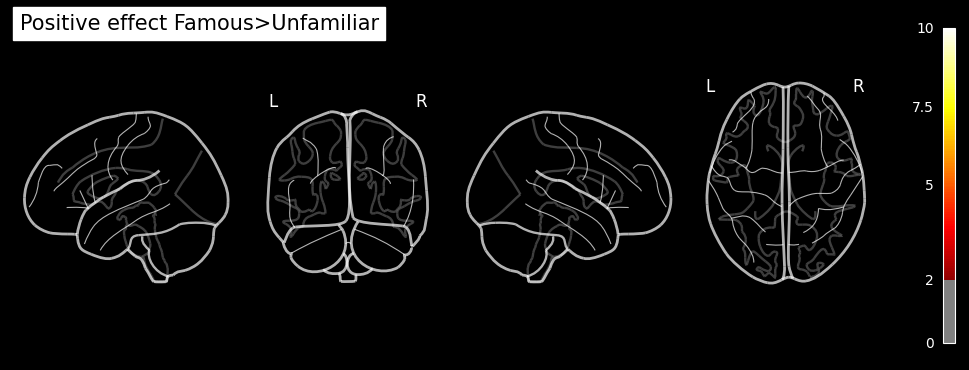
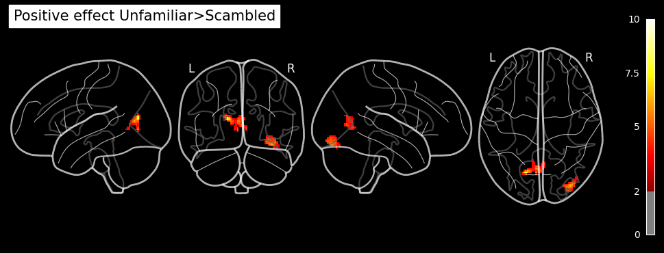
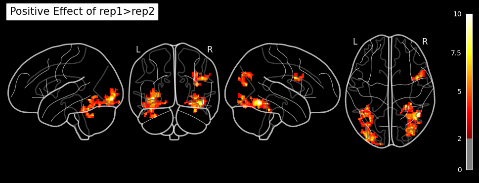
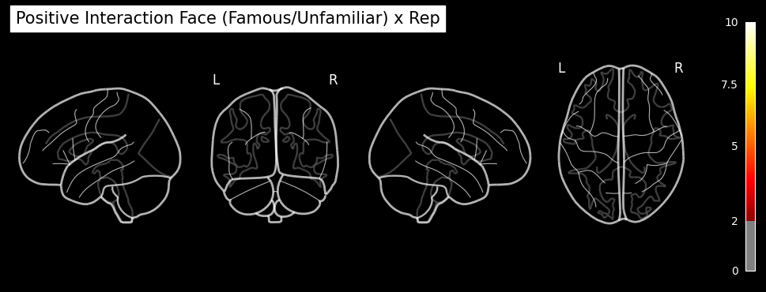
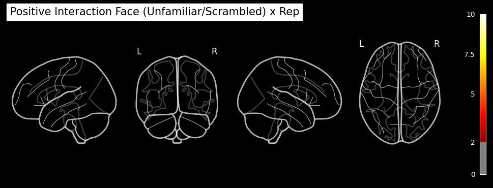
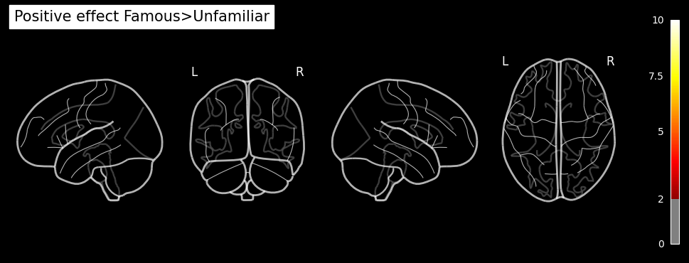
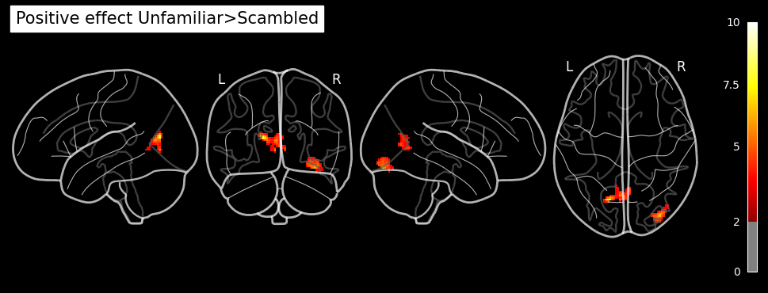
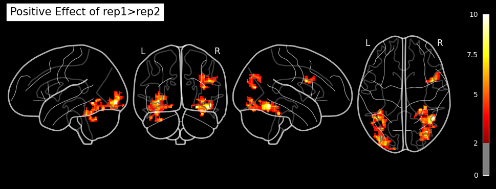
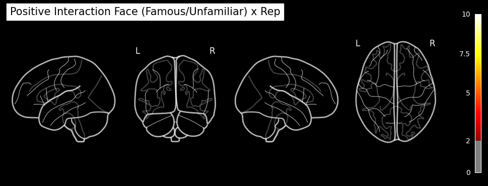
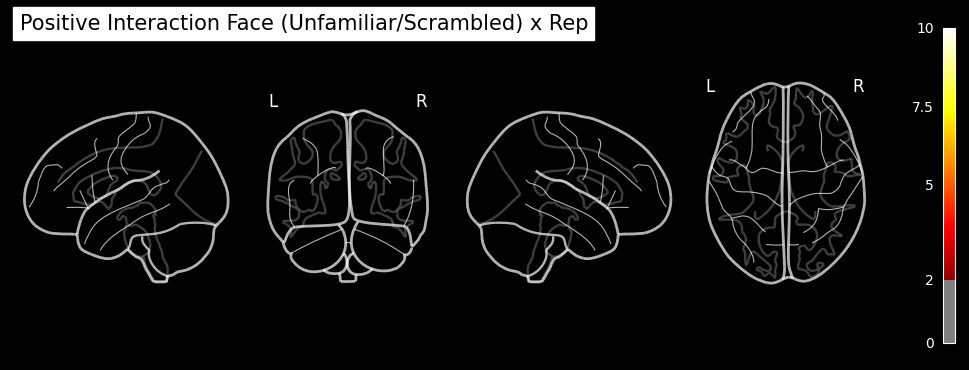

Nipype-SPM fMRI Analysis#
Subject and Group Level Analysis Workflows#
Author: Monika Doerig
Date: 13 June 2024
Citation and Resources:#
Tools included in this workflow#
Nipype:
Esteban, O., Markiewicz, C. J., Burns, C., Goncalves, M., Jarecka, D., Ziegler, E., Berleant, S., Ellis, D. G., Pinsard, B., Madison, C., Waskom, M., Notter, M. P., Clark, D., Manhães-Savio, A., Clark, D., Jordan, K., Dayan, M., Halchenko, Y. O., Loney, F., … Ghosh, S. (2025). nipy/nipype: 1.8.6 (1.8.6). Zenodo. https://doi.org/10.5281/zenodo.15054147
SPM12:
Friston, K. J. (2007). Statistical parametric mapping: The analysis of functional brain images (1st ed). Elsevier / Academic Press.
Dataset#
Wakeman, DG and Henson, RN (2021). Multisubject, multimodal face processing. OpenNeuro. [Dataset] doi: 10.18112/openneuro.ds000117.v1.0.5
Wakeman, D.G. & Henson, R.N. (2015). A multi-subject, multi-modal human neuroimaging dataset. Sci. Data 2:150001 doi: 10.1038/sdata.2015.1
Educational resources:#
Introduction#
The fMRI dataset used for this example is part of a multi-subject, multi-modal (sMRI, fMRI, MEG, EEG) neuroimaging dataset on face processing. It contains data in BIDS format on sixteen healthy volunteers. The data was recoreded while the volunteers performed multiple runs of hundreds of trials of a simple perceptual task on pictures of familiar, unfamiliar and scrambled faces during two visits to the laboratory.
The facial stimuli consisted of two groups of 300 greyscale photos, half of which were of famous people and half of which were of non-famous people (unknown to the participants). Each scrambled face was created either from the famous face or the non-famous face of the same stimulus number. Additionally, each image was presented twice to the participants. The second presentation occurred either immediately after the first presentation (Immediate Repeats) or after 5–15 intervening stimuli (Delayed Repeats), with 50% of each type of repeat. To ensure that each stimulus received equal attention, participants were instructed to use their left or right index finger to press one of two keys (assignment counter-balanced across participants). They determined the symmetry of each image by pressing a key based on whether they perceived it to be ‘more’ or ‘less symmetric’ than average.
In the original paper (Wakeman & Henson, 2015), the repetition manipulation was not distinguished, meaning that initial and repeated presentations were treated identically without considering the timing of the repeats.
To illustrate the setup of a 3x2 factorial design analysis (familiar vs. unfamiliar vs. scrambled faces) x (1st vs. 2nd presentation) in an SPM Nipype workflow, the event files will be adapted accordingly. Each stimulus type will be labeled as either the first or second presentation. However, for simplicity, no distinction is made between immediate and delayed repetitions, resulting in 6 stimulus types (conditions): Familiar-Rep1 (F1), Familiar-Rep2 (F2), Unfamiliar-Rep1 (U1), Unfamiliar-Rep2 (U2), Scrambled-Rep1 (S1), and Scrambled-Rep2 (S2).
Examples of a familiar, unfamiliar and scrambled face:
PATTERN_STIMULI = "stimuli/func/*001.bmp"
!datalad install https://github.com/OpenNeuroDatasets/ds000117.git
!cd ds000117 && git checkout 1.0.5 && datalad get $PATTERN_STIMULI
Cloning: 0%| | 0.00/2.00 [00:00<?, ? candidates/s]
Enumerating: 0.00 Objects [00:00, ? Objects/s]
Counting: 0%| | 0.00/39.9k [00:00<?, ? Objects/s]
Compressing: 0%| | 0.00/22.2k [00:00<?, ? Objects/s]
Compressing: 70%|█████████████▎ | 15.5k/22.2k [00:00<00:00, 148k Objects/s]
Receiving: 0%| | 0.00/61.8k [00:00<?, ? Objects/s]
Receiving: 27%|█████▋ | 16.7k/61.8k [00:00<00:00, 163k Objects/s]
Receiving: 63%|█████████████▏ | 38.9k/61.8k [00:00<00:00, 196k Objects/s]
Receiving: 95%|███████████████████▉ | 58.7k/61.8k [00:00<00:00, 146k Objects/s]
Resolving: 0%| | 0.00/16.5k [00:00<?, ? Deltas/s]
Resolving: 53%|███████████▏ | 8.75k/16.5k [00:00<00:00, 85.0k Deltas/s]
[INFO ] scanning for unlocked files (this may take some time)
[INFO ] Remote origin not usable by git-annex; setting annex-ignore
install(ok): /home/jovyan/Git_repositories/example-notebooks/books/functional_imaging/ds000117 (dataset)
Updating files: 100% (379/379), done.
Note: switching to '1.0.5'.
You are in 'detached HEAD' state. You can look around, make experimental
changes and commit them, and you can discard any commits you make in this
state without impacting any branches by switching back to a branch.
If you want to create a new branch to retain commits you create, you may
do so (now or later) by using -c with the switch command. Example:
git switch -c <new-branch-name>
Or undo this operation with:
git switch -
Turn off this advice by setting config variable advice.detachedHead to false
HEAD is now at 12470d39 [OpenNeuro] Recorded changes
Total: 0%| | 0.00/131k [00:00<?, ? Bytes/s]
Get stimuli/func/s001.bmp: 0%| | 0.00/21.8k [00:00<?, ? Bytes/s]
Total: 17%|████▌ | 21.8k/131k [00:01<00:07, 14.2k Bytes/s]
Get stimuli/func/u001.bmp: 0%| | 0.00/21.8k [00:00<?, ? Bytes/s]
Total: 33%|█████████ | 43.6k/131k [00:01<00:03, 25.9k Bytes/s]
Get stimuli/ .. nc/pf001.bmp: 0%| | 0.00/21.8k [00:00<?, ? Bytes/s]
Total: 50%|█████████████▌ | 65.4k/131k [00:01<00:01, 35.6k Bytes/s]
Get stimuli/ .. nc/pu001.bmp: 0%| | 0.00/21.8k [00:00<?, ? Bytes/s]
Total: 67%|██████████████████ | 87.3k/131k [00:01<00:00, 44.1k Bytes/s]
Get stimuli/ .. nc/ps001.bmp: 0%| | 0.00/21.8k [00:00<?, ? Bytes/s]
Total: 83%|███████████████████████▎ | 109k/131k [00:02<00:00, 51.3k Bytes/s]
Get stimuli/func/f001.bmp: 0%| | 0.00/21.8k [00:00<?, ? Bytes/s]
get(ok): stimuli/func/s001.bmp (file)
get(ok): stimuli/func/u001.bmp (file)
get(ok): stimuli/func/pf001.bmp (file)
get(ok): stimuli/func/pu001.bmp (file)
get(ok): stimuli/func/ps001.bmp (file)
get(ok): stimuli/func/f001.bmp (file)
action summary:
get (ok: 6)
import matplotlib.pyplot as plt
from matplotlib.image import imread
# Load the .bmp images
familiar = imread('ds000117/stimuli/func/f001.bmp')
unfamiliar = imread('ds000117/stimuli/func/u001.bmp')
scrambled = imread('ds000117/stimuli/func/s001.bmp')
# Create a Matplotlib figure with subplots
fig, axes = plt.subplots(1, 3, figsize=(12, 4))
# Plot each image on a subplot
axes[0].imshow(familiar, cmap='gray')
axes[0].set_title('Familiar face')
axes[0].axis('off')
axes[1].imshow(unfamiliar, cmap='gray')
axes[1].set_title('Unfamiliar face')
axes[1].axis('off')
axes[2].imshow(scrambled, cmap='gray')
axes[2].set_title('Scrambled face')
axes[2].axis('off')
plt.tight_layout()
plt.show()

Download Data and install Python modules#
# get func data of the mri session of 9 individuals
PATTERN = "sub-0*/ses-mri/func"
!datalad install https://github.com/OpenNeuroDatasets/ds000117.git
!cd ds000117 && git checkout 1.0.5 && datalad get $PATTERN
install(error): /home/jovyan/Git_repositories/example-notebooks/books/functional_imaging/ds000117 (dataset) [target path already exists and not empty, refuse to clone into target path]
HEAD is now at 12470d39 [OpenNeuro] Recorded changes
Total: 0%| | 0.00/2.93G [00:00<?, ? Bytes/s]
Get sub-06/s .. _bold.nii.gz: 0%| | 0.00/36.8M [00:00<?, ? Bytes/s]
Get sub-06/s .. _bold.nii.gz: 0%| | 85.6k/36.8M [00:00<01:19, 463k Bytes/s]
Get sub-06/s .. _bold.nii.gz: 1%| | 242k/36.8M [00:00<00:38, 943k Bytes/s]
Get sub-06/s .. _bold.nii.gz: 2%| | 556k/36.8M [00:00<00:20, 1.78M Bytes/s]
Get sub-06/s .. _bold.nii.gz: 2%| | 886k/36.8M [00:00<00:15, 2.32M Bytes/s]
Get sub-06/s .. _bold.nii.gz: 3%| | 1.15M/36.8M [00:00<00:14, 2.41M Bytes/s]
Get sub-06/s .. _bold.nii.gz: 7%|▏ | 2.60M/36.8M [00:00<00:05, 6.32M Bytes/s]
Get sub-06/s .. _bold.nii.gz: 10%|▎ | 3.68M/36.8M [00:00<00:04, 7.73M Bytes/s]
Get sub-06/s .. _bold.nii.gz: 13%|▍ | 4.83M/36.8M [00:00<00:03, 8.89M Bytes/s]
Get sub-06/s .. _bold.nii.gz: 17%|▌ | 6.27M/36.8M [00:00<00:02, 10.4M Bytes/s]
Get sub-06/s .. _bold.nii.gz: 21%|▌ | 7.64M/36.8M [00:01<00:02, 11.4M Bytes/s]
Get sub-06/s .. _bold.nii.gz: 26%|▊ | 9.61M/36.8M [00:01<00:01, 13.9M Bytes/s]
Get sub-06/s .. _bold.nii.gz: 35%|█ | 12.9M/36.8M [00:01<00:01, 14.8M Bytes/s]
Get sub-06/s .. _bold.nii.gz: 40%|█▏ | 14.9M/36.8M [00:01<00:01, 16.0M Bytes/s]
Get sub-06/s .. _bold.nii.gz: 46%|█▍ | 17.0M/36.8M [00:01<00:01, 17.3M Bytes/s]
Get sub-06/s .. _bold.nii.gz: 52%|█▌ | 19.0M/36.8M [00:01<00:01, 17.1M Bytes/s]
Get sub-06/s .. _bold.nii.gz: 58%|█▋ | 21.3M/36.8M [00:01<00:00, 18.6M Bytes/s]
Get sub-06/s .. _bold.nii.gz: 66%|█▉ | 24.3M/36.8M [00:02<00:00, 17.1M Bytes/s]
Get sub-06/s .. _bold.nii.gz: 73%|██▏| 26.8M/36.8M [00:02<00:00, 18.7M Bytes/s]
Get sub-06/s .. _bold.nii.gz: 83%|██▍| 30.6M/36.8M [00:02<00:00, 18.7M Bytes/s]
Get sub-06/s .. _bold.nii.gz: 90%|██▋| 33.0M/36.8M [00:02<00:00, 19.9M Bytes/s]
Get sub-06/s .. _bold.nii.gz: 100%|██▉| 36.8M/36.8M [00:02<00:00, 19.5M Bytes/s]
Total: 1%|▎ | 36.8M/2.93G [00:03<04:38, 10.4M Bytes/s]
Get sub-06/s .. _bold.nii.gz: 0%| | 0.00/36.8M [00:00<?, ? Bytes/s]
Get sub-06/s .. _bold.nii.gz: 5%|▏ | 1.73M/36.8M [00:00<00:02, 17.0M Bytes/s]
Get sub-06/s .. _bold.nii.gz: 11%|▎ | 3.93M/36.8M [00:00<00:02, 12.4M Bytes/s]
Get sub-06/s .. _bold.nii.gz: 16%|▍ | 5.78M/36.8M [00:00<00:02, 14.2M Bytes/s]
Get sub-06/s .. _bold.nii.gz: 22%|▋ | 8.07M/36.8M [00:00<00:01, 16.8M Bytes/s]
Get sub-06/s .. _bold.nii.gz: 27%|▊ | 9.91M/36.8M [00:00<00:01, 17.3M Bytes/s]
Get sub-06/s .. _bold.nii.gz: 36%|█ | 13.2M/36.8M [00:00<00:01, 16.9M Bytes/s]
Get sub-06/s .. _bold.nii.gz: 44%|█▎ | 16.4M/36.8M [00:01<00:01, 16.4M Bytes/s]
Get sub-06/s .. _bold.nii.gz: 50%|█▍ | 18.4M/36.8M [00:01<00:01, 17.2M Bytes/s]
Get sub-06/s .. _bold.nii.gz: 58%|█▊ | 21.5M/36.8M [00:01<00:00, 16.6M Bytes/s]
Get sub-06/s .. _bold.nii.gz: 63%|█▉ | 23.2M/36.8M [00:01<00:00, 16.0M Bytes/s]
Get sub-06/s .. _bold.nii.gz: 68%|██ | 24.9M/36.8M [00:01<00:00, 16.2M Bytes/s]
Get sub-06/s .. _bold.nii.gz: 72%|██▏| 26.7M/36.8M [00:01<00:00, 16.5M Bytes/s]
Get sub-06/s .. _bold.nii.gz: 77%|██▎| 28.4M/36.8M [00:01<00:00, 16.8M Bytes/s]
Get sub-06/s .. _bold.nii.gz: 82%|██▍| 30.2M/36.8M [00:01<00:00, 16.9M Bytes/s]
Get sub-06/s .. _bold.nii.gz: 87%|██▌| 31.9M/36.8M [00:01<00:00, 17.2M Bytes/s]
Get sub-06/s .. _bold.nii.gz: 92%|██▋| 33.7M/36.8M [00:02<00:00, 17.3M Bytes/s]
Get sub-06/s .. _bold.nii.gz: 96%|██▉| 35.5M/36.8M [00:02<00:00, 17.5M Bytes/s]
Total: 3%|▋ | 73.6M/2.93G [00:06<03:59, 12.0M Bytes/s]
Get sub-06/s .. _bold.nii.gz: 0%| | 0.00/36.9M [00:00<?, ? Bytes/s]
Get sub-06/s .. _bold.nii.gz: 10%|▎ | 3.61M/36.9M [00:00<00:01, 18.7M Bytes/s]
Get sub-06/s .. _bold.nii.gz: 19%|▌ | 7.18M/36.9M [00:00<00:01, 18.2M Bytes/s]
Get sub-06/s .. _bold.nii.gz: 25%|▋ | 9.08M/36.9M [00:00<00:01, 18.4M Bytes/s]
Get sub-06/s .. _bold.nii.gz: 35%|█ | 12.8M/36.9M [00:00<00:01, 18.4M Bytes/s]
Get sub-06/s .. _bold.nii.gz: 44%|█▎ | 16.1M/36.9M [00:00<00:01, 17.7M Bytes/s]
Get sub-06/s .. _bold.nii.gz: 50%|█▍ | 18.3M/36.9M [00:00<00:00, 18.6M Bytes/s]
Get sub-06/s .. _bold.nii.gz: 60%|█▊ | 22.0M/36.9M [00:01<00:00, 18.5M Bytes/s]
Get sub-06/s .. _bold.nii.gz: 65%|█▉ | 23.9M/36.9M [00:01<00:00, 18.6M Bytes/s]
Get sub-06/s .. _bold.nii.gz: 75%|██▏| 27.6M/36.9M [00:01<00:00, 18.5M Bytes/s]
Get sub-06/s .. _bold.nii.gz: 80%|██▍| 29.5M/36.9M [00:01<00:00, 17.8M Bytes/s]
Get sub-06/s .. _bold.nii.gz: 85%|██▌| 31.3M/36.9M [00:01<00:00, 17.9M Bytes/s]
Get sub-06/s .. _bold.nii.gz: 90%|██▋| 33.2M/36.9M [00:01<00:00, 18.1M Bytes/s]
Get sub-06/s .. _bold.nii.gz: 95%|██▊| 35.1M/36.9M [00:01<00:00, 18.0M Bytes/s]
Total: 4%|█ | 110M/2.93G [00:08<03:38, 12.9M Bytes/s]
Get sub-06/s .. _bold.nii.gz: 0%| | 0.00/36.9M [00:00<?, ? Bytes/s]
Get sub-06/s .. _bold.nii.gz: 10%|▎ | 3.64M/36.9M [00:00<00:01, 18.2M Bytes/s]
Get sub-06/s .. _bold.nii.gz: 15%|▍ | 5.56M/36.9M [00:00<00:01, 18.6M Bytes/s]
Get sub-06/s .. _bold.nii.gz: 25%|▊ | 9.34M/36.9M [00:00<00:01, 18.7M Bytes/s]
Get sub-06/s .. _bold.nii.gz: 31%|▉ | 11.3M/36.9M [00:00<00:01, 19.0M Bytes/s]
Get sub-06/s .. _bold.nii.gz: 40%|█▏ | 14.8M/36.9M [00:00<00:01, 18.1M Bytes/s]
Get sub-06/s .. _bold.nii.gz: 46%|█▍ | 17.1M/36.9M [00:00<00:01, 19.5M Bytes/s]
Get sub-06/s .. _bold.nii.gz: 56%|█▋ | 20.7M/36.9M [00:01<00:00, 18.7M Bytes/s]
Get sub-06/s .. _bold.nii.gz: 62%|█▊ | 22.9M/36.9M [00:01<00:00, 19.5M Bytes/s]
Get sub-06/s .. _bold.nii.gz: 72%|██▏| 26.7M/36.9M [00:01<00:00, 19.3M Bytes/s]
Get sub-06/s .. _bold.nii.gz: 83%|██▍| 30.6M/36.9M [00:01<00:00, 19.3M Bytes/s]
Get sub-06/s .. _bold.nii.gz: 93%|██▊| 34.3M/36.9M [00:01<00:00, 18.9M Bytes/s]
Total: 5%|█▎ | 147M/2.93G [00:10<03:26, 13.5M Bytes/s]
Get sub-06/s .. _bold.nii.gz: 0%| | 0.00/37.0M [00:00<?, ? Bytes/s]
Get sub-06/s .. _bold.nii.gz: 10%|▎ | 3.77M/37.0M [00:00<00:01, 18.3M Bytes/s]
Get sub-06/s .. _bold.nii.gz: 16%|▍ | 5.86M/37.0M [00:00<00:01, 19.4M Bytes/s]
Get sub-06/s .. _bold.nii.gz: 26%|▊ | 9.73M/37.0M [00:00<00:01, 19.3M Bytes/s]
Get sub-06/s .. _bold.nii.gz: 32%|▉ | 11.7M/37.0M [00:00<00:01, 19.4M Bytes/s]
Get sub-06/s .. _bold.nii.gz: 41%|█▏ | 15.3M/37.0M [00:00<00:01, 18.7M Bytes/s]
Get sub-06/s .. _bold.nii.gz: 47%|█▍ | 17.4M/37.0M [00:00<00:01, 19.2M Bytes/s]
Get sub-06/s .. _bold.nii.gz: 52%|█▌ | 19.4M/37.0M [00:01<00:00, 19.3M Bytes/s]
Get sub-06/s .. _bold.nii.gz: 63%|█▉ | 23.2M/37.0M [00:01<00:00, 19.3M Bytes/s]
Get sub-06/s .. _bold.nii.gz: 74%|██▏| 27.4M/37.0M [00:01<00:00, 19.8M Bytes/s]
Get sub-06/s .. _bold.nii.gz: 84%|██▌| 31.1M/37.0M [00:01<00:00, 18.9M Bytes/s]
Get sub-06/s .. _bold.nii.gz: 94%|██▊| 34.7M/37.0M [00:01<00:00, 18.6M Bytes/s]
Get sub-06/s .. _bold.nii.gz: 99%|██▉| 36.8M/37.0M [00:01<00:00, 19.0M Bytes/s]
Total: 6%|█▋ | 184M/2.93G [00:13<03:16, 14.0M Bytes/s]
Get sub-06/s .. _bold.nii.gz: 0%| | 0.00/37.0M [00:00<?, ? Bytes/s]
Get sub-06/s .. _bold.nii.gz: 5%|▏ | 1.94M/37.0M [00:00<00:01, 19.4M Bytes/s]
Get sub-06/s .. _bold.nii.gz: 10%|▎ | 3.88M/37.0M [00:00<00:01, 19.4M Bytes/s]
Get sub-06/s .. _bold.nii.gz: 21%|▌ | 7.65M/37.0M [00:00<00:01, 19.0M Bytes/s]
Get sub-06/s .. _bold.nii.gz: 26%|▊ | 9.70M/37.0M [00:00<00:01, 19.4M Bytes/s]
Get sub-06/s .. _bold.nii.gz: 32%|▉ | 11.7M/37.0M [00:00<00:01, 19.5M Bytes/s]
Get sub-06/s .. _bold.nii.gz: 37%|█ | 13.6M/37.0M [00:00<00:01, 19.6M Bytes/s]
Get sub-06/s .. _bold.nii.gz: 47%|█▍ | 17.4M/37.0M [00:00<00:01, 19.1M Bytes/s]
Get sub-06/s .. _bold.nii.gz: 52%|█▌ | 19.3M/37.0M [00:01<00:00, 19.2M Bytes/s]
Get sub-06/s .. _bold.nii.gz: 58%|█▋ | 21.5M/37.0M [00:01<00:00, 19.7M Bytes/s]
Get sub-06/s .. _bold.nii.gz: 68%|██ | 25.3M/37.0M [00:01<00:00, 19.4M Bytes/s]
Get sub-06/s .. _bold.nii.gz: 79%|██▎| 29.2M/37.0M [00:01<00:00, 19.4M Bytes/s]
Get sub-06/s .. _bold.nii.gz: 88%|██▋| 32.7M/37.0M [00:01<00:00, 18.8M Bytes/s]
Get sub-06/s .. _bold.nii.gz: 94%|██▊| 34.9M/37.0M [00:01<00:00, 18.8M Bytes/s]
Get sub-06/s .. _bold.nii.gz: 100%|██▉| 36.8M/37.0M [00:01<00:00, 18.8M Bytes/s]
Total: 8%|██ | 221M/2.93G [00:15<03:10, 14.2M Bytes/s]
Get sub-06/s .. _bold.nii.gz: 0%| | 0.00/37.0M [00:00<?, ? Bytes/s]
Get sub-06/s .. _bold.nii.gz: 10%|▎ | 3.85M/37.0M [00:00<00:01, 19.2M Bytes/s]
Get sub-06/s .. _bold.nii.gz: 16%|▍ | 5.78M/37.0M [00:00<00:01, 19.2M Bytes/s]
Get sub-06/s .. _bold.nii.gz: 26%|▊ | 9.62M/37.0M [00:00<00:01, 19.1M Bytes/s]
Get sub-06/s .. _bold.nii.gz: 36%|█ | 13.3M/37.0M [00:00<00:01, 18.9M Bytes/s]
Get sub-06/s .. _bold.nii.gz: 42%|█▎ | 15.4M/37.0M [00:00<00:01, 19.4M Bytes/s]
Get sub-06/s .. _bold.nii.gz: 47%|█▍ | 17.5M/37.0M [00:00<00:00, 19.6M Bytes/s]
Get sub-06/s .. _bold.nii.gz: 58%|█▋ | 21.3M/37.0M [00:01<00:00, 19.4M Bytes/s]
Get sub-06/s .. _bold.nii.gz: 68%|██ | 25.1M/37.0M [00:01<00:00, 19.3M Bytes/s]
Get sub-06/s .. _bold.nii.gz: 79%|██▎| 29.2M/37.0M [00:01<00:00, 19.6M Bytes/s]
Get sub-06/s .. _bold.nii.gz: 84%|██▌| 31.2M/37.0M [00:01<00:00, 19.6M Bytes/s]
Get sub-06/s .. _bold.nii.gz: 90%|██▋| 33.1M/37.0M [00:01<00:00, 19.0M Bytes/s]
Get sub-06/s .. _bold.nii.gz: 100%|██▉| 36.9M/37.0M [00:01<00:00, 18.8M Bytes/s]
Total: 9%|██▍ | 258M/2.93G [00:17<03:04, 14.5M Bytes/s]
Get sub-06/s .. _bold.nii.gz: 0%| | 0.00/37.0M [00:00<?, ? Bytes/s]
Get sub-06/s .. _bold.nii.gz: 10%|▎ | 3.81M/37.0M [00:00<00:01, 19.0M Bytes/s]
Get sub-06/s .. _bold.nii.gz: 16%|▍ | 5.89M/37.0M [00:00<00:01, 19.7M Bytes/s]
Get sub-06/s .. _bold.nii.gz: 21%|▋ | 7.89M/37.0M [00:00<00:01, 19.8M Bytes/s]
Get sub-06/s .. _bold.nii.gz: 32%|▉ | 11.8M/37.0M [00:00<00:01, 19.7M Bytes/s]
Get sub-06/s .. _bold.nii.gz: 43%|█▎ | 15.8M/37.0M [00:00<00:01, 19.8M Bytes/s]
Get sub-06/s .. _bold.nii.gz: 53%|█▌ | 19.6M/37.0M [00:01<00:00, 19.5M Bytes/s]
Get sub-06/s .. _bold.nii.gz: 64%|█▉ | 23.6M/37.0M [00:01<00:00, 19.4M Bytes/s]
Get sub-06/s .. _bold.nii.gz: 75%|██▏| 27.8M/37.0M [00:01<00:00, 19.9M Bytes/s]
Get sub-06/s .. _bold.nii.gz: 81%|██▍| 29.9M/37.0M [00:01<00:00, 19.4M Bytes/s]
Get sub-06/s .. _bold.nii.gz: 86%|██▌| 31.9M/37.0M [00:01<00:00, 19.5M Bytes/s]
Get sub-06/s .. _bold.nii.gz: 91%|██▋| 33.9M/37.0M [00:01<00:00, 19.6M Bytes/s]
Get sub-06/s .. _bold.nii.gz: 97%|██▉| 35.9M/37.0M [00:01<00:00, 19.7M Bytes/s]
Total: 10%|██▋ | 295M/2.93G [00:20<03:01, 14.6M Bytes/s]
Get sub-06/s .. _bold.nii.gz: 0%| | 0.00/37.1M [00:00<?, ? Bytes/s]
Get sub-06/s .. _bold.nii.gz: 11%|▎ | 3.98M/37.1M [00:00<00:01, 19.9M Bytes/s]
Get sub-06/s .. _bold.nii.gz: 16%|▍ | 5.99M/37.1M [00:00<00:01, 20.0M Bytes/s]
Get sub-06/s .. _bold.nii.gz: 27%|▊ | 9.99M/37.1M [00:00<00:01, 19.6M Bytes/s]
Get sub-06/s .. _bold.nii.gz: 33%|▉ | 12.2M/37.1M [00:00<00:01, 20.2M Bytes/s]
Get sub-06/s .. _bold.nii.gz: 44%|█▎ | 16.2M/37.1M [00:00<00:01, 19.9M Bytes/s]
Get sub-06/s .. _bold.nii.gz: 55%|█▋ | 20.4M/37.1M [00:01<00:00, 20.4M Bytes/s]
Get sub-06/s .. _bold.nii.gz: 66%|█▉ | 24.5M/37.1M [00:01<00:00, 20.3M Bytes/s]
Get sub-06/s .. _bold.nii.gz: 76%|██▎| 28.3M/37.1M [00:01<00:00, 19.8M Bytes/s]
Get sub-06/s .. _bold.nii.gz: 82%|██▍| 30.3M/37.1M [00:01<00:00, 19.9M Bytes/s]
Get sub-06/s .. _bold.nii.gz: 88%|██▋| 32.6M/37.1M [00:01<00:00, 20.0M Bytes/s]
Get sub-06/s .. _bold.nii.gz: 99%|██▉| 36.8M/37.1M [00:01<00:00, 20.4M Bytes/s]
Total: 11%|███ | 333M/2.93G [00:22<02:55, 14.8M Bytes/s]
Get sub-05/s .. _bold.nii.gz: 0%| | 0.00/35.3M [00:00<?, ? Bytes/s]
Get sub-05/s .. _bold.nii.gz: 11%|▎ | 3.88M/35.3M [00:00<00:01, 19.2M Bytes/s]
Get sub-05/s .. _bold.nii.gz: 17%|▌ | 5.90M/35.3M [00:00<00:01, 19.5M Bytes/s]
Get sub-05/s .. _bold.nii.gz: 23%|▋ | 8.20M/35.3M [00:00<00:01, 20.8M Bytes/s]
Get sub-05/s .. _bold.nii.gz: 33%|█ | 11.8M/35.3M [00:00<00:01, 19.1M Bytes/s]
Get sub-05/s .. _bold.nii.gz: 40%|█▏ | 14.1M/35.3M [00:00<00:01, 20.1M Bytes/s]
Get sub-05/s .. _bold.nii.gz: 52%|█▌ | 18.5M/35.3M [00:00<00:00, 20.8M Bytes/s]
Get sub-05/s .. _bold.nii.gz: 64%|█▉ | 22.6M/35.3M [00:01<00:00, 20.6M Bytes/s]
Get sub-05/s .. _bold.nii.gz: 75%|██▎| 26.5M/35.3M [00:01<00:00, 20.2M Bytes/s]
Get sub-05/s .. _bold.nii.gz: 86%|██▌| 30.4M/35.3M [00:01<00:00, 19.5M Bytes/s]
Get sub-05/s .. _bold.nii.gz: 93%|██▊| 32.7M/35.3M [00:01<00:00, 20.1M Bytes/s]
Get sub-05/s .. _bold.nii.gz: 0%| | 0.00/35.4M [00:00<?, ? Bytes/s]
Get sub-05/s .. _bold.nii.gz: 6%|▏ | 1.98M/35.4M [00:00<00:01, 18.2M Bytes/s]
Get sub-05/s .. _bold.nii.gz: 13%|▍ | 4.43M/35.4M [00:00<00:02, 13.8M Bytes/s]
Get sub-05/s .. _bold.nii.gz: 18%|▌ | 6.43M/35.4M [00:00<00:01, 15.9M Bytes/s]
Get sub-05/s .. _bold.nii.gz: 24%|▋ | 8.63M/35.4M [00:00<00:01, 17.9M Bytes/s]
Get sub-05/s .. _bold.nii.gz: 30%|▉ | 10.5M/35.4M [00:00<00:01, 17.6M Bytes/s]
Get sub-05/s .. _bold.nii.gz: 39%|█▏ | 13.9M/35.4M [00:00<00:01, 17.0M Bytes/s]
Get sub-05/s .. _bold.nii.gz: 44%|█▎ | 15.7M/35.4M [00:00<00:01, 17.1M Bytes/s]
Get sub-05/s .. _bold.nii.gz: 49%|█▍ | 17.4M/35.4M [00:01<00:01, 17.3M Bytes/s]
Get sub-05/s .. _bold.nii.gz: 54%|█▋ | 19.2M/35.4M [00:01<00:00, 17.5M Bytes/s]
Get sub-05/s .. _bold.nii.gz: 60%|█▊ | 21.0M/35.4M [00:01<00:00, 17.6M Bytes/s]
Get sub-05/s .. _bold.nii.gz: 65%|█▉ | 22.9M/35.4M [00:01<00:00, 17.8M Bytes/s]
Get sub-05/s .. _bold.nii.gz: 70%|██ | 24.7M/35.4M [00:01<00:00, 17.6M Bytes/s]
Get sub-05/s .. _bold.nii.gz: 75%|██▎| 26.5M/35.4M [00:01<00:00, 17.8M Bytes/s]
Get sub-05/s .. _bold.nii.gz: 80%|██▍| 28.4M/35.4M [00:01<00:00, 17.9M Bytes/s]
Get sub-05/s .. _bold.nii.gz: 85%|██▌| 30.2M/35.4M [00:01<00:00, 18.0M Bytes/s]
Get sub-05/s .. _bold.nii.gz: 91%|██▋| 32.1M/35.4M [00:01<00:00, 18.4M Bytes/s]
Get sub-05/s .. _bold.nii.gz: 96%|██▉| 34.0M/35.4M [00:01<00:00, 18.6M Bytes/s]
Total: 14%|███▋ | 403M/2.93G [00:26<02:49, 14.9M Bytes/s]
Get sub-05/s .. _bold.nii.gz: 0%| | 0.00/35.4M [00:00<?, ? Bytes/s]
Get sub-05/s .. _bold.nii.gz: 11%|▎ | 3.80M/35.4M [00:00<00:01, 19.0M Bytes/s]
Get sub-05/s .. _bold.nii.gz: 16%|▍ | 5.81M/35.4M [00:00<00:01, 19.4M Bytes/s]
Get sub-05/s .. _bold.nii.gz: 22%|▋ | 7.89M/35.4M [00:00<00:01, 19.9M Bytes/s]
Get sub-05/s .. _bold.nii.gz: 33%|▉ | 11.7M/35.4M [00:00<00:01, 19.3M Bytes/s]
Get sub-05/s .. _bold.nii.gz: 39%|█▏ | 13.9M/35.4M [00:00<00:01, 20.1M Bytes/s]
Get sub-05/s .. _bold.nii.gz: 51%|█▌ | 17.9M/35.4M [00:00<00:00, 20.1M Bytes/s]
Get sub-05/s .. _bold.nii.gz: 61%|█▊ | 21.6M/35.4M [00:01<00:00, 19.5M Bytes/s]
Get sub-05/s .. _bold.nii.gz: 67%|██ | 23.8M/35.4M [00:01<00:00, 20.0M Bytes/s]
Get sub-05/s .. _bold.nii.gz: 78%|██▎| 27.7M/35.4M [00:01<00:00, 19.7M Bytes/s]
Get sub-05/s .. _bold.nii.gz: 85%|██▌| 30.0M/35.4M [00:01<00:00, 20.4M Bytes/s]
Get sub-05/s .. _bold.nii.gz: 91%|██▋| 32.2M/35.4M [00:01<00:00, 20.6M Bytes/s]
Get sub-05/s .. _bold.nii.gz: 0%| | 0.00/35.5M [00:00<?, ? Bytes/s]
Get sub-05/s .. _bold.nii.gz: 11%|▎ | 3.96M/35.5M [00:00<00:01, 19.8M Bytes/s]
Get sub-05/s .. _bold.nii.gz: 23%|▋ | 8.02M/35.5M [00:00<00:01, 20.1M Bytes/s]
Get sub-05/s .. _bold.nii.gz: 28%|▊ | 10.1M/35.5M [00:00<00:01, 20.1M Bytes/s]
Get sub-05/s .. _bold.nii.gz: 34%|█ | 12.1M/35.5M [00:00<00:01, 20.2M Bytes/s]
Get sub-05/s .. _bold.nii.gz: 45%|█▎ | 15.9M/35.5M [00:00<00:01, 19.6M Bytes/s]
Get sub-05/s .. _bold.nii.gz: 51%|█▌ | 18.1M/35.5M [00:00<00:00, 20.1M Bytes/s]
Get sub-05/s .. _bold.nii.gz: 62%|█▊ | 21.9M/35.5M [00:01<00:00, 19.5M Bytes/s]
Get sub-05/s .. _bold.nii.gz: 74%|██▏| 26.2M/35.5M [00:01<00:00, 20.4M Bytes/s]
Get sub-05/s .. _bold.nii.gz: 83%|██▍| 29.6M/35.5M [00:01<00:00, 19.1M Bytes/s]
Get sub-05/s .. _bold.nii.gz: 90%|██▋| 32.0M/35.5M [00:01<00:00, 20.1M Bytes/s]
Get sub-05/s .. _bold.nii.gz: 96%|██▉| 34.3M/35.5M [00:01<00:00, 20.0M Bytes/s]
Total: 16%|████▎ | 474M/2.93G [00:31<02:42, 15.2M Bytes/s]
Get sub-05/s .. _bold.nii.gz: 0%| | 0.00/35.6M [00:00<?, ? Bytes/s]
Get sub-05/s .. _bold.nii.gz: 11%|▎ | 3.89M/35.6M [00:00<00:01, 19.5M Bytes/s]
Get sub-05/s .. _bold.nii.gz: 16%|▍ | 5.86M/35.6M [00:00<00:01, 19.5M Bytes/s]
Get sub-05/s .. _bold.nii.gz: 27%|▊ | 9.77M/35.6M [00:00<00:01, 19.2M Bytes/s]
Get sub-05/s .. _bold.nii.gz: 33%|█ | 11.9M/35.6M [00:00<00:01, 19.5M Bytes/s]
Get sub-05/s .. _bold.nii.gz: 39%|█▏ | 14.0M/35.6M [00:00<00:01, 20.0M Bytes/s]
Get sub-05/s .. _bold.nii.gz: 50%|█▌ | 17.8M/35.6M [00:00<00:00, 19.5M Bytes/s]
Get sub-05/s .. _bold.nii.gz: 56%|█▋ | 19.9M/35.6M [00:01<00:00, 19.9M Bytes/s]
Get sub-05/s .. _bold.nii.gz: 67%|██ | 23.8M/35.6M [00:01<00:00, 19.6M Bytes/s]
Get sub-05/s .. _bold.nii.gz: 78%|██▎| 27.6M/35.6M [00:01<00:00, 19.5M Bytes/s]
Get sub-05/s .. _bold.nii.gz: 84%|██▌| 30.0M/35.6M [00:01<00:00, 20.3M Bytes/s]
Get sub-05/s .. _bold.nii.gz: 96%|██▊| 34.1M/35.6M [00:01<00:00, 20.1M Bytes/s]
Get sub-05/s .. _bold.nii.gz: 0%| | 0.00/35.6M [00:00<?, ? Bytes/s]
Get sub-05/s .. _bold.nii.gz: 5%|▏ | 1.82M/35.6M [00:00<00:01, 17.4M Bytes/s]
Get sub-05/s .. _bold.nii.gz: 13%|▍ | 4.58M/35.6M [00:00<00:02, 14.7M Bytes/s]
Get sub-05/s .. _bold.nii.gz: 19%|▌ | 6.83M/35.6M [00:00<00:01, 17.4M Bytes/s]
Get sub-05/s .. _bold.nii.gz: 29%|▊ | 10.2M/35.6M [00:00<00:01, 17.0M Bytes/s]
Get sub-05/s .. _bold.nii.gz: 38%|█▏ | 13.6M/35.6M [00:00<00:01, 16.3M Bytes/s]
Get sub-05/s .. _bold.nii.gz: 43%|█▎ | 15.3M/35.6M [00:00<00:01, 16.4M Bytes/s]
Get sub-05/s .. _bold.nii.gz: 52%|█▌ | 18.6M/35.6M [00:01<00:01, 16.5M Bytes/s]
Get sub-05/s .. _bold.nii.gz: 57%|█▋ | 20.4M/35.6M [00:01<00:00, 16.9M Bytes/s]
Get sub-05/s .. _bold.nii.gz: 67%|██ | 23.8M/35.6M [00:01<00:00, 16.7M Bytes/s]
Get sub-05/s .. _bold.nii.gz: 76%|██▎| 27.2M/35.6M [00:01<00:00, 16.7M Bytes/s]
Get sub-05/s .. _bold.nii.gz: 81%|██▍| 29.0M/35.6M [00:01<00:00, 16.9M Bytes/s]
Get sub-05/s .. _bold.nii.gz: 86%|██▌| 30.7M/35.6M [00:01<00:00, 17.0M Bytes/s]
Get sub-05/s .. _bold.nii.gz: 91%|██▋| 32.5M/35.6M [00:01<00:00, 17.1M Bytes/s]
Total: 19%|█████ | 545M/2.93G [00:35<02:37, 15.2M Bytes/s]
Get sub-05/s .. _bold.nii.gz: 0%| | 0.00/35.7M [00:00<?, ? Bytes/s]
Get sub-05/s .. _bold.nii.gz: 10%|▎ | 3.59M/35.7M [00:00<00:01, 17.9M Bytes/s]
Get sub-05/s .. _bold.nii.gz: 20%|▌ | 7.24M/35.7M [00:00<00:01, 18.1M Bytes/s]
Get sub-05/s .. _bold.nii.gz: 26%|▊ | 9.19M/35.7M [00:00<00:01, 18.5M Bytes/s]
Get sub-05/s .. _bold.nii.gz: 31%|▉ | 11.1M/35.7M [00:00<00:01, 18.5M Bytes/s]
Get sub-05/s .. _bold.nii.gz: 41%|█▏ | 14.7M/35.7M [00:00<00:01, 18.4M Bytes/s]
Get sub-05/s .. _bold.nii.gz: 51%|█▌ | 18.3M/35.7M [00:01<00:00, 18.2M Bytes/s]
Get sub-05/s .. _bold.nii.gz: 62%|█▊ | 22.3M/35.7M [00:01<00:00, 18.7M Bytes/s]
Get sub-05/s .. _bold.nii.gz: 72%|██▏| 25.7M/35.7M [00:01<00:00, 18.2M Bytes/s]
Get sub-05/s .. _bold.nii.gz: 77%|██▎| 27.6M/35.7M [00:01<00:00, 18.4M Bytes/s]
Get sub-05/s .. _bold.nii.gz: 83%|██▍| 29.6M/35.7M [00:01<00:00, 18.7M Bytes/s]
Get sub-05/s .. _bold.nii.gz: 93%|██▊| 33.3M/35.7M [00:01<00:00, 18.0M Bytes/s]
Get sub-05/s .. _bold.nii.gz: 0%| | 0.00/35.7M [00:00<?, ? Bytes/s]
Get sub-05/s .. _bold.nii.gz: 11%|▎ | 3.78M/35.7M [00:00<00:01, 19.2M Bytes/s]
Get sub-05/s .. _bold.nii.gz: 21%|▋ | 7.56M/35.7M [00:00<00:01, 19.0M Bytes/s]
Get sub-05/s .. _bold.nii.gz: 27%|▊ | 9.53M/35.7M [00:00<00:01, 19.2M Bytes/s]
Get sub-05/s .. _bold.nii.gz: 37%|█ | 13.2M/35.7M [00:00<00:01, 18.9M Bytes/s]
Get sub-05/s .. _bold.nii.gz: 47%|█▍ | 16.8M/35.7M [00:00<00:01, 18.3M Bytes/s]
Get sub-05/s .. _bold.nii.gz: 53%|█▌ | 18.9M/35.7M [00:01<00:00, 19.1M Bytes/s]
Get sub-05/s .. _bold.nii.gz: 64%|█▉ | 22.8M/35.7M [00:01<00:00, 19.2M Bytes/s]
Get sub-05/s .. _bold.nii.gz: 74%|██▏| 26.6M/35.7M [00:01<00:00, 19.0M Bytes/s]
Get sub-05/s .. _bold.nii.gz: 80%|██▍| 28.5M/35.7M [00:01<00:00, 19.0M Bytes/s]
Get sub-05/s .. _bold.nii.gz: 90%|██▋| 32.2M/35.7M [00:01<00:00, 18.7M Bytes/s]
Total: 21%|█████▋ | 617M/2.93G [00:40<02:31, 15.2M Bytes/s]
Get sub-05/s .. _bold.nii.gz: 0%| | 0.00/35.7M [00:00<?, ? Bytes/s]
Get sub-05/s .. _bold.nii.gz: 11%|▎ | 3.82M/35.7M [00:00<00:01, 19.1M Bytes/s]
Get sub-05/s .. _bold.nii.gz: 16%|▍ | 5.82M/35.7M [00:00<00:01, 19.4M Bytes/s]
Get sub-05/s .. _bold.nii.gz: 22%|▋ | 7.78M/35.7M [00:00<00:01, 19.5M Bytes/s]
Get sub-05/s .. _bold.nii.gz: 32%|▉ | 11.5M/35.7M [00:00<00:01, 18.8M Bytes/s]
Get sub-05/s .. _bold.nii.gz: 39%|█▏ | 13.8M/35.7M [00:00<00:01, 19.9M Bytes/s]
Get sub-05/s .. _bold.nii.gz: 49%|█▍ | 17.5M/35.7M [00:00<00:00, 19.1M Bytes/s]
Get sub-05/s .. _bold.nii.gz: 55%|█▋ | 19.6M/35.7M [00:01<00:00, 19.6M Bytes/s]
Get sub-05/s .. _bold.nii.gz: 66%|█▉ | 23.5M/35.7M [00:01<00:00, 19.6M Bytes/s]
Get sub-05/s .. _bold.nii.gz: 77%|██▎| 27.7M/35.7M [00:01<00:00, 20.0M Bytes/s]
Get sub-05/s .. _bold.nii.gz: 88%|██▋| 31.4M/35.7M [00:01<00:00, 19.4M Bytes/s]
Get sub-05/s .. _bold.nii.gz: 98%|██▉| 35.2M/35.7M [00:01<00:00, 19.0M Bytes/s]
Get sub-03/s .. _bold.nii.gz: 0%| | 0.00/36.4M [00:00<?, ? Bytes/s]
Get sub-03/s .. _bold.nii.gz: 5%|▏ | 1.87M/36.4M [00:00<00:01, 18.6M Bytes/s]
Get sub-03/s .. _bold.nii.gz: 11%|▎ | 3.91M/36.4M [00:00<00:01, 19.6M Bytes/s]
Get sub-03/s .. _bold.nii.gz: 21%|▋ | 7.83M/36.4M [00:00<00:01, 19.6M Bytes/s]
Get sub-03/s .. _bold.nii.gz: 27%|▊ | 9.79M/36.4M [00:00<00:01, 19.5M Bytes/s]
Get sub-03/s .. _bold.nii.gz: 32%|▉ | 11.8M/36.4M [00:00<00:01, 19.7M Bytes/s]
Get sub-03/s .. _bold.nii.gz: 38%|█▏ | 13.8M/36.4M [00:00<00:01, 19.7M Bytes/s]
Get sub-03/s .. _bold.nii.gz: 49%|█▍ | 17.7M/36.4M [00:00<00:00, 19.4M Bytes/s]
Get sub-03/s .. _bold.nii.gz: 54%|█▌ | 19.7M/36.4M [00:01<00:00, 19.5M Bytes/s]
Get sub-03/s .. _bold.nii.gz: 65%|█▉ | 23.6M/36.4M [00:01<00:00, 19.5M Bytes/s]
Get sub-03/s .. _bold.nii.gz: 71%|██ | 25.7M/36.4M [00:01<00:00, 19.8M Bytes/s]
Get sub-03/s .. _bold.nii.gz: 81%|██▍| 29.4M/36.4M [00:01<00:00, 19.3M Bytes/s]
Get sub-03/s .. _bold.nii.gz: 86%|██▌| 31.5M/36.4M [00:01<00:00, 19.6M Bytes/s]
Get sub-03/s .. _bold.nii.gz: 97%|██▉| 35.3M/36.4M [00:01<00:00, 18.9M Bytes/s]
Total: 23%|██████▎ | 689M/2.93G [00:44<02:25, 15.4M Bytes/s]
Get sub-03/s .. _bold.nii.gz: 0%| | 0.00/36.5M [00:00<?, ? Bytes/s]
Get sub-03/s .. _bold.nii.gz: 11%|▎ | 3.86M/36.5M [00:00<00:01, 19.3M Bytes/s]
Get sub-03/s .. _bold.nii.gz: 16%|▍ | 5.85M/36.5M [00:00<00:01, 19.5M Bytes/s]
Get sub-03/s .. _bold.nii.gz: 21%|▋ | 7.83M/36.5M [00:00<00:01, 19.6M Bytes/s]
Get sub-03/s .. _bold.nii.gz: 32%|▉ | 11.8M/36.5M [00:00<00:01, 19.7M Bytes/s]
Get sub-03/s .. _bold.nii.gz: 43%|█▎ | 15.7M/36.5M [00:00<00:01, 19.5M Bytes/s]
Get sub-03/s .. _bold.nii.gz: 54%|█▋ | 19.8M/36.5M [00:01<00:00, 19.8M Bytes/s]
Get sub-03/s .. _bold.nii.gz: 65%|█▉ | 23.7M/36.5M [00:01<00:00, 19.7M Bytes/s]
Get sub-03/s .. _bold.nii.gz: 74%|██▏| 27.1M/36.5M [00:01<00:00, 18.8M Bytes/s]
Get sub-03/s .. _bold.nii.gz: 80%|██▍| 29.3M/36.5M [00:01<00:00, 19.2M Bytes/s]
Get sub-03/s .. _bold.nii.gz: 92%|██▋| 33.4M/36.5M [00:01<00:00, 19.3M Bytes/s]
Get sub-03/s .. _bold.nii.gz: 0%| | 0.00/36.6M [00:00<?, ? Bytes/s]
Get sub-03/s .. _bold.nii.gz: 10%|▎ | 3.76M/36.6M [00:00<00:01, 18.8M Bytes/s]
Get sub-03/s .. _bold.nii.gz: 21%|▋ | 7.73M/36.6M [00:00<00:01, 19.4M Bytes/s]
Get sub-03/s .. _bold.nii.gz: 27%|▊ | 9.71M/36.6M [00:00<00:01, 19.1M Bytes/s]
Get sub-03/s .. _bold.nii.gz: 32%|▉ | 11.9M/36.6M [00:00<00:01, 19.8M Bytes/s]
Get sub-03/s .. _bold.nii.gz: 38%|█▏ | 13.9M/36.6M [00:00<00:01, 19.9M Bytes/s]
Get sub-03/s .. _bold.nii.gz: 49%|█▍ | 17.8M/36.6M [00:00<00:00, 19.4M Bytes/s]
Get sub-03/s .. _bold.nii.gz: 54%|█▋ | 19.9M/36.6M [00:01<00:00, 19.9M Bytes/s]
Get sub-03/s .. _bold.nii.gz: 65%|█▉ | 23.7M/36.6M [00:01<00:00, 19.5M Bytes/s]
Get sub-03/s .. _bold.nii.gz: 72%|██▏| 26.3M/36.6M [00:01<00:00, 16.2M Bytes/s]
Get sub-03/s .. _bold.nii.gz: 78%|██▎| 28.7M/36.6M [00:01<00:00, 17.6M Bytes/s]
Get sub-03/s .. _bold.nii.gz: 86%|██▌| 31.6M/36.6M [00:01<00:00, 16.5M Bytes/s]
Get sub-03/s .. _bold.nii.gz: 94%|██▊| 34.4M/36.6M [00:01<00:00, 15.6M Bytes/s]
Get sub-03/s .. _bold.nii.gz: 99%|██▉| 36.1M/36.6M [00:02<00:00, 15.9M Bytes/s]
Total: 26%|███████ | 762M/2.93G [00:49<02:21, 15.3M Bytes/s]
Get sub-03/s .. _bold.nii.gz: 0%| | 0.00/36.6M [00:00<?, ? Bytes/s]
Get sub-03/s .. _bold.nii.gz: 4%|▏ | 1.54M/36.6M [00:00<00:02, 15.3M Bytes/s]
Get sub-03/s .. _bold.nii.gz: 13%|▍ | 4.64M/36.6M [00:00<00:02, 15.4M Bytes/s]
Get sub-03/s .. _bold.nii.gz: 17%|▌ | 6.26M/36.6M [00:00<00:01, 15.7M Bytes/s]
Get sub-03/s .. _bold.nii.gz: 25%|▊ | 9.27M/36.6M [00:00<00:01, 15.3M Bytes/s]
Get sub-03/s .. _bold.nii.gz: 33%|▉ | 12.2M/36.6M [00:00<00:01, 14.9M Bytes/s]
Get sub-03/s .. _bold.nii.gz: 38%|█▏ | 13.8M/36.6M [00:00<00:01, 15.3M Bytes/s]
Get sub-03/s .. _bold.nii.gz: 43%|█▎ | 15.7M/36.6M [00:01<00:01, 16.1M Bytes/s]
Get sub-03/s .. _bold.nii.gz: 47%|█▍ | 17.4M/36.6M [00:01<00:01, 16.3M Bytes/s]
Get sub-03/s .. _bold.nii.gz: 52%|█▌ | 19.0M/36.6M [00:01<00:01, 16.4M Bytes/s]
Get sub-03/s .. _bold.nii.gz: 61%|█▊ | 22.4M/36.6M [00:01<00:00, 16.4M Bytes/s]
Get sub-03/s .. _bold.nii.gz: 66%|█▉ | 24.2M/36.6M [00:01<00:00, 16.6M Bytes/s]
Get sub-03/s .. _bold.nii.gz: 71%|██▏| 26.1M/36.6M [00:01<00:00, 15.9M Bytes/s]
Get sub-03/s .. _bold.nii.gz: 76%|██▎| 27.7M/36.6M [00:01<00:00, 16.1M Bytes/s]
Get sub-03/s .. _bold.nii.gz: 81%|██▍| 29.5M/36.6M [00:01<00:00, 16.5M Bytes/s]
Get sub-03/s .. _bold.nii.gz: 85%|██▌| 31.2M/36.6M [00:01<00:00, 16.8M Bytes/s]
Get sub-03/s .. _bold.nii.gz: 95%|██▊| 34.7M/36.6M [00:02<00:00, 16.9M Bytes/s]
Get sub-03/s .. _bold.nii.gz: 100%|██▉| 36.5M/36.6M [00:02<00:00, 17.1M Bytes/s]
Get sub-03/s .. _bold.nii.gz: 0%| | 0.00/36.5M [00:00<?, ? Bytes/s]
Get sub-03/s .. _bold.nii.gz: 10%|▎ | 3.49M/36.5M [00:00<00:01, 17.5M Bytes/s]
Get sub-03/s .. _bold.nii.gz: 14%|▍ | 5.29M/36.5M [00:00<00:01, 17.7M Bytes/s]
Get sub-03/s .. _bold.nii.gz: 24%|▋ | 8.78M/36.5M [00:00<00:01, 17.5M Bytes/s]
Get sub-03/s .. _bold.nii.gz: 29%|▊ | 10.6M/36.5M [00:00<00:01, 17.8M Bytes/s]
Get sub-03/s .. _bold.nii.gz: 34%|█ | 12.5M/36.5M [00:00<00:01, 18.0M Bytes/s]
Get sub-03/s .. _bold.nii.gz: 45%|█▎ | 16.3M/36.5M [00:00<00:01, 18.3M Bytes/s]
Get sub-03/s .. _bold.nii.gz: 54%|█▌ | 19.7M/36.5M [00:01<00:00, 17.8M Bytes/s]
Get sub-03/s .. _bold.nii.gz: 60%|█▊ | 21.9M/36.5M [00:01<00:00, 18.7M Bytes/s]
Get sub-03/s .. _bold.nii.gz: 65%|█▉ | 23.8M/36.5M [00:01<00:00, 18.8M Bytes/s]
Get sub-03/s .. _bold.nii.gz: 71%|██ | 25.8M/36.5M [00:01<00:00, 18.8M Bytes/s]
Get sub-03/s .. _bold.nii.gz: 80%|██▍| 29.2M/36.5M [00:01<00:00, 18.1M Bytes/s]
Get sub-03/s .. _bold.nii.gz: 91%|██▋| 33.1M/36.5M [00:01<00:00, 18.6M Bytes/s]
Total: 28%|███████▋ | 835M/2.93G [00:54<02:17, 15.2M Bytes/s]
Get sub-03/s .. _bold.nii.gz: 0%| | 0.00/36.5M [00:00<?, ? Bytes/s]
Get sub-03/s .. _bold.nii.gz: 5%|▏ | 1.88M/36.5M [00:00<00:01, 18.8M Bytes/s]
Get sub-03/s .. _bold.nii.gz: 10%|▎ | 3.78M/36.5M [00:00<00:01, 18.9M Bytes/s]
Get sub-03/s .. _bold.nii.gz: 16%|▍ | 5.74M/36.5M [00:00<00:01, 19.2M Bytes/s]
Get sub-03/s .. _bold.nii.gz: 26%|▊ | 9.59M/36.5M [00:00<00:01, 18.9M Bytes/s]
Get sub-03/s .. _bold.nii.gz: 32%|▉ | 11.7M/36.5M [00:00<00:01, 19.5M Bytes/s]
Get sub-03/s .. _bold.nii.gz: 43%|█▎ | 15.6M/36.5M [00:00<00:01, 19.4M Bytes/s]
Get sub-03/s .. _bold.nii.gz: 52%|█▌ | 19.1M/36.5M [00:01<00:00, 18.6M Bytes/s]
Get sub-03/s .. _bold.nii.gz: 58%|█▊ | 21.4M/36.5M [00:01<00:00, 19.5M Bytes/s]
Get sub-03/s .. _bold.nii.gz: 69%|██ | 25.0M/36.5M [00:01<00:00, 19.1M Bytes/s]
Get sub-03/s .. _bold.nii.gz: 79%|██▍| 29.0M/36.5M [00:01<00:00, 19.4M Bytes/s]
Get sub-03/s .. _bold.nii.gz: 85%|██▌| 31.1M/36.5M [00:01<00:00, 19.7M Bytes/s]
Get sub-03/s .. _bold.nii.gz: 96%|██▊| 34.9M/36.5M [00:01<00:00, 19.1M Bytes/s]
Get sub-03/s .. _bold.nii.gz: 0%| | 0.00/36.5M [00:00<?, ? Bytes/s]
Get sub-03/s .. _bold.nii.gz: 11%|▎ | 3.87M/36.5M [00:00<00:01, 19.4M Bytes/s]
Get sub-03/s .. _bold.nii.gz: 16%|▍ | 5.87M/36.5M [00:00<00:01, 19.6M Bytes/s]
Get sub-03/s .. _bold.nii.gz: 27%|▊ | 9.85M/36.5M [00:00<00:01, 19.7M Bytes/s]
Get sub-03/s .. _bold.nii.gz: 32%|▉ | 11.9M/36.5M [00:00<00:01, 19.8M Bytes/s]
Get sub-03/s .. _bold.nii.gz: 38%|█▏ | 13.9M/36.5M [00:00<00:01, 19.9M Bytes/s]
Get sub-03/s .. _bold.nii.gz: 43%|█▎ | 15.9M/36.5M [00:00<00:01, 19.9M Bytes/s]
Get sub-03/s .. _bold.nii.gz: 54%|█▋ | 19.9M/36.5M [00:01<00:00, 19.9M Bytes/s]
Get sub-03/s .. _bold.nii.gz: 65%|█▉ | 23.6M/36.5M [00:01<00:00, 19.3M Bytes/s]
Get sub-03/s .. _bold.nii.gz: 70%|██ | 25.6M/36.5M [00:01<00:00, 19.6M Bytes/s]
Get sub-03/s .. _bold.nii.gz: 81%|██▍| 29.6M/36.5M [00:01<00:00, 19.7M Bytes/s]
Get sub-03/s .. _bold.nii.gz: 87%|██▌| 31.8M/36.5M [00:01<00:00, 20.1M Bytes/s]
Get sub-03/s .. _bold.nii.gz: 98%|██▉| 35.7M/36.5M [00:01<00:00, 19.4M Bytes/s]
Get sub-03/s .. _bold.nii.gz: 0%| | 0.00/36.5M [00:00<?, ? Bytes/s]
Get sub-03/s .. _bold.nii.gz: 11%|▎ | 4.01M/36.5M [00:00<00:01, 20.0M Bytes/s]
Get sub-03/s .. _bold.nii.gz: 22%|▋ | 7.94M/36.5M [00:00<00:01, 19.4M Bytes/s]
Get sub-03/s .. _bold.nii.gz: 28%|▊ | 10.1M/36.5M [00:00<00:01, 19.9M Bytes/s]
Get sub-03/s .. _bold.nii.gz: 38%|█▏ | 13.9M/36.5M [00:00<00:01, 19.6M Bytes/s]
Get sub-03/s .. _bold.nii.gz: 48%|█▍ | 17.6M/36.5M [00:00<00:00, 18.9M Bytes/s]
Get sub-03/s .. _bold.nii.gz: 55%|█▋ | 19.9M/36.5M [00:01<00:00, 19.8M Bytes/s]
Get sub-03/s .. _bold.nii.gz: 60%|█▊ | 22.0M/36.5M [00:01<00:00, 19.8M Bytes/s]
Get sub-03/s .. _bold.nii.gz: 72%|██▏| 26.2M/36.5M [00:01<00:00, 20.2M Bytes/s]
Get sub-03/s .. _bold.nii.gz: 82%|██▍| 30.1M/36.5M [00:01<00:00, 19.4M Bytes/s]
Get sub-03/s .. _bold.nii.gz: 93%|██▊| 34.0M/36.5M [00:01<00:00, 19.5M Bytes/s]
Get sub-03/s .. _bold.nii.gz: 99%|██▉| 36.0M/36.5M [00:01<00:00, 19.6M Bytes/s]
Total: 32%|████████▋ | 945M/2.93G [01:01<02:09, 15.3M Bytes/s]
Get sub-03/s .. _bold.nii.gz: 0%| | 0.00/36.5M [00:00<?, ? Bytes/s]
Get sub-03/s .. _bold.nii.gz: 11%|▎ | 3.86M/36.5M [00:00<00:01, 19.3M Bytes/s]
Get sub-03/s .. _bold.nii.gz: 16%|▍ | 5.91M/36.5M [00:00<00:01, 19.7M Bytes/s]
Get sub-03/s .. _bold.nii.gz: 22%|▋ | 8.04M/36.5M [00:00<00:01, 20.3M Bytes/s]
Get sub-03/s .. _bold.nii.gz: 33%|▉ | 12.1M/36.5M [00:00<00:01, 20.1M Bytes/s]
Get sub-03/s .. _bold.nii.gz: 44%|█▎ | 16.1M/36.5M [00:00<00:01, 20.0M Bytes/s]
Get sub-03/s .. _bold.nii.gz: 55%|█▋ | 20.0M/36.5M [00:01<00:00, 19.8M Bytes/s]
Get sub-03/s .. _bold.nii.gz: 64%|█▉ | 23.4M/36.5M [00:01<00:00, 18.8M Bytes/s]
Get sub-03/s .. _bold.nii.gz: 71%|██▏| 25.9M/36.5M [00:01<00:00, 20.0M Bytes/s]
Get sub-03/s .. _bold.nii.gz: 82%|██▍| 30.0M/36.5M [00:01<00:00, 20.2M Bytes/s]
Get sub-03/s .. _bold.nii.gz: 93%|██▊| 34.0M/36.5M [00:01<00:00, 19.6M Bytes/s]
Get sub-08/s .. _bold.nii.gz: 0%| | 0.00/35.6M [00:00<?, ? Bytes/s]
Get sub-08/s .. _bold.nii.gz: 11%|▎ | 3.82M/35.6M [00:00<00:01, 19.1M Bytes/s]
Get sub-08/s .. _bold.nii.gz: 16%|▍ | 5.84M/35.6M [00:00<00:01, 19.5M Bytes/s]
Get sub-08/s .. _bold.nii.gz: 22%|▋ | 7.87M/35.6M [00:00<00:01, 19.8M Bytes/s]
Get sub-08/s .. _bold.nii.gz: 28%|▊ | 9.88M/35.6M [00:00<00:01, 19.9M Bytes/s]
Get sub-08/s .. _bold.nii.gz: 39%|█▏ | 13.8M/35.6M [00:00<00:01, 19.6M Bytes/s]
Get sub-08/s .. _bold.nii.gz: 45%|█▎ | 15.9M/35.6M [00:00<00:00, 19.8M Bytes/s]
Get sub-08/s .. _bold.nii.gz: 56%|█▋ | 20.1M/35.6M [00:01<00:00, 20.3M Bytes/s]
Get sub-08/s .. _bold.nii.gz: 66%|█▉ | 23.7M/35.6M [00:01<00:00, 19.3M Bytes/s]
Get sub-08/s .. _bold.nii.gz: 73%|██▏| 25.9M/35.6M [00:01<00:00, 19.9M Bytes/s]
Get sub-08/s .. _bold.nii.gz: 84%|██▌| 30.1M/35.6M [00:01<00:00, 20.1M Bytes/s]
Get sub-08/s .. _bold.nii.gz: 90%|██▋| 32.2M/35.6M [00:01<00:00, 19.8M Bytes/s]
Get sub-08/s .. _bold.nii.gz: 0%| | 0.00/35.6M [00:00<?, ? Bytes/s]
Get sub-08/s .. _bold.nii.gz: 11%|▎ | 3.95M/35.6M [00:00<00:01, 19.7M Bytes/s]
Get sub-08/s .. _bold.nii.gz: 22%|▋ | 7.89M/35.6M [00:00<00:01, 19.5M Bytes/s]
Get sub-08/s .. _bold.nii.gz: 28%|▊ | 9.89M/35.6M [00:00<00:01, 19.7M Bytes/s]
Get sub-08/s .. _bold.nii.gz: 38%|█▏ | 13.7M/35.6M [00:00<00:01, 19.3M Bytes/s]
Get sub-08/s .. _bold.nii.gz: 45%|█▎ | 15.9M/35.6M [00:00<00:00, 20.1M Bytes/s]
Get sub-08/s .. _bold.nii.gz: 55%|█▋ | 19.7M/35.6M [00:01<00:00, 19.7M Bytes/s]
Get sub-08/s .. _bold.nii.gz: 66%|█▉ | 23.4M/35.6M [00:01<00:00, 19.2M Bytes/s]
Get sub-08/s .. _bold.nii.gz: 77%|██▎| 27.6M/35.6M [00:01<00:00, 19.7M Bytes/s]
Get sub-08/s .. _bold.nii.gz: 84%|██▌| 30.0M/35.6M [00:01<00:00, 20.6M Bytes/s]
Get sub-08/s .. _bold.nii.gz: 96%|██▊| 34.0M/35.6M [00:01<00:00, 20.4M Bytes/s]
Get sub-08/s .. _bold.nii.gz: 0%| | 0.00/35.7M [00:00<?, ? Bytes/s]
Get sub-08/s .. _bold.nii.gz: 11%|▎ | 4.00M/35.7M [00:00<00:01, 20.0M Bytes/s]
Get sub-08/s .. _bold.nii.gz: 17%|▌ | 6.21M/35.7M [00:00<00:01, 20.8M Bytes/s]
Get sub-08/s .. _bold.nii.gz: 29%|▊ | 10.3M/35.7M [00:00<00:01, 20.6M Bytes/s]
Get sub-08/s .. _bold.nii.gz: 40%|█▏ | 14.2M/35.7M [00:00<00:01, 20.0M Bytes/s]
Get sub-08/s .. _bold.nii.gz: 51%|█▌ | 18.0M/35.7M [00:00<00:00, 19.7M Bytes/s]
Get sub-08/s .. _bold.nii.gz: 56%|█▋ | 20.1M/35.7M [00:01<00:00, 19.9M Bytes/s]
Get sub-08/s .. _bold.nii.gz: 62%|█▊ | 22.3M/35.7M [00:01<00:00, 20.3M Bytes/s]
Get sub-08/s .. _bold.nii.gz: 74%|██▏| 26.5M/35.7M [00:01<00:00, 20.7M Bytes/s]
Get sub-08/s .. _bold.nii.gz: 83%|██▍| 29.4M/35.7M [00:01<00:00, 18.4M Bytes/s]
Get sub-08/s .. _bold.nii.gz: 92%|██▊| 33.0M/35.7M [00:01<00:00, 18.0M Bytes/s]
Total: 37%|█████████▋ | 1.09G/2.93G [01:10<01:59, 15.5M Bytes/s]
Get sub-08/s .. _bold.nii.gz: 0%| | 0.00/35.7M [00:00<?, ? Bytes/s]
Get sub-08/s .. _bold.nii.gz: 11%|▎ | 3.88M/35.7M [00:00<00:01, 20.2M Bytes/s]
Get sub-08/s .. _bold.nii.gz: 17%|▌ | 5.99M/35.7M [00:00<00:01, 20.6M Bytes/s]
Get sub-08/s .. _bold.nii.gz: 28%|▊ | 9.87M/35.7M [00:00<00:01, 19.9M Bytes/s]
Get sub-08/s .. _bold.nii.gz: 38%|█▏ | 13.6M/35.7M [00:00<00:01, 19.2M Bytes/s]
Get sub-08/s .. _bold.nii.gz: 45%|█▎ | 15.9M/35.7M [00:00<00:00, 20.1M Bytes/s]
Get sub-08/s .. _bold.nii.gz: 55%|█▋ | 19.6M/35.7M [00:00<00:00, 19.4M Bytes/s]
Get sub-08/s .. _bold.nii.gz: 64%|█▉ | 22.7M/35.7M [00:01<00:00, 18.0M Bytes/s]
Get sub-08/s .. _bold.nii.gz: 74%|██▏| 26.6M/35.7M [00:01<00:00, 15.6M Bytes/s]
Get sub-08/s .. _bold.nii.gz: 81%|██▍| 28.9M/35.7M [00:01<00:00, 16.8M Bytes/s]
Get sub-08/s .. _bold.nii.gz: 87%|██▌| 31.2M/35.7M [00:01<00:00, 17.9M Bytes/s]
Get sub-08/s .. _bold.nii.gz: 93%|██▊| 33.3M/35.7M [00:01<00:00, 18.6M Bytes/s]
Get sub-08/s .. _bold.nii.gz: 99%|██▉| 35.4M/35.7M [00:01<00:00, 19.2M Bytes/s]
Get sub-08/s .. _bold.nii.gz: 0%| | 0.00/35.8M [00:00<?, ? Bytes/s]
Get sub-08/s .. _bold.nii.gz: 6%|▏ | 2.32M/35.8M [00:00<00:01, 23.2M Bytes/s]
Get sub-08/s .. _bold.nii.gz: 17%|▍ | 5.92M/35.8M [00:00<00:01, 19.3M Bytes/s]
Get sub-08/s .. _bold.nii.gz: 28%|▊ | 9.97M/35.8M [00:00<00:01, 19.7M Bytes/s]
Get sub-08/s .. _bold.nii.gz: 34%|█ | 12.2M/35.8M [00:00<00:01, 20.4M Bytes/s]
Get sub-08/s .. _bold.nii.gz: 40%|█▏ | 14.4M/35.8M [00:00<00:01, 21.0M Bytes/s]
Get sub-08/s .. _bold.nii.gz: 52%|█▌ | 18.7M/35.8M [00:00<00:00, 21.0M Bytes/s]
Get sub-08/s .. _bold.nii.gz: 59%|█▊ | 21.0M/35.8M [00:01<00:00, 21.5M Bytes/s]
Get sub-08/s .. _bold.nii.gz: 70%|██ | 25.0M/35.8M [00:01<00:00, 20.9M Bytes/s]
Get sub-08/s .. _bold.nii.gz: 76%|██▎| 27.3M/35.8M [00:01<00:00, 21.3M Bytes/s]
Get sub-08/s .. _bold.nii.gz: 82%|██▍| 29.5M/35.8M [00:01<00:00, 21.4M Bytes/s]
Get sub-08/s .. _bold.nii.gz: 93%|██▊| 33.4M/35.8M [00:01<00:00, 20.6M Bytes/s]
Get sub-08/s .. _bold.nii.gz: 100%|██▉| 35.6M/35.8M [00:01<00:00, 20.2M Bytes/s]
Get sub-08/s .. _bold.nii.gz: 0%| | 0.00/35.8M [00:00<?, ? Bytes/s]
Get sub-08/s .. _bold.nii.gz: 6%|▏ | 2.04M/35.8M [00:00<00:01, 19.3M Bytes/s]
Get sub-08/s .. _bold.nii.gz: 11%|▎ | 3.99M/35.8M [00:00<00:01, 18.8M Bytes/s]
Get sub-08/s .. _bold.nii.gz: 23%|▋ | 8.08M/35.8M [00:00<00:01, 19.7M Bytes/s]
Get sub-08/s .. _bold.nii.gz: 28%|▊ | 10.0M/35.8M [00:00<00:01, 19.6M Bytes/s]
Get sub-08/s .. _bold.nii.gz: 39%|█▏ | 14.0M/35.8M [00:00<00:01, 19.6M Bytes/s]
Get sub-08/s .. _bold.nii.gz: 45%|█▎ | 16.2M/35.8M [00:00<00:00, 20.4M Bytes/s]
Get sub-08/s .. _bold.nii.gz: 56%|█▋ | 20.0M/35.8M [00:01<00:00, 19.6M Bytes/s]
Get sub-08/s .. _bold.nii.gz: 62%|█▊ | 22.1M/35.8M [00:01<00:00, 20.0M Bytes/s]
Get sub-08/s .. _bold.nii.gz: 69%|██ | 24.6M/35.8M [00:01<00:00, 21.1M Bytes/s]
Get sub-08/s .. _bold.nii.gz: 80%|██▍| 28.8M/35.8M [00:01<00:00, 21.0M Bytes/s]
Get sub-08/s .. _bold.nii.gz: 91%|██▋| 32.7M/35.8M [00:01<00:00, 20.5M Bytes/s]
Get sub-08/s .. _bold.nii.gz: 0%| | 0.00/35.9M [00:00<?, ? Bytes/s]
Get sub-08/s .. _bold.nii.gz: 5%|▏ | 1.92M/35.9M [00:00<00:01, 18.2M Bytes/s]
Get sub-08/s .. _bold.nii.gz: 13%|▍ | 4.61M/35.9M [00:00<00:02, 14.7M Bytes/s]
Get sub-08/s .. _bold.nii.gz: 19%|▌ | 6.91M/35.9M [00:00<00:01, 17.5M Bytes/s]
Get sub-08/s .. _bold.nii.gz: 29%|▉ | 10.5M/35.9M [00:00<00:01, 16.5M Bytes/s]
Get sub-08/s .. _bold.nii.gz: 38%|█▏ | 13.7M/35.9M [00:00<00:01, 16.4M Bytes/s]
Get sub-08/s .. _bold.nii.gz: 47%|█▍ | 16.9M/35.9M [00:01<00:01, 16.2M Bytes/s]
Get sub-08/s .. _bold.nii.gz: 52%|█▌ | 18.7M/35.9M [00:01<00:01, 16.4M Bytes/s]
Get sub-08/s .. _bold.nii.gz: 57%|█▋ | 20.5M/35.9M [00:01<00:00, 16.9M Bytes/s]
Get sub-08/s .. _bold.nii.gz: 67%|█▉ | 23.9M/35.9M [00:01<00:00, 16.8M Bytes/s]
Get sub-08/s .. _bold.nii.gz: 72%|██▏| 25.7M/35.9M [00:01<00:00, 16.9M Bytes/s]
Get sub-08/s .. _bold.nii.gz: 81%|██▍| 29.1M/35.9M [00:01<00:00, 16.8M Bytes/s]
Get sub-08/s .. _bold.nii.gz: 91%|██▋| 32.5M/35.9M [00:01<00:00, 17.0M Bytes/s]
Get sub-08/s .. _bold.nii.gz: 96%|██▉| 34.4M/35.9M [00:02<00:00, 17.3M Bytes/s]
Get sub-08/s .. _bold.nii.gz: 0%| | 0.00/35.9M [00:00<?, ? Bytes/s]
Get sub-08/s .. _bold.nii.gz: 5%|▏ | 1.77M/35.9M [00:00<00:01, 17.6M Bytes/s]
Get sub-08/s .. _bold.nii.gz: 15%|▍ | 5.29M/35.9M [00:00<00:01, 17.4M Bytes/s]
Get sub-08/s .. _bold.nii.gz: 20%|▌ | 7.06M/35.9M [00:00<00:01, 17.2M Bytes/s]
Get sub-08/s .. _bold.nii.gz: 26%|▊ | 9.22M/35.9M [00:00<00:01, 18.6M Bytes/s]
Get sub-08/s .. _bold.nii.gz: 35%|█ | 12.7M/35.9M [00:00<00:01, 18.1M Bytes/s]
Get sub-08/s .. _bold.nii.gz: 41%|█▏ | 14.7M/35.9M [00:00<00:01, 18.5M Bytes/s]
Get sub-08/s .. _bold.nii.gz: 50%|█▌ | 18.0M/35.9M [00:01<00:01, 17.5M Bytes/s]
Get sub-08/s .. _bold.nii.gz: 56%|█▋ | 20.2M/35.9M [00:01<00:00, 18.4M Bytes/s]
Get sub-08/s .. _bold.nii.gz: 62%|█▊ | 22.2M/35.9M [00:01<00:00, 18.9M Bytes/s]
Get sub-08/s .. _bold.nii.gz: 72%|██▏| 25.7M/35.9M [00:01<00:00, 17.6M Bytes/s]
Get sub-08/s .. _bold.nii.gz: 82%|██▍| 29.5M/35.9M [00:01<00:00, 17.9M Bytes/s]
Get sub-08/s .. _bold.nii.gz: 87%|██▌| 31.3M/35.9M [00:01<00:00, 18.0M Bytes/s]
Get sub-08/s .. _bold.nii.gz: 98%|██▉| 35.1M/35.9M [00:01<00:00, 18.4M Bytes/s]
Total: 43%|███████████▏ | 1.27G/2.93G [01:21<01:47, 15.5M Bytes/s]
Get sub-08/s .. _bold.nii.gz: 0%| | 0.00/35.9M [00:00<?, ? Bytes/s]
Get sub-08/s .. _bold.nii.gz: 10%|▎ | 3.50M/35.9M [00:00<00:01, 17.5M Bytes/s]
Get sub-08/s .. _bold.nii.gz: 15%|▍ | 5.50M/35.9M [00:00<00:01, 18.4M Bytes/s]
Get sub-08/s .. _bold.nii.gz: 21%|▌ | 7.42M/35.9M [00:00<00:01, 18.6M Bytes/s]
Get sub-08/s .. _bold.nii.gz: 26%|▊ | 9.47M/35.9M [00:00<00:01, 19.2M Bytes/s]
Get sub-08/s .. _bold.nii.gz: 34%|█ | 12.2M/35.9M [00:00<00:01, 14.2M Bytes/s]
Get sub-08/s .. _bold.nii.gz: 42%|█▎ | 15.2M/35.9M [00:00<00:01, 14.4M Bytes/s]
Get sub-08/s .. _bold.nii.gz: 47%|█▍ | 16.7M/35.9M [00:01<00:01, 14.5M Bytes/s]
Get sub-08/s .. _bold.nii.gz: 52%|█▌ | 18.5M/35.9M [00:01<00:01, 15.3M Bytes/s]
Get sub-08/s .. _bold.nii.gz: 59%|█▊ | 21.3M/35.9M [00:01<00:00, 14.8M Bytes/s]
Get sub-08/s .. _bold.nii.gz: 67%|██ | 24.1M/35.9M [00:01<00:00, 13.5M Bytes/s]
Get sub-08/s .. _bold.nii.gz: 75%|██▏| 26.8M/35.9M [00:01<00:00, 13.6M Bytes/s]
Get sub-08/s .. _bold.nii.gz: 82%|██▍| 29.6M/35.9M [00:02<00:00, 13.6M Bytes/s]
Get sub-08/s .. _bold.nii.gz: 91%|██▋| 32.6M/35.9M [00:02<00:00, 13.9M Bytes/s]
Get sub-08/s .. _bold.nii.gz: 99%|██▉| 35.6M/35.9M [00:02<00:00, 14.1M Bytes/s]
Total: 44%|███████████▌ | 1.30G/2.93G [01:24<01:45, 15.4M Bytes/s]
Get sub-01/s .. _bold.nii.gz: 0%| | 0.00/37.0M [00:00<?, ? Bytes/s]
Get sub-01/s .. _bold.nii.gz: 8%|▏ | 3.00M/37.0M [00:00<00:02, 15.8M Bytes/s]
Get sub-01/s .. _bold.nii.gz: 16%|▍ | 5.95M/37.0M [00:00<00:02, 15.1M Bytes/s]
Get sub-01/s .. _bold.nii.gz: 25%|▋ | 9.21M/37.0M [00:00<00:01, 15.5M Bytes/s]
Get sub-01/s .. _bold.nii.gz: 32%|▉ | 12.0M/37.0M [00:00<00:01, 14.7M Bytes/s]
Get sub-01/s .. _bold.nii.gz: 38%|█▏ | 14.0M/37.0M [00:00<00:01, 15.9M Bytes/s]
Get sub-01/s .. _bold.nii.gz: 46%|█▍ | 17.0M/37.0M [00:01<00:01, 14.5M Bytes/s]
Get sub-01/s .. _bold.nii.gz: 50%|█▌ | 18.6M/37.0M [00:01<00:01, 14.7M Bytes/s]
Get sub-01/s .. _bold.nii.gz: 54%|█▋ | 20.1M/37.0M [00:01<00:01, 14.9M Bytes/s]
Get sub-01/s .. _bold.nii.gz: 63%|█▉ | 23.2M/37.0M [00:01<00:00, 15.0M Bytes/s]
Get sub-01/s .. _bold.nii.gz: 67%|██ | 24.7M/37.0M [00:01<00:00, 15.2M Bytes/s]
Get sub-01/s .. _bold.nii.gz: 71%|██▏| 26.3M/37.0M [00:01<00:00, 15.3M Bytes/s]
Get sub-01/s .. _bold.nii.gz: 75%|██▎| 27.9M/37.0M [00:01<00:00, 15.3M Bytes/s]
Get sub-01/s .. _bold.nii.gz: 84%|██▌| 31.0M/37.0M [00:02<00:00, 15.4M Bytes/s]
Get sub-01/s .. _bold.nii.gz: 88%|██▋| 32.7M/37.0M [00:02<00:00, 15.7M Bytes/s]
Get sub-01/s .. _bold.nii.gz: 93%|██▊| 34.3M/37.0M [00:02<00:00, 15.9M Bytes/s]
Total: 46%|███████████▉ | 1.34G/2.93G [01:27<01:43, 15.3M Bytes/s]
Get sub-01/s .. _bold.nii.gz: 0%| | 0.00/37.0M [00:00<?, ? Bytes/s]
Get sub-01/s .. _bold.nii.gz: 9%|▎ | 3.17M/37.0M [00:00<00:02, 15.6M Bytes/s]
Get sub-01/s .. _bold.nii.gz: 17%|▌ | 6.30M/37.0M [00:00<00:01, 15.7M Bytes/s]
Get sub-01/s .. _bold.nii.gz: 22%|▋ | 8.07M/37.0M [00:00<00:01, 16.3M Bytes/s]
Get sub-01/s .. _bold.nii.gz: 30%|▉ | 11.3M/37.0M [00:00<00:01, 16.2M Bytes/s]
Get sub-01/s .. _bold.nii.gz: 39%|█▏ | 14.4M/37.0M [00:00<00:01, 16.0M Bytes/s]
Get sub-01/s .. _bold.nii.gz: 47%|█▍ | 17.4M/37.0M [00:01<00:01, 15.5M Bytes/s]
Get sub-01/s .. _bold.nii.gz: 53%|█▌ | 19.5M/37.0M [00:01<00:01, 16.6M Bytes/s]
Get sub-01/s .. _bold.nii.gz: 61%|█▊ | 22.6M/37.0M [00:01<00:00, 15.3M Bytes/s]
Get sub-01/s .. _bold.nii.gz: 70%|██ | 25.8M/37.0M [00:01<00:00, 15.4M Bytes/s]
Get sub-01/s .. _bold.nii.gz: 74%|██▏| 27.4M/37.0M [00:01<00:00, 15.6M Bytes/s]
Get sub-01/s .. _bold.nii.gz: 83%|██▍| 30.6M/37.0M [00:01<00:00, 15.7M Bytes/s]
Get sub-01/s .. _bold.nii.gz: 92%|██▋| 33.9M/37.0M [00:02<00:00, 16.0M Bytes/s]
Get sub-01/s .. _bold.nii.gz: 96%|██▉| 35.5M/37.0M [00:02<00:00, 16.0M Bytes/s]
Total: 47%|████████████▏ | 1.38G/2.93G [01:30<01:42, 15.3M Bytes/s]
Get sub-01/s .. _bold.nii.gz: 0%| | 0.00/37.1M [00:00<?, ? Bytes/s]
Get sub-01/s .. _bold.nii.gz: 4%| | 1.53M/37.1M [00:00<00:02, 15.3M Bytes/s]
Get sub-01/s .. _bold.nii.gz: 9%|▎ | 3.18M/37.1M [00:00<00:02, 16.0M Bytes/s]
Get sub-01/s .. _bold.nii.gz: 13%|▍ | 4.81M/37.1M [00:00<00:02, 16.1M Bytes/s]
Get sub-01/s .. _bold.nii.gz: 17%|▌ | 6.49M/37.1M [00:00<00:01, 16.4M Bytes/s]
Get sub-01/s .. _bold.nii.gz: 26%|▊ | 9.57M/37.1M [00:00<00:01, 15.8M Bytes/s]
Get sub-01/s .. _bold.nii.gz: 34%|█ | 12.7M/37.1M [00:00<00:01, 15.8M Bytes/s]
Get sub-01/s .. _bold.nii.gz: 43%|█▎ | 16.0M/37.1M [00:01<00:01, 16.0M Bytes/s]
Get sub-01/s .. _bold.nii.gz: 48%|█▍ | 17.8M/37.1M [00:01<00:01, 16.5M Bytes/s]
Get sub-01/s .. _bold.nii.gz: 57%|█▋ | 21.0M/37.1M [00:01<00:00, 16.3M Bytes/s]
Get sub-01/s .. _bold.nii.gz: 65%|█▉ | 24.3M/37.1M [00:01<00:00, 16.2M Bytes/s]
Get sub-01/s .. _bold.nii.gz: 74%|██▏| 27.5M/37.1M [00:01<00:00, 15.3M Bytes/s]
Get sub-01/s .. _bold.nii.gz: 78%|██▎| 29.1M/37.1M [00:01<00:00, 15.5M Bytes/s]
Get sub-01/s .. _bold.nii.gz: 83%|██▍| 30.8M/37.1M [00:01<00:00, 15.7M Bytes/s]
Get sub-01/s .. _bold.nii.gz: 87%|██▌| 32.4M/37.1M [00:02<00:00, 15.9M Bytes/s]
Get sub-01/s .. _bold.nii.gz: 92%|██▊| 34.0M/37.1M [00:02<00:00, 16.0M Bytes/s]
Total: 48%|████████████▌ | 1.41G/2.93G [01:32<01:39, 15.2M Bytes/s]
Get sub-01/s .. _bold.nii.gz: 0%| | 0.00/37.2M [00:00<?, ? Bytes/s]
Get sub-01/s .. _bold.nii.gz: 4%| | 1.53M/37.2M [00:00<00:02, 15.3M Bytes/s]
Get sub-01/s .. _bold.nii.gz: 8%|▎ | 3.14M/37.2M [00:00<00:02, 15.7M Bytes/s]
Get sub-01/s .. _bold.nii.gz: 17%|▌ | 6.31M/37.2M [00:00<00:01, 15.7M Bytes/s]
Get sub-01/s .. _bold.nii.gz: 22%|▋ | 8.00M/37.2M [00:00<00:01, 16.1M Bytes/s]
Get sub-01/s .. _bold.nii.gz: 30%|▉ | 11.3M/37.2M [00:00<00:01, 16.2M Bytes/s]
Get sub-01/s .. _bold.nii.gz: 38%|█▏ | 14.2M/37.2M [00:00<00:01, 15.5M Bytes/s]
Get sub-01/s .. _bold.nii.gz: 47%|█▍ | 17.6M/37.2M [00:01<00:01, 16.0M Bytes/s]
Get sub-01/s .. _bold.nii.gz: 52%|█▌ | 19.4M/37.2M [00:01<00:01, 16.3M Bytes/s]
Get sub-01/s .. _bold.nii.gz: 60%|█▊ | 22.5M/37.2M [00:01<00:00, 15.9M Bytes/s]
Get sub-01/s .. _bold.nii.gz: 65%|█▉ | 24.2M/37.2M [00:01<00:00, 16.3M Bytes/s]
Get sub-01/s .. _bold.nii.gz: 74%|██▏| 27.5M/37.2M [00:01<00:00, 16.0M Bytes/s]
Get sub-01/s .. _bold.nii.gz: 82%|██▍| 30.6M/37.2M [00:01<00:00, 15.6M Bytes/s]
Get sub-01/s .. _bold.nii.gz: 91%|██▋| 33.7M/37.2M [00:02<00:00, 15.5M Bytes/s]
Get sub-01/s .. _bold.nii.gz: 95%|██▊| 35.3M/37.2M [00:02<00:00, 15.6M Bytes/s]
Total: 49%|████████████▊ | 1.45G/2.93G [01:35<01:37, 15.2M Bytes/s]
Get sub-01/s .. _bold.nii.gz: 0%| | 0.00/37.2M [00:00<?, ? Bytes/s]
Get sub-01/s .. _bold.nii.gz: 9%|▎ | 3.23M/37.2M [00:00<00:02, 16.1M Bytes/s]
Get sub-01/s .. _bold.nii.gz: 13%|▍ | 4.91M/37.2M [00:00<00:01, 16.4M Bytes/s]
Get sub-01/s .. _bold.nii.gz: 18%|▌ | 6.56M/37.2M [00:00<00:01, 16.4M Bytes/s]
Get sub-01/s .. _bold.nii.gz: 22%|▋ | 8.23M/37.2M [00:00<00:01, 16.5M Bytes/s]
Get sub-01/s .. _bold.nii.gz: 27%|▊ | 9.90M/37.2M [00:00<00:01, 16.5M Bytes/s]
Get sub-01/s .. _bold.nii.gz: 31%|▉ | 11.6M/37.2M [00:00<00:01, 16.6M Bytes/s]
Get sub-01/s .. _bold.nii.gz: 40%|█▏ | 14.8M/37.2M [00:00<00:01, 16.2M Bytes/s]
Get sub-01/s .. _bold.nii.gz: 45%|█▎ | 16.6M/37.2M [00:01<00:01, 16.8M Bytes/s]
Get sub-01/s .. _bold.nii.gz: 54%|█▌ | 19.9M/37.2M [00:01<00:01, 16.7M Bytes/s]
Get sub-01/s .. _bold.nii.gz: 62%|█▊ | 23.1M/37.2M [00:01<00:00, 16.5M Bytes/s]
Get sub-01/s .. _bold.nii.gz: 71%|██ | 26.3M/37.2M [00:01<00:00, 16.3M Bytes/s]
Get sub-01/s .. _bold.nii.gz: 75%|██▎| 28.0M/37.2M [00:01<00:00, 15.7M Bytes/s]
Get sub-01/s .. _bold.nii.gz: 80%|██▍| 29.6M/37.2M [00:01<00:00, 15.8M Bytes/s]
Get sub-01/s .. _bold.nii.gz: 84%|██▌| 31.3M/37.2M [00:01<00:00, 16.1M Bytes/s]
Get sub-01/s .. _bold.nii.gz: 89%|██▋| 33.0M/37.2M [00:02<00:00, 16.2M Bytes/s]
Get sub-01/s .. _bold.nii.gz: 93%|██▊| 34.7M/37.2M [00:02<00:00, 16.4M Bytes/s]
Total: 51%|█████████████▏ | 1.49G/2.93G [01:38<01:35, 15.1M Bytes/s]
Get sub-01/s .. _bold.nii.gz: 0%| | 0.00/37.1M [00:00<?, ? Bytes/s]
Get sub-01/s .. _bold.nii.gz: 9%|▎ | 3.40M/37.1M [00:00<00:01, 17.0M Bytes/s]
Get sub-01/s .. _bold.nii.gz: 14%|▍ | 5.12M/37.1M [00:00<00:01, 17.1M Bytes/s]
Get sub-01/s .. _bold.nii.gz: 23%|▋ | 8.58M/37.1M [00:00<00:01, 17.2M Bytes/s]
Get sub-01/s .. _bold.nii.gz: 28%|▊ | 10.3M/37.1M [00:00<00:01, 17.3M Bytes/s]
Get sub-01/s .. _bold.nii.gz: 37%|█ | 13.9M/37.1M [00:00<00:01, 17.4M Bytes/s]
Get sub-01/s .. _bold.nii.gz: 45%|█▎ | 16.7M/37.1M [00:01<00:01, 16.2M Bytes/s]
Get sub-01/s .. _bold.nii.gz: 50%|█▍ | 18.4M/37.1M [00:01<00:01, 16.3M Bytes/s]
Get sub-01/s .. _bold.nii.gz: 60%|█▊ | 22.3M/37.1M [00:01<00:00, 17.5M Bytes/s]
Get sub-01/s .. _bold.nii.gz: 70%|██ | 25.9M/37.1M [00:01<00:00, 17.6M Bytes/s]
Get sub-01/s .. _bold.nii.gz: 79%|██▎| 29.1M/37.1M [00:01<00:00, 17.1M Bytes/s]
Get sub-01/s .. _bold.nii.gz: 84%|██▌| 31.2M/37.1M [00:01<00:00, 17.9M Bytes/s]
Get sub-01/s .. _bold.nii.gz: 94%|██▊| 34.8M/37.1M [00:02<00:00, 17.2M Bytes/s]
Get sub-01/s .. _bold.nii.gz: 99%|██▉| 36.6M/37.1M [00:02<00:00, 17.3M Bytes/s]
Get sub-01/s .. _bold.nii.gz: 0%| | 0.00/37.1M [00:00<?, ? Bytes/s]
Get sub-01/s .. _bold.nii.gz: 10%|▎ | 3.66M/37.1M [00:00<00:01, 18.3M Bytes/s]
Get sub-01/s .. _bold.nii.gz: 20%|▌ | 7.49M/37.1M [00:00<00:01, 18.6M Bytes/s]
Get sub-01/s .. _bold.nii.gz: 25%|▊ | 9.38M/37.1M [00:00<00:01, 18.7M Bytes/s]
Get sub-01/s .. _bold.nii.gz: 30%|▉ | 11.3M/37.1M [00:00<00:01, 18.7M Bytes/s]
Get sub-01/s .. _bold.nii.gz: 41%|█▏ | 15.2M/37.1M [00:00<00:01, 19.0M Bytes/s]
Get sub-01/s .. _bold.nii.gz: 50%|█▍ | 18.5M/37.1M [00:01<00:01, 18.0M Bytes/s]
Get sub-01/s .. _bold.nii.gz: 55%|█▋ | 20.6M/37.1M [00:01<00:00, 18.6M Bytes/s]
Get sub-01/s .. _bold.nii.gz: 61%|█▊ | 22.6M/37.1M [00:01<00:00, 19.1M Bytes/s]
Get sub-01/s .. _bold.nii.gz: 72%|██▏| 26.7M/37.1M [00:01<00:00, 19.7M Bytes/s]
Get sub-01/s .. _bold.nii.gz: 80%|██▍| 29.8M/37.1M [00:01<00:00, 18.1M Bytes/s]
Get sub-01/s .. _bold.nii.gz: 86%|██▌| 31.7M/37.1M [00:01<00:00, 18.3M Bytes/s]
Get sub-01/s .. _bold.nii.gz: 92%|██▋| 33.9M/37.1M [00:01<00:00, 17.6M Bytes/s]
Get sub-01/s .. _bold.nii.gz: 98%|██▉| 36.2M/37.1M [00:01<00:00, 18.9M Bytes/s]
Total: 53%|█████████████▊ | 1.56G/2.93G [01:43<01:30, 15.1M Bytes/s]
Get sub-01/s .. _bold.nii.gz: 0%| | 0.00/37.1M [00:00<?, ? Bytes/s]
Get sub-01/s .. _bold.nii.gz: 8%|▏ | 2.97M/37.1M [00:00<00:02, 15.4M Bytes/s]
Get sub-01/s .. _bold.nii.gz: 16%|▍ | 5.93M/37.1M [00:00<00:02, 14.9M Bytes/s]
Get sub-01/s .. _bold.nii.gz: 21%|▌ | 7.60M/37.1M [00:00<00:01, 15.4M Bytes/s]
Get sub-01/s .. _bold.nii.gz: 25%|▋ | 9.21M/37.1M [00:00<00:01, 15.6M Bytes/s]
Get sub-01/s .. _bold.nii.gz: 33%|█ | 12.4M/37.1M [00:00<00:01, 15.7M Bytes/s]
Get sub-01/s .. _bold.nii.gz: 42%|█▏ | 15.4M/37.1M [00:01<00:01, 15.3M Bytes/s]
Get sub-01/s .. _bold.nii.gz: 47%|█▍ | 17.3M/37.1M [00:01<00:01, 16.2M Bytes/s]
Get sub-01/s .. _bold.nii.gz: 55%|█▋ | 20.5M/37.1M [00:01<00:01, 16.0M Bytes/s]
Get sub-01/s .. _bold.nii.gz: 64%|█▉ | 23.7M/37.1M [00:01<00:00, 15.4M Bytes/s]
Get sub-01/s .. _bold.nii.gz: 73%|██▏| 27.0M/37.1M [00:01<00:00, 15.9M Bytes/s]
Get sub-01/s .. _bold.nii.gz: 82%|██▍| 30.4M/37.1M [00:01<00:00, 16.2M Bytes/s]
Get sub-01/s .. _bold.nii.gz: 87%|██▌| 32.1M/37.1M [00:02<00:00, 16.4M Bytes/s]
Get sub-01/s .. _bold.nii.gz: 96%|██▉| 35.7M/37.1M [00:02<00:00, 16.9M Bytes/s]
Get sub-01/s .. _bold.nii.gz: 0%| | 0.00/37.0M [00:00<?, ? Bytes/s]
Get sub-01/s .. _bold.nii.gz: 5%|▏ | 1.67M/37.0M [00:00<00:02, 16.3M Bytes/s]
Get sub-01/s .. _bold.nii.gz: 9%|▎ | 3.40M/37.0M [00:00<00:02, 16.5M Bytes/s]
Get sub-01/s .. _bold.nii.gz: 15%|▍ | 5.37M/37.0M [00:00<00:01, 17.9M Bytes/s]
Get sub-01/s .. _bold.nii.gz: 24%|▋ | 8.86M/37.0M [00:00<00:01, 17.7M Bytes/s]
Get sub-01/s .. _bold.nii.gz: 29%|▊ | 10.8M/37.0M [00:00<00:01, 18.1M Bytes/s]
Get sub-01/s .. _bold.nii.gz: 39%|█▏ | 14.6M/37.0M [00:00<00:01, 18.4M Bytes/s]
Get sub-01/s .. _bold.nii.gz: 49%|█▍ | 18.1M/37.0M [00:01<00:01, 18.2M Bytes/s]
Get sub-01/s .. _bold.nii.gz: 55%|█▋ | 20.2M/37.0M [00:01<00:00, 18.7M Bytes/s]
Get sub-01/s .. _bold.nii.gz: 65%|█▉ | 23.9M/37.0M [00:01<00:00, 18.6M Bytes/s]
Get sub-01/s .. _bold.nii.gz: 75%|██▏| 27.7M/37.0M [00:01<00:00, 18.8M Bytes/s]
Get sub-01/s .. _bold.nii.gz: 80%|██▍| 29.7M/37.0M [00:01<00:00, 18.9M Bytes/s]
Get sub-01/s .. _bold.nii.gz: 90%|██▋| 33.4M/37.0M [00:01<00:00, 18.3M Bytes/s]
Get sub-01/s .. _bold.nii.gz: 95%|██▊| 35.3M/37.0M [00:01<00:00, 18.3M Bytes/s]
Get sub-09/s .. _bold.nii.gz: 0%| | 0.00/36.0M [00:00<?, ? Bytes/s]
Get sub-09/s .. _bold.nii.gz: 5%|▏ | 1.96M/36.0M [00:00<00:01, 19.6M Bytes/s]
Get sub-09/s .. _bold.nii.gz: 11%|▎ | 3.93M/36.0M [00:00<00:01, 19.6M Bytes/s]
Get sub-09/s .. _bold.nii.gz: 21%|▋ | 7.74M/36.0M [00:00<00:01, 19.2M Bytes/s]
Get sub-09/s .. _bold.nii.gz: 32%|▉ | 11.5M/36.0M [00:00<00:01, 19.0M Bytes/s]
Get sub-09/s .. _bold.nii.gz: 37%|█ | 13.5M/36.0M [00:00<00:01, 19.2M Bytes/s]
Get sub-09/s .. _bold.nii.gz: 44%|█▎ | 15.7M/36.0M [00:00<00:01, 19.9M Bytes/s]
Get sub-09/s .. _bold.nii.gz: 54%|█▌ | 19.5M/36.0M [00:01<00:00, 19.5M Bytes/s]
Get sub-09/s .. _bold.nii.gz: 65%|█▉ | 23.5M/36.0M [00:01<00:00, 19.6M Bytes/s]
Get sub-09/s .. _bold.nii.gz: 71%|██ | 25.4M/36.0M [00:01<00:00, 19.6M Bytes/s]
Get sub-09/s .. _bold.nii.gz: 76%|██▎| 27.5M/36.0M [00:01<00:00, 19.7M Bytes/s]
Get sub-09/s .. _bold.nii.gz: 88%|██▋| 31.6M/36.0M [00:01<00:00, 20.0M Bytes/s]
Get sub-09/s .. _bold.nii.gz: 98%|██▉| 35.2M/36.0M [00:01<00:00, 19.2M Bytes/s]
Total: 57%|██████████████▊ | 1.67G/2.93G [01:50<01:23, 15.1M Bytes/s]
Get sub-09/s .. _bold.nii.gz: 0%| | 0.00/36.1M [00:00<?, ? Bytes/s]
Get sub-09/s .. _bold.nii.gz: 11%|▎ | 3.89M/36.1M [00:00<00:01, 19.5M Bytes/s]
Get sub-09/s .. _bold.nii.gz: 22%|▋ | 7.82M/36.1M [00:00<00:01, 19.5M Bytes/s]
Get sub-09/s .. _bold.nii.gz: 28%|▊ | 10.1M/36.1M [00:00<00:01, 20.5M Bytes/s]
Get sub-09/s .. _bold.nii.gz: 39%|█▏ | 14.0M/36.1M [00:00<00:01, 20.0M Bytes/s]
Get sub-09/s .. _bold.nii.gz: 45%|█▎ | 16.1M/36.1M [00:00<00:00, 20.3M Bytes/s]
Get sub-09/s .. _bold.nii.gz: 56%|█▋ | 20.2M/36.1M [00:01<00:00, 20.2M Bytes/s]
Get sub-09/s .. _bold.nii.gz: 68%|██ | 24.4M/36.1M [00:01<00:00, 20.5M Bytes/s]
Get sub-09/s .. _bold.nii.gz: 78%|██▎| 28.1M/36.1M [00:01<00:00, 19.6M Bytes/s]
Get sub-09/s .. _bold.nii.gz: 90%|██▋| 32.4M/36.1M [00:01<00:00, 20.1M Bytes/s]
Get sub-09/s .. _bold.nii.gz: 0%| | 0.00/36.2M [00:00<?, ? Bytes/s]
Get sub-09/s .. _bold.nii.gz: 11%|▎ | 4.01M/36.2M [00:00<00:01, 20.0M Bytes/s]
Get sub-09/s .. _bold.nii.gz: 22%|▋ | 7.80M/36.2M [00:00<00:01, 19.3M Bytes/s]
Get sub-09/s .. _bold.nii.gz: 27%|▊ | 9.76M/36.2M [00:00<00:01, 19.1M Bytes/s]
Get sub-09/s .. _bold.nii.gz: 33%|▉ | 12.0M/36.2M [00:00<00:01, 19.9M Bytes/s]
Get sub-09/s .. _bold.nii.gz: 39%|█▏ | 14.2M/36.2M [00:00<00:01, 20.7M Bytes/s]
Get sub-09/s .. _bold.nii.gz: 50%|█▌ | 18.2M/36.2M [00:00<00:00, 20.2M Bytes/s]
Get sub-09/s .. _bold.nii.gz: 61%|█▊ | 22.1M/36.2M [00:01<00:00, 19.9M Bytes/s]
Get sub-09/s .. _bold.nii.gz: 67%|██ | 24.1M/36.2M [00:01<00:00, 20.1M Bytes/s]
Get sub-09/s .. _bold.nii.gz: 79%|██▎| 28.5M/36.2M [00:01<00:00, 20.7M Bytes/s]
Get sub-09/s .. _bold.nii.gz: 90%|██▋| 32.4M/36.2M [00:01<00:00, 20.3M Bytes/s]
Get sub-09/s .. _bold.nii.gz: 95%|██▊| 34.5M/36.2M [00:01<00:00, 20.4M Bytes/s]
Get sub-09/s .. _bold.nii.gz: 0%| | 0.00/36.2M [00:00<?, ? Bytes/s]
Get sub-09/s .. _bold.nii.gz: 11%|▎ | 3.94M/36.2M [00:00<00:01, 19.7M Bytes/s]
Get sub-09/s .. _bold.nii.gz: 22%|▋ | 8.03M/36.2M [00:00<00:01, 20.1M Bytes/s]
Get sub-09/s .. _bold.nii.gz: 33%|█ | 12.1M/36.2M [00:00<00:01, 20.2M Bytes/s]
Get sub-09/s .. _bold.nii.gz: 39%|█▏ | 14.2M/36.2M [00:00<00:01, 20.3M Bytes/s]
Get sub-09/s .. _bold.nii.gz: 45%|█▎ | 16.2M/36.2M [00:00<00:00, 20.3M Bytes/s]
Get sub-09/s .. _bold.nii.gz: 56%|█▋ | 20.1M/36.2M [00:01<00:00, 19.9M Bytes/s]
Get sub-09/s .. _bold.nii.gz: 61%|█▊ | 22.1M/36.2M [00:01<00:00, 20.0M Bytes/s]
Get sub-09/s .. _bold.nii.gz: 67%|██ | 24.3M/36.2M [00:01<00:00, 20.4M Bytes/s]
Get sub-09/s .. _bold.nii.gz: 73%|██▏| 26.4M/36.2M [00:01<00:00, 20.5M Bytes/s]
Get sub-09/s .. _bold.nii.gz: 84%|██▌| 30.5M/36.2M [00:01<00:00, 20.4M Bytes/s]
Get sub-09/s .. _bold.nii.gz: 95%|██▊| 34.4M/36.2M [00:01<00:00, 20.1M Bytes/s]
Get sub-09/s .. _bold.nii.gz: 0%| | 0.00/36.2M [00:00<?, ? Bytes/s]
Get sub-09/s .. _bold.nii.gz: 11%|▎ | 4.00M/36.2M [00:00<00:01, 20.0M Bytes/s]
Get sub-09/s .. _bold.nii.gz: 17%|▌ | 6.07M/36.2M [00:00<00:01, 20.2M Bytes/s]
Get sub-09/s .. _bold.nii.gz: 22%|▋ | 8.12M/36.2M [00:00<00:01, 20.3M Bytes/s]
Get sub-09/s .. _bold.nii.gz: 34%|█ | 12.2M/36.2M [00:00<00:01, 20.4M Bytes/s]
Get sub-09/s .. _bold.nii.gz: 40%|█▏ | 14.4M/36.2M [00:00<00:01, 20.7M Bytes/s]
Get sub-09/s .. _bold.nii.gz: 51%|█▌ | 18.3M/36.2M [00:00<00:00, 20.2M Bytes/s]
Get sub-09/s .. _bold.nii.gz: 62%|█▊ | 22.6M/36.2M [00:01<00:00, 20.5M Bytes/s]
Get sub-09/s .. _bold.nii.gz: 73%|██▏| 26.6M/36.2M [00:01<00:00, 20.3M Bytes/s]
Get sub-09/s .. _bold.nii.gz: 84%|██▌| 30.5M/36.2M [00:01<00:00, 20.0M Bytes/s]
Get sub-09/s .. _bold.nii.gz: 90%|██▋| 32.5M/36.2M [00:01<00:00, 20.1M Bytes/s]
Get sub-09/s .. _bold.nii.gz: 96%|██▉| 34.8M/36.2M [00:01<00:00, 20.2M Bytes/s]
Total: 62%|████████████████ | 1.82G/2.93G [01:59<01:13, 15.3M Bytes/s]
Get sub-09/s .. _bold.nii.gz: 0%| | 0.00/36.3M [00:00<?, ? Bytes/s]
Get sub-09/s .. _bold.nii.gz: 11%|▎ | 3.94M/36.3M [00:00<00:01, 19.6M Bytes/s]
Get sub-09/s .. _bold.nii.gz: 17%|▌ | 6.19M/36.3M [00:00<00:01, 20.8M Bytes/s]
Get sub-09/s .. _bold.nii.gz: 28%|▊ | 10.3M/36.3M [00:00<00:01, 20.5M Bytes/s]
Get sub-09/s .. _bold.nii.gz: 39%|█▏ | 14.0M/36.3M [00:00<00:01, 19.8M Bytes/s]
Get sub-09/s .. _bold.nii.gz: 49%|█▍ | 17.9M/36.3M [00:00<00:00, 19.6M Bytes/s]
Get sub-09/s .. _bold.nii.gz: 55%|█▋ | 19.9M/36.3M [00:01<00:00, 19.6M Bytes/s]
Get sub-09/s .. _bold.nii.gz: 64%|█▉ | 23.4M/36.3M [00:01<00:00, 18.5M Bytes/s]
Get sub-09/s .. _bold.nii.gz: 71%|██▏| 25.9M/36.3M [00:01<00:00, 19.8M Bytes/s]
Get sub-09/s .. _bold.nii.gz: 78%|██▎| 28.2M/36.3M [00:01<00:00, 19.8M Bytes/s]
Get sub-09/s .. _bold.nii.gz: 83%|██▌| 30.3M/36.3M [00:01<00:00, 20.0M Bytes/s]
Get sub-09/s .. _bold.nii.gz: 89%|██▋| 32.4M/36.3M [00:01<00:00, 20.2M Bytes/s]
Get sub-09/s .. _bold.nii.gz: 95%|██▊| 34.5M/36.3M [00:01<00:00, 20.5M Bytes/s]
Get sub-09/s .. _bold.nii.gz: 0%| | 0.00/36.3M [00:00<?, ? Bytes/s]
Get sub-09/s .. _bold.nii.gz: 5%|▏ | 1.68M/36.3M [00:00<00:02, 15.8M Bytes/s]
Get sub-09/s .. _bold.nii.gz: 12%|▎ | 4.52M/36.3M [00:00<00:02, 14.6M Bytes/s]
Get sub-09/s .. _bold.nii.gz: 18%|▌ | 6.47M/36.3M [00:00<00:01, 16.3M Bytes/s]
Get sub-09/s .. _bold.nii.gz: 26%|▊ | 9.53M/36.3M [00:00<00:01, 15.8M Bytes/s]
Get sub-09/s .. _bold.nii.gz: 35%|█ | 12.9M/36.3M [00:00<00:01, 16.1M Bytes/s]
Get sub-09/s .. _bold.nii.gz: 43%|█▎ | 15.5M/36.3M [00:01<00:01, 15.0M Bytes/s]
Get sub-09/s .. _bold.nii.gz: 48%|█▍ | 17.6M/36.3M [00:01<00:01, 16.2M Bytes/s]
Get sub-09/s .. _bold.nii.gz: 57%|█▋ | 20.8M/36.3M [00:01<00:00, 16.1M Bytes/s]
Get sub-09/s .. _bold.nii.gz: 62%|█▊ | 22.6M/36.3M [00:01<00:00, 15.6M Bytes/s]
Get sub-09/s .. _bold.nii.gz: 67%|██ | 24.2M/36.3M [00:01<00:00, 15.7M Bytes/s]
Get sub-09/s .. _bold.nii.gz: 71%|██▏| 25.9M/36.3M [00:01<00:00, 15.9M Bytes/s]
Get sub-09/s .. _bold.nii.gz: 76%|██▎| 27.7M/36.3M [00:01<00:00, 16.3M Bytes/s]
Get sub-09/s .. _bold.nii.gz: 81%|██▍| 29.4M/36.3M [00:01<00:00, 16.5M Bytes/s]
Get sub-09/s .. _bold.nii.gz: 86%|██▌| 31.2M/36.3M [00:01<00:00, 16.9M Bytes/s]
Get sub-09/s .. _bold.nii.gz: 96%|██▉| 34.8M/36.3M [00:02<00:00, 17.3M Bytes/s]
Get sub-09/s .. _bold.nii.gz: 0%| | 0.00/36.3M [00:00<?, ? Bytes/s]
Get sub-09/s .. _bold.nii.gz: 5%|▏ | 1.80M/36.3M [00:00<00:01, 17.9M Bytes/s]
Get sub-09/s .. _bold.nii.gz: 10%|▎ | 3.59M/36.3M [00:00<00:01, 17.9M Bytes/s]
Get sub-09/s .. _bold.nii.gz: 15%|▍ | 5.40M/36.3M [00:00<00:01, 17.9M Bytes/s]
Get sub-09/s .. _bold.nii.gz: 20%|▌ | 7.27M/36.3M [00:00<00:01, 18.2M Bytes/s]
Get sub-09/s .. _bold.nii.gz: 29%|▉ | 10.7M/36.3M [00:00<00:01, 17.4M Bytes/s]
Get sub-09/s .. _bold.nii.gz: 36%|█ | 13.0M/36.3M [00:00<00:01, 18.9M Bytes/s]
Get sub-09/s .. _bold.nii.gz: 46%|█▎ | 16.5M/36.3M [00:00<00:01, 18.3M Bytes/s]
Get sub-09/s .. _bold.nii.gz: 55%|█▋ | 19.9M/36.3M [00:01<00:00, 17.8M Bytes/s]
Get sub-09/s .. _bold.nii.gz: 61%|█▊ | 22.1M/36.3M [00:01<00:00, 18.6M Bytes/s]
Get sub-09/s .. _bold.nii.gz: 71%|██ | 25.6M/36.3M [00:01<00:00, 18.3M Bytes/s]
Get sub-09/s .. _bold.nii.gz: 76%|██▎| 27.6M/36.3M [00:01<00:00, 18.5M Bytes/s]
Get sub-09/s .. _bold.nii.gz: 87%|██▌| 31.6M/36.3M [00:01<00:00, 19.2M Bytes/s]
Get sub-09/s .. _bold.nii.gz: 98%|██▉| 35.5M/36.3M [00:01<00:00, 19.1M Bytes/s]
Get sub-09/s .. _bold.nii.gz: 0%| | 0.00/36.3M [00:00<?, ? Bytes/s]
Get sub-09/s .. _bold.nii.gz: 5%|▏ | 1.91M/36.3M [00:00<00:01, 19.1M Bytes/s]
Get sub-09/s .. _bold.nii.gz: 11%|▎ | 3.85M/36.3M [00:00<00:01, 19.2M Bytes/s]
Get sub-09/s .. _bold.nii.gz: 20%|▌ | 7.15M/36.3M [00:00<00:01, 17.4M Bytes/s]
Get sub-09/s .. _bold.nii.gz: 26%|▊ | 9.41M/36.3M [00:00<00:01, 19.0M Bytes/s]
Get sub-09/s .. _bold.nii.gz: 36%|█ | 13.0M/36.3M [00:00<00:01, 18.5M Bytes/s]
Get sub-09/s .. _bold.nii.gz: 41%|█▏ | 15.0M/36.3M [00:00<00:01, 18.7M Bytes/s]
Get sub-09/s .. _bold.nii.gz: 52%|█▌ | 19.0M/36.3M [00:01<00:00, 19.4M Bytes/s]
Get sub-09/s .. _bold.nii.gz: 58%|█▋ | 21.2M/36.3M [00:01<00:00, 19.8M Bytes/s]
Get sub-09/s .. _bold.nii.gz: 70%|██ | 25.5M/36.3M [00:01<00:00, 20.2M Bytes/s]
Get sub-09/s .. _bold.nii.gz: 76%|██▎| 27.6M/36.3M [00:01<00:00, 20.4M Bytes/s]
Get sub-09/s .. _bold.nii.gz: 82%|██▍| 29.8M/36.3M [00:01<00:00, 20.8M Bytes/s]
Get sub-09/s .. _bold.nii.gz: 93%|██▊| 33.8M/36.3M [00:01<00:00, 20.4M Bytes/s]
Total: 67%|█████████████████▍ | 1.96G/2.93G [02:08<01:03, 15.3M Bytes/s]
Get sub-04/s .. _bold.nii.gz: 0%| | 0.00/35.8M [00:00<?, ? Bytes/s]
Get sub-04/s .. _bold.nii.gz: 11%|▎ | 4.12M/35.8M [00:00<00:01, 20.6M Bytes/s]
Get sub-04/s .. _bold.nii.gz: 22%|▋ | 7.97M/35.8M [00:00<00:01, 19.8M Bytes/s]
Get sub-04/s .. _bold.nii.gz: 28%|▊ | 10.1M/35.8M [00:00<00:01, 20.2M Bytes/s]
Get sub-04/s .. _bold.nii.gz: 38%|█▏ | 13.8M/35.8M [00:00<00:01, 19.4M Bytes/s]
Get sub-04/s .. _bold.nii.gz: 45%|█▎ | 16.1M/35.8M [00:00<00:00, 20.3M Bytes/s]
Get sub-04/s .. _bold.nii.gz: 57%|█▋ | 20.3M/35.8M [00:01<00:00, 20.6M Bytes/s]
Get sub-04/s .. _bold.nii.gz: 67%|██ | 23.9M/35.8M [00:01<00:00, 19.6M Bytes/s]
Get sub-04/s .. _bold.nii.gz: 77%|██▎| 27.8M/35.8M [00:01<00:00, 19.4M Bytes/s]
Get sub-04/s .. _bold.nii.gz: 84%|██▌| 30.0M/35.8M [00:01<00:00, 19.9M Bytes/s]
Get sub-04/s .. _bold.nii.gz: 90%|██▋| 32.2M/35.8M [00:01<00:00, 20.5M Bytes/s]
Get sub-04/s .. _bold.nii.gz: 97%|██▉| 34.7M/35.8M [00:01<00:00, 21.5M Bytes/s]
Get sub-04/s .. _bold.nii.gz: 0%| | 0.00/35.8M [00:00<?, ? Bytes/s]
Get sub-04/s .. _bold.nii.gz: 11%|▎ | 3.82M/35.8M [00:00<00:01, 19.1M Bytes/s]
Get sub-04/s .. _bold.nii.gz: 17%|▍ | 5.94M/35.8M [00:00<00:01, 19.9M Bytes/s]
Get sub-04/s .. _bold.nii.gz: 22%|▋ | 8.03M/35.8M [00:00<00:01, 20.3M Bytes/s]
Get sub-04/s .. _bold.nii.gz: 34%|█ | 12.2M/35.8M [00:00<00:01, 20.4M Bytes/s]
Get sub-04/s .. _bold.nii.gz: 40%|█▏ | 14.2M/35.8M [00:00<00:01, 20.5M Bytes/s]
Get sub-04/s .. _bold.nii.gz: 45%|█▎ | 16.3M/35.8M [00:00<00:00, 20.5M Bytes/s]
Get sub-04/s .. _bold.nii.gz: 57%|█▋ | 20.3M/35.8M [00:01<00:00, 20.1M Bytes/s]
Get sub-04/s .. _bold.nii.gz: 68%|██ | 24.2M/35.8M [00:01<00:00, 20.0M Bytes/s]
Get sub-04/s .. _bold.nii.gz: 73%|██▏| 26.3M/35.8M [00:01<00:00, 19.8M Bytes/s]
Get sub-04/s .. _bold.nii.gz: 80%|██▍| 28.7M/35.8M [00:01<00:00, 20.9M Bytes/s]
Get sub-04/s .. _bold.nii.gz: 91%|██▋| 32.6M/35.8M [00:01<00:00, 19.6M Bytes/s]
Get sub-04/s .. _bold.nii.gz: 97%|██▉| 34.9M/35.8M [00:01<00:00, 20.4M Bytes/s]
Get sub-04/s .. _bold.nii.gz: 0%| | 0.00/36.0M [00:00<?, ? Bytes/s]
Get sub-04/s .. _bold.nii.gz: 11%|▎ | 3.89M/36.0M [00:00<00:01, 19.5M Bytes/s]
Get sub-04/s .. _bold.nii.gz: 17%|▌ | 6.07M/36.0M [00:00<00:01, 20.5M Bytes/s]
Get sub-04/s .. _bold.nii.gz: 27%|▊ | 9.56M/36.0M [00:00<00:01, 18.8M Bytes/s]
Get sub-04/s .. _bold.nii.gz: 34%|█ | 12.2M/36.0M [00:00<00:01, 20.7M Bytes/s]
Get sub-04/s .. _bold.nii.gz: 45%|█▎ | 16.1M/36.0M [00:00<00:00, 20.2M Bytes/s]
Get sub-04/s .. _bold.nii.gz: 55%|█▋ | 19.8M/36.0M [00:01<00:00, 19.6M Bytes/s]
Get sub-04/s .. _bold.nii.gz: 62%|█▊ | 22.2M/36.0M [00:01<00:00, 20.3M Bytes/s]
Get sub-04/s .. _bold.nii.gz: 73%|██▏| 26.4M/36.0M [00:01<00:00, 20.6M Bytes/s]
Get sub-04/s .. _bold.nii.gz: 85%|██▌| 30.7M/36.0M [00:01<00:00, 20.9M Bytes/s]
Get sub-04/s .. _bold.nii.gz: 96%|██▉| 34.7M/36.0M [00:01<00:00, 20.6M Bytes/s]
Get sub-04/s .. _bold.nii.gz: 0%| | 0.00/36.1M [00:00<?, ? Bytes/s]
Get sub-04/s .. _bold.nii.gz: 11%|▎ | 3.96M/36.1M [00:00<00:01, 19.8M Bytes/s]
Get sub-04/s .. _bold.nii.gz: 21%|▋ | 7.65M/36.1M [00:00<00:01, 19.0M Bytes/s]
Get sub-04/s .. _bold.nii.gz: 27%|▊ | 9.63M/36.1M [00:00<00:01, 19.2M Bytes/s]
Get sub-04/s .. _bold.nii.gz: 32%|▉ | 11.7M/36.1M [00:00<00:01, 19.5M Bytes/s]
Get sub-04/s .. _bold.nii.gz: 38%|█▏ | 13.7M/36.1M [00:00<00:01, 19.7M Bytes/s]
Get sub-04/s .. _bold.nii.gz: 49%|█▍ | 17.6M/36.1M [00:00<00:00, 19.6M Bytes/s]
Get sub-04/s .. _bold.nii.gz: 55%|█▋ | 19.8M/36.1M [00:01<00:00, 20.0M Bytes/s]
Get sub-04/s .. _bold.nii.gz: 61%|█▊ | 21.9M/36.1M [00:01<00:00, 20.3M Bytes/s]
Get sub-04/s .. _bold.nii.gz: 73%|██▏| 26.2M/36.1M [00:01<00:00, 20.8M Bytes/s]
Get sub-04/s .. _bold.nii.gz: 84%|██▌| 30.2M/36.1M [00:01<00:00, 20.4M Bytes/s]
Get sub-04/s .. _bold.nii.gz: 90%|██▋| 32.3M/36.1M [00:01<00:00, 20.6M Bytes/s]
Get sub-04/s .. _bold.nii.gz: 0%| | 0.00/36.1M [00:00<?, ? Bytes/s]
Get sub-04/s .. _bold.nii.gz: 11%|▎ | 3.80M/36.1M [00:00<00:01, 18.7M Bytes/s]
Get sub-04/s .. _bold.nii.gz: 17%|▌ | 6.11M/36.1M [00:00<00:01, 20.5M Bytes/s]
Get sub-04/s .. _bold.nii.gz: 26%|▊ | 9.29M/36.1M [00:00<00:01, 17.9M Bytes/s]
Get sub-04/s .. _bold.nii.gz: 35%|█ | 12.5M/36.1M [00:00<00:01, 17.0M Bytes/s]
Get sub-04/s .. _bold.nii.gz: 42%|█▎ | 15.1M/36.1M [00:00<00:01, 15.5M Bytes/s]
Get sub-04/s .. _bold.nii.gz: 47%|█▍ | 16.9M/36.1M [00:01<00:01, 16.1M Bytes/s]
Get sub-04/s .. _bold.nii.gz: 52%|█▌ | 18.8M/36.1M [00:01<00:01, 16.6M Bytes/s]
Get sub-04/s .. _bold.nii.gz: 60%|█▊ | 21.8M/36.1M [00:01<00:00, 15.8M Bytes/s]
Get sub-04/s .. _bold.nii.gz: 70%|██ | 25.4M/36.1M [00:01<00:00, 16.2M Bytes/s]
Get sub-04/s .. _bold.nii.gz: 80%|██▍| 28.7M/36.1M [00:01<00:00, 16.2M Bytes/s]
Get sub-04/s .. _bold.nii.gz: 84%|██▌| 30.4M/36.1M [00:01<00:00, 16.4M Bytes/s]
Get sub-04/s .. _bold.nii.gz: 94%|██▊| 33.9M/36.1M [00:02<00:00, 16.7M Bytes/s]
Get sub-04/s .. _bold.nii.gz: 99%|██▉| 35.8M/36.1M [00:02<00:00, 17.1M Bytes/s]
Total: 73%|██████████████████▉ | 2.14G/2.93G [02:19<00:51, 15.4M Bytes/s]
Get sub-04/s .. _bold.nii.gz: 0%| | 0.00/36.1M [00:00<?, ? Bytes/s]
Get sub-04/s .. _bold.nii.gz: 5%|▏ | 1.72M/36.1M [00:00<00:02, 16.5M Bytes/s]
Get sub-04/s .. _bold.nii.gz: 10%|▎ | 3.56M/36.1M [00:00<00:01, 17.5M Bytes/s]
Get sub-04/s .. _bold.nii.gz: 15%|▍ | 5.46M/36.1M [00:00<00:01, 18.1M Bytes/s]
Get sub-04/s .. _bold.nii.gz: 24%|▋ | 8.77M/36.1M [00:00<00:01, 14.2M Bytes/s]
Get sub-04/s .. _bold.nii.gz: 30%|▉ | 11.0M/36.1M [00:00<00:01, 16.1M Bytes/s]
Get sub-04/s .. _bold.nii.gz: 38%|█▏ | 13.7M/36.1M [00:00<00:01, 15.0M Bytes/s]
Get sub-04/s .. _bold.nii.gz: 45%|█▎ | 16.1M/36.1M [00:01<00:01, 13.9M Bytes/s]
Get sub-04/s .. _bold.nii.gz: 52%|█▌ | 18.8M/36.1M [00:01<00:01, 13.7M Bytes/s]
Get sub-04/s .. _bold.nii.gz: 56%|█▋ | 20.3M/36.1M [00:01<00:01, 14.0M Bytes/s]
Get sub-04/s .. _bold.nii.gz: 64%|█▉ | 23.1M/36.1M [00:01<00:00, 14.0M Bytes/s]
Get sub-04/s .. _bold.nii.gz: 71%|██▏| 25.6M/36.1M [00:01<00:00, 13.5M Bytes/s]
Get sub-04/s .. _bold.nii.gz: 76%|██▎| 27.3M/36.1M [00:01<00:00, 14.1M Bytes/s]
Get sub-04/s .. _bold.nii.gz: 83%|██▍| 29.9M/36.1M [00:02<00:00, 13.7M Bytes/s]
Get sub-04/s .. _bold.nii.gz: 90%|██▋| 32.6M/36.1M [00:02<00:00, 13.5M Bytes/s]
Get sub-04/s .. _bold.nii.gz: 95%|██▊| 34.2M/36.1M [00:02<00:00, 13.4M Bytes/s]
Get sub-04/s .. _bold.nii.gz: 99%|██▉| 35.6M/36.1M [00:02<00:00, 13.5M Bytes/s]
Total: 74%|███████████████████▎ | 2.18G/2.93G [02:22<00:49, 15.3M Bytes/s]
Get sub-04/s .. _bold.nii.gz: 0%| | 0.00/36.1M [00:00<?, ? Bytes/s]
Get sub-04/s .. _bold.nii.gz: 4%| | 1.47M/36.1M [00:00<00:02, 14.7M Bytes/s]
Get sub-04/s .. _bold.nii.gz: 8%|▏ | 2.95M/36.1M [00:00<00:02, 14.7M Bytes/s]
Get sub-04/s .. _bold.nii.gz: 12%|▎ | 4.46M/36.1M [00:00<00:02, 14.8M Bytes/s]
Get sub-04/s .. _bold.nii.gz: 17%|▍ | 5.96M/36.1M [00:00<00:02, 14.9M Bytes/s]
Get sub-04/s .. _bold.nii.gz: 25%|▊ | 9.05M/36.1M [00:00<00:01, 15.0M Bytes/s]
Get sub-04/s .. _bold.nii.gz: 29%|▉ | 10.6M/36.1M [00:00<00:01, 15.0M Bytes/s]
Get sub-04/s .. _bold.nii.gz: 33%|█ | 12.1M/36.1M [00:00<00:01, 15.1M Bytes/s]
Get sub-04/s .. _bold.nii.gz: 42%|█▎ | 15.1M/36.1M [00:01<00:01, 15.1M Bytes/s]
Get sub-04/s .. _bold.nii.gz: 46%|█▍ | 16.6M/36.1M [00:01<00:01, 15.1M Bytes/s]
Get sub-04/s .. _bold.nii.gz: 54%|█▌ | 19.4M/36.1M [00:01<00:01, 14.7M Bytes/s]
Get sub-04/s .. _bold.nii.gz: 58%|█▋ | 21.0M/36.1M [00:01<00:01, 13.8M Bytes/s]
Get sub-04/s .. _bold.nii.gz: 62%|█▊ | 22.5M/36.1M [00:01<00:00, 14.1M Bytes/s]
Get sub-04/s .. _bold.nii.gz: 66%|█▉ | 24.0M/36.1M [00:01<00:00, 14.4M Bytes/s]
Get sub-04/s .. _bold.nii.gz: 71%|██ | 25.6M/36.1M [00:01<00:00, 14.7M Bytes/s]
Get sub-04/s .. _bold.nii.gz: 79%|██▍| 28.7M/36.1M [00:01<00:00, 15.0M Bytes/s]
Get sub-04/s .. _bold.nii.gz: 84%|██▌| 30.3M/36.1M [00:02<00:00, 15.2M Bytes/s]
Get sub-04/s .. _bold.nii.gz: 88%|██▋| 31.8M/36.1M [00:02<00:00, 15.2M Bytes/s]
Get sub-04/s .. _bold.nii.gz: 97%|██▉| 34.9M/36.1M [00:02<00:00, 15.4M Bytes/s]
Total: 75%|███████████████████▋ | 2.21G/2.93G [02:25<00:47, 15.3M Bytes/s]
Get sub-04/s .. _bold.nii.gz: 0%| | 0.00/36.2M [00:00<?, ? Bytes/s]
Get sub-04/s .. _bold.nii.gz: 9%|▎ | 3.12M/36.2M [00:00<00:02, 15.6M Bytes/s]
Get sub-04/s .. _bold.nii.gz: 17%|▌ | 6.27M/36.2M [00:00<00:01, 15.7M Bytes/s]
Get sub-04/s .. _bold.nii.gz: 26%|▊ | 9.23M/36.2M [00:00<00:01, 15.2M Bytes/s]
Get sub-04/s .. _bold.nii.gz: 30%|▉ | 10.9M/36.2M [00:00<00:01, 15.5M Bytes/s]
Get sub-04/s .. _bold.nii.gz: 34%|█ | 12.4M/36.2M [00:00<00:01, 15.5M Bytes/s]
Get sub-04/s .. _bold.nii.gz: 39%|█▏ | 14.0M/36.2M [00:00<00:01, 15.4M Bytes/s]
Get sub-04/s .. _bold.nii.gz: 44%|█▎ | 15.9M/36.2M [00:01<00:01, 16.4M Bytes/s]
Get sub-04/s .. _bold.nii.gz: 52%|█▌ | 18.6M/36.2M [00:01<00:01, 15.0M Bytes/s]
Get sub-04/s .. _bold.nii.gz: 56%|█▋ | 20.2M/36.2M [00:01<00:01, 15.2M Bytes/s]
Get sub-04/s .. _bold.nii.gz: 61%|█▊ | 21.9M/36.2M [00:01<00:00, 14.7M Bytes/s]
Get sub-04/s .. _bold.nii.gz: 65%|█▉ | 23.5M/36.2M [00:01<00:00, 14.7M Bytes/s]
Get sub-04/s .. _bold.nii.gz: 69%|██ | 25.0M/36.2M [00:01<00:00, 15.0M Bytes/s]
Get sub-04/s .. _bold.nii.gz: 74%|██▏| 26.6M/36.2M [00:01<00:00, 15.2M Bytes/s]
Get sub-04/s .. _bold.nii.gz: 82%|██▍| 29.7M/36.2M [00:01<00:00, 15.4M Bytes/s]
Get sub-04/s .. _bold.nii.gz: 91%|██▋| 33.0M/36.2M [00:02<00:00, 15.6M Bytes/s]
Get sub-04/s .. _bold.nii.gz: 100%|██▉| 36.0M/36.2M [00:02<00:00, 15.4M Bytes/s]
Total: 77%|███████████████████▉ | 2.25G/2.93G [02:27<00:44, 15.2M Bytes/s]
Get sub-04/s .. _bold.nii.gz: 0%| | 0.00/36.2M [00:00<?, ? Bytes/s]
Get sub-04/s .. _bold.nii.gz: 8%|▎ | 3.06M/36.2M [00:00<00:02, 15.3M Bytes/s]
Get sub-04/s .. _bold.nii.gz: 17%|▌ | 6.27M/36.2M [00:00<00:01, 15.7M Bytes/s]
Get sub-04/s .. _bold.nii.gz: 22%|▋ | 7.86M/36.2M [00:00<00:01, 15.7M Bytes/s]
Get sub-04/s .. _bold.nii.gz: 30%|▉ | 10.8M/36.2M [00:00<00:01, 15.1M Bytes/s]
Get sub-04/s .. _bold.nii.gz: 34%|█ | 12.3M/36.2M [00:00<00:01, 15.2M Bytes/s]
Get sub-04/s .. _bold.nii.gz: 39%|█▏ | 14.2M/36.2M [00:00<00:01, 16.0M Bytes/s]
Get sub-04/s .. _bold.nii.gz: 48%|█▍ | 17.4M/36.2M [00:01<00:01, 15.8M Bytes/s]
Get sub-04/s .. _bold.nii.gz: 53%|█▌ | 19.1M/36.2M [00:01<00:01, 16.1M Bytes/s]
Get sub-04/s .. _bold.nii.gz: 61%|█▊ | 22.1M/36.2M [00:01<00:00, 14.7M Bytes/s]
Get sub-04/s .. _bold.nii.gz: 65%|█▉ | 23.7M/36.2M [00:01<00:00, 14.9M Bytes/s]
Get sub-04/s .. _bold.nii.gz: 74%|██▏| 26.6M/36.2M [00:01<00:00, 14.8M Bytes/s]
Get sub-04/s .. _bold.nii.gz: 78%|██▎| 28.3M/36.2M [00:01<00:00, 15.2M Bytes/s]
Get sub-04/s .. _bold.nii.gz: 87%|██▌| 31.5M/36.2M [00:02<00:00, 15.4M Bytes/s]
Get sub-04/s .. _bold.nii.gz: 91%|██▋| 33.1M/36.2M [00:02<00:00, 15.5M Bytes/s]
Total: 78%|████████████████████▎ | 2.29G/2.93G [02:30<00:42, 15.2M Bytes/s]
Get sub-02/s .. _bold.nii.gz: 0%| | 0.00/36.4M [00:00<?, ? Bytes/s]
Get sub-02/s .. _bold.nii.gz: 9%|▎ | 3.14M/36.4M [00:00<00:02, 15.7M Bytes/s]
Get sub-02/s .. _bold.nii.gz: 17%|▌ | 6.32M/36.4M [00:00<00:01, 15.8M Bytes/s]
Get sub-02/s .. _bold.nii.gz: 26%|▊ | 9.59M/36.4M [00:00<00:01, 15.9M Bytes/s]
Get sub-02/s .. _bold.nii.gz: 34%|█ | 12.4M/36.4M [00:00<00:01, 15.1M Bytes/s]
Get sub-02/s .. _bold.nii.gz: 39%|█▏ | 14.0M/36.4M [00:00<00:01, 15.3M Bytes/s]
Get sub-02/s .. _bold.nii.gz: 43%|█▎ | 15.7M/36.4M [00:01<00:01, 15.5M Bytes/s]
Get sub-02/s .. _bold.nii.gz: 52%|█▌ | 19.1M/36.4M [00:01<00:01, 16.1M Bytes/s]
Get sub-02/s .. _bold.nii.gz: 62%|█▊ | 22.6M/36.4M [00:01<00:01, 13.6M Bytes/s]
Get sub-02/s .. _bold.nii.gz: 68%|██ | 24.9M/36.4M [00:01<00:00, 12.9M Bytes/s]
Get sub-02/s .. _bold.nii.gz: 75%|██▏| 27.2M/36.4M [00:01<00:00, 12.4M Bytes/s]
Get sub-02/s .. _bold.nii.gz: 81%|██▍| 29.6M/36.4M [00:02<00:00, 12.3M Bytes/s]
Get sub-02/s .. _bold.nii.gz: 88%|██▋| 32.1M/36.4M [00:02<00:00, 12.4M Bytes/s]
Get sub-02/s .. _bold.nii.gz: 95%|██▊| 34.6M/36.4M [00:02<00:00, 12.4M Bytes/s]
Get sub-02/s .. _bold.nii.gz: 99%|██▉| 35.9M/36.4M [00:02<00:00, 12.5M Bytes/s]
Total: 79%|████████████████████▌ | 2.32G/2.93G [02:33<00:40, 15.1M Bytes/s]
Get sub-02/s .. _bold.nii.gz: 0%| | 0.00/36.5M [00:00<?, ? Bytes/s]
Get sub-02/s .. _bold.nii.gz: 3%| | 1.20M/36.5M [00:00<00:03, 11.7M Bytes/s]
Get sub-02/s .. _bold.nii.gz: 7%|▏ | 2.61M/36.5M [00:00<00:02, 13.1M Bytes/s]
Get sub-02/s .. _bold.nii.gz: 11%|▎ | 3.96M/36.5M [00:00<00:02, 13.2M Bytes/s]
Get sub-02/s .. _bold.nii.gz: 14%|▍ | 5.28M/36.5M [00:00<00:02, 13.2M Bytes/s]
Get sub-02/s .. _bold.nii.gz: 21%|▌ | 7.55M/36.5M [00:00<00:02, 12.2M Bytes/s]
Get sub-02/s .. _bold.nii.gz: 25%|▋ | 9.00M/36.5M [00:00<00:02, 12.8M Bytes/s]
Get sub-02/s .. _bold.nii.gz: 29%|▊ | 10.4M/36.5M [00:00<00:01, 13.3M Bytes/s]
Get sub-02/s .. _bold.nii.gz: 36%|█ | 13.0M/36.5M [00:01<00:01, 13.0M Bytes/s]
Get sub-02/s .. _bold.nii.gz: 43%|█▎ | 15.7M/36.5M [00:01<00:01, 13.2M Bytes/s]
Get sub-02/s .. _bold.nii.gz: 47%|█▍ | 17.2M/36.5M [00:01<00:01, 13.6M Bytes/s]
Get sub-02/s .. _bold.nii.gz: 52%|█▌ | 18.8M/36.5M [00:01<00:01, 13.9M Bytes/s]
Get sub-02/s .. _bold.nii.gz: 58%|█▋ | 21.1M/36.5M [00:01<00:01, 12.9M Bytes/s]
Get sub-02/s .. _bold.nii.gz: 63%|█▉ | 22.8M/36.5M [00:01<00:01, 13.0M Bytes/s]
Get sub-02/s .. _bold.nii.gz: 66%|█▉ | 24.2M/36.5M [00:01<00:00, 13.3M Bytes/s]
Get sub-02/s .. _bold.nii.gz: 70%|██ | 25.6M/36.5M [00:01<00:00, 13.5M Bytes/s]
Get sub-02/s .. _bold.nii.gz: 78%|██▎| 28.4M/36.5M [00:02<00:00, 13.6M Bytes/s]
Get sub-02/s .. _bold.nii.gz: 82%|██▍| 29.8M/36.5M [00:02<00:00, 13.7M Bytes/s]
Get sub-02/s .. _bold.nii.gz: 86%|██▌| 31.3M/36.5M [00:02<00:00, 14.0M Bytes/s]
Get sub-02/s .. _bold.nii.gz: 90%|██▋| 32.8M/36.5M [00:02<00:00, 14.4M Bytes/s]
Get sub-02/s .. _bold.nii.gz: 98%|██▉| 35.8M/36.5M [00:02<00:00, 14.4M Bytes/s]
Total: 80%|████████████████████▉ | 2.36G/2.93G [02:36<00:38, 15.1M Bytes/s]
Get sub-02/s .. _bold.nii.gz: 0%| | 0.00/36.5M [00:00<?, ? Bytes/s]
Get sub-02/s .. _bold.nii.gz: 4%| | 1.47M/36.5M [00:00<00:02, 14.3M Bytes/s]
Get sub-02/s .. _bold.nii.gz: 12%|▎ | 4.47M/36.5M [00:00<00:02, 14.8M Bytes/s]
Get sub-02/s .. _bold.nii.gz: 16%|▍ | 5.98M/36.5M [00:00<00:02, 14.9M Bytes/s]
Get sub-02/s .. _bold.nii.gz: 21%|▌ | 7.50M/36.5M [00:00<00:01, 15.0M Bytes/s]
Get sub-02/s .. _bold.nii.gz: 25%|▋ | 9.01M/36.5M [00:00<00:01, 15.0M Bytes/s]
Get sub-02/s .. _bold.nii.gz: 29%|▊ | 10.5M/36.5M [00:00<00:01, 15.1M Bytes/s]
Get sub-02/s .. _bold.nii.gz: 33%|▉ | 12.1M/36.5M [00:00<00:01, 15.1M Bytes/s]
Get sub-02/s .. _bold.nii.gz: 41%|█▏ | 15.1M/36.5M [00:01<00:01, 15.1M Bytes/s]
Get sub-02/s .. _bold.nii.gz: 45%|█▎ | 16.6M/36.5M [00:01<00:01, 15.1M Bytes/s]
Get sub-02/s .. _bold.nii.gz: 54%|█▌ | 19.7M/36.5M [00:01<00:01, 15.3M Bytes/s]
Get sub-02/s .. _bold.nii.gz: 61%|█▊ | 22.4M/36.5M [00:01<00:00, 14.5M Bytes/s]
Get sub-02/s .. _bold.nii.gz: 70%|██ | 25.6M/36.5M [00:01<00:00, 14.8M Bytes/s]
Get sub-02/s .. _bold.nii.gz: 77%|██▎| 28.1M/36.5M [00:01<00:00, 14.1M Bytes/s]
Get sub-02/s .. _bold.nii.gz: 82%|██▍| 30.0M/36.5M [00:02<00:00, 15.0M Bytes/s]
Get sub-02/s .. _bold.nii.gz: 90%|██▋| 33.0M/36.5M [00:02<00:00, 14.8M Bytes/s]
Get sub-02/s .. _bold.nii.gz: 99%|██▉| 36.0M/36.5M [00:02<00:00, 15.0M Bytes/s]
Total: 82%|█████████████████████▏ | 2.40G/2.93G [02:39<00:35, 15.0M Bytes/s]
Get sub-02/s .. _bold.nii.gz: 0%| | 0.00/36.6M [00:00<?, ? Bytes/s]
Get sub-02/s .. _bold.nii.gz: 8%|▏ | 2.94M/36.6M [00:00<00:02, 14.6M Bytes/s]
Get sub-02/s .. _bold.nii.gz: 13%|▍ | 4.62M/36.6M [00:00<00:02, 15.5M Bytes/s]
Get sub-02/s .. _bold.nii.gz: 17%|▌ | 6.27M/36.6M [00:00<00:01, 15.9M Bytes/s]
Get sub-02/s .. _bold.nii.gz: 22%|▋ | 7.89M/36.6M [00:00<00:01, 16.0M Bytes/s]
Get sub-02/s .. _bold.nii.gz: 30%|▉ | 11.0M/36.6M [00:00<00:01, 15.8M Bytes/s]
Get sub-02/s .. _bold.nii.gz: 35%|█ | 12.6M/36.6M [00:00<00:01, 15.9M Bytes/s]
Get sub-02/s .. _bold.nii.gz: 39%|█▏ | 14.3M/36.6M [00:00<00:01, 15.9M Bytes/s]
Get sub-02/s .. _bold.nii.gz: 47%|█▍ | 17.3M/36.6M [00:01<00:01, 15.7M Bytes/s]
Get sub-02/s .. _bold.nii.gz: 56%|█▋ | 20.3M/36.6M [00:01<00:01, 15.3M Bytes/s]
Get sub-02/s .. _bold.nii.gz: 60%|█▊ | 22.0M/36.6M [00:01<00:00, 14.7M Bytes/s]
Get sub-02/s .. _bold.nii.gz: 64%|█▉ | 23.5M/36.6M [00:01<00:00, 14.7M Bytes/s]
Get sub-02/s .. _bold.nii.gz: 69%|██ | 25.1M/36.6M [00:01<00:00, 14.7M Bytes/s]
Get sub-02/s .. _bold.nii.gz: 73%|██▏| 26.8M/36.6M [00:01<00:00, 15.4M Bytes/s]
Get sub-02/s .. _bold.nii.gz: 78%|██▎| 28.4M/36.6M [00:01<00:00, 15.5M Bytes/s]
Get sub-02/s .. _bold.nii.gz: 82%|██▍| 30.0M/36.6M [00:01<00:00, 15.8M Bytes/s]
Get sub-02/s .. _bold.nii.gz: 90%|██▋| 33.1M/36.6M [00:02<00:00, 15.5M Bytes/s]
Get sub-02/s .. _bold.nii.gz: 99%|██▉| 36.1M/36.6M [00:02<00:00, 15.3M Bytes/s]
Total: 83%|█████████████████████▌ | 2.43G/2.93G [02:42<00:33, 15.0M Bytes/s]
Get sub-02/s .. _bold.nii.gz: 0%| | 0.00/36.6M [00:00<?, ? Bytes/s]
Get sub-02/s .. _bold.nii.gz: 4%| | 1.52M/36.6M [00:00<00:02, 15.2M Bytes/s]
Get sub-02/s .. _bold.nii.gz: 8%|▎ | 3.10M/36.6M [00:00<00:02, 15.5M Bytes/s]
Get sub-02/s .. _bold.nii.gz: 17%|▌ | 6.38M/36.6M [00:00<00:01, 15.8M Bytes/s]
Get sub-02/s .. _bold.nii.gz: 26%|▊ | 9.44M/36.6M [00:00<00:01, 15.6M Bytes/s]
Get sub-02/s .. _bold.nii.gz: 31%|▉ | 11.2M/36.6M [00:00<00:01, 16.1M Bytes/s]
Get sub-02/s .. _bold.nii.gz: 39%|█▏ | 14.2M/36.6M [00:00<00:01, 15.5M Bytes/s]
Get sub-02/s .. _bold.nii.gz: 43%|█▎ | 15.9M/36.6M [00:01<00:01, 15.6M Bytes/s]
Get sub-02/s .. _bold.nii.gz: 48%|█▍ | 17.6M/36.6M [00:01<00:01, 16.0M Bytes/s]
Get sub-02/s .. _bold.nii.gz: 57%|█▋ | 20.7M/36.6M [00:01<00:01, 14.9M Bytes/s]
Get sub-02/s .. _bold.nii.gz: 61%|█▊ | 22.2M/36.6M [00:01<00:00, 15.0M Bytes/s]
Get sub-02/s .. _bold.nii.gz: 69%|██ | 25.4M/36.6M [00:01<00:00, 15.2M Bytes/s]
Get sub-02/s .. _bold.nii.gz: 74%|██▏| 26.9M/36.6M [00:01<00:00, 15.3M Bytes/s]
Get sub-02/s .. _bold.nii.gz: 82%|██▍| 30.0M/36.6M [00:01<00:00, 15.3M Bytes/s]
Get sub-02/s .. _bold.nii.gz: 91%|██▋| 33.2M/36.6M [00:02<00:00, 15.5M Bytes/s]
Get sub-02/s .. _bold.nii.gz: 100%|██▉| 36.4M/36.6M [00:02<00:00, 15.6M Bytes/s]
Total: 84%|█████████████████████▉ | 2.47G/2.93G [02:45<00:30, 15.0M Bytes/s]
Get sub-02/s .. _bold.nii.gz: 0%| | 0.00/36.6M [00:00<?, ? Bytes/s]
Get sub-02/s .. _bold.nii.gz: 9%|▎ | 3.16M/36.6M [00:00<00:02, 15.8M Bytes/s]
Get sub-02/s .. _bold.nii.gz: 13%|▍ | 4.75M/36.6M [00:00<00:02, 15.8M Bytes/s]
Get sub-02/s .. _bold.nii.gz: 22%|▋ | 8.10M/36.6M [00:00<00:01, 16.0M Bytes/s]
Get sub-02/s .. _bold.nii.gz: 30%|▉ | 11.1M/36.6M [00:00<00:01, 15.5M Bytes/s]
Get sub-02/s .. _bold.nii.gz: 39%|█▏ | 14.2M/36.6M [00:00<00:01, 15.4M Bytes/s]
Get sub-02/s .. _bold.nii.gz: 44%|█▎ | 16.0M/36.6M [00:01<00:01, 15.9M Bytes/s]
Get sub-02/s .. _bold.nii.gz: 53%|█▌ | 19.3M/36.6M [00:01<00:01, 15.2M Bytes/s]
Get sub-02/s .. _bold.nii.gz: 61%|█▊ | 22.4M/36.6M [00:01<00:00, 15.3M Bytes/s]
Get sub-02/s .. _bold.nii.gz: 66%|█▉ | 24.0M/36.6M [00:01<00:00, 15.4M Bytes/s]
Get sub-02/s .. _bold.nii.gz: 70%|██ | 25.6M/36.6M [00:01<00:00, 15.5M Bytes/s]
Get sub-02/s .. _bold.nii.gz: 78%|██▎| 28.6M/36.6M [00:01<00:00, 15.2M Bytes/s]
Get sub-02/s .. _bold.nii.gz: 83%|██▍| 30.5M/36.6M [00:01<00:00, 15.9M Bytes/s]
Get sub-02/s .. _bold.nii.gz: 92%|██▋| 33.5M/36.6M [00:02<00:00, 15.6M Bytes/s]
Get sub-02/s .. _bold.nii.gz: 96%|██▉| 35.2M/36.6M [00:02<00:00, 15.8M Bytes/s]
Total: 85%|██████████████████████▏ | 2.51G/2.93G [02:47<00:28, 14.9M Bytes/s]
Get sub-02/s .. _bold.nii.gz: 0%| | 0.00/36.6M [00:00<?, ? Bytes/s]
Get sub-02/s .. _bold.nii.gz: 4%|▏ | 1.60M/36.6M [00:00<00:02, 15.9M Bytes/s]
Get sub-02/s .. _bold.nii.gz: 13%|▍ | 4.76M/36.6M [00:00<00:02, 15.8M Bytes/s]
Get sub-02/s .. _bold.nii.gz: 18%|▌ | 6.46M/36.6M [00:00<00:01, 16.2M Bytes/s]
Get sub-02/s .. _bold.nii.gz: 22%|▋ | 8.12M/36.6M [00:00<00:01, 16.3M Bytes/s]
Get sub-02/s .. _bold.nii.gz: 31%|▉ | 11.3M/36.6M [00:00<00:01, 16.1M Bytes/s]
Get sub-02/s .. _bold.nii.gz: 35%|█ | 13.0M/36.6M [00:00<00:01, 16.2M Bytes/s]
Get sub-02/s .. _bold.nii.gz: 40%|█▏ | 14.6M/36.6M [00:00<00:01, 16.2M Bytes/s]
Get sub-02/s .. _bold.nii.gz: 49%|█▍ | 18.0M/36.6M [00:01<00:01, 16.6M Bytes/s]
Get sub-02/s .. _bold.nii.gz: 58%|█▋ | 21.3M/36.6M [00:01<00:00, 16.5M Bytes/s]
Get sub-02/s .. _bold.nii.gz: 67%|██ | 24.6M/36.6M [00:01<00:00, 15.6M Bytes/s]
Get sub-02/s .. _bold.nii.gz: 71%|██▏| 26.1M/36.6M [00:01<00:00, 15.6M Bytes/s]
Get sub-02/s .. _bold.nii.gz: 76%|██▎| 27.8M/36.6M [00:01<00:00, 15.7M Bytes/s]
Get sub-02/s .. _bold.nii.gz: 80%|██▍| 29.4M/36.6M [00:01<00:00, 16.0M Bytes/s]
Get sub-02/s .. _bold.nii.gz: 87%|██▌| 32.0M/36.6M [00:02<00:00, 14.7M Bytes/s]
Get sub-02/s .. _bold.nii.gz: 94%|██▊| 34.4M/36.6M [00:02<00:00, 16.8M Bytes/s]
Total: 87%|██████████████████████▌ | 2.54G/2.93G [02:50<00:26, 14.9M Bytes/s]
Get sub-02/s .. _bold.nii.gz: 0%| | 0.00/36.7M [00:00<?, ? Bytes/s]
Get sub-02/s .. _bold.nii.gz: 9%|▎ | 3.41M/36.7M [00:00<00:01, 18.2M Bytes/s]
Get sub-02/s .. _bold.nii.gz: 19%|▌ | 6.91M/36.7M [00:00<00:01, 17.7M Bytes/s]
Get sub-02/s .. _bold.nii.gz: 28%|▊ | 10.3M/36.7M [00:00<00:01, 17.3M Bytes/s]
Get sub-02/s .. _bold.nii.gz: 38%|█▏ | 14.0M/36.7M [00:00<00:01, 17.6M Bytes/s]
Get sub-02/s .. _bold.nii.gz: 48%|█▍ | 17.5M/36.7M [00:00<00:01, 17.6M Bytes/s]
Get sub-02/s .. _bold.nii.gz: 57%|█▋ | 20.9M/36.7M [00:01<00:00, 17.2M Bytes/s]
Get sub-02/s .. _bold.nii.gz: 62%|█▊ | 22.8M/36.7M [00:01<00:00, 17.6M Bytes/s]
Get sub-02/s .. _bold.nii.gz: 67%|██ | 24.5M/36.7M [00:01<00:00, 17.6M Bytes/s]
Get sub-02/s .. _bold.nii.gz: 76%|██▎| 27.9M/36.7M [00:01<00:00, 17.3M Bytes/s]
Get sub-02/s .. _bold.nii.gz: 84%|██▌| 30.9M/36.7M [00:01<00:00, 16.4M Bytes/s]
Get sub-02/s .. _bold.nii.gz: 89%|██▋| 32.8M/36.7M [00:01<00:00, 16.8M Bytes/s]
Get sub-02/s .. _bold.nii.gz: 95%|██▊| 34.9M/36.7M [00:02<00:00, 17.8M Bytes/s]
Total: 88%|██████████████████████▊ | 2.58G/2.93G [02:52<00:23, 14.9M Bytes/s]
Get sub-02/s .. _bold.nii.gz: 0%| | 0.00/36.7M [00:00<?, ? Bytes/s]
Get sub-02/s .. _bold.nii.gz: 5%|▏ | 1.91M/36.7M [00:00<00:01, 19.1M Bytes/s]
Get sub-02/s .. _bold.nii.gz: 15%|▍ | 5.68M/36.7M [00:00<00:01, 18.9M Bytes/s]
Get sub-02/s .. _bold.nii.gz: 21%|▌ | 7.63M/36.7M [00:00<00:01, 19.1M Bytes/s]
Get sub-02/s .. _bold.nii.gz: 26%|▊ | 9.59M/36.7M [00:00<00:01, 19.2M Bytes/s]
Get sub-02/s .. _bold.nii.gz: 37%|█ | 13.5M/36.7M [00:00<00:01, 19.3M Bytes/s]
Get sub-02/s .. _bold.nii.gz: 48%|█▍ | 17.5M/36.7M [00:00<00:01, 19.2M Bytes/s]
Get sub-02/s .. _bold.nii.gz: 53%|█▌ | 19.7M/36.7M [00:01<00:00, 19.8M Bytes/s]
Get sub-02/s .. _bold.nii.gz: 64%|█▉ | 23.4M/36.7M [00:01<00:00, 19.4M Bytes/s]
Get sub-02/s .. _bold.nii.gz: 74%|██▏| 27.1M/36.7M [00:01<00:00, 18.9M Bytes/s]
Get sub-02/s .. _bold.nii.gz: 80%|██▍| 29.3M/36.7M [00:01<00:00, 19.6M Bytes/s]
Get sub-02/s .. _bold.nii.gz: 86%|██▌| 31.5M/36.7M [00:01<00:00, 20.2M Bytes/s]
Get sub-02/s .. _bold.nii.gz: 96%|██▉| 35.4M/36.7M [00:01<00:00, 19.8M Bytes/s]
Total: 89%|███████████████████████▏ | 2.62G/2.93G [02:55<00:21, 14.9M Bytes/s]
Get sub-07/s .. _bold.nii.gz: 0%| | 0.00/35.3M [00:00<?, ? Bytes/s]
Get sub-07/s .. _bold.nii.gz: 5%|▏ | 1.88M/35.3M [00:00<00:03, 9.85M Bytes/s]
Get sub-07/s .. _bold.nii.gz: 12%|▎ | 4.08M/35.3M [00:00<00:02, 15.0M Bytes/s]
Get sub-07/s .. _bold.nii.gz: 18%|▌ | 6.39M/35.3M [00:00<00:01, 18.0M Bytes/s]
Get sub-07/s .. _bold.nii.gz: 27%|▊ | 9.55M/35.3M [00:00<00:01, 16.9M Bytes/s]
Get sub-07/s .. _bold.nii.gz: 36%|█ | 12.7M/35.3M [00:00<00:01, 16.3M Bytes/s]
Get sub-07/s .. _bold.nii.gz: 46%|█▎ | 16.1M/35.3M [00:00<00:01, 16.5M Bytes/s]
Get sub-07/s .. _bold.nii.gz: 55%|█▋ | 19.3M/35.3M [00:01<00:00, 16.3M Bytes/s]
Get sub-07/s .. _bold.nii.gz: 63%|█▉ | 22.3M/35.3M [00:01<00:00, 15.9M Bytes/s]
Get sub-07/s .. _bold.nii.gz: 69%|██ | 24.2M/35.3M [00:01<00:00, 16.4M Bytes/s]
Get sub-07/s .. _bold.nii.gz: 79%|██▎| 27.8M/35.3M [00:01<00:00, 16.8M Bytes/s]
Get sub-07/s .. _bold.nii.gz: 84%|██▌| 29.7M/35.3M [00:01<00:00, 16.7M Bytes/s]
Get sub-07/s .. _bold.nii.gz: 94%|██▊| 33.1M/35.3M [00:02<00:00, 16.7M Bytes/s]
Get sub-07/s .. _bold.nii.gz: 99%|██▉| 34.9M/35.3M [00:02<00:00, 16.9M Bytes/s]
Get sub-07/s .. _bold.nii.gz: 0%| | 0.00/35.2M [00:00<?, ? Bytes/s]
Get sub-07/s .. _bold.nii.gz: 10%|▎ | 3.47M/35.2M [00:00<00:01, 17.4M Bytes/s]
Get sub-07/s .. _bold.nii.gz: 15%|▍ | 5.25M/35.2M [00:00<00:01, 17.5M Bytes/s]
Get sub-07/s .. _bold.nii.gz: 25%|▊ | 8.83M/35.2M [00:00<00:01, 13.9M Bytes/s]
Get sub-07/s .. _bold.nii.gz: 31%|▉ | 10.8M/35.2M [00:00<00:01, 15.2M Bytes/s]
Get sub-07/s .. _bold.nii.gz: 39%|█▏ | 13.7M/35.2M [00:00<00:01, 14.8M Bytes/s]
Get sub-07/s .. _bold.nii.gz: 44%|█▎ | 15.4M/35.2M [00:01<00:01, 15.3M Bytes/s]
Get sub-07/s .. _bold.nii.gz: 51%|█▌ | 18.0M/35.2M [00:01<00:01, 14.4M Bytes/s]
Get sub-07/s .. _bold.nii.gz: 59%|█▊ | 20.9M/35.2M [00:01<00:00, 14.4M Bytes/s]
Get sub-07/s .. _bold.nii.gz: 67%|█▉ | 23.4M/35.2M [00:01<00:00, 13.8M Bytes/s]
Get sub-07/s .. _bold.nii.gz: 71%|██ | 24.9M/35.2M [00:01<00:00, 13.7M Bytes/s]
Get sub-07/s .. _bold.nii.gz: 78%|██▎| 27.6M/35.2M [00:01<00:00, 13.6M Bytes/s]
Get sub-07/s .. _bold.nii.gz: 82%|██▍| 29.0M/35.2M [00:02<00:00, 13.4M Bytes/s]
Get sub-07/s .. _bold.nii.gz: 86%|██▌| 30.4M/35.2M [00:02<00:00, 13.5M Bytes/s]
Get sub-07/s .. _bold.nii.gz: 90%|██▋| 31.9M/35.2M [00:02<00:00, 13.8M Bytes/s]
Get sub-07/s .. _bold.nii.gz: 95%|██▊| 33.3M/35.2M [00:02<00:00, 14.0M Bytes/s]
Total: 92%|███████████████████████▊ | 2.69G/2.93G [03:00<00:16, 14.9M Bytes/s]
Get sub-07/s .. _bold.nii.gz: 0%| | 0.00/35.3M [00:00<?, ? Bytes/s]
Get sub-07/s .. _bold.nii.gz: 8%|▏ | 2.92M/35.3M [00:00<00:02, 14.6M Bytes/s]
Get sub-07/s .. _bold.nii.gz: 16%|▍ | 5.78M/35.3M [00:00<00:02, 14.4M Bytes/s]
Get sub-07/s .. _bold.nii.gz: 21%|▋ | 7.48M/35.3M [00:00<00:01, 15.2M Bytes/s]
Get sub-07/s .. _bold.nii.gz: 30%|▉ | 10.5M/35.3M [00:00<00:01, 15.1M Bytes/s]
Get sub-07/s .. _bold.nii.gz: 34%|█ | 12.1M/35.3M [00:00<00:01, 15.3M Bytes/s]
Get sub-07/s .. _bold.nii.gz: 43%|█▎ | 15.1M/35.3M [00:01<00:01, 15.2M Bytes/s]
Get sub-07/s .. _bold.nii.gz: 51%|█▌ | 17.9M/35.3M [00:01<00:01, 14.7M Bytes/s]
Get sub-07/s .. _bold.nii.gz: 60%|█▊ | 21.1M/35.3M [00:01<00:00, 15.2M Bytes/s]
Get sub-07/s .. _bold.nii.gz: 68%|██ | 24.0M/35.3M [00:01<00:00, 14.9M Bytes/s]
Get sub-07/s .. _bold.nii.gz: 72%|██▏| 25.5M/35.3M [00:01<00:00, 14.4M Bytes/s]
Get sub-07/s .. _bold.nii.gz: 77%|██▎| 27.0M/35.3M [00:01<00:00, 14.5M Bytes/s]
Get sub-07/s .. _bold.nii.gz: 81%|██▍| 28.6M/35.3M [00:01<00:00, 14.7M Bytes/s]
Get sub-07/s .. _bold.nii.gz: 85%|██▌| 30.1M/35.3M [00:02<00:00, 14.6M Bytes/s]
Get sub-07/s .. _bold.nii.gz: 90%|██▋| 31.7M/35.3M [00:02<00:00, 15.0M Bytes/s]
Get sub-07/s .. _bold.nii.gz: 94%|██▊| 33.2M/35.3M [00:02<00:00, 15.2M Bytes/s]
Get sub-07/s .. _bold.nii.gz: 0%| | 0.00/35.1M [00:00<?, ? Bytes/s]
Get sub-07/s .. _bold.nii.gz: 9%|▎ | 3.10M/35.1M [00:00<00:02, 15.5M Bytes/s]
Get sub-07/s .. _bold.nii.gz: 13%|▍ | 4.67M/35.1M [00:00<00:01, 15.6M Bytes/s]
Get sub-07/s .. _bold.nii.gz: 22%|▋ | 7.85M/35.1M [00:00<00:01, 15.7M Bytes/s]
Get sub-07/s .. _bold.nii.gz: 27%|▊ | 9.44M/35.1M [00:00<00:01, 15.8M Bytes/s]
Get sub-07/s .. _bold.nii.gz: 35%|█ | 12.3M/35.1M [00:00<00:01, 15.1M Bytes/s]
Get sub-07/s .. _bold.nii.gz: 40%|█▏ | 13.9M/35.1M [00:00<00:01, 15.3M Bytes/s]
Get sub-07/s .. _bold.nii.gz: 45%|█▎ | 15.7M/35.1M [00:01<00:01, 15.9M Bytes/s]
Get sub-07/s .. _bold.nii.gz: 50%|█▍ | 17.5M/35.1M [00:01<00:01, 16.3M Bytes/s]
Get sub-07/s .. _bold.nii.gz: 58%|█▋ | 20.5M/35.1M [00:01<00:00, 15.6M Bytes/s]
Get sub-07/s .. _bold.nii.gz: 67%|██ | 23.6M/35.1M [00:01<00:00, 15.1M Bytes/s]
Get sub-07/s .. _bold.nii.gz: 76%|██▎| 26.6M/35.1M [00:01<00:00, 15.1M Bytes/s]
Get sub-07/s .. _bold.nii.gz: 80%|██▍| 28.2M/35.1M [00:01<00:00, 15.2M Bytes/s]
Get sub-07/s .. _bold.nii.gz: 85%|██▌| 29.8M/35.1M [00:01<00:00, 15.4M Bytes/s]
Get sub-07/s .. _bold.nii.gz: 94%|██▊| 32.9M/35.1M [00:02<00:00, 15.4M Bytes/s]
Get sub-07/s .. _bold.nii.gz: 0%| | 0.00/35.3M [00:00<?, ? Bytes/s]
Get sub-07/s .. _bold.nii.gz: 5%|▏ | 1.62M/35.3M [00:00<00:02, 16.1M Bytes/s]
Get sub-07/s .. _bold.nii.gz: 13%|▍ | 4.70M/35.3M [00:00<00:02, 14.8M Bytes/s]
Get sub-07/s .. _bold.nii.gz: 19%|▌ | 6.59M/35.3M [00:00<00:01, 16.1M Bytes/s]
Get sub-07/s .. _bold.nii.gz: 28%|▊ | 9.98M/35.3M [00:00<00:01, 16.5M Bytes/s]
Get sub-07/s .. _bold.nii.gz: 37%|█ | 13.0M/35.3M [00:00<00:01, 16.0M Bytes/s]
Get sub-07/s .. _bold.nii.gz: 45%|█▎ | 16.0M/35.3M [00:01<00:01, 15.6M Bytes/s]
Get sub-07/s .. _bold.nii.gz: 55%|█▋ | 19.3M/35.3M [00:01<00:01, 15.9M Bytes/s]
Get sub-07/s .. _bold.nii.gz: 64%|█▉ | 22.4M/35.3M [00:01<00:00, 14.7M Bytes/s]
Get sub-07/s .. _bold.nii.gz: 68%|██ | 24.0M/35.3M [00:01<00:00, 14.9M Bytes/s]
Get sub-07/s .. _bold.nii.gz: 73%|██▏| 25.6M/35.3M [00:01<00:00, 15.1M Bytes/s]
Get sub-07/s .. _bold.nii.gz: 82%|██▍| 28.8M/35.3M [00:01<00:00, 15.4M Bytes/s]
Get sub-07/s .. _bold.nii.gz: 91%|██▋| 32.0M/35.3M [00:02<00:00, 15.4M Bytes/s]
Total: 95%|████████████████████████▊ | 2.79G/2.93G [03:08<00:09, 14.8M Bytes/s]
Get sub-07/s .. _bold.nii.gz: 0%| | 0.00/35.2M [00:00<?, ? Bytes/s]
Get sub-07/s .. _bold.nii.gz: 9%|▎ | 3.21M/35.2M [00:00<00:01, 16.0M Bytes/s]
Get sub-07/s .. _bold.nii.gz: 18%|▌ | 6.33M/35.2M [00:00<00:01, 15.8M Bytes/s]
Get sub-07/s .. _bold.nii.gz: 27%|▊ | 9.45M/35.2M [00:00<00:01, 15.7M Bytes/s]
Get sub-07/s .. _bold.nii.gz: 32%|▉ | 11.1M/35.2M [00:00<00:01, 16.0M Bytes/s]
Get sub-07/s .. _bold.nii.gz: 41%|█▏ | 14.4M/35.2M [00:00<00:01, 15.9M Bytes/s]
Get sub-07/s .. _bold.nii.gz: 46%|█▍ | 16.2M/35.2M [00:01<00:01, 16.3M Bytes/s]
Get sub-07/s .. _bold.nii.gz: 55%|█▋ | 19.4M/35.2M [00:01<00:00, 16.1M Bytes/s]
Get sub-07/s .. _bold.nii.gz: 63%|█▉ | 22.2M/35.2M [00:01<00:00, 15.5M Bytes/s]
Get sub-07/s .. _bold.nii.gz: 68%|██ | 23.9M/35.2M [00:01<00:00, 14.8M Bytes/s]
Get sub-07/s .. _bold.nii.gz: 72%|██▏| 25.5M/35.2M [00:01<00:00, 15.0M Bytes/s]
Get sub-07/s .. _bold.nii.gz: 77%|██▎| 27.1M/35.2M [00:01<00:00, 15.3M Bytes/s]
Get sub-07/s .. _bold.nii.gz: 82%|██▍| 28.8M/35.2M [00:01<00:00, 15.5M Bytes/s]
Get sub-07/s .. _bold.nii.gz: 91%|██▋| 32.0M/35.2M [00:02<00:00, 15.7M Bytes/s]
Get sub-07/s .. _bold.nii.gz: 95%|██▊| 33.6M/35.2M [00:02<00:00, 15.9M Bytes/s]
Get sub-07/s .. _bold.nii.gz: 0%| | 0.00/35.2M [00:00<?, ? Bytes/s]
Get sub-07/s .. _bold.nii.gz: 9%|▎ | 3.18M/35.2M [00:00<00:02, 15.9M Bytes/s]
Get sub-07/s .. _bold.nii.gz: 14%|▍ | 4.86M/35.2M [00:00<00:01, 16.2M Bytes/s]
Get sub-07/s .. _bold.nii.gz: 22%|▋ | 7.78M/35.2M [00:00<00:01, 15.3M Bytes/s]
Get sub-07/s .. _bold.nii.gz: 28%|▊ | 9.76M/35.2M [00:00<00:01, 16.6M Bytes/s]
Get sub-07/s .. _bold.nii.gz: 37%|█ | 13.0M/35.2M [00:00<00:01, 16.5M Bytes/s]
Get sub-07/s .. _bold.nii.gz: 46%|█▍ | 16.3M/35.2M [00:01<00:01, 16.4M Bytes/s]
Get sub-07/s .. _bold.nii.gz: 55%|█▋ | 19.3M/35.2M [00:01<00:01, 15.9M Bytes/s]
Get sub-07/s .. _bold.nii.gz: 59%|█▊ | 21.0M/35.2M [00:01<00:00, 16.0M Bytes/s]
Get sub-07/s .. _bold.nii.gz: 65%|█▉ | 22.8M/35.2M [00:01<00:00, 16.4M Bytes/s]
Get sub-07/s .. _bold.nii.gz: 74%|██▏| 26.0M/35.2M [00:01<00:00, 15.4M Bytes/s]
Get sub-07/s .. _bold.nii.gz: 78%|██▎| 27.6M/35.2M [00:01<00:00, 15.7M Bytes/s]
Get sub-07/s .. _bold.nii.gz: 83%|██▍| 29.3M/35.2M [00:01<00:00, 15.9M Bytes/s]
Get sub-07/s .. _bold.nii.gz: 93%|██▊| 32.7M/35.2M [00:02<00:00, 16.2M Bytes/s]
Get sub-07/s .. _bold.nii.gz: 97%|██▉| 34.3M/35.2M [00:02<00:00, 16.3M Bytes/s]
Get sub-07/s .. _bold.nii.gz: 0%| | 0.00/35.3M [00:00<?, ? Bytes/s]
Get sub-07/s .. _bold.nii.gz: 5%|▏ | 1.60M/35.3M [00:00<00:02, 16.0M Bytes/s]
Get sub-07/s .. _bold.nii.gz: 9%|▎ | 3.34M/35.3M [00:00<00:01, 16.8M Bytes/s]
Get sub-07/s .. _bold.nii.gz: 14%|▍ | 5.03M/35.3M [00:00<00:01, 16.8M Bytes/s]
Get sub-07/s .. _bold.nii.gz: 19%|▌ | 6.72M/35.3M [00:00<00:01, 16.8M Bytes/s]
Get sub-07/s .. _bold.nii.gz: 28%|▊ | 9.84M/35.3M [00:00<00:01, 16.2M Bytes/s]
Get sub-07/s .. _bold.nii.gz: 34%|█ | 11.9M/35.3M [00:00<00:01, 17.2M Bytes/s]
Get sub-07/s .. _bold.nii.gz: 43%|█▎ | 15.3M/35.3M [00:00<00:01, 17.1M Bytes/s]
Get sub-07/s .. _bold.nii.gz: 52%|█▌ | 18.4M/35.3M [00:01<00:01, 16.6M Bytes/s]
Get sub-07/s .. _bold.nii.gz: 58%|█▋ | 20.5M/35.3M [00:01<00:00, 17.5M Bytes/s]
Get sub-07/s .. _bold.nii.gz: 67%|██ | 23.6M/35.3M [00:01<00:00, 16.6M Bytes/s]
Get sub-07/s .. _bold.nii.gz: 72%|██▏| 25.4M/35.3M [00:01<00:00, 17.0M Bytes/s]
Get sub-07/s .. _bold.nii.gz: 82%|██▍| 28.9M/35.3M [00:01<00:00, 17.2M Bytes/s]
Get sub-07/s .. _bold.nii.gz: 92%|██▊| 32.5M/35.3M [00:01<00:00, 16.8M Bytes/s]
Get sub-07/s .. _bold.nii.gz: 97%|██▉| 34.2M/35.3M [00:02<00:00, 16.9M Bytes/s]
Total: 99%|█████████████████████████▋| 2.90G/2.93G [03:16<00:02, 14.8M Bytes/s]
Get sub-07/s .. _bold.nii.gz: 0%| | 0.00/35.2M [00:00<?, ? Bytes/s]
Get sub-07/s .. _bold.nii.gz: 10%|▎ | 3.64M/35.2M [00:00<00:01, 18.2M Bytes/s]
Get sub-07/s .. _bold.nii.gz: 16%|▍ | 5.48M/35.2M [00:00<00:01, 18.2M Bytes/s]
Get sub-07/s .. _bold.nii.gz: 21%|▌ | 7.33M/35.2M [00:00<00:01, 18.3M Bytes/s]
Get sub-07/s .. _bold.nii.gz: 26%|▊ | 9.17M/35.2M [00:00<00:01, 18.3M Bytes/s]
Get sub-07/s .. _bold.nii.gz: 31%|▉ | 11.1M/35.2M [00:00<00:01, 18.5M Bytes/s]
Get sub-07/s .. _bold.nii.gz: 37%|█ | 12.9M/35.2M [00:00<00:01, 18.5M Bytes/s]
Get sub-07/s .. _bold.nii.gz: 47%|█▍ | 16.7M/35.2M [00:00<00:00, 18.6M Bytes/s]
Get sub-07/s .. _bold.nii.gz: 53%|█▌ | 18.6M/35.2M [00:01<00:00, 18.7M Bytes/s]
Get sub-07/s .. _bold.nii.gz: 64%|█▉ | 22.4M/35.2M [00:01<00:00, 18.9M Bytes/s]
Get sub-07/s .. _bold.nii.gz: 74%|██▏| 26.1M/35.2M [00:01<00:00, 18.6M Bytes/s]
Get sub-07/s .. _bold.nii.gz: 80%|██▍| 28.2M/35.2M [00:01<00:00, 19.3M Bytes/s]
Get sub-07/s .. _bold.nii.gz: 86%|██▌| 30.3M/35.2M [00:01<00:00, 19.5M Bytes/s]
Get sub-07/s .. _bold.nii.gz: 96%|██▉| 33.8M/35.2M [00:01<00:00, 18.8M Bytes/s]
get(ok): sub-06/ses-mri/func/sub-06_ses-mri_task-facerecognition_run-01_bold.nii.gz (file)
get(ok): sub-06/ses-mri/func/sub-06_ses-mri_task-facerecognition_run-02_bold.nii.gz (file)
get(ok): sub-06/ses-mri/func/sub-06_ses-mri_task-facerecognition_run-03_bold.nii.gz (file)
get(ok): sub-06/ses-mri/func/sub-06_ses-mri_task-facerecognition_run-04_bold.nii.gz (file)
get(ok): sub-06/ses-mri/func/sub-06_ses-mri_task-facerecognition_run-05_bold.nii.gz (file)
get(ok): sub-06/ses-mri/func/sub-06_ses-mri_task-facerecognition_run-06_bold.nii.gz (file)
get(ok): sub-06/ses-mri/func/sub-06_ses-mri_task-facerecognition_run-07_bold.nii.gz (file)
get(ok): sub-06/ses-mri/func/sub-06_ses-mri_task-facerecognition_run-08_bold.nii.gz (file)
get(ok): sub-06/ses-mri/func/sub-06_ses-mri_task-facerecognition_run-09_bold.nii.gz (file)
get(ok): sub-05/ses-mri/func/sub-05_ses-mri_task-facerecognition_run-01_bold.nii.gz (file)
[71 similar messages have been suppressed; disable with datalad.ui.suppress-similar-results=off]
get(ok): sub-06/ses-mri/func (directory)
get(ok): sub-05/ses-mri/func (directory)
get(ok): sub-03/ses-mri/func (directory)
get(ok): sub-08/ses-mri/func (directory)
get(ok): sub-01/ses-mri/func (directory)
get(ok): sub-09/ses-mri/func (directory)
get(ok): sub-04/ses-mri/func (directory)
get(ok): sub-02/ses-mri/func (directory)
get(ok): sub-07/ses-mri/func (directory)
action summary:
get (ok: 90)
# get preprocessed normalized func images of 9 individuals
PATTERN_PREP = "sub-0*/ses-mri/func/*space-MNI152NLin6Asym_desc-smoothAROMAnonaggr_bold.nii.gz"
!datalad install https://github.com/OpenNeuroDerivatives/ds000117-fmriprep.git
!cd ds000117-fmriprep && datalad get $PATTERN_PREP
Cloning: 0%| | 0.00/2.00 [00:00<?, ? candidates/s]
Enumerating: 0.00 Objects [00:00, ? Objects/s]
Counting: 0%| | 0.00/103k [00:00<?, ? Objects/s]
Compressing: 0%| | 0.00/85.9k [00:00<?, ? Objects/s]
Receiving: 0%| | 0.00/103k [00:00<?, ? Objects/s]
Receiving: 11%|██▍ | 11.3k/103k [00:00<00:00, 108k Objects/s]
Receiving: 30%|██████▌ | 30.9k/103k [00:00<00:00, 158k Objects/s]
Receiving: 46%|██████████ | 47.3k/103k [00:00<00:00, 160k Objects/s]
Receiving: 66%|█████████████▉ | 68.2k/103k [00:01<00:00, 54.0k Objects/s]
Receiving: 77%|████████████████▏ | 79.2k/103k [00:01<00:00, 51.0k Objects/s]
Resolving: 0%| | 0.00/13.2k [00:00<?, ? Deltas/s]
Resolving: 91%|████████████████████ | 12.0k/13.2k [00:00<00:00, 111k Deltas/s]
[INFO ] scanning for unlocked files (this may take some time)
[INFO ] Remote origin not usable by git-annex; setting annex-ignore
install(ok): /home/jovyan/Git_repositories/example-notebooks/books/functional_imaging/ds000117-fmriprep (dataset)
Total: 0%| | 0.00/39.4G [00:00<?, ? Bytes/s]
Get sub-09/s .. _bold.nii.gz: 0%| | 0.00/478M [00:00<?, ? Bytes/s]
Get sub-09/s .. _bold.nii.gz: 0%| | 33.4k/478M [00:00<40:39, 196k Bytes/s]
Get sub-09/s .. _bold.nii.gz: 0%| | 85.6k/478M [00:00<30:22, 262k Bytes/s]
Get sub-09/s .. _bold.nii.gz: 0%| | 138k/478M [00:00<28:03, 284k Bytes/s]
Get sub-09/s .. _bold.nii.gz: 0%| | 312k/478M [00:00<13:51, 575k Bytes/s]
Get sub-09/s .. _bold.nii.gz: 0%| | 625k/478M [00:00<07:40, 1.04M Bytes/s]
Get sub-09/s .. _bold.nii.gz: 0%| | 1.29M/478M [00:01<03:56, 2.01M Bytes/s]
Get sub-09/s .. _bold.nii.gz: 1%| | 2.58M/478M [00:01<02:03, 3.86M Bytes/s]
Get sub-09/s .. _bold.nii.gz: 1%| | 4.92M/478M [00:01<01:07, 7.04M Bytes/s]
Get sub-09/s .. _bold.nii.gz: 1%| | 6.61M/478M [00:01<00:59, 7.95M Bytes/s]
Get sub-09/s .. _bold.nii.gz: 2%| | 7.90M/478M [00:01<01:01, 7.70M Bytes/s]
Get sub-09/s .. _bold.nii.gz: 2%| | 10.4M/478M [00:01<00:47, 9.90M Bytes/s]
Get sub-09/s .. _bold.nii.gz: 2%| | 11.8M/478M [00:02<00:51, 9.06M Bytes/s]
Get sub-09/s .. _bold.nii.gz: 3%| | 13.9M/478M [00:02<00:52, 8.91M Bytes/s]
Get sub-09/s .. _bold.nii.gz: 3%|▏ | 15.3M/478M [00:02<00:47, 9.83M Bytes/s]
Get sub-09/s .. _bold.nii.gz: 3%|▏ | 16.7M/478M [00:02<00:43, 10.6M Bytes/s]
Get sub-09/s .. _bold.nii.gz: 4%|▏ | 18.4M/478M [00:02<00:42, 10.9M Bytes/s]
Get sub-09/s .. _bold.nii.gz: 4%|▏ | 20.7M/478M [00:02<00:33, 13.6M Bytes/s]
Get sub-09/s .. _bold.nii.gz: 5%|▏ | 23.4M/478M [00:02<00:36, 12.6M Bytes/s]
Get sub-09/s .. _bold.nii.gz: 5%|▏ | 26.1M/478M [00:03<00:34, 12.9M Bytes/s]
Get sub-09/s .. _bold.nii.gz: 6%|▏ | 28.1M/478M [00:03<00:34, 13.2M Bytes/s]
Get sub-09/s .. _bold.nii.gz: 6%|▎ | 29.9M/478M [00:03<00:31, 14.3M Bytes/s]
Get sub-09/s .. _bold.nii.gz: 7%|▎ | 32.0M/478M [00:03<00:35, 12.7M Bytes/s]
Get sub-09/s .. _bold.nii.gz: 7%|▎ | 34.4M/478M [00:03<00:35, 12.5M Bytes/s]
Get sub-09/s .. _bold.nii.gz: 8%|▎ | 35.9M/478M [00:04<00:39, 11.2M Bytes/s]
Get sub-09/s .. _bold.nii.gz: 8%|▎ | 37.8M/478M [00:04<00:34, 12.8M Bytes/s]
Get sub-09/s .. _bold.nii.gz: 8%|▎ | 40.5M/478M [00:04<00:36, 12.2M Bytes/s]
Get sub-09/s .. _bold.nii.gz: 9%|▎ | 42.2M/478M [00:04<00:33, 13.0M Bytes/s]
Get sub-09/s .. _bold.nii.gz: 9%|▍ | 44.9M/478M [00:04<00:34, 12.4M Bytes/s]
Get sub-09/s .. _bold.nii.gz: 10%|▍ | 47.2M/478M [00:04<00:30, 14.4M Bytes/s]
Get sub-09/s .. _bold.nii.gz: 10%|▍ | 49.5M/478M [00:05<00:33, 12.6M Bytes/s]
Get sub-09/s .. _bold.nii.gz: 11%|▍ | 51.6M/478M [00:05<00:30, 14.1M Bytes/s]
Get sub-09/s .. _bold.nii.gz: 11%|▍ | 54.1M/478M [00:05<00:33, 12.8M Bytes/s]
Get sub-09/s .. _bold.nii.gz: 12%|▍ | 56.3M/478M [00:05<00:29, 14.4M Bytes/s]
Get sub-09/s .. _bold.nii.gz: 12%|▍ | 58.9M/478M [00:05<00:31, 13.1M Bytes/s]
Get sub-09/s .. _bold.nii.gz: 13%|▌ | 61.1M/478M [00:05<00:28, 14.7M Bytes/s]
Get sub-09/s .. _bold.nii.gz: 13%|▌ | 63.8M/478M [00:06<00:30, 13.4M Bytes/s]
Get sub-09/s .. _bold.nii.gz: 14%|▌ | 65.8M/478M [00:06<00:27, 14.7M Bytes/s]
Get sub-09/s .. _bold.nii.gz: 14%|▌ | 68.5M/478M [00:06<00:28, 14.2M Bytes/s]
Get sub-09/s .. _bold.nii.gz: 15%|▌ | 71.2M/478M [00:06<00:29, 13.7M Bytes/s]
Get sub-09/s .. _bold.nii.gz: 15%|▌ | 73.2M/478M [00:06<00:27, 15.0M Bytes/s]
Get sub-09/s .. _bold.nii.gz: 16%|▋ | 76.2M/478M [00:06<00:28, 14.0M Bytes/s]
Get sub-09/s .. _bold.nii.gz: 16%|▋ | 78.1M/478M [00:07<00:26, 15.0M Bytes/s]
Get sub-09/s .. _bold.nii.gz: 17%|▋ | 81.2M/478M [00:07<00:27, 14.3M Bytes/s]
Get sub-09/s .. _bold.nii.gz: 17%|▋ | 83.2M/478M [00:07<00:25, 15.3M Bytes/s]
Get sub-09/s .. _bold.nii.gz: 18%|▋ | 86.3M/478M [00:07<00:27, 14.5M Bytes/s]
Get sub-09/s .. _bold.nii.gz: 18%|▋ | 88.4M/478M [00:07<00:24, 15.7M Bytes/s]
Get sub-09/s .. _bold.nii.gz: 19%|▊ | 91.4M/478M [00:07<00:25, 15.4M Bytes/s]
Get sub-09/s .. _bold.nii.gz: 20%|▊ | 94.1M/478M [00:08<00:26, 14.5M Bytes/s]
Get sub-09/s .. _bold.nii.gz: 20%|▊ | 96.3M/478M [00:08<00:23, 15.9M Bytes/s]
Get sub-09/s .. _bold.nii.gz: 21%|▊ | 99.3M/478M [00:08<00:25, 14.7M Bytes/s]
Get sub-09/s .. _bold.nii.gz: 21%|█ | 101M/478M [00:08<00:24, 15.4M Bytes/s]
Get sub-09/s .. _bold.nii.gz: 22%|█ | 105M/478M [00:08<00:24, 15.0M Bytes/s]
Get sub-09/s .. _bold.nii.gz: 22%|█ | 106M/478M [00:08<00:23, 15.8M Bytes/s]
Get sub-09/s .. _bold.nii.gz: 23%|█▏ | 110M/478M [00:09<00:24, 15.1M Bytes/s]
Get sub-09/s .. _bold.nii.gz: 23%|█▏ | 112M/478M [00:09<00:23, 15.6M Bytes/s]
Get sub-09/s .. _bold.nii.gz: 24%|█▏ | 115M/478M [00:09<00:23, 15.7M Bytes/s]
Get sub-09/s .. _bold.nii.gz: 25%|█▏ | 118M/478M [00:09<00:23, 15.1M Bytes/s]
Get sub-09/s .. _bold.nii.gz: 25%|█▏ | 119M/478M [00:09<00:22, 15.7M Bytes/s]
Get sub-09/s .. _bold.nii.gz: 26%|█▎ | 122M/478M [00:09<00:23, 14.9M Bytes/s]
Get sub-09/s .. _bold.nii.gz: 26%|█▎ | 124M/478M [00:10<00:22, 15.5M Bytes/s]
Get sub-09/s .. _bold.nii.gz: 27%|█▎ | 127M/478M [00:10<00:22, 15.5M Bytes/s]
Get sub-09/s .. _bold.nii.gz: 27%|█▎ | 130M/478M [00:10<00:22, 15.3M Bytes/s]
Get sub-09/s .. _bold.nii.gz: 28%|█▍ | 134M/478M [00:10<00:21, 15.7M Bytes/s]
Get sub-09/s .. _bold.nii.gz: 29%|█▍ | 136M/478M [00:10<00:22, 15.3M Bytes/s]
Get sub-09/s .. _bold.nii.gz: 29%|█▍ | 138M/478M [00:10<00:21, 16.2M Bytes/s]
Get sub-09/s .. _bold.nii.gz: 30%|█▍ | 142M/478M [00:11<00:21, 15.8M Bytes/s]
Get sub-09/s .. _bold.nii.gz: 30%|█▌ | 144M/478M [00:11<00:21, 15.3M Bytes/s]
Get sub-09/s .. _bold.nii.gz: 31%|█▌ | 148M/478M [00:11<00:21, 15.4M Bytes/s]
Get sub-09/s .. _bold.nii.gz: 32%|█▌ | 151M/478M [00:11<00:21, 15.4M Bytes/s]
Get sub-09/s .. _bold.nii.gz: 32%|█▌ | 152M/478M [00:11<00:20, 15.7M Bytes/s]
Get sub-09/s .. _bold.nii.gz: 32%|█▌ | 154M/478M [00:11<00:20, 15.8M Bytes/s]
Get sub-09/s .. _bold.nii.gz: 33%|█▋ | 158M/478M [00:12<00:19, 16.5M Bytes/s]
Get sub-09/s .. _bold.nii.gz: 34%|█▋ | 160M/478M [00:12<00:20, 15.6M Bytes/s]
Get sub-09/s .. _bold.nii.gz: 34%|█▋ | 162M/478M [00:12<00:19, 16.1M Bytes/s]
Get sub-09/s .. _bold.nii.gz: 35%|█▋ | 165M/478M [00:12<00:19, 16.1M Bytes/s]
Get sub-09/s .. _bold.nii.gz: 35%|█▊ | 168M/478M [00:12<00:19, 15.5M Bytes/s]
Get sub-09/s .. _bold.nii.gz: 36%|█▊ | 171M/478M [00:13<00:20, 14.9M Bytes/s]
Get sub-09/s .. _bold.nii.gz: 36%|█▊ | 173M/478M [00:13<00:18, 16.2M Bytes/s]
Get sub-09/s .. _bold.nii.gz: 37%|█▊ | 176M/478M [00:13<00:20, 15.0M Bytes/s]
Get sub-09/s .. _bold.nii.gz: 37%|█▊ | 178M/478M [00:13<00:18, 16.1M Bytes/s]
Get sub-09/s .. _bold.nii.gz: 38%|█▉ | 182M/478M [00:13<00:19, 15.1M Bytes/s]
Get sub-09/s .. _bold.nii.gz: 38%|█▉ | 183M/478M [00:13<00:19, 15.5M Bytes/s]
Get sub-09/s .. _bold.nii.gz: 39%|█▉ | 185M/478M [00:13<00:18, 15.8M Bytes/s]
Get sub-09/s .. _bold.nii.gz: 39%|█▉ | 187M/478M [00:14<00:17, 16.5M Bytes/s]
Get sub-09/s .. _bold.nii.gz: 40%|█▉ | 190M/478M [00:14<00:19, 15.1M Bytes/s]
Get sub-09/s .. _bold.nii.gz: 40%|██ | 192M/478M [00:14<00:17, 16.2M Bytes/s]
Get sub-09/s .. _bold.nii.gz: 41%|██ | 195M/478M [00:14<00:17, 16.2M Bytes/s]
Get sub-09/s .. _bold.nii.gz: 41%|██ | 198M/478M [00:14<00:18, 15.2M Bytes/s]
Get sub-09/s .. _bold.nii.gz: 42%|██ | 200M/478M [00:14<00:16, 16.4M Bytes/s]
Get sub-09/s .. _bold.nii.gz: 42%|██ | 203M/478M [00:15<00:17, 15.9M Bytes/s]
Get sub-09/s .. _bold.nii.gz: 43%|██▏ | 206M/478M [00:15<00:17, 15.2M Bytes/s]
Get sub-09/s .. _bold.nii.gz: 44%|██▏ | 208M/478M [00:15<00:16, 16.4M Bytes/s]
Get sub-09/s .. _bold.nii.gz: 44%|██▏ | 210M/478M [00:15<00:17, 15.0M Bytes/s]
Get sub-09/s .. _bold.nii.gz: 44%|██▏ | 212M/478M [00:15<00:17, 15.6M Bytes/s]
Get sub-09/s .. _bold.nii.gz: 45%|██▎ | 216M/478M [00:15<00:16, 16.2M Bytes/s]
Get sub-09/s .. _bold.nii.gz: 46%|██▎ | 219M/478M [00:16<00:16, 15.4M Bytes/s]
Get sub-09/s .. _bold.nii.gz: 46%|██▎ | 221M/478M [00:16<00:16, 15.9M Bytes/s]
Get sub-09/s .. _bold.nii.gz: 47%|██▎ | 223M/478M [00:16<00:16, 15.5M Bytes/s]
Get sub-09/s .. _bold.nii.gz: 47%|██▎ | 227M/478M [00:16<00:15, 16.1M Bytes/s]
Get sub-09/s .. _bold.nii.gz: 48%|██▍ | 229M/478M [00:16<00:16, 14.7M Bytes/s]
Get sub-09/s .. _bold.nii.gz: 48%|██▍ | 232M/478M [00:16<00:15, 15.8M Bytes/s]
Get sub-09/s .. _bold.nii.gz: 49%|██▍ | 235M/478M [00:17<00:15, 15.7M Bytes/s]
Get sub-09/s .. _bold.nii.gz: 49%|██▍ | 236M/478M [00:17<00:15, 15.9M Bytes/s]
Get sub-09/s .. _bold.nii.gz: 50%|██▌ | 240M/478M [00:17<00:15, 15.9M Bytes/s]
Get sub-09/s .. _bold.nii.gz: 51%|██▌ | 243M/478M [00:17<00:14, 15.9M Bytes/s]
Get sub-09/s .. _bold.nii.gz: 51%|██▌ | 246M/478M [00:17<00:14, 15.7M Bytes/s]
Get sub-09/s .. _bold.nii.gz: 52%|██▌ | 248M/478M [00:17<00:14, 16.1M Bytes/s]
Get sub-09/s .. _bold.nii.gz: 52%|██▌ | 251M/478M [00:18<00:14, 16.0M Bytes/s]
Get sub-09/s .. _bold.nii.gz: 53%|██▋ | 254M/478M [00:18<00:14, 15.9M Bytes/s]
Get sub-09/s .. _bold.nii.gz: 53%|██▋ | 256M/478M [00:18<00:13, 16.2M Bytes/s]
Get sub-09/s .. _bold.nii.gz: 54%|██▋ | 259M/478M [00:18<00:13, 15.7M Bytes/s]
Get sub-09/s .. _bold.nii.gz: 55%|██▋ | 262M/478M [00:18<00:13, 16.0M Bytes/s]
Get sub-09/s .. _bold.nii.gz: 55%|██▊ | 264M/478M [00:18<00:13, 16.2M Bytes/s]
Get sub-09/s .. _bold.nii.gz: 56%|██▊ | 267M/478M [00:19<00:13, 16.1M Bytes/s]
Get sub-09/s .. _bold.nii.gz: 57%|██▊ | 270M/478M [00:19<00:12, 16.2M Bytes/s]
Get sub-09/s .. _bold.nii.gz: 57%|██▊ | 273M/478M [00:19<00:13, 15.5M Bytes/s]
Get sub-09/s .. _bold.nii.gz: 58%|██▉ | 275M/478M [00:19<00:12, 16.1M Bytes/s]
Get sub-09/s .. _bold.nii.gz: 58%|██▉ | 279M/478M [00:19<00:12, 16.3M Bytes/s]
Get sub-09/s .. _bold.nii.gz: 59%|██▉ | 282M/478M [00:20<00:12, 15.5M Bytes/s]
Get sub-09/s .. _bold.nii.gz: 59%|██▉ | 284M/478M [00:20<00:11, 16.6M Bytes/s]
Get sub-09/s .. _bold.nii.gz: 60%|███ | 287M/478M [00:20<00:11, 16.4M Bytes/s]
Get sub-09/s .. _bold.nii.gz: 61%|███ | 290M/478M [00:20<00:12, 15.5M Bytes/s]
Get sub-09/s .. _bold.nii.gz: 61%|███ | 292M/478M [00:20<00:10, 17.0M Bytes/s]
Get sub-09/s .. _bold.nii.gz: 62%|███ | 295M/478M [00:20<00:11, 16.2M Bytes/s]
Get sub-09/s .. _bold.nii.gz: 62%|███ | 298M/478M [00:21<00:11, 15.7M Bytes/s]
Get sub-09/s .. _bold.nii.gz: 63%|███▏ | 300M/478M [00:21<00:10, 16.4M Bytes/s]
Get sub-09/s .. _bold.nii.gz: 63%|███▏ | 303M/478M [00:21<00:10, 16.2M Bytes/s]
Get sub-09/s .. _bold.nii.gz: 64%|███▏ | 307M/478M [00:21<00:10, 16.5M Bytes/s]
Get sub-09/s .. _bold.nii.gz: 65%|███▏ | 310M/478M [00:21<00:10, 16.2M Bytes/s]
Get sub-09/s .. _bold.nii.gz: 65%|███▎ | 312M/478M [00:21<00:10, 16.3M Bytes/s]
Get sub-09/s .. _bold.nii.gz: 66%|███▎ | 314M/478M [00:21<00:09, 16.5M Bytes/s]
Get sub-09/s .. _bold.nii.gz: 66%|███▎ | 315M/478M [00:22<00:09, 16.9M Bytes/s]
Get sub-09/s .. _bold.nii.gz: 66%|███▎ | 317M/478M [00:22<00:09, 17.0M Bytes/s]
Get sub-09/s .. _bold.nii.gz: 67%|███▎ | 321M/478M [00:22<00:09, 17.0M Bytes/s]
Get sub-09/s .. _bold.nii.gz: 68%|███▍ | 324M/478M [00:22<00:09, 15.7M Bytes/s]
Get sub-09/s .. _bold.nii.gz: 68%|███▍ | 326M/478M [00:22<00:09, 16.8M Bytes/s]
Get sub-09/s .. _bold.nii.gz: 69%|███▍ | 330M/478M [00:22<00:08, 16.9M Bytes/s]
Get sub-09/s .. _bold.nii.gz: 70%|███▍ | 332M/478M [00:23<00:09, 16.1M Bytes/s]
Get sub-09/s .. _bold.nii.gz: 70%|███▍ | 334M/478M [00:23<00:08, 16.7M Bytes/s]
Get sub-09/s .. _bold.nii.gz: 71%|███▌ | 338M/478M [00:23<00:08, 16.9M Bytes/s]
Get sub-09/s .. _bold.nii.gz: 71%|███▌ | 341M/478M [00:23<00:08, 16.5M Bytes/s]
Get sub-09/s .. _bold.nii.gz: 72%|███▌ | 345M/478M [00:23<00:07, 16.8M Bytes/s]
Get sub-09/s .. _bold.nii.gz: 73%|███▋ | 348M/478M [00:24<00:08, 16.2M Bytes/s]
Get sub-09/s .. _bold.nii.gz: 73%|███▋ | 349M/478M [00:24<00:07, 16.6M Bytes/s]
Get sub-09/s .. _bold.nii.gz: 73%|███▋ | 351M/478M [00:24<00:07, 16.9M Bytes/s]
Get sub-09/s .. _bold.nii.gz: 74%|███▋ | 354M/478M [00:24<00:07, 16.1M Bytes/s]
Get sub-09/s .. _bold.nii.gz: 75%|███▋ | 356M/478M [00:24<00:07, 16.7M Bytes/s]
Get sub-09/s .. _bold.nii.gz: 75%|███▊ | 360M/478M [00:24<00:07, 16.5M Bytes/s]
Get sub-09/s .. _bold.nii.gz: 76%|███▊ | 361M/478M [00:24<00:06, 17.0M Bytes/s]
Get sub-09/s .. _bold.nii.gz: 76%|███▊ | 365M/478M [00:25<00:06, 16.9M Bytes/s]
Get sub-09/s .. _bold.nii.gz: 77%|███▊ | 368M/478M [00:25<00:06, 16.8M Bytes/s]
Get sub-09/s .. _bold.nii.gz: 77%|███▊ | 370M/478M [00:25<00:06, 17.0M Bytes/s]
Get sub-09/s .. _bold.nii.gz: 78%|███▉ | 372M/478M [00:25<00:06, 17.2M Bytes/s]
Get sub-09/s .. _bold.nii.gz: 78%|███▉ | 374M/478M [00:25<00:06, 16.4M Bytes/s]
Get sub-09/s .. _bold.nii.gz: 79%|███▉ | 375M/478M [00:25<00:06, 16.9M Bytes/s]
Get sub-09/s .. _bold.nii.gz: 79%|███▉ | 377M/478M [00:25<00:05, 17.4M Bytes/s]
Get sub-09/s .. _bold.nii.gz: 79%|███▉ | 379M/478M [00:25<00:05, 17.5M Bytes/s]
Get sub-09/s .. _bold.nii.gz: 80%|███▉ | 382M/478M [00:26<00:05, 16.8M Bytes/s]
Get sub-09/s .. _bold.nii.gz: 80%|████ | 384M/478M [00:26<00:05, 17.2M Bytes/s]
Get sub-09/s .. _bold.nii.gz: 81%|████ | 388M/478M [00:26<00:05, 17.2M Bytes/s]
Get sub-09/s .. _bold.nii.gz: 82%|████ | 391M/478M [00:26<00:05, 16.4M Bytes/s]
Get sub-09/s .. _bold.nii.gz: 82%|████ | 393M/478M [00:26<00:04, 17.1M Bytes/s]
Get sub-09/s .. _bold.nii.gz: 83%|████▏| 396M/478M [00:26<00:05, 16.3M Bytes/s]
Get sub-09/s .. _bold.nii.gz: 83%|████▏| 398M/478M [00:26<00:04, 16.6M Bytes/s]
Get sub-09/s .. _bold.nii.gz: 84%|████▏| 401M/478M [00:27<00:04, 17.2M Bytes/s]
Get sub-09/s .. _bold.nii.gz: 85%|████▏| 405M/478M [00:27<00:04, 17.1M Bytes/s]
Get sub-09/s .. _bold.nii.gz: 85%|████▎| 408M/478M [00:27<00:04, 16.6M Bytes/s]
Get sub-09/s .. _bold.nii.gz: 86%|████▎| 412M/478M [00:27<00:03, 16.8M Bytes/s]
Get sub-09/s .. _bold.nii.gz: 87%|████▎| 415M/478M [00:28<00:03, 16.5M Bytes/s]
Get sub-09/s .. _bold.nii.gz: 87%|████▎| 416M/478M [00:28<00:03, 16.5M Bytes/s]
Get sub-09/s .. _bold.nii.gz: 87%|████▎| 418M/478M [00:28<00:03, 16.9M Bytes/s]
Get sub-09/s .. _bold.nii.gz: 88%|████▍| 420M/478M [00:28<00:03, 17.2M Bytes/s]
Get sub-09/s .. _bold.nii.gz: 88%|████▍| 422M/478M [00:28<00:03, 17.2M Bytes/s]
Get sub-09/s .. _bold.nii.gz: 89%|████▍| 425M/478M [00:28<00:03, 17.1M Bytes/s]
Get sub-09/s .. _bold.nii.gz: 90%|████▍| 429M/478M [00:28<00:02, 17.0M Bytes/s]
Get sub-09/s .. _bold.nii.gz: 90%|████▌| 432M/478M [00:29<00:02, 16.5M Bytes/s]
Get sub-09/s .. _bold.nii.gz: 91%|████▌| 434M/478M [00:29<00:02, 17.0M Bytes/s]
Get sub-09/s .. _bold.nii.gz: 91%|████▌| 437M/478M [00:29<00:02, 16.4M Bytes/s]
Get sub-09/s .. _bold.nii.gz: 92%|████▌| 439M/478M [00:29<00:02, 16.3M Bytes/s]
Get sub-09/s .. _bold.nii.gz: 92%|████▌| 441M/478M [00:29<00:02, 16.6M Bytes/s]
Get sub-09/s .. _bold.nii.gz: 93%|████▋| 444M/478M [00:29<00:02, 16.6M Bytes/s]
Get sub-09/s .. _bold.nii.gz: 93%|████▋| 446M/478M [00:29<00:01, 16.7M Bytes/s]
Get sub-09/s .. _bold.nii.gz: 94%|████▋| 448M/478M [00:29<00:01, 17.1M Bytes/s]
Get sub-09/s .. _bold.nii.gz: 94%|████▋| 451M/478M [00:30<00:01, 17.0M Bytes/s]
Get sub-09/s .. _bold.nii.gz: 95%|████▊| 454M/478M [00:30<00:01, 16.8M Bytes/s]
Get sub-09/s .. _bold.nii.gz: 96%|████▊| 458M/478M [00:30<00:01, 16.5M Bytes/s]
Get sub-09/s .. _bold.nii.gz: 96%|████▊| 461M/478M [00:30<00:01, 16.1M Bytes/s]
Get sub-09/s .. _bold.nii.gz: 97%|████▊| 463M/478M [00:30<00:00, 16.2M Bytes/s]
Get sub-09/s .. _bold.nii.gz: 97%|████▊| 464M/478M [00:30<00:00, 16.4M Bytes/s]
Get sub-09/s .. _bold.nii.gz: 98%|████▉| 466M/478M [00:31<00:00, 16.8M Bytes/s]
Get sub-09/s .. _bold.nii.gz: 98%|████▉| 469M/478M [00:31<00:00, 16.3M Bytes/s]
Get sub-09/s .. _bold.nii.gz: 99%|████▉| 473M/478M [00:31<00:00, 16.6M Bytes/s]
Get sub-09/s .. _bold.nii.gz: 100%|████▉| 476M/478M [00:31<00:00, 16.4M Bytes/s]
Total: 1%|▎ | 478M/39.4G [00:40<55:29, 11.7M Bytes/s]
Get sub-02/s .. _bold.nii.gz: 0%| | 0.00/470M [00:00<?, ? Bytes/s]
Get sub-02/s .. _bold.nii.gz: 0%| | 2.20M/470M [00:00<00:38, 12.2M Bytes/s]
Get sub-02/s .. _bold.nii.gz: 1%| | 4.10M/470M [00:00<01:02, 7.50M Bytes/s]
Get sub-02/s .. _bold.nii.gz: 1%| | 5.82M/470M [00:00<00:55, 8.31M Bytes/s]
Get sub-02/s .. _bold.nii.gz: 2%| | 7.77M/470M [00:00<00:47, 9.72M Bytes/s]
Get sub-02/s .. _bold.nii.gz: 2%| | 9.49M/470M [00:01<00:46, 9.85M Bytes/s]
Get sub-02/s .. _bold.nii.gz: 2%| | 11.6M/470M [00:01<00:37, 12.2M Bytes/s]
Get sub-02/s .. _bold.nii.gz: 3%| | 13.5M/470M [00:01<00:43, 10.5M Bytes/s]
Get sub-02/s .. _bold.nii.gz: 3%|▏ | 15.6M/470M [00:01<00:41, 11.0M Bytes/s]
Get sub-02/s .. _bold.nii.gz: 4%|▏ | 17.7M/470M [00:01<00:39, 11.4M Bytes/s]
Get sub-02/s .. _bold.nii.gz: 4%|▏ | 19.6M/470M [00:01<00:39, 11.3M Bytes/s]
Get sub-02/s .. _bold.nii.gz: 5%|▏ | 21.6M/470M [00:02<00:39, 11.4M Bytes/s]
Get sub-02/s .. _bold.nii.gz: 5%|▏ | 23.6M/470M [00:02<00:38, 11.7M Bytes/s]
Get sub-02/s .. _bold.nii.gz: 5%|▏ | 25.6M/470M [00:02<00:37, 11.7M Bytes/s]
Get sub-02/s .. _bold.nii.gz: 6%|▏ | 27.6M/470M [00:02<00:37, 11.7M Bytes/s]
Get sub-02/s .. _bold.nii.gz: 6%|▎ | 29.6M/470M [00:02<00:37, 11.7M Bytes/s]
Get sub-02/s .. _bold.nii.gz: 7%|▎ | 31.1M/470M [00:02<00:43, 10.1M Bytes/s]
Get sub-02/s .. _bold.nii.gz: 7%|▎ | 33.4M/470M [00:03<00:36, 11.9M Bytes/s]
Get sub-02/s .. _bold.nii.gz: 7%|▎ | 34.8M/470M [00:03<00:35, 12.2M Bytes/s]
Get sub-02/s .. _bold.nii.gz: 8%|▎ | 36.7M/470M [00:03<00:31, 13.7M Bytes/s]
Get sub-02/s .. _bold.nii.gz: 8%|▎ | 39.8M/470M [00:03<00:32, 13.3M Bytes/s]
Get sub-02/s .. _bold.nii.gz: 9%|▎ | 41.5M/470M [00:03<00:30, 14.1M Bytes/s]
Get sub-02/s .. _bold.nii.gz: 9%|▍ | 44.5M/470M [00:03<00:29, 14.3M Bytes/s]
Get sub-02/s .. _bold.nii.gz: 10%|▍ | 47.3M/470M [00:04<00:29, 14.1M Bytes/s]
Get sub-02/s .. _bold.nii.gz: 10%|▍ | 48.9M/470M [00:04<00:29, 14.5M Bytes/s]
Get sub-02/s .. _bold.nii.gz: 11%|▍ | 50.7M/470M [00:04<00:27, 15.2M Bytes/s]
Get sub-02/s .. _bold.nii.gz: 11%|▍ | 53.9M/470M [00:04<00:28, 14.6M Bytes/s]
Get sub-02/s .. _bold.nii.gz: 12%|▍ | 55.5M/470M [00:04<00:27, 14.9M Bytes/s]
Get sub-02/s .. _bold.nii.gz: 12%|▍ | 57.5M/470M [00:04<00:31, 13.2M Bytes/s]
Get sub-02/s .. _bold.nii.gz: 13%|▌ | 59.1M/470M [00:04<00:30, 13.6M Bytes/s]
Get sub-02/s .. _bold.nii.gz: 13%|▌ | 60.5M/470M [00:04<00:29, 13.7M Bytes/s]
Get sub-02/s .. _bold.nii.gz: 13%|▌ | 63.4M/470M [00:05<00:29, 13.6M Bytes/s]
Get sub-02/s .. _bold.nii.gz: 14%|▌ | 65.2M/470M [00:05<00:40, 9.94M Bytes/s]
Get sub-02/s .. _bold.nii.gz: 14%|▌ | 67.0M/470M [00:05<00:35, 11.3M Bytes/s]
Get sub-02/s .. _bold.nii.gz: 15%|▌ | 69.4M/470M [00:05<00:30, 13.0M Bytes/s]
Get sub-02/s .. _bold.nii.gz: 15%|▌ | 72.4M/470M [00:05<00:29, 13.7M Bytes/s]
Get sub-02/s .. _bold.nii.gz: 16%|▋ | 73.9M/470M [00:06<00:33, 11.8M Bytes/s]
Get sub-02/s .. _bold.nii.gz: 16%|▋ | 76.2M/470M [00:06<00:28, 13.7M Bytes/s]
Get sub-02/s .. _bold.nii.gz: 17%|▋ | 78.9M/470M [00:06<00:28, 13.5M Bytes/s]
Get sub-02/s .. _bold.nii.gz: 17%|▋ | 80.5M/470M [00:06<00:28, 13.9M Bytes/s]
Get sub-02/s .. _bold.nii.gz: 18%|▋ | 83.9M/470M [00:06<00:25, 15.0M Bytes/s]
Get sub-02/s .. _bold.nii.gz: 18%|▋ | 85.6M/470M [00:06<00:25, 15.3M Bytes/s]
Get sub-02/s .. _bold.nii.gz: 19%|▊ | 88.9M/470M [00:07<00:24, 15.6M Bytes/s]
Get sub-02/s .. _bold.nii.gz: 20%|▊ | 91.9M/470M [00:07<00:24, 15.5M Bytes/s]
Get sub-02/s .. _bold.nii.gz: 20%|▊ | 94.9M/470M [00:07<00:24, 15.1M Bytes/s]
Get sub-02/s .. _bold.nii.gz: 21%|▊ | 96.7M/470M [00:07<00:23, 15.6M Bytes/s]
Get sub-02/s .. _bold.nii.gz: 21%|▊ | 99.9M/470M [00:07<00:23, 15.7M Bytes/s]
Get sub-02/s .. _bold.nii.gz: 22%|█ | 103M/470M [00:07<00:24, 15.3M Bytes/s]
Get sub-02/s .. _bold.nii.gz: 22%|█ | 105M/470M [00:08<00:23, 15.6M Bytes/s]
Get sub-02/s .. _bold.nii.gz: 23%|█▏ | 106M/470M [00:08<00:58, 6.18M Bytes/s]
Get sub-02/s .. _bold.nii.gz: 23%|█▏ | 108M/470M [00:09<01:07, 5.37M Bytes/s]
Get sub-02/s .. _bold.nii.gz: 23%|█▏ | 109M/470M [00:09<01:11, 5.04M Bytes/s]
Get sub-02/s .. _bold.nii.gz: 23%|█▏ | 110M/470M [00:09<01:02, 5.75M Bytes/s]
Get sub-02/s .. _bold.nii.gz: 24%|█▏ | 112M/470M [00:09<00:56, 6.38M Bytes/s]
Get sub-02/s .. _bold.nii.gz: 24%|█▏ | 113M/470M [00:09<00:50, 7.08M Bytes/s]
Get sub-02/s .. _bold.nii.gz: 25%|█▏ | 115M/470M [00:10<00:36, 9.77M Bytes/s]
Get sub-02/s .. _bold.nii.gz: 25%|█▏ | 117M/470M [00:10<00:31, 11.2M Bytes/s]
Get sub-02/s .. _bold.nii.gz: 25%|█▎ | 119M/470M [00:10<00:27, 12.7M Bytes/s]
Get sub-02/s .. _bold.nii.gz: 26%|█▎ | 122M/470M [00:10<00:26, 13.2M Bytes/s]
Get sub-02/s .. _bold.nii.gz: 26%|█▎ | 124M/470M [00:10<00:23, 14.4M Bytes/s]
Get sub-02/s .. _bold.nii.gz: 27%|█▎ | 127M/470M [00:10<00:23, 14.9M Bytes/s]
Get sub-02/s .. _bold.nii.gz: 28%|█▍ | 130M/470M [00:11<00:22, 14.8M Bytes/s]
Get sub-02/s .. _bold.nii.gz: 28%|█▍ | 132M/470M [00:11<00:21, 15.4M Bytes/s]
Get sub-02/s .. _bold.nii.gz: 29%|█▍ | 135M/470M [00:11<00:21, 15.5M Bytes/s]
Get sub-02/s .. _bold.nii.gz: 29%|█▍ | 138M/470M [00:11<00:21, 15.2M Bytes/s]
Get sub-02/s .. _bold.nii.gz: 30%|█▍ | 140M/470M [00:11<00:20, 15.8M Bytes/s]
Get sub-02/s .. _bold.nii.gz: 30%|█▌ | 143M/470M [00:11<00:20, 15.9M Bytes/s]
Get sub-02/s .. _bold.nii.gz: 31%|█▌ | 146M/470M [00:12<00:21, 15.3M Bytes/s]
Get sub-02/s .. _bold.nii.gz: 31%|█▌ | 148M/470M [00:12<00:20, 15.9M Bytes/s]
Get sub-02/s .. _bold.nii.gz: 32%|█▌ | 151M/470M [00:12<00:20, 15.9M Bytes/s]
Get sub-02/s .. _bold.nii.gz: 33%|█▋ | 154M/470M [00:12<00:20, 15.4M Bytes/s]
Get sub-02/s .. _bold.nii.gz: 33%|█▋ | 156M/470M [00:12<00:20, 15.6M Bytes/s]
Get sub-02/s .. _bold.nii.gz: 34%|█▋ | 159M/470M [00:12<00:19, 15.7M Bytes/s]
Get sub-02/s .. _bold.nii.gz: 34%|█▋ | 162M/470M [00:13<00:20, 15.2M Bytes/s]
Get sub-02/s .. _bold.nii.gz: 35%|█▊ | 165M/470M [00:13<00:21, 14.5M Bytes/s]
Get sub-02/s .. _bold.nii.gz: 35%|█▊ | 167M/470M [00:13<00:19, 15.4M Bytes/s]
Get sub-02/s .. _bold.nii.gz: 36%|█▊ | 170M/470M [00:13<00:18, 15.9M Bytes/s]
Get sub-02/s .. _bold.nii.gz: 37%|█▊ | 172M/470M [00:13<00:18, 16.1M Bytes/s]
Get sub-02/s .. _bold.nii.gz: 37%|█▊ | 175M/470M [00:13<00:18, 15.8M Bytes/s]
Get sub-02/s .. _bold.nii.gz: 38%|█▉ | 178M/470M [00:14<00:18, 15.8M Bytes/s]
Get sub-02/s .. _bold.nii.gz: 39%|█▉ | 181M/470M [00:14<00:18, 15.9M Bytes/s]
Get sub-02/s .. _bold.nii.gz: 39%|█▉ | 183M/470M [00:14<00:18, 15.9M Bytes/s]
Get sub-02/s .. _bold.nii.gz: 40%|█▉ | 186M/470M [00:14<00:17, 15.9M Bytes/s]
Get sub-02/s .. _bold.nii.gz: 40%|█▉ | 188M/470M [00:14<00:17, 16.0M Bytes/s]
Get sub-02/s .. _bold.nii.gz: 41%|██ | 191M/470M [00:14<00:17, 16.2M Bytes/s]
Get sub-02/s .. _bold.nii.gz: 41%|██ | 194M/470M [00:15<00:17, 15.9M Bytes/s]
Get sub-02/s .. _bold.nii.gz: 42%|██ | 198M/470M [00:15<00:17, 16.0M Bytes/s]
Get sub-02/s .. _bold.nii.gz: 42%|██ | 199M/470M [00:15<00:16, 16.0M Bytes/s]
Get sub-02/s .. _bold.nii.gz: 43%|██▏ | 202M/470M [00:15<00:16, 15.8M Bytes/s]
Get sub-02/s .. _bold.nii.gz: 44%|██▏ | 206M/470M [00:15<00:16, 16.0M Bytes/s]
Get sub-02/s .. _bold.nii.gz: 44%|██▏ | 207M/470M [00:15<00:16, 16.0M Bytes/s]
Get sub-02/s .. _bold.nii.gz: 45%|██▏ | 211M/470M [00:16<00:15, 16.2M Bytes/s]
Get sub-02/s .. _bold.nii.gz: 46%|██▎ | 214M/470M [00:16<00:15, 16.2M Bytes/s]
Get sub-02/s .. _bold.nii.gz: 46%|██▎ | 216M/470M [00:16<00:15, 16.3M Bytes/s]
Get sub-02/s .. _bold.nii.gz: 47%|██▎ | 219M/470M [00:16<00:15, 16.1M Bytes/s]
Get sub-02/s .. _bold.nii.gz: 47%|██▎ | 221M/470M [00:16<00:15, 15.9M Bytes/s]
Get sub-02/s .. _bold.nii.gz: 47%|██▎ | 222M/470M [00:16<00:15, 16.2M Bytes/s]
Get sub-02/s .. _bold.nii.gz: 48%|██▍ | 224M/470M [00:16<00:15, 16.2M Bytes/s]
Get sub-02/s .. _bold.nii.gz: 48%|██▍ | 228M/470M [00:17<00:14, 16.8M Bytes/s]
Get sub-02/s .. _bold.nii.gz: 49%|██▍ | 231M/470M [00:17<00:14, 16.5M Bytes/s]
Get sub-02/s .. _bold.nii.gz: 50%|██▍ | 234M/470M [00:17<00:14, 16.1M Bytes/s]
Get sub-02/s .. _bold.nii.gz: 50%|██▌ | 236M/470M [00:17<00:14, 16.7M Bytes/s]
Get sub-02/s .. _bold.nii.gz: 51%|██▌ | 239M/470M [00:17<00:14, 16.4M Bytes/s]
Get sub-02/s .. _bold.nii.gz: 52%|██▌ | 242M/470M [00:18<00:13, 16.5M Bytes/s]
Get sub-02/s .. _bold.nii.gz: 52%|██▌ | 244M/470M [00:18<00:13, 16.7M Bytes/s]
Get sub-02/s .. _bold.nii.gz: 53%|██▋ | 247M/470M [00:18<00:13, 16.2M Bytes/s]
Get sub-02/s .. _bold.nii.gz: 53%|██▋ | 251M/470M [00:18<00:13, 16.5M Bytes/s]
Total: 1%|▎ | 478M/39.4G [01:00<1:21:28, 7.97M Bytes/s]
Get sub-02/s .. _bold.nii.gz: 54%|██▋ | 256M/470M [00:18<00:13, 16.3M Bytes/s]
Get sub-02/s .. _bold.nii.gz: 55%|██▋ | 258M/470M [00:18<00:12, 17.1M Bytes/s]
Get sub-02/s .. _bold.nii.gz: 55%|██▊ | 261M/470M [00:19<00:12, 16.2M Bytes/s]
Get sub-02/s .. _bold.nii.gz: 56%|██▊ | 262M/470M [00:19<00:12, 16.1M Bytes/s]
Get sub-02/s .. _bold.nii.gz: 57%|██▊ | 266M/470M [00:19<00:12, 16.9M Bytes/s]
Get sub-02/s .. _bold.nii.gz: 57%|██▊ | 269M/470M [00:19<00:12, 16.6M Bytes/s]
Get sub-02/s .. _bold.nii.gz: 58%|██▉ | 273M/470M [00:19<00:12, 16.4M Bytes/s]
Get sub-02/s .. _bold.nii.gz: 58%|██▉ | 275M/470M [00:19<00:11, 17.1M Bytes/s]
Get sub-02/s .. _bold.nii.gz: 59%|██▉ | 278M/470M [00:20<00:11, 16.9M Bytes/s]
Get sub-02/s .. _bold.nii.gz: 60%|██▉ | 281M/470M [00:20<00:11, 16.4M Bytes/s]
Get sub-02/s .. _bold.nii.gz: 60%|███ | 283M/470M [00:20<00:10, 17.2M Bytes/s]
Get sub-02/s .. _bold.nii.gz: 61%|███ | 287M/470M [00:20<00:10, 16.9M Bytes/s]
Get sub-02/s .. _bold.nii.gz: 62%|███ | 289M/470M [00:20<00:11, 15.4M Bytes/s]
Get sub-02/s .. _bold.nii.gz: 62%|███ | 291M/470M [00:21<00:10, 16.6M Bytes/s]
Get sub-02/s .. _bold.nii.gz: 63%|███▏ | 295M/470M [00:21<00:11, 15.1M Bytes/s]
Get sub-02/s .. _bold.nii.gz: 63%|███▏ | 297M/470M [00:21<00:10, 16.7M Bytes/s]
Get sub-02/s .. _bold.nii.gz: 64%|███▏ | 300M/470M [00:21<00:10, 15.7M Bytes/s]
Get sub-02/s .. _bold.nii.gz: 64%|███▏ | 302M/470M [00:21<00:11, 14.5M Bytes/s]
Get sub-02/s .. _bold.nii.gz: 65%|███▏ | 305M/470M [00:21<00:10, 16.4M Bytes/s]
Get sub-02/s .. _bold.nii.gz: 65%|███▎ | 308M/470M [00:22<00:10, 15.1M Bytes/s]
Get sub-02/s .. _bold.nii.gz: 66%|███▎ | 310M/470M [00:22<00:09, 16.0M Bytes/s]
Get sub-02/s .. _bold.nii.gz: 67%|███▎ | 313M/470M [00:22<00:10, 15.4M Bytes/s]
Get sub-02/s .. _bold.nii.gz: 67%|███▎ | 316M/470M [00:22<00:09, 16.8M Bytes/s]
Get sub-02/s .. _bold.nii.gz: 68%|███▍ | 319M/470M [00:22<00:09, 16.7M Bytes/s]
Get sub-02/s .. _bold.nii.gz: 68%|███▍ | 322M/470M [00:22<00:09, 15.6M Bytes/s]
Get sub-02/s .. _bold.nii.gz: 69%|███▍ | 324M/470M [00:23<00:08, 17.1M Bytes/s]
Get sub-02/s .. _bold.nii.gz: 70%|███▍ | 327M/470M [00:23<00:08, 17.0M Bytes/s]
Get sub-02/s .. _bold.nii.gz: 70%|███▌ | 331M/470M [00:23<00:08, 16.4M Bytes/s]
Get sub-02/s .. _bold.nii.gz: 71%|███▌ | 332M/470M [00:23<00:08, 16.8M Bytes/s]
Get sub-02/s .. _bold.nii.gz: 71%|███▌ | 336M/470M [00:23<00:08, 16.7M Bytes/s]
Get sub-02/s .. _bold.nii.gz: 72%|███▌ | 337M/470M [00:23<00:07, 16.8M Bytes/s]
Get sub-02/s .. _bold.nii.gz: 73%|███▋ | 341M/470M [00:24<00:07, 16.7M Bytes/s]
Get sub-02/s .. _bold.nii.gz: 73%|███▋ | 344M/470M [00:24<00:07, 16.7M Bytes/s]
Get sub-02/s .. _bold.nii.gz: 74%|███▋ | 347M/470M [00:24<00:07, 16.2M Bytes/s]
Get sub-02/s .. _bold.nii.gz: 74%|███▋ | 349M/470M [00:24<00:07, 16.7M Bytes/s]
Get sub-02/s .. _bold.nii.gz: 75%|███▊ | 353M/470M [00:24<00:07, 16.4M Bytes/s]
Get sub-02/s .. _bold.nii.gz: 76%|███▊ | 356M/470M [00:24<00:07, 16.1M Bytes/s]
Get sub-02/s .. _bold.nii.gz: 76%|███▊ | 358M/470M [00:25<00:06, 16.8M Bytes/s]
Get sub-02/s .. _bold.nii.gz: 77%|███▊ | 361M/470M [00:25<00:06, 16.8M Bytes/s]
Get sub-02/s .. _bold.nii.gz: 78%|███▉ | 364M/470M [00:25<00:06, 16.3M Bytes/s]
Get sub-02/s .. _bold.nii.gz: 78%|███▉ | 366M/470M [00:25<00:06, 17.1M Bytes/s]
Get sub-02/s .. _bold.nii.gz: 79%|███▉ | 369M/470M [00:25<00:06, 16.5M Bytes/s]
Get sub-02/s .. _bold.nii.gz: 79%|███▉ | 371M/470M [00:25<00:05, 17.1M Bytes/s]
Get sub-02/s .. _bold.nii.gz: 80%|███▉ | 375M/470M [00:26<00:05, 16.9M Bytes/s]
Get sub-02/s .. _bold.nii.gz: 81%|████ | 378M/470M [00:26<00:05, 17.2M Bytes/s]
Get sub-02/s .. _bold.nii.gz: 81%|████ | 381M/470M [00:26<00:05, 16.2M Bytes/s]
Get sub-02/s .. _bold.nii.gz: 82%|████ | 383M/470M [00:26<00:05, 16.6M Bytes/s]
Get sub-02/s .. _bold.nii.gz: 82%|████ | 387M/470M [00:26<00:04, 17.1M Bytes/s]
Get sub-02/s .. _bold.nii.gz: 83%|████▏| 390M/470M [00:27<00:04, 16.3M Bytes/s]
Get sub-02/s .. _bold.nii.gz: 83%|████▏| 392M/470M [00:27<00:04, 16.6M Bytes/s]
Get sub-02/s .. _bold.nii.gz: 84%|████▏| 395M/470M [00:27<00:04, 16.2M Bytes/s]
Get sub-02/s .. _bold.nii.gz: 84%|████▏| 397M/470M [00:27<00:04, 17.1M Bytes/s]
Get sub-02/s .. _bold.nii.gz: 85%|████▎| 400M/470M [00:27<00:04, 16.9M Bytes/s]
Get sub-02/s .. _bold.nii.gz: 86%|████▎| 404M/470M [00:27<00:03, 16.8M Bytes/s]
Get sub-02/s .. _bold.nii.gz: 87%|████▎| 407M/470M [00:28<00:03, 16.5M Bytes/s]
Get sub-02/s .. _bold.nii.gz: 87%|████▎| 410M/470M [00:28<00:03, 16.3M Bytes/s]
Get sub-02/s .. _bold.nii.gz: 88%|████▍| 412M/470M [00:28<00:03, 16.7M Bytes/s]
Get sub-02/s .. _bold.nii.gz: 88%|████▍| 414M/470M [00:28<00:03, 16.8M Bytes/s]
Get sub-02/s .. _bold.nii.gz: 89%|████▍| 417M/470M [00:28<00:03, 16.6M Bytes/s]
Get sub-02/s .. _bold.nii.gz: 89%|████▍| 420M/470M [00:28<00:03, 16.2M Bytes/s]
Get sub-02/s .. _bold.nii.gz: 90%|████▍| 422M/470M [00:28<00:02, 16.6M Bytes/s]
Get sub-02/s .. _bold.nii.gz: 91%|████▌| 425M/470M [00:29<00:02, 16.5M Bytes/s]
Get sub-02/s .. _bold.nii.gz: 91%|████▌| 429M/470M [00:29<00:02, 16.9M Bytes/s]
Get sub-02/s .. _bold.nii.gz: 92%|████▌| 433M/470M [00:29<00:02, 16.8M Bytes/s]
Get sub-02/s .. _bold.nii.gz: 93%|████▋| 436M/470M [00:29<00:02, 16.6M Bytes/s]
Get sub-02/s .. _bold.nii.gz: 93%|████▋| 438M/470M [00:29<00:01, 16.9M Bytes/s]
Get sub-02/s .. _bold.nii.gz: 94%|████▋| 441M/470M [00:30<00:01, 16.4M Bytes/s]
Get sub-02/s .. _bold.nii.gz: 94%|████▋| 443M/470M [00:30<00:01, 16.6M Bytes/s]
Get sub-02/s .. _bold.nii.gz: 95%|████▋| 446M/470M [00:30<00:01, 16.9M Bytes/s]
Get sub-02/s .. _bold.nii.gz: 96%|████▊| 449M/470M [00:30<00:01, 16.6M Bytes/s]
Get sub-02/s .. _bold.nii.gz: 96%|████▊| 452M/470M [00:30<00:01, 16.1M Bytes/s]
Get sub-02/s .. _bold.nii.gz: 97%|████▊| 454M/470M [00:30<00:00, 16.7M Bytes/s]
Get sub-02/s .. _bold.nii.gz: 97%|████▊| 458M/470M [00:31<00:00, 16.4M Bytes/s]
Get sub-02/s .. _bold.nii.gz: 98%|████▉| 460M/470M [00:31<00:00, 16.6M Bytes/s]
Get sub-02/s .. _bold.nii.gz: 99%|████▉| 463M/470M [00:31<00:00, 16.4M Bytes/s]
Get sub-02/s .. _bold.nii.gz: 99%|████▉| 465M/470M [00:31<00:00, 16.6M Bytes/s]
Get sub-02/s .. _bold.nii.gz: 100%|████▉| 468M/470M [00:31<00:00, 16.1M Bytes/s]
Total: 2%|▋ | 948M/39.4G [01:14<50:36, 12.7M Bytes/s]
Get sub-07/s .. _bold.nii.gz: 0%| | 0.00/517M [00:00<?, ? Bytes/s]
Get sub-07/s .. _bold.nii.gz: 0%| | 1.90M/517M [00:00<00:47, 10.8M Bytes/s]
Get sub-07/s .. _bold.nii.gz: 1%| | 4.10M/517M [00:00<01:06, 7.74M Bytes/s]
Get sub-07/s .. _bold.nii.gz: 1%| | 6.15M/517M [00:00<00:54, 9.41M Bytes/s]
Get sub-07/s .. _bold.nii.gz: 2%| | 7.92M/517M [00:00<00:52, 9.75M Bytes/s]
Get sub-07/s .. _bold.nii.gz: 2%| | 9.99M/517M [00:01<00:48, 10.5M Bytes/s]
Get sub-07/s .. _bold.nii.gz: 2%| | 11.9M/517M [00:01<00:46, 10.8M Bytes/s]
Get sub-07/s .. _bold.nii.gz: 3%| | 13.9M/517M [00:01<00:45, 11.1M Bytes/s]
Get sub-07/s .. _bold.nii.gz: 3%| | 15.7M/517M [00:01<00:45, 11.0M Bytes/s]
Get sub-07/s .. _bold.nii.gz: 3%|▏ | 17.7M/517M [00:01<00:44, 11.2M Bytes/s]
Get sub-07/s .. _bold.nii.gz: 4%|▏ | 19.6M/517M [00:01<00:38, 12.8M Bytes/s]
Get sub-07/s .. _bold.nii.gz: 4%|▏ | 21.5M/517M [00:02<00:46, 10.7M Bytes/s]
Get sub-07/s .. _bold.nii.gz: 5%|▏ | 23.4M/517M [00:02<00:39, 12.4M Bytes/s]
Get sub-07/s .. _bold.nii.gz: 5%|▏ | 25.4M/517M [00:02<00:45, 10.8M Bytes/s]
Get sub-07/s .. _bold.nii.gz: 5%|▏ | 27.5M/517M [00:02<00:43, 11.1M Bytes/s]
Get sub-07/s .. _bold.nii.gz: 6%|▏ | 29.2M/517M [00:02<00:44, 10.9M Bytes/s]
Get sub-07/s .. _bold.nii.gz: 6%|▏ | 31.2M/517M [00:02<00:43, 11.2M Bytes/s]
Get sub-07/s .. _bold.nii.gz: 6%|▎ | 32.9M/517M [00:02<00:39, 12.2M Bytes/s]
Get sub-07/s .. _bold.nii.gz: 7%|▎ | 35.1M/517M [00:03<00:43, 11.0M Bytes/s]
Get sub-07/s .. _bold.nii.gz: 7%|▎ | 37.1M/517M [00:03<00:42, 11.3M Bytes/s]
Get sub-07/s .. _bold.nii.gz: 7%|▎ | 38.5M/517M [00:03<00:40, 11.8M Bytes/s]
Get sub-07/s .. _bold.nii.gz: 8%|▎ | 40.8M/517M [00:03<00:43, 11.0M Bytes/s]
Get sub-07/s .. _bold.nii.gz: 8%|▎ | 42.7M/517M [00:03<00:43, 11.0M Bytes/s]
Get sub-07/s .. _bold.nii.gz: 9%|▎ | 44.6M/517M [00:04<00:42, 11.1M Bytes/s]
Get sub-07/s .. _bold.nii.gz: 9%|▎ | 46.5M/517M [00:04<00:42, 11.1M Bytes/s]
Get sub-07/s .. _bold.nii.gz: 9%|▍ | 48.5M/517M [00:04<00:41, 11.3M Bytes/s]
Get sub-07/s .. _bold.nii.gz: 10%|▍ | 50.4M/517M [00:04<00:41, 11.3M Bytes/s]
Get sub-07/s .. _bold.nii.gz: 10%|▍ | 52.4M/517M [00:04<00:40, 11.4M Bytes/s]
Get sub-07/s .. _bold.nii.gz: 11%|▍ | 54.3M/517M [00:04<00:40, 11.4M Bytes/s]
Get sub-07/s .. _bold.nii.gz: 11%|▍ | 56.2M/517M [00:05<00:40, 11.3M Bytes/s]
Get sub-07/s .. _bold.nii.gz: 11%|▍ | 58.3M/517M [00:05<00:39, 11.6M Bytes/s]
Get sub-07/s .. _bold.nii.gz: 12%|▍ | 60.3M/517M [00:05<00:34, 13.3M Bytes/s]
Get sub-07/s .. _bold.nii.gz: 12%|▍ | 62.5M/517M [00:05<00:38, 11.7M Bytes/s]
Get sub-07/s .. _bold.nii.gz: 12%|▍ | 64.4M/517M [00:05<00:38, 11.6M Bytes/s]
Get sub-07/s .. _bold.nii.gz: 13%|▌ | 66.7M/517M [00:05<00:37, 12.1M Bytes/s]
Get sub-07/s .. _bold.nii.gz: 13%|▌ | 68.7M/517M [00:06<00:37, 12.1M Bytes/s]
Get sub-07/s .. _bold.nii.gz: 14%|▌ | 70.8M/517M [00:06<00:32, 13.8M Bytes/s]
Get sub-07/s .. _bold.nii.gz: 14%|▌ | 72.9M/517M [00:06<00:37, 11.9M Bytes/s]
Get sub-07/s .. _bold.nii.gz: 15%|▌ | 75.0M/517M [00:06<00:37, 11.9M Bytes/s]
Get sub-07/s .. _bold.nii.gz: 15%|▌ | 77.0M/517M [00:06<00:37, 11.8M Bytes/s]
Get sub-07/s .. _bold.nii.gz: 15%|▌ | 79.0M/517M [00:06<00:36, 11.9M Bytes/s]
Get sub-07/s .. _bold.nii.gz: 16%|▋ | 80.9M/517M [00:07<00:37, 11.6M Bytes/s]
Get sub-07/s .. _bold.nii.gz: 16%|▋ | 82.9M/517M [00:07<00:32, 13.3M Bytes/s]
Get sub-07/s .. _bold.nii.gz: 16%|▋ | 85.0M/517M [00:07<00:37, 11.5M Bytes/s]
Get sub-07/s .. _bold.nii.gz: 17%|▋ | 87.1M/517M [00:07<00:36, 11.8M Bytes/s]
Get sub-07/s .. _bold.nii.gz: 17%|▋ | 89.2M/517M [00:07<00:36, 11.9M Bytes/s]
Get sub-07/s .. _bold.nii.gz: 18%|▋ | 91.0M/517M [00:07<00:32, 13.1M Bytes/s]
Get sub-07/s .. _bold.nii.gz: 18%|▋ | 93.2M/517M [00:08<00:36, 11.6M Bytes/s]
Get sub-07/s .. _bold.nii.gz: 18%|▋ | 95.3M/517M [00:08<00:35, 11.9M Bytes/s]
Get sub-07/s .. _bold.nii.gz: 19%|▊ | 97.4M/517M [00:08<00:35, 11.9M Bytes/s]
Get sub-07/s .. _bold.nii.gz: 19%|▊ | 99.5M/517M [00:08<00:34, 12.2M Bytes/s]
Get sub-07/s .. _bold.nii.gz: 20%|▉ | 102M/517M [00:08<00:34, 12.1M Bytes/s]
Get sub-07/s .. _bold.nii.gz: 20%|█ | 103M/517M [00:08<00:30, 13.5M Bytes/s]
Get sub-07/s .. _bold.nii.gz: 20%|█ | 106M/517M [00:09<00:34, 11.8M Bytes/s]
Get sub-07/s .. _bold.nii.gz: 21%|█ | 108M/517M [00:09<00:33, 12.2M Bytes/s]
Get sub-07/s .. _bold.nii.gz: 21%|█ | 110M/517M [00:09<00:32, 12.4M Bytes/s]
Get sub-07/s .. _bold.nii.gz: 22%|█ | 112M/517M [00:09<00:32, 12.6M Bytes/s]
Get sub-07/s .. _bold.nii.gz: 22%|█ | 115M/517M [00:09<00:31, 12.8M Bytes/s]
Get sub-07/s .. _bold.nii.gz: 23%|█▏ | 117M/517M [00:09<00:27, 14.6M Bytes/s]
Get sub-07/s .. _bold.nii.gz: 23%|█▏ | 119M/517M [00:10<00:31, 12.5M Bytes/s]
Get sub-07/s .. _bold.nii.gz: 23%|█▏ | 121M/517M [00:10<00:31, 12.6M Bytes/s]
Get sub-07/s .. _bold.nii.gz: 24%|█▏ | 123M/517M [00:10<00:30, 12.7M Bytes/s]
Get sub-07/s .. _bold.nii.gz: 24%|█▏ | 125M/517M [00:10<00:31, 12.5M Bytes/s]
Get sub-07/s .. _bold.nii.gz: 25%|█▏ | 127M/517M [00:10<00:27, 13.9M Bytes/s]
Get sub-07/s .. _bold.nii.gz: 25%|█▎ | 130M/517M [00:11<00:32, 11.9M Bytes/s]
Get sub-07/s .. _bold.nii.gz: 26%|█▎ | 132M/517M [00:11<00:31, 12.4M Bytes/s]
Get sub-07/s .. _bold.nii.gz: 26%|█▎ | 134M/517M [00:11<00:30, 12.5M Bytes/s]
Get sub-07/s .. _bold.nii.gz: 26%|█▎ | 136M/517M [00:11<00:30, 12.4M Bytes/s]
Get sub-07/s .. _bold.nii.gz: 27%|█▎ | 138M/517M [00:11<00:31, 12.2M Bytes/s]
Get sub-07/s .. _bold.nii.gz: 27%|█▎ | 140M/517M [00:11<00:27, 13.7M Bytes/s]
Get sub-07/s .. _bold.nii.gz: 28%|█▍ | 142M/517M [00:12<00:31, 11.8M Bytes/s]
Get sub-07/s .. _bold.nii.gz: 28%|█▍ | 144M/517M [00:12<00:28, 13.0M Bytes/s]
Get sub-07/s .. _bold.nii.gz: 28%|█▍ | 146M/517M [00:12<00:31, 11.6M Bytes/s]
Get sub-07/s .. _bold.nii.gz: 29%|█▍ | 148M/517M [00:12<00:30, 11.9M Bytes/s]
Get sub-07/s .. _bold.nii.gz: 29%|█▍ | 151M/517M [00:12<00:29, 12.2M Bytes/s]
Get sub-07/s .. _bold.nii.gz: 30%|█▍ | 153M/517M [00:12<00:29, 12.5M Bytes/s]
Get sub-07/s .. _bold.nii.gz: 30%|█▍ | 155M/517M [00:12<00:25, 14.0M Bytes/s]
Get sub-07/s .. _bold.nii.gz: 30%|█▌ | 157M/517M [00:13<00:30, 11.9M Bytes/s]
Get sub-07/s .. _bold.nii.gz: 31%|█▌ | 159M/517M [00:13<00:30, 11.8M Bytes/s]
Get sub-07/s .. _bold.nii.gz: 31%|█▌ | 161M/517M [00:13<00:29, 12.1M Bytes/s]
Get sub-07/s .. _bold.nii.gz: 32%|█▌ | 163M/517M [00:13<00:26, 13.6M Bytes/s]
Get sub-07/s .. _bold.nii.gz: 32%|█▌ | 165M/517M [00:13<00:30, 11.4M Bytes/s]
Get sub-07/s .. _bold.nii.gz: 32%|█▌ | 167M/517M [00:14<00:29, 11.9M Bytes/s]
Get sub-07/s .. _bold.nii.gz: 33%|█▋ | 169M/517M [00:14<00:29, 11.6M Bytes/s]
Get sub-07/s .. _bold.nii.gz: 33%|█▋ | 171M/517M [00:14<00:27, 12.7M Bytes/s]
Get sub-07/s .. _bold.nii.gz: 34%|█▋ | 173M/517M [00:14<00:30, 11.4M Bytes/s]
Total: 2%|▌ | 948M/39.4G [01:30<1:00:53, 10.5M Bytes/s]
Get sub-07/s .. _bold.nii.gz: 34%|█▋ | 177M/517M [00:14<00:28, 12.0M Bytes/s]
Get sub-07/s .. _bold.nii.gz: 35%|█▋ | 180M/517M [00:15<00:23, 14.2M Bytes/s]
Get sub-07/s .. _bold.nii.gz: 35%|█▊ | 183M/517M [00:15<00:25, 13.3M Bytes/s]
Get sub-07/s .. _bold.nii.gz: 36%|█▊ | 185M/517M [00:15<00:22, 14.7M Bytes/s]
Get sub-07/s .. _bold.nii.gz: 36%|█▊ | 187M/517M [00:15<00:24, 13.6M Bytes/s]
Get sub-07/s .. _bold.nii.gz: 37%|█▊ | 190M/517M [00:15<00:20, 15.9M Bytes/s]
Get sub-07/s .. _bold.nii.gz: 37%|█▊ | 193M/517M [00:15<00:22, 14.2M Bytes/s]
Get sub-07/s .. _bold.nii.gz: 38%|█▉ | 195M/517M [00:16<00:23, 13.9M Bytes/s]
Get sub-07/s .. _bold.nii.gz: 38%|█▉ | 197M/517M [00:16<00:20, 15.2M Bytes/s]
Get sub-07/s .. _bold.nii.gz: 39%|█▉ | 200M/517M [00:16<00:22, 14.0M Bytes/s]
Get sub-07/s .. _bold.nii.gz: 39%|█▉ | 203M/517M [00:16<00:19, 16.5M Bytes/s]
Get sub-07/s .. _bold.nii.gz: 40%|█▉ | 205M/517M [00:16<00:21, 14.5M Bytes/s]
Get sub-07/s .. _bold.nii.gz: 40%|██ | 208M/517M [00:16<00:19, 16.1M Bytes/s]
Get sub-07/s .. _bold.nii.gz: 41%|██ | 211M/517M [00:17<00:21, 14.4M Bytes/s]
Get sub-07/s .. _bold.nii.gz: 41%|██ | 213M/517M [00:17<00:21, 14.5M Bytes/s]
Get sub-07/s .. _bold.nii.gz: 42%|██ | 215M/517M [00:17<00:18, 15.9M Bytes/s]
Get sub-07/s .. _bold.nii.gz: 42%|██ | 218M/517M [00:17<00:20, 14.3M Bytes/s]
Get sub-07/s .. _bold.nii.gz: 43%|██▏ | 220M/517M [00:17<00:18, 16.0M Bytes/s]
Get sub-07/s .. _bold.nii.gz: 43%|██▏ | 223M/517M [00:17<00:20, 14.3M Bytes/s]
Get sub-07/s .. _bold.nii.gz: 44%|██▏ | 225M/517M [00:18<00:18, 15.8M Bytes/s]
Get sub-07/s .. _bold.nii.gz: 44%|██▏ | 228M/517M [00:18<00:20, 13.9M Bytes/s]
Get sub-07/s .. _bold.nii.gz: 44%|██▏ | 230M/517M [00:18<00:19, 14.9M Bytes/s]
Get sub-07/s .. _bold.nii.gz: 45%|██▎ | 233M/517M [00:18<00:20, 13.8M Bytes/s]
Get sub-07/s .. _bold.nii.gz: 45%|██▎ | 235M/517M [00:18<00:18, 15.2M Bytes/s]
Get sub-07/s .. _bold.nii.gz: 46%|██▎ | 238M/517M [00:18<00:20, 13.8M Bytes/s]
Get sub-07/s .. _bold.nii.gz: 47%|██▎ | 241M/517M [00:19<00:18, 14.5M Bytes/s]
Get sub-07/s .. _bold.nii.gz: 47%|██▎ | 243M/517M [00:19<00:18, 15.0M Bytes/s]
Get sub-07/s .. _bold.nii.gz: 47%|██▎ | 244M/517M [00:19<00:17, 15.6M Bytes/s]
Get sub-07/s .. _bold.nii.gz: 48%|██▍ | 247M/517M [00:19<00:18, 14.9M Bytes/s]
Get sub-07/s .. _bold.nii.gz: 48%|██▍ | 250M/517M [00:19<00:19, 13.6M Bytes/s]
Get sub-07/s .. _bold.nii.gz: 49%|██▍ | 252M/517M [00:19<00:16, 15.6M Bytes/s]
Get sub-07/s .. _bold.nii.gz: 49%|██▍ | 255M/517M [00:20<00:18, 14.2M Bytes/s]
Get sub-07/s .. _bold.nii.gz: 50%|██▍ | 258M/517M [00:20<00:18, 14.1M Bytes/s]
Get sub-07/s .. _bold.nii.gz: 50%|██▌ | 260M/517M [00:20<00:16, 15.7M Bytes/s]
Get sub-07/s .. _bold.nii.gz: 51%|██▌ | 263M/517M [00:20<00:17, 14.2M Bytes/s]
Get sub-07/s .. _bold.nii.gz: 51%|██▌ | 265M/517M [00:20<00:15, 16.0M Bytes/s]
Get sub-07/s .. _bold.nii.gz: 52%|██▌ | 268M/517M [00:21<00:17, 14.1M Bytes/s]
Get sub-07/s .. _bold.nii.gz: 52%|██▌ | 270M/517M [00:21<00:15, 16.1M Bytes/s]
Get sub-07/s .. _bold.nii.gz: 53%|██▋ | 273M/517M [00:21<00:17, 14.0M Bytes/s]
Get sub-07/s .. _bold.nii.gz: 53%|██▋ | 275M/517M [00:21<00:16, 15.0M Bytes/s]
Get sub-07/s .. _bold.nii.gz: 54%|██▋ | 278M/517M [00:21<00:17, 13.6M Bytes/s]
Get sub-07/s .. _bold.nii.gz: 54%|██▋ | 280M/517M [00:21<00:14, 15.8M Bytes/s]
Get sub-07/s .. _bold.nii.gz: 55%|██▋ | 283M/517M [00:22<00:17, 13.6M Bytes/s]
Get sub-07/s .. _bold.nii.gz: 55%|██▊ | 284M/517M [00:22<00:15, 14.7M Bytes/s]
Get sub-07/s .. _bold.nii.gz: 56%|██▊ | 287M/517M [00:22<00:17, 13.3M Bytes/s]
Get sub-07/s .. _bold.nii.gz: 56%|██▊ | 290M/517M [00:22<00:16, 13.5M Bytes/s]
Get sub-07/s .. _bold.nii.gz: 56%|██▊ | 292M/517M [00:22<00:14, 15.3M Bytes/s]
Get sub-07/s .. _bold.nii.gz: 57%|██▊ | 294M/517M [00:22<00:16, 13.5M Bytes/s]
Get sub-07/s .. _bold.nii.gz: 57%|██▊ | 296M/517M [00:22<00:15, 14.0M Bytes/s]
Get sub-07/s .. _bold.nii.gz: 58%|██▉ | 299M/517M [00:23<00:16, 13.4M Bytes/s]
Get sub-07/s .. _bold.nii.gz: 58%|██▉ | 301M/517M [00:23<00:17, 12.5M Bytes/s]
Get sub-07/s .. _bold.nii.gz: 59%|██▉ | 304M/517M [00:23<00:17, 12.3M Bytes/s]
Get sub-07/s .. _bold.nii.gz: 59%|██▉ | 305M/517M [00:23<00:16, 12.9M Bytes/s]
Get sub-07/s .. _bold.nii.gz: 59%|██▉ | 307M/517M [00:23<00:16, 12.5M Bytes/s]
Get sub-07/s .. _bold.nii.gz: 60%|██▉ | 310M/517M [00:24<00:13, 15.4M Bytes/s]
Get sub-07/s .. _bold.nii.gz: 60%|███ | 312M/517M [00:24<00:15, 13.2M Bytes/s]
Get sub-07/s .. _bold.nii.gz: 61%|███ | 315M/517M [00:24<00:12, 15.7M Bytes/s]
Get sub-07/s .. _bold.nii.gz: 61%|███ | 317M/517M [00:24<00:14, 13.5M Bytes/s]
Get sub-07/s .. _bold.nii.gz: 62%|███ | 320M/517M [00:24<00:14, 14.0M Bytes/s]
Get sub-07/s .. _bold.nii.gz: 62%|███ | 322M/517M [00:24<00:12, 15.8M Bytes/s]
Get sub-07/s .. _bold.nii.gz: 63%|███▏ | 325M/517M [00:25<00:14, 13.4M Bytes/s]
Get sub-07/s .. _bold.nii.gz: 63%|███▏ | 327M/517M [00:25<00:11, 15.8M Bytes/s]
Get sub-07/s .. _bold.nii.gz: 64%|███▏ | 329M/517M [00:25<00:14, 13.3M Bytes/s]
Get sub-07/s .. _bold.nii.gz: 64%|███▏ | 332M/517M [00:25<00:12, 14.9M Bytes/s]
Get sub-07/s .. _bold.nii.gz: 65%|███▏ | 334M/517M [00:25<00:14, 12.8M Bytes/s]
Get sub-07/s .. _bold.nii.gz: 65%|███▎ | 336M/517M [00:25<00:12, 14.3M Bytes/s]
Get sub-07/s .. _bold.nii.gz: 65%|███▎ | 338M/517M [00:26<00:14, 12.6M Bytes/s]
Get sub-07/s .. _bold.nii.gz: 66%|███▎ | 340M/517M [00:26<00:12, 13.9M Bytes/s]
Get sub-07/s .. _bold.nii.gz: 66%|███▎ | 343M/517M [00:26<00:13, 12.8M Bytes/s]
Get sub-07/s .. _bold.nii.gz: 67%|███▎ | 345M/517M [00:26<00:11, 14.4M Bytes/s]
Get sub-07/s .. _bold.nii.gz: 67%|███▎ | 348M/517M [00:26<00:13, 12.7M Bytes/s]
Get sub-07/s .. _bold.nii.gz: 68%|███▍ | 350M/517M [00:26<00:11, 14.6M Bytes/s]
Get sub-07/s .. _bold.nii.gz: 68%|███▍ | 352M/517M [00:27<00:13, 12.6M Bytes/s]
Get sub-07/s .. _bold.nii.gz: 69%|███▍ | 355M/517M [00:27<00:10, 14.8M Bytes/s]
Get sub-07/s .. _bold.nii.gz: 69%|███▍ | 357M/517M [00:27<00:12, 12.6M Bytes/s]
Get sub-07/s .. _bold.nii.gz: 69%|███▍ | 359M/517M [00:27<00:11, 14.2M Bytes/s]
Get sub-07/s .. _bold.nii.gz: 70%|███▍ | 361M/517M [00:27<00:12, 12.5M Bytes/s]
Get sub-07/s .. _bold.nii.gz: 70%|███▌ | 363M/517M [00:28<00:12, 12.6M Bytes/s]
Get sub-07/s .. _bold.nii.gz: 71%|███▌ | 365M/517M [00:28<00:11, 13.8M Bytes/s]
Get sub-07/s .. _bold.nii.gz: 71%|███▌ | 368M/517M [00:28<00:12, 12.4M Bytes/s]
Get sub-07/s .. _bold.nii.gz: 72%|███▌ | 370M/517M [00:28<00:10, 14.7M Bytes/s]
Get sub-07/s .. _bold.nii.gz: 72%|███▌ | 372M/517M [00:28<00:11, 12.3M Bytes/s]
Get sub-07/s .. _bold.nii.gz: 72%|███▌ | 375M/517M [00:28<00:09, 14.2M Bytes/s]
Get sub-07/s .. _bold.nii.gz: 73%|███▋ | 377M/517M [00:29<00:11, 12.2M Bytes/s]
Get sub-07/s .. _bold.nii.gz: 73%|███▋ | 379M/517M [00:29<00:11, 12.3M Bytes/s]
Get sub-07/s .. _bold.nii.gz: 74%|███▋ | 381M/517M [00:29<00:10, 12.6M Bytes/s]
Get sub-07/s .. _bold.nii.gz: 74%|███▋ | 383M/517M [00:29<00:10, 12.9M Bytes/s]
Get sub-07/s .. _bold.nii.gz: 75%|███▋ | 386M/517M [00:29<00:10, 12.9M Bytes/s]
Get sub-07/s .. _bold.nii.gz: 75%|███▊ | 388M/517M [00:29<00:09, 13.2M Bytes/s]
Get sub-07/s .. _bold.nii.gz: 75%|███▊ | 390M/517M [00:29<00:08, 14.6M Bytes/s]
Get sub-07/s .. _bold.nii.gz: 76%|███▊ | 392M/517M [00:30<00:09, 12.7M Bytes/s]
Get sub-07/s .. _bold.nii.gz: 76%|███▊ | 395M/517M [00:30<00:08, 14.5M Bytes/s]
Get sub-07/s .. _bold.nii.gz: 77%|███▊ | 397M/517M [00:30<00:09, 12.5M Bytes/s]
Get sub-07/s .. _bold.nii.gz: 77%|███▊ | 399M/517M [00:30<00:09, 12.1M Bytes/s]
Get sub-07/s .. _bold.nii.gz: 78%|███▉ | 401M/517M [00:30<00:08, 14.0M Bytes/s]
Get sub-07/s .. _bold.nii.gz: 78%|███▉ | 403M/517M [00:31<00:09, 12.0M Bytes/s]
Get sub-07/s .. _bold.nii.gz: 78%|███▉ | 406M/517M [00:31<00:07, 14.5M Bytes/s]
Get sub-07/s .. _bold.nii.gz: 79%|███▉ | 408M/517M [00:31<00:08, 12.4M Bytes/s]
Get sub-07/s .. _bold.nii.gz: 79%|███▉ | 410M/517M [00:31<00:08, 13.0M Bytes/s]
Get sub-07/s .. _bold.nii.gz: 80%|███▉ | 412M/517M [00:31<00:08, 12.8M Bytes/s]
Get sub-07/s .. _bold.nii.gz: 80%|████ | 415M/517M [00:31<00:07, 13.1M Bytes/s]
Get sub-07/s .. _bold.nii.gz: 81%|████ | 417M/517M [00:32<00:07, 12.9M Bytes/s]
Get sub-07/s .. _bold.nii.gz: 81%|████ | 419M/517M [00:32<00:07, 13.2M Bytes/s]
Get sub-07/s .. _bold.nii.gz: 82%|████ | 421M/517M [00:32<00:07, 13.1M Bytes/s]
Get sub-07/s .. _bold.nii.gz: 82%|████ | 424M/517M [00:32<00:06, 14.7M Bytes/s]
Get sub-07/s .. _bold.nii.gz: 82%|████ | 426M/517M [00:32<00:07, 12.4M Bytes/s]
Get sub-07/s .. _bold.nii.gz: 83%|████▏| 428M/517M [00:32<00:06, 13.0M Bytes/s]
Get sub-07/s .. _bold.nii.gz: 83%|████▏| 430M/517M [00:33<00:06, 13.1M Bytes/s]
Get sub-07/s .. _bold.nii.gz: 84%|████▏| 433M/517M [00:33<00:06, 13.1M Bytes/s]
Get sub-07/s .. _bold.nii.gz: 84%|████▏| 436M/517M [00:33<00:05, 13.6M Bytes/s]
Get sub-07/s .. _bold.nii.gz: 85%|████▏| 437M/517M [00:33<00:06, 12.7M Bytes/s]
Get sub-07/s .. _bold.nii.gz: 85%|████▏| 439M/517M [00:33<00:05, 14.5M Bytes/s]
Get sub-07/s .. _bold.nii.gz: 85%|████▎| 442M/517M [00:33<00:05, 12.7M Bytes/s]
Get sub-07/s .. _bold.nii.gz: 86%|████▎| 444M/517M [00:34<00:04, 14.7M Bytes/s]
Get sub-07/s .. _bold.nii.gz: 86%|████▎| 446M/517M [00:34<00:05, 12.7M Bytes/s]
Get sub-07/s .. _bold.nii.gz: 87%|████▎| 449M/517M [00:34<00:04, 15.1M Bytes/s]
Get sub-07/s .. _bold.nii.gz: 87%|████▎| 451M/517M [00:34<00:05, 12.7M Bytes/s]
Get sub-07/s .. _bold.nii.gz: 88%|████▍| 453M/517M [00:34<00:04, 14.6M Bytes/s]
Get sub-07/s .. _bold.nii.gz: 88%|████▍| 456M/517M [00:34<00:04, 12.7M Bytes/s]
Get sub-07/s .. _bold.nii.gz: 89%|████▍| 458M/517M [00:35<00:04, 12.8M Bytes/s]
Get sub-07/s .. _bold.nii.gz: 89%|████▍| 460M/517M [00:35<00:04, 12.8M Bytes/s]
Get sub-07/s .. _bold.nii.gz: 89%|████▍| 462M/517M [00:35<00:03, 14.7M Bytes/s]
Get sub-07/s .. _bold.nii.gz: 90%|████▍| 465M/517M [00:35<00:04, 12.6M Bytes/s]
Get sub-07/s .. _bold.nii.gz: 90%|████▌| 467M/517M [00:35<00:03, 14.2M Bytes/s]
Get sub-07/s .. _bold.nii.gz: 91%|████▌| 469M/517M [00:35<00:03, 12.5M Bytes/s]
Get sub-07/s .. _bold.nii.gz: 91%|████▌| 471M/517M [00:36<00:03, 14.5M Bytes/s]
Get sub-07/s .. _bold.nii.gz: 92%|████▌| 473M/517M [00:36<00:03, 12.3M Bytes/s]
Get sub-07/s .. _bold.nii.gz: 92%|████▌| 477M/517M [00:36<00:02, 13.7M Bytes/s]
Get sub-07/s .. _bold.nii.gz: 93%|████▋| 480M/517M [00:36<00:02, 14.0M Bytes/s]
Get sub-07/s .. _bold.nii.gz: 93%|████▋| 482M/517M [00:37<00:02, 12.1M Bytes/s]
Get sub-07/s .. _bold.nii.gz: 94%|████▋| 485M/517M [00:37<00:02, 12.7M Bytes/s]
Get sub-07/s .. _bold.nii.gz: 94%|████▋| 487M/517M [00:37<00:02, 12.4M Bytes/s]
Get sub-07/s .. _bold.nii.gz: 95%|████▋| 489M/517M [00:37<00:02, 13.7M Bytes/s]
Get sub-07/s .. _bold.nii.gz: 95%|████▊| 491M/517M [00:37<00:02, 12.3M Bytes/s]
Get sub-07/s .. _bold.nii.gz: 95%|████▊| 493M/517M [00:37<00:01, 12.7M Bytes/s]
Get sub-07/s .. _bold.nii.gz: 96%|████▊| 495M/517M [00:38<00:01, 12.4M Bytes/s]
Get sub-07/s .. _bold.nii.gz: 96%|████▊| 498M/517M [00:38<00:01, 12.9M Bytes/s]
Get sub-07/s .. _bold.nii.gz: 97%|████▊| 500M/517M [00:38<00:01, 14.0M Bytes/s]
Get sub-07/s .. _bold.nii.gz: 97%|████▊| 502M/517M [00:38<00:01, 12.3M Bytes/s]
Get sub-07/s .. _bold.nii.gz: 98%|████▉| 504M/517M [00:38<00:01, 12.4M Bytes/s]
Get sub-07/s .. _bold.nii.gz: 98%|████▉| 506M/517M [00:38<00:00, 12.5M Bytes/s]
Get sub-07/s .. _bold.nii.gz: 98%|████▉| 508M/517M [00:38<00:00, 13.2M Bytes/s]
Get sub-07/s .. _bold.nii.gz: 99%|████▉| 510M/517M [00:39<00:00, 12.1M Bytes/s]
Get sub-07/s .. _bold.nii.gz: 99%|████▉| 513M/517M [00:39<00:00, 14.2M Bytes/s]
Get sub-07/s .. _bold.nii.gz: 100%|████▉| 515M/517M [00:39<00:00, 12.0M Bytes/s]
Total: 4%|▉ | 1.46G/39.4G [01:56<50:16, 12.6M Bytes/s]
Get sub-08/s .. _bold.nii.gz: 0%| | 0.00/507M [00:00<?, ? Bytes/s]
Get sub-08/s .. _bold.nii.gz: 1%| | 3.90M/507M [00:00<00:25, 19.7M Bytes/s]
Get sub-08/s .. _bold.nii.gz: 1%| | 5.88M/507M [00:00<00:36, 13.9M Bytes/s]
Get sub-08/s .. _bold.nii.gz: 1%| | 7.52M/507M [00:00<00:34, 14.5M Bytes/s]
Get sub-08/s .. _bold.nii.gz: 2%| | 10.3M/507M [00:00<00:35, 13.8M Bytes/s]
Get sub-08/s .. _bold.nii.gz: 2%| | 11.8M/507M [00:00<00:35, 14.1M Bytes/s]
Get sub-08/s .. _bold.nii.gz: 3%| | 15.5M/507M [00:01<00:33, 14.7M Bytes/s]
Get sub-08/s .. _bold.nii.gz: 4%|▏ | 18.1M/507M [00:01<00:36, 13.3M Bytes/s]
Get sub-08/s .. _bold.nii.gz: 4%|▏ | 20.3M/507M [00:01<00:32, 14.8M Bytes/s]
Get sub-08/s .. _bold.nii.gz: 5%|▏ | 22.9M/507M [00:01<00:36, 13.2M Bytes/s]
Get sub-08/s .. _bold.nii.gz: 5%|▏ | 25.1M/507M [00:01<00:32, 15.0M Bytes/s]
Get sub-08/s .. _bold.nii.gz: 6%|▏ | 27.9M/507M [00:01<00:34, 13.7M Bytes/s]
Get sub-08/s .. _bold.nii.gz: 6%|▏ | 30.2M/507M [00:02<00:35, 13.6M Bytes/s]
Get sub-08/s .. _bold.nii.gz: 6%|▎ | 32.2M/507M [00:02<00:31, 14.9M Bytes/s]
Get sub-08/s .. _bold.nii.gz: 7%|▎ | 34.9M/507M [00:02<00:35, 13.4M Bytes/s]
Get sub-08/s .. _bold.nii.gz: 7%|▎ | 37.3M/507M [00:02<00:30, 15.4M Bytes/s]
Get sub-08/s .. _bold.nii.gz: 8%|▎ | 40.4M/507M [00:02<00:32, 14.5M Bytes/s]
Get sub-08/s .. _bold.nii.gz: 8%|▎ | 42.7M/507M [00:02<00:32, 14.1M Bytes/s]
Get sub-08/s .. _bold.nii.gz: 9%|▎ | 44.9M/507M [00:03<00:29, 15.7M Bytes/s]
Get sub-08/s .. _bold.nii.gz: 9%|▍ | 47.8M/507M [00:03<00:32, 14.3M Bytes/s]
Get sub-08/s .. _bold.nii.gz: 10%|▍ | 50.4M/507M [00:03<00:31, 14.5M Bytes/s]
Get sub-08/s .. _bold.nii.gz: 10%|▍ | 52.8M/507M [00:03<00:27, 16.3M Bytes/s]
Get sub-08/s .. _bold.nii.gz: 11%|▍ | 55.8M/507M [00:03<00:30, 14.8M Bytes/s]
Get sub-08/s .. _bold.nii.gz: 11%|▍ | 58.0M/507M [00:03<00:27, 16.3M Bytes/s]
Get sub-08/s .. _bold.nii.gz: 12%|▍ | 60.8M/507M [00:04<00:30, 14.5M Bytes/s]
Get sub-08/s .. _bold.nii.gz: 12%|▍ | 63.2M/507M [00:04<00:27, 16.2M Bytes/s]
Get sub-08/s .. _bold.nii.gz: 13%|▌ | 66.1M/507M [00:04<00:30, 14.6M Bytes/s]
Get sub-08/s .. _bold.nii.gz: 13%|▌ | 68.1M/507M [00:04<00:27, 15.7M Bytes/s]
Get sub-08/s .. _bold.nii.gz: 14%|▌ | 71.1M/507M [00:04<00:30, 14.4M Bytes/s]
Get sub-08/s .. _bold.nii.gz: 14%|▌ | 73.0M/507M [00:04<00:28, 15.3M Bytes/s]
Get sub-08/s .. _bold.nii.gz: 15%|▌ | 75.9M/507M [00:05<00:30, 14.1M Bytes/s]
Get sub-08/s .. _bold.nii.gz: 15%|▌ | 77.9M/507M [00:05<00:28, 15.0M Bytes/s]
Get sub-08/s .. _bold.nii.gz: 16%|▋ | 80.8M/507M [00:05<00:30, 14.0M Bytes/s]
Get sub-08/s .. _bold.nii.gz: 16%|▋ | 83.0M/507M [00:05<00:27, 15.4M Bytes/s]
Get sub-08/s .. _bold.nii.gz: 17%|▋ | 85.9M/507M [00:05<00:29, 14.1M Bytes/s]
Get sub-08/s .. _bold.nii.gz: 17%|▋ | 88.3M/507M [00:05<00:26, 15.8M Bytes/s]
Get sub-08/s .. _bold.nii.gz: 18%|▋ | 91.2M/507M [00:06<00:28, 14.5M Bytes/s]
Get sub-08/s .. _bold.nii.gz: 18%|▋ | 93.2M/507M [00:06<00:27, 15.3M Bytes/s]
Get sub-08/s .. _bold.nii.gz: 19%|▊ | 96.2M/507M [00:06<00:28, 14.2M Bytes/s]
Get sub-08/s .. _bold.nii.gz: 19%|▊ | 98.2M/507M [00:06<00:26, 15.3M Bytes/s]
Get sub-08/s .. _bold.nii.gz: 20%|▉ | 101M/507M [00:06<00:28, 14.3M Bytes/s]
Get sub-08/s .. _bold.nii.gz: 20%|█ | 103M/507M [00:07<00:26, 15.2M Bytes/s]
Get sub-08/s .. _bold.nii.gz: 21%|█ | 106M/507M [00:07<00:28, 14.2M Bytes/s]
Get sub-08/s .. _bold.nii.gz: 21%|█ | 108M/507M [00:07<00:25, 15.6M Bytes/s]
Get sub-08/s .. _bold.nii.gz: 22%|█ | 111M/507M [00:07<00:26, 15.2M Bytes/s]
Get sub-08/s .. _bold.nii.gz: 22%|█ | 114M/507M [00:07<00:27, 14.1M Bytes/s]
Get sub-08/s .. _bold.nii.gz: 23%|█▏ | 116M/507M [00:07<00:24, 15.7M Bytes/s]
Get sub-08/s .. _bold.nii.gz: 23%|█▏ | 119M/507M [00:08<00:26, 14.7M Bytes/s]
Get sub-08/s .. _bold.nii.gz: 24%|█▏ | 121M/507M [00:08<00:27, 14.0M Bytes/s]
Get sub-08/s .. _bold.nii.gz: 24%|█▏ | 124M/507M [00:08<00:24, 15.7M Bytes/s]
Get sub-08/s .. _bold.nii.gz: 25%|█▏ | 126M/507M [00:08<00:26, 14.2M Bytes/s]
Get sub-08/s .. _bold.nii.gz: 25%|█▎ | 128M/507M [00:08<00:24, 15.2M Bytes/s]
Get sub-08/s .. _bold.nii.gz: 26%|█▎ | 131M/507M [00:08<00:26, 13.9M Bytes/s]
Get sub-08/s .. _bold.nii.gz: 26%|█▎ | 133M/507M [00:09<00:24, 15.2M Bytes/s]
Get sub-08/s .. _bold.nii.gz: 27%|█▎ | 136M/507M [00:09<00:26, 14.1M Bytes/s]
Get sub-08/s .. _bold.nii.gz: 27%|█▎ | 138M/507M [00:09<00:24, 14.9M Bytes/s]
Get sub-08/s .. _bold.nii.gz: 28%|█▍ | 141M/507M [00:09<00:26, 13.6M Bytes/s]
Get sub-08/s .. _bold.nii.gz: 28%|█▍ | 143M/507M [00:09<00:24, 15.0M Bytes/s]
Get sub-08/s .. _bold.nii.gz: 29%|█▍ | 146M/507M [00:09<00:26, 13.8M Bytes/s]
Get sub-08/s .. _bold.nii.gz: 29%|█▍ | 148M/507M [00:10<00:23, 15.6M Bytes/s]
Get sub-08/s .. _bold.nii.gz: 30%|█▍ | 151M/507M [00:10<00:25, 13.7M Bytes/s]
Get sub-08/s .. _bold.nii.gz: 30%|█▌ | 154M/507M [00:10<00:26, 13.6M Bytes/s]
Get sub-08/s .. _bold.nii.gz: 31%|█▌ | 156M/507M [00:10<00:25, 13.5M Bytes/s]
Get sub-08/s .. _bold.nii.gz: 31%|█▌ | 158M/507M [00:10<00:25, 13.4M Bytes/s]
Get sub-08/s .. _bold.nii.gz: 32%|█▌ | 160M/507M [00:11<00:25, 13.8M Bytes/s]
Get sub-08/s .. _bold.nii.gz: 32%|█▌ | 163M/507M [00:11<00:24, 13.9M Bytes/s]
Get sub-08/s .. _bold.nii.gz: 33%|█▋ | 165M/507M [00:11<00:21, 15.6M Bytes/s]
Get sub-08/s .. _bold.nii.gz: 33%|█▋ | 167M/507M [00:11<00:25, 13.3M Bytes/s]
Get sub-08/s .. _bold.nii.gz: 33%|█▋ | 169M/507M [00:11<00:22, 14.8M Bytes/s]
Get sub-08/s .. _bold.nii.gz: 34%|█▋ | 172M/507M [00:11<00:25, 13.2M Bytes/s]
Get sub-08/s .. _bold.nii.gz: 34%|█▋ | 174M/507M [00:11<00:23, 14.4M Bytes/s]
Get sub-08/s .. _bold.nii.gz: 35%|█▋ | 177M/507M [00:12<00:25, 12.9M Bytes/s]
Get sub-08/s .. _bold.nii.gz: 35%|█▊ | 179M/507M [00:12<00:22, 14.9M Bytes/s]
Get sub-08/s .. _bold.nii.gz: 36%|█▊ | 181M/507M [00:12<00:25, 12.9M Bytes/s]
Get sub-08/s .. _bold.nii.gz: 36%|█▊ | 183M/507M [00:12<00:25, 12.9M Bytes/s]
Get sub-08/s .. _bold.nii.gz: 37%|█▊ | 186M/507M [00:12<00:23, 13.5M Bytes/s]
Get sub-08/s .. _bold.nii.gz: 37%|█▊ | 188M/507M [00:12<00:20, 15.4M Bytes/s]
Total: 4%|▉ | 1.46G/39.4G [02:10<56:09, 11.3M Bytes/s]
Get sub-08/s .. _bold.nii.gz: 38%|█▉ | 192M/507M [00:13<00:23, 13.7M Bytes/s]
Get sub-08/s .. _bold.nii.gz: 38%|█▉ | 195M/507M [00:13<00:24, 12.6M Bytes/s]
Get sub-08/s .. _bold.nii.gz: 39%|█▉ | 197M/507M [00:13<00:24, 12.5M Bytes/s]
Get sub-08/s .. _bold.nii.gz: 39%|█▉ | 199M/507M [00:13<00:21, 14.3M Bytes/s]
Get sub-08/s .. _bold.nii.gz: 40%|█▉ | 202M/507M [00:14<00:24, 12.6M Bytes/s]
Get sub-08/s .. _bold.nii.gz: 40%|██ | 204M/507M [00:14<00:20, 14.7M Bytes/s]
Get sub-08/s .. _bold.nii.gz: 41%|██ | 206M/507M [00:14<00:23, 12.6M Bytes/s]
Get sub-08/s .. _bold.nii.gz: 41%|██ | 209M/507M [00:14<00:22, 13.1M Bytes/s]
Get sub-08/s .. _bold.nii.gz: 42%|██ | 210M/507M [00:14<00:20, 14.2M Bytes/s]
Get sub-08/s .. _bold.nii.gz: 42%|██ | 213M/507M [00:14<00:23, 12.6M Bytes/s]
Get sub-08/s .. _bold.nii.gz: 42%|██ | 215M/507M [00:15<00:23, 12.6M Bytes/s]
Get sub-08/s .. _bold.nii.gz: 43%|██▏ | 217M/507M [00:15<00:20, 14.0M Bytes/s]
Get sub-08/s .. _bold.nii.gz: 43%|██▏ | 219M/507M [00:15<00:23, 12.1M Bytes/s]
Get sub-08/s .. _bold.nii.gz: 44%|██▏ | 221M/507M [00:15<00:20, 14.0M Bytes/s]
Get sub-08/s .. _bold.nii.gz: 44%|██▏ | 224M/507M [00:15<00:23, 12.0M Bytes/s]
Get sub-08/s .. _bold.nii.gz: 45%|██▏ | 226M/507M [00:15<00:22, 12.7M Bytes/s]
Get sub-08/s .. _bold.nii.gz: 45%|██▎ | 228M/507M [00:16<00:19, 14.4M Bytes/s]
Get sub-08/s .. _bold.nii.gz: 45%|██▎ | 230M/507M [00:16<00:22, 12.3M Bytes/s]
Get sub-08/s .. _bold.nii.gz: 46%|██▎ | 233M/507M [00:16<00:19, 14.4M Bytes/s]
Get sub-08/s .. _bold.nii.gz: 46%|██▎ | 235M/507M [00:16<00:22, 12.3M Bytes/s]
Get sub-08/s .. _bold.nii.gz: 47%|██▎ | 237M/507M [00:16<00:19, 13.8M Bytes/s]
Get sub-08/s .. _bold.nii.gz: 47%|██▎ | 239M/507M [00:16<00:21, 12.3M Bytes/s]
Get sub-08/s .. _bold.nii.gz: 48%|██▍ | 241M/507M [00:17<00:19, 13.8M Bytes/s]
Get sub-08/s .. _bold.nii.gz: 48%|██▍ | 244M/507M [00:17<00:21, 12.4M Bytes/s]
Get sub-08/s .. _bold.nii.gz: 49%|██▍ | 246M/507M [00:17<00:20, 12.5M Bytes/s]
Get sub-08/s .. _bold.nii.gz: 49%|██▍ | 248M/507M [00:17<00:18, 14.0M Bytes/s]
Get sub-08/s .. _bold.nii.gz: 49%|██▍ | 250M/507M [00:17<00:21, 12.1M Bytes/s]
Get sub-08/s .. _bold.nii.gz: 50%|██▍ | 252M/507M [00:17<00:20, 12.3M Bytes/s]
Get sub-08/s .. _bold.nii.gz: 50%|██▌ | 254M/507M [00:18<00:18, 14.0M Bytes/s]
Get sub-08/s .. _bold.nii.gz: 51%|██▌ | 257M/507M [00:18<00:20, 12.1M Bytes/s]
Get sub-08/s .. _bold.nii.gz: 51%|██▌ | 259M/507M [00:18<00:17, 14.0M Bytes/s]
Get sub-08/s .. _bold.nii.gz: 52%|██▌ | 261M/507M [00:18<00:20, 12.0M Bytes/s]
Get sub-08/s .. _bold.nii.gz: 52%|██▌ | 263M/507M [00:18<00:17, 14.2M Bytes/s]
Get sub-08/s .. _bold.nii.gz: 52%|██▌ | 265M/507M [00:19<00:20, 11.6M Bytes/s]
Get sub-08/s .. _bold.nii.gz: 53%|██▋ | 269M/507M [00:19<00:24, 9.82M Bytes/s]
Get sub-08/s .. _bold.nii.gz: 54%|██▋ | 271M/507M [00:19<00:22, 10.4M Bytes/s]
Get sub-08/s .. _bold.nii.gz: 54%|██▋ | 274M/507M [00:19<00:21, 11.0M Bytes/s]
Get sub-08/s .. _bold.nii.gz: 54%|██▋ | 276M/507M [00:19<00:19, 11.7M Bytes/s]
Get sub-08/s .. _bold.nii.gz: 55%|██▋ | 277M/507M [00:20<00:18, 12.5M Bytes/s]
Get sub-08/s .. _bold.nii.gz: 55%|██▊ | 280M/507M [00:20<00:17, 12.8M Bytes/s]
Get sub-08/s .. _bold.nii.gz: 56%|██▊ | 282M/507M [00:20<00:17, 13.2M Bytes/s]
Get sub-08/s .. _bold.nii.gz: 56%|██▊ | 284M/507M [00:20<00:16, 13.2M Bytes/s]
Get sub-08/s .. _bold.nii.gz: 56%|██▊ | 285M/507M [00:20<00:15, 14.1M Bytes/s]
Get sub-08/s .. _bold.nii.gz: 57%|██▊ | 287M/507M [00:20<00:15, 14.5M Bytes/s]
Get sub-08/s .. _bold.nii.gz: 57%|██▊ | 290M/507M [00:20<00:14, 14.5M Bytes/s]
Get sub-08/s .. _bold.nii.gz: 58%|██▉ | 293M/507M [00:21<00:15, 14.2M Bytes/s]
Get sub-08/s .. _bold.nii.gz: 58%|██▉ | 294M/507M [00:21<00:14, 14.5M Bytes/s]
Get sub-08/s .. _bold.nii.gz: 58%|██▉ | 296M/507M [00:21<00:14, 14.7M Bytes/s]
Get sub-08/s .. _bold.nii.gz: 59%|██▉ | 298M/507M [00:21<00:15, 13.7M Bytes/s]
Get sub-08/s .. _bold.nii.gz: 59%|██▉ | 300M/507M [00:21<00:14, 14.5M Bytes/s]
Get sub-08/s .. _bold.nii.gz: 60%|██▉ | 302M/507M [00:21<00:13, 14.9M Bytes/s]
Get sub-08/s .. _bold.nii.gz: 60%|███ | 305M/507M [00:21<00:13, 14.9M Bytes/s]
Get sub-08/s .. _bold.nii.gz: 61%|███ | 307M/507M [00:22<00:12, 15.4M Bytes/s]
Get sub-08/s .. _bold.nii.gz: 61%|███ | 308M/507M [00:22<00:12, 15.7M Bytes/s]
Get sub-08/s .. _bold.nii.gz: 61%|███ | 310M/507M [00:22<00:12, 16.1M Bytes/s]
Get sub-08/s .. _bold.nii.gz: 62%|███ | 313M/507M [00:22<00:12, 15.7M Bytes/s]
Get sub-08/s .. _bold.nii.gz: 62%|███ | 316M/507M [00:22<00:12, 15.6M Bytes/s]
Get sub-08/s .. _bold.nii.gz: 63%|███▏ | 318M/507M [00:22<00:11, 16.3M Bytes/s]
Get sub-08/s .. _bold.nii.gz: 63%|███▏ | 320M/507M [00:22<00:11, 15.9M Bytes/s]
Get sub-08/s .. _bold.nii.gz: 64%|███▏ | 323M/507M [00:23<00:11, 16.5M Bytes/s]
Get sub-08/s .. _bold.nii.gz: 65%|███▏ | 327M/507M [00:23<00:10, 16.6M Bytes/s]
Get sub-08/s .. _bold.nii.gz: 65%|███▎ | 330M/507M [00:23<00:10, 16.6M Bytes/s]
Get sub-08/s .. _bold.nii.gz: 66%|███▎ | 333M/507M [00:23<00:10, 16.3M Bytes/s]
Get sub-08/s .. _bold.nii.gz: 66%|███▎ | 335M/507M [00:23<00:10, 16.5M Bytes/s]
Get sub-08/s .. _bold.nii.gz: 66%|███▎ | 337M/507M [00:23<00:10, 16.8M Bytes/s]
Get sub-08/s .. _bold.nii.gz: 67%|███▎ | 339M/507M [00:24<00:10, 16.6M Bytes/s]
Get sub-08/s .. _bold.nii.gz: 67%|███▎ | 341M/507M [00:24<00:09, 17.1M Bytes/s]
Get sub-08/s .. _bold.nii.gz: 68%|███▍ | 344M/507M [00:24<00:09, 16.4M Bytes/s]
Get sub-08/s .. _bold.nii.gz: 68%|███▍ | 346M/507M [00:24<00:09, 17.1M Bytes/s]
Get sub-08/s .. _bold.nii.gz: 69%|███▍ | 349M/507M [00:24<00:09, 17.3M Bytes/s]
Get sub-08/s .. _bold.nii.gz: 70%|███▍ | 352M/507M [00:24<00:09, 16.5M Bytes/s]
Get sub-08/s .. _bold.nii.gz: 70%|███▍ | 354M/507M [00:24<00:09, 16.9M Bytes/s]
Get sub-08/s .. _bold.nii.gz: 71%|███▌ | 358M/507M [00:25<00:08, 17.0M Bytes/s]
Get sub-08/s .. _bold.nii.gz: 71%|███▌ | 361M/507M [00:25<00:08, 16.7M Bytes/s]
Get sub-08/s .. _bold.nii.gz: 72%|███▌ | 363M/507M [00:25<00:08, 16.8M Bytes/s]
Get sub-08/s .. _bold.nii.gz: 72%|███▌ | 366M/507M [00:25<00:08, 16.7M Bytes/s]
Get sub-08/s .. _bold.nii.gz: 73%|███▋ | 369M/507M [00:25<00:08, 16.6M Bytes/s]
Get sub-08/s .. _bold.nii.gz: 73%|███▋ | 371M/507M [00:25<00:08, 16.2M Bytes/s]
Get sub-08/s .. _bold.nii.gz: 74%|███▋ | 373M/507M [00:26<00:08, 16.3M Bytes/s]
Get sub-08/s .. _bold.nii.gz: 74%|███▋ | 375M/507M [00:26<00:07, 16.6M Bytes/s]
Get sub-08/s .. _bold.nii.gz: 74%|███▋ | 377M/507M [00:26<00:07, 17.3M Bytes/s]
Get sub-08/s .. _bold.nii.gz: 75%|███▊ | 380M/507M [00:26<00:07, 17.0M Bytes/s]
Get sub-08/s .. _bold.nii.gz: 76%|███▊ | 383M/507M [00:26<00:07, 16.4M Bytes/s]
Get sub-08/s .. _bold.nii.gz: 76%|███▊ | 385M/507M [00:26<00:07, 16.3M Bytes/s]
Get sub-08/s .. _bold.nii.gz: 77%|███▊ | 388M/507M [00:26<00:07, 16.7M Bytes/s]
Get sub-08/s .. _bold.nii.gz: 77%|███▊ | 391M/507M [00:27<00:07, 15.9M Bytes/s]
Get sub-08/s .. _bold.nii.gz: 78%|███▉ | 393M/507M [00:27<00:06, 16.5M Bytes/s]
Get sub-08/s .. _bold.nii.gz: 78%|███▉ | 397M/507M [00:27<00:06, 16.9M Bytes/s]
Get sub-08/s .. _bold.nii.gz: 79%|███▉ | 400M/507M [00:27<00:06, 16.5M Bytes/s]
Get sub-08/s .. _bold.nii.gz: 79%|███▉ | 402M/507M [00:27<00:06, 16.5M Bytes/s]
Get sub-08/s .. _bold.nii.gz: 80%|███▉ | 403M/507M [00:27<00:06, 16.6M Bytes/s]
Get sub-08/s .. _bold.nii.gz: 80%|███▉ | 405M/507M [00:28<00:06, 16.6M Bytes/s]
Get sub-08/s .. _bold.nii.gz: 80%|████ | 407M/507M [00:28<00:05, 16.9M Bytes/s]
Get sub-08/s .. _bold.nii.gz: 81%|████ | 410M/507M [00:28<00:05, 17.0M Bytes/s]
Get sub-08/s .. _bold.nii.gz: 82%|████ | 413M/507M [00:28<00:05, 16.3M Bytes/s]
Get sub-08/s .. _bold.nii.gz: 82%|████ | 417M/507M [00:28<00:05, 16.2M Bytes/s]
Get sub-08/s .. _bold.nii.gz: 83%|████▏| 420M/507M [00:28<00:05, 16.1M Bytes/s]
Get sub-08/s .. _bold.nii.gz: 83%|████▏| 422M/507M [00:29<00:05, 16.9M Bytes/s]
Get sub-08/s .. _bold.nii.gz: 84%|████▏| 425M/507M [00:29<00:04, 16.5M Bytes/s]
Get sub-08/s .. _bold.nii.gz: 85%|████▏| 428M/507M [00:29<00:05, 14.5M Bytes/s]
Get sub-08/s .. _bold.nii.gz: 85%|████▏| 430M/507M [00:29<00:06, 12.7M Bytes/s]
Get sub-08/s .. _bold.nii.gz: 85%|████▎| 432M/507M [00:29<00:06, 12.1M Bytes/s]
Get sub-08/s .. _bold.nii.gz: 86%|████▎| 434M/507M [00:30<00:06, 11.9M Bytes/s]
Get sub-08/s .. _bold.nii.gz: 86%|████▎| 437M/507M [00:30<00:06, 11.4M Bytes/s]
Get sub-08/s .. _bold.nii.gz: 86%|████▎| 438M/507M [00:30<00:06, 10.1M Bytes/s]
Get sub-08/s .. _bold.nii.gz: 87%|████▎| 439M/507M [00:30<00:06, 11.0M Bytes/s]
Get sub-08/s .. _bold.nii.gz: 87%|████▎| 442M/507M [00:30<00:04, 13.2M Bytes/s]
Get sub-08/s .. _bold.nii.gz: 87%|████▎| 443M/507M [00:30<00:04, 13.9M Bytes/s]
Get sub-08/s .. _bold.nii.gz: 88%|████▍| 445M/507M [00:30<00:03, 15.5M Bytes/s]
Get sub-08/s .. _bold.nii.gz: 89%|████▍| 449M/507M [00:31<00:03, 15.7M Bytes/s]
Get sub-08/s .. _bold.nii.gz: 89%|████▍| 452M/507M [00:31<00:03, 15.7M Bytes/s]
Get sub-08/s .. _bold.nii.gz: 90%|████▍| 454M/507M [00:31<00:03, 16.5M Bytes/s]
Get sub-08/s .. _bold.nii.gz: 90%|████▌| 457M/507M [00:31<00:03, 15.8M Bytes/s]
Get sub-08/s .. _bold.nii.gz: 91%|████▌| 459M/507M [00:31<00:02, 16.2M Bytes/s]
Get sub-08/s .. _bold.nii.gz: 91%|████▌| 460M/507M [00:31<00:02, 16.4M Bytes/s]
Get sub-08/s .. _bold.nii.gz: 91%|████▌| 463M/507M [00:32<00:02, 16.0M Bytes/s]
Get sub-08/s .. _bold.nii.gz: 92%|████▌| 465M/507M [00:32<00:02, 16.0M Bytes/s]
Get sub-08/s .. _bold.nii.gz: 92%|████▌| 468M/507M [00:32<00:02, 17.3M Bytes/s]
Get sub-08/s .. _bold.nii.gz: 93%|████▋| 471M/507M [00:32<00:02, 16.9M Bytes/s]
Get sub-08/s .. _bold.nii.gz: 94%|████▋| 474M/507M [00:32<00:02, 16.2M Bytes/s]
Get sub-08/s .. _bold.nii.gz: 94%|████▋| 476M/507M [00:32<00:01, 16.8M Bytes/s]
Get sub-08/s .. _bold.nii.gz: 95%|████▋| 479M/507M [00:32<00:01, 16.6M Bytes/s]
Get sub-08/s .. _bold.nii.gz: 95%|████▊| 482M/507M [00:33<00:01, 16.1M Bytes/s]
Get sub-08/s .. _bold.nii.gz: 96%|████▊| 484M/507M [00:33<00:01, 16.7M Bytes/s]
Get sub-08/s .. _bold.nii.gz: 96%|████▊| 488M/507M [00:33<00:01, 16.7M Bytes/s]
Get sub-08/s .. _bold.nii.gz: 97%|████▊| 491M/507M [00:33<00:00, 16.2M Bytes/s]
Get sub-08/s .. _bold.nii.gz: 97%|████▊| 493M/507M [00:33<00:00, 16.6M Bytes/s]
Get sub-08/s .. _bold.nii.gz: 98%|████▉| 496M/507M [00:33<00:00, 16.5M Bytes/s]
Get sub-08/s .. _bold.nii.gz: 98%|████▉| 499M/507M [00:34<00:00, 15.9M Bytes/s]
Get sub-08/s .. _bold.nii.gz: 99%|████▉| 501M/507M [00:34<00:00, 16.8M Bytes/s]
Get sub-08/s .. _bold.nii.gz: 99%|████▉| 504M/507M [00:34<00:00, 16.0M Bytes/s]
Get sub-08/s .. _bold.nii.gz: 100%|████▉| 506M/507M [00:34<00:00, 16.2M Bytes/s]
Total: 5%|█▎ | 1.97G/39.4G [02:32<48:26, 12.9M Bytes/s]
Get sub-03/s .. _bold.nii.gz: 0%| | 0.00/498M [00:00<?, ? Bytes/s]
Get sub-03/s .. _bold.nii.gz: 1%| | 3.92M/498M [00:00<00:25, 19.6M Bytes/s]
Get sub-03/s .. _bold.nii.gz: 1%| | 6.81M/498M [00:00<00:33, 14.7M Bytes/s]
Get sub-03/s .. _bold.nii.gz: 2%| | 8.72M/498M [00:00<00:30, 15.9M Bytes/s]
Get sub-03/s .. _bold.nii.gz: 2%| | 11.6M/498M [00:00<00:34, 14.1M Bytes/s]
Get sub-03/s .. _bold.nii.gz: 3%| | 13.8M/498M [00:00<00:30, 15.7M Bytes/s]
Get sub-03/s .. _bold.nii.gz: 3%|▏ | 16.4M/498M [00:01<00:32, 14.8M Bytes/s]
Get sub-03/s .. _bold.nii.gz: 4%|▏ | 19.8M/498M [00:01<00:30, 15.5M Bytes/s]
Get sub-03/s .. _bold.nii.gz: 5%|▏ | 23.4M/498M [00:01<00:31, 15.2M Bytes/s]
Get sub-03/s .. _bold.nii.gz: 5%|▏ | 25.3M/498M [00:01<00:30, 15.7M Bytes/s]
Get sub-03/s .. _bold.nii.gz: 6%|▏ | 28.2M/498M [00:01<00:31, 15.1M Bytes/s]
Get sub-03/s .. _bold.nii.gz: 6%|▎ | 31.5M/498M [00:02<00:29, 15.6M Bytes/s]
Get sub-03/s .. _bold.nii.gz: 7%|▎ | 34.7M/498M [00:02<00:30, 15.3M Bytes/s]
Get sub-03/s .. _bold.nii.gz: 7%|▎ | 36.3M/498M [00:02<00:29, 15.5M Bytes/s]
Get sub-03/s .. _bold.nii.gz: 8%|▎ | 38.1M/498M [00:02<00:28, 16.1M Bytes/s]
Get sub-03/s .. _bold.nii.gz: 8%|▎ | 41.4M/498M [00:02<00:28, 16.1M Bytes/s]
Get sub-03/s .. _bold.nii.gz: 9%|▎ | 44.6M/498M [00:02<00:28, 16.0M Bytes/s]
Get sub-03/s .. _bold.nii.gz: 10%|▍ | 48.1M/498M [00:03<00:27, 16.3M Bytes/s]
Get sub-03/s .. _bold.nii.gz: 10%|▍ | 51.1M/498M [00:03<00:28, 15.8M Bytes/s]
Get sub-03/s .. _bold.nii.gz: 11%|▍ | 52.8M/498M [00:03<00:27, 16.0M Bytes/s]
Get sub-03/s .. _bold.nii.gz: 11%|▍ | 54.7M/498M [00:03<00:26, 16.6M Bytes/s]
Get sub-03/s .. _bold.nii.gz: 12%|▍ | 57.8M/498M [00:03<00:27, 16.2M Bytes/s]
Get sub-03/s .. _bold.nii.gz: 12%|▍ | 61.4M/498M [00:03<00:26, 16.6M Bytes/s]
Get sub-03/s .. _bold.nii.gz: 13%|▌ | 64.9M/498M [00:04<00:25, 16.8M Bytes/s]
Get sub-03/s .. _bold.nii.gz: 14%|▌ | 68.0M/498M [00:04<00:26, 16.3M Bytes/s]
Get sub-03/s .. _bold.nii.gz: 14%|▌ | 71.4M/498M [00:04<00:26, 16.1M Bytes/s]
Get sub-03/s .. _bold.nii.gz: 15%|▌ | 73.4M/498M [00:04<00:26, 16.2M Bytes/s]
Get sub-03/s .. _bold.nii.gz: 15%|▌ | 75.3M/498M [00:04<00:25, 16.6M Bytes/s]
Get sub-03/s .. _bold.nii.gz: 15%|▌ | 77.0M/498M [00:04<00:25, 16.8M Bytes/s]
Get sub-03/s .. _bold.nii.gz: 16%|▋ | 80.5M/498M [00:05<00:24, 17.0M Bytes/s]
Get sub-03/s .. _bold.nii.gz: 17%|▋ | 83.6M/498M [00:05<00:25, 16.2M Bytes/s]
Get sub-03/s .. _bold.nii.gz: 17%|▋ | 85.5M/498M [00:05<00:25, 16.4M Bytes/s]
Get sub-03/s .. _bold.nii.gz: 18%|▋ | 87.5M/498M [00:05<00:25, 16.2M Bytes/s]
Get sub-03/s .. _bold.nii.gz: 18%|▋ | 89.3M/498M [00:05<00:24, 16.6M Bytes/s]
Get sub-03/s .. _bold.nii.gz: 19%|▋ | 92.7M/498M [00:05<00:24, 16.8M Bytes/s]
Get sub-03/s .. _bold.nii.gz: 19%|▊ | 96.3M/498M [00:06<00:24, 16.3M Bytes/s]
Get sub-03/s .. _bold.nii.gz: 20%|▊ | 98.0M/498M [00:06<00:24, 16.5M Bytes/s]
Get sub-03/s .. _bold.nii.gz: 20%|▊ | 99.8M/498M [00:06<00:23, 16.8M Bytes/s]
Get sub-03/s .. _bold.nii.gz: 21%|█ | 103M/498M [00:06<00:24, 16.1M Bytes/s]
Get sub-03/s .. _bold.nii.gz: 21%|█ | 105M/498M [00:06<00:23, 16.7M Bytes/s]
Get sub-03/s .. _bold.nii.gz: 22%|█ | 108M/498M [00:06<00:24, 16.0M Bytes/s]
Get sub-03/s .. _bold.nii.gz: 22%|█ | 110M/498M [00:06<00:23, 16.7M Bytes/s]
Get sub-03/s .. _bold.nii.gz: 23%|█▏ | 113M/498M [00:07<00:22, 16.8M Bytes/s]
Get sub-03/s .. _bold.nii.gz: 23%|█▏ | 117M/498M [00:07<00:23, 16.3M Bytes/s]
Get sub-03/s .. _bold.nii.gz: 24%|█▏ | 119M/498M [00:07<00:22, 16.7M Bytes/s]
Get sub-03/s .. _bold.nii.gz: 25%|█▏ | 122M/498M [00:07<00:22, 17.0M Bytes/s]
Get sub-03/s .. _bold.nii.gz: 25%|█▎ | 126M/498M [00:07<00:22, 16.5M Bytes/s]
Get sub-03/s .. _bold.nii.gz: 26%|█▎ | 127M/498M [00:07<00:22, 16.8M Bytes/s]
Get sub-03/s .. _bold.nii.gz: 26%|█▎ | 129M/498M [00:07<00:21, 16.9M Bytes/s]
Get sub-03/s .. _bold.nii.gz: 26%|█▎ | 131M/498M [00:08<00:22, 16.4M Bytes/s]
Get sub-03/s .. _bold.nii.gz: 27%|█▎ | 134M/498M [00:08<00:22, 16.5M Bytes/s]
Get sub-03/s .. _bold.nii.gz: 28%|█▍ | 138M/498M [00:08<00:21, 16.7M Bytes/s]
Get sub-03/s .. _bold.nii.gz: 28%|█▍ | 141M/498M [00:08<00:21, 16.4M Bytes/s]
Get sub-03/s .. _bold.nii.gz: 29%|█▍ | 143M/498M [00:08<00:21, 16.5M Bytes/s]
Get sub-03/s .. _bold.nii.gz: 29%|█▍ | 145M/498M [00:08<00:21, 16.5M Bytes/s]
Get sub-03/s .. _bold.nii.gz: 29%|█▍ | 147M/498M [00:09<00:20, 17.0M Bytes/s]
Get sub-03/s .. _bold.nii.gz: 30%|█▌ | 151M/498M [00:09<00:20, 17.1M Bytes/s]
Get sub-03/s .. _bold.nii.gz: 31%|█▌ | 153M/498M [00:09<00:21, 15.7M Bytes/s]
Get sub-03/s .. _bold.nii.gz: 31%|█▌ | 155M/498M [00:09<00:20, 16.9M Bytes/s]
Get sub-03/s .. _bold.nii.gz: 32%|█▌ | 159M/498M [00:09<00:20, 16.8M Bytes/s]
Get sub-03/s .. _bold.nii.gz: 33%|█▋ | 162M/498M [00:09<00:20, 16.6M Bytes/s]
Get sub-03/s .. _bold.nii.gz: 33%|█▋ | 166M/498M [00:10<00:19, 16.7M Bytes/s]
Get sub-03/s .. _bold.nii.gz: 34%|█▋ | 169M/498M [00:10<00:19, 16.6M Bytes/s]
Get sub-03/s .. _bold.nii.gz: 34%|█▋ | 171M/498M [00:10<00:19, 16.6M Bytes/s]
Get sub-03/s .. _bold.nii.gz: 35%|█▋ | 172M/498M [00:10<00:19, 16.6M Bytes/s]
Get sub-03/s .. _bold.nii.gz: 35%|█▋ | 174M/498M [00:10<00:19, 16.7M Bytes/s]
Get sub-03/s .. _bold.nii.gz: 36%|█▊ | 178M/498M [00:10<00:19, 16.6M Bytes/s]
Get sub-03/s .. _bold.nii.gz: 36%|█▊ | 179M/498M [00:11<00:19, 16.6M Bytes/s]
Get sub-03/s .. _bold.nii.gz: 37%|█▊ | 183M/498M [00:11<00:19, 16.3M Bytes/s]
Get sub-03/s .. _bold.nii.gz: 37%|█▊ | 186M/498M [00:11<00:18, 16.5M Bytes/s]
Get sub-03/s .. _bold.nii.gz: 38%|█▉ | 189M/498M [00:11<00:18, 16.4M Bytes/s]
Get sub-03/s .. _bold.nii.gz: 39%|█▉ | 193M/498M [00:11<00:18, 16.3M Bytes/s]
Get sub-03/s .. _bold.nii.gz: 39%|█▉ | 194M/498M [00:11<00:18, 16.6M Bytes/s]
Get sub-03/s .. _bold.nii.gz: 40%|█▉ | 198M/498M [00:12<00:17, 16.8M Bytes/s]
Get sub-03/s .. _bold.nii.gz: 40%|██ | 201M/498M [00:12<00:17, 16.6M Bytes/s]
Get sub-03/s .. _bold.nii.gz: 41%|██ | 205M/498M [00:12<00:17, 16.6M Bytes/s]
Get sub-03/s .. _bold.nii.gz: 42%|██ | 208M/498M [00:12<00:17, 16.3M Bytes/s]
Get sub-03/s .. _bold.nii.gz: 42%|██ | 211M/498M [00:12<00:17, 16.5M Bytes/s]
Get sub-03/s .. _bold.nii.gz: 43%|██▏ | 213M/498M [00:13<00:17, 16.5M Bytes/s]
Get sub-03/s .. _bold.nii.gz: 43%|██▏ | 215M/498M [00:13<00:17, 16.6M Bytes/s]
Get sub-03/s .. _bold.nii.gz: 43%|██▏ | 216M/498M [00:13<00:16, 16.9M Bytes/s]
Get sub-03/s .. _bold.nii.gz: 44%|██▏ | 220M/498M [00:13<00:16, 17.0M Bytes/s]
Get sub-03/s .. _bold.nii.gz: 45%|██▏ | 223M/498M [00:13<00:16, 16.4M Bytes/s]
Get sub-03/s .. _bold.nii.gz: 45%|██▎ | 225M/498M [00:13<00:16, 16.6M Bytes/s]
Get sub-03/s .. _bold.nii.gz: 46%|██▎ | 228M/498M [00:13<00:16, 16.5M Bytes/s]
Get sub-03/s .. _bold.nii.gz: 46%|██▎ | 231M/498M [00:14<00:16, 16.4M Bytes/s]
Get sub-03/s .. _bold.nii.gz: 47%|██▎ | 233M/498M [00:14<00:15, 16.8M Bytes/s]
Get sub-03/s .. _bold.nii.gz: 47%|██▎ | 237M/498M [00:14<00:15, 16.8M Bytes/s]
Get sub-03/s .. _bold.nii.gz: 48%|██▍ | 240M/498M [00:14<00:15, 16.9M Bytes/s]
Get sub-03/s .. _bold.nii.gz: 49%|██▍ | 243M/498M [00:14<00:15, 16.7M Bytes/s]
Get sub-03/s .. _bold.nii.gz: 49%|██▍ | 247M/498M [00:15<00:15, 16.4M Bytes/s]
Get sub-03/s .. _bold.nii.gz: 50%|██▌ | 250M/498M [00:15<00:14, 16.6M Bytes/s]
Get sub-03/s .. _bold.nii.gz: 51%|██▌ | 254M/498M [00:15<00:14, 16.6M Bytes/s]
Get sub-03/s .. _bold.nii.gz: 52%|██▌ | 257M/498M [00:15<00:14, 16.5M Bytes/s]
Get sub-03/s .. _bold.nii.gz: 52%|██▌ | 260M/498M [00:15<00:14, 16.8M Bytes/s]
Get sub-03/s .. _bold.nii.gz: 53%|██▋ | 264M/498M [00:16<00:14, 16.8M Bytes/s]
Get sub-03/s .. _bold.nii.gz: 54%|██▋ | 267M/498M [00:16<00:13, 16.7M Bytes/s]
Get sub-03/s .. _bold.nii.gz: 54%|██▋ | 270M/498M [00:16<00:14, 16.2M Bytes/s]
Total: 5%|█▎ | 1.97G/39.4G [02:50<53:50, 11.6M Bytes/s]
Get sub-03/s .. _bold.nii.gz: 55%|██▊ | 275M/498M [00:16<00:13, 16.8M Bytes/s]
Get sub-03/s .. _bold.nii.gz: 56%|██▊ | 279M/498M [00:16<00:13, 16.5M Bytes/s]
Get sub-03/s .. _bold.nii.gz: 57%|██▊ | 282M/498M [00:17<00:13, 16.6M Bytes/s]
Get sub-03/s .. _bold.nii.gz: 57%|██▊ | 285M/498M [00:17<00:13, 16.3M Bytes/s]
Get sub-03/s .. _bold.nii.gz: 58%|██▉ | 287M/498M [00:17<00:13, 16.2M Bytes/s]
Get sub-03/s .. _bold.nii.gz: 58%|██▉ | 289M/498M [00:17<00:12, 16.8M Bytes/s]
Get sub-03/s .. _bold.nii.gz: 59%|██▉ | 292M/498M [00:17<00:12, 17.0M Bytes/s]
Get sub-03/s .. _bold.nii.gz: 59%|██▉ | 296M/498M [00:18<00:12, 16.8M Bytes/s]
Get sub-03/s .. _bold.nii.gz: 60%|██▉ | 299M/498M [00:18<00:12, 16.1M Bytes/s]
Get sub-03/s .. _bold.nii.gz: 60%|███ | 301M/498M [00:18<00:11, 16.7M Bytes/s]
Get sub-03/s .. _bold.nii.gz: 61%|███ | 304M/498M [00:18<00:11, 16.5M Bytes/s]
Get sub-03/s .. _bold.nii.gz: 61%|███ | 306M/498M [00:18<00:11, 16.7M Bytes/s]
Get sub-03/s .. _bold.nii.gz: 62%|███ | 309M/498M [00:18<00:12, 15.8M Bytes/s]
Get sub-03/s .. _bold.nii.gz: 62%|███ | 311M/498M [00:18<00:11, 16.2M Bytes/s]
Get sub-03/s .. _bold.nii.gz: 63%|███▏ | 312M/498M [00:19<00:11, 16.4M Bytes/s]
Get sub-03/s .. _bold.nii.gz: 63%|███▏ | 314M/498M [00:19<00:10, 17.0M Bytes/s]
Get sub-03/s .. _bold.nii.gz: 64%|███▏ | 317M/498M [00:19<00:10, 16.6M Bytes/s]
Get sub-03/s .. _bold.nii.gz: 64%|███▏ | 321M/498M [00:19<00:10, 16.8M Bytes/s]
Get sub-03/s .. _bold.nii.gz: 65%|███▎ | 324M/498M [00:19<00:10, 16.1M Bytes/s]
Get sub-03/s .. _bold.nii.gz: 65%|███▎ | 326M/498M [00:19<00:10, 17.0M Bytes/s]
Get sub-03/s .. _bold.nii.gz: 66%|███▎ | 330M/498M [00:20<00:09, 17.0M Bytes/s]
Get sub-03/s .. _bold.nii.gz: 67%|███▎ | 333M/498M [00:20<00:10, 16.0M Bytes/s]
Get sub-03/s .. _bold.nii.gz: 67%|███▎ | 335M/498M [00:20<00:09, 17.0M Bytes/s]
Get sub-03/s .. _bold.nii.gz: 68%|███▍ | 338M/498M [00:20<00:09, 16.6M Bytes/s]
Get sub-03/s .. _bold.nii.gz: 68%|███▍ | 341M/498M [00:20<00:09, 15.8M Bytes/s]
Get sub-03/s .. _bold.nii.gz: 69%|███▍ | 343M/498M [00:20<00:09, 16.3M Bytes/s]
Get sub-03/s .. _bold.nii.gz: 69%|███▍ | 346M/498M [00:21<00:09, 16.0M Bytes/s]
Get sub-03/s .. _bold.nii.gz: 70%|███▌ | 349M/498M [00:21<00:09, 16.0M Bytes/s]
Get sub-03/s .. _bold.nii.gz: 70%|███▌ | 351M/498M [00:21<00:08, 16.8M Bytes/s]
Get sub-03/s .. _bold.nii.gz: 71%|███▌ | 354M/498M [00:21<00:08, 16.6M Bytes/s]
Get sub-03/s .. _bold.nii.gz: 72%|███▌ | 358M/498M [00:21<00:08, 16.7M Bytes/s]
Get sub-03/s .. _bold.nii.gz: 73%|███▋ | 362M/498M [00:22<00:08, 16.1M Bytes/s]
Get sub-03/s .. _bold.nii.gz: 73%|███▋ | 364M/498M [00:22<00:07, 16.9M Bytes/s]
Get sub-03/s .. _bold.nii.gz: 74%|███▋ | 367M/498M [00:22<00:08, 16.4M Bytes/s]
Get sub-03/s .. _bold.nii.gz: 74%|███▋ | 370M/498M [00:22<00:07, 16.3M Bytes/s]
Get sub-03/s .. _bold.nii.gz: 75%|███▋ | 372M/498M [00:22<00:07, 16.0M Bytes/s]
Get sub-03/s .. _bold.nii.gz: 75%|███▊ | 374M/498M [00:22<00:07, 16.8M Bytes/s]
Get sub-03/s .. _bold.nii.gz: 76%|███▊ | 378M/498M [00:23<00:07, 16.1M Bytes/s]
Get sub-03/s .. _bold.nii.gz: 76%|███▊ | 380M/498M [00:23<00:06, 17.3M Bytes/s]
Get sub-03/s .. _bold.nii.gz: 77%|███▊ | 383M/498M [00:23<00:06, 16.6M Bytes/s]
Get sub-03/s .. _bold.nii.gz: 77%|███▊ | 386M/498M [00:23<00:07, 15.9M Bytes/s]
Get sub-03/s .. _bold.nii.gz: 78%|███▉ | 388M/498M [00:23<00:06, 16.9M Bytes/s]
Get sub-03/s .. _bold.nii.gz: 79%|███▉ | 392M/498M [00:23<00:06, 16.9M Bytes/s]
Get sub-03/s .. _bold.nii.gz: 79%|███▉ | 395M/498M [00:24<00:06, 15.9M Bytes/s]
Get sub-03/s .. _bold.nii.gz: 80%|███▉ | 397M/498M [00:24<00:05, 17.1M Bytes/s]
Get sub-03/s .. _bold.nii.gz: 80%|████ | 400M/498M [00:24<00:06, 16.3M Bytes/s]
Get sub-03/s .. _bold.nii.gz: 81%|████ | 403M/498M [00:24<00:05, 16.7M Bytes/s]
Get sub-03/s .. _bold.nii.gz: 82%|████ | 407M/498M [00:24<00:05, 16.4M Bytes/s]
Get sub-03/s .. _bold.nii.gz: 82%|████ | 409M/498M [00:24<00:05, 17.1M Bytes/s]
Get sub-03/s .. _bold.nii.gz: 83%|████▏| 412M/498M [00:25<00:05, 16.8M Bytes/s]
Get sub-03/s .. _bold.nii.gz: 83%|████▏| 415M/498M [00:25<00:05, 16.5M Bytes/s]
Get sub-03/s .. _bold.nii.gz: 84%|████▏| 417M/498M [00:25<00:04, 16.9M Bytes/s]
Get sub-03/s .. _bold.nii.gz: 84%|████▏| 421M/498M [00:25<00:04, 16.7M Bytes/s]
Get sub-03/s .. _bold.nii.gz: 85%|████▎| 424M/498M [00:25<00:04, 16.5M Bytes/s]
Get sub-03/s .. _bold.nii.gz: 86%|████▎| 427M/498M [00:25<00:04, 16.5M Bytes/s]
Get sub-03/s .. _bold.nii.gz: 86%|████▎| 429M/498M [00:26<00:04, 16.7M Bytes/s]
Get sub-03/s .. _bold.nii.gz: 86%|████▎| 431M/498M [00:26<00:03, 17.0M Bytes/s]
Get sub-03/s .. _bold.nii.gz: 87%|████▎| 434M/498M [00:26<00:03, 16.4M Bytes/s]
Get sub-03/s .. _bold.nii.gz: 88%|████▍| 437M/498M [00:26<00:03, 16.4M Bytes/s]
Get sub-03/s .. _bold.nii.gz: 88%|████▍| 439M/498M [00:26<00:03, 16.5M Bytes/s]
Get sub-03/s .. _bold.nii.gz: 89%|████▍| 442M/498M [00:26<00:03, 16.4M Bytes/s]
Get sub-03/s .. _bold.nii.gz: 89%|████▍| 444M/498M [00:27<00:03, 16.5M Bytes/s]
Get sub-03/s .. _bold.nii.gz: 89%|████▍| 446M/498M [00:27<00:03, 16.6M Bytes/s]
Get sub-03/s .. _bold.nii.gz: 90%|████▌| 449M/498M [00:27<00:03, 16.0M Bytes/s]
Get sub-03/s .. _bold.nii.gz: 90%|████▌| 451M/498M [00:27<00:02, 16.3M Bytes/s]
Get sub-03/s .. _bold.nii.gz: 91%|████▌| 454M/498M [00:27<00:02, 16.8M Bytes/s]
Get sub-03/s .. _bold.nii.gz: 92%|████▌| 457M/498M [00:27<00:02, 16.3M Bytes/s]
Get sub-03/s .. _bold.nii.gz: 92%|████▌| 459M/498M [00:27<00:02, 16.4M Bytes/s]
Get sub-03/s .. _bold.nii.gz: 92%|████▌| 461M/498M [00:28<00:02, 16.4M Bytes/s]
Get sub-03/s .. _bold.nii.gz: 93%|████▋| 463M/498M [00:28<00:02, 16.7M Bytes/s]
Get sub-03/s .. _bold.nii.gz: 93%|████▋| 464M/498M [00:28<00:02, 16.5M Bytes/s]
Get sub-03/s .. _bold.nii.gz: 94%|████▋| 468M/498M [00:28<00:01, 16.4M Bytes/s]
Get sub-03/s .. _bold.nii.gz: 95%|████▋| 471M/498M [00:28<00:01, 16.6M Bytes/s]
Get sub-03/s .. _bold.nii.gz: 95%|████▋| 473M/498M [00:28<00:01, 16.7M Bytes/s]
Get sub-03/s .. _bold.nii.gz: 96%|████▊| 476M/498M [00:28<00:01, 16.6M Bytes/s]
Get sub-03/s .. _bold.nii.gz: 96%|████▊| 480M/498M [00:29<00:01, 16.9M Bytes/s]
Get sub-03/s .. _bold.nii.gz: 97%|████▊| 483M/498M [00:29<00:00, 16.4M Bytes/s]
Get sub-03/s .. _bold.nii.gz: 97%|████▊| 485M/498M [00:29<00:00, 16.7M Bytes/s]
Get sub-03/s .. _bold.nii.gz: 98%|████▉| 488M/498M [00:29<00:00, 16.8M Bytes/s]
Get sub-03/s .. _bold.nii.gz: 99%|████▉| 491M/498M [00:29<00:00, 16.4M Bytes/s]
Get sub-03/s .. _bold.nii.gz: 99%|████▉| 493M/498M [00:29<00:00, 16.5M Bytes/s]
Get sub-03/s .. _bold.nii.gz: 99%|████▉| 495M/498M [00:30<00:00, 16.9M Bytes/s]
Get sub-03/s .. _bold.nii.gz: 100%|████▉| 498M/498M [00:30<00:00, 17.1M Bytes/s]
Total: 6%|█▋ | 2.47G/39.4G [03:04<46:04, 13.4M Bytes/s]
Get sub-07/s .. _bold.nii.gz: 0%| | 0.00/522M [00:00<?, ? Bytes/s]
Get sub-07/s .. _bold.nii.gz: 0%| | 2.07M/522M [00:00<01:25, 6.08M Bytes/s]
Get sub-07/s .. _bold.nii.gz: 1%| | 3.73M/522M [00:00<01:07, 7.67M Bytes/s]
Get sub-07/s .. _bold.nii.gz: 1%| | 5.30M/522M [00:00<00:52, 9.76M Bytes/s]
Get sub-07/s .. _bold.nii.gz: 1%| | 7.66M/522M [00:00<01:02, 8.20M Bytes/s]
Get sub-07/s .. _bold.nii.gz: 2%| | 8.87M/522M [00:01<00:57, 8.94M Bytes/s]
Get sub-07/s .. _bold.nii.gz: 2%| | 10.4M/522M [00:01<00:53, 9.51M Bytes/s]
Get sub-07/s .. _bold.nii.gz: 2%| | 12.8M/522M [00:01<00:45, 11.1M Bytes/s]
Get sub-07/s .. _bold.nii.gz: 3%| | 15.2M/522M [00:01<00:42, 12.0M Bytes/s]
Get sub-07/s .. _bold.nii.gz: 3%|▏ | 17.3M/522M [00:01<00:36, 14.0M Bytes/s]
Get sub-07/s .. _bold.nii.gz: 4%|▏ | 19.9M/522M [00:01<00:39, 12.7M Bytes/s]
Get sub-07/s .. _bold.nii.gz: 4%|▏ | 22.4M/522M [00:02<00:37, 13.3M Bytes/s]
Get sub-07/s .. _bold.nii.gz: 5%|▏ | 24.9M/522M [00:02<00:36, 13.7M Bytes/s]
Get sub-07/s .. _bold.nii.gz: 5%|▏ | 27.4M/522M [00:02<00:35, 14.1M Bytes/s]
Get sub-07/s .. _bold.nii.gz: 6%|▏ | 29.7M/522M [00:02<00:31, 15.8M Bytes/s]
Get sub-07/s .. _bold.nii.gz: 6%|▏ | 32.5M/522M [00:02<00:34, 14.2M Bytes/s]
Get sub-07/s .. _bold.nii.gz: 7%|▎ | 34.7M/522M [00:02<00:31, 15.6M Bytes/s]
Get sub-07/s .. _bold.nii.gz: 7%|▎ | 37.4M/522M [00:03<00:34, 14.0M Bytes/s]
Get sub-07/s .. _bold.nii.gz: 8%|▎ | 39.7M/522M [00:03<00:30, 15.7M Bytes/s]
Get sub-07/s .. _bold.nii.gz: 8%|▎ | 42.6M/522M [00:03<00:33, 14.3M Bytes/s]
Get sub-07/s .. _bold.nii.gz: 9%|▎ | 44.9M/522M [00:03<00:33, 14.1M Bytes/s]
Get sub-07/s .. _bold.nii.gz: 9%|▎ | 47.2M/522M [00:03<00:29, 15.9M Bytes/s]
Get sub-07/s .. _bold.nii.gz: 10%|▍ | 49.9M/522M [00:03<00:33, 14.1M Bytes/s]
Get sub-07/s .. _bold.nii.gz: 10%|▍ | 51.7M/522M [00:03<00:31, 14.8M Bytes/s]
Get sub-07/s .. _bold.nii.gz: 10%|▍ | 54.6M/522M [00:04<00:34, 13.7M Bytes/s]
Get sub-07/s .. _bold.nii.gz: 11%|▍ | 57.2M/522M [00:04<00:28, 16.0M Bytes/s]
Get sub-07/s .. _bold.nii.gz: 11%|▍ | 59.8M/522M [00:04<00:32, 14.0M Bytes/s]
Get sub-07/s .. _bold.nii.gz: 12%|▍ | 62.3M/522M [00:04<00:28, 16.1M Bytes/s]
Get sub-07/s .. _bold.nii.gz: 12%|▍ | 65.1M/522M [00:04<00:32, 14.2M Bytes/s]
Get sub-07/s .. _bold.nii.gz: 13%|▌ | 67.3M/522M [00:05<00:28, 15.9M Bytes/s]
Get sub-07/s .. _bold.nii.gz: 13%|▌ | 70.2M/522M [00:05<00:31, 14.4M Bytes/s]
Get sub-07/s .. _bold.nii.gz: 14%|▌ | 72.4M/522M [00:05<00:28, 15.9M Bytes/s]
Get sub-07/s .. _bold.nii.gz: 14%|▌ | 75.3M/522M [00:05<00:31, 14.3M Bytes/s]
Get sub-07/s .. _bold.nii.gz: 15%|▌ | 77.5M/522M [00:05<00:28, 15.8M Bytes/s]
Get sub-07/s .. _bold.nii.gz: 15%|▌ | 80.2M/522M [00:05<00:31, 14.1M Bytes/s]
Get sub-07/s .. _bold.nii.gz: 16%|▋ | 82.7M/522M [00:06<00:30, 14.2M Bytes/s]
Get sub-07/s .. _bold.nii.gz: 16%|▋ | 84.8M/522M [00:06<00:27, 15.6M Bytes/s]
Get sub-07/s .. _bold.nii.gz: 17%|▋ | 87.7M/522M [00:06<00:30, 14.2M Bytes/s]
Get sub-07/s .. _bold.nii.gz: 17%|▋ | 90.0M/522M [00:06<00:27, 15.9M Bytes/s]
Get sub-07/s .. _bold.nii.gz: 18%|▋ | 92.7M/522M [00:06<00:30, 14.1M Bytes/s]
Get sub-07/s .. _bold.nii.gz: 18%|▋ | 94.8M/522M [00:06<00:27, 15.4M Bytes/s]
Get sub-07/s .. _bold.nii.gz: 19%|▋ | 97.7M/522M [00:07<00:28, 15.0M Bytes/s]
Get sub-07/s .. _bold.nii.gz: 19%|▊ | 99.4M/522M [00:07<00:27, 15.4M Bytes/s]
Get sub-07/s .. _bold.nii.gz: 20%|▉ | 103M/522M [00:07<00:26, 15.6M Bytes/s]
Get sub-07/s .. _bold.nii.gz: 20%|█ | 105M/522M [00:07<00:29, 14.0M Bytes/s]
Get sub-07/s .. _bold.nii.gz: 21%|█ | 108M/522M [00:07<00:29, 13.9M Bytes/s]
Get sub-07/s .. _bold.nii.gz: 21%|█ | 111M/522M [00:07<00:28, 14.5M Bytes/s]
Get sub-07/s .. _bold.nii.gz: 22%|█ | 113M/522M [00:08<00:28, 14.3M Bytes/s]
Get sub-07/s .. _bold.nii.gz: 22%|█ | 115M/522M [00:08<00:28, 14.2M Bytes/s]
Get sub-07/s .. _bold.nii.gz: 22%|█ | 117M/522M [00:08<00:26, 15.2M Bytes/s]
Get sub-07/s .. _bold.nii.gz: 23%|█▏ | 120M/522M [00:08<00:28, 14.0M Bytes/s]
Get sub-07/s .. _bold.nii.gz: 23%|█▏ | 122M/522M [00:08<00:25, 15.4M Bytes/s]
Get sub-07/s .. _bold.nii.gz: 24%|█▏ | 125M/522M [00:08<00:28, 13.9M Bytes/s]
Get sub-07/s .. _bold.nii.gz: 24%|█▏ | 127M/522M [00:09<00:24, 15.9M Bytes/s]
Get sub-07/s .. _bold.nii.gz: 25%|█▏ | 130M/522M [00:09<00:27, 14.2M Bytes/s]
Get sub-07/s .. _bold.nii.gz: 25%|█▎ | 132M/522M [00:09<00:25, 15.4M Bytes/s]
Get sub-07/s .. _bold.nii.gz: 26%|█▎ | 135M/522M [00:09<00:27, 14.3M Bytes/s]
Get sub-07/s .. _bold.nii.gz: 26%|█▎ | 138M/522M [00:09<00:23, 16.5M Bytes/s]
Get sub-07/s .. _bold.nii.gz: 27%|█▎ | 141M/522M [00:10<00:26, 14.4M Bytes/s]
Get sub-07/s .. _bold.nii.gz: 28%|█▍ | 144M/522M [00:10<00:24, 15.3M Bytes/s]
Get sub-07/s .. _bold.nii.gz: 28%|█▍ | 148M/522M [00:10<00:23, 15.8M Bytes/s]
Get sub-07/s .. _bold.nii.gz: 29%|█▍ | 151M/522M [00:10<00:25, 14.4M Bytes/s]
Get sub-07/s .. _bold.nii.gz: 29%|█▍ | 152M/522M [00:10<00:25, 14.7M Bytes/s]
Get sub-07/s .. _bold.nii.gz: 30%|█▍ | 154M/522M [00:10<00:23, 15.3M Bytes/s]
Get sub-07/s .. _bold.nii.gz: 30%|█▌ | 158M/522M [00:11<00:24, 15.1M Bytes/s]
Get sub-07/s .. _bold.nii.gz: 31%|█▌ | 161M/522M [00:11<00:25, 14.2M Bytes/s]
Get sub-07/s .. _bold.nii.gz: 31%|█▌ | 163M/522M [00:11<00:22, 15.9M Bytes/s]
Get sub-07/s .. _bold.nii.gz: 32%|█▌ | 166M/522M [00:11<00:25, 14.2M Bytes/s]
Get sub-07/s .. _bold.nii.gz: 32%|█▌ | 168M/522M [00:11<00:23, 15.3M Bytes/s]
Get sub-07/s .. _bold.nii.gz: 33%|█▋ | 171M/522M [00:12<00:25, 14.0M Bytes/s]
Get sub-07/s .. _bold.nii.gz: 33%|█▋ | 173M/522M [00:12<00:22, 15.6M Bytes/s]
Get sub-07/s .. _bold.nii.gz: 34%|█▋ | 176M/522M [00:12<00:25, 13.7M Bytes/s]
Get sub-07/s .. _bold.nii.gz: 34%|█▋ | 178M/522M [00:12<00:22, 15.6M Bytes/s]
Get sub-07/s .. _bold.nii.gz: 35%|█▋ | 181M/522M [00:12<00:24, 14.0M Bytes/s]
Get sub-07/s .. _bold.nii.gz: 35%|█▊ | 183M/522M [00:12<00:24, 13.7M Bytes/s]
Get sub-07/s .. _bold.nii.gz: 36%|█▊ | 185M/522M [00:12<00:21, 15.8M Bytes/s]
Get sub-07/s .. _bold.nii.gz: 36%|█▊ | 188M/522M [00:13<00:24, 13.9M Bytes/s]
Get sub-07/s .. _bold.nii.gz: 36%|█▊ | 190M/522M [00:13<00:21, 15.1M Bytes/s]
Get sub-07/s .. _bold.nii.gz: 37%|█▊ | 193M/522M [00:13<00:23, 14.0M Bytes/s]
Get sub-07/s .. _bold.nii.gz: 37%|█▊ | 195M/522M [00:13<00:21, 14.9M Bytes/s]
Get sub-07/s .. _bold.nii.gz: 38%|█▉ | 198M/522M [00:13<00:23, 14.0M Bytes/s]
Get sub-07/s .. _bold.nii.gz: 38%|█▉ | 200M/522M [00:14<00:22, 14.2M Bytes/s]
Get sub-07/s .. _bold.nii.gz: 39%|█▉ | 203M/522M [00:14<00:19, 16.5M Bytes/s]
Get sub-07/s .. _bold.nii.gz: 39%|█▉ | 206M/522M [00:14<00:21, 14.4M Bytes/s]
Get sub-07/s .. _bold.nii.gz: 40%|█▉ | 208M/522M [00:14<00:18, 16.7M Bytes/s]
Get sub-07/s .. _bold.nii.gz: 40%|██ | 211M/522M [00:14<00:21, 14.5M Bytes/s]
Total: 6%|█▋ | 2.47G/39.4G [03:20<49:53, 12.4M Bytes/s]
Get sub-07/s .. _bold.nii.gz: 41%|██ | 216M/522M [00:15<00:21, 14.1M Bytes/s]
Get sub-07/s .. _bold.nii.gz: 42%|██ | 218M/522M [00:15<00:19, 15.8M Bytes/s]
Get sub-07/s .. _bold.nii.gz: 42%|██ | 221M/522M [00:15<00:20, 14.4M Bytes/s]
Get sub-07/s .. _bold.nii.gz: 43%|██▏ | 223M/522M [00:15<00:18, 16.0M Bytes/s]
Get sub-07/s .. _bold.nii.gz: 43%|██▏ | 226M/522M [00:15<00:20, 14.3M Bytes/s]
Get sub-07/s .. _bold.nii.gz: 44%|██▏ | 228M/522M [00:15<00:19, 15.4M Bytes/s]
Get sub-07/s .. _bold.nii.gz: 44%|██▏ | 231M/522M [00:16<00:20, 13.9M Bytes/s]
Get sub-07/s .. _bold.nii.gz: 45%|██▏ | 233M/522M [00:16<00:18, 15.2M Bytes/s]
Get sub-07/s .. _bold.nii.gz: 45%|██▎ | 236M/522M [00:16<00:20, 13.6M Bytes/s]
Get sub-07/s .. _bold.nii.gz: 46%|██▎ | 238M/522M [00:16<00:18, 14.9M Bytes/s]
Get sub-07/s .. _bold.nii.gz: 46%|██▎ | 240M/522M [00:16<00:20, 13.8M Bytes/s]
Get sub-07/s .. _bold.nii.gz: 47%|██▎ | 243M/522M [00:16<00:18, 15.2M Bytes/s]
Get sub-07/s .. _bold.nii.gz: 47%|██▎ | 245M/522M [00:17<00:20, 13.8M Bytes/s]
Get sub-07/s .. _bold.nii.gz: 47%|██▎ | 247M/522M [00:17<00:18, 15.0M Bytes/s]
Get sub-07/s .. _bold.nii.gz: 48%|██▍ | 250M/522M [00:17<00:19, 13.7M Bytes/s]
Get sub-07/s .. _bold.nii.gz: 48%|██▍ | 252M/522M [00:17<00:17, 15.1M Bytes/s]
Get sub-07/s .. _bold.nii.gz: 49%|██▍ | 255M/522M [00:17<00:19, 13.7M Bytes/s]
Get sub-07/s .. _bold.nii.gz: 49%|██▍ | 257M/522M [00:17<00:17, 14.8M Bytes/s]
Get sub-07/s .. _bold.nii.gz: 50%|██▍ | 260M/522M [00:18<00:19, 13.4M Bytes/s]
Get sub-07/s .. _bold.nii.gz: 50%|██▌ | 262M/522M [00:18<00:17, 14.9M Bytes/s]
Get sub-07/s .. _bold.nii.gz: 51%|██▌ | 265M/522M [00:18<00:18, 13.8M Bytes/s]
Get sub-07/s .. _bold.nii.gz: 51%|██▌ | 267M/522M [00:18<00:16, 15.4M Bytes/s]
Get sub-07/s .. _bold.nii.gz: 52%|██▌ | 270M/522M [00:18<00:18, 13.6M Bytes/s]
Get sub-07/s .. _bold.nii.gz: 52%|██▌ | 272M/522M [00:18<00:16, 15.2M Bytes/s]
Get sub-07/s .. _bold.nii.gz: 53%|██▋ | 274M/522M [00:19<00:18, 13.4M Bytes/s]
Get sub-07/s .. _bold.nii.gz: 53%|██▋ | 277M/522M [00:19<00:18, 13.5M Bytes/s]
Get sub-07/s .. _bold.nii.gz: 54%|██▋ | 279M/522M [00:19<00:15, 15.4M Bytes/s]
Get sub-07/s .. _bold.nii.gz: 54%|██▋ | 281M/522M [00:19<00:17, 13.4M Bytes/s]
Get sub-07/s .. _bold.nii.gz: 54%|██▋ | 284M/522M [00:19<00:15, 15.2M Bytes/s]
Get sub-07/s .. _bold.nii.gz: 55%|██▋ | 286M/522M [00:20<00:18, 13.1M Bytes/s]
Get sub-07/s .. _bold.nii.gz: 55%|██▊ | 288M/522M [00:20<00:16, 13.9M Bytes/s]
Get sub-07/s .. _bold.nii.gz: 56%|██▊ | 290M/522M [00:20<00:18, 12.6M Bytes/s]
Get sub-07/s .. _bold.nii.gz: 56%|██▊ | 293M/522M [00:20<00:15, 14.9M Bytes/s]
Get sub-07/s .. _bold.nii.gz: 57%|██▊ | 295M/522M [00:20<00:17, 13.0M Bytes/s]
Get sub-07/s .. _bold.nii.gz: 57%|██▊ | 298M/522M [00:20<00:16, 13.2M Bytes/s]
Get sub-07/s .. _bold.nii.gz: 58%|██▉ | 300M/522M [00:21<00:16, 13.4M Bytes/s]
Get sub-07/s .. _bold.nii.gz: 58%|██▉ | 302M/522M [00:21<00:16, 13.1M Bytes/s]
Get sub-07/s .. _bold.nii.gz: 58%|██▉ | 304M/522M [00:21<00:14, 15.0M Bytes/s]
Get sub-07/s .. _bold.nii.gz: 59%|██▉ | 307M/522M [00:21<00:16, 12.9M Bytes/s]
Get sub-07/s .. _bold.nii.gz: 59%|██▉ | 309M/522M [00:21<00:14, 14.3M Bytes/s]
Get sub-07/s .. _bold.nii.gz: 60%|██▉ | 311M/522M [00:21<00:16, 12.8M Bytes/s]
Get sub-07/s .. _bold.nii.gz: 60%|███ | 314M/522M [00:22<00:15, 13.8M Bytes/s]
Get sub-07/s .. _bold.nii.gz: 61%|███ | 318M/522M [00:22<00:15, 13.2M Bytes/s]
Get sub-07/s .. _bold.nii.gz: 61%|███ | 320M/522M [00:22<00:13, 14.6M Bytes/s]
Get sub-07/s .. _bold.nii.gz: 62%|███ | 323M/522M [00:22<00:15, 12.5M Bytes/s]
Get sub-07/s .. _bold.nii.gz: 62%|███ | 324M/522M [00:22<00:14, 13.8M Bytes/s]
Get sub-07/s .. _bold.nii.gz: 63%|███▏ | 327M/522M [00:23<00:15, 12.5M Bytes/s]
Get sub-07/s .. _bold.nii.gz: 63%|███▏ | 329M/522M [00:23<00:14, 13.3M Bytes/s]
Get sub-07/s .. _bold.nii.gz: 63%|███▏ | 331M/522M [00:23<00:15, 12.2M Bytes/s]
Get sub-07/s .. _bold.nii.gz: 64%|███▏ | 333M/522M [00:23<00:14, 12.9M Bytes/s]
Get sub-07/s .. _bold.nii.gz: 64%|███▏ | 334M/522M [00:23<00:13, 13.8M Bytes/s]
Get sub-07/s .. _bold.nii.gz: 65%|███▏ | 338M/522M [00:23<00:13, 13.8M Bytes/s]
Get sub-07/s .. _bold.nii.gz: 65%|███▎ | 340M/522M [00:24<00:14, 12.1M Bytes/s]
Get sub-07/s .. _bold.nii.gz: 66%|███▎ | 342M/522M [00:24<00:13, 13.7M Bytes/s]
Get sub-07/s .. _bold.nii.gz: 66%|███▎ | 345M/522M [00:24<00:14, 12.4M Bytes/s]
Get sub-07/s .. _bold.nii.gz: 66%|███▎ | 346M/522M [00:24<00:14, 12.0M Bytes/s]
Get sub-07/s .. _bold.nii.gz: 67%|███▎ | 349M/522M [00:24<00:12, 14.1M Bytes/s]
Get sub-07/s .. _bold.nii.gz: 67%|███▎ | 351M/522M [00:24<00:13, 12.2M Bytes/s]
Get sub-07/s .. _bold.nii.gz: 68%|███▍ | 353M/522M [00:25<00:13, 12.4M Bytes/s]
Get sub-07/s .. _bold.nii.gz: 68%|███▍ | 355M/522M [00:25<00:11, 14.2M Bytes/s]
Get sub-07/s .. _bold.nii.gz: 69%|███▍ | 358M/522M [00:25<00:13, 12.3M Bytes/s]
Get sub-07/s .. _bold.nii.gz: 69%|███▍ | 360M/522M [00:25<00:11, 13.5M Bytes/s]
Get sub-07/s .. _bold.nii.gz: 70%|███▍ | 363M/522M [00:25<00:14, 11.1M Bytes/s]
Get sub-07/s .. _bold.nii.gz: 70%|███▍ | 365M/522M [00:26<00:13, 11.8M Bytes/s]
Get sub-07/s .. _bold.nii.gz: 70%|███▌ | 366M/522M [00:26<00:12, 12.3M Bytes/s]
Get sub-07/s .. _bold.nii.gz: 71%|███▌ | 368M/522M [00:26<00:11, 13.0M Bytes/s]
Get sub-07/s .. _bold.nii.gz: 71%|███▌ | 370M/522M [00:26<00:10, 13.8M Bytes/s]
Get sub-07/s .. _bold.nii.gz: 71%|███▌ | 371M/522M [00:26<00:10, 14.3M Bytes/s]
Get sub-07/s .. _bold.nii.gz: 72%|███▌ | 373M/522M [00:26<00:09, 14.9M Bytes/s]
Get sub-07/s .. _bold.nii.gz: 72%|███▌ | 376M/522M [00:26<00:09, 15.0M Bytes/s]
Get sub-07/s .. _bold.nii.gz: 72%|███▌ | 378M/522M [00:26<00:09, 15.4M Bytes/s]
Get sub-07/s .. _bold.nii.gz: 73%|███▋ | 380M/522M [00:27<00:09, 15.3M Bytes/s]
Get sub-07/s .. _bold.nii.gz: 73%|███▋ | 382M/522M [00:27<00:08, 16.5M Bytes/s]
Get sub-07/s .. _bold.nii.gz: 74%|███▋ | 385M/522M [00:27<00:08, 15.7M Bytes/s]
Get sub-07/s .. _bold.nii.gz: 74%|███▋ | 387M/522M [00:27<00:08, 15.8M Bytes/s]
Get sub-07/s .. _bold.nii.gz: 74%|███▋ | 388M/522M [00:27<00:08, 15.9M Bytes/s]
Get sub-07/s .. _bold.nii.gz: 75%|███▋ | 390M/522M [00:27<00:08, 15.5M Bytes/s]
Get sub-07/s .. _bold.nii.gz: 75%|███▊ | 392M/522M [00:27<00:07, 16.5M Bytes/s]
Get sub-07/s .. _bold.nii.gz: 76%|███▊ | 395M/522M [00:27<00:07, 16.4M Bytes/s]
Get sub-07/s .. _bold.nii.gz: 76%|███▊ | 398M/522M [00:28<00:07, 15.8M Bytes/s]
Get sub-07/s .. _bold.nii.gz: 77%|███▊ | 402M/522M [00:28<00:07, 15.9M Bytes/s]
Get sub-07/s .. _bold.nii.gz: 78%|███▉ | 405M/522M [00:28<00:07, 15.7M Bytes/s]
Get sub-07/s .. _bold.nii.gz: 78%|███▉ | 408M/522M [00:28<00:07, 15.8M Bytes/s]
Get sub-07/s .. _bold.nii.gz: 79%|███▉ | 410M/522M [00:28<00:07, 15.8M Bytes/s]
Get sub-07/s .. _bold.nii.gz: 79%|███▉ | 411M/522M [00:28<00:06, 16.1M Bytes/s]
Get sub-07/s .. _bold.nii.gz: 79%|███▉ | 415M/522M [00:29<00:06, 16.2M Bytes/s]
Get sub-07/s .. _bold.nii.gz: 80%|████ | 418M/522M [00:29<00:06, 16.5M Bytes/s]
Get sub-07/s .. _bold.nii.gz: 81%|████ | 421M/522M [00:29<00:06, 16.2M Bytes/s]
Get sub-07/s .. _bold.nii.gz: 81%|████ | 424M/522M [00:29<00:06, 16.0M Bytes/s]
Get sub-07/s .. _bold.nii.gz: 82%|████ | 426M/522M [00:29<00:05, 16.1M Bytes/s]
Get sub-07/s .. _bold.nii.gz: 82%|████ | 429M/522M [00:30<00:05, 16.2M Bytes/s]
Get sub-07/s .. _bold.nii.gz: 83%|████▏| 432M/522M [00:30<00:05, 15.8M Bytes/s]
Get sub-07/s .. _bold.nii.gz: 83%|████▏| 434M/522M [00:30<00:05, 15.8M Bytes/s]
Get sub-07/s .. _bold.nii.gz: 84%|████▏| 437M/522M [00:30<00:05, 16.1M Bytes/s]
Get sub-07/s .. _bold.nii.gz: 84%|████▏| 439M/522M [00:30<00:05, 16.0M Bytes/s]
Get sub-07/s .. _bold.nii.gz: 84%|████▏| 441M/522M [00:30<00:05, 16.0M Bytes/s]
Get sub-07/s .. _bold.nii.gz: 85%|████▏| 442M/522M [00:30<00:05, 15.5M Bytes/s]
Get sub-07/s .. _bold.nii.gz: 85%|████▎| 444M/522M [00:31<00:04, 16.7M Bytes/s]
Get sub-07/s .. _bold.nii.gz: 86%|████▎| 448M/522M [00:31<00:04, 17.2M Bytes/s]
Get sub-07/s .. _bold.nii.gz: 87%|████▎| 452M/522M [00:31<00:04, 17.0M Bytes/s]
Get sub-07/s .. _bold.nii.gz: 87%|████▎| 455M/522M [00:31<00:03, 16.8M Bytes/s]
Get sub-07/s .. _bold.nii.gz: 88%|████▍| 458M/522M [00:31<00:03, 16.2M Bytes/s]
Get sub-07/s .. _bold.nii.gz: 88%|████▍| 460M/522M [00:31<00:03, 16.6M Bytes/s]
Get sub-07/s .. _bold.nii.gz: 89%|████▍| 463M/522M [00:32<00:03, 16.5M Bytes/s]
Get sub-07/s .. _bold.nii.gz: 89%|████▍| 465M/522M [00:32<00:03, 16.7M Bytes/s]
Get sub-07/s .. _bold.nii.gz: 90%|████▍| 469M/522M [00:32<00:03, 17.1M Bytes/s]
Get sub-07/s .. _bold.nii.gz: 90%|████▌| 472M/522M [00:32<00:02, 16.8M Bytes/s]
Get sub-07/s .. _bold.nii.gz: 91%|████▌| 475M/522M [00:32<00:02, 16.3M Bytes/s]
Get sub-07/s .. _bold.nii.gz: 91%|████▌| 477M/522M [00:32<00:02, 16.9M Bytes/s]
Get sub-07/s .. _bold.nii.gz: 92%|████▌| 480M/522M [00:33<00:02, 16.5M Bytes/s]
Get sub-07/s .. _bold.nii.gz: 92%|████▌| 482M/522M [00:33<00:02, 16.9M Bytes/s]
Get sub-07/s .. _bold.nii.gz: 93%|████▋| 486M/522M [00:33<00:02, 17.0M Bytes/s]
Get sub-07/s .. _bold.nii.gz: 93%|████▋| 487M/522M [00:33<00:01, 17.1M Bytes/s]
Get sub-07/s .. _bold.nii.gz: 94%|████▋| 491M/522M [00:33<00:01, 16.7M Bytes/s]
Get sub-07/s .. _bold.nii.gz: 95%|████▋| 494M/522M [00:34<00:01, 16.8M Bytes/s]
Get sub-07/s .. _bold.nii.gz: 95%|████▊| 496M/522M [00:34<00:01, 17.3M Bytes/s]
Get sub-07/s .. _bold.nii.gz: 96%|████▊| 499M/522M [00:34<00:01, 16.6M Bytes/s]
Get sub-07/s .. _bold.nii.gz: 96%|████▊| 501M/522M [00:34<00:01, 16.8M Bytes/s]
Get sub-07/s .. _bold.nii.gz: 97%|████▊| 505M/522M [00:34<00:00, 16.9M Bytes/s]
Get sub-07/s .. _bold.nii.gz: 97%|████▊| 508M/522M [00:34<00:00, 17.0M Bytes/s]
Get sub-07/s .. _bold.nii.gz: 98%|████▉| 511M/522M [00:35<00:00, 16.7M Bytes/s]
Get sub-07/s .. _bold.nii.gz: 98%|████▉| 513M/522M [00:35<00:00, 17.2M Bytes/s]
Get sub-07/s .. _bold.nii.gz: 99%|████▉| 517M/522M [00:35<00:00, 16.7M Bytes/s]
Get sub-07/s .. _bold.nii.gz: 100%|████▉| 520M/522M [00:35<00:00, 16.7M Bytes/s]
Total: 8%|█▉ | 2.99G/39.4G [03:42<45:07, 13.5M Bytes/s]
Get sub-04/s .. _bold.nii.gz: 0%| | 0.00/514M [00:00<?, ? Bytes/s]
Get sub-04/s .. _bold.nii.gz: 1%| | 3.75M/514M [00:00<00:27, 18.7M Bytes/s]
Get sub-04/s .. _bold.nii.gz: 1%| | 7.02M/514M [00:00<00:32, 15.7M Bytes/s]
Get sub-04/s .. _bold.nii.gz: 2%| | 10.2M/514M [00:00<00:34, 14.5M Bytes/s]
Get sub-04/s .. _bold.nii.gz: 2%| | 11.9M/514M [00:00<00:33, 15.0M Bytes/s]
Get sub-04/s .. _bold.nii.gz: 3%| | 14.9M/514M [00:00<00:33, 15.0M Bytes/s]
Get sub-04/s .. _bold.nii.gz: 3%|▏ | 17.6M/514M [00:01<00:35, 14.1M Bytes/s]
Get sub-04/s .. _bold.nii.gz: 4%|▏ | 19.3M/514M [00:01<00:33, 14.7M Bytes/s]
Get sub-04/s .. _bold.nii.gz: 4%|▏ | 22.3M/514M [00:01<00:35, 13.9M Bytes/s]
Get sub-04/s .. _bold.nii.gz: 5%|▏ | 24.1M/514M [00:01<00:33, 14.6M Bytes/s]
Get sub-04/s .. _bold.nii.gz: 5%|▏ | 27.2M/514M [00:01<00:34, 14.0M Bytes/s]
Get sub-04/s .. _bold.nii.gz: 6%|▏ | 29.2M/514M [00:01<00:32, 15.1M Bytes/s]
Get sub-04/s .. _bold.nii.gz: 6%|▏ | 31.1M/514M [00:02<00:30, 15.6M Bytes/s]
Get sub-04/s .. _bold.nii.gz: 7%|▎ | 34.9M/514M [00:02<00:29, 16.1M Bytes/s]
Get sub-04/s .. _bold.nii.gz: 7%|▎ | 38.2M/514M [00:02<00:29, 15.9M Bytes/s]
Get sub-04/s .. _bold.nii.gz: 8%|▎ | 41.5M/514M [00:02<00:29, 16.0M Bytes/s]
Get sub-04/s .. _bold.nii.gz: 9%|▎ | 44.8M/514M [00:02<00:29, 15.9M Bytes/s]
Get sub-04/s .. _bold.nii.gz: 9%|▎ | 48.0M/514M [00:03<00:29, 16.0M Bytes/s]
Get sub-04/s .. _bold.nii.gz: 10%|▍ | 49.9M/514M [00:03<00:28, 16.4M Bytes/s]
Get sub-04/s .. _bold.nii.gz: 10%|▍ | 53.4M/514M [00:03<00:27, 16.7M Bytes/s]
Get sub-04/s .. _bold.nii.gz: 11%|▍ | 56.7M/514M [00:03<00:27, 16.5M Bytes/s]
Get sub-04/s .. _bold.nii.gz: 12%|▍ | 60.0M/514M [00:03<00:27, 16.4M Bytes/s]
Get sub-04/s .. _bold.nii.gz: 12%|▍ | 61.7M/514M [00:03<00:27, 16.6M Bytes/s]
Get sub-04/s .. _bold.nii.gz: 12%|▍ | 63.4M/514M [00:04<00:27, 16.6M Bytes/s]
Get sub-04/s .. _bold.nii.gz: 13%|▌ | 66.9M/514M [00:04<00:26, 16.8M Bytes/s]
Get sub-04/s .. _bold.nii.gz: 14%|▌ | 70.1M/514M [00:04<00:26, 16.6M Bytes/s]
Get sub-04/s .. _bold.nii.gz: 14%|▌ | 73.5M/514M [00:04<00:26, 16.4M Bytes/s]
Get sub-04/s .. _bold.nii.gz: 15%|▌ | 75.5M/514M [00:04<00:26, 16.9M Bytes/s]
Get sub-04/s .. _bold.nii.gz: 15%|▌ | 79.0M/514M [00:04<00:25, 17.1M Bytes/s]
Get sub-04/s .. _bold.nii.gz: 16%|▋ | 82.5M/514M [00:05<00:25, 16.8M Bytes/s]
Get sub-04/s .. _bold.nii.gz: 17%|▋ | 85.8M/514M [00:05<00:25, 16.7M Bytes/s]
Get sub-04/s .. _bold.nii.gz: 17%|▋ | 89.2M/514M [00:05<00:25, 16.4M Bytes/s]
Get sub-04/s .. _bold.nii.gz: 18%|▋ | 91.0M/514M [00:05<00:25, 16.8M Bytes/s]
Get sub-04/s .. _bold.nii.gz: 18%|▋ | 94.7M/514M [00:05<00:24, 17.2M Bytes/s]
Get sub-04/s .. _bold.nii.gz: 19%|▊ | 98.1M/514M [00:06<00:24, 17.1M Bytes/s]
Get sub-04/s .. _bold.nii.gz: 20%|▉ | 102M/514M [00:06<00:24, 17.0M Bytes/s]
Get sub-04/s .. _bold.nii.gz: 20%|█ | 105M/514M [00:06<00:24, 16.5M Bytes/s]
Get sub-04/s .. _bold.nii.gz: 21%|█ | 107M/514M [00:06<00:24, 16.7M Bytes/s]
Get sub-04/s .. _bold.nii.gz: 21%|█ | 108M/514M [00:06<00:24, 16.8M Bytes/s]
Get sub-04/s .. _bold.nii.gz: 21%|█ | 110M/514M [00:06<00:23, 17.3M Bytes/s]
Get sub-04/s .. _bold.nii.gz: 22%|█ | 114M/514M [00:07<00:23, 16.7M Bytes/s]
Get sub-04/s .. _bold.nii.gz: 22%|█ | 115M/514M [00:07<00:23, 17.0M Bytes/s]
Get sub-04/s .. _bold.nii.gz: 23%|█▏ | 119M/514M [00:07<00:23, 17.1M Bytes/s]
Get sub-04/s .. _bold.nii.gz: 23%|█▏ | 121M/514M [00:07<00:23, 17.1M Bytes/s]
Get sub-04/s .. _bold.nii.gz: 24%|█▏ | 124M/514M [00:07<00:23, 16.8M Bytes/s]
Get sub-04/s .. _bold.nii.gz: 25%|█▏ | 127M/514M [00:07<00:23, 16.6M Bytes/s]
Get sub-04/s .. _bold.nii.gz: 25%|█▎ | 129M/514M [00:07<00:22, 16.8M Bytes/s]
Get sub-04/s .. _bold.nii.gz: 26%|█▎ | 132M/514M [00:08<00:23, 16.0M Bytes/s]
Get sub-04/s .. _bold.nii.gz: 26%|█▎ | 134M/514M [00:08<00:21, 17.5M Bytes/s]
Get sub-04/s .. _bold.nii.gz: 27%|█▎ | 137M/514M [00:08<00:22, 16.7M Bytes/s]
Get sub-04/s .. _bold.nii.gz: 27%|█▎ | 141M/514M [00:08<00:22, 16.5M Bytes/s]
Get sub-04/s .. _bold.nii.gz: 28%|█▍ | 143M/514M [00:08<00:21, 17.1M Bytes/s]
Get sub-04/s .. _bold.nii.gz: 28%|█▍ | 146M/514M [00:08<00:21, 16.8M Bytes/s]
Get sub-04/s .. _bold.nii.gz: 29%|█▍ | 148M/514M [00:09<00:21, 17.0M Bytes/s]
Get sub-04/s .. _bold.nii.gz: 29%|█▍ | 152M/514M [00:09<00:21, 17.1M Bytes/s]
Get sub-04/s .. _bold.nii.gz: 30%|█▌ | 155M/514M [00:09<00:21, 16.9M Bytes/s]
Get sub-04/s .. _bold.nii.gz: 30%|█▌ | 157M/514M [00:09<00:20, 17.1M Bytes/s]
Get sub-04/s .. _bold.nii.gz: 31%|█▌ | 160M/514M [00:09<00:20, 16.9M Bytes/s]
Get sub-04/s .. _bold.nii.gz: 32%|█▌ | 164M/514M [00:10<00:21, 16.2M Bytes/s]
Get sub-04/s .. _bold.nii.gz: 32%|█▌ | 166M/514M [00:10<00:20, 17.1M Bytes/s]
Get sub-04/s .. _bold.nii.gz: 33%|█▋ | 169M/514M [00:10<00:20, 16.5M Bytes/s]
Get sub-04/s .. _bold.nii.gz: 33%|█▋ | 172M/514M [00:10<00:21, 15.6M Bytes/s]
Get sub-04/s .. _bold.nii.gz: 34%|█▋ | 174M/514M [00:10<00:20, 16.7M Bytes/s]
Get sub-04/s .. _bold.nii.gz: 34%|█▋ | 177M/514M [00:10<00:20, 16.5M Bytes/s]
Get sub-04/s .. _bold.nii.gz: 35%|█▊ | 180M/514M [00:11<00:21, 15.8M Bytes/s]
Get sub-04/s .. _bold.nii.gz: 35%|█▊ | 182M/514M [00:11<00:19, 16.8M Bytes/s]
Get sub-04/s .. _bold.nii.gz: 36%|█▊ | 186M/514M [00:11<00:20, 15.9M Bytes/s]
Get sub-04/s .. _bold.nii.gz: 37%|█▊ | 188M/514M [00:11<00:19, 16.5M Bytes/s]
Get sub-04/s .. _bold.nii.gz: 37%|█▊ | 191M/514M [00:11<00:19, 16.8M Bytes/s]
Get sub-04/s .. _bold.nii.gz: 38%|█▉ | 194M/514M [00:11<00:19, 16.3M Bytes/s]
Get sub-04/s .. _bold.nii.gz: 38%|█▉ | 196M/514M [00:11<00:18, 16.8M Bytes/s]
Get sub-04/s .. _bold.nii.gz: 39%|█▉ | 200M/514M [00:12<00:18, 16.7M Bytes/s]
Get sub-04/s .. _bold.nii.gz: 39%|█▉ | 201M/514M [00:12<00:18, 16.7M Bytes/s]
Get sub-04/s .. _bold.nii.gz: 40%|█▉ | 205M/514M [00:12<00:18, 16.8M Bytes/s]
Get sub-04/s .. _bold.nii.gz: 40%|██ | 208M/514M [00:12<00:18, 16.9M Bytes/s]
Get sub-04/s .. _bold.nii.gz: 41%|██ | 212M/514M [00:12<00:18, 16.5M Bytes/s]
Get sub-04/s .. _bold.nii.gz: 41%|██ | 213M/514M [00:13<00:18, 16.7M Bytes/s]
Get sub-04/s .. _bold.nii.gz: 42%|██ | 217M/514M [00:13<00:17, 16.7M Bytes/s]
Get sub-04/s .. _bold.nii.gz: 42%|██ | 219M/514M [00:13<00:17, 16.9M Bytes/s]
Get sub-04/s .. _bold.nii.gz: 43%|██▏ | 222M/514M [00:13<00:17, 16.6M Bytes/s]
Get sub-04/s .. _bold.nii.gz: 43%|██▏ | 224M/514M [00:13<00:17, 16.8M Bytes/s]
Get sub-04/s .. _bold.nii.gz: 44%|██▏ | 227M/514M [00:13<00:17, 16.7M Bytes/s]
Get sub-04/s .. _bold.nii.gz: 45%|██▏ | 230M/514M [00:14<00:17, 16.5M Bytes/s]
Get sub-04/s .. _bold.nii.gz: 45%|██▎ | 232M/514M [00:14<00:16, 16.8M Bytes/s]
Get sub-04/s .. _bold.nii.gz: 46%|██▎ | 236M/514M [00:14<00:16, 16.9M Bytes/s]
Get sub-04/s .. _bold.nii.gz: 46%|██▎ | 239M/514M [00:14<00:16, 16.9M Bytes/s]
Get sub-04/s .. _bold.nii.gz: 47%|██▎ | 242M/514M [00:14<00:16, 16.6M Bytes/s]
Get sub-04/s .. _bold.nii.gz: 48%|██▍ | 246M/514M [00:14<00:16, 16.4M Bytes/s]
Get sub-04/s .. _bold.nii.gz: 48%|██▍ | 247M/514M [00:15<00:15, 16.7M Bytes/s]
Get sub-04/s .. _bold.nii.gz: 49%|██▍ | 251M/514M [00:15<00:15, 16.7M Bytes/s]
Get sub-04/s .. _bold.nii.gz: 49%|██▍ | 254M/514M [00:15<00:16, 16.0M Bytes/s]
Get sub-04/s .. _bold.nii.gz: 50%|██▌ | 257M/514M [00:15<00:15, 16.4M Bytes/s]
Get sub-04/s .. _bold.nii.gz: 50%|██▌ | 259M/514M [00:15<00:15, 16.4M Bytes/s]
Get sub-04/s .. _bold.nii.gz: 51%|██▌ | 261M/514M [00:15<00:15, 16.5M Bytes/s]
Get sub-04/s .. _bold.nii.gz: 51%|██▌ | 264M/514M [00:16<00:14, 16.8M Bytes/s]
Get sub-04/s .. _bold.nii.gz: 52%|██▌ | 268M/514M [00:16<00:14, 16.7M Bytes/s]
Get sub-04/s .. _bold.nii.gz: 53%|██▋ | 271M/514M [00:16<00:15, 16.0M Bytes/s]
Get sub-04/s .. _bold.nii.gz: 53%|██▋ | 273M/514M [00:16<00:14, 16.6M Bytes/s]
Get sub-04/s .. _bold.nii.gz: 54%|██▋ | 276M/514M [00:16<00:14, 16.6M Bytes/s]
Get sub-04/s .. _bold.nii.gz: 54%|██▋ | 279M/514M [00:16<00:14, 15.9M Bytes/s]
Get sub-04/s .. _bold.nii.gz: 55%|██▋ | 281M/514M [00:17<00:13, 17.1M Bytes/s]
Get sub-04/s .. _bold.nii.gz: 55%|██▊ | 284M/514M [00:17<00:13, 16.7M Bytes/s]
Total: 8%|█▉ | 2.99G/39.4G [04:00<48:43, 12.5M Bytes/s]
Get sub-04/s .. _bold.nii.gz: 56%|██▊ | 289M/514M [00:17<00:13, 16.9M Bytes/s]
Get sub-04/s .. _bold.nii.gz: 57%|██▊ | 293M/514M [00:17<00:13, 17.0M Bytes/s]
Get sub-04/s .. _bold.nii.gz: 58%|██▉ | 296M/514M [00:18<00:13, 16.0M Bytes/s]
Get sub-04/s .. _bold.nii.gz: 58%|██▉ | 298M/514M [00:18<00:13, 16.2M Bytes/s]
Get sub-04/s .. _bold.nii.gz: 59%|██▉ | 301M/514M [00:18<00:12, 16.7M Bytes/s]
Get sub-04/s .. _bold.nii.gz: 59%|██▉ | 304M/514M [00:18<00:13, 15.9M Bytes/s]
Get sub-04/s .. _bold.nii.gz: 60%|██▉ | 307M/514M [00:18<00:11, 17.4M Bytes/s]
Get sub-04/s .. _bold.nii.gz: 60%|███ | 310M/514M [00:18<00:13, 15.6M Bytes/s]
Get sub-04/s .. _bold.nii.gz: 61%|███ | 312M/514M [00:18<00:11, 17.0M Bytes/s]
Get sub-04/s .. _bold.nii.gz: 61%|███ | 315M/514M [00:19<00:12, 16.0M Bytes/s]
Get sub-04/s .. _bold.nii.gz: 62%|███ | 317M/514M [00:19<00:11, 16.8M Bytes/s]
Get sub-04/s .. _bold.nii.gz: 62%|███ | 321M/514M [00:19<00:11, 16.8M Bytes/s]
Get sub-04/s .. _bold.nii.gz: 63%|███▏ | 324M/514M [00:19<00:12, 15.7M Bytes/s]
Get sub-04/s .. _bold.nii.gz: 63%|███▏ | 326M/514M [00:19<00:11, 16.9M Bytes/s]
Get sub-04/s .. _bold.nii.gz: 64%|███▏ | 329M/514M [00:20<00:10, 17.3M Bytes/s]
Get sub-04/s .. _bold.nii.gz: 65%|███▏ | 332M/514M [00:20<00:11, 15.9M Bytes/s]
Get sub-04/s .. _bold.nii.gz: 65%|███▎ | 335M/514M [00:20<00:10, 17.4M Bytes/s]
Get sub-04/s .. _bold.nii.gz: 66%|███▎ | 338M/514M [00:20<00:11, 16.0M Bytes/s]
Get sub-04/s .. _bold.nii.gz: 66%|███▎ | 340M/514M [00:20<00:10, 16.7M Bytes/s]
Get sub-04/s .. _bold.nii.gz: 67%|███▎ | 343M/514M [00:20<00:10, 16.9M Bytes/s]
Get sub-04/s .. _bold.nii.gz: 67%|███▎ | 346M/514M [00:21<00:10, 16.3M Bytes/s]
Get sub-04/s .. _bold.nii.gz: 68%|███▍ | 348M/514M [00:21<00:09, 16.8M Bytes/s]
Get sub-04/s .. _bold.nii.gz: 68%|███▍ | 352M/514M [00:21<00:09, 17.1M Bytes/s]
Get sub-04/s .. _bold.nii.gz: 69%|███▍ | 355M/514M [00:21<00:09, 16.6M Bytes/s]
Get sub-04/s .. _bold.nii.gz: 70%|███▍ | 359M/514M [00:21<00:09, 16.8M Bytes/s]
Get sub-04/s .. _bold.nii.gz: 70%|███▌ | 362M/514M [00:21<00:08, 17.0M Bytes/s]
Get sub-04/s .. _bold.nii.gz: 71%|███▌ | 364M/514M [00:22<00:08, 17.2M Bytes/s]
Get sub-04/s .. _bold.nii.gz: 71%|███▌ | 367M/514M [00:22<00:08, 16.5M Bytes/s]
Get sub-04/s .. _bold.nii.gz: 72%|███▌ | 369M/514M [00:22<00:08, 16.9M Bytes/s]
Get sub-04/s .. _bold.nii.gz: 72%|███▌ | 372M/514M [00:22<00:08, 16.7M Bytes/s]
Get sub-04/s .. _bold.nii.gz: 73%|███▋ | 374M/514M [00:22<00:08, 16.9M Bytes/s]
Get sub-04/s .. _bold.nii.gz: 73%|███▋ | 378M/514M [00:22<00:08, 16.9M Bytes/s]
Get sub-04/s .. _bold.nii.gz: 74%|███▋ | 381M/514M [00:23<00:07, 17.1M Bytes/s]
Get sub-04/s .. _bold.nii.gz: 75%|███▋ | 384M/514M [00:23<00:07, 16.6M Bytes/s]
Get sub-04/s .. _bold.nii.gz: 75%|███▊ | 386M/514M [00:23<00:07, 17.1M Bytes/s]
Get sub-04/s .. _bold.nii.gz: 76%|███▊ | 390M/514M [00:23<00:07, 17.3M Bytes/s]
Get sub-04/s .. _bold.nii.gz: 76%|███▊ | 393M/514M [00:23<00:07, 16.8M Bytes/s]
Get sub-04/s .. _bold.nii.gz: 77%|███▊ | 396M/514M [00:24<00:07, 16.2M Bytes/s]
Get sub-04/s .. _bold.nii.gz: 77%|███▊ | 398M/514M [00:24<00:06, 16.9M Bytes/s]
Get sub-04/s .. _bold.nii.gz: 78%|███▉ | 402M/514M [00:24<00:06, 16.9M Bytes/s]
Get sub-04/s .. _bold.nii.gz: 79%|███▉ | 405M/514M [00:24<00:06, 16.4M Bytes/s]
Get sub-04/s .. _bold.nii.gz: 79%|███▉ | 407M/514M [00:24<00:06, 17.7M Bytes/s]
Get sub-04/s .. _bold.nii.gz: 80%|███▉ | 410M/514M [00:24<00:06, 17.0M Bytes/s]
Get sub-04/s .. _bold.nii.gz: 80%|████ | 414M/514M [00:25<00:06, 16.5M Bytes/s]
Get sub-04/s .. _bold.nii.gz: 81%|████ | 416M/514M [00:25<00:05, 17.4M Bytes/s]
Get sub-04/s .. _bold.nii.gz: 81%|████ | 419M/514M [00:25<00:05, 16.8M Bytes/s]
Get sub-04/s .. _bold.nii.gz: 82%|████ | 422M/514M [00:25<00:05, 16.8M Bytes/s]
Get sub-04/s .. _bold.nii.gz: 82%|████ | 424M/514M [00:25<00:05, 16.9M Bytes/s]
Get sub-04/s .. _bold.nii.gz: 83%|████▏| 426M/514M [00:25<00:05, 17.1M Bytes/s]
Get sub-04/s .. _bold.nii.gz: 83%|████▏| 429M/514M [00:25<00:04, 17.2M Bytes/s]
Get sub-04/s .. _bold.nii.gz: 84%|████▏| 433M/514M [00:26<00:05, 16.4M Bytes/s]
Get sub-04/s .. _bold.nii.gz: 84%|████▏| 435M/514M [00:26<00:04, 16.9M Bytes/s]
Get sub-04/s .. _bold.nii.gz: 85%|████▎| 438M/514M [00:26<00:04, 17.0M Bytes/s]
Get sub-04/s .. _bold.nii.gz: 86%|████▎| 441M/514M [00:26<00:04, 16.7M Bytes/s]
Get sub-04/s .. _bold.nii.gz: 86%|████▎| 443M/514M [00:26<00:04, 16.9M Bytes/s]
Get sub-04/s .. _bold.nii.gz: 87%|████▎| 447M/514M [00:26<00:04, 17.0M Bytes/s]
Get sub-04/s .. _bold.nii.gz: 87%|████▎| 449M/514M [00:27<00:03, 16.9M Bytes/s]
Get sub-04/s .. _bold.nii.gz: 88%|████▍| 452M/514M [00:27<00:03, 16.6M Bytes/s]
Get sub-04/s .. _bold.nii.gz: 88%|████▍| 455M/514M [00:27<00:03, 16.8M Bytes/s]
Get sub-04/s .. _bold.nii.gz: 89%|████▍| 458M/514M [00:27<00:03, 16.2M Bytes/s]
Get sub-04/s .. _bold.nii.gz: 89%|████▍| 460M/514M [00:27<00:03, 16.5M Bytes/s]
Get sub-04/s .. _bold.nii.gz: 90%|████▍| 462M/514M [00:27<00:03, 16.8M Bytes/s]
Get sub-04/s .. _bold.nii.gz: 90%|████▌| 465M/514M [00:28<00:03, 15.8M Bytes/s]
Get sub-04/s .. _bold.nii.gz: 91%|████▌| 468M/514M [00:28<00:02, 16.6M Bytes/s]
Get sub-04/s .. _bold.nii.gz: 92%|████▌| 472M/514M [00:28<00:02, 16.0M Bytes/s]
Get sub-04/s .. _bold.nii.gz: 92%|████▌| 474M/514M [00:28<00:02, 16.7M Bytes/s]
Get sub-04/s .. _bold.nii.gz: 93%|████▋| 477M/514M [00:28<00:02, 17.1M Bytes/s]
Get sub-04/s .. _bold.nii.gz: 93%|████▋| 481M/514M [00:29<00:02, 16.3M Bytes/s]
Get sub-04/s .. _bold.nii.gz: 94%|████▋| 483M/514M [00:29<00:01, 17.0M Bytes/s]
Get sub-04/s .. _bold.nii.gz: 95%|████▋| 486M/514M [00:29<00:01, 17.2M Bytes/s]
Get sub-04/s .. _bold.nii.gz: 95%|████▊| 489M/514M [00:29<00:01, 16.1M Bytes/s]
Get sub-04/s .. _bold.nii.gz: 96%|████▊| 491M/514M [00:29<00:01, 16.9M Bytes/s]
Get sub-04/s .. _bold.nii.gz: 96%|████▊| 495M/514M [00:29<00:01, 17.0M Bytes/s]
Get sub-04/s .. _bold.nii.gz: 97%|████▊| 498M/514M [00:30<00:00, 16.8M Bytes/s]
Get sub-04/s .. _bold.nii.gz: 98%|████▉| 502M/514M [00:30<00:00, 16.9M Bytes/s]
Get sub-04/s .. _bold.nii.gz: 98%|████▉| 505M/514M [00:30<00:00, 16.8M Bytes/s]
Get sub-04/s .. _bold.nii.gz: 99%|████▉| 509M/514M [00:30<00:00, 16.8M Bytes/s]
Get sub-04/s .. _bold.nii.gz: 99%|████▉| 510M/514M [00:30<00:00, 17.0M Bytes/s]
Get sub-04/s .. _bold.nii.gz: 100%|████▉| 514M/514M [00:31<00:00, 17.1M Bytes/s]
Total: 9%|██▎ | 3.51G/39.4G [04:14<43:32, 13.8M Bytes/s]
Get sub-03/s .. _bold.nii.gz: 0%| | 0.00/492M [00:00<?, ? Bytes/s]
Get sub-03/s .. _bold.nii.gz: 1%| | 3.83M/492M [00:00<00:25, 19.2M Bytes/s]
Get sub-03/s .. _bold.nii.gz: 1%| | 6.11M/492M [00:00<00:33, 14.6M Bytes/s]
Get sub-03/s .. _bold.nii.gz: 2%| | 8.77M/492M [00:00<00:36, 13.1M Bytes/s]
Get sub-03/s .. _bold.nii.gz: 2%| | 11.2M/492M [00:00<00:35, 13.6M Bytes/s]
Get sub-03/s .. _bold.nii.gz: 3%| | 13.4M/492M [00:00<00:31, 15.4M Bytes/s]
Get sub-03/s .. _bold.nii.gz: 3%|▏ | 15.8M/492M [00:01<00:36, 13.1M Bytes/s]
Get sub-03/s .. _bold.nii.gz: 4%|▏ | 18.0M/492M [00:01<00:32, 14.8M Bytes/s]
Get sub-03/s .. _bold.nii.gz: 4%|▏ | 20.6M/492M [00:01<00:35, 13.3M Bytes/s]
Get sub-03/s .. _bold.nii.gz: 5%|▏ | 22.9M/492M [00:01<00:30, 15.3M Bytes/s]
Get sub-03/s .. _bold.nii.gz: 5%|▏ | 26.1M/492M [00:01<00:32, 14.4M Bytes/s]
Get sub-03/s .. _bold.nii.gz: 6%|▏ | 28.0M/492M [00:01<00:30, 15.4M Bytes/s]
Get sub-03/s .. _bold.nii.gz: 6%|▎ | 31.3M/492M [00:02<00:31, 14.6M Bytes/s]
Get sub-03/s .. _bold.nii.gz: 7%|▎ | 33.3M/492M [00:02<00:29, 15.6M Bytes/s]
Get sub-03/s .. _bold.nii.gz: 7%|▎ | 36.4M/492M [00:02<00:31, 14.6M Bytes/s]
Get sub-03/s .. _bold.nii.gz: 8%|▎ | 38.4M/492M [00:02<00:28, 15.7M Bytes/s]
Get sub-03/s .. _bold.nii.gz: 8%|▎ | 41.7M/492M [00:02<00:28, 15.9M Bytes/s]
Get sub-03/s .. _bold.nii.gz: 9%|▎ | 44.3M/492M [00:03<00:30, 14.7M Bytes/s]
Get sub-03/s .. _bold.nii.gz: 9%|▎ | 46.0M/492M [00:03<00:29, 15.3M Bytes/s]
Get sub-03/s .. _bold.nii.gz: 10%|▍ | 49.3M/492M [00:03<00:28, 15.5M Bytes/s]
Get sub-03/s .. _bold.nii.gz: 11%|▍ | 52.1M/492M [00:03<00:29, 14.9M Bytes/s]
Get sub-03/s .. _bold.nii.gz: 11%|▍ | 55.5M/492M [00:03<00:28, 15.2M Bytes/s]
Get sub-03/s .. _bold.nii.gz: 12%|▍ | 57.2M/492M [00:03<00:27, 15.6M Bytes/s]
Get sub-03/s .. _bold.nii.gz: 12%|▍ | 60.3M/492M [00:04<00:27, 15.5M Bytes/s]
Get sub-03/s .. _bold.nii.gz: 13%|▌ | 63.6M/492M [00:04<00:27, 15.6M Bytes/s]
Get sub-03/s .. _bold.nii.gz: 14%|▌ | 67.0M/492M [00:04<00:27, 15.7M Bytes/s]
Get sub-03/s .. _bold.nii.gz: 14%|▌ | 70.5M/492M [00:04<00:25, 16.3M Bytes/s]
Get sub-03/s .. _bold.nii.gz: 15%|▌ | 73.7M/492M [00:04<00:25, 16.2M Bytes/s]
Get sub-03/s .. _bold.nii.gz: 16%|▌ | 76.7M/492M [00:05<00:26, 15.7M Bytes/s]
Get sub-03/s .. _bold.nii.gz: 16%|▋ | 78.4M/492M [00:05<00:26, 15.9M Bytes/s]
Get sub-03/s .. _bold.nii.gz: 17%|▋ | 82.0M/492M [00:05<00:24, 16.6M Bytes/s]
Get sub-03/s .. _bold.nii.gz: 17%|▋ | 85.2M/492M [00:05<00:24, 16.4M Bytes/s]
Get sub-03/s .. _bold.nii.gz: 18%|▋ | 88.3M/492M [00:05<00:24, 16.1M Bytes/s]
Get sub-03/s .. _bold.nii.gz: 19%|▋ | 91.8M/492M [00:05<00:24, 16.1M Bytes/s]
Get sub-03/s .. _bold.nii.gz: 19%|▊ | 95.2M/492M [00:06<00:24, 16.4M Bytes/s]
Get sub-03/s .. _bold.nii.gz: 20%|▊ | 98.4M/492M [00:06<00:24, 16.2M Bytes/s]
Get sub-03/s .. _bold.nii.gz: 21%|█ | 102M/492M [00:06<00:23, 16.3M Bytes/s]
Get sub-03/s .. _bold.nii.gz: 21%|█ | 105M/492M [00:06<00:23, 16.1M Bytes/s]
Get sub-03/s .. _bold.nii.gz: 22%|█ | 107M/492M [00:06<00:22, 17.1M Bytes/s]
Get sub-03/s .. _bold.nii.gz: 23%|█▏ | 111M/492M [00:07<00:23, 16.2M Bytes/s]
Get sub-03/s .. _bold.nii.gz: 23%|█▏ | 112M/492M [00:07<00:23, 16.4M Bytes/s]
Get sub-03/s .. _bold.nii.gz: 24%|█▏ | 116M/492M [00:07<00:22, 16.7M Bytes/s]
Get sub-03/s .. _bold.nii.gz: 24%|█▏ | 119M/492M [00:07<00:22, 16.6M Bytes/s]
Get sub-03/s .. _bold.nii.gz: 25%|█▏ | 121M/492M [00:07<00:22, 16.1M Bytes/s]
Get sub-03/s .. _bold.nii.gz: 25%|█▏ | 123M/492M [00:07<00:22, 16.3M Bytes/s]
Get sub-03/s .. _bold.nii.gz: 25%|█▎ | 125M/492M [00:07<00:22, 16.6M Bytes/s]
Get sub-03/s .. _bold.nii.gz: 26%|█▎ | 127M/492M [00:08<00:21, 17.1M Bytes/s]
Get sub-03/s .. _bold.nii.gz: 26%|█▎ | 130M/492M [00:08<00:21, 16.6M Bytes/s]
Get sub-03/s .. _bold.nii.gz: 27%|█▎ | 133M/492M [00:08<00:21, 16.5M Bytes/s]
Get sub-03/s .. _bold.nii.gz: 27%|█▎ | 135M/492M [00:08<00:21, 16.6M Bytes/s]
Get sub-03/s .. _bold.nii.gz: 28%|█▍ | 138M/492M [00:08<00:22, 15.9M Bytes/s]
Get sub-03/s .. _bold.nii.gz: 29%|█▍ | 141M/492M [00:08<00:21, 16.1M Bytes/s]
Get sub-03/s .. _bold.nii.gz: 29%|█▍ | 143M/492M [00:09<00:21, 16.4M Bytes/s]
Get sub-03/s .. _bold.nii.gz: 30%|█▍ | 146M/492M [00:09<00:21, 16.2M Bytes/s]
Get sub-03/s .. _bold.nii.gz: 30%|█▌ | 150M/492M [00:09<00:21, 16.2M Bytes/s]
Get sub-03/s .. _bold.nii.gz: 31%|█▌ | 153M/492M [00:09<00:21, 15.8M Bytes/s]
Get sub-03/s .. _bold.nii.gz: 31%|█▌ | 155M/492M [00:09<00:20, 16.2M Bytes/s]
Get sub-03/s .. _bold.nii.gz: 32%|█▌ | 156M/492M [00:09<00:20, 16.3M Bytes/s]
Get sub-03/s .. _bold.nii.gz: 32%|█▌ | 158M/492M [00:10<00:20, 16.6M Bytes/s]
Get sub-03/s .. _bold.nii.gz: 33%|█▋ | 161M/492M [00:10<00:21, 15.7M Bytes/s]
Get sub-03/s .. _bold.nii.gz: 33%|█▋ | 163M/492M [00:10<00:19, 16.7M Bytes/s]
Get sub-03/s .. _bold.nii.gz: 34%|█▋ | 166M/492M [00:10<00:19, 16.4M Bytes/s]
Get sub-03/s .. _bold.nii.gz: 34%|█▋ | 169M/492M [00:10<00:20, 16.0M Bytes/s]
Get sub-03/s .. _bold.nii.gz: 35%|█▋ | 171M/492M [00:10<00:19, 16.5M Bytes/s]
Get sub-03/s .. _bold.nii.gz: 35%|█▊ | 174M/492M [00:11<00:20, 15.5M Bytes/s]
Get sub-03/s .. _bold.nii.gz: 36%|█▊ | 176M/492M [00:11<00:19, 16.5M Bytes/s]
Get sub-03/s .. _bold.nii.gz: 36%|█▊ | 179M/492M [00:11<00:19, 16.4M Bytes/s]
Get sub-03/s .. _bold.nii.gz: 37%|█▊ | 182M/492M [00:11<00:19, 15.9M Bytes/s]
Get sub-03/s .. _bold.nii.gz: 37%|█▊ | 184M/492M [00:11<00:19, 16.1M Bytes/s]
Get sub-03/s .. _bold.nii.gz: 38%|█▉ | 186M/492M [00:11<00:19, 15.9M Bytes/s]
Get sub-03/s .. _bold.nii.gz: 38%|█▉ | 188M/492M [00:11<00:17, 17.1M Bytes/s]
Get sub-03/s .. _bold.nii.gz: 39%|█▉ | 191M/492M [00:12<00:17, 16.7M Bytes/s]
Get sub-03/s .. _bold.nii.gz: 39%|█▉ | 193M/492M [00:12<00:18, 16.4M Bytes/s]
Get sub-03/s .. _bold.nii.gz: 40%|██ | 197M/492M [00:12<00:17, 16.5M Bytes/s]
Get sub-03/s .. _bold.nii.gz: 41%|██ | 200M/492M [00:12<00:17, 16.7M Bytes/s]
Get sub-03/s .. _bold.nii.gz: 41%|██ | 203M/492M [00:12<00:17, 16.6M Bytes/s]
Get sub-03/s .. _bold.nii.gz: 42%|██ | 206M/492M [00:12<00:17, 16.1M Bytes/s]
Get sub-03/s .. _bold.nii.gz: 42%|██ | 208M/492M [00:13<00:17, 16.4M Bytes/s]
Get sub-03/s .. _bold.nii.gz: 43%|██▏ | 210M/492M [00:13<00:17, 16.4M Bytes/s]
Get sub-03/s .. _bold.nii.gz: 43%|██▏ | 213M/492M [00:13<00:17, 16.3M Bytes/s]
Get sub-03/s .. _bold.nii.gz: 44%|██▏ | 217M/492M [00:13<00:17, 16.1M Bytes/s]
Get sub-03/s .. _bold.nii.gz: 44%|██▏ | 218M/492M [00:13<00:16, 16.2M Bytes/s]
Get sub-03/s .. _bold.nii.gz: 45%|██▏ | 220M/492M [00:13<00:16, 16.3M Bytes/s]
Get sub-03/s .. _bold.nii.gz: 45%|██▎ | 223M/492M [00:14<00:16, 15.9M Bytes/s]
Get sub-03/s .. _bold.nii.gz: 46%|██▎ | 225M/492M [00:14<00:16, 15.9M Bytes/s]
Get sub-03/s .. _bold.nii.gz: 46%|██▎ | 227M/492M [00:14<00:15, 16.9M Bytes/s]
Get sub-03/s .. _bold.nii.gz: 47%|██▎ | 230M/492M [00:14<00:15, 16.4M Bytes/s]
Get sub-03/s .. _bold.nii.gz: 47%|██▎ | 233M/492M [00:14<00:16, 15.9M Bytes/s]
Total: 9%|██▎ | 3.51G/39.4G [04:30<46:07, 13.0M Bytes/s]
Get sub-03/s .. _bold.nii.gz: 48%|██▍ | 238M/492M [00:14<00:15, 16.2M Bytes/s]
Get sub-03/s .. _bold.nii.gz: 49%|██▍ | 240M/492M [00:15<00:15, 16.6M Bytes/s]
Get sub-03/s .. _bold.nii.gz: 49%|██▍ | 243M/492M [00:15<00:15, 16.2M Bytes/s]
Get sub-03/s .. _bold.nii.gz: 50%|██▌ | 246M/492M [00:15<00:15, 16.1M Bytes/s]
Get sub-03/s .. _bold.nii.gz: 51%|██▌ | 248M/492M [00:15<00:14, 16.6M Bytes/s]
Get sub-03/s .. _bold.nii.gz: 51%|██▌ | 252M/492M [00:15<00:14, 16.7M Bytes/s]
Get sub-03/s .. _bold.nii.gz: 52%|██▌ | 255M/492M [00:15<00:14, 16.6M Bytes/s]
Get sub-03/s .. _bold.nii.gz: 53%|██▋ | 258M/492M [00:16<00:14, 16.0M Bytes/s]
Get sub-03/s .. _bold.nii.gz: 53%|██▋ | 261M/492M [00:16<00:14, 16.0M Bytes/s]
Get sub-03/s .. _bold.nii.gz: 54%|██▋ | 263M/492M [00:16<00:13, 16.7M Bytes/s]
Get sub-03/s .. _bold.nii.gz: 54%|██▋ | 266M/492M [00:16<00:14, 16.0M Bytes/s]
Get sub-03/s .. _bold.nii.gz: 55%|██▋ | 268M/492M [00:16<00:13, 16.4M Bytes/s]
Get sub-03/s .. _bold.nii.gz: 55%|██▊ | 271M/492M [00:16<00:13, 16.1M Bytes/s]
Get sub-03/s .. _bold.nii.gz: 56%|██▊ | 273M/492M [00:17<00:13, 16.1M Bytes/s]
Get sub-03/s .. _bold.nii.gz: 56%|██▊ | 276M/492M [00:17<00:13, 16.1M Bytes/s]
Get sub-03/s .. _bold.nii.gz: 57%|██▊ | 280M/492M [00:17<00:13, 15.9M Bytes/s]
Get sub-03/s .. _bold.nii.gz: 57%|██▊ | 281M/492M [00:17<00:12, 16.2M Bytes/s]
Get sub-03/s .. _bold.nii.gz: 58%|██▉ | 285M/492M [00:17<00:12, 16.8M Bytes/s]
Get sub-03/s .. _bold.nii.gz: 59%|██▉ | 288M/492M [00:18<00:12, 16.1M Bytes/s]
Get sub-03/s .. _bold.nii.gz: 59%|██▉ | 291M/492M [00:18<00:12, 16.0M Bytes/s]
Get sub-03/s .. _bold.nii.gz: 60%|██▉ | 293M/492M [00:18<00:12, 16.3M Bytes/s]
Get sub-03/s .. _bold.nii.gz: 60%|███ | 296M/492M [00:18<00:12, 16.1M Bytes/s]
Get sub-03/s .. _bold.nii.gz: 61%|███ | 298M/492M [00:18<00:11, 16.3M Bytes/s]
Get sub-03/s .. _bold.nii.gz: 61%|███ | 301M/492M [00:18<00:11, 16.2M Bytes/s]
Get sub-03/s .. _bold.nii.gz: 62%|███ | 304M/492M [00:19<00:11, 16.0M Bytes/s]
Get sub-03/s .. _bold.nii.gz: 63%|███▏ | 307M/492M [00:19<00:11, 15.6M Bytes/s]
Get sub-03/s .. _bold.nii.gz: 63%|███▏ | 309M/492M [00:19<00:11, 16.4M Bytes/s]
Get sub-03/s .. _bold.nii.gz: 64%|███▏ | 313M/492M [00:19<00:10, 16.6M Bytes/s]
Get sub-03/s .. _bold.nii.gz: 64%|███▏ | 316M/492M [00:19<00:11, 15.8M Bytes/s]
Get sub-03/s .. _bold.nii.gz: 65%|███▏ | 318M/492M [00:19<00:10, 16.3M Bytes/s]
Get sub-03/s .. _bold.nii.gz: 65%|███▎ | 321M/492M [00:20<00:10, 16.7M Bytes/s]
Get sub-03/s .. _bold.nii.gz: 66%|███▎ | 324M/492M [00:20<00:10, 16.1M Bytes/s]
Get sub-03/s .. _bold.nii.gz: 67%|███▎ | 328M/492M [00:20<00:10, 16.1M Bytes/s]
Get sub-03/s .. _bold.nii.gz: 67%|███▎ | 330M/492M [00:20<00:09, 16.7M Bytes/s]
Get sub-03/s .. _bold.nii.gz: 68%|███▍ | 332M/492M [00:20<00:09, 16.0M Bytes/s]
Get sub-03/s .. _bold.nii.gz: 68%|███▍ | 336M/492M [00:20<00:09, 16.0M Bytes/s]
Get sub-03/s .. _bold.nii.gz: 69%|███▍ | 338M/492M [00:21<00:09, 16.7M Bytes/s]
Get sub-03/s .. _bold.nii.gz: 69%|███▍ | 341M/492M [00:21<00:09, 16.5M Bytes/s]
Get sub-03/s .. _bold.nii.gz: 70%|███▌ | 344M/492M [00:21<00:09, 16.0M Bytes/s]
Get sub-03/s .. _bold.nii.gz: 70%|███▌ | 346M/492M [00:21<00:09, 16.0M Bytes/s]
Get sub-03/s .. _bold.nii.gz: 71%|███▌ | 349M/492M [00:21<00:08, 16.4M Bytes/s]
Get sub-03/s .. _bold.nii.gz: 72%|███▌ | 352M/492M [00:22<00:09, 14.7M Bytes/s]
Get sub-03/s .. _bold.nii.gz: 72%|███▌ | 355M/492M [00:22<00:08, 16.2M Bytes/s]
Get sub-03/s .. _bold.nii.gz: 73%|███▋ | 357M/492M [00:22<00:09, 14.3M Bytes/s]
Get sub-03/s .. _bold.nii.gz: 73%|███▋ | 360M/492M [00:22<00:08, 16.2M Bytes/s]
Get sub-03/s .. _bold.nii.gz: 74%|███▋ | 363M/492M [00:22<00:09, 14.3M Bytes/s]
Get sub-03/s .. _bold.nii.gz: 74%|███▋ | 365M/492M [00:22<00:08, 14.3M Bytes/s]
Get sub-03/s .. _bold.nii.gz: 75%|███▋ | 368M/492M [00:22<00:07, 16.3M Bytes/s]
Get sub-03/s .. _bold.nii.gz: 75%|███▊ | 370M/492M [00:23<00:07, 15.2M Bytes/s]
Get sub-03/s .. _bold.nii.gz: 76%|███▊ | 373M/492M [00:23<00:08, 13.9M Bytes/s]
Get sub-03/s .. _bold.nii.gz: 76%|███▊ | 376M/492M [00:23<00:08, 14.1M Bytes/s]
Get sub-03/s .. _bold.nii.gz: 77%|███▊ | 377M/492M [00:23<00:07, 14.9M Bytes/s]
Get sub-03/s .. _bold.nii.gz: 77%|███▊ | 380M/492M [00:23<00:08, 13.6M Bytes/s]
Get sub-03/s .. _bold.nii.gz: 78%|███▉ | 382M/492M [00:24<00:07, 15.2M Bytes/s]
Get sub-03/s .. _bold.nii.gz: 78%|███▉ | 385M/492M [00:24<00:07, 13.8M Bytes/s]
Get sub-03/s .. _bold.nii.gz: 79%|███▉ | 388M/492M [00:24<00:07, 14.7M Bytes/s]
Get sub-03/s .. _bold.nii.gz: 80%|███▉ | 392M/492M [00:24<00:06, 14.9M Bytes/s]
Get sub-03/s .. _bold.nii.gz: 80%|████ | 395M/492M [00:24<00:06, 14.0M Bytes/s]
Get sub-03/s .. _bold.nii.gz: 81%|████ | 397M/492M [00:25<00:06, 15.5M Bytes/s]
Get sub-03/s .. _bold.nii.gz: 81%|████ | 400M/492M [00:25<00:06, 13.9M Bytes/s]
Get sub-03/s .. _bold.nii.gz: 82%|████ | 401M/492M [00:25<00:06, 14.7M Bytes/s]
Get sub-03/s .. _bold.nii.gz: 82%|████ | 403M/492M [00:25<00:05, 15.1M Bytes/s]
Get sub-03/s .. _bold.nii.gz: 83%|████▏| 407M/492M [00:25<00:05, 15.1M Bytes/s]
Get sub-03/s .. _bold.nii.gz: 83%|████▏| 409M/492M [00:25<00:05, 13.9M Bytes/s]
Get sub-03/s .. _bold.nii.gz: 84%|████▏| 413M/492M [00:26<00:05, 15.0M Bytes/s]
Get sub-03/s .. _bold.nii.gz: 84%|████▏| 415M/492M [00:26<00:05, 14.2M Bytes/s]
Get sub-03/s .. _bold.nii.gz: 85%|████▏| 417M/492M [00:26<00:04, 15.3M Bytes/s]
Get sub-03/s .. _bold.nii.gz: 85%|████▎| 420M/492M [00:26<00:05, 14.1M Bytes/s]
Get sub-03/s .. _bold.nii.gz: 86%|████▎| 422M/492M [00:26<00:04, 15.8M Bytes/s]
Get sub-03/s .. _bold.nii.gz: 86%|████▎| 425M/492M [00:26<00:04, 14.1M Bytes/s]
Get sub-03/s .. _bold.nii.gz: 87%|████▎| 427M/492M [00:27<00:04, 15.9M Bytes/s]
Get sub-03/s .. _bold.nii.gz: 87%|████▎| 430M/492M [00:27<00:04, 15.1M Bytes/s]
Get sub-03/s .. _bold.nii.gz: 88%|████▍| 432M/492M [00:27<00:04, 13.7M Bytes/s]
Get sub-03/s .. _bold.nii.gz: 88%|████▍| 435M/492M [00:27<00:03, 16.1M Bytes/s]
Get sub-03/s .. _bold.nii.gz: 89%|████▍| 437M/492M [00:27<00:03, 14.1M Bytes/s]
Get sub-03/s .. _bold.nii.gz: 89%|████▍| 440M/492M [00:27<00:03, 14.0M Bytes/s]
Get sub-03/s .. _bold.nii.gz: 90%|████▌| 443M/492M [00:28<00:03, 15.1M Bytes/s]
Get sub-03/s .. _bold.nii.gz: 91%|████▌| 447M/492M [00:28<00:02, 15.5M Bytes/s]
Get sub-03/s .. _bold.nii.gz: 91%|████▌| 450M/492M [00:28<00:02, 14.0M Bytes/s]
Get sub-03/s .. _bold.nii.gz: 92%|████▌| 453M/492M [00:28<00:02, 14.1M Bytes/s]
Get sub-03/s .. _bold.nii.gz: 92%|████▌| 455M/492M [00:29<00:02, 14.1M Bytes/s]
Get sub-03/s .. _bold.nii.gz: 93%|████▋| 457M/492M [00:29<00:02, 13.7M Bytes/s]
Get sub-03/s .. _bold.nii.gz: 94%|████▋| 460M/492M [00:29<00:02, 15.1M Bytes/s]
Get sub-03/s .. _bold.nii.gz: 94%|████▋| 462M/492M [00:29<00:02, 14.1M Bytes/s]
Get sub-03/s .. _bold.nii.gz: 94%|████▋| 464M/492M [00:29<00:01, 14.2M Bytes/s]
Get sub-03/s .. _bold.nii.gz: 95%|████▋| 467M/492M [00:29<00:01, 14.4M Bytes/s]
Get sub-03/s .. _bold.nii.gz: 95%|████▊| 469M/492M [00:29<00:01, 16.4M Bytes/s]
Get sub-03/s .. _bold.nii.gz: 96%|████▊| 472M/492M [00:30<00:01, 14.1M Bytes/s]
Get sub-03/s .. _bold.nii.gz: 96%|████▊| 474M/492M [00:30<00:01, 14.0M Bytes/s]
Get sub-03/s .. _bold.nii.gz: 97%|████▊| 477M/492M [00:30<00:01, 14.4M Bytes/s]
Get sub-03/s .. _bold.nii.gz: 98%|████▉| 480M/492M [00:30<00:00, 14.6M Bytes/s]
Get sub-03/s .. _bold.nii.gz: 98%|████▉| 482M/492M [00:30<00:00, 14.1M Bytes/s]
Get sub-03/s .. _bold.nii.gz: 98%|████▉| 484M/492M [00:31<00:00, 14.0M Bytes/s]
Get sub-03/s .. _bold.nii.gz: 99%|████▉| 486M/492M [00:31<00:00, 16.1M Bytes/s]
Get sub-03/s .. _bold.nii.gz: 99%|████▉| 489M/492M [00:31<00:00, 13.7M Bytes/s]
Total: 10%|██▋ | 4.00G/39.4G [04:48<42:34, 13.9M Bytes/s]
Get sub-09/s .. _bold.nii.gz: 0%| | 0.00/478M [00:00<?, ? Bytes/s]
Get sub-09/s .. _bold.nii.gz: 0%| | 33.4k/478M [00:00<42:04, 190k Bytes/s]
Get sub-09/s .. _bold.nii.gz: 0%| | 68.2k/478M [00:00<40:48, 195k Bytes/s]
Get sub-09/s .. _bold.nii.gz: 0%| | 138k/478M [00:00<27:34, 289k Bytes/s]
Get sub-09/s .. _bold.nii.gz: 0%| | 294k/478M [00:00<15:05, 528k Bytes/s]
Get sub-09/s .. _bold.nii.gz: 0%| | 590k/478M [00:00<08:24, 948k Bytes/s]
Get sub-09/s .. _bold.nii.gz: 0%| | 1.06M/478M [00:01<05:11, 1.53M Bytes/s]
Get sub-09/s .. _bold.nii.gz: 0%| | 2.14M/478M [00:01<02:35, 3.06M Bytes/s]
Get sub-09/s .. _bold.nii.gz: 1%| | 3.78M/478M [00:01<01:33, 5.09M Bytes/s]
Get sub-09/s .. _bold.nii.gz: 1%| | 5.90M/478M [00:01<00:56, 8.43M Bytes/s]
Get sub-09/s .. _bold.nii.gz: 2%| | 7.76M/478M [00:01<00:58, 8.01M Bytes/s]
Get sub-09/s .. _bold.nii.gz: 2%| | 9.05M/478M [00:02<01:17, 6.02M Bytes/s]
Get sub-09/s .. _bold.nii.gz: 2%| | 11.4M/478M [00:02<00:52, 8.81M Bytes/s]
Get sub-09/s .. _bold.nii.gz: 3%| | 13.9M/478M [00:02<00:47, 9.84M Bytes/s]
Get sub-09/s .. _bold.nii.gz: 3%|▏ | 15.3M/478M [00:02<00:46, 9.92M Bytes/s]
Get sub-09/s .. _bold.nii.gz: 4%|▏ | 17.3M/478M [00:02<00:39, 11.8M Bytes/s]
Get sub-09/s .. _bold.nii.gz: 4%|▏ | 20.0M/478M [00:02<00:36, 12.4M Bytes/s]
Get sub-09/s .. _bold.nii.gz: 4%|▏ | 21.5M/478M [00:02<00:35, 12.8M Bytes/s]
Get sub-09/s .. _bold.nii.gz: 5%|▏ | 24.2M/478M [00:03<00:36, 12.6M Bytes/s]
Get sub-09/s .. _bold.nii.gz: 5%|▏ | 25.6M/478M [00:03<00:35, 12.8M Bytes/s]
Get sub-09/s .. _bold.nii.gz: 6%|▏ | 27.4M/478M [00:03<00:35, 12.7M Bytes/s]
Get sub-09/s .. _bold.nii.gz: 6%|▏ | 29.3M/478M [00:03<00:32, 13.9M Bytes/s]
Get sub-09/s .. _bold.nii.gz: 7%|▎ | 32.1M/478M [00:03<00:32, 13.9M Bytes/s]
Get sub-09/s .. _bold.nii.gz: 7%|▎ | 34.7M/478M [00:03<00:33, 13.2M Bytes/s]
Get sub-09/s .. _bold.nii.gz: 8%|▎ | 36.5M/478M [00:04<00:31, 14.0M Bytes/s]
Get sub-09/s .. _bold.nii.gz: 8%|▎ | 39.5M/478M [00:04<00:33, 13.2M Bytes/s]
Get sub-09/s .. _bold.nii.gz: 9%|▎ | 41.3M/478M [00:04<00:30, 14.3M Bytes/s]
Get sub-09/s .. _bold.nii.gz: 9%|▎ | 44.3M/478M [00:04<00:32, 13.3M Bytes/s]
Get sub-09/s .. _bold.nii.gz: 10%|▍ | 46.9M/478M [00:04<00:27, 15.6M Bytes/s]
Get sub-09/s .. _bold.nii.gz: 10%|▍ | 49.7M/478M [00:04<00:28, 15.0M Bytes/s]
Get sub-09/s .. _bold.nii.gz: 11%|▍ | 52.1M/478M [00:05<00:31, 13.6M Bytes/s]
Get sub-09/s .. _bold.nii.gz: 11%|▍ | 54.2M/478M [00:05<00:28, 15.0M Bytes/s]
Get sub-09/s .. _bold.nii.gz: 12%|▍ | 57.2M/478M [00:05<00:30, 13.7M Bytes/s]
Get sub-09/s .. _bold.nii.gz: 12%|▍ | 59.1M/478M [00:05<00:28, 14.7M Bytes/s]
Get sub-09/s .. _bold.nii.gz: 13%|▌ | 62.3M/478M [00:05<00:29, 14.0M Bytes/s]
Get sub-09/s .. _bold.nii.gz: 14%|▌ | 64.7M/478M [00:05<00:26, 15.7M Bytes/s]
Get sub-09/s .. _bold.nii.gz: 14%|▌ | 67.5M/478M [00:06<00:29, 14.0M Bytes/s]
Get sub-09/s .. _bold.nii.gz: 15%|▌ | 69.5M/478M [00:06<00:27, 15.1M Bytes/s]
Get sub-09/s .. _bold.nii.gz: 15%|▌ | 72.4M/478M [00:06<00:27, 15.0M Bytes/s]
Get sub-09/s .. _bold.nii.gz: 16%|▋ | 74.9M/478M [00:06<00:29, 13.5M Bytes/s]
Get sub-09/s .. _bold.nii.gz: 16%|▋ | 76.5M/478M [00:06<00:28, 14.0M Bytes/s]
Get sub-09/s .. _bold.nii.gz: 16%|▋ | 78.3M/478M [00:06<00:27, 14.6M Bytes/s]
Get sub-09/s .. _bold.nii.gz: 17%|▋ | 81.8M/478M [00:07<00:27, 14.7M Bytes/s]
Get sub-09/s .. _bold.nii.gz: 18%|▋ | 84.8M/478M [00:07<00:26, 14.7M Bytes/s]
Get sub-09/s .. _bold.nii.gz: 18%|▋ | 87.2M/478M [00:07<00:29, 13.3M Bytes/s]
Get sub-09/s .. _bold.nii.gz: 19%|▊ | 90.4M/478M [00:07<00:27, 14.1M Bytes/s]
Get sub-09/s .. _bold.nii.gz: 19%|▊ | 92.1M/478M [00:07<00:26, 14.7M Bytes/s]
Get sub-09/s .. _bold.nii.gz: 20%|▊ | 94.8M/478M [00:08<00:27, 13.7M Bytes/s]
Get sub-09/s .. _bold.nii.gz: 20%|▊ | 97.3M/478M [00:08<00:27, 13.9M Bytes/s]
Get sub-09/s .. _bold.nii.gz: 21%|▊ | 99.6M/478M [00:08<00:24, 15.6M Bytes/s]
Get sub-09/s .. _bold.nii.gz: 21%|█ | 102M/478M [00:08<00:27, 13.6M Bytes/s]
Get sub-09/s .. _bold.nii.gz: 22%|█ | 104M/478M [00:08<00:25, 14.9M Bytes/s]
Get sub-09/s .. _bold.nii.gz: 22%|█ | 107M/478M [00:09<00:27, 13.6M Bytes/s]
Get sub-09/s .. _bold.nii.gz: 23%|█▏ | 110M/478M [00:09<00:25, 14.2M Bytes/s]
Get sub-09/s .. _bold.nii.gz: 23%|█▏ | 112M/478M [00:09<00:26, 14.0M Bytes/s]
Get sub-09/s .. _bold.nii.gz: 24%|█▏ | 115M/478M [00:09<00:25, 14.4M Bytes/s]
Get sub-09/s .. _bold.nii.gz: 24%|█▏ | 117M/478M [00:09<00:26, 13.8M Bytes/s]
Get sub-09/s .. _bold.nii.gz: 25%|█▏ | 119M/478M [00:09<00:23, 15.2M Bytes/s]
Get sub-09/s .. _bold.nii.gz: 26%|█▎ | 122M/478M [00:10<00:25, 13.9M Bytes/s]
Get sub-09/s .. _bold.nii.gz: 26%|█▎ | 125M/478M [00:10<00:22, 16.0M Bytes/s]
Get sub-09/s .. _bold.nii.gz: 27%|█▎ | 128M/478M [00:10<00:22, 15.8M Bytes/s]
Get sub-09/s .. _bold.nii.gz: 27%|█▎ | 131M/478M [00:10<00:24, 14.4M Bytes/s]
Get sub-09/s .. _bold.nii.gz: 28%|█▍ | 133M/478M [00:10<00:22, 15.5M Bytes/s]
Total: 10%|██▋ | 4.00G/39.4G [05:00<44:19, 13.3M Bytes/s]
Get sub-09/s .. _bold.nii.gz: 29%|█▍ | 139M/478M [00:11<00:22, 15.0M Bytes/s]
Get sub-09/s .. _bold.nii.gz: 29%|█▍ | 141M/478M [00:11<00:21, 15.5M Bytes/s]
Get sub-09/s .. _bold.nii.gz: 30%|█▌ | 144M/478M [00:11<00:21, 15.5M Bytes/s]
Get sub-09/s .. _bold.nii.gz: 31%|█▌ | 147M/478M [00:11<00:22, 14.6M Bytes/s]
Get sub-09/s .. _bold.nii.gz: 31%|█▌ | 149M/478M [00:11<00:21, 15.5M Bytes/s]
Get sub-09/s .. _bold.nii.gz: 32%|█▌ | 152M/478M [00:11<00:20, 15.9M Bytes/s]
Get sub-09/s .. _bold.nii.gz: 32%|█▌ | 155M/478M [00:12<00:21, 14.8M Bytes/s]
Get sub-09/s .. _bold.nii.gz: 33%|█▋ | 157M/478M [00:12<00:20, 15.6M Bytes/s]
Get sub-09/s .. _bold.nii.gz: 34%|█▋ | 160M/478M [00:12<00:19, 16.4M Bytes/s]
Get sub-09/s .. _bold.nii.gz: 34%|█▋ | 163M/478M [00:12<00:20, 15.4M Bytes/s]
Get sub-09/s .. _bold.nii.gz: 34%|█▋ | 165M/478M [00:12<00:20, 15.6M Bytes/s]
Get sub-09/s .. _bold.nii.gz: 35%|█▊ | 169M/478M [00:12<00:19, 16.2M Bytes/s]
Get sub-09/s .. _bold.nii.gz: 36%|█▊ | 172M/478M [00:13<00:19, 15.5M Bytes/s]
Get sub-09/s .. _bold.nii.gz: 36%|█▊ | 174M/478M [00:13<00:19, 15.8M Bytes/s]
Get sub-09/s .. _bold.nii.gz: 37%|█▊ | 177M/478M [00:13<00:18, 15.9M Bytes/s]
Get sub-09/s .. _bold.nii.gz: 38%|█▉ | 180M/478M [00:13<00:19, 15.3M Bytes/s]
Get sub-09/s .. _bold.nii.gz: 38%|█▉ | 182M/478M [00:13<00:19, 15.6M Bytes/s]
Get sub-09/s .. _bold.nii.gz: 39%|█▉ | 185M/478M [00:14<00:18, 16.0M Bytes/s]
Get sub-09/s .. _bold.nii.gz: 39%|█▉ | 188M/478M [00:14<00:18, 15.4M Bytes/s]
Get sub-09/s .. _bold.nii.gz: 40%|█▉ | 190M/478M [00:14<00:18, 15.9M Bytes/s]
Get sub-09/s .. _bold.nii.gz: 40%|██ | 193M/478M [00:14<00:18, 15.4M Bytes/s]
Get sub-09/s .. _bold.nii.gz: 41%|██ | 195M/478M [00:14<00:17, 16.0M Bytes/s]
Get sub-09/s .. _bold.nii.gz: 41%|██ | 198M/478M [00:14<00:18, 15.5M Bytes/s]
Get sub-09/s .. _bold.nii.gz: 42%|██ | 201M/478M [00:15<00:17, 15.8M Bytes/s]
Get sub-09/s .. _bold.nii.gz: 43%|██▏ | 204M/478M [00:15<00:18, 15.0M Bytes/s]
Get sub-09/s .. _bold.nii.gz: 43%|██▏ | 206M/478M [00:15<00:17, 15.5M Bytes/s]
Get sub-09/s .. _bold.nii.gz: 44%|██▏ | 209M/478M [00:15<00:17, 15.3M Bytes/s]
Get sub-09/s .. _bold.nii.gz: 44%|██▏ | 211M/478M [00:15<00:17, 15.6M Bytes/s]
Get sub-09/s .. _bold.nii.gz: 45%|██▏ | 214M/478M [00:15<00:16, 16.4M Bytes/s]
Get sub-09/s .. _bold.nii.gz: 45%|██▎ | 217M/478M [00:16<00:16, 15.8M Bytes/s]
Get sub-09/s .. _bold.nii.gz: 46%|██▎ | 221M/478M [00:16<00:16, 15.7M Bytes/s]
Get sub-09/s .. _bold.nii.gz: 47%|██▎ | 223M/478M [00:16<00:15, 16.4M Bytes/s]
Get sub-09/s .. _bold.nii.gz: 47%|██▎ | 226M/478M [00:16<00:15, 16.2M Bytes/s]
Get sub-09/s .. _bold.nii.gz: 48%|██▍ | 229M/478M [00:16<00:15, 15.8M Bytes/s]
Get sub-09/s .. _bold.nii.gz: 48%|██▍ | 232M/478M [00:17<00:15, 15.5M Bytes/s]
Get sub-09/s .. _bold.nii.gz: 49%|██▍ | 234M/478M [00:17<00:15, 16.3M Bytes/s]
Get sub-09/s .. _bold.nii.gz: 50%|██▍ | 237M/478M [00:17<00:15, 15.8M Bytes/s]
Get sub-09/s .. _bold.nii.gz: 50%|██▍ | 239M/478M [00:17<00:14, 16.0M Bytes/s]
Get sub-09/s .. _bold.nii.gz: 51%|██▌ | 242M/478M [00:17<00:14, 16.1M Bytes/s]
Get sub-09/s .. _bold.nii.gz: 51%|██▌ | 245M/478M [00:17<00:14, 15.9M Bytes/s]
Get sub-09/s .. _bold.nii.gz: 52%|██▌ | 249M/478M [00:18<00:14, 15.5M Bytes/s]
Get sub-09/s .. _bold.nii.gz: 52%|██▌ | 250M/478M [00:18<00:14, 16.3M Bytes/s]
Get sub-09/s .. _bold.nii.gz: 53%|██▋ | 254M/478M [00:18<00:14, 15.9M Bytes/s]
Get sub-09/s .. _bold.nii.gz: 54%|██▋ | 257M/478M [00:18<00:13, 16.0M Bytes/s]
Get sub-09/s .. _bold.nii.gz: 54%|██▋ | 260M/478M [00:18<00:14, 15.4M Bytes/s]
Get sub-09/s .. _bold.nii.gz: 55%|██▋ | 262M/478M [00:18<00:13, 16.0M Bytes/s]
Get sub-09/s .. _bold.nii.gz: 55%|██▊ | 265M/478M [00:19<00:13, 16.0M Bytes/s]
Get sub-09/s .. _bold.nii.gz: 56%|██▊ | 268M/478M [00:19<00:13, 15.6M Bytes/s]
Get sub-09/s .. _bold.nii.gz: 56%|██▊ | 270M/478M [00:19<00:12, 16.2M Bytes/s]
Get sub-09/s .. _bold.nii.gz: 57%|██▊ | 273M/478M [00:19<00:12, 16.1M Bytes/s]
Get sub-09/s .. _bold.nii.gz: 58%|██▉ | 276M/478M [00:19<00:12, 15.7M Bytes/s]
Get sub-09/s .. _bold.nii.gz: 58%|██▉ | 279M/478M [00:20<00:12, 15.5M Bytes/s]
Get sub-09/s .. _bold.nii.gz: 59%|██▉ | 281M/478M [00:20<00:11, 16.5M Bytes/s]
Get sub-09/s .. _bold.nii.gz: 59%|██▉ | 284M/478M [00:20<00:12, 15.9M Bytes/s]
Get sub-09/s .. _bold.nii.gz: 60%|███ | 287M/478M [00:20<00:12, 15.7M Bytes/s]
Get sub-09/s .. _bold.nii.gz: 60%|███ | 289M/478M [00:20<00:11, 16.1M Bytes/s]
Get sub-09/s .. _bold.nii.gz: 61%|███ | 292M/478M [00:20<00:11, 16.1M Bytes/s]
Get sub-09/s .. _bold.nii.gz: 62%|███ | 295M/478M [00:21<00:11, 15.9M Bytes/s]
Get sub-09/s .. _bold.nii.gz: 62%|███ | 297M/478M [00:21<00:11, 16.0M Bytes/s]
Get sub-09/s .. _bold.nii.gz: 62%|███ | 299M/478M [00:21<00:11, 15.8M Bytes/s]
Get sub-09/s .. _bold.nii.gz: 63%|███▏ | 301M/478M [00:21<00:10, 16.4M Bytes/s]
Get sub-09/s .. _bold.nii.gz: 63%|███▏ | 304M/478M [00:21<00:11, 15.8M Bytes/s]
Get sub-09/s .. _bold.nii.gz: 64%|███▏ | 307M/478M [00:21<00:11, 15.5M Bytes/s]
Get sub-09/s .. _bold.nii.gz: 65%|███▏ | 309M/478M [00:21<00:10, 16.5M Bytes/s]
Get sub-09/s .. _bold.nii.gz: 65%|███▎ | 312M/478M [00:22<00:10, 16.1M Bytes/s]
Get sub-09/s .. _bold.nii.gz: 66%|███▎ | 315M/478M [00:22<00:10, 16.0M Bytes/s]
Get sub-09/s .. _bold.nii.gz: 66%|███▎ | 318M/478M [00:22<00:10, 15.4M Bytes/s]
Get sub-09/s .. _bold.nii.gz: 67%|███▎ | 320M/478M [00:22<00:09, 15.9M Bytes/s]
Get sub-09/s .. _bold.nii.gz: 67%|███▎ | 322M/478M [00:22<00:09, 16.1M Bytes/s]
Get sub-09/s .. _bold.nii.gz: 68%|███▍ | 325M/478M [00:22<00:10, 15.4M Bytes/s]
Get sub-09/s .. _bold.nii.gz: 68%|███▍ | 327M/478M [00:22<00:09, 16.2M Bytes/s]
Get sub-09/s .. _bold.nii.gz: 69%|███▍ | 330M/478M [00:23<00:08, 16.6M Bytes/s]
Get sub-09/s .. _bold.nii.gz: 70%|███▍ | 333M/478M [00:23<00:09, 16.0M Bytes/s]
Get sub-09/s .. _bold.nii.gz: 70%|███▌ | 335M/478M [00:23<00:08, 16.3M Bytes/s]
Get sub-09/s .. _bold.nii.gz: 71%|███▌ | 338M/478M [00:23<00:08, 16.3M Bytes/s]
Get sub-09/s .. _bold.nii.gz: 71%|███▌ | 342M/478M [00:23<00:08, 16.2M Bytes/s]
Get sub-09/s .. _bold.nii.gz: 72%|███▌ | 345M/478M [00:24<00:08, 16.1M Bytes/s]
Get sub-09/s .. _bold.nii.gz: 72%|███▌ | 347M/478M [00:24<00:08, 16.3M Bytes/s]
Get sub-09/s .. _bold.nii.gz: 73%|███▋ | 349M/478M [00:24<00:08, 15.7M Bytes/s]
Get sub-09/s .. _bold.nii.gz: 74%|███▋ | 352M/478M [00:24<00:07, 16.2M Bytes/s]
Get sub-09/s .. _bold.nii.gz: 74%|███▋ | 354M/478M [00:24<00:07, 16.8M Bytes/s]
Get sub-09/s .. _bold.nii.gz: 75%|███▋ | 357M/478M [00:24<00:07, 16.5M Bytes/s]
Get sub-09/s .. _bold.nii.gz: 75%|███▊ | 360M/478M [00:25<00:07, 16.1M Bytes/s]
Get sub-09/s .. _bold.nii.gz: 76%|███▊ | 362M/478M [00:25<00:07, 16.3M Bytes/s]
Get sub-09/s .. _bold.nii.gz: 76%|███▊ | 365M/478M [00:25<00:06, 16.2M Bytes/s]
Get sub-09/s .. _bold.nii.gz: 77%|███▊ | 367M/478M [00:25<00:06, 16.3M Bytes/s]
Get sub-09/s .. _bold.nii.gz: 77%|███▊ | 370M/478M [00:25<00:06, 16.3M Bytes/s]
Get sub-09/s .. _bold.nii.gz: 78%|███▉ | 374M/478M [00:25<00:06, 16.0M Bytes/s]
Get sub-09/s .. _bold.nii.gz: 78%|███▉ | 375M/478M [00:25<00:06, 16.4M Bytes/s]
Get sub-09/s .. _bold.nii.gz: 79%|███▉ | 379M/478M [00:26<00:06, 16.3M Bytes/s]
Get sub-09/s .. _bold.nii.gz: 80%|███▉ | 382M/478M [00:26<00:05, 16.6M Bytes/s]
Get sub-09/s .. _bold.nii.gz: 81%|████ | 386M/478M [00:26<00:05, 16.2M Bytes/s]
Get sub-09/s .. _bold.nii.gz: 81%|████ | 388M/478M [00:26<00:05, 16.5M Bytes/s]
Get sub-09/s .. _bold.nii.gz: 82%|████ | 391M/478M [00:26<00:05, 16.5M Bytes/s]
Get sub-09/s .. _bold.nii.gz: 82%|████ | 394M/478M [00:27<00:05, 16.2M Bytes/s]
Get sub-09/s .. _bold.nii.gz: 83%|████▏| 398M/478M [00:27<00:05, 16.0M Bytes/s]
Get sub-09/s .. _bold.nii.gz: 83%|████▏| 400M/478M [00:27<00:04, 16.6M Bytes/s]
Get sub-09/s .. _bold.nii.gz: 84%|████▏| 403M/478M [00:27<00:04, 16.4M Bytes/s]
Get sub-09/s .. _bold.nii.gz: 85%|████▏| 406M/478M [00:27<00:04, 16.2M Bytes/s]
Get sub-09/s .. _bold.nii.gz: 85%|████▎| 409M/478M [00:28<00:04, 15.6M Bytes/s]
Get sub-09/s .. _bold.nii.gz: 86%|████▎| 411M/478M [00:28<00:04, 16.3M Bytes/s]
Get sub-09/s .. _bold.nii.gz: 87%|████▎| 414M/478M [00:28<00:03, 16.3M Bytes/s]
Get sub-09/s .. _bold.nii.gz: 87%|████▎| 418M/478M [00:28<00:03, 16.0M Bytes/s]
Get sub-09/s .. _bold.nii.gz: 88%|████▍| 421M/478M [00:28<00:03, 16.1M Bytes/s]
Get sub-09/s .. _bold.nii.gz: 88%|████▍| 423M/478M [00:28<00:03, 16.3M Bytes/s]
Get sub-09/s .. _bold.nii.gz: 89%|████▍| 425M/478M [00:29<00:03, 16.2M Bytes/s]
Get sub-09/s .. _bold.nii.gz: 89%|████▍| 426M/478M [00:29<00:03, 16.6M Bytes/s]
Get sub-09/s .. _bold.nii.gz: 90%|████▍| 430M/478M [00:29<00:02, 16.4M Bytes/s]
Get sub-09/s .. _bold.nii.gz: 91%|████▌| 433M/478M [00:29<00:02, 16.8M Bytes/s]
Get sub-09/s .. _bold.nii.gz: 91%|████▌| 436M/478M [00:29<00:02, 16.4M Bytes/s]
Get sub-09/s .. _bold.nii.gz: 92%|████▌| 440M/478M [00:29<00:02, 16.2M Bytes/s]
Get sub-09/s .. _bold.nii.gz: 93%|████▋| 443M/478M [00:30<00:02, 16.1M Bytes/s]
Get sub-09/s .. _bold.nii.gz: 93%|████▋| 446M/478M [00:30<00:02, 15.6M Bytes/s]
Get sub-09/s .. _bold.nii.gz: 94%|████▋| 449M/478M [00:30<00:01, 16.1M Bytes/s]
Get sub-09/s .. _bold.nii.gz: 95%|████▋| 452M/478M [00:30<00:01, 15.8M Bytes/s]
Get sub-09/s .. _bold.nii.gz: 95%|████▋| 454M/478M [00:30<00:01, 15.7M Bytes/s]
Get sub-09/s .. _bold.nii.gz: 95%|████▊| 456M/478M [00:30<00:01, 15.7M Bytes/s]
Get sub-09/s .. _bold.nii.gz: 96%|████▊| 458M/478M [00:31<00:01, 16.1M Bytes/s]
Get sub-09/s .. _bold.nii.gz: 96%|████▊| 461M/478M [00:31<00:01, 15.5M Bytes/s]
Get sub-09/s .. _bold.nii.gz: 97%|████▊| 464M/478M [00:31<00:00, 15.9M Bytes/s]
Get sub-09/s .. _bold.nii.gz: 97%|████▊| 466M/478M [00:31<00:00, 16.2M Bytes/s]
Get sub-09/s .. _bold.nii.gz: 98%|████▉| 469M/478M [00:31<00:00, 16.2M Bytes/s]
Get sub-09/s .. _bold.nii.gz: 98%|████▉| 471M/478M [00:31<00:00, 16.3M Bytes/s]
Get sub-09/s .. _bold.nii.gz: 99%|████▉| 474M/478M [00:32<00:00, 16.4M Bytes/s]
Get sub-09/s .. _bold.nii.gz: 100%|████▉| 478M/478M [00:32<00:00, 15.5M Bytes/s]
Total: 11%|██▉ | 4.48G/39.4G [05:22<41:58, 13.9M Bytes/s]
Get sub-02/s .. _bold.nii.gz: 0%| | 0.00/468M [00:00<?, ? Bytes/s]
Get sub-02/s .. _bold.nii.gz: 0%| | 1.62M/468M [00:00<01:40, 4.65M Bytes/s]
Get sub-02/s .. _bold.nii.gz: 1%| | 2.51M/468M [00:00<01:36, 4.85M Bytes/s]
Get sub-02/s .. _bold.nii.gz: 1%| | 3.93M/468M [00:00<01:16, 6.10M Bytes/s]
Get sub-02/s .. _bold.nii.gz: 1%| | 6.37M/468M [00:00<00:44, 10.4M Bytes/s]
Get sub-02/s .. _bold.nii.gz: 2%| | 9.22M/468M [00:01<00:42, 10.9M Bytes/s]
Get sub-02/s .. _bold.nii.gz: 2%| | 11.6M/468M [00:01<00:33, 13.6M Bytes/s]
Get sub-02/s .. _bold.nii.gz: 3%| | 14.2M/468M [00:01<00:37, 12.2M Bytes/s]
Get sub-02/s .. _bold.nii.gz: 3%|▏ | 16.2M/468M [00:01<00:32, 13.8M Bytes/s]
Get sub-02/s .. _bold.nii.gz: 4%|▏ | 18.8M/468M [00:01<00:36, 12.4M Bytes/s]
Get sub-02/s .. _bold.nii.gz: 4%|▏ | 20.6M/468M [00:01<00:33, 13.5M Bytes/s]
Get sub-02/s .. _bold.nii.gz: 5%|▏ | 23.5M/468M [00:02<00:34, 12.7M Bytes/s]
Get sub-02/s .. _bold.nii.gz: 6%|▏ | 25.8M/468M [00:02<00:30, 14.6M Bytes/s]
Get sub-02/s .. _bold.nii.gz: 6%|▏ | 28.4M/468M [00:02<00:31, 14.2M Bytes/s]
Get sub-02/s .. _bold.nii.gz: 7%|▎ | 30.7M/468M [00:02<00:34, 12.7M Bytes/s]
Get sub-02/s .. _bold.nii.gz: 7%|▎ | 32.8M/468M [00:02<00:30, 14.3M Bytes/s]
Get sub-02/s .. _bold.nii.gz: 8%|▎ | 35.8M/468M [00:02<00:32, 13.4M Bytes/s]
Get sub-02/s .. _bold.nii.gz: 8%|▎ | 38.2M/468M [00:03<00:27, 15.4M Bytes/s]
Get sub-02/s .. _bold.nii.gz: 9%|▎ | 40.8M/468M [00:03<00:31, 13.4M Bytes/s]
Get sub-02/s .. _bold.nii.gz: 9%|▎ | 42.8M/468M [00:03<00:29, 14.6M Bytes/s]
Get sub-02/s .. _bold.nii.gz: 10%|▍ | 45.1M/468M [00:03<00:31, 13.6M Bytes/s]
Get sub-02/s .. _bold.nii.gz: 10%|▍ | 46.8M/468M [00:03<00:29, 14.2M Bytes/s]
Get sub-02/s .. _bold.nii.gz: 11%|▍ | 50.4M/468M [00:03<00:27, 14.9M Bytes/s]
Get sub-02/s .. _bold.nii.gz: 11%|▍ | 53.1M/468M [00:04<00:30, 13.4M Bytes/s]
Get sub-02/s .. _bold.nii.gz: 12%|▍ | 55.2M/468M [00:04<00:27, 14.8M Bytes/s]
Get sub-02/s .. _bold.nii.gz: 12%|▍ | 58.0M/468M [00:04<00:30, 13.4M Bytes/s]
Get sub-02/s .. _bold.nii.gz: 13%|▌ | 60.0M/468M [00:04<00:27, 14.6M Bytes/s]
Get sub-02/s .. _bold.nii.gz: 13%|▌ | 62.8M/468M [00:04<00:30, 13.4M Bytes/s]
Get sub-02/s .. _bold.nii.gz: 14%|▌ | 64.8M/468M [00:04<00:27, 14.5M Bytes/s]
Get sub-02/s .. _bold.nii.gz: 14%|▌ | 67.8M/468M [00:05<00:29, 13.6M Bytes/s]
Get sub-02/s .. _bold.nii.gz: 15%|▌ | 70.0M/468M [00:05<00:26, 15.1M Bytes/s]
Get sub-02/s .. _bold.nii.gz: 16%|▌ | 72.8M/468M [00:05<00:29, 13.6M Bytes/s]
Get sub-02/s .. _bold.nii.gz: 16%|▋ | 75.2M/468M [00:05<00:25, 15.6M Bytes/s]
Get sub-02/s .. _bold.nii.gz: 17%|▋ | 77.8M/468M [00:05<00:26, 14.7M Bytes/s]
Get sub-02/s .. _bold.nii.gz: 17%|▋ | 80.4M/468M [00:06<00:28, 13.5M Bytes/s]
Get sub-02/s .. _bold.nii.gz: 18%|▋ | 82.7M/468M [00:06<00:28, 13.6M Bytes/s]
Get sub-02/s .. _bold.nii.gz: 18%|▋ | 85.2M/468M [00:06<00:24, 15.6M Bytes/s]
Get sub-02/s .. _bold.nii.gz: 19%|▊ | 87.9M/468M [00:06<00:27, 13.7M Bytes/s]
Get sub-02/s .. _bold.nii.gz: 19%|▊ | 90.2M/468M [00:06<00:24, 15.3M Bytes/s]
Get sub-02/s .. _bold.nii.gz: 20%|▊ | 93.1M/468M [00:06<00:26, 14.0M Bytes/s]
Get sub-02/s .. _bold.nii.gz: 20%|▊ | 95.4M/468M [00:07<00:23, 15.6M Bytes/s]
Get sub-02/s .. _bold.nii.gz: 21%|▊ | 98.2M/468M [00:07<00:26, 14.0M Bytes/s]
Get sub-02/s .. _bold.nii.gz: 21%|█ | 100M/468M [00:07<00:24, 15.0M Bytes/s]
Get sub-02/s .. _bold.nii.gz: 22%|█ | 103M/468M [00:07<00:26, 13.8M Bytes/s]
Get sub-02/s .. _bold.nii.gz: 23%|█▏ | 105M/468M [00:07<00:23, 15.4M Bytes/s]
Get sub-02/s .. _bold.nii.gz: 23%|█▏ | 108M/468M [00:08<00:25, 14.1M Bytes/s]
Get sub-02/s .. _bold.nii.gz: 24%|█▏ | 111M/468M [00:08<00:22, 15.7M Bytes/s]
Get sub-02/s .. _bold.nii.gz: 24%|█▏ | 114M/468M [00:08<00:25, 14.0M Bytes/s]
Get sub-02/s .. _bold.nii.gz: 25%|█▏ | 115M/468M [00:08<00:23, 14.8M Bytes/s]
Get sub-02/s .. _bold.nii.gz: 25%|█▎ | 119M/468M [00:08<00:24, 14.2M Bytes/s]
Get sub-02/s .. _bold.nii.gz: 26%|█▎ | 121M/468M [00:08<00:22, 15.3M Bytes/s]
Get sub-02/s .. _bold.nii.gz: 26%|█▎ | 124M/468M [00:09<00:24, 14.0M Bytes/s]
Get sub-02/s .. _bold.nii.gz: 27%|█▎ | 125M/468M [00:09<00:23, 14.8M Bytes/s]
Get sub-02/s .. _bold.nii.gz: 27%|█▎ | 128M/468M [00:09<00:25, 13.5M Bytes/s]
Get sub-02/s .. _bold.nii.gz: 28%|█▍ | 131M/468M [00:09<00:21, 15.8M Bytes/s]
Get sub-02/s .. _bold.nii.gz: 29%|█▍ | 134M/468M [00:09<00:24, 13.7M Bytes/s]
Get sub-02/s .. _bold.nii.gz: 29%|█▍ | 135M/468M [00:09<00:22, 14.5M Bytes/s]
Get sub-02/s .. _bold.nii.gz: 30%|█▍ | 138M/468M [00:10<00:25, 13.2M Bytes/s]
Get sub-02/s .. _bold.nii.gz: 30%|█▍ | 140M/468M [00:10<00:23, 14.2M Bytes/s]
Get sub-02/s .. _bold.nii.gz: 31%|█▌ | 143M/468M [00:10<00:24, 13.1M Bytes/s]
Get sub-02/s .. _bold.nii.gz: 31%|█▌ | 145M/468M [00:10<00:20, 15.4M Bytes/s]
Get sub-02/s .. _bold.nii.gz: 32%|█▌ | 148M/468M [00:10<00:23, 13.6M Bytes/s]
Get sub-02/s .. _bold.nii.gz: 32%|█▌ | 150M/468M [00:10<00:21, 14.8M Bytes/s]
Get sub-02/s .. _bold.nii.gz: 33%|█▋ | 153M/468M [00:11<00:23, 13.6M Bytes/s]
Get sub-02/s .. _bold.nii.gz: 33%|█▋ | 156M/468M [00:11<00:19, 16.0M Bytes/s]
Get sub-02/s .. _bold.nii.gz: 34%|█▋ | 158M/468M [00:11<00:22, 13.7M Bytes/s]
Get sub-02/s .. _bold.nii.gz: 34%|█▋ | 161M/468M [00:11<00:22, 13.5M Bytes/s]
Get sub-02/s .. _bold.nii.gz: 35%|█▋ | 162M/468M [00:11<00:20, 14.6M Bytes/s]
Get sub-02/s .. _bold.nii.gz: 35%|█▊ | 165M/468M [00:12<00:22, 13.4M Bytes/s]
Get sub-02/s .. _bold.nii.gz: 36%|█▊ | 167M/468M [00:12<00:20, 14.6M Bytes/s]
Get sub-02/s .. _bold.nii.gz: 36%|█▊ | 170M/468M [00:12<00:22, 13.3M Bytes/s]
Get sub-02/s .. _bold.nii.gz: 37%|█▊ | 172M/468M [00:12<00:20, 14.5M Bytes/s]
Get sub-02/s .. _bold.nii.gz: 37%|█▊ | 175M/468M [00:12<00:22, 13.3M Bytes/s]
Get sub-02/s .. _bold.nii.gz: 38%|█▉ | 177M/468M [00:12<00:19, 15.0M Bytes/s]
Get sub-02/s .. _bold.nii.gz: 38%|█▉ | 180M/468M [00:13<00:21, 13.3M Bytes/s]
Get sub-02/s .. _bold.nii.gz: 39%|█▉ | 182M/468M [00:13<00:19, 15.0M Bytes/s]
Get sub-02/s .. _bold.nii.gz: 39%|█▉ | 185M/468M [00:13<00:21, 13.3M Bytes/s]
Get sub-02/s .. _bold.nii.gz: 40%|█▉ | 187M/468M [00:13<00:18, 14.9M Bytes/s]
Get sub-02/s .. _bold.nii.gz: 41%|██ | 190M/468M [00:13<00:20, 13.4M Bytes/s]
Get sub-02/s .. _bold.nii.gz: 41%|██ | 192M/468M [00:13<00:21, 13.1M Bytes/s]
Get sub-02/s .. _bold.nii.gz: 41%|██ | 194M/468M [00:14<00:18, 14.8M Bytes/s]
Get sub-02/s .. _bold.nii.gz: 42%|██ | 197M/468M [00:14<00:21, 12.9M Bytes/s]
Get sub-02/s .. _bold.nii.gz: 42%|██ | 198M/468M [00:14<00:19, 13.9M Bytes/s]
Get sub-02/s .. _bold.nii.gz: 43%|██▏ | 201M/468M [00:14<00:20, 13.1M Bytes/s]
Get sub-02/s .. _bold.nii.gz: 44%|██▏ | 204M/468M [00:14<00:17, 15.0M Bytes/s]
Get sub-02/s .. _bold.nii.gz: 44%|██▏ | 206M/468M [00:14<00:19, 13.2M Bytes/s]
Get sub-02/s .. _bold.nii.gz: 45%|██▏ | 209M/468M [00:15<00:17, 15.0M Bytes/s]
Get sub-02/s .. _bold.nii.gz: 45%|██▎ | 212M/468M [00:15<00:17, 14.3M Bytes/s]
Get sub-02/s .. _bold.nii.gz: 46%|██▎ | 215M/468M [00:15<00:17, 14.6M Bytes/s]
Get sub-02/s .. _bold.nii.gz: 47%|██▎ | 218M/468M [00:15<00:16, 15.0M Bytes/s]
Get sub-02/s .. _bold.nii.gz: 47%|██▎ | 220M/468M [00:15<00:16, 14.9M Bytes/s]
Get sub-02/s .. _bold.nii.gz: 47%|██▎ | 222M/468M [00:15<00:15, 15.8M Bytes/s]
Get sub-02/s .. _bold.nii.gz: 48%|██▍ | 225M/468M [00:16<00:15, 15.8M Bytes/s]
Get sub-02/s .. _bold.nii.gz: 49%|██▍ | 228M/468M [00:16<00:16, 14.8M Bytes/s]
Get sub-02/s .. _bold.nii.gz: 49%|██▍ | 230M/468M [00:16<00:15, 15.7M Bytes/s]
Get sub-02/s .. _bold.nii.gz: 49%|██▍ | 232M/468M [00:16<00:14, 15.9M Bytes/s]
Get sub-02/s .. _bold.nii.gz: 50%|██▍ | 233M/468M [00:16<00:14, 16.1M Bytes/s]
Get sub-02/s .. _bold.nii.gz: 50%|██▌ | 236M/468M [00:16<00:15, 15.3M Bytes/s]
Get sub-02/s .. _bold.nii.gz: 51%|██▌ | 238M/468M [00:17<00:14, 15.6M Bytes/s]
Total: 11%|██▉ | 4.48G/39.4G [05:40<44:15, 13.2M Bytes/s]
Get sub-02/s .. _bold.nii.gz: 52%|██▌ | 243M/468M [00:17<00:13, 16.4M Bytes/s]
Get sub-02/s .. _bold.nii.gz: 53%|██▋ | 246M/468M [00:17<00:14, 15.4M Bytes/s]
Get sub-02/s .. _bold.nii.gz: 53%|██▋ | 248M/468M [00:17<00:13, 16.1M Bytes/s]
Get sub-02/s .. _bold.nii.gz: 54%|██▋ | 251M/468M [00:17<00:13, 16.1M Bytes/s]
Get sub-02/s .. _bold.nii.gz: 54%|██▋ | 254M/468M [00:18<00:13, 15.8M Bytes/s]
Get sub-02/s .. _bold.nii.gz: 55%|██▋ | 256M/468M [00:18<00:13, 15.9M Bytes/s]
Get sub-02/s .. _bold.nii.gz: 55%|██▊ | 259M/468M [00:18<00:12, 16.2M Bytes/s]
Get sub-02/s .. _bold.nii.gz: 56%|██▊ | 263M/468M [00:18<00:12, 16.0M Bytes/s]
Get sub-02/s .. _bold.nii.gz: 56%|██▊ | 264M/468M [00:18<00:12, 16.1M Bytes/s]
Get sub-02/s .. _bold.nii.gz: 57%|██▊ | 268M/468M [00:18<00:12, 16.1M Bytes/s]
Get sub-02/s .. _bold.nii.gz: 58%|██▉ | 269M/468M [00:18<00:12, 16.3M Bytes/s]
Get sub-02/s .. _bold.nii.gz: 58%|██▉ | 271M/468M [00:19<00:11, 16.5M Bytes/s]
Get sub-02/s .. _bold.nii.gz: 59%|██▉ | 274M/468M [00:19<00:12, 15.7M Bytes/s]
Get sub-02/s .. _bold.nii.gz: 59%|██▉ | 276M/468M [00:19<00:12, 16.0M Bytes/s]
Get sub-02/s .. _bold.nii.gz: 60%|██▉ | 279M/468M [00:19<00:11, 16.0M Bytes/s]
Get sub-02/s .. _bold.nii.gz: 60%|███ | 282M/468M [00:19<00:11, 15.9M Bytes/s]
Get sub-02/s .. _bold.nii.gz: 61%|███ | 285M/468M [00:19<00:12, 15.2M Bytes/s]
Get sub-02/s .. _bold.nii.gz: 62%|███ | 288M/468M [00:20<00:11, 15.6M Bytes/s]
Get sub-02/s .. _bold.nii.gz: 62%|███ | 290M/468M [00:20<00:10, 16.8M Bytes/s]
Get sub-02/s .. _bold.nii.gz: 63%|███▏ | 294M/468M [00:20<00:10, 16.1M Bytes/s]
Get sub-02/s .. _bold.nii.gz: 63%|███▏ | 297M/468M [00:20<00:10, 16.1M Bytes/s]
Get sub-02/s .. _bold.nii.gz: 64%|███▏ | 300M/468M [00:20<00:10, 15.4M Bytes/s]
Get sub-02/s .. _bold.nii.gz: 64%|███▏ | 302M/468M [00:20<00:10, 15.8M Bytes/s]
Get sub-02/s .. _bold.nii.gz: 65%|███▎ | 305M/468M [00:21<00:10, 16.0M Bytes/s]
Get sub-02/s .. _bold.nii.gz: 66%|███▎ | 307M/468M [00:21<00:09, 16.2M Bytes/s]
Get sub-02/s .. _bold.nii.gz: 66%|███▎ | 310M/468M [00:21<00:10, 15.5M Bytes/s]
Get sub-02/s .. _bold.nii.gz: 67%|███▎ | 312M/468M [00:21<00:09, 16.1M Bytes/s]
Get sub-02/s .. _bold.nii.gz: 67%|███▎ | 315M/468M [00:21<00:09, 16.3M Bytes/s]
Get sub-02/s .. _bold.nii.gz: 68%|███▍ | 318M/468M [00:22<00:09, 15.3M Bytes/s]
Get sub-02/s .. _bold.nii.gz: 68%|███▍ | 320M/468M [00:22<00:09, 16.0M Bytes/s]
Get sub-02/s .. _bold.nii.gz: 69%|███▍ | 323M/468M [00:22<00:09, 16.0M Bytes/s]
Get sub-02/s .. _bold.nii.gz: 69%|███▍ | 325M/468M [00:22<00:08, 16.4M Bytes/s]
Get sub-02/s .. _bold.nii.gz: 70%|███▌ | 328M/468M [00:22<00:08, 15.7M Bytes/s]
Get sub-02/s .. _bold.nii.gz: 71%|███▌ | 331M/468M [00:22<00:08, 15.7M Bytes/s]
Get sub-02/s .. _bold.nii.gz: 71%|███▌ | 335M/468M [00:23<00:08, 15.4M Bytes/s]
Get sub-02/s .. _bold.nii.gz: 72%|███▌ | 337M/468M [00:23<00:08, 15.8M Bytes/s]
Get sub-02/s .. _bold.nii.gz: 73%|███▋ | 340M/468M [00:23<00:07, 16.3M Bytes/s]
Get sub-02/s .. _bold.nii.gz: 73%|███▋ | 343M/468M [00:23<00:07, 16.2M Bytes/s]
Get sub-02/s .. _bold.nii.gz: 74%|███▋ | 347M/468M [00:23<00:07, 16.1M Bytes/s]
Get sub-02/s .. _bold.nii.gz: 75%|███▋ | 350M/468M [00:24<00:07, 16.3M Bytes/s]
Get sub-02/s .. _bold.nii.gz: 75%|███▊ | 353M/468M [00:24<00:07, 15.9M Bytes/s]
Get sub-02/s .. _bold.nii.gz: 76%|███▊ | 356M/468M [00:24<00:06, 16.1M Bytes/s]
Get sub-02/s .. _bold.nii.gz: 77%|███▊ | 360M/468M [00:24<00:06, 16.3M Bytes/s]
Get sub-02/s .. _bold.nii.gz: 78%|███▉ | 363M/468M [00:24<00:06, 16.1M Bytes/s]
Get sub-02/s .. _bold.nii.gz: 78%|███▉ | 366M/468M [00:25<00:06, 15.9M Bytes/s]
Get sub-02/s .. _bold.nii.gz: 79%|███▉ | 368M/468M [00:25<00:06, 16.1M Bytes/s]
Get sub-02/s .. _bold.nii.gz: 79%|███▉ | 371M/468M [00:25<00:06, 15.9M Bytes/s]
Get sub-02/s .. _bold.nii.gz: 80%|███▉ | 375M/468M [00:25<00:05, 16.4M Bytes/s]
Get sub-02/s .. _bold.nii.gz: 81%|████ | 378M/468M [00:25<00:05, 16.2M Bytes/s]
Get sub-02/s .. _bold.nii.gz: 81%|████ | 381M/468M [00:25<00:05, 15.7M Bytes/s]
Get sub-02/s .. _bold.nii.gz: 82%|████ | 383M/468M [00:26<00:05, 16.3M Bytes/s]
Get sub-02/s .. _bold.nii.gz: 82%|████ | 386M/468M [00:26<00:05, 16.2M Bytes/s]
Get sub-02/s .. _bold.nii.gz: 83%|████▏| 389M/468M [00:26<00:04, 15.8M Bytes/s]
Get sub-02/s .. _bold.nii.gz: 84%|████▏| 391M/468M [00:26<00:04, 16.3M Bytes/s]
Get sub-02/s .. _bold.nii.gz: 84%|████▏| 394M/468M [00:26<00:04, 16.0M Bytes/s]
Get sub-02/s .. _bold.nii.gz: 85%|████▏| 396M/468M [00:26<00:04, 16.2M Bytes/s]
Get sub-02/s .. _bold.nii.gz: 85%|████▏| 398M/468M [00:26<00:04, 15.8M Bytes/s]
Get sub-02/s .. _bold.nii.gz: 85%|████▎| 400M/468M [00:27<00:04, 16.6M Bytes/s]
Get sub-02/s .. _bold.nii.gz: 86%|████▎| 403M/468M [00:27<00:04, 16.3M Bytes/s]
Get sub-02/s .. _bold.nii.gz: 86%|████▎| 405M/468M [00:27<00:03, 16.7M Bytes/s]
Get sub-02/s .. _bold.nii.gz: 87%|████▎| 408M/468M [00:27<00:03, 16.4M Bytes/s]
Get sub-02/s .. _bold.nii.gz: 88%|████▍| 411M/468M [00:27<00:03, 16.1M Bytes/s]
Get sub-02/s .. _bold.nii.gz: 89%|████▍| 415M/468M [00:28<00:03, 15.8M Bytes/s]
Get sub-02/s .. _bold.nii.gz: 89%|████▍| 417M/468M [00:28<00:03, 16.3M Bytes/s]
Get sub-02/s .. _bold.nii.gz: 90%|████▍| 420M/468M [00:28<00:03, 15.9M Bytes/s]
Get sub-02/s .. _bold.nii.gz: 90%|████▌| 423M/468M [00:28<00:02, 15.7M Bytes/s]
Get sub-02/s .. _bold.nii.gz: 91%|████▌| 425M/468M [00:28<00:02, 16.4M Bytes/s]
Get sub-02/s .. _bold.nii.gz: 91%|████▌| 428M/468M [00:28<00:02, 16.2M Bytes/s]
Get sub-02/s .. _bold.nii.gz: 92%|████▌| 430M/468M [00:28<00:02, 16.6M Bytes/s]
Get sub-02/s .. _bold.nii.gz: 93%|████▋| 433M/468M [00:29<00:02, 16.2M Bytes/s]
Get sub-02/s .. _bold.nii.gz: 93%|████▋| 435M/468M [00:29<00:02, 16.1M Bytes/s]
Get sub-02/s .. _bold.nii.gz: 94%|████▋| 439M/468M [00:29<00:01, 16.5M Bytes/s]
Get sub-02/s .. _bold.nii.gz: 94%|████▋| 442M/468M [00:29<00:01, 16.5M Bytes/s]
Get sub-02/s .. _bold.nii.gz: 95%|████▊| 445M/468M [00:29<00:01, 16.3M Bytes/s]
Get sub-02/s .. _bold.nii.gz: 96%|████▊| 448M/468M [00:30<00:01, 15.6M Bytes/s]
Get sub-02/s .. _bold.nii.gz: 96%|████▊| 450M/468M [00:30<00:01, 16.5M Bytes/s]
Get sub-02/s .. _bold.nii.gz: 97%|████▊| 454M/468M [00:30<00:00, 16.1M Bytes/s]
Get sub-02/s .. _bold.nii.gz: 98%|████▉| 457M/468M [00:30<00:00, 15.8M Bytes/s]
Get sub-02/s .. _bold.nii.gz: 98%|████▉| 461M/468M [00:30<00:00, 16.4M Bytes/s]
Get sub-02/s .. _bold.nii.gz: 99%|████▉| 464M/468M [00:31<00:00, 16.4M Bytes/s]
Get sub-02/s .. _bold.nii.gz: 100%|████▉| 467M/468M [00:31<00:00, 16.5M Bytes/s]
Total: 13%|███▎ | 4.94G/39.4G [05:55<41:17, 13.9M Bytes/s]
Get sub-08/s .. _bold.nii.gz: 0%| | 0.00/504M [00:00<?, ? Bytes/s]
Get sub-08/s .. _bold.nii.gz: 1%| | 2.93M/504M [00:00<00:59, 8.45M Bytes/s]
Get sub-08/s .. _bold.nii.gz: 1%| | 5.28M/504M [00:00<00:47, 10.5M Bytes/s]
Get sub-08/s .. _bold.nii.gz: 2%| | 7.64M/504M [00:00<00:42, 11.7M Bytes/s]
Get sub-08/s .. _bold.nii.gz: 2%| | 10.2M/504M [00:00<00:33, 14.9M Bytes/s]
Get sub-08/s .. _bold.nii.gz: 2%| | 12.6M/504M [00:01<00:39, 12.5M Bytes/s]
Get sub-08/s .. _bold.nii.gz: 3%| | 14.9M/504M [00:01<00:38, 12.7M Bytes/s]
Get sub-08/s .. _bold.nii.gz: 3%|▏ | 16.7M/504M [00:01<00:35, 13.9M Bytes/s]
Get sub-08/s .. _bold.nii.gz: 4%|▏ | 19.5M/504M [00:01<00:37, 12.9M Bytes/s]
Get sub-08/s .. _bold.nii.gz: 4%|▏ | 22.1M/504M [00:01<00:31, 15.4M Bytes/s]
Get sub-08/s .. _bold.nii.gz: 5%|▏ | 24.5M/504M [00:01<00:36, 13.0M Bytes/s]
Get sub-08/s .. _bold.nii.gz: 5%|▏ | 26.8M/504M [00:02<00:36, 13.0M Bytes/s]
Get sub-08/s .. _bold.nii.gz: 6%|▏ | 29.3M/504M [00:02<00:31, 15.3M Bytes/s]
Get sub-08/s .. _bold.nii.gz: 6%|▎ | 31.7M/504M [00:02<00:36, 13.1M Bytes/s]
Get sub-08/s .. _bold.nii.gz: 7%|▎ | 34.2M/504M [00:02<00:35, 13.4M Bytes/s]
Get sub-08/s .. _bold.nii.gz: 7%|▎ | 36.6M/504M [00:02<00:34, 13.5M Bytes/s]
Get sub-08/s .. _bold.nii.gz: 8%|▎ | 39.0M/504M [00:02<00:34, 13.6M Bytes/s]
Get sub-08/s .. _bold.nii.gz: 8%|▎ | 41.3M/504M [00:03<00:30, 15.4M Bytes/s]
Get sub-08/s .. _bold.nii.gz: 9%|▎ | 43.7M/504M [00:03<00:35, 13.1M Bytes/s]
Get sub-08/s .. _bold.nii.gz: 9%|▎ | 46.3M/504M [00:03<00:33, 13.6M Bytes/s]
Get sub-08/s .. _bold.nii.gz: 10%|▍ | 48.6M/504M [00:03<00:33, 13.5M Bytes/s]
Get sub-08/s .. _bold.nii.gz: 10%|▍ | 51.0M/504M [00:03<00:33, 13.5M Bytes/s]
Get sub-08/s .. _bold.nii.gz: 11%|▍ | 53.5M/504M [00:04<00:32, 13.8M Bytes/s]
Get sub-08/s .. _bold.nii.gz: 11%|▍ | 55.7M/504M [00:04<00:29, 15.4M Bytes/s]
Get sub-08/s .. _bold.nii.gz: 12%|▍ | 58.2M/504M [00:04<00:33, 13.3M Bytes/s]
Get sub-08/s .. _bold.nii.gz: 12%|▍ | 60.7M/504M [00:04<00:32, 13.5M Bytes/s]
Get sub-08/s .. _bold.nii.gz: 13%|▌ | 63.2M/504M [00:04<00:27, 15.8M Bytes/s]
Get sub-08/s .. _bold.nii.gz: 13%|▌ | 65.7M/504M [00:04<00:32, 13.5M Bytes/s]
Get sub-08/s .. _bold.nii.gz: 14%|▌ | 68.1M/504M [00:04<00:28, 15.2M Bytes/s]
Get sub-08/s .. _bold.nii.gz: 14%|▌ | 70.3M/504M [00:05<00:31, 13.7M Bytes/s]
Get sub-08/s .. _bold.nii.gz: 14%|▌ | 71.9M/504M [00:05<00:30, 14.2M Bytes/s]
Get sub-08/s .. _bold.nii.gz: 15%|▌ | 75.3M/504M [00:05<00:32, 13.1M Bytes/s]
Get sub-08/s .. _bold.nii.gz: 15%|▌ | 77.0M/504M [00:05<00:30, 13.8M Bytes/s]
Get sub-08/s .. _bold.nii.gz: 16%|▋ | 79.8M/504M [00:05<00:33, 12.8M Bytes/s]
Get sub-08/s .. _bold.nii.gz: 16%|▋ | 82.0M/504M [00:06<00:29, 14.2M Bytes/s]
Get sub-08/s .. _bold.nii.gz: 17%|▋ | 84.8M/504M [00:06<00:31, 13.2M Bytes/s]
Get sub-08/s .. _bold.nii.gz: 17%|▋ | 87.1M/504M [00:06<00:27, 15.1M Bytes/s]
Get sub-08/s .. _bold.nii.gz: 18%|▋ | 89.7M/504M [00:06<00:31, 13.3M Bytes/s]
Get sub-08/s .. _bold.nii.gz: 18%|▋ | 91.8M/504M [00:06<00:28, 14.6M Bytes/s]
Get sub-08/s .. _bold.nii.gz: 19%|▊ | 94.7M/504M [00:06<00:30, 13.5M Bytes/s]
Get sub-08/s .. _bold.nii.gz: 19%|▊ | 97.1M/504M [00:07<00:30, 13.5M Bytes/s]
Get sub-08/s .. _bold.nii.gz: 20%|▊ | 99.4M/504M [00:07<00:26, 15.3M Bytes/s]
Get sub-08/s .. _bold.nii.gz: 20%|█ | 102M/504M [00:07<00:29, 13.6M Bytes/s]
Get sub-08/s .. _bold.nii.gz: 21%|█ | 105M/504M [00:07<00:27, 14.6M Bytes/s]
Get sub-08/s .. _bold.nii.gz: 22%|█ | 109M/504M [00:07<00:26, 15.0M Bytes/s]
Get sub-08/s .. _bold.nii.gz: 22%|█ | 112M/504M [00:08<00:28, 13.7M Bytes/s]
Get sub-08/s .. _bold.nii.gz: 23%|█▏ | 114M/504M [00:08<00:26, 14.8M Bytes/s]
Get sub-08/s .. _bold.nii.gz: 23%|█▏ | 117M/504M [00:08<00:28, 13.4M Bytes/s]
Get sub-08/s .. _bold.nii.gz: 24%|█▏ | 119M/504M [00:08<00:27, 13.9M Bytes/s]
Get sub-08/s .. _bold.nii.gz: 24%|█▏ | 122M/504M [00:08<00:28, 13.3M Bytes/s]
Get sub-08/s .. _bold.nii.gz: 25%|█▏ | 124M/504M [00:08<00:26, 14.4M Bytes/s]
Get sub-08/s .. _bold.nii.gz: 25%|█▎ | 126M/504M [00:09<00:28, 13.2M Bytes/s]
Get sub-08/s .. _bold.nii.gz: 26%|█▎ | 129M/504M [00:09<00:25, 14.9M Bytes/s]
Get sub-08/s .. _bold.nii.gz: 26%|█▎ | 131M/504M [00:09<00:28, 13.3M Bytes/s]
Get sub-08/s .. _bold.nii.gz: 27%|█▎ | 134M/504M [00:09<00:24, 15.3M Bytes/s]
Get sub-08/s .. _bold.nii.gz: 27%|█▎ | 136M/504M [00:09<00:27, 13.3M Bytes/s]
Get sub-08/s .. _bold.nii.gz: 27%|█▎ | 138M/504M [00:10<00:24, 14.6M Bytes/s]
Get sub-08/s .. _bold.nii.gz: 28%|█▍ | 141M/504M [00:10<00:27, 13.2M Bytes/s]
Get sub-08/s .. _bold.nii.gz: 28%|█▍ | 143M/504M [00:10<00:23, 15.2M Bytes/s]
Get sub-08/s .. _bold.nii.gz: 29%|█▍ | 146M/504M [00:10<00:27, 13.2M Bytes/s]
Get sub-08/s .. _bold.nii.gz: 29%|█▍ | 148M/504M [00:10<00:24, 14.6M Bytes/s]
Get sub-08/s .. _bold.nii.gz: 30%|█▍ | 151M/504M [00:10<00:27, 13.0M Bytes/s]
Get sub-08/s .. _bold.nii.gz: 30%|█▌ | 153M/504M [00:11<00:23, 15.0M Bytes/s]
Get sub-08/s .. _bold.nii.gz: 31%|█▌ | 156M/504M [00:11<00:24, 14.3M Bytes/s]
Get sub-08/s .. _bold.nii.gz: 31%|█▌ | 158M/504M [00:11<00:27, 12.7M Bytes/s]
Get sub-08/s .. _bold.nii.gz: 32%|█▌ | 160M/504M [00:11<00:23, 14.7M Bytes/s]
Get sub-08/s .. _bold.nii.gz: 33%|█▋ | 164M/504M [00:12<00:30, 11.3M Bytes/s]
Get sub-08/s .. _bold.nii.gz: 33%|█▋ | 167M/504M [00:12<00:27, 12.4M Bytes/s]
Get sub-08/s .. _bold.nii.gz: 34%|█▋ | 170M/504M [00:12<00:25, 13.2M Bytes/s]
Get sub-08/s .. _bold.nii.gz: 34%|█▋ | 173M/504M [00:12<00:24, 13.6M Bytes/s]
Get sub-08/s .. _bold.nii.gz: 35%|█▋ | 175M/504M [00:12<00:23, 14.2M Bytes/s]
Get sub-08/s .. _bold.nii.gz: 35%|█▊ | 179M/504M [00:12<00:21, 15.1M Bytes/s]
Get sub-08/s .. _bold.nii.gz: 36%|█▊ | 182M/504M [00:13<00:21, 15.3M Bytes/s]
Get sub-08/s .. _bold.nii.gz: 37%|█▊ | 185M/504M [00:13<00:20, 15.3M Bytes/s]
Get sub-08/s .. _bold.nii.gz: 37%|█▊ | 187M/504M [00:13<00:20, 15.7M Bytes/s]
Get sub-08/s .. _bold.nii.gz: 38%|█▉ | 189M/504M [00:13<00:20, 15.4M Bytes/s]
Get sub-08/s .. _bold.nii.gz: 38%|█▉ | 193M/504M [00:13<00:20, 14.9M Bytes/s]
Get sub-08/s .. _bold.nii.gz: 39%|█▉ | 195M/504M [00:14<00:19, 16.1M Bytes/s]
Get sub-08/s .. _bold.nii.gz: 39%|█▉ | 198M/504M [00:14<00:19, 16.0M Bytes/s]
Get sub-08/s .. _bold.nii.gz: 40%|█▉ | 201M/504M [00:14<00:19, 15.3M Bytes/s]
Total: 13%|███▎ | 4.94G/39.4G [06:10<43:01, 13.4M Bytes/s]
Get sub-08/s .. _bold.nii.gz: 41%|██ | 205M/504M [00:14<00:21, 14.1M Bytes/s]
Get sub-08/s .. _bold.nii.gz: 41%|██ | 207M/504M [00:14<00:23, 12.8M Bytes/s]
Get sub-08/s .. _bold.nii.gz: 42%|██ | 209M/504M [00:15<00:21, 13.9M Bytes/s]
Get sub-08/s .. _bold.nii.gz: 42%|██ | 213M/504M [00:15<00:19, 15.1M Bytes/s]
Get sub-08/s .. _bold.nii.gz: 43%|██▏ | 216M/504M [00:15<00:19, 15.0M Bytes/s]
Get sub-08/s .. _bold.nii.gz: 43%|██▏ | 218M/504M [00:15<00:18, 15.8M Bytes/s]
Get sub-08/s .. _bold.nii.gz: 44%|██▏ | 221M/504M [00:15<00:17, 15.9M Bytes/s]
Get sub-08/s .. _bold.nii.gz: 44%|██▏ | 223M/504M [00:15<00:17, 16.0M Bytes/s]
Get sub-08/s .. _bold.nii.gz: 45%|██▏ | 225M/504M [00:16<00:17, 15.5M Bytes/s]
Get sub-08/s .. _bold.nii.gz: 45%|██▎ | 227M/504M [00:16<00:17, 16.2M Bytes/s]
Get sub-08/s .. _bold.nii.gz: 46%|██▎ | 230M/504M [00:16<00:16, 16.4M Bytes/s]
Get sub-08/s .. _bold.nii.gz: 46%|██▎ | 232M/504M [00:16<00:16, 16.5M Bytes/s]
Get sub-08/s .. _bold.nii.gz: 47%|██▎ | 235M/504M [00:16<00:16, 16.2M Bytes/s]
Get sub-08/s .. _bold.nii.gz: 47%|██▎ | 238M/504M [00:16<00:17, 15.4M Bytes/s]
Get sub-08/s .. _bold.nii.gz: 48%|██▍ | 240M/504M [00:16<00:16, 16.4M Bytes/s]
Get sub-08/s .. _bold.nii.gz: 48%|██▍ | 244M/504M [00:17<00:15, 16.8M Bytes/s]
Get sub-08/s .. _bold.nii.gz: 49%|██▍ | 247M/504M [00:17<00:15, 16.8M Bytes/s]
Get sub-08/s .. _bold.nii.gz: 50%|██▍ | 250M/504M [00:17<00:15, 15.9M Bytes/s]
Get sub-08/s .. _bold.nii.gz: 50%|██▌ | 253M/504M [00:17<00:14, 17.0M Bytes/s]
Get sub-08/s .. _bold.nii.gz: 51%|██▌ | 256M/504M [00:17<00:14, 17.0M Bytes/s]
Get sub-08/s .. _bold.nii.gz: 51%|██▌ | 259M/504M [00:18<00:15, 15.6M Bytes/s]
Get sub-08/s .. _bold.nii.gz: 52%|██▌ | 261M/504M [00:18<00:14, 16.2M Bytes/s]
Get sub-08/s .. _bold.nii.gz: 53%|██▋ | 265M/504M [00:18<00:14, 16.6M Bytes/s]
Get sub-08/s .. _bold.nii.gz: 53%|██▋ | 267M/504M [00:18<00:15, 15.1M Bytes/s]
Get sub-08/s .. _bold.nii.gz: 54%|██▋ | 270M/504M [00:18<00:14, 16.6M Bytes/s]
Get sub-08/s .. _bold.nii.gz: 54%|██▋ | 273M/504M [00:18<00:14, 15.4M Bytes/s]
Get sub-08/s .. _bold.nii.gz: 55%|██▋ | 275M/504M [00:19<00:13, 16.6M Bytes/s]
Get sub-08/s .. _bold.nii.gz: 55%|██▊ | 278M/504M [00:19<00:13, 16.5M Bytes/s]
Get sub-08/s .. _bold.nii.gz: 56%|██▊ | 281M/504M [00:19<00:14, 15.3M Bytes/s]
Get sub-08/s .. _bold.nii.gz: 56%|██▊ | 283M/504M [00:19<00:13, 16.4M Bytes/s]
Get sub-08/s .. _bold.nii.gz: 57%|██▊ | 287M/504M [00:19<00:13, 16.2M Bytes/s]
Get sub-08/s .. _bold.nii.gz: 57%|██▊ | 289M/504M [00:20<00:14, 14.9M Bytes/s]
Get sub-08/s .. _bold.nii.gz: 58%|██▉ | 291M/504M [00:20<00:13, 15.8M Bytes/s]
Get sub-08/s .. _bold.nii.gz: 59%|██▉ | 295M/504M [00:20<00:13, 15.9M Bytes/s]
Get sub-08/s .. _bold.nii.gz: 59%|██▉ | 296M/504M [00:20<00:12, 16.1M Bytes/s]
Get sub-08/s .. _bold.nii.gz: 59%|██▉ | 300M/504M [00:20<00:13, 15.3M Bytes/s]
Get sub-08/s .. _bold.nii.gz: 60%|██▉ | 302M/504M [00:20<00:12, 16.0M Bytes/s]
Get sub-08/s .. _bold.nii.gz: 60%|███ | 305M/504M [00:20<00:12, 15.8M Bytes/s]
Get sub-08/s .. _bold.nii.gz: 61%|███ | 308M/504M [00:21<00:12, 15.8M Bytes/s]
Get sub-08/s .. _bold.nii.gz: 61%|███ | 310M/504M [00:21<00:12, 15.9M Bytes/s]
Get sub-08/s .. _bold.nii.gz: 62%|███ | 311M/504M [00:21<00:11, 16.0M Bytes/s]
Get sub-08/s .. _bold.nii.gz: 62%|███ | 313M/504M [00:21<00:11, 16.2M Bytes/s]
Get sub-08/s .. _bold.nii.gz: 63%|███▏ | 316M/504M [00:21<00:11, 15.8M Bytes/s]
Get sub-08/s .. _bold.nii.gz: 63%|███▏ | 318M/504M [00:21<00:11, 15.9M Bytes/s]
Get sub-08/s .. _bold.nii.gz: 63%|███▏ | 320M/504M [00:21<00:11, 16.3M Bytes/s]
Get sub-08/s .. _bold.nii.gz: 64%|███▏ | 323M/504M [00:22<00:11, 15.8M Bytes/s]
Get sub-08/s .. _bold.nii.gz: 64%|███▏ | 324M/504M [00:22<00:11, 16.1M Bytes/s]
Get sub-08/s .. _bold.nii.gz: 65%|███▎ | 328M/504M [00:22<00:11, 15.9M Bytes/s]
Get sub-08/s .. _bold.nii.gz: 66%|███▎ | 331M/504M [00:22<00:10, 15.8M Bytes/s]
Get sub-08/s .. _bold.nii.gz: 66%|███▎ | 332M/504M [00:22<00:10, 16.1M Bytes/s]
Get sub-08/s .. _bold.nii.gz: 67%|███▎ | 336M/504M [00:22<00:10, 15.7M Bytes/s]
Get sub-08/s .. _bold.nii.gz: 67%|███▎ | 337M/504M [00:23<00:10, 15.8M Bytes/s]
Get sub-08/s .. _bold.nii.gz: 68%|███▍ | 341M/504M [00:23<00:10, 15.7M Bytes/s]
Get sub-08/s .. _bold.nii.gz: 68%|███▍ | 342M/504M [00:23<00:10, 15.9M Bytes/s]
Get sub-08/s .. _bold.nii.gz: 69%|███▍ | 346M/504M [00:23<00:09, 16.0M Bytes/s]
Get sub-08/s .. _bold.nii.gz: 69%|███▍ | 349M/504M [00:23<00:09, 15.9M Bytes/s]
Get sub-08/s .. _bold.nii.gz: 70%|███▍ | 352M/504M [00:23<00:09, 16.0M Bytes/s]
Get sub-08/s .. _bold.nii.gz: 70%|███▌ | 354M/504M [00:24<00:09, 15.9M Bytes/s]
Get sub-08/s .. _bold.nii.gz: 71%|███▌ | 355M/504M [00:24<00:09, 16.3M Bytes/s]
Get sub-08/s .. _bold.nii.gz: 71%|███▌ | 359M/504M [00:24<00:08, 16.2M Bytes/s]
Get sub-08/s .. _bold.nii.gz: 72%|███▌ | 362M/504M [00:24<00:08, 16.3M Bytes/s]
Get sub-08/s .. _bold.nii.gz: 72%|███▌ | 364M/504M [00:24<00:08, 16.4M Bytes/s]
Get sub-08/s .. _bold.nii.gz: 73%|███▋ | 367M/504M [00:24<00:08, 16.0M Bytes/s]
Get sub-08/s .. _bold.nii.gz: 73%|███▋ | 370M/504M [00:25<00:09, 14.7M Bytes/s]
Get sub-08/s .. _bold.nii.gz: 74%|███▋ | 372M/504M [00:25<00:08, 15.5M Bytes/s]
Get sub-08/s .. _bold.nii.gz: 74%|███▋ | 375M/504M [00:25<00:08, 15.4M Bytes/s]
Get sub-08/s .. _bold.nii.gz: 75%|███▊ | 378M/504M [00:25<00:07, 15.7M Bytes/s]
Get sub-08/s .. _bold.nii.gz: 76%|███▊ | 382M/504M [00:25<00:07, 15.7M Bytes/s]
Get sub-08/s .. _bold.nii.gz: 76%|███▊ | 385M/504M [00:26<00:07, 16.0M Bytes/s]
Get sub-08/s .. _bold.nii.gz: 77%|███▊ | 388M/504M [00:26<00:07, 15.7M Bytes/s]
Get sub-08/s .. _bold.nii.gz: 78%|███▉ | 392M/504M [00:26<00:07, 15.7M Bytes/s]
Get sub-08/s .. _bold.nii.gz: 78%|███▉ | 394M/504M [00:26<00:07, 15.0M Bytes/s]
Get sub-08/s .. _bold.nii.gz: 79%|███▉ | 396M/504M [00:26<00:06, 15.5M Bytes/s]
Get sub-08/s .. _bold.nii.gz: 79%|███▉ | 399M/504M [00:26<00:06, 15.8M Bytes/s]
Get sub-08/s .. _bold.nii.gz: 80%|████ | 403M/504M [00:27<00:06, 15.5M Bytes/s]
Get sub-08/s .. _bold.nii.gz: 80%|████ | 405M/504M [00:27<00:05, 16.4M Bytes/s]
Get sub-08/s .. _bold.nii.gz: 81%|████ | 408M/504M [00:27<00:05, 16.3M Bytes/s]
Get sub-08/s .. _bold.nii.gz: 82%|████ | 411M/504M [00:27<00:05, 15.8M Bytes/s]
Get sub-08/s .. _bold.nii.gz: 82%|████ | 413M/504M [00:27<00:05, 16.5M Bytes/s]
Get sub-08/s .. _bold.nii.gz: 83%|████▏| 417M/504M [00:28<00:05, 16.0M Bytes/s]
Get sub-08/s .. _bold.nii.gz: 83%|████▏| 418M/504M [00:28<00:05, 16.4M Bytes/s]
Get sub-08/s .. _bold.nii.gz: 84%|████▏| 422M/504M [00:28<00:04, 16.8M Bytes/s]
Get sub-08/s .. _bold.nii.gz: 84%|████▏| 425M/504M [00:28<00:04, 16.0M Bytes/s]
Get sub-08/s .. _bold.nii.gz: 85%|████▎| 428M/504M [00:28<00:04, 15.6M Bytes/s]
Get sub-08/s .. _bold.nii.gz: 85%|████▎| 430M/504M [00:28<00:04, 16.1M Bytes/s]
Get sub-08/s .. _bold.nii.gz: 86%|████▎| 433M/504M [00:29<00:04, 16.1M Bytes/s]
Get sub-08/s .. _bold.nii.gz: 87%|████▎| 437M/504M [00:29<00:04, 15.7M Bytes/s]
Get sub-08/s .. _bold.nii.gz: 87%|████▎| 439M/504M [00:29<00:04, 16.2M Bytes/s]
Get sub-08/s .. _bold.nii.gz: 88%|████▍| 442M/504M [00:29<00:03, 16.0M Bytes/s]
Get sub-08/s .. _bold.nii.gz: 88%|████▍| 445M/504M [00:29<00:03, 15.9M Bytes/s]
Get sub-08/s .. _bold.nii.gz: 89%|████▍| 448M/504M [00:29<00:03, 15.5M Bytes/s]
Get sub-08/s .. _bold.nii.gz: 90%|████▍| 451M/504M [00:30<00:03, 14.4M Bytes/s]
Get sub-08/s .. _bold.nii.gz: 90%|████▍| 453M/504M [00:30<00:03, 14.8M Bytes/s]
Get sub-08/s .. _bold.nii.gz: 91%|████▌| 456M/504M [00:30<00:03, 15.4M Bytes/s]
Get sub-08/s .. _bold.nii.gz: 91%|████▌| 459M/504M [00:30<00:02, 15.3M Bytes/s]
Get sub-08/s .. _bold.nii.gz: 92%|████▌| 463M/504M [00:30<00:02, 15.4M Bytes/s]
Get sub-08/s .. _bold.nii.gz: 92%|████▌| 464M/504M [00:31<00:02, 15.9M Bytes/s]
Get sub-08/s .. _bold.nii.gz: 93%|████▋| 468M/504M [00:31<00:02, 15.6M Bytes/s]
Get sub-08/s .. _bold.nii.gz: 94%|████▋| 471M/504M [00:31<00:02, 15.6M Bytes/s]
Get sub-08/s .. _bold.nii.gz: 94%|████▋| 473M/504M [00:31<00:01, 15.9M Bytes/s]
Get sub-08/s .. _bold.nii.gz: 94%|████▋| 476M/504M [00:31<00:01, 15.5M Bytes/s]
Get sub-08/s .. _bold.nii.gz: 95%|████▋| 477M/504M [00:31<00:01, 15.7M Bytes/s]
Get sub-08/s .. _bold.nii.gz: 96%|████▊| 481M/504M [00:32<00:01, 16.4M Bytes/s]
Get sub-08/s .. _bold.nii.gz: 96%|████▊| 484M/504M [00:32<00:01, 15.6M Bytes/s]
Get sub-08/s .. _bold.nii.gz: 97%|████▊| 487M/504M [00:32<00:01, 15.4M Bytes/s]
Get sub-08/s .. _bold.nii.gz: 97%|████▊| 489M/504M [00:32<00:00, 15.9M Bytes/s]
Get sub-08/s .. _bold.nii.gz: 98%|████▉| 492M/504M [00:32<00:00, 15.7M Bytes/s]
Get sub-08/s .. _bold.nii.gz: 98%|████▉| 494M/504M [00:32<00:00, 16.1M Bytes/s]
Get sub-08/s .. _bold.nii.gz: 99%|████▉| 497M/504M [00:33<00:00, 15.6M Bytes/s]
Get sub-08/s .. _bold.nii.gz: 99%|████▉| 499M/504M [00:33<00:00, 15.5M Bytes/s]
Get sub-08/s .. _bold.nii.gz: 99%|████▉| 501M/504M [00:33<00:00, 16.2M Bytes/s]
Get sub-08/s .. _bold.nii.gz: 100%|████▉| 502M/504M [00:33<00:00, 16.3M Bytes/s]
Total: 14%|███▌ | 5.45G/39.4G [06:29<40:32, 14.0M Bytes/s]
Get sub-01/s .. _bold.nii.gz: 0%| | 0.00/512M [00:00<?, ? Bytes/s]
Get sub-01/s .. _bold.nii.gz: 0%| | 1.95M/512M [00:00<01:31, 5.60M Bytes/s]
Get sub-01/s .. _bold.nii.gz: 1%| | 4.21M/512M [00:00<00:58, 8.69M Bytes/s]
Get sub-01/s .. _bold.nii.gz: 1%| | 7.19M/512M [00:00<00:44, 11.2M Bytes/s]
Get sub-01/s .. _bold.nii.gz: 2%| | 8.91M/512M [00:00<00:44, 11.4M Bytes/s]
Get sub-01/s .. _bold.nii.gz: 2%| | 10.8M/512M [00:00<00:38, 13.0M Bytes/s]
Get sub-01/s .. _bold.nii.gz: 3%| | 13.4M/512M [00:01<00:41, 12.0M Bytes/s]
Get sub-01/s .. _bold.nii.gz: 3%| | 15.7M/512M [00:01<00:34, 14.3M Bytes/s]
Get sub-01/s .. _bold.nii.gz: 4%|▏ | 18.4M/512M [00:01<00:38, 12.8M Bytes/s]
Get sub-01/s .. _bold.nii.gz: 4%|▏ | 20.6M/512M [00:01<00:38, 12.8M Bytes/s]
Get sub-01/s .. _bold.nii.gz: 5%|▏ | 23.1M/512M [00:01<00:32, 15.1M Bytes/s]
Get sub-01/s .. _bold.nii.gz: 5%|▏ | 25.6M/512M [00:02<00:37, 13.0M Bytes/s]
Get sub-01/s .. _bold.nii.gz: 5%|▏ | 27.8M/512M [00:02<00:32, 14.7M Bytes/s]
Get sub-01/s .. _bold.nii.gz: 6%|▏ | 30.3M/512M [00:02<00:37, 12.8M Bytes/s]
Get sub-01/s .. _bold.nii.gz: 6%|▎ | 32.2M/512M [00:02<00:34, 13.9M Bytes/s]
Get sub-01/s .. _bold.nii.gz: 7%|▎ | 34.8M/512M [00:02<00:37, 12.7M Bytes/s]
Get sub-01/s .. _bold.nii.gz: 7%|▎ | 37.0M/512M [00:02<00:32, 14.5M Bytes/s]
Get sub-01/s .. _bold.nii.gz: 8%|▎ | 39.6M/512M [00:03<00:36, 12.9M Bytes/s]
Get sub-01/s .. _bold.nii.gz: 8%|▎ | 41.9M/512M [00:03<00:32, 14.6M Bytes/s]
Get sub-01/s .. _bold.nii.gz: 9%|▎ | 44.5M/512M [00:03<00:35, 13.0M Bytes/s]
Get sub-01/s .. _bold.nii.gz: 9%|▎ | 46.8M/512M [00:03<00:31, 14.9M Bytes/s]
Get sub-01/s .. _bold.nii.gz: 10%|▍ | 49.3M/512M [00:03<00:35, 13.0M Bytes/s]
Get sub-01/s .. _bold.nii.gz: 10%|▍ | 51.3M/512M [00:04<00:36, 12.6M Bytes/s]
Get sub-01/s .. _bold.nii.gz: 10%|▍ | 53.5M/512M [00:04<00:32, 14.3M Bytes/s]
Get sub-01/s .. _bold.nii.gz: 11%|▍ | 56.1M/512M [00:04<00:35, 12.8M Bytes/s]
Get sub-01/s .. _bold.nii.gz: 11%|▍ | 58.0M/512M [00:04<00:32, 14.0M Bytes/s]
Get sub-01/s .. _bold.nii.gz: 12%|▍ | 60.8M/512M [00:04<00:35, 12.8M Bytes/s]
Get sub-01/s .. _bold.nii.gz: 12%|▍ | 63.1M/512M [00:04<00:30, 14.7M Bytes/s]
Get sub-01/s .. _bold.nii.gz: 13%|▌ | 65.9M/512M [00:05<00:33, 13.4M Bytes/s]
Get sub-01/s .. _bold.nii.gz: 13%|▌ | 67.8M/512M [00:05<00:30, 14.4M Bytes/s]
Get sub-01/s .. _bold.nii.gz: 14%|▌ | 70.7M/512M [00:05<00:32, 13.4M Bytes/s]
Get sub-01/s .. _bold.nii.gz: 14%|▌ | 72.7M/512M [00:05<00:30, 14.6M Bytes/s]
Get sub-01/s .. _bold.nii.gz: 15%|▌ | 75.3M/512M [00:05<00:31, 14.0M Bytes/s]
Get sub-01/s .. _bold.nii.gz: 15%|▌ | 78.0M/512M [00:05<00:32, 13.4M Bytes/s]
Get sub-01/s .. _bold.nii.gz: 16%|▋ | 80.0M/512M [00:06<00:29, 14.6M Bytes/s]
Get sub-01/s .. _bold.nii.gz: 16%|▋ | 82.7M/512M [00:06<00:30, 13.9M Bytes/s]
Get sub-01/s .. _bold.nii.gz: 17%|▋ | 84.9M/512M [00:06<00:33, 12.7M Bytes/s]
Get sub-01/s .. _bold.nii.gz: 17%|▋ | 87.0M/512M [00:06<00:29, 14.2M Bytes/s]
Get sub-01/s .. _bold.nii.gz: 18%|▋ | 89.7M/512M [00:06<00:32, 12.8M Bytes/s]
Get sub-01/s .. _bold.nii.gz: 18%|▋ | 91.9M/512M [00:06<00:28, 14.5M Bytes/s]
Get sub-01/s .. _bold.nii.gz: 18%|▋ | 94.6M/512M [00:07<00:31, 13.1M Bytes/s]
Get sub-01/s .. _bold.nii.gz: 19%|▊ | 96.7M/512M [00:07<00:28, 14.6M Bytes/s]
Get sub-01/s .. _bold.nii.gz: 19%|▊ | 99.2M/512M [00:07<00:32, 12.8M Bytes/s]
Get sub-01/s .. _bold.nii.gz: 20%|▉ | 101M/512M [00:07<00:28, 14.3M Bytes/s]
Get sub-01/s .. _bold.nii.gz: 20%|█ | 104M/512M [00:07<00:30, 13.3M Bytes/s]
Get sub-01/s .. _bold.nii.gz: 21%|█ | 107M/512M [00:07<00:26, 15.1M Bytes/s]
Get sub-01/s .. _bold.nii.gz: 21%|█ | 109M/512M [00:08<00:30, 13.1M Bytes/s]
Get sub-01/s .. _bold.nii.gz: 22%|█ | 111M/512M [00:08<00:26, 14.9M Bytes/s]
Get sub-01/s .. _bold.nii.gz: 22%|█ | 114M/512M [00:08<00:30, 13.1M Bytes/s]
Get sub-01/s .. _bold.nii.gz: 23%|█▏ | 116M/512M [00:08<00:30, 13.2M Bytes/s]
Get sub-01/s .. _bold.nii.gz: 23%|█▏ | 119M/512M [00:08<00:26, 15.1M Bytes/s]
Get sub-01/s .. _bold.nii.gz: 24%|█▏ | 121M/512M [00:09<00:29, 13.2M Bytes/s]
Get sub-01/s .. _bold.nii.gz: 24%|█▏ | 123M/512M [00:09<00:26, 14.8M Bytes/s]
Get sub-01/s .. _bold.nii.gz: 25%|█▏ | 126M/512M [00:09<00:27, 13.9M Bytes/s]
Get sub-01/s .. _bold.nii.gz: 25%|█▎ | 128M/512M [00:09<00:30, 12.7M Bytes/s]
Total: 14%|███▌ | 5.45G/39.4G [06:40<41:35, 13.6M Bytes/s]
Get sub-01/s .. _bold.nii.gz: 26%|█▎ | 133M/512M [00:09<00:29, 12.9M Bytes/s]
Get sub-01/s .. _bold.nii.gz: 26%|█▎ | 135M/512M [00:10<00:25, 14.7M Bytes/s]
Get sub-01/s .. _bold.nii.gz: 27%|█▎ | 138M/512M [00:10<00:28, 13.2M Bytes/s]
Get sub-01/s .. _bold.nii.gz: 27%|█▎ | 140M/512M [00:10<00:24, 14.9M Bytes/s]
Get sub-01/s .. _bold.nii.gz: 28%|█▍ | 143M/512M [00:10<00:27, 13.2M Bytes/s]
Get sub-01/s .. _bold.nii.gz: 28%|█▍ | 146M/512M [00:10<00:26, 13.7M Bytes/s]
Get sub-01/s .. _bold.nii.gz: 29%|█▍ | 147M/512M [00:10<00:28, 12.9M Bytes/s]
Get sub-01/s .. _bold.nii.gz: 29%|█▍ | 150M/512M [00:11<00:24, 14.7M Bytes/s]
Get sub-01/s .. _bold.nii.gz: 30%|█▍ | 152M/512M [00:11<00:27, 12.9M Bytes/s]
Get sub-01/s .. _bold.nii.gz: 30%|█▌ | 155M/512M [00:11<00:23, 15.0M Bytes/s]
Get sub-01/s .. _bold.nii.gz: 31%|█▌ | 157M/512M [00:11<00:26, 13.2M Bytes/s]
Get sub-01/s .. _bold.nii.gz: 31%|█▌ | 159M/512M [00:11<00:24, 14.4M Bytes/s]
Get sub-01/s .. _bold.nii.gz: 32%|█▌ | 162M/512M [00:12<00:26, 13.3M Bytes/s]
Get sub-01/s .. _bold.nii.gz: 32%|█▌ | 164M/512M [00:12<00:24, 14.4M Bytes/s]
Get sub-01/s .. _bold.nii.gz: 33%|█▋ | 167M/512M [00:12<00:25, 13.7M Bytes/s]
Get sub-01/s .. _bold.nii.gz: 33%|█▋ | 169M/512M [00:12<00:21, 15.8M Bytes/s]
Get sub-01/s .. _bold.nii.gz: 34%|█▋ | 172M/512M [00:12<00:24, 13.8M Bytes/s]
Get sub-01/s .. _bold.nii.gz: 34%|█▋ | 174M/512M [00:12<00:22, 14.9M Bytes/s]
Get sub-01/s .. _bold.nii.gz: 35%|█▋ | 177M/512M [00:13<00:24, 13.5M Bytes/s]
Get sub-01/s .. _bold.nii.gz: 35%|█▊ | 179M/512M [00:13<00:21, 15.4M Bytes/s]
Get sub-01/s .. _bold.nii.gz: 36%|█▊ | 182M/512M [00:13<00:24, 13.5M Bytes/s]
Get sub-01/s .. _bold.nii.gz: 36%|█▊ | 185M/512M [00:13<00:23, 14.1M Bytes/s]
Get sub-01/s .. _bold.nii.gz: 37%|█▊ | 188M/512M [00:13<00:23, 13.7M Bytes/s]
Get sub-01/s .. _bold.nii.gz: 37%|█▊ | 192M/512M [00:14<00:23, 13.4M Bytes/s]
Get sub-01/s .. _bold.nii.gz: 38%|█▉ | 193M/512M [00:14<00:22, 14.4M Bytes/s]
Get sub-01/s .. _bold.nii.gz: 38%|█▉ | 196M/512M [00:14<00:23, 13.2M Bytes/s]
Get sub-01/s .. _bold.nii.gz: 39%|█▉ | 198M/512M [00:14<00:22, 14.2M Bytes/s]
Get sub-01/s .. _bold.nii.gz: 39%|█▉ | 201M/512M [00:14<00:23, 13.2M Bytes/s]
Get sub-01/s .. _bold.nii.gz: 40%|█▉ | 203M/512M [00:14<00:20, 14.8M Bytes/s]
Get sub-01/s .. _bold.nii.gz: 40%|██ | 206M/512M [00:15<00:22, 13.5M Bytes/s]
Get sub-01/s .. _bold.nii.gz: 41%|██ | 208M/512M [00:15<00:19, 15.4M Bytes/s]
Get sub-01/s .. _bold.nii.gz: 41%|██ | 211M/512M [00:15<00:21, 13.9M Bytes/s]
Get sub-01/s .. _bold.nii.gz: 42%|██ | 213M/512M [00:15<00:19, 15.1M Bytes/s]
Get sub-01/s .. _bold.nii.gz: 42%|██ | 216M/512M [00:15<00:21, 13.9M Bytes/s]
Get sub-01/s .. _bold.nii.gz: 43%|██▏ | 218M/512M [00:15<00:19, 15.2M Bytes/s]
Get sub-01/s .. _bold.nii.gz: 43%|██▏ | 221M/512M [00:16<00:21, 13.8M Bytes/s]
Get sub-01/s .. _bold.nii.gz: 44%|██▏ | 224M/512M [00:16<00:18, 15.7M Bytes/s]
Get sub-01/s .. _bold.nii.gz: 44%|██▏ | 226M/512M [00:16<00:19, 14.7M Bytes/s]
Get sub-01/s .. _bold.nii.gz: 45%|██▏ | 229M/512M [00:16<00:21, 13.1M Bytes/s]
Get sub-01/s .. _bold.nii.gz: 45%|██▎ | 230M/512M [00:16<00:20, 13.7M Bytes/s]
Get sub-01/s .. _bold.nii.gz: 45%|██▎ | 232M/512M [00:16<00:19, 14.7M Bytes/s]
Get sub-01/s .. _bold.nii.gz: 46%|██▎ | 236M/512M [00:17<00:18, 15.0M Bytes/s]
Get sub-01/s .. _bold.nii.gz: 47%|██▎ | 239M/512M [00:17<00:18, 14.4M Bytes/s]
Get sub-01/s .. _bold.nii.gz: 47%|██▎ | 240M/512M [00:17<00:18, 14.7M Bytes/s]
Get sub-01/s .. _bold.nii.gz: 48%|██▍ | 243M/512M [00:17<00:19, 14.0M Bytes/s]
Get sub-01/s .. _bold.nii.gz: 48%|██▍ | 246M/512M [00:17<00:19, 13.4M Bytes/s]
Get sub-01/s .. _bold.nii.gz: 49%|██▍ | 248M/512M [00:18<00:17, 15.0M Bytes/s]
Get sub-01/s .. _bold.nii.gz: 49%|██▍ | 251M/512M [00:18<00:18, 13.9M Bytes/s]
Get sub-01/s .. _bold.nii.gz: 49%|██▍ | 253M/512M [00:18<00:17, 14.5M Bytes/s]
Get sub-01/s .. _bold.nii.gz: 50%|██▌ | 256M/512M [00:18<00:18, 13.7M Bytes/s]
Get sub-01/s .. _bold.nii.gz: 51%|██▌ | 260M/512M [00:18<00:17, 14.6M Bytes/s]
Get sub-01/s .. _bold.nii.gz: 51%|██▌ | 261M/512M [00:18<00:17, 14.0M Bytes/s]
Get sub-01/s .. _bold.nii.gz: 52%|██▌ | 264M/512M [00:19<00:15, 15.6M Bytes/s]
Get sub-01/s .. _bold.nii.gz: 52%|██▌ | 267M/512M [00:19<00:17, 14.2M Bytes/s]
Get sub-01/s .. _bold.nii.gz: 53%|██▋ | 269M/512M [00:19<00:15, 15.5M Bytes/s]
Get sub-01/s .. _bold.nii.gz: 53%|██▋ | 271M/512M [00:19<00:16, 14.3M Bytes/s]
Get sub-01/s .. _bold.nii.gz: 54%|██▋ | 274M/512M [00:19<00:16, 14.0M Bytes/s]
Get sub-01/s .. _bold.nii.gz: 54%|██▋ | 276M/512M [00:19<00:15, 15.5M Bytes/s]
Get sub-01/s .. _bold.nii.gz: 55%|██▋ | 279M/512M [00:20<00:16, 13.9M Bytes/s]
Get sub-01/s .. _bold.nii.gz: 55%|██▋ | 281M/512M [00:20<00:15, 15.0M Bytes/s]
Get sub-01/s .. _bold.nii.gz: 56%|██▊ | 284M/512M [00:20<00:16, 13.7M Bytes/s]
Get sub-01/s .. _bold.nii.gz: 56%|██▊ | 286M/512M [00:20<00:14, 15.5M Bytes/s]
Get sub-01/s .. _bold.nii.gz: 57%|██▊ | 289M/512M [00:20<00:15, 13.9M Bytes/s]
Get sub-01/s .. _bold.nii.gz: 57%|██▊ | 291M/512M [00:21<00:14, 15.0M Bytes/s]
Get sub-01/s .. _bold.nii.gz: 58%|██▉ | 294M/512M [00:21<00:15, 13.8M Bytes/s]
Get sub-01/s .. _bold.nii.gz: 58%|██▉ | 296M/512M [00:21<00:13, 15.5M Bytes/s]
Get sub-01/s .. _bold.nii.gz: 59%|██▉ | 299M/512M [00:21<00:15, 13.9M Bytes/s]
Get sub-01/s .. _bold.nii.gz: 59%|██▉ | 303M/512M [00:21<00:14, 14.7M Bytes/s]
Get sub-01/s .. _bold.nii.gz: 60%|██▉ | 304M/512M [00:21<00:14, 13.9M Bytes/s]
Get sub-01/s .. _bold.nii.gz: 60%|███ | 308M/512M [00:22<00:13, 14.7M Bytes/s]
Get sub-01/s .. _bold.nii.gz: 61%|███ | 309M/512M [00:22<00:14, 14.3M Bytes/s]
Get sub-01/s .. _bold.nii.gz: 61%|███ | 311M/512M [00:22<00:13, 14.8M Bytes/s]
Get sub-01/s .. _bold.nii.gz: 61%|███ | 314M/512M [00:22<00:14, 14.0M Bytes/s]
Get sub-01/s .. _bold.nii.gz: 62%|███ | 316M/512M [00:22<00:13, 14.7M Bytes/s]
Get sub-01/s .. _bold.nii.gz: 62%|███ | 318M/512M [00:22<00:13, 14.9M Bytes/s]
Get sub-01/s .. _bold.nii.gz: 63%|███▏ | 322M/512M [00:23<00:12, 15.2M Bytes/s]
Get sub-01/s .. _bold.nii.gz: 63%|███▏ | 324M/512M [00:23<00:13, 13.8M Bytes/s]
Get sub-01/s .. _bold.nii.gz: 64%|███▏ | 326M/512M [00:23<00:12, 14.4M Bytes/s]
Get sub-01/s .. _bold.nii.gz: 64%|███▏ | 329M/512M [00:23<00:13, 13.5M Bytes/s]
Get sub-01/s .. _bold.nii.gz: 65%|███▏ | 331M/512M [00:23<00:11, 15.0M Bytes/s]
Get sub-01/s .. _bold.nii.gz: 65%|███▎ | 334M/512M [00:24<00:12, 14.5M Bytes/s]
Get sub-01/s .. _bold.nii.gz: 66%|███▎ | 337M/512M [00:24<00:13, 13.4M Bytes/s]
Get sub-01/s .. _bold.nii.gz: 66%|███▎ | 339M/512M [00:24<00:11, 14.8M Bytes/s]
Get sub-01/s .. _bold.nii.gz: 67%|███▎ | 342M/512M [00:24<00:12, 13.7M Bytes/s]
Get sub-01/s .. _bold.nii.gz: 67%|███▎ | 344M/512M [00:24<00:11, 15.0M Bytes/s]
Get sub-01/s .. _bold.nii.gz: 68%|███▍ | 347M/512M [00:24<00:11, 13.8M Bytes/s]
Get sub-01/s .. _bold.nii.gz: 68%|███▍ | 349M/512M [00:25<00:10, 15.6M Bytes/s]
Get sub-01/s .. _bold.nii.gz: 69%|███▍ | 352M/512M [00:25<00:10, 15.1M Bytes/s]
Get sub-01/s .. _bold.nii.gz: 69%|███▍ | 354M/512M [00:25<00:11, 13.8M Bytes/s]
Get sub-01/s .. _bold.nii.gz: 70%|███▍ | 357M/512M [00:25<00:09, 15.7M Bytes/s]
Get sub-01/s .. _bold.nii.gz: 70%|███▌ | 360M/512M [00:25<00:10, 13.9M Bytes/s]
Get sub-01/s .. _bold.nii.gz: 71%|███▌ | 362M/512M [00:25<00:09, 15.7M Bytes/s]
Get sub-01/s .. _bold.nii.gz: 71%|███▌ | 365M/512M [00:26<00:10, 13.8M Bytes/s]
Get sub-01/s .. _bold.nii.gz: 72%|███▌ | 367M/512M [00:26<00:09, 15.1M Bytes/s]
Get sub-01/s .. _bold.nii.gz: 72%|███▌ | 370M/512M [00:26<00:10, 13.5M Bytes/s]
Get sub-01/s .. _bold.nii.gz: 73%|███▋ | 371M/512M [00:26<00:09, 14.5M Bytes/s]
Get sub-01/s .. _bold.nii.gz: 73%|███▋ | 374M/512M [00:26<00:10, 13.5M Bytes/s]
Get sub-01/s .. _bold.nii.gz: 74%|███▋ | 377M/512M [00:26<00:08, 15.7M Bytes/s]
Get sub-01/s .. _bold.nii.gz: 74%|███▋ | 380M/512M [00:27<00:09, 13.7M Bytes/s]
Get sub-01/s .. _bold.nii.gz: 75%|███▋ | 382M/512M [00:27<00:08, 15.1M Bytes/s]
Get sub-01/s .. _bold.nii.gz: 75%|███▊ | 384M/512M [00:27<00:08, 14.5M Bytes/s]
Get sub-01/s .. _bold.nii.gz: 76%|███▊ | 387M/512M [00:27<00:09, 13.4M Bytes/s]
Get sub-01/s .. _bold.nii.gz: 76%|███▊ | 389M/512M [00:27<00:08, 14.0M Bytes/s]
Get sub-01/s .. _bold.nii.gz: 77%|███▊ | 392M/512M [00:28<00:09, 13.1M Bytes/s]
Get sub-01/s .. _bold.nii.gz: 77%|███▊ | 394M/512M [00:28<00:07, 15.0M Bytes/s]
Get sub-01/s .. _bold.nii.gz: 78%|███▉ | 397M/512M [00:28<00:08, 13.5M Bytes/s]
Get sub-01/s .. _bold.nii.gz: 78%|███▉ | 399M/512M [00:28<00:07, 14.7M Bytes/s]
Get sub-01/s .. _bold.nii.gz: 78%|███▉ | 402M/512M [00:28<00:08, 13.5M Bytes/s]
Get sub-01/s .. _bold.nii.gz: 79%|███▉ | 404M/512M [00:28<00:07, 15.3M Bytes/s]
Get sub-01/s .. _bold.nii.gz: 79%|███▉ | 407M/512M [00:29<00:07, 13.6M Bytes/s]
Get sub-01/s .. _bold.nii.gz: 80%|███▉ | 408M/512M [00:29<00:07, 14.2M Bytes/s]
Get sub-01/s .. _bold.nii.gz: 80%|████ | 411M/512M [00:29<00:07, 13.5M Bytes/s]
Get sub-01/s .. _bold.nii.gz: 81%|████ | 413M/512M [00:29<00:06, 14.6M Bytes/s]
Get sub-01/s .. _bold.nii.gz: 81%|████ | 416M/512M [00:29<00:06, 14.5M Bytes/s]
Get sub-01/s .. _bold.nii.gz: 82%|████ | 419M/512M [00:29<00:06, 13.3M Bytes/s]
Get sub-01/s .. _bold.nii.gz: 82%|████ | 421M/512M [00:30<00:06, 14.8M Bytes/s]
Get sub-01/s .. _bold.nii.gz: 83%|████▏| 424M/512M [00:30<00:06, 13.4M Bytes/s]
Get sub-01/s .. _bold.nii.gz: 83%|████▏| 426M/512M [00:30<00:05, 14.6M Bytes/s]
Get sub-01/s .. _bold.nii.gz: 84%|████▏| 428M/512M [00:30<00:06, 13.4M Bytes/s]
Get sub-01/s .. _bold.nii.gz: 84%|████▏| 431M/512M [00:30<00:05, 15.3M Bytes/s]
Get sub-01/s .. _bold.nii.gz: 85%|████▏| 434M/512M [00:31<00:05, 13.7M Bytes/s]
Get sub-01/s .. _bold.nii.gz: 85%|████▎| 437M/512M [00:31<00:05, 14.3M Bytes/s]
Get sub-01/s .. _bold.nii.gz: 86%|████▎| 438M/512M [00:31<00:05, 13.6M Bytes/s]
Get sub-01/s .. _bold.nii.gz: 86%|████▎| 441M/512M [00:31<00:04, 15.9M Bytes/s]
Get sub-01/s .. _bold.nii.gz: 87%|████▎| 444M/512M [00:31<00:04, 13.8M Bytes/s]
Get sub-01/s .. _bold.nii.gz: 87%|████▎| 446M/512M [00:31<00:04, 14.8M Bytes/s]
Get sub-01/s .. _bold.nii.gz: 88%|████▍| 448M/512M [00:32<00:04, 13.9M Bytes/s]
Get sub-01/s .. _bold.nii.gz: 88%|████▍| 450M/512M [00:32<00:04, 14.5M Bytes/s]
Get sub-01/s .. _bold.nii.gz: 89%|████▍| 453M/512M [00:32<00:04, 14.2M Bytes/s]
Get sub-01/s .. _bold.nii.gz: 89%|████▍| 456M/512M [00:32<00:04, 13.0M Bytes/s]
Get sub-01/s .. _bold.nii.gz: 89%|████▍| 458M/512M [00:32<00:03, 14.3M Bytes/s]
Get sub-01/s .. _bold.nii.gz: 90%|████▍| 460M/512M [00:32<00:03, 13.0M Bytes/s]
Get sub-01/s .. _bold.nii.gz: 90%|████▌| 463M/512M [00:33<00:03, 14.7M Bytes/s]
Get sub-01/s .. _bold.nii.gz: 91%|████▌| 465M/512M [00:33<00:03, 13.0M Bytes/s]
Get sub-01/s .. _bold.nii.gz: 91%|████▌| 468M/512M [00:33<00:02, 15.1M Bytes/s]
Get sub-01/s .. _bold.nii.gz: 92%|████▌| 470M/512M [00:33<00:03, 13.2M Bytes/s]
Get sub-01/s .. _bold.nii.gz: 92%|████▌| 472M/512M [00:33<00:02, 15.0M Bytes/s]
Get sub-01/s .. _bold.nii.gz: 93%|████▋| 475M/512M [00:33<00:02, 13.2M Bytes/s]
Get sub-01/s .. _bold.nii.gz: 93%|████▋| 477M/512M [00:34<00:02, 14.7M Bytes/s]
Get sub-01/s .. _bold.nii.gz: 94%|████▋| 480M/512M [00:34<00:02, 13.0M Bytes/s]
Get sub-01/s .. _bold.nii.gz: 94%|████▋| 482M/512M [00:34<00:02, 14.6M Bytes/s]
Get sub-01/s .. _bold.nii.gz: 95%|████▋| 484M/512M [00:34<00:02, 13.0M Bytes/s]
Get sub-01/s .. _bold.nii.gz: 95%|████▊| 487M/512M [00:34<00:01, 14.9M Bytes/s]
Get sub-01/s .. _bold.nii.gz: 96%|████▊| 489M/512M [00:35<00:01, 13.0M Bytes/s]
Get sub-01/s .. _bold.nii.gz: 96%|████▊| 492M/512M [00:35<00:01, 15.3M Bytes/s]
Get sub-01/s .. _bold.nii.gz: 97%|████▊| 494M/512M [00:35<00:01, 14.3M Bytes/s]
Get sub-01/s .. _bold.nii.gz: 97%|████▊| 497M/512M [00:35<00:01, 13.1M Bytes/s]
Get sub-01/s .. _bold.nii.gz: 98%|████▉| 499M/512M [00:35<00:00, 14.7M Bytes/s]
Get sub-01/s .. _bold.nii.gz: 98%|████▉| 502M/512M [00:35<00:00, 13.2M Bytes/s]
Get sub-01/s .. _bold.nii.gz: 98%|████▉| 504M/512M [00:35<00:00, 14.3M Bytes/s]
Get sub-01/s .. _bold.nii.gz: 99%|████▉| 506M/512M [00:36<00:00, 13.0M Bytes/s]
Get sub-01/s .. _bold.nii.gz: 99%|████▉| 509M/512M [00:36<00:00, 14.8M Bytes/s]
Get sub-01/s .. _bold.nii.gz: 100%|████▉| 511M/512M [00:36<00:00, 12.9M Bytes/s]
Total: 15%|███▉ | 5.96G/39.4G [07:08<40:06, 13.9M Bytes/s]
Get sub-06/s .. _bold.nii.gz: 0%| | 0.00/499M [00:00<?, ? Bytes/s]
Get sub-06/s .. _bold.nii.gz: 0%| | 1.65M/499M [00:00<01:45, 4.73M Bytes/s]
Get sub-06/s .. _bold.nii.gz: 0%| | 2.49M/499M [00:00<01:44, 4.77M Bytes/s]
Get sub-06/s .. _bold.nii.gz: 1%| | 3.99M/499M [00:00<01:19, 6.19M Bytes/s]
Get sub-06/s .. _bold.nii.gz: 1%| | 6.48M/499M [00:00<00:46, 10.6M Bytes/s]
Get sub-06/s .. _bold.nii.gz: 2%| | 8.98M/499M [00:01<00:47, 10.4M Bytes/s]
Get sub-06/s .. _bold.nii.gz: 2%| | 11.3M/499M [00:01<00:42, 11.4M Bytes/s]
Get sub-06/s .. _bold.nii.gz: 3%| | 13.3M/499M [00:01<00:37, 12.9M Bytes/s]
Get sub-06/s .. _bold.nii.gz: 3%|▏ | 16.1M/499M [00:01<00:39, 12.4M Bytes/s]
Get sub-06/s .. _bold.nii.gz: 4%|▏ | 18.1M/499M [00:01<00:35, 13.7M Bytes/s]
Get sub-06/s .. _bold.nii.gz: 4%|▏ | 20.9M/499M [00:01<00:37, 12.8M Bytes/s]
Get sub-06/s .. _bold.nii.gz: 5%|▏ | 23.2M/499M [00:02<00:36, 12.9M Bytes/s]
Get sub-06/s .. _bold.nii.gz: 5%|▏ | 25.4M/499M [00:02<00:32, 14.6M Bytes/s]
Get sub-06/s .. _bold.nii.gz: 6%|▏ | 27.9M/499M [00:02<00:36, 12.8M Bytes/s]
Get sub-06/s .. _bold.nii.gz: 6%|▏ | 30.1M/499M [00:02<00:32, 14.5M Bytes/s]
Get sub-06/s .. _bold.nii.gz: 7%|▎ | 32.7M/499M [00:02<00:36, 12.8M Bytes/s]
Get sub-06/s .. _bold.nii.gz: 7%|▎ | 35.2M/499M [00:02<00:30, 15.1M Bytes/s]
Get sub-06/s .. _bold.nii.gz: 8%|▎ | 37.7M/499M [00:03<00:35, 13.1M Bytes/s]
Get sub-06/s .. _bold.nii.gz: 8%|▎ | 39.3M/499M [00:03<00:33, 13.6M Bytes/s]
Get sub-06/s .. _bold.nii.gz: 8%|▎ | 42.2M/499M [00:03<00:35, 12.8M Bytes/s]
Get sub-06/s .. _bold.nii.gz: 9%|▎ | 44.2M/499M [00:03<00:31, 14.3M Bytes/s]
Get sub-06/s .. _bold.nii.gz: 9%|▍ | 46.9M/499M [00:03<00:32, 13.9M Bytes/s]
Get sub-06/s .. _bold.nii.gz: 10%|▍ | 49.2M/499M [00:04<00:35, 12.7M Bytes/s]
Get sub-06/s .. _bold.nii.gz: 10%|▍ | 51.2M/499M [00:04<00:31, 14.1M Bytes/s]
Get sub-06/s .. _bold.nii.gz: 11%|▍ | 54.2M/499M [00:04<00:33, 13.2M Bytes/s]
Get sub-06/s .. _bold.nii.gz: 11%|▍ | 56.5M/499M [00:04<00:33, 13.2M Bytes/s]
Get sub-06/s .. _bold.nii.gz: 12%|▍ | 58.5M/499M [00:04<00:30, 14.6M Bytes/s]
Get sub-06/s .. _bold.nii.gz: 12%|▍ | 61.2M/499M [00:04<00:34, 12.9M Bytes/s]
Get sub-06/s .. _bold.nii.gz: 13%|▌ | 63.5M/499M [00:05<00:33, 13.1M Bytes/s]
Get sub-06/s .. _bold.nii.gz: 13%|▌ | 65.7M/499M [00:05<00:29, 14.8M Bytes/s]
Get sub-06/s .. _bold.nii.gz: 14%|▌ | 68.0M/499M [00:05<00:34, 12.5M Bytes/s]
Get sub-06/s .. _bold.nii.gz: 14%|▌ | 70.1M/499M [00:05<00:30, 14.0M Bytes/s]
Get sub-06/s .. _bold.nii.gz: 15%|▌ | 72.6M/499M [00:05<00:34, 12.4M Bytes/s]
Get sub-06/s .. _bold.nii.gz: 15%|▌ | 74.8M/499M [00:05<00:29, 14.3M Bytes/s]
Get sub-06/s .. _bold.nii.gz: 15%|▌ | 77.2M/499M [00:06<00:33, 12.5M Bytes/s]
Get sub-06/s .. _bold.nii.gz: 16%|▋ | 79.2M/499M [00:06<00:34, 12.1M Bytes/s]
Get sub-06/s .. _bold.nii.gz: 16%|▋ | 81.8M/499M [00:06<00:28, 14.9M Bytes/s]
Get sub-06/s .. _bold.nii.gz: 17%|▋ | 84.0M/499M [00:06<00:33, 12.4M Bytes/s]
Get sub-06/s .. _bold.nii.gz: 17%|▋ | 86.5M/499M [00:06<00:32, 12.9M Bytes/s]
Get sub-06/s .. _bold.nii.gz: 18%|▋ | 89.4M/499M [00:07<00:30, 13.4M Bytes/s]
Get sub-06/s .. _bold.nii.gz: 18%|▋ | 90.9M/499M [00:07<00:32, 12.5M Bytes/s]
Get sub-06/s .. _bold.nii.gz: 19%|▋ | 93.1M/499M [00:07<00:27, 14.5M Bytes/s]
Get sub-06/s .. _bold.nii.gz: 19%|▊ | 95.5M/499M [00:07<00:32, 12.5M Bytes/s]
Get sub-06/s .. _bold.nii.gz: 20%|▊ | 97.9M/499M [00:07<00:31, 12.8M Bytes/s]
Get sub-06/s .. _bold.nii.gz: 20%|█ | 100M/499M [00:07<00:31, 12.8M Bytes/s]
Get sub-06/s .. _bold.nii.gz: 20%|█ | 102M/499M [00:07<00:27, 14.5M Bytes/s]
Get sub-06/s .. _bold.nii.gz: 21%|█ | 105M/499M [00:08<00:31, 12.6M Bytes/s]
Get sub-06/s .. _bold.nii.gz: 21%|█ | 107M/499M [00:08<00:31, 12.6M Bytes/s]
Get sub-06/s .. _bold.nii.gz: 22%|█ | 109M/499M [00:08<00:27, 14.3M Bytes/s]
Get sub-06/s .. _bold.nii.gz: 22%|█ | 111M/499M [00:08<00:31, 12.4M Bytes/s]
Get sub-06/s .. _bold.nii.gz: 23%|█▏ | 114M/499M [00:08<00:30, 12.7M Bytes/s]
Get sub-06/s .. _bold.nii.gz: 23%|█▏ | 116M/499M [00:09<00:29, 12.9M Bytes/s]
Get sub-06/s .. _bold.nii.gz: 24%|█▏ | 118M/499M [00:09<00:29, 13.1M Bytes/s]
Get sub-06/s .. _bold.nii.gz: 24%|█▏ | 121M/499M [00:09<00:29, 13.0M Bytes/s]
Get sub-06/s .. _bold.nii.gz: 25%|█▏ | 123M/499M [00:09<00:28, 13.1M Bytes/s]
Get sub-06/s .. _bold.nii.gz: 25%|█▎ | 125M/499M [00:09<00:28, 13.2M Bytes/s]
Get sub-06/s .. _bold.nii.gz: 26%|█▎ | 128M/499M [00:09<00:28, 13.0M Bytes/s]
Get sub-06/s .. _bold.nii.gz: 26%|█▎ | 130M/499M [00:10<00:25, 14.6M Bytes/s]
Get sub-06/s .. _bold.nii.gz: 26%|█▎ | 132M/499M [00:10<00:29, 12.4M Bytes/s]
Get sub-06/s .. _bold.nii.gz: 27%|█▎ | 134M/499M [00:10<00:25, 14.6M Bytes/s]
Get sub-06/s .. _bold.nii.gz: 27%|█▎ | 137M/499M [00:10<00:29, 12.2M Bytes/s]
Get sub-06/s .. _bold.nii.gz: 28%|█▍ | 139M/499M [00:10<00:29, 12.3M Bytes/s]
Get sub-06/s .. _bold.nii.gz: 28%|█▍ | 141M/499M [00:10<00:29, 12.3M Bytes/s]
Get sub-06/s .. _bold.nii.gz: 29%|█▍ | 143M/499M [00:11<00:28, 12.5M Bytes/s]
Total: 15%|███▉ | 5.96G/39.4G [07:20<41:11, 13.5M Bytes/s]
Get sub-06/s .. _bold.nii.gz: 30%|█▍ | 148M/499M [00:11<00:27, 12.8M Bytes/s]
Get sub-06/s .. _bold.nii.gz: 30%|█▌ | 150M/499M [00:11<00:27, 12.7M Bytes/s]
Get sub-06/s .. _bold.nii.gz: 30%|█▌ | 152M/499M [00:11<00:27, 12.8M Bytes/s]
Get sub-06/s .. _bold.nii.gz: 31%|█▌ | 154M/499M [00:12<00:27, 12.8M Bytes/s]
Get sub-06/s .. _bold.nii.gz: 31%|█▌ | 157M/499M [00:12<00:27, 12.7M Bytes/s]
Get sub-06/s .. _bold.nii.gz: 32%|█▌ | 158M/499M [00:12<00:24, 13.9M Bytes/s]
Get sub-06/s .. _bold.nii.gz: 32%|█▌ | 161M/499M [00:12<00:28, 12.0M Bytes/s]
Get sub-06/s .. _bold.nii.gz: 33%|█▋ | 163M/499M [00:12<00:26, 12.6M Bytes/s]
Get sub-06/s .. _bold.nii.gz: 33%|█▋ | 165M/499M [00:12<00:26, 12.5M Bytes/s]
Get sub-06/s .. _bold.nii.gz: 34%|█▋ | 167M/499M [00:13<00:23, 14.1M Bytes/s]
Get sub-06/s .. _bold.nii.gz: 34%|█▋ | 170M/499M [00:13<00:26, 12.2M Bytes/s]
Get sub-06/s .. _bold.nii.gz: 34%|█▋ | 172M/499M [00:13<00:27, 11.7M Bytes/s]
Get sub-06/s .. _bold.nii.gz: 35%|█▋ | 175M/499M [00:13<00:25, 12.8M Bytes/s]
Get sub-06/s .. _bold.nii.gz: 36%|█▊ | 178M/499M [00:13<00:25, 12.5M Bytes/s]
Get sub-06/s .. _bold.nii.gz: 36%|█▊ | 179M/499M [00:13<00:25, 12.6M Bytes/s]
Get sub-06/s .. _bold.nii.gz: 37%|█▊ | 183M/499M [00:14<00:23, 13.3M Bytes/s]
Get sub-06/s .. _bold.nii.gz: 37%|█▊ | 185M/499M [00:14<00:27, 11.6M Bytes/s]
Get sub-06/s .. _bold.nii.gz: 37%|█▊ | 187M/499M [00:14<00:23, 13.5M Bytes/s]
Get sub-06/s .. _bold.nii.gz: 38%|█▉ | 189M/499M [00:14<00:26, 11.7M Bytes/s]
Get sub-06/s .. _bold.nii.gz: 38%|█▉ | 191M/499M [00:14<00:22, 13.8M Bytes/s]
Get sub-06/s .. _bold.nii.gz: 39%|█▉ | 194M/499M [00:15<00:25, 11.9M Bytes/s]
Get sub-06/s .. _bold.nii.gz: 39%|█▉ | 196M/499M [00:15<00:22, 13.6M Bytes/s]
Get sub-06/s .. _bold.nii.gz: 40%|█▉ | 198M/499M [00:15<00:25, 11.7M Bytes/s]
Get sub-06/s .. _bold.nii.gz: 40%|██ | 200M/499M [00:15<00:22, 13.1M Bytes/s]
Get sub-06/s .. _bold.nii.gz: 40%|██ | 202M/499M [00:15<00:23, 12.6M Bytes/s]
Get sub-06/s .. _bold.nii.gz: 41%|██ | 204M/499M [00:16<00:25, 11.8M Bytes/s]
Get sub-06/s .. _bold.nii.gz: 41%|██ | 206M/499M [00:16<00:22, 13.3M Bytes/s]
Get sub-06/s .. _bold.nii.gz: 42%|██ | 209M/499M [00:16<00:22, 12.6M Bytes/s]
Get sub-06/s .. _bold.nii.gz: 42%|██ | 211M/499M [00:16<00:24, 11.6M Bytes/s]
Get sub-06/s .. _bold.nii.gz: 43%|██▏ | 213M/499M [00:16<00:22, 12.6M Bytes/s]
Get sub-06/s .. _bold.nii.gz: 43%|██▏ | 215M/499M [00:16<00:23, 11.9M Bytes/s]
Get sub-06/s .. _bold.nii.gz: 44%|██▏ | 218M/499M [00:17<00:19, 14.2M Bytes/s]
Get sub-06/s .. _bold.nii.gz: 44%|██▏ | 220M/499M [00:17<00:22, 12.2M Bytes/s]
Get sub-06/s .. _bold.nii.gz: 45%|██▏ | 223M/499M [00:17<00:21, 12.8M Bytes/s]
Get sub-06/s .. _bold.nii.gz: 45%|██▎ | 225M/499M [00:17<00:21, 12.8M Bytes/s]
Get sub-06/s .. _bold.nii.gz: 46%|██▎ | 227M/499M [00:17<00:20, 13.3M Bytes/s]
Get sub-06/s .. _bold.nii.gz: 46%|██▎ | 230M/499M [00:17<00:20, 13.2M Bytes/s]
Get sub-06/s .. _bold.nii.gz: 46%|██▎ | 232M/499M [00:18<00:19, 13.4M Bytes/s]
Get sub-06/s .. _bold.nii.gz: 47%|██▎ | 235M/499M [00:18<00:19, 13.3M Bytes/s]
Get sub-06/s .. _bold.nii.gz: 47%|██▎ | 237M/499M [00:18<00:19, 13.6M Bytes/s]
Get sub-06/s .. _bold.nii.gz: 48%|██▍ | 239M/499M [00:18<00:19, 13.0M Bytes/s]
Get sub-06/s .. _bold.nii.gz: 48%|██▍ | 241M/499M [00:18<00:19, 13.4M Bytes/s]
Get sub-06/s .. _bold.nii.gz: 49%|██▍ | 244M/499M [00:19<00:19, 13.3M Bytes/s]
Get sub-06/s .. _bold.nii.gz: 49%|██▍ | 246M/499M [00:19<00:18, 13.5M Bytes/s]
Get sub-06/s .. _bold.nii.gz: 50%|██▍ | 248M/499M [00:19<00:18, 13.6M Bytes/s]
Get sub-06/s .. _bold.nii.gz: 50%|██▌ | 251M/499M [00:19<00:18, 13.6M Bytes/s]
Get sub-06/s .. _bold.nii.gz: 51%|██▌ | 253M/499M [00:19<00:16, 15.2M Bytes/s]
Get sub-06/s .. _bold.nii.gz: 51%|██▌ | 255M/499M [00:19<00:19, 12.7M Bytes/s]
Get sub-06/s .. _bold.nii.gz: 52%|██▌ | 258M/499M [00:20<00:18, 13.1M Bytes/s]
Get sub-06/s .. _bold.nii.gz: 52%|██▌ | 260M/499M [00:20<00:16, 14.2M Bytes/s]
Get sub-06/s .. _bold.nii.gz: 53%|██▋ | 262M/499M [00:20<00:18, 12.8M Bytes/s]
Get sub-06/s .. _bold.nii.gz: 53%|██▋ | 265M/499M [00:20<00:18, 12.9M Bytes/s]
Get sub-06/s .. _bold.nii.gz: 53%|██▋ | 267M/499M [00:20<00:18, 12.8M Bytes/s]
Get sub-06/s .. _bold.nii.gz: 54%|██▋ | 269M/499M [00:20<00:17, 13.1M Bytes/s]
Get sub-06/s .. _bold.nii.gz: 54%|██▋ | 271M/499M [00:21<00:17, 13.1M Bytes/s]
Get sub-06/s .. _bold.nii.gz: 55%|██▋ | 274M/499M [00:21<00:16, 13.3M Bytes/s]
Get sub-06/s .. _bold.nii.gz: 55%|██▊ | 276M/499M [00:21<00:16, 13.2M Bytes/s]
Get sub-06/s .. _bold.nii.gz: 56%|██▊ | 278M/499M [00:21<00:16, 13.4M Bytes/s]
Get sub-06/s .. _bold.nii.gz: 56%|██▊ | 281M/499M [00:21<00:16, 13.3M Bytes/s]
Get sub-06/s .. _bold.nii.gz: 57%|██▊ | 283M/499M [00:21<00:16, 13.4M Bytes/s]
Get sub-06/s .. _bold.nii.gz: 57%|██▊ | 285M/499M [00:22<00:14, 15.1M Bytes/s]
Get sub-06/s .. _bold.nii.gz: 58%|██▉ | 288M/499M [00:22<00:16, 12.7M Bytes/s]
Get sub-06/s .. _bold.nii.gz: 58%|██▉ | 290M/499M [00:22<00:14, 14.8M Bytes/s]
Get sub-06/s .. _bold.nii.gz: 58%|██▉ | 292M/499M [00:22<00:17, 12.2M Bytes/s]
Get sub-06/s .. _bold.nii.gz: 59%|██▉ | 295M/499M [00:22<00:13, 14.7M Bytes/s]
Get sub-06/s .. _bold.nii.gz: 59%|██▉ | 297M/499M [00:23<00:16, 12.3M Bytes/s]
Get sub-06/s .. _bold.nii.gz: 60%|██▉ | 299M/499M [00:23<00:14, 14.0M Bytes/s]
Get sub-06/s .. _bold.nii.gz: 60%|███ | 301M/499M [00:23<00:16, 12.0M Bytes/s]
Get sub-06/s .. _bold.nii.gz: 61%|███ | 303M/499M [00:23<00:14, 13.6M Bytes/s]
Get sub-06/s .. _bold.nii.gz: 61%|███ | 306M/499M [00:23<00:15, 12.3M Bytes/s]
Get sub-06/s .. _bold.nii.gz: 62%|███ | 308M/499M [00:23<00:13, 14.5M Bytes/s]
Get sub-06/s .. _bold.nii.gz: 62%|███ | 310M/499M [00:24<00:15, 12.2M Bytes/s]
Get sub-06/s .. _bold.nii.gz: 63%|███▏ | 313M/499M [00:24<00:13, 13.8M Bytes/s]
Get sub-06/s .. _bold.nii.gz: 63%|███▏ | 315M/499M [00:24<00:15, 12.0M Bytes/s]
Get sub-06/s .. _bold.nii.gz: 63%|███▏ | 317M/499M [00:24<00:14, 12.3M Bytes/s]
Get sub-06/s .. _bold.nii.gz: 64%|███▏ | 319M/499M [00:24<00:13, 13.7M Bytes/s]
Get sub-06/s .. _bold.nii.gz: 64%|███▏ | 321M/499M [00:24<00:14, 12.0M Bytes/s]
Get sub-06/s .. _bold.nii.gz: 65%|███▏ | 324M/499M [00:25<00:14, 12.1M Bytes/s]
Get sub-06/s .. _bold.nii.gz: 65%|███▎ | 326M/499M [00:25<00:13, 12.5M Bytes/s]
Get sub-06/s .. _bold.nii.gz: 66%|███▎ | 328M/499M [00:25<00:12, 13.7M Bytes/s]
Get sub-06/s .. _bold.nii.gz: 66%|███▎ | 330M/499M [00:25<00:14, 11.9M Bytes/s]
Get sub-06/s .. _bold.nii.gz: 66%|███▎ | 332M/499M [00:25<00:13, 12.9M Bytes/s]
Get sub-06/s .. _bold.nii.gz: 67%|███▎ | 334M/499M [00:25<00:13, 11.8M Bytes/s]
Get sub-06/s .. _bold.nii.gz: 67%|███▎ | 336M/499M [00:26<00:13, 11.8M Bytes/s]
Get sub-06/s .. _bold.nii.gz: 68%|███▍ | 339M/499M [00:26<00:13, 12.0M Bytes/s]
Get sub-06/s .. _bold.nii.gz: 68%|███▍ | 341M/499M [00:26<00:13, 12.1M Bytes/s]
Get sub-06/s .. _bold.nii.gz: 69%|███▍ | 343M/499M [00:26<00:12, 12.1M Bytes/s]
Get sub-06/s .. _bold.nii.gz: 69%|███▍ | 345M/499M [00:26<00:10, 14.1M Bytes/s]
Get sub-06/s .. _bold.nii.gz: 70%|███▍ | 347M/499M [00:27<00:13, 11.6M Bytes/s]
Get sub-06/s .. _bold.nii.gz: 70%|███▍ | 349M/499M [00:27<00:11, 13.5M Bytes/s]
Get sub-06/s .. _bold.nii.gz: 70%|███▌ | 352M/499M [00:27<00:12, 11.9M Bytes/s]
Get sub-06/s .. _bold.nii.gz: 71%|███▌ | 354M/499M [00:27<00:12, 11.8M Bytes/s]
Get sub-06/s .. _bold.nii.gz: 71%|███▌ | 356M/499M [00:27<00:12, 11.8M Bytes/s]
Get sub-06/s .. _bold.nii.gz: 72%|███▌ | 358M/499M [00:27<00:10, 14.0M Bytes/s]
Get sub-06/s .. _bold.nii.gz: 72%|███▌ | 360M/499M [00:28<00:11, 11.8M Bytes/s]
Get sub-06/s .. _bold.nii.gz: 73%|███▋ | 362M/499M [00:28<00:10, 13.3M Bytes/s]
Get sub-06/s .. _bold.nii.gz: 73%|███▋ | 364M/499M [00:28<00:11, 11.6M Bytes/s]
Get sub-06/s .. _bold.nii.gz: 73%|███▋ | 366M/499M [00:28<00:10, 12.7M Bytes/s]
Get sub-06/s .. _bold.nii.gz: 74%|███▋ | 369M/499M [00:28<00:11, 11.5M Bytes/s]
Get sub-06/s .. _bold.nii.gz: 74%|███▋ | 370M/499M [00:28<00:11, 11.2M Bytes/s]
Get sub-06/s .. _bold.nii.gz: 75%|███▋ | 373M/499M [00:29<00:09, 13.0M Bytes/s]
Get sub-06/s .. _bold.nii.gz: 75%|███▊ | 375M/499M [00:29<00:10, 11.4M Bytes/s]
Get sub-06/s .. _bold.nii.gz: 75%|███▊ | 377M/499M [00:29<00:10, 11.6M Bytes/s]
Get sub-06/s .. _bold.nii.gz: 76%|███▊ | 379M/499M [00:29<00:10, 11.8M Bytes/s]
Get sub-06/s .. _bold.nii.gz: 76%|███▊ | 381M/499M [00:29<00:10, 11.8M Bytes/s]
Get sub-06/s .. _bold.nii.gz: 77%|███▊ | 383M/499M [00:29<00:08, 13.5M Bytes/s]
Get sub-06/s .. _bold.nii.gz: 77%|███▊ | 385M/499M [00:30<00:09, 11.6M Bytes/s]
Get sub-06/s .. _bold.nii.gz: 78%|███▉ | 388M/499M [00:30<00:09, 11.9M Bytes/s]
Get sub-06/s .. _bold.nii.gz: 78%|███▉ | 389M/499M [00:30<00:09, 11.5M Bytes/s]
Get sub-06/s .. _bold.nii.gz: 78%|███▉ | 392M/499M [00:30<00:09, 11.9M Bytes/s]
Get sub-06/s .. _bold.nii.gz: 79%|███▉ | 394M/499M [00:30<00:08, 11.9M Bytes/s]
Get sub-06/s .. _bold.nii.gz: 79%|███▉ | 396M/499M [00:31<00:08, 11.6M Bytes/s]
Get sub-06/s .. _bold.nii.gz: 80%|███▉ | 398M/499M [00:31<00:07, 12.9M Bytes/s]
Get sub-06/s .. _bold.nii.gz: 80%|████ | 400M/499M [00:31<00:08, 11.2M Bytes/s]
Get sub-06/s .. _bold.nii.gz: 80%|████ | 402M/499M [00:31<00:08, 11.4M Bytes/s]
Get sub-06/s .. _bold.nii.gz: 81%|████ | 404M/499M [00:31<00:07, 12.7M Bytes/s]
Get sub-06/s .. _bold.nii.gz: 81%|████ | 406M/499M [00:31<00:08, 11.1M Bytes/s]
Get sub-06/s .. _bold.nii.gz: 82%|████ | 409M/499M [00:32<00:07, 12.0M Bytes/s]
Get sub-06/s .. _bold.nii.gz: 82%|████ | 411M/499M [00:32<00:11, 8.03M Bytes/s]
Get sub-06/s .. _bold.nii.gz: 83%|████▏| 413M/499M [00:32<00:08, 9.92M Bytes/s]
Get sub-06/s .. _bold.nii.gz: 83%|████▏| 415M/499M [00:32<00:08, 10.4M Bytes/s]
Get sub-06/s .. _bold.nii.gz: 84%|████▏| 417M/499M [00:33<00:07, 10.7M Bytes/s]
Get sub-06/s .. _bold.nii.gz: 84%|████▏| 419M/499M [00:33<00:06, 12.0M Bytes/s]
Get sub-06/s .. _bold.nii.gz: 84%|████▏| 422M/499M [00:33<00:06, 12.8M Bytes/s]
Get sub-06/s .. _bold.nii.gz: 85%|████▏| 424M/499M [00:33<00:06, 12.2M Bytes/s]
Get sub-06/s .. _bold.nii.gz: 85%|████▎| 426M/499M [00:33<00:05, 13.1M Bytes/s]
Get sub-06/s .. _bold.nii.gz: 86%|████▎| 429M/499M [00:33<00:05, 12.7M Bytes/s]
Get sub-06/s .. _bold.nii.gz: 86%|████▎| 431M/499M [00:34<00:05, 13.3M Bytes/s]
Get sub-06/s .. _bold.nii.gz: 87%|████▎| 433M/499M [00:34<00:04, 13.6M Bytes/s]
Get sub-06/s .. _bold.nii.gz: 87%|████▎| 436M/499M [00:34<00:04, 12.8M Bytes/s]
Get sub-06/s .. _bold.nii.gz: 88%|████▍| 438M/499M [00:34<00:04, 14.6M Bytes/s]
Get sub-06/s .. _bold.nii.gz: 88%|████▍| 441M/499M [00:34<00:04, 13.7M Bytes/s]
Get sub-06/s .. _bold.nii.gz: 89%|████▍| 443M/499M [00:34<00:03, 14.3M Bytes/s]
Get sub-06/s .. _bold.nii.gz: 89%|████▍| 446M/499M [00:35<00:03, 13.7M Bytes/s]
Get sub-06/s .. _bold.nii.gz: 90%|████▍| 448M/499M [00:35<00:03, 14.6M Bytes/s]
Get sub-06/s .. _bold.nii.gz: 90%|████▌| 451M/499M [00:35<00:03, 13.9M Bytes/s]
Get sub-06/s .. _bold.nii.gz: 91%|████▌| 453M/499M [00:35<00:03, 15.0M Bytes/s]
Get sub-06/s .. _bold.nii.gz: 91%|████▌| 456M/499M [00:35<00:02, 14.8M Bytes/s]
Get sub-06/s .. _bold.nii.gz: 92%|████▌| 459M/499M [00:36<00:02, 13.8M Bytes/s]
Get sub-06/s .. _bold.nii.gz: 92%|████▌| 461M/499M [00:36<00:02, 15.5M Bytes/s]
Get sub-06/s .. _bold.nii.gz: 93%|████▋| 464M/499M [00:36<00:02, 15.7M Bytes/s]
Get sub-06/s .. _bold.nii.gz: 94%|████▋| 467M/499M [00:36<00:02, 14.8M Bytes/s]
Get sub-06/s .. _bold.nii.gz: 94%|████▋| 470M/499M [00:36<00:01, 15.1M Bytes/s]
Get sub-06/s .. _bold.nii.gz: 95%|████▋| 472M/499M [00:36<00:01, 15.2M Bytes/s]
Get sub-06/s .. _bold.nii.gz: 95%|████▊| 475M/499M [00:37<00:01, 15.6M Bytes/s]
Get sub-06/s .. _bold.nii.gz: 96%|████▊| 478M/499M [00:37<00:01, 15.4M Bytes/s]
Get sub-06/s .. _bold.nii.gz: 96%|████▊| 480M/499M [00:37<00:01, 15.5M Bytes/s]
Get sub-06/s .. _bold.nii.gz: 96%|████▊| 482M/499M [00:37<00:01, 15.6M Bytes/s]
Get sub-06/s .. _bold.nii.gz: 97%|████▊| 483M/499M [00:37<00:01, 15.8M Bytes/s]
Get sub-06/s .. _bold.nii.gz: 97%|████▊| 485M/499M [00:37<00:00, 16.4M Bytes/s]
Get sub-06/s .. _bold.nii.gz: 98%|████▉| 488M/499M [00:37<00:00, 15.9M Bytes/s]
Get sub-06/s .. _bold.nii.gz: 98%|████▉| 491M/499M [00:38<00:00, 15.7M Bytes/s]
Get sub-06/s .. _bold.nii.gz: 99%|████▉| 493M/499M [00:38<00:00, 16.0M Bytes/s]
Get sub-06/s .. _bold.nii.gz: 99%|████▉| 496M/499M [00:38<00:00, 15.5M Bytes/s]
Get sub-06/s .. _bold.nii.gz: 100%|████▉| 498M/499M [00:38<00:00, 16.5M Bytes/s]
Total: 16%|████▎ | 6.46G/39.4G [07:48<39:53, 13.8M Bytes/s]
Get sub-06/s .. _bold.nii.gz: 0%| | 0.00/255M [00:00<?, ? Bytes/s]
Get sub-06/s .. _bold.nii.gz: 1%| | 1.98M/255M [00:00<00:43, 5.78M Bytes/s]
Get sub-06/s .. _bold.nii.gz: 1%| | 2.76M/255M [00:00<00:47, 5.25M Bytes/s]
Get sub-06/s .. _bold.nii.gz: 2%| | 4.20M/255M [00:00<00:39, 6.41M Bytes/s]
Get sub-06/s .. _bold.nii.gz: 2%| | 5.92M/255M [00:00<00:27, 8.94M Bytes/s]
Get sub-06/s .. _bold.nii.gz: 3%| | 7.22M/255M [00:00<00:24, 9.94M Bytes/s]
Get sub-06/s .. _bold.nii.gz: 3%|▏ | 8.91M/255M [00:01<00:23, 10.5M Bytes/s]
Get sub-06/s .. _bold.nii.gz: 4%|▏ | 10.8M/255M [00:01<00:19, 12.6M Bytes/s]
Get sub-06/s .. _bold.nii.gz: 5%|▏ | 13.9M/255M [00:01<00:19, 12.5M Bytes/s]
Get sub-06/s .. _bold.nii.gz: 6%|▎ | 16.0M/255M [00:01<00:16, 14.5M Bytes/s]
Get sub-06/s .. _bold.nii.gz: 7%|▎ | 19.0M/255M [00:01<00:17, 13.4M Bytes/s]
Get sub-06/s .. _bold.nii.gz: 8%|▎ | 21.0M/255M [00:01<00:15, 14.7M Bytes/s]
Get sub-06/s .. _bold.nii.gz: 9%|▍ | 23.9M/255M [00:02<00:17, 13.5M Bytes/s]
Get sub-06/s .. _bold.nii.gz: 10%|▍ | 26.0M/255M [00:02<00:15, 14.8M Bytes/s]
Get sub-06/s .. _bold.nii.gz: 11%|▍ | 28.7M/255M [00:02<00:15, 14.4M Bytes/s]
Get sub-06/s .. _bold.nii.gz: 12%|▍ | 31.2M/255M [00:02<00:16, 13.2M Bytes/s]
Get sub-06/s .. _bold.nii.gz: 13%|▌ | 33.3M/255M [00:02<00:15, 14.6M Bytes/s]
Get sub-06/s .. _bold.nii.gz: 14%|▌ | 36.2M/255M [00:02<00:16, 13.6M Bytes/s]
Get sub-06/s .. _bold.nii.gz: 15%|▌ | 38.3M/255M [00:03<00:14, 14.8M Bytes/s]
Get sub-06/s .. _bold.nii.gz: 16%|▋ | 40.6M/255M [00:03<00:15, 13.8M Bytes/s]
Get sub-06/s .. _bold.nii.gz: 17%|▋ | 42.2M/255M [00:03<00:14, 14.2M Bytes/s]
Get sub-06/s .. _bold.nii.gz: 18%|▋ | 45.9M/255M [00:03<00:13, 15.0M Bytes/s]
Get sub-06/s .. _bold.nii.gz: 19%|▊ | 49.0M/255M [00:03<00:13, 15.2M Bytes/s]
Get sub-06/s .. _bold.nii.gz: 20%|▊ | 51.6M/255M [00:03<00:14, 14.0M Bytes/s]
Get sub-06/s .. _bold.nii.gz: 21%|▊ | 54.0M/255M [00:04<00:12, 15.8M Bytes/s]
Get sub-06/s .. _bold.nii.gz: 22%|▉ | 56.8M/255M [00:04<00:12, 15.3M Bytes/s]
Get sub-06/s .. _bold.nii.gz: 24%|▉ | 60.0M/255M [00:04<00:12, 15.4M Bytes/s]
Get sub-06/s .. _bold.nii.gz: 25%|▉ | 63.0M/255M [00:04<00:12, 15.2M Bytes/s]
Get sub-06/s .. _bold.nii.gz: 26%|█ | 65.0M/255M [00:04<00:11, 16.0M Bytes/s]
Get sub-06/s .. _bold.nii.gz: 27%|█ | 68.0M/255M [00:05<00:12, 15.5M Bytes/s]
Get sub-06/s .. _bold.nii.gz: 28%|█ | 71.2M/255M [00:05<00:11, 15.4M Bytes/s]
Get sub-06/s .. _bold.nii.gz: 29%|█▏ | 73.1M/255M [00:05<00:11, 16.0M Bytes/s]
Get sub-06/s .. _bold.nii.gz: 30%|█▏ | 76.5M/255M [00:05<00:11, 15.8M Bytes/s]
Get sub-06/s .. _bold.nii.gz: 31%|█▏ | 79.4M/255M [00:05<00:11, 15.5M Bytes/s]
Get sub-06/s .. _bold.nii.gz: 32%|█▎ | 81.3M/255M [00:05<00:10, 16.1M Bytes/s]
Get sub-06/s .. _bold.nii.gz: 33%|█▎ | 84.8M/255M [00:06<00:10, 16.3M Bytes/s]
Get sub-06/s .. _bold.nii.gz: 35%|█▍ | 88.0M/255M [00:06<00:10, 15.9M Bytes/s]
Get sub-06/s .. _bold.nii.gz: 36%|█▍ | 91.4M/255M [00:06<00:10, 15.7M Bytes/s]
Get sub-06/s .. _bold.nii.gz: 37%|█▍ | 93.3M/255M [00:06<00:09, 16.2M Bytes/s]
Get sub-06/s .. _bold.nii.gz: 38%|█▌ | 96.3M/255M [00:06<00:10, 15.8M Bytes/s]
Get sub-06/s .. _bold.nii.gz: 39%|█▌ | 98.2M/255M [00:06<00:09, 16.5M Bytes/s]
Get sub-06/s .. _bold.nii.gz: 40%|█▉ | 102M/255M [00:07<00:09, 16.2M Bytes/s]
Get sub-06/s .. _bold.nii.gz: 41%|██ | 105M/255M [00:07<00:09, 16.0M Bytes/s]
Get sub-06/s .. _bold.nii.gz: 42%|██ | 108M/255M [00:07<00:09, 15.5M Bytes/s]
Get sub-06/s .. _bold.nii.gz: 43%|██▏ | 110M/255M [00:07<00:08, 16.2M Bytes/s]
Get sub-06/s .. _bold.nii.gz: 44%|██▏ | 113M/255M [00:07<00:09, 15.7M Bytes/s]
Get sub-06/s .. _bold.nii.gz: 45%|██▎ | 115M/255M [00:07<00:08, 15.9M Bytes/s]
Get sub-06/s .. _bold.nii.gz: 47%|██▎ | 118M/255M [00:08<00:08, 16.4M Bytes/s]
Get sub-06/s .. _bold.nii.gz: 48%|██▍ | 122M/255M [00:08<00:08, 16.0M Bytes/s]
Get sub-06/s .. _bold.nii.gz: 49%|██▍ | 125M/255M [00:08<00:08, 15.5M Bytes/s]
Get sub-06/s .. _bold.nii.gz: 50%|██▍ | 127M/255M [00:08<00:07, 16.2M Bytes/s]
Get sub-06/s .. _bold.nii.gz: 51%|██▌ | 130M/255M [00:08<00:07, 16.0M Bytes/s]
Get sub-06/s .. _bold.nii.gz: 52%|██▌ | 133M/255M [00:09<00:07, 15.5M Bytes/s]
Get sub-06/s .. _bold.nii.gz: 53%|██▋ | 135M/255M [00:09<00:07, 15.8M Bytes/s]
Get sub-06/s .. _bold.nii.gz: 54%|██▋ | 137M/255M [00:09<00:07, 16.1M Bytes/s]
Get sub-06/s .. _bold.nii.gz: 55%|██▋ | 140M/255M [00:09<00:07, 15.5M Bytes/s]
Get sub-06/s .. _bold.nii.gz: 56%|██▊ | 143M/255M [00:09<00:07, 15.7M Bytes/s]
Get sub-06/s .. _bold.nii.gz: 57%|██▊ | 146M/255M [00:09<00:06, 15.6M Bytes/s]
Get sub-06/s .. _bold.nii.gz: 58%|██▉ | 148M/255M [00:10<00:06, 15.6M Bytes/s]
Get sub-06/s .. _bold.nii.gz: 59%|██▉ | 149M/255M [00:10<00:06, 15.8M Bytes/s]
Get sub-06/s .. _bold.nii.gz: 60%|███ | 153M/255M [00:10<00:06, 16.6M Bytes/s]
Get sub-06/s .. _bold.nii.gz: 61%|███ | 156M/255M [00:10<00:06, 16.3M Bytes/s]
Get sub-06/s .. _bold.nii.gz: 63%|███▏ | 160M/255M [00:10<00:05, 16.2M Bytes/s]
Total: 16%|████▎ | 6.46G/39.4G [08:00<40:50, 13.5M Bytes/s]
Get sub-06/s .. _bold.nii.gz: 65%|███▎ | 166M/255M [00:11<00:05, 16.1M Bytes/s]
Get sub-06/s .. _bold.nii.gz: 67%|███▎ | 170M/255M [00:11<00:05, 16.0M Bytes/s]
Get sub-06/s .. _bold.nii.gz: 68%|███▍ | 173M/255M [00:11<00:05, 16.0M Bytes/s]
Get sub-06/s .. _bold.nii.gz: 69%|███▍ | 175M/255M [00:11<00:04, 16.0M Bytes/s]
Get sub-06/s .. _bold.nii.gz: 69%|███▍ | 176M/255M [00:11<00:04, 15.9M Bytes/s]
Get sub-06/s .. _bold.nii.gz: 70%|███▍ | 178M/255M [00:11<00:04, 16.3M Bytes/s]
Get sub-06/s .. _bold.nii.gz: 71%|███▌ | 180M/255M [00:12<00:04, 16.4M Bytes/s]
Get sub-06/s .. _bold.nii.gz: 72%|███▌ | 183M/255M [00:12<00:04, 15.8M Bytes/s]
Get sub-06/s .. _bold.nii.gz: 73%|███▋ | 185M/255M [00:12<00:04, 15.9M Bytes/s]
Get sub-06/s .. _bold.nii.gz: 73%|███▋ | 187M/255M [00:12<00:04, 16.5M Bytes/s]
Get sub-06/s .. _bold.nii.gz: 75%|███▋ | 190M/255M [00:12<00:04, 16.0M Bytes/s]
Get sub-06/s .. _bold.nii.gz: 75%|███▊ | 192M/255M [00:12<00:03, 16.1M Bytes/s]
Get sub-06/s .. _bold.nii.gz: 77%|███▊ | 195M/255M [00:12<00:03, 16.6M Bytes/s]
Get sub-06/s .. _bold.nii.gz: 78%|███▉ | 198M/255M [00:13<00:03, 16.0M Bytes/s]
Get sub-06/s .. _bold.nii.gz: 79%|███▉ | 200M/255M [00:13<00:03, 16.3M Bytes/s]
Get sub-06/s .. _bold.nii.gz: 80%|███▉ | 204M/255M [00:13<00:03, 16.3M Bytes/s]
Get sub-06/s .. _bold.nii.gz: 81%|████ | 207M/255M [00:13<00:02, 16.3M Bytes/s]
Get sub-06/s .. _bold.nii.gz: 82%|████ | 210M/255M [00:13<00:02, 16.1M Bytes/s]
Get sub-06/s .. _bold.nii.gz: 84%|████▏| 213M/255M [00:14<00:02, 15.8M Bytes/s]
Get sub-06/s .. _bold.nii.gz: 85%|████▏| 216M/255M [00:14<00:02, 15.7M Bytes/s]
Get sub-06/s .. _bold.nii.gz: 86%|████▎| 220M/255M [00:14<00:02, 16.2M Bytes/s]
Get sub-06/s .. _bold.nii.gz: 88%|████▍| 223M/255M [00:14<00:01, 16.2M Bytes/s]
Get sub-06/s .. _bold.nii.gz: 89%|████▍| 226M/255M [00:14<00:01, 15.8M Bytes/s]
Get sub-06/s .. _bold.nii.gz: 90%|████▌| 230M/255M [00:15<00:01, 15.8M Bytes/s]
Get sub-06/s .. _bold.nii.gz: 91%|████▌| 231M/255M [00:15<00:01, 16.0M Bytes/s]
Get sub-06/s .. _bold.nii.gz: 92%|████▌| 234M/255M [00:15<00:01, 15.5M Bytes/s]
Get sub-06/s .. _bold.nii.gz: 93%|████▋| 236M/255M [00:15<00:01, 15.9M Bytes/s]
Get sub-06/s .. _bold.nii.gz: 93%|████▋| 238M/255M [00:15<00:01, 16.0M Bytes/s]
Get sub-06/s .. _bold.nii.gz: 94%|████▋| 239M/255M [00:15<00:00, 15.6M Bytes/s]
Get sub-06/s .. _bold.nii.gz: 95%|████▊| 243M/255M [00:15<00:00, 15.8M Bytes/s]
Get sub-06/s .. _bold.nii.gz: 96%|████▊| 244M/255M [00:16<00:00, 16.2M Bytes/s]
Get sub-06/s .. _bold.nii.gz: 97%|████▊| 248M/255M [00:16<00:00, 16.4M Bytes/s]
Get sub-06/s .. _bold.nii.gz: 98%|████▉| 251M/255M [00:16<00:00, 15.9M Bytes/s]
Get sub-06/s .. _bold.nii.gz: 100%|████▉| 254M/255M [00:16<00:00, 16.1M Bytes/s]
Total: 17%|████▍ | 6.71G/39.4G [08:06<39:33, 13.8M Bytes/s]
Get sub-08/s .. _bold.nii.gz: 0%| | 0.00/501M [00:00<?, ? Bytes/s]
Get sub-08/s .. _bold.nii.gz: 1%| | 3.79M/501M [00:00<00:26, 18.9M Bytes/s]
Get sub-08/s .. _bold.nii.gz: 1%| | 6.47M/501M [00:00<00:31, 15.6M Bytes/s]
Get sub-08/s .. _bold.nii.gz: 2%| | 9.45M/501M [00:00<00:33, 14.6M Bytes/s]
Get sub-08/s .. _bold.nii.gz: 2%| | 12.4M/501M [00:00<00:33, 14.6M Bytes/s]
Get sub-08/s .. _bold.nii.gz: 3%| | 14.9M/501M [00:01<00:36, 13.4M Bytes/s]
Get sub-08/s .. _bold.nii.gz: 3%|▏ | 17.0M/501M [00:01<00:32, 14.9M Bytes/s]
Get sub-08/s .. _bold.nii.gz: 4%|▏ | 20.0M/501M [00:01<00:32, 14.8M Bytes/s]
Get sub-08/s .. _bold.nii.gz: 5%|▏ | 22.8M/501M [00:01<00:32, 14.5M Bytes/s]
Get sub-08/s .. _bold.nii.gz: 5%|▏ | 24.3M/501M [00:01<00:32, 14.7M Bytes/s]
Get sub-08/s .. _bold.nii.gz: 5%|▏ | 27.3M/501M [00:01<00:32, 14.6M Bytes/s]
Get sub-08/s .. _bold.nii.gz: 6%|▏ | 29.1M/501M [00:01<00:30, 15.4M Bytes/s]
Get sub-08/s .. _bold.nii.gz: 6%|▎ | 32.3M/501M [00:02<00:30, 15.4M Bytes/s]
Get sub-08/s .. _bold.nii.gz: 7%|▎ | 35.4M/501M [00:02<00:30, 15.3M Bytes/s]
Get sub-08/s .. _bold.nii.gz: 8%|▎ | 38.5M/501M [00:02<00:30, 15.2M Bytes/s]
Get sub-08/s .. _bold.nii.gz: 8%|▎ | 40.1M/501M [00:02<00:30, 15.3M Bytes/s]
Get sub-08/s .. _bold.nii.gz: 8%|▎ | 41.8M/501M [00:02<00:29, 15.7M Bytes/s]
Get sub-08/s .. _bold.nii.gz: 9%|▎ | 44.9M/501M [00:02<00:29, 15.4M Bytes/s]
Get sub-08/s .. _bold.nii.gz: 9%|▎ | 46.6M/501M [00:03<00:29, 15.2M Bytes/s]
Get sub-08/s .. _bold.nii.gz: 10%|▍ | 49.9M/501M [00:03<00:29, 15.2M Bytes/s]
Get sub-08/s .. _bold.nii.gz: 10%|▍ | 51.6M/501M [00:03<00:28, 15.5M Bytes/s]
Get sub-08/s .. _bold.nii.gz: 11%|▍ | 53.2M/501M [00:03<00:29, 15.1M Bytes/s]
Get sub-08/s .. _bold.nii.gz: 11%|▍ | 55.0M/501M [00:03<00:28, 15.7M Bytes/s]
Get sub-08/s .. _bold.nii.gz: 12%|▍ | 58.0M/501M [00:03<00:28, 15.4M Bytes/s]
Get sub-08/s .. _bold.nii.gz: 12%|▍ | 59.6M/501M [00:03<00:28, 15.5M Bytes/s]
Get sub-08/s .. _bold.nii.gz: 12%|▍ | 61.3M/501M [00:04<00:27, 15.9M Bytes/s]
Get sub-08/s .. _bold.nii.gz: 13%|▌ | 64.3M/501M [00:04<00:28, 15.3M Bytes/s]
Get sub-08/s .. _bold.nii.gz: 13%|▌ | 65.9M/501M [00:04<00:28, 15.5M Bytes/s]
Get sub-08/s .. _bold.nii.gz: 14%|▌ | 69.1M/501M [00:04<00:28, 15.4M Bytes/s]
Get sub-08/s .. _bold.nii.gz: 14%|▌ | 70.8M/501M [00:04<00:28, 15.3M Bytes/s]
Get sub-08/s .. _bold.nii.gz: 15%|▌ | 72.8M/501M [00:04<00:26, 16.4M Bytes/s]
Get sub-08/s .. _bold.nii.gz: 15%|▌ | 76.3M/501M [00:04<00:26, 16.2M Bytes/s]
Get sub-08/s .. _bold.nii.gz: 16%|▋ | 79.3M/501M [00:05<00:26, 15.6M Bytes/s]
Get sub-08/s .. _bold.nii.gz: 16%|▋ | 81.0M/501M [00:05<00:26, 15.9M Bytes/s]
Get sub-08/s .. _bold.nii.gz: 17%|▋ | 84.5M/501M [00:05<00:26, 16.0M Bytes/s]
Get sub-08/s .. _bold.nii.gz: 17%|▋ | 87.6M/501M [00:05<00:26, 15.6M Bytes/s]
Get sub-08/s .. _bold.nii.gz: 18%|▋ | 89.4M/501M [00:05<00:25, 16.1M Bytes/s]
Get sub-08/s .. _bold.nii.gz: 18%|▋ | 92.5M/501M [00:06<00:25, 15.8M Bytes/s]
Get sub-08/s .. _bold.nii.gz: 19%|▊ | 95.9M/501M [00:06<00:25, 15.7M Bytes/s]
Get sub-08/s .. _bold.nii.gz: 19%|▊ | 97.7M/501M [00:06<00:24, 16.2M Bytes/s]
Get sub-08/s .. _bold.nii.gz: 20%|█ | 101M/501M [00:06<00:25, 15.8M Bytes/s]
Get sub-08/s .. _bold.nii.gz: 21%|█ | 104M/501M [00:06<00:24, 16.0M Bytes/s]
Get sub-08/s .. _bold.nii.gz: 21%|█ | 106M/501M [00:06<00:24, 16.4M Bytes/s]
Get sub-08/s .. _bold.nii.gz: 22%|█ | 109M/501M [00:07<00:24, 16.0M Bytes/s]
Get sub-08/s .. _bold.nii.gz: 22%|█ | 112M/501M [00:07<00:24, 15.9M Bytes/s]
Get sub-08/s .. _bold.nii.gz: 23%|█▏ | 115M/501M [00:07<00:24, 15.5M Bytes/s]
Get sub-08/s .. _bold.nii.gz: 23%|█▏ | 117M/501M [00:07<00:23, 16.0M Bytes/s]
Get sub-08/s .. _bold.nii.gz: 24%|█▏ | 120M/501M [00:07<00:24, 15.8M Bytes/s]
Get sub-08/s .. _bold.nii.gz: 25%|█▏ | 124M/501M [00:07<00:23, 16.0M Bytes/s]
Get sub-08/s .. _bold.nii.gz: 25%|█▎ | 127M/501M [00:08<00:24, 15.6M Bytes/s]
Get sub-08/s .. _bold.nii.gz: 26%|█▎ | 128M/501M [00:08<00:23, 15.8M Bytes/s]
Get sub-08/s .. _bold.nii.gz: 26%|█▎ | 131M/501M [00:08<00:23, 15.5M Bytes/s]
Get sub-08/s .. _bold.nii.gz: 27%|█▎ | 134M/501M [00:08<00:33, 10.8M Bytes/s]
Get sub-08/s .. _bold.nii.gz: 27%|█▎ | 137M/501M [00:09<00:30, 12.1M Bytes/s]
Get sub-08/s .. _bold.nii.gz: 28%|█▍ | 139M/501M [00:09<00:28, 12.8M Bytes/s]
Get sub-08/s .. _bold.nii.gz: 28%|█▍ | 141M/501M [00:09<00:27, 13.3M Bytes/s]
Get sub-08/s .. _bold.nii.gz: 29%|█▍ | 144M/501M [00:09<00:27, 13.1M Bytes/s]
Get sub-08/s .. _bold.nii.gz: 29%|█▍ | 146M/501M [00:09<00:26, 13.5M Bytes/s]
Get sub-08/s .. _bold.nii.gz: 29%|█▍ | 148M/501M [00:09<00:25, 13.9M Bytes/s]
Get sub-08/s .. _bold.nii.gz: 30%|█▍ | 150M/501M [00:10<00:27, 12.9M Bytes/s]
Get sub-08/s .. _bold.nii.gz: 30%|█▌ | 151M/501M [00:10<00:26, 13.4M Bytes/s]
Get sub-08/s .. _bold.nii.gz: 31%|█▌ | 153M/501M [00:10<00:23, 14.6M Bytes/s]
Get sub-08/s .. _bold.nii.gz: 31%|█▌ | 156M/501M [00:10<00:25, 13.7M Bytes/s]
Get sub-08/s .. _bold.nii.gz: 32%|█▌ | 158M/501M [00:10<00:22, 15.0M Bytes/s]
Get sub-08/s .. _bold.nii.gz: 32%|█▌ | 162M/501M [00:10<00:23, 14.3M Bytes/s]
Get sub-08/s .. _bold.nii.gz: 33%|█▋ | 164M/501M [00:10<00:22, 15.2M Bytes/s]
Get sub-08/s .. _bold.nii.gz: 33%|█▋ | 167M/501M [00:11<00:23, 14.3M Bytes/s]
Get sub-08/s .. _bold.nii.gz: 34%|█▋ | 169M/501M [00:11<00:21, 15.5M Bytes/s]
Get sub-08/s .. _bold.nii.gz: 34%|█▋ | 172M/501M [00:11<00:21, 15.4M Bytes/s]
Get sub-08/s .. _bold.nii.gz: 35%|█▋ | 175M/501M [00:11<00:23, 14.2M Bytes/s]
Get sub-08/s .. _bold.nii.gz: 35%|█▊ | 176M/501M [00:11<00:22, 14.7M Bytes/s]
Get sub-08/s .. _bold.nii.gz: 36%|█▊ | 180M/501M [00:12<00:22, 14.1M Bytes/s]
Get sub-08/s .. _bold.nii.gz: 36%|█▊ | 182M/501M [00:12<00:20, 15.5M Bytes/s]
Get sub-08/s .. _bold.nii.gz: 37%|█▊ | 185M/501M [00:12<00:20, 15.6M Bytes/s]
Get sub-08/s .. _bold.nii.gz: 37%|█▊ | 188M/501M [00:12<00:20, 15.3M Bytes/s]
Total: 17%|████▍ | 6.71G/39.4G [08:20<40:37, 13.4M Bytes/s]
Get sub-08/s .. _bold.nii.gz: 39%|█▉ | 194M/501M [00:12<00:20, 15.1M Bytes/s]
Get sub-08/s .. _bold.nii.gz: 39%|█▉ | 196M/501M [00:13<00:19, 15.7M Bytes/s]
Get sub-08/s .. _bold.nii.gz: 40%|█▉ | 199M/501M [00:13<00:19, 15.8M Bytes/s]
Get sub-08/s .. _bold.nii.gz: 40%|██ | 202M/501M [00:13<00:19, 15.4M Bytes/s]
Get sub-08/s .. _bold.nii.gz: 41%|██ | 206M/501M [00:13<00:19, 15.2M Bytes/s]
Get sub-08/s .. _bold.nii.gz: 41%|██ | 208M/501M [00:13<00:18, 15.9M Bytes/s]
Get sub-08/s .. _bold.nii.gz: 42%|██ | 211M/501M [00:13<00:18, 15.7M Bytes/s]
Get sub-08/s .. _bold.nii.gz: 43%|██▏ | 214M/501M [00:14<00:18, 15.4M Bytes/s]
Get sub-08/s .. _bold.nii.gz: 43%|██▏ | 216M/501M [00:14<00:18, 15.4M Bytes/s]
Get sub-08/s .. _bold.nii.gz: 43%|██▏ | 218M/501M [00:14<00:17, 16.1M Bytes/s]
Get sub-08/s .. _bold.nii.gz: 44%|██▏ | 221M/501M [00:14<00:17, 15.9M Bytes/s]
Get sub-08/s .. _bold.nii.gz: 45%|██▏ | 224M/501M [00:14<00:17, 15.5M Bytes/s]
Get sub-08/s .. _bold.nii.gz: 45%|██▎ | 227M/501M [00:15<00:18, 15.1M Bytes/s]
Get sub-08/s .. _bold.nii.gz: 46%|██▎ | 230M/501M [00:15<00:16, 16.1M Bytes/s]
Get sub-08/s .. _bold.nii.gz: 46%|██▎ | 232M/501M [00:15<00:17, 15.2M Bytes/s]
Get sub-08/s .. _bold.nii.gz: 47%|██▎ | 236M/501M [00:15<00:17, 15.2M Bytes/s]
Get sub-08/s .. _bold.nii.gz: 47%|██▎ | 238M/501M [00:15<00:17, 15.5M Bytes/s]
Get sub-08/s .. _bold.nii.gz: 48%|██▍ | 239M/501M [00:15<00:16, 15.7M Bytes/s]
Get sub-08/s .. _bold.nii.gz: 48%|██▍ | 242M/501M [00:16<00:16, 15.9M Bytes/s]
Get sub-08/s .. _bold.nii.gz: 49%|██▍ | 246M/501M [00:16<00:16, 15.4M Bytes/s]
Get sub-08/s .. _bold.nii.gz: 49%|██▍ | 247M/501M [00:16<00:16, 15.7M Bytes/s]
Get sub-08/s .. _bold.nii.gz: 50%|██▍ | 249M/501M [00:16<00:15, 15.9M Bytes/s]
Get sub-08/s .. _bold.nii.gz: 50%|██▌ | 252M/501M [00:16<00:16, 15.2M Bytes/s]
Get sub-08/s .. _bold.nii.gz: 51%|██▌ | 254M/501M [00:16<00:15, 15.8M Bytes/s]
Get sub-08/s .. _bold.nii.gz: 51%|██▌ | 257M/501M [00:16<00:15, 15.4M Bytes/s]
Get sub-08/s .. _bold.nii.gz: 52%|██▌ | 259M/501M [00:17<00:15, 16.1M Bytes/s]
Get sub-08/s .. _bold.nii.gz: 52%|██▌ | 262M/501M [00:17<00:15, 15.9M Bytes/s]
Get sub-08/s .. _bold.nii.gz: 53%|██▋ | 265M/501M [00:17<00:15, 15.4M Bytes/s]
Get sub-08/s .. _bold.nii.gz: 53%|██▋ | 267M/501M [00:17<00:14, 15.8M Bytes/s]
Get sub-08/s .. _bold.nii.gz: 54%|██▋ | 270M/501M [00:17<00:14, 15.5M Bytes/s]
Get sub-08/s .. _bold.nii.gz: 54%|██▋ | 273M/501M [00:17<00:15, 15.2M Bytes/s]
Get sub-08/s .. _bold.nii.gz: 55%|██▋ | 275M/501M [00:18<00:14, 15.7M Bytes/s]
Get sub-08/s .. _bold.nii.gz: 55%|██▊ | 278M/501M [00:18<00:14, 15.6M Bytes/s]
Get sub-08/s .. _bold.nii.gz: 56%|██▊ | 281M/501M [00:18<00:14, 15.6M Bytes/s]
Get sub-08/s .. _bold.nii.gz: 57%|██▊ | 284M/501M [00:18<00:14, 15.4M Bytes/s]
Get sub-08/s .. _bold.nii.gz: 57%|██▊ | 286M/501M [00:18<00:13, 15.7M Bytes/s]
Get sub-08/s .. _bold.nii.gz: 58%|██▉ | 289M/501M [00:19<00:13, 16.0M Bytes/s]
Get sub-08/s .. _bold.nii.gz: 58%|██▉ | 293M/501M [00:19<00:12, 16.4M Bytes/s]
Get sub-08/s .. _bold.nii.gz: 59%|██▉ | 296M/501M [00:19<00:12, 16.1M Bytes/s]
Get sub-08/s .. _bold.nii.gz: 60%|██▉ | 299M/501M [00:19<00:12, 16.2M Bytes/s]
Get sub-08/s .. _bold.nii.gz: 60%|███ | 303M/501M [00:19<00:12, 16.1M Bytes/s]
Get sub-08/s .. _bold.nii.gz: 61%|███ | 306M/501M [00:20<00:11, 16.5M Bytes/s]
Get sub-08/s .. _bold.nii.gz: 62%|███ | 310M/501M [00:20<00:12, 15.9M Bytes/s]
Get sub-08/s .. _bold.nii.gz: 62%|███ | 312M/501M [00:20<00:11, 16.4M Bytes/s]
Get sub-08/s .. _bold.nii.gz: 63%|███▏ | 315M/501M [00:20<00:11, 16.7M Bytes/s]
Get sub-08/s .. _bold.nii.gz: 63%|███▏ | 317M/501M [00:20<00:12, 14.5M Bytes/s]
Get sub-08/s .. _bold.nii.gz: 64%|███▏ | 319M/501M [00:20<00:12, 14.7M Bytes/s]
Get sub-08/s .. _bold.nii.gz: 64%|███▏ | 322M/501M [00:21<00:11, 15.2M Bytes/s]
Get sub-08/s .. _bold.nii.gz: 65%|███▏ | 325M/501M [00:21<00:11, 14.8M Bytes/s]
Get sub-08/s .. _bold.nii.gz: 65%|███▎ | 326M/501M [00:21<00:11, 15.2M Bytes/s]
Get sub-08/s .. _bold.nii.gz: 66%|███▎ | 330M/501M [00:21<00:10, 15.6M Bytes/s]
Get sub-08/s .. _bold.nii.gz: 66%|███▎ | 333M/501M [00:21<00:10, 15.9M Bytes/s]
Get sub-08/s .. _bold.nii.gz: 67%|███▎ | 335M/501M [00:21<00:10, 16.1M Bytes/s]
Get sub-08/s .. _bold.nii.gz: 67%|███▎ | 338M/501M [00:22<00:09, 16.7M Bytes/s]
Get sub-08/s .. _bold.nii.gz: 68%|███▍ | 341M/501M [00:22<00:10, 15.6M Bytes/s]
Get sub-08/s .. _bold.nii.gz: 68%|███▍ | 343M/501M [00:22<00:09, 16.1M Bytes/s]
Get sub-08/s .. _bold.nii.gz: 69%|███▍ | 346M/501M [00:22<00:09, 16.1M Bytes/s]
Get sub-08/s .. _bold.nii.gz: 69%|███▍ | 348M/501M [00:22<00:09, 16.3M Bytes/s]
Get sub-08/s .. _bold.nii.gz: 70%|███▍ | 350M/501M [00:22<00:09, 16.3M Bytes/s]
Get sub-08/s .. _bold.nii.gz: 70%|███▌ | 351M/501M [00:22<00:09, 16.5M Bytes/s]
Get sub-08/s .. _bold.nii.gz: 71%|███▌ | 355M/501M [00:23<00:08, 16.6M Bytes/s]
Get sub-08/s .. _bold.nii.gz: 71%|███▌ | 358M/501M [00:23<00:09, 15.9M Bytes/s]
Get sub-08/s .. _bold.nii.gz: 72%|███▌ | 360M/501M [00:23<00:08, 16.6M Bytes/s]
Get sub-08/s .. _bold.nii.gz: 72%|███▌ | 363M/501M [00:23<00:08, 16.2M Bytes/s]
Get sub-08/s .. _bold.nii.gz: 73%|███▋ | 367M/501M [00:23<00:08, 16.0M Bytes/s]
Get sub-08/s .. _bold.nii.gz: 73%|███▋ | 368M/501M [00:23<00:08, 16.2M Bytes/s]
Get sub-08/s .. _bold.nii.gz: 74%|███▋ | 372M/501M [00:24<00:07, 16.4M Bytes/s]
Get sub-08/s .. _bold.nii.gz: 74%|███▋ | 373M/501M [00:24<00:07, 16.3M Bytes/s]
Get sub-08/s .. _bold.nii.gz: 75%|███▋ | 375M/501M [00:24<00:07, 16.3M Bytes/s]
Get sub-08/s .. _bold.nii.gz: 75%|███▊ | 377M/501M [00:24<00:07, 16.7M Bytes/s]
Get sub-08/s .. _bold.nii.gz: 76%|███▊ | 380M/501M [00:24<00:07, 16.8M Bytes/s]
Get sub-08/s .. _bold.nii.gz: 77%|███▊ | 384M/501M [00:24<00:07, 16.5M Bytes/s]
Get sub-08/s .. _bold.nii.gz: 77%|███▊ | 387M/501M [00:25<00:06, 16.7M Bytes/s]
Get sub-08/s .. _bold.nii.gz: 78%|███▉ | 391M/501M [00:25<00:06, 16.4M Bytes/s]
Get sub-08/s .. _bold.nii.gz: 78%|███▉ | 392M/501M [00:25<00:06, 16.5M Bytes/s]
Get sub-08/s .. _bold.nii.gz: 79%|███▉ | 394M/501M [00:25<00:06, 16.4M Bytes/s]
Get sub-08/s .. _bold.nii.gz: 79%|███▉ | 397M/501M [00:25<00:06, 16.2M Bytes/s]
Get sub-08/s .. _bold.nii.gz: 80%|███▉ | 401M/501M [00:25<00:06, 16.5M Bytes/s]
Get sub-08/s .. _bold.nii.gz: 80%|████ | 402M/501M [00:26<00:06, 16.5M Bytes/s]
Get sub-08/s .. _bold.nii.gz: 81%|████ | 406M/501M [00:26<00:05, 16.4M Bytes/s]
Get sub-08/s .. _bold.nii.gz: 82%|████ | 409M/501M [00:26<00:05, 16.2M Bytes/s]
Get sub-08/s .. _bold.nii.gz: 82%|████ | 411M/501M [00:26<00:05, 16.4M Bytes/s]
Get sub-08/s .. _bold.nii.gz: 83%|████▏| 414M/501M [00:26<00:05, 16.2M Bytes/s]
Get sub-08/s .. _bold.nii.gz: 83%|████▏| 417M/501M [00:26<00:05, 16.1M Bytes/s]
Get sub-08/s .. _bold.nii.gz: 84%|████▏| 421M/501M [00:27<00:05, 15.7M Bytes/s]
Get sub-08/s .. _bold.nii.gz: 84%|████▏| 422M/501M [00:27<00:05, 15.7M Bytes/s]
Get sub-08/s .. _bold.nii.gz: 85%|████▏| 424M/501M [00:27<00:04, 15.8M Bytes/s]
Get sub-08/s .. _bold.nii.gz: 85%|████▎| 427M/501M [00:27<00:04, 15.9M Bytes/s]
Get sub-08/s .. _bold.nii.gz: 86%|████▎| 431M/501M [00:27<00:04, 16.4M Bytes/s]
Get sub-08/s .. _bold.nii.gz: 87%|████▎| 434M/501M [00:27<00:04, 16.3M Bytes/s]
Get sub-08/s .. _bold.nii.gz: 87%|████▎| 437M/501M [00:28<00:04, 15.9M Bytes/s]
Get sub-08/s .. _bold.nii.gz: 88%|████▍| 440M/501M [00:28<00:03, 15.4M Bytes/s]
Get sub-08/s .. _bold.nii.gz: 88%|████▍| 442M/501M [00:28<00:03, 16.4M Bytes/s]
Get sub-08/s .. _bold.nii.gz: 89%|████▍| 445M/501M [00:28<00:03, 15.8M Bytes/s]
Get sub-08/s .. _bold.nii.gz: 89%|████▍| 447M/501M [00:28<00:03, 16.2M Bytes/s]
Get sub-08/s .. _bold.nii.gz: 90%|████▍| 451M/501M [00:29<00:03, 15.7M Bytes/s]
Get sub-08/s .. _bold.nii.gz: 90%|████▌| 452M/501M [00:29<00:03, 16.2M Bytes/s]
Get sub-08/s .. _bold.nii.gz: 91%|████▌| 456M/501M [00:29<00:02, 16.5M Bytes/s]
Get sub-08/s .. _bold.nii.gz: 92%|████▌| 459M/501M [00:29<00:02, 16.0M Bytes/s]
Get sub-08/s .. _bold.nii.gz: 92%|████▌| 462M/501M [00:29<00:02, 16.1M Bytes/s]
Get sub-08/s .. _bold.nii.gz: 93%|████▋| 465M/501M [00:29<00:02, 15.7M Bytes/s]
Get sub-08/s .. _bold.nii.gz: 93%|████▋| 467M/501M [00:30<00:02, 16.4M Bytes/s]
Get sub-08/s .. _bold.nii.gz: 94%|████▋| 470M/501M [00:30<00:01, 16.0M Bytes/s]
Get sub-08/s .. _bold.nii.gz: 94%|████▋| 474M/501M [00:30<00:01, 15.8M Bytes/s]
Get sub-08/s .. _bold.nii.gz: 95%|████▊| 477M/501M [00:30<00:01, 15.9M Bytes/s]
Get sub-08/s .. _bold.nii.gz: 96%|████▊| 480M/501M [00:30<00:01, 16.0M Bytes/s]
Get sub-08/s .. _bold.nii.gz: 96%|████▊| 484M/501M [00:31<00:01, 16.1M Bytes/s]
Get sub-08/s .. _bold.nii.gz: 97%|████▊| 486M/501M [00:31<00:00, 15.5M Bytes/s]
Get sub-08/s .. _bold.nii.gz: 98%|████▉| 490M/501M [00:31<00:00, 16.1M Bytes/s]
Get sub-08/s .. _bold.nii.gz: 98%|████▉| 492M/501M [00:31<00:00, 16.3M Bytes/s]
Get sub-08/s .. _bold.nii.gz: 99%|████▉| 495M/501M [00:31<00:00, 16.2M Bytes/s]
Get sub-08/s .. _bold.nii.gz: 99%|████▉| 498M/501M [00:32<00:00, 15.9M Bytes/s]
Get sub-08/s .. _bold.nii.gz: 100%|████▉| 500M/501M [00:32<00:00, 16.4M Bytes/s]
Total: 18%|████▊ | 7.22G/39.4G [08:40<38:43, 13.9M Bytes/s]
Get sub-05/s .. _bold.nii.gz: 0%| | 0.00/496M [00:00<?, ? Bytes/s]
Get sub-05/s .. _bold.nii.gz: 0%| | 2.10M/496M [00:00<01:21, 6.04M Bytes/s]
Get sub-05/s .. _bold.nii.gz: 1%| | 3.97M/496M [00:00<00:50, 9.75M Bytes/s]
Get sub-05/s .. _bold.nii.gz: 1%| | 6.33M/496M [00:00<00:45, 10.7M Bytes/s]
Get sub-05/s .. _bold.nii.gz: 2%| | 8.81M/496M [00:00<00:44, 10.9M Bytes/s]
Get sub-05/s .. _bold.nii.gz: 2%| | 10.7M/496M [00:00<00:38, 12.7M Bytes/s]
Get sub-05/s .. _bold.nii.gz: 3%| | 13.5M/496M [00:01<00:40, 12.1M Bytes/s]
Get sub-05/s .. _bold.nii.gz: 3%| | 15.3M/496M [00:01<00:36, 13.1M Bytes/s]
Get sub-05/s .. _bold.nii.gz: 4%|▏ | 17.9M/496M [00:01<00:36, 13.0M Bytes/s]
Get sub-05/s .. _bold.nii.gz: 4%|▏ | 20.3M/496M [00:01<00:38, 12.3M Bytes/s]
Get sub-05/s .. _bold.nii.gz: 4%|▏ | 22.2M/496M [00:01<00:34, 13.7M Bytes/s]
Get sub-05/s .. _bold.nii.gz: 5%|▏ | 25.2M/496M [00:02<00:36, 13.0M Bytes/s]
Get sub-05/s .. _bold.nii.gz: 6%|▏ | 27.3M/496M [00:02<00:32, 14.5M Bytes/s]
Get sub-05/s .. _bold.nii.gz: 6%|▏ | 30.2M/496M [00:02<00:34, 13.4M Bytes/s]
Get sub-05/s .. _bold.nii.gz: 7%|▎ | 32.5M/496M [00:02<00:30, 15.2M Bytes/s]
Get sub-05/s .. _bold.nii.gz: 7%|▎ | 35.3M/496M [00:02<00:33, 13.6M Bytes/s]
Get sub-05/s .. _bold.nii.gz: 8%|▎ | 37.4M/496M [00:02<00:30, 15.1M Bytes/s]
Get sub-05/s .. _bold.nii.gz: 8%|▎ | 40.3M/496M [00:03<00:30, 14.8M Bytes/s]
Get sub-05/s .. _bold.nii.gz: 9%|▎ | 42.9M/496M [00:03<00:32, 13.8M Bytes/s]
Get sub-05/s .. _bold.nii.gz: 9%|▎ | 45.8M/496M [00:03<00:32, 14.0M Bytes/s]
Get sub-05/s .. _bold.nii.gz: 10%|▍ | 48.1M/496M [00:03<00:28, 15.6M Bytes/s]
Get sub-05/s .. _bold.nii.gz: 10%|▍ | 50.7M/496M [00:03<00:31, 14.3M Bytes/s]
Get sub-05/s .. _bold.nii.gz: 11%|▍ | 52.7M/496M [00:03<00:28, 15.3M Bytes/s]
Get sub-05/s .. _bold.nii.gz: 11%|▍ | 55.8M/496M [00:04<00:28, 15.3M Bytes/s]
Get sub-05/s .. _bold.nii.gz: 12%|▍ | 58.6M/496M [00:04<00:29, 14.8M Bytes/s]
Get sub-05/s .. _bold.nii.gz: 12%|▍ | 61.5M/496M [00:04<00:29, 14.6M Bytes/s]
Get sub-05/s .. _bold.nii.gz: 13%|▌ | 63.4M/496M [00:04<00:27, 15.5M Bytes/s]
Get sub-05/s .. _bold.nii.gz: 13%|▌ | 66.1M/496M [00:04<00:29, 14.5M Bytes/s]
Get sub-05/s .. _bold.nii.gz: 14%|▌ | 67.9M/496M [00:04<00:28, 15.1M Bytes/s]
Get sub-05/s .. _bold.nii.gz: 14%|▌ | 71.3M/496M [00:05<00:27, 15.5M Bytes/s]
Get sub-05/s .. _bold.nii.gz: 15%|▌ | 74.2M/496M [00:05<00:27, 15.1M Bytes/s]
Get sub-05/s .. _bold.nii.gz: 15%|▌ | 75.9M/496M [00:05<00:27, 15.2M Bytes/s]
Get sub-05/s .. _bold.nii.gz: 16%|▋ | 77.6M/496M [00:05<00:26, 15.5M Bytes/s]
Get sub-05/s .. _bold.nii.gz: 16%|▋ | 79.3M/496M [00:05<00:26, 15.8M Bytes/s]
Get sub-05/s .. _bold.nii.gz: 17%|▋ | 82.5M/496M [00:05<00:26, 15.9M Bytes/s]
Get sub-05/s .. _bold.nii.gz: 17%|▋ | 85.4M/496M [00:06<00:26, 15.4M Bytes/s]
Get sub-05/s .. _bold.nii.gz: 18%|▋ | 88.5M/496M [00:06<00:26, 15.4M Bytes/s]
Get sub-05/s .. _bold.nii.gz: 18%|▋ | 90.1M/496M [00:06<00:26, 15.5M Bytes/s]
Get sub-05/s .. _bold.nii.gz: 19%|▊ | 93.4M/496M [00:06<00:25, 15.9M Bytes/s]
Get sub-05/s .. _bold.nii.gz: 19%|▊ | 96.6M/496M [00:06<00:25, 15.5M Bytes/s]
Get sub-05/s .. _bold.nii.gz: 20%|▊ | 98.3M/496M [00:06<00:25, 15.7M Bytes/s]
Get sub-05/s .. _bold.nii.gz: 20%|█ | 102M/496M [00:07<00:25, 15.7M Bytes/s]
Get sub-05/s .. _bold.nii.gz: 21%|█ | 105M/496M [00:07<00:25, 15.6M Bytes/s]
Get sub-05/s .. _bold.nii.gz: 22%|█ | 108M/496M [00:07<00:24, 15.5M Bytes/s]
Get sub-05/s .. _bold.nii.gz: 22%|█ | 109M/496M [00:07<00:24, 15.6M Bytes/s]
Get sub-05/s .. _bold.nii.gz: 23%|█▏ | 113M/496M [00:07<00:24, 15.8M Bytes/s]
Get sub-05/s .. _bold.nii.gz: 23%|█▏ | 116M/496M [00:07<00:24, 15.7M Bytes/s]
Get sub-05/s .. _bold.nii.gz: 24%|█▏ | 119M/496M [00:08<00:24, 15.2M Bytes/s]
Get sub-05/s .. _bold.nii.gz: 24%|█▏ | 121M/496M [00:08<00:23, 15.7M Bytes/s]
Get sub-05/s .. _bold.nii.gz: 25%|█▏ | 124M/496M [00:08<00:23, 15.7M Bytes/s]
Get sub-05/s .. _bold.nii.gz: 26%|█▎ | 127M/496M [00:08<00:23, 15.9M Bytes/s]
Get sub-05/s .. _bold.nii.gz: 26%|█▎ | 130M/496M [00:08<00:23, 15.3M Bytes/s]
Get sub-05/s .. _bold.nii.gz: 27%|█▎ | 132M/496M [00:09<00:23, 15.7M Bytes/s]
Get sub-05/s .. _bold.nii.gz: 27%|█▎ | 135M/496M [00:09<00:22, 15.8M Bytes/s]
Get sub-05/s .. _bold.nii.gz: 28%|█▍ | 137M/496M [00:09<00:22, 16.1M Bytes/s]
Get sub-05/s .. _bold.nii.gz: 28%|█▍ | 140M/496M [00:09<00:22, 15.7M Bytes/s]
Get sub-05/s .. _bold.nii.gz: 29%|█▍ | 143M/496M [00:09<00:22, 15.7M Bytes/s]
Get sub-05/s .. _bold.nii.gz: 29%|█▍ | 146M/496M [00:09<00:22, 15.2M Bytes/s]
Get sub-05/s .. _bold.nii.gz: 30%|█▌ | 149M/496M [00:10<00:22, 15.3M Bytes/s]
Get sub-05/s .. _bold.nii.gz: 31%|█▌ | 153M/496M [00:10<00:21, 15.8M Bytes/s]
Get sub-05/s .. _bold.nii.gz: 31%|█▌ | 155M/496M [00:10<00:22, 14.9M Bytes/s]
Get sub-05/s .. _bold.nii.gz: 32%|█▌ | 157M/496M [00:10<00:22, 15.0M Bytes/s]
Get sub-05/s .. _bold.nii.gz: 32%|█▌ | 159M/496M [00:10<00:22, 14.8M Bytes/s]
Get sub-05/s .. _bold.nii.gz: 32%|█▌ | 160M/496M [00:10<00:21, 15.3M Bytes/s]
Get sub-05/s .. _bold.nii.gz: 33%|█▋ | 162M/496M [00:11<00:22, 15.0M Bytes/s]
Get sub-05/s .. _bold.nii.gz: 33%|█▋ | 164M/496M [00:11<00:21, 15.1M Bytes/s]
Get sub-05/s .. _bold.nii.gz: 34%|█▋ | 167M/496M [00:11<00:20, 15.9M Bytes/s]
Get sub-05/s .. _bold.nii.gz: 34%|█▋ | 170M/496M [00:11<00:21, 15.2M Bytes/s]
Get sub-05/s .. _bold.nii.gz: 35%|█▋ | 172M/496M [00:11<00:21, 15.2M Bytes/s]
Get sub-05/s .. _bold.nii.gz: 35%|█▊ | 174M/496M [00:11<00:19, 16.2M Bytes/s]
Get sub-05/s .. _bold.nii.gz: 36%|█▊ | 177M/496M [00:11<00:20, 15.5M Bytes/s]
Get sub-05/s .. _bold.nii.gz: 36%|█▊ | 180M/496M [00:12<00:20, 15.4M Bytes/s]
Get sub-05/s .. _bold.nii.gz: 37%|█▊ | 182M/496M [00:12<00:19, 15.9M Bytes/s]
Get sub-05/s .. _bold.nii.gz: 37%|█▊ | 186M/496M [00:12<00:19, 16.0M Bytes/s]
Get sub-05/s .. _bold.nii.gz: 38%|█▉ | 188M/496M [00:12<00:19, 15.6M Bytes/s]
Get sub-05/s .. _bold.nii.gz: 38%|█▉ | 190M/496M [00:12<00:19, 15.6M Bytes/s]
Get sub-05/s .. _bold.nii.gz: 39%|█▉ | 192M/496M [00:12<00:19, 15.3M Bytes/s]
Get sub-05/s .. _bold.nii.gz: 39%|█▉ | 194M/496M [00:13<00:18, 16.6M Bytes/s]
Get sub-05/s .. _bold.nii.gz: 40%|█▉ | 197M/496M [00:13<00:19, 15.1M Bytes/s]
Get sub-05/s .. _bold.nii.gz: 40%|██ | 199M/496M [00:13<00:18, 15.9M Bytes/s]
Get sub-05/s .. _bold.nii.gz: 41%|██ | 202M/496M [00:13<00:18, 15.8M Bytes/s]
Get sub-05/s .. _bold.nii.gz: 41%|██ | 205M/496M [00:13<00:19, 15.3M Bytes/s]
Get sub-05/s .. _bold.nii.gz: 42%|██ | 207M/496M [00:13<00:18, 15.9M Bytes/s]
Get sub-05/s .. _bold.nii.gz: 42%|██ | 210M/496M [00:14<00:18, 15.6M Bytes/s]
Get sub-05/s .. _bold.nii.gz: 43%|██▏ | 213M/496M [00:14<00:18, 15.6M Bytes/s]
Get sub-05/s .. _bold.nii.gz: 43%|██▏ | 215M/496M [00:14<00:17, 16.3M Bytes/s]
Get sub-05/s .. _bold.nii.gz: 44%|██▏ | 218M/496M [00:14<00:17, 15.7M Bytes/s]
Get sub-05/s .. _bold.nii.gz: 45%|██▏ | 221M/496M [00:14<00:17, 15.7M Bytes/s]
Get sub-05/s .. _bold.nii.gz: 45%|██▏ | 223M/496M [00:14<00:17, 15.9M Bytes/s]
Get sub-05/s .. _bold.nii.gz: 46%|██▎ | 226M/496M [00:15<00:16, 15.9M Bytes/s]
Get sub-05/s .. _bold.nii.gz: 46%|██▎ | 229M/496M [00:15<00:16, 15.9M Bytes/s]
Get sub-05/s .. _bold.nii.gz: 47%|██▎ | 231M/496M [00:15<00:16, 16.0M Bytes/s]
Get sub-05/s .. _bold.nii.gz: 47%|██▎ | 234M/496M [00:15<00:16, 16.1M Bytes/s]
Get sub-05/s .. _bold.nii.gz: 48%|██▍ | 238M/496M [00:15<00:15, 16.3M Bytes/s]
Get sub-05/s .. _bold.nii.gz: 49%|██▍ | 241M/496M [00:16<00:16, 15.6M Bytes/s]
Get sub-05/s .. _bold.nii.gz: 49%|██▍ | 243M/496M [00:16<00:15, 16.1M Bytes/s]
Get sub-05/s .. _bold.nii.gz: 50%|██▍ | 246M/496M [00:16<00:15, 16.4M Bytes/s]
Get sub-05/s .. _bold.nii.gz: 50%|██▌ | 249M/496M [00:16<00:15, 16.0M Bytes/s]
Get sub-05/s .. _bold.nii.gz: 51%|██▌ | 253M/496M [00:16<00:15, 16.2M Bytes/s]
Get sub-05/s .. _bold.nii.gz: 52%|██▌ | 256M/496M [00:16<00:14, 16.2M Bytes/s]
Get sub-05/s .. _bold.nii.gz: 52%|██▌ | 259M/496M [00:17<00:14, 16.0M Bytes/s]
Get sub-05/s .. _bold.nii.gz: 53%|██▋ | 261M/496M [00:17<00:14, 16.2M Bytes/s]
Get sub-05/s .. _bold.nii.gz: 53%|██▋ | 264M/496M [00:17<00:14, 16.3M Bytes/s]
Get sub-05/s .. _bold.nii.gz: 54%|██▋ | 266M/496M [00:17<00:14, 16.3M Bytes/s]
Get sub-05/s .. _bold.nii.gz: 54%|██▋ | 267M/496M [00:17<00:13, 16.5M Bytes/s]
Get sub-05/s .. _bold.nii.gz: 55%|██▋ | 271M/496M [00:17<00:13, 16.2M Bytes/s]
Get sub-05/s .. _bold.nii.gz: 55%|██▋ | 272M/496M [00:17<00:13, 16.4M Bytes/s]
Get sub-05/s .. _bold.nii.gz: 56%|██▊ | 276M/496M [00:18<00:14, 15.5M Bytes/s]
Get sub-05/s .. _bold.nii.gz: 56%|██▊ | 278M/496M [00:18<00:13, 16.0M Bytes/s]
Get sub-05/s .. _bold.nii.gz: 57%|██▊ | 281M/496M [00:18<00:12, 16.9M Bytes/s]
Get sub-05/s .. _bold.nii.gz: 57%|██▊ | 284M/496M [00:18<00:13, 15.8M Bytes/s]
Get sub-05/s .. _bold.nii.gz: 58%|██▉ | 287M/496M [00:18<00:13, 15.6M Bytes/s]
Get sub-05/s .. _bold.nii.gz: 58%|██▉ | 290M/496M [00:19<00:13, 15.5M Bytes/s]
Get sub-05/s .. _bold.nii.gz: 59%|██▉ | 292M/496M [00:19<00:12, 16.6M Bytes/s]
Total: 18%|████▊ | 7.22G/39.4G [09:00<40:11, 13.4M Bytes/s]
Get sub-05/s .. _bold.nii.gz: 60%|███ | 298M/496M [00:19<00:12, 15.3M Bytes/s]
Get sub-05/s .. _bold.nii.gz: 60%|███ | 300M/496M [00:19<00:12, 16.1M Bytes/s]
Get sub-05/s .. _bold.nii.gz: 61%|███ | 303M/496M [00:19<00:11, 16.6M Bytes/s]
Get sub-05/s .. _bold.nii.gz: 62%|███ | 307M/496M [00:20<00:11, 16.3M Bytes/s]
Get sub-05/s .. _bold.nii.gz: 62%|███ | 310M/496M [00:20<00:11, 16.0M Bytes/s]
Get sub-05/s .. _bold.nii.gz: 63%|███▏ | 313M/496M [00:20<00:11, 16.1M Bytes/s]
Get sub-05/s .. _bold.nii.gz: 63%|███▏ | 315M/496M [00:20<00:11, 16.4M Bytes/s]
Get sub-05/s .. _bold.nii.gz: 64%|███▏ | 318M/496M [00:20<00:11, 16.1M Bytes/s]
Get sub-05/s .. _bold.nii.gz: 64%|███▏ | 320M/496M [00:20<00:10, 16.1M Bytes/s]
Get sub-05/s .. _bold.nii.gz: 65%|███▏ | 321M/496M [00:20<00:10, 16.2M Bytes/s]
Get sub-05/s .. _bold.nii.gz: 65%|███▎ | 323M/496M [00:21<00:10, 16.2M Bytes/s]
Get sub-05/s .. _bold.nii.gz: 66%|███▎ | 326M/496M [00:21<00:10, 16.2M Bytes/s]
Get sub-05/s .. _bold.nii.gz: 66%|███▎ | 330M/496M [00:21<00:10, 16.3M Bytes/s]
Get sub-05/s .. _bold.nii.gz: 67%|███▎ | 332M/496M [00:21<00:09, 16.8M Bytes/s]
Get sub-05/s .. _bold.nii.gz: 67%|███▎ | 335M/496M [00:21<00:09, 16.5M Bytes/s]
Get sub-05/s .. _bold.nii.gz: 68%|███▍ | 338M/496M [00:22<00:09, 16.0M Bytes/s]
Get sub-05/s .. _bold.nii.gz: 68%|███▍ | 340M/496M [00:22<00:09, 16.0M Bytes/s]
Get sub-05/s .. _bold.nii.gz: 69%|███▍ | 341M/496M [00:22<00:09, 16.1M Bytes/s]
Get sub-05/s .. _bold.nii.gz: 69%|███▍ | 345M/496M [00:22<00:09, 16.2M Bytes/s]
Get sub-05/s .. _bold.nii.gz: 70%|███▌ | 348M/496M [00:22<00:09, 16.1M Bytes/s]
Get sub-05/s .. _bold.nii.gz: 70%|███▌ | 350M/496M [00:22<00:09, 16.1M Bytes/s]
Get sub-05/s .. _bold.nii.gz: 71%|███▌ | 351M/496M [00:22<00:08, 16.1M Bytes/s]
Get sub-05/s .. _bold.nii.gz: 71%|███▌ | 355M/496M [00:23<00:08, 16.0M Bytes/s]
Get sub-05/s .. _bold.nii.gz: 72%|███▌ | 358M/496M [00:23<00:08, 15.9M Bytes/s]
Get sub-05/s .. _bold.nii.gz: 73%|███▋ | 361M/496M [00:23<00:08, 15.5M Bytes/s]
Get sub-05/s .. _bold.nii.gz: 73%|███▋ | 363M/496M [00:23<00:08, 15.3M Bytes/s]
Get sub-05/s .. _bold.nii.gz: 73%|███▋ | 365M/496M [00:23<00:08, 16.2M Bytes/s]
Get sub-05/s .. _bold.nii.gz: 74%|███▋ | 368M/496M [00:23<00:07, 16.2M Bytes/s]
Get sub-05/s .. _bold.nii.gz: 75%|███▋ | 371M/496M [00:24<00:07, 16.0M Bytes/s]
Get sub-05/s .. _bold.nii.gz: 75%|███▊ | 374M/496M [00:24<00:07, 15.5M Bytes/s]
Get sub-05/s .. _bold.nii.gz: 76%|███▊ | 376M/496M [00:24<00:07, 15.8M Bytes/s]
Get sub-05/s .. _bold.nii.gz: 76%|███▊ | 380M/496M [00:24<00:07, 16.0M Bytes/s]
Get sub-05/s .. _bold.nii.gz: 77%|███▊ | 383M/496M [00:24<00:07, 15.7M Bytes/s]
Get sub-05/s .. _bold.nii.gz: 78%|███▉ | 385M/496M [00:24<00:06, 16.4M Bytes/s]
Get sub-05/s .. _bold.nii.gz: 78%|███▉ | 388M/496M [00:25<00:06, 16.3M Bytes/s]
Get sub-05/s .. _bold.nii.gz: 79%|███▉ | 391M/496M [00:25<00:06, 15.7M Bytes/s]
Get sub-05/s .. _bold.nii.gz: 79%|███▉ | 393M/496M [00:25<00:06, 16.9M Bytes/s]
Get sub-05/s .. _bold.nii.gz: 80%|███▉ | 397M/496M [00:25<00:06, 16.0M Bytes/s]
Get sub-05/s .. _bold.nii.gz: 81%|████ | 400M/496M [00:25<00:06, 15.7M Bytes/s]
Get sub-05/s .. _bold.nii.gz: 81%|████ | 402M/496M [00:25<00:05, 16.4M Bytes/s]
Get sub-05/s .. _bold.nii.gz: 82%|████ | 405M/496M [00:26<00:05, 15.9M Bytes/s]
Get sub-05/s .. _bold.nii.gz: 82%|████ | 408M/496M [00:26<00:05, 15.7M Bytes/s]
Get sub-05/s .. _bold.nii.gz: 83%|████▏| 410M/496M [00:26<00:05, 16.4M Bytes/s]
Get sub-05/s .. _bold.nii.gz: 83%|████▏| 413M/496M [00:26<00:05, 15.8M Bytes/s]
Get sub-05/s .. _bold.nii.gz: 84%|████▏| 416M/496M [00:26<00:05, 15.9M Bytes/s]
Get sub-05/s .. _bold.nii.gz: 84%|████▏| 418M/496M [00:27<00:04, 16.0M Bytes/s]
Get sub-05/s .. _bold.nii.gz: 85%|████▏| 421M/496M [00:27<00:04, 15.7M Bytes/s]
Get sub-05/s .. _bold.nii.gz: 85%|████▎| 423M/496M [00:27<00:04, 15.9M Bytes/s]
Get sub-05/s .. _bold.nii.gz: 86%|████▎| 425M/496M [00:27<00:04, 15.5M Bytes/s]
Get sub-05/s .. _bold.nii.gz: 86%|████▎| 426M/496M [00:27<00:04, 15.6M Bytes/s]
Get sub-05/s .. _bold.nii.gz: 86%|████▎| 428M/496M [00:27<00:04, 15.8M Bytes/s]
Get sub-05/s .. _bold.nii.gz: 87%|████▎| 430M/496M [00:27<00:04, 15.8M Bytes/s]
Get sub-05/s .. _bold.nii.gz: 87%|████▎| 431M/496M [00:27<00:04, 16.1M Bytes/s]
Get sub-05/s .. _bold.nii.gz: 88%|████▍| 435M/496M [00:28<00:03, 16.6M Bytes/s]
Get sub-05/s .. _bold.nii.gz: 88%|████▍| 438M/496M [00:28<00:03, 16.3M Bytes/s]
Get sub-05/s .. _bold.nii.gz: 89%|████▍| 441M/496M [00:28<00:03, 15.9M Bytes/s]
Get sub-05/s .. _bold.nii.gz: 89%|████▍| 443M/496M [00:28<00:03, 16.2M Bytes/s]
Get sub-05/s .. _bold.nii.gz: 90%|████▍| 446M/496M [00:28<00:03, 16.0M Bytes/s]
Get sub-05/s .. _bold.nii.gz: 90%|████▌| 448M/496M [00:28<00:02, 16.0M Bytes/s]
Get sub-05/s .. _bold.nii.gz: 91%|████▌| 450M/496M [00:29<00:02, 15.7M Bytes/s]
Get sub-05/s .. _bold.nii.gz: 91%|████▌| 452M/496M [00:29<00:02, 16.2M Bytes/s]
Get sub-05/s .. _bold.nii.gz: 92%|████▌| 455M/496M [00:29<00:02, 16.0M Bytes/s]
Get sub-05/s .. _bold.nii.gz: 92%|████▌| 456M/496M [00:29<00:02, 16.0M Bytes/s]
Get sub-05/s .. _bold.nii.gz: 92%|████▌| 458M/496M [00:29<00:02, 16.1M Bytes/s]
Get sub-05/s .. _bold.nii.gz: 93%|████▋| 460M/496M [00:29<00:02, 16.0M Bytes/s]
Get sub-05/s .. _bold.nii.gz: 93%|████▋| 463M/496M [00:29<00:02, 15.8M Bytes/s]
Get sub-05/s .. _bold.nii.gz: 94%|████▋| 466M/496M [00:30<00:01, 15.7M Bytes/s]
Get sub-05/s .. _bold.nii.gz: 94%|████▋| 468M/496M [00:30<00:01, 16.2M Bytes/s]
Get sub-05/s .. _bold.nii.gz: 95%|████▊| 471M/496M [00:30<00:01, 15.9M Bytes/s]
Get sub-05/s .. _bold.nii.gz: 95%|████▊| 473M/496M [00:30<00:01, 16.1M Bytes/s]
Get sub-05/s .. _bold.nii.gz: 96%|████▊| 477M/496M [00:30<00:01, 16.2M Bytes/s]
Get sub-05/s .. _bold.nii.gz: 97%|████▊| 480M/496M [00:30<00:01, 16.0M Bytes/s]
Get sub-05/s .. _bold.nii.gz: 97%|████▊| 483M/496M [00:31<00:00, 16.2M Bytes/s]
Get sub-05/s .. _bold.nii.gz: 98%|████▉| 486M/496M [00:31<00:00, 15.9M Bytes/s]
Get sub-05/s .. _bold.nii.gz: 98%|████▉| 488M/496M [00:31<00:00, 16.4M Bytes/s]
Get sub-05/s .. _bold.nii.gz: 99%|████▉| 491M/496M [00:31<00:00, 16.1M Bytes/s]
Get sub-05/s .. _bold.nii.gz: 100%|████▉| 494M/496M [00:31<00:00, 15.7M Bytes/s]
Total: 20%|█████ | 7.71G/39.4G [09:14<38:00, 13.9M Bytes/s]
Get sub-08/s .. _bold.nii.gz: 0%| | 0.00/259M [00:00<?, ? Bytes/s]
Get sub-08/s .. _bold.nii.gz: 0%| | 26.5k/259M [00:00<30:07, 144k Bytes/s]
Get sub-08/s .. _bold.nii.gz: 0%| | 70.9k/259M [00:00<21:26, 202k Bytes/s]
Get sub-08/s .. _bold.nii.gz: 0%| | 140k/259M [00:00<15:39, 276k Bytes/s]
Get sub-08/s .. _bold.nii.gz: 0%| | 296k/259M [00:00<08:29, 509k Bytes/s]
Get sub-08/s .. _bold.nii.gz: 0%| | 610k/259M [00:00<04:34, 943k Bytes/s]
Get sub-08/s .. _bold.nii.gz: 0%| | 1.06M/259M [00:01<02:56, 1.46M Bytes/s]
Get sub-08/s .. _bold.nii.gz: 1%| | 1.48M/259M [00:01<02:29, 1.72M Bytes/s]
Get sub-08/s .. _bold.nii.gz: 1%| | 2.98M/259M [00:01<01:07, 3.79M Bytes/s]
Get sub-08/s .. _bold.nii.gz: 2%| | 4.74M/259M [00:01<00:45, 5.60M Bytes/s]
Get sub-08/s .. _bold.nii.gz: 3%| | 6.64M/259M [00:01<00:35, 7.08M Bytes/s]
Get sub-08/s .. _bold.nii.gz: 3%|▏ | 8.64M/259M [00:02<00:30, 8.25M Bytes/s]
Get sub-08/s .. _bold.nii.gz: 4%|▏ | 10.6M/259M [00:02<00:27, 9.01M Bytes/s]
Get sub-08/s .. _bold.nii.gz: 5%|▏ | 12.5M/259M [00:02<00:26, 9.42M Bytes/s]
Get sub-08/s .. _bold.nii.gz: 5%|▏ | 14.3M/259M [00:02<00:25, 9.47M Bytes/s]
Get sub-08/s .. _bold.nii.gz: 6%|▏ | 15.6M/259M [00:02<00:28, 8.68M Bytes/s]
Get sub-08/s .. _bold.nii.gz: 7%|▎ | 17.3M/259M [00:02<00:27, 8.79M Bytes/s]
Get sub-08/s .. _bold.nii.gz: 7%|▎ | 18.4M/259M [00:03<00:29, 8.16M Bytes/s]
Get sub-08/s .. _bold.nii.gz: 8%|▎ | 20.8M/259M [00:03<00:21, 11.0M Bytes/s]
Get sub-08/s .. _bold.nii.gz: 9%|▎ | 22.6M/259M [00:03<00:22, 10.4M Bytes/s]
Get sub-08/s .. _bold.nii.gz: 9%|▍ | 24.4M/259M [00:03<00:22, 10.5M Bytes/s]
Get sub-08/s .. _bold.nii.gz: 10%|▍ | 26.3M/259M [00:03<00:19, 12.1M Bytes/s]
Get sub-08/s .. _bold.nii.gz: 11%|▍ | 27.8M/259M [00:03<00:18, 12.7M Bytes/s]
Get sub-08/s .. _bold.nii.gz: 12%|▍ | 30.5M/259M [00:03<00:17, 13.0M Bytes/s]
Get sub-08/s .. _bold.nii.gz: 13%|▌ | 33.6M/259M [00:04<00:17, 12.8M Bytes/s]
Get sub-08/s .. _bold.nii.gz: 14%|▌ | 35.3M/259M [00:04<00:18, 12.1M Bytes/s]
Get sub-08/s .. _bold.nii.gz: 14%|▌ | 37.2M/259M [00:04<00:16, 13.4M Bytes/s]
Get sub-08/s .. _bold.nii.gz: 15%|▌ | 38.6M/259M [00:04<00:16, 13.6M Bytes/s]
Get sub-08/s .. _bold.nii.gz: 16%|▋ | 41.1M/259M [00:04<00:16, 13.2M Bytes/s]
Get sub-08/s .. _bold.nii.gz: 17%|▋ | 43.0M/259M [00:04<00:14, 14.5M Bytes/s]
Get sub-08/s .. _bold.nii.gz: 18%|▋ | 45.7M/259M [00:05<00:16, 13.4M Bytes/s]
Get sub-08/s .. _bold.nii.gz: 18%|▋ | 47.5M/259M [00:05<00:14, 14.2M Bytes/s]
Get sub-08/s .. _bold.nii.gz: 19%|▊ | 50.5M/259M [00:05<00:14, 14.4M Bytes/s]
Get sub-08/s .. _bold.nii.gz: 21%|▊ | 53.6M/259M [00:05<00:15, 13.7M Bytes/s]
Get sub-08/s .. _bold.nii.gz: 21%|▊ | 55.4M/259M [00:05<00:14, 14.5M Bytes/s]
Get sub-08/s .. _bold.nii.gz: 23%|▉ | 58.8M/259M [00:05<00:13, 15.3M Bytes/s]
Get sub-08/s .. _bold.nii.gz: 24%|▉ | 61.8M/259M [00:06<00:13, 14.8M Bytes/s]
Get sub-08/s .. _bold.nii.gz: 24%|▉ | 63.4M/259M [00:06<00:13, 14.9M Bytes/s]
Get sub-08/s .. _bold.nii.gz: 25%|█ | 65.0M/259M [00:06<00:12, 15.1M Bytes/s]
Get sub-08/s .. _bold.nii.gz: 26%|█ | 67.8M/259M [00:06<00:13, 14.6M Bytes/s]
Get sub-08/s .. _bold.nii.gz: 27%|█ | 69.4M/259M [00:06<00:12, 14.7M Bytes/s]
Get sub-08/s .. _bold.nii.gz: 28%|█ | 72.5M/259M [00:06<00:12, 14.5M Bytes/s]
Get sub-08/s .. _bold.nii.gz: 29%|█▏ | 74.5M/259M [00:07<00:11, 15.6M Bytes/s]
Get sub-08/s .. _bold.nii.gz: 30%|█▏ | 77.6M/259M [00:07<00:11, 15.5M Bytes/s]
Get sub-08/s .. _bold.nii.gz: 31%|█▏ | 80.7M/259M [00:07<00:11, 15.6M Bytes/s]
Get sub-08/s .. _bold.nii.gz: 32%|█▎ | 84.0M/259M [00:07<00:11, 15.8M Bytes/s]
Get sub-08/s .. _bold.nii.gz: 34%|█▎ | 87.0M/259M [00:07<00:11, 15.5M Bytes/s]
Get sub-08/s .. _bold.nii.gz: 35%|█▍ | 90.2M/259M [00:08<00:10, 15.6M Bytes/s]
Get sub-08/s .. _bold.nii.gz: 36%|█▍ | 93.4M/259M [00:08<00:10, 15.3M Bytes/s]
Get sub-08/s .. _bold.nii.gz: 37%|█▍ | 96.6M/259M [00:08<00:10, 15.6M Bytes/s]
Get sub-08/s .. _bold.nii.gz: 39%|█▉ | 100M/259M [00:08<00:10, 15.1M Bytes/s]
Get sub-08/s .. _bold.nii.gz: 39%|█▉ | 102M/259M [00:08<00:10, 15.1M Bytes/s]
Get sub-08/s .. _bold.nii.gz: 40%|█▉ | 104M/259M [00:08<00:09, 15.8M Bytes/s]
Get sub-08/s .. _bold.nii.gz: 41%|██ | 107M/259M [00:09<00:09, 15.7M Bytes/s]
Get sub-08/s .. _bold.nii.gz: 42%|██ | 110M/259M [00:09<00:09, 15.2M Bytes/s]
Get sub-08/s .. _bold.nii.gz: 43%|██▏ | 111M/259M [00:09<00:09, 15.7M Bytes/s]
Get sub-08/s .. _bold.nii.gz: 44%|██▏ | 114M/259M [00:09<00:09, 15.4M Bytes/s]
Get sub-08/s .. _bold.nii.gz: 45%|██▎ | 118M/259M [00:09<00:08, 15.9M Bytes/s]
Get sub-08/s .. _bold.nii.gz: 47%|██▎ | 121M/259M [00:10<00:08, 15.7M Bytes/s]
Get sub-08/s .. _bold.nii.gz: 48%|██▍ | 124M/259M [00:10<00:08, 15.5M Bytes/s]
Get sub-08/s .. _bold.nii.gz: 48%|██▍ | 126M/259M [00:10<00:08, 15.5M Bytes/s]
Get sub-08/s .. _bold.nii.gz: 50%|██▍ | 129M/259M [00:10<00:08, 15.5M Bytes/s]
Get sub-08/s .. _bold.nii.gz: 50%|██▌ | 130M/259M [00:10<00:08, 14.9M Bytes/s]
Get sub-08/s .. _bold.nii.gz: 51%|██▌ | 132M/259M [00:10<00:07, 16.0M Bytes/s]
Get sub-08/s .. _bold.nii.gz: 52%|██▌ | 135M/259M [00:10<00:08, 14.7M Bytes/s]
Get sub-08/s .. _bold.nii.gz: 53%|██▋ | 137M/259M [00:11<00:08, 15.3M Bytes/s]
Get sub-08/s .. _bold.nii.gz: 53%|██▋ | 138M/259M [00:11<00:07, 15.8M Bytes/s]
Get sub-08/s .. _bold.nii.gz: 55%|██▋ | 142M/259M [00:11<00:07, 14.9M Bytes/s]
Get sub-08/s .. _bold.nii.gz: 55%|██▊ | 144M/259M [00:11<00:07, 15.7M Bytes/s]
Get sub-08/s .. _bold.nii.gz: 57%|██▊ | 147M/259M [00:11<00:07, 15.9M Bytes/s]
Get sub-08/s .. _bold.nii.gz: 58%|██▉ | 150M/259M [00:11<00:07, 15.3M Bytes/s]
Get sub-08/s .. _bold.nii.gz: 58%|██▉ | 151M/259M [00:12<00:06, 15.6M Bytes/s]
Get sub-08/s .. _bold.nii.gz: 60%|██▉ | 155M/259M [00:12<00:06, 15.5M Bytes/s]
Get sub-08/s .. _bold.nii.gz: 61%|███ | 158M/259M [00:12<00:06, 15.8M Bytes/s]
Get sub-08/s .. _bold.nii.gz: 62%|███ | 161M/259M [00:12<00:06, 15.9M Bytes/s]
Get sub-08/s .. _bold.nii.gz: 63%|███▏ | 164M/259M [00:12<00:06, 15.7M Bytes/s]
Get sub-08/s .. _bold.nii.gz: 64%|███▏ | 167M/259M [00:13<00:06, 15.3M Bytes/s]
Get sub-08/s .. _bold.nii.gz: 65%|███▎ | 169M/259M [00:13<00:05, 15.1M Bytes/s]
Get sub-08/s .. _bold.nii.gz: 66%|███▎ | 172M/259M [00:13<00:05, 15.6M Bytes/s]
Get sub-08/s .. _bold.nii.gz: 68%|███▍ | 175M/259M [00:13<00:05, 15.3M Bytes/s]
Get sub-08/s .. _bold.nii.gz: 69%|███▍ | 179M/259M [00:13<00:05, 15.7M Bytes/s]
Get sub-08/s .. _bold.nii.gz: 70%|███▍ | 182M/259M [00:13<00:05, 15.2M Bytes/s]
Get sub-08/s .. _bold.nii.gz: 71%|███▌ | 183M/259M [00:14<00:04, 15.4M Bytes/s]
Get sub-08/s .. _bold.nii.gz: 71%|███▌ | 185M/259M [00:14<00:04, 15.7M Bytes/s]
Get sub-08/s .. _bold.nii.gz: 72%|███▌ | 188M/259M [00:14<00:04, 15.3M Bytes/s]
Get sub-08/s .. _bold.nii.gz: 73%|███▋ | 190M/259M [00:14<00:04, 15.9M Bytes/s]
Total: 20%|█████ | 7.71G/39.4G [09:30<39:05, 13.5M Bytes/s]
Get sub-08/s .. _bold.nii.gz: 76%|███▊ | 196M/259M [00:14<00:04, 15.5M Bytes/s]
Get sub-08/s .. _bold.nii.gz: 76%|███▊ | 198M/259M [00:14<00:03, 16.3M Bytes/s]
Get sub-08/s .. _bold.nii.gz: 77%|███▊ | 201M/259M [00:15<00:03, 15.8M Bytes/s]
Get sub-08/s .. _bold.nii.gz: 79%|███▉ | 204M/259M [00:15<00:03, 15.9M Bytes/s]
Get sub-08/s .. _bold.nii.gz: 80%|███▉ | 207M/259M [00:15<00:03, 15.8M Bytes/s]
Get sub-08/s .. _bold.nii.gz: 81%|████ | 209M/259M [00:15<00:03, 16.0M Bytes/s]
Get sub-08/s .. _bold.nii.gz: 82%|████ | 212M/259M [00:15<00:02, 16.0M Bytes/s]
Get sub-08/s .. _bold.nii.gz: 83%|████▏| 215M/259M [00:16<00:02, 15.8M Bytes/s]
Get sub-08/s .. _bold.nii.gz: 84%|████▏| 219M/259M [00:16<00:02, 15.7M Bytes/s]
Get sub-08/s .. _bold.nii.gz: 86%|████▎| 222M/259M [00:16<00:02, 15.2M Bytes/s]
Get sub-08/s .. _bold.nii.gz: 86%|████▎| 224M/259M [00:16<00:02, 15.7M Bytes/s]
Get sub-08/s .. _bold.nii.gz: 87%|████▎| 226M/259M [00:16<00:02, 15.1M Bytes/s]
Get sub-08/s .. _bold.nii.gz: 88%|████▍| 228M/259M [00:16<00:02, 14.7M Bytes/s]
Get sub-08/s .. _bold.nii.gz: 89%|████▍| 230M/259M [00:17<00:01, 15.2M Bytes/s]
Get sub-08/s .. _bold.nii.gz: 90%|████▍| 233M/259M [00:17<00:01, 15.6M Bytes/s]
Get sub-08/s .. _bold.nii.gz: 91%|████▌| 236M/259M [00:17<00:01, 14.5M Bytes/s]
Get sub-08/s .. _bold.nii.gz: 92%|████▌| 239M/259M [00:17<00:01, 13.7M Bytes/s]
Get sub-08/s .. _bold.nii.gz: 93%|████▋| 241M/259M [00:17<00:01, 15.2M Bytes/s]
Get sub-08/s .. _bold.nii.gz: 94%|████▋| 244M/259M [00:18<00:00, 15.4M Bytes/s]
Get sub-08/s .. _bold.nii.gz: 95%|████▊| 248M/259M [00:18<00:00, 13.7M Bytes/s]
Get sub-08/s .. _bold.nii.gz: 97%|████▊| 251M/259M [00:18<00:00, 14.0M Bytes/s]
Get sub-08/s .. _bold.nii.gz: 98%|████▉| 254M/259M [00:18<00:00, 14.8M Bytes/s]
Get sub-08/s .. _bold.nii.gz: 99%|████▉| 257M/259M [00:18<00:00, 14.5M Bytes/s]
Total: 20%|█████▎ | 7.97G/39.4G [09:35<37:51, 13.9M Bytes/s]
Get sub-07/s .. _bold.nii.gz: 0%| | 0.00/519M [00:00<?, ? Bytes/s]
Get sub-07/s .. _bold.nii.gz: 0%| | 1.57M/519M [00:00<01:04, 8.08M Bytes/s]
Get sub-07/s .. _bold.nii.gz: 1%| | 3.83M/519M [00:00<01:15, 6.83M Bytes/s]
Get sub-07/s .. _bold.nii.gz: 1%| | 5.83M/519M [00:00<01:02, 8.24M Bytes/s]
Get sub-07/s .. _bold.nii.gz: 2%| | 7.83M/519M [00:00<00:55, 9.13M Bytes/s]
Get sub-07/s .. _bold.nii.gz: 2%| | 9.66M/519M [00:01<00:54, 9.42M Bytes/s]
Get sub-07/s .. _bold.nii.gz: 2%| | 11.7M/519M [00:01<00:50, 9.99M Bytes/s]
Get sub-07/s .. _bold.nii.gz: 3%| | 13.6M/519M [00:01<00:49, 10.1M Bytes/s]
Get sub-07/s .. _bold.nii.gz: 3%| | 15.5M/519M [00:01<00:42, 11.8M Bytes/s]
Get sub-07/s .. _bold.nii.gz: 4%|▏ | 18.3M/519M [00:01<00:44, 11.2M Bytes/s]
Get sub-07/s .. _bold.nii.gz: 4%|▏ | 20.7M/519M [00:01<00:36, 13.6M Bytes/s]
Get sub-07/s .. _bold.nii.gz: 4%|▏ | 23.3M/519M [00:02<00:41, 12.1M Bytes/s]
Get sub-07/s .. _bold.nii.gz: 5%|▏ | 25.8M/519M [00:02<00:39, 12.4M Bytes/s]
Get sub-07/s .. _bold.nii.gz: 5%|▏ | 27.5M/519M [00:02<00:36, 13.3M Bytes/s]
Get sub-07/s .. _bold.nii.gz: 6%|▏ | 30.4M/519M [00:02<00:39, 12.4M Bytes/s]
Get sub-07/s .. _bold.nii.gz: 6%|▎ | 32.6M/519M [00:02<00:34, 13.9M Bytes/s]
Get sub-07/s .. _bold.nii.gz: 7%|▎ | 35.2M/519M [00:03<00:39, 12.3M Bytes/s]
Get sub-07/s .. _bold.nii.gz: 7%|▎ | 37.6M/519M [00:03<00:33, 14.4M Bytes/s]
Get sub-07/s .. _bold.nii.gz: 8%|▎ | 40.2M/519M [00:03<00:38, 12.5M Bytes/s]
Get sub-07/s .. _bold.nii.gz: 8%|▎ | 42.5M/519M [00:03<00:38, 12.5M Bytes/s]
Get sub-07/s .. _bold.nii.gz: 9%|▎ | 44.7M/519M [00:03<00:33, 14.4M Bytes/s]
Get sub-07/s .. _bold.nii.gz: 9%|▎ | 47.4M/519M [00:03<00:33, 14.0M Bytes/s]
Get sub-07/s .. _bold.nii.gz: 10%|▍ | 49.8M/519M [00:04<00:35, 13.4M Bytes/s]
Get sub-07/s .. _bold.nii.gz: 10%|▍ | 52.1M/519M [00:04<00:38, 12.1M Bytes/s]
Get sub-07/s .. _bold.nii.gz: 10%|▍ | 54.3M/519M [00:04<00:38, 12.1M Bytes/s]
Get sub-07/s .. _bold.nii.gz: 11%|▍ | 56.7M/519M [00:04<00:32, 14.3M Bytes/s]
Get sub-07/s .. _bold.nii.gz: 11%|▍ | 59.5M/519M [00:04<00:36, 12.6M Bytes/s]
Get sub-07/s .. _bold.nii.gz: 12%|▍ | 62.0M/519M [00:05<00:30, 15.0M Bytes/s]
Get sub-07/s .. _bold.nii.gz: 12%|▍ | 64.6M/519M [00:05<00:35, 12.9M Bytes/s]
Get sub-07/s .. _bold.nii.gz: 13%|▌ | 66.6M/519M [00:05<00:31, 14.2M Bytes/s]
Get sub-07/s .. _bold.nii.gz: 13%|▌ | 69.3M/519M [00:05<00:32, 13.9M Bytes/s]
Get sub-07/s .. _bold.nii.gz: 14%|▌ | 71.9M/519M [00:05<00:35, 12.6M Bytes/s]
Get sub-07/s .. _bold.nii.gz: 14%|▌ | 74.2M/519M [00:06<00:35, 12.5M Bytes/s]
Get sub-07/s .. _bold.nii.gz: 15%|▌ | 76.4M/519M [00:06<00:30, 14.3M Bytes/s]
Get sub-07/s .. _bold.nii.gz: 15%|▌ | 79.3M/519M [00:06<00:34, 12.9M Bytes/s]
Get sub-07/s .. _bold.nii.gz: 16%|▋ | 81.5M/519M [00:06<00:30, 14.5M Bytes/s]
Get sub-07/s .. _bold.nii.gz: 16%|▋ | 84.2M/519M [00:06<00:33, 12.8M Bytes/s]
Get sub-07/s .. _bold.nii.gz: 17%|▋ | 86.6M/519M [00:06<00:29, 14.8M Bytes/s]
Get sub-07/s .. _bold.nii.gz: 17%|▋ | 89.4M/519M [00:07<00:33, 13.0M Bytes/s]
Get sub-07/s .. _bold.nii.gz: 18%|▋ | 91.5M/519M [00:07<00:29, 14.4M Bytes/s]
Get sub-07/s .. _bold.nii.gz: 18%|▋ | 94.4M/519M [00:07<00:32, 13.0M Bytes/s]
Get sub-07/s .. _bold.nii.gz: 19%|▋ | 96.7M/519M [00:07<00:28, 14.7M Bytes/s]
Get sub-07/s .. _bold.nii.gz: 19%|▊ | 99.4M/519M [00:07<00:32, 13.0M Bytes/s]
Get sub-07/s .. _bold.nii.gz: 20%|▉ | 102M/519M [00:07<00:27, 15.0M Bytes/s]
Get sub-07/s .. _bold.nii.gz: 20%|█ | 105M/519M [00:08<00:31, 13.1M Bytes/s]
Get sub-07/s .. _bold.nii.gz: 21%|█ | 107M/519M [00:08<00:28, 14.5M Bytes/s]
Get sub-07/s .. _bold.nii.gz: 21%|█ | 109M/519M [00:08<00:31, 12.8M Bytes/s]
Get sub-07/s .. _bold.nii.gz: 21%|█ | 111M/519M [00:08<00:29, 13.6M Bytes/s]
Get sub-07/s .. _bold.nii.gz: 22%|█ | 114M/519M [00:08<00:31, 12.9M Bytes/s]
Get sub-07/s .. _bold.nii.gz: 23%|█▏ | 117M/519M [00:09<00:26, 15.0M Bytes/s]
Get sub-07/s .. _bold.nii.gz: 23%|█▏ | 120M/519M [00:09<00:29, 13.4M Bytes/s]
Get sub-07/s .. _bold.nii.gz: 24%|█▏ | 123M/519M [00:09<00:28, 14.0M Bytes/s]
Get sub-07/s .. _bold.nii.gz: 24%|█▏ | 125M/519M [00:09<00:29, 13.4M Bytes/s]
Get sub-07/s .. _bold.nii.gz: 24%|█▏ | 127M/519M [00:09<00:25, 15.1M Bytes/s]
Get sub-07/s .. _bold.nii.gz: 25%|█▏ | 130M/519M [00:10<00:27, 14.3M Bytes/s]
Get sub-07/s .. _bold.nii.gz: 26%|█▎ | 132M/519M [00:10<00:29, 13.2M Bytes/s]
Get sub-07/s .. _bold.nii.gz: 26%|█▎ | 134M/519M [00:10<00:27, 14.1M Bytes/s]
Get sub-07/s .. _bold.nii.gz: 26%|█▎ | 137M/519M [00:10<00:29, 13.1M Bytes/s]
Get sub-07/s .. _bold.nii.gz: 27%|█▎ | 140M/519M [00:10<00:24, 15.4M Bytes/s]
Get sub-07/s .. _bold.nii.gz: 28%|█▍ | 143M/519M [00:10<00:27, 13.6M Bytes/s]
Get sub-07/s .. _bold.nii.gz: 28%|█▍ | 145M/519M [00:11<00:23, 15.6M Bytes/s]
Get sub-07/s .. _bold.nii.gz: 29%|█▍ | 148M/519M [00:11<00:26, 13.8M Bytes/s]
Get sub-07/s .. _bold.nii.gz: 29%|█▍ | 151M/519M [00:11<00:23, 15.4M Bytes/s]
Get sub-07/s .. _bold.nii.gz: 30%|█▍ | 154M/519M [00:11<00:26, 13.8M Bytes/s]
Get sub-07/s .. _bold.nii.gz: 30%|█▌ | 156M/519M [00:11<00:23, 15.2M Bytes/s]
Get sub-07/s .. _bold.nii.gz: 31%|█▌ | 159M/519M [00:12<00:26, 13.8M Bytes/s]
Get sub-07/s .. _bold.nii.gz: 31%|█▌ | 162M/519M [00:12<00:24, 14.5M Bytes/s]
Get sub-07/s .. _bold.nii.gz: 32%|█▌ | 166M/519M [00:12<00:24, 14.6M Bytes/s]
Get sub-07/s .. _bold.nii.gz: 33%|█▋ | 169M/519M [00:12<00:25, 13.6M Bytes/s]
Get sub-07/s .. _bold.nii.gz: 33%|█▋ | 171M/519M [00:12<00:23, 14.6M Bytes/s]
Get sub-07/s .. _bold.nii.gz: 34%|█▋ | 174M/519M [00:13<00:24, 14.4M Bytes/s]
Get sub-07/s .. _bold.nii.gz: 34%|█▋ | 177M/519M [00:13<00:25, 13.3M Bytes/s]
Get sub-07/s .. _bold.nii.gz: 34%|█▋ | 179M/519M [00:13<00:23, 14.3M Bytes/s]
Get sub-07/s .. _bold.nii.gz: 35%|█▊ | 182M/519M [00:13<00:25, 13.2M Bytes/s]
Get sub-07/s .. _bold.nii.gz: 36%|█▊ | 184M/519M [00:13<00:22, 15.2M Bytes/s]
Get sub-07/s .. _bold.nii.gz: 36%|█▊ | 187M/519M [00:14<00:24, 13.6M Bytes/s]
Total: 20%|█████▎ | 7.97G/39.4G [09:50<38:49, 13.5M Bytes/s]
Get sub-07/s .. _bold.nii.gz: 37%|█▊ | 193M/519M [00:14<00:23, 13.6M Bytes/s]
Get sub-07/s .. _bold.nii.gz: 37%|█▊ | 195M/519M [00:14<00:22, 14.6M Bytes/s]
Get sub-07/s .. _bold.nii.gz: 38%|█▉ | 198M/519M [00:14<00:23, 13.5M Bytes/s]
Get sub-07/s .. _bold.nii.gz: 39%|█▉ | 200M/519M [00:14<00:21, 15.0M Bytes/s]
Get sub-07/s .. _bold.nii.gz: 39%|█▉ | 203M/519M [00:15<00:23, 13.7M Bytes/s]
Get sub-07/s .. _bold.nii.gz: 40%|█▉ | 205M/519M [00:15<00:20, 15.0M Bytes/s]
Get sub-07/s .. _bold.nii.gz: 40%|██ | 208M/519M [00:15<00:21, 14.8M Bytes/s]
Get sub-07/s .. _bold.nii.gz: 41%|██ | 211M/519M [00:15<00:22, 13.5M Bytes/s]
Get sub-07/s .. _bold.nii.gz: 41%|██ | 213M/519M [00:15<00:19, 15.5M Bytes/s]
Get sub-07/s .. _bold.nii.gz: 42%|██ | 216M/519M [00:16<00:19, 15.2M Bytes/s]
Get sub-07/s .. _bold.nii.gz: 42%|██ | 219M/519M [00:16<00:21, 13.8M Bytes/s]
Get sub-07/s .. _bold.nii.gz: 43%|██▏ | 221M/519M [00:16<00:20, 14.7M Bytes/s]
Get sub-07/s .. _bold.nii.gz: 43%|██▏ | 224M/519M [00:16<00:21, 13.9M Bytes/s]
Get sub-07/s .. _bold.nii.gz: 44%|██▏ | 226M/519M [00:16<00:19, 14.7M Bytes/s]
Get sub-07/s .. _bold.nii.gz: 44%|██▏ | 229M/519M [00:17<00:21, 13.6M Bytes/s]
Get sub-07/s .. _bold.nii.gz: 45%|██▏ | 232M/519M [00:17<00:18, 15.3M Bytes/s]
Get sub-07/s .. _bold.nii.gz: 45%|██▎ | 235M/519M [00:17<00:18, 15.4M Bytes/s]
Get sub-07/s .. _bold.nii.gz: 46%|██▎ | 238M/519M [00:17<00:18, 15.3M Bytes/s]
Get sub-07/s .. _bold.nii.gz: 46%|██▎ | 241M/519M [00:17<00:19, 14.0M Bytes/s]
Get sub-07/s .. _bold.nii.gz: 47%|██▎ | 243M/519M [00:17<00:17, 15.5M Bytes/s]
Get sub-07/s .. _bold.nii.gz: 47%|██▎ | 246M/519M [00:18<00:17, 15.2M Bytes/s]
Get sub-07/s .. _bold.nii.gz: 48%|██▍ | 249M/519M [00:18<00:18, 14.5M Bytes/s]
Get sub-07/s .. _bold.nii.gz: 48%|██▍ | 251M/519M [00:18<00:16, 15.9M Bytes/s]
Get sub-07/s .. _bold.nii.gz: 49%|██▍ | 254M/519M [00:18<00:17, 15.5M Bytes/s]
Get sub-07/s .. _bold.nii.gz: 50%|██▍ | 258M/519M [00:18<00:18, 14.5M Bytes/s]
Get sub-07/s .. _bold.nii.gz: 50%|██▌ | 260M/519M [00:18<00:16, 15.8M Bytes/s]
Get sub-07/s .. _bold.nii.gz: 51%|██▌ | 263M/519M [00:19<00:16, 15.9M Bytes/s]
Get sub-07/s .. _bold.nii.gz: 51%|██▌ | 266M/519M [00:19<00:17, 14.6M Bytes/s]
Get sub-07/s .. _bold.nii.gz: 52%|██▌ | 268M/519M [00:19<00:16, 15.5M Bytes/s]
Get sub-07/s .. _bold.nii.gz: 52%|██▌ | 271M/519M [00:19<00:15, 15.9M Bytes/s]
Get sub-07/s .. _bold.nii.gz: 53%|██▋ | 274M/519M [00:19<00:16, 14.5M Bytes/s]
Get sub-07/s .. _bold.nii.gz: 53%|██▋ | 277M/519M [00:20<00:14, 16.2M Bytes/s]
Get sub-07/s .. _bold.nii.gz: 54%|██▋ | 280M/519M [00:20<00:14, 16.0M Bytes/s]
Get sub-07/s .. _bold.nii.gz: 55%|██▋ | 283M/519M [00:20<00:16, 14.5M Bytes/s]
Get sub-07/s .. _bold.nii.gz: 55%|██▋ | 285M/519M [00:20<00:14, 15.7M Bytes/s]
Get sub-07/s .. _bold.nii.gz: 55%|██▊ | 288M/519M [00:20<00:15, 15.2M Bytes/s]
Get sub-07/s .. _bold.nii.gz: 56%|██▊ | 291M/519M [00:21<00:15, 14.3M Bytes/s]
Get sub-07/s .. _bold.nii.gz: 56%|██▊ | 293M/519M [00:21<00:15, 15.1M Bytes/s]
Get sub-07/s .. _bold.nii.gz: 57%|██▊ | 296M/519M [00:21<00:14, 15.8M Bytes/s]
Get sub-07/s .. _bold.nii.gz: 58%|██▉ | 299M/519M [00:21<00:14, 15.4M Bytes/s]
Get sub-07/s .. _bold.nii.gz: 58%|██▉ | 303M/519M [00:21<00:14, 14.9M Bytes/s]
Get sub-07/s .. _bold.nii.gz: 59%|██▉ | 304M/519M [00:21<00:14, 15.2M Bytes/s]
Get sub-07/s .. _bold.nii.gz: 59%|██▉ | 308M/519M [00:22<00:13, 15.7M Bytes/s]
Get sub-07/s .. _bold.nii.gz: 60%|██▉ | 311M/519M [00:22<00:13, 15.5M Bytes/s]
Get sub-07/s .. _bold.nii.gz: 60%|███ | 314M/519M [00:22<00:13, 15.3M Bytes/s]
Get sub-07/s .. _bold.nii.gz: 61%|███ | 315M/519M [00:22<00:12, 15.8M Bytes/s]
Get sub-07/s .. _bold.nii.gz: 61%|███ | 319M/519M [00:22<00:12, 15.8M Bytes/s]
Get sub-07/s .. _bold.nii.gz: 62%|███ | 322M/519M [00:23<00:13, 15.1M Bytes/s]
Get sub-07/s .. _bold.nii.gz: 63%|███▏ | 325M/519M [00:23<00:13, 14.7M Bytes/s]
Get sub-07/s .. _bold.nii.gz: 63%|███▏ | 327M/519M [00:23<00:12, 15.1M Bytes/s]
Get sub-07/s .. _bold.nii.gz: 64%|███▏ | 330M/519M [00:23<00:12, 14.9M Bytes/s]
Get sub-07/s .. _bold.nii.gz: 64%|███▏ | 332M/519M [00:23<00:12, 15.3M Bytes/s]
Get sub-07/s .. _bold.nii.gz: 65%|███▏ | 335M/519M [00:23<00:11, 15.4M Bytes/s]
Get sub-07/s .. _bold.nii.gz: 65%|███▎ | 338M/519M [00:24<00:11, 15.6M Bytes/s]
Get sub-07/s .. _bold.nii.gz: 66%|███▎ | 341M/519M [00:24<00:12, 14.8M Bytes/s]
Get sub-07/s .. _bold.nii.gz: 66%|███▎ | 343M/519M [00:24<00:11, 15.0M Bytes/s]
Get sub-07/s .. _bold.nii.gz: 67%|███▎ | 346M/519M [00:24<00:11, 15.3M Bytes/s]
Get sub-07/s .. _bold.nii.gz: 67%|███▎ | 349M/519M [00:24<00:11, 15.3M Bytes/s]
Get sub-07/s .. _bold.nii.gz: 68%|███▍ | 352M/519M [00:25<00:11, 15.0M Bytes/s]
Get sub-07/s .. _bold.nii.gz: 68%|███▍ | 355M/519M [00:25<00:11, 14.8M Bytes/s]
Get sub-07/s .. _bold.nii.gz: 69%|███▍ | 357M/519M [00:25<00:10, 15.2M Bytes/s]
Get sub-07/s .. _bold.nii.gz: 69%|███▍ | 360M/519M [00:25<00:10, 15.2M Bytes/s]
Get sub-07/s .. _bold.nii.gz: 70%|███▌ | 363M/519M [00:25<00:10, 15.2M Bytes/s]
Get sub-07/s .. _bold.nii.gz: 70%|███▌ | 365M/519M [00:25<00:10, 15.1M Bytes/s]
Get sub-07/s .. _bold.nii.gz: 71%|███▌ | 367M/519M [00:26<00:10, 15.1M Bytes/s]
Get sub-07/s .. _bold.nii.gz: 71%|███▌ | 368M/519M [00:26<00:09, 15.3M Bytes/s]
Get sub-07/s .. _bold.nii.gz: 72%|███▌ | 372M/519M [00:26<00:09, 15.5M Bytes/s]
Get sub-07/s .. _bold.nii.gz: 72%|███▌ | 373M/519M [00:26<00:09, 15.8M Bytes/s]
Get sub-07/s .. _bold.nii.gz: 72%|███▌ | 375M/519M [00:26<00:09, 15.4M Bytes/s]
Get sub-07/s .. _bold.nii.gz: 73%|███▋ | 378M/519M [00:26<00:08, 16.0M Bytes/s]
Get sub-07/s .. _bold.nii.gz: 73%|███▋ | 380M/519M [00:26<00:08, 15.5M Bytes/s]
Get sub-07/s .. _bold.nii.gz: 74%|███▋ | 382M/519M [00:26<00:08, 15.8M Bytes/s]
Get sub-07/s .. _bold.nii.gz: 74%|███▋ | 383M/519M [00:27<00:08, 15.6M Bytes/s]
Get sub-07/s .. _bold.nii.gz: 74%|███▋ | 386M/519M [00:27<00:08, 15.0M Bytes/s]
Get sub-07/s .. _bold.nii.gz: 75%|███▊ | 390M/519M [00:27<00:08, 15.9M Bytes/s]
Get sub-07/s .. _bold.nii.gz: 76%|███▊ | 393M/519M [00:27<00:08, 15.6M Bytes/s]
Get sub-07/s .. _bold.nii.gz: 76%|███▊ | 394M/519M [00:27<00:07, 15.8M Bytes/s]
Get sub-07/s .. _bold.nii.gz: 77%|███▊ | 398M/519M [00:27<00:07, 15.5M Bytes/s]
Get sub-07/s .. _bold.nii.gz: 77%|███▊ | 401M/519M [00:28<00:07, 15.5M Bytes/s]
Get sub-07/s .. _bold.nii.gz: 78%|███▉ | 404M/519M [00:28<00:07, 15.2M Bytes/s]
Get sub-07/s .. _bold.nii.gz: 78%|███▉ | 405M/519M [00:28<00:07, 15.3M Bytes/s]
Get sub-07/s .. _bold.nii.gz: 79%|███▉ | 407M/519M [00:28<00:08, 13.7M Bytes/s]
Get sub-07/s .. _bold.nii.gz: 79%|███▉ | 410M/519M [00:28<00:08, 13.5M Bytes/s]
Get sub-07/s .. _bold.nii.gz: 79%|███▉ | 412M/519M [00:29<00:07, 14.3M Bytes/s]
Get sub-07/s .. _bold.nii.gz: 80%|███▉ | 414M/519M [00:29<00:07, 14.8M Bytes/s]
Get sub-07/s .. _bold.nii.gz: 80%|████ | 417M/519M [00:29<00:06, 15.4M Bytes/s]
Get sub-07/s .. _bold.nii.gz: 81%|████ | 421M/519M [00:29<00:06, 15.8M Bytes/s]
Get sub-07/s .. _bold.nii.gz: 82%|████ | 424M/519M [00:29<00:06, 15.6M Bytes/s]
Get sub-07/s .. _bold.nii.gz: 82%|████ | 427M/519M [00:29<00:06, 15.3M Bytes/s]
Get sub-07/s .. _bold.nii.gz: 83%|████▏| 429M/519M [00:30<00:05, 15.4M Bytes/s]
Get sub-07/s .. _bold.nii.gz: 83%|████▏| 432M/519M [00:30<00:05, 15.9M Bytes/s]
Get sub-07/s .. _bold.nii.gz: 84%|████▏| 435M/519M [00:30<00:05, 15.9M Bytes/s]
Get sub-07/s .. _bold.nii.gz: 85%|████▏| 439M/519M [00:30<00:05, 15.2M Bytes/s]
Get sub-07/s .. _bold.nii.gz: 85%|████▏| 440M/519M [00:30<00:05, 15.7M Bytes/s]
Get sub-07/s .. _bold.nii.gz: 86%|████▎| 444M/519M [00:31<00:04, 16.0M Bytes/s]
Get sub-07/s .. _bold.nii.gz: 86%|████▎| 447M/519M [00:31<00:04, 15.8M Bytes/s]
Get sub-07/s .. _bold.nii.gz: 87%|████▎| 450M/519M [00:31<00:04, 15.3M Bytes/s]
Get sub-07/s .. _bold.nii.gz: 87%|████▎| 452M/519M [00:31<00:04, 15.7M Bytes/s]
Get sub-07/s .. _bold.nii.gz: 88%|████▍| 455M/519M [00:31<00:03, 16.1M Bytes/s]
Get sub-07/s .. _bold.nii.gz: 88%|████▍| 458M/519M [00:31<00:03, 15.7M Bytes/s]
Get sub-07/s .. _bold.nii.gz: 89%|████▍| 461M/519M [00:32<00:03, 14.9M Bytes/s]
Get sub-07/s .. _bold.nii.gz: 89%|████▍| 463M/519M [00:32<00:03, 15.5M Bytes/s]
Get sub-07/s .. _bold.nii.gz: 90%|████▍| 467M/519M [00:32<00:03, 16.0M Bytes/s]
Get sub-07/s .. _bold.nii.gz: 91%|████▌| 470M/519M [00:32<00:03, 15.8M Bytes/s]
Get sub-07/s .. _bold.nii.gz: 91%|████▌| 473M/519M [00:32<00:03, 14.8M Bytes/s]
Get sub-07/s .. _bold.nii.gz: 91%|████▌| 475M/519M [00:33<00:02, 15.6M Bytes/s]
Get sub-07/s .. _bold.nii.gz: 92%|████▌| 478M/519M [00:33<00:02, 15.7M Bytes/s]
Get sub-07/s .. _bold.nii.gz: 93%|████▋| 481M/519M [00:33<00:02, 15.7M Bytes/s]
Get sub-07/s .. _bold.nii.gz: 93%|████▋| 484M/519M [00:33<00:02, 14.5M Bytes/s]
Get sub-07/s .. _bold.nii.gz: 94%|████▋| 486M/519M [00:33<00:02, 15.8M Bytes/s]
Get sub-07/s .. _bold.nii.gz: 94%|████▋| 489M/519M [00:33<00:01, 16.0M Bytes/s]
Get sub-07/s .. _bold.nii.gz: 95%|████▋| 492M/519M [00:34<00:01, 14.6M Bytes/s]
Get sub-07/s .. _bold.nii.gz: 95%|████▊| 494M/519M [00:34<00:01, 15.3M Bytes/s]
Get sub-07/s .. _bold.nii.gz: 96%|████▊| 497M/519M [00:34<00:01, 15.8M Bytes/s]
Get sub-07/s .. _bold.nii.gz: 96%|████▊| 501M/519M [00:34<00:01, 15.9M Bytes/s]
Get sub-07/s .. _bold.nii.gz: 97%|████▊| 503M/519M [00:34<00:01, 15.2M Bytes/s]
Get sub-07/s .. _bold.nii.gz: 98%|████▉| 506M/519M [00:35<00:00, 14.4M Bytes/s]
Get sub-07/s .. _bold.nii.gz: 98%|████▉| 508M/519M [00:35<00:00, 15.3M Bytes/s]
Get sub-07/s .. _bold.nii.gz: 99%|████▉| 511M/519M [00:35<00:00, 15.1M Bytes/s]
Get sub-07/s .. _bold.nii.gz: 99%|████▉| 515M/519M [00:35<00:00, 14.3M Bytes/s]
Get sub-07/s .. _bold.nii.gz: 100%|████▉| 516M/519M [00:35<00:00, 14.8M Bytes/s]
Get sub-07/s .. _bold.nii.gz: 100%|████▉| 518M/519M [00:35<00:00, 15.3M Bytes/s]
Total: 22%|█████▌ | 8.49G/39.4G [10:12<37:14, 13.9M Bytes/s]
Get sub-02/s .. _bold.nii.gz: 0%| | 0.00/472M [00:00<?, ? Bytes/s]
Get sub-02/s .. _bold.nii.gz: 0%| | 2.08M/472M [00:00<00:22, 20.8M Bytes/s]
Get sub-02/s .. _bold.nii.gz: 1%| | 4.63M/472M [00:00<00:31, 14.8M Bytes/s]
Get sub-02/s .. _bold.nii.gz: 1%| | 6.31M/472M [00:00<00:30, 15.4M Bytes/s]
Get sub-02/s .. _bold.nii.gz: 2%| | 8.99M/472M [00:00<00:32, 14.4M Bytes/s]
Get sub-02/s .. _bold.nii.gz: 3%| | 11.8M/472M [00:00<00:34, 13.3M Bytes/s]
Get sub-02/s .. _bold.nii.gz: 3%| | 13.7M/472M [00:00<00:31, 14.4M Bytes/s]
Get sub-02/s .. _bold.nii.gz: 3%|▏ | 16.4M/472M [00:01<00:32, 14.1M Bytes/s]
Get sub-02/s .. _bold.nii.gz: 4%|▏ | 19.5M/472M [00:01<00:31, 14.3M Bytes/s]
Get sub-02/s .. _bold.nii.gz: 5%|▏ | 22.0M/472M [00:01<00:34, 13.2M Bytes/s]
Get sub-02/s .. _bold.nii.gz: 5%|▏ | 25.2M/472M [00:01<00:31, 14.0M Bytes/s]
Get sub-02/s .. _bold.nii.gz: 6%|▏ | 27.9M/472M [00:01<00:32, 13.7M Bytes/s]
Get sub-02/s .. _bold.nii.gz: 6%|▎ | 29.6M/472M [00:02<00:33, 13.2M Bytes/s]
Get sub-02/s .. _bold.nii.gz: 7%|▎ | 31.4M/472M [00:02<00:31, 14.1M Bytes/s]
Get sub-02/s .. _bold.nii.gz: 7%|▎ | 34.7M/472M [00:02<00:29, 14.9M Bytes/s]
Get sub-02/s .. _bold.nii.gz: 8%|▎ | 37.5M/472M [00:02<00:31, 13.6M Bytes/s]
Get sub-02/s .. _bold.nii.gz: 8%|▎ | 39.7M/472M [00:02<00:28, 15.1M Bytes/s]
Get sub-02/s .. _bold.nii.gz: 9%|▎ | 42.9M/472M [00:02<00:27, 15.4M Bytes/s]
Get sub-02/s .. _bold.nii.gz: 10%|▍ | 45.9M/472M [00:03<00:30, 14.1M Bytes/s]
Get sub-02/s .. _bold.nii.gz: 10%|▍ | 47.4M/472M [00:03<00:29, 14.4M Bytes/s]
Get sub-02/s .. _bold.nii.gz: 10%|▍ | 49.0M/472M [00:03<00:28, 14.6M Bytes/s]
Get sub-02/s .. _bold.nii.gz: 11%|▍ | 50.9M/472M [00:03<00:30, 13.6M Bytes/s]
Get sub-02/s .. _bold.nii.gz: 11%|▍ | 53.1M/472M [00:03<00:27, 15.4M Bytes/s]
Get sub-02/s .. _bold.nii.gz: 12%|▍ | 56.0M/472M [00:03<00:27, 15.0M Bytes/s]
Get sub-02/s .. _bold.nii.gz: 13%|▌ | 59.2M/472M [00:04<00:29, 14.1M Bytes/s]
Get sub-02/s .. _bold.nii.gz: 13%|▌ | 61.4M/472M [00:04<00:26, 15.6M Bytes/s]
Get sub-02/s .. _bold.nii.gz: 14%|▌ | 64.3M/472M [00:04<00:26, 15.2M Bytes/s]
Get sub-02/s .. _bold.nii.gz: 14%|▌ | 66.8M/472M [00:04<00:28, 14.1M Bytes/s]
Get sub-02/s .. _bold.nii.gz: 14%|▌ | 68.4M/472M [00:04<00:27, 14.5M Bytes/s]
Get sub-02/s .. _bold.nii.gz: 15%|▌ | 71.6M/472M [00:04<00:27, 14.4M Bytes/s]
Get sub-02/s .. _bold.nii.gz: 16%|▋ | 74.2M/472M [00:05<00:28, 13.9M Bytes/s]
Get sub-02/s .. _bold.nii.gz: 16%|▋ | 75.8M/472M [00:05<00:27, 14.4M Bytes/s]
Get sub-02/s .. _bold.nii.gz: 16%|▋ | 77.5M/472M [00:05<00:29, 13.6M Bytes/s]
Get sub-02/s .. _bold.nii.gz: 17%|▋ | 79.5M/472M [00:05<00:26, 14.9M Bytes/s]
Get sub-02/s .. _bold.nii.gz: 18%|▋ | 83.0M/472M [00:05<00:24, 15.8M Bytes/s]
Get sub-02/s .. _bold.nii.gz: 18%|▋ | 85.9M/472M [00:05<00:27, 14.1M Bytes/s]
Get sub-02/s .. _bold.nii.gz: 19%|▋ | 87.7M/472M [00:06<00:26, 14.7M Bytes/s]
Get sub-02/s .. _bold.nii.gz: 19%|▊ | 91.2M/472M [00:06<00:27, 14.1M Bytes/s]
Get sub-02/s .. _bold.nii.gz: 20%|▊ | 93.5M/472M [00:06<00:24, 15.7M Bytes/s]
Get sub-02/s .. _bold.nii.gz: 20%|▊ | 96.5M/472M [00:06<00:24, 15.4M Bytes/s]
Get sub-02/s .. _bold.nii.gz: 21%|▊ | 99.6M/472M [00:06<00:24, 15.4M Bytes/s]
Get sub-02/s .. _bold.nii.gz: 22%|█ | 103M/472M [00:07<00:24, 15.0M Bytes/s]
Get sub-02/s .. _bold.nii.gz: 22%|█ | 106M/472M [00:07<00:24, 14.8M Bytes/s]
Get sub-02/s .. _bold.nii.gz: 23%|█▏ | 108M/472M [00:07<00:23, 15.7M Bytes/s]
Get sub-02/s .. _bold.nii.gz: 23%|█▏ | 111M/472M [00:07<00:23, 15.3M Bytes/s]
Get sub-02/s .. _bold.nii.gz: 24%|█▏ | 113M/472M [00:07<00:24, 14.7M Bytes/s]
Get sub-02/s .. _bold.nii.gz: 24%|█▏ | 115M/472M [00:07<00:23, 15.1M Bytes/s]
Get sub-02/s .. _bold.nii.gz: 25%|█▏ | 118M/472M [00:08<00:24, 14.6M Bytes/s]
Get sub-02/s .. _bold.nii.gz: 25%|█▎ | 120M/472M [00:08<00:23, 15.1M Bytes/s]
Get sub-02/s .. _bold.nii.gz: 26%|█▎ | 122M/472M [00:08<00:22, 15.7M Bytes/s]
Get sub-02/s .. _bold.nii.gz: 26%|█▎ | 125M/472M [00:08<00:22, 15.2M Bytes/s]
Get sub-02/s .. _bold.nii.gz: 27%|█▎ | 127M/472M [00:08<00:22, 15.5M Bytes/s]
Get sub-02/s .. _bold.nii.gz: 28%|█▍ | 130M/472M [00:08<00:22, 15.5M Bytes/s]
Get sub-02/s .. _bold.nii.gz: 28%|█▍ | 133M/472M [00:09<00:21, 15.9M Bytes/s]
Get sub-02/s .. _bold.nii.gz: 29%|█▍ | 137M/472M [00:09<00:22, 15.3M Bytes/s]
Get sub-02/s .. _bold.nii.gz: 30%|█▍ | 140M/472M [00:09<00:21, 15.2M Bytes/s]
Get sub-02/s .. _bold.nii.gz: 30%|█▍ | 141M/472M [00:09<00:21, 15.7M Bytes/s]
Get sub-02/s .. _bold.nii.gz: 31%|█▌ | 144M/472M [00:09<00:21, 15.6M Bytes/s]
Get sub-02/s .. _bold.nii.gz: 31%|█▌ | 147M/472M [00:10<00:22, 14.4M Bytes/s]
Get sub-02/s .. _bold.nii.gz: 32%|█▌ | 149M/472M [00:10<00:21, 15.0M Bytes/s]
Get sub-02/s .. _bold.nii.gz: 32%|█▌ | 152M/472M [00:10<00:20, 15.5M Bytes/s]
Get sub-02/s .. _bold.nii.gz: 33%|█▋ | 155M/472M [00:10<00:21, 14.7M Bytes/s]
Get sub-02/s .. _bold.nii.gz: 33%|█▋ | 157M/472M [00:10<00:21, 14.5M Bytes/s]
Get sub-02/s .. _bold.nii.gz: 34%|█▋ | 160M/472M [00:10<00:20, 15.1M Bytes/s]
Get sub-02/s .. _bold.nii.gz: 34%|█▋ | 163M/472M [00:11<00:20, 14.8M Bytes/s]
Get sub-02/s .. _bold.nii.gz: 35%|█▊ | 166M/472M [00:11<00:20, 15.0M Bytes/s]
Get sub-02/s .. _bold.nii.gz: 36%|█▊ | 169M/472M [00:11<00:21, 14.4M Bytes/s]
Get sub-02/s .. _bold.nii.gz: 36%|█▊ | 171M/472M [00:11<00:19, 15.3M Bytes/s]
Get sub-02/s .. _bold.nii.gz: 37%|█▊ | 174M/472M [00:11<00:19, 15.2M Bytes/s]
Get sub-02/s .. _bold.nii.gz: 38%|█▉ | 177M/472M [00:11<00:19, 15.5M Bytes/s]
Get sub-02/s .. _bold.nii.gz: 38%|█▉ | 180M/472M [00:12<00:19, 14.7M Bytes/s]
Get sub-02/s .. _bold.nii.gz: 39%|█▉ | 182M/472M [00:12<00:19, 14.7M Bytes/s]
Get sub-02/s .. _bold.nii.gz: 39%|█▉ | 185M/472M [00:12<00:19, 14.7M Bytes/s]
Get sub-02/s .. _bold.nii.gz: 39%|█▉ | 186M/472M [00:12<00:19, 14.7M Bytes/s]
Get sub-02/s .. _bold.nii.gz: 40%|█▉ | 188M/472M [00:12<00:19, 14.4M Bytes/s]
Get sub-02/s .. _bold.nii.gz: 40%|██ | 190M/472M [00:12<00:19, 14.7M Bytes/s]
Get sub-02/s .. _bold.nii.gz: 41%|██ | 192M/472M [00:12<00:18, 15.2M Bytes/s]
Get sub-02/s .. _bold.nii.gz: 41%|██ | 195M/472M [00:13<00:18, 15.2M Bytes/s]
Get sub-02/s .. _bold.nii.gz: 42%|██ | 198M/472M [00:13<00:17, 15.3M Bytes/s]
Get sub-02/s .. _bold.nii.gz: 42%|██ | 199M/472M [00:13<00:17, 15.5M Bytes/s]
Get sub-02/s .. _bold.nii.gz: 43%|██▏ | 202M/472M [00:13<00:18, 14.9M Bytes/s]
Get sub-02/s .. _bold.nii.gz: 43%|██▏ | 205M/472M [00:13<00:17, 14.9M Bytes/s]
Get sub-02/s .. _bold.nii.gz: 44%|██▏ | 207M/472M [00:13<00:17, 15.0M Bytes/s]
Get sub-02/s .. _bold.nii.gz: 44%|██▏ | 209M/472M [00:14<00:17, 15.3M Bytes/s]
Get sub-02/s .. _bold.nii.gz: 45%|██▏ | 212M/472M [00:14<00:18, 14.4M Bytes/s]
Get sub-02/s .. _bold.nii.gz: 45%|██▎ | 213M/472M [00:14<00:17, 15.2M Bytes/s]
Get sub-02/s .. _bold.nii.gz: 46%|██▎ | 216M/472M [00:14<00:16, 15.1M Bytes/s]
Get sub-02/s .. _bold.nii.gz: 46%|██▎ | 218M/472M [00:14<00:16, 15.3M Bytes/s]
Get sub-02/s .. _bold.nii.gz: 47%|██▎ | 222M/472M [00:14<00:15, 15.7M Bytes/s]
Get sub-02/s .. _bold.nii.gz: 48%|██▍ | 225M/472M [00:15<00:16, 15.2M Bytes/s]
Get sub-02/s .. _bold.nii.gz: 48%|██▍ | 228M/472M [00:15<00:15, 15.5M Bytes/s]
Get sub-02/s .. _bold.nii.gz: 49%|██▍ | 231M/472M [00:15<00:15, 15.5M Bytes/s]
Get sub-02/s .. _bold.nii.gz: 50%|██▍ | 234M/472M [00:15<00:15, 15.1M Bytes/s]
Get sub-02/s .. _bold.nii.gz: 50%|██▍ | 236M/472M [00:15<00:15, 15.3M Bytes/s]
Get sub-02/s .. _bold.nii.gz: 51%|██▌ | 239M/472M [00:16<00:15, 14.8M Bytes/s]
Get sub-02/s .. _bold.nii.gz: 51%|██▌ | 242M/472M [00:16<00:15, 15.1M Bytes/s]
Get sub-02/s .. _bold.nii.gz: 52%|██▌ | 245M/472M [00:16<00:15, 14.8M Bytes/s]
Get sub-02/s .. _bold.nii.gz: 52%|██▌ | 247M/472M [00:16<00:14, 15.4M Bytes/s]
Total: 22%|█████▌ | 8.49G/39.4G [10:30<38:16, 13.5M Bytes/s]
Get sub-02/s .. _bold.nii.gz: 53%|██▋ | 251M/472M [00:16<00:14, 15.0M Bytes/s]
Get sub-02/s .. _bold.nii.gz: 54%|██▋ | 253M/472M [00:17<00:14, 15.4M Bytes/s]
Get sub-02/s .. _bold.nii.gz: 54%|██▋ | 255M/472M [00:17<00:13, 15.7M Bytes/s]
Get sub-02/s .. _bold.nii.gz: 55%|██▋ | 258M/472M [00:17<00:14, 14.7M Bytes/s]
Get sub-02/s .. _bold.nii.gz: 55%|██▋ | 260M/472M [00:17<00:13, 15.7M Bytes/s]
Get sub-02/s .. _bold.nii.gz: 56%|██▊ | 263M/472M [00:17<00:13, 16.0M Bytes/s]
Get sub-02/s .. _bold.nii.gz: 56%|██▊ | 266M/472M [00:17<00:13, 15.6M Bytes/s]
Get sub-02/s .. _bold.nii.gz: 57%|██▊ | 268M/472M [00:17<00:12, 15.9M Bytes/s]
Get sub-02/s .. _bold.nii.gz: 57%|██▊ | 271M/472M [00:18<00:12, 15.5M Bytes/s]
Get sub-02/s .. _bold.nii.gz: 58%|██▉ | 274M/472M [00:18<00:13, 14.8M Bytes/s]
Get sub-02/s .. _bold.nii.gz: 58%|██▉ | 276M/472M [00:18<00:12, 16.1M Bytes/s]
Get sub-02/s .. _bold.nii.gz: 59%|██▉ | 278M/472M [00:18<00:12, 15.2M Bytes/s]
Get sub-02/s .. _bold.nii.gz: 60%|██▉ | 281M/472M [00:18<00:13, 13.8M Bytes/s]
Get sub-02/s .. _bold.nii.gz: 60%|███ | 284M/472M [00:19<00:11, 15.9M Bytes/s]
Get sub-02/s .. _bold.nii.gz: 61%|███ | 287M/472M [00:19<00:12, 15.1M Bytes/s]
Get sub-02/s .. _bold.nii.gz: 61%|███ | 288M/472M [00:19<00:13, 13.2M Bytes/s]
Get sub-02/s .. _bold.nii.gz: 62%|███ | 291M/472M [00:19<00:13, 13.1M Bytes/s]
Get sub-02/s .. _bold.nii.gz: 62%|███ | 293M/472M [00:19<00:13, 13.3M Bytes/s]
Get sub-02/s .. _bold.nii.gz: 62%|███ | 295M/472M [00:19<00:14, 12.6M Bytes/s]
Get sub-02/s .. _bold.nii.gz: 63%|███▏ | 297M/472M [00:20<00:12, 13.7M Bytes/s]
Get sub-02/s .. _bold.nii.gz: 63%|███▏ | 298M/472M [00:20<00:12, 14.4M Bytes/s]
Get sub-02/s .. _bold.nii.gz: 64%|███▏ | 301M/472M [00:20<00:12, 13.7M Bytes/s]
Get sub-02/s .. _bold.nii.gz: 64%|███▏ | 302M/472M [00:20<00:12, 13.8M Bytes/s]
Get sub-02/s .. _bold.nii.gz: 64%|███▏ | 304M/472M [00:20<00:11, 14.1M Bytes/s]
Get sub-02/s .. _bold.nii.gz: 65%|███▏ | 306M/472M [00:20<00:10, 15.5M Bytes/s]
Get sub-02/s .. _bold.nii.gz: 65%|███▎ | 309M/472M [00:20<00:11, 14.9M Bytes/s]
Get sub-02/s .. _bold.nii.gz: 66%|███▎ | 312M/472M [00:21<00:10, 15.2M Bytes/s]
Get sub-02/s .. _bold.nii.gz: 66%|███▎ | 314M/472M [00:21<00:10, 15.4M Bytes/s]
Get sub-02/s .. _bold.nii.gz: 67%|███▎ | 316M/472M [00:21<00:10, 14.7M Bytes/s]
Get sub-02/s .. _bold.nii.gz: 68%|███▍ | 319M/472M [00:21<00:09, 15.5M Bytes/s]
Get sub-02/s .. _bold.nii.gz: 68%|███▍ | 321M/472M [00:21<00:09, 16.7M Bytes/s]
Get sub-02/s .. _bold.nii.gz: 69%|███▍ | 324M/472M [00:21<00:09, 15.6M Bytes/s]
Get sub-02/s .. _bold.nii.gz: 69%|███▍ | 327M/472M [00:22<00:09, 15.3M Bytes/s]
Get sub-02/s .. _bold.nii.gz: 70%|███▍ | 329M/472M [00:22<00:09, 15.8M Bytes/s]
Get sub-02/s .. _bold.nii.gz: 70%|███▌ | 332M/472M [00:22<00:09, 15.5M Bytes/s]
Get sub-02/s .. _bold.nii.gz: 71%|███▌ | 336M/472M [00:22<00:08, 15.9M Bytes/s]
Get sub-02/s .. _bold.nii.gz: 72%|███▌ | 339M/472M [00:22<00:08, 15.4M Bytes/s]
Get sub-02/s .. _bold.nii.gz: 72%|███▌ | 340M/472M [00:22<00:08, 15.5M Bytes/s]
Get sub-02/s .. _bold.nii.gz: 72%|███▌ | 342M/472M [00:22<00:08, 15.7M Bytes/s]
Get sub-02/s .. _bold.nii.gz: 73%|███▋ | 345M/472M [00:23<00:08, 15.5M Bytes/s]
Get sub-02/s .. _bold.nii.gz: 74%|███▋ | 348M/472M [00:23<00:07, 15.6M Bytes/s]
Get sub-02/s .. _bold.nii.gz: 74%|███▋ | 352M/472M [00:23<00:07, 15.7M Bytes/s]
Get sub-02/s .. _bold.nii.gz: 75%|███▊ | 355M/472M [00:23<00:07, 15.5M Bytes/s]
Get sub-02/s .. _bold.nii.gz: 76%|███▊ | 358M/472M [00:23<00:07, 15.2M Bytes/s]
Get sub-02/s .. _bold.nii.gz: 76%|███▊ | 361M/472M [00:24<00:07, 14.9M Bytes/s]
Get sub-02/s .. _bold.nii.gz: 77%|███▊ | 362M/472M [00:24<00:07, 14.9M Bytes/s]
Get sub-02/s .. _bold.nii.gz: 77%|███▊ | 364M/472M [00:24<00:07, 15.1M Bytes/s]
Get sub-02/s .. _bold.nii.gz: 77%|███▊ | 366M/472M [00:24<00:06, 15.7M Bytes/s]
Get sub-02/s .. _bold.nii.gz: 78%|███▉ | 369M/472M [00:24<00:06, 16.0M Bytes/s]
Get sub-02/s .. _bold.nii.gz: 79%|███▉ | 372M/472M [00:24<00:06, 15.7M Bytes/s]
Get sub-02/s .. _bold.nii.gz: 79%|███▉ | 375M/472M [00:25<00:06, 15.6M Bytes/s]
Get sub-02/s .. _bold.nii.gz: 80%|████ | 378M/472M [00:25<00:06, 15.0M Bytes/s]
Get sub-02/s .. _bold.nii.gz: 81%|████ | 380M/472M [00:25<00:05, 16.0M Bytes/s]
Get sub-02/s .. _bold.nii.gz: 81%|████ | 384M/472M [00:25<00:05, 15.4M Bytes/s]
Get sub-02/s .. _bold.nii.gz: 82%|████ | 385M/472M [00:25<00:05, 15.2M Bytes/s]
Get sub-02/s .. _bold.nii.gz: 82%|████ | 387M/472M [00:25<00:05, 16.1M Bytes/s]
Get sub-02/s .. _bold.nii.gz: 83%|████▏| 391M/472M [00:26<00:05, 16.1M Bytes/s]
Get sub-02/s .. _bold.nii.gz: 83%|████▏| 393M/472M [00:26<00:05, 15.5M Bytes/s]
Get sub-02/s .. _bold.nii.gz: 84%|████▏| 396M/472M [00:26<00:05, 15.1M Bytes/s]
Get sub-02/s .. _bold.nii.gz: 84%|████▏| 398M/472M [00:26<00:04, 15.4M Bytes/s]
Get sub-02/s .. _bold.nii.gz: 85%|████▏| 400M/472M [00:26<00:04, 15.3M Bytes/s]
Get sub-02/s .. _bold.nii.gz: 85%|████▏| 401M/472M [00:26<00:04, 15.8M Bytes/s]
Get sub-02/s .. _bold.nii.gz: 86%|████▎| 405M/472M [00:27<00:04, 16.0M Bytes/s]
Get sub-02/s .. _bold.nii.gz: 86%|████▎| 407M/472M [00:27<00:04, 14.9M Bytes/s]
Get sub-02/s .. _bold.nii.gz: 87%|████▎| 409M/472M [00:27<00:04, 15.7M Bytes/s]
Get sub-02/s .. _bold.nii.gz: 87%|████▎| 412M/472M [00:27<00:03, 15.5M Bytes/s]
Get sub-02/s .. _bold.nii.gz: 88%|████▍| 415M/472M [00:27<00:03, 15.2M Bytes/s]
Get sub-02/s .. _bold.nii.gz: 88%|████▍| 417M/472M [00:27<00:03, 15.1M Bytes/s]
Get sub-02/s .. _bold.nii.gz: 89%|████▍| 419M/472M [00:27<00:03, 15.3M Bytes/s]
Get sub-02/s .. _bold.nii.gz: 89%|████▍| 421M/472M [00:28<00:03, 15.2M Bytes/s]
Get sub-02/s .. _bold.nii.gz: 89%|████▍| 422M/472M [00:28<00:03, 15.3M Bytes/s]
Get sub-02/s .. _bold.nii.gz: 90%|████▍| 424M/472M [00:28<00:03, 15.6M Bytes/s]
Get sub-02/s .. _bold.nii.gz: 90%|████▌| 426M/472M [00:28<00:03, 15.2M Bytes/s]
Get sub-02/s .. _bold.nii.gz: 90%|████▌| 427M/472M [00:28<00:02, 15.5M Bytes/s]
Get sub-02/s .. _bold.nii.gz: 91%|████▌| 429M/472M [00:28<00:02, 15.3M Bytes/s]
Get sub-02/s .. _bold.nii.gz: 91%|████▌| 431M/472M [00:28<00:02, 15.5M Bytes/s]
Get sub-02/s .. _bold.nii.gz: 92%|████▌| 432M/472M [00:28<00:02, 15.7M Bytes/s]
Get sub-02/s .. _bold.nii.gz: 92%|████▌| 435M/472M [00:29<00:02, 15.5M Bytes/s]
Get sub-02/s .. _bold.nii.gz: 93%|████▋| 439M/472M [00:29<00:02, 15.7M Bytes/s]
Get sub-02/s .. _bold.nii.gz: 93%|████▋| 442M/472M [00:29<00:02, 15.3M Bytes/s]
Get sub-02/s .. _bold.nii.gz: 94%|████▋| 443M/472M [00:29<00:01, 15.3M Bytes/s]
Get sub-02/s .. _bold.nii.gz: 94%|████▋| 445M/472M [00:29<00:01, 15.4M Bytes/s]
Get sub-02/s .. _bold.nii.gz: 94%|████▋| 446M/472M [00:29<00:01, 15.3M Bytes/s]
Get sub-02/s .. _bold.nii.gz: 95%|████▋| 448M/472M [00:29<00:01, 15.3M Bytes/s]
Get sub-02/s .. _bold.nii.gz: 95%|████▊| 449M/472M [00:29<00:01, 15.6M Bytes/s]
Get sub-02/s .. _bold.nii.gz: 96%|████▊| 453M/472M [00:30<00:01, 15.9M Bytes/s]
Get sub-02/s .. _bold.nii.gz: 96%|████▊| 456M/472M [00:30<00:01, 15.5M Bytes/s]
Get sub-02/s .. _bold.nii.gz: 97%|████▊| 459M/472M [00:30<00:00, 15.1M Bytes/s]
Get sub-02/s .. _bold.nii.gz: 97%|████▊| 460M/472M [00:30<00:00, 15.4M Bytes/s]
Get sub-02/s .. _bold.nii.gz: 98%|████▉| 463M/472M [00:30<00:00, 15.5M Bytes/s]
Get sub-02/s .. _bold.nii.gz: 99%|████▉| 467M/472M [00:31<00:00, 15.5M Bytes/s]
Get sub-02/s .. _bold.nii.gz: 99%|████▉| 468M/472M [00:31<00:00, 15.6M Bytes/s]
Get sub-02/s .. _bold.nii.gz: 99%|████▉| 470M/472M [00:31<00:00, 15.4M Bytes/s]
Get sub-02/s .. _bold.nii.gz: 100%|████▉| 472M/472M [00:31<00:00, 15.7M Bytes/s]
Total: 23%|█████▉ | 8.96G/39.4G [10:45<36:35, 13.9M Bytes/s]
Get sub-09/s .. _bold.nii.gz: 0%| | 0.00/480M [00:00<?, ? Bytes/s]
Get sub-09/s .. _bold.nii.gz: 1%| | 2.77M/480M [00:00<00:34, 13.9M Bytes/s]
Get sub-09/s .. _bold.nii.gz: 1%| | 4.94M/480M [00:00<00:56, 8.39M Bytes/s]
Get sub-09/s .. _bold.nii.gz: 1%| | 6.67M/480M [00:00<00:54, 8.77M Bytes/s]
Get sub-09/s .. _bold.nii.gz: 2%| | 8.80M/480M [00:00<00:48, 9.72M Bytes/s]
Get sub-09/s .. _bold.nii.gz: 2%| | 10.5M/480M [00:01<00:49, 9.59M Bytes/s]
Get sub-09/s .. _bold.nii.gz: 3%| | 12.7M/480M [00:01<00:45, 10.3M Bytes/s]
Get sub-09/s .. _bold.nii.gz: 3%| | 14.5M/480M [00:01<00:45, 10.2M Bytes/s]
Get sub-09/s .. _bold.nii.gz: 3%|▏ | 16.6M/480M [00:01<00:43, 10.6M Bytes/s]
Get sub-09/s .. _bold.nii.gz: 4%|▏ | 18.3M/480M [00:01<00:45, 10.2M Bytes/s]
Get sub-09/s .. _bold.nii.gz: 4%|▏ | 20.3M/480M [00:01<00:38, 12.0M Bytes/s]
Get sub-09/s .. _bold.nii.gz: 5%|▏ | 22.2M/480M [00:02<00:46, 9.94M Bytes/s]
Get sub-09/s .. _bold.nii.gz: 5%|▏ | 24.0M/480M [00:02<00:39, 11.4M Bytes/s]
Get sub-09/s .. _bold.nii.gz: 5%|▏ | 26.0M/480M [00:02<00:45, 9.89M Bytes/s]
Get sub-09/s .. _bold.nii.gz: 6%|▏ | 27.8M/480M [00:02<00:39, 11.3M Bytes/s]
Get sub-09/s .. _bold.nii.gz: 6%|▎ | 30.2M/480M [00:02<00:43, 10.4M Bytes/s]
Get sub-09/s .. _bold.nii.gz: 7%|▎ | 32.2M/480M [00:03<00:42, 10.6M Bytes/s]
Get sub-09/s .. _bold.nii.gz: 7%|▎ | 34.3M/480M [00:03<00:41, 10.8M Bytes/s]
Get sub-09/s .. _bold.nii.gz: 8%|▎ | 36.3M/480M [00:03<00:40, 10.9M Bytes/s]
Get sub-09/s .. _bold.nii.gz: 8%|▎ | 38.4M/480M [00:03<00:40, 11.0M Bytes/s]
Get sub-09/s .. _bold.nii.gz: 8%|▎ | 40.4M/480M [00:03<00:40, 10.9M Bytes/s]
Get sub-09/s .. _bold.nii.gz: 9%|▎ | 42.4M/480M [00:03<00:34, 12.7M Bytes/s]
Get sub-09/s .. _bold.nii.gz: 9%|▎ | 44.3M/480M [00:04<00:42, 10.3M Bytes/s]
Get sub-09/s .. _bold.nii.gz: 10%|▍ | 46.5M/480M [00:04<00:35, 12.3M Bytes/s]
Get sub-09/s .. _bold.nii.gz: 10%|▍ | 48.5M/480M [00:04<00:41, 10.4M Bytes/s]
Get sub-09/s .. _bold.nii.gz: 11%|▍ | 50.6M/480M [00:04<00:34, 12.4M Bytes/s]
Get sub-09/s .. _bold.nii.gz: 11%|▍ | 52.5M/480M [00:04<00:41, 10.2M Bytes/s]
Get sub-09/s .. _bold.nii.gz: 11%|▍ | 54.6M/480M [00:05<00:35, 12.1M Bytes/s]
Get sub-09/s .. _bold.nii.gz: 12%|▍ | 56.8M/480M [00:05<00:40, 10.6M Bytes/s]
Get sub-09/s .. _bold.nii.gz: 12%|▍ | 58.9M/480M [00:05<00:33, 12.4M Bytes/s]
Get sub-09/s .. _bold.nii.gz: 13%|▌ | 61.0M/480M [00:05<00:39, 10.7M Bytes/s]
Get sub-09/s .. _bold.nii.gz: 13%|▌ | 63.1M/480M [00:05<00:38, 10.8M Bytes/s]
Get sub-09/s .. _bold.nii.gz: 14%|▌ | 65.4M/480M [00:06<00:36, 11.4M Bytes/s]
Get sub-09/s .. _bold.nii.gz: 14%|▌ | 67.4M/480M [00:06<00:36, 11.3M Bytes/s]
Get sub-09/s .. _bold.nii.gz: 14%|▌ | 69.0M/480M [00:06<00:34, 12.0M Bytes/s]
Get sub-09/s .. _bold.nii.gz: 15%|▌ | 71.4M/480M [00:06<00:37, 10.9M Bytes/s]
Get sub-09/s .. _bold.nii.gz: 15%|▌ | 73.9M/480M [00:06<00:35, 11.6M Bytes/s]
Get sub-09/s .. _bold.nii.gz: 16%|▋ | 75.9M/480M [00:06<00:35, 11.4M Bytes/s]
Get sub-09/s .. _bold.nii.gz: 16%|▋ | 78.2M/480M [00:07<00:29, 13.6M Bytes/s]
Get sub-09/s .. _bold.nii.gz: 17%|▋ | 80.3M/480M [00:07<00:35, 11.2M Bytes/s]
Get sub-09/s .. _bold.nii.gz: 17%|▋ | 82.3M/480M [00:07<00:31, 12.8M Bytes/s]
Get sub-09/s .. _bold.nii.gz: 18%|▋ | 84.9M/480M [00:07<00:34, 11.6M Bytes/s]
Get sub-09/s .. _bold.nii.gz: 18%|▋ | 87.1M/480M [00:07<00:29, 13.4M Bytes/s]
Get sub-09/s .. _bold.nii.gz: 19%|▋ | 89.4M/480M [00:08<00:34, 11.5M Bytes/s]
Get sub-09/s .. _bold.nii.gz: 19%|▊ | 91.6M/480M [00:08<00:33, 11.7M Bytes/s]
Get sub-09/s .. _bold.nii.gz: 19%|▊ | 93.4M/480M [00:08<00:30, 12.7M Bytes/s]
Get sub-09/s .. _bold.nii.gz: 20%|▊ | 96.1M/480M [00:08<00:32, 11.8M Bytes/s]
Get sub-09/s .. _bold.nii.gz: 20%|▊ | 97.6M/480M [00:08<00:31, 12.3M Bytes/s]
Get sub-09/s .. _bold.nii.gz: 21%|▊ | 99.5M/480M [00:08<00:33, 11.4M Bytes/s]
Get sub-09/s .. _bold.nii.gz: 21%|█ | 101M/480M [00:09<00:30, 12.2M Bytes/s]
Get sub-09/s .. _bold.nii.gz: 22%|█ | 104M/480M [00:09<00:31, 12.0M Bytes/s]
Get sub-09/s .. _bold.nii.gz: 22%|█ | 107M/480M [00:09<00:33, 11.2M Bytes/s]
Get sub-09/s .. _bold.nii.gz: 23%|█▏ | 109M/480M [00:09<00:34, 10.8M Bytes/s]
Get sub-09/s .. _bold.nii.gz: 23%|█▏ | 112M/480M [00:09<00:30, 12.3M Bytes/s]
Get sub-09/s .. _bold.nii.gz: 24%|█▏ | 115M/480M [00:10<00:28, 12.8M Bytes/s]
Get sub-09/s .. _bold.nii.gz: 25%|█▏ | 118M/480M [00:10<00:31, 11.5M Bytes/s]
Get sub-09/s .. _bold.nii.gz: 25%|█▏ | 120M/480M [00:10<00:28, 12.8M Bytes/s]
Get sub-09/s .. _bold.nii.gz: 25%|█▎ | 122M/480M [00:10<00:30, 11.8M Bytes/s]
Get sub-09/s .. _bold.nii.gz: 26%|█▎ | 125M/480M [00:10<00:26, 13.2M Bytes/s]
Get sub-09/s .. _bold.nii.gz: 26%|█▎ | 127M/480M [00:11<00:29, 11.9M Bytes/s]
Get sub-09/s .. _bold.nii.gz: 27%|█▎ | 129M/480M [00:11<00:25, 13.6M Bytes/s]
Get sub-09/s .. _bold.nii.gz: 27%|█▎ | 132M/480M [00:11<00:29, 11.9M Bytes/s]
Get sub-09/s .. _bold.nii.gz: 28%|█▍ | 134M/480M [00:11<00:24, 14.0M Bytes/s]
Get sub-09/s .. _bold.nii.gz: 28%|█▍ | 136M/480M [00:11<00:26, 12.9M Bytes/s]
Get sub-09/s .. _bold.nii.gz: 29%|█▍ | 139M/480M [00:12<00:28, 11.9M Bytes/s]
Get sub-09/s .. _bold.nii.gz: 29%|█▍ | 141M/480M [00:12<00:23, 14.3M Bytes/s]
Get sub-09/s .. _bold.nii.gz: 30%|█▍ | 144M/480M [00:12<00:27, 12.2M Bytes/s]
Get sub-09/s .. _bold.nii.gz: 30%|█▌ | 146M/480M [00:12<00:23, 14.1M Bytes/s]
Get sub-09/s .. _bold.nii.gz: 31%|█▌ | 149M/480M [00:12<00:27, 12.2M Bytes/s]
Get sub-09/s .. _bold.nii.gz: 31%|█▌ | 151M/480M [00:13<00:26, 12.6M Bytes/s]
Get sub-09/s .. _bold.nii.gz: 32%|█▌ | 153M/480M [00:13<00:23, 13.9M Bytes/s]
Get sub-09/s .. _bold.nii.gz: 32%|█▌ | 156M/480M [00:13<00:26, 12.2M Bytes/s]
Get sub-09/s .. _bold.nii.gz: 33%|█▋ | 158M/480M [00:13<00:22, 14.2M Bytes/s]
Get sub-09/s .. _bold.nii.gz: 33%|█▋ | 160M/480M [00:13<00:26, 11.9M Bytes/s]
Get sub-09/s .. _bold.nii.gz: 34%|█▋ | 162M/480M [00:13<00:23, 13.8M Bytes/s]
Get sub-09/s .. _bold.nii.gz: 34%|█▋ | 165M/480M [00:14<00:25, 12.1M Bytes/s]
Total: 23%|█████▉ | 8.96G/39.4G [11:00<37:24, 13.6M Bytes/s]
Get sub-09/s .. _bold.nii.gz: 35%|█▊ | 170M/480M [00:14<00:25, 12.3M Bytes/s]
Get sub-09/s .. _bold.nii.gz: 36%|█▊ | 172M/480M [00:14<00:22, 13.6M Bytes/s]
Get sub-09/s .. _bold.nii.gz: 36%|█▊ | 175M/480M [00:14<00:25, 12.1M Bytes/s]
Get sub-09/s .. _bold.nii.gz: 37%|█▊ | 177M/480M [00:14<00:21, 14.0M Bytes/s]
Get sub-09/s .. _bold.nii.gz: 37%|█▊ | 179M/480M [00:15<00:22, 13.2M Bytes/s]
Get sub-09/s .. _bold.nii.gz: 38%|█▉ | 181M/480M [00:15<00:25, 11.6M Bytes/s]
Get sub-09/s .. _bold.nii.gz: 38%|█▉ | 185M/480M [00:15<00:22, 12.9M Bytes/s]
Get sub-09/s .. _bold.nii.gz: 39%|█▉ | 186M/480M [00:15<00:24, 11.8M Bytes/s]
Get sub-09/s .. _bold.nii.gz: 39%|█▉ | 188M/480M [00:15<00:21, 13.6M Bytes/s]
Get sub-09/s .. _bold.nii.gz: 40%|█▉ | 191M/480M [00:16<00:23, 12.3M Bytes/s]
Get sub-09/s .. _bold.nii.gz: 40%|██ | 194M/480M [00:16<00:21, 13.6M Bytes/s]
Get sub-09/s .. _bold.nii.gz: 41%|██ | 196M/480M [00:16<00:22, 12.9M Bytes/s]
Get sub-09/s .. _bold.nii.gz: 41%|██ | 198M/480M [00:16<00:19, 14.3M Bytes/s]
Get sub-09/s .. _bold.nii.gz: 42%|██ | 201M/480M [00:16<00:21, 12.8M Bytes/s]
Get sub-09/s .. _bold.nii.gz: 42%|██ | 203M/480M [00:16<00:18, 14.8M Bytes/s]
Get sub-09/s .. _bold.nii.gz: 43%|██▏ | 206M/480M [00:17<00:21, 12.9M Bytes/s]
Get sub-09/s .. _bold.nii.gz: 43%|██▏ | 209M/480M [00:17<00:21, 12.8M Bytes/s]
Get sub-09/s .. _bold.nii.gz: 44%|██▏ | 211M/480M [00:17<00:18, 14.7M Bytes/s]
Get sub-09/s .. _bold.nii.gz: 44%|██▏ | 213M/480M [00:17<00:20, 12.8M Bytes/s]
Get sub-09/s .. _bold.nii.gz: 45%|██▏ | 216M/480M [00:17<00:17, 14.8M Bytes/s]
Get sub-09/s .. _bold.nii.gz: 46%|██▎ | 219M/480M [00:18<00:19, 13.2M Bytes/s]
Get sub-09/s .. _bold.nii.gz: 46%|██▎ | 222M/480M [00:18<00:18, 13.9M Bytes/s]
Get sub-09/s .. _bold.nii.gz: 47%|██▎ | 224M/480M [00:18<00:18, 13.6M Bytes/s]
Get sub-09/s .. _bold.nii.gz: 47%|██▎ | 226M/480M [00:18<00:16, 15.7M Bytes/s]
Get sub-09/s .. _bold.nii.gz: 48%|██▍ | 229M/480M [00:18<00:18, 13.3M Bytes/s]
Get sub-09/s .. _bold.nii.gz: 48%|██▍ | 232M/480M [00:19<00:18, 13.4M Bytes/s]
Get sub-09/s .. _bold.nii.gz: 49%|██▍ | 234M/480M [00:19<00:16, 15.0M Bytes/s]
Get sub-09/s .. _bold.nii.gz: 49%|██▍ | 236M/480M [00:19<00:18, 13.0M Bytes/s]
Get sub-09/s .. _bold.nii.gz: 50%|██▍ | 239M/480M [00:19<00:16, 14.4M Bytes/s]
Get sub-09/s .. _bold.nii.gz: 50%|██▌ | 241M/480M [00:19<00:18, 12.9M Bytes/s]
Get sub-09/s .. _bold.nii.gz: 51%|██▌ | 243M/480M [00:19<00:17, 13.5M Bytes/s]
Get sub-09/s .. _bold.nii.gz: 51%|██▌ | 245M/480M [00:20<00:16, 14.0M Bytes/s]
Get sub-09/s .. _bold.nii.gz: 52%|██▌ | 249M/480M [00:20<00:15, 14.6M Bytes/s]
Get sub-09/s .. _bold.nii.gz: 52%|██▌ | 251M/480M [00:20<00:17, 12.9M Bytes/s]
Get sub-09/s .. _bold.nii.gz: 53%|██▋ | 253M/480M [00:20<00:16, 13.6M Bytes/s]
Get sub-09/s .. _bold.nii.gz: 53%|██▋ | 255M/480M [00:20<00:16, 13.8M Bytes/s]
Get sub-09/s .. _bold.nii.gz: 53%|██▋ | 256M/480M [00:20<00:18, 12.4M Bytes/s]
Get sub-09/s .. _bold.nii.gz: 54%|██▋ | 258M/480M [00:21<00:16, 13.8M Bytes/s]
Get sub-09/s .. _bold.nii.gz: 54%|██▋ | 261M/480M [00:21<00:14, 14.6M Bytes/s]
Get sub-09/s .. _bold.nii.gz: 55%|██▋ | 264M/480M [00:21<00:16, 12.9M Bytes/s]
Get sub-09/s .. _bold.nii.gz: 55%|██▊ | 266M/480M [00:21<00:14, 14.8M Bytes/s]
Get sub-09/s .. _bold.nii.gz: 56%|██▊ | 269M/480M [00:21<00:16, 13.1M Bytes/s]
Get sub-09/s .. _bold.nii.gz: 56%|██▊ | 271M/480M [00:21<00:14, 14.9M Bytes/s]
Get sub-09/s .. _bold.nii.gz: 57%|██▊ | 274M/480M [00:22<00:15, 13.3M Bytes/s]
Get sub-09/s .. _bold.nii.gz: 58%|██▉ | 277M/480M [00:22<00:13, 15.4M Bytes/s]
Get sub-09/s .. _bold.nii.gz: 58%|██▉ | 280M/480M [00:22<00:14, 13.5M Bytes/s]
Get sub-09/s .. _bold.nii.gz: 59%|██▉ | 282M/480M [00:22<00:13, 15.0M Bytes/s]
Get sub-09/s .. _bold.nii.gz: 59%|██▉ | 285M/480M [00:22<00:13, 15.0M Bytes/s]
Get sub-09/s .. _bold.nii.gz: 60%|██▉ | 287M/480M [00:23<00:14, 13.1M Bytes/s]
Get sub-09/s .. _bold.nii.gz: 60%|███ | 289M/480M [00:23<00:14, 13.6M Bytes/s]
Get sub-09/s .. _bold.nii.gz: 60%|███ | 290M/480M [00:23<00:13, 14.1M Bytes/s]
Get sub-09/s .. _bold.nii.gz: 61%|███ | 294M/480M [00:23<00:13, 14.0M Bytes/s]
Get sub-09/s .. _bold.nii.gz: 62%|███ | 297M/480M [00:23<00:13, 13.2M Bytes/s]
Get sub-09/s .. _bold.nii.gz: 62%|███ | 300M/480M [00:23<00:12, 15.0M Bytes/s]
Get sub-09/s .. _bold.nii.gz: 63%|███▏ | 303M/480M [00:24<00:13, 13.5M Bytes/s]
Get sub-09/s .. _bold.nii.gz: 64%|███▏ | 305M/480M [00:24<00:11, 15.4M Bytes/s]
Get sub-09/s .. _bold.nii.gz: 64%|███▏ | 307M/480M [00:24<00:12, 14.0M Bytes/s]
Get sub-09/s .. _bold.nii.gz: 65%|███▏ | 310M/480M [00:24<00:13, 12.9M Bytes/s]
Get sub-09/s .. _bold.nii.gz: 65%|███▎ | 313M/480M [00:24<00:11, 14.7M Bytes/s]
Get sub-09/s .. _bold.nii.gz: 66%|███▎ | 316M/480M [00:25<00:11, 14.8M Bytes/s]
Get sub-09/s .. _bold.nii.gz: 66%|███▎ | 318M/480M [00:25<00:11, 13.7M Bytes/s]
Get sub-09/s .. _bold.nii.gz: 67%|███▎ | 321M/480M [00:25<00:10, 15.6M Bytes/s]
Get sub-09/s .. _bold.nii.gz: 67%|███▎ | 324M/480M [00:25<00:10, 14.7M Bytes/s]
Get sub-09/s .. _bold.nii.gz: 68%|███▍ | 327M/480M [00:25<00:11, 13.8M Bytes/s]
Get sub-09/s .. _bold.nii.gz: 68%|███▍ | 328M/480M [00:25<00:10, 14.3M Bytes/s]
Get sub-09/s .. _bold.nii.gz: 69%|███▍ | 332M/480M [00:26<00:10, 13.7M Bytes/s]
Get sub-09/s .. _bold.nii.gz: 69%|███▍ | 334M/480M [00:26<00:10, 14.6M Bytes/s]
Get sub-09/s .. _bold.nii.gz: 70%|███▌ | 337M/480M [00:26<00:10, 13.6M Bytes/s]
Get sub-09/s .. _bold.nii.gz: 71%|███▌ | 339M/480M [00:26<00:09, 14.6M Bytes/s]
Get sub-09/s .. _bold.nii.gz: 71%|███▌ | 342M/480M [00:26<00:10, 13.7M Bytes/s]
Get sub-09/s .. _bold.nii.gz: 72%|███▌ | 344M/480M [00:27<00:08, 15.3M Bytes/s]
Get sub-09/s .. _bold.nii.gz: 72%|███▌ | 347M/480M [00:27<00:08, 15.1M Bytes/s]
Get sub-09/s .. _bold.nii.gz: 73%|███▋ | 351M/480M [00:27<00:08, 15.3M Bytes/s]
Get sub-09/s .. _bold.nii.gz: 74%|███▋ | 354M/480M [00:27<00:08, 14.7M Bytes/s]
Get sub-09/s .. _bold.nii.gz: 74%|███▋ | 355M/480M [00:27<00:08, 15.4M Bytes/s]
Get sub-09/s .. _bold.nii.gz: 75%|███▋ | 359M/480M [00:27<00:07, 15.7M Bytes/s]
Get sub-09/s .. _bold.nii.gz: 75%|███▊ | 362M/480M [00:28<00:07, 15.6M Bytes/s]
Get sub-09/s .. _bold.nii.gz: 76%|███▊ | 365M/480M [00:28<00:07, 15.7M Bytes/s]
Get sub-09/s .. _bold.nii.gz: 77%|███▊ | 368M/480M [00:28<00:07, 15.0M Bytes/s]
Get sub-09/s .. _bold.nii.gz: 77%|███▊ | 369M/480M [00:28<00:07, 15.5M Bytes/s]
Get sub-09/s .. _bold.nii.gz: 78%|███▉ | 372M/480M [00:28<00:07, 15.2M Bytes/s]
Get sub-09/s .. _bold.nii.gz: 78%|███▉ | 375M/480M [00:29<00:07, 14.8M Bytes/s]
Get sub-09/s .. _bold.nii.gz: 78%|███▉ | 377M/480M [00:29<00:06, 15.0M Bytes/s]
Get sub-09/s .. _bold.nii.gz: 79%|███▉ | 380M/480M [00:29<00:06, 15.1M Bytes/s]
Get sub-09/s .. _bold.nii.gz: 79%|███▉ | 382M/480M [00:29<00:06, 14.9M Bytes/s]
Get sub-09/s .. _bold.nii.gz: 80%|████ | 385M/480M [00:29<00:06, 15.1M Bytes/s]
Get sub-09/s .. _bold.nii.gz: 80%|████ | 386M/480M [00:29<00:06, 15.0M Bytes/s]
Get sub-09/s .. _bold.nii.gz: 81%|████ | 388M/480M [00:29<00:05, 15.7M Bytes/s]
Get sub-09/s .. _bold.nii.gz: 81%|████ | 391M/480M [00:30<00:05, 15.5M Bytes/s]
Get sub-09/s .. _bold.nii.gz: 82%|████ | 395M/480M [00:30<00:05, 15.4M Bytes/s]
Get sub-09/s .. _bold.nii.gz: 83%|████▏| 398M/480M [00:30<00:05, 14.9M Bytes/s]
Get sub-09/s .. _bold.nii.gz: 83%|████▏| 399M/480M [00:30<00:05, 15.0M Bytes/s]
Get sub-09/s .. _bold.nii.gz: 83%|████▏| 401M/480M [00:30<00:05, 15.4M Bytes/s]
Get sub-09/s .. _bold.nii.gz: 84%|████▏| 403M/480M [00:30<00:05, 14.1M Bytes/s]
Get sub-09/s .. _bold.nii.gz: 84%|████▏| 405M/480M [00:31<00:05, 14.3M Bytes/s]
Get sub-09/s .. _bold.nii.gz: 85%|████▏| 407M/480M [00:31<00:04, 15.2M Bytes/s]
Get sub-09/s .. _bold.nii.gz: 85%|████▎| 410M/480M [00:31<00:04, 15.2M Bytes/s]
Get sub-09/s .. _bold.nii.gz: 86%|████▎| 413M/480M [00:31<00:04, 15.7M Bytes/s]
Get sub-09/s .. _bold.nii.gz: 87%|████▎| 416M/480M [00:31<00:04, 15.6M Bytes/s]
Get sub-09/s .. _bold.nii.gz: 87%|████▎| 419M/480M [00:31<00:03, 15.5M Bytes/s]
Get sub-09/s .. _bold.nii.gz: 88%|████▍| 422M/480M [00:32<00:03, 15.5M Bytes/s]
Get sub-09/s .. _bold.nii.gz: 89%|████▍| 426M/480M [00:32<00:03, 15.1M Bytes/s]
Get sub-09/s .. _bold.nii.gz: 89%|████▍| 429M/480M [00:32<00:03, 15.5M Bytes/s]
Get sub-09/s .. _bold.nii.gz: 90%|████▍| 432M/480M [00:32<00:03, 14.8M Bytes/s]
Get sub-09/s .. _bold.nii.gz: 90%|████▌| 433M/480M [00:32<00:03, 14.8M Bytes/s]
Get sub-09/s .. _bold.nii.gz: 91%|████▌| 436M/480M [00:33<00:02, 14.8M Bytes/s]
Get sub-09/s .. _bold.nii.gz: 91%|████▌| 438M/480M [00:33<00:02, 14.8M Bytes/s]
Get sub-09/s .. _bold.nii.gz: 91%|████▌| 440M/480M [00:33<00:02, 15.7M Bytes/s]
Get sub-09/s .. _bold.nii.gz: 92%|████▌| 442M/480M [00:33<00:02, 14.7M Bytes/s]
Get sub-09/s .. _bold.nii.gz: 92%|████▌| 444M/480M [00:33<00:02, 15.4M Bytes/s]
Get sub-09/s .. _bold.nii.gz: 93%|████▋| 448M/480M [00:33<00:02, 15.7M Bytes/s]
Get sub-09/s .. _bold.nii.gz: 94%|████▋| 451M/480M [00:34<00:01, 15.6M Bytes/s]
Get sub-09/s .. _bold.nii.gz: 94%|████▋| 454M/480M [00:34<00:01, 15.0M Bytes/s]
Get sub-09/s .. _bold.nii.gz: 95%|████▋| 456M/480M [00:34<00:01, 15.5M Bytes/s]
Get sub-09/s .. _bold.nii.gz: 96%|████▊| 459M/480M [00:34<00:01, 15.5M Bytes/s]
Get sub-09/s .. _bold.nii.gz: 96%|████▊| 462M/480M [00:34<00:01, 15.8M Bytes/s]
Get sub-09/s .. _bold.nii.gz: 97%|████▊| 465M/480M [00:35<00:01, 15.1M Bytes/s]
Get sub-09/s .. _bold.nii.gz: 97%|████▊| 468M/480M [00:35<00:00, 15.1M Bytes/s]
Get sub-09/s .. _bold.nii.gz: 98%|████▉| 470M/480M [00:35<00:00, 15.3M Bytes/s]
Get sub-09/s .. _bold.nii.gz: 99%|████▉| 473M/480M [00:35<00:00, 14.8M Bytes/s]
Get sub-09/s .. _bold.nii.gz: 99%|████▉| 475M/480M [00:35<00:00, 15.9M Bytes/s]
Get sub-09/s .. _bold.nii.gz: 100%|████▉| 479M/480M [00:35<00:00, 15.6M Bytes/s]
Total: 24%|██████▏ | 9.44G/39.4G [11:22<36:09, 13.8M Bytes/s]
Get sub-06/s .. _bold.nii.gz: 0%| | 0.00/499M [00:00<?, ? Bytes/s]
Get sub-06/s .. _bold.nii.gz: 1%| | 3.57M/499M [00:00<00:27, 17.8M Bytes/s]
Get sub-06/s .. _bold.nii.gz: 1%| | 6.42M/499M [00:00<00:31, 15.7M Bytes/s]
Get sub-06/s .. _bold.nii.gz: 2%| | 9.44M/499M [00:00<00:35, 13.9M Bytes/s]
Get sub-06/s .. _bold.nii.gz: 2%| | 12.0M/499M [00:00<00:36, 13.5M Bytes/s]
Get sub-06/s .. _bold.nii.gz: 3%| | 13.5M/499M [00:00<00:35, 13.8M Bytes/s]
Get sub-06/s .. _bold.nii.gz: 3%|▏ | 17.3M/499M [00:01<00:33, 14.4M Bytes/s]
Get sub-06/s .. _bold.nii.gz: 4%|▏ | 19.9M/499M [00:01<00:34, 13.9M Bytes/s]
Get sub-06/s .. _bold.nii.gz: 5%|▏ | 22.7M/499M [00:01<00:36, 13.0M Bytes/s]
Get sub-06/s .. _bold.nii.gz: 5%|▏ | 24.8M/499M [00:01<00:33, 14.2M Bytes/s]
Get sub-06/s .. _bold.nii.gz: 6%|▏ | 28.0M/499M [00:01<00:31, 14.7M Bytes/s]
Get sub-06/s .. _bold.nii.gz: 6%|▏ | 30.7M/499M [00:02<00:34, 13.5M Bytes/s]
Get sub-06/s .. _bold.nii.gz: 7%|▎ | 32.8M/499M [00:02<00:31, 14.8M Bytes/s]
Get sub-06/s .. _bold.nii.gz: 7%|▎ | 35.2M/499M [00:02<00:33, 13.8M Bytes/s]
Get sub-06/s .. _bold.nii.gz: 7%|▎ | 36.9M/499M [00:02<00:32, 14.4M Bytes/s]
Get sub-06/s .. _bold.nii.gz: 8%|▎ | 39.9M/499M [00:02<00:33, 13.5M Bytes/s]
Get sub-06/s .. _bold.nii.gz: 9%|▎ | 43.2M/499M [00:03<00:31, 14.4M Bytes/s]
Get sub-06/s .. _bold.nii.gz: 9%|▎ | 46.0M/499M [00:03<00:34, 13.3M Bytes/s]
Get sub-06/s .. _bold.nii.gz: 10%|▍ | 48.0M/499M [00:03<00:31, 14.5M Bytes/s]
Get sub-06/s .. _bold.nii.gz: 10%|▍ | 50.5M/499M [00:03<00:32, 13.6M Bytes/s]
Get sub-06/s .. _bold.nii.gz: 10%|▍ | 52.0M/499M [00:03<00:32, 13.9M Bytes/s]
Get sub-06/s .. _bold.nii.gz: 11%|▍ | 53.7M/499M [00:03<00:33, 13.4M Bytes/s]
Get sub-06/s .. _bold.nii.gz: 11%|▍ | 55.8M/499M [00:03<00:30, 14.7M Bytes/s]
Get sub-06/s .. _bold.nii.gz: 12%|▍ | 59.2M/499M [00:04<00:31, 14.0M Bytes/s]
Get sub-06/s .. _bold.nii.gz: 12%|▍ | 61.3M/499M [00:04<00:28, 15.5M Bytes/s]
Get sub-06/s .. _bold.nii.gz: 13%|▌ | 64.2M/499M [00:04<00:28, 15.1M Bytes/s]
Get sub-06/s .. _bold.nii.gz: 13%|▌ | 67.3M/499M [00:04<00:28, 15.2M Bytes/s]
Get sub-06/s .. _bold.nii.gz: 14%|▌ | 70.1M/499M [00:04<00:29, 14.7M Bytes/s]
Get sub-06/s .. _bold.nii.gz: 15%|▌ | 72.8M/499M [00:05<00:30, 13.8M Bytes/s]
Get sub-06/s .. _bold.nii.gz: 15%|▌ | 74.5M/499M [00:05<00:29, 14.4M Bytes/s]
Get sub-06/s .. _bold.nii.gz: 15%|▌ | 76.0M/499M [00:05<00:29, 14.5M Bytes/s]
Get sub-06/s .. _bold.nii.gz: 16%|▌ | 77.7M/499M [00:05<00:27, 15.2M Bytes/s]
Get sub-06/s .. _bold.nii.gz: 16%|▋ | 80.6M/499M [00:05<00:30, 13.7M Bytes/s]
Get sub-06/s .. _bold.nii.gz: 17%|▋ | 82.8M/499M [00:05<00:26, 15.4M Bytes/s]
Get sub-06/s .. _bold.nii.gz: 17%|▋ | 85.9M/499M [00:05<00:27, 15.3M Bytes/s]
Get sub-06/s .. _bold.nii.gz: 18%|▋ | 88.9M/499M [00:06<00:28, 14.2M Bytes/s]
Get sub-06/s .. _bold.nii.gz: 18%|▋ | 90.9M/499M [00:06<00:26, 15.2M Bytes/s]
Get sub-06/s .. _bold.nii.gz: 19%|▊ | 93.9M/499M [00:06<00:26, 15.1M Bytes/s]
Get sub-06/s .. _bold.nii.gz: 19%|▊ | 97.1M/499M [00:06<00:28, 14.2M Bytes/s]
Get sub-06/s .. _bold.nii.gz: 20%|▊ | 99.4M/499M [00:06<00:25, 15.9M Bytes/s]
Get sub-06/s .. _bold.nii.gz: 20%|█ | 102M/499M [00:07<00:26, 15.1M Bytes/s]
Get sub-06/s .. _bold.nii.gz: 21%|█ | 105M/499M [00:07<00:25, 15.5M Bytes/s]
Get sub-06/s .. _bold.nii.gz: 22%|█ | 108M/499M [00:07<00:26, 14.9M Bytes/s]
Get sub-06/s .. _bold.nii.gz: 22%|█ | 110M/499M [00:07<00:26, 14.9M Bytes/s]
Get sub-06/s .. _bold.nii.gz: 23%|█▏ | 113M/499M [00:07<00:25, 15.3M Bytes/s]
Get sub-06/s .. _bold.nii.gz: 23%|█▏ | 116M/499M [00:08<00:24, 15.3M Bytes/s]
Get sub-06/s .. _bold.nii.gz: 24%|█▏ | 120M/499M [00:08<00:25, 14.8M Bytes/s]
Get sub-06/s .. _bold.nii.gz: 24%|█▏ | 122M/499M [00:08<00:24, 15.5M Bytes/s]
Get sub-06/s .. _bold.nii.gz: 25%|█▎ | 125M/499M [00:08<00:24, 15.6M Bytes/s]
Get sub-06/s .. _bold.nii.gz: 26%|█▎ | 128M/499M [00:08<00:24, 15.3M Bytes/s]
Get sub-06/s .. _bold.nii.gz: 26%|█▎ | 131M/499M [00:08<00:24, 15.1M Bytes/s]
Get sub-06/s .. _bold.nii.gz: 27%|█▎ | 133M/499M [00:09<00:23, 15.3M Bytes/s]
Get sub-06/s .. _bold.nii.gz: 27%|█▎ | 134M/499M [00:09<00:23, 15.4M Bytes/s]
Get sub-06/s .. _bold.nii.gz: 27%|█▎ | 136M/499M [00:09<00:23, 15.5M Bytes/s]
Get sub-06/s .. _bold.nii.gz: 28%|█▍ | 139M/499M [00:09<00:23, 15.3M Bytes/s]
Get sub-06/s .. _bold.nii.gz: 28%|█▍ | 141M/499M [00:09<00:22, 16.0M Bytes/s]
Get sub-06/s .. _bold.nii.gz: 29%|█▍ | 144M/499M [00:09<00:21, 16.1M Bytes/s]
Get sub-06/s .. _bold.nii.gz: 29%|█▍ | 147M/499M [00:10<00:23, 15.3M Bytes/s]
Get sub-06/s .. _bold.nii.gz: 30%|█▌ | 150M/499M [00:10<00:23, 14.8M Bytes/s]
Get sub-06/s .. _bold.nii.gz: 30%|█▌ | 152M/499M [00:10<00:21, 15.8M Bytes/s]
Get sub-06/s .. _bold.nii.gz: 31%|█▌ | 156M/499M [00:10<00:22, 15.5M Bytes/s]
Get sub-06/s .. _bold.nii.gz: 32%|█▌ | 159M/499M [00:10<00:22, 15.4M Bytes/s]
Get sub-06/s .. _bold.nii.gz: 32%|█▌ | 161M/499M [00:10<00:22, 14.8M Bytes/s]
Get sub-06/s .. _bold.nii.gz: 33%|█▋ | 163M/499M [00:11<00:21, 15.6M Bytes/s]
Get sub-06/s .. _bold.nii.gz: 33%|█▋ | 166M/499M [00:11<00:21, 15.6M Bytes/s]
Get sub-06/s .. _bold.nii.gz: 34%|█▋ | 169M/499M [00:11<00:22, 14.8M Bytes/s]
Get sub-06/s .. _bold.nii.gz: 34%|█▋ | 171M/499M [00:11<00:21, 15.3M Bytes/s]
Get sub-06/s .. _bold.nii.gz: 35%|█▋ | 173M/499M [00:11<00:22, 14.3M Bytes/s]
Get sub-06/s .. _bold.nii.gz: 35%|█▊ | 177M/499M [00:11<00:21, 14.8M Bytes/s]
Get sub-06/s .. _bold.nii.gz: 36%|█▊ | 178M/499M [00:12<00:21, 15.0M Bytes/s]
Get sub-06/s .. _bold.nii.gz: 36%|█▊ | 180M/499M [00:12<00:20, 15.3M Bytes/s]
Get sub-06/s .. _bold.nii.gz: 37%|█▊ | 183M/499M [00:12<00:20, 15.3M Bytes/s]
Get sub-06/s .. _bold.nii.gz: 37%|█▊ | 185M/499M [00:12<00:20, 15.7M Bytes/s]
Get sub-06/s .. _bold.nii.gz: 37%|█▊ | 187M/499M [00:12<00:23, 13.3M Bytes/s]
Get sub-06/s .. _bold.nii.gz: 38%|█▉ | 188M/499M [00:12<00:21, 14.3M Bytes/s]
Get sub-06/s .. _bold.nii.gz: 38%|█▉ | 190M/499M [00:12<00:20, 15.4M Bytes/s]
Get sub-06/s .. _bold.nii.gz: 39%|█▉ | 194M/499M [00:13<00:20, 14.7M Bytes/s]
Get sub-06/s .. _bold.nii.gz: 39%|█▉ | 197M/499M [00:13<00:19, 15.2M Bytes/s]
Get sub-06/s .. _bold.nii.gz: 40%|██ | 200M/499M [00:13<00:20, 14.6M Bytes/s]
Get sub-06/s .. _bold.nii.gz: 41%|██ | 202M/499M [00:13<00:19, 15.1M Bytes/s]
Get sub-06/s .. _bold.nii.gz: 41%|██ | 204M/499M [00:14<00:31, 9.32M Bytes/s]
Get sub-06/s .. _bold.nii.gz: 41%|██ | 206M/499M [00:14<00:29, 10.0M Bytes/s]
Get sub-06/s .. _bold.nii.gz: 42%|██ | 208M/499M [00:14<00:25, 11.6M Bytes/s]
Get sub-06/s .. _bold.nii.gz: 42%|██ | 211M/499M [00:14<00:23, 12.2M Bytes/s]
Get sub-06/s .. _bold.nii.gz: 43%|██▏ | 213M/499M [00:14<00:22, 12.9M Bytes/s]
Get sub-06/s .. _bold.nii.gz: 43%|██▏ | 215M/499M [00:14<00:21, 13.4M Bytes/s]
Get sub-06/s .. _bold.nii.gz: 43%|██▏ | 216M/499M [00:14<00:19, 14.2M Bytes/s]
Get sub-06/s .. _bold.nii.gz: 44%|██▏ | 219M/499M [00:15<00:19, 14.1M Bytes/s]
Get sub-06/s .. _bold.nii.gz: 44%|██▏ | 221M/499M [00:15<00:23, 11.9M Bytes/s]
Get sub-06/s .. _bold.nii.gz: 45%|██▏ | 222M/499M [00:15<00:22, 12.3M Bytes/s]
Get sub-06/s .. _bold.nii.gz: 45%|██▏ | 224M/499M [00:15<00:19, 13.9M Bytes/s]
Get sub-06/s .. _bold.nii.gz: 46%|██▎ | 227M/499M [00:15<00:18, 14.5M Bytes/s]
Get sub-06/s .. _bold.nii.gz: 46%|██▎ | 229M/499M [00:15<00:17, 15.3M Bytes/s]
Get sub-06/s .. _bold.nii.gz: 47%|██▎ | 232M/499M [00:16<00:17, 15.5M Bytes/s]
Get sub-06/s .. _bold.nii.gz: 47%|██▎ | 235M/499M [00:16<00:17, 15.3M Bytes/s]
Get sub-06/s .. _bold.nii.gz: 48%|██▍ | 237M/499M [00:16<00:19, 13.4M Bytes/s]
Get sub-06/s .. _bold.nii.gz: 48%|██▍ | 241M/499M [00:16<00:18, 14.2M Bytes/s]
Total: 24%|██████▏ | 9.44G/39.4G [11:40<37:03, 13.5M Bytes/s]
Get sub-06/s .. _bold.nii.gz: 49%|██▍ | 246M/499M [00:16<00:16, 15.0M Bytes/s]
Get sub-06/s .. _bold.nii.gz: 50%|██▍ | 249M/499M [00:17<00:16, 14.9M Bytes/s]
Get sub-06/s .. _bold.nii.gz: 50%|██▌ | 251M/499M [00:17<00:16, 15.2M Bytes/s]
Get sub-06/s .. _bold.nii.gz: 51%|██▌ | 252M/499M [00:17<00:15, 15.7M Bytes/s]
Get sub-06/s .. _bold.nii.gz: 51%|██▌ | 255M/499M [00:17<00:15, 15.3M Bytes/s]
Get sub-06/s .. _bold.nii.gz: 52%|██▌ | 257M/499M [00:17<00:15, 15.9M Bytes/s]
Get sub-06/s .. _bold.nii.gz: 52%|██▌ | 260M/499M [00:17<00:15, 15.7M Bytes/s]
Get sub-06/s .. _bold.nii.gz: 53%|██▋ | 263M/499M [00:18<00:15, 15.2M Bytes/s]
Get sub-06/s .. _bold.nii.gz: 53%|██▋ | 265M/499M [00:18<00:14, 15.8M Bytes/s]
Get sub-06/s .. _bold.nii.gz: 54%|██▋ | 268M/499M [00:18<00:15, 15.0M Bytes/s]
Get sub-06/s .. _bold.nii.gz: 54%|██▋ | 270M/499M [00:18<00:15, 15.2M Bytes/s]
Get sub-06/s .. _bold.nii.gz: 55%|██▋ | 273M/499M [00:18<00:14, 15.5M Bytes/s]
Get sub-06/s .. _bold.nii.gz: 55%|██▊ | 276M/499M [00:18<00:14, 14.9M Bytes/s]
Get sub-06/s .. _bold.nii.gz: 56%|██▊ | 279M/499M [00:19<00:14, 15.6M Bytes/s]
Get sub-06/s .. _bold.nii.gz: 57%|██▊ | 282M/499M [00:19<00:14, 15.4M Bytes/s]
Get sub-06/s .. _bold.nii.gz: 57%|██▊ | 285M/499M [00:19<00:14, 15.0M Bytes/s]
Get sub-06/s .. _bold.nii.gz: 58%|██▉ | 287M/499M [00:19<00:16, 13.0M Bytes/s]
Get sub-06/s .. _bold.nii.gz: 58%|██▉ | 290M/499M [00:19<00:15, 13.2M Bytes/s]
Get sub-06/s .. _bold.nii.gz: 59%|██▉ | 293M/499M [00:20<00:20, 10.1M Bytes/s]
Get sub-06/s .. _bold.nii.gz: 59%|██▉ | 295M/499M [00:20<00:18, 11.3M Bytes/s]
Get sub-06/s .. _bold.nii.gz: 59%|██▉ | 296M/499M [00:20<00:17, 11.9M Bytes/s]
Get sub-06/s .. _bold.nii.gz: 60%|██▉ | 299M/499M [00:20<00:15, 12.6M Bytes/s]
Get sub-06/s .. _bold.nii.gz: 61%|███ | 302M/499M [00:21<00:14, 13.2M Bytes/s]
Get sub-06/s .. _bold.nii.gz: 61%|███ | 304M/499M [00:21<00:13, 14.0M Bytes/s]
Get sub-06/s .. _bold.nii.gz: 61%|███ | 306M/499M [00:21<00:14, 13.5M Bytes/s]
Get sub-06/s .. _bold.nii.gz: 62%|███ | 308M/499M [00:21<00:13, 14.6M Bytes/s]
Get sub-06/s .. _bold.nii.gz: 62%|███ | 311M/499M [00:21<00:12, 15.0M Bytes/s]
Get sub-06/s .. _bold.nii.gz: 63%|███▏ | 313M/499M [00:21<00:12, 14.3M Bytes/s]
Get sub-06/s .. _bold.nii.gz: 63%|███▏ | 316M/499M [00:22<00:13, 13.1M Bytes/s]
Get sub-06/s .. _bold.nii.gz: 64%|███▏ | 318M/499M [00:22<00:12, 14.3M Bytes/s]
Get sub-06/s .. _bold.nii.gz: 64%|███▏ | 321M/499M [00:22<00:12, 14.7M Bytes/s]
Get sub-06/s .. _bold.nii.gz: 65%|███▏ | 323M/499M [00:22<00:13, 13.2M Bytes/s]
Get sub-06/s .. _bold.nii.gz: 65%|███▎ | 324M/499M [00:22<00:13, 13.2M Bytes/s]
Get sub-06/s .. _bold.nii.gz: 65%|███▎ | 326M/499M [00:22<00:15, 11.5M Bytes/s]
Get sub-06/s .. _bold.nii.gz: 66%|███▎ | 328M/499M [00:22<00:14, 11.9M Bytes/s]
Get sub-06/s .. _bold.nii.gz: 66%|███▎ | 330M/499M [00:23<00:12, 13.5M Bytes/s]
Get sub-06/s .. _bold.nii.gz: 67%|███▎ | 333M/499M [00:23<00:11, 14.0M Bytes/s]
Get sub-06/s .. _bold.nii.gz: 67%|███▎ | 334M/499M [00:23<00:11, 14.5M Bytes/s]
Get sub-06/s .. _bold.nii.gz: 68%|███▍ | 338M/499M [00:23<00:10, 15.2M Bytes/s]
Get sub-06/s .. _bold.nii.gz: 68%|███▍ | 340M/499M [00:23<00:11, 13.5M Bytes/s]
Get sub-06/s .. _bold.nii.gz: 69%|███▍ | 343M/499M [00:23<00:11, 14.1M Bytes/s]
Get sub-06/s .. _bold.nii.gz: 69%|███▍ | 345M/499M [00:24<00:10, 14.8M Bytes/s]
Get sub-06/s .. _bold.nii.gz: 70%|███▍ | 348M/499M [00:24<00:09, 15.2M Bytes/s]
Get sub-06/s .. _bold.nii.gz: 70%|███▌ | 351M/499M [00:24<00:10, 14.5M Bytes/s]
Get sub-06/s .. _bold.nii.gz: 71%|███▌ | 355M/499M [00:24<00:09, 15.3M Bytes/s]
Get sub-06/s .. _bold.nii.gz: 72%|███▌ | 358M/499M [00:24<00:09, 15.3M Bytes/s]
Get sub-06/s .. _bold.nii.gz: 72%|███▌ | 360M/499M [00:25<00:09, 14.5M Bytes/s]
Get sub-06/s .. _bold.nii.gz: 73%|███▋ | 362M/499M [00:25<00:08, 15.5M Bytes/s]
Get sub-06/s .. _bold.nii.gz: 73%|███▋ | 365M/499M [00:25<00:08, 15.5M Bytes/s]
Get sub-06/s .. _bold.nii.gz: 74%|███▋ | 368M/499M [00:25<00:09, 14.0M Bytes/s]
Get sub-06/s .. _bold.nii.gz: 74%|███▋ | 370M/499M [00:25<00:09, 13.2M Bytes/s]
Get sub-06/s .. _bold.nii.gz: 75%|███▋ | 373M/499M [00:26<00:09, 13.8M Bytes/s]
Get sub-06/s .. _bold.nii.gz: 75%|███▊ | 375M/499M [00:26<00:08, 14.3M Bytes/s]
Get sub-06/s .. _bold.nii.gz: 75%|███▊ | 376M/499M [00:26<00:08, 14.8M Bytes/s]
Get sub-06/s .. _bold.nii.gz: 76%|███▊ | 379M/499M [00:26<00:09, 12.6M Bytes/s]
Get sub-06/s .. _bold.nii.gz: 76%|███▊ | 381M/499M [00:27<00:18, 6.29M Bytes/s]
Get sub-06/s .. _bold.nii.gz: 77%|███▊ | 382M/499M [00:27<00:18, 6.25M Bytes/s]
Get sub-06/s .. _bold.nii.gz: 77%|███▊ | 383M/499M [00:27<00:17, 6.72M Bytes/s]
Get sub-06/s .. _bold.nii.gz: 77%|███▊ | 385M/499M [00:27<00:15, 7.42M Bytes/s]
Get sub-06/s .. _bold.nii.gz: 77%|███▊ | 387M/499M [00:27<00:12, 8.87M Bytes/s]
Get sub-06/s .. _bold.nii.gz: 78%|███▉ | 388M/499M [00:27<00:10, 10.4M Bytes/s]
Get sub-06/s .. _bold.nii.gz: 78%|███▉ | 390M/499M [00:28<00:09, 11.5M Bytes/s]
Get sub-06/s .. _bold.nii.gz: 78%|███▉ | 392M/499M [00:28<00:08, 12.3M Bytes/s]
Get sub-06/s .. _bold.nii.gz: 79%|███▉ | 393M/499M [00:28<00:07, 13.6M Bytes/s]
Get sub-06/s .. _bold.nii.gz: 79%|███▉ | 396M/499M [00:28<00:07, 13.8M Bytes/s]
Get sub-06/s .. _bold.nii.gz: 80%|███▉ | 398M/499M [00:28<00:06, 14.8M Bytes/s]
Get sub-06/s .. _bold.nii.gz: 80%|████ | 400M/499M [00:28<00:06, 15.3M Bytes/s]
Get sub-06/s .. _bold.nii.gz: 81%|████ | 402M/499M [00:28<00:06, 14.5M Bytes/s]
Get sub-06/s .. _bold.nii.gz: 81%|████ | 404M/499M [00:28<00:06, 15.3M Bytes/s]
Get sub-06/s .. _bold.nii.gz: 82%|████ | 407M/499M [00:29<00:05, 15.5M Bytes/s]
Get sub-06/s .. _bold.nii.gz: 82%|████ | 411M/499M [00:29<00:05, 15.4M Bytes/s]
Get sub-06/s .. _bold.nii.gz: 83%|████▏| 414M/499M [00:29<00:05, 15.0M Bytes/s]
Get sub-06/s .. _bold.nii.gz: 83%|████▏| 416M/499M [00:29<00:05, 15.5M Bytes/s]
Get sub-06/s .. _bold.nii.gz: 84%|████▏| 419M/499M [00:29<00:05, 15.7M Bytes/s]
Get sub-06/s .. _bold.nii.gz: 85%|████▏| 422M/499M [00:30<00:04, 15.7M Bytes/s]
Get sub-06/s .. _bold.nii.gz: 85%|████▎| 426M/499M [00:30<00:04, 15.9M Bytes/s]
Get sub-06/s .. _bold.nii.gz: 86%|████▎| 428M/499M [00:30<00:04, 15.6M Bytes/s]
Get sub-06/s .. _bold.nii.gz: 87%|████▎| 432M/499M [00:30<00:04, 15.7M Bytes/s]
Get sub-06/s .. _bold.nii.gz: 87%|████▎| 435M/499M [00:30<00:04, 15.5M Bytes/s]
Get sub-06/s .. _bold.nii.gz: 88%|████▍| 438M/499M [00:31<00:03, 15.6M Bytes/s]
Get sub-06/s .. _bold.nii.gz: 88%|████▍| 441M/499M [00:31<00:03, 14.6M Bytes/s]
Get sub-06/s .. _bold.nii.gz: 89%|████▍| 443M/499M [00:31<00:03, 15.7M Bytes/s]
Get sub-06/s .. _bold.nii.gz: 89%|████▍| 446M/499M [00:31<00:03, 15.8M Bytes/s]
Get sub-06/s .. _bold.nii.gz: 90%|████▌| 449M/499M [00:31<00:03, 16.1M Bytes/s]
Get sub-06/s .. _bold.nii.gz: 91%|████▌| 452M/499M [00:32<00:02, 15.8M Bytes/s]
Get sub-06/s .. _bold.nii.gz: 91%|████▌| 455M/499M [00:32<00:02, 15.1M Bytes/s]
Get sub-06/s .. _bold.nii.gz: 92%|████▌| 459M/499M [00:32<00:02, 15.2M Bytes/s]
Get sub-06/s .. _bold.nii.gz: 92%|████▌| 460M/499M [00:32<00:02, 15.1M Bytes/s]
Get sub-06/s .. _bold.nii.gz: 93%|████▋| 462M/499M [00:32<00:02, 15.7M Bytes/s]
Get sub-06/s .. _bold.nii.gz: 93%|████▋| 465M/499M [00:32<00:02, 15.4M Bytes/s]
Get sub-06/s .. _bold.nii.gz: 94%|████▋| 468M/499M [00:33<00:02, 15.2M Bytes/s]
Get sub-06/s .. _bold.nii.gz: 94%|████▋| 470M/499M [00:33<00:01, 15.4M Bytes/s]
Get sub-06/s .. _bold.nii.gz: 94%|████▋| 471M/499M [00:33<00:01, 15.7M Bytes/s]
Get sub-06/s .. _bold.nii.gz: 95%|████▊| 475M/499M [00:33<00:01, 15.7M Bytes/s]
Get sub-06/s .. _bold.nii.gz: 95%|████▊| 476M/499M [00:33<00:01, 16.1M Bytes/s]
Get sub-06/s .. _bold.nii.gz: 96%|████▊| 479M/499M [00:33<00:01, 15.4M Bytes/s]
Get sub-06/s .. _bold.nii.gz: 97%|████▊| 482M/499M [00:33<00:01, 15.2M Bytes/s]
Get sub-06/s .. _bold.nii.gz: 97%|████▊| 484M/499M [00:34<00:00, 15.6M Bytes/s]
Get sub-06/s .. _bold.nii.gz: 98%|████▉| 487M/499M [00:34<00:00, 15.7M Bytes/s]
Get sub-06/s .. _bold.nii.gz: 98%|████▉| 490M/499M [00:34<00:00, 15.4M Bytes/s]
Get sub-06/s .. _bold.nii.gz: 99%|████▉| 492M/499M [00:34<00:00, 15.7M Bytes/s]
Get sub-06/s .. _bold.nii.gz: 99%|████▉| 495M/499M [00:34<00:00, 15.8M Bytes/s]
Get sub-06/s .. _bold.nii.gz: 100%|████▉| 498M/499M [00:35<00:00, 15.7M Bytes/s]
Total: 25%|██████▌ | 9.94G/39.4G [11:59<35:34, 13.8M Bytes/s]
Get sub-06/s .. _bold.nii.gz: 0%| | 0.00/499M [00:00<?, ? Bytes/s]
Get sub-06/s .. _bold.nii.gz: 1%| | 3.51M/499M [00:00<00:28, 17.5M Bytes/s]
Get sub-06/s .. _bold.nii.gz: 1%| | 6.86M/499M [00:00<00:33, 14.7M Bytes/s]
Get sub-06/s .. _bold.nii.gz: 2%| | 9.93M/499M [00:00<00:32, 15.0M Bytes/s]
Get sub-06/s .. _bold.nii.gz: 3%| | 12.6M/499M [00:00<00:37, 13.1M Bytes/s]
Get sub-06/s .. _bold.nii.gz: 3%| | 14.6M/499M [00:01<00:33, 14.6M Bytes/s]
Get sub-06/s .. _bold.nii.gz: 3%|▏ | 17.4M/499M [00:01<00:33, 14.3M Bytes/s]
Get sub-06/s .. _bold.nii.gz: 4%|▏ | 20.2M/499M [00:01<00:36, 13.1M Bytes/s]
Get sub-06/s .. _bold.nii.gz: 4%|▏ | 22.2M/499M [00:01<00:33, 14.3M Bytes/s]
Get sub-06/s .. _bold.nii.gz: 5%|▏ | 25.1M/499M [00:01<00:32, 14.5M Bytes/s]
Get sub-06/s .. _bold.nii.gz: 6%|▏ | 28.0M/499M [00:02<00:35, 13.3M Bytes/s]
Get sub-06/s .. _bold.nii.gz: 6%|▏ | 30.1M/499M [00:02<00:31, 14.7M Bytes/s]
Get sub-06/s .. _bold.nii.gz: 7%|▎ | 32.9M/499M [00:02<00:32, 14.5M Bytes/s]
Get sub-06/s .. _bold.nii.gz: 7%|▎ | 35.8M/499M [00:02<00:34, 13.5M Bytes/s]
Get sub-06/s .. _bold.nii.gz: 8%|▎ | 37.8M/499M [00:02<00:31, 14.6M Bytes/s]
Get sub-06/s .. _bold.nii.gz: 8%|▎ | 40.7M/499M [00:02<00:31, 14.4M Bytes/s]
Get sub-06/s .. _bold.nii.gz: 9%|▎ | 43.6M/499M [00:03<00:33, 13.4M Bytes/s]
Get sub-06/s .. _bold.nii.gz: 9%|▎ | 45.6M/499M [00:03<00:31, 14.6M Bytes/s]
Get sub-06/s .. _bold.nii.gz: 10%|▍ | 48.4M/499M [00:03<00:31, 14.4M Bytes/s]
Get sub-06/s .. _bold.nii.gz: 10%|▍ | 51.3M/499M [00:03<00:33, 13.3M Bytes/s]
Get sub-06/s .. _bold.nii.gz: 11%|▍ | 53.2M/499M [00:03<00:30, 14.4M Bytes/s]
Get sub-06/s .. _bold.nii.gz: 11%|▍ | 55.7M/499M [00:03<00:32, 13.8M Bytes/s]
Get sub-06/s .. _bold.nii.gz: 12%|▍ | 57.7M/499M [00:04<00:29, 14.9M Bytes/s]
Get sub-06/s .. _bold.nii.gz: 12%|▍ | 61.2M/499M [00:04<00:30, 14.5M Bytes/s]
Get sub-06/s .. _bold.nii.gz: 13%|▌ | 63.6M/499M [00:04<00:31, 13.8M Bytes/s]
Get sub-06/s .. _bold.nii.gz: 13%|▌ | 65.3M/499M [00:04<00:30, 14.4M Bytes/s]
Get sub-06/s .. _bold.nii.gz: 13%|▌ | 66.9M/499M [00:04<00:32, 13.2M Bytes/s]
Get sub-06/s .. _bold.nii.gz: 14%|▌ | 68.8M/499M [00:04<00:29, 14.5M Bytes/s]
Get sub-06/s .. _bold.nii.gz: 14%|▌ | 71.3M/499M [00:05<00:31, 13.7M Bytes/s]
Get sub-06/s .. _bold.nii.gz: 15%|▌ | 73.0M/499M [00:05<00:29, 14.3M Bytes/s]
Get sub-06/s .. _bold.nii.gz: 15%|▌ | 74.7M/499M [00:05<00:31, 13.6M Bytes/s]
Get sub-06/s .. _bold.nii.gz: 15%|▌ | 77.1M/499M [00:05<00:26, 15.9M Bytes/s]
Get sub-06/s .. _bold.nii.gz: 16%|▋ | 80.1M/499M [00:05<00:27, 15.4M Bytes/s]
Get sub-06/s .. _bold.nii.gz: 17%|▋ | 82.9M/499M [00:05<00:30, 13.8M Bytes/s]
Get sub-06/s .. _bold.nii.gz: 17%|▋ | 85.2M/499M [00:05<00:26, 15.5M Bytes/s]
Get sub-06/s .. _bold.nii.gz: 18%|▋ | 88.4M/499M [00:06<00:29, 14.0M Bytes/s]
Get sub-06/s .. _bold.nii.gz: 18%|▋ | 90.4M/499M [00:06<00:26, 15.2M Bytes/s]
Get sub-06/s .. _bold.nii.gz: 19%|▋ | 93.1M/499M [00:06<00:27, 14.6M Bytes/s]
Get sub-06/s .. _bold.nii.gz: 19%|▊ | 96.2M/499M [00:06<00:29, 13.7M Bytes/s]
Get sub-06/s .. _bold.nii.gz: 20%|▊ | 99.4M/499M [00:06<00:27, 14.4M Bytes/s]
Get sub-06/s .. _bold.nii.gz: 20%|█ | 101M/499M [00:07<00:26, 14.8M Bytes/s]
Get sub-06/s .. _bold.nii.gz: 21%|█ | 104M/499M [00:07<00:28, 13.8M Bytes/s]
Get sub-06/s .. _bold.nii.gz: 21%|█ | 106M/499M [00:07<00:26, 15.0M Bytes/s]
Get sub-06/s .. _bold.nii.gz: 22%|█ | 109M/499M [00:07<00:26, 15.0M Bytes/s]
Get sub-06/s .. _bold.nii.gz: 23%|█▏ | 113M/499M [00:07<00:25, 15.1M Bytes/s]
Get sub-06/s .. _bold.nii.gz: 23%|█▏ | 115M/499M [00:08<00:26, 14.4M Bytes/s]
Get sub-06/s .. _bold.nii.gz: 24%|█▏ | 117M/499M [00:08<00:25, 15.2M Bytes/s]
Get sub-06/s .. _bold.nii.gz: 24%|█▏ | 121M/499M [00:08<00:24, 15.3M Bytes/s]
Get sub-06/s .. _bold.nii.gz: 25%|█▏ | 124M/499M [00:08<00:24, 15.1M Bytes/s]
Get sub-06/s .. _bold.nii.gz: 25%|█▎ | 127M/499M [00:08<00:24, 14.9M Bytes/s]
Get sub-06/s .. _bold.nii.gz: 26%|█▎ | 129M/499M [00:08<00:24, 15.3M Bytes/s]
Get sub-06/s .. _bold.nii.gz: 26%|█▎ | 130M/499M [00:09<00:23, 15.4M Bytes/s]
Get sub-06/s .. _bold.nii.gz: 27%|█▎ | 134M/499M [00:09<00:24, 15.2M Bytes/s]
Get sub-06/s .. _bold.nii.gz: 27%|█▎ | 135M/499M [00:09<00:23, 15.3M Bytes/s]
Get sub-06/s .. _bold.nii.gz: 27%|█▎ | 137M/499M [00:09<00:23, 15.3M Bytes/s]
Get sub-06/s .. _bold.nii.gz: 28%|█▍ | 140M/499M [00:09<00:23, 15.4M Bytes/s]
Get sub-06/s .. _bold.nii.gz: 29%|█▍ | 143M/499M [00:09<00:23, 15.2M Bytes/s]
Get sub-06/s .. _bold.nii.gz: 29%|█▍ | 145M/499M [00:09<00:23, 15.3M Bytes/s]
Total: 25%|██████▌ | 9.94G/39.4G [12:10<36:06, 13.6M Bytes/s]
Get sub-06/s .. _bold.nii.gz: 30%|█▍ | 149M/499M [00:10<00:23, 15.0M Bytes/s]
Get sub-06/s .. _bold.nii.gz: 30%|█▌ | 152M/499M [00:10<00:23, 14.7M Bytes/s]
Get sub-06/s .. _bold.nii.gz: 31%|█▌ | 154M/499M [00:10<00:22, 15.3M Bytes/s]
Get sub-06/s .. _bold.nii.gz: 31%|█▌ | 157M/499M [00:10<00:22, 15.1M Bytes/s]
Get sub-06/s .. _bold.nii.gz: 32%|█▌ | 160M/499M [00:10<00:21, 15.5M Bytes/s]
Get sub-06/s .. _bold.nii.gz: 33%|█▋ | 163M/499M [00:11<00:22, 15.0M Bytes/s]
Get sub-06/s .. _bold.nii.gz: 33%|█▋ | 165M/499M [00:11<00:21, 15.3M Bytes/s]
Get sub-06/s .. _bold.nii.gz: 33%|█▋ | 167M/499M [00:11<00:21, 15.3M Bytes/s]
Get sub-06/s .. _bold.nii.gz: 34%|█▋ | 170M/499M [00:11<00:22, 14.9M Bytes/s]
Get sub-06/s .. _bold.nii.gz: 34%|█▋ | 171M/499M [00:11<00:21, 15.5M Bytes/s]
Get sub-06/s .. _bold.nii.gz: 35%|█▋ | 173M/499M [00:11<00:20, 15.8M Bytes/s]
Get sub-06/s .. _bold.nii.gz: 35%|█▋ | 175M/499M [00:11<00:21, 15.3M Bytes/s]
Get sub-06/s .. _bold.nii.gz: 36%|█▊ | 178M/499M [00:12<00:20, 15.4M Bytes/s]
Get sub-06/s .. _bold.nii.gz: 36%|█▊ | 179M/499M [00:12<00:20, 15.5M Bytes/s]
Get sub-06/s .. _bold.nii.gz: 36%|█▊ | 181M/499M [00:12<00:20, 15.5M Bytes/s]
Get sub-06/s .. _bold.nii.gz: 37%|█▊ | 183M/499M [00:12<00:19, 16.0M Bytes/s]
Get sub-06/s .. _bold.nii.gz: 37%|█▊ | 186M/499M [00:12<00:21, 14.9M Bytes/s]
Get sub-06/s .. _bold.nii.gz: 38%|█▉ | 187M/499M [00:12<00:19, 16.0M Bytes/s]
Get sub-06/s .. _bold.nii.gz: 38%|█▉ | 191M/499M [00:12<00:19, 15.8M Bytes/s]
Get sub-06/s .. _bold.nii.gz: 39%|█▉ | 194M/499M [00:13<00:19, 15.6M Bytes/s]
Get sub-06/s .. _bold.nii.gz: 39%|█▉ | 197M/499M [00:13<00:19, 15.3M Bytes/s]
Get sub-06/s .. _bold.nii.gz: 40%|█▉ | 198M/499M [00:13<00:19, 15.4M Bytes/s]
Get sub-06/s .. _bold.nii.gz: 40%|██ | 202M/499M [00:13<00:19, 15.2M Bytes/s]
Get sub-06/s .. _bold.nii.gz: 41%|██ | 205M/499M [00:13<00:18, 15.5M Bytes/s]
Get sub-06/s .. _bold.nii.gz: 42%|██ | 208M/499M [00:14<00:19, 15.3M Bytes/s]
Get sub-06/s .. _bold.nii.gz: 42%|██ | 209M/499M [00:14<00:18, 15.5M Bytes/s]
Get sub-06/s .. _bold.nii.gz: 42%|██ | 211M/499M [00:14<00:18, 15.4M Bytes/s]
Get sub-06/s .. _bold.nii.gz: 43%|██▏ | 213M/499M [00:14<00:18, 15.5M Bytes/s]
Get sub-06/s .. _bold.nii.gz: 43%|██▏ | 216M/499M [00:14<00:18, 15.4M Bytes/s]
Get sub-06/s .. _bold.nii.gz: 44%|██▏ | 218M/499M [00:14<00:17, 15.8M Bytes/s]
Get sub-06/s .. _bold.nii.gz: 44%|██▏ | 221M/499M [00:14<00:17, 15.6M Bytes/s]
Get sub-06/s .. _bold.nii.gz: 45%|██▏ | 224M/499M [00:15<00:17, 15.3M Bytes/s]
Get sub-06/s .. _bold.nii.gz: 46%|██▎ | 227M/499M [00:15<00:17, 15.8M Bytes/s]
Get sub-06/s .. _bold.nii.gz: 46%|██▎ | 230M/499M [00:15<00:17, 15.6M Bytes/s]
Get sub-06/s .. _bold.nii.gz: 47%|██▎ | 234M/499M [00:15<00:17, 15.6M Bytes/s]
Get sub-06/s .. _bold.nii.gz: 47%|██▎ | 237M/499M [00:15<00:17, 15.4M Bytes/s]
Get sub-06/s .. _bold.nii.gz: 48%|██▍ | 238M/499M [00:16<00:17, 15.3M Bytes/s]
Get sub-06/s .. _bold.nii.gz: 48%|██▍ | 242M/499M [00:16<00:16, 15.6M Bytes/s]
Get sub-06/s .. _bold.nii.gz: 49%|██▍ | 245M/499M [00:16<00:16, 15.6M Bytes/s]
Get sub-06/s .. _bold.nii.gz: 49%|██▍ | 246M/499M [00:16<00:16, 15.6M Bytes/s]
Get sub-06/s .. _bold.nii.gz: 50%|██▍ | 248M/499M [00:16<00:15, 15.8M Bytes/s]
Get sub-06/s .. _bold.nii.gz: 50%|██▌ | 251M/499M [00:16<00:15, 15.7M Bytes/s]
Get sub-06/s .. _bold.nii.gz: 51%|██▌ | 253M/499M [00:16<00:15, 15.6M Bytes/s]
Get sub-06/s .. _bold.nii.gz: 51%|██▌ | 256M/499M [00:17<00:15, 15.5M Bytes/s]
Get sub-06/s .. _bold.nii.gz: 52%|██▌ | 258M/499M [00:17<00:15, 16.1M Bytes/s]
Get sub-06/s .. _bold.nii.gz: 52%|██▌ | 261M/499M [00:17<00:15, 15.7M Bytes/s]
Get sub-06/s .. _bold.nii.gz: 53%|██▋ | 264M/499M [00:17<00:14, 15.7M Bytes/s]
Get sub-06/s .. _bold.nii.gz: 54%|██▋ | 267M/499M [00:17<00:14, 15.7M Bytes/s]
Get sub-06/s .. _bold.nii.gz: 54%|██▋ | 270M/499M [00:18<00:14, 15.7M Bytes/s]
Get sub-06/s .. _bold.nii.gz: 55%|██▋ | 272M/499M [00:18<00:14, 15.6M Bytes/s]
Get sub-06/s .. _bold.nii.gz: 55%|██▋ | 274M/499M [00:18<00:14, 16.0M Bytes/s]
Get sub-06/s .. _bold.nii.gz: 55%|██▊ | 277M/499M [00:18<00:14, 15.5M Bytes/s]
Get sub-06/s .. _bold.nii.gz: 56%|██▊ | 280M/499M [00:18<00:13, 15.7M Bytes/s]
Get sub-06/s .. _bold.nii.gz: 57%|██▊ | 283M/499M [00:18<00:14, 15.2M Bytes/s]
Get sub-06/s .. _bold.nii.gz: 57%|██▊ | 285M/499M [00:19<00:13, 15.9M Bytes/s]
Get sub-06/s .. _bold.nii.gz: 58%|██▉ | 288M/499M [00:19<00:13, 15.5M Bytes/s]
Get sub-06/s .. _bold.nii.gz: 58%|██▉ | 291M/499M [00:19<00:13, 15.1M Bytes/s]
Get sub-06/s .. _bold.nii.gz: 59%|██▉ | 293M/499M [00:19<00:13, 15.3M Bytes/s]
Get sub-06/s .. _bold.nii.gz: 59%|██▉ | 296M/499M [00:19<00:13, 14.9M Bytes/s]
Get sub-06/s .. _bold.nii.gz: 60%|██▉ | 297M/499M [00:19<00:13, 15.4M Bytes/s]
Get sub-06/s .. _bold.nii.gz: 60%|███ | 301M/499M [00:20<00:12, 15.6M Bytes/s]
Get sub-06/s .. _bold.nii.gz: 61%|███ | 304M/499M [00:20<00:12, 15.5M Bytes/s]
Get sub-06/s .. _bold.nii.gz: 62%|███ | 307M/499M [00:20<00:12, 15.5M Bytes/s]
Get sub-06/s .. _bold.nii.gz: 62%|███ | 309M/499M [00:20<00:12, 15.7M Bytes/s]
Get sub-06/s .. _bold.nii.gz: 62%|███ | 310M/499M [00:20<00:12, 15.3M Bytes/s]
Get sub-06/s .. _bold.nii.gz: 63%|███▏ | 312M/499M [00:20<00:12, 15.6M Bytes/s]
Get sub-06/s .. _bold.nii.gz: 63%|███▏ | 314M/499M [00:20<00:12, 15.4M Bytes/s]
Get sub-06/s .. _bold.nii.gz: 63%|███▏ | 316M/499M [00:20<00:11, 16.1M Bytes/s]
Get sub-06/s .. _bold.nii.gz: 64%|███▏ | 319M/499M [00:21<00:11, 15.5M Bytes/s]
Get sub-06/s .. _bold.nii.gz: 64%|███▏ | 320M/499M [00:21<00:11, 16.0M Bytes/s]
Get sub-06/s .. _bold.nii.gz: 65%|███▏ | 323M/499M [00:21<00:11, 15.5M Bytes/s]
Get sub-06/s .. _bold.nii.gz: 65%|███▎ | 326M/499M [00:21<00:11, 15.4M Bytes/s]
Get sub-06/s .. _bold.nii.gz: 66%|███▎ | 328M/499M [00:21<00:10, 15.8M Bytes/s]
Get sub-06/s .. _bold.nii.gz: 66%|███▎ | 330M/499M [00:21<00:10, 15.9M Bytes/s]
Get sub-06/s .. _bold.nii.gz: 67%|███▎ | 333M/499M [00:22<00:10, 15.5M Bytes/s]
Get sub-06/s .. _bold.nii.gz: 67%|███▎ | 336M/499M [00:22<00:10, 15.3M Bytes/s]
Get sub-06/s .. _bold.nii.gz: 68%|███▍ | 338M/499M [00:22<00:10, 15.8M Bytes/s]
Get sub-06/s .. _bold.nii.gz: 68%|███▍ | 341M/499M [00:22<00:10, 15.3M Bytes/s]
Get sub-06/s .. _bold.nii.gz: 69%|███▍ | 344M/499M [00:22<00:10, 15.1M Bytes/s]
Get sub-06/s .. _bold.nii.gz: 69%|███▍ | 345M/499M [00:22<00:10, 15.2M Bytes/s]
Get sub-06/s .. _bold.nii.gz: 70%|███▍ | 348M/499M [00:23<00:09, 15.2M Bytes/s]
Get sub-06/s .. _bold.nii.gz: 70%|███▌ | 351M/499M [00:23<00:09, 15.2M Bytes/s]
Get sub-06/s .. _bold.nii.gz: 71%|███▌ | 353M/499M [00:23<00:09, 15.1M Bytes/s]
Get sub-06/s .. _bold.nii.gz: 71%|███▌ | 355M/499M [00:23<00:09, 15.1M Bytes/s]
Get sub-06/s .. _bold.nii.gz: 71%|███▌ | 356M/499M [00:23<00:09, 15.0M Bytes/s]
Get sub-06/s .. _bold.nii.gz: 72%|███▌ | 358M/499M [00:23<00:09, 15.4M Bytes/s]
Get sub-06/s .. _bold.nii.gz: 72%|███▌ | 361M/499M [00:23<00:08, 15.8M Bytes/s]
Get sub-06/s .. _bold.nii.gz: 73%|███▋ | 364M/499M [00:24<00:08, 15.4M Bytes/s]
Get sub-06/s .. _bold.nii.gz: 73%|███▋ | 366M/499M [00:24<00:08, 15.1M Bytes/s]
Get sub-06/s .. _bold.nii.gz: 74%|███▋ | 368M/499M [00:24<00:08, 15.5M Bytes/s]
Get sub-06/s .. _bold.nii.gz: 74%|███▋ | 371M/499M [00:24<00:08, 15.7M Bytes/s]
Get sub-06/s .. _bold.nii.gz: 75%|███▋ | 374M/499M [00:24<00:08, 15.1M Bytes/s]
Get sub-06/s .. _bold.nii.gz: 75%|███▊ | 376M/499M [00:24<00:07, 15.6M Bytes/s]
Get sub-06/s .. _bold.nii.gz: 76%|███▊ | 379M/499M [00:25<00:07, 15.4M Bytes/s]
Get sub-06/s .. _bold.nii.gz: 76%|███▊ | 380M/499M [00:25<00:07, 15.6M Bytes/s]
Get sub-06/s .. _bold.nii.gz: 77%|███▊ | 384M/499M [00:25<00:07, 15.4M Bytes/s]
Get sub-06/s .. _bold.nii.gz: 77%|███▊ | 387M/499M [00:25<00:07, 15.7M Bytes/s]
Get sub-06/s .. _bold.nii.gz: 78%|███▉ | 390M/499M [00:25<00:07, 15.2M Bytes/s]
Get sub-06/s .. _bold.nii.gz: 78%|███▉ | 391M/499M [00:25<00:07, 15.3M Bytes/s]
Get sub-06/s .. _bold.nii.gz: 79%|███▉ | 393M/499M [00:26<00:06, 15.5M Bytes/s]
Get sub-06/s .. _bold.nii.gz: 79%|███▉ | 396M/499M [00:26<00:06, 15.1M Bytes/s]
Get sub-06/s .. _bold.nii.gz: 80%|███▉ | 398M/499M [00:26<00:06, 15.9M Bytes/s]
Get sub-06/s .. _bold.nii.gz: 80%|████ | 401M/499M [00:26<00:06, 15.8M Bytes/s]
Get sub-06/s .. _bold.nii.gz: 81%|████ | 404M/499M [00:26<00:06, 15.3M Bytes/s]
Get sub-06/s .. _bold.nii.gz: 82%|████ | 407M/499M [00:26<00:05, 15.7M Bytes/s]
Get sub-06/s .. _bold.nii.gz: 82%|████ | 410M/499M [00:27<00:05, 15.5M Bytes/s]
Get sub-06/s .. _bold.nii.gz: 83%|████▏| 414M/499M [00:27<00:05, 15.2M Bytes/s]
Get sub-06/s .. _bold.nii.gz: 83%|████▏| 415M/499M [00:27<00:05, 15.4M Bytes/s]
Get sub-06/s .. _bold.nii.gz: 84%|████▏| 419M/499M [00:27<00:05, 15.7M Bytes/s]
Get sub-06/s .. _bold.nii.gz: 84%|████▏| 422M/499M [00:27<00:04, 15.5M Bytes/s]
Get sub-06/s .. _bold.nii.gz: 85%|████▎| 425M/499M [00:28<00:04, 15.2M Bytes/s]
Get sub-06/s .. _bold.nii.gz: 86%|████▎| 427M/499M [00:28<00:04, 16.0M Bytes/s]
Get sub-06/s .. _bold.nii.gz: 86%|████▎| 430M/499M [00:28<00:04, 15.7M Bytes/s]
Get sub-06/s .. _bold.nii.gz: 87%|████▎| 433M/499M [00:28<00:04, 15.7M Bytes/s]
Get sub-06/s .. _bold.nii.gz: 87%|████▎| 436M/499M [00:28<00:04, 15.6M Bytes/s]
Get sub-06/s .. _bold.nii.gz: 88%|████▍| 438M/499M [00:28<00:03, 15.7M Bytes/s]
Get sub-06/s .. _bold.nii.gz: 88%|████▍| 440M/499M [00:29<00:03, 15.8M Bytes/s]
Get sub-06/s .. _bold.nii.gz: 89%|████▍| 443M/499M [00:29<00:03, 15.4M Bytes/s]
Get sub-06/s .. _bold.nii.gz: 89%|████▍| 446M/499M [00:29<00:03, 15.6M Bytes/s]
Get sub-06/s .. _bold.nii.gz: 90%|████▍| 449M/499M [00:29<00:03, 15.1M Bytes/s]
Get sub-06/s .. _bold.nii.gz: 90%|████▌| 451M/499M [00:29<00:03, 16.0M Bytes/s]
Get sub-06/s .. _bold.nii.gz: 91%|████▌| 454M/499M [00:29<00:02, 16.0M Bytes/s]
Get sub-06/s .. _bold.nii.gz: 92%|████▌| 457M/499M [00:30<00:02, 15.2M Bytes/s]
Get sub-06/s .. _bold.nii.gz: 92%|████▌| 459M/499M [00:30<00:02, 15.4M Bytes/s]
Get sub-06/s .. _bold.nii.gz: 93%|████▋| 462M/499M [00:30<00:02, 15.5M Bytes/s]
Get sub-06/s .. _bold.nii.gz: 93%|████▋| 465M/499M [00:30<00:02, 15.1M Bytes/s]
Get sub-06/s .. _bold.nii.gz: 93%|████▋| 467M/499M [00:30<00:02, 15.4M Bytes/s]
Get sub-06/s .. _bold.nii.gz: 94%|████▋| 470M/499M [00:30<00:01, 15.4M Bytes/s]
Get sub-06/s .. _bold.nii.gz: 95%|████▋| 473M/499M [00:31<00:01, 15.6M Bytes/s]
Get sub-06/s .. _bold.nii.gz: 95%|████▊| 476M/499M [00:31<00:01, 15.6M Bytes/s]
Get sub-06/s .. _bold.nii.gz: 96%|████▊| 479M/499M [00:31<00:01, 15.5M Bytes/s]
Get sub-06/s .. _bold.nii.gz: 97%|████▊| 483M/499M [00:31<00:01, 15.4M Bytes/s]
Get sub-06/s .. _bold.nii.gz: 97%|████▊| 486M/499M [00:32<00:00, 15.4M Bytes/s]
Get sub-06/s .. _bold.nii.gz: 98%|████▉| 487M/499M [00:32<00:00, 15.1M Bytes/s]
Get sub-06/s .. _bold.nii.gz: 98%|████▉| 489M/499M [00:32<00:00, 15.3M Bytes/s]
Get sub-06/s .. _bold.nii.gz: 99%|████▉| 492M/499M [00:32<00:00, 15.4M Bytes/s]
Get sub-06/s .. _bold.nii.gz: 99%|████▉| 496M/499M [00:32<00:00, 15.4M Bytes/s]
Get sub-06/s .. _bold.nii.gz: 100%|████▉| 499M/499M [00:32<00:00, 15.6M Bytes/s]
Total: 26%|██████▉ | 10.4G/39.4G [12:33<34:53, 13.8M Bytes/s]
Get sub-08/s .. _bold.nii.gz: 0%| | 0.00/507M [00:00<?, ? Bytes/s]
Get sub-08/s .. _bold.nii.gz: 1%| | 3.12M/507M [00:00<00:57, 8.77M Bytes/s]
Get sub-08/s .. _bold.nii.gz: 1%| | 5.33M/507M [00:00<00:39, 12.6M Bytes/s]
Get sub-08/s .. _bold.nii.gz: 2%| | 8.09M/507M [00:00<00:38, 13.1M Bytes/s]
Get sub-08/s .. _bold.nii.gz: 2%| | 10.9M/507M [00:00<00:40, 12.2M Bytes/s]
Get sub-08/s .. _bold.nii.gz: 2%| | 12.3M/507M [00:01<00:38, 12.7M Bytes/s]
Get sub-08/s .. _bold.nii.gz: 3%| | 15.3M/507M [00:01<00:36, 13.5M Bytes/s]
Get sub-08/s .. _bold.nii.gz: 4%|▏ | 18.0M/507M [00:01<00:36, 13.4M Bytes/s]
Get sub-08/s .. _bold.nii.gz: 4%|▏ | 20.4M/507M [00:01<00:39, 12.3M Bytes/s]
Get sub-08/s .. _bold.nii.gz: 4%|▏ | 22.4M/507M [00:01<00:35, 13.8M Bytes/s]
Get sub-08/s .. _bold.nii.gz: 5%|▏ | 25.2M/507M [00:01<00:35, 13.7M Bytes/s]
Get sub-08/s .. _bold.nii.gz: 6%|▏ | 27.9M/507M [00:02<00:35, 13.6M Bytes/s]
Get sub-08/s .. _bold.nii.gz: 6%|▏ | 31.0M/507M [00:02<00:34, 13.7M Bytes/s]
Get sub-08/s .. _bold.nii.gz: 6%|▎ | 32.8M/507M [00:02<00:32, 14.5M Bytes/s]
Get sub-08/s .. _bold.nii.gz: 7%|▎ | 35.9M/507M [00:02<00:32, 14.6M Bytes/s]
Get sub-08/s .. _bold.nii.gz: 8%|▎ | 38.8M/507M [00:02<00:32, 14.6M Bytes/s]
Get sub-08/s .. _bold.nii.gz: 8%|▎ | 41.9M/507M [00:03<00:32, 14.1M Bytes/s]
Get sub-08/s .. _bold.nii.gz: 9%|▎ | 43.7M/507M [00:03<00:31, 14.7M Bytes/s]
Get sub-08/s .. _bold.nii.gz: 9%|▎ | 45.2M/507M [00:03<00:31, 14.9M Bytes/s]
Get sub-08/s .. _bold.nii.gz: 9%|▎ | 46.9M/507M [00:03<00:30, 15.2M Bytes/s]
Get sub-08/s .. _bold.nii.gz: 10%|▍ | 50.2M/507M [00:03<00:31, 14.5M Bytes/s]
Get sub-08/s .. _bold.nii.gz: 10%|▍ | 51.8M/507M [00:03<00:30, 14.7M Bytes/s]
Get sub-08/s .. _bold.nii.gz: 11%|▍ | 53.5M/507M [00:03<00:29, 15.2M Bytes/s]
Get sub-08/s .. _bold.nii.gz: 11%|▍ | 56.5M/507M [00:04<00:30, 14.7M Bytes/s]
Get sub-08/s .. _bold.nii.gz: 11%|▍ | 58.2M/507M [00:04<00:29, 15.1M Bytes/s]
Get sub-08/s .. _bold.nii.gz: 12%|▍ | 61.2M/507M [00:04<00:30, 14.7M Bytes/s]
Get sub-08/s .. _bold.nii.gz: 12%|▍ | 63.1M/507M [00:04<00:28, 15.5M Bytes/s]
Get sub-08/s .. _bold.nii.gz: 13%|▌ | 66.0M/507M [00:04<00:29, 15.2M Bytes/s]
Get sub-08/s .. _bold.nii.gz: 14%|▌ | 69.6M/507M [00:04<00:28, 15.6M Bytes/s]
Get sub-08/s .. _bold.nii.gz: 14%|▌ | 72.4M/507M [00:05<00:29, 14.9M Bytes/s]
Get sub-08/s .. _bold.nii.gz: 15%|▌ | 75.6M/507M [00:05<00:28, 15.2M Bytes/s]
Get sub-08/s .. _bold.nii.gz: 15%|▌ | 78.4M/507M [00:05<00:29, 14.3M Bytes/s]
Get sub-08/s .. _bold.nii.gz: 16%|▋ | 80.2M/507M [00:05<00:28, 14.9M Bytes/s]
Get sub-08/s .. _bold.nii.gz: 16%|▋ | 83.2M/507M [00:05<00:28, 14.8M Bytes/s]
Get sub-08/s .. _bold.nii.gz: 17%|▋ | 84.8M/507M [00:05<00:28, 15.1M Bytes/s]
Get sub-08/s .. _bold.nii.gz: 17%|▋ | 86.4M/507M [00:06<00:27, 15.2M Bytes/s]
Get sub-08/s .. _bold.nii.gz: 18%|▋ | 89.4M/507M [00:06<00:28, 14.5M Bytes/s]
Get sub-08/s .. _bold.nii.gz: 18%|▋ | 91.2M/507M [00:06<00:27, 15.1M Bytes/s]
Get sub-08/s .. _bold.nii.gz: 19%|▋ | 94.3M/507M [00:06<00:27, 15.1M Bytes/s]
Get sub-08/s .. _bold.nii.gz: 19%|▊ | 97.6M/507M [00:06<00:28, 14.5M Bytes/s]
Get sub-08/s .. _bold.nii.gz: 20%|▊ | 99.8M/507M [00:06<00:26, 15.3M Bytes/s]
Get sub-08/s .. _bold.nii.gz: 20%|█ | 103M/507M [00:07<00:25, 15.6M Bytes/s]
Get sub-08/s .. _bold.nii.gz: 21%|█ | 106M/507M [00:07<00:27, 14.5M Bytes/s]
Get sub-08/s .. _bold.nii.gz: 21%|█ | 108M/507M [00:07<00:25, 15.7M Bytes/s]
Get sub-08/s .. _bold.nii.gz: 22%|█ | 111M/507M [00:07<00:26, 15.0M Bytes/s]
Get sub-08/s .. _bold.nii.gz: 22%|█ | 114M/507M [00:07<00:26, 15.0M Bytes/s]
Get sub-08/s .. _bold.nii.gz: 23%|█▏ | 117M/507M [00:08<00:26, 14.5M Bytes/s]
Get sub-08/s .. _bold.nii.gz: 24%|█▏ | 119M/507M [00:08<00:25, 15.3M Bytes/s]
Get sub-08/s .. _bold.nii.gz: 24%|█▏ | 123M/507M [00:08<00:26, 14.8M Bytes/s]
Get sub-08/s .. _bold.nii.gz: 25%|█▏ | 125M/507M [00:08<00:23, 16.0M Bytes/s]
Get sub-08/s .. _bold.nii.gz: 25%|█▎ | 128M/507M [00:08<00:24, 15.5M Bytes/s]
Get sub-08/s .. _bold.nii.gz: 26%|█▎ | 131M/507M [00:08<00:24, 15.6M Bytes/s]
Get sub-08/s .. _bold.nii.gz: 26%|█▎ | 133M/507M [00:09<00:23, 15.8M Bytes/s]
Get sub-08/s .. _bold.nii.gz: 27%|█▎ | 136M/507M [00:09<00:23, 15.5M Bytes/s]
Get sub-08/s .. _bold.nii.gz: 27%|█▎ | 139M/507M [00:09<00:23, 15.6M Bytes/s]
Get sub-08/s .. _bold.nii.gz: 28%|█▍ | 142M/507M [00:09<00:24, 15.2M Bytes/s]
Get sub-08/s .. _bold.nii.gz: 28%|█▍ | 144M/507M [00:09<00:23, 15.5M Bytes/s]
Get sub-08/s .. _bold.nii.gz: 29%|█▍ | 145M/507M [00:09<00:24, 14.9M Bytes/s]
Get sub-08/s .. _bold.nii.gz: 29%|█▍ | 147M/507M [00:10<00:23, 15.5M Bytes/s]
Get sub-08/s .. _bold.nii.gz: 30%|█▍ | 150M/507M [00:10<00:23, 15.2M Bytes/s]
Get sub-08/s .. _bold.nii.gz: 30%|█▍ | 152M/507M [00:10<00:22, 15.7M Bytes/s]
Get sub-08/s .. _bold.nii.gz: 31%|█▌ | 155M/507M [00:10<00:21, 16.1M Bytes/s]
Get sub-08/s .. _bold.nii.gz: 31%|█▌ | 158M/507M [00:10<00:22, 15.5M Bytes/s]
Get sub-08/s .. _bold.nii.gz: 32%|█▌ | 162M/507M [00:10<00:22, 15.6M Bytes/s]
Get sub-08/s .. _bold.nii.gz: 33%|█▋ | 165M/507M [00:11<00:22, 15.5M Bytes/s]
Get sub-08/s .. _bold.nii.gz: 33%|█▋ | 166M/507M [00:11<00:21, 15.6M Bytes/s]
Get sub-08/s .. _bold.nii.gz: 33%|█▋ | 170M/507M [00:11<00:21, 15.7M Bytes/s]
Get sub-08/s .. _bold.nii.gz: 34%|█▋ | 173M/507M [00:11<00:21, 15.8M Bytes/s]
Get sub-08/s .. _bold.nii.gz: 35%|█▋ | 176M/507M [00:11<00:20, 16.0M Bytes/s]
Get sub-08/s .. _bold.nii.gz: 35%|█▊ | 179M/507M [00:12<00:20, 15.8M Bytes/s]
Get sub-08/s .. _bold.nii.gz: 36%|█▊ | 182M/507M [00:12<00:20, 15.7M Bytes/s]
Get sub-08/s .. _bold.nii.gz: 37%|█▊ | 186M/507M [00:12<00:20, 15.4M Bytes/s]
Get sub-08/s .. _bold.nii.gz: 37%|█▊ | 187M/507M [00:12<00:20, 15.4M Bytes/s]
Get sub-08/s .. _bold.nii.gz: 37%|█▊ | 189M/507M [00:12<00:20, 15.4M Bytes/s]
Get sub-08/s .. _bold.nii.gz: 38%|█▉ | 192M/507M [00:12<00:20, 15.3M Bytes/s]
Get sub-08/s .. _bold.nii.gz: 38%|█▉ | 194M/507M [00:13<00:19, 16.1M Bytes/s]
Get sub-08/s .. _bold.nii.gz: 39%|█▉ | 197M/507M [00:13<00:19, 15.6M Bytes/s]
Get sub-08/s .. _bold.nii.gz: 40%|█▉ | 200M/507M [00:13<00:19, 15.5M Bytes/s]
Get sub-08/s .. _bold.nii.gz: 40%|█▉ | 202M/507M [00:13<00:19, 16.0M Bytes/s]
Get sub-08/s .. _bold.nii.gz: 40%|██ | 205M/507M [00:13<00:19, 15.6M Bytes/s]
Get sub-08/s .. _bold.nii.gz: 41%|██ | 208M/507M [00:13<00:18, 15.7M Bytes/s]
Get sub-08/s .. _bold.nii.gz: 42%|██ | 211M/507M [00:14<00:19, 15.3M Bytes/s]
Get sub-08/s .. _bold.nii.gz: 42%|██ | 213M/507M [00:14<00:19, 15.2M Bytes/s]
Get sub-08/s .. _bold.nii.gz: 42%|██ | 214M/507M [00:14<00:19, 15.3M Bytes/s]
Get sub-08/s .. _bold.nii.gz: 43%|██▏ | 216M/507M [00:14<00:18, 15.4M Bytes/s]
Get sub-08/s .. _bold.nii.gz: 43%|██▏ | 218M/507M [00:14<00:18, 15.7M Bytes/s]
Get sub-08/s .. _bold.nii.gz: 44%|██▏ | 221M/507M [00:14<00:18, 15.4M Bytes/s]
Get sub-08/s .. _bold.nii.gz: 44%|██▏ | 223M/507M [00:14<00:18, 15.4M Bytes/s]
Get sub-08/s .. _bold.nii.gz: 44%|██▏ | 224M/507M [00:14<00:18, 15.3M Bytes/s]
Get sub-08/s .. _bold.nii.gz: 45%|██▏ | 226M/507M [00:15<00:18, 15.2M Bytes/s]
Get sub-08/s .. _bold.nii.gz: 45%|██▏ | 228M/507M [00:15<00:17, 16.0M Bytes/s]
Get sub-08/s .. _bold.nii.gz: 46%|██▎ | 231M/507M [00:15<00:17, 15.6M Bytes/s]
Total: 26%|██████▉ | 10.4G/39.4G [12:50<35:38, 13.6M Bytes/s]
Get sub-08/s .. _bold.nii.gz: 47%|██▎ | 237M/507M [00:15<00:17, 15.2M Bytes/s]
Get sub-08/s .. _bold.nii.gz: 47%|██▎ | 240M/507M [00:16<00:17, 15.1M Bytes/s]
Get sub-08/s .. _bold.nii.gz: 48%|██▍ | 241M/507M [00:16<00:17, 15.2M Bytes/s]
Get sub-08/s .. _bold.nii.gz: 48%|██▍ | 243M/507M [00:16<00:16, 15.5M Bytes/s]
Get sub-08/s .. _bold.nii.gz: 49%|██▍ | 247M/507M [00:16<00:16, 15.9M Bytes/s]
Get sub-08/s .. _bold.nii.gz: 49%|██▍ | 250M/507M [00:16<00:16, 15.9M Bytes/s]
Get sub-08/s .. _bold.nii.gz: 50%|██▍ | 253M/507M [00:16<00:16, 15.7M Bytes/s]
Get sub-08/s .. _bold.nii.gz: 50%|██▌ | 256M/507M [00:17<00:16, 15.1M Bytes/s]
Get sub-08/s .. _bold.nii.gz: 51%|██▌ | 259M/507M [00:17<00:16, 15.3M Bytes/s]
Get sub-08/s .. _bold.nii.gz: 52%|██▌ | 262M/507M [00:17<00:15, 15.3M Bytes/s]
Get sub-08/s .. _bold.nii.gz: 52%|██▌ | 264M/507M [00:17<00:16, 14.6M Bytes/s]
Get sub-08/s .. _bold.nii.gz: 53%|██▋ | 266M/507M [00:17<00:14, 16.2M Bytes/s]
Get sub-08/s .. _bold.nii.gz: 53%|██▋ | 269M/507M [00:17<00:15, 15.7M Bytes/s]
Get sub-08/s .. _bold.nii.gz: 54%|██▋ | 272M/507M [00:18<00:15, 15.6M Bytes/s]
Get sub-08/s .. _bold.nii.gz: 54%|██▋ | 276M/507M [00:18<00:14, 15.6M Bytes/s]
Get sub-08/s .. _bold.nii.gz: 55%|██▋ | 279M/507M [00:18<00:14, 15.6M Bytes/s]
Get sub-08/s .. _bold.nii.gz: 56%|██▊ | 281M/507M [00:18<00:15, 14.9M Bytes/s]
Get sub-08/s .. _bold.nii.gz: 56%|██▊ | 285M/507M [00:18<00:14, 15.1M Bytes/s]
Get sub-08/s .. _bold.nii.gz: 57%|██▊ | 288M/507M [00:19<00:14, 15.2M Bytes/s]
Get sub-08/s .. _bold.nii.gz: 57%|██▊ | 291M/507M [00:19<00:14, 14.9M Bytes/s]
Get sub-08/s .. _bold.nii.gz: 58%|██▉ | 293M/507M [00:19<00:14, 15.2M Bytes/s]
Get sub-08/s .. _bold.nii.gz: 58%|██▉ | 296M/507M [00:19<00:13, 15.3M Bytes/s]
Get sub-08/s .. _bold.nii.gz: 59%|██▉ | 298M/507M [00:19<00:13, 15.8M Bytes/s]
Get sub-08/s .. _bold.nii.gz: 59%|██▉ | 301M/507M [00:19<00:13, 15.6M Bytes/s]
Get sub-08/s .. _bold.nii.gz: 60%|███ | 304M/507M [00:20<00:12, 15.7M Bytes/s]
Get sub-08/s .. _bold.nii.gz: 61%|███ | 307M/507M [00:20<00:12, 15.6M Bytes/s]
Get sub-08/s .. _bold.nii.gz: 61%|███ | 310M/507M [00:20<00:14, 14.0M Bytes/s]
Get sub-08/s .. _bold.nii.gz: 62%|███ | 313M/507M [00:20<00:15, 12.5M Bytes/s]
Get sub-08/s .. _bold.nii.gz: 62%|███ | 315M/507M [00:20<00:14, 13.6M Bytes/s]
Get sub-08/s .. _bold.nii.gz: 63%|███▏ | 318M/507M [00:21<00:14, 12.7M Bytes/s]
Get sub-08/s .. _bold.nii.gz: 63%|███▏ | 320M/507M [00:21<00:13, 14.3M Bytes/s]
Get sub-08/s .. _bold.nii.gz: 64%|███▏ | 322M/507M [00:21<00:13, 13.6M Bytes/s]
Get sub-08/s .. _bold.nii.gz: 64%|███▏ | 325M/507M [00:21<00:15, 12.0M Bytes/s]
Get sub-08/s .. _bold.nii.gz: 64%|███▏ | 327M/507M [00:21<00:13, 13.4M Bytes/s]
Get sub-08/s .. _bold.nii.gz: 65%|███▏ | 329M/507M [00:22<00:14, 12.2M Bytes/s]
Get sub-08/s .. _bold.nii.gz: 65%|███▎ | 331M/507M [00:22<00:14, 12.5M Bytes/s]
Get sub-08/s .. _bold.nii.gz: 66%|███▎ | 334M/507M [00:22<00:14, 12.0M Bytes/s]
Get sub-08/s .. _bold.nii.gz: 66%|███▎ | 335M/507M [00:22<00:13, 12.9M Bytes/s]
Get sub-08/s .. _bold.nii.gz: 67%|███▎ | 338M/507M [00:22<00:14, 12.0M Bytes/s]
Get sub-08/s .. _bold.nii.gz: 67%|███▎ | 340M/507M [00:23<00:12, 13.7M Bytes/s]
Get sub-08/s .. _bold.nii.gz: 68%|███▍ | 343M/507M [00:23<00:13, 12.2M Bytes/s]
Get sub-08/s .. _bold.nii.gz: 68%|███▍ | 345M/507M [00:23<00:12, 12.9M Bytes/s]
Get sub-08/s .. _bold.nii.gz: 69%|███▍ | 348M/507M [00:23<00:12, 12.3M Bytes/s]
Get sub-08/s .. _bold.nii.gz: 69%|███▍ | 350M/507M [00:23<00:11, 13.6M Bytes/s]
Get sub-08/s .. _bold.nii.gz: 70%|███▍ | 353M/507M [00:24<00:12, 12.5M Bytes/s]
Get sub-08/s .. _bold.nii.gz: 70%|███▍ | 355M/507M [00:24<00:11, 13.8M Bytes/s]
Get sub-08/s .. _bold.nii.gz: 70%|███▌ | 357M/507M [00:24<00:12, 12.3M Bytes/s]
Get sub-08/s .. _bold.nii.gz: 71%|███▌ | 359M/507M [00:24<00:10, 14.1M Bytes/s]
Get sub-08/s .. _bold.nii.gz: 71%|███▌ | 362M/507M [00:24<00:11, 12.6M Bytes/s]
Get sub-08/s .. _bold.nii.gz: 72%|███▌ | 365M/507M [00:24<00:09, 14.7M Bytes/s]
Get sub-08/s .. _bold.nii.gz: 72%|███▌ | 367M/507M [00:25<00:10, 13.1M Bytes/s]
Get sub-08/s .. _bold.nii.gz: 73%|███▋ | 370M/507M [00:25<00:10, 12.9M Bytes/s]
Get sub-08/s .. _bold.nii.gz: 73%|███▋ | 372M/507M [00:25<00:10, 12.6M Bytes/s]
Get sub-08/s .. _bold.nii.gz: 74%|███▋ | 374M/507M [00:25<00:09, 14.0M Bytes/s]
Get sub-08/s .. _bold.nii.gz: 74%|███▋ | 377M/507M [00:25<00:10, 12.5M Bytes/s]
Get sub-08/s .. _bold.nii.gz: 75%|███▋ | 379M/507M [00:25<00:08, 14.7M Bytes/s]
Get sub-08/s .. _bold.nii.gz: 75%|███▊ | 382M/507M [00:26<00:09, 12.8M Bytes/s]
Get sub-08/s .. _bold.nii.gz: 76%|███▊ | 384M/507M [00:26<00:08, 14.0M Bytes/s]
Get sub-08/s .. _bold.nii.gz: 76%|███▊ | 387M/507M [00:26<00:09, 12.6M Bytes/s]
Get sub-08/s .. _bold.nii.gz: 77%|███▊ | 388M/507M [00:26<00:08, 13.3M Bytes/s]
Get sub-08/s .. _bold.nii.gz: 77%|███▊ | 391M/507M [00:26<00:09, 12.6M Bytes/s]
Get sub-08/s .. _bold.nii.gz: 78%|███▉ | 394M/507M [00:27<00:08, 14.1M Bytes/s]
Get sub-08/s .. _bold.nii.gz: 78%|███▉ | 396M/507M [00:27<00:08, 12.9M Bytes/s]
Get sub-08/s .. _bold.nii.gz: 79%|███▉ | 399M/507M [00:27<00:07, 14.7M Bytes/s]
Get sub-08/s .. _bold.nii.gz: 79%|███▉ | 402M/507M [00:27<00:08, 13.0M Bytes/s]
Get sub-08/s .. _bold.nii.gz: 80%|███▉ | 404M/507M [00:27<00:07, 14.3M Bytes/s]
Get sub-08/s .. _bold.nii.gz: 80%|████ | 407M/507M [00:27<00:06, 14.7M Bytes/s]
Get sub-08/s .. _bold.nii.gz: 81%|████ | 410M/507M [00:28<00:06, 15.0M Bytes/s]
Get sub-08/s .. _bold.nii.gz: 81%|████ | 413M/507M [00:28<00:06, 13.8M Bytes/s]
Get sub-08/s .. _bold.nii.gz: 82%|████ | 416M/507M [00:28<00:06, 14.3M Bytes/s]
Get sub-08/s .. _bold.nii.gz: 82%|████ | 418M/507M [00:28<00:05, 15.9M Bytes/s]
Get sub-08/s .. _bold.nii.gz: 83%|████▏| 421M/507M [00:28<00:05, 15.4M Bytes/s]
Get sub-08/s .. _bold.nii.gz: 84%|████▏| 424M/507M [00:29<00:05, 14.1M Bytes/s]
Get sub-08/s .. _bold.nii.gz: 84%|████▏| 426M/507M [00:29<00:05, 15.5M Bytes/s]
Get sub-08/s .. _bold.nii.gz: 85%|████▏| 429M/507M [00:29<00:05, 15.3M Bytes/s]
Get sub-08/s .. _bold.nii.gz: 85%|████▎| 432M/507M [00:29<00:04, 15.1M Bytes/s]
Get sub-08/s .. _bold.nii.gz: 86%|████▎| 435M/507M [00:29<00:04, 14.8M Bytes/s]
Get sub-08/s .. _bold.nii.gz: 86%|████▎| 436M/507M [00:29<00:04, 15.0M Bytes/s]
Get sub-08/s .. _bold.nii.gz: 86%|████▎| 438M/507M [00:30<00:04, 14.8M Bytes/s]
Get sub-08/s .. _bold.nii.gz: 87%|████▎| 440M/507M [00:30<00:04, 15.3M Bytes/s]
Get sub-08/s .. _bold.nii.gz: 87%|████▎| 443M/507M [00:30<00:04, 15.7M Bytes/s]
Get sub-08/s .. _bold.nii.gz: 88%|████▍| 446M/507M [00:30<00:04, 14.9M Bytes/s]
Get sub-08/s .. _bold.nii.gz: 88%|████▍| 448M/507M [00:30<00:03, 15.5M Bytes/s]
Get sub-08/s .. _bold.nii.gz: 89%|████▍| 451M/507M [00:30<00:03, 15.5M Bytes/s]
Get sub-08/s .. _bold.nii.gz: 90%|████▍| 454M/507M [00:31<00:03, 15.7M Bytes/s]
Get sub-08/s .. _bold.nii.gz: 90%|████▌| 457M/507M [00:31<00:03, 15.3M Bytes/s]
Get sub-08/s .. _bold.nii.gz: 91%|████▌| 459M/507M [00:31<00:03, 15.8M Bytes/s]
Get sub-08/s .. _bold.nii.gz: 91%|████▌| 463M/507M [00:31<00:02, 15.7M Bytes/s]
Get sub-08/s .. _bold.nii.gz: 92%|████▌| 466M/507M [00:31<00:02, 16.0M Bytes/s]
Get sub-08/s .. _bold.nii.gz: 92%|████▌| 469M/507M [00:32<00:02, 15.3M Bytes/s]
Get sub-08/s .. _bold.nii.gz: 93%|████▋| 472M/507M [00:32<00:02, 15.3M Bytes/s]
Get sub-08/s .. _bold.nii.gz: 93%|████▋| 474M/507M [00:32<00:02, 15.4M Bytes/s]
Get sub-08/s .. _bold.nii.gz: 94%|████▋| 475M/507M [00:32<00:02, 15.6M Bytes/s]
Get sub-08/s .. _bold.nii.gz: 94%|████▋| 478M/507M [00:32<00:01, 15.1M Bytes/s]
Get sub-08/s .. _bold.nii.gz: 95%|████▊| 482M/507M [00:32<00:01, 15.0M Bytes/s]
Get sub-08/s .. _bold.nii.gz: 95%|████▊| 483M/507M [00:32<00:01, 15.0M Bytes/s]
Get sub-08/s .. _bold.nii.gz: 96%|████▊| 486M/507M [00:33<00:01, 15.3M Bytes/s]
Get sub-08/s .. _bold.nii.gz: 96%|████▊| 488M/507M [00:33<00:01, 15.8M Bytes/s]
Get sub-08/s .. _bold.nii.gz: 97%|████▊| 491M/507M [00:33<00:01, 15.1M Bytes/s]
Get sub-08/s .. _bold.nii.gz: 97%|████▊| 493M/507M [00:33<00:00, 15.1M Bytes/s]
Get sub-08/s .. _bold.nii.gz: 98%|████▉| 494M/507M [00:33<00:00, 15.3M Bytes/s]
Get sub-08/s .. _bold.nii.gz: 98%|████▉| 496M/507M [00:33<00:00, 15.5M Bytes/s]
Get sub-08/s .. _bold.nii.gz: 98%|████▉| 498M/507M [00:33<00:00, 15.8M Bytes/s]
Get sub-08/s .. _bold.nii.gz: 99%|████▉| 500M/507M [00:34<00:00, 14.9M Bytes/s]
Get sub-08/s .. _bold.nii.gz: 99%|████▉| 502M/507M [00:34<00:00, 15.2M Bytes/s]
Get sub-08/s .. _bold.nii.gz: 99%|████▉| 504M/507M [00:34<00:00, 15.5M Bytes/s]
Total: 28%|███████▏ | 10.9G/39.4G [13:10<34:16, 13.9M Bytes/s]
Get sub-04/s .. _bold.nii.gz: 0%| | 0.00/513M [00:00<?, ? Bytes/s]
Get sub-04/s .. _bold.nii.gz: 1%| | 3.44M/513M [00:00<00:29, 17.2M Bytes/s]
Get sub-04/s .. _bold.nii.gz: 1%| | 5.23M/513M [00:00<00:29, 17.4M Bytes/s]
Get sub-04/s .. _bold.nii.gz: 2%| | 7.82M/513M [00:00<00:38, 13.3M Bytes/s]
Get sub-04/s .. _bold.nii.gz: 2%| | 9.55M/513M [00:00<00:35, 14.3M Bytes/s]
Get sub-04/s .. _bold.nii.gz: 2%| | 12.1M/513M [00:00<00:37, 13.4M Bytes/s]
Get sub-04/s .. _bold.nii.gz: 3%| | 15.0M/513M [00:01<00:38, 12.9M Bytes/s]
Get sub-04/s .. _bold.nii.gz: 3%|▏ | 16.7M/513M [00:01<00:36, 13.6M Bytes/s]
Get sub-04/s .. _bold.nii.gz: 4%|▏ | 19.9M/513M [00:01<00:38, 12.9M Bytes/s]
Get sub-04/s .. _bold.nii.gz: 4%|▏ | 21.8M/513M [00:01<00:34, 14.0M Bytes/s]
Get sub-04/s .. _bold.nii.gz: 5%|▏ | 24.9M/513M [00:01<00:33, 14.5M Bytes/s]
Get sub-04/s .. _bold.nii.gz: 5%|▏ | 27.5M/513M [00:02<00:37, 13.0M Bytes/s]
Get sub-04/s .. _bold.nii.gz: 6%|▏ | 29.3M/513M [00:02<00:34, 13.9M Bytes/s]
Get sub-04/s .. _bold.nii.gz: 6%|▎ | 32.4M/513M [00:02<00:36, 13.1M Bytes/s]
Get sub-04/s .. _bold.nii.gz: 7%|▎ | 34.8M/513M [00:02<00:31, 15.0M Bytes/s]
Get sub-04/s .. _bold.nii.gz: 7%|▎ | 37.7M/513M [00:02<00:35, 13.3M Bytes/s]
Get sub-04/s .. _bold.nii.gz: 8%|▎ | 39.4M/513M [00:02<00:34, 13.9M Bytes/s]
Get sub-04/s .. _bold.nii.gz: 8%|▎ | 42.5M/513M [00:03<00:35, 13.1M Bytes/s]
Get sub-04/s .. _bold.nii.gz: 9%|▎ | 45.6M/513M [00:03<00:34, 13.6M Bytes/s]
Get sub-04/s .. _bold.nii.gz: 9%|▎ | 47.6M/513M [00:03<00:34, 13.4M Bytes/s]
Get sub-04/s .. _bold.nii.gz: 10%|▍ | 49.7M/513M [00:03<00:31, 14.8M Bytes/s]
Get sub-04/s .. _bold.nii.gz: 10%|▍ | 52.8M/513M [00:03<00:34, 13.5M Bytes/s]
Get sub-04/s .. _bold.nii.gz: 11%|▍ | 54.7M/513M [00:03<00:31, 14.4M Bytes/s]
Get sub-04/s .. _bold.nii.gz: 11%|▍ | 57.7M/513M [00:04<00:34, 13.2M Bytes/s]
Get sub-04/s .. _bold.nii.gz: 12%|▍ | 59.8M/513M [00:04<00:31, 14.6M Bytes/s]
Get sub-04/s .. _bold.nii.gz: 12%|▍ | 62.9M/513M [00:04<00:33, 13.4M Bytes/s]
Get sub-04/s .. _bold.nii.gz: 13%|▌ | 65.3M/513M [00:04<00:29, 15.3M Bytes/s]
Get sub-04/s .. _bold.nii.gz: 13%|▌ | 68.3M/513M [00:04<00:32, 13.7M Bytes/s]
Get sub-04/s .. _bold.nii.gz: 14%|▌ | 70.7M/513M [00:05<00:28, 15.4M Bytes/s]
Get sub-04/s .. _bold.nii.gz: 14%|▌ | 73.7M/513M [00:05<00:28, 15.2M Bytes/s]
Get sub-04/s .. _bold.nii.gz: 15%|▌ | 76.4M/513M [00:05<00:32, 13.6M Bytes/s]
Get sub-04/s .. _bold.nii.gz: 15%|▌ | 78.8M/513M [00:05<00:28, 15.4M Bytes/s]
Get sub-04/s .. _bold.nii.gz: 16%|▋ | 81.8M/513M [00:05<00:31, 13.7M Bytes/s]
Get sub-04/s .. _bold.nii.gz: 16%|▋ | 84.1M/513M [00:05<00:27, 15.5M Bytes/s]
Get sub-04/s .. _bold.nii.gz: 17%|▋ | 87.2M/513M [00:06<00:30, 13.9M Bytes/s]
Get sub-04/s .. _bold.nii.gz: 17%|▋ | 89.3M/513M [00:06<00:27, 15.2M Bytes/s]
Get sub-04/s .. _bold.nii.gz: 18%|▋ | 92.4M/513M [00:06<00:27, 15.3M Bytes/s]
Get sub-04/s .. _bold.nii.gz: 19%|▋ | 95.1M/513M [00:06<00:28, 14.7M Bytes/s]
Get sub-04/s .. _bold.nii.gz: 19%|▊ | 98.2M/513M [00:06<00:29, 14.1M Bytes/s]
Get sub-04/s .. _bold.nii.gz: 19%|▉ | 100M/513M [00:07<00:27, 14.9M Bytes/s]
Get sub-04/s .. _bold.nii.gz: 20%|█ | 103M/513M [00:07<00:27, 14.9M Bytes/s]
Get sub-04/s .. _bold.nii.gz: 21%|█ | 106M/513M [00:07<00:27, 15.0M Bytes/s]
Get sub-04/s .. _bold.nii.gz: 21%|█ | 109M/513M [00:07<00:28, 14.2M Bytes/s]
Get sub-04/s .. _bold.nii.gz: 22%|█ | 111M/513M [00:07<00:26, 15.4M Bytes/s]
Get sub-04/s .. _bold.nii.gz: 22%|█ | 114M/513M [00:08<00:26, 15.1M Bytes/s]
Get sub-04/s .. _bold.nii.gz: 23%|█▏ | 117M/513M [00:08<00:25, 15.3M Bytes/s]
Get sub-04/s .. _bold.nii.gz: 23%|█▏ | 120M/513M [00:08<00:26, 14.8M Bytes/s]
Get sub-04/s .. _bold.nii.gz: 24%|█▏ | 123M/513M [00:08<00:27, 14.4M Bytes/s]
Get sub-04/s .. _bold.nii.gz: 24%|█▏ | 125M/513M [00:08<00:25, 15.5M Bytes/s]
Get sub-04/s .. _bold.nii.gz: 25%|█▏ | 128M/513M [00:08<00:25, 15.4M Bytes/s]
Get sub-04/s .. _bold.nii.gz: 25%|█▎ | 131M/513M [00:09<00:25, 15.0M Bytes/s]
Get sub-04/s .. _bold.nii.gz: 26%|█▎ | 134M/513M [00:09<00:25, 14.9M Bytes/s]
Get sub-04/s .. _bold.nii.gz: 27%|█▎ | 137M/513M [00:09<00:26, 14.4M Bytes/s]
Get sub-04/s .. _bold.nii.gz: 27%|█▎ | 138M/513M [00:09<00:24, 15.0M Bytes/s]
Get sub-04/s .. _bold.nii.gz: 28%|█▍ | 142M/513M [00:09<00:24, 15.1M Bytes/s]
Get sub-04/s .. _bold.nii.gz: 28%|█▍ | 145M/513M [00:10<00:23, 15.6M Bytes/s]
Get sub-04/s .. _bold.nii.gz: 29%|█▍ | 148M/513M [00:10<00:25, 14.5M Bytes/s]
Get sub-04/s .. _bold.nii.gz: 29%|█▍ | 150M/513M [00:10<00:23, 15.6M Bytes/s]
Get sub-04/s .. _bold.nii.gz: 30%|█▍ | 153M/513M [00:10<00:24, 14.9M Bytes/s]
Get sub-04/s .. _bold.nii.gz: 30%|█▌ | 154M/513M [00:10<00:23, 15.5M Bytes/s]
Get sub-04/s .. _bold.nii.gz: 31%|█▌ | 158M/513M [00:10<00:23, 15.1M Bytes/s]
Get sub-04/s .. _bold.nii.gz: 31%|█▌ | 161M/513M [00:11<00:23, 15.1M Bytes/s]
Get sub-04/s .. _bold.nii.gz: 32%|█▌ | 163M/513M [00:11<00:22, 15.3M Bytes/s]
Get sub-04/s .. _bold.nii.gz: 32%|█▌ | 165M/513M [00:11<00:23, 14.8M Bytes/s]
Get sub-04/s .. _bold.nii.gz: 33%|█▋ | 167M/513M [00:11<00:23, 15.0M Bytes/s]
Get sub-04/s .. _bold.nii.gz: 33%|█▋ | 170M/513M [00:11<00:23, 14.4M Bytes/s]
Get sub-04/s .. _bold.nii.gz: 33%|█▋ | 171M/513M [00:11<00:23, 14.7M Bytes/s]
Get sub-04/s .. _bold.nii.gz: 34%|█▋ | 173M/513M [00:11<00:22, 15.3M Bytes/s]
Get sub-04/s .. _bold.nii.gz: 34%|█▋ | 176M/513M [00:12<00:22, 15.1M Bytes/s]
Get sub-04/s .. _bold.nii.gz: 35%|█▋ | 178M/513M [00:12<00:22, 14.6M Bytes/s]
Get sub-04/s .. _bold.nii.gz: 35%|█▊ | 180M/513M [00:12<00:21, 15.5M Bytes/s]
Get sub-04/s .. _bold.nii.gz: 36%|█▊ | 183M/513M [00:12<00:21, 15.2M Bytes/s]
Get sub-04/s .. _bold.nii.gz: 36%|█▊ | 185M/513M [00:12<00:21, 15.6M Bytes/s]
Get sub-04/s .. _bold.nii.gz: 37%|█▊ | 188M/513M [00:12<00:21, 15.3M Bytes/s]
Get sub-04/s .. _bold.nii.gz: 37%|█▊ | 189M/513M [00:13<00:21, 14.8M Bytes/s]
Get sub-04/s .. _bold.nii.gz: 37%|█▊ | 191M/513M [00:13<00:21, 15.1M Bytes/s]
Get sub-04/s .. _bold.nii.gz: 38%|█▉ | 193M/513M [00:13<00:20, 15.5M Bytes/s]
Get sub-04/s .. _bold.nii.gz: 38%|█▉ | 196M/513M [00:13<00:20, 15.5M Bytes/s]
Get sub-04/s .. _bold.nii.gz: 39%|█▉ | 199M/513M [00:13<00:20, 15.5M Bytes/s]
Get sub-04/s .. _bold.nii.gz: 39%|█▉ | 202M/513M [00:13<00:20, 15.2M Bytes/s]
Get sub-04/s .. _bold.nii.gz: 40%|██ | 206M/513M [00:14<00:20, 15.3M Bytes/s]
Get sub-04/s .. _bold.nii.gz: 41%|██ | 209M/513M [00:14<00:19, 15.6M Bytes/s]
Get sub-04/s .. _bold.nii.gz: 41%|██ | 212M/513M [00:14<00:20, 14.7M Bytes/s]
Get sub-04/s .. _bold.nii.gz: 42%|██ | 214M/513M [00:14<00:19, 15.1M Bytes/s]
Get sub-04/s .. _bold.nii.gz: 42%|██ | 215M/513M [00:14<00:19, 15.2M Bytes/s]
Get sub-04/s .. _bold.nii.gz: 42%|██ | 217M/513M [00:14<00:19, 15.6M Bytes/s]
Get sub-04/s .. _bold.nii.gz: 43%|██▏ | 220M/513M [00:15<00:20, 14.5M Bytes/s]
Get sub-04/s .. _bold.nii.gz: 43%|██▏ | 222M/513M [00:15<00:19, 14.8M Bytes/s]
Get sub-04/s .. _bold.nii.gz: 44%|██▏ | 225M/513M [00:15<00:19, 15.1M Bytes/s]
Get sub-04/s .. _bold.nii.gz: 44%|██▏ | 228M/513M [00:15<00:19, 14.9M Bytes/s]
Get sub-04/s .. _bold.nii.gz: 45%|██▏ | 231M/513M [00:15<00:19, 14.6M Bytes/s]
Get sub-04/s .. _bold.nii.gz: 45%|██▎ | 233M/513M [00:15<00:18, 15.1M Bytes/s]
Get sub-04/s .. _bold.nii.gz: 46%|██▎ | 235M/513M [00:16<00:19, 14.5M Bytes/s]
Get sub-04/s .. _bold.nii.gz: 46%|██▎ | 237M/513M [00:16<00:18, 15.2M Bytes/s]
Get sub-04/s .. _bold.nii.gz: 47%|██▎ | 241M/513M [00:16<00:18, 15.0M Bytes/s]
Get sub-04/s .. _bold.nii.gz: 48%|██▍ | 244M/513M [00:16<00:17, 15.2M Bytes/s]
Get sub-04/s .. _bold.nii.gz: 48%|██▍ | 247M/513M [00:16<00:17, 15.3M Bytes/s]
Get sub-04/s .. _bold.nii.gz: 49%|██▍ | 250M/513M [00:17<00:18, 14.2M Bytes/s]
Get sub-04/s .. _bold.nii.gz: 49%|██▍ | 253M/513M [00:17<00:17, 14.8M Bytes/s]
Get sub-04/s .. _bold.nii.gz: 50%|██▍ | 255M/513M [00:17<00:16, 15.9M Bytes/s]
Get sub-04/s .. _bold.nii.gz: 50%|██▌ | 259M/513M [00:17<00:16, 15.0M Bytes/s]
Get sub-04/s .. _bold.nii.gz: 51%|██▌ | 260M/513M [00:17<00:15, 15.8M Bytes/s]
Get sub-04/s .. _bold.nii.gz: 51%|██▌ | 264M/513M [00:17<00:15, 15.6M Bytes/s]
Get sub-04/s .. _bold.nii.gz: 52%|██▌ | 267M/513M [00:18<00:15, 15.6M Bytes/s]
Get sub-04/s .. _bold.nii.gz: 53%|██▋ | 270M/513M [00:18<00:16, 14.9M Bytes/s]
Get sub-04/s .. _bold.nii.gz: 53%|██▋ | 272M/513M [00:18<00:14, 16.2M Bytes/s]
Get sub-04/s .. _bold.nii.gz: 54%|██▋ | 275M/513M [00:18<00:15, 15.7M Bytes/s]
Get sub-04/s .. _bold.nii.gz: 54%|██▋ | 278M/513M [00:18<00:15, 15.6M Bytes/s]
Get sub-04/s .. _bold.nii.gz: 55%|██▋ | 281M/513M [00:19<00:14, 15.5M Bytes/s]
Get sub-04/s .. _bold.nii.gz: 55%|██▊ | 284M/513M [00:19<00:15, 14.4M Bytes/s]
Get sub-04/s .. _bold.nii.gz: 56%|██▊ | 286M/513M [00:19<00:15, 15.1M Bytes/s]
Total: 28%|███████▏ | 10.9G/39.4G [13:30<35:08, 13.5M Bytes/s]
Get sub-04/s .. _bold.nii.gz: 57%|██▊ | 292M/513M [00:19<00:14, 15.4M Bytes/s]
Get sub-04/s .. _bold.nii.gz: 57%|██▊ | 295M/513M [00:19<00:14, 15.1M Bytes/s]
Get sub-04/s .. _bold.nii.gz: 58%|██▉ | 297M/513M [00:20<00:14, 15.2M Bytes/s]
Get sub-04/s .. _bold.nii.gz: 58%|██▉ | 300M/513M [00:20<00:13, 15.4M Bytes/s]
Get sub-04/s .. _bold.nii.gz: 59%|██▉ | 303M/513M [00:20<00:13, 15.2M Bytes/s]
Get sub-04/s .. _bold.nii.gz: 59%|██▉ | 305M/513M [00:20<00:15, 13.8M Bytes/s]
Get sub-04/s .. _bold.nii.gz: 60%|██▉ | 307M/513M [00:20<00:13, 15.2M Bytes/s]
Get sub-04/s .. _bold.nii.gz: 61%|███ | 311M/513M [00:21<00:13, 15.0M Bytes/s]
Get sub-04/s .. _bold.nii.gz: 61%|███ | 314M/513M [00:21<00:12, 15.3M Bytes/s]
Get sub-04/s .. _bold.nii.gz: 62%|███ | 317M/513M [00:21<00:13, 14.4M Bytes/s]
Get sub-04/s .. _bold.nii.gz: 62%|███ | 319M/513M [00:21<00:13, 14.9M Bytes/s]
Get sub-04/s .. _bold.nii.gz: 63%|███▏ | 322M/513M [00:21<00:12, 15.3M Bytes/s]
Get sub-04/s .. _bold.nii.gz: 63%|███▏ | 325M/513M [00:22<00:13, 14.1M Bytes/s]
Get sub-04/s .. _bold.nii.gz: 64%|███▏ | 328M/513M [00:22<00:11, 15.8M Bytes/s]
Get sub-04/s .. _bold.nii.gz: 64%|███▏ | 331M/513M [00:22<00:11, 15.9M Bytes/s]
Get sub-04/s .. _bold.nii.gz: 65%|███▎ | 334M/513M [00:22<00:11, 15.5M Bytes/s]
Get sub-04/s .. _bold.nii.gz: 66%|███▎ | 336M/513M [00:22<00:12, 14.2M Bytes/s]
Get sub-04/s .. _bold.nii.gz: 66%|███▎ | 339M/513M [00:22<00:11, 15.7M Bytes/s]
Get sub-04/s .. _bold.nii.gz: 67%|███▎ | 341M/513M [00:23<00:11, 15.2M Bytes/s]
Get sub-04/s .. _bold.nii.gz: 67%|███▎ | 344M/513M [00:23<00:11, 14.7M Bytes/s]
Get sub-04/s .. _bold.nii.gz: 68%|███▍ | 347M/513M [00:23<00:11, 14.2M Bytes/s]
Get sub-04/s .. _bold.nii.gz: 68%|███▍ | 349M/513M [00:23<00:10, 15.2M Bytes/s]
Get sub-04/s .. _bold.nii.gz: 69%|███▍ | 353M/513M [00:23<00:11, 14.2M Bytes/s]
Get sub-04/s .. _bold.nii.gz: 69%|███▍ | 355M/513M [00:23<00:10, 15.0M Bytes/s]
Get sub-04/s .. _bold.nii.gz: 70%|███▍ | 358M/513M [00:24<00:09, 15.6M Bytes/s]
Get sub-04/s .. _bold.nii.gz: 70%|███▌ | 361M/513M [00:24<00:10, 14.2M Bytes/s]
Get sub-04/s .. _bold.nii.gz: 71%|███▌ | 363M/513M [00:24<00:09, 15.5M Bytes/s]
Get sub-04/s .. _bold.nii.gz: 71%|███▌ | 366M/513M [00:24<00:09, 15.6M Bytes/s]
Get sub-04/s .. _bold.nii.gz: 72%|███▌ | 369M/513M [00:24<00:09, 15.2M Bytes/s]
Get sub-04/s .. _bold.nii.gz: 72%|███▌ | 372M/513M [00:25<00:09, 14.2M Bytes/s]
Get sub-04/s .. _bold.nii.gz: 73%|███▋ | 374M/513M [00:25<00:09, 15.2M Bytes/s]
Get sub-04/s .. _bold.nii.gz: 74%|███▋ | 377M/513M [00:25<00:08, 15.3M Bytes/s]
Get sub-04/s .. _bold.nii.gz: 74%|███▋ | 380M/513M [00:25<00:08, 15.0M Bytes/s]
Get sub-04/s .. _bold.nii.gz: 75%|███▋ | 383M/513M [00:25<00:09, 14.0M Bytes/s]
Get sub-04/s .. _bold.nii.gz: 75%|███▊ | 385M/513M [00:25<00:08, 15.3M Bytes/s]
Get sub-04/s .. _bold.nii.gz: 76%|███▊ | 388M/513M [00:26<00:08, 15.4M Bytes/s]
Get sub-04/s .. _bold.nii.gz: 76%|███▊ | 391M/513M [00:26<00:08, 14.2M Bytes/s]
Get sub-04/s .. _bold.nii.gz: 77%|███▊ | 393M/513M [00:26<00:07, 15.3M Bytes/s]
Get sub-04/s .. _bold.nii.gz: 77%|███▊ | 396M/513M [00:26<00:07, 15.2M Bytes/s]
Get sub-04/s .. _bold.nii.gz: 78%|███▉ | 399M/513M [00:26<00:08, 14.2M Bytes/s]
Get sub-04/s .. _bold.nii.gz: 78%|███▉ | 401M/513M [00:27<00:07, 15.2M Bytes/s]
Get sub-04/s .. _bold.nii.gz: 79%|███▉ | 404M/513M [00:27<00:07, 15.2M Bytes/s]
Get sub-04/s .. _bold.nii.gz: 79%|███▉ | 407M/513M [00:27<00:07, 14.6M Bytes/s]
Get sub-04/s .. _bold.nii.gz: 80%|███▉ | 410M/513M [00:27<00:07, 14.1M Bytes/s]
Get sub-04/s .. _bold.nii.gz: 80%|████ | 412M/513M [00:27<00:06, 15.1M Bytes/s]
Get sub-04/s .. _bold.nii.gz: 81%|████ | 415M/513M [00:28<00:06, 14.8M Bytes/s]
Get sub-04/s .. _bold.nii.gz: 81%|████ | 418M/513M [00:28<00:06, 14.8M Bytes/s]
Get sub-04/s .. _bold.nii.gz: 82%|████ | 421M/513M [00:28<00:06, 15.0M Bytes/s]
Get sub-04/s .. _bold.nii.gz: 83%|████▏| 424M/513M [00:28<00:06, 14.1M Bytes/s]
Get sub-04/s .. _bold.nii.gz: 83%|████▏| 426M/513M [00:28<00:05, 15.7M Bytes/s]
Get sub-04/s .. _bold.nii.gz: 84%|████▏| 429M/513M [00:28<00:05, 15.4M Bytes/s]
Get sub-04/s .. _bold.nii.gz: 84%|████▏| 432M/513M [00:29<00:05, 14.5M Bytes/s]
Get sub-04/s .. _bold.nii.gz: 85%|████▏| 434M/513M [00:29<00:05, 15.1M Bytes/s]
Get sub-04/s .. _bold.nii.gz: 85%|████▎| 437M/513M [00:29<00:05, 15.1M Bytes/s]
Get sub-04/s .. _bold.nii.gz: 86%|████▎| 440M/513M [00:29<00:04, 14.8M Bytes/s]
Get sub-04/s .. _bold.nii.gz: 86%|████▎| 443M/513M [00:29<00:04, 14.7M Bytes/s]
Get sub-04/s .. _bold.nii.gz: 87%|████▎| 446M/513M [00:30<00:04, 14.4M Bytes/s]
Get sub-04/s .. _bold.nii.gz: 87%|████▎| 449M/513M [00:30<00:04, 14.5M Bytes/s]
Get sub-04/s .. _bold.nii.gz: 88%|████▍| 450M/513M [00:30<00:04, 14.6M Bytes/s]
Get sub-04/s .. _bold.nii.gz: 88%|████▍| 452M/513M [00:30<00:04, 15.2M Bytes/s]
Get sub-04/s .. _bold.nii.gz: 89%|████▍| 455M/513M [00:30<00:04, 14.6M Bytes/s]
Get sub-04/s .. _bold.nii.gz: 89%|████▍| 456M/513M [00:30<00:03, 14.8M Bytes/s]
Get sub-04/s .. _bold.nii.gz: 89%|████▍| 459M/513M [00:31<00:03, 14.4M Bytes/s]
Get sub-04/s .. _bold.nii.gz: 90%|████▌| 462M/513M [00:31<00:03, 14.7M Bytes/s]
Get sub-04/s .. _bold.nii.gz: 91%|████▌| 465M/513M [00:31<00:03, 15.1M Bytes/s]
Get sub-04/s .. _bold.nii.gz: 91%|████▌| 468M/513M [00:31<00:03, 14.4M Bytes/s]
Get sub-04/s .. _bold.nii.gz: 91%|████▌| 469M/513M [00:31<00:03, 14.6M Bytes/s]
Get sub-04/s .. _bold.nii.gz: 92%|████▌| 473M/513M [00:31<00:02, 14.6M Bytes/s]
Get sub-04/s .. _bold.nii.gz: 93%|████▋| 476M/513M [00:32<00:02, 14.7M Bytes/s]
Get sub-04/s .. _bold.nii.gz: 93%|████▋| 479M/513M [00:32<00:02, 15.1M Bytes/s]
Get sub-04/s .. _bold.nii.gz: 94%|████▋| 482M/513M [00:32<00:02, 14.3M Bytes/s]
Get sub-04/s .. _bold.nii.gz: 94%|████▋| 484M/513M [00:32<00:01, 14.9M Bytes/s]
Get sub-04/s .. _bold.nii.gz: 95%|████▋| 487M/513M [00:32<00:01, 15.4M Bytes/s]
Get sub-04/s .. _bold.nii.gz: 96%|████▊| 490M/513M [00:33<00:01, 15.5M Bytes/s]
Get sub-04/s .. _bold.nii.gz: 96%|████▊| 493M/513M [00:33<00:01, 14.5M Bytes/s]
Get sub-04/s .. _bold.nii.gz: 96%|████▊| 495M/513M [00:33<00:01, 15.0M Bytes/s]
Get sub-04/s .. _bold.nii.gz: 97%|████▊| 498M/513M [00:33<00:00, 15.2M Bytes/s]
Get sub-04/s .. _bold.nii.gz: 98%|████▉| 501M/513M [00:33<00:00, 15.4M Bytes/s]
Get sub-04/s .. _bold.nii.gz: 98%|████▉| 504M/513M [00:34<00:00, 14.4M Bytes/s]
Get sub-04/s .. _bold.nii.gz: 99%|████▉| 506M/513M [00:34<00:00, 15.2M Bytes/s]
Get sub-04/s .. _bold.nii.gz: 99%|████▉| 509M/513M [00:34<00:00, 15.4M Bytes/s]
Get sub-04/s .. _bold.nii.gz: 100%|████▉| 512M/513M [00:34<00:00, 15.6M Bytes/s]
Total: 29%|███████▌ | 11.5G/39.4G [13:46<33:37, 13.9M Bytes/s]
Get sub-09/s .. _bold.nii.gz: 0%| | 0.00/480M [00:00<?, ? Bytes/s]
Get sub-09/s .. _bold.nii.gz: 0%| | 51.9k/480M [00:00<26:24, 303k Bytes/s]
Get sub-09/s .. _bold.nii.gz: 0%| | 122k/480M [00:00<21:56, 365k Bytes/s]
Get sub-09/s .. _bold.nii.gz: 0%| | 243k/480M [00:00<15:15, 524k Bytes/s]
Get sub-09/s .. _bold.nii.gz: 0%| | 435k/480M [00:00<10:46, 742k Bytes/s]
Get sub-09/s .. _bold.nii.gz: 0%| | 870k/480M [00:00<05:44, 1.39M Bytes/s]
Get sub-09/s .. _bold.nii.gz: 0%| | 1.76M/480M [00:01<02:58, 2.68M Bytes/s]
Get sub-09/s .. _bold.nii.gz: 1%| | 3.51M/480M [00:01<01:32, 5.16M Bytes/s]
Get sub-09/s .. _bold.nii.gz: 1%| | 5.46M/480M [00:01<01:06, 7.15M Bytes/s]
Get sub-09/s .. _bold.nii.gz: 2%| | 7.34M/480M [00:01<00:56, 8.35M Bytes/s]
Get sub-09/s .. _bold.nii.gz: 2%| | 9.24M/480M [00:01<00:44, 10.5M Bytes/s]
Get sub-09/s .. _bold.nii.gz: 2%| | 11.4M/480M [00:01<00:47, 9.80M Bytes/s]
Get sub-09/s .. _bold.nii.gz: 3%| | 13.3M/480M [00:02<00:45, 10.2M Bytes/s]
Get sub-09/s .. _bold.nii.gz: 3%|▏ | 15.4M/480M [00:02<00:37, 12.3M Bytes/s]
Get sub-09/s .. _bold.nii.gz: 4%|▏ | 17.3M/480M [00:02<00:44, 10.4M Bytes/s]
Get sub-09/s .. _bold.nii.gz: 4%|▏ | 19.1M/480M [00:02<00:38, 12.0M Bytes/s]
Get sub-09/s .. _bold.nii.gz: 4%|▏ | 21.5M/480M [00:02<00:38, 11.9M Bytes/s]
Get sub-09/s .. _bold.nii.gz: 5%|▏ | 23.3M/480M [00:02<00:37, 12.1M Bytes/s]
Get sub-09/s .. _bold.nii.gz: 5%|▏ | 25.2M/480M [00:02<00:33, 13.6M Bytes/s]
Get sub-09/s .. _bold.nii.gz: 6%|▏ | 28.1M/480M [00:03<00:32, 13.8M Bytes/s]
Get sub-09/s .. _bold.nii.gz: 6%|▎ | 30.5M/480M [00:03<00:34, 13.0M Bytes/s]
Get sub-09/s .. _bold.nii.gz: 7%|▎ | 32.5M/480M [00:03<00:31, 14.3M Bytes/s]
Get sub-09/s .. _bold.nii.gz: 7%|▎ | 35.3M/480M [00:03<00:31, 14.0M Bytes/s]
Get sub-09/s .. _bold.nii.gz: 8%|▎ | 36.8M/480M [00:03<00:31, 14.2M Bytes/s]
Get sub-09/s .. _bold.nii.gz: 8%|▎ | 40.3M/480M [00:03<00:29, 15.2M Bytes/s]
Get sub-09/s .. _bold.nii.gz: 9%|▎ | 43.4M/480M [00:04<00:28, 15.4M Bytes/s]
Get sub-09/s .. _bold.nii.gz: 10%|▍ | 46.1M/480M [00:04<00:29, 14.6M Bytes/s]
Get sub-09/s .. _bold.nii.gz: 10%|▍ | 49.1M/480M [00:04<00:29, 14.7M Bytes/s]
Get sub-09/s .. _bold.nii.gz: 11%|▍ | 50.9M/480M [00:04<00:28, 15.3M Bytes/s]
Get sub-09/s .. _bold.nii.gz: 11%|▍ | 54.3M/480M [00:04<00:27, 15.3M Bytes/s]
Get sub-09/s .. _bold.nii.gz: 12%|▍ | 56.3M/480M [00:05<00:26, 16.1M Bytes/s]
Get sub-09/s .. _bold.nii.gz: 12%|▍ | 58.0M/480M [00:05<00:25, 16.3M Bytes/s]
Get sub-09/s .. _bold.nii.gz: 13%|▌ | 61.3M/480M [00:05<00:25, 16.4M Bytes/s]
Get sub-09/s .. _bold.nii.gz: 13%|▌ | 64.8M/480M [00:05<00:24, 16.6M Bytes/s]
Get sub-09/s .. _bold.nii.gz: 14%|▌ | 68.0M/480M [00:05<00:25, 16.5M Bytes/s]
Get sub-09/s .. _bold.nii.gz: 15%|▌ | 69.7M/480M [00:05<00:24, 16.6M Bytes/s]
Get sub-09/s .. _bold.nii.gz: 15%|▌ | 72.9M/480M [00:06<00:25, 16.3M Bytes/s]
Get sub-09/s .. _bold.nii.gz: 16%|▋ | 76.4M/480M [00:06<00:24, 16.7M Bytes/s]
Get sub-09/s .. _bold.nii.gz: 17%|▋ | 79.9M/480M [00:06<00:25, 16.0M Bytes/s]
Get sub-09/s .. _bold.nii.gz: 17%|▋ | 82.1M/480M [00:06<00:23, 16.9M Bytes/s]
Get sub-09/s .. _bold.nii.gz: 18%|▋ | 85.7M/480M [00:06<00:24, 16.1M Bytes/s]
Get sub-09/s .. _bold.nii.gz: 18%|▋ | 88.0M/480M [00:06<00:22, 17.5M Bytes/s]
Get sub-09/s .. _bold.nii.gz: 19%|▊ | 91.2M/480M [00:07<00:22, 16.9M Bytes/s]
Get sub-09/s .. _bold.nii.gz: 20%|▊ | 94.5M/480M [00:07<00:23, 16.5M Bytes/s]
Get sub-09/s .. _bold.nii.gz: 20%|▊ | 96.3M/480M [00:07<00:23, 16.7M Bytes/s]
Get sub-09/s .. _bold.nii.gz: 21%|▊ | 99.5M/480M [00:07<00:23, 16.4M Bytes/s]
Get sub-09/s .. _bold.nii.gz: 21%|█ | 103M/480M [00:07<00:22, 16.5M Bytes/s]
Get sub-09/s .. _bold.nii.gz: 22%|█ | 106M/480M [00:08<00:22, 16.9M Bytes/s]
Get sub-09/s .. _bold.nii.gz: 23%|█▏ | 108M/480M [00:08<00:21, 17.2M Bytes/s]
Get sub-09/s .. _bold.nii.gz: 23%|█▏ | 112M/480M [00:08<00:21, 17.0M Bytes/s]
Get sub-09/s .. _bold.nii.gz: 24%|█▏ | 115M/480M [00:08<00:21, 17.1M Bytes/s]
Get sub-09/s .. _bold.nii.gz: 25%|█▏ | 119M/480M [00:08<00:21, 17.1M Bytes/s]
Get sub-09/s .. _bold.nii.gz: 25%|█▎ | 122M/480M [00:08<00:20, 17.2M Bytes/s]
Get sub-09/s .. _bold.nii.gz: 26%|█▎ | 126M/480M [00:09<00:20, 17.1M Bytes/s]
Get sub-09/s .. _bold.nii.gz: 27%|█▎ | 129M/480M [00:09<00:20, 17.0M Bytes/s]
Get sub-09/s .. _bold.nii.gz: 28%|█▍ | 132M/480M [00:09<00:20, 16.8M Bytes/s]
Get sub-09/s .. _bold.nii.gz: 28%|█▍ | 135M/480M [00:09<00:21, 16.1M Bytes/s]
Get sub-09/s .. _bold.nii.gz: 29%|█▍ | 139M/480M [00:09<00:20, 16.8M Bytes/s]
Get sub-09/s .. _bold.nii.gz: 30%|█▍ | 142M/480M [00:10<00:20, 16.3M Bytes/s]
Get sub-09/s .. _bold.nii.gz: 30%|█▍ | 144M/480M [00:10<00:20, 16.4M Bytes/s]
Get sub-09/s .. _bold.nii.gz: 31%|█▌ | 147M/480M [00:10<00:20, 16.5M Bytes/s]
Get sub-09/s .. _bold.nii.gz: 31%|█▌ | 149M/480M [00:10<00:20, 16.3M Bytes/s]
Get sub-09/s .. _bold.nii.gz: 31%|█▌ | 151M/480M [00:10<00:19, 17.0M Bytes/s]
Get sub-09/s .. _bold.nii.gz: 32%|█▌ | 154M/480M [00:10<00:18, 17.3M Bytes/s]
Get sub-09/s .. _bold.nii.gz: 33%|█▋ | 158M/480M [00:11<00:18, 17.1M Bytes/s]
Get sub-09/s .. _bold.nii.gz: 34%|█▋ | 161M/480M [00:11<00:26, 12.1M Bytes/s]
Get sub-09/s .. _bold.nii.gz: 34%|█▋ | 164M/480M [00:11<00:28, 10.9M Bytes/s]
Get sub-09/s .. _bold.nii.gz: 34%|█▋ | 166M/480M [00:12<00:35, 8.75M Bytes/s]
Get sub-09/s .. _bold.nii.gz: 35%|█▋ | 168M/480M [00:12<00:31, 9.96M Bytes/s]
Total: 29%|███████▌ | 11.5G/39.4G [14:00<34:10, 13.6M Bytes/s]
Get sub-09/s .. _bold.nii.gz: 36%|█▊ | 173M/480M [00:12<00:27, 11.2M Bytes/s]
Get sub-09/s .. _bold.nii.gz: 36%|█▊ | 175M/480M [00:12<00:23, 12.9M Bytes/s]
Get sub-09/s .. _bold.nii.gz: 37%|█▊ | 177M/480M [00:13<00:24, 12.2M Bytes/s]
Get sub-09/s .. _bold.nii.gz: 37%|█▊ | 179M/480M [00:13<00:23, 13.1M Bytes/s]
Get sub-09/s .. _bold.nii.gz: 38%|█▉ | 182M/480M [00:13<00:23, 12.6M Bytes/s]
Get sub-09/s .. _bold.nii.gz: 38%|█▉ | 184M/480M [00:13<00:21, 14.0M Bytes/s]
Get sub-09/s .. _bold.nii.gz: 39%|█▉ | 187M/480M [00:13<00:22, 12.8M Bytes/s]
Get sub-09/s .. _bold.nii.gz: 39%|█▉ | 189M/480M [00:13<00:20, 14.5M Bytes/s]
Get sub-09/s .. _bold.nii.gz: 40%|█▉ | 191M/480M [00:14<00:22, 13.0M Bytes/s]
Get sub-09/s .. _bold.nii.gz: 40%|██ | 195M/480M [00:14<00:20, 14.0M Bytes/s]
Get sub-09/s .. _bold.nii.gz: 41%|██ | 196M/480M [00:14<00:21, 13.5M Bytes/s]
Get sub-09/s .. _bold.nii.gz: 41%|██ | 199M/480M [00:14<00:17, 15.7M Bytes/s]
Get sub-09/s .. _bold.nii.gz: 42%|██ | 201M/480M [00:14<00:20, 13.8M Bytes/s]
Get sub-09/s .. _bold.nii.gz: 43%|██▏ | 204M/480M [00:14<00:19, 14.2M Bytes/s]
Get sub-09/s .. _bold.nii.gz: 43%|██▏ | 206M/480M [00:15<00:19, 13.8M Bytes/s]
Get sub-09/s .. _bold.nii.gz: 44%|██▏ | 209M/480M [00:15<00:19, 14.1M Bytes/s]
Get sub-09/s .. _bold.nii.gz: 44%|██▏ | 211M/480M [00:15<00:19, 14.1M Bytes/s]
Get sub-09/s .. _bold.nii.gz: 44%|██▏ | 213M/480M [00:15<00:19, 13.7M Bytes/s]
Get sub-09/s .. _bold.nii.gz: 45%|██▎ | 216M/480M [00:15<00:18, 14.3M Bytes/s]
Get sub-09/s .. _bold.nii.gz: 45%|██▎ | 218M/480M [00:15<00:19, 13.3M Bytes/s]
Get sub-09/s .. _bold.nii.gz: 46%|██▎ | 220M/480M [00:16<00:17, 14.8M Bytes/s]
Get sub-09/s .. _bold.nii.gz: 46%|██▎ | 223M/480M [00:16<00:19, 13.2M Bytes/s]
Get sub-09/s .. _bold.nii.gz: 47%|██▎ | 225M/480M [00:16<00:19, 13.4M Bytes/s]
Get sub-09/s .. _bold.nii.gz: 47%|██▎ | 227M/480M [00:16<00:19, 13.1M Bytes/s]
Get sub-09/s .. _bold.nii.gz: 48%|██▍ | 229M/480M [00:16<00:18, 13.4M Bytes/s]
Get sub-09/s .. _bold.nii.gz: 48%|██▍ | 233M/480M [00:16<00:17, 14.2M Bytes/s]
Get sub-09/s .. _bold.nii.gz: 49%|██▍ | 234M/480M [00:17<00:18, 13.3M Bytes/s]
Get sub-09/s .. _bold.nii.gz: 49%|██▍ | 236M/480M [00:17<00:16, 15.1M Bytes/s]
Get sub-09/s .. _bold.nii.gz: 50%|██▍ | 239M/480M [00:17<00:18, 13.1M Bytes/s]
Get sub-09/s .. _bold.nii.gz: 50%|██▌ | 241M/480M [00:17<00:15, 15.2M Bytes/s]
Get sub-09/s .. _bold.nii.gz: 51%|██▌ | 244M/480M [00:17<00:18, 13.0M Bytes/s]
Get sub-09/s .. _bold.nii.gz: 51%|██▌ | 246M/480M [00:17<00:17, 13.3M Bytes/s]
Get sub-09/s .. _bold.nii.gz: 52%|██▌ | 248M/480M [00:18<00:15, 14.6M Bytes/s]
Get sub-09/s .. _bold.nii.gz: 52%|██▌ | 250M/480M [00:18<00:17, 13.0M Bytes/s]
Get sub-09/s .. _bold.nii.gz: 53%|██▋ | 253M/480M [00:18<00:15, 14.6M Bytes/s]
Get sub-09/s .. _bold.nii.gz: 53%|██▋ | 255M/480M [00:18<00:17, 13.0M Bytes/s]
Get sub-09/s .. _bold.nii.gz: 53%|██▋ | 257M/480M [00:18<00:16, 13.8M Bytes/s]
Get sub-09/s .. _bold.nii.gz: 54%|██▋ | 260M/480M [00:18<00:16, 13.1M Bytes/s]
Get sub-09/s .. _bold.nii.gz: 55%|██▋ | 262M/480M [00:19<00:14, 15.0M Bytes/s]
Get sub-09/s .. _bold.nii.gz: 55%|██▊ | 265M/480M [00:19<00:16, 13.4M Bytes/s]
Get sub-09/s .. _bold.nii.gz: 56%|██▊ | 267M/480M [00:19<00:15, 13.5M Bytes/s]
Get sub-09/s .. _bold.nii.gz: 56%|██▊ | 269M/480M [00:19<00:14, 14.9M Bytes/s]
Get sub-09/s .. _bold.nii.gz: 57%|██▊ | 272M/480M [00:19<00:15, 13.4M Bytes/s]
Get sub-09/s .. _bold.nii.gz: 57%|██▊ | 274M/480M [00:20<00:16, 12.9M Bytes/s]
Get sub-09/s .. _bold.nii.gz: 58%|██▉ | 277M/480M [00:20<00:14, 13.9M Bytes/s]
Get sub-09/s .. _bold.nii.gz: 58%|██▉ | 281M/480M [00:20<00:14, 14.1M Bytes/s]
Get sub-09/s .. _bold.nii.gz: 59%|██▉ | 283M/480M [00:20<00:15, 12.7M Bytes/s]
Get sub-09/s .. _bold.nii.gz: 59%|██▉ | 285M/480M [00:20<00:13, 14.5M Bytes/s]
Get sub-09/s .. _bold.nii.gz: 60%|██▉ | 288M/480M [00:21<00:15, 12.6M Bytes/s]
Get sub-09/s .. _bold.nii.gz: 60%|███ | 290M/480M [00:21<00:13, 13.9M Bytes/s]
Get sub-09/s .. _bold.nii.gz: 61%|███ | 292M/480M [00:21<00:15, 12.4M Bytes/s]
Get sub-09/s .. _bold.nii.gz: 61%|███ | 294M/480M [00:21<00:14, 12.6M Bytes/s]
Get sub-09/s .. _bold.nii.gz: 62%|███ | 296M/480M [00:21<00:13, 13.8M Bytes/s]
Get sub-09/s .. _bold.nii.gz: 62%|███ | 299M/480M [00:21<00:14, 12.3M Bytes/s]
Get sub-09/s .. _bold.nii.gz: 63%|███▏ | 301M/480M [00:22<00:12, 14.0M Bytes/s]
Get sub-09/s .. _bold.nii.gz: 63%|███▏ | 303M/480M [00:22<00:14, 12.0M Bytes/s]
Get sub-09/s .. _bold.nii.gz: 63%|███▏ | 305M/480M [00:22<00:13, 13.4M Bytes/s]
Get sub-09/s .. _bold.nii.gz: 64%|███▏ | 307M/480M [00:22<00:14, 12.0M Bytes/s]
Get sub-09/s .. _bold.nii.gz: 65%|███▏ | 310M/480M [00:22<00:13, 12.8M Bytes/s]
Get sub-09/s .. _bold.nii.gz: 65%|███▏ | 312M/480M [00:22<00:13, 12.1M Bytes/s]
Get sub-09/s .. _bold.nii.gz: 65%|███▎ | 314M/480M [00:23<00:13, 12.4M Bytes/s]
Get sub-09/s .. _bold.nii.gz: 66%|███▎ | 316M/480M [00:23<00:11, 14.2M Bytes/s]
Get sub-09/s .. _bold.nii.gz: 66%|███▎ | 318M/480M [00:23<00:13, 12.2M Bytes/s]
Get sub-09/s .. _bold.nii.gz: 67%|███▎ | 320M/480M [00:23<00:11, 14.0M Bytes/s]
Get sub-09/s .. _bold.nii.gz: 67%|███▎ | 323M/480M [00:23<00:13, 12.1M Bytes/s]
Get sub-09/s .. _bold.nii.gz: 68%|███▍ | 325M/480M [00:23<00:12, 12.6M Bytes/s]
Get sub-09/s .. _bold.nii.gz: 68%|███▍ | 327M/480M [00:24<00:12, 12.5M Bytes/s]
Get sub-09/s .. _bold.nii.gz: 69%|███▍ | 329M/480M [00:24<00:10, 14.4M Bytes/s]
Get sub-09/s .. _bold.nii.gz: 69%|███▍ | 331M/480M [00:24<00:12, 12.0M Bytes/s]
Get sub-09/s .. _bold.nii.gz: 69%|███▍ | 333M/480M [00:24<00:17, 8.56M Bytes/s]
Get sub-09/s .. _bold.nii.gz: 70%|███▍ | 336M/480M [00:25<00:14, 10.3M Bytes/s]
Get sub-09/s .. _bold.nii.gz: 70%|███▌ | 337M/480M [00:25<00:13, 10.7M Bytes/s]
Get sub-09/s .. _bold.nii.gz: 71%|███▌ | 339M/480M [00:25<00:13, 10.8M Bytes/s]
Get sub-09/s .. _bold.nii.gz: 71%|███▌ | 341M/480M [00:25<00:11, 12.6M Bytes/s]
Get sub-09/s .. _bold.nii.gz: 72%|███▌ | 344M/480M [00:25<00:11, 12.1M Bytes/s]
Get sub-09/s .. _bold.nii.gz: 72%|███▌ | 346M/480M [00:25<00:09, 14.0M Bytes/s]
Get sub-09/s .. _bold.nii.gz: 73%|███▋ | 348M/480M [00:25<00:10, 12.9M Bytes/s]
Get sub-09/s .. _bold.nii.gz: 73%|███▋ | 350M/480M [00:26<00:09, 14.3M Bytes/s]
Get sub-09/s .. _bold.nii.gz: 74%|███▋ | 353M/480M [00:26<00:09, 13.4M Bytes/s]
Get sub-09/s .. _bold.nii.gz: 74%|███▋ | 356M/480M [00:26<00:08, 15.3M Bytes/s]
Get sub-09/s .. _bold.nii.gz: 75%|███▋ | 358M/480M [00:26<00:08, 13.6M Bytes/s]
Get sub-09/s .. _bold.nii.gz: 75%|███▊ | 361M/480M [00:26<00:07, 15.4M Bytes/s]
Get sub-09/s .. _bold.nii.gz: 76%|███▊ | 363M/480M [00:26<00:08, 13.9M Bytes/s]
Get sub-09/s .. _bold.nii.gz: 76%|███▊ | 366M/480M [00:27<00:07, 15.5M Bytes/s]
Get sub-09/s .. _bold.nii.gz: 77%|███▊ | 368M/480M [00:27<00:07, 14.1M Bytes/s]
Get sub-09/s .. _bold.nii.gz: 77%|███▊ | 371M/480M [00:27<00:07, 15.5M Bytes/s]
Get sub-09/s .. _bold.nii.gz: 78%|███▉ | 373M/480M [00:27<00:07, 13.9M Bytes/s]
Get sub-09/s .. _bold.nii.gz: 78%|███▉ | 376M/480M [00:27<00:06, 15.9M Bytes/s]
Get sub-09/s .. _bold.nii.gz: 79%|███▉ | 378M/480M [00:27<00:07, 13.9M Bytes/s]
Get sub-09/s .. _bold.nii.gz: 79%|███▉ | 380M/480M [00:28<00:06, 14.9M Bytes/s]
Get sub-09/s .. _bold.nii.gz: 80%|███▉ | 383M/480M [00:28<00:07, 13.5M Bytes/s]
Get sub-09/s .. _bold.nii.gz: 80%|████ | 387M/480M [00:28<00:06, 14.6M Bytes/s]
Get sub-09/s .. _bold.nii.gz: 81%|████ | 388M/480M [00:28<00:06, 13.9M Bytes/s]
Get sub-09/s .. _bold.nii.gz: 81%|████ | 390M/480M [00:28<00:06, 14.6M Bytes/s]
Get sub-09/s .. _bold.nii.gz: 82%|████ | 393M/480M [00:29<00:06, 14.0M Bytes/s]
Get sub-09/s .. _bold.nii.gz: 82%|████ | 395M/480M [00:29<00:05, 15.6M Bytes/s]
Get sub-09/s .. _bold.nii.gz: 83%|████▏| 398M/480M [00:29<00:05, 14.1M Bytes/s]
Get sub-09/s .. _bold.nii.gz: 83%|████▏| 400M/480M [00:29<00:05, 14.7M Bytes/s]
Get sub-09/s .. _bold.nii.gz: 84%|████▏| 403M/480M [00:29<00:05, 13.8M Bytes/s]
Get sub-09/s .. _bold.nii.gz: 84%|████▏| 405M/480M [00:29<00:04, 15.5M Bytes/s]
Get sub-09/s .. _bold.nii.gz: 85%|████▏| 408M/480M [00:30<00:05, 13.6M Bytes/s]
Get sub-09/s .. _bold.nii.gz: 85%|████▎| 410M/480M [00:30<00:04, 15.4M Bytes/s]
Get sub-09/s .. _bold.nii.gz: 86%|████▎| 413M/480M [00:30<00:04, 14.0M Bytes/s]
Get sub-09/s .. _bold.nii.gz: 86%|████▎| 415M/480M [00:30<00:04, 15.1M Bytes/s]
Get sub-09/s .. _bold.nii.gz: 87%|████▎| 418M/480M [00:30<00:04, 14.1M Bytes/s]
Get sub-09/s .. _bold.nii.gz: 87%|████▎| 419M/480M [00:30<00:03, 15.3M Bytes/s]
Get sub-09/s .. _bold.nii.gz: 88%|████▍| 422M/480M [00:30<00:04, 14.4M Bytes/s]
Get sub-09/s .. _bold.nii.gz: 88%|████▍| 425M/480M [00:31<00:04, 13.4M Bytes/s]
Get sub-09/s .. _bold.nii.gz: 89%|████▍| 427M/480M [00:31<00:03, 13.6M Bytes/s]
Get sub-09/s .. _bold.nii.gz: 89%|████▍| 430M/480M [00:31<00:03, 15.4M Bytes/s]
Get sub-09/s .. _bold.nii.gz: 90%|████▍| 432M/480M [00:31<00:03, 13.6M Bytes/s]
Get sub-09/s .. _bold.nii.gz: 90%|████▌| 434M/480M [00:31<00:03, 14.6M Bytes/s]
Get sub-09/s .. _bold.nii.gz: 91%|████▌| 437M/480M [00:32<00:03, 13.2M Bytes/s]
Get sub-09/s .. _bold.nii.gz: 91%|████▌| 439M/480M [00:32<00:02, 14.9M Bytes/s]
Get sub-09/s .. _bold.nii.gz: 92%|████▌| 442M/480M [00:32<00:02, 13.7M Bytes/s]
Get sub-09/s .. _bold.nii.gz: 92%|████▌| 444M/480M [00:32<00:02, 14.7M Bytes/s]
Get sub-09/s .. _bold.nii.gz: 93%|████▋| 447M/480M [00:32<00:02, 13.4M Bytes/s]
Get sub-09/s .. _bold.nii.gz: 93%|████▋| 449M/480M [00:32<00:02, 15.2M Bytes/s]
Get sub-09/s .. _bold.nii.gz: 94%|████▋| 451M/480M [00:33<00:02, 13.6M Bytes/s]
Get sub-09/s .. _bold.nii.gz: 94%|████▋| 454M/480M [00:33<00:01, 15.4M Bytes/s]
Get sub-09/s .. _bold.nii.gz: 95%|████▊| 456M/480M [00:33<00:01, 13.6M Bytes/s]
Get sub-09/s .. _bold.nii.gz: 95%|████▊| 459M/480M [00:33<00:01, 15.1M Bytes/s]
Get sub-09/s .. _bold.nii.gz: 96%|████▊| 461M/480M [00:33<00:01, 13.5M Bytes/s]
Get sub-09/s .. _bold.nii.gz: 96%|████▊| 463M/480M [00:33<00:01, 14.9M Bytes/s]
Get sub-09/s .. _bold.nii.gz: 97%|████▊| 465M/480M [00:34<00:01, 14.0M Bytes/s]
Get sub-09/s .. _bold.nii.gz: 97%|████▊| 468M/480M [00:34<00:00, 12.8M Bytes/s]
Get sub-09/s .. _bold.nii.gz: 98%|████▉| 470M/480M [00:34<00:00, 14.7M Bytes/s]
Get sub-09/s .. _bold.nii.gz: 98%|████▉| 473M/480M [00:34<00:00, 13.0M Bytes/s]
Get sub-09/s .. _bold.nii.gz: 99%|████▉| 475M/480M [00:34<00:00, 15.3M Bytes/s]
Get sub-09/s .. _bold.nii.gz: 99%|████▉| 478M/480M [00:34<00:00, 13.2M Bytes/s]
Get sub-09/s .. _bold.nii.gz: 100%|████▉| 480M/480M [00:35<00:00, 15.0M Bytes/s]
Total: 30%|███████▊ | 11.9G/39.4G [14:23<33:08, 13.8M Bytes/s]
Get sub-02/s .. _bold.nii.gz: 0%| | 0.00/473M [00:00<?, ? Bytes/s]
Get sub-02/s .. _bold.nii.gz: 1%| | 3.48M/473M [00:00<00:26, 17.4M Bytes/s]
Get sub-02/s .. _bold.nii.gz: 1%| | 6.49M/473M [00:00<00:32, 14.2M Bytes/s]
Get sub-02/s .. _bold.nii.gz: 2%| | 8.56M/473M [00:00<00:29, 15.9M Bytes/s]
Get sub-02/s .. _bold.nii.gz: 2%| | 11.6M/473M [00:00<00:32, 14.3M Bytes/s]
Get sub-02/s .. _bold.nii.gz: 3%| | 13.3M/473M [00:00<00:30, 14.9M Bytes/s]
Get sub-02/s .. _bold.nii.gz: 3%|▏ | 16.3M/473M [00:01<00:32, 13.9M Bytes/s]
Get sub-02/s .. _bold.nii.gz: 4%|▏ | 18.5M/473M [00:01<00:29, 15.5M Bytes/s]
Get sub-02/s .. _bold.nii.gz: 5%|▏ | 21.3M/473M [00:01<00:32, 13.9M Bytes/s]
Get sub-02/s .. _bold.nii.gz: 5%|▏ | 24.5M/473M [00:01<00:31, 14.3M Bytes/s]
Get sub-02/s .. _bold.nii.gz: 6%|▏ | 28.2M/473M [00:01<00:29, 15.0M Bytes/s]
Get sub-02/s .. _bold.nii.gz: 7%|▎ | 31.1M/473M [00:02<00:30, 14.7M Bytes/s]
Get sub-02/s .. _bold.nii.gz: 7%|▎ | 33.5M/473M [00:02<00:31, 13.8M Bytes/s]
Get sub-02/s .. _bold.nii.gz: 7%|▎ | 35.4M/473M [00:02<00:30, 14.6M Bytes/s]
Get sub-02/s .. _bold.nii.gz: 8%|▎ | 38.5M/473M [00:02<00:31, 13.9M Bytes/s]
Get sub-02/s .. _bold.nii.gz: 8%|▎ | 40.2M/473M [00:02<00:29, 14.5M Bytes/s]
Get sub-02/s .. _bold.nii.gz: 9%|▎ | 43.2M/473M [00:03<00:31, 13.8M Bytes/s]
Get sub-02/s .. _bold.nii.gz: 10%|▍ | 45.6M/473M [00:03<00:27, 15.5M Bytes/s]
Get sub-02/s .. _bold.nii.gz: 10%|▍ | 48.5M/473M [00:03<00:30, 14.1M Bytes/s]
Get sub-02/s .. _bold.nii.gz: 11%|▍ | 50.4M/473M [00:03<00:27, 15.2M Bytes/s]
Get sub-02/s .. _bold.nii.gz: 11%|▍ | 53.4M/473M [00:03<00:29, 14.2M Bytes/s]
Get sub-02/s .. _bold.nii.gz: 12%|▍ | 56.0M/473M [00:03<00:25, 16.2M Bytes/s]
Get sub-02/s .. _bold.nii.gz: 12%|▍ | 58.7M/473M [00:04<00:28, 14.4M Bytes/s]
Get sub-02/s .. _bold.nii.gz: 13%|▌ | 60.7M/473M [00:04<00:26, 15.4M Bytes/s]
Get sub-02/s .. _bold.nii.gz: 13%|▌ | 63.6M/473M [00:04<00:27, 15.1M Bytes/s]
Get sub-02/s .. _bold.nii.gz: 14%|▌ | 66.0M/473M [00:04<00:29, 13.7M Bytes/s]
Get sub-02/s .. _bold.nii.gz: 14%|▌ | 68.3M/473M [00:04<00:26, 15.5M Bytes/s]
Get sub-02/s .. _bold.nii.gz: 15%|▌ | 71.2M/473M [00:04<00:28, 14.1M Bytes/s]
Get sub-02/s .. _bold.nii.gz: 16%|▌ | 73.5M/473M [00:04<00:25, 15.9M Bytes/s]
Get sub-02/s .. _bold.nii.gz: 16%|▋ | 76.2M/473M [00:05<00:28, 14.1M Bytes/s]
Get sub-02/s .. _bold.nii.gz: 16%|▋ | 78.1M/473M [00:05<00:26, 14.8M Bytes/s]
Get sub-02/s .. _bold.nii.gz: 17%|▋ | 81.0M/473M [00:05<00:28, 13.8M Bytes/s]
Get sub-02/s .. _bold.nii.gz: 18%|▋ | 83.1M/473M [00:05<00:25, 15.2M Bytes/s]
Get sub-02/s .. _bold.nii.gz: 18%|▋ | 86.1M/473M [00:05<00:27, 14.0M Bytes/s]
Get sub-02/s .. _bold.nii.gz: 19%|▋ | 88.3M/473M [00:06<00:24, 15.6M Bytes/s]
Get sub-02/s .. _bold.nii.gz: 19%|▊ | 91.2M/473M [00:06<00:27, 14.1M Bytes/s]
Get sub-02/s .. _bold.nii.gz: 20%|▊ | 93.4M/473M [00:06<00:24, 15.7M Bytes/s]
Get sub-02/s .. _bold.nii.gz: 20%|▊ | 96.2M/473M [00:06<00:26, 14.1M Bytes/s]
Get sub-02/s .. _bold.nii.gz: 21%|▊ | 98.8M/473M [00:06<00:23, 16.1M Bytes/s]
Get sub-02/s .. _bold.nii.gz: 21%|█ | 102M/473M [00:06<00:25, 14.4M Bytes/s]
Get sub-02/s .. _bold.nii.gz: 22%|█ | 104M/473M [00:07<00:26, 14.0M Bytes/s]
Get sub-02/s .. _bold.nii.gz: 23%|█▏ | 107M/473M [00:07<00:24, 14.8M Bytes/s]
Get sub-02/s .. _bold.nii.gz: 23%|█▏ | 109M/473M [00:07<00:25, 14.3M Bytes/s]
Get sub-02/s .. _bold.nii.gz: 23%|█▏ | 111M/473M [00:07<00:23, 15.6M Bytes/s]
Get sub-02/s .. _bold.nii.gz: 24%|█▏ | 114M/473M [00:07<00:25, 14.2M Bytes/s]
Get sub-02/s .. _bold.nii.gz: 25%|█▏ | 116M/473M [00:07<00:22, 15.9M Bytes/s]
Get sub-02/s .. _bold.nii.gz: 25%|█▎ | 119M/473M [00:08<00:24, 14.3M Bytes/s]
Get sub-02/s .. _bold.nii.gz: 26%|█▎ | 121M/473M [00:08<00:21, 16.0M Bytes/s]
Get sub-02/s .. _bold.nii.gz: 26%|█▎ | 124M/473M [00:08<00:24, 14.2M Bytes/s]
Get sub-02/s .. _bold.nii.gz: 27%|█▎ | 126M/473M [00:08<00:21, 15.8M Bytes/s]
Get sub-02/s .. _bold.nii.gz: 27%|█▎ | 129M/473M [00:08<00:24, 14.2M Bytes/s]
Get sub-02/s .. _bold.nii.gz: 28%|█▍ | 132M/473M [00:08<00:21, 16.0M Bytes/s]
Get sub-02/s .. _bold.nii.gz: 28%|█▍ | 134M/473M [00:09<00:23, 14.1M Bytes/s]
Get sub-02/s .. _bold.nii.gz: 29%|█▍ | 137M/473M [00:09<00:21, 15.7M Bytes/s]
Get sub-02/s .. _bold.nii.gz: 29%|█▍ | 139M/473M [00:09<00:23, 14.1M Bytes/s]
Get sub-02/s .. _bold.nii.gz: 30%|█▍ | 141M/473M [00:09<00:21, 15.4M Bytes/s]
Get sub-02/s .. _bold.nii.gz: 31%|█▌ | 144M/473M [00:09<00:22, 14.4M Bytes/s]
Get sub-02/s .. _bold.nii.gz: 31%|█▌ | 147M/473M [00:09<00:20, 15.7M Bytes/s]
Get sub-02/s .. _bold.nii.gz: 32%|█▌ | 150M/473M [00:10<00:22, 14.3M Bytes/s]
Get sub-02/s .. _bold.nii.gz: 32%|█▌ | 152M/473M [00:10<00:20, 15.8M Bytes/s]
Get sub-02/s .. _bold.nii.gz: 33%|█▋ | 155M/473M [00:10<00:21, 14.7M Bytes/s]
Get sub-02/s .. _bold.nii.gz: 33%|█▋ | 157M/473M [00:10<00:20, 15.6M Bytes/s]
Get sub-02/s .. _bold.nii.gz: 34%|█▋ | 160M/473M [00:10<00:21, 14.6M Bytes/s]
Get sub-02/s .. _bold.nii.gz: 34%|█▋ | 162M/473M [00:10<00:19, 16.2M Bytes/s]
Get sub-02/s .. _bold.nii.gz: 35%|█▋ | 165M/473M [00:11<00:20, 14.9M Bytes/s]
Get sub-02/s .. _bold.nii.gz: 35%|█▊ | 168M/473M [00:11<00:18, 16.5M Bytes/s]
Get sub-02/s .. _bold.nii.gz: 36%|█▊ | 171M/473M [00:11<00:20, 15.0M Bytes/s]
Get sub-02/s .. _bold.nii.gz: 37%|█▊ | 173M/473M [00:11<00:18, 16.5M Bytes/s]
Get sub-02/s .. _bold.nii.gz: 37%|█▊ | 176M/473M [00:11<00:19, 15.1M Bytes/s]
Get sub-02/s .. _bold.nii.gz: 38%|█▉ | 179M/473M [00:11<00:17, 16.7M Bytes/s]
Get sub-02/s .. _bold.nii.gz: 38%|█▉ | 181M/473M [00:12<00:18, 15.7M Bytes/s]
Get sub-02/s .. _bold.nii.gz: 39%|█▉ | 184M/473M [00:12<00:17, 16.8M Bytes/s]
Get sub-02/s .. _bold.nii.gz: 39%|█▉ | 187M/473M [00:12<00:17, 16.2M Bytes/s]
Get sub-02/s .. _bold.nii.gz: 40%|██ | 190M/473M [00:12<00:17, 16.4M Bytes/s]
Get sub-02/s .. _bold.nii.gz: 41%|██ | 193M/473M [00:12<00:18, 15.2M Bytes/s]
Get sub-02/s .. _bold.nii.gz: 41%|██ | 195M/473M [00:12<00:16, 16.4M Bytes/s]
Get sub-02/s .. _bold.nii.gz: 42%|██ | 198M/473M [00:13<00:17, 15.5M Bytes/s]
Get sub-02/s .. _bold.nii.gz: 42%|██ | 200M/473M [00:13<00:16, 16.3M Bytes/s]
Get sub-02/s .. _bold.nii.gz: 43%|██▏ | 204M/473M [00:13<00:17, 15.4M Bytes/s]
Get sub-02/s .. _bold.nii.gz: 44%|██▏ | 206M/473M [00:13<00:15, 16.8M Bytes/s]
Get sub-02/s .. _bold.nii.gz: 44%|██▏ | 209M/473M [00:13<00:16, 15.6M Bytes/s]
Get sub-02/s .. _bold.nii.gz: 45%|██▏ | 211M/473M [00:14<00:15, 16.7M Bytes/s]
Get sub-02/s .. _bold.nii.gz: 45%|██▎ | 215M/473M [00:14<00:15, 16.2M Bytes/s]
Get sub-02/s .. _bold.nii.gz: 46%|██▎ | 217M/473M [00:14<00:16, 15.1M Bytes/s]
Get sub-02/s .. _bold.nii.gz: 46%|██▎ | 220M/473M [00:14<00:15, 16.8M Bytes/s]
Get sub-02/s .. _bold.nii.gz: 47%|██▎ | 223M/473M [00:14<00:15, 16.4M Bytes/s]
Get sub-02/s .. _bold.nii.gz: 48%|██▍ | 226M/473M [00:14<00:16, 15.3M Bytes/s]
Get sub-02/s .. _bold.nii.gz: 48%|██▍ | 227M/473M [00:15<00:15, 15.6M Bytes/s]
Get sub-02/s .. _bold.nii.gz: 49%|██▍ | 231M/473M [00:15<00:16, 15.0M Bytes/s]
Get sub-02/s .. _bold.nii.gz: 49%|██▍ | 233M/473M [00:15<00:14, 16.5M Bytes/s]
Get sub-02/s .. _bold.nii.gz: 50%|██▍ | 236M/473M [00:15<00:15, 15.3M Bytes/s]
Get sub-02/s .. _bold.nii.gz: 50%|██▌ | 238M/473M [00:15<00:14, 16.0M Bytes/s]
Total: 30%|███████▊ | 11.9G/39.4G [14:40<33:46, 13.6M Bytes/s]
Get sub-02/s .. _bold.nii.gz: 51%|██▌ | 244M/473M [00:16<00:14, 15.9M Bytes/s]
Get sub-02/s .. _bold.nii.gz: 52%|██▌ | 247M/473M [00:16<00:13, 16.3M Bytes/s]
Get sub-02/s .. _bold.nii.gz: 53%|██▋ | 250M/473M [00:16<00:14, 15.7M Bytes/s]
Get sub-02/s .. _bold.nii.gz: 53%|██▋ | 252M/473M [00:16<00:13, 16.7M Bytes/s]
Get sub-02/s .. _bold.nii.gz: 54%|██▋ | 256M/473M [00:16<00:13, 16.0M Bytes/s]
Get sub-02/s .. _bold.nii.gz: 54%|██▋ | 258M/473M [00:16<00:12, 17.0M Bytes/s]
Get sub-02/s .. _bold.nii.gz: 55%|██▊ | 261M/473M [00:17<00:13, 16.2M Bytes/s]
Get sub-02/s .. _bold.nii.gz: 56%|██▊ | 264M/473M [00:17<00:12, 17.3M Bytes/s]
Get sub-02/s .. _bold.nii.gz: 56%|██▊ | 267M/473M [00:17<00:12, 16.5M Bytes/s]
Get sub-02/s .. _bold.nii.gz: 57%|██▊ | 270M/473M [00:17<00:12, 15.8M Bytes/s]
Get sub-02/s .. _bold.nii.gz: 57%|██▊ | 272M/473M [00:17<00:11, 17.0M Bytes/s]
Get sub-02/s .. _bold.nii.gz: 58%|██▉ | 275M/473M [00:17<00:11, 16.8M Bytes/s]
Get sub-02/s .. _bold.nii.gz: 59%|██▉ | 278M/473M [00:18<00:11, 16.3M Bytes/s]
Get sub-02/s .. _bold.nii.gz: 60%|██▉ | 282M/473M [00:18<00:11, 16.4M Bytes/s]
Get sub-02/s .. _bold.nii.gz: 60%|███ | 285M/473M [00:18<00:11, 16.5M Bytes/s]
Get sub-02/s .. _bold.nii.gz: 61%|███ | 289M/473M [00:18<00:11, 16.6M Bytes/s]
Get sub-02/s .. _bold.nii.gz: 62%|███ | 292M/473M [00:19<00:11, 16.4M Bytes/s]
Get sub-02/s .. _bold.nii.gz: 62%|███ | 294M/473M [00:19<00:10, 16.4M Bytes/s]
Get sub-02/s .. _bold.nii.gz: 62%|███ | 295M/473M [00:19<00:10, 16.4M Bytes/s]
Get sub-02/s .. _bold.nii.gz: 63%|███▏ | 299M/473M [00:19<00:10, 16.3M Bytes/s]
Get sub-02/s .. _bold.nii.gz: 63%|███▏ | 300M/473M [00:19<00:10, 16.4M Bytes/s]
Get sub-02/s .. _bold.nii.gz: 64%|███▏ | 304M/473M [00:19<00:10, 16.3M Bytes/s]
Get sub-02/s .. _bold.nii.gz: 65%|███▏ | 307M/473M [00:19<00:10, 16.3M Bytes/s]
Get sub-02/s .. _bold.nii.gz: 65%|███▎ | 309M/473M [00:20<00:09, 16.7M Bytes/s]
Get sub-02/s .. _bold.nii.gz: 66%|███▎ | 311M/473M [00:20<00:09, 17.1M Bytes/s]
Get sub-02/s .. _bold.nii.gz: 66%|███▎ | 314M/473M [00:20<00:09, 17.0M Bytes/s]
Get sub-02/s .. _bold.nii.gz: 67%|███▎ | 317M/473M [00:20<00:09, 16.6M Bytes/s]
Get sub-02/s .. _bold.nii.gz: 67%|███▎ | 319M/473M [00:20<00:08, 17.2M Bytes/s]
Get sub-02/s .. _bold.nii.gz: 68%|███▍ | 323M/473M [00:20<00:08, 17.3M Bytes/s]
Get sub-02/s .. _bold.nii.gz: 69%|███▍ | 326M/473M [00:21<00:08, 16.9M Bytes/s]
Get sub-02/s .. _bold.nii.gz: 70%|███▍ | 329M/473M [00:21<00:08, 16.4M Bytes/s]
Get sub-02/s .. _bold.nii.gz: 70%|███▌ | 332M/473M [00:21<00:08, 17.1M Bytes/s]
Get sub-02/s .. _bold.nii.gz: 71%|███▌ | 335M/473M [00:21<00:08, 16.8M Bytes/s]
Get sub-02/s .. _bold.nii.gz: 71%|███▌ | 337M/473M [00:21<00:07, 17.2M Bytes/s]
Get sub-02/s .. _bold.nii.gz: 72%|███▌ | 340M/473M [00:21<00:08, 16.6M Bytes/s]
Get sub-02/s .. _bold.nii.gz: 72%|███▌ | 342M/473M [00:21<00:07, 16.8M Bytes/s]
Get sub-02/s .. _bold.nii.gz: 73%|███▋ | 345M/473M [00:22<00:07, 16.6M Bytes/s]
Get sub-02/s .. _bold.nii.gz: 74%|███▋ | 349M/473M [00:22<00:07, 17.0M Bytes/s]
Get sub-02/s .. _bold.nii.gz: 74%|███▋ | 352M/473M [00:22<00:07, 16.8M Bytes/s]
Get sub-02/s .. _bold.nii.gz: 75%|███▋ | 354M/473M [00:22<00:07, 16.9M Bytes/s]
Get sub-02/s .. _bold.nii.gz: 75%|███▊ | 357M/473M [00:22<00:07, 15.8M Bytes/s]
Get sub-02/s .. _bold.nii.gz: 76%|███▊ | 359M/473M [00:22<00:06, 16.9M Bytes/s]
Get sub-02/s .. _bold.nii.gz: 76%|███▊ | 362M/473M [00:23<00:06, 16.4M Bytes/s]
Get sub-02/s .. _bold.nii.gz: 77%|███▊ | 364M/473M [00:23<00:06, 16.5M Bytes/s]
Get sub-02/s .. _bold.nii.gz: 77%|███▊ | 366M/473M [00:23<00:06, 17.2M Bytes/s]
Get sub-02/s .. _bold.nii.gz: 78%|███▉ | 369M/473M [00:23<00:06, 17.1M Bytes/s]
Get sub-02/s .. _bold.nii.gz: 79%|███▉ | 372M/473M [00:23<00:06, 16.5M Bytes/s]
Get sub-02/s .. _bold.nii.gz: 79%|███▉ | 374M/473M [00:23<00:05, 17.2M Bytes/s]
Get sub-02/s .. _bold.nii.gz: 80%|███▉ | 378M/473M [00:24<00:05, 17.2M Bytes/s]
Get sub-02/s .. _bold.nii.gz: 81%|████ | 381M/473M [00:24<00:05, 16.3M Bytes/s]
Get sub-02/s .. _bold.nii.gz: 81%|████ | 383M/473M [00:24<00:05, 16.9M Bytes/s]
Get sub-02/s .. _bold.nii.gz: 82%|████ | 387M/473M [00:24<00:05, 17.0M Bytes/s]
Get sub-02/s .. _bold.nii.gz: 82%|████ | 390M/473M [00:24<00:04, 16.9M Bytes/s]
Get sub-02/s .. _bold.nii.gz: 83%|████▏| 392M/473M [00:24<00:04, 17.0M Bytes/s]
Get sub-02/s .. _bold.nii.gz: 84%|████▏| 395M/473M [00:25<00:04, 17.0M Bytes/s]
Get sub-02/s .. _bold.nii.gz: 84%|████▏| 399M/473M [00:25<00:04, 17.0M Bytes/s]
Get sub-02/s .. _bold.nii.gz: 85%|████▏| 400M/473M [00:25<00:04, 17.1M Bytes/s]
Get sub-02/s .. _bold.nii.gz: 85%|████▎| 404M/473M [00:25<00:04, 17.2M Bytes/s]
Get sub-02/s .. _bold.nii.gz: 86%|████▎| 407M/473M [00:25<00:03, 16.9M Bytes/s]
Get sub-02/s .. _bold.nii.gz: 87%|████▎| 411M/473M [00:26<00:03, 16.8M Bytes/s]
Get sub-02/s .. _bold.nii.gz: 87%|████▎| 414M/473M [00:26<00:03, 16.2M Bytes/s]
Get sub-02/s .. _bold.nii.gz: 88%|████▍| 416M/473M [00:26<00:03, 16.6M Bytes/s]
Get sub-02/s .. _bold.nii.gz: 88%|████▍| 418M/473M [00:26<00:03, 16.7M Bytes/s]
Get sub-02/s .. _bold.nii.gz: 89%|████▍| 421M/473M [00:26<00:03, 16.3M Bytes/s]
Get sub-02/s .. _bold.nii.gz: 90%|████▍| 424M/473M [00:26<00:03, 16.3M Bytes/s]
Get sub-02/s .. _bold.nii.gz: 90%|████▌| 426M/473M [00:27<00:02, 16.9M Bytes/s]
Get sub-02/s .. _bold.nii.gz: 91%|████▌| 429M/473M [00:27<00:02, 16.7M Bytes/s]
Get sub-02/s .. _bold.nii.gz: 91%|████▌| 433M/473M [00:27<00:02, 16.7M Bytes/s]
Get sub-02/s .. _bold.nii.gz: 92%|████▌| 434M/473M [00:27<00:02, 16.7M Bytes/s]
Get sub-02/s .. _bold.nii.gz: 93%|████▋| 438M/473M [00:27<00:02, 16.8M Bytes/s]
Get sub-02/s .. _bold.nii.gz: 93%|████▋| 441M/473M [00:27<00:01, 16.8M Bytes/s]
Get sub-02/s .. _bold.nii.gz: 94%|████▋| 444M/473M [00:28<00:01, 16.3M Bytes/s]
Get sub-02/s .. _bold.nii.gz: 95%|████▋| 448M/473M [00:28<00:01, 16.2M Bytes/s]
Get sub-02/s .. _bold.nii.gz: 95%|████▊| 451M/473M [00:28<00:01, 16.1M Bytes/s]
Get sub-02/s .. _bold.nii.gz: 96%|████▊| 454M/473M [00:28<00:01, 16.3M Bytes/s]
Get sub-02/s .. _bold.nii.gz: 97%|████▊| 458M/473M [00:28<00:00, 16.2M Bytes/s]
Get sub-02/s .. _bold.nii.gz: 97%|████▊| 459M/473M [00:29<00:00, 16.2M Bytes/s]
Get sub-02/s .. _bold.nii.gz: 98%|████▉| 463M/473M [00:29<00:00, 16.6M Bytes/s]
Get sub-02/s .. _bold.nii.gz: 99%|████▉| 466M/473M [00:29<00:00, 16.7M Bytes/s]
Get sub-02/s .. _bold.nii.gz: 99%|████▉| 469M/473M [00:29<00:00, 16.0M Bytes/s]
Get sub-02/s .. _bold.nii.gz: 100%|████▉| 471M/473M [00:29<00:00, 16.5M Bytes/s]
Total: 31%|████████▏ | 12.4G/39.4G [14:54<32:27, 13.9M Bytes/s]
Get sub-09/s .. _bold.nii.gz: 0%| | 0.00/478M [00:00<?, ? Bytes/s]
Get sub-09/s .. _bold.nii.gz: 0%| | 1.64M/478M [00:00<01:38, 4.82M Bytes/s]
Get sub-09/s .. _bold.nii.gz: 1%| | 2.57M/478M [00:00<01:32, 5.12M Bytes/s]
Get sub-09/s .. _bold.nii.gz: 1%| | 4.29M/478M [00:00<01:00, 7.80M Bytes/s]
Get sub-09/s .. _bold.nii.gz: 1%| | 5.24M/478M [00:00<00:57, 8.22M Bytes/s]
Get sub-09/s .. _bold.nii.gz: 1%| | 6.96M/478M [00:00<00:46, 10.2M Bytes/s]
Get sub-09/s .. _bold.nii.gz: 2%| | 8.44M/478M [00:00<00:43, 10.8M Bytes/s]
Get sub-09/s .. _bold.nii.gz: 2%| | 9.99M/478M [00:01<00:38, 12.1M Bytes/s]
Get sub-09/s .. _bold.nii.gz: 2%| | 11.4M/478M [00:01<00:37, 12.5M Bytes/s]
Get sub-09/s .. _bold.nii.gz: 3%| | 13.1M/478M [00:01<00:37, 12.4M Bytes/s]
Get sub-09/s .. _bold.nii.gz: 3%|▏ | 15.2M/478M [00:01<00:31, 14.9M Bytes/s]
Get sub-09/s .. _bold.nii.gz: 4%|▏ | 18.0M/478M [00:01<00:34, 13.2M Bytes/s]
Get sub-09/s .. _bold.nii.gz: 4%|▏ | 20.5M/478M [00:01<00:33, 13.7M Bytes/s]
Get sub-09/s .. _bold.nii.gz: 5%|▏ | 22.7M/478M [00:01<00:29, 15.5M Bytes/s]
Get sub-09/s .. _bold.nii.gz: 5%|▏ | 25.4M/478M [00:02<00:32, 13.7M Bytes/s]
Get sub-09/s .. _bold.nii.gz: 6%|▏ | 27.7M/478M [00:02<00:28, 15.6M Bytes/s]
Get sub-09/s .. _bold.nii.gz: 6%|▎ | 30.3M/478M [00:02<00:32, 13.7M Bytes/s]
Get sub-09/s .. _bold.nii.gz: 7%|▎ | 32.7M/478M [00:02<00:28, 15.6M Bytes/s]
Get sub-09/s .. _bold.nii.gz: 7%|▎ | 35.4M/478M [00:02<00:32, 13.8M Bytes/s]
Get sub-09/s .. _bold.nii.gz: 8%|▎ | 37.4M/478M [00:02<00:29, 15.0M Bytes/s]
Get sub-09/s .. _bold.nii.gz: 8%|▎ | 40.1M/478M [00:03<00:32, 13.5M Bytes/s]
Get sub-09/s .. _bold.nii.gz: 9%|▎ | 42.1M/478M [00:03<00:29, 14.8M Bytes/s]
Get sub-09/s .. _bold.nii.gz: 9%|▎ | 44.8M/478M [00:03<00:32, 13.3M Bytes/s]
Get sub-09/s .. _bold.nii.gz: 10%|▍ | 46.6M/478M [00:03<00:30, 14.3M Bytes/s]
Get sub-09/s .. _bold.nii.gz: 10%|▍ | 49.4M/478M [00:03<00:32, 13.2M Bytes/s]
Get sub-09/s .. _bold.nii.gz: 11%|▍ | 51.7M/478M [00:03<00:28, 15.2M Bytes/s]
Get sub-09/s .. _bold.nii.gz: 11%|▍ | 54.2M/478M [00:04<00:29, 14.1M Bytes/s]
Get sub-09/s .. _bold.nii.gz: 12%|▍ | 56.3M/478M [00:04<00:32, 12.8M Bytes/s]
Get sub-09/s .. _bold.nii.gz: 12%|▍ | 59.5M/478M [00:04<00:30, 13.7M Bytes/s]
Get sub-09/s .. _bold.nii.gz: 13%|▌ | 61.3M/478M [00:04<00:30, 13.6M Bytes/s]
Get sub-09/s .. _bold.nii.gz: 13%|▌ | 63.6M/478M [00:04<00:26, 15.3M Bytes/s]
Get sub-09/s .. _bold.nii.gz: 14%|▌ | 66.2M/478M [00:05<00:30, 13.4M Bytes/s]
Get sub-09/s .. _bold.nii.gz: 14%|▌ | 68.2M/478M [00:05<00:27, 14.7M Bytes/s]
Get sub-09/s .. _bold.nii.gz: 15%|▌ | 70.5M/478M [00:05<00:31, 12.9M Bytes/s]
Get sub-09/s .. _bold.nii.gz: 15%|▌ | 72.9M/478M [00:05<00:26, 15.0M Bytes/s]
Get sub-09/s .. _bold.nii.gz: 16%|▋ | 75.4M/478M [00:05<00:30, 13.2M Bytes/s]
Get sub-09/s .. _bold.nii.gz: 16%|▋ | 77.9M/478M [00:05<00:29, 13.5M Bytes/s]
Get sub-09/s .. _bold.nii.gz: 17%|▋ | 80.2M/478M [00:06<00:25, 15.4M Bytes/s]
Get sub-09/s .. _bold.nii.gz: 17%|▋ | 82.7M/478M [00:06<00:29, 13.4M Bytes/s]
Get sub-09/s .. _bold.nii.gz: 18%|▋ | 84.8M/478M [00:06<00:30, 13.1M Bytes/s]
Get sub-09/s .. _bold.nii.gz: 18%|▋ | 87.1M/478M [00:06<00:25, 15.0M Bytes/s]
Get sub-09/s .. _bold.nii.gz: 19%|▊ | 89.7M/478M [00:06<00:29, 13.3M Bytes/s]
Get sub-09/s .. _bold.nii.gz: 19%|▊ | 91.9M/478M [00:06<00:29, 13.1M Bytes/s]
Get sub-09/s .. _bold.nii.gz: 20%|▊ | 94.2M/478M [00:07<00:25, 15.2M Bytes/s]
Get sub-09/s .. _bold.nii.gz: 20%|▊ | 96.6M/478M [00:07<00:29, 13.0M Bytes/s]
Get sub-09/s .. _bold.nii.gz: 21%|▊ | 98.8M/478M [00:07<00:25, 14.8M Bytes/s]
Get sub-09/s .. _bold.nii.gz: 21%|█ | 101M/478M [00:07<00:28, 13.1M Bytes/s]
Get sub-09/s .. _bold.nii.gz: 22%|█ | 104M/478M [00:07<00:28, 13.1M Bytes/s]
Get sub-09/s .. _bold.nii.gz: 22%|█ | 106M/478M [00:07<00:27, 13.7M Bytes/s]
Get sub-09/s .. _bold.nii.gz: 23%|█▏ | 108M/478M [00:08<00:24, 15.0M Bytes/s]
Get sub-09/s .. _bold.nii.gz: 23%|█▏ | 110M/478M [00:08<00:26, 13.8M Bytes/s]
Get sub-09/s .. _bold.nii.gz: 24%|█▏ | 113M/478M [00:08<00:28, 12.9M Bytes/s]
Get sub-09/s .. _bold.nii.gz: 24%|█▏ | 115M/478M [00:08<00:25, 14.2M Bytes/s]
Get sub-09/s .. _bold.nii.gz: 25%|█▏ | 117M/478M [00:08<00:28, 12.8M Bytes/s]
Get sub-09/s .. _bold.nii.gz: 25%|█▏ | 119M/478M [00:08<00:25, 14.3M Bytes/s]
Get sub-09/s .. _bold.nii.gz: 26%|█▎ | 122M/478M [00:09<00:28, 12.7M Bytes/s]
Get sub-09/s .. _bold.nii.gz: 26%|█▎ | 124M/478M [00:09<00:25, 14.0M Bytes/s]
Get sub-09/s .. _bold.nii.gz: 26%|█▎ | 126M/478M [00:09<00:27, 12.7M Bytes/s]
Get sub-09/s .. _bold.nii.gz: 27%|█▎ | 129M/478M [00:09<00:24, 14.4M Bytes/s]
Get sub-09/s .. _bold.nii.gz: 27%|█▎ | 131M/478M [00:09<00:27, 12.5M Bytes/s]
Get sub-09/s .. _bold.nii.gz: 28%|█▍ | 133M/478M [00:09<00:23, 14.6M Bytes/s]
Get sub-09/s .. _bold.nii.gz: 28%|█▍ | 136M/478M [00:10<00:26, 12.8M Bytes/s]
Get sub-09/s .. _bold.nii.gz: 29%|█▍ | 138M/478M [00:10<00:26, 12.7M Bytes/s]
Get sub-09/s .. _bold.nii.gz: 29%|█▍ | 140M/478M [00:10<00:23, 14.4M Bytes/s]
Get sub-09/s .. _bold.nii.gz: 30%|█▍ | 142M/478M [00:10<00:26, 12.7M Bytes/s]
Get sub-09/s .. _bold.nii.gz: 30%|█▌ | 145M/478M [00:10<00:22, 14.7M Bytes/s]
Get sub-09/s .. _bold.nii.gz: 31%|█▌ | 147M/478M [00:10<00:24, 13.3M Bytes/s]
Get sub-09/s .. _bold.nii.gz: 31%|█▌ | 149M/478M [00:11<00:26, 12.6M Bytes/s]
Get sub-09/s .. _bold.nii.gz: 32%|█▌ | 151M/478M [00:11<00:24, 13.6M Bytes/s]
Get sub-09/s .. _bold.nii.gz: 32%|█▌ | 154M/478M [00:11<00:25, 12.6M Bytes/s]
Get sub-09/s .. _bold.nii.gz: 33%|█▋ | 156M/478M [00:11<00:23, 13.9M Bytes/s]
Get sub-09/s .. _bold.nii.gz: 33%|█▋ | 158M/478M [00:11<00:25, 12.7M Bytes/s]
Get sub-09/s .. _bold.nii.gz: 33%|█▋ | 160M/478M [00:11<00:23, 13.3M Bytes/s]
Get sub-09/s .. _bold.nii.gz: 34%|█▋ | 163M/478M [00:12<00:24, 12.6M Bytes/s]
Get sub-09/s .. _bold.nii.gz: 34%|█▋ | 165M/478M [00:12<00:25, 12.4M Bytes/s]
Get sub-09/s .. _bold.nii.gz: 35%|█▋ | 167M/478M [00:12<00:23, 13.0M Bytes/s]
Get sub-09/s .. _bold.nii.gz: 35%|█▊ | 169M/478M [00:12<00:23, 13.4M Bytes/s]
Get sub-09/s .. _bold.nii.gz: 36%|█▊ | 172M/478M [00:12<00:20, 15.1M Bytes/s]
Get sub-09/s .. _bold.nii.gz: 36%|█▊ | 174M/478M [00:13<00:24, 12.6M Bytes/s]
Get sub-09/s .. _bold.nii.gz: 37%|█▊ | 176M/478M [00:13<00:23, 13.0M Bytes/s]
Get sub-09/s .. _bold.nii.gz: 37%|█▊ | 178M/478M [00:13<00:22, 13.2M Bytes/s]
Get sub-09/s .. _bold.nii.gz: 38%|█▉ | 180M/478M [00:13<00:21, 14.0M Bytes/s]
Get sub-09/s .. _bold.nii.gz: 38%|█▉ | 183M/478M [00:13<00:22, 12.8M Bytes/s]
Get sub-09/s .. _bold.nii.gz: 39%|█▉ | 185M/478M [00:13<00:19, 14.9M Bytes/s]
Get sub-09/s .. _bold.nii.gz: 39%|█▉ | 187M/478M [00:14<00:23, 12.6M Bytes/s]
Get sub-09/s .. _bold.nii.gz: 40%|█▉ | 190M/478M [00:14<00:19, 14.5M Bytes/s]
Get sub-09/s .. _bold.nii.gz: 40%|██ | 192M/478M [00:14<00:22, 12.5M Bytes/s]
Get sub-09/s .. _bold.nii.gz: 41%|██ | 195M/478M [00:14<00:21, 13.3M Bytes/s]
Total: 31%|████████▏ | 12.4G/39.4G [15:10<33:00, 13.6M Bytes/s]
Get sub-09/s .. _bold.nii.gz: 42%|██ | 199M/478M [00:14<00:21, 12.9M Bytes/s]
Get sub-09/s .. _bold.nii.gz: 42%|██ | 201M/478M [00:15<00:19, 14.0M Bytes/s]
Get sub-09/s .. _bold.nii.gz: 43%|██▏ | 203M/478M [00:15<00:21, 12.7M Bytes/s]
Get sub-09/s .. _bold.nii.gz: 43%|██▏ | 206M/478M [00:15<00:21, 12.8M Bytes/s]
Get sub-09/s .. _bold.nii.gz: 43%|██▏ | 208M/478M [00:15<00:18, 14.6M Bytes/s]
Get sub-09/s .. _bold.nii.gz: 44%|██▏ | 210M/478M [00:15<00:21, 12.5M Bytes/s]
Get sub-09/s .. _bold.nii.gz: 44%|██▏ | 212M/478M [00:15<00:18, 14.5M Bytes/s]
Get sub-09/s .. _bold.nii.gz: 45%|██▏ | 214M/478M [00:16<00:21, 12.4M Bytes/s]
Get sub-09/s .. _bold.nii.gz: 46%|██▎ | 217M/478M [00:16<00:19, 13.1M Bytes/s]
Get sub-09/s .. _bold.nii.gz: 46%|██▎ | 219M/478M [00:16<00:20, 12.6M Bytes/s]
Get sub-09/s .. _bold.nii.gz: 46%|██▎ | 221M/478M [00:16<00:18, 14.2M Bytes/s]
Get sub-09/s .. _bold.nii.gz: 47%|██▎ | 223M/478M [00:16<00:20, 12.7M Bytes/s]
Get sub-09/s .. _bold.nii.gz: 47%|██▎ | 226M/478M [00:16<00:17, 14.3M Bytes/s]
Get sub-09/s .. _bold.nii.gz: 48%|██▍ | 228M/478M [00:17<00:20, 12.5M Bytes/s]
Get sub-09/s .. _bold.nii.gz: 48%|██▍ | 230M/478M [00:17<00:20, 12.3M Bytes/s]
Get sub-09/s .. _bold.nii.gz: 49%|██▍ | 233M/478M [00:17<00:18, 13.6M Bytes/s]
Get sub-09/s .. _bold.nii.gz: 49%|██▍ | 236M/478M [00:17<00:26, 9.14M Bytes/s]
Get sub-09/s .. _bold.nii.gz: 50%|██▍ | 238M/478M [00:18<00:22, 10.9M Bytes/s]
Get sub-09/s .. _bold.nii.gz: 50%|██▌ | 240M/478M [00:18<00:21, 11.3M Bytes/s]
Get sub-09/s .. _bold.nii.gz: 51%|██▌ | 243M/478M [00:18<00:20, 11.6M Bytes/s]
Get sub-09/s .. _bold.nii.gz: 51%|██▌ | 245M/478M [00:18<00:19, 12.1M Bytes/s]
Get sub-09/s .. _bold.nii.gz: 52%|██▌ | 246M/478M [00:18<00:19, 12.0M Bytes/s]
Get sub-09/s .. _bold.nii.gz: 52%|██▌ | 248M/478M [00:18<00:17, 13.0M Bytes/s]
Get sub-09/s .. _bold.nii.gz: 53%|██▋ | 251M/478M [00:19<00:17, 13.1M Bytes/s]
Get sub-09/s .. _bold.nii.gz: 53%|██▋ | 253M/478M [00:19<00:15, 14.5M Bytes/s]
Get sub-09/s .. _bold.nii.gz: 54%|██▋ | 256M/478M [00:19<00:16, 13.6M Bytes/s]
Get sub-09/s .. _bold.nii.gz: 54%|██▋ | 258M/478M [00:19<00:14, 14.9M Bytes/s]
Get sub-09/s .. _bold.nii.gz: 55%|██▋ | 261M/478M [00:19<00:15, 14.1M Bytes/s]
Get sub-09/s .. _bold.nii.gz: 55%|██▊ | 263M/478M [00:19<00:14, 15.2M Bytes/s]
Get sub-09/s .. _bold.nii.gz: 56%|██▊ | 266M/478M [00:20<00:14, 14.7M Bytes/s]
Get sub-09/s .. _bold.nii.gz: 56%|██▊ | 269M/478M [00:20<00:14, 14.3M Bytes/s]
Get sub-09/s .. _bold.nii.gz: 57%|██▊ | 270M/478M [00:20<00:14, 14.5M Bytes/s]
Get sub-09/s .. _bold.nii.gz: 57%|██▊ | 272M/478M [00:20<00:13, 15.1M Bytes/s]
Get sub-09/s .. _bold.nii.gz: 57%|██▊ | 274M/478M [00:20<00:14, 14.4M Bytes/s]
Get sub-09/s .. _bold.nii.gz: 58%|██▉ | 276M/478M [00:20<00:12, 16.5M Bytes/s]
Get sub-09/s .. _bold.nii.gz: 58%|██▉ | 279M/478M [00:20<00:13, 14.8M Bytes/s]
Get sub-09/s .. _bold.nii.gz: 59%|██▉ | 281M/478M [00:21<00:12, 16.0M Bytes/s]
Get sub-09/s .. _bold.nii.gz: 60%|██▉ | 285M/478M [00:21<00:12, 15.2M Bytes/s]
Get sub-09/s .. _bold.nii.gz: 60%|███ | 287M/478M [00:21<00:11, 16.4M Bytes/s]
Get sub-09/s .. _bold.nii.gz: 61%|███ | 290M/478M [00:21<00:12, 15.1M Bytes/s]
Get sub-09/s .. _bold.nii.gz: 61%|███ | 292M/478M [00:21<00:11, 16.8M Bytes/s]
Get sub-09/s .. _bold.nii.gz: 62%|███ | 296M/478M [00:21<00:11, 15.3M Bytes/s]
Get sub-09/s .. _bold.nii.gz: 62%|███ | 297M/478M [00:22<00:11, 16.1M Bytes/s]
Get sub-09/s .. _bold.nii.gz: 63%|███▏ | 301M/478M [00:22<00:11, 15.8M Bytes/s]
Get sub-09/s .. _bold.nii.gz: 63%|███▏ | 302M/478M [00:22<00:10, 16.0M Bytes/s]
Get sub-09/s .. _bold.nii.gz: 64%|███▏ | 306M/478M [00:22<00:10, 15.9M Bytes/s]
Get sub-09/s .. _bold.nii.gz: 65%|███▏ | 309M/478M [00:22<00:11, 15.3M Bytes/s]
Get sub-09/s .. _bold.nii.gz: 65%|███▎ | 311M/478M [00:22<00:10, 16.0M Bytes/s]
Get sub-09/s .. _bold.nii.gz: 66%|███▎ | 314M/478M [00:23<00:10, 16.3M Bytes/s]
Get sub-09/s .. _bold.nii.gz: 66%|███▎ | 317M/478M [00:23<00:10, 15.9M Bytes/s]
Get sub-09/s .. _bold.nii.gz: 67%|███▎ | 319M/478M [00:23<00:09, 16.5M Bytes/s]
Get sub-09/s .. _bold.nii.gz: 68%|███▍ | 323M/478M [00:23<00:09, 16.5M Bytes/s]
Get sub-09/s .. _bold.nii.gz: 68%|███▍ | 326M/478M [00:23<00:09, 15.8M Bytes/s]
Get sub-09/s .. _bold.nii.gz: 69%|███▍ | 328M/478M [00:23<00:08, 16.7M Bytes/s]
Get sub-09/s .. _bold.nii.gz: 69%|███▍ | 331M/478M [00:24<00:08, 16.4M Bytes/s]
Get sub-09/s .. _bold.nii.gz: 70%|███▍ | 334M/478M [00:24<00:08, 16.2M Bytes/s]
Get sub-09/s .. _bold.nii.gz: 70%|███▌ | 336M/478M [00:24<00:08, 16.9M Bytes/s]
Get sub-09/s .. _bold.nii.gz: 71%|███▌ | 339M/478M [00:24<00:08, 16.8M Bytes/s]
Get sub-09/s .. _bold.nii.gz: 72%|███▌ | 343M/478M [00:24<00:08, 16.4M Bytes/s]
Get sub-09/s .. _bold.nii.gz: 72%|███▌ | 344M/478M [00:24<00:08, 16.5M Bytes/s]
Get sub-09/s .. _bold.nii.gz: 73%|███▋ | 348M/478M [00:25<00:07, 16.4M Bytes/s]
Get sub-09/s .. _bold.nii.gz: 73%|███▋ | 350M/478M [00:25<00:07, 16.9M Bytes/s]
Get sub-09/s .. _bold.nii.gz: 74%|███▋ | 353M/478M [00:25<00:07, 16.7M Bytes/s]
Get sub-09/s .. _bold.nii.gz: 75%|███▋ | 356M/478M [00:25<00:07, 16.7M Bytes/s]
Get sub-09/s .. _bold.nii.gz: 75%|███▊ | 360M/478M [00:25<00:07, 16.2M Bytes/s]
Get sub-09/s .. _bold.nii.gz: 76%|███▊ | 362M/478M [00:26<00:06, 16.8M Bytes/s]
Get sub-09/s .. _bold.nii.gz: 76%|███▊ | 365M/478M [00:26<00:06, 16.6M Bytes/s]
Get sub-09/s .. _bold.nii.gz: 77%|███▊ | 368M/478M [00:26<00:06, 16.0M Bytes/s]
Get sub-09/s .. _bold.nii.gz: 77%|███▊ | 370M/478M [00:26<00:06, 16.5M Bytes/s]
Get sub-09/s .. _bold.nii.gz: 78%|███▉ | 373M/478M [00:26<00:06, 16.0M Bytes/s]
Get sub-09/s .. _bold.nii.gz: 79%|███▉ | 376M/478M [00:26<00:06, 16.1M Bytes/s]
Get sub-09/s .. _bold.nii.gz: 79%|███▉ | 380M/478M [00:27<00:05, 16.6M Bytes/s]
Get sub-09/s .. _bold.nii.gz: 80%|████ | 383M/478M [00:27<00:05, 16.2M Bytes/s]
Get sub-09/s .. _bold.nii.gz: 81%|████ | 385M/478M [00:27<00:05, 16.1M Bytes/s]
Get sub-09/s .. _bold.nii.gz: 81%|████ | 387M/478M [00:27<00:05, 16.9M Bytes/s]
Get sub-09/s .. _bold.nii.gz: 82%|████ | 390M/478M [00:27<00:05, 16.6M Bytes/s]
Get sub-09/s .. _bold.nii.gz: 82%|████ | 393M/478M [00:27<00:05, 16.5M Bytes/s]
Get sub-09/s .. _bold.nii.gz: 83%|████▏| 396M/478M [00:28<00:05, 15.8M Bytes/s]
Get sub-09/s .. _bold.nii.gz: 84%|████▏| 400M/478M [00:28<00:04, 16.1M Bytes/s]
Get sub-09/s .. _bold.nii.gz: 84%|████▏| 401M/478M [00:28<00:04, 16.2M Bytes/s]
Get sub-09/s .. _bold.nii.gz: 84%|████▏| 403M/478M [00:28<00:04, 16.3M Bytes/s]
Get sub-09/s .. _bold.nii.gz: 85%|████▏| 405M/478M [00:28<00:04, 16.2M Bytes/s]
Get sub-09/s .. _bold.nii.gz: 85%|████▎| 406M/478M [00:28<00:04, 16.5M Bytes/s]
Get sub-09/s .. _bold.nii.gz: 86%|████▎| 410M/478M [00:28<00:04, 16.6M Bytes/s]
Get sub-09/s .. _bold.nii.gz: 86%|████▎| 413M/478M [00:29<00:03, 16.2M Bytes/s]
Get sub-09/s .. _bold.nii.gz: 87%|████▎| 415M/478M [00:29<00:03, 16.5M Bytes/s]
Get sub-09/s .. _bold.nii.gz: 88%|████▍| 418M/478M [00:29<00:03, 16.1M Bytes/s]
Get sub-09/s .. _bold.nii.gz: 88%|████▍| 420M/478M [00:29<00:03, 16.3M Bytes/s]
Get sub-09/s .. _bold.nii.gz: 89%|████▍| 423M/478M [00:29<00:03, 16.2M Bytes/s]
Get sub-09/s .. _bold.nii.gz: 89%|████▍| 426M/478M [00:29<00:03, 16.4M Bytes/s]
Get sub-09/s .. _bold.nii.gz: 90%|████▍| 430M/478M [00:30<00:02, 16.3M Bytes/s]
Get sub-09/s .. _bold.nii.gz: 91%|████▌| 433M/478M [00:30<00:02, 16.3M Bytes/s]
Get sub-09/s .. _bold.nii.gz: 91%|████▌| 436M/478M [00:30<00:02, 16.4M Bytes/s]
Get sub-09/s .. _bold.nii.gz: 92%|████▌| 438M/478M [00:30<00:02, 16.7M Bytes/s]
Get sub-09/s .. _bold.nii.gz: 92%|████▌| 441M/478M [00:30<00:02, 16.3M Bytes/s]
Get sub-09/s .. _bold.nii.gz: 93%|████▋| 443M/478M [00:31<00:02, 16.7M Bytes/s]
Get sub-09/s .. _bold.nii.gz: 93%|████▋| 445M/478M [00:31<00:01, 16.8M Bytes/s]
Get sub-09/s .. _bold.nii.gz: 94%|████▋| 448M/478M [00:31<00:01, 16.8M Bytes/s]
Get sub-09/s .. _bold.nii.gz: 94%|████▋| 450M/478M [00:31<00:01, 16.9M Bytes/s]
Get sub-09/s .. _bold.nii.gz: 95%|████▋| 453M/478M [00:31<00:01, 16.7M Bytes/s]
Get sub-09/s .. _bold.nii.gz: 95%|████▊| 455M/478M [00:31<00:02, 10.9M Bytes/s]
Get sub-09/s .. _bold.nii.gz: 96%|████▊| 459M/478M [00:32<00:01, 12.8M Bytes/s]
Get sub-09/s .. _bold.nii.gz: 96%|████▊| 460M/478M [00:32<00:01, 12.3M Bytes/s]
Get sub-09/s .. _bold.nii.gz: 97%|████▊| 462M/478M [00:32<00:01, 13.3M Bytes/s]
Get sub-09/s .. _bold.nii.gz: 97%|████▊| 465M/478M [00:32<00:01, 12.0M Bytes/s]
Get sub-09/s .. _bold.nii.gz: 98%|████▉| 466M/478M [00:32<00:00, 12.7M Bytes/s]
Get sub-09/s .. _bold.nii.gz: 98%|████▉| 469M/478M [00:33<00:00, 12.3M Bytes/s]
Get sub-09/s .. _bold.nii.gz: 99%|████▉| 471M/478M [00:33<00:00, 13.6M Bytes/s]
Get sub-09/s .. _bold.nii.gz: 99%|████▉| 473M/478M [00:33<00:00, 12.5M Bytes/s]
Get sub-09/s .. _bold.nii.gz: 100%|████▉| 475M/478M [00:33<00:00, 13.8M Bytes/s]
Total: 33%|████████▍ | 12.9G/39.4G [15:30<31:55, 13.9M Bytes/s]
Get sub-05/s .. _bold.nii.gz: 0%| | 0.00/498M [00:00<?, ? Bytes/s]
Get sub-05/s .. _bold.nii.gz: 0%| | 2.34M/498M [00:00<00:38, 13.0M Bytes/s]
Get sub-05/s .. _bold.nii.gz: 1%| | 4.77M/498M [00:00<00:38, 12.8M Bytes/s]
Get sub-05/s .. _bold.nii.gz: 1%| | 6.10M/498M [00:00<00:42, 11.6M Bytes/s]
Get sub-05/s .. _bold.nii.gz: 2%| | 7.90M/498M [00:00<00:43, 11.2M Bytes/s]
Get sub-05/s .. _bold.nii.gz: 2%| | 9.44M/498M [00:00<00:39, 12.2M Bytes/s]
Get sub-05/s .. _bold.nii.gz: 2%| | 11.6M/498M [00:00<00:41, 11.6M Bytes/s]
Get sub-05/s .. _bold.nii.gz: 3%| | 12.9M/498M [00:01<00:41, 11.8M Bytes/s]
Get sub-05/s .. _bold.nii.gz: 3%| | 15.3M/498M [00:01<00:40, 11.8M Bytes/s]
Get sub-05/s .. _bold.nii.gz: 4%|▏ | 17.8M/498M [00:01<00:43, 11.2M Bytes/s]
Get sub-05/s .. _bold.nii.gz: 4%|▏ | 19.1M/498M [00:01<00:41, 11.6M Bytes/s]
Get sub-05/s .. _bold.nii.gz: 4%|▏ | 21.6M/498M [00:01<00:42, 11.1M Bytes/s]
Get sub-05/s .. _bold.nii.gz: 5%|▏ | 23.6M/498M [00:02<00:41, 11.4M Bytes/s]
Get sub-05/s .. _bold.nii.gz: 5%|▏ | 25.3M/498M [00:02<00:37, 12.5M Bytes/s]
Get sub-05/s .. _bold.nii.gz: 6%|▏ | 27.6M/498M [00:02<00:41, 11.3M Bytes/s]
Get sub-05/s .. _bold.nii.gz: 6%|▏ | 29.6M/498M [00:02<00:41, 11.4M Bytes/s]
Get sub-05/s .. _bold.nii.gz: 6%|▎ | 31.3M/498M [00:02<00:37, 12.4M Bytes/s]
Get sub-05/s .. _bold.nii.gz: 7%|▎ | 33.6M/498M [00:02<00:40, 11.3M Bytes/s]
Get sub-05/s .. _bold.nii.gz: 7%|▎ | 35.6M/498M [00:03<00:40, 11.4M Bytes/s]
Get sub-05/s .. _bold.nii.gz: 8%|▎ | 37.6M/498M [00:03<00:39, 11.6M Bytes/s]
Get sub-05/s .. _bold.nii.gz: 8%|▎ | 39.1M/498M [00:03<00:37, 12.2M Bytes/s]
Get sub-05/s .. _bold.nii.gz: 8%|▎ | 40.4M/498M [00:03<00:36, 12.5M Bytes/s]
Get sub-05/s .. _bold.nii.gz: 9%|▎ | 43.7M/498M [00:03<00:34, 13.0M Bytes/s]
Get sub-05/s .. _bold.nii.gz: 9%|▎ | 45.6M/498M [00:03<00:41, 11.0M Bytes/s]
Get sub-05/s .. _bold.nii.gz: 10%|▍ | 47.7M/498M [00:04<00:39, 11.4M Bytes/s]
Get sub-05/s .. _bold.nii.gz: 10%|▍ | 49.5M/498M [00:04<00:35, 12.7M Bytes/s]
Get sub-05/s .. _bold.nii.gz: 10%|▍ | 51.7M/498M [00:04<00:39, 11.3M Bytes/s]
Get sub-05/s .. _bold.nii.gz: 11%|▍ | 53.6M/498M [00:04<00:39, 11.2M Bytes/s]
Get sub-05/s .. _bold.nii.gz: 11%|▍ | 56.6M/498M [00:04<00:35, 12.4M Bytes/s]
Get sub-05/s .. _bold.nii.gz: 12%|▍ | 59.2M/498M [00:05<00:36, 11.9M Bytes/s]
Get sub-05/s .. _bold.nii.gz: 12%|▍ | 60.5M/498M [00:05<00:36, 12.0M Bytes/s]
Get sub-05/s .. _bold.nii.gz: 12%|▍ | 62.0M/498M [00:05<00:37, 11.7M Bytes/s]
Get sub-05/s .. _bold.nii.gz: 13%|▌ | 64.0M/498M [00:05<00:36, 11.8M Bytes/s]
Get sub-05/s .. _bold.nii.gz: 13%|▌ | 66.0M/498M [00:05<00:31, 13.5M Bytes/s]
Get sub-05/s .. _bold.nii.gz: 14%|▌ | 68.2M/498M [00:05<00:36, 11.7M Bytes/s]
Get sub-05/s .. _bold.nii.gz: 14%|▌ | 70.0M/498M [00:06<00:47, 9.09M Bytes/s]
Get sub-05/s .. _bold.nii.gz: 14%|▌ | 71.5M/498M [00:06<00:49, 8.61M Bytes/s]
Get sub-05/s .. _bold.nii.gz: 15%|▌ | 72.5M/498M [00:06<00:47, 8.91M Bytes/s]
Get sub-05/s .. _bold.nii.gz: 15%|▌ | 73.9M/498M [00:06<00:43, 9.78M Bytes/s]
Get sub-05/s .. _bold.nii.gz: 15%|▌ | 75.9M/498M [00:06<00:42, 9.86M Bytes/s]
Get sub-05/s .. _bold.nii.gz: 15%|▌ | 77.0M/498M [00:06<00:50, 8.34M Bytes/s]
Get sub-05/s .. _bold.nii.gz: 16%|▋ | 78.2M/498M [00:07<00:47, 8.87M Bytes/s]
Get sub-05/s .. _bold.nii.gz: 16%|▋ | 79.6M/498M [00:07<00:50, 8.28M Bytes/s]
Get sub-05/s .. _bold.nii.gz: 16%|▋ | 81.1M/498M [00:07<00:52, 7.87M Bytes/s]
Get sub-05/s .. _bold.nii.gz: 17%|▋ | 82.5M/498M [00:07<00:54, 7.62M Bytes/s]
Get sub-05/s .. _bold.nii.gz: 17%|▋ | 84.0M/498M [00:07<00:55, 7.42M Bytes/s]
Get sub-05/s .. _bold.nii.gz: 17%|▋ | 85.0M/498M [00:07<00:51, 8.00M Bytes/s]
Get sub-05/s .. _bold.nii.gz: 17%|▋ | 86.1M/498M [00:08<00:48, 8.56M Bytes/s]
Get sub-05/s .. _bold.nii.gz: 18%|▋ | 87.2M/498M [00:08<00:45, 9.06M Bytes/s]
Get sub-05/s .. _bold.nii.gz: 18%|▋ | 89.3M/498M [00:08<00:42, 9.54M Bytes/s]
Get sub-05/s .. _bold.nii.gz: 18%|▋ | 90.6M/498M [00:08<00:39, 10.4M Bytes/s]
Get sub-05/s .. _bold.nii.gz: 18%|▋ | 91.9M/498M [00:08<00:37, 10.9M Bytes/s]
Get sub-05/s .. _bold.nii.gz: 19%|▊ | 94.4M/498M [00:08<00:34, 11.6M Bytes/s]
Get sub-05/s .. _bold.nii.gz: 19%|▊ | 95.6M/498M [00:08<00:35, 11.4M Bytes/s]
Get sub-05/s .. _bold.nii.gz: 20%|▊ | 98.0M/498M [00:09<00:32, 12.2M Bytes/s]
Get sub-05/s .. _bold.nii.gz: 20%|█ | 100M/498M [00:09<00:28, 14.0M Bytes/s]
Get sub-05/s .. _bold.nii.gz: 21%|█ | 103M/498M [00:09<00:29, 13.2M Bytes/s]
Get sub-05/s .. _bold.nii.gz: 21%|█ | 105M/498M [00:09<00:27, 14.2M Bytes/s]
Get sub-05/s .. _bold.nii.gz: 22%|█ | 107M/498M [00:09<00:29, 13.3M Bytes/s]
Get sub-05/s .. _bold.nii.gz: 22%|█ | 109M/498M [00:09<00:27, 14.4M Bytes/s]
Get sub-05/s .. _bold.nii.gz: 23%|█▏ | 112M/498M [00:09<00:26, 14.4M Bytes/s]
Get sub-05/s .. _bold.nii.gz: 23%|█▏ | 115M/498M [00:10<00:29, 13.2M Bytes/s]
Get sub-05/s .. _bold.nii.gz: 24%|█▏ | 117M/498M [00:10<00:27, 13.7M Bytes/s]
Get sub-05/s .. _bold.nii.gz: 24%|█▏ | 119M/498M [00:10<00:26, 14.5M Bytes/s]
Get sub-05/s .. _bold.nii.gz: 24%|█▏ | 122M/498M [00:10<00:28, 13.3M Bytes/s]
Get sub-05/s .. _bold.nii.gz: 25%|█▎ | 125M/498M [00:10<00:26, 14.1M Bytes/s]
Get sub-05/s .. _bold.nii.gz: 26%|█▎ | 127M/498M [00:11<00:27, 13.3M Bytes/s]
Get sub-05/s .. _bold.nii.gz: 26%|█▎ | 129M/498M [00:11<00:30, 12.0M Bytes/s]
Get sub-05/s .. _bold.nii.gz: 26%|█▎ | 131M/498M [00:11<00:31, 11.7M Bytes/s]
Get sub-05/s .. _bold.nii.gz: 27%|█▎ | 133M/498M [00:11<00:35, 10.2M Bytes/s]
Get sub-05/s .. _bold.nii.gz: 27%|█▎ | 134M/498M [00:11<00:39, 9.28M Bytes/s]
Get sub-05/s .. _bold.nii.gz: 27%|█▎ | 135M/498M [00:12<00:38, 9.31M Bytes/s]
Get sub-05/s .. _bold.nii.gz: 28%|█▍ | 138M/498M [00:12<00:32, 11.2M Bytes/s]
Get sub-05/s .. _bold.nii.gz: 28%|█▍ | 140M/498M [00:12<00:32, 11.0M Bytes/s]
Get sub-05/s .. _bold.nii.gz: 29%|█▍ | 142M/498M [00:12<00:26, 13.2M Bytes/s]
Get sub-05/s .. _bold.nii.gz: 29%|█▍ | 144M/498M [00:12<00:29, 11.9M Bytes/s]
Get sub-05/s .. _bold.nii.gz: 29%|█▍ | 146M/498M [00:12<00:27, 12.8M Bytes/s]
Get sub-05/s .. _bold.nii.gz: 30%|█▍ | 148M/498M [00:13<00:29, 12.0M Bytes/s]
Get sub-05/s .. _bold.nii.gz: 30%|█▌ | 150M/498M [00:13<00:28, 12.3M Bytes/s]
Get sub-05/s .. _bold.nii.gz: 30%|█▌ | 151M/498M [00:13<00:27, 12.7M Bytes/s]
Get sub-05/s .. _bold.nii.gz: 31%|█▌ | 154M/498M [00:13<00:27, 12.4M Bytes/s]
Get sub-05/s .. _bold.nii.gz: 31%|█▌ | 156M/498M [00:13<00:22, 15.3M Bytes/s]
Get sub-05/s .. _bold.nii.gz: 32%|█▌ | 159M/498M [00:13<00:25, 13.4M Bytes/s]
Get sub-05/s .. _bold.nii.gz: 32%|█▌ | 160M/498M [00:13<00:23, 14.4M Bytes/s]
Get sub-05/s .. _bold.nii.gz: 33%|█▋ | 163M/498M [00:14<00:25, 13.2M Bytes/s]
Get sub-05/s .. _bold.nii.gz: 33%|█▋ | 166M/498M [00:14<00:21, 15.5M Bytes/s]
Get sub-05/s .. _bold.nii.gz: 34%|█▋ | 168M/498M [00:14<00:24, 13.7M Bytes/s]
Get sub-05/s .. _bold.nii.gz: 34%|█▋ | 171M/498M [00:14<00:20, 16.2M Bytes/s]
Get sub-05/s .. _bold.nii.gz: 35%|█▋ | 174M/498M [00:14<00:23, 13.9M Bytes/s]
Get sub-05/s .. _bold.nii.gz: 35%|█▊ | 176M/498M [00:14<00:23, 13.8M Bytes/s]
Get sub-05/s .. _bold.nii.gz: 36%|█▊ | 178M/498M [00:15<00:20, 15.8M Bytes/s]
Get sub-05/s .. _bold.nii.gz: 36%|█▊ | 181M/498M [00:15<00:22, 14.0M Bytes/s]
Get sub-05/s .. _bold.nii.gz: 37%|█▊ | 183M/498M [00:15<00:19, 16.0M Bytes/s]
Get sub-05/s .. _bold.nii.gz: 37%|█▊ | 186M/498M [00:15<00:22, 13.9M Bytes/s]
Get sub-05/s .. _bold.nii.gz: 38%|█▉ | 188M/498M [00:15<00:21, 14.2M Bytes/s]
Get sub-05/s .. _bold.nii.gz: 38%|█▉ | 190M/498M [00:15<00:20, 15.1M Bytes/s]
Get sub-05/s .. _bold.nii.gz: 39%|█▉ | 193M/498M [00:16<00:21, 14.1M Bytes/s]
Get sub-05/s .. _bold.nii.gz: 39%|█▉ | 196M/498M [00:16<00:21, 14.0M Bytes/s]
Get sub-05/s .. _bold.nii.gz: 40%|█▉ | 198M/498M [00:16<00:19, 15.8M Bytes/s]
Get sub-05/s .. _bold.nii.gz: 40%|██ | 201M/498M [00:16<00:21, 13.8M Bytes/s]
Get sub-05/s .. _bold.nii.gz: 41%|██ | 203M/498M [00:16<00:19, 15.3M Bytes/s]
Get sub-05/s .. _bold.nii.gz: 41%|██ | 206M/498M [00:17<00:21, 13.8M Bytes/s]
Get sub-05/s .. _bold.nii.gz: 42%|██ | 209M/498M [00:17<00:19, 14.7M Bytes/s]
Get sub-05/s .. _bold.nii.gz: 42%|██ | 211M/498M [00:17<00:20, 14.1M Bytes/s]
Get sub-05/s .. _bold.nii.gz: 43%|██▏ | 213M/498M [00:17<00:17, 15.9M Bytes/s]
Get sub-05/s .. _bold.nii.gz: 43%|██▏ | 216M/498M [00:17<00:20, 13.9M Bytes/s]
Get sub-05/s .. _bold.nii.gz: 44%|██▏ | 218M/498M [00:17<00:17, 15.6M Bytes/s]
Get sub-05/s .. _bold.nii.gz: 44%|██▏ | 221M/498M [00:18<00:19, 13.9M Bytes/s]
Get sub-05/s .. _bold.nii.gz: 45%|██▏ | 223M/498M [00:18<00:17, 16.0M Bytes/s]
Get sub-05/s .. _bold.nii.gz: 45%|██▎ | 226M/498M [00:18<00:19, 14.1M Bytes/s]
Get sub-05/s .. _bold.nii.gz: 46%|██▎ | 228M/498M [00:18<00:16, 16.6M Bytes/s]
Get sub-05/s .. _bold.nii.gz: 46%|██▎ | 231M/498M [00:18<00:18, 14.2M Bytes/s]
Get sub-05/s .. _bold.nii.gz: 47%|██▎ | 234M/498M [00:18<00:16, 16.3M Bytes/s]
Get sub-05/s .. _bold.nii.gz: 47%|██▎ | 236M/498M [00:19<00:18, 14.1M Bytes/s]
Total: 33%|████████▍ | 12.9G/39.4G [15:50<32:36, 13.6M Bytes/s]
Get sub-05/s .. _bold.nii.gz: 48%|██▍ | 241M/498M [00:19<00:19, 13.5M Bytes/s]
Get sub-05/s .. _bold.nii.gz: 49%|██▍ | 243M/498M [00:19<00:18, 13.7M Bytes/s]
Get sub-05/s .. _bold.nii.gz: 49%|██▍ | 246M/498M [00:19<00:17, 14.2M Bytes/s]
Get sub-05/s .. _bold.nii.gz: 50%|██▍ | 248M/498M [00:19<00:15, 16.3M Bytes/s]
Get sub-05/s .. _bold.nii.gz: 50%|██▌ | 251M/498M [00:20<00:17, 14.1M Bytes/s]
Get sub-05/s .. _bold.nii.gz: 51%|██▌ | 253M/498M [00:20<00:15, 15.8M Bytes/s]
Get sub-05/s .. _bold.nii.gz: 51%|██▌ | 256M/498M [00:20<00:17, 13.6M Bytes/s]
Get sub-05/s .. _bold.nii.gz: 52%|██▌ | 259M/498M [00:20<00:16, 14.8M Bytes/s]
Get sub-05/s .. _bold.nii.gz: 53%|██▋ | 263M/498M [00:20<00:15, 15.5M Bytes/s]
Get sub-05/s .. _bold.nii.gz: 53%|██▋ | 266M/498M [00:21<00:16, 13.9M Bytes/s]
Get sub-05/s .. _bold.nii.gz: 54%|██▋ | 268M/498M [00:21<00:16, 14.2M Bytes/s]
Get sub-05/s .. _bold.nii.gz: 54%|██▋ | 271M/498M [00:21<00:14, 16.0M Bytes/s]
Get sub-05/s .. _bold.nii.gz: 55%|██▋ | 273M/498M [00:21<00:16, 13.9M Bytes/s]
Get sub-05/s .. _bold.nii.gz: 55%|██▊ | 275M/498M [00:21<00:14, 15.3M Bytes/s]
Get sub-05/s .. _bold.nii.gz: 56%|██▊ | 278M/498M [00:21<00:15, 13.8M Bytes/s]
Get sub-05/s .. _bold.nii.gz: 56%|██▊ | 280M/498M [00:22<00:14, 15.4M Bytes/s]
Get sub-05/s .. _bold.nii.gz: 57%|██▊ | 283M/498M [00:22<00:15, 13.8M Bytes/s]
Get sub-05/s .. _bold.nii.gz: 57%|██▊ | 286M/498M [00:22<00:15, 13.9M Bytes/s]
Get sub-05/s .. _bold.nii.gz: 58%|██▉ | 290M/498M [00:22<00:15, 13.5M Bytes/s]
Get sub-05/s .. _bold.nii.gz: 59%|██▉ | 292M/498M [00:22<00:15, 13.7M Bytes/s]
Get sub-05/s .. _bold.nii.gz: 59%|██▉ | 295M/498M [00:23<00:14, 14.1M Bytes/s]
Get sub-05/s .. _bold.nii.gz: 60%|██▉ | 297M/498M [00:23<00:13, 14.9M Bytes/s]
Get sub-05/s .. _bold.nii.gz: 60%|███ | 300M/498M [00:23<00:14, 13.7M Bytes/s]
Get sub-05/s .. _bold.nii.gz: 61%|███ | 302M/498M [00:23<00:13, 14.9M Bytes/s]
Get sub-05/s .. _bold.nii.gz: 61%|███ | 304M/498M [00:23<00:14, 13.5M Bytes/s]
Get sub-05/s .. _bold.nii.gz: 62%|███ | 306M/498M [00:23<00:14, 13.3M Bytes/s]
Get sub-05/s .. _bold.nii.gz: 62%|███ | 309M/498M [00:24<00:12, 14.7M Bytes/s]
Get sub-05/s .. _bold.nii.gz: 63%|███▏ | 311M/498M [00:24<00:14, 13.2M Bytes/s]
Get sub-05/s .. _bold.nii.gz: 63%|███▏ | 313M/498M [00:24<00:12, 14.4M Bytes/s]
Get sub-05/s .. _bold.nii.gz: 64%|███▏ | 316M/498M [00:24<00:13, 13.6M Bytes/s]
Get sub-05/s .. _bold.nii.gz: 64%|███▏ | 319M/498M [00:24<00:11, 15.9M Bytes/s]
Get sub-05/s .. _bold.nii.gz: 65%|███▏ | 321M/498M [00:25<00:12, 13.9M Bytes/s]
Get sub-05/s .. _bold.nii.gz: 65%|███▎ | 324M/498M [00:25<00:12, 14.1M Bytes/s]
Get sub-05/s .. _bold.nii.gz: 66%|███▎ | 326M/498M [00:25<00:11, 14.4M Bytes/s]
Get sub-05/s .. _bold.nii.gz: 66%|███▎ | 329M/498M [00:25<00:10, 16.5M Bytes/s]
Get sub-05/s .. _bold.nii.gz: 67%|███▎ | 331M/498M [00:25<00:11, 14.0M Bytes/s]
Get sub-05/s .. _bold.nii.gz: 67%|███▎ | 334M/498M [00:25<00:11, 14.1M Bytes/s]
Get sub-05/s .. _bold.nii.gz: 68%|███▍ | 336M/498M [00:25<00:10, 15.9M Bytes/s]
Get sub-05/s .. _bold.nii.gz: 68%|███▍ | 339M/498M [00:26<00:11, 13.9M Bytes/s]
Get sub-05/s .. _bold.nii.gz: 69%|███▍ | 341M/498M [00:26<00:11, 13.7M Bytes/s]
Get sub-05/s .. _bold.nii.gz: 69%|███▍ | 343M/498M [00:26<00:10, 14.4M Bytes/s]
Get sub-05/s .. _bold.nii.gz: 70%|███▍ | 346M/498M [00:26<00:10, 14.1M Bytes/s]
Get sub-05/s .. _bold.nii.gz: 70%|███▌ | 349M/498M [00:26<00:09, 16.5M Bytes/s]
Get sub-05/s .. _bold.nii.gz: 71%|███▌ | 351M/498M [00:27<00:10, 14.6M Bytes/s]
Get sub-05/s .. _bold.nii.gz: 71%|███▌ | 354M/498M [00:27<00:08, 16.0M Bytes/s]
Get sub-05/s .. _bold.nii.gz: 72%|███▌ | 357M/498M [00:27<00:09, 14.5M Bytes/s]
Get sub-05/s .. _bold.nii.gz: 72%|███▌ | 359M/498M [00:27<00:08, 16.6M Bytes/s]
Get sub-05/s .. _bold.nii.gz: 73%|███▋ | 362M/498M [00:27<00:09, 14.8M Bytes/s]
Get sub-05/s .. _bold.nii.gz: 73%|███▋ | 365M/498M [00:27<00:07, 16.9M Bytes/s]
Get sub-05/s .. _bold.nii.gz: 74%|███▋ | 367M/498M [00:28<00:08, 14.7M Bytes/s]
Get sub-05/s .. _bold.nii.gz: 74%|███▋ | 370M/498M [00:28<00:07, 16.5M Bytes/s]
Get sub-05/s .. _bold.nii.gz: 75%|███▋ | 373M/498M [00:28<00:08, 14.6M Bytes/s]
Get sub-05/s .. _bold.nii.gz: 75%|███▊ | 375M/498M [00:28<00:07, 16.7M Bytes/s]
Get sub-05/s .. _bold.nii.gz: 76%|███▊ | 378M/498M [00:28<00:08, 14.7M Bytes/s]
Get sub-05/s .. _bold.nii.gz: 77%|███▊ | 381M/498M [00:28<00:06, 17.0M Bytes/s]
Get sub-05/s .. _bold.nii.gz: 77%|███▊ | 383M/498M [00:29<00:07, 14.8M Bytes/s]
Get sub-05/s .. _bold.nii.gz: 78%|███▉ | 386M/498M [00:29<00:06, 16.4M Bytes/s]
Get sub-05/s .. _bold.nii.gz: 78%|███▉ | 388M/498M [00:29<00:07, 14.4M Bytes/s]
Get sub-05/s .. _bold.nii.gz: 79%|███▉ | 391M/498M [00:29<00:06, 16.5M Bytes/s]
Get sub-05/s .. _bold.nii.gz: 79%|███▉ | 394M/498M [00:29<00:07, 14.3M Bytes/s]
Get sub-05/s .. _bold.nii.gz: 80%|███▉ | 396M/498M [00:29<00:06, 16.3M Bytes/s]
Get sub-05/s .. _bold.nii.gz: 80%|████ | 399M/498M [00:30<00:06, 14.3M Bytes/s]
Get sub-05/s .. _bold.nii.gz: 81%|████ | 401M/498M [00:30<00:06, 16.1M Bytes/s]
Get sub-05/s .. _bold.nii.gz: 81%|████ | 404M/498M [00:30<00:06, 14.2M Bytes/s]
Get sub-05/s .. _bold.nii.gz: 82%|████ | 407M/498M [00:30<00:06, 14.6M Bytes/s]
Get sub-05/s .. _bold.nii.gz: 82%|████ | 409M/498M [00:30<00:05, 14.8M Bytes/s]
Get sub-05/s .. _bold.nii.gz: 83%|████▏| 412M/498M [00:30<00:05, 14.9M Bytes/s]
Get sub-05/s .. _bold.nii.gz: 83%|████▏| 414M/498M [00:31<00:05, 15.1M Bytes/s]
Get sub-05/s .. _bold.nii.gz: 84%|████▏| 417M/498M [00:31<00:04, 16.6M Bytes/s]
Get sub-05/s .. _bold.nii.gz: 84%|████▏| 419M/498M [00:31<00:05, 15.5M Bytes/s]
Get sub-05/s .. _bold.nii.gz: 85%|████▏| 421M/498M [00:31<00:04, 15.7M Bytes/s]
Get sub-05/s .. _bold.nii.gz: 85%|████▎| 425M/498M [00:31<00:05, 14.4M Bytes/s]
Get sub-05/s .. _bold.nii.gz: 86%|████▎| 427M/498M [00:31<00:04, 14.7M Bytes/s]
Get sub-05/s .. _bold.nii.gz: 86%|████▎| 430M/498M [00:32<00:04, 14.8M Bytes/s]
Get sub-05/s .. _bold.nii.gz: 87%|████▎| 432M/498M [00:32<00:04, 14.9M Bytes/s]
Get sub-05/s .. _bold.nii.gz: 87%|████▎| 434M/498M [00:32<00:03, 15.8M Bytes/s]
Get sub-05/s .. _bold.nii.gz: 88%|████▍| 437M/498M [00:32<00:04, 14.3M Bytes/s]
Get sub-05/s .. _bold.nii.gz: 88%|████▍| 440M/498M [00:32<00:04, 14.4M Bytes/s]
Get sub-05/s .. _bold.nii.gz: 89%|████▍| 442M/498M [00:32<00:03, 16.4M Bytes/s]
Get sub-05/s .. _bold.nii.gz: 89%|████▍| 445M/498M [00:33<00:03, 14.2M Bytes/s]
Get sub-05/s .. _bold.nii.gz: 90%|████▍| 447M/498M [00:33<00:03, 16.0M Bytes/s]
Get sub-05/s .. _bold.nii.gz: 90%|████▌| 450M/498M [00:33<00:03, 13.8M Bytes/s]
Get sub-05/s .. _bold.nii.gz: 91%|████▌| 452M/498M [00:33<00:03, 15.1M Bytes/s]
Get sub-05/s .. _bold.nii.gz: 91%|████▌| 455M/498M [00:33<00:03, 13.8M Bytes/s]
Get sub-05/s .. _bold.nii.gz: 92%|████▌| 456M/498M [00:33<00:02, 14.5M Bytes/s]
Get sub-05/s .. _bold.nii.gz: 92%|████▌| 459M/498M [00:34<00:02, 13.5M Bytes/s]
Get sub-05/s .. _bold.nii.gz: 93%|████▋| 461M/498M [00:34<00:02, 13.8M Bytes/s]
Get sub-05/s .. _bold.nii.gz: 93%|████▋| 464M/498M [00:34<00:02, 13.5M Bytes/s]
Get sub-05/s .. _bold.nii.gz: 94%|████▋| 466M/498M [00:34<00:02, 15.4M Bytes/s]
Get sub-05/s .. _bold.nii.gz: 94%|████▋| 469M/498M [00:34<00:02, 13.7M Bytes/s]
Get sub-05/s .. _bold.nii.gz: 95%|████▋| 471M/498M [00:34<00:01, 16.1M Bytes/s]
Get sub-05/s .. _bold.nii.gz: 95%|████▊| 474M/498M [00:35<00:01, 14.2M Bytes/s]
Get sub-05/s .. _bold.nii.gz: 96%|████▊| 476M/498M [00:35<00:01, 16.1M Bytes/s]
Get sub-05/s .. _bold.nii.gz: 96%|████▊| 479M/498M [00:35<00:01, 14.4M Bytes/s]
Get sub-05/s .. _bold.nii.gz: 97%|████▊| 483M/498M [00:35<00:00, 15.0M Bytes/s]
Get sub-05/s .. _bold.nii.gz: 97%|████▊| 485M/498M [00:35<00:00, 14.8M Bytes/s]
Get sub-05/s .. _bold.nii.gz: 98%|████▉| 488M/498M [00:36<00:00, 15.3M Bytes/s]
Get sub-05/s .. _bold.nii.gz: 98%|████▉| 490M/498M [00:36<00:00, 16.0M Bytes/s]
Get sub-05/s .. _bold.nii.gz: 99%|████▉| 492M/498M [00:36<00:00, 14.4M Bytes/s]
Get sub-05/s .. _bold.nii.gz: 99%|████▉| 495M/498M [00:36<00:00, 16.6M Bytes/s]
Total: 34%|████████▊ | 13.4G/39.4G [16:08<31:24, 13.8M Bytes/s]
Get sub-03/s .. _bold.nii.gz: 0%| | 0.00/494M [00:00<?, ? Bytes/s]
Get sub-03/s .. _bold.nii.gz: 0%| | 2.15M/494M [00:00<01:03, 7.70M Bytes/s]
Get sub-03/s .. _bold.nii.gz: 1%| | 3.95M/494M [00:00<01:02, 7.78M Bytes/s]
Get sub-03/s .. _bold.nii.gz: 1%| | 5.99M/494M [00:00<00:45, 10.7M Bytes/s]
Get sub-03/s .. _bold.nii.gz: 2%| | 8.75M/494M [00:00<00:40, 11.9M Bytes/s]
Get sub-03/s .. _bold.nii.gz: 2%| | 10.7M/494M [00:00<00:38, 12.5M Bytes/s]
Get sub-03/s .. _bold.nii.gz: 3%| | 12.6M/494M [00:01<00:34, 14.1M Bytes/s]
Get sub-03/s .. _bold.nii.gz: 3%|▏ | 15.5M/494M [00:01<00:36, 13.1M Bytes/s]
Get sub-03/s .. _bold.nii.gz: 4%|▏ | 18.6M/494M [00:01<00:34, 13.9M Bytes/s]
Get sub-03/s .. _bold.nii.gz: 4%|▏ | 20.5M/494M [00:01<00:34, 13.9M Bytes/s]
Get sub-03/s .. _bold.nii.gz: 4%|▏ | 22.2M/494M [00:01<00:32, 14.6M Bytes/s]
Get sub-03/s .. _bold.nii.gz: 5%|▏ | 25.3M/494M [00:01<00:33, 13.8M Bytes/s]
Get sub-03/s .. _bold.nii.gz: 6%|▏ | 27.4M/494M [00:02<00:30, 15.3M Bytes/s]
Get sub-03/s .. _bold.nii.gz: 6%|▏ | 30.2M/494M [00:02<00:33, 13.8M Bytes/s]
Get sub-03/s .. _bold.nii.gz: 7%|▎ | 32.3M/494M [00:02<00:30, 15.1M Bytes/s]
Get sub-03/s .. _bold.nii.gz: 7%|▎ | 35.2M/494M [00:02<00:32, 13.9M Bytes/s]
Get sub-03/s .. _bold.nii.gz: 8%|▎ | 37.3M/494M [00:02<00:29, 15.4M Bytes/s]
Get sub-03/s .. _bold.nii.gz: 8%|▎ | 40.1M/494M [00:03<00:32, 13.9M Bytes/s]
Get sub-03/s .. _bold.nii.gz: 9%|▎ | 42.3M/494M [00:03<00:29, 15.3M Bytes/s]
Get sub-03/s .. _bold.nii.gz: 9%|▎ | 45.0M/494M [00:03<00:32, 13.8M Bytes/s]
Get sub-03/s .. _bold.nii.gz: 10%|▍ | 47.2M/494M [00:03<00:29, 15.4M Bytes/s]
Get sub-03/s .. _bold.nii.gz: 10%|▍ | 49.9M/494M [00:03<00:32, 13.7M Bytes/s]
Get sub-03/s .. _bold.nii.gz: 10%|▍ | 51.8M/494M [00:03<00:30, 14.6M Bytes/s]
Get sub-03/s .. _bold.nii.gz: 11%|▍ | 54.8M/494M [00:04<00:31, 13.8M Bytes/s]
Get sub-03/s .. _bold.nii.gz: 12%|▍ | 57.8M/494M [00:04<00:30, 14.3M Bytes/s]
Get sub-03/s .. _bold.nii.gz: 12%|▍ | 59.6M/494M [00:04<00:31, 13.8M Bytes/s]
Get sub-03/s .. _bold.nii.gz: 13%|▌ | 61.9M/494M [00:04<00:27, 15.7M Bytes/s]
Get sub-03/s .. _bold.nii.gz: 13%|▌ | 64.5M/494M [00:04<00:31, 13.8M Bytes/s]
Get sub-03/s .. _bold.nii.gz: 13%|▌ | 66.5M/494M [00:04<00:28, 15.0M Bytes/s]
Get sub-03/s .. _bold.nii.gz: 14%|▌ | 69.2M/494M [00:05<00:31, 13.4M Bytes/s]
Get sub-03/s .. _bold.nii.gz: 14%|▌ | 71.6M/494M [00:05<00:27, 15.4M Bytes/s]
Get sub-03/s .. _bold.nii.gz: 15%|▌ | 74.2M/494M [00:05<00:30, 13.7M Bytes/s]
Get sub-03/s .. _bold.nii.gz: 16%|▌ | 76.9M/494M [00:05<00:25, 16.2M Bytes/s]
Get sub-03/s .. _bold.nii.gz: 16%|▋ | 79.5M/494M [00:05<00:29, 14.0M Bytes/s]
Get sub-03/s .. _bold.nii.gz: 17%|▋ | 81.9M/494M [00:05<00:29, 14.2M Bytes/s]
Get sub-03/s .. _bold.nii.gz: 17%|▋ | 85.2M/494M [00:06<00:27, 14.9M Bytes/s]
Get sub-03/s .. _bold.nii.gz: 18%|▋ | 86.9M/494M [00:06<00:28, 14.2M Bytes/s]
Get sub-03/s .. _bold.nii.gz: 18%|▋ | 89.3M/494M [00:06<00:28, 14.1M Bytes/s]
Get sub-03/s .. _bold.nii.gz: 19%|▋ | 91.7M/494M [00:06<00:24, 16.1M Bytes/s]
Get sub-03/s .. _bold.nii.gz: 19%|▊ | 94.2M/494M [00:06<00:28, 13.8M Bytes/s]
Get sub-03/s .. _bold.nii.gz: 20%|▊ | 96.5M/494M [00:06<00:28, 13.8M Bytes/s]
Get sub-03/s .. _bold.nii.gz: 20%|█ | 100M/494M [00:07<00:26, 14.9M Bytes/s]
Get sub-03/s .. _bold.nii.gz: 21%|█ | 102M/494M [00:07<00:27, 14.3M Bytes/s]
Get sub-03/s .. _bold.nii.gz: 21%|█ | 104M/494M [00:07<00:23, 16.5M Bytes/s]
Get sub-03/s .. _bold.nii.gz: 22%|█ | 107M/494M [00:07<00:27, 14.2M Bytes/s]
Get sub-03/s .. _bold.nii.gz: 22%|█ | 109M/494M [00:07<00:26, 14.4M Bytes/s]
Get sub-03/s .. _bold.nii.gz: 23%|█▏ | 112M/494M [00:07<00:23, 16.2M Bytes/s]
Get sub-03/s .. _bold.nii.gz: 23%|█▏ | 114M/494M [00:08<00:26, 14.1M Bytes/s]
Get sub-03/s .. _bold.nii.gz: 24%|█▏ | 117M/494M [00:08<00:26, 14.4M Bytes/s]
Get sub-03/s .. _bold.nii.gz: 24%|█▏ | 119M/494M [00:08<00:23, 15.8M Bytes/s]
Get sub-03/s .. _bold.nii.gz: 25%|█▏ | 122M/494M [00:08<00:26, 13.8M Bytes/s]
Get sub-03/s .. _bold.nii.gz: 25%|█▎ | 124M/494M [00:08<00:24, 15.1M Bytes/s]
Get sub-03/s .. _bold.nii.gz: 26%|█▎ | 127M/494M [00:08<00:26, 13.9M Bytes/s]
Get sub-03/s .. _bold.nii.gz: 26%|█▎ | 129M/494M [00:09<00:23, 15.7M Bytes/s]
Get sub-03/s .. _bold.nii.gz: 27%|█▎ | 132M/494M [00:09<00:26, 13.8M Bytes/s]
Get sub-03/s .. _bold.nii.gz: 27%|█▎ | 134M/494M [00:09<00:22, 15.9M Bytes/s]
Get sub-03/s .. _bold.nii.gz: 28%|█▍ | 137M/494M [00:09<00:25, 13.9M Bytes/s]
Get sub-03/s .. _bold.nii.gz: 28%|█▍ | 139M/494M [00:09<00:22, 16.0M Bytes/s]
Get sub-03/s .. _bold.nii.gz: 29%|█▍ | 142M/494M [00:09<00:25, 13.9M Bytes/s]
Get sub-03/s .. _bold.nii.gz: 29%|█▍ | 143M/494M [00:10<00:24, 14.5M Bytes/s]
Get sub-03/s .. _bold.nii.gz: 30%|█▍ | 147M/494M [00:10<00:25, 13.9M Bytes/s]
Get sub-03/s .. _bold.nii.gz: 30%|█▌ | 149M/494M [00:10<00:24, 14.0M Bytes/s]
Get sub-03/s .. _bold.nii.gz: 31%|█▌ | 152M/494M [00:10<00:22, 14.9M Bytes/s]
Total: 34%|████████▊ | 13.4G/39.4G [16:20<31:46, 13.7M Bytes/s]
Get sub-03/s .. _bold.nii.gz: 32%|█▌ | 159M/494M [00:11<00:24, 13.9M Bytes/s]
Get sub-03/s .. _bold.nii.gz: 33%|█▋ | 161M/494M [00:11<00:23, 14.2M Bytes/s]
Get sub-03/s .. _bold.nii.gz: 33%|█▋ | 164M/494M [00:11<00:20, 15.9M Bytes/s]
Get sub-03/s .. _bold.nii.gz: 34%|█▋ | 166M/494M [00:11<00:23, 14.0M Bytes/s]
Get sub-03/s .. _bold.nii.gz: 34%|█▋ | 169M/494M [00:11<00:22, 14.3M Bytes/s]
Get sub-03/s .. _bold.nii.gz: 35%|█▋ | 172M/494M [00:12<00:22, 14.4M Bytes/s]
Get sub-03/s .. _bold.nii.gz: 35%|█▊ | 174M/494M [00:12<00:22, 14.5M Bytes/s]
Get sub-03/s .. _bold.nii.gz: 36%|█▊ | 177M/494M [00:12<00:19, 16.6M Bytes/s]
Get sub-03/s .. _bold.nii.gz: 36%|█▊ | 179M/494M [00:12<00:22, 14.0M Bytes/s]
Get sub-03/s .. _bold.nii.gz: 37%|█▊ | 181M/494M [00:12<00:22, 14.0M Bytes/s]
Get sub-03/s .. _bold.nii.gz: 37%|█▊ | 184M/494M [00:12<00:19, 15.9M Bytes/s]
Get sub-03/s .. _bold.nii.gz: 38%|█▉ | 186M/494M [00:13<00:21, 14.0M Bytes/s]
Get sub-03/s .. _bold.nii.gz: 38%|█▉ | 189M/494M [00:13<00:21, 14.2M Bytes/s]
Get sub-03/s .. _bold.nii.gz: 39%|█▉ | 191M/494M [00:13<00:18, 16.3M Bytes/s]
Get sub-03/s .. _bold.nii.gz: 39%|█▉ | 194M/494M [00:13<00:21, 14.0M Bytes/s]
Get sub-03/s .. _bold.nii.gz: 40%|█▉ | 196M/494M [00:13<00:20, 14.4M Bytes/s]
Get sub-03/s .. _bold.nii.gz: 40%|██ | 199M/494M [00:13<00:18, 16.0M Bytes/s]
Get sub-03/s .. _bold.nii.gz: 41%|██ | 201M/494M [00:14<00:20, 14.0M Bytes/s]
Get sub-03/s .. _bold.nii.gz: 41%|██ | 205M/494M [00:14<00:19, 14.8M Bytes/s]
Get sub-03/s .. _bold.nii.gz: 42%|██ | 208M/494M [00:14<00:19, 14.9M Bytes/s]
Get sub-03/s .. _bold.nii.gz: 43%|██▏ | 211M/494M [00:14<00:21, 13.5M Bytes/s]
Get sub-03/s .. _bold.nii.gz: 43%|██▏ | 213M/494M [00:14<00:18, 15.3M Bytes/s]
Get sub-03/s .. _bold.nii.gz: 44%|██▏ | 216M/494M [00:15<00:20, 13.6M Bytes/s]
Get sub-03/s .. _bold.nii.gz: 44%|██▏ | 218M/494M [00:15<00:19, 13.8M Bytes/s]
Get sub-03/s .. _bold.nii.gz: 45%|██▏ | 221M/494M [00:15<00:19, 14.0M Bytes/s]
Get sub-03/s .. _bold.nii.gz: 45%|██▎ | 223M/494M [00:15<00:17, 15.9M Bytes/s]
Get sub-03/s .. _bold.nii.gz: 46%|██▎ | 226M/494M [00:15<00:19, 14.0M Bytes/s]
Get sub-03/s .. _bold.nii.gz: 46%|██▎ | 228M/494M [00:15<00:16, 15.8M Bytes/s]
Get sub-03/s .. _bold.nii.gz: 47%|██▎ | 231M/494M [00:16<00:19, 13.8M Bytes/s]
Get sub-03/s .. _bold.nii.gz: 47%|██▎ | 233M/494M [00:16<00:17, 14.8M Bytes/s]
Get sub-03/s .. _bold.nii.gz: 48%|██▍ | 235M/494M [00:16<00:19, 13.5M Bytes/s]
Get sub-03/s .. _bold.nii.gz: 48%|██▍ | 238M/494M [00:16<00:18, 14.0M Bytes/s]
Get sub-03/s .. _bold.nii.gz: 49%|██▍ | 240M/494M [00:16<00:16, 15.7M Bytes/s]
Get sub-03/s .. _bold.nii.gz: 49%|██▍ | 243M/494M [00:16<00:18, 13.5M Bytes/s]
Get sub-03/s .. _bold.nii.gz: 49%|██▍ | 244M/494M [00:17<00:17, 14.2M Bytes/s]
Get sub-03/s .. _bold.nii.gz: 50%|██▍ | 246M/494M [00:17<00:16, 14.7M Bytes/s]
Get sub-03/s .. _bold.nii.gz: 51%|██▌ | 250M/494M [00:17<00:16, 14.5M Bytes/s]
Get sub-03/s .. _bold.nii.gz: 51%|██▌ | 252M/494M [00:17<00:18, 13.1M Bytes/s]
Get sub-03/s .. _bold.nii.gz: 52%|██▌ | 255M/494M [00:17<00:17, 13.7M Bytes/s]
Get sub-03/s .. _bold.nii.gz: 52%|██▌ | 257M/494M [00:17<00:15, 15.4M Bytes/s]
Get sub-03/s .. _bold.nii.gz: 52%|██▌ | 259M/494M [00:18<00:17, 13.2M Bytes/s]
Get sub-03/s .. _bold.nii.gz: 53%|██▋ | 262M/494M [00:18<00:17, 13.4M Bytes/s]
Get sub-03/s .. _bold.nii.gz: 53%|██▋ | 264M/494M [00:18<00:15, 15.2M Bytes/s]
Get sub-03/s .. _bold.nii.gz: 54%|██▋ | 267M/494M [00:18<00:16, 13.5M Bytes/s]
Get sub-03/s .. _bold.nii.gz: 54%|██▋ | 269M/494M [00:18<00:16, 13.9M Bytes/s]
Get sub-03/s .. _bold.nii.gz: 55%|██▋ | 271M/494M [00:18<00:14, 15.4M Bytes/s]
Get sub-03/s .. _bold.nii.gz: 55%|██▊ | 274M/494M [00:19<00:16, 13.5M Bytes/s]
Get sub-03/s .. _bold.nii.gz: 56%|██▊ | 276M/494M [00:19<00:13, 15.8M Bytes/s]
Get sub-03/s .. _bold.nii.gz: 56%|██▊ | 279M/494M [00:19<00:15, 13.6M Bytes/s]
Get sub-03/s .. _bold.nii.gz: 57%|██▊ | 281M/494M [00:19<00:15, 14.0M Bytes/s]
Get sub-03/s .. _bold.nii.gz: 57%|██▊ | 284M/494M [00:19<00:14, 14.1M Bytes/s]
Get sub-03/s .. _bold.nii.gz: 58%|██▉ | 286M/494M [00:20<00:14, 14.2M Bytes/s]
Get sub-03/s .. _bold.nii.gz: 58%|██▉ | 289M/494M [00:20<00:14, 14.3M Bytes/s]
Get sub-03/s .. _bold.nii.gz: 59%|██▉ | 291M/494M [00:20<00:14, 14.4M Bytes/s]
Get sub-03/s .. _bold.nii.gz: 59%|██▉ | 294M/494M [00:20<00:13, 14.4M Bytes/s]
Get sub-03/s .. _bold.nii.gz: 60%|██▉ | 296M/494M [00:20<00:13, 14.3M Bytes/s]
Get sub-03/s .. _bold.nii.gz: 60%|███ | 298M/494M [00:20<00:12, 15.8M Bytes/s]
Get sub-03/s .. _bold.nii.gz: 61%|███ | 301M/494M [00:21<00:14, 13.8M Bytes/s]
Get sub-03/s .. _bold.nii.gz: 61%|███ | 303M/494M [00:21<00:13, 14.0M Bytes/s]
Get sub-03/s .. _bold.nii.gz: 62%|███ | 306M/494M [00:21<00:13, 14.2M Bytes/s]
Get sub-03/s .. _bold.nii.gz: 62%|███ | 308M/494M [00:21<00:13, 14.3M Bytes/s]
Get sub-03/s .. _bold.nii.gz: 63%|███▏ | 311M/494M [00:21<00:12, 14.3M Bytes/s]
Get sub-03/s .. _bold.nii.gz: 63%|███▏ | 313M/494M [00:21<00:11, 15.7M Bytes/s]
Get sub-03/s .. _bold.nii.gz: 64%|███▏ | 316M/494M [00:22<00:13, 13.7M Bytes/s]
Get sub-03/s .. _bold.nii.gz: 64%|███▏ | 318M/494M [00:22<00:11, 15.9M Bytes/s]
Get sub-03/s .. _bold.nii.gz: 65%|███▏ | 320M/494M [00:22<00:12, 13.7M Bytes/s]
Get sub-03/s .. _bold.nii.gz: 65%|███▎ | 323M/494M [00:22<00:12, 14.1M Bytes/s]
Get sub-03/s .. _bold.nii.gz: 66%|███▎ | 325M/494M [00:22<00:11, 14.2M Bytes/s]
Get sub-03/s .. _bold.nii.gz: 66%|███▎ | 328M/494M [00:22<00:10, 16.2M Bytes/s]
Get sub-03/s .. _bold.nii.gz: 67%|███▎ | 330M/494M [00:23<00:11, 13.8M Bytes/s]
Get sub-03/s .. _bold.nii.gz: 67%|███▎ | 333M/494M [00:23<00:10, 15.6M Bytes/s]
Get sub-03/s .. _bold.nii.gz: 68%|███▍ | 335M/494M [00:23<00:11, 13.3M Bytes/s]
Get sub-03/s .. _bold.nii.gz: 68%|███▍ | 338M/494M [00:23<00:11, 13.9M Bytes/s]
Get sub-03/s .. _bold.nii.gz: 69%|███▍ | 340M/494M [00:23<00:09, 15.4M Bytes/s]
Get sub-03/s .. _bold.nii.gz: 69%|███▍ | 342M/494M [00:23<00:11, 13.5M Bytes/s]
Get sub-03/s .. _bold.nii.gz: 70%|███▍ | 345M/494M [00:24<00:09, 15.0M Bytes/s]
Get sub-03/s .. _bold.nii.gz: 70%|███▌ | 347M/494M [00:24<00:11, 13.1M Bytes/s]
Get sub-03/s .. _bold.nii.gz: 71%|███▌ | 350M/494M [00:24<00:09, 15.6M Bytes/s]
Get sub-03/s .. _bold.nii.gz: 71%|███▌ | 352M/494M [00:24<00:10, 13.3M Bytes/s]
Get sub-03/s .. _bold.nii.gz: 72%|███▌ | 355M/494M [00:25<00:14, 9.76M Bytes/s]
Get sub-03/s .. _bold.nii.gz: 72%|███▌ | 357M/494M [00:25<00:12, 10.9M Bytes/s]
Get sub-03/s .. _bold.nii.gz: 73%|███▋ | 360M/494M [00:25<00:12, 10.9M Bytes/s]
Get sub-03/s .. _bold.nii.gz: 73%|███▋ | 362M/494M [00:25<00:10, 12.1M Bytes/s]
Get sub-03/s .. _bold.nii.gz: 74%|███▋ | 365M/494M [00:25<00:10, 11.8M Bytes/s]
Get sub-03/s .. _bold.nii.gz: 74%|███▋ | 366M/494M [00:25<00:09, 13.0M Bytes/s]
Get sub-03/s .. _bold.nii.gz: 75%|███▋ | 369M/494M [00:26<00:09, 12.5M Bytes/s]
Get sub-03/s .. _bold.nii.gz: 75%|███▊ | 371M/494M [00:26<00:09, 13.6M Bytes/s]
Get sub-03/s .. _bold.nii.gz: 76%|███▊ | 374M/494M [00:26<00:09, 13.0M Bytes/s]
Get sub-03/s .. _bold.nii.gz: 76%|███▊ | 376M/494M [00:26<00:08, 14.2M Bytes/s]
Get sub-03/s .. _bold.nii.gz: 77%|███▊ | 379M/494M [00:26<00:08, 13.3M Bytes/s]
Get sub-03/s .. _bold.nii.gz: 77%|███▊ | 381M/494M [00:26<00:07, 14.5M Bytes/s]
Get sub-03/s .. _bold.nii.gz: 78%|███▉ | 384M/494M [00:27<00:08, 13.6M Bytes/s]
Get sub-03/s .. _bold.nii.gz: 78%|███▉ | 385M/494M [00:27<00:07, 14.7M Bytes/s]
Get sub-03/s .. _bold.nii.gz: 79%|███▉ | 388M/494M [00:27<00:07, 13.9M Bytes/s]
Get sub-03/s .. _bold.nii.gz: 79%|███▉ | 390M/494M [00:27<00:06, 14.9M Bytes/s]
Get sub-03/s .. _bold.nii.gz: 80%|███▉ | 393M/494M [00:27<00:07, 14.1M Bytes/s]
Get sub-03/s .. _bold.nii.gz: 80%|████ | 395M/494M [00:27<00:06, 15.1M Bytes/s]
Get sub-03/s .. _bold.nii.gz: 81%|████ | 399M/494M [00:28<00:06, 14.3M Bytes/s]
Get sub-03/s .. _bold.nii.gz: 81%|████ | 400M/494M [00:28<00:06, 15.2M Bytes/s]
Get sub-03/s .. _bold.nii.gz: 81%|████ | 403M/494M [00:28<00:08, 11.2M Bytes/s]
Get sub-03/s .. _bold.nii.gz: 82%|████ | 405M/494M [00:28<00:06, 12.8M Bytes/s]
Get sub-03/s .. _bold.nii.gz: 82%|████ | 406M/494M [00:28<00:06, 13.7M Bytes/s]
Get sub-03/s .. _bold.nii.gz: 83%|████▏| 410M/494M [00:28<00:05, 14.5M Bytes/s]
Get sub-03/s .. _bold.nii.gz: 83%|████▏| 411M/494M [00:29<00:05, 14.9M Bytes/s]
Get sub-03/s .. _bold.nii.gz: 84%|████▏| 415M/494M [00:29<00:05, 14.8M Bytes/s]
Get sub-03/s .. _bold.nii.gz: 85%|████▏| 418M/494M [00:29<00:05, 14.4M Bytes/s]
Get sub-03/s .. _bold.nii.gz: 85%|████▏| 420M/494M [00:29<00:04, 15.3M Bytes/s]
Get sub-03/s .. _bold.nii.gz: 86%|████▎| 423M/494M [00:29<00:04, 15.6M Bytes/s]
Get sub-03/s .. _bold.nii.gz: 86%|████▎| 426M/494M [00:30<00:04, 14.7M Bytes/s]
Get sub-03/s .. _bold.nii.gz: 87%|████▎| 428M/494M [00:30<00:04, 15.4M Bytes/s]
Get sub-03/s .. _bold.nii.gz: 87%|████▎| 431M/494M [00:30<00:04, 15.5M Bytes/s]
Get sub-03/s .. _bold.nii.gz: 88%|████▍| 432M/494M [00:30<00:03, 15.8M Bytes/s]
Get sub-03/s .. _bold.nii.gz: 88%|████▍| 435M/494M [00:30<00:03, 15.3M Bytes/s]
Get sub-03/s .. _bold.nii.gz: 89%|████▍| 439M/494M [00:30<00:03, 15.9M Bytes/s]
Get sub-03/s .. _bold.nii.gz: 89%|████▍| 442M/494M [00:31<00:03, 14.9M Bytes/s]
Get sub-03/s .. _bold.nii.gz: 90%|████▍| 443M/494M [00:31<00:03, 15.5M Bytes/s]
Get sub-03/s .. _bold.nii.gz: 90%|████▌| 447M/494M [00:31<00:03, 15.4M Bytes/s]
Get sub-03/s .. _bold.nii.gz: 91%|████▌| 448M/494M [00:31<00:02, 15.9M Bytes/s]
Get sub-03/s .. _bold.nii.gz: 91%|████▌| 452M/494M [00:31<00:02, 15.4M Bytes/s]
Get sub-03/s .. _bold.nii.gz: 92%|████▌| 453M/494M [00:31<00:02, 15.6M Bytes/s]
Get sub-03/s .. _bold.nii.gz: 92%|████▌| 455M/494M [00:31<00:02, 15.7M Bytes/s]
Get sub-03/s .. _bold.nii.gz: 92%|████▌| 456M/494M [00:32<00:02, 15.9M Bytes/s]
Get sub-03/s .. _bold.nii.gz: 93%|████▋| 460M/494M [00:32<00:02, 15.6M Bytes/s]
Get sub-03/s .. _bold.nii.gz: 94%|████▋| 463M/494M [00:32<00:02, 15.0M Bytes/s]
Get sub-03/s .. _bold.nii.gz: 94%|████▋| 465M/494M [00:32<00:01, 15.9M Bytes/s]
Get sub-03/s .. _bold.nii.gz: 95%|████▋| 468M/494M [00:32<00:01, 16.0M Bytes/s]
Get sub-03/s .. _bold.nii.gz: 95%|████▊| 470M/494M [00:32<00:01, 16.1M Bytes/s]
Get sub-03/s .. _bold.nii.gz: 96%|████▊| 473M/494M [00:33<00:01, 15.6M Bytes/s]
Get sub-03/s .. _bold.nii.gz: 96%|████▊| 476M/494M [00:33<00:01, 15.9M Bytes/s]
Get sub-03/s .. _bold.nii.gz: 97%|████▊| 478M/494M [00:33<00:00, 16.2M Bytes/s]
Get sub-03/s .. _bold.nii.gz: 97%|████▊| 481M/494M [00:33<00:00, 15.6M Bytes/s]
Get sub-03/s .. _bold.nii.gz: 98%|████▉| 484M/494M [00:33<00:00, 15.4M Bytes/s]
Get sub-03/s .. _bold.nii.gz: 99%|████▉| 487M/494M [00:33<00:00, 15.3M Bytes/s]
Get sub-03/s .. _bold.nii.gz: 99%|████▉| 489M/494M [00:34<00:00, 15.9M Bytes/s]
Get sub-03/s .. _bold.nii.gz: 99%|████▉| 491M/494M [00:34<00:00, 16.3M Bytes/s]
Total: 35%|█████████▏ | 13.9G/39.4G [16:44<30:49, 13.8M Bytes/s]
Get sub-04/s .. _bold.nii.gz: 0%| | 0.00/514M [00:00<?, ? Bytes/s]
Get sub-04/s .. _bold.nii.gz: 1%| | 3.35M/514M [00:00<00:30, 16.8M Bytes/s]
Get sub-04/s .. _bold.nii.gz: 1%| | 5.06M/514M [00:00<00:34, 14.6M Bytes/s]
Get sub-04/s .. _bold.nii.gz: 1%| | 7.35M/514M [00:00<00:29, 17.4M Bytes/s]
Get sub-04/s .. _bold.nii.gz: 2%| | 10.0M/514M [00:00<00:35, 14.0M Bytes/s]
Get sub-04/s .. _bold.nii.gz: 2%| | 12.2M/514M [00:00<00:31, 15.8M Bytes/s]
Get sub-04/s .. _bold.nii.gz: 3%| | 15.0M/514M [00:01<00:35, 14.0M Bytes/s]
Get sub-04/s .. _bold.nii.gz: 3%|▏ | 17.2M/514M [00:01<00:31, 15.6M Bytes/s]
Get sub-04/s .. _bold.nii.gz: 4%|▏ | 20.0M/514M [00:01<00:35, 14.0M Bytes/s]
Get sub-04/s .. _bold.nii.gz: 4%|▏ | 21.9M/514M [00:01<00:32, 15.0M Bytes/s]
Get sub-04/s .. _bold.nii.gz: 5%|▏ | 24.8M/514M [00:01<00:35, 13.8M Bytes/s]
Get sub-04/s .. _bold.nii.gz: 5%|▏ | 27.0M/514M [00:01<00:31, 15.4M Bytes/s]
Get sub-04/s .. _bold.nii.gz: 6%|▏ | 29.9M/514M [00:02<00:34, 14.1M Bytes/s]
Get sub-04/s .. _bold.nii.gz: 6%|▏ | 32.1M/514M [00:02<00:30, 15.6M Bytes/s]
Get sub-04/s .. _bold.nii.gz: 7%|▎ | 34.9M/514M [00:02<00:33, 14.2M Bytes/s]
Get sub-04/s .. _bold.nii.gz: 7%|▎ | 37.3M/514M [00:02<00:29, 16.0M Bytes/s]
Get sub-04/s .. _bold.nii.gz: 8%|▎ | 40.1M/514M [00:02<00:33, 14.2M Bytes/s]
Get sub-04/s .. _bold.nii.gz: 8%|▎ | 42.7M/514M [00:02<00:28, 16.4M Bytes/s]
Get sub-04/s .. _bold.nii.gz: 9%|▎ | 45.4M/514M [00:03<00:32, 14.4M Bytes/s]
Get sub-04/s .. _bold.nii.gz: 9%|▎ | 47.6M/514M [00:03<00:29, 15.8M Bytes/s]
Get sub-04/s .. _bold.nii.gz: 10%|▍ | 50.4M/514M [00:03<00:32, 14.2M Bytes/s]
Get sub-04/s .. _bold.nii.gz: 10%|▍ | 52.7M/514M [00:03<00:28, 15.9M Bytes/s]
Get sub-04/s .. _bold.nii.gz: 11%|▍ | 55.4M/514M [00:03<00:32, 14.1M Bytes/s]
Get sub-04/s .. _bold.nii.gz: 11%|▍ | 57.7M/514M [00:03<00:28, 15.9M Bytes/s]
Get sub-04/s .. _bold.nii.gz: 12%|▍ | 60.6M/514M [00:04<00:31, 14.2M Bytes/s]
Get sub-04/s .. _bold.nii.gz: 12%|▍ | 62.8M/514M [00:04<00:28, 15.8M Bytes/s]
Get sub-04/s .. _bold.nii.gz: 13%|▌ | 65.6M/514M [00:04<00:31, 14.1M Bytes/s]
Get sub-04/s .. _bold.nii.gz: 13%|▌ | 68.9M/514M [00:04<00:30, 14.8M Bytes/s]
Get sub-04/s .. _bold.nii.gz: 14%|▌ | 72.0M/514M [00:04<00:31, 14.2M Bytes/s]
Get sub-04/s .. _bold.nii.gz: 15%|▌ | 74.9M/514M [00:05<00:30, 14.3M Bytes/s]
Get sub-04/s .. _bold.nii.gz: 15%|▌ | 76.5M/514M [00:05<00:30, 14.4M Bytes/s]
Get sub-04/s .. _bold.nii.gz: 15%|▌ | 78.0M/514M [00:05<00:29, 14.6M Bytes/s]
Get sub-04/s .. _bold.nii.gz: 16%|▌ | 79.8M/514M [00:05<00:28, 15.3M Bytes/s]
Get sub-04/s .. _bold.nii.gz: 16%|▋ | 83.0M/514M [00:05<00:28, 15.4M Bytes/s]
Get sub-04/s .. _bold.nii.gz: 16%|▋ | 84.9M/514M [00:05<00:26, 16.1M Bytes/s]
Get sub-04/s .. _bold.nii.gz: 17%|▋ | 88.4M/514M [00:05<00:26, 16.2M Bytes/s]
Get sub-04/s .. _bold.nii.gz: 18%|▋ | 91.4M/514M [00:06<00:26, 15.9M Bytes/s]
Get sub-04/s .. _bold.nii.gz: 18%|▋ | 93.2M/514M [00:06<00:25, 16.2M Bytes/s]
Get sub-04/s .. _bold.nii.gz: 19%|▊ | 96.8M/514M [00:06<00:25, 16.2M Bytes/s]
Get sub-04/s .. _bold.nii.gz: 19%|▊ | 98.6M/514M [00:06<00:25, 16.3M Bytes/s]
Get sub-04/s .. _bold.nii.gz: 20%|▉ | 102M/514M [00:06<00:24, 16.6M Bytes/s]
Get sub-04/s .. _bold.nii.gz: 20%|█ | 105M/514M [00:07<00:32, 12.7M Bytes/s]
Get sub-04/s .. _bold.nii.gz: 21%|█ | 106M/514M [00:07<00:30, 13.5M Bytes/s]
Get sub-04/s .. _bold.nii.gz: 21%|█ | 108M/514M [00:07<00:28, 14.2M Bytes/s]
Get sub-04/s .. _bold.nii.gz: 21%|█ | 110M/514M [00:07<00:27, 14.9M Bytes/s]
Get sub-04/s .. _bold.nii.gz: 22%|█ | 112M/514M [00:07<00:30, 13.3M Bytes/s]
Get sub-04/s .. _bold.nii.gz: 22%|█ | 114M/514M [00:07<00:34, 11.6M Bytes/s]
Get sub-04/s .. _bold.nii.gz: 22%|█ | 115M/514M [00:07<00:38, 10.4M Bytes/s]
Get sub-04/s .. _bold.nii.gz: 23%|█▏ | 118M/514M [00:08<00:29, 13.3M Bytes/s]
Get sub-04/s .. _bold.nii.gz: 24%|█▏ | 121M/514M [00:08<00:28, 14.0M Bytes/s]
Get sub-04/s .. _bold.nii.gz: 24%|█▏ | 123M/514M [00:08<00:26, 14.9M Bytes/s]
Get sub-04/s .. _bold.nii.gz: 24%|█▏ | 126M/514M [00:08<00:27, 14.1M Bytes/s]
Get sub-04/s .. _bold.nii.gz: 25%|█▏ | 128M/514M [00:08<00:24, 15.9M Bytes/s]
Get sub-04/s .. _bold.nii.gz: 25%|█▎ | 131M/514M [00:08<00:24, 15.5M Bytes/s]
Get sub-04/s .. _bold.nii.gz: 26%|█▎ | 135M/514M [00:09<00:23, 16.3M Bytes/s]
Get sub-04/s .. _bold.nii.gz: 27%|█▎ | 138M/514M [00:09<00:23, 16.1M Bytes/s]
Get sub-04/s .. _bold.nii.gz: 27%|█▎ | 140M/514M [00:09<00:22, 16.8M Bytes/s]
Get sub-04/s .. _bold.nii.gz: 28%|█▍ | 143M/514M [00:09<00:21, 17.0M Bytes/s]
Get sub-04/s .. _bold.nii.gz: 29%|█▍ | 147M/514M [00:09<00:21, 17.1M Bytes/s]
Get sub-04/s .. _bold.nii.gz: 29%|█▍ | 150M/514M [00:09<00:21, 17.1M Bytes/s]
Get sub-04/s .. _bold.nii.gz: 30%|█▍ | 153M/514M [00:10<00:21, 16.7M Bytes/s]
Get sub-04/s .. _bold.nii.gz: 30%|█▌ | 155M/514M [00:10<00:20, 17.2M Bytes/s]
Get sub-04/s .. _bold.nii.gz: 31%|█▌ | 159M/514M [00:10<00:20, 17.4M Bytes/s]
Get sub-04/s .. _bold.nii.gz: 32%|█▌ | 162M/514M [00:10<00:20, 16.9M Bytes/s]
Get sub-04/s .. _bold.nii.gz: 32%|█▌ | 165M/514M [00:10<00:20, 16.8M Bytes/s]
Get sub-04/s .. _bold.nii.gz: 33%|█▋ | 167M/514M [00:10<00:19, 17.4M Bytes/s]
Get sub-04/s .. _bold.nii.gz: 33%|█▋ | 171M/514M [00:11<00:20, 16.9M Bytes/s]
Get sub-04/s .. _bold.nii.gz: 34%|█▋ | 174M/514M [00:11<00:20, 16.8M Bytes/s]
Get sub-04/s .. _bold.nii.gz: 34%|█▋ | 176M/514M [00:11<00:19, 17.1M Bytes/s]
Get sub-04/s .. _bold.nii.gz: 35%|█▋ | 179M/514M [00:11<00:20, 16.7M Bytes/s]
Get sub-04/s .. _bold.nii.gz: 36%|█▊ | 183M/514M [00:11<00:19, 16.8M Bytes/s]
Get sub-04/s .. _bold.nii.gz: 36%|█▊ | 185M/514M [00:12<00:19, 17.0M Bytes/s]
Get sub-04/s .. _bold.nii.gz: 37%|█▊ | 188M/514M [00:12<00:19, 16.5M Bytes/s]
Get sub-04/s .. _bold.nii.gz: 37%|█▊ | 190M/514M [00:12<00:18, 17.3M Bytes/s]
Get sub-04/s .. _bold.nii.gz: 38%|█▉ | 193M/514M [00:12<00:18, 17.1M Bytes/s]
Get sub-04/s .. _bold.nii.gz: 38%|█▉ | 196M/514M [00:12<00:19, 16.0M Bytes/s]
Get sub-04/s .. _bold.nii.gz: 39%|█▉ | 198M/514M [00:12<00:18, 17.1M Bytes/s]
Get sub-04/s .. _bold.nii.gz: 39%|█▉ | 202M/514M [00:13<00:18, 16.7M Bytes/s]
Get sub-04/s .. _bold.nii.gz: 40%|█▉ | 205M/514M [00:13<00:19, 16.1M Bytes/s]
Get sub-04/s .. _bold.nii.gz: 40%|██ | 208M/514M [00:13<00:18, 16.3M Bytes/s]
Get sub-04/s .. _bold.nii.gz: 41%|██ | 210M/514M [00:13<00:17, 17.2M Bytes/s]
Get sub-04/s .. _bold.nii.gz: 41%|██ | 213M/514M [00:13<00:17, 16.9M Bytes/s]
Get sub-04/s .. _bold.nii.gz: 42%|██ | 216M/514M [00:13<00:18, 16.3M Bytes/s]
Get sub-04/s .. _bold.nii.gz: 42%|██ | 218M/514M [00:14<00:17, 16.7M Bytes/s]
Get sub-04/s .. _bold.nii.gz: 43%|██▏ | 222M/514M [00:14<00:17, 16.4M Bytes/s]
Get sub-04/s .. _bold.nii.gz: 43%|██▏ | 223M/514M [00:14<00:17, 17.0M Bytes/s]
Get sub-04/s .. _bold.nii.gz: 44%|██▏ | 227M/514M [00:14<00:16, 17.1M Bytes/s]
Get sub-04/s .. _bold.nii.gz: 45%|██▏ | 230M/514M [00:14<00:17, 16.6M Bytes/s]
Get sub-04/s .. _bold.nii.gz: 45%|██▎ | 234M/514M [00:14<00:16, 16.6M Bytes/s]
Total: 35%|█████████▏ | 13.9G/39.4G [17:00<31:17, 13.6M Bytes/s]
Get sub-04/s .. _bold.nii.gz: 46%|██▎ | 239M/514M [00:15<00:16, 16.7M Bytes/s]
Get sub-04/s .. _bold.nii.gz: 47%|██▎ | 242M/514M [00:15<00:16, 16.7M Bytes/s]
Get sub-04/s .. _bold.nii.gz: 47%|██▎ | 244M/514M [00:15<00:15, 17.0M Bytes/s]
Get sub-04/s .. _bold.nii.gz: 48%|██▍ | 247M/514M [00:15<00:16, 16.3M Bytes/s]
Get sub-04/s .. _bold.nii.gz: 48%|██▍ | 249M/514M [00:15<00:15, 17.0M Bytes/s]
Get sub-04/s .. _bold.nii.gz: 49%|██▍ | 252M/514M [00:16<00:15, 17.1M Bytes/s]
Get sub-04/s .. _bold.nii.gz: 50%|██▍ | 256M/514M [00:16<00:15, 16.3M Bytes/s]
Get sub-04/s .. _bold.nii.gz: 50%|██▌ | 257M/514M [00:16<00:15, 16.5M Bytes/s]
Get sub-04/s .. _bold.nii.gz: 50%|██▌ | 259M/514M [00:16<00:15, 16.8M Bytes/s]
Get sub-04/s .. _bold.nii.gz: 51%|██▌ | 261M/514M [00:16<00:14, 17.2M Bytes/s]
Get sub-04/s .. _bold.nii.gz: 51%|██▌ | 264M/514M [00:16<00:15, 16.0M Bytes/s]
Get sub-04/s .. _bold.nii.gz: 52%|██▌ | 266M/514M [00:16<00:14, 16.7M Bytes/s]
Get sub-04/s .. _bold.nii.gz: 52%|██▌ | 268M/514M [00:16<00:14, 17.1M Bytes/s]
Get sub-04/s .. _bold.nii.gz: 53%|██▋ | 272M/514M [00:17<00:14, 16.9M Bytes/s]
Get sub-04/s .. _bold.nii.gz: 54%|██▋ | 275M/514M [00:17<00:14, 16.2M Bytes/s]
Get sub-04/s .. _bold.nii.gz: 54%|██▋ | 277M/514M [00:17<00:13, 17.0M Bytes/s]
Get sub-04/s .. _bold.nii.gz: 55%|██▋ | 281M/514M [00:17<00:13, 17.3M Bytes/s]
Get sub-04/s .. _bold.nii.gz: 55%|██▊ | 284M/514M [00:17<00:14, 16.2M Bytes/s]
Get sub-04/s .. _bold.nii.gz: 56%|██▊ | 286M/514M [00:18<00:13, 16.6M Bytes/s]
Get sub-04/s .. _bold.nii.gz: 56%|██▊ | 289M/514M [00:18<00:13, 16.9M Bytes/s]
Get sub-04/s .. _bold.nii.gz: 57%|██▊ | 293M/514M [00:18<00:13, 16.7M Bytes/s]
Get sub-04/s .. _bold.nii.gz: 58%|██▉ | 296M/514M [00:18<00:13, 16.5M Bytes/s]
Get sub-04/s .. _bold.nii.gz: 58%|██▉ | 298M/514M [00:18<00:13, 16.5M Bytes/s]
Get sub-04/s .. _bold.nii.gz: 58%|██▉ | 301M/514M [00:19<00:13, 16.4M Bytes/s]
Get sub-04/s .. _bold.nii.gz: 59%|██▉ | 303M/514M [00:19<00:12, 16.6M Bytes/s]
Get sub-04/s .. _bold.nii.gz: 59%|██▉ | 305M/514M [00:19<00:12, 17.2M Bytes/s]
Get sub-04/s .. _bold.nii.gz: 60%|██▉ | 308M/514M [00:19<00:12, 16.7M Bytes/s]
Get sub-04/s .. _bold.nii.gz: 60%|███ | 310M/514M [00:19<00:12, 16.9M Bytes/s]
Get sub-04/s .. _bold.nii.gz: 61%|███ | 313M/514M [00:19<00:11, 17.0M Bytes/s]
Get sub-04/s .. _bold.nii.gz: 61%|███ | 316M/514M [00:19<00:12, 16.2M Bytes/s]
Get sub-04/s .. _bold.nii.gz: 62%|███ | 318M/514M [00:20<00:11, 17.2M Bytes/s]
Get sub-04/s .. _bold.nii.gz: 63%|███▏ | 322M/514M [00:20<00:11, 17.4M Bytes/s]
Get sub-04/s .. _bold.nii.gz: 63%|███▏ | 325M/514M [00:20<00:11, 16.7M Bytes/s]
Get sub-04/s .. _bold.nii.gz: 64%|███▏ | 328M/514M [00:20<00:11, 16.5M Bytes/s]
Get sub-04/s .. _bold.nii.gz: 64%|███▏ | 330M/514M [00:20<00:10, 17.1M Bytes/s]
Get sub-04/s .. _bold.nii.gz: 65%|███▏ | 333M/514M [00:20<00:10, 16.5M Bytes/s]
Get sub-04/s .. _bold.nii.gz: 65%|███▎ | 335M/514M [00:21<00:10, 16.8M Bytes/s]
Get sub-04/s .. _bold.nii.gz: 66%|███▎ | 339M/514M [00:21<00:10, 17.4M Bytes/s]
Get sub-04/s .. _bold.nii.gz: 67%|███▎ | 342M/514M [00:21<00:10, 16.5M Bytes/s]
Get sub-04/s .. _bold.nii.gz: 67%|███▎ | 344M/514M [00:21<00:10, 16.8M Bytes/s]
Get sub-04/s .. _bold.nii.gz: 68%|███▍ | 348M/514M [00:21<00:09, 17.2M Bytes/s]
Get sub-04/s .. _bold.nii.gz: 68%|███▍ | 351M/514M [00:21<00:10, 16.2M Bytes/s]
Get sub-04/s .. _bold.nii.gz: 69%|███▍ | 352M/514M [00:22<00:09, 16.7M Bytes/s]
Get sub-04/s .. _bold.nii.gz: 69%|███▍ | 356M/514M [00:22<00:09, 17.0M Bytes/s]
Get sub-04/s .. _bold.nii.gz: 70%|███▍ | 359M/514M [00:22<00:09, 16.1M Bytes/s]
Get sub-04/s .. _bold.nii.gz: 70%|███▌ | 362M/514M [00:22<00:09, 15.6M Bytes/s]
Get sub-04/s .. _bold.nii.gz: 71%|███▌ | 364M/514M [00:22<00:09, 16.4M Bytes/s]
Get sub-04/s .. _bold.nii.gz: 71%|███▌ | 367M/514M [00:22<00:09, 16.0M Bytes/s]
Get sub-04/s .. _bold.nii.gz: 72%|███▌ | 369M/514M [00:23<00:08, 16.4M Bytes/s]
Get sub-04/s .. _bold.nii.gz: 72%|███▌ | 373M/514M [00:23<00:08, 17.4M Bytes/s]
Get sub-04/s .. _bold.nii.gz: 73%|███▋ | 376M/514M [00:23<00:08, 16.4M Bytes/s]
Get sub-04/s .. _bold.nii.gz: 73%|███▋ | 377M/514M [00:23<00:08, 16.7M Bytes/s]
Get sub-04/s .. _bold.nii.gz: 74%|███▋ | 381M/514M [00:23<00:07, 16.9M Bytes/s]
Get sub-04/s .. _bold.nii.gz: 75%|███▋ | 384M/514M [00:23<00:07, 16.6M Bytes/s]
Get sub-04/s .. _bold.nii.gz: 75%|███▊ | 387M/514M [00:24<00:07, 16.0M Bytes/s]
Get sub-04/s .. _bold.nii.gz: 76%|███▊ | 389M/514M [00:24<00:07, 16.1M Bytes/s]
Get sub-04/s .. _bold.nii.gz: 76%|███▊ | 392M/514M [00:24<00:07, 16.4M Bytes/s]
Get sub-04/s .. _bold.nii.gz: 77%|███▊ | 395M/514M [00:24<00:07, 16.3M Bytes/s]
Get sub-04/s .. _bold.nii.gz: 77%|███▊ | 397M/514M [00:24<00:06, 16.8M Bytes/s]
Get sub-04/s .. _bold.nii.gz: 78%|███▉ | 401M/514M [00:24<00:06, 17.0M Bytes/s]
Get sub-04/s .. _bold.nii.gz: 78%|███▉ | 404M/514M [00:25<00:06, 16.0M Bytes/s]
Get sub-04/s .. _bold.nii.gz: 79%|███▉ | 406M/514M [00:25<00:06, 16.8M Bytes/s]
Get sub-04/s .. _bold.nii.gz: 80%|███▉ | 409M/514M [00:25<00:06, 17.0M Bytes/s]
Get sub-04/s .. _bold.nii.gz: 80%|████ | 412M/514M [00:25<00:06, 16.2M Bytes/s]
Get sub-04/s .. _bold.nii.gz: 80%|████ | 414M/514M [00:25<00:06, 16.7M Bytes/s]
Get sub-04/s .. _bold.nii.gz: 81%|████ | 417M/514M [00:26<00:05, 16.7M Bytes/s]
Get sub-04/s .. _bold.nii.gz: 82%|████ | 420M/514M [00:26<00:05, 15.9M Bytes/s]
Get sub-04/s .. _bold.nii.gz: 82%|████ | 422M/514M [00:26<00:05, 16.8M Bytes/s]
Get sub-04/s .. _bold.nii.gz: 83%|████▏| 426M/514M [00:26<00:05, 17.3M Bytes/s]
Get sub-04/s .. _bold.nii.gz: 83%|████▏| 429M/514M [00:26<00:05, 16.7M Bytes/s]
Get sub-04/s .. _bold.nii.gz: 84%|████▏| 432M/514M [00:26<00:05, 16.3M Bytes/s]
Get sub-04/s .. _bold.nii.gz: 84%|████▏| 434M/514M [00:27<00:04, 16.7M Bytes/s]
Get sub-04/s .. _bold.nii.gz: 85%|████▎| 438M/514M [00:27<00:04, 16.4M Bytes/s]
Get sub-04/s .. _bold.nii.gz: 85%|████▎| 439M/514M [00:27<00:04, 16.7M Bytes/s]
Get sub-04/s .. _bold.nii.gz: 86%|████▎| 443M/514M [00:27<00:04, 17.4M Bytes/s]
Get sub-04/s .. _bold.nii.gz: 87%|████▎| 446M/514M [00:27<00:04, 16.8M Bytes/s]
Get sub-04/s .. _bold.nii.gz: 87%|████▎| 450M/514M [00:27<00:03, 16.3M Bytes/s]
Get sub-04/s .. _bold.nii.gz: 88%|████▍| 451M/514M [00:28<00:03, 16.4M Bytes/s]
Get sub-04/s .. _bold.nii.gz: 88%|████▍| 453M/514M [00:28<00:03, 16.4M Bytes/s]
Get sub-04/s .. _bold.nii.gz: 89%|████▍| 456M/514M [00:28<00:03, 16.5M Bytes/s]
Get sub-04/s .. _bold.nii.gz: 89%|████▍| 460M/514M [00:28<00:03, 16.3M Bytes/s]
Get sub-04/s .. _bold.nii.gz: 90%|████▍| 461M/514M [00:28<00:03, 16.6M Bytes/s]
Get sub-04/s .. _bold.nii.gz: 90%|████▌| 465M/514M [00:28<00:03, 16.3M Bytes/s]
Get sub-04/s .. _bold.nii.gz: 91%|████▌| 468M/514M [00:29<00:02, 16.4M Bytes/s]
Get sub-04/s .. _bold.nii.gz: 91%|████▌| 470M/514M [00:29<00:02, 16.8M Bytes/s]
Get sub-04/s .. _bold.nii.gz: 92%|████▌| 472M/514M [00:29<00:02, 16.6M Bytes/s]
Get sub-04/s .. _bold.nii.gz: 92%|████▌| 475M/514M [00:29<00:02, 16.7M Bytes/s]
Get sub-04/s .. _bold.nii.gz: 93%|████▋| 479M/514M [00:29<00:02, 16.9M Bytes/s]
Get sub-04/s .. _bold.nii.gz: 94%|████▋| 482M/514M [00:29<00:01, 16.3M Bytes/s]
Get sub-04/s .. _bold.nii.gz: 94%|████▋| 484M/514M [00:30<00:01, 16.3M Bytes/s]
Get sub-04/s .. _bold.nii.gz: 94%|████▋| 486M/514M [00:30<00:01, 17.0M Bytes/s]
Get sub-04/s .. _bold.nii.gz: 95%|████▊| 489M/514M [00:30<00:01, 17.0M Bytes/s]
Get sub-04/s .. _bold.nii.gz: 96%|████▊| 493M/514M [00:30<00:01, 17.0M Bytes/s]
Get sub-04/s .. _bold.nii.gz: 96%|████▊| 496M/514M [00:30<00:01, 16.6M Bytes/s]
Get sub-04/s .. _bold.nii.gz: 97%|████▊| 499M/514M [00:30<00:00, 16.3M Bytes/s]
Get sub-04/s .. _bold.nii.gz: 97%|████▊| 501M/514M [00:31<00:00, 16.5M Bytes/s]
Get sub-04/s .. _bold.nii.gz: 98%|████▉| 503M/514M [00:31<00:00, 16.7M Bytes/s]
Get sub-04/s .. _bold.nii.gz: 98%|████▉| 504M/514M [00:31<00:00, 17.0M Bytes/s]
Get sub-04/s .. _bold.nii.gz: 98%|████▉| 506M/514M [00:31<00:00, 16.6M Bytes/s]
Get sub-04/s .. _bold.nii.gz: 99%|████▉| 508M/514M [00:31<00:00, 16.7M Bytes/s]
Get sub-04/s .. _bold.nii.gz: 99%|████▉| 510M/514M [00:31<00:00, 17.3M Bytes/s]
Get sub-04/s .. _bold.nii.gz: 100%|████▉| 513M/514M [00:31<00:00, 16.8M Bytes/s]
Total: 37%|█████████▍ | 14.4G/39.4G [17:18<30:05, 13.9M Bytes/s]
Get sub-02/s .. _bold.nii.gz: 0%| | 0.00/239M [00:00<?, ? Bytes/s]
Get sub-02/s .. _bold.nii.gz: 1%| | 2.28M/239M [00:00<00:35, 6.71M Bytes/s]
Get sub-02/s .. _bold.nii.gz: 2%| | 4.33M/239M [00:00<00:21, 10.8M Bytes/s]
Get sub-02/s .. _bold.nii.gz: 3%| | 6.72M/239M [00:00<00:20, 11.3M Bytes/s]
Get sub-02/s .. _bold.nii.gz: 3%|▏ | 8.31M/239M [00:00<00:20, 11.2M Bytes/s]
Get sub-02/s .. _bold.nii.gz: 4%|▏ | 10.4M/239M [00:00<00:16, 13.5M Bytes/s]
Get sub-02/s .. _bold.nii.gz: 6%|▏ | 13.3M/239M [00:01<00:17, 12.8M Bytes/s]
Get sub-02/s .. _bold.nii.gz: 6%|▎ | 15.5M/239M [00:01<00:15, 14.9M Bytes/s]
Get sub-02/s .. _bold.nii.gz: 8%|▎ | 18.3M/239M [00:01<00:16, 13.5M Bytes/s]
Get sub-02/s .. _bold.nii.gz: 8%|▎ | 20.2M/239M [00:01<00:15, 14.5M Bytes/s]
Get sub-02/s .. _bold.nii.gz: 10%|▍ | 23.2M/239M [00:01<00:15, 13.8M Bytes/s]
Get sub-02/s .. _bold.nii.gz: 11%|▍ | 25.5M/239M [00:01<00:13, 15.4M Bytes/s]
Get sub-02/s .. _bold.nii.gz: 12%|▍ | 28.2M/239M [00:02<00:15, 13.8M Bytes/s]
Get sub-02/s .. _bold.nii.gz: 13%|▌ | 30.2M/239M [00:02<00:13, 15.0M Bytes/s]
Get sub-02/s .. _bold.nii.gz: 14%|▌ | 33.1M/239M [00:02<00:14, 13.8M Bytes/s]
Get sub-02/s .. _bold.nii.gz: 15%|▌ | 35.4M/239M [00:02<00:13, 15.5M Bytes/s]
Get sub-02/s .. _bold.nii.gz: 16%|▋ | 38.2M/239M [00:02<00:14, 14.1M Bytes/s]
Get sub-02/s .. _bold.nii.gz: 17%|▋ | 40.0M/239M [00:02<00:13, 14.8M Bytes/s]
Get sub-02/s .. _bold.nii.gz: 18%|▋ | 42.9M/239M [00:03<00:14, 13.8M Bytes/s]
Get sub-02/s .. _bold.nii.gz: 19%|▊ | 45.1M/239M [00:03<00:12, 15.3M Bytes/s]
Get sub-02/s .. _bold.nii.gz: 20%|▊ | 47.9M/239M [00:03<00:13, 13.8M Bytes/s]
Get sub-02/s .. _bold.nii.gz: 21%|▊ | 50.2M/239M [00:03<00:12, 15.5M Bytes/s]
Get sub-02/s .. _bold.nii.gz: 22%|▉ | 52.7M/239M [00:03<00:13, 13.6M Bytes/s]
Get sub-02/s .. _bold.nii.gz: 23%|▉ | 55.0M/239M [00:03<00:12, 15.3M Bytes/s]
Get sub-02/s .. _bold.nii.gz: 24%|▉ | 57.7M/239M [00:04<00:13, 13.6M Bytes/s]
Get sub-02/s .. _bold.nii.gz: 25%|▉ | 59.6M/239M [00:04<00:12, 14.7M Bytes/s]
Get sub-02/s .. _bold.nii.gz: 26%|█ | 62.6M/239M [00:04<00:12, 13.9M Bytes/s]
Get sub-02/s .. _bold.nii.gz: 27%|█ | 64.5M/239M [00:04<00:11, 14.9M Bytes/s]
Get sub-02/s .. _bold.nii.gz: 28%|█ | 67.2M/239M [00:04<00:12, 13.5M Bytes/s]
Get sub-02/s .. _bold.nii.gz: 29%|█▏ | 69.5M/239M [00:04<00:11, 15.1M Bytes/s]
Get sub-02/s .. _bold.nii.gz: 30%|█▏ | 72.2M/239M [00:05<00:12, 13.8M Bytes/s]
Get sub-02/s .. _bold.nii.gz: 31%|█▏ | 74.5M/239M [00:05<00:10, 15.5M Bytes/s]
Get sub-02/s .. _bold.nii.gz: 32%|█▎ | 77.4M/239M [00:05<00:11, 14.1M Bytes/s]
Get sub-02/s .. _bold.nii.gz: 33%|█▎ | 79.7M/239M [00:05<00:10, 15.9M Bytes/s]
Get sub-02/s .. _bold.nii.gz: 34%|█▎ | 82.2M/239M [00:05<00:11, 13.8M Bytes/s]
Get sub-02/s .. _bold.nii.gz: 35%|█▍ | 84.6M/239M [00:06<00:11, 13.8M Bytes/s]
Get sub-02/s .. _bold.nii.gz: 36%|█▍ | 86.9M/239M [00:06<00:09, 15.5M Bytes/s]
Get sub-02/s .. _bold.nii.gz: 37%|█▍ | 89.4M/239M [00:06<00:10, 14.4M Bytes/s]
Get sub-02/s .. _bold.nii.gz: 38%|█▌ | 91.7M/239M [00:06<00:11, 13.4M Bytes/s]
Get sub-02/s .. _bold.nii.gz: 39%|█▌ | 93.7M/239M [00:06<00:10, 14.5M Bytes/s]
Get sub-02/s .. _bold.nii.gz: 40%|█▌ | 96.4M/239M [00:06<00:10, 13.1M Bytes/s]
Get sub-02/s .. _bold.nii.gz: 41%|█▋ | 98.3M/239M [00:07<00:09, 14.2M Bytes/s]
Get sub-02/s .. _bold.nii.gz: 42%|██ | 101M/239M [00:07<00:10, 13.3M Bytes/s]
Get sub-02/s .. _bold.nii.gz: 43%|██▏ | 103M/239M [00:07<00:09, 14.4M Bytes/s]
Get sub-02/s .. _bold.nii.gz: 44%|██▏ | 106M/239M [00:07<00:09, 13.4M Bytes/s]
Get sub-02/s .. _bold.nii.gz: 45%|██▎ | 108M/239M [00:07<00:08, 15.5M Bytes/s]
Get sub-02/s .. _bold.nii.gz: 46%|██▎ | 111M/239M [00:07<00:09, 13.9M Bytes/s]
Get sub-02/s .. _bold.nii.gz: 47%|██▎ | 113M/239M [00:08<00:08, 15.2M Bytes/s]
Get sub-02/s .. _bold.nii.gz: 48%|██▍ | 116M/239M [00:08<00:09, 13.7M Bytes/s]
Get sub-02/s .. _bold.nii.gz: 49%|██▍ | 118M/239M [00:08<00:07, 15.3M Bytes/s]
Get sub-02/s .. _bold.nii.gz: 50%|██▌ | 121M/239M [00:08<00:08, 13.9M Bytes/s]
Get sub-02/s .. _bold.nii.gz: 51%|██▌ | 123M/239M [00:08<00:07, 15.2M Bytes/s]
Get sub-02/s .. _bold.nii.gz: 52%|██▌ | 126M/239M [00:08<00:08, 13.6M Bytes/s]
Get sub-02/s .. _bold.nii.gz: 53%|██▋ | 128M/239M [00:09<00:09, 12.4M Bytes/s]
Get sub-02/s .. _bold.nii.gz: 54%|██▋ | 130M/239M [00:09<00:09, 11.5M Bytes/s]
Get sub-02/s .. _bold.nii.gz: 55%|██▊ | 133M/239M [00:09<00:08, 12.8M Bytes/s]
Get sub-02/s .. _bold.nii.gz: 56%|██▊ | 135M/239M [00:09<00:08, 12.2M Bytes/s]
Get sub-02/s .. _bold.nii.gz: 57%|██▊ | 137M/239M [00:09<00:07, 13.9M Bytes/s]
Get sub-02/s .. _bold.nii.gz: 58%|██▉ | 140M/239M [00:10<00:07, 13.9M Bytes/s]
Get sub-02/s .. _bold.nii.gz: 60%|██▉ | 143M/239M [00:10<00:06, 13.8M Bytes/s]
Get sub-02/s .. _bold.nii.gz: 61%|███ | 145M/239M [00:10<00:07, 13.1M Bytes/s]
Get sub-02/s .. _bold.nii.gz: 62%|███ | 147M/239M [00:10<00:06, 14.5M Bytes/s]
Get sub-02/s .. _bold.nii.gz: 63%|███▏ | 150M/239M [00:10<00:06, 14.0M Bytes/s]
Get sub-02/s .. _bold.nii.gz: 63%|███▏ | 152M/239M [00:10<00:06, 14.4M Bytes/s]
Get sub-02/s .. _bold.nii.gz: 65%|███▏ | 155M/239M [00:11<00:05, 15.2M Bytes/s]
Get sub-02/s .. _bold.nii.gz: 66%|███▎ | 158M/239M [00:11<00:05, 14.2M Bytes/s]
Total: 37%|█████████▍ | 14.4G/39.4G [17:30<30:26, 13.7M Bytes/s]
Get sub-02/s .. _bold.nii.gz: 67%|███▎ | 162M/239M [00:11<00:05, 15.4M Bytes/s]
Get sub-02/s .. _bold.nii.gz: 69%|███▍ | 166M/239M [00:11<00:04, 16.3M Bytes/s]
Get sub-02/s .. _bold.nii.gz: 70%|███▌ | 169M/239M [00:12<00:04, 14.8M Bytes/s]
Get sub-02/s .. _bold.nii.gz: 72%|███▌ | 171M/239M [00:12<00:04, 17.0M Bytes/s]
Get sub-02/s .. _bold.nii.gz: 73%|███▋ | 174M/239M [00:12<00:04, 14.8M Bytes/s]
Get sub-02/s .. _bold.nii.gz: 74%|███▋ | 178M/239M [00:12<00:03, 15.8M Bytes/s]
Get sub-02/s .. _bold.nii.gz: 75%|███▊ | 180M/239M [00:12<00:03, 15.2M Bytes/s]
Get sub-02/s .. _bold.nii.gz: 76%|███▊ | 183M/239M [00:12<00:03, 15.9M Bytes/s]
Get sub-02/s .. _bold.nii.gz: 77%|███▊ | 185M/239M [00:13<00:03, 15.4M Bytes/s]
Get sub-02/s .. _bold.nii.gz: 78%|███▉ | 187M/239M [00:13<00:03, 15.1M Bytes/s]
Get sub-02/s .. _bold.nii.gz: 79%|███▉ | 190M/239M [00:13<00:02, 16.6M Bytes/s]
Get sub-02/s .. _bold.nii.gz: 80%|████ | 193M/239M [00:13<00:03, 14.9M Bytes/s]
Get sub-02/s .. _bold.nii.gz: 81%|████ | 195M/239M [00:13<00:02, 16.2M Bytes/s]
Get sub-02/s .. _bold.nii.gz: 83%|████▏| 198M/239M [00:13<00:02, 14.9M Bytes/s]
Get sub-02/s .. _bold.nii.gz: 84%|████▏| 200M/239M [00:13<00:02, 16.1M Bytes/s]
Get sub-02/s .. _bold.nii.gz: 85%|████▏| 203M/239M [00:14<00:02, 14.4M Bytes/s]
Get sub-02/s .. _bold.nii.gz: 86%|████▎| 206M/239M [00:14<00:02, 16.7M Bytes/s]
Get sub-02/s .. _bold.nii.gz: 87%|████▎| 208M/239M [00:14<00:02, 14.6M Bytes/s]
Get sub-02/s .. _bold.nii.gz: 88%|████▍| 211M/239M [00:14<00:01, 16.9M Bytes/s]
Get sub-02/s .. _bold.nii.gz: 89%|████▍| 214M/239M [00:14<00:01, 14.6M Bytes/s]
Get sub-02/s .. _bold.nii.gz: 90%|████▌| 216M/239M [00:15<00:01, 16.1M Bytes/s]
Get sub-02/s .. _bold.nii.gz: 91%|████▌| 219M/239M [00:15<00:01, 14.3M Bytes/s]
Get sub-02/s .. _bold.nii.gz: 92%|████▌| 221M/239M [00:15<00:01, 14.4M Bytes/s]
Get sub-02/s .. _bold.nii.gz: 93%|████▋| 224M/239M [00:15<00:00, 16.4M Bytes/s]
Get sub-02/s .. _bold.nii.gz: 95%|████▋| 226M/239M [00:15<00:00, 14.3M Bytes/s]
Get sub-02/s .. _bold.nii.gz: 96%|████▊| 229M/239M [00:15<00:00, 14.2M Bytes/s]
Get sub-02/s .. _bold.nii.gz: 97%|████▊| 231M/239M [00:16<00:00, 16.4M Bytes/s]
Get sub-02/s .. _bold.nii.gz: 98%|████▉| 234M/239M [00:16<00:00, 14.2M Bytes/s]
Get sub-02/s .. _bold.nii.gz: 99%|████▉| 236M/239M [00:16<00:00, 14.2M Bytes/s]
Get sub-02/s .. _bold.nii.gz: 100%|████▉| 239M/239M [00:16<00:00, 16.5M Bytes/s]
Total: 37%|█████████▋ | 14.6G/39.4G [17:36<29:49, 13.9M Bytes/s]
Get sub-02/s .. _bold.nii.gz: 0%| | 0.00/471M [00:00<?, ? Bytes/s]
Get sub-02/s .. _bold.nii.gz: 1%| | 3.67M/471M [00:00<00:25, 18.3M Bytes/s]
Get sub-02/s .. _bold.nii.gz: 1%| | 6.89M/471M [00:00<00:30, 15.3M Bytes/s]
Get sub-02/s .. _bold.nii.gz: 2%| | 9.12M/471M [00:00<00:37, 12.4M Bytes/s]
Get sub-02/s .. _bold.nii.gz: 2%| | 11.4M/471M [00:00<00:35, 12.8M Bytes/s]
Get sub-02/s .. _bold.nii.gz: 3%| | 13.4M/471M [00:01<00:36, 12.4M Bytes/s]
Get sub-02/s .. _bold.nii.gz: 3%|▏ | 15.6M/471M [00:01<00:36, 12.5M Bytes/s]
Get sub-02/s .. _bold.nii.gz: 4%|▏ | 17.8M/471M [00:01<00:35, 12.6M Bytes/s]
Get sub-02/s .. _bold.nii.gz: 4%|▏ | 19.9M/471M [00:01<00:35, 12.7M Bytes/s]
Get sub-02/s .. _bold.nii.gz: 5%|▏ | 22.1M/471M [00:01<00:35, 12.8M Bytes/s]
Get sub-02/s .. _bold.nii.gz: 5%|▏ | 24.2M/471M [00:01<00:35, 12.6M Bytes/s]
Get sub-02/s .. _bold.nii.gz: 6%|▏ | 26.5M/471M [00:02<00:34, 12.9M Bytes/s]
Get sub-02/s .. _bold.nii.gz: 6%|▏ | 28.6M/471M [00:02<00:34, 12.8M Bytes/s]
Get sub-02/s .. _bold.nii.gz: 6%|▎ | 30.3M/471M [00:02<00:32, 13.6M Bytes/s]
Get sub-02/s .. _bold.nii.gz: 7%|▎ | 32.9M/471M [00:02<00:35, 12.5M Bytes/s]
Get sub-02/s .. _bold.nii.gz: 7%|▎ | 35.0M/471M [00:02<00:35, 12.4M Bytes/s]
Get sub-02/s .. _bold.nii.gz: 8%|▎ | 37.2M/471M [00:02<00:34, 12.5M Bytes/s]
Get sub-02/s .. _bold.nii.gz: 8%|▎ | 39.3M/471M [00:03<00:34, 12.5M Bytes/s]
Get sub-02/s .. _bold.nii.gz: 9%|▎ | 41.5M/471M [00:03<00:34, 12.6M Bytes/s]
Get sub-02/s .. _bold.nii.gz: 9%|▎ | 43.7M/471M [00:03<00:33, 12.8M Bytes/s]
Get sub-02/s .. _bold.nii.gz: 10%|▍ | 45.7M/471M [00:03<00:34, 12.5M Bytes/s]
Get sub-02/s .. _bold.nii.gz: 10%|▍ | 48.0M/471M [00:03<00:33, 12.7M Bytes/s]
Get sub-02/s .. _bold.nii.gz: 11%|▍ | 49.7M/471M [00:03<00:31, 13.5M Bytes/s]
Get sub-02/s .. _bold.nii.gz: 11%|▍ | 52.1M/471M [00:04<00:34, 12.3M Bytes/s]
Get sub-02/s .. _bold.nii.gz: 12%|▍ | 54.3M/471M [00:04<00:33, 12.4M Bytes/s]
Get sub-02/s .. _bold.nii.gz: 12%|▍ | 56.5M/471M [00:04<00:28, 14.3M Bytes/s]
Get sub-02/s .. _bold.nii.gz: 12%|▍ | 58.7M/471M [00:04<00:33, 12.2M Bytes/s]
Get sub-02/s .. _bold.nii.gz: 13%|▌ | 60.7M/471M [00:04<00:30, 13.6M Bytes/s]
Get sub-02/s .. _bold.nii.gz: 13%|▌ | 63.1M/471M [00:04<00:33, 12.3M Bytes/s]
Get sub-02/s .. _bold.nii.gz: 14%|▌ | 65.3M/471M [00:05<00:32, 12.4M Bytes/s]
Get sub-02/s .. _bold.nii.gz: 14%|▌ | 67.6M/471M [00:05<00:31, 12.7M Bytes/s]
Get sub-02/s .. _bold.nii.gz: 15%|▌ | 69.7M/471M [00:05<00:31, 12.7M Bytes/s]
Get sub-02/s .. _bold.nii.gz: 15%|▌ | 71.9M/471M [00:05<00:31, 12.8M Bytes/s]
Get sub-02/s .. _bold.nii.gz: 16%|▋ | 74.1M/471M [00:05<00:30, 12.8M Bytes/s]
Get sub-02/s .. _bold.nii.gz: 16%|▋ | 76.4M/471M [00:05<00:30, 12.9M Bytes/s]
Get sub-02/s .. _bold.nii.gz: 17%|▋ | 78.4M/471M [00:06<00:27, 14.4M Bytes/s]
Get sub-02/s .. _bold.nii.gz: 17%|▋ | 80.9M/471M [00:06<00:30, 12.7M Bytes/s]
Get sub-02/s .. _bold.nii.gz: 18%|▋ | 83.8M/471M [00:06<00:29, 13.3M Bytes/s]
Get sub-02/s .. _bold.nii.gz: 18%|▋ | 85.4M/471M [00:06<00:30, 12.8M Bytes/s]
Get sub-02/s .. _bold.nii.gz: 19%|▋ | 87.4M/471M [00:06<00:26, 14.2M Bytes/s]
Get sub-02/s .. _bold.nii.gz: 19%|▊ | 89.6M/471M [00:06<00:31, 12.3M Bytes/s]
Get sub-02/s .. _bold.nii.gz: 20%|▊ | 91.9M/471M [00:07<00:26, 14.2M Bytes/s]
Get sub-02/s .. _bold.nii.gz: 20%|▊ | 94.1M/471M [00:07<00:30, 12.4M Bytes/s]
Get sub-02/s .. _bold.nii.gz: 20%|▊ | 96.4M/471M [00:07<00:29, 12.8M Bytes/s]
Get sub-02/s .. _bold.nii.gz: 21%|▊ | 98.6M/471M [00:07<00:25, 14.4M Bytes/s]
Get sub-02/s .. _bold.nii.gz: 21%|█ | 101M/471M [00:07<00:29, 12.5M Bytes/s]
Get sub-02/s .. _bold.nii.gz: 22%|█ | 103M/471M [00:07<00:25, 14.7M Bytes/s]
Get sub-02/s .. _bold.nii.gz: 22%|█ | 106M/471M [00:08<00:28, 12.7M Bytes/s]
Get sub-02/s .. _bold.nii.gz: 23%|█▏ | 107M/471M [00:08<00:26, 13.8M Bytes/s]
Get sub-02/s .. _bold.nii.gz: 23%|█▏ | 110M/471M [00:08<00:29, 12.4M Bytes/s]
Get sub-02/s .. _bold.nii.gz: 24%|█▏ | 113M/471M [00:08<00:26, 13.6M Bytes/s]
Get sub-02/s .. _bold.nii.gz: 25%|█▏ | 117M/471M [00:08<00:25, 14.1M Bytes/s]
Get sub-02/s .. _bold.nii.gz: 25%|█▎ | 119M/471M [00:09<00:27, 12.7M Bytes/s]
Get sub-02/s .. _bold.nii.gz: 26%|█▎ | 121M/471M [00:09<00:24, 14.0M Bytes/s]
Get sub-02/s .. _bold.nii.gz: 26%|█▎ | 124M/471M [00:09<00:27, 12.5M Bytes/s]
Get sub-02/s .. _bold.nii.gz: 27%|█▎ | 126M/471M [00:09<00:26, 13.1M Bytes/s]
Get sub-02/s .. _bold.nii.gz: 27%|█▎ | 128M/471M [00:09<00:24, 14.2M Bytes/s]
Get sub-02/s .. _bold.nii.gz: 28%|█▍ | 130M/471M [00:10<00:26, 12.7M Bytes/s]
Get sub-02/s .. _bold.nii.gz: 28%|█▍ | 133M/471M [00:10<00:23, 14.4M Bytes/s]
Get sub-02/s .. _bold.nii.gz: 29%|█▍ | 135M/471M [00:10<00:26, 12.7M Bytes/s]
Get sub-02/s .. _bold.nii.gz: 29%|█▍ | 137M/471M [00:10<00:23, 14.0M Bytes/s]
Get sub-02/s .. _bold.nii.gz: 30%|█▍ | 140M/471M [00:10<00:25, 12.8M Bytes/s]
Get sub-02/s .. _bold.nii.gz: 30%|█▌ | 141M/471M [00:10<00:24, 13.4M Bytes/s]
Get sub-02/s .. _bold.nii.gz: 31%|█▌ | 144M/471M [00:11<00:25, 12.7M Bytes/s]
Get sub-02/s .. _bold.nii.gz: 31%|█▌ | 146M/471M [00:11<00:23, 13.9M Bytes/s]
Get sub-02/s .. _bold.nii.gz: 32%|█▌ | 148M/471M [00:11<00:25, 12.4M Bytes/s]
Get sub-02/s .. _bold.nii.gz: 32%|█▌ | 151M/471M [00:11<00:24, 12.9M Bytes/s]
Get sub-02/s .. _bold.nii.gz: 32%|█▌ | 153M/471M [00:11<00:22, 14.2M Bytes/s]
Get sub-02/s .. _bold.nii.gz: 33%|█▋ | 155M/471M [00:11<00:25, 12.6M Bytes/s]
Get sub-02/s .. _bold.nii.gz: 33%|█▋ | 157M/471M [00:12<00:24, 12.6M Bytes/s]
Get sub-02/s .. _bold.nii.gz: 34%|█▋ | 160M/471M [00:12<00:23, 13.1M Bytes/s]
Get sub-02/s .. _bold.nii.gz: 34%|█▋ | 162M/471M [00:12<00:23, 12.9M Bytes/s]
Get sub-02/s .. _bold.nii.gz: 35%|█▋ | 164M/471M [00:12<00:21, 14.6M Bytes/s]
Get sub-02/s .. _bold.nii.gz: 35%|█▊ | 166M/471M [00:12<00:24, 12.6M Bytes/s]
Get sub-02/s .. _bold.nii.gz: 36%|█▊ | 168M/471M [00:12<00:21, 13.9M Bytes/s]
Get sub-02/s .. _bold.nii.gz: 36%|█▊ | 171M/471M [00:13<00:23, 12.7M Bytes/s]
Total: 37%|█████████▋ | 14.6G/39.4G [17:50<30:12, 13.7M Bytes/s]
Get sub-02/s .. _bold.nii.gz: 37%|█▊ | 175M/471M [00:13<00:23, 12.6M Bytes/s]
Get sub-02/s .. _bold.nii.gz: 38%|█▉ | 177M/471M [00:13<00:21, 14.0M Bytes/s]
Get sub-02/s .. _bold.nii.gz: 38%|█▉ | 180M/471M [00:13<00:23, 12.5M Bytes/s]
Get sub-02/s .. _bold.nii.gz: 39%|█▉ | 182M/471M [00:13<00:20, 14.1M Bytes/s]
Get sub-02/s .. _bold.nii.gz: 39%|█▉ | 184M/471M [00:14<00:23, 12.4M Bytes/s]
Get sub-02/s .. _bold.nii.gz: 40%|█▉ | 186M/471M [00:14<00:20, 14.0M Bytes/s]
Get sub-02/s .. _bold.nii.gz: 40%|██ | 189M/471M [00:14<00:22, 12.5M Bytes/s]
Get sub-02/s .. _bold.nii.gz: 41%|██ | 191M/471M [00:14<00:21, 12.9M Bytes/s]
Get sub-02/s .. _bold.nii.gz: 41%|██ | 193M/471M [00:14<00:19, 14.1M Bytes/s]
Get sub-02/s .. _bold.nii.gz: 42%|██ | 196M/471M [00:14<00:21, 12.7M Bytes/s]
Get sub-02/s .. _bold.nii.gz: 42%|██ | 198M/471M [00:15<00:19, 14.2M Bytes/s]
Get sub-02/s .. _bold.nii.gz: 42%|██ | 200M/471M [00:15<00:22, 12.3M Bytes/s]
Get sub-02/s .. _bold.nii.gz: 43%|██▏ | 202M/471M [00:15<00:19, 14.0M Bytes/s]
Get sub-02/s .. _bold.nii.gz: 43%|██▏ | 205M/471M [00:15<00:21, 12.7M Bytes/s]
Get sub-02/s .. _bold.nii.gz: 44%|██▏ | 206M/471M [00:15<00:20, 13.0M Bytes/s]
Get sub-02/s .. _bold.nii.gz: 44%|██▏ | 208M/471M [00:15<00:21, 12.4M Bytes/s]
Get sub-02/s .. _bold.nii.gz: 45%|██▏ | 210M/471M [00:16<00:20, 13.0M Bytes/s]
Get sub-02/s .. _bold.nii.gz: 45%|██▎ | 213M/471M [00:16<00:18, 13.7M Bytes/s]
Get sub-02/s .. _bold.nii.gz: 46%|██▎ | 215M/471M [00:16<00:20, 12.5M Bytes/s]
Get sub-02/s .. _bold.nii.gz: 46%|██▎ | 217M/471M [00:16<00:20, 12.4M Bytes/s]
Get sub-02/s .. _bold.nii.gz: 47%|██▎ | 220M/471M [00:16<00:19, 12.9M Bytes/s]
Get sub-02/s .. _bold.nii.gz: 47%|██▎ | 222M/471M [00:17<00:19, 13.1M Bytes/s]
Get sub-02/s .. _bold.nii.gz: 48%|██▍ | 225M/471M [00:17<00:18, 13.3M Bytes/s]
Get sub-02/s .. _bold.nii.gz: 48%|██▍ | 227M/471M [00:17<00:18, 13.4M Bytes/s]
Get sub-02/s .. _bold.nii.gz: 49%|██▍ | 229M/471M [00:17<00:17, 13.5M Bytes/s]
Get sub-02/s .. _bold.nii.gz: 49%|██▍ | 231M/471M [00:17<00:17, 13.5M Bytes/s]
Get sub-02/s .. _bold.nii.gz: 50%|██▍ | 234M/471M [00:17<00:17, 13.7M Bytes/s]
Get sub-02/s .. _bold.nii.gz: 50%|██▌ | 236M/471M [00:18<00:17, 13.4M Bytes/s]
Get sub-02/s .. _bold.nii.gz: 51%|██▌ | 238M/471M [00:18<00:17, 13.6M Bytes/s]
Get sub-02/s .. _bold.nii.gz: 51%|██▌ | 241M/471M [00:18<00:17, 13.4M Bytes/s]
Get sub-02/s .. _bold.nii.gz: 52%|██▌ | 243M/471M [00:18<00:15, 15.2M Bytes/s]
Get sub-02/s .. _bold.nii.gz: 52%|██▌ | 245M/471M [00:18<00:17, 12.7M Bytes/s]
Get sub-02/s .. _bold.nii.gz: 53%|██▋ | 247M/471M [00:18<00:17, 13.1M Bytes/s]
Get sub-02/s .. _bold.nii.gz: 53%|██▋ | 250M/471M [00:19<00:17, 12.9M Bytes/s]
Get sub-02/s .. _bold.nii.gz: 53%|██▋ | 252M/471M [00:19<00:16, 12.9M Bytes/s]
Get sub-02/s .. _bold.nii.gz: 54%|██▋ | 254M/471M [00:19<00:14, 15.1M Bytes/s]
Get sub-02/s .. _bold.nii.gz: 54%|██▋ | 256M/471M [00:19<00:17, 12.6M Bytes/s]
Get sub-02/s .. _bold.nii.gz: 55%|██▋ | 259M/471M [00:19<00:16, 12.8M Bytes/s]
Get sub-02/s .. _bold.nii.gz: 55%|██▊ | 261M/471M [00:19<00:16, 12.7M Bytes/s]
Get sub-02/s .. _bold.nii.gz: 56%|██▊ | 263M/471M [00:20<00:15, 13.0M Bytes/s]
Get sub-02/s .. _bold.nii.gz: 56%|██▊ | 265M/471M [00:20<00:15, 13.2M Bytes/s]
Get sub-02/s .. _bold.nii.gz: 57%|██▊ | 268M/471M [00:20<00:15, 13.2M Bytes/s]
Get sub-02/s .. _bold.nii.gz: 57%|██▊ | 269M/471M [00:20<00:14, 14.3M Bytes/s]
Get sub-02/s .. _bold.nii.gz: 58%|██▉ | 272M/471M [00:20<00:15, 12.5M Bytes/s]
Get sub-02/s .. _bold.nii.gz: 58%|██▉ | 273M/471M [00:20<00:14, 13.2M Bytes/s]
Get sub-02/s .. _bold.nii.gz: 59%|██▉ | 276M/471M [00:21<00:15, 12.4M Bytes/s]
Get sub-02/s .. _bold.nii.gz: 59%|██▉ | 278M/471M [00:21<00:15, 12.4M Bytes/s]
Get sub-02/s .. _bold.nii.gz: 60%|██▉ | 280M/471M [00:21<00:13, 14.4M Bytes/s]
Get sub-02/s .. _bold.nii.gz: 60%|███ | 283M/471M [00:21<00:15, 12.5M Bytes/s]
Get sub-02/s .. _bold.nii.gz: 60%|███ | 284M/471M [00:21<00:14, 13.3M Bytes/s]
Get sub-02/s .. _bold.nii.gz: 61%|███ | 287M/471M [00:21<00:14, 12.4M Bytes/s]
Get sub-02/s .. _bold.nii.gz: 61%|███ | 289M/471M [00:22<00:14, 12.5M Bytes/s]
Get sub-02/s .. _bold.nii.gz: 62%|███ | 291M/471M [00:22<00:13, 13.6M Bytes/s]
Get sub-02/s .. _bold.nii.gz: 62%|███ | 294M/471M [00:22<00:14, 12.5M Bytes/s]
Get sub-02/s .. _bold.nii.gz: 63%|███▏ | 296M/471M [00:22<00:12, 13.6M Bytes/s]
Get sub-02/s .. _bold.nii.gz: 63%|███▏ | 298M/471M [00:22<00:13, 12.6M Bytes/s]
Get sub-02/s .. _bold.nii.gz: 64%|███▏ | 301M/471M [00:22<00:13, 12.9M Bytes/s]
Get sub-02/s .. _bold.nii.gz: 64%|███▏ | 303M/471M [00:23<00:11, 14.7M Bytes/s]
Get sub-02/s .. _bold.nii.gz: 65%|███▏ | 305M/471M [00:23<00:13, 12.7M Bytes/s]
Get sub-02/s .. _bold.nii.gz: 65%|███▎ | 307M/471M [00:23<00:11, 14.6M Bytes/s]
Get sub-02/s .. _bold.nii.gz: 66%|███▎ | 310M/471M [00:23<00:12, 12.8M Bytes/s]
Get sub-02/s .. _bold.nii.gz: 66%|███▎ | 312M/471M [00:23<00:11, 13.8M Bytes/s]
Get sub-02/s .. _bold.nii.gz: 67%|███▎ | 314M/471M [00:23<00:12, 12.6M Bytes/s]
Get sub-02/s .. _bold.nii.gz: 67%|███▎ | 316M/471M [00:24<00:11, 13.7M Bytes/s]
Get sub-02/s .. _bold.nii.gz: 68%|███▍ | 319M/471M [00:24<00:12, 12.5M Bytes/s]
Get sub-02/s .. _bold.nii.gz: 68%|███▍ | 321M/471M [00:24<00:10, 14.2M Bytes/s]
Get sub-02/s .. _bold.nii.gz: 69%|███▍ | 323M/471M [00:24<00:11, 12.4M Bytes/s]
Get sub-02/s .. _bold.nii.gz: 69%|███▍ | 325M/471M [00:24<00:10, 14.1M Bytes/s]
Get sub-02/s .. _bold.nii.gz: 70%|███▍ | 327M/471M [00:25<00:11, 12.4M Bytes/s]
Get sub-02/s .. _bold.nii.gz: 70%|███▌ | 330M/471M [00:25<00:10, 14.0M Bytes/s]
Get sub-02/s .. _bold.nii.gz: 71%|███▌ | 332M/471M [00:25<00:11, 12.4M Bytes/s]
Get sub-02/s .. _bold.nii.gz: 71%|███▌ | 335M/471M [00:25<00:10, 13.2M Bytes/s]
Get sub-02/s .. _bold.nii.gz: 72%|███▌ | 338M/471M [00:25<00:09, 13.7M Bytes/s]
Get sub-02/s .. _bold.nii.gz: 72%|███▌ | 341M/471M [00:26<00:10, 12.6M Bytes/s]
Get sub-02/s .. _bold.nii.gz: 73%|███▋ | 343M/471M [00:26<00:09, 14.0M Bytes/s]
Get sub-02/s .. _bold.nii.gz: 73%|███▋ | 346M/471M [00:26<00:09, 12.9M Bytes/s]
Get sub-02/s .. _bold.nii.gz: 74%|███▋ | 348M/471M [00:26<00:09, 13.0M Bytes/s]
Get sub-02/s .. _bold.nii.gz: 74%|███▋ | 350M/471M [00:26<00:09, 12.9M Bytes/s]
Get sub-02/s .. _bold.nii.gz: 75%|███▊ | 353M/471M [00:26<00:08, 13.6M Bytes/s]
Get sub-02/s .. _bold.nii.gz: 75%|███▊ | 355M/471M [00:27<00:08, 12.9M Bytes/s]
Get sub-02/s .. _bold.nii.gz: 76%|███▊ | 356M/471M [00:27<00:08, 13.9M Bytes/s]
Get sub-02/s .. _bold.nii.gz: 76%|███▊ | 359M/471M [00:27<00:08, 12.6M Bytes/s]
Get sub-02/s .. _bold.nii.gz: 77%|███▊ | 361M/471M [00:27<00:08, 13.0M Bytes/s]
Get sub-02/s .. _bold.nii.gz: 77%|███▊ | 363M/471M [00:27<00:08, 12.8M Bytes/s]
Get sub-02/s .. _bold.nii.gz: 78%|███▉ | 365M/471M [00:27<00:07, 13.4M Bytes/s]
Get sub-02/s .. _bold.nii.gz: 78%|███▉ | 366M/471M [00:27<00:07, 13.6M Bytes/s]
Get sub-02/s .. _bold.nii.gz: 79%|███▉ | 370M/471M [00:28<00:07, 13.4M Bytes/s]
Get sub-02/s .. _bold.nii.gz: 79%|███▉ | 372M/471M [00:28<00:07, 12.4M Bytes/s]
Get sub-02/s .. _bold.nii.gz: 80%|███▉ | 374M/471M [00:28<00:07, 12.4M Bytes/s]
Get sub-02/s .. _bold.nii.gz: 80%|███▉ | 376M/471M [00:28<00:06, 14.2M Bytes/s]
Get sub-02/s .. _bold.nii.gz: 80%|████ | 379M/471M [00:28<00:07, 12.5M Bytes/s]
Get sub-02/s .. _bold.nii.gz: 81%|████ | 381M/471M [00:29<00:06, 14.2M Bytes/s]
Get sub-02/s .. _bold.nii.gz: 81%|████ | 383M/471M [00:29<00:06, 12.5M Bytes/s]
Get sub-02/s .. _bold.nii.gz: 82%|████ | 386M/471M [00:29<00:05, 14.6M Bytes/s]
Get sub-02/s .. _bold.nii.gz: 82%|████ | 388M/471M [00:29<00:06, 12.9M Bytes/s]
Get sub-02/s .. _bold.nii.gz: 83%|████▏| 390M/471M [00:29<00:05, 14.4M Bytes/s]
Get sub-02/s .. _bold.nii.gz: 83%|████▏| 393M/471M [00:29<00:05, 13.0M Bytes/s]
Get sub-02/s .. _bold.nii.gz: 84%|████▏| 395M/471M [00:30<00:05, 14.9M Bytes/s]
Get sub-02/s .. _bold.nii.gz: 84%|████▏| 398M/471M [00:30<00:05, 13.2M Bytes/s]
Get sub-02/s .. _bold.nii.gz: 85%|████▏| 400M/471M [00:30<00:05, 13.1M Bytes/s]
Get sub-02/s .. _bold.nii.gz: 85%|████▎| 402M/471M [00:30<00:04, 15.2M Bytes/s]
Get sub-02/s .. _bold.nii.gz: 86%|████▎| 405M/471M [00:30<00:05, 13.1M Bytes/s]
Get sub-02/s .. _bold.nii.gz: 86%|████▎| 407M/471M [00:30<00:04, 14.7M Bytes/s]
Get sub-02/s .. _bold.nii.gz: 87%|████▎| 409M/471M [00:31<00:04, 13.1M Bytes/s]
Get sub-02/s .. _bold.nii.gz: 87%|████▎| 411M/471M [00:31<00:04, 14.0M Bytes/s]
Get sub-02/s .. _bold.nii.gz: 88%|████▍| 414M/471M [00:31<00:04, 13.9M Bytes/s]
Get sub-02/s .. _bold.nii.gz: 88%|████▍| 416M/471M [00:31<00:04, 13.0M Bytes/s]
Get sub-02/s .. _bold.nii.gz: 89%|████▍| 419M/471M [00:31<00:03, 13.2M Bytes/s]
Get sub-02/s .. _bold.nii.gz: 89%|████▍| 421M/471M [00:31<00:03, 14.8M Bytes/s]
Get sub-02/s .. _bold.nii.gz: 90%|████▍| 423M/471M [00:32<00:03, 13.1M Bytes/s]
Get sub-02/s .. _bold.nii.gz: 90%|████▌| 426M/471M [00:32<00:03, 13.1M Bytes/s]
Get sub-02/s .. _bold.nii.gz: 91%|████▌| 428M/471M [00:32<00:02, 14.8M Bytes/s]
Get sub-02/s .. _bold.nii.gz: 91%|████▌| 430M/471M [00:32<00:03, 13.5M Bytes/s]
Get sub-02/s .. _bold.nii.gz: 92%|████▌| 431M/471M [00:32<00:02, 14.0M Bytes/s]
Get sub-02/s .. _bold.nii.gz: 92%|████▌| 435M/471M [00:32<00:02, 14.4M Bytes/s]
Get sub-02/s .. _bold.nii.gz: 93%|████▋| 437M/471M [00:33<00:02, 12.9M Bytes/s]
Get sub-02/s .. _bold.nii.gz: 93%|████▋| 439M/471M [00:33<00:02, 14.2M Bytes/s]
Get sub-02/s .. _bold.nii.gz: 94%|████▋| 442M/471M [00:33<00:02, 13.2M Bytes/s]
Get sub-02/s .. _bold.nii.gz: 94%|████▋| 444M/471M [00:33<00:01, 14.6M Bytes/s]
Get sub-02/s .. _bold.nii.gz: 95%|████▋| 447M/471M [00:33<00:01, 12.9M Bytes/s]
Get sub-02/s .. _bold.nii.gz: 96%|████▊| 450M/471M [00:34<00:01, 13.4M Bytes/s]
Get sub-02/s .. _bold.nii.gz: 96%|████▊| 451M/471M [00:34<00:01, 12.9M Bytes/s]
Get sub-02/s .. _bold.nii.gz: 96%|████▊| 453M/471M [00:34<00:01, 14.7M Bytes/s]
Get sub-02/s .. _bold.nii.gz: 97%|████▊| 456M/471M [00:34<00:01, 12.8M Bytes/s]
Get sub-02/s .. _bold.nii.gz: 97%|████▊| 458M/471M [00:34<00:01, 12.8M Bytes/s]
Get sub-02/s .. _bold.nii.gz: 98%|████▉| 460M/471M [00:34<00:00, 14.0M Bytes/s]
Get sub-02/s .. _bold.nii.gz: 98%|████▉| 462M/471M [00:35<00:00, 13.0M Bytes/s]
Get sub-02/s .. _bold.nii.gz: 99%|████▉| 465M/471M [00:35<00:00, 14.7M Bytes/s]
Get sub-02/s .. _bold.nii.gz: 99%|████▉| 467M/471M [00:35<00:00, 12.8M Bytes/s]
Get sub-02/s .. _bold.nii.gz: 100%|████▉| 469M/471M [00:35<00:00, 14.4M Bytes/s]
Total: 38%|█████████▉ | 15.1G/39.4G [18:13<29:20, 13.8M Bytes/s]
Get sub-09/s .. _bold.nii.gz: 0%| | 0.00/479M [00:00<?, ? Bytes/s]
Get sub-09/s .. _bold.nii.gz: 0%| | 2.07M/479M [00:00<01:18, 6.08M Bytes/s]
Get sub-09/s .. _bold.nii.gz: 1%| | 3.86M/479M [00:00<00:49, 9.57M Bytes/s]
Get sub-09/s .. _bold.nii.gz: 1%| | 6.26M/479M [00:00<00:44, 10.6M Bytes/s]
Get sub-09/s .. _bold.nii.gz: 2%| | 7.93M/479M [00:00<00:38, 12.1M Bytes/s]
Get sub-09/s .. _bold.nii.gz: 2%| | 10.4M/479M [00:00<00:39, 11.8M Bytes/s]
Get sub-09/s .. _bold.nii.gz: 3%| | 13.8M/479M [00:01<00:34, 13.6M Bytes/s]
Get sub-09/s .. _bold.nii.gz: 3%|▏ | 15.4M/479M [00:01<00:32, 14.2M Bytes/s]
Get sub-09/s .. _bold.nii.gz: 4%|▏ | 17.8M/479M [00:01<00:34, 13.2M Bytes/s]
Get sub-09/s .. _bold.nii.gz: 4%|▏ | 20.0M/479M [00:01<00:31, 14.8M Bytes/s]
Get sub-09/s .. _bold.nii.gz: 5%|▏ | 22.8M/479M [00:01<00:33, 13.6M Bytes/s]
Get sub-09/s .. _bold.nii.gz: 5%|▏ | 24.9M/479M [00:01<00:30, 15.1M Bytes/s]
Get sub-09/s .. _bold.nii.gz: 6%|▏ | 27.8M/479M [00:02<00:32, 13.8M Bytes/s]
Get sub-09/s .. _bold.nii.gz: 6%|▎ | 30.1M/479M [00:02<00:32, 13.8M Bytes/s]
Get sub-09/s .. _bold.nii.gz: 7%|▎ | 32.4M/479M [00:02<00:28, 15.5M Bytes/s]
Get sub-09/s .. _bold.nii.gz: 7%|▎ | 35.4M/479M [00:02<00:30, 14.4M Bytes/s]
Get sub-09/s .. _bold.nii.gz: 8%|▎ | 37.6M/479M [00:02<00:28, 15.7M Bytes/s]
Get sub-09/s .. _bold.nii.gz: 8%|▎ | 40.5M/479M [00:03<00:30, 14.3M Bytes/s]
Get sub-09/s .. _bold.nii.gz: 9%|▎ | 42.8M/479M [00:03<00:27, 16.0M Bytes/s]
Get sub-09/s .. _bold.nii.gz: 10%|▍ | 45.6M/479M [00:03<00:30, 14.3M Bytes/s]
Get sub-09/s .. _bold.nii.gz: 10%|▍ | 48.0M/479M [00:03<00:26, 16.0M Bytes/s]
Get sub-09/s .. _bold.nii.gz: 11%|▍ | 50.8M/479M [00:03<00:29, 14.4M Bytes/s]
Get sub-09/s .. _bold.nii.gz: 11%|▍ | 52.6M/479M [00:03<00:28, 15.1M Bytes/s]
Get sub-09/s .. _bold.nii.gz: 12%|▍ | 55.7M/479M [00:04<00:29, 14.3M Bytes/s]
Get sub-09/s .. _bold.nii.gz: 12%|▍ | 58.0M/479M [00:04<00:26, 15.9M Bytes/s]
Get sub-09/s .. _bold.nii.gz: 13%|▌ | 61.1M/479M [00:04<00:26, 15.8M Bytes/s]
Get sub-09/s .. _bold.nii.gz: 13%|▌ | 64.1M/479M [00:04<00:27, 15.3M Bytes/s]
Get sub-09/s .. _bold.nii.gz: 14%|▌ | 66.5M/479M [00:04<00:24, 16.9M Bytes/s]
Get sub-09/s .. _bold.nii.gz: 15%|▌ | 69.7M/479M [00:04<00:24, 16.6M Bytes/s]
Get sub-09/s .. _bold.nii.gz: 15%|▌ | 72.8M/479M [00:05<00:25, 15.9M Bytes/s]
Get sub-09/s .. _bold.nii.gz: 16%|▋ | 76.2M/479M [00:05<00:24, 16.2M Bytes/s]
Get sub-09/s .. _bold.nii.gz: 16%|▋ | 78.0M/479M [00:05<00:25, 15.5M Bytes/s]
Get sub-09/s .. _bold.nii.gz: 17%|▋ | 81.5M/479M [00:05<00:24, 16.2M Bytes/s]
Get sub-09/s .. _bold.nii.gz: 17%|▋ | 83.2M/479M [00:05<00:24, 16.4M Bytes/s]
Get sub-09/s .. _bold.nii.gz: 18%|▋ | 86.2M/479M [00:05<00:25, 15.6M Bytes/s]
Get sub-09/s .. _bold.nii.gz: 18%|▋ | 88.3M/479M [00:05<00:23, 16.7M Bytes/s]
Get sub-09/s .. _bold.nii.gz: 19%|▊ | 91.3M/479M [00:06<00:24, 15.9M Bytes/s]
Get sub-09/s .. _bold.nii.gz: 20%|▊ | 94.6M/479M [00:06<00:24, 15.9M Bytes/s]
Get sub-09/s .. _bold.nii.gz: 20%|▊ | 96.8M/479M [00:06<00:22, 17.2M Bytes/s]
Get sub-09/s .. _bold.nii.gz: 21%|█ | 100M/479M [00:06<00:22, 17.0M Bytes/s]
Get sub-09/s .. _bold.nii.gz: 22%|█ | 103M/479M [00:06<00:23, 16.0M Bytes/s]
Get sub-09/s .. _bold.nii.gz: 22%|█ | 105M/479M [00:07<00:21, 17.4M Bytes/s]
Get sub-09/s .. _bold.nii.gz: 23%|█▏ | 109M/479M [00:07<00:23, 16.1M Bytes/s]
Get sub-09/s .. _bold.nii.gz: 23%|█▏ | 111M/479M [00:07<00:21, 16.8M Bytes/s]
Get sub-09/s .. _bold.nii.gz: 24%|█▏ | 114M/479M [00:07<00:22, 16.1M Bytes/s]
Get sub-09/s .. _bold.nii.gz: 25%|█▏ | 117M/479M [00:07<00:22, 15.7M Bytes/s]
Get sub-09/s .. _bold.nii.gz: 25%|█▏ | 120M/479M [00:07<00:21, 16.8M Bytes/s]
Get sub-09/s .. _bold.nii.gz: 26%|█▎ | 122M/479M [00:08<00:22, 15.5M Bytes/s]
Get sub-09/s .. _bold.nii.gz: 26%|█▎ | 124M/479M [00:08<00:21, 16.5M Bytes/s]
Get sub-09/s .. _bold.nii.gz: 27%|█▎ | 128M/479M [00:08<00:21, 16.4M Bytes/s]
Get sub-09/s .. _bold.nii.gz: 27%|█▎ | 131M/479M [00:08<00:22, 15.4M Bytes/s]
Get sub-09/s .. _bold.nii.gz: 28%|█▍ | 132M/479M [00:08<00:22, 15.8M Bytes/s]
Get sub-09/s .. _bold.nii.gz: 28%|█▍ | 136M/479M [00:08<00:21, 15.9M Bytes/s]
Get sub-09/s .. _bold.nii.gz: 29%|█▍ | 138M/479M [00:09<00:22, 15.2M Bytes/s]
Get sub-09/s .. _bold.nii.gz: 29%|█▍ | 141M/479M [00:09<00:20, 16.9M Bytes/s]
Get sub-09/s .. _bold.nii.gz: 30%|█▌ | 144M/479M [00:09<00:21, 15.5M Bytes/s]
Get sub-09/s .. _bold.nii.gz: 31%|█▌ | 146M/479M [00:09<00:19, 16.7M Bytes/s]
Get sub-09/s .. _bold.nii.gz: 31%|█▌ | 150M/479M [00:09<00:20, 15.8M Bytes/s]
Get sub-09/s .. _bold.nii.gz: 32%|█▌ | 152M/479M [00:09<00:19, 17.2M Bytes/s]
Get sub-09/s .. _bold.nii.gz: 32%|█▌ | 155M/479M [00:10<00:19, 16.7M Bytes/s]
Get sub-09/s .. _bold.nii.gz: 33%|█▋ | 158M/479M [00:10<00:20, 15.7M Bytes/s]
Get sub-09/s .. _bold.nii.gz: 33%|█▋ | 160M/479M [00:10<00:18, 16.8M Bytes/s]
Get sub-09/s .. _bold.nii.gz: 34%|█▋ | 163M/479M [00:10<00:18, 16.7M Bytes/s]
Get sub-09/s .. _bold.nii.gz: 35%|█▋ | 167M/479M [00:10<00:19, 16.3M Bytes/s]
Get sub-09/s .. _bold.nii.gz: 35%|█▊ | 169M/479M [00:10<00:18, 16.9M Bytes/s]
Get sub-09/s .. _bold.nii.gz: 36%|█▊ | 172M/479M [00:11<00:18, 16.6M Bytes/s]
Get sub-09/s .. _bold.nii.gz: 37%|█▊ | 175M/479M [00:11<00:18, 16.5M Bytes/s]
Get sub-09/s .. _bold.nii.gz: 37%|█▊ | 177M/479M [00:11<00:17, 17.0M Bytes/s]
Get sub-09/s .. _bold.nii.gz: 38%|█▉ | 181M/479M [00:11<00:17, 16.9M Bytes/s]
Get sub-09/s .. _bold.nii.gz: 38%|█▉ | 184M/479M [00:11<00:17, 16.7M Bytes/s]
Get sub-09/s .. _bold.nii.gz: 39%|█▉ | 187M/479M [00:12<00:17, 16.7M Bytes/s]
Get sub-09/s .. _bold.nii.gz: 40%|█▉ | 191M/479M [00:12<00:17, 16.4M Bytes/s]
Get sub-09/s .. _bold.nii.gz: 40%|██ | 192M/479M [00:12<00:17, 16.4M Bytes/s]
Get sub-09/s .. _bold.nii.gz: 41%|██ | 194M/479M [00:12<00:16, 16.8M Bytes/s]
Get sub-09/s .. _bold.nii.gz: 41%|██ | 197M/479M [00:12<00:17, 16.2M Bytes/s]
Get sub-09/s .. _bold.nii.gz: 42%|██ | 199M/479M [00:12<00:16, 16.7M Bytes/s]
Get sub-09/s .. _bold.nii.gz: 42%|██ | 201M/479M [00:12<00:16, 16.9M Bytes/s]
Get sub-09/s .. _bold.nii.gz: 42%|██ | 203M/479M [00:12<00:16, 17.1M Bytes/s]
Get sub-09/s .. _bold.nii.gz: 43%|██▏ | 205M/479M [00:13<00:15, 17.2M Bytes/s]
Get sub-09/s .. _bold.nii.gz: 43%|██▏ | 208M/479M [00:13<00:16, 16.9M Bytes/s]
Get sub-09/s .. _bold.nii.gz: 44%|██▏ | 210M/479M [00:13<00:15, 17.3M Bytes/s]
Get sub-09/s .. _bold.nii.gz: 44%|██▏ | 213M/479M [00:13<00:15, 16.7M Bytes/s]
Get sub-09/s .. _bold.nii.gz: 45%|██▎ | 217M/479M [00:13<00:15, 17.0M Bytes/s]
Get sub-09/s .. _bold.nii.gz: 46%|██▎ | 220M/479M [00:13<00:15, 16.9M Bytes/s]
Get sub-09/s .. _bold.nii.gz: 46%|██▎ | 222M/479M [00:14<00:14, 17.2M Bytes/s]
Get sub-09/s .. _bold.nii.gz: 47%|██▎ | 225M/479M [00:14<00:14, 17.1M Bytes/s]
Get sub-09/s .. _bold.nii.gz: 47%|██▎ | 227M/479M [00:14<00:14, 17.0M Bytes/s]
Get sub-09/s .. _bold.nii.gz: 48%|██▍ | 230M/479M [00:14<00:14, 16.9M Bytes/s]
Get sub-09/s .. _bold.nii.gz: 48%|██▍ | 232M/479M [00:14<00:14, 16.7M Bytes/s]
Get sub-09/s .. _bold.nii.gz: 49%|██▍ | 234M/479M [00:14<00:14, 16.6M Bytes/s]
Get sub-09/s .. _bold.nii.gz: 49%|██▍ | 236M/479M [00:14<00:14, 17.0M Bytes/s]
Get sub-09/s .. _bold.nii.gz: 50%|██▍ | 238M/479M [00:15<00:14, 16.8M Bytes/s]
Get sub-09/s .. _bold.nii.gz: 50%|██▍ | 239M/479M [00:15<00:13, 17.3M Bytes/s]
Get sub-09/s .. _bold.nii.gz: 51%|██▌ | 243M/479M [00:15<00:13, 17.0M Bytes/s]
Get sub-09/s .. _bold.nii.gz: 51%|██▌ | 245M/479M [00:15<00:13, 17.4M Bytes/s]
Get sub-09/s .. _bold.nii.gz: 52%|██▌ | 248M/479M [00:15<00:13, 16.7M Bytes/s]
Get sub-09/s .. _bold.nii.gz: 52%|██▌ | 250M/479M [00:15<00:13, 16.9M Bytes/s]
Get sub-09/s .. _bold.nii.gz: 53%|██▋ | 253M/479M [00:15<00:13, 17.2M Bytes/s]
Total: 38%|█████████▉ | 15.1G/39.4G [18:30<29:47, 13.6M Bytes/s]
Get sub-09/s .. _bold.nii.gz: 54%|██▋ | 260M/479M [00:16<00:13, 16.7M Bytes/s]
Get sub-09/s .. _bold.nii.gz: 55%|██▋ | 262M/479M [00:16<00:12, 16.8M Bytes/s]
Get sub-09/s .. _bold.nii.gz: 55%|██▊ | 265M/479M [00:16<00:12, 16.7M Bytes/s]
Get sub-09/s .. _bold.nii.gz: 56%|██▊ | 267M/479M [00:16<00:12, 16.9M Bytes/s]
Get sub-09/s .. _bold.nii.gz: 56%|██▊ | 270M/479M [00:16<00:12, 17.0M Bytes/s]
Get sub-09/s .. _bold.nii.gz: 57%|██▊ | 274M/479M [00:17<00:12, 17.0M Bytes/s]
Get sub-09/s .. _bold.nii.gz: 58%|██▉ | 277M/479M [00:17<00:12, 16.8M Bytes/s]
Get sub-09/s .. _bold.nii.gz: 59%|██▉ | 281M/479M [00:17<00:11, 17.1M Bytes/s]
Get sub-09/s .. _bold.nii.gz: 59%|██▉ | 284M/479M [00:17<00:11, 17.0M Bytes/s]
Get sub-09/s .. _bold.nii.gz: 60%|██▉ | 287M/479M [00:17<00:11, 16.8M Bytes/s]
Get sub-09/s .. _bold.nii.gz: 60%|███ | 289M/479M [00:18<00:11, 16.8M Bytes/s]
Get sub-09/s .. _bold.nii.gz: 61%|███ | 291M/479M [00:18<00:11, 17.1M Bytes/s]
Get sub-09/s .. _bold.nii.gz: 61%|███ | 294M/479M [00:18<00:11, 16.4M Bytes/s]
Get sub-09/s .. _bold.nii.gz: 62%|███ | 296M/479M [00:18<00:10, 17.0M Bytes/s]
Get sub-09/s .. _bold.nii.gz: 63%|███▏ | 300M/479M [00:18<00:10, 17.0M Bytes/s]
Get sub-09/s .. _bold.nii.gz: 63%|███▏ | 303M/479M [00:18<00:10, 16.6M Bytes/s]
Get sub-09/s .. _bold.nii.gz: 64%|███▏ | 306M/479M [00:19<00:10, 17.1M Bytes/s]
Get sub-09/s .. _bold.nii.gz: 65%|███▏ | 310M/479M [00:19<00:10, 16.5M Bytes/s]
Get sub-09/s .. _bold.nii.gz: 65%|███▎ | 313M/479M [00:19<00:09, 16.9M Bytes/s]
Get sub-09/s .. _bold.nii.gz: 66%|███▎ | 317M/479M [00:19<00:09, 16.8M Bytes/s]
Get sub-09/s .. _bold.nii.gz: 67%|███▎ | 320M/479M [00:19<00:09, 16.6M Bytes/s]
Get sub-09/s .. _bold.nii.gz: 68%|███▍ | 324M/479M [00:20<00:09, 16.7M Bytes/s]
Get sub-09/s .. _bold.nii.gz: 68%|███▍ | 327M/479M [00:20<00:09, 16.5M Bytes/s]
Get sub-09/s .. _bold.nii.gz: 69%|███▍ | 330M/479M [00:20<00:08, 16.6M Bytes/s]
Get sub-09/s .. _bold.nii.gz: 70%|███▍ | 334M/479M [00:20<00:08, 16.5M Bytes/s]
Get sub-09/s .. _bold.nii.gz: 70%|███▌ | 337M/479M [00:20<00:08, 16.8M Bytes/s]
Get sub-09/s .. _bold.nii.gz: 71%|███▌ | 340M/479M [00:21<00:08, 16.7M Bytes/s]
Get sub-09/s .. _bold.nii.gz: 72%|███▌ | 344M/479M [00:21<00:08, 16.5M Bytes/s]
Get sub-09/s .. _bold.nii.gz: 72%|███▌ | 347M/479M [00:21<00:07, 16.6M Bytes/s]
Get sub-09/s .. _bold.nii.gz: 73%|███▋ | 349M/479M [00:21<00:07, 16.7M Bytes/s]
Get sub-09/s .. _bold.nii.gz: 73%|███▋ | 352M/479M [00:21<00:07, 16.4M Bytes/s]
Get sub-09/s .. _bold.nii.gz: 74%|███▋ | 354M/479M [00:21<00:07, 16.6M Bytes/s]
Get sub-09/s .. _bold.nii.gz: 74%|███▋ | 356M/479M [00:22<00:07, 16.7M Bytes/s]
Get sub-09/s .. _bold.nii.gz: 75%|███▋ | 357M/479M [00:22<00:07, 17.0M Bytes/s]
Get sub-09/s .. _bold.nii.gz: 75%|███▊ | 361M/479M [00:22<00:07, 16.6M Bytes/s]
Get sub-09/s .. _bold.nii.gz: 76%|███▊ | 362M/479M [00:22<00:07, 16.6M Bytes/s]
Get sub-09/s .. _bold.nii.gz: 76%|███▊ | 364M/479M [00:22<00:06, 17.0M Bytes/s]
Get sub-09/s .. _bold.nii.gz: 76%|███▊ | 366M/479M [00:22<00:06, 17.2M Bytes/s]
Get sub-09/s .. _bold.nii.gz: 77%|███▊ | 369M/479M [00:22<00:06, 16.7M Bytes/s]
Get sub-09/s .. _bold.nii.gz: 77%|███▊ | 371M/479M [00:22<00:06, 16.9M Bytes/s]
Get sub-09/s .. _bold.nii.gz: 78%|███▉ | 374M/479M [00:23<00:06, 16.7M Bytes/s]
Get sub-09/s .. _bold.nii.gz: 79%|███▉ | 376M/479M [00:23<00:06, 16.9M Bytes/s]
Get sub-09/s .. _bold.nii.gz: 79%|███▉ | 380M/479M [00:23<00:05, 17.0M Bytes/s]
Get sub-09/s .. _bold.nii.gz: 80%|███▉ | 383M/479M [00:23<00:05, 16.9M Bytes/s]
Get sub-09/s .. _bold.nii.gz: 81%|████ | 386M/479M [00:23<00:05, 16.4M Bytes/s]
Get sub-09/s .. _bold.nii.gz: 81%|████ | 388M/479M [00:23<00:05, 16.7M Bytes/s]
Get sub-09/s .. _bold.nii.gz: 81%|████ | 390M/479M [00:24<00:05, 16.8M Bytes/s]
Get sub-09/s .. _bold.nii.gz: 82%|████ | 392M/479M [00:24<00:05, 17.2M Bytes/s]
Get sub-09/s .. _bold.nii.gz: 82%|████ | 395M/479M [00:24<00:05, 16.5M Bytes/s]
Get sub-09/s .. _bold.nii.gz: 83%|████▏| 397M/479M [00:24<00:04, 17.2M Bytes/s]
Get sub-09/s .. _bold.nii.gz: 84%|████▏| 400M/479M [00:24<00:04, 16.9M Bytes/s]
Get sub-09/s .. _bold.nii.gz: 84%|████▏| 403M/479M [00:24<00:04, 16.5M Bytes/s]
Get sub-09/s .. _bold.nii.gz: 85%|████▏| 405M/479M [00:25<00:04, 16.8M Bytes/s]
Get sub-09/s .. _bold.nii.gz: 85%|████▎| 407M/479M [00:25<00:05, 14.3M Bytes/s]
Get sub-09/s .. _bold.nii.gz: 85%|████▎| 409M/479M [00:25<00:05, 12.7M Bytes/s]
Get sub-09/s .. _bold.nii.gz: 86%|████▎| 412M/479M [00:25<00:05, 12.0M Bytes/s]
Get sub-09/s .. _bold.nii.gz: 86%|████▎| 414M/479M [00:25<00:05, 11.7M Bytes/s]
Get sub-09/s .. _bold.nii.gz: 87%|████▎| 416M/479M [00:26<00:05, 11.3M Bytes/s]
Get sub-09/s .. _bold.nii.gz: 87%|████▎| 418M/479M [00:26<00:04, 13.0M Bytes/s]
Get sub-09/s .. _bold.nii.gz: 88%|████▍| 421M/479M [00:26<00:04, 13.8M Bytes/s]
Get sub-09/s .. _bold.nii.gz: 88%|████▍| 424M/479M [00:26<00:04, 13.6M Bytes/s]
Get sub-09/s .. _bold.nii.gz: 89%|████▍| 427M/479M [00:26<00:03, 14.7M Bytes/s]
Get sub-09/s .. _bold.nii.gz: 90%|████▍| 429M/479M [00:26<00:03, 15.2M Bytes/s]
Get sub-09/s .. _bold.nii.gz: 90%|████▍| 431M/479M [00:26<00:03, 15.6M Bytes/s]
Get sub-09/s .. _bold.nii.gz: 91%|████▌| 435M/479M [00:27<00:02, 16.5M Bytes/s]
Get sub-09/s .. _bold.nii.gz: 91%|████▌| 438M/479M [00:27<00:02, 16.5M Bytes/s]
Get sub-09/s .. _bold.nii.gz: 92%|████▌| 441M/479M [00:27<00:02, 15.7M Bytes/s]
Get sub-09/s .. _bold.nii.gz: 92%|████▌| 443M/479M [00:27<00:02, 16.8M Bytes/s]
Get sub-09/s .. _bold.nii.gz: 93%|████▋| 447M/479M [00:27<00:02, 16.0M Bytes/s]
Get sub-09/s .. _bold.nii.gz: 94%|████▋| 449M/479M [00:28<00:01, 16.9M Bytes/s]
Get sub-09/s .. _bold.nii.gz: 94%|████▋| 452M/479M [00:28<00:01, 16.2M Bytes/s]
Get sub-09/s .. _bold.nii.gz: 95%|████▊| 456M/479M [00:28<00:01, 16.5M Bytes/s]
Get sub-09/s .. _bold.nii.gz: 96%|████▊| 458M/479M [00:28<00:01, 16.2M Bytes/s]
Get sub-09/s .. _bold.nii.gz: 96%|████▊| 461M/479M [00:28<00:01, 16.4M Bytes/s]
Get sub-09/s .. _bold.nii.gz: 97%|████▊| 463M/479M [00:28<00:00, 16.1M Bytes/s]
Get sub-09/s .. _bold.nii.gz: 97%|████▊| 465M/479M [00:29<00:00, 16.7M Bytes/s]
Get sub-09/s .. _bold.nii.gz: 98%|████▉| 468M/479M [00:29<00:00, 16.2M Bytes/s]
Get sub-09/s .. _bold.nii.gz: 98%|████▉| 472M/479M [00:29<00:00, 15.6M Bytes/s]
Get sub-09/s .. _bold.nii.gz: 99%|████▉| 474M/479M [00:29<00:00, 16.7M Bytes/s]
Get sub-09/s .. _bold.nii.gz: 100%|████▉| 477M/479M [00:29<00:00, 16.6M Bytes/s]
Total: 40%|██████████▎ | 15.6G/39.4G [18:44<28:40, 13.9M Bytes/s]
Get sub-04/s .. _bold.nii.gz: 0%| | 0.00/502M [00:00<?, ? Bytes/s]
Get sub-04/s .. _bold.nii.gz: 0%| | 33.4k/502M [00:00<42:57, 195k Bytes/s]
Get sub-04/s .. _bold.nii.gz: 0%| | 68.2k/502M [00:00<41:41, 201k Bytes/s]
Get sub-04/s .. _bold.nii.gz: 0%| | 138k/502M [00:00<28:03, 298k Bytes/s]
Get sub-04/s .. _bold.nii.gz: 0%| | 242k/502M [00:00<19:56, 420k Bytes/s]
Get sub-04/s .. _bold.nii.gz: 0%| | 469k/502M [00:00<10:59, 760k Bytes/s]
Get sub-04/s .. _bold.nii.gz: 0%| | 782k/502M [00:01<07:22, 1.13M Bytes/s]
Get sub-04/s .. _bold.nii.gz: 0%| | 1.55M/502M [00:01<03:42, 2.25M Bytes/s]
Get sub-04/s .. _bold.nii.gz: 1%| | 3.07M/502M [00:01<01:52, 4.42M Bytes/s]
Get sub-04/s .. _bold.nii.gz: 1%| | 5.50M/502M [00:01<00:57, 8.63M Bytes/s]
Get sub-04/s .. _bold.nii.gz: 1%| | 6.78M/502M [00:01<00:51, 9.58M Bytes/s]
Get sub-04/s .. _bold.nii.gz: 2%| | 7.97M/502M [00:01<00:52, 9.33M Bytes/s]
Get sub-04/s .. _bold.nii.gz: 2%| | 10.0M/502M [00:01<00:40, 12.0M Bytes/s]
Get sub-04/s .. _bold.nii.gz: 3%| | 12.9M/502M [00:02<00:40, 12.1M Bytes/s]
Get sub-04/s .. _bold.nii.gz: 3%| | 14.7M/502M [00:02<00:36, 13.2M Bytes/s]
Get sub-04/s .. _bold.nii.gz: 3%|▏ | 17.5M/502M [00:02<00:38, 12.7M Bytes/s]
Get sub-04/s .. _bold.nii.gz: 4%|▏ | 18.8M/502M [00:02<00:37, 12.9M Bytes/s]
Get sub-04/s .. _bold.nii.gz: 4%|▏ | 20.6M/502M [00:02<00:34, 13.9M Bytes/s]
Get sub-04/s .. _bold.nii.gz: 5%|▏ | 24.1M/502M [00:02<00:33, 14.4M Bytes/s]
Get sub-04/s .. _bold.nii.gz: 5%|▏ | 26.5M/502M [00:03<00:37, 12.7M Bytes/s]
Get sub-04/s .. _bold.nii.gz: 6%|▏ | 28.7M/502M [00:03<00:32, 14.6M Bytes/s]
Get sub-04/s .. _bold.nii.gz: 6%|▎ | 31.5M/502M [00:03<00:35, 13.3M Bytes/s]
Get sub-04/s .. _bold.nii.gz: 7%|▎ | 33.5M/502M [00:03<00:31, 14.6M Bytes/s]
Get sub-04/s .. _bold.nii.gz: 7%|▎ | 36.1M/502M [00:03<00:35, 13.3M Bytes/s]
Get sub-04/s .. _bold.nii.gz: 8%|▎ | 39.0M/502M [00:03<00:34, 13.6M Bytes/s]
Get sub-04/s .. _bold.nii.gz: 8%|▎ | 40.4M/502M [00:04<00:33, 13.7M Bytes/s]
Get sub-04/s .. _bold.nii.gz: 8%|▎ | 42.1M/502M [00:04<00:31, 14.4M Bytes/s]
Get sub-04/s .. _bold.nii.gz: 9%|▎ | 45.1M/502M [00:04<00:31, 14.5M Bytes/s]
Get sub-04/s .. _bold.nii.gz: 10%|▍ | 47.9M/502M [00:04<00:33, 13.4M Bytes/s]
Get sub-04/s .. _bold.nii.gz: 10%|▍ | 51.3M/502M [00:04<00:30, 14.6M Bytes/s]
Get sub-04/s .. _bold.nii.gz: 11%|▍ | 53.0M/502M [00:04<00:31, 14.0M Bytes/s]
Get sub-04/s .. _bold.nii.gz: 11%|▍ | 55.4M/502M [00:04<00:27, 16.0M Bytes/s]
Get sub-04/s .. _bold.nii.gz: 12%|▍ | 58.3M/502M [00:05<00:30, 14.6M Bytes/s]
Get sub-04/s .. _bold.nii.gz: 12%|▍ | 60.4M/502M [00:05<00:28, 15.7M Bytes/s]
Get sub-04/s .. _bold.nii.gz: 13%|▌ | 63.3M/502M [00:05<00:30, 14.3M Bytes/s]
Get sub-04/s .. _bold.nii.gz: 13%|▌ | 66.6M/502M [00:05<00:28, 15.0M Bytes/s]
Get sub-04/s .. _bold.nii.gz: 14%|▌ | 68.3M/502M [00:05<00:29, 14.5M Bytes/s]
Get sub-04/s .. _bold.nii.gz: 14%|▌ | 71.9M/502M [00:06<00:27, 15.6M Bytes/s]
Get sub-04/s .. _bold.nii.gz: 15%|▌ | 73.5M/502M [00:06<00:29, 14.7M Bytes/s]
Get sub-04/s .. _bold.nii.gz: 15%|▌ | 75.7M/502M [00:06<00:26, 16.2M Bytes/s]
Get sub-04/s .. _bold.nii.gz: 16%|▋ | 78.8M/502M [00:06<00:28, 14.9M Bytes/s]
Get sub-04/s .. _bold.nii.gz: 16%|▋ | 81.0M/502M [00:06<00:25, 16.3M Bytes/s]
Get sub-04/s .. _bold.nii.gz: 17%|▋ | 84.4M/502M [00:06<00:25, 16.5M Bytes/s]
Get sub-04/s .. _bold.nii.gz: 17%|▋ | 87.5M/502M [00:07<00:25, 16.0M Bytes/s]
Get sub-04/s .. _bold.nii.gz: 18%|▋ | 89.4M/502M [00:07<00:24, 16.7M Bytes/s]
Get sub-04/s .. _bold.nii.gz: 18%|▋ | 92.9M/502M [00:07<00:24, 16.7M Bytes/s]
Get sub-04/s .. _bold.nii.gz: 19%|▊ | 94.7M/502M [00:07<00:24, 16.7M Bytes/s]
Get sub-04/s .. _bold.nii.gz: 20%|▊ | 98.4M/502M [00:07<00:23, 17.3M Bytes/s]
Get sub-04/s .. _bold.nii.gz: 20%|█ | 102M/502M [00:07<00:23, 16.9M Bytes/s]
Get sub-04/s .. _bold.nii.gz: 21%|█ | 104M/502M [00:08<00:22, 17.6M Bytes/s]
Get sub-04/s .. _bold.nii.gz: 21%|█ | 107M/502M [00:08<00:22, 17.5M Bytes/s]
Get sub-04/s .. _bold.nii.gz: 22%|█ | 111M/502M [00:08<00:22, 17.2M Bytes/s]
Get sub-04/s .. _bold.nii.gz: 23%|█▏ | 114M/502M [00:08<00:22, 16.9M Bytes/s]
Get sub-04/s .. _bold.nii.gz: 23%|█▏ | 117M/502M [00:08<00:22, 17.0M Bytes/s]
Get sub-04/s .. _bold.nii.gz: 24%|█▏ | 121M/502M [00:09<00:22, 16.9M Bytes/s]
Get sub-04/s .. _bold.nii.gz: 24%|█▏ | 123M/502M [00:09<00:22, 17.1M Bytes/s]
Get sub-04/s .. _bold.nii.gz: 25%|█▏ | 125M/502M [00:09<00:23, 16.0M Bytes/s]
Get sub-04/s .. _bold.nii.gz: 26%|█▎ | 129M/502M [00:09<00:23, 16.2M Bytes/s]
Get sub-04/s .. _bold.nii.gz: 26%|█▎ | 131M/502M [00:09<00:25, 14.4M Bytes/s]
Get sub-04/s .. _bold.nii.gz: 26%|█▎ | 133M/502M [00:09<00:28, 12.9M Bytes/s]
Get sub-04/s .. _bold.nii.gz: 27%|█▎ | 135M/502M [00:10<00:30, 11.9M Bytes/s]
Get sub-04/s .. _bold.nii.gz: 27%|█▎ | 137M/502M [00:10<00:27, 13.2M Bytes/s]
Get sub-04/s .. _bold.nii.gz: 28%|█▍ | 139M/502M [00:10<00:26, 14.0M Bytes/s]
Get sub-04/s .. _bold.nii.gz: 28%|█▍ | 142M/502M [00:10<00:23, 15.4M Bytes/s]
Get sub-04/s .. _bold.nii.gz: 29%|█▍ | 146M/502M [00:10<00:23, 15.1M Bytes/s]
Get sub-04/s .. _bold.nii.gz: 30%|█▍ | 149M/502M [00:10<00:22, 16.0M Bytes/s]
Get sub-04/s .. _bold.nii.gz: 30%|█▌ | 151M/502M [00:11<00:22, 15.8M Bytes/s]
Get sub-04/s .. _bold.nii.gz: 31%|█▌ | 154M/502M [00:11<00:20, 17.3M Bytes/s]
Get sub-04/s .. _bold.nii.gz: 31%|█▌ | 157M/502M [00:11<00:21, 16.2M Bytes/s]
Get sub-04/s .. _bold.nii.gz: 32%|█▌ | 159M/502M [00:11<00:19, 17.5M Bytes/s]
Get sub-04/s .. _bold.nii.gz: 32%|█▌ | 163M/502M [00:11<00:20, 16.3M Bytes/s]
Get sub-04/s .. _bold.nii.gz: 33%|█▋ | 165M/502M [00:11<00:19, 17.1M Bytes/s]
Get sub-04/s .. _bold.nii.gz: 33%|█▋ | 168M/502M [00:12<00:20, 16.0M Bytes/s]
Get sub-04/s .. _bold.nii.gz: 34%|█▋ | 171M/502M [00:12<00:18, 17.6M Bytes/s]
Get sub-04/s .. _bold.nii.gz: 35%|█▋ | 174M/502M [00:12<00:20, 16.2M Bytes/s]
Get sub-04/s .. _bold.nii.gz: 35%|█▊ | 176M/502M [00:12<00:19, 16.9M Bytes/s]
Get sub-04/s .. _bold.nii.gz: 36%|█▊ | 179M/502M [00:12<00:19, 16.9M Bytes/s]
Get sub-04/s .. _bold.nii.gz: 36%|█▊ | 182M/502M [00:12<00:20, 16.0M Bytes/s]
Get sub-04/s .. _bold.nii.gz: 37%|█▊ | 184M/502M [00:13<00:19, 16.5M Bytes/s]
Get sub-04/s .. _bold.nii.gz: 37%|█▊ | 187M/502M [00:13<00:19, 16.4M Bytes/s]
Get sub-04/s .. _bold.nii.gz: 38%|█▉ | 189M/502M [00:13<00:18, 17.0M Bytes/s]
Get sub-04/s .. _bold.nii.gz: 38%|█▉ | 193M/502M [00:13<00:18, 17.1M Bytes/s]
Get sub-04/s .. _bold.nii.gz: 39%|█▉ | 196M/502M [00:13<00:18, 16.9M Bytes/s]
Get sub-04/s .. _bold.nii.gz: 39%|█▉ | 198M/502M [00:13<00:17, 17.1M Bytes/s]
Get sub-04/s .. _bold.nii.gz: 40%|██ | 201M/502M [00:14<00:17, 16.9M Bytes/s]
Get sub-04/s .. _bold.nii.gz: 41%|██ | 205M/502M [00:14<00:17, 16.9M Bytes/s]
Total: 40%|██████████▎ | 15.6G/39.4G [19:00<29:04, 13.7M Bytes/s]
Get sub-04/s .. _bold.nii.gz: 42%|██ | 211M/502M [00:14<00:17, 16.6M Bytes/s]
Get sub-04/s .. _bold.nii.gz: 42%|██ | 213M/502M [00:14<00:17, 16.8M Bytes/s]
Get sub-04/s .. _bold.nii.gz: 43%|██▏ | 216M/502M [00:14<00:17, 16.3M Bytes/s]
Get sub-04/s .. _bold.nii.gz: 44%|██▏ | 220M/502M [00:15<00:17, 16.4M Bytes/s]
Get sub-04/s .. _bold.nii.gz: 44%|██▏ | 221M/502M [00:15<00:16, 16.5M Bytes/s]
Get sub-04/s .. _bold.nii.gz: 44%|██▏ | 223M/502M [00:15<00:16, 16.5M Bytes/s]
Get sub-04/s .. _bold.nii.gz: 45%|██▏ | 225M/502M [00:15<00:16, 16.6M Bytes/s]
Get sub-04/s .. _bold.nii.gz: 45%|██▎ | 227M/502M [00:15<00:16, 16.7M Bytes/s]
Get sub-04/s .. _bold.nii.gz: 46%|██▎ | 230M/502M [00:15<00:16, 16.4M Bytes/s]
Get sub-04/s .. _bold.nii.gz: 46%|██▎ | 232M/502M [00:15<00:15, 17.1M Bytes/s]
Get sub-04/s .. _bold.nii.gz: 47%|██▎ | 235M/502M [00:16<00:16, 16.6M Bytes/s]
Get sub-04/s .. _bold.nii.gz: 48%|██▍ | 239M/502M [00:16<00:16, 16.3M Bytes/s]
Get sub-04/s .. _bold.nii.gz: 48%|██▍ | 240M/502M [00:16<00:16, 16.2M Bytes/s]
Get sub-04/s .. _bold.nii.gz: 48%|██▍ | 242M/502M [00:16<00:15, 16.6M Bytes/s]
Get sub-04/s .. _bold.nii.gz: 49%|██▍ | 244M/502M [00:16<00:15, 16.9M Bytes/s]
Get sub-04/s .. _bold.nii.gz: 49%|██▍ | 246M/502M [00:16<00:14, 17.2M Bytes/s]
Get sub-04/s .. _bold.nii.gz: 50%|██▍ | 250M/502M [00:16<00:14, 17.4M Bytes/s]
Get sub-04/s .. _bold.nii.gz: 50%|██▌ | 252M/502M [00:17<00:15, 16.2M Bytes/s]
Get sub-04/s .. _bold.nii.gz: 51%|██▌ | 256M/502M [00:17<00:14, 16.7M Bytes/s]
Get sub-04/s .. _bold.nii.gz: 52%|██▌ | 259M/502M [00:17<00:14, 16.7M Bytes/s]
Get sub-04/s .. _bold.nii.gz: 52%|██▌ | 263M/502M [00:17<00:14, 16.7M Bytes/s]
Get sub-04/s .. _bold.nii.gz: 53%|██▋ | 264M/502M [00:17<00:14, 16.9M Bytes/s]
Get sub-04/s .. _bold.nii.gz: 53%|██▋ | 266M/502M [00:17<00:13, 17.0M Bytes/s]
Get sub-04/s .. _bold.nii.gz: 54%|██▋ | 270M/502M [00:18<00:13, 16.9M Bytes/s]
Get sub-04/s .. _bold.nii.gz: 54%|██▋ | 273M/502M [00:18<00:13, 17.1M Bytes/s]
Get sub-04/s .. _bold.nii.gz: 55%|██▊ | 277M/502M [00:18<00:13, 17.1M Bytes/s]
Get sub-04/s .. _bold.nii.gz: 56%|██▊ | 280M/502M [00:18<00:13, 17.0M Bytes/s]
Get sub-04/s .. _bold.nii.gz: 56%|██▊ | 283M/502M [00:18<00:13, 16.8M Bytes/s]
Get sub-04/s .. _bold.nii.gz: 57%|██▊ | 285M/502M [00:19<00:12, 17.1M Bytes/s]
Get sub-04/s .. _bold.nii.gz: 57%|██▊ | 288M/502M [00:19<00:12, 16.8M Bytes/s]
Get sub-04/s .. _bold.nii.gz: 58%|██▉ | 290M/502M [00:19<00:12, 16.9M Bytes/s]
Get sub-04/s .. _bold.nii.gz: 58%|██▉ | 292M/502M [00:19<00:12, 16.9M Bytes/s]
Get sub-04/s .. _bold.nii.gz: 58%|██▉ | 294M/502M [00:19<00:12, 17.2M Bytes/s]
Get sub-04/s .. _bold.nii.gz: 59%|██▉ | 297M/502M [00:19<00:11, 17.2M Bytes/s]
Get sub-04/s .. _bold.nii.gz: 60%|██▉ | 301M/502M [00:19<00:11, 17.2M Bytes/s]
Get sub-04/s .. _bold.nii.gz: 60%|███ | 303M/502M [00:20<00:11, 17.6M Bytes/s]
Get sub-04/s .. _bold.nii.gz: 61%|███ | 306M/502M [00:20<00:11, 17.3M Bytes/s]
Get sub-04/s .. _bold.nii.gz: 62%|███ | 309M/502M [00:20<00:11, 17.2M Bytes/s]
Get sub-04/s .. _bold.nii.gz: 62%|███ | 313M/502M [00:20<00:11, 16.9M Bytes/s]
Get sub-04/s .. _bold.nii.gz: 63%|███▏ | 315M/502M [00:20<00:10, 17.3M Bytes/s]
Get sub-04/s .. _bold.nii.gz: 63%|███▏ | 318M/502M [00:21<00:10, 17.1M Bytes/s]
Get sub-04/s .. _bold.nii.gz: 64%|███▏ | 322M/502M [00:21<00:10, 17.1M Bytes/s]
Get sub-04/s .. _bold.nii.gz: 65%|███▏ | 325M/502M [00:21<00:10, 16.8M Bytes/s]
Get sub-04/s .. _bold.nii.gz: 65%|███▎ | 327M/502M [00:21<00:10, 17.1M Bytes/s]
Get sub-04/s .. _bold.nii.gz: 66%|███▎ | 330M/502M [00:21<00:09, 17.3M Bytes/s]
Get sub-04/s .. _bold.nii.gz: 66%|███▎ | 334M/502M [00:21<00:09, 17.4M Bytes/s]
Get sub-04/s .. _bold.nii.gz: 67%|███▎ | 337M/502M [00:22<00:09, 17.0M Bytes/s]
Get sub-04/s .. _bold.nii.gz: 67%|███▎ | 339M/502M [00:22<00:09, 17.0M Bytes/s]
Get sub-04/s .. _bold.nii.gz: 68%|███▍ | 341M/502M [00:22<00:09, 17.5M Bytes/s]
Get sub-04/s .. _bold.nii.gz: 68%|███▍ | 344M/502M [00:22<00:09, 17.0M Bytes/s]
Get sub-04/s .. _bold.nii.gz: 69%|███▍ | 346M/502M [00:22<00:09, 17.1M Bytes/s]
Get sub-04/s .. _bold.nii.gz: 69%|███▍ | 347M/502M [00:22<00:09, 17.0M Bytes/s]
Get sub-04/s .. _bold.nii.gz: 70%|███▍ | 349M/502M [00:22<00:08, 17.5M Bytes/s]
Get sub-04/s .. _bold.nii.gz: 70%|███▌ | 352M/502M [00:23<00:08, 16.7M Bytes/s]
Get sub-04/s .. _bold.nii.gz: 71%|███▌ | 354M/502M [00:23<00:08, 17.2M Bytes/s]
Get sub-04/s .. _bold.nii.gz: 71%|███▌ | 358M/502M [00:23<00:08, 17.6M Bytes/s]
Get sub-04/s .. _bold.nii.gz: 72%|███▌ | 361M/502M [00:23<00:08, 17.2M Bytes/s]
Get sub-04/s .. _bold.nii.gz: 73%|███▋ | 365M/502M [00:23<00:07, 17.3M Bytes/s]
Get sub-04/s .. _bold.nii.gz: 73%|███▋ | 368M/502M [00:23<00:07, 16.8M Bytes/s]
Get sub-04/s .. _bold.nii.gz: 74%|███▋ | 372M/502M [00:24<00:07, 17.0M Bytes/s]
Get sub-04/s .. _bold.nii.gz: 74%|███▋ | 374M/502M [00:24<00:07, 17.3M Bytes/s]
Get sub-04/s .. _bold.nii.gz: 75%|███▋ | 376M/502M [00:24<00:07, 17.5M Bytes/s]
Get sub-04/s .. _bold.nii.gz: 75%|███▊ | 379M/502M [00:24<00:07, 17.1M Bytes/s]
Get sub-04/s .. _bold.nii.gz: 76%|███▊ | 381M/502M [00:24<00:06, 17.5M Bytes/s]
Get sub-04/s .. _bold.nii.gz: 77%|███▊ | 384M/502M [00:24<00:06, 17.1M Bytes/s]
Get sub-04/s .. _bold.nii.gz: 77%|███▊ | 386M/502M [00:24<00:06, 17.1M Bytes/s]
Get sub-04/s .. _bold.nii.gz: 77%|███▊ | 388M/502M [00:25<00:06, 17.4M Bytes/s]
Get sub-04/s .. _bold.nii.gz: 78%|███▉ | 390M/502M [00:25<00:06, 17.6M Bytes/s]
Get sub-04/s .. _bold.nii.gz: 78%|███▉ | 393M/502M [00:25<00:06, 17.1M Bytes/s]
Get sub-04/s .. _bold.nii.gz: 79%|███▉ | 397M/502M [00:25<00:06, 17.3M Bytes/s]
Get sub-04/s .. _bold.nii.gz: 79%|███▉ | 399M/502M [00:25<00:05, 17.5M Bytes/s]
Get sub-04/s .. _bold.nii.gz: 80%|████ | 402M/502M [00:25<00:05, 17.1M Bytes/s]
Get sub-04/s .. _bold.nii.gz: 80%|████ | 404M/502M [00:25<00:05, 17.5M Bytes/s]
Get sub-04/s .. _bold.nii.gz: 81%|████ | 407M/502M [00:26<00:05, 17.0M Bytes/s]
Get sub-04/s .. _bold.nii.gz: 81%|████ | 409M/502M [00:26<00:05, 17.4M Bytes/s]
Get sub-04/s .. _bold.nii.gz: 82%|████ | 412M/502M [00:26<00:05, 17.0M Bytes/s]
Get sub-04/s .. _bold.nii.gz: 82%|████ | 414M/502M [00:26<00:05, 17.1M Bytes/s]
Get sub-04/s .. _bold.nii.gz: 83%|████▏| 416M/502M [00:26<00:05, 17.2M Bytes/s]
Get sub-04/s .. _bold.nii.gz: 83%|████▏| 418M/502M [00:26<00:04, 17.3M Bytes/s]
Get sub-04/s .. _bold.nii.gz: 84%|████▏| 420M/502M [00:26<00:04, 17.7M Bytes/s]
Get sub-04/s .. _bold.nii.gz: 84%|████▏| 423M/502M [00:27<00:04, 17.0M Bytes/s]
Get sub-04/s .. _bold.nii.gz: 85%|████▏| 426M/502M [00:27<00:04, 17.4M Bytes/s]
Get sub-04/s .. _bold.nii.gz: 86%|████▎| 430M/502M [00:27<00:04, 17.1M Bytes/s]
Get sub-04/s .. _bold.nii.gz: 86%|████▎| 433M/502M [00:27<00:04, 17.0M Bytes/s]
Get sub-04/s .. _bold.nii.gz: 87%|████▎| 435M/502M [00:27<00:03, 17.2M Bytes/s]
Get sub-04/s .. _bold.nii.gz: 87%|████▎| 438M/502M [00:28<00:03, 16.7M Bytes/s]
Get sub-04/s .. _bold.nii.gz: 88%|████▍| 440M/502M [00:28<00:03, 17.4M Bytes/s]
Get sub-04/s .. _bold.nii.gz: 88%|████▍| 444M/502M [00:28<00:03, 16.9M Bytes/s]
Get sub-04/s .. _bold.nii.gz: 89%|████▍| 445M/502M [00:28<00:03, 17.2M Bytes/s]
Get sub-04/s .. _bold.nii.gz: 89%|████▍| 449M/502M [00:28<00:03, 16.7M Bytes/s]
Get sub-04/s .. _bold.nii.gz: 90%|████▍| 451M/502M [00:28<00:03, 17.0M Bytes/s]
Get sub-04/s .. _bold.nii.gz: 90%|████▌| 454M/502M [00:28<00:02, 17.2M Bytes/s]
Get sub-04/s .. _bold.nii.gz: 91%|████▌| 457M/502M [00:29<00:02, 16.9M Bytes/s]
Get sub-04/s .. _bold.nii.gz: 91%|████▌| 459M/502M [00:29<00:02, 17.1M Bytes/s]
Get sub-04/s .. _bold.nii.gz: 92%|████▌| 463M/502M [00:29<00:02, 17.5M Bytes/s]
Get sub-04/s .. _bold.nii.gz: 93%|████▋| 466M/502M [00:29<00:02, 16.7M Bytes/s]
Get sub-04/s .. _bold.nii.gz: 93%|████▋| 468M/502M [00:29<00:01, 17.1M Bytes/s]
Get sub-04/s .. _bold.nii.gz: 94%|████▋| 472M/502M [00:29<00:01, 17.3M Bytes/s]
Get sub-04/s .. _bold.nii.gz: 95%|████▋| 475M/502M [00:30<00:01, 16.4M Bytes/s]
Get sub-04/s .. _bold.nii.gz: 95%|████▋| 476M/502M [00:30<00:01, 16.6M Bytes/s]
Get sub-04/s .. _bold.nii.gz: 96%|████▊| 480M/502M [00:30<00:01, 17.3M Bytes/s]
Get sub-04/s .. _bold.nii.gz: 96%|████▊| 483M/502M [00:30<00:01, 16.8M Bytes/s]
Get sub-04/s .. _bold.nii.gz: 97%|████▊| 487M/502M [00:30<00:00, 17.1M Bytes/s]
Get sub-04/s .. _bold.nii.gz: 97%|████▊| 489M/502M [00:30<00:00, 17.1M Bytes/s]
Get sub-04/s .. _bold.nii.gz: 98%|████▉| 492M/502M [00:31<00:00, 16.3M Bytes/s]
Get sub-04/s .. _bold.nii.gz: 98%|████▉| 494M/502M [00:31<00:00, 16.6M Bytes/s]
Get sub-04/s .. _bold.nii.gz: 99%|████▉| 497M/502M [00:31<00:00, 16.9M Bytes/s]
Get sub-04/s .. _bold.nii.gz: 100%|████▉| 500M/502M [00:31<00:00, 16.5M Bytes/s]
Get sub-04/s .. _bold.nii.gz: 100%|████▉| 502M/502M [00:31<00:00, 17.0M Bytes/s]
Total: 41%|██████████▌ | 16.1G/39.4G [19:18<28:00, 13.9M Bytes/s]
Get sub-07/s .. _bold.nii.gz: 0%| | 0.00/522M [00:00<?, ? Bytes/s]
Get sub-07/s .. _bold.nii.gz: 0%| | 1.86M/522M [00:00<00:50, 10.4M Bytes/s]
Get sub-07/s .. _bold.nii.gz: 1%| | 4.08M/522M [00:00<01:06, 7.78M Bytes/s]
Get sub-07/s .. _bold.nii.gz: 1%| | 6.02M/522M [00:00<00:59, 8.71M Bytes/s]
Get sub-07/s .. _bold.nii.gz: 2%| | 8.33M/522M [00:00<00:57, 8.93M Bytes/s]
Get sub-07/s .. _bold.nii.gz: 2%| | 9.66M/522M [00:01<00:52, 9.75M Bytes/s]
Get sub-07/s .. _bold.nii.gz: 2%| | 10.9M/522M [00:01<00:49, 10.3M Bytes/s]
Get sub-07/s .. _bold.nii.gz: 2%| | 12.5M/522M [00:01<00:44, 11.6M Bytes/s]
Get sub-07/s .. _bold.nii.gz: 3%| | 13.9M/522M [00:01<00:41, 12.2M Bytes/s]
Get sub-07/s .. _bold.nii.gz: 3%|▏ | 17.0M/522M [00:01<00:37, 13.6M Bytes/s]
Get sub-07/s .. _bold.nii.gz: 4%|▏ | 18.5M/522M [00:01<00:37, 13.5M Bytes/s]
Get sub-07/s .. _bold.nii.gz: 4%|▏ | 19.9M/522M [00:01<00:37, 13.2M Bytes/s]
Get sub-07/s .. _bold.nii.gz: 4%|▏ | 22.0M/522M [00:01<00:32, 15.2M Bytes/s]
Get sub-07/s .. _bold.nii.gz: 5%|▏ | 24.7M/522M [00:02<00:34, 14.3M Bytes/s]
Get sub-07/s .. _bold.nii.gz: 5%|▏ | 26.3M/522M [00:02<00:33, 14.8M Bytes/s]
Get sub-07/s .. _bold.nii.gz: 6%|▏ | 29.4M/522M [00:02<00:32, 15.0M Bytes/s]
Get sub-07/s .. _bold.nii.gz: 6%|▏ | 32.6M/522M [00:02<00:34, 14.3M Bytes/s]
Get sub-07/s .. _bold.nii.gz: 7%|▎ | 34.9M/522M [00:02<00:30, 16.0M Bytes/s]
Get sub-07/s .. _bold.nii.gz: 7%|▎ | 37.8M/522M [00:02<00:33, 14.6M Bytes/s]
Get sub-07/s .. _bold.nii.gz: 8%|▎ | 40.9M/522M [00:03<00:32, 14.8M Bytes/s]
Get sub-07/s .. _bold.nii.gz: 8%|▎ | 42.5M/522M [00:03<00:33, 14.1M Bytes/s]
Get sub-07/s .. _bold.nii.gz: 9%|▎ | 44.7M/522M [00:03<00:30, 15.6M Bytes/s]
Get sub-07/s .. _bold.nii.gz: 9%|▎ | 47.6M/522M [00:03<00:33, 14.2M Bytes/s]
Get sub-07/s .. _bold.nii.gz: 10%|▍ | 50.0M/522M [00:03<00:33, 14.2M Bytes/s]
Get sub-07/s .. _bold.nii.gz: 10%|▍ | 52.1M/522M [00:03<00:30, 15.6M Bytes/s]
Get sub-07/s .. _bold.nii.gz: 11%|▍ | 55.1M/522M [00:04<00:32, 14.5M Bytes/s]
Get sub-07/s .. _bold.nii.gz: 11%|▍ | 57.4M/522M [00:04<00:28, 16.1M Bytes/s]
Get sub-07/s .. _bold.nii.gz: 12%|▍ | 60.3M/522M [00:04<00:31, 14.5M Bytes/s]
Get sub-07/s .. _bold.nii.gz: 12%|▍ | 62.6M/522M [00:04<00:28, 16.1M Bytes/s]
Get sub-07/s .. _bold.nii.gz: 13%|▌ | 65.5M/522M [00:04<00:31, 14.6M Bytes/s]
Get sub-07/s .. _bold.nii.gz: 13%|▌ | 67.5M/522M [00:04<00:28, 15.7M Bytes/s]
Get sub-07/s .. _bold.nii.gz: 14%|▌ | 70.6M/522M [00:05<00:30, 14.6M Bytes/s]
Get sub-07/s .. _bold.nii.gz: 14%|▌ | 72.7M/522M [00:05<00:28, 15.8M Bytes/s]
Get sub-07/s .. _bold.nii.gz: 15%|▌ | 75.9M/522M [00:05<00:29, 15.0M Bytes/s]
Get sub-07/s .. _bold.nii.gz: 15%|▌ | 77.8M/522M [00:05<00:28, 15.6M Bytes/s]
Get sub-07/s .. _bold.nii.gz: 16%|▌ | 81.1M/522M [00:05<00:29, 15.0M Bytes/s]
Get sub-07/s .. _bold.nii.gz: 16%|▋ | 82.9M/522M [00:05<00:28, 15.6M Bytes/s]
Get sub-07/s .. _bold.nii.gz: 16%|▋ | 86.2M/522M [00:06<00:29, 14.9M Bytes/s]
Get sub-07/s .. _bold.nii.gz: 17%|▋ | 88.4M/522M [00:06<00:26, 16.3M Bytes/s]
Get sub-07/s .. _bold.nii.gz: 18%|▋ | 91.4M/522M [00:06<00:27, 15.9M Bytes/s]
Get sub-07/s .. _bold.nii.gz: 18%|▋ | 94.1M/522M [00:06<00:28, 14.9M Bytes/s]
Get sub-07/s .. _bold.nii.gz: 19%|▋ | 97.6M/522M [00:06<00:27, 15.7M Bytes/s]
Get sub-07/s .. _bold.nii.gz: 19%|▊ | 99.8M/522M [00:06<00:24, 16.9M Bytes/s]
Get sub-07/s .. _bold.nii.gz: 20%|▉ | 103M/522M [00:07<00:26, 15.7M Bytes/s]
Get sub-07/s .. _bold.nii.gz: 20%|█ | 105M/522M [00:07<00:25, 16.6M Bytes/s]
Get sub-07/s .. _bold.nii.gz: 21%|█ | 108M/522M [00:07<00:25, 16.5M Bytes/s]
Get sub-07/s .. _bold.nii.gz: 21%|█ | 111M/522M [00:07<00:26, 15.6M Bytes/s]
Get sub-07/s .. _bold.nii.gz: 22%|█ | 114M/522M [00:07<00:25, 16.0M Bytes/s]
Get sub-07/s .. _bold.nii.gz: 22%|█ | 116M/522M [00:08<00:26, 15.4M Bytes/s]
Get sub-07/s .. _bold.nii.gz: 23%|█▏ | 118M/522M [00:08<00:23, 16.9M Bytes/s]
Get sub-07/s .. _bold.nii.gz: 23%|█▏ | 121M/522M [00:08<00:24, 16.1M Bytes/s]
Get sub-07/s .. _bold.nii.gz: 24%|█▏ | 124M/522M [00:08<00:27, 14.7M Bytes/s]
Get sub-07/s .. _bold.nii.gz: 24%|█▏ | 126M/522M [00:08<00:24, 15.9M Bytes/s]
Get sub-07/s .. _bold.nii.gz: 25%|█▏ | 129M/522M [00:08<00:26, 15.1M Bytes/s]
Get sub-07/s .. _bold.nii.gz: 25%|█▎ | 131M/522M [00:08<00:25, 15.4M Bytes/s]
Get sub-07/s .. _bold.nii.gz: 26%|█▎ | 134M/522M [00:09<00:25, 15.2M Bytes/s]
Get sub-07/s .. _bold.nii.gz: 26%|█▎ | 136M/522M [00:09<00:24, 15.9M Bytes/s]
Get sub-07/s .. _bold.nii.gz: 27%|█▎ | 139M/522M [00:09<00:24, 15.7M Bytes/s]
Get sub-07/s .. _bold.nii.gz: 27%|█▎ | 142M/522M [00:09<00:23, 15.9M Bytes/s]
Get sub-07/s .. _bold.nii.gz: 28%|█▍ | 145M/522M [00:09<00:24, 15.6M Bytes/s]
Get sub-07/s .. _bold.nii.gz: 28%|█▍ | 148M/522M [00:10<00:23, 15.6M Bytes/s]
Get sub-07/s .. _bold.nii.gz: 29%|█▍ | 150M/522M [00:10<00:23, 16.1M Bytes/s]
Get sub-07/s .. _bold.nii.gz: 29%|█▍ | 153M/522M [00:10<00:23, 15.9M Bytes/s]
Get sub-07/s .. _bold.nii.gz: 30%|█▍ | 155M/522M [00:10<00:22, 16.2M Bytes/s]
Get sub-07/s .. _bold.nii.gz: 30%|█▌ | 158M/522M [00:10<00:22, 16.1M Bytes/s]
Get sub-07/s .. _bold.nii.gz: 31%|█▌ | 160M/522M [00:10<00:22, 16.4M Bytes/s]
Get sub-07/s .. _bold.nii.gz: 31%|█▌ | 164M/522M [00:10<00:21, 16.8M Bytes/s]
Get sub-07/s .. _bold.nii.gz: 32%|█▌ | 167M/522M [00:11<00:21, 16.5M Bytes/s]
Get sub-07/s .. _bold.nii.gz: 33%|█▋ | 170M/522M [00:11<00:21, 16.2M Bytes/s]
Get sub-07/s .. _bold.nii.gz: 33%|█▋ | 172M/522M [00:11<00:20, 16.7M Bytes/s]
Total: 41%|██████████▌ | 16.1G/39.4G [19:30<28:17, 13.8M Bytes/s]
Get sub-07/s .. _bold.nii.gz: 34%|█▋ | 178M/522M [00:11<00:20, 16.5M Bytes/s]
Get sub-07/s .. _bold.nii.gz: 35%|█▋ | 182M/522M [00:12<00:20, 16.4M Bytes/s]
Get sub-07/s .. _bold.nii.gz: 35%|█▊ | 184M/522M [00:12<00:20, 16.5M Bytes/s]
Get sub-07/s .. _bold.nii.gz: 35%|█▊ | 185M/522M [00:12<00:20, 16.8M Bytes/s]
Get sub-07/s .. _bold.nii.gz: 36%|█▊ | 189M/522M [00:12<00:19, 17.1M Bytes/s]
Get sub-07/s .. _bold.nii.gz: 37%|█▊ | 192M/522M [00:12<00:19, 17.1M Bytes/s]
Get sub-07/s .. _bold.nii.gz: 37%|█▊ | 196M/522M [00:12<00:19, 16.9M Bytes/s]
Get sub-07/s .. _bold.nii.gz: 38%|█▉ | 198M/522M [00:13<00:18, 17.4M Bytes/s]
Get sub-07/s .. _bold.nii.gz: 38%|█▉ | 201M/522M [00:13<00:18, 16.9M Bytes/s]
Get sub-07/s .. _bold.nii.gz: 39%|█▉ | 204M/522M [00:13<00:18, 16.9M Bytes/s]
Get sub-07/s .. _bold.nii.gz: 40%|█▉ | 208M/522M [00:13<00:18, 16.6M Bytes/s]
Get sub-07/s .. _bold.nii.gz: 40%|██ | 210M/522M [00:13<00:18, 17.3M Bytes/s]
Get sub-07/s .. _bold.nii.gz: 41%|██ | 213M/522M [00:13<00:18, 16.8M Bytes/s]
Get sub-07/s .. _bold.nii.gz: 41%|██ | 215M/522M [00:14<00:17, 17.3M Bytes/s]
Get sub-07/s .. _bold.nii.gz: 42%|██ | 219M/522M [00:14<00:17, 17.1M Bytes/s]
Get sub-07/s .. _bold.nii.gz: 42%|██ | 222M/522M [00:14<00:17, 16.8M Bytes/s]
Get sub-07/s .. _bold.nii.gz: 43%|██▏ | 224M/522M [00:14<00:17, 16.6M Bytes/s]
Get sub-07/s .. _bold.nii.gz: 43%|██▏ | 226M/522M [00:14<00:17, 17.1M Bytes/s]
Get sub-07/s .. _bold.nii.gz: 44%|██▏ | 230M/522M [00:14<00:16, 17.6M Bytes/s]
Get sub-07/s .. _bold.nii.gz: 45%|██▏ | 233M/522M [00:15<00:17, 16.7M Bytes/s]
Get sub-07/s .. _bold.nii.gz: 45%|██▏ | 235M/522M [00:15<00:17, 16.9M Bytes/s]
Get sub-07/s .. _bold.nii.gz: 46%|██▎ | 238M/522M [00:15<00:16, 17.7M Bytes/s]
Get sub-07/s .. _bold.nii.gz: 46%|██▎ | 242M/522M [00:15<00:16, 16.8M Bytes/s]
Get sub-07/s .. _bold.nii.gz: 47%|██▎ | 243M/522M [00:15<00:16, 16.9M Bytes/s]
Get sub-07/s .. _bold.nii.gz: 47%|██▎ | 247M/522M [00:15<00:15, 17.2M Bytes/s]
Get sub-07/s .. _bold.nii.gz: 48%|██▍ | 250M/522M [00:16<00:16, 16.9M Bytes/s]
Get sub-07/s .. _bold.nii.gz: 48%|██▍ | 252M/522M [00:16<00:15, 17.0M Bytes/s]
Get sub-07/s .. _bold.nii.gz: 49%|██▍ | 254M/522M [00:16<00:16, 16.6M Bytes/s]
Get sub-07/s .. _bold.nii.gz: 49%|██▍ | 257M/522M [00:16<00:15, 16.7M Bytes/s]
Get sub-07/s .. _bold.nii.gz: 50%|██▍ | 259M/522M [00:16<00:15, 17.0M Bytes/s]
Get sub-07/s .. _bold.nii.gz: 50%|██▍ | 261M/522M [00:16<00:15, 17.3M Bytes/s]
Get sub-07/s .. _bold.nii.gz: 51%|██▌ | 264M/522M [00:16<00:15, 16.9M Bytes/s]
Get sub-07/s .. _bold.nii.gz: 51%|██▌ | 266M/522M [00:17<00:14, 17.3M Bytes/s]
Get sub-07/s .. _bold.nii.gz: 52%|██▌ | 269M/522M [00:17<00:14, 17.2M Bytes/s]
Get sub-07/s .. _bold.nii.gz: 52%|██▌ | 271M/522M [00:17<00:14, 17.5M Bytes/s]
Get sub-07/s .. _bold.nii.gz: 53%|██▋ | 275M/522M [00:17<00:14, 17.4M Bytes/s]
Get sub-07/s .. _bold.nii.gz: 53%|██▋ | 278M/522M [00:17<00:14, 17.1M Bytes/s]
Get sub-07/s .. _bold.nii.gz: 54%|██▋ | 281M/522M [00:17<00:14, 16.7M Bytes/s]
Get sub-07/s .. _bold.nii.gz: 54%|██▋ | 283M/522M [00:18<00:14, 16.8M Bytes/s]
Get sub-07/s .. _bold.nii.gz: 55%|██▋ | 287M/522M [00:18<00:13, 17.3M Bytes/s]
Get sub-07/s .. _bold.nii.gz: 56%|██▊ | 290M/522M [00:18<00:13, 17.1M Bytes/s]
Get sub-07/s .. _bold.nii.gz: 56%|██▊ | 294M/522M [00:18<00:13, 16.7M Bytes/s]
Get sub-07/s .. _bold.nii.gz: 57%|██▊ | 295M/522M [00:18<00:13, 17.0M Bytes/s]
Get sub-07/s .. _bold.nii.gz: 57%|██▊ | 299M/522M [00:18<00:13, 17.0M Bytes/s]
Get sub-07/s .. _bold.nii.gz: 58%|██▉ | 301M/522M [00:19<00:13, 17.0M Bytes/s]
Get sub-07/s .. _bold.nii.gz: 58%|██▉ | 304M/522M [00:19<00:12, 17.3M Bytes/s]
Get sub-07/s .. _bold.nii.gz: 59%|██▉ | 308M/522M [00:19<00:12, 17.1M Bytes/s]
Get sub-07/s .. _bold.nii.gz: 60%|██▉ | 311M/522M [00:19<00:12, 16.8M Bytes/s]
Get sub-07/s .. _bold.nii.gz: 60%|██▉ | 313M/522M [00:19<00:12, 16.8M Bytes/s]
Get sub-07/s .. _bold.nii.gz: 60%|███ | 315M/522M [00:19<00:11, 17.6M Bytes/s]
Get sub-07/s .. _bold.nii.gz: 61%|███ | 318M/522M [00:20<00:12, 16.8M Bytes/s]
Get sub-07/s .. _bold.nii.gz: 61%|███ | 321M/522M [00:20<00:12, 16.4M Bytes/s]
Get sub-07/s .. _bold.nii.gz: 62%|███ | 323M/522M [00:20<00:12, 16.4M Bytes/s]
Get sub-07/s .. _bold.nii.gz: 62%|███ | 325M/522M [00:20<00:11, 16.9M Bytes/s]
Get sub-07/s .. _bold.nii.gz: 63%|███▏ | 328M/522M [00:20<00:11, 17.0M Bytes/s]
Get sub-07/s .. _bold.nii.gz: 63%|███▏ | 332M/522M [00:20<00:11, 16.9M Bytes/s]
Get sub-07/s .. _bold.nii.gz: 64%|███▏ | 335M/522M [00:21<00:11, 16.7M Bytes/s]
Get sub-07/s .. _bold.nii.gz: 64%|███▏ | 337M/522M [00:21<00:11, 16.9M Bytes/s]
Get sub-07/s .. _bold.nii.gz: 65%|███▎ | 340M/522M [00:21<00:11, 16.5M Bytes/s]
Get sub-07/s .. _bold.nii.gz: 65%|███▎ | 342M/522M [00:21<00:10, 16.8M Bytes/s]
Get sub-07/s .. _bold.nii.gz: 66%|███▎ | 345M/522M [00:21<00:10, 16.5M Bytes/s]
Get sub-07/s .. _bold.nii.gz: 67%|███▎ | 348M/522M [00:21<00:10, 16.6M Bytes/s]
Get sub-07/s .. _bold.nii.gz: 67%|███▎ | 350M/522M [00:22<00:09, 17.2M Bytes/s]
Get sub-07/s .. _bold.nii.gz: 68%|███▍ | 353M/522M [00:22<00:10, 16.0M Bytes/s]
Get sub-07/s .. _bold.nii.gz: 68%|███▍ | 356M/522M [00:22<00:09, 17.1M Bytes/s]
Get sub-07/s .. _bold.nii.gz: 69%|███▍ | 359M/522M [00:22<00:09, 16.8M Bytes/s]
Get sub-07/s .. _bold.nii.gz: 69%|███▍ | 362M/522M [00:22<00:09, 16.8M Bytes/s]
Get sub-07/s .. _bold.nii.gz: 70%|███▌ | 366M/522M [00:22<00:09, 16.7M Bytes/s]
Get sub-07/s .. _bold.nii.gz: 71%|███▌ | 369M/522M [00:23<00:09, 16.9M Bytes/s]
Get sub-07/s .. _bold.nii.gz: 71%|███▌ | 373M/522M [00:23<00:08, 16.7M Bytes/s]
Get sub-07/s .. _bold.nii.gz: 72%|███▌ | 376M/522M [00:23<00:08, 16.9M Bytes/s]
Get sub-07/s .. _bold.nii.gz: 73%|███▋ | 380M/522M [00:23<00:08, 16.9M Bytes/s]
Get sub-07/s .. _bold.nii.gz: 73%|███▋ | 383M/522M [00:23<00:08, 16.5M Bytes/s]
Get sub-07/s .. _bold.nii.gz: 74%|███▋ | 386M/522M [00:24<00:08, 16.2M Bytes/s]
Get sub-07/s .. _bold.nii.gz: 74%|███▋ | 388M/522M [00:24<00:07, 17.0M Bytes/s]
Get sub-07/s .. _bold.nii.gz: 75%|███▋ | 391M/522M [00:24<00:07, 16.8M Bytes/s]
Get sub-07/s .. _bold.nii.gz: 76%|███▊ | 395M/522M [00:24<00:07, 16.5M Bytes/s]
Get sub-07/s .. _bold.nii.gz: 76%|███▊ | 397M/522M [00:24<00:07, 16.9M Bytes/s]
Get sub-07/s .. _bold.nii.gz: 77%|███▊ | 400M/522M [00:24<00:07, 16.7M Bytes/s]
Get sub-07/s .. _bold.nii.gz: 77%|███▊ | 403M/522M [00:25<00:07, 16.5M Bytes/s]
Get sub-07/s .. _bold.nii.gz: 78%|███▉ | 405M/522M [00:25<00:07, 16.7M Bytes/s]
Get sub-07/s .. _bold.nii.gz: 78%|███▉ | 407M/522M [00:25<00:06, 17.0M Bytes/s]
Get sub-07/s .. _bold.nii.gz: 78%|███▉ | 409M/522M [00:25<00:06, 17.1M Bytes/s]
Get sub-07/s .. _bold.nii.gz: 79%|███▉ | 412M/522M [00:25<00:06, 16.6M Bytes/s]
Get sub-07/s .. _bold.nii.gz: 79%|███▉ | 414M/522M [00:25<00:06, 16.8M Bytes/s]
Get sub-07/s .. _bold.nii.gz: 80%|███▉ | 415M/522M [00:25<00:06, 16.9M Bytes/s]
Get sub-07/s .. _bold.nii.gz: 80%|███▉ | 417M/522M [00:26<00:05, 17.7M Bytes/s]
Get sub-07/s .. _bold.nii.gz: 81%|████ | 421M/522M [00:26<00:06, 16.6M Bytes/s]
Get sub-07/s .. _bold.nii.gz: 81%|████ | 422M/522M [00:26<00:06, 16.6M Bytes/s]
Get sub-07/s .. _bold.nii.gz: 81%|████ | 424M/522M [00:26<00:05, 16.9M Bytes/s]
Get sub-07/s .. _bold.nii.gz: 82%|████ | 426M/522M [00:26<00:05, 17.6M Bytes/s]
Get sub-07/s .. _bold.nii.gz: 82%|████ | 429M/522M [00:26<00:05, 16.6M Bytes/s]
Get sub-07/s .. _bold.nii.gz: 83%|████▏| 431M/522M [00:26<00:05, 16.9M Bytes/s]
Get sub-07/s .. _bold.nii.gz: 83%|████▏| 434M/522M [00:27<00:05, 16.6M Bytes/s]
Get sub-07/s .. _bold.nii.gz: 83%|████▏| 436M/522M [00:27<00:05, 16.7M Bytes/s]
Get sub-07/s .. _bold.nii.gz: 84%|████▏| 439M/522M [00:27<00:04, 16.8M Bytes/s]
Get sub-07/s .. _bold.nii.gz: 84%|████▏| 441M/522M [00:27<00:04, 16.9M Bytes/s]
Get sub-07/s .. _bold.nii.gz: 85%|████▏| 443M/522M [00:27<00:04, 17.7M Bytes/s]
Get sub-07/s .. _bold.nii.gz: 85%|████▎| 446M/522M [00:27<00:04, 17.3M Bytes/s]
Get sub-07/s .. _bold.nii.gz: 86%|████▎| 450M/522M [00:27<00:04, 16.9M Bytes/s]
Get sub-07/s .. _bold.nii.gz: 86%|████▎| 452M/522M [00:28<00:04, 17.3M Bytes/s]
Get sub-07/s .. _bold.nii.gz: 87%|████▎| 453M/522M [00:28<00:03, 17.5M Bytes/s]
Get sub-07/s .. _bold.nii.gz: 87%|████▎| 456M/522M [00:28<00:03, 16.5M Bytes/s]
Get sub-07/s .. _bold.nii.gz: 88%|████▍| 458M/522M [00:28<00:03, 17.2M Bytes/s]
Get sub-07/s .. _bold.nii.gz: 88%|████▍| 462M/522M [00:28<00:03, 17.4M Bytes/s]
Get sub-07/s .. _bold.nii.gz: 89%|████▍| 465M/522M [00:28<00:03, 16.9M Bytes/s]
Get sub-07/s .. _bold.nii.gz: 90%|████▍| 469M/522M [00:29<00:03, 16.7M Bytes/s]
Get sub-07/s .. _bold.nii.gz: 90%|████▌| 471M/522M [00:29<00:03, 16.7M Bytes/s]
Get sub-07/s .. _bold.nii.gz: 91%|████▌| 473M/522M [00:29<00:02, 16.9M Bytes/s]
Get sub-07/s .. _bold.nii.gz: 91%|████▌| 475M/522M [00:29<00:02, 17.3M Bytes/s]
Get sub-07/s .. _bold.nii.gz: 91%|████▌| 478M/522M [00:29<00:02, 16.5M Bytes/s]
Get sub-07/s .. _bold.nii.gz: 92%|████▌| 481M/522M [00:29<00:02, 16.4M Bytes/s]
Get sub-07/s .. _bold.nii.gz: 92%|████▌| 483M/522M [00:29<00:02, 16.5M Bytes/s]
Get sub-07/s .. _bold.nii.gz: 93%|████▋| 485M/522M [00:30<00:02, 17.2M Bytes/s]
Get sub-07/s .. _bold.nii.gz: 93%|████▋| 488M/522M [00:30<00:02, 16.5M Bytes/s]
Get sub-07/s .. _bold.nii.gz: 94%|████▋| 490M/522M [00:30<00:01, 16.9M Bytes/s]
Get sub-07/s .. _bold.nii.gz: 94%|████▋| 491M/522M [00:30<00:01, 17.0M Bytes/s]
Get sub-07/s .. _bold.nii.gz: 95%|████▋| 495M/522M [00:30<00:01, 17.0M Bytes/s]
Get sub-07/s .. _bold.nii.gz: 95%|████▊| 498M/522M [00:30<00:01, 16.9M Bytes/s]
Get sub-07/s .. _bold.nii.gz: 96%|████▊| 500M/522M [00:30<00:01, 17.0M Bytes/s]
Get sub-07/s .. _bold.nii.gz: 96%|████▊| 504M/522M [00:31<00:01, 17.4M Bytes/s]
Get sub-07/s .. _bold.nii.gz: 97%|████▊| 507M/522M [00:31<00:00, 17.5M Bytes/s]
Get sub-07/s .. _bold.nii.gz: 98%|████▉| 511M/522M [00:31<00:00, 17.3M Bytes/s]
Get sub-07/s .. _bold.nii.gz: 98%|████▉| 514M/522M [00:31<00:00, 16.8M Bytes/s]
Get sub-07/s .. _bold.nii.gz: 99%|████▉| 516M/522M [00:31<00:00, 16.6M Bytes/s]
Get sub-07/s .. _bold.nii.gz: 99%|████▉| 517M/522M [00:31<00:00, 16.9M Bytes/s]
Get sub-07/s .. _bold.nii.gz: 99%|████▉| 519M/522M [00:32<00:00, 16.4M Bytes/s]
Get sub-07/s .. _bold.nii.gz: 100%|████▉| 521M/522M [00:32<00:00, 16.6M Bytes/s]
Total: 42%|██████████▉ | 16.6G/39.4G [19:52<27:18, 13.9M Bytes/s]
Get sub-01/s .. _bold.nii.gz: 0%| | 0.00/514M [00:00<?, ? Bytes/s]
Get sub-01/s .. _bold.nii.gz: 1%| | 2.86M/514M [00:00<01:00, 8.45M Bytes/s]
Get sub-01/s .. _bold.nii.gz: 1%| | 4.63M/514M [00:00<00:54, 9.32M Bytes/s]
Get sub-01/s .. _bold.nii.gz: 1%| | 6.12M/514M [00:00<00:47, 10.8M Bytes/s]
Get sub-01/s .. _bold.nii.gz: 1%| | 7.58M/514M [00:00<00:42, 11.8M Bytes/s]
Get sub-01/s .. _bold.nii.gz: 2%| | 9.13M/514M [00:00<00:43, 11.7M Bytes/s]
Get sub-01/s .. _bold.nii.gz: 2%| | 11.5M/514M [00:00<00:34, 14.8M Bytes/s]
Get sub-01/s .. _bold.nii.gz: 3%| | 14.0M/514M [00:01<00:38, 12.9M Bytes/s]
Get sub-01/s .. _bold.nii.gz: 3%|▏ | 16.5M/514M [00:01<00:36, 13.5M Bytes/s]
Get sub-01/s .. _bold.nii.gz: 4%|▏ | 18.8M/514M [00:01<00:31, 15.5M Bytes/s]
Get sub-01/s .. _bold.nii.gz: 4%|▏ | 21.4M/514M [00:01<00:36, 13.6M Bytes/s]
Get sub-01/s .. _bold.nii.gz: 5%|▏ | 23.5M/514M [00:01<00:36, 13.3M Bytes/s]
Get sub-01/s .. _bold.nii.gz: 5%|▏ | 26.2M/514M [00:02<00:34, 14.1M Bytes/s]
Get sub-01/s .. _bold.nii.gz: 6%|▏ | 28.5M/514M [00:02<00:30, 16.0M Bytes/s]
Get sub-01/s .. _bold.nii.gz: 6%|▏ | 31.0M/514M [00:02<00:35, 13.8M Bytes/s]
Get sub-01/s .. _bold.nii.gz: 7%|▎ | 33.6M/514M [00:02<00:30, 15.9M Bytes/s]
Get sub-01/s .. _bold.nii.gz: 7%|▎ | 36.0M/514M [00:02<00:34, 13.7M Bytes/s]
Get sub-01/s .. _bold.nii.gz: 8%|▎ | 39.2M/514M [00:02<00:32, 14.5M Bytes/s]
Get sub-01/s .. _bold.nii.gz: 8%|▎ | 42.3M/514M [00:03<00:33, 14.0M Bytes/s]
Get sub-01/s .. _bold.nii.gz: 9%|▎ | 43.9M/514M [00:03<00:32, 14.3M Bytes/s]
Get sub-01/s .. _bold.nii.gz: 9%|▎ | 47.4M/514M [00:03<00:32, 14.5M Bytes/s]
Get sub-01/s .. _bold.nii.gz: 10%|▍ | 50.0M/514M [00:03<00:34, 13.3M Bytes/s]
Get sub-01/s .. _bold.nii.gz: 10%|▍ | 52.5M/514M [00:03<00:30, 15.3M Bytes/s]
Get sub-01/s .. _bold.nii.gz: 11%|▍ | 55.1M/514M [00:04<00:33, 13.8M Bytes/s]
Get sub-01/s .. _bold.nii.gz: 11%|▍ | 57.7M/514M [00:04<00:32, 14.2M Bytes/s]
Get sub-01/s .. _bold.nii.gz: 12%|▍ | 59.3M/514M [00:04<00:31, 14.6M Bytes/s]
Get sub-01/s .. _bold.nii.gz: 12%|▍ | 62.2M/514M [00:04<00:32, 13.7M Bytes/s]
Get sub-01/s .. _bold.nii.gz: 13%|▌ | 64.7M/514M [00:04<00:28, 15.8M Bytes/s]
Get sub-01/s .. _bold.nii.gz: 13%|▌ | 67.4M/514M [00:04<00:31, 14.1M Bytes/s]
Get sub-01/s .. _bold.nii.gz: 14%|▌ | 69.9M/514M [00:05<00:31, 14.2M Bytes/s]
Get sub-01/s .. _bold.nii.gz: 14%|▌ | 72.2M/514M [00:05<00:27, 15.9M Bytes/s]
Get sub-01/s .. _bold.nii.gz: 15%|▌ | 74.8M/514M [00:05<00:31, 14.1M Bytes/s]
Get sub-01/s .. _bold.nii.gz: 15%|▌ | 77.1M/514M [00:05<00:27, 15.7M Bytes/s]
Get sub-01/s .. _bold.nii.gz: 16%|▌ | 79.8M/514M [00:05<00:31, 14.0M Bytes/s]
Get sub-01/s .. _bold.nii.gz: 16%|▋ | 82.5M/514M [00:05<00:26, 16.4M Bytes/s]
Get sub-01/s .. _bold.nii.gz: 17%|▋ | 85.1M/514M [00:06<00:29, 14.4M Bytes/s]
Get sub-01/s .. _bold.nii.gz: 17%|▋ | 87.7M/514M [00:06<00:25, 16.6M Bytes/s]
Get sub-01/s .. _bold.nii.gz: 18%|▋ | 90.3M/514M [00:06<00:29, 14.4M Bytes/s]
Get sub-01/s .. _bold.nii.gz: 18%|▋ | 92.7M/514M [00:06<00:29, 14.3M Bytes/s]
Get sub-01/s .. _bold.nii.gz: 19%|▋ | 95.1M/514M [00:06<00:25, 16.2M Bytes/s]
Get sub-01/s .. _bold.nii.gz: 19%|▊ | 97.8M/514M [00:06<00:28, 14.4M Bytes/s]
Get sub-01/s .. _bold.nii.gz: 20%|▉ | 100M/514M [00:07<00:28, 14.6M Bytes/s]
Get sub-01/s .. _bold.nii.gz: 20%|▉ | 103M/514M [00:07<00:25, 16.3M Bytes/s]
Get sub-01/s .. _bold.nii.gz: 21%|█ | 106M/514M [00:07<00:28, 14.6M Bytes/s]
Get sub-01/s .. _bold.nii.gz: 21%|█ | 108M/514M [00:07<00:27, 14.7M Bytes/s]
Get sub-01/s .. _bold.nii.gz: 22%|█ | 111M/514M [00:07<00:23, 16.8M Bytes/s]
Get sub-01/s .. _bold.nii.gz: 22%|█ | 113M/514M [00:07<00:27, 14.4M Bytes/s]
Get sub-01/s .. _bold.nii.gz: 23%|█▏ | 116M/514M [00:08<00:26, 14.8M Bytes/s]
Get sub-01/s .. _bold.nii.gz: 23%|█▏ | 118M/514M [00:08<00:23, 16.9M Bytes/s]
Get sub-01/s .. _bold.nii.gz: 24%|█▏ | 121M/514M [00:08<00:26, 14.7M Bytes/s]
Get sub-01/s .. _bold.nii.gz: 24%|█▏ | 123M/514M [00:08<00:24, 15.9M Bytes/s]
Get sub-01/s .. _bold.nii.gz: 25%|█▏ | 126M/514M [00:08<00:27, 14.3M Bytes/s]
Get sub-01/s .. _bold.nii.gz: 25%|█▎ | 129M/514M [00:08<00:23, 16.5M Bytes/s]
Get sub-01/s .. _bold.nii.gz: 26%|█▎ | 131M/514M [00:09<00:26, 14.5M Bytes/s]
Get sub-01/s .. _bold.nii.gz: 26%|█▎ | 134M/514M [00:09<00:22, 16.6M Bytes/s]
Get sub-01/s .. _bold.nii.gz: 27%|█▎ | 136M/514M [00:09<00:26, 14.5M Bytes/s]
Get sub-01/s .. _bold.nii.gz: 27%|█▎ | 139M/514M [00:09<00:25, 14.6M Bytes/s]
Get sub-01/s .. _bold.nii.gz: 28%|█▍ | 141M/514M [00:09<00:22, 16.6M Bytes/s]
Get sub-01/s .. _bold.nii.gz: 28%|█▍ | 144M/514M [00:09<00:25, 14.6M Bytes/s]
Get sub-01/s .. _bold.nii.gz: 28%|█▍ | 146M/514M [00:10<00:22, 16.3M Bytes/s]
Get sub-01/s .. _bold.nii.gz: 29%|█▍ | 149M/514M [00:10<00:25, 14.3M Bytes/s]
Get sub-01/s .. _bold.nii.gz: 30%|█▍ | 152M/514M [00:10<00:24, 14.8M Bytes/s]
Get sub-01/s .. _bold.nii.gz: 30%|█▌ | 156M/514M [00:10<00:22, 15.8M Bytes/s]
Get sub-01/s .. _bold.nii.gz: 31%|█▌ | 159M/514M [00:10<00:24, 14.4M Bytes/s]
Get sub-01/s .. _bold.nii.gz: 31%|█▌ | 162M/514M [00:11<00:22, 15.8M Bytes/s]
Get sub-01/s .. _bold.nii.gz: 32%|█▌ | 164M/514M [00:11<00:24, 14.3M Bytes/s]
Get sub-01/s .. _bold.nii.gz: 32%|█▌ | 167M/514M [00:11<00:21, 16.0M Bytes/s]
Get sub-01/s .. _bold.nii.gz: 33%|█▋ | 169M/514M [00:11<00:23, 14.5M Bytes/s]
Get sub-01/s .. _bold.nii.gz: 33%|█▋ | 172M/514M [00:11<00:24, 14.2M Bytes/s]
Get sub-01/s .. _bold.nii.gz: 34%|█▋ | 174M/514M [00:11<00:21, 16.2M Bytes/s]
Get sub-01/s .. _bold.nii.gz: 34%|█▋ | 177M/514M [00:12<00:23, 14.5M Bytes/s]
Get sub-01/s .. _bold.nii.gz: 35%|█▋ | 179M/514M [00:12<00:20, 16.1M Bytes/s]
Get sub-01/s .. _bold.nii.gz: 35%|█▊ | 182M/514M [00:12<00:23, 14.3M Bytes/s]
Get sub-01/s .. _bold.nii.gz: 36%|█▊ | 184M/514M [00:12<00:20, 15.7M Bytes/s]
Get sub-01/s .. _bold.nii.gz: 36%|█▊ | 187M/514M [00:12<00:22, 14.8M Bytes/s]
Get sub-01/s .. _bold.nii.gz: 37%|█▊ | 189M/514M [00:12<00:21, 15.1M Bytes/s]
Get sub-01/s .. _bold.nii.gz: 37%|█▊ | 192M/514M [00:13<00:20, 15.5M Bytes/s]
Get sub-01/s .. _bold.nii.gz: 38%|█▉ | 195M/514M [00:13<00:22, 13.9M Bytes/s]
Get sub-01/s .. _bold.nii.gz: 38%|█▉ | 197M/514M [00:13<00:20, 15.3M Bytes/s]
Get sub-01/s .. _bold.nii.gz: 39%|█▉ | 200M/514M [00:13<00:22, 14.0M Bytes/s]
Get sub-01/s .. _bold.nii.gz: 39%|█▉ | 202M/514M [00:13<00:20, 15.3M Bytes/s]
Get sub-01/s .. _bold.nii.gz: 40%|█▉ | 205M/514M [00:13<00:22, 14.0M Bytes/s]
Get sub-01/s .. _bold.nii.gz: 40%|██ | 207M/514M [00:14<00:19, 15.4M Bytes/s]
Get sub-01/s .. _bold.nii.gz: 41%|██ | 210M/514M [00:14<00:21, 14.2M Bytes/s]
Get sub-01/s .. _bold.nii.gz: 41%|██ | 212M/514M [00:14<00:19, 15.8M Bytes/s]
Get sub-01/s .. _bold.nii.gz: 42%|██ | 215M/514M [00:14<00:20, 14.6M Bytes/s]
Get sub-01/s .. _bold.nii.gz: 42%|██ | 217M/514M [00:14<00:19, 15.4M Bytes/s]
Get sub-01/s .. _bold.nii.gz: 43%|██▏ | 220M/514M [00:14<00:20, 14.5M Bytes/s]
Get sub-01/s .. _bold.nii.gz: 43%|██▏ | 222M/514M [00:15<00:18, 16.0M Bytes/s]
Get sub-01/s .. _bold.nii.gz: 44%|██▏ | 225M/514M [00:15<00:19, 14.6M Bytes/s]
Get sub-01/s .. _bold.nii.gz: 44%|██▏ | 227M/514M [00:15<00:17, 16.2M Bytes/s]
Get sub-01/s .. _bold.nii.gz: 45%|██▏ | 230M/514M [00:15<00:18, 15.0M Bytes/s]
Get sub-01/s .. _bold.nii.gz: 45%|██▎ | 233M/514M [00:15<00:17, 16.2M Bytes/s]
Get sub-01/s .. _bold.nii.gz: 46%|██▎ | 235M/514M [00:16<00:18, 14.7M Bytes/s]
Get sub-01/s .. _bold.nii.gz: 46%|██▎ | 238M/514M [00:16<00:17, 16.1M Bytes/s]
Get sub-01/s .. _bold.nii.gz: 47%|██▎ | 241M/514M [00:16<00:18, 14.8M Bytes/s]
Get sub-01/s .. _bold.nii.gz: 47%|██▎ | 243M/514M [00:16<00:17, 15.8M Bytes/s]
Get sub-01/s .. _bold.nii.gz: 48%|██▍ | 246M/514M [00:16<00:17, 15.2M Bytes/s]
Get sub-01/s .. _bold.nii.gz: 48%|██▍ | 249M/514M [00:16<00:17, 15.0M Bytes/s]
Total: 42%|██████████▉ | 16.6G/39.4G [20:10<27:42, 13.7M Bytes/s]
Get sub-01/s .. _bold.nii.gz: 49%|██▍ | 254M/514M [00:17<00:16, 15.5M Bytes/s]
Get sub-01/s .. _bold.nii.gz: 50%|██▍ | 256M/514M [00:17<00:15, 16.6M Bytes/s]
Get sub-01/s .. _bold.nii.gz: 50%|██▌ | 259M/514M [00:17<00:15, 16.3M Bytes/s]
Get sub-01/s .. _bold.nii.gz: 51%|██▌ | 262M/514M [00:17<00:16, 15.6M Bytes/s]
Get sub-01/s .. _bold.nii.gz: 51%|██▌ | 264M/514M [00:17<00:15, 15.8M Bytes/s]
Get sub-01/s .. _bold.nii.gz: 52%|██▌ | 266M/514M [00:17<00:15, 16.4M Bytes/s]
Get sub-01/s .. _bold.nii.gz: 52%|██▌ | 269M/514M [00:18<00:15, 15.8M Bytes/s]
Get sub-01/s .. _bold.nii.gz: 53%|██▋ | 272M/514M [00:18<00:15, 16.0M Bytes/s]
Get sub-01/s .. _bold.nii.gz: 54%|██▋ | 276M/514M [00:18<00:15, 15.6M Bytes/s]
Get sub-01/s .. _bold.nii.gz: 54%|██▋ | 278M/514M [00:18<00:14, 16.8M Bytes/s]
Get sub-01/s .. _bold.nii.gz: 55%|██▋ | 281M/514M [00:18<00:14, 16.4M Bytes/s]
Get sub-01/s .. _bold.nii.gz: 55%|██▊ | 283M/514M [00:18<00:13, 16.8M Bytes/s]
Get sub-01/s .. _bold.nii.gz: 56%|██▊ | 286M/514M [00:19<00:13, 16.3M Bytes/s]
Get sub-01/s .. _bold.nii.gz: 56%|██▊ | 289M/514M [00:19<00:13, 16.2M Bytes/s]
Get sub-01/s .. _bold.nii.gz: 57%|██▊ | 292M/514M [00:19<00:14, 15.8M Bytes/s]
Get sub-01/s .. _bold.nii.gz: 57%|██▊ | 294M/514M [00:19<00:13, 16.1M Bytes/s]
Get sub-01/s .. _bold.nii.gz: 58%|██▉ | 298M/514M [00:19<00:13, 15.8M Bytes/s]
Get sub-01/s .. _bold.nii.gz: 59%|██▉ | 301M/514M [00:20<00:12, 16.6M Bytes/s]
Get sub-01/s .. _bold.nii.gz: 59%|██▉ | 304M/514M [00:20<00:12, 16.4M Bytes/s]
Get sub-01/s .. _bold.nii.gz: 60%|██▉ | 308M/514M [00:20<00:12, 16.2M Bytes/s]
Get sub-01/s .. _bold.nii.gz: 60%|███ | 311M/514M [00:20<00:12, 16.0M Bytes/s]
Get sub-01/s .. _bold.nii.gz: 61%|███ | 313M/514M [00:20<00:11, 16.8M Bytes/s]
Get sub-01/s .. _bold.nii.gz: 61%|███ | 316M/514M [00:21<00:12, 15.8M Bytes/s]
Get sub-01/s .. _bold.nii.gz: 62%|███ | 318M/514M [00:21<00:11, 16.4M Bytes/s]
Get sub-01/s .. _bold.nii.gz: 63%|███▏ | 322M/514M [00:21<00:12, 16.0M Bytes/s]
Get sub-01/s .. _bold.nii.gz: 63%|███▏ | 324M/514M [00:21<00:11, 16.8M Bytes/s]
Get sub-01/s .. _bold.nii.gz: 64%|███▏ | 327M/514M [00:21<00:11, 16.0M Bytes/s]
Get sub-01/s .. _bold.nii.gz: 64%|███▏ | 329M/514M [00:21<00:11, 16.2M Bytes/s]
Get sub-01/s .. _bold.nii.gz: 65%|███▏ | 332M/514M [00:22<00:11, 15.8M Bytes/s]
Get sub-01/s .. _bold.nii.gz: 65%|███▎ | 334M/514M [00:22<00:10, 16.8M Bytes/s]
Get sub-01/s .. _bold.nii.gz: 66%|███▎ | 338M/514M [00:22<00:11, 15.8M Bytes/s]
Get sub-01/s .. _bold.nii.gz: 66%|███▎ | 341M/514M [00:22<00:11, 15.6M Bytes/s]
Get sub-01/s .. _bold.nii.gz: 67%|███▎ | 343M/514M [00:22<00:10, 16.9M Bytes/s]
Get sub-01/s .. _bold.nii.gz: 67%|███▎ | 346M/514M [00:22<00:10, 16.6M Bytes/s]
Get sub-01/s .. _bold.nii.gz: 68%|███▍ | 349M/514M [00:23<00:10, 16.1M Bytes/s]
Get sub-01/s .. _bold.nii.gz: 69%|███▍ | 352M/514M [00:23<00:10, 15.9M Bytes/s]
Get sub-01/s .. _bold.nii.gz: 69%|███▍ | 354M/514M [00:23<00:09, 16.0M Bytes/s]
Get sub-01/s .. _bold.nii.gz: 69%|███▍ | 356M/514M [00:23<00:09, 16.2M Bytes/s]
Get sub-01/s .. _bold.nii.gz: 70%|███▍ | 360M/514M [00:23<00:09, 15.9M Bytes/s]
Get sub-01/s .. _bold.nii.gz: 70%|███▌ | 361M/514M [00:23<00:09, 16.0M Bytes/s]
Get sub-01/s .. _bold.nii.gz: 71%|███▌ | 363M/514M [00:23<00:09, 15.9M Bytes/s]
Get sub-01/s .. _bold.nii.gz: 71%|███▌ | 365M/514M [00:24<00:09, 16.3M Bytes/s]
Get sub-01/s .. _bold.nii.gz: 71%|███▌ | 367M/514M [00:24<00:08, 16.6M Bytes/s]
Get sub-01/s .. _bold.nii.gz: 72%|███▌ | 371M/514M [00:24<00:08, 17.3M Bytes/s]
Get sub-01/s .. _bold.nii.gz: 73%|███▋ | 374M/514M [00:24<00:08, 16.5M Bytes/s]
Get sub-01/s .. _bold.nii.gz: 73%|███▋ | 377M/514M [00:24<00:08, 16.1M Bytes/s]
Get sub-01/s .. _bold.nii.gz: 74%|███▋ | 379M/514M [00:24<00:07, 17.0M Bytes/s]
Get sub-01/s .. _bold.nii.gz: 74%|███▋ | 382M/514M [00:25<00:08, 16.4M Bytes/s]
Get sub-01/s .. _bold.nii.gz: 75%|███▋ | 384M/514M [00:25<00:07, 16.7M Bytes/s]
Get sub-01/s .. _bold.nii.gz: 75%|███▊ | 387M/514M [00:25<00:07, 16.2M Bytes/s]
Get sub-01/s .. _bold.nii.gz: 76%|███▊ | 389M/514M [00:25<00:07, 16.6M Bytes/s]
Get sub-01/s .. _bold.nii.gz: 76%|███▊ | 393M/514M [00:25<00:07, 17.2M Bytes/s]
Get sub-01/s .. _bold.nii.gz: 77%|███▊ | 396M/514M [00:25<00:07, 16.6M Bytes/s]
Get sub-01/s .. _bold.nii.gz: 77%|███▊ | 398M/514M [00:26<00:06, 16.8M Bytes/s]
Get sub-01/s .. _bold.nii.gz: 78%|███▉ | 401M/514M [00:26<00:06, 16.2M Bytes/s]
Get sub-01/s .. _bold.nii.gz: 79%|███▉ | 405M/514M [00:26<00:06, 16.3M Bytes/s]
Get sub-01/s .. _bold.nii.gz: 79%|███▉ | 407M/514M [00:26<00:06, 16.7M Bytes/s]
Get sub-01/s .. _bold.nii.gz: 80%|███▉ | 410M/514M [00:26<00:06, 16.2M Bytes/s]
Get sub-01/s .. _bold.nii.gz: 80%|████ | 413M/514M [00:26<00:06, 16.1M Bytes/s]
Get sub-01/s .. _bold.nii.gz: 81%|████ | 415M/514M [00:27<00:05, 17.0M Bytes/s]
Get sub-01/s .. _bold.nii.gz: 81%|████ | 418M/514M [00:27<00:05, 16.1M Bytes/s]
Get sub-01/s .. _bold.nii.gz: 82%|████ | 420M/514M [00:27<00:05, 16.9M Bytes/s]
Get sub-01/s .. _bold.nii.gz: 82%|████ | 424M/514M [00:27<00:05, 16.2M Bytes/s]
Get sub-01/s .. _bold.nii.gz: 83%|████▏| 425M/514M [00:27<00:05, 16.8M Bytes/s]
Get sub-01/s .. _bold.nii.gz: 83%|████▏| 429M/514M [00:27<00:05, 16.8M Bytes/s]
Get sub-01/s .. _bold.nii.gz: 84%|████▏| 432M/514M [00:28<00:05, 16.4M Bytes/s]
Get sub-01/s .. _bold.nii.gz: 84%|████▏| 434M/514M [00:28<00:04, 17.1M Bytes/s]
Get sub-01/s .. _bold.nii.gz: 85%|████▎| 438M/514M [00:28<00:04, 16.5M Bytes/s]
Get sub-01/s .. _bold.nii.gz: 86%|████▎| 441M/514M [00:28<00:04, 16.5M Bytes/s]
Get sub-01/s .. _bold.nii.gz: 86%|████▎| 443M/514M [00:28<00:04, 17.1M Bytes/s]
Get sub-01/s .. _bold.nii.gz: 87%|████▎| 447M/514M [00:28<00:04, 16.6M Bytes/s]
Get sub-01/s .. _bold.nii.gz: 87%|████▎| 450M/514M [00:29<00:03, 16.2M Bytes/s]
Get sub-01/s .. _bold.nii.gz: 88%|████▍| 452M/514M [00:29<00:03, 16.8M Bytes/s]
Get sub-01/s .. _bold.nii.gz: 88%|████▍| 455M/514M [00:29<00:03, 16.6M Bytes/s]
Get sub-01/s .. _bold.nii.gz: 89%|████▍| 458M/514M [00:29<00:03, 16.3M Bytes/s]
Get sub-01/s .. _bold.nii.gz: 89%|████▍| 460M/514M [00:29<00:03, 16.8M Bytes/s]
Get sub-01/s .. _bold.nii.gz: 90%|████▌| 463M/514M [00:29<00:03, 16.1M Bytes/s]
Get sub-01/s .. _bold.nii.gz: 90%|████▌| 465M/514M [00:30<00:02, 16.6M Bytes/s]
Get sub-01/s .. _bold.nii.gz: 91%|████▌| 468M/514M [00:30<00:02, 16.7M Bytes/s]
Get sub-01/s .. _bold.nii.gz: 91%|████▌| 470M/514M [00:30<00:02, 17.0M Bytes/s]
Get sub-01/s .. _bold.nii.gz: 92%|████▌| 473M/514M [00:30<00:02, 16.3M Bytes/s]
Get sub-01/s .. _bold.nii.gz: 92%|████▌| 475M/514M [00:30<00:02, 16.4M Bytes/s]
Get sub-01/s .. _bold.nii.gz: 93%|████▋| 477M/514M [00:30<00:02, 17.3M Bytes/s]
Get sub-01/s .. _bold.nii.gz: 93%|████▋| 480M/514M [00:30<00:02, 16.9M Bytes/s]
Get sub-01/s .. _bold.nii.gz: 94%|████▋| 483M/514M [00:31<00:01, 16.5M Bytes/s]
Get sub-01/s .. _bold.nii.gz: 94%|████▋| 485M/514M [00:31<00:01, 16.6M Bytes/s]
Get sub-01/s .. _bold.nii.gz: 95%|████▋| 487M/514M [00:31<00:01, 16.8M Bytes/s]
Get sub-01/s .. _bold.nii.gz: 95%|████▊| 489M/514M [00:31<00:01, 17.0M Bytes/s]
Get sub-01/s .. _bold.nii.gz: 96%|████▊| 492M/514M [00:31<00:01, 16.8M Bytes/s]
Get sub-01/s .. _bold.nii.gz: 96%|████▊| 494M/514M [00:31<00:01, 16.6M Bytes/s]
Get sub-01/s .. _bold.nii.gz: 96%|████▊| 496M/514M [00:31<00:01, 17.1M Bytes/s]
Get sub-01/s .. _bold.nii.gz: 97%|████▊| 497M/514M [00:31<00:00, 17.2M Bytes/s]
Get sub-01/s .. _bold.nii.gz: 97%|████▊| 501M/514M [00:32<00:00, 16.8M Bytes/s]
Get sub-01/s .. _bold.nii.gz: 98%|████▉| 502M/514M [00:32<00:00, 17.1M Bytes/s]
Get sub-01/s .. _bold.nii.gz: 98%|████▉| 504M/514M [00:32<00:00, 17.3M Bytes/s]
Get sub-01/s .. _bold.nii.gz: 99%|████▉| 507M/514M [00:32<00:00, 16.7M Bytes/s]
Get sub-01/s .. _bold.nii.gz: 99%|████▉| 509M/514M [00:32<00:00, 17.2M Bytes/s]
Get sub-01/s .. _bold.nii.gz: 100%|████▉| 513M/514M [00:32<00:00, 16.2M Bytes/s]
Total: 43%|███████████▎ | 17.1G/39.4G [20:27<26:39, 13.9M Bytes/s]
Get sub-03/s .. _bold.nii.gz: 0%| | 0.00/496M [00:00<?, ? Bytes/s]
Get sub-03/s .. _bold.nii.gz: 0%| | 1.47M/496M [00:00<00:35, 14.0M Bytes/s]
Get sub-03/s .. _bold.nii.gz: 1%| | 4.04M/496M [00:00<01:28, 5.58M Bytes/s]
Get sub-03/s .. _bold.nii.gz: 1%| | 5.75M/496M [00:00<01:04, 7.65M Bytes/s]
Get sub-03/s .. _bold.nii.gz: 2%| | 8.45M/496M [00:01<01:02, 7.81M Bytes/s]
Get sub-03/s .. _bold.nii.gz: 2%| | 9.53M/496M [00:01<00:58, 8.30M Bytes/s]
Get sub-03/s .. _bold.nii.gz: 2%| | 10.7M/496M [00:01<00:58, 8.35M Bytes/s]
Get sub-03/s .. _bold.nii.gz: 2%| | 12.4M/496M [00:01<00:48, 10.0M Bytes/s]
Get sub-03/s .. _bold.nii.gz: 3%| | 14.2M/496M [00:01<00:52, 9.15M Bytes/s]
Get sub-03/s .. _bold.nii.gz: 3%|▏ | 15.8M/496M [00:01<00:46, 10.4M Bytes/s]
Get sub-03/s .. _bold.nii.gz: 4%|▏ | 17.8M/496M [00:02<00:49, 9.69M Bytes/s]
Get sub-03/s .. _bold.nii.gz: 4%|▏ | 19.4M/496M [00:02<00:43, 10.9M Bytes/s]
Get sub-03/s .. _bold.nii.gz: 4%|▏ | 21.5M/496M [00:02<00:47, 10.0M Bytes/s]
Get sub-03/s .. _bold.nii.gz: 5%|▏ | 23.0M/496M [00:02<00:42, 11.2M Bytes/s]
Get sub-03/s .. _bold.nii.gz: 5%|▏ | 25.2M/496M [00:02<00:45, 10.3M Bytes/s]
Get sub-03/s .. _bold.nii.gz: 5%|▏ | 26.8M/496M [00:02<00:41, 11.4M Bytes/s]
Get sub-03/s .. _bold.nii.gz: 6%|▏ | 28.9M/496M [00:03<00:44, 10.5M Bytes/s]
Get sub-03/s .. _bold.nii.gz: 6%|▏ | 30.5M/496M [00:03<00:40, 11.4M Bytes/s]
Get sub-03/s .. _bold.nii.gz: 7%|▎ | 32.8M/496M [00:03<00:43, 10.7M Bytes/s]
Get sub-03/s .. _bold.nii.gz: 7%|▎ | 34.2M/496M [00:03<00:40, 11.4M Bytes/s]
Get sub-03/s .. _bold.nii.gz: 7%|▎ | 36.6M/496M [00:03<00:41, 11.0M Bytes/s]
Get sub-03/s .. _bold.nii.gz: 8%|▎ | 38.1M/496M [00:03<00:39, 11.6M Bytes/s]
Get sub-03/s .. _bold.nii.gz: 8%|▎ | 39.5M/496M [00:04<00:46, 9.93M Bytes/s]
Get sub-03/s .. _bold.nii.gz: 8%|▎ | 41.5M/496M [00:04<00:38, 11.8M Bytes/s]
Get sub-03/s .. _bold.nii.gz: 9%|▎ | 44.2M/496M [00:04<00:36, 12.3M Bytes/s]
Get sub-03/s .. _bold.nii.gz: 9%|▎ | 46.5M/496M [00:04<00:38, 11.5M Bytes/s]
Get sub-03/s .. _bold.nii.gz: 10%|▍ | 48.0M/496M [00:04<00:37, 12.0M Bytes/s]
Get sub-03/s .. _bold.nii.gz: 10%|▍ | 50.1M/496M [00:04<00:38, 11.6M Bytes/s]
Get sub-03/s .. _bold.nii.gz: 11%|▍ | 52.5M/496M [00:05<00:37, 11.7M Bytes/s]
Get sub-03/s .. _bold.nii.gz: 11%|▍ | 54.0M/496M [00:05<00:36, 12.2M Bytes/s]
Get sub-03/s .. _bold.nii.gz: 11%|▍ | 56.4M/496M [00:05<00:36, 12.2M Bytes/s]
Get sub-03/s .. _bold.nii.gz: 12%|▍ | 58.6M/496M [00:05<00:37, 11.8M Bytes/s]
Get sub-03/s .. _bold.nii.gz: 12%|▍ | 60.0M/496M [00:05<00:35, 12.2M Bytes/s]
Get sub-03/s .. _bold.nii.gz: 13%|▌ | 62.5M/496M [00:05<00:35, 12.3M Bytes/s]
Get sub-03/s .. _bold.nii.gz: 13%|▌ | 64.7M/496M [00:06<00:36, 11.8M Bytes/s]
Get sub-03/s .. _bold.nii.gz: 13%|▌ | 66.2M/496M [00:06<00:34, 12.3M Bytes/s]
Get sub-03/s .. _bold.nii.gz: 14%|▌ | 68.6M/496M [00:06<00:35, 12.2M Bytes/s]
Get sub-03/s .. _bold.nii.gz: 14%|▌ | 70.9M/496M [00:06<00:35, 11.9M Bytes/s]
Get sub-03/s .. _bold.nii.gz: 15%|▌ | 73.1M/496M [00:06<00:36, 11.6M Bytes/s]
Get sub-03/s .. _bold.nii.gz: 15%|▌ | 74.7M/496M [00:06<00:33, 12.4M Bytes/s]
Get sub-03/s .. _bold.nii.gz: 16%|▌ | 77.1M/496M [00:07<00:34, 12.1M Bytes/s]
Get sub-03/s .. _bold.nii.gz: 16%|▋ | 79.3M/496M [00:07<00:35, 11.7M Bytes/s]
Get sub-03/s .. _bold.nii.gz: 16%|▋ | 81.0M/496M [00:07<00:32, 12.6M Bytes/s]
Get sub-03/s .. _bold.nii.gz: 17%|▋ | 83.3M/496M [00:07<00:33, 12.2M Bytes/s]
Get sub-03/s .. _bold.nii.gz: 17%|▋ | 85.5M/496M [00:07<00:34, 11.8M Bytes/s]
Get sub-03/s .. _bold.nii.gz: 18%|▋ | 87.2M/496M [00:07<00:32, 12.8M Bytes/s]
Get sub-03/s .. _bold.nii.gz: 18%|▋ | 89.5M/496M [00:08<00:33, 12.3M Bytes/s]
Get sub-03/s .. _bold.nii.gz: 18%|▋ | 90.9M/496M [00:08<00:32, 12.6M Bytes/s]
Get sub-03/s .. _bold.nii.gz: 19%|▊ | 93.4M/496M [00:08<00:32, 12.5M Bytes/s]
Get sub-03/s .. _bold.nii.gz: 19%|▊ | 95.8M/496M [00:08<00:32, 12.2M Bytes/s]
Get sub-03/s .. _bold.nii.gz: 20%|▊ | 98.0M/496M [00:08<00:33, 11.8M Bytes/s]
Get sub-03/s .. _bold.nii.gz: 20%|▊ | 99.7M/496M [00:08<00:31, 12.7M Bytes/s]
Get sub-03/s .. _bold.nii.gz: 21%|█ | 102M/496M [00:09<00:31, 12.4M Bytes/s]
Get sub-03/s .. _bold.nii.gz: 21%|█ | 104M/496M [00:09<00:33, 11.9M Bytes/s]
Get sub-03/s .. _bold.nii.gz: 21%|█ | 106M/496M [00:09<00:30, 12.6M Bytes/s]
Get sub-03/s .. _bold.nii.gz: 22%|█ | 108M/496M [00:09<00:32, 12.0M Bytes/s]
Get sub-03/s .. _bold.nii.gz: 22%|█ | 110M/496M [00:09<00:30, 12.6M Bytes/s]
Get sub-03/s .. _bold.nii.gz: 23%|█▏ | 112M/496M [00:09<00:30, 12.5M Bytes/s]
Get sub-03/s .. _bold.nii.gz: 23%|█▏ | 115M/496M [00:10<00:32, 11.9M Bytes/s]
Get sub-03/s .. _bold.nii.gz: 23%|█▏ | 116M/496M [00:10<00:30, 12.5M Bytes/s]
Get sub-03/s .. _bold.nii.gz: 24%|█▏ | 119M/496M [00:10<00:30, 12.5M Bytes/s]
Get sub-03/s .. _bold.nii.gz: 24%|█▏ | 121M/496M [00:10<00:31, 11.8M Bytes/s]
Get sub-03/s .. _bold.nii.gz: 25%|█▏ | 122M/496M [00:10<00:31, 11.9M Bytes/s]
Get sub-03/s .. _bold.nii.gz: 25%|█▏ | 123M/496M [00:10<00:30, 12.0M Bytes/s]
Get sub-03/s .. _bold.nii.gz: 25%|█▎ | 125M/496M [00:10<00:29, 12.5M Bytes/s]
Get sub-03/s .. _bold.nii.gz: 25%|█▎ | 126M/496M [00:11<00:29, 12.7M Bytes/s]
Get sub-03/s .. _bold.nii.gz: 26%|█▎ | 129M/496M [00:11<00:29, 12.4M Bytes/s]
Get sub-03/s .. _bold.nii.gz: 26%|█▎ | 131M/496M [00:11<00:29, 12.4M Bytes/s]
Get sub-03/s .. _bold.nii.gz: 27%|█▎ | 133M/496M [00:11<00:28, 12.7M Bytes/s]
Total: 43%|███████████▎ | 17.1G/39.4G [20:40<26:55, 13.8M Bytes/s]
Get sub-03/s .. _bold.nii.gz: 28%|█▍ | 137M/496M [00:11<00:29, 12.3M Bytes/s]
Get sub-03/s .. _bold.nii.gz: 28%|█▍ | 139M/496M [00:12<00:28, 12.7M Bytes/s]
Get sub-03/s .. _bold.nii.gz: 28%|█▍ | 141M/496M [00:12<00:29, 12.2M Bytes/s]
Get sub-03/s .. _bold.nii.gz: 29%|█▍ | 144M/496M [00:12<00:29, 12.1M Bytes/s]
Get sub-03/s .. _bold.nii.gz: 29%|█▍ | 145M/496M [00:12<00:27, 12.6M Bytes/s]
Get sub-03/s .. _bold.nii.gz: 30%|█▍ | 148M/496M [00:12<00:28, 12.4M Bytes/s]
Get sub-03/s .. _bold.nii.gz: 30%|█▌ | 150M/496M [00:13<00:28, 12.1M Bytes/s]
Get sub-03/s .. _bold.nii.gz: 31%|█▌ | 152M/496M [00:13<00:27, 12.8M Bytes/s]
Get sub-03/s .. _bold.nii.gz: 31%|█▌ | 154M/496M [00:13<00:27, 12.4M Bytes/s]
Get sub-03/s .. _bold.nii.gz: 31%|█▌ | 156M/496M [00:13<00:27, 12.2M Bytes/s]
Get sub-03/s .. _bold.nii.gz: 32%|█▌ | 158M/496M [00:13<00:26, 12.6M Bytes/s]
Get sub-03/s .. _bold.nii.gz: 32%|█▌ | 160M/496M [00:13<00:26, 12.6M Bytes/s]
Get sub-03/s .. _bold.nii.gz: 33%|█▋ | 163M/496M [00:14<00:27, 12.2M Bytes/s]
Get sub-03/s .. _bold.nii.gz: 33%|█▋ | 165M/496M [00:14<00:27, 12.1M Bytes/s]
Get sub-03/s .. _bold.nii.gz: 34%|█▋ | 167M/496M [00:14<00:25, 12.7M Bytes/s]
Get sub-03/s .. _bold.nii.gz: 34%|█▋ | 169M/496M [00:14<00:26, 12.4M Bytes/s]
Get sub-03/s .. _bold.nii.gz: 34%|█▋ | 171M/496M [00:14<00:25, 13.0M Bytes/s]
Get sub-03/s .. _bold.nii.gz: 35%|█▋ | 173M/496M [00:14<00:25, 12.7M Bytes/s]
Get sub-03/s .. _bold.nii.gz: 35%|█▊ | 175M/496M [00:15<00:25, 12.4M Bytes/s]
Get sub-03/s .. _bold.nii.gz: 36%|█▊ | 177M/496M [00:15<00:24, 13.0M Bytes/s]
Get sub-03/s .. _bold.nii.gz: 36%|█▊ | 180M/496M [00:15<00:24, 12.8M Bytes/s]
Get sub-03/s .. _bold.nii.gz: 37%|█▊ | 182M/496M [00:15<00:25, 12.5M Bytes/s]
Get sub-03/s .. _bold.nii.gz: 37%|█▊ | 184M/496M [00:15<00:23, 13.1M Bytes/s]
Get sub-03/s .. _bold.nii.gz: 37%|█▊ | 186M/496M [00:15<00:24, 12.9M Bytes/s]
Get sub-03/s .. _bold.nii.gz: 38%|█▉ | 188M/496M [00:16<00:24, 12.6M Bytes/s]
Get sub-03/s .. _bold.nii.gz: 38%|█▉ | 190M/496M [00:16<00:23, 13.2M Bytes/s]
Get sub-03/s .. _bold.nii.gz: 39%|█▉ | 193M/496M [00:16<00:23, 13.0M Bytes/s]
Get sub-03/s .. _bold.nii.gz: 39%|█▉ | 195M/496M [00:16<00:23, 12.9M Bytes/s]
Get sub-03/s .. _bold.nii.gz: 40%|█▉ | 197M/496M [00:16<00:22, 13.2M Bytes/s]
Get sub-03/s .. _bold.nii.gz: 40%|██ | 199M/496M [00:16<00:22, 13.3M Bytes/s]
Get sub-03/s .. _bold.nii.gz: 41%|██ | 202M/496M [00:17<00:22, 13.1M Bytes/s]
Get sub-03/s .. _bold.nii.gz: 41%|██ | 203M/496M [00:17<00:22, 13.2M Bytes/s]
Get sub-03/s .. _bold.nii.gz: 42%|██ | 206M/496M [00:17<00:21, 13.4M Bytes/s]
Get sub-03/s .. _bold.nii.gz: 42%|██ | 209M/496M [00:17<00:21, 13.5M Bytes/s]
Get sub-03/s .. _bold.nii.gz: 42%|██ | 210M/496M [00:17<00:21, 13.6M Bytes/s]
Get sub-03/s .. _bold.nii.gz: 43%|██▏ | 213M/496M [00:17<00:20, 13.7M Bytes/s]
Get sub-03/s .. _bold.nii.gz: 43%|██▏ | 216M/496M [00:18<00:20, 13.8M Bytes/s]
Get sub-03/s .. _bold.nii.gz: 44%|██▏ | 217M/496M [00:18<00:20, 13.9M Bytes/s]
Get sub-03/s .. _bold.nii.gz: 44%|██▏ | 220M/496M [00:18<00:19, 14.0M Bytes/s]
Get sub-03/s .. _bold.nii.gz: 45%|██▏ | 223M/496M [00:18<00:19, 14.1M Bytes/s]
Get sub-03/s .. _bold.nii.gz: 45%|██▎ | 226M/496M [00:18<00:19, 13.8M Bytes/s]
Get sub-03/s .. _bold.nii.gz: 46%|██▎ | 228M/496M [00:18<00:18, 14.5M Bytes/s]
Get sub-03/s .. _bold.nii.gz: 46%|██▎ | 230M/496M [00:19<00:18, 14.5M Bytes/s]
Get sub-03/s .. _bold.nii.gz: 47%|██▎ | 233M/496M [00:19<00:18, 14.1M Bytes/s]
Get sub-03/s .. _bold.nii.gz: 48%|██▍ | 236M/496M [00:19<00:17, 14.5M Bytes/s]
Get sub-03/s .. _bold.nii.gz: 48%|██▍ | 238M/496M [00:19<00:17, 15.2M Bytes/s]
Get sub-03/s .. _bold.nii.gz: 49%|██▍ | 241M/496M [00:19<00:17, 14.6M Bytes/s]
Get sub-03/s .. _bold.nii.gz: 49%|██▍ | 243M/496M [00:19<00:16, 15.5M Bytes/s]
Get sub-03/s .. _bold.nii.gz: 50%|██▍ | 246M/496M [00:20<00:16, 15.5M Bytes/s]
Get sub-03/s .. _bold.nii.gz: 50%|██▌ | 249M/496M [00:20<00:16, 15.0M Bytes/s]
Get sub-03/s .. _bold.nii.gz: 50%|██▌ | 251M/496M [00:20<00:15, 15.5M Bytes/s]
Get sub-03/s .. _bold.nii.gz: 51%|██▌ | 254M/496M [00:20<00:15, 15.7M Bytes/s]
Get sub-03/s .. _bold.nii.gz: 52%|██▌ | 257M/496M [00:20<00:15, 15.6M Bytes/s]
Get sub-03/s .. _bold.nii.gz: 52%|██▌ | 259M/496M [00:20<00:14, 16.2M Bytes/s]
Get sub-03/s .. _bold.nii.gz: 53%|██▋ | 262M/496M [00:21<00:15, 15.5M Bytes/s]
Get sub-03/s .. _bold.nii.gz: 53%|██▋ | 265M/496M [00:21<00:14, 15.5M Bytes/s]
Get sub-03/s .. _bold.nii.gz: 54%|██▋ | 267M/496M [00:21<00:14, 16.1M Bytes/s]
Get sub-03/s .. _bold.nii.gz: 54%|██▋ | 270M/496M [00:21<00:13, 16.5M Bytes/s]
Get sub-03/s .. _bold.nii.gz: 55%|██▋ | 272M/496M [00:21<00:13, 16.6M Bytes/s]
Get sub-03/s .. _bold.nii.gz: 55%|██▊ | 274M/496M [00:21<00:13, 16.6M Bytes/s]
Get sub-03/s .. _bold.nii.gz: 56%|██▊ | 277M/496M [00:22<00:13, 16.6M Bytes/s]
Get sub-03/s .. _bold.nii.gz: 57%|██▊ | 281M/496M [00:22<00:12, 16.7M Bytes/s]
Get sub-03/s .. _bold.nii.gz: 57%|██▊ | 284M/496M [00:22<00:13, 16.3M Bytes/s]
Get sub-03/s .. _bold.nii.gz: 58%|██▉ | 286M/496M [00:22<00:12, 17.0M Bytes/s]
Get sub-03/s .. _bold.nii.gz: 58%|██▉ | 289M/496M [00:22<00:12, 17.1M Bytes/s]
Get sub-03/s .. _bold.nii.gz: 59%|██▉ | 293M/496M [00:22<00:12, 16.8M Bytes/s]
Get sub-03/s .. _bold.nii.gz: 60%|██▉ | 296M/496M [00:23<00:12, 16.5M Bytes/s]
Get sub-03/s .. _bold.nii.gz: 60%|███ | 298M/496M [00:23<00:11, 17.3M Bytes/s]
Get sub-03/s .. _bold.nii.gz: 61%|███ | 301M/496M [00:23<00:11, 17.0M Bytes/s]
Get sub-03/s .. _bold.nii.gz: 61%|███ | 305M/496M [00:23<00:11, 16.8M Bytes/s]
Get sub-03/s .. _bold.nii.gz: 62%|███ | 307M/496M [00:23<00:11, 17.2M Bytes/s]
Get sub-03/s .. _bold.nii.gz: 62%|███ | 310M/496M [00:23<00:11, 16.8M Bytes/s]
Get sub-03/s .. _bold.nii.gz: 63%|███▏ | 312M/496M [00:24<00:10, 16.9M Bytes/s]
Get sub-03/s .. _bold.nii.gz: 63%|███▏ | 315M/496M [00:24<00:10, 16.6M Bytes/s]
Get sub-03/s .. _bold.nii.gz: 64%|███▏ | 317M/496M [00:24<00:10, 16.6M Bytes/s]
Get sub-03/s .. _bold.nii.gz: 64%|███▏ | 319M/496M [00:24<00:10, 16.8M Bytes/s]
Get sub-03/s .. _bold.nii.gz: 64%|███▏ | 320M/496M [00:24<00:10, 16.7M Bytes/s]
Get sub-03/s .. _bold.nii.gz: 65%|███▏ | 322M/496M [00:24<00:10, 16.5M Bytes/s]
Get sub-03/s .. _bold.nii.gz: 65%|███▎ | 324M/496M [00:24<00:09, 17.3M Bytes/s]
Get sub-03/s .. _bold.nii.gz: 66%|███▎ | 327M/496M [00:24<00:09, 17.1M Bytes/s]
Get sub-03/s .. _bold.nii.gz: 67%|███▎ | 330M/496M [00:25<00:10, 16.3M Bytes/s]
Get sub-03/s .. _bold.nii.gz: 67%|███▎ | 332M/496M [00:25<00:09, 16.9M Bytes/s]
Get sub-03/s .. _bold.nii.gz: 68%|███▍ | 336M/496M [00:25<00:09, 17.3M Bytes/s]
Get sub-03/s .. _bold.nii.gz: 68%|███▍ | 339M/496M [00:25<00:09, 16.5M Bytes/s]
Get sub-03/s .. _bold.nii.gz: 69%|███▍ | 341M/496M [00:25<00:09, 16.8M Bytes/s]
Get sub-03/s .. _bold.nii.gz: 69%|███▍ | 344M/496M [00:26<00:08, 17.2M Bytes/s]
Get sub-03/s .. _bold.nii.gz: 70%|███▌ | 348M/496M [00:26<00:08, 16.9M Bytes/s]
Get sub-03/s .. _bold.nii.gz: 70%|███▌ | 350M/496M [00:26<00:09, 14.9M Bytes/s]
Get sub-03/s .. _bold.nii.gz: 71%|███▌ | 352M/496M [00:26<00:10, 13.7M Bytes/s]
Get sub-03/s .. _bold.nii.gz: 71%|███▌ | 354M/496M [00:26<00:10, 14.2M Bytes/s]
Get sub-03/s .. _bold.nii.gz: 72%|███▌ | 356M/496M [00:26<00:09, 15.4M Bytes/s]
Get sub-03/s .. _bold.nii.gz: 72%|███▌ | 359M/496M [00:27<00:08, 15.5M Bytes/s]
Get sub-03/s .. _bold.nii.gz: 73%|███▋ | 363M/496M [00:27<00:08, 16.1M Bytes/s]
Get sub-03/s .. _bold.nii.gz: 74%|███▋ | 366M/496M [00:27<00:08, 16.2M Bytes/s]
Get sub-03/s .. _bold.nii.gz: 75%|███▋ | 370M/496M [00:27<00:07, 16.1M Bytes/s]
Get sub-03/s .. _bold.nii.gz: 75%|███▋ | 372M/496M [00:27<00:07, 16.2M Bytes/s]
Get sub-03/s .. _bold.nii.gz: 75%|███▊ | 373M/496M [00:27<00:07, 16.2M Bytes/s]
Get sub-03/s .. _bold.nii.gz: 76%|███▊ | 375M/496M [00:28<00:07, 16.6M Bytes/s]
Get sub-03/s .. _bold.nii.gz: 76%|███▊ | 379M/496M [00:28<00:06, 16.9M Bytes/s]
Get sub-03/s .. _bold.nii.gz: 77%|███▊ | 382M/496M [00:28<00:06, 16.6M Bytes/s]
Get sub-03/s .. _bold.nii.gz: 78%|███▉ | 385M/496M [00:28<00:06, 16.4M Bytes/s]
Get sub-03/s .. _bold.nii.gz: 78%|███▉ | 387M/496M [00:28<00:06, 16.9M Bytes/s]
Get sub-03/s .. _bold.nii.gz: 79%|███▉ | 390M/496M [00:28<00:06, 16.7M Bytes/s]
Get sub-03/s .. _bold.nii.gz: 79%|███▉ | 392M/496M [00:29<00:06, 16.8M Bytes/s]
Get sub-03/s .. _bold.nii.gz: 79%|███▉ | 394M/496M [00:29<00:06, 16.9M Bytes/s]
Get sub-03/s .. _bold.nii.gz: 80%|███▉ | 396M/496M [00:29<00:05, 17.2M Bytes/s]
Get sub-03/s .. _bold.nii.gz: 80%|████ | 399M/496M [00:29<00:06, 16.1M Bytes/s]
Get sub-03/s .. _bold.nii.gz: 81%|████ | 401M/496M [00:29<00:05, 16.9M Bytes/s]
Get sub-03/s .. _bold.nii.gz: 81%|████ | 405M/496M [00:29<00:05, 16.8M Bytes/s]
Get sub-03/s .. _bold.nii.gz: 82%|████ | 408M/496M [00:29<00:05, 16.6M Bytes/s]
Get sub-03/s .. _bold.nii.gz: 83%|████▏| 411M/496M [00:30<00:05, 16.7M Bytes/s]
Get sub-03/s .. _bold.nii.gz: 83%|████▏| 413M/496M [00:30<00:04, 17.0M Bytes/s]
Get sub-03/s .. _bold.nii.gz: 84%|████▏| 416M/496M [00:30<00:04, 16.6M Bytes/s]
Get sub-03/s .. _bold.nii.gz: 84%|████▏| 418M/496M [00:30<00:04, 16.8M Bytes/s]
Get sub-03/s .. _bold.nii.gz: 85%|████▏| 422M/496M [00:30<00:04, 17.1M Bytes/s]
Get sub-03/s .. _bold.nii.gz: 86%|████▎| 425M/496M [00:30<00:04, 16.8M Bytes/s]
Get sub-03/s .. _bold.nii.gz: 86%|████▎| 428M/496M [00:31<00:04, 16.7M Bytes/s]
Get sub-03/s .. _bold.nii.gz: 87%|████▎| 430M/496M [00:31<00:03, 16.9M Bytes/s]
Get sub-03/s .. _bold.nii.gz: 87%|████▎| 432M/496M [00:31<00:03, 17.1M Bytes/s]
Get sub-03/s .. _bold.nii.gz: 88%|████▍| 435M/496M [00:31<00:03, 16.6M Bytes/s]
Get sub-03/s .. _bold.nii.gz: 88%|████▍| 437M/496M [00:31<00:03, 17.2M Bytes/s]
Get sub-03/s .. _bold.nii.gz: 89%|████▍| 441M/496M [00:31<00:03, 17.1M Bytes/s]
Get sub-03/s .. _bold.nii.gz: 89%|████▍| 444M/496M [00:32<00:03, 16.3M Bytes/s]
Get sub-03/s .. _bold.nii.gz: 90%|████▌| 447M/496M [00:32<00:03, 16.1M Bytes/s]
Get sub-03/s .. _bold.nii.gz: 91%|████▌| 450M/496M [00:32<00:02, 16.1M Bytes/s]
Get sub-03/s .. _bold.nii.gz: 91%|████▌| 452M/496M [00:32<00:02, 16.1M Bytes/s]
Get sub-03/s .. _bold.nii.gz: 91%|████▌| 453M/496M [00:32<00:02, 16.2M Bytes/s]
Get sub-03/s .. _bold.nii.gz: 92%|████▌| 455M/496M [00:32<00:02, 16.9M Bytes/s]
Get sub-03/s .. _bold.nii.gz: 92%|████▌| 459M/496M [00:32<00:02, 17.0M Bytes/s]
Get sub-03/s .. _bold.nii.gz: 93%|████▋| 461M/496M [00:33<00:02, 17.0M Bytes/s]
Get sub-03/s .. _bold.nii.gz: 93%|████▋| 464M/496M [00:33<00:01, 17.2M Bytes/s]
Get sub-03/s .. _bold.nii.gz: 94%|████▋| 467M/496M [00:33<00:01, 16.8M Bytes/s]
Get sub-03/s .. _bold.nii.gz: 95%|████▋| 470M/496M [00:33<00:01, 16.1M Bytes/s]
Get sub-03/s .. _bold.nii.gz: 95%|████▊| 474M/496M [00:33<00:01, 16.2M Bytes/s]
Get sub-03/s .. _bold.nii.gz: 96%|████▊| 478M/496M [00:34<00:01, 16.7M Bytes/s]
Get sub-03/s .. _bold.nii.gz: 97%|████▊| 481M/496M [00:34<00:00, 15.8M Bytes/s]
Get sub-03/s .. _bold.nii.gz: 97%|████▊| 484M/496M [00:34<00:00, 17.2M Bytes/s]
Get sub-03/s .. _bold.nii.gz: 98%|████▉| 487M/496M [00:34<00:00, 16.4M Bytes/s]
Get sub-03/s .. _bold.nii.gz: 98%|████▉| 489M/496M [00:34<00:00, 16.6M Bytes/s]
Get sub-03/s .. _bold.nii.gz: 99%|████▉| 491M/496M [00:34<00:00, 16.9M Bytes/s]
Get sub-03/s .. _bold.nii.gz: 100%|████▉| 495M/496M [00:35<00:00, 17.1M Bytes/s]
Total: 45%|███████████▌ | 17.6G/39.4G [21:04<26:05, 13.9M Bytes/s]
Get sub-04/s .. _bold.nii.gz: 0%| | 0.00/515M [00:00<?, ? Bytes/s]
Get sub-04/s .. _bold.nii.gz: 1%| | 3.88M/515M [00:00<00:26, 19.6M Bytes/s]
Get sub-04/s .. _bold.nii.gz: 1%| | 6.90M/515M [00:00<00:31, 16.0M Bytes/s]
Get sub-04/s .. _bold.nii.gz: 2%| | 10.3M/515M [00:00<00:34, 14.7M Bytes/s]
Get sub-04/s .. _bold.nii.gz: 2%| | 12.2M/515M [00:00<00:31, 15.7M Bytes/s]
Get sub-04/s .. _bold.nii.gz: 3%| | 15.2M/515M [00:01<00:35, 14.3M Bytes/s]
Get sub-04/s .. _bold.nii.gz: 3%|▏ | 17.2M/515M [00:01<00:31, 15.6M Bytes/s]
Get sub-04/s .. _bold.nii.gz: 4%|▏ | 20.2M/515M [00:01<00:34, 14.3M Bytes/s]
Get sub-04/s .. _bold.nii.gz: 5%|▏ | 23.4M/515M [00:01<00:33, 14.8M Bytes/s]
Get sub-04/s .. _bold.nii.gz: 5%|▏ | 26.9M/515M [00:01<00:32, 14.8M Bytes/s]
Get sub-04/s .. _bold.nii.gz: 6%|▏ | 29.7M/515M [00:02<00:35, 13.8M Bytes/s]
Get sub-04/s .. _bold.nii.gz: 6%|▏ | 32.0M/515M [00:02<00:35, 13.8M Bytes/s]
Get sub-04/s .. _bold.nii.gz: 7%|▎ | 34.4M/515M [00:02<00:30, 15.6M Bytes/s]
Get sub-04/s .. _bold.nii.gz: 7%|▎ | 37.3M/515M [00:02<00:33, 14.3M Bytes/s]
Get sub-04/s .. _bold.nii.gz: 8%|▎ | 39.8M/515M [00:02<00:29, 16.3M Bytes/s]
Get sub-04/s .. _bold.nii.gz: 8%|▎ | 42.6M/515M [00:02<00:30, 15.5M Bytes/s]
Get sub-04/s .. _bold.nii.gz: 9%|▎ | 44.9M/515M [00:03<00:33, 14.0M Bytes/s]
Get sub-04/s .. _bold.nii.gz: 9%|▎ | 47.3M/515M [00:03<00:29, 16.1M Bytes/s]
Get sub-04/s .. _bold.nii.gz: 10%|▍ | 50.3M/515M [00:03<00:31, 14.7M Bytes/s]
Get sub-04/s .. _bold.nii.gz: 10%|▍ | 52.6M/515M [00:03<00:28, 16.2M Bytes/s]
Get sub-04/s .. _bold.nii.gz: 11%|▍ | 55.7M/515M [00:03<00:30, 15.0M Bytes/s]
Get sub-04/s .. _bold.nii.gz: 11%|▍ | 57.7M/515M [00:03<00:28, 15.9M Bytes/s]
Get sub-04/s .. _bold.nii.gz: 12%|▍ | 60.9M/515M [00:04<00:30, 15.0M Bytes/s]
Get sub-04/s .. _bold.nii.gz: 12%|▍ | 63.4M/515M [00:04<00:26, 17.0M Bytes/s]
Get sub-04/s .. _bold.nii.gz: 13%|▌ | 66.9M/515M [00:04<00:26, 17.1M Bytes/s]
Get sub-04/s .. _bold.nii.gz: 14%|▌ | 70.2M/515M [00:04<00:26, 16.7M Bytes/s]
Get sub-04/s .. _bold.nii.gz: 14%|▌ | 73.3M/515M [00:04<00:27, 16.0M Bytes/s]
Get sub-04/s .. _bold.nii.gz: 15%|▌ | 75.4M/515M [00:04<00:25, 16.9M Bytes/s]
Get sub-04/s .. _bold.nii.gz: 15%|▌ | 79.0M/515M [00:05<00:26, 16.8M Bytes/s]
Get sub-04/s .. _bold.nii.gz: 16%|▋ | 82.2M/515M [00:05<00:26, 16.5M Bytes/s]
Get sub-04/s .. _bold.nii.gz: 16%|▋ | 84.3M/515M [00:05<00:25, 17.1M Bytes/s]
Get sub-04/s .. _bold.nii.gz: 17%|▋ | 87.8M/515M [00:05<00:24, 17.2M Bytes/s]
Get sub-04/s .. _bold.nii.gz: 18%|▋ | 91.2M/515M [00:05<00:24, 17.2M Bytes/s]
Get sub-04/s .. _bold.nii.gz: 18%|▋ | 94.7M/515M [00:05<00:24, 17.2M Bytes/s]
Get sub-04/s .. _bold.nii.gz: 19%|▊ | 97.8M/515M [00:06<00:25, 16.6M Bytes/s]
Get sub-04/s .. _bold.nii.gz: 19%|▊ | 99.7M/515M [00:06<00:24, 17.1M Bytes/s]
Get sub-04/s .. _bold.nii.gz: 20%|█ | 103M/515M [00:06<00:23, 17.3M Bytes/s]
Get sub-04/s .. _bold.nii.gz: 21%|█ | 106M/515M [00:06<00:24, 16.7M Bytes/s]
Get sub-04/s .. _bold.nii.gz: 21%|█ | 108M/515M [00:06<00:23, 17.0M Bytes/s]
Get sub-04/s .. _bold.nii.gz: 22%|█ | 112M/515M [00:06<00:23, 16.9M Bytes/s]
Get sub-04/s .. _bold.nii.gz: 22%|█ | 113M/515M [00:07<00:24, 16.6M Bytes/s]
Get sub-04/s .. _bold.nii.gz: 22%|█ | 115M/515M [00:07<00:24, 16.6M Bytes/s]
Get sub-04/s .. _bold.nii.gz: 23%|█▏ | 117M/515M [00:07<00:23, 16.8M Bytes/s]
Get sub-04/s .. _bold.nii.gz: 23%|█▏ | 120M/515M [00:07<00:23, 16.8M Bytes/s]
Get sub-04/s .. _bold.nii.gz: 24%|█▏ | 124M/515M [00:07<00:23, 16.4M Bytes/s]
Get sub-04/s .. _bold.nii.gz: 24%|█▏ | 125M/515M [00:07<00:23, 16.9M Bytes/s]
Get sub-04/s .. _bold.nii.gz: 25%|█▏ | 129M/515M [00:08<00:22, 16.9M Bytes/s]
Get sub-04/s .. _bold.nii.gz: 26%|█▎ | 132M/515M [00:08<00:23, 16.6M Bytes/s]
Get sub-04/s .. _bold.nii.gz: 26%|█▎ | 134M/515M [00:08<00:22, 16.9M Bytes/s]
Get sub-04/s .. _bold.nii.gz: 27%|█▎ | 137M/515M [00:08<00:22, 16.8M Bytes/s]
Get sub-04/s .. _bold.nii.gz: 27%|█▎ | 141M/515M [00:08<00:22, 16.5M Bytes/s]
Get sub-04/s .. _bold.nii.gz: 28%|█▍ | 143M/515M [00:08<00:21, 17.6M Bytes/s]
Get sub-04/s .. _bold.nii.gz: 28%|█▍ | 146M/515M [00:09<00:21, 17.2M Bytes/s]
Get sub-04/s .. _bold.nii.gz: 29%|█▍ | 149M/515M [00:09<00:21, 16.7M Bytes/s]
Get sub-04/s .. _bold.nii.gz: 29%|█▍ | 151M/515M [00:09<00:20, 17.5M Bytes/s]
Get sub-04/s .. _bold.nii.gz: 30%|█▌ | 155M/515M [00:09<00:21, 17.1M Bytes/s]
Get sub-04/s .. _bold.nii.gz: 30%|█▌ | 156M/515M [00:09<00:21, 16.9M Bytes/s]
Get sub-04/s .. _bold.nii.gz: 31%|█▌ | 160M/515M [00:09<00:20, 17.3M Bytes/s]
Get sub-04/s .. _bold.nii.gz: 32%|█▌ | 164M/515M [00:10<00:20, 17.2M Bytes/s]
Get sub-04/s .. _bold.nii.gz: 32%|█▌ | 167M/515M [00:10<00:20, 16.9M Bytes/s]
Get sub-04/s .. _bold.nii.gz: 33%|█▋ | 169M/515M [00:10<00:20, 17.3M Bytes/s]
Get sub-04/s .. _bold.nii.gz: 33%|█▋ | 172M/515M [00:10<00:19, 17.2M Bytes/s]
Get sub-04/s .. _bold.nii.gz: 34%|█▋ | 176M/515M [00:10<00:19, 17.5M Bytes/s]
Get sub-04/s .. _bold.nii.gz: 35%|█▋ | 179M/515M [00:10<00:19, 17.2M Bytes/s]
Get sub-04/s .. _bold.nii.gz: 35%|█▊ | 183M/515M [00:11<00:19, 16.9M Bytes/s]
Get sub-04/s .. _bold.nii.gz: 36%|█▊ | 184M/515M [00:11<00:19, 17.1M Bytes/s]
Get sub-04/s .. _bold.nii.gz: 36%|█▊ | 186M/515M [00:11<00:19, 17.3M Bytes/s]
Get sub-04/s .. _bold.nii.gz: 37%|█▊ | 190M/515M [00:11<00:18, 17.5M Bytes/s]
Get sub-04/s .. _bold.nii.gz: 37%|█▊ | 193M/515M [00:11<00:19, 16.9M Bytes/s]
Get sub-04/s .. _bold.nii.gz: 38%|█▉ | 195M/515M [00:11<00:18, 17.2M Bytes/s]
Get sub-04/s .. _bold.nii.gz: 38%|█▉ | 198M/515M [00:12<00:18, 17.0M Bytes/s]
Get sub-04/s .. _bold.nii.gz: 39%|█▉ | 202M/515M [00:12<00:18, 17.1M Bytes/s]
Get sub-04/s .. _bold.nii.gz: 40%|█▉ | 205M/515M [00:12<00:18, 16.8M Bytes/s]
Get sub-04/s .. _bold.nii.gz: 40%|██ | 207M/515M [00:12<00:17, 17.3M Bytes/s]
Get sub-04/s .. _bold.nii.gz: 41%|██ | 210M/515M [00:12<00:17, 17.0M Bytes/s]
Get sub-04/s .. _bold.nii.gz: 41%|██ | 212M/515M [00:12<00:17, 17.3M Bytes/s]
Get sub-04/s .. _bold.nii.gz: 42%|██ | 216M/515M [00:13<00:17, 17.2M Bytes/s]
Get sub-04/s .. _bold.nii.gz: 43%|██▏ | 219M/515M [00:13<00:17, 17.1M Bytes/s]
Get sub-04/s .. _bold.nii.gz: 43%|██▏ | 221M/515M [00:13<00:17, 17.3M Bytes/s]
Get sub-04/s .. _bold.nii.gz: 44%|██▏ | 224M/515M [00:13<00:16, 17.2M Bytes/s]
Get sub-04/s .. _bold.nii.gz: 44%|██▏ | 228M/515M [00:13<00:16, 17.0M Bytes/s]
Get sub-04/s .. _bold.nii.gz: 45%|██▏ | 231M/515M [00:14<00:17, 16.7M Bytes/s]
Get sub-04/s .. _bold.nii.gz: 45%|██▎ | 233M/515M [00:14<00:16, 16.9M Bytes/s]
Get sub-04/s .. _bold.nii.gz: 46%|██▎ | 236M/515M [00:14<00:16, 17.0M Bytes/s]
Get sub-04/s .. _bold.nii.gz: 46%|██▎ | 239M/515M [00:14<00:16, 16.7M Bytes/s]
Get sub-04/s .. _bold.nii.gz: 47%|██▎ | 243M/515M [00:14<00:16, 16.7M Bytes/s]
Get sub-04/s .. _bold.nii.gz: 47%|██▎ | 244M/515M [00:14<00:16, 16.8M Bytes/s]
Get sub-04/s .. _bold.nii.gz: 48%|██▍ | 246M/515M [00:14<00:15, 17.1M Bytes/s]
Get sub-04/s .. _bold.nii.gz: 48%|██▍ | 250M/515M [00:15<00:15, 16.8M Bytes/s]
Total: 45%|███████████▌ | 17.6G/39.4G [21:20<26:24, 13.8M Bytes/s]
Get sub-04/s .. _bold.nii.gz: 49%|██▍ | 255M/515M [00:15<00:15, 16.6M Bytes/s]
Get sub-04/s .. _bold.nii.gz: 50%|██▍ | 256M/515M [00:15<00:15, 16.7M Bytes/s]
Get sub-04/s .. _bold.nii.gz: 50%|██▌ | 258M/515M [00:15<00:15, 17.0M Bytes/s]
Get sub-04/s .. _bold.nii.gz: 51%|██▌ | 262M/515M [00:15<00:14, 17.1M Bytes/s]
Get sub-04/s .. _bold.nii.gz: 51%|██▌ | 265M/515M [00:16<00:14, 16.8M Bytes/s]
Get sub-04/s .. _bold.nii.gz: 52%|██▌ | 267M/515M [00:16<00:14, 16.9M Bytes/s]
Get sub-04/s .. _bold.nii.gz: 52%|██▌ | 268M/515M [00:16<00:14, 16.8M Bytes/s]
Get sub-04/s .. _bold.nii.gz: 52%|██▌ | 270M/515M [00:16<00:14, 17.0M Bytes/s]
Get sub-04/s .. _bold.nii.gz: 53%|██▋ | 272M/515M [00:16<00:13, 17.5M Bytes/s]
Get sub-04/s .. _bold.nii.gz: 53%|██▋ | 275M/515M [00:16<00:14, 17.0M Bytes/s]
Get sub-04/s .. _bold.nii.gz: 54%|██▋ | 279M/515M [00:16<00:14, 16.6M Bytes/s]
Get sub-04/s .. _bold.nii.gz: 55%|██▋ | 282M/515M [00:17<00:14, 16.6M Bytes/s]
Get sub-04/s .. _bold.nii.gz: 55%|██▊ | 284M/515M [00:17<00:13, 16.8M Bytes/s]
Get sub-04/s .. _bold.nii.gz: 55%|██▊ | 285M/515M [00:17<00:13, 16.9M Bytes/s]
Get sub-04/s .. _bold.nii.gz: 56%|██▊ | 287M/515M [00:17<00:13, 16.9M Bytes/s]
Get sub-04/s .. _bold.nii.gz: 56%|██▊ | 289M/515M [00:17<00:13, 17.1M Bytes/s]
Get sub-04/s .. _bold.nii.gz: 56%|██▊ | 291M/515M [00:17<00:12, 17.4M Bytes/s]
Get sub-04/s .. _bold.nii.gz: 57%|██▊ | 294M/515M [00:17<00:13, 17.0M Bytes/s]
Get sub-04/s .. _bold.nii.gz: 58%|██▉ | 297M/515M [00:17<00:14, 15.6M Bytes/s]
Get sub-04/s .. _bold.nii.gz: 58%|██▉ | 299M/515M [00:18<00:12, 16.9M Bytes/s]
Get sub-04/s .. _bold.nii.gz: 59%|██▉ | 302M/515M [00:18<00:12, 16.9M Bytes/s]
Get sub-04/s .. _bold.nii.gz: 59%|██▉ | 306M/515M [00:18<00:12, 17.0M Bytes/s]
Get sub-04/s .. _bold.nii.gz: 60%|██▉ | 309M/515M [00:18<00:12, 16.6M Bytes/s]
Get sub-04/s .. _bold.nii.gz: 61%|███ | 312M/515M [00:18<00:12, 16.6M Bytes/s]
Get sub-04/s .. _bold.nii.gz: 61%|███ | 316M/515M [00:19<00:11, 16.7M Bytes/s]
Get sub-04/s .. _bold.nii.gz: 62%|███ | 319M/515M [00:19<00:11, 17.0M Bytes/s]
Get sub-04/s .. _bold.nii.gz: 63%|███▏ | 323M/515M [00:19<00:11, 16.9M Bytes/s]
Get sub-04/s .. _bold.nii.gz: 63%|███▏ | 326M/515M [00:19<00:11, 16.2M Bytes/s]
Get sub-04/s .. _bold.nii.gz: 64%|███▏ | 328M/515M [00:19<00:11, 16.8M Bytes/s]
Get sub-04/s .. _bold.nii.gz: 64%|███▏ | 331M/515M [00:19<00:11, 16.6M Bytes/s]
Get sub-04/s .. _bold.nii.gz: 65%|███▏ | 334M/515M [00:20<00:11, 16.1M Bytes/s]
Get sub-04/s .. _bold.nii.gz: 65%|███▎ | 336M/515M [00:20<00:10, 16.7M Bytes/s]
Get sub-04/s .. _bold.nii.gz: 66%|███▎ | 338M/515M [00:20<00:11, 15.1M Bytes/s]
Get sub-04/s .. _bold.nii.gz: 66%|███▎ | 342M/515M [00:20<00:11, 15.6M Bytes/s]
Get sub-04/s .. _bold.nii.gz: 67%|███▎ | 345M/515M [00:20<00:10, 15.5M Bytes/s]
Get sub-04/s .. _bold.nii.gz: 67%|███▎ | 347M/515M [00:20<00:10, 16.0M Bytes/s]
Get sub-04/s .. _bold.nii.gz: 68%|███▍ | 350M/515M [00:21<00:10, 15.1M Bytes/s]
Get sub-04/s .. _bold.nii.gz: 68%|███▍ | 352M/515M [00:21<00:10, 15.9M Bytes/s]
Get sub-04/s .. _bold.nii.gz: 69%|███▍ | 353M/515M [00:21<00:10, 15.9M Bytes/s]
Get sub-04/s .. _bold.nii.gz: 69%|███▍ | 355M/515M [00:21<00:10, 15.9M Bytes/s]
Get sub-04/s .. _bold.nii.gz: 69%|███▍ | 357M/515M [00:21<00:09, 17.0M Bytes/s]
Get sub-04/s .. _bold.nii.gz: 70%|███▌ | 361M/515M [00:21<00:09, 17.1M Bytes/s]
Get sub-04/s .. _bold.nii.gz: 71%|███▌ | 364M/515M [00:22<00:09, 16.7M Bytes/s]
Get sub-04/s .. _bold.nii.gz: 71%|███▌ | 367M/515M [00:22<00:08, 16.6M Bytes/s]
Get sub-04/s .. _bold.nii.gz: 72%|███▌ | 369M/515M [00:22<00:08, 16.8M Bytes/s]
Get sub-04/s .. _bold.nii.gz: 72%|███▌ | 372M/515M [00:22<00:08, 16.4M Bytes/s]
Get sub-04/s .. _bold.nii.gz: 73%|███▋ | 376M/515M [00:22<00:08, 16.6M Bytes/s]
Get sub-04/s .. _bold.nii.gz: 73%|███▋ | 378M/515M [00:22<00:08, 17.0M Bytes/s]
Get sub-04/s .. _bold.nii.gz: 74%|███▋ | 381M/515M [00:23<00:08, 16.6M Bytes/s]
Get sub-04/s .. _bold.nii.gz: 75%|███▋ | 385M/515M [00:23<00:07, 17.1M Bytes/s]
Get sub-04/s .. _bold.nii.gz: 75%|███▊ | 388M/515M [00:23<00:07, 16.8M Bytes/s]
Get sub-04/s .. _bold.nii.gz: 76%|███▊ | 391M/515M [00:23<00:07, 16.6M Bytes/s]
Get sub-04/s .. _bold.nii.gz: 76%|███▊ | 393M/515M [00:23<00:07, 16.6M Bytes/s]
Get sub-04/s .. _bold.nii.gz: 77%|███▊ | 396M/515M [00:23<00:07, 16.5M Bytes/s]
Get sub-04/s .. _bold.nii.gz: 77%|███▊ | 398M/515M [00:24<00:07, 16.6M Bytes/s]
Get sub-04/s .. _bold.nii.gz: 78%|███▉ | 401M/515M [00:24<00:07, 15.6M Bytes/s]
Get sub-04/s .. _bold.nii.gz: 78%|███▉ | 403M/515M [00:24<00:06, 16.5M Bytes/s]
Get sub-04/s .. _bold.nii.gz: 79%|███▉ | 406M/515M [00:24<00:06, 16.8M Bytes/s]
Get sub-04/s .. _bold.nii.gz: 80%|███▉ | 410M/515M [00:24<00:06, 17.1M Bytes/s]
Get sub-04/s .. _bold.nii.gz: 80%|████ | 413M/515M [00:24<00:06, 16.3M Bytes/s]
Get sub-04/s .. _bold.nii.gz: 81%|████ | 416M/515M [00:25<00:06, 16.4M Bytes/s]
Get sub-04/s .. _bold.nii.gz: 81%|████ | 418M/515M [00:25<00:05, 16.5M Bytes/s]
Get sub-04/s .. _bold.nii.gz: 81%|████ | 420M/515M [00:25<00:05, 16.8M Bytes/s]
Get sub-04/s .. _bold.nii.gz: 82%|████ | 423M/515M [00:25<00:05, 16.9M Bytes/s]
Get sub-04/s .. _bold.nii.gz: 82%|████ | 425M/515M [00:25<00:05, 16.8M Bytes/s]
Get sub-04/s .. _bold.nii.gz: 83%|████▏| 427M/515M [00:25<00:05, 17.1M Bytes/s]
Get sub-04/s .. _bold.nii.gz: 83%|████▏| 430M/515M [00:25<00:04, 17.1M Bytes/s]
Get sub-04/s .. _bold.nii.gz: 84%|████▏| 434M/515M [00:26<00:04, 16.8M Bytes/s]
Get sub-04/s .. _bold.nii.gz: 85%|████▏| 437M/515M [00:26<00:04, 16.7M Bytes/s]
Get sub-04/s .. _bold.nii.gz: 85%|████▎| 439M/515M [00:26<00:04, 17.2M Bytes/s]
Get sub-04/s .. _bold.nii.gz: 86%|████▎| 442M/515M [00:26<00:04, 16.9M Bytes/s]
Get sub-04/s .. _bold.nii.gz: 86%|████▎| 444M/515M [00:26<00:04, 17.2M Bytes/s]
Get sub-04/s .. _bold.nii.gz: 87%|████▎| 448M/515M [00:27<00:03, 16.9M Bytes/s]
Get sub-04/s .. _bold.nii.gz: 87%|████▎| 451M/515M [00:27<00:03, 16.6M Bytes/s]
Get sub-04/s .. _bold.nii.gz: 88%|████▍| 453M/515M [00:27<00:03, 17.1M Bytes/s]
Get sub-04/s .. _bold.nii.gz: 89%|████▍| 456M/515M [00:27<00:03, 16.1M Bytes/s]
Get sub-04/s .. _bold.nii.gz: 89%|████▍| 458M/515M [00:27<00:03, 17.0M Bytes/s]
Get sub-04/s .. _bold.nii.gz: 89%|████▍| 461M/515M [00:27<00:03, 16.2M Bytes/s]
Get sub-04/s .. _bold.nii.gz: 90%|████▍| 463M/515M [00:27<00:03, 16.5M Bytes/s]
Get sub-04/s .. _bold.nii.gz: 90%|████▌| 465M/515M [00:28<00:03, 14.2M Bytes/s]
Get sub-04/s .. _bold.nii.gz: 91%|████▌| 467M/515M [00:28<00:03, 13.3M Bytes/s]
Get sub-04/s .. _bold.nii.gz: 91%|████▌| 469M/515M [00:28<00:03, 13.7M Bytes/s]
Get sub-04/s .. _bold.nii.gz: 91%|████▌| 471M/515M [00:28<00:03, 14.3M Bytes/s]
Get sub-04/s .. _bold.nii.gz: 92%|████▌| 473M/515M [00:28<00:02, 15.7M Bytes/s]
Get sub-04/s .. _bold.nii.gz: 92%|████▌| 475M/515M [00:28<00:02, 14.3M Bytes/s]
Get sub-04/s .. _bold.nii.gz: 93%|████▋| 477M/515M [00:28<00:02, 15.6M Bytes/s]
Get sub-04/s .. _bold.nii.gz: 93%|████▋| 480M/515M [00:29<00:02, 15.0M Bytes/s]
Get sub-04/s .. _bold.nii.gz: 94%|████▋| 482M/515M [00:29<00:02, 16.0M Bytes/s]
Get sub-04/s .. _bold.nii.gz: 94%|████▋| 485M/515M [00:29<00:01, 15.5M Bytes/s]
Get sub-04/s .. _bold.nii.gz: 95%|████▋| 488M/515M [00:29<00:01, 15.6M Bytes/s]
Get sub-04/s .. _bold.nii.gz: 95%|████▊| 492M/515M [00:29<00:01, 15.3M Bytes/s]
Get sub-04/s .. _bold.nii.gz: 96%|████▊| 494M/515M [00:30<00:01, 16.4M Bytes/s]
Get sub-04/s .. _bold.nii.gz: 96%|████▊| 497M/515M [00:30<00:01, 15.8M Bytes/s]
Get sub-04/s .. _bold.nii.gz: 97%|████▊| 499M/515M [00:30<00:00, 16.5M Bytes/s]
Get sub-04/s .. _bold.nii.gz: 98%|████▉| 503M/515M [00:30<00:00, 16.7M Bytes/s]
Get sub-04/s .. _bold.nii.gz: 98%|████▉| 506M/515M [00:30<00:00, 15.9M Bytes/s]
Get sub-04/s .. _bold.nii.gz: 99%|████▉| 509M/515M [00:30<00:00, 15.8M Bytes/s]
Get sub-04/s .. _bold.nii.gz: 100%|████▉| 513M/515M [00:31<00:00, 14.6M Bytes/s]
Total: 46%|███████████▉ | 18.1G/39.4G [21:38<25:24, 14.0M Bytes/s]
Get sub-05/s .. _bold.nii.gz: 0%| | 0.00/496M [00:00<?, ? Bytes/s]
Get sub-05/s .. _bold.nii.gz: 0%| | 1.67M/496M [00:00<01:10, 7.06M Bytes/s]
Get sub-05/s .. _bold.nii.gz: 1%| | 3.44M/496M [00:00<00:44, 11.1M Bytes/s]
Get sub-05/s .. _bold.nii.gz: 1%| | 5.21M/496M [00:00<00:36, 13.4M Bytes/s]
Get sub-05/s .. _bold.nii.gz: 2%| | 8.02M/496M [00:00<00:37, 13.1M Bytes/s]
Get sub-05/s .. _bold.nii.gz: 2%| | 10.5M/496M [00:00<00:38, 12.7M Bytes/s]
Get sub-05/s .. _bold.nii.gz: 2%| | 11.9M/496M [00:00<00:37, 13.0M Bytes/s]
Get sub-05/s .. _bold.nii.gz: 3%| | 15.1M/496M [00:01<00:34, 14.1M Bytes/s]
Get sub-05/s .. _bold.nii.gz: 3%|▏ | 16.8M/496M [00:01<00:32, 14.6M Bytes/s]
Get sub-05/s .. _bold.nii.gz: 4%|▏ | 19.5M/496M [00:01<00:34, 14.0M Bytes/s]
Get sub-05/s .. _bold.nii.gz: 4%|▏ | 21.2M/496M [00:01<00:32, 14.7M Bytes/s]
Get sub-05/s .. _bold.nii.gz: 5%|▏ | 24.2M/496M [00:01<00:31, 14.8M Bytes/s]
Get sub-05/s .. _bold.nii.gz: 5%|▏ | 26.1M/496M [00:01<00:30, 15.6M Bytes/s]
Get sub-05/s .. _bold.nii.gz: 6%|▏ | 29.6M/496M [00:02<00:30, 15.5M Bytes/s]
Get sub-05/s .. _bold.nii.gz: 6%|▎ | 31.5M/496M [00:02<00:30, 15.1M Bytes/s]
Get sub-05/s .. _bold.nii.gz: 7%|▎ | 33.3M/496M [00:02<00:29, 15.6M Bytes/s]
Get sub-05/s .. _bold.nii.gz: 7%|▎ | 35.0M/496M [00:02<00:29, 15.9M Bytes/s]
Get sub-05/s .. _bold.nii.gz: 7%|▎ | 36.6M/496M [00:02<00:28, 16.0M Bytes/s]
Get sub-05/s .. _bold.nii.gz: 8%|▎ | 39.5M/496M [00:02<00:30, 15.2M Bytes/s]
Get sub-05/s .. _bold.nii.gz: 8%|▎ | 41.2M/496M [00:02<00:29, 15.6M Bytes/s]
Get sub-05/s .. _bold.nii.gz: 9%|▎ | 43.9M/496M [00:03<00:31, 14.6M Bytes/s]
Get sub-05/s .. _bold.nii.gz: 9%|▎ | 45.5M/496M [00:03<00:30, 15.0M Bytes/s]
Get sub-05/s .. _bold.nii.gz: 9%|▍ | 47.1M/496M [00:03<00:29, 15.1M Bytes/s]
Get sub-05/s .. _bold.nii.gz: 10%|▍ | 48.8M/496M [00:03<00:32, 13.6M Bytes/s]
Get sub-05/s .. _bold.nii.gz: 10%|▍ | 51.6M/496M [00:03<00:32, 13.9M Bytes/s]
Get sub-05/s .. _bold.nii.gz: 11%|▍ | 55.0M/496M [00:03<00:29, 15.0M Bytes/s]
Get sub-05/s .. _bold.nii.gz: 12%|▍ | 58.4M/496M [00:04<00:28, 15.5M Bytes/s]
Get sub-05/s .. _bold.nii.gz: 12%|▍ | 61.1M/496M [00:04<00:35, 12.4M Bytes/s]
Get sub-05/s .. _bold.nii.gz: 13%|▌ | 64.7M/496M [00:04<00:30, 14.0M Bytes/s]
Get sub-05/s .. _bold.nii.gz: 14%|▌ | 67.6M/496M [00:04<00:30, 14.0M Bytes/s]
Get sub-05/s .. _bold.nii.gz: 14%|▌ | 69.3M/496M [00:05<00:39, 10.7M Bytes/s]
Get sub-05/s .. _bold.nii.gz: 15%|▌ | 72.1M/496M [00:05<00:36, 11.6M Bytes/s]
Get sub-05/s .. _bold.nii.gz: 15%|▌ | 74.3M/496M [00:05<00:32, 12.9M Bytes/s]
Get sub-05/s .. _bold.nii.gz: 15%|▌ | 76.8M/496M [00:05<00:33, 12.7M Bytes/s]
Get sub-05/s .. _bold.nii.gz: 16%|▋ | 78.8M/496M [00:05<00:29, 14.0M Bytes/s]
Get sub-05/s .. _bold.nii.gz: 16%|▋ | 81.8M/496M [00:05<00:29, 14.2M Bytes/s]
Get sub-05/s .. _bold.nii.gz: 17%|▋ | 85.5M/496M [00:06<00:26, 15.6M Bytes/s]
Get sub-05/s .. _bold.nii.gz: 18%|▋ | 89.0M/496M [00:06<00:25, 16.2M Bytes/s]
Get sub-05/s .. _bold.nii.gz: 19%|▋ | 92.0M/496M [00:06<00:25, 15.7M Bytes/s]
Get sub-05/s .. _bold.nii.gz: 19%|▊ | 93.6M/496M [00:06<00:25, 15.9M Bytes/s]
Get sub-05/s .. _bold.nii.gz: 19%|▊ | 95.6M/496M [00:06<00:24, 16.6M Bytes/s]
Get sub-05/s .. _bold.nii.gz: 20%|▊ | 98.8M/496M [00:06<00:24, 16.4M Bytes/s]
Get sub-05/s .. _bold.nii.gz: 21%|█ | 102M/496M [00:07<00:24, 16.1M Bytes/s]
Get sub-05/s .. _bold.nii.gz: 21%|█ | 104M/496M [00:07<00:23, 16.4M Bytes/s]
Get sub-05/s .. _bold.nii.gz: 22%|█ | 107M/496M [00:07<00:23, 16.5M Bytes/s]
Get sub-05/s .. _bold.nii.gz: 22%|█ | 110M/496M [00:07<00:25, 15.1M Bytes/s]
Get sub-05/s .. _bold.nii.gz: 22%|█ | 111M/496M [00:07<00:24, 16.0M Bytes/s]
Get sub-05/s .. _bold.nii.gz: 23%|█▏ | 115M/496M [00:07<00:22, 16.8M Bytes/s]
Get sub-05/s .. _bold.nii.gz: 24%|█▏ | 119M/496M [00:08<00:22, 16.7M Bytes/s]
Get sub-05/s .. _bold.nii.gz: 25%|█▏ | 122M/496M [00:08<00:23, 16.2M Bytes/s]
Get sub-05/s .. _bold.nii.gz: 25%|█▏ | 124M/496M [00:08<00:21, 17.4M Bytes/s]
Get sub-05/s .. _bold.nii.gz: 26%|█▎ | 127M/496M [00:08<00:21, 17.1M Bytes/s]
Get sub-05/s .. _bold.nii.gz: 26%|█▎ | 130M/496M [00:08<00:22, 16.5M Bytes/s]
Get sub-05/s .. _bold.nii.gz: 27%|█▎ | 133M/496M [00:08<00:20, 17.3M Bytes/s]
Get sub-05/s .. _bold.nii.gz: 27%|█▎ | 136M/496M [00:09<00:21, 17.1M Bytes/s]
Get sub-05/s .. _bold.nii.gz: 28%|█▍ | 139M/496M [00:09<00:21, 16.5M Bytes/s]
Get sub-05/s .. _bold.nii.gz: 28%|█▍ | 141M/496M [00:09<00:21, 16.5M Bytes/s]
Get sub-05/s .. _bold.nii.gz: 29%|█▍ | 143M/496M [00:09<00:20, 16.9M Bytes/s]
Get sub-05/s .. _bold.nii.gz: 29%|█▍ | 145M/496M [00:09<00:21, 16.5M Bytes/s]
Get sub-05/s .. _bold.nii.gz: 30%|█▍ | 147M/496M [00:09<00:20, 17.0M Bytes/s]
Get sub-05/s .. _bold.nii.gz: 30%|█▍ | 148M/496M [00:09<00:20, 17.4M Bytes/s]
Get sub-05/s .. _bold.nii.gz: 31%|█▌ | 152M/496M [00:10<00:20, 16.9M Bytes/s]
Get sub-05/s .. _bold.nii.gz: 31%|█▌ | 155M/496M [00:10<00:20, 16.9M Bytes/s]
Get sub-05/s .. _bold.nii.gz: 32%|█▌ | 157M/496M [00:10<00:20, 16.9M Bytes/s]
Get sub-05/s .. _bold.nii.gz: 32%|█▌ | 160M/496M [00:10<00:20, 16.6M Bytes/s]
Get sub-05/s .. _bold.nii.gz: 33%|█▋ | 162M/496M [00:10<00:19, 16.8M Bytes/s]
Get sub-05/s .. _bold.nii.gz: 33%|█▋ | 165M/496M [00:10<00:20, 16.1M Bytes/s]
Get sub-05/s .. _bold.nii.gz: 34%|█▋ | 167M/496M [00:10<00:19, 17.1M Bytes/s]
Get sub-05/s .. _bold.nii.gz: 34%|█▋ | 171M/496M [00:11<00:19, 17.0M Bytes/s]
Total: 46%|███████████▉ | 18.1G/39.4G [21:50<25:38, 13.8M Bytes/s]
Get sub-05/s .. _bold.nii.gz: 35%|█▊ | 174M/496M [00:12<00:47, 6.73M Bytes/s]
Get sub-05/s .. _bold.nii.gz: 35%|█▊ | 176M/496M [00:12<00:51, 6.24M Bytes/s]
Get sub-05/s .. _bold.nii.gz: 36%|█▊ | 177M/496M [00:12<00:48, 6.63M Bytes/s]
Get sub-05/s .. _bold.nii.gz: 36%|█▊ | 179M/496M [00:12<00:44, 7.15M Bytes/s]
Get sub-05/s .. _bold.nii.gz: 36%|█▊ | 181M/496M [00:12<00:35, 8.81M Bytes/s]
Get sub-05/s .. _bold.nii.gz: 37%|█▊ | 183M/496M [00:13<00:30, 10.3M Bytes/s]
Get sub-05/s .. _bold.nii.gz: 37%|█▊ | 185M/496M [00:13<00:25, 12.3M Bytes/s]
Get sub-05/s .. _bold.nii.gz: 38%|█▉ | 188M/496M [00:13<00:22, 13.8M Bytes/s]
Get sub-05/s .. _bold.nii.gz: 38%|█▉ | 190M/496M [00:13<00:21, 14.3M Bytes/s]
Get sub-05/s .. _bold.nii.gz: 39%|█▉ | 194M/496M [00:13<00:19, 15.5M Bytes/s]
Get sub-05/s .. _bold.nii.gz: 40%|█▉ | 197M/496M [00:13<00:18, 16.0M Bytes/s]
Get sub-05/s .. _bold.nii.gz: 40%|██ | 200M/496M [00:14<00:18, 15.7M Bytes/s]
Get sub-05/s .. _bold.nii.gz: 41%|██ | 202M/496M [00:14<00:17, 16.7M Bytes/s]
Get sub-05/s .. _bold.nii.gz: 41%|██ | 206M/496M [00:14<00:18, 16.1M Bytes/s]
Get sub-05/s .. _bold.nii.gz: 42%|██ | 208M/496M [00:14<00:17, 16.8M Bytes/s]
Get sub-05/s .. _bold.nii.gz: 43%|██▏ | 211M/496M [00:14<00:16, 17.2M Bytes/s]
Get sub-05/s .. _bold.nii.gz: 43%|██▏ | 214M/496M [00:14<00:17, 16.4M Bytes/s]
Get sub-05/s .. _bold.nii.gz: 44%|██▏ | 216M/496M [00:15<00:16, 17.0M Bytes/s]
Get sub-05/s .. _bold.nii.gz: 44%|██▏ | 220M/496M [00:15<00:15, 17.3M Bytes/s]
Get sub-05/s .. _bold.nii.gz: 45%|██▏ | 223M/496M [00:15<00:16, 16.7M Bytes/s]
Get sub-05/s .. _bold.nii.gz: 45%|██▎ | 225M/496M [00:15<00:16, 16.8M Bytes/s]
Get sub-05/s .. _bold.nii.gz: 46%|██▎ | 227M/496M [00:15<00:21, 12.8M Bytes/s]
Get sub-05/s .. _bold.nii.gz: 46%|██▎ | 230M/496M [00:15<00:18, 14.5M Bytes/s]
Get sub-05/s .. _bold.nii.gz: 47%|██▎ | 231M/496M [00:16<00:17, 15.2M Bytes/s]
Get sub-05/s .. _bold.nii.gz: 47%|██▎ | 235M/496M [00:16<00:16, 15.7M Bytes/s]
Get sub-05/s .. _bold.nii.gz: 48%|██▍ | 236M/496M [00:16<00:16, 15.9M Bytes/s]
Get sub-05/s .. _bold.nii.gz: 48%|██▍ | 240M/496M [00:16<00:16, 16.0M Bytes/s]
Get sub-05/s .. _bold.nii.gz: 49%|██▍ | 243M/496M [00:16<00:15, 16.3M Bytes/s]
Get sub-05/s .. _bold.nii.gz: 50%|██▍ | 246M/496M [00:16<00:15, 16.5M Bytes/s]
Get sub-05/s .. _bold.nii.gz: 50%|██▌ | 248M/496M [00:17<00:14, 16.8M Bytes/s]
Get sub-05/s .. _bold.nii.gz: 51%|██▌ | 252M/496M [00:17<00:14, 16.7M Bytes/s]
Get sub-05/s .. _bold.nii.gz: 51%|██▌ | 254M/496M [00:17<00:14, 17.0M Bytes/s]
Get sub-05/s .. _bold.nii.gz: 52%|██▌ | 257M/496M [00:17<00:14, 16.9M Bytes/s]
Get sub-05/s .. _bold.nii.gz: 52%|██▌ | 260M/496M [00:17<00:14, 16.4M Bytes/s]
Get sub-05/s .. _bold.nii.gz: 53%|██▋ | 262M/496M [00:17<00:13, 17.3M Bytes/s]
Get sub-05/s .. _bold.nii.gz: 53%|██▋ | 265M/496M [00:18<00:13, 17.1M Bytes/s]
Get sub-05/s .. _bold.nii.gz: 54%|██▋ | 269M/496M [00:18<00:13, 16.7M Bytes/s]
Get sub-05/s .. _bold.nii.gz: 55%|██▋ | 272M/496M [00:18<00:13, 16.4M Bytes/s]
Get sub-05/s .. _bold.nii.gz: 55%|██▊ | 274M/496M [00:18<00:13, 16.9M Bytes/s]
Get sub-05/s .. _bold.nii.gz: 56%|██▊ | 277M/496M [00:18<00:13, 16.6M Bytes/s]
Get sub-05/s .. _bold.nii.gz: 56%|██▊ | 279M/496M [00:18<00:13, 16.7M Bytes/s]
Get sub-05/s .. _bold.nii.gz: 57%|██▊ | 283M/496M [00:19<00:12, 16.7M Bytes/s]
Get sub-05/s .. _bold.nii.gz: 57%|██▊ | 285M/496M [00:19<00:12, 17.0M Bytes/s]
Get sub-05/s .. _bold.nii.gz: 58%|██▉ | 288M/496M [00:19<00:12, 16.9M Bytes/s]
Get sub-05/s .. _bold.nii.gz: 59%|██▉ | 291M/496M [00:19<00:12, 16.7M Bytes/s]
Get sub-05/s .. _bold.nii.gz: 59%|██▉ | 295M/496M [00:19<00:12, 16.3M Bytes/s]
Get sub-05/s .. _bold.nii.gz: 60%|██▉ | 296M/496M [00:19<00:11, 16.8M Bytes/s]
Get sub-05/s .. _bold.nii.gz: 60%|███ | 300M/496M [00:20<00:11, 16.9M Bytes/s]
Get sub-05/s .. _bold.nii.gz: 61%|███ | 302M/496M [00:20<00:11, 17.1M Bytes/s]
Get sub-05/s .. _bold.nii.gz: 61%|███ | 305M/496M [00:20<00:11, 17.3M Bytes/s]
Get sub-05/s .. _bold.nii.gz: 62%|███ | 309M/496M [00:20<00:11, 17.0M Bytes/s]
Get sub-05/s .. _bold.nii.gz: 63%|███▏ | 312M/496M [00:20<00:10, 17.1M Bytes/s]
Get sub-05/s .. _bold.nii.gz: 64%|███▏ | 315M/496M [00:21<00:10, 16.8M Bytes/s]
Get sub-05/s .. _bold.nii.gz: 64%|███▏ | 319M/496M [00:21<00:10, 16.9M Bytes/s]
Get sub-05/s .. _bold.nii.gz: 65%|███▏ | 321M/496M [00:21<00:10, 17.5M Bytes/s]
Get sub-05/s .. _bold.nii.gz: 65%|███▎ | 324M/496M [00:21<00:10, 17.2M Bytes/s]
Get sub-05/s .. _bold.nii.gz: 66%|███▎ | 328M/496M [00:21<00:09, 17.4M Bytes/s]
Get sub-05/s .. _bold.nii.gz: 67%|███▎ | 331M/496M [00:21<00:10, 16.5M Bytes/s]
Get sub-05/s .. _bold.nii.gz: 67%|███▎ | 333M/496M [00:22<00:09, 16.4M Bytes/s]
Get sub-05/s .. _bold.nii.gz: 67%|███▎ | 334M/496M [00:22<00:09, 16.5M Bytes/s]
Get sub-05/s .. _bold.nii.gz: 68%|███▍ | 338M/496M [00:22<00:09, 17.4M Bytes/s]
Get sub-05/s .. _bold.nii.gz: 69%|███▍ | 341M/496M [00:22<00:09, 16.2M Bytes/s]
Get sub-05/s .. _bold.nii.gz: 69%|███▍ | 343M/496M [00:22<00:08, 17.1M Bytes/s]
Get sub-05/s .. _bold.nii.gz: 70%|███▍ | 347M/496M [00:22<00:08, 17.5M Bytes/s]
Get sub-05/s .. _bold.nii.gz: 70%|███▌ | 350M/496M [00:23<00:09, 16.3M Bytes/s]
Get sub-05/s .. _bold.nii.gz: 71%|███▌ | 351M/496M [00:23<00:08, 16.5M Bytes/s]
Get sub-05/s .. _bold.nii.gz: 71%|███▌ | 353M/496M [00:23<00:08, 16.9M Bytes/s]
Get sub-05/s .. _bold.nii.gz: 72%|███▌ | 356M/496M [00:23<00:08, 16.3M Bytes/s]
Get sub-05/s .. _bold.nii.gz: 72%|███▌ | 358M/496M [00:23<00:08, 16.5M Bytes/s]
Get sub-05/s .. _bold.nii.gz: 73%|███▋ | 360M/496M [00:23<00:07, 17.2M Bytes/s]
Get sub-05/s .. _bold.nii.gz: 73%|███▋ | 363M/496M [00:23<00:07, 17.1M Bytes/s]
Get sub-05/s .. _bold.nii.gz: 74%|███▋ | 366M/496M [00:24<00:08, 15.9M Bytes/s]
Get sub-05/s .. _bold.nii.gz: 74%|███▋ | 368M/496M [00:24<00:07, 16.3M Bytes/s]
Get sub-05/s .. _bold.nii.gz: 75%|███▋ | 372M/496M [00:24<00:07, 15.9M Bytes/s]
Get sub-05/s .. _bold.nii.gz: 75%|███▊ | 375M/496M [00:24<00:07, 15.6M Bytes/s]
Get sub-05/s .. _bold.nii.gz: 76%|███▊ | 376M/496M [00:24<00:07, 15.9M Bytes/s]
Get sub-05/s .. _bold.nii.gz: 76%|███▊ | 380M/496M [00:24<00:07, 15.7M Bytes/s]
Get sub-05/s .. _bold.nii.gz: 77%|███▊ | 382M/496M [00:25<00:07, 14.8M Bytes/s]
Get sub-05/s .. _bold.nii.gz: 77%|███▊ | 384M/496M [00:25<00:07, 15.6M Bytes/s]
Get sub-05/s .. _bold.nii.gz: 78%|███▉ | 387M/496M [00:25<00:07, 14.7M Bytes/s]
Get sub-05/s .. _bold.nii.gz: 78%|███▉ | 389M/496M [00:25<00:06, 16.1M Bytes/s]
Get sub-05/s .. _bold.nii.gz: 79%|███▉ | 392M/496M [00:25<00:06, 16.7M Bytes/s]
Get sub-05/s .. _bold.nii.gz: 80%|███▉ | 396M/496M [00:25<00:06, 16.4M Bytes/s]
Get sub-05/s .. _bold.nii.gz: 80%|████ | 398M/496M [00:26<00:05, 16.9M Bytes/s]
Get sub-05/s .. _bold.nii.gz: 81%|████ | 401M/496M [00:26<00:05, 16.8M Bytes/s]
Get sub-05/s .. _bold.nii.gz: 81%|████ | 403M/496M [00:26<00:05, 17.1M Bytes/s]
Get sub-05/s .. _bold.nii.gz: 82%|████ | 406M/496M [00:26<00:05, 17.3M Bytes/s]
Get sub-05/s .. _bold.nii.gz: 83%|████▏| 410M/496M [00:26<00:05, 17.3M Bytes/s]
Get sub-05/s .. _bold.nii.gz: 83%|████▏| 413M/496M [00:26<00:04, 16.9M Bytes/s]
Get sub-05/s .. _bold.nii.gz: 84%|████▏| 417M/496M [00:27<00:04, 17.2M Bytes/s]
Get sub-05/s .. _bold.nii.gz: 85%|████▏| 420M/496M [00:27<00:04, 16.8M Bytes/s]
Get sub-05/s .. _bold.nii.gz: 85%|████▎| 424M/496M [00:27<00:04, 17.1M Bytes/s]
Get sub-05/s .. _bold.nii.gz: 86%|████▎| 427M/496M [00:27<00:04, 16.8M Bytes/s]
Get sub-05/s .. _bold.nii.gz: 87%|████▎| 430M/496M [00:27<00:04, 16.5M Bytes/s]
Get sub-05/s .. _bold.nii.gz: 87%|████▎| 432M/496M [00:28<00:03, 16.8M Bytes/s]
Get sub-05/s .. _bold.nii.gz: 87%|████▎| 434M/496M [00:28<00:03, 17.0M Bytes/s]
Get sub-05/s .. _bold.nii.gz: 88%|████▍| 437M/496M [00:28<00:03, 16.9M Bytes/s]
Get sub-05/s .. _bold.nii.gz: 89%|████▍| 441M/496M [00:28<00:03, 17.1M Bytes/s]
Get sub-05/s .. _bold.nii.gz: 89%|████▍| 444M/496M [00:28<00:03, 16.4M Bytes/s]
Get sub-05/s .. _bold.nii.gz: 90%|████▌| 447M/496M [00:28<00:02, 16.8M Bytes/s]
Get sub-05/s .. _bold.nii.gz: 91%|████▌| 450M/496M [00:29<00:02, 16.7M Bytes/s]
Get sub-05/s .. _bold.nii.gz: 91%|████▌| 454M/496M [00:29<00:02, 16.4M Bytes/s]
Get sub-05/s .. _bold.nii.gz: 92%|████▌| 455M/496M [00:29<00:02, 16.5M Bytes/s]
Get sub-05/s .. _bold.nii.gz: 92%|████▌| 457M/496M [00:29<00:02, 16.8M Bytes/s]
Get sub-05/s .. _bold.nii.gz: 93%|████▋| 460M/496M [00:29<00:02, 16.7M Bytes/s]
Get sub-05/s .. _bold.nii.gz: 93%|████▋| 464M/496M [00:29<00:01, 16.6M Bytes/s]
Get sub-05/s .. _bold.nii.gz: 94%|████▋| 466M/496M [00:30<00:01, 16.9M Bytes/s]
Get sub-05/s .. _bold.nii.gz: 94%|████▋| 469M/496M [00:30<00:01, 16.5M Bytes/s]
Get sub-05/s .. _bold.nii.gz: 95%|████▊| 472M/496M [00:30<00:01, 16.3M Bytes/s]
Get sub-05/s .. _bold.nii.gz: 95%|████▊| 474M/496M [00:30<00:01, 17.0M Bytes/s]
Get sub-05/s .. _bold.nii.gz: 96%|████▊| 476M/496M [00:30<00:01, 17.1M Bytes/s]
Get sub-05/s .. _bold.nii.gz: 97%|████▊| 479M/496M [00:30<00:01, 17.0M Bytes/s]
Get sub-05/s .. _bold.nii.gz: 97%|████▊| 483M/496M [00:31<00:00, 17.1M Bytes/s]
Get sub-05/s .. _bold.nii.gz: 98%|████▉| 486M/496M [00:31<00:00, 17.3M Bytes/s]
Get sub-05/s .. _bold.nii.gz: 99%|████▉| 489M/496M [00:31<00:00, 16.8M Bytes/s]
Get sub-05/s .. _bold.nii.gz: 99%|████▉| 493M/496M [00:31<00:00, 16.3M Bytes/s]
Get sub-05/s .. _bold.nii.gz: 100%|████▉| 496M/496M [00:31<00:00, 16.6M Bytes/s]
Total: 47%|████████████▎ | 18.6G/39.4G [22:12<24:47, 14.0M Bytes/s]
Get sub-05/s .. _bold.nii.gz: 0%| | 0.00/495M [00:00<?, ? Bytes/s]
Get sub-05/s .. _bold.nii.gz: 0%| | 2.03M/495M [00:00<01:21, 6.02M Bytes/s]
Get sub-05/s .. _bold.nii.gz: 1%| | 4.04M/495M [00:00<00:57, 8.49M Bytes/s]
Get sub-05/s .. _bold.nii.gz: 1%| | 5.90M/495M [00:00<00:44, 11.1M Bytes/s]
Get sub-05/s .. _bold.nii.gz: 2%| | 8.73M/495M [00:00<00:42, 11.5M Bytes/s]
Get sub-05/s .. _bold.nii.gz: 2%| | 11.1M/495M [00:01<00:39, 12.3M Bytes/s]
Get sub-05/s .. _bold.nii.gz: 3%| | 13.5M/495M [00:01<00:32, 14.7M Bytes/s]
Get sub-05/s .. _bold.nii.gz: 3%|▏ | 16.0M/495M [00:01<00:36, 13.0M Bytes/s]
Get sub-05/s .. _bold.nii.gz: 4%|▏ | 17.7M/495M [00:01<00:34, 13.9M Bytes/s]
Get sub-05/s .. _bold.nii.gz: 4%|▏ | 20.6M/495M [00:01<00:35, 13.3M Bytes/s]
Get sub-05/s .. _bold.nii.gz: 5%|▏ | 23.0M/495M [00:01<00:30, 15.3M Bytes/s]
Get sub-05/s .. _bold.nii.gz: 5%|▏ | 25.6M/495M [00:02<00:34, 13.5M Bytes/s]
Get sub-05/s .. _bold.nii.gz: 6%|▏ | 28.9M/495M [00:02<00:32, 14.5M Bytes/s]
Get sub-05/s .. _bold.nii.gz: 7%|▎ | 32.9M/495M [00:02<00:30, 15.4M Bytes/s]
Get sub-05/s .. _bold.nii.gz: 7%|▎ | 35.6M/495M [00:02<00:32, 14.0M Bytes/s]
Get sub-05/s .. _bold.nii.gz: 8%|▎ | 37.9M/495M [00:02<00:29, 15.6M Bytes/s]
Get sub-05/s .. _bold.nii.gz: 8%|▎ | 40.7M/495M [00:03<00:31, 14.3M Bytes/s]
Get sub-05/s .. _bold.nii.gz: 9%|▎ | 42.9M/495M [00:03<00:29, 15.5M Bytes/s]
Get sub-05/s .. _bold.nii.gz: 9%|▎ | 46.0M/495M [00:03<00:30, 14.6M Bytes/s]
Get sub-05/s .. _bold.nii.gz: 10%|▍ | 48.1M/495M [00:03<00:28, 15.8M Bytes/s]
Get sub-05/s .. _bold.nii.gz: 10%|▍ | 51.3M/495M [00:03<00:29, 14.9M Bytes/s]
Get sub-05/s .. _bold.nii.gz: 11%|▍ | 53.1M/495M [00:03<00:28, 15.6M Bytes/s]
Get sub-05/s .. _bold.nii.gz: 11%|▍ | 56.7M/495M [00:04<00:28, 15.3M Bytes/s]
Get sub-05/s .. _bold.nii.gz: 12%|▍ | 59.9M/495M [00:04<00:27, 15.7M Bytes/s]
Get sub-05/s .. _bold.nii.gz: 13%|▌ | 62.0M/495M [00:04<00:26, 16.3M Bytes/s]
Get sub-05/s .. _bold.nii.gz: 13%|▌ | 64.8M/495M [00:04<00:27, 15.5M Bytes/s]
Get sub-05/s .. _bold.nii.gz: 13%|▌ | 66.7M/495M [00:04<00:26, 16.1M Bytes/s]
Get sub-05/s .. _bold.nii.gz: 14%|▌ | 70.0M/495M [00:04<00:26, 16.3M Bytes/s]
Get sub-05/s .. _bold.nii.gz: 15%|▌ | 72.9M/495M [00:05<00:26, 15.7M Bytes/s]
Get sub-05/s .. _bold.nii.gz: 15%|▌ | 74.8M/495M [00:05<00:25, 16.2M Bytes/s]
Get sub-05/s .. _bold.nii.gz: 16%|▋ | 78.2M/495M [00:05<00:25, 16.2M Bytes/s]
Get sub-05/s .. _bold.nii.gz: 16%|▋ | 81.1M/495M [00:05<00:26, 15.6M Bytes/s]
Get sub-05/s .. _bold.nii.gz: 17%|▋ | 83.1M/495M [00:05<00:24, 16.5M Bytes/s]
Get sub-05/s .. _bold.nii.gz: 17%|▋ | 86.4M/495M [00:05<00:24, 16.5M Bytes/s]
Get sub-05/s .. _bold.nii.gz: 18%|▋ | 89.4M/495M [00:06<00:25, 15.8M Bytes/s]
Get sub-05/s .. _bold.nii.gz: 18%|▋ | 91.2M/495M [00:06<00:24, 16.3M Bytes/s]
Get sub-05/s .. _bold.nii.gz: 19%|▊ | 94.6M/495M [00:06<00:25, 15.7M Bytes/s]
Get sub-05/s .. _bold.nii.gz: 20%|▊ | 96.6M/495M [00:06<00:24, 16.5M Bytes/s]
Get sub-05/s .. _bold.nii.gz: 20%|█ | 100M/495M [00:06<00:23, 16.7M Bytes/s]
Get sub-05/s .. _bold.nii.gz: 21%|█ | 103M/495M [00:06<00:24, 15.7M Bytes/s]
Get sub-05/s .. _bold.nii.gz: 21%|█ | 105M/495M [00:07<00:23, 16.4M Bytes/s]
Get sub-05/s .. _bold.nii.gz: 22%|█ | 108M/495M [00:07<00:23, 16.6M Bytes/s]
Get sub-05/s .. _bold.nii.gz: 22%|█ | 111M/495M [00:07<00:24, 15.8M Bytes/s]
Get sub-05/s .. _bold.nii.gz: 23%|█▏ | 113M/495M [00:07<00:23, 16.5M Bytes/s]
Get sub-05/s .. _bold.nii.gz: 24%|█▏ | 117M/495M [00:07<00:22, 16.8M Bytes/s]
Get sub-05/s .. _bold.nii.gz: 24%|█▏ | 120M/495M [00:07<00:23, 16.0M Bytes/s]
Get sub-05/s .. _bold.nii.gz: 24%|█▏ | 121M/495M [00:08<00:22, 16.4M Bytes/s]
Get sub-05/s .. _bold.nii.gz: 25%|█▎ | 125M/495M [00:08<00:21, 17.2M Bytes/s]
Get sub-05/s .. _bold.nii.gz: 26%|█▎ | 128M/495M [00:08<00:23, 15.7M Bytes/s]
Get sub-05/s .. _bold.nii.gz: 26%|█▎ | 130M/495M [00:08<00:21, 16.7M Bytes/s]
Get sub-05/s .. _bold.nii.gz: 27%|█▎ | 133M/495M [00:08<00:22, 15.9M Bytes/s]
Get sub-05/s .. _bold.nii.gz: 27%|█▎ | 136M/495M [00:08<00:21, 17.0M Bytes/s]
Get sub-05/s .. _bold.nii.gz: 28%|█▍ | 139M/495M [00:09<00:21, 16.6M Bytes/s]
Get sub-05/s .. _bold.nii.gz: 29%|█▍ | 142M/495M [00:09<00:22, 15.7M Bytes/s]
Get sub-05/s .. _bold.nii.gz: 29%|█▍ | 144M/495M [00:09<00:21, 16.7M Bytes/s]
Get sub-05/s .. _bold.nii.gz: 30%|█▍ | 147M/495M [00:09<00:21, 15.9M Bytes/s]
Get sub-05/s .. _bold.nii.gz: 30%|█▌ | 149M/495M [00:09<00:21, 16.2M Bytes/s]
Get sub-05/s .. _bold.nii.gz: 31%|█▌ | 153M/495M [00:09<00:21, 16.0M Bytes/s]
Get sub-05/s .. _bold.nii.gz: 31%|█▌ | 155M/495M [00:10<00:20, 16.8M Bytes/s]
Get sub-05/s .. _bold.nii.gz: 32%|█▌ | 158M/495M [00:10<00:20, 16.1M Bytes/s]
Get sub-05/s .. _bold.nii.gz: 32%|█▌ | 159M/495M [00:10<00:20, 16.3M Bytes/s]
Get sub-05/s .. _bold.nii.gz: 33%|█▋ | 163M/495M [00:10<00:20, 16.3M Bytes/s]
Get sub-05/s .. _bold.nii.gz: 34%|█▋ | 166M/495M [00:10<00:19, 16.7M Bytes/s]
Get sub-05/s .. _bold.nii.gz: 34%|█▋ | 169M/495M [00:10<00:20, 15.7M Bytes/s]
Get sub-05/s .. _bold.nii.gz: 35%|█▋ | 171M/495M [00:11<00:19, 16.4M Bytes/s]
Get sub-05/s .. _bold.nii.gz: 35%|█▊ | 174M/495M [00:11<00:19, 16.3M Bytes/s]
Get sub-05/s .. _bold.nii.gz: 36%|█▊ | 177M/495M [00:11<00:19, 16.0M Bytes/s]
Get sub-05/s .. _bold.nii.gz: 36%|█▊ | 179M/495M [00:11<00:19, 16.3M Bytes/s]
Get sub-05/s .. _bold.nii.gz: 37%|█▊ | 181M/495M [00:11<00:18, 16.8M Bytes/s]
Get sub-05/s .. _bold.nii.gz: 37%|█▊ | 185M/495M [00:11<00:18, 16.4M Bytes/s]
Get sub-05/s .. _bold.nii.gz: 38%|█▉ | 188M/495M [00:12<00:18, 16.6M Bytes/s]
Get sub-05/s .. _bold.nii.gz: 39%|█▉ | 191M/495M [00:12<00:18, 16.2M Bytes/s]
Get sub-05/s .. _bold.nii.gz: 39%|█▉ | 195M/495M [00:12<00:17, 16.7M Bytes/s]
Get sub-05/s .. _bold.nii.gz: 40%|█▉ | 198M/495M [00:12<00:18, 15.8M Bytes/s]
Get sub-05/s .. _bold.nii.gz: 40%|██ | 200M/495M [00:12<00:18, 16.2M Bytes/s]
Get sub-05/s .. _bold.nii.gz: 41%|██ | 201M/495M [00:12<00:17, 16.4M Bytes/s]
Get sub-05/s .. _bold.nii.gz: 41%|██ | 203M/495M [00:13<00:17, 16.6M Bytes/s]
Get sub-05/s .. _bold.nii.gz: 42%|██ | 207M/495M [00:13<00:17, 16.3M Bytes/s]
Get sub-05/s .. _bold.nii.gz: 42%|██ | 210M/495M [00:13<00:17, 16.6M Bytes/s]
Get sub-05/s .. _bold.nii.gz: 43%|██▏ | 213M/495M [00:13<00:17, 15.7M Bytes/s]
Get sub-05/s .. _bold.nii.gz: 43%|██▏ | 215M/495M [00:13<00:17, 16.3M Bytes/s]
Get sub-05/s .. _bold.nii.gz: 44%|██▏ | 219M/495M [00:14<00:17, 15.7M Bytes/s]
Get sub-05/s .. _bold.nii.gz: 45%|██▏ | 222M/495M [00:14<00:16, 16.5M Bytes/s]
Get sub-05/s .. _bold.nii.gz: 45%|██▎ | 224M/495M [00:14<00:16, 16.7M Bytes/s]
Get sub-05/s .. _bold.nii.gz: 46%|██▎ | 227M/495M [00:14<00:16, 16.0M Bytes/s]
Get sub-05/s .. _bold.nii.gz: 46%|██▎ | 229M/495M [00:14<00:15, 16.8M Bytes/s]
Get sub-05/s .. _bold.nii.gz: 47%|██▎ | 232M/495M [00:14<00:15, 16.7M Bytes/s]
Get sub-05/s .. _bold.nii.gz: 48%|██▍ | 236M/495M [00:15<00:15, 16.3M Bytes/s]
Get sub-05/s .. _bold.nii.gz: 48%|██▍ | 237M/495M [00:15<00:15, 16.4M Bytes/s]
Get sub-05/s .. _bold.nii.gz: 48%|██▍ | 239M/495M [00:15<00:15, 16.7M Bytes/s]
Get sub-05/s .. _bold.nii.gz: 49%|██▍ | 241M/495M [00:15<00:15, 16.9M Bytes/s]
Get sub-05/s .. _bold.nii.gz: 49%|██▍ | 244M/495M [00:15<00:15, 16.7M Bytes/s]
Get sub-05/s .. _bold.nii.gz: 50%|██▍ | 246M/495M [00:15<00:14, 16.9M Bytes/s]
Get sub-05/s .. _bold.nii.gz: 50%|██▌ | 249M/495M [00:15<00:14, 16.6M Bytes/s]
Get sub-05/s .. _bold.nii.gz: 51%|██▌ | 252M/495M [00:16<00:14, 16.6M Bytes/s]
Get sub-05/s .. _bold.nii.gz: 51%|██▌ | 254M/495M [00:16<00:14, 17.0M Bytes/s]
Get sub-05/s .. _bold.nii.gz: 52%|██▌ | 258M/495M [00:16<00:14, 16.9M Bytes/s]
Get sub-05/s .. _bold.nii.gz: 53%|██▋ | 261M/495M [00:16<00:13, 16.9M Bytes/s]
Get sub-05/s .. _bold.nii.gz: 53%|██▋ | 265M/495M [00:16<00:13, 16.9M Bytes/s]
Get sub-05/s .. _bold.nii.gz: 54%|██▋ | 268M/495M [00:16<00:13, 16.9M Bytes/s]
Get sub-05/s .. _bold.nii.gz: 55%|██▋ | 271M/495M [00:17<00:13, 17.0M Bytes/s]
Get sub-05/s .. _bold.nii.gz: 55%|██▊ | 274M/495M [00:17<00:13, 16.2M Bytes/s]
Total: 47%|████████████▎ | 18.6G/39.4G [22:30<25:07, 13.8M Bytes/s]
Get sub-05/s .. _bold.nii.gz: 56%|██▊ | 280M/495M [00:17<00:12, 16.9M Bytes/s]
Get sub-05/s .. _bold.nii.gz: 57%|██▊ | 283M/495M [00:17<00:12, 16.5M Bytes/s]
Get sub-05/s .. _bold.nii.gz: 57%|██▊ | 285M/495M [00:17<00:12, 16.9M Bytes/s]
Get sub-05/s .. _bold.nii.gz: 58%|██▉ | 288M/495M [00:18<00:12, 16.6M Bytes/s]
Get sub-05/s .. _bold.nii.gz: 59%|██▉ | 290M/495M [00:18<00:12, 16.7M Bytes/s]
Get sub-05/s .. _bold.nii.gz: 59%|██▉ | 293M/495M [00:18<00:11, 17.0M Bytes/s]
Get sub-05/s .. _bold.nii.gz: 60%|██▉ | 297M/495M [00:18<00:11, 17.5M Bytes/s]
Get sub-05/s .. _bold.nii.gz: 61%|███ | 300M/495M [00:18<00:11, 16.8M Bytes/s]
Get sub-05/s .. _bold.nii.gz: 61%|███ | 304M/495M [00:19<00:11, 16.9M Bytes/s]
Get sub-05/s .. _bold.nii.gz: 62%|███ | 307M/495M [00:19<00:11, 16.5M Bytes/s]
Get sub-05/s .. _bold.nii.gz: 63%|███▏ | 310M/495M [00:19<00:11, 16.3M Bytes/s]
Get sub-05/s .. _bold.nii.gz: 63%|███▏ | 312M/495M [00:19<00:11, 16.4M Bytes/s]
Get sub-05/s .. _bold.nii.gz: 63%|███▏ | 314M/495M [00:19<00:10, 16.8M Bytes/s]
Get sub-05/s .. _bold.nii.gz: 64%|███▏ | 316M/495M [00:19<00:11, 15.7M Bytes/s]
Get sub-05/s .. _bold.nii.gz: 64%|███▏ | 318M/495M [00:19<00:11, 16.1M Bytes/s]
Get sub-05/s .. _bold.nii.gz: 65%|███▏ | 322M/495M [00:20<00:10, 16.8M Bytes/s]
Get sub-05/s .. _bold.nii.gz: 66%|███▎ | 325M/495M [00:20<00:10, 16.7M Bytes/s]
Get sub-05/s .. _bold.nii.gz: 66%|███▎ | 328M/495M [00:20<00:10, 16.3M Bytes/s]
Get sub-05/s .. _bold.nii.gz: 67%|███▎ | 332M/495M [00:20<00:09, 16.5M Bytes/s]
Get sub-05/s .. _bold.nii.gz: 67%|███▎ | 334M/495M [00:20<00:09, 17.0M Bytes/s]
Get sub-05/s .. _bold.nii.gz: 68%|███▍ | 337M/495M [00:21<00:09, 16.4M Bytes/s]
Get sub-05/s .. _bold.nii.gz: 68%|███▍ | 339M/495M [00:21<00:09, 16.6M Bytes/s]
Get sub-05/s .. _bold.nii.gz: 69%|███▍ | 342M/495M [00:21<00:09, 15.9M Bytes/s]
Get sub-05/s .. _bold.nii.gz: 69%|███▍ | 344M/495M [00:21<00:09, 16.6M Bytes/s]
Get sub-05/s .. _bold.nii.gz: 70%|███▌ | 348M/495M [00:21<00:09, 16.1M Bytes/s]
Get sub-05/s .. _bold.nii.gz: 71%|███▌ | 350M/495M [00:21<00:08, 16.9M Bytes/s]
Get sub-05/s .. _bold.nii.gz: 71%|███▌ | 353M/495M [00:22<00:08, 16.4M Bytes/s]
Get sub-05/s .. _bold.nii.gz: 72%|███▌ | 356M/495M [00:22<00:08, 16.3M Bytes/s]
Get sub-05/s .. _bold.nii.gz: 72%|███▌ | 358M/495M [00:22<00:08, 16.8M Bytes/s]
Get sub-05/s .. _bold.nii.gz: 73%|███▋ | 360M/495M [00:22<00:08, 16.8M Bytes/s]
Get sub-05/s .. _bold.nii.gz: 73%|███▋ | 361M/495M [00:22<00:07, 17.0M Bytes/s]
Get sub-05/s .. _bold.nii.gz: 74%|███▋ | 365M/495M [00:22<00:07, 16.9M Bytes/s]
Get sub-05/s .. _bold.nii.gz: 74%|███▋ | 368M/495M [00:22<00:07, 17.2M Bytes/s]
Get sub-05/s .. _bold.nii.gz: 75%|███▊ | 372M/495M [00:23<00:07, 17.2M Bytes/s]
Get sub-05/s .. _bold.nii.gz: 76%|███▊ | 375M/495M [00:23<00:07, 17.0M Bytes/s]
Get sub-05/s .. _bold.nii.gz: 76%|███▊ | 377M/495M [00:23<00:06, 17.4M Bytes/s]
Get sub-05/s .. _bold.nii.gz: 77%|███▊ | 381M/495M [00:23<00:06, 17.0M Bytes/s]
Get sub-05/s .. _bold.nii.gz: 77%|███▊ | 382M/495M [00:23<00:06, 17.3M Bytes/s]
Get sub-05/s .. _bold.nii.gz: 78%|███▉ | 386M/495M [00:23<00:06, 17.1M Bytes/s]
Get sub-05/s .. _bold.nii.gz: 79%|███▉ | 389M/495M [00:24<00:06, 16.9M Bytes/s]
Get sub-05/s .. _bold.nii.gz: 79%|███▉ | 391M/495M [00:24<00:06, 17.2M Bytes/s]
Get sub-05/s .. _bold.nii.gz: 80%|███▉ | 394M/495M [00:24<00:06, 16.8M Bytes/s]
Get sub-05/s .. _bold.nii.gz: 80%|███▉ | 396M/495M [00:24<00:05, 17.0M Bytes/s]
Get sub-05/s .. _bold.nii.gz: 81%|████ | 400M/495M [00:24<00:05, 17.4M Bytes/s]
Get sub-05/s .. _bold.nii.gz: 81%|████ | 403M/495M [00:25<00:05, 17.2M Bytes/s]
Get sub-05/s .. _bold.nii.gz: 82%|████ | 405M/495M [00:25<00:05, 17.2M Bytes/s]
Get sub-05/s .. _bold.nii.gz: 82%|████ | 408M/495M [00:25<00:05, 17.0M Bytes/s]
Get sub-05/s .. _bold.nii.gz: 83%|████▏| 410M/495M [00:25<00:04, 17.1M Bytes/s]
Get sub-05/s .. _bold.nii.gz: 83%|████▏| 412M/495M [00:25<00:04, 17.6M Bytes/s]
Get sub-05/s .. _bold.nii.gz: 84%|████▏| 415M/495M [00:25<00:04, 16.6M Bytes/s]
Get sub-05/s .. _bold.nii.gz: 84%|████▏| 417M/495M [00:25<00:04, 17.3M Bytes/s]
Get sub-05/s .. _bold.nii.gz: 85%|████▏| 420M/495M [00:26<00:04, 17.2M Bytes/s]
Get sub-05/s .. _bold.nii.gz: 86%|████▎| 424M/495M [00:26<00:04, 16.9M Bytes/s]
Get sub-05/s .. _bold.nii.gz: 86%|████▎| 426M/495M [00:26<00:04, 17.0M Bytes/s]
Get sub-05/s .. _bold.nii.gz: 87%|████▎| 429M/495M [00:26<00:03, 16.9M Bytes/s]
Get sub-05/s .. _bold.nii.gz: 87%|████▎| 431M/495M [00:26<00:03, 16.8M Bytes/s]
Get sub-05/s .. _bold.nii.gz: 87%|████▎| 433M/495M [00:26<00:03, 17.4M Bytes/s]
Get sub-05/s .. _bold.nii.gz: 88%|████▍| 436M/495M [00:26<00:03, 17.5M Bytes/s]
Get sub-05/s .. _bold.nii.gz: 89%|████▍| 440M/495M [00:27<00:03, 16.6M Bytes/s]
Get sub-05/s .. _bold.nii.gz: 89%|████▍| 441M/495M [00:27<00:03, 16.9M Bytes/s]
Get sub-05/s .. _bold.nii.gz: 90%|████▍| 445M/495M [00:27<00:03, 16.5M Bytes/s]
Get sub-05/s .. _bold.nii.gz: 90%|████▌| 448M/495M [00:27<00:02, 16.7M Bytes/s]
Get sub-05/s .. _bold.nii.gz: 91%|████▌| 450M/495M [00:27<00:02, 16.9M Bytes/s]
Get sub-05/s .. _bold.nii.gz: 92%|████▌| 453M/495M [00:27<00:02, 17.1M Bytes/s]
Get sub-05/s .. _bold.nii.gz: 92%|████▌| 457M/495M [00:28<00:02, 16.8M Bytes/s]
Get sub-05/s .. _bold.nii.gz: 93%|████▋| 458M/495M [00:28<00:02, 16.8M Bytes/s]
Get sub-05/s .. _bold.nii.gz: 93%|████▋| 462M/495M [00:28<00:01, 17.2M Bytes/s]
Get sub-05/s .. _bold.nii.gz: 94%|████▋| 465M/495M [00:28<00:01, 16.7M Bytes/s]
Get sub-05/s .. _bold.nii.gz: 94%|████▋| 467M/495M [00:28<00:01, 16.8M Bytes/s]
Get sub-05/s .. _bold.nii.gz: 95%|████▋| 469M/495M [00:28<00:01, 17.0M Bytes/s]
Get sub-05/s .. _bold.nii.gz: 95%|████▊| 471M/495M [00:28<00:01, 17.5M Bytes/s]
Get sub-05/s .. _bold.nii.gz: 96%|████▊| 474M/495M [00:29<00:01, 17.1M Bytes/s]
Get sub-05/s .. _bold.nii.gz: 96%|████▊| 477M/495M [00:29<00:01, 16.8M Bytes/s]
Get sub-05/s .. _bold.nii.gz: 97%|████▊| 479M/495M [00:29<00:00, 17.5M Bytes/s]
Get sub-05/s .. _bold.nii.gz: 97%|████▊| 483M/495M [00:29<00:00, 16.8M Bytes/s]
Get sub-05/s .. _bold.nii.gz: 98%|████▉| 486M/495M [00:29<00:00, 16.4M Bytes/s]
Get sub-05/s .. _bold.nii.gz: 99%|████▉| 488M/495M [00:30<00:00, 16.9M Bytes/s]
Get sub-05/s .. _bold.nii.gz: 99%|████▉| 491M/495M [00:30<00:00, 16.9M Bytes/s]
Get sub-05/s .. _bold.nii.gz: 100%|████▉| 493M/495M [00:30<00:00, 17.0M Bytes/s]
Total: 49%|████████████▌ | 19.1G/39.4G [22:44<24:08, 14.0M Bytes/s]
Get sub-03/s .. _bold.nii.gz: 0%| | 0.00/496M [00:00<?, ? Bytes/s]
Get sub-03/s .. _bold.nii.gz: 0%| | 1.96M/496M [00:00<01:23, 5.89M Bytes/s]
Get sub-03/s .. _bold.nii.gz: 1%| | 2.87M/496M [00:00<01:11, 6.85M Bytes/s]
Get sub-03/s .. _bold.nii.gz: 1%| | 4.54M/496M [00:00<00:50, 9.80M Bytes/s]
Get sub-03/s .. _bold.nii.gz: 1%| | 6.00M/496M [00:00<00:47, 10.4M Bytes/s]
Get sub-03/s .. _bold.nii.gz: 2%| | 8.37M/496M [00:00<00:34, 14.1M Bytes/s]
Get sub-03/s .. _bold.nii.gz: 2%| | 10.8M/496M [00:00<00:39, 12.3M Bytes/s]
Get sub-03/s .. _bold.nii.gz: 3%| | 13.1M/496M [00:01<00:32, 14.7M Bytes/s]
Get sub-03/s .. _bold.nii.gz: 3%|▏ | 15.8M/496M [00:01<00:36, 13.3M Bytes/s]
Get sub-03/s .. _bold.nii.gz: 4%|▏ | 18.2M/496M [00:01<00:31, 15.4M Bytes/s]
Get sub-03/s .. _bold.nii.gz: 4%|▏ | 20.7M/496M [00:01<00:35, 13.5M Bytes/s]
Get sub-03/s .. _bold.nii.gz: 5%|▏ | 23.2M/496M [00:01<00:30, 15.7M Bytes/s]
Get sub-03/s .. _bold.nii.gz: 5%|▏ | 25.8M/496M [00:02<00:33, 13.9M Bytes/s]
Get sub-03/s .. _bold.nii.gz: 6%|▏ | 28.1M/496M [00:02<00:29, 15.6M Bytes/s]
Get sub-03/s .. _bold.nii.gz: 6%|▏ | 30.6M/496M [00:02<00:34, 13.6M Bytes/s]
Get sub-03/s .. _bold.nii.gz: 7%|▎ | 32.9M/496M [00:02<00:30, 15.4M Bytes/s]
Get sub-03/s .. _bold.nii.gz: 7%|▎ | 35.6M/496M [00:02<00:31, 14.6M Bytes/s]
Get sub-03/s .. _bold.nii.gz: 8%|▎ | 37.8M/496M [00:02<00:34, 13.3M Bytes/s]
Get sub-03/s .. _bold.nii.gz: 8%|▎ | 39.7M/496M [00:02<00:31, 14.4M Bytes/s]
Get sub-03/s .. _bold.nii.gz: 9%|▎ | 42.6M/496M [00:03<00:33, 13.6M Bytes/s]
Get sub-03/s .. _bold.nii.gz: 9%|▎ | 44.9M/496M [00:03<00:29, 15.4M Bytes/s]
Get sub-03/s .. _bold.nii.gz: 10%|▍ | 47.3M/496M [00:03<00:31, 14.1M Bytes/s]
Get sub-03/s .. _bold.nii.gz: 10%|▍ | 49.6M/496M [00:03<00:34, 13.1M Bytes/s]
Get sub-03/s .. _bold.nii.gz: 10%|▍ | 51.8M/496M [00:03<00:33, 13.2M Bytes/s]
Get sub-03/s .. _bold.nii.gz: 11%|▍ | 54.3M/496M [00:03<00:28, 15.5M Bytes/s]
Get sub-03/s .. _bold.nii.gz: 12%|▍ | 57.1M/496M [00:04<00:31, 14.0M Bytes/s]
Get sub-03/s .. _bold.nii.gz: 12%|▍ | 59.4M/496M [00:04<00:27, 15.8M Bytes/s]
Get sub-03/s .. _bold.nii.gz: 13%|▌ | 62.2M/496M [00:04<00:30, 14.2M Bytes/s]
Get sub-03/s .. _bold.nii.gz: 13%|▌ | 64.8M/496M [00:04<00:26, 16.5M Bytes/s]
Get sub-03/s .. _bold.nii.gz: 14%|▌ | 67.5M/496M [00:04<00:29, 14.5M Bytes/s]
Get sub-03/s .. _bold.nii.gz: 14%|▌ | 69.8M/496M [00:04<00:26, 16.2M Bytes/s]
Get sub-03/s .. _bold.nii.gz: 15%|▌ | 72.6M/496M [00:05<00:29, 14.4M Bytes/s]
Get sub-03/s .. _bold.nii.gz: 15%|▌ | 75.9M/496M [00:05<00:28, 14.8M Bytes/s]
Get sub-03/s .. _bold.nii.gz: 16%|▋ | 77.7M/496M [00:05<00:28, 14.8M Bytes/s]
Get sub-03/s .. _bold.nii.gz: 16%|▋ | 79.8M/496M [00:05<00:25, 16.0M Bytes/s]
Get sub-03/s .. _bold.nii.gz: 17%|▋ | 82.6M/496M [00:05<00:27, 15.2M Bytes/s]
Get sub-03/s .. _bold.nii.gz: 17%|▋ | 84.4M/496M [00:05<00:26, 15.6M Bytes/s]
Get sub-03/s .. _bold.nii.gz: 18%|▋ | 87.8M/496M [00:06<00:25, 16.2M Bytes/s]
Get sub-03/s .. _bold.nii.gz: 18%|▋ | 91.0M/496M [00:06<00:25, 16.1M Bytes/s]
Get sub-03/s .. _bold.nii.gz: 19%|▊ | 93.5M/496M [00:06<00:27, 14.8M Bytes/s]
Get sub-03/s .. _bold.nii.gz: 19%|▊ | 95.5M/496M [00:06<00:25, 15.8M Bytes/s]
Get sub-03/s .. _bold.nii.gz: 20%|▊ | 98.5M/496M [00:06<00:25, 15.5M Bytes/s]
Get sub-03/s .. _bold.nii.gz: 20%|█ | 100M/496M [00:06<00:24, 15.9M Bytes/s]
Get sub-03/s .. _bold.nii.gz: 21%|█ | 103M/496M [00:07<00:24, 15.9M Bytes/s]
Get sub-03/s .. _bold.nii.gz: 21%|█ | 105M/496M [00:07<00:24, 16.2M Bytes/s]
Get sub-03/s .. _bold.nii.gz: 22%|█ | 107M/496M [00:07<00:23, 16.6M Bytes/s]
Get sub-03/s .. _bold.nii.gz: 22%|█ | 110M/496M [00:07<00:24, 15.5M Bytes/s]
Get sub-03/s .. _bold.nii.gz: 23%|█▏ | 112M/496M [00:07<00:23, 16.6M Bytes/s]
Get sub-03/s .. _bold.nii.gz: 23%|█▏ | 116M/496M [00:07<00:23, 16.1M Bytes/s]
Get sub-03/s .. _bold.nii.gz: 24%|█▏ | 119M/496M [00:08<00:23, 16.3M Bytes/s]
Get sub-03/s .. _bold.nii.gz: 24%|█▏ | 121M/496M [00:08<00:21, 17.4M Bytes/s]
Get sub-03/s .. _bold.nii.gz: 25%|█▏ | 124M/496M [00:08<00:23, 16.0M Bytes/s]
Get sub-03/s .. _bold.nii.gz: 25%|█▎ | 126M/496M [00:08<00:21, 17.0M Bytes/s]
Get sub-03/s .. _bold.nii.gz: 26%|█▎ | 129M/496M [00:08<00:21, 16.7M Bytes/s]
Get sub-03/s .. _bold.nii.gz: 27%|█▎ | 132M/496M [00:08<00:22, 16.0M Bytes/s]
Get sub-03/s .. _bold.nii.gz: 27%|█▎ | 134M/496M [00:09<00:21, 16.4M Bytes/s]
Get sub-03/s .. _bold.nii.gz: 27%|█▎ | 136M/496M [00:09<00:22, 16.1M Bytes/s]
Get sub-03/s .. _bold.nii.gz: 28%|█▍ | 139M/496M [00:09<00:21, 16.4M Bytes/s]
Get sub-03/s .. _bold.nii.gz: 29%|█▍ | 142M/496M [00:09<00:21, 16.4M Bytes/s]
Get sub-03/s .. _bold.nii.gz: 29%|█▍ | 146M/496M [00:09<00:22, 15.8M Bytes/s]
Get sub-03/s .. _bold.nii.gz: 30%|█▍ | 148M/496M [00:09<00:20, 16.9M Bytes/s]
Get sub-03/s .. _bold.nii.gz: 30%|█▌ | 151M/496M [00:10<00:21, 16.4M Bytes/s]
Get sub-03/s .. _bold.nii.gz: 31%|█▌ | 153M/496M [00:10<00:24, 14.1M Bytes/s]
Get sub-03/s .. _bold.nii.gz: 31%|█▌ | 156M/496M [00:10<00:24, 13.8M Bytes/s]
Get sub-03/s .. _bold.nii.gz: 32%|█▌ | 158M/496M [00:10<00:23, 14.5M Bytes/s]
Get sub-03/s .. _bold.nii.gz: 32%|█▌ | 160M/496M [00:10<00:21, 15.4M Bytes/s]
Get sub-03/s .. _bold.nii.gz: 33%|█▋ | 164M/496M [00:10<00:21, 15.4M Bytes/s]
Get sub-03/s .. _bold.nii.gz: 33%|█▋ | 166M/496M [00:11<00:19, 16.7M Bytes/s]
Get sub-03/s .. _bold.nii.gz: 34%|█▋ | 169M/496M [00:11<00:21, 15.5M Bytes/s]
Get sub-03/s .. _bold.nii.gz: 35%|█▋ | 171M/496M [00:11<00:19, 16.9M Bytes/s]
Get sub-03/s .. _bold.nii.gz: 35%|█▊ | 174M/496M [00:11<00:20, 16.0M Bytes/s]
Get sub-03/s .. _bold.nii.gz: 36%|█▊ | 176M/496M [00:11<00:19, 16.5M Bytes/s]
Get sub-03/s .. _bold.nii.gz: 36%|█▊ | 180M/496M [00:11<00:18, 17.0M Bytes/s]
Get sub-03/s .. _bold.nii.gz: 37%|█▊ | 183M/496M [00:12<00:19, 15.8M Bytes/s]
Get sub-03/s .. _bold.nii.gz: 37%|█▊ | 185M/496M [00:12<00:18, 16.9M Bytes/s]
Get sub-03/s .. _bold.nii.gz: 38%|█▉ | 188M/496M [00:12<00:19, 15.9M Bytes/s]
Get sub-03/s .. _bold.nii.gz: 38%|█▉ | 191M/496M [00:12<00:17, 17.0M Bytes/s]
Get sub-03/s .. _bold.nii.gz: 39%|█▉ | 194M/496M [00:12<00:18, 16.2M Bytes/s]
Get sub-03/s .. _bold.nii.gz: 40%|█▉ | 197M/496M [00:12<00:19, 15.7M Bytes/s]
Get sub-03/s .. _bold.nii.gz: 40%|██ | 199M/496M [00:13<00:17, 16.7M Bytes/s]
Get sub-03/s .. _bold.nii.gz: 41%|██ | 202M/496M [00:13<00:18, 15.6M Bytes/s]
Get sub-03/s .. _bold.nii.gz: 41%|██ | 204M/496M [00:13<00:17, 16.8M Bytes/s]
Get sub-03/s .. _bold.nii.gz: 42%|██ | 207M/496M [00:13<00:17, 16.3M Bytes/s]
Get sub-03/s .. _bold.nii.gz: 42%|██ | 210M/496M [00:13<00:18, 15.2M Bytes/s]
Get sub-03/s .. _bold.nii.gz: 43%|██▏ | 212M/496M [00:13<00:16, 16.9M Bytes/s]
Get sub-03/s .. _bold.nii.gz: 44%|██▏ | 216M/496M [00:14<00:16, 16.5M Bytes/s]
Get sub-03/s .. _bold.nii.gz: 44%|██▏ | 218M/496M [00:14<00:17, 15.6M Bytes/s]
Get sub-03/s .. _bold.nii.gz: 45%|██▏ | 221M/496M [00:14<00:16, 16.8M Bytes/s]
Get sub-03/s .. _bold.nii.gz: 45%|██▎ | 224M/496M [00:14<00:17, 15.6M Bytes/s]
Get sub-03/s .. _bold.nii.gz: 46%|██▎ | 226M/496M [00:14<00:16, 16.5M Bytes/s]
Total: 49%|████████████▌ | 19.1G/39.4G [23:00<24:25, 13.9M Bytes/s]
Get sub-03/s .. _bold.nii.gz: 47%|██▎ | 232M/496M [00:15<00:15, 16.8M Bytes/s]
Get sub-03/s .. _bold.nii.gz: 47%|██▎ | 235M/496M [00:15<00:16, 15.7M Bytes/s]
Get sub-03/s .. _bold.nii.gz: 48%|██▍ | 237M/496M [00:15<00:16, 16.1M Bytes/s]
Get sub-03/s .. _bold.nii.gz: 48%|██▍ | 240M/496M [00:15<00:15, 16.7M Bytes/s]
Get sub-03/s .. _bold.nii.gz: 49%|██▍ | 243M/496M [00:15<00:16, 15.8M Bytes/s]
Get sub-03/s .. _bold.nii.gz: 49%|██▍ | 245M/496M [00:15<00:14, 16.7M Bytes/s]
Get sub-03/s .. _bold.nii.gz: 50%|██▌ | 249M/496M [00:16<00:14, 17.1M Bytes/s]
Get sub-03/s .. _bold.nii.gz: 51%|██▌ | 252M/496M [00:16<00:14, 16.6M Bytes/s]
Get sub-03/s .. _bold.nii.gz: 51%|██▌ | 255M/496M [00:16<00:14, 16.5M Bytes/s]
Get sub-03/s .. _bold.nii.gz: 52%|██▌ | 259M/496M [00:16<00:13, 17.0M Bytes/s]
Get sub-03/s .. _bold.nii.gz: 53%|██▋ | 262M/496M [00:16<00:13, 17.1M Bytes/s]
Get sub-03/s .. _bold.nii.gz: 54%|██▋ | 266M/496M [00:17<00:13, 17.0M Bytes/s]
Get sub-03/s .. _bold.nii.gz: 54%|██▋ | 269M/496M [00:17<00:13, 16.9M Bytes/s]
Get sub-03/s .. _bold.nii.gz: 55%|██▊ | 273M/496M [00:17<00:13, 17.1M Bytes/s]
Get sub-03/s .. _bold.nii.gz: 56%|██▊ | 276M/496M [00:17<00:13, 16.9M Bytes/s]
Get sub-03/s .. _bold.nii.gz: 56%|██▊ | 279M/496M [00:17<00:12, 16.9M Bytes/s]
Get sub-03/s .. _bold.nii.gz: 57%|██▊ | 281M/496M [00:18<00:12, 16.9M Bytes/s]
Get sub-03/s .. _bold.nii.gz: 57%|██▊ | 283M/496M [00:18<00:12, 17.2M Bytes/s]
Get sub-03/s .. _bold.nii.gz: 58%|██▉ | 286M/496M [00:18<00:12, 16.7M Bytes/s]
Get sub-03/s .. _bold.nii.gz: 58%|██▉ | 288M/496M [00:18<00:12, 17.0M Bytes/s]
Get sub-03/s .. _bold.nii.gz: 59%|██▉ | 291M/496M [00:18<00:11, 17.1M Bytes/s]
Get sub-03/s .. _bold.nii.gz: 60%|██▉ | 295M/496M [00:18<00:11, 17.1M Bytes/s]
Get sub-03/s .. _bold.nii.gz: 60%|███ | 298M/496M [00:19<00:11, 17.2M Bytes/s]
Get sub-03/s .. _bold.nii.gz: 61%|███ | 302M/496M [00:19<00:11, 17.3M Bytes/s]
Get sub-03/s .. _bold.nii.gz: 62%|███ | 305M/496M [00:19<00:11, 16.9M Bytes/s]
Get sub-03/s .. _bold.nii.gz: 62%|███ | 307M/496M [00:19<00:11, 16.9M Bytes/s]
Get sub-03/s .. _bold.nii.gz: 62%|███ | 309M/496M [00:19<00:11, 16.9M Bytes/s]
Get sub-03/s .. _bold.nii.gz: 63%|███▏ | 311M/496M [00:19<00:11, 16.7M Bytes/s]
Get sub-03/s .. _bold.nii.gz: 63%|███▏ | 313M/496M [00:19<00:10, 17.1M Bytes/s]
Get sub-03/s .. _bold.nii.gz: 64%|███▏ | 316M/496M [00:20<00:10, 17.5M Bytes/s]
Get sub-03/s .. _bold.nii.gz: 64%|███▏ | 319M/496M [00:20<00:10, 16.4M Bytes/s]
Get sub-03/s .. _bold.nii.gz: 65%|███▏ | 321M/496M [00:20<00:10, 16.8M Bytes/s]
Get sub-03/s .. _bold.nii.gz: 65%|███▎ | 325M/496M [00:20<00:10, 16.7M Bytes/s]
Get sub-03/s .. _bold.nii.gz: 66%|███▎ | 327M/496M [00:20<00:10, 15.8M Bytes/s]
Get sub-03/s .. _bold.nii.gz: 67%|███▎ | 330M/496M [00:21<00:10, 15.5M Bytes/s]
Get sub-03/s .. _bold.nii.gz: 67%|███▎ | 333M/496M [00:21<00:10, 15.5M Bytes/s]
Get sub-03/s .. _bold.nii.gz: 68%|███▍ | 335M/496M [00:21<00:10, 15.8M Bytes/s]
Get sub-03/s .. _bold.nii.gz: 68%|███▍ | 339M/496M [00:21<00:09, 16.7M Bytes/s]
Get sub-03/s .. _bold.nii.gz: 69%|███▍ | 342M/496M [00:21<00:09, 16.8M Bytes/s]
Get sub-03/s .. _bold.nii.gz: 70%|███▍ | 346M/496M [00:21<00:08, 16.8M Bytes/s]
Get sub-03/s .. _bold.nii.gz: 70%|███▌ | 348M/496M [00:22<00:08, 17.2M Bytes/s]
Get sub-03/s .. _bold.nii.gz: 71%|███▌ | 351M/496M [00:22<00:08, 17.1M Bytes/s]
Get sub-03/s .. _bold.nii.gz: 72%|███▌ | 355M/496M [00:22<00:08, 17.0M Bytes/s]
Get sub-03/s .. _bold.nii.gz: 72%|███▌ | 358M/496M [00:22<00:08, 17.0M Bytes/s]
Get sub-03/s .. _bold.nii.gz: 73%|███▋ | 362M/496M [00:22<00:07, 17.1M Bytes/s]
Get sub-03/s .. _bold.nii.gz: 74%|███▋ | 365M/496M [00:23<00:07, 17.1M Bytes/s]
Get sub-03/s .. _bold.nii.gz: 74%|███▋ | 368M/496M [00:23<00:07, 16.8M Bytes/s]
Get sub-03/s .. _bold.nii.gz: 75%|███▋ | 370M/496M [00:23<00:07, 17.0M Bytes/s]
Get sub-03/s .. _bold.nii.gz: 75%|███▊ | 374M/496M [00:23<00:07, 17.1M Bytes/s]
Get sub-03/s .. _bold.nii.gz: 76%|███▊ | 377M/496M [00:23<00:06, 17.0M Bytes/s]
Get sub-03/s .. _bold.nii.gz: 76%|███▊ | 379M/496M [00:23<00:06, 17.1M Bytes/s]
Get sub-03/s .. _bold.nii.gz: 77%|███▊ | 381M/496M [00:23<00:06, 17.4M Bytes/s]
Get sub-03/s .. _bold.nii.gz: 78%|███▉ | 384M/496M [00:24<00:06, 17.2M Bytes/s]
Get sub-03/s .. _bold.nii.gz: 78%|███▉ | 387M/496M [00:24<00:06, 16.9M Bytes/s]
Get sub-03/s .. _bold.nii.gz: 79%|███▉ | 389M/496M [00:24<00:06, 17.3M Bytes/s]
Get sub-03/s .. _bold.nii.gz: 79%|███▉ | 393M/496M [00:24<00:05, 17.2M Bytes/s]
Get sub-03/s .. _bold.nii.gz: 80%|███▉ | 396M/496M [00:24<00:05, 17.4M Bytes/s]
Get sub-03/s .. _bold.nii.gz: 81%|████ | 400M/496M [00:25<00:05, 16.9M Bytes/s]
Get sub-03/s .. _bold.nii.gz: 81%|████ | 403M/496M [00:25<00:05, 16.4M Bytes/s]
Get sub-03/s .. _bold.nii.gz: 82%|████ | 406M/496M [00:25<00:05, 16.8M Bytes/s]
Get sub-03/s .. _bold.nii.gz: 83%|████▏| 410M/496M [00:25<00:05, 16.6M Bytes/s]
Get sub-03/s .. _bold.nii.gz: 83%|████▏| 413M/496M [00:25<00:04, 16.6M Bytes/s]
Get sub-03/s .. _bold.nii.gz: 84%|████▏| 416M/496M [00:26<00:04, 16.5M Bytes/s]
Get sub-03/s .. _bold.nii.gz: 84%|████▏| 418M/496M [00:26<00:04, 16.4M Bytes/s]
Get sub-03/s .. _bold.nii.gz: 85%|████▏| 420M/496M [00:26<00:04, 16.7M Bytes/s]
Get sub-03/s .. _bold.nii.gz: 85%|████▎| 424M/496M [00:26<00:04, 17.1M Bytes/s]
Get sub-03/s .. _bold.nii.gz: 86%|████▎| 425M/496M [00:26<00:04, 17.3M Bytes/s]
Get sub-03/s .. _bold.nii.gz: 87%|████▎| 429M/496M [00:26<00:03, 17.2M Bytes/s]
Get sub-03/s .. _bold.nii.gz: 87%|████▎| 432M/496M [00:27<00:03, 16.8M Bytes/s]
Get sub-03/s .. _bold.nii.gz: 88%|████▍| 434M/496M [00:27<00:03, 17.3M Bytes/s]
Get sub-03/s .. _bold.nii.gz: 88%|████▍| 438M/496M [00:27<00:03, 17.2M Bytes/s]
Get sub-03/s .. _bold.nii.gz: 89%|████▍| 441M/496M [00:27<00:03, 16.7M Bytes/s]
Get sub-03/s .. _bold.nii.gz: 89%|████▍| 443M/496M [00:27<00:03, 17.4M Bytes/s]
Get sub-03/s .. _bold.nii.gz: 90%|████▍| 446M/496M [00:27<00:03, 16.6M Bytes/s]
Get sub-03/s .. _bold.nii.gz: 90%|████▌| 448M/496M [00:27<00:02, 17.0M Bytes/s]
Get sub-03/s .. _bold.nii.gz: 91%|████▌| 451M/496M [00:28<00:02, 16.4M Bytes/s]
Get sub-03/s .. _bold.nii.gz: 92%|████▌| 455M/496M [00:28<00:02, 16.8M Bytes/s]
Get sub-03/s .. _bold.nii.gz: 92%|████▌| 457M/496M [00:28<00:02, 17.4M Bytes/s]
Get sub-03/s .. _bold.nii.gz: 93%|████▋| 460M/496M [00:28<00:02, 17.3M Bytes/s]
Get sub-03/s .. _bold.nii.gz: 94%|████▋| 463M/496M [00:28<00:01, 17.3M Bytes/s]
Get sub-03/s .. _bold.nii.gz: 94%|████▋| 465M/496M [00:28<00:01, 17.4M Bytes/s]
Get sub-03/s .. _bold.nii.gz: 95%|████▋| 469M/496M [00:29<00:01, 17.0M Bytes/s]
Get sub-03/s .. _bold.nii.gz: 95%|████▊| 472M/496M [00:29<00:01, 17.3M Bytes/s]
Get sub-03/s .. _bold.nii.gz: 96%|████▊| 474M/496M [00:29<00:01, 17.3M Bytes/s]
Get sub-03/s .. _bold.nii.gz: 96%|████▊| 477M/496M [00:29<00:01, 16.6M Bytes/s]
Get sub-03/s .. _bold.nii.gz: 97%|████▊| 479M/496M [00:29<00:00, 17.0M Bytes/s]
Get sub-03/s .. _bold.nii.gz: 97%|████▊| 481M/496M [00:29<00:00, 17.0M Bytes/s]
Get sub-03/s .. _bold.nii.gz: 97%|████▊| 482M/496M [00:29<00:00, 17.2M Bytes/s]
Get sub-03/s .. _bold.nii.gz: 98%|████▉| 486M/496M [00:30<00:00, 17.1M Bytes/s]
Get sub-03/s .. _bold.nii.gz: 99%|████▉| 489M/496M [00:30<00:00, 17.3M Bytes/s]
Get sub-03/s .. _bold.nii.gz: 99%|████▉| 493M/496M [00:30<00:00, 16.8M Bytes/s]
Get sub-03/s .. _bold.nii.gz: 100%|████▉| 495M/496M [00:30<00:00, 17.4M Bytes/s]
Total: 50%|████████████▉ | 19.6G/39.4G [23:17<23:30, 14.0M Bytes/s]
Get sub-01/s .. _bold.nii.gz: 0%| | 0.00/514M [00:00<?, ? Bytes/s]
Get sub-01/s .. _bold.nii.gz: 0%| | 33.4k/514M [00:00<44:06, 194k Bytes/s]
Get sub-01/s .. _bold.nii.gz: 0%| | 68.2k/514M [00:00<42:27, 202k Bytes/s]
Get sub-01/s .. _bold.nii.gz: 0%| | 138k/514M [00:00<28:43, 298k Bytes/s]
Get sub-01/s .. _bold.nii.gz: 0%| | 294k/514M [00:00<15:39, 547k Bytes/s]
Get sub-01/s .. _bold.nii.gz: 0%| | 608k/514M [00:00<08:23, 1.02M Bytes/s]
Get sub-01/s .. _bold.nii.gz: 0%| | 1.08M/514M [00:01<05:17, 1.62M Bytes/s]
Get sub-01/s .. _bold.nii.gz: 0%| | 2.05M/514M [00:01<02:51, 2.98M Bytes/s]
Get sub-01/s .. _bold.nii.gz: 1%| | 3.70M/514M [00:01<01:39, 5.13M Bytes/s]
Get sub-01/s .. _bold.nii.gz: 1%| | 5.73M/514M [00:01<01:09, 7.29M Bytes/s]
Get sub-01/s .. _bold.nii.gz: 1%| | 7.50M/514M [00:01<01:01, 8.28M Bytes/s]
Get sub-01/s .. _bold.nii.gz: 2%| | 8.99M/514M [00:01<00:52, 9.65M Bytes/s]
Get sub-01/s .. _bold.nii.gz: 2%| | 10.1M/514M [00:01<00:50, 10.0M Bytes/s]
Get sub-01/s .. _bold.nii.gz: 2%| | 11.4M/514M [00:02<00:51, 9.77M Bytes/s]
Get sub-01/s .. _bold.nii.gz: 3%| | 13.4M/514M [00:02<00:47, 10.6M Bytes/s]
Get sub-01/s .. _bold.nii.gz: 3%| | 15.4M/514M [00:02<00:45, 11.1M Bytes/s]
Get sub-01/s .. _bold.nii.gz: 3%|▏ | 17.4M/514M [00:02<00:44, 11.3M Bytes/s]
Get sub-01/s .. _bold.nii.gz: 4%|▏ | 20.1M/514M [00:02<00:40, 12.1M Bytes/s]
Get sub-01/s .. _bold.nii.gz: 4%|▏ | 21.4M/514M [00:02<00:43, 11.4M Bytes/s]
Get sub-01/s .. _bold.nii.gz: 5%|▏ | 23.6M/514M [00:02<00:36, 13.6M Bytes/s]
Get sub-01/s .. _bold.nii.gz: 5%|▏ | 25.7M/514M [00:03<00:42, 11.6M Bytes/s]
Get sub-01/s .. _bold.nii.gz: 5%|▏ | 27.7M/514M [00:03<00:36, 13.4M Bytes/s]
Get sub-01/s .. _bold.nii.gz: 6%|▏ | 29.6M/514M [00:03<00:43, 11.1M Bytes/s]
Get sub-01/s .. _bold.nii.gz: 6%|▏ | 31.1M/514M [00:03<00:59, 8.14M Bytes/s]
Get sub-01/s .. _bold.nii.gz: 6%|▎ | 33.1M/514M [00:03<00:48, 9.98M Bytes/s]
Get sub-01/s .. _bold.nii.gz: 7%|▎ | 35.7M/514M [00:04<00:46, 10.3M Bytes/s]
Get sub-01/s .. _bold.nii.gz: 7%|▎ | 37.8M/514M [00:04<00:39, 12.1M Bytes/s]
Get sub-01/s .. _bold.nii.gz: 8%|▎ | 40.5M/514M [00:04<00:39, 11.9M Bytes/s]
Get sub-01/s .. _bold.nii.gz: 8%|▎ | 42.3M/514M [00:04<00:36, 13.0M Bytes/s]
Get sub-01/s .. _bold.nii.gz: 9%|▎ | 43.9M/514M [00:04<00:34, 13.5M Bytes/s]
Get sub-01/s .. _bold.nii.gz: 9%|▎ | 47.1M/514M [00:04<00:34, 13.7M Bytes/s]
Get sub-01/s .. _bold.nii.gz: 10%|▍ | 50.0M/514M [00:05<00:35, 13.2M Bytes/s]
Get sub-01/s .. _bold.nii.gz: 10%|▍ | 52.4M/514M [00:05<00:30, 15.1M Bytes/s]
Get sub-01/s .. _bold.nii.gz: 11%|▍ | 55.1M/514M [00:05<00:31, 14.4M Bytes/s]
Get sub-01/s .. _bold.nii.gz: 11%|▍ | 57.9M/514M [00:05<00:31, 14.3M Bytes/s]
Get sub-01/s .. _bold.nii.gz: 12%|▍ | 61.1M/514M [00:05<00:30, 14.8M Bytes/s]
Get sub-01/s .. _bold.nii.gz: 12%|▍ | 63.0M/514M [00:06<00:31, 14.5M Bytes/s]
Get sub-01/s .. _bold.nii.gz: 13%|▌ | 65.3M/514M [00:06<00:27, 16.2M Bytes/s]
Get sub-01/s .. _bold.nii.gz: 13%|▌ | 68.5M/514M [00:06<00:29, 15.2M Bytes/s]
Get sub-01/s .. _bold.nii.gz: 14%|▌ | 70.9M/514M [00:06<00:26, 16.9M Bytes/s]
Get sub-01/s .. _bold.nii.gz: 14%|▌ | 74.1M/514M [00:06<00:28, 15.6M Bytes/s]
Get sub-01/s .. _bold.nii.gz: 15%|▌ | 76.3M/514M [00:06<00:26, 16.6M Bytes/s]
Get sub-01/s .. _bold.nii.gz: 15%|▌ | 79.2M/514M [00:07<00:27, 16.0M Bytes/s]
Get sub-01/s .. _bold.nii.gz: 16%|▋ | 82.3M/514M [00:07<00:27, 15.6M Bytes/s]
Get sub-01/s .. _bold.nii.gz: 16%|▋ | 84.5M/514M [00:07<00:25, 16.8M Bytes/s]
Get sub-01/s .. _bold.nii.gz: 17%|▋ | 87.7M/514M [00:07<00:26, 16.3M Bytes/s]
Get sub-01/s .. _bold.nii.gz: 17%|▋ | 89.4M/514M [00:07<00:25, 16.5M Bytes/s]
Get sub-01/s .. _bold.nii.gz: 18%|▋ | 93.0M/514M [00:07<00:24, 17.0M Bytes/s]
Get sub-01/s .. _bold.nii.gz: 19%|▋ | 96.0M/514M [00:08<00:25, 16.4M Bytes/s]
Get sub-01/s .. _bold.nii.gz: 19%|▊ | 97.8M/514M [00:08<00:25, 16.6M Bytes/s]
Get sub-01/s .. _bold.nii.gz: 20%|▉ | 101M/514M [00:08<00:25, 16.4M Bytes/s]
Get sub-01/s .. _bold.nii.gz: 20%|█ | 103M/514M [00:08<00:24, 16.4M Bytes/s]
Get sub-01/s .. _bold.nii.gz: 20%|█ | 105M/514M [00:08<00:24, 16.7M Bytes/s]
Get sub-01/s .. _bold.nii.gz: 21%|█ | 106M/514M [00:08<00:23, 17.1M Bytes/s]
Get sub-01/s .. _bold.nii.gz: 21%|█ | 110M/514M [00:08<00:24, 16.5M Bytes/s]
Get sub-01/s .. _bold.nii.gz: 22%|█ | 112M/514M [00:08<00:23, 17.2M Bytes/s]
Get sub-01/s .. _bold.nii.gz: 22%|█ | 115M/514M [00:09<00:24, 16.5M Bytes/s]
Get sub-01/s .. _bold.nii.gz: 23%|█▏ | 117M/514M [00:09<00:23, 16.7M Bytes/s]
Get sub-01/s .. _bold.nii.gz: 23%|█▏ | 119M/514M [00:09<00:23, 17.0M Bytes/s]
Get sub-01/s .. _bold.nii.gz: 23%|█▏ | 121M/514M [00:09<00:22, 17.2M Bytes/s]
Get sub-01/s .. _bold.nii.gz: 24%|█▏ | 124M/514M [00:09<00:23, 16.4M Bytes/s]
Get sub-01/s .. _bold.nii.gz: 24%|█▏ | 126M/514M [00:09<00:22, 17.0M Bytes/s]
Get sub-01/s .. _bold.nii.gz: 25%|█▎ | 129M/514M [00:10<00:22, 17.2M Bytes/s]
Get sub-01/s .. _bold.nii.gz: 26%|█▎ | 132M/514M [00:10<00:22, 16.6M Bytes/s]
Get sub-01/s .. _bold.nii.gz: 26%|█▎ | 134M/514M [00:10<00:22, 16.6M Bytes/s]
Get sub-01/s .. _bold.nii.gz: 27%|█▎ | 138M/514M [00:10<00:22, 17.1M Bytes/s]
Get sub-01/s .. _bold.nii.gz: 27%|█▎ | 141M/514M [00:10<00:22, 16.5M Bytes/s]
Get sub-01/s .. _bold.nii.gz: 28%|█▍ | 143M/514M [00:10<00:22, 16.7M Bytes/s]
Get sub-01/s .. _bold.nii.gz: 28%|█▍ | 144M/514M [00:10<00:21, 17.0M Bytes/s]
Get sub-01/s .. _bold.nii.gz: 28%|█▍ | 146M/514M [00:11<00:21, 17.1M Bytes/s]
Get sub-01/s .. _bold.nii.gz: 29%|█▍ | 148M/514M [00:11<00:21, 17.2M Bytes/s]
Get sub-01/s .. _bold.nii.gz: 29%|█▍ | 151M/514M [00:11<00:21, 16.9M Bytes/s]
Get sub-01/s .. _bold.nii.gz: 30%|█▍ | 153M/514M [00:11<00:21, 17.0M Bytes/s]
Get sub-01/s .. _bold.nii.gz: 30%|█▌ | 156M/514M [00:11<00:20, 17.1M Bytes/s]
Total: 50%|████████████▉ | 19.6G/39.4G [23:30<23:43, 13.9M Bytes/s]
Get sub-01/s .. _bold.nii.gz: 32%|█▌ | 163M/514M [00:12<00:20, 17.0M Bytes/s]
Get sub-01/s .. _bold.nii.gz: 32%|█▌ | 167M/514M [00:12<00:20, 16.7M Bytes/s]
Get sub-01/s .. _bold.nii.gz: 33%|█▋ | 168M/514M [00:12<00:20, 16.8M Bytes/s]
Get sub-01/s .. _bold.nii.gz: 33%|█▋ | 172M/514M [00:12<00:20, 16.7M Bytes/s]
Get sub-01/s .. _bold.nii.gz: 34%|█▋ | 173M/514M [00:12<00:20, 16.8M Bytes/s]
Get sub-01/s .. _bold.nii.gz: 34%|█▋ | 175M/514M [00:12<00:19, 17.1M Bytes/s]
Get sub-01/s .. _bold.nii.gz: 34%|█▋ | 177M/514M [00:12<00:19, 17.2M Bytes/s]
Get sub-01/s .. _bold.nii.gz: 35%|█▊ | 181M/514M [00:13<00:19, 17.1M Bytes/s]
Get sub-01/s .. _bold.nii.gz: 36%|█▊ | 184M/514M [00:13<00:19, 17.2M Bytes/s]
Get sub-01/s .. _bold.nii.gz: 36%|█▊ | 187M/514M [00:13<00:19, 17.1M Bytes/s]
Get sub-01/s .. _bold.nii.gz: 37%|█▊ | 189M/514M [00:13<00:18, 17.2M Bytes/s]
Get sub-01/s .. _bold.nii.gz: 37%|█▊ | 193M/514M [00:13<00:18, 17.0M Bytes/s]
Get sub-01/s .. _bold.nii.gz: 38%|█▉ | 196M/514M [00:13<00:19, 16.6M Bytes/s]
Get sub-01/s .. _bold.nii.gz: 38%|█▉ | 198M/514M [00:14<00:18, 17.1M Bytes/s]
Get sub-01/s .. _bold.nii.gz: 39%|█▉ | 201M/514M [00:14<00:17, 17.4M Bytes/s]
Get sub-01/s .. _bold.nii.gz: 40%|█▉ | 205M/514M [00:14<00:18, 16.8M Bytes/s]
Get sub-01/s .. _bold.nii.gz: 40%|██ | 206M/514M [00:14<00:17, 17.2M Bytes/s]
Get sub-01/s .. _bold.nii.gz: 41%|██ | 210M/514M [00:14<00:17, 17.0M Bytes/s]
Get sub-01/s .. _bold.nii.gz: 41%|██ | 213M/514M [00:14<00:18, 16.4M Bytes/s]
Get sub-01/s .. _bold.nii.gz: 42%|██ | 217M/514M [00:15<00:17, 16.8M Bytes/s]
Get sub-01/s .. _bold.nii.gz: 43%|██▏ | 218M/514M [00:15<00:17, 17.3M Bytes/s]
Get sub-01/s .. _bold.nii.gz: 43%|██▏ | 222M/514M [00:15<00:17, 16.8M Bytes/s]
Get sub-01/s .. _bold.nii.gz: 44%|██▏ | 225M/514M [00:15<00:16, 17.3M Bytes/s]
Get sub-01/s .. _bold.nii.gz: 45%|██▏ | 229M/514M [00:15<00:16, 16.9M Bytes/s]
Get sub-01/s .. _bold.nii.gz: 45%|██▎ | 232M/514M [00:16<00:16, 16.7M Bytes/s]
Get sub-01/s .. _bold.nii.gz: 46%|██▎ | 234M/514M [00:16<00:16, 17.3M Bytes/s]
Get sub-01/s .. _bold.nii.gz: 46%|██▎ | 237M/514M [00:16<00:16, 16.8M Bytes/s]
Get sub-01/s .. _bold.nii.gz: 47%|██▎ | 240M/514M [00:16<00:16, 16.5M Bytes/s]
Get sub-01/s .. _bold.nii.gz: 47%|██▎ | 243M/514M [00:16<00:15, 17.3M Bytes/s]
Get sub-01/s .. _bold.nii.gz: 48%|██▍ | 246M/514M [00:16<00:15, 16.9M Bytes/s]
Get sub-01/s .. _bold.nii.gz: 49%|██▍ | 249M/514M [00:17<00:15, 16.9M Bytes/s]
Get sub-01/s .. _bold.nii.gz: 49%|██▍ | 251M/514M [00:17<00:15, 17.0M Bytes/s]
Get sub-01/s .. _bold.nii.gz: 50%|██▍ | 255M/514M [00:17<00:15, 16.8M Bytes/s]
Get sub-01/s .. _bold.nii.gz: 50%|██▌ | 258M/514M [00:17<00:14, 17.1M Bytes/s]
Get sub-01/s .. _bold.nii.gz: 51%|██▌ | 261M/514M [00:17<00:15, 16.3M Bytes/s]
Get sub-01/s .. _bold.nii.gz: 51%|██▌ | 263M/514M [00:17<00:14, 16.8M Bytes/s]
Get sub-01/s .. _bold.nii.gz: 52%|██▌ | 267M/514M [00:18<00:14, 17.0M Bytes/s]
Get sub-01/s .. _bold.nii.gz: 53%|██▋ | 270M/514M [00:18<00:14, 16.6M Bytes/s]
Get sub-01/s .. _bold.nii.gz: 53%|██▋ | 272M/514M [00:18<00:14, 16.8M Bytes/s]
Get sub-01/s .. _bold.nii.gz: 54%|██▋ | 275M/514M [00:18<00:13, 17.1M Bytes/s]
Get sub-01/s .. _bold.nii.gz: 54%|██▋ | 278M/514M [00:18<00:14, 16.8M Bytes/s]
Get sub-01/s .. _bold.nii.gz: 55%|██▋ | 282M/514M [00:19<00:13, 17.0M Bytes/s]
Get sub-01/s .. _bold.nii.gz: 55%|██▊ | 285M/514M [00:19<00:14, 16.1M Bytes/s]
Get sub-01/s .. _bold.nii.gz: 56%|██▊ | 288M/514M [00:19<00:13, 16.4M Bytes/s]
Get sub-01/s .. _bold.nii.gz: 56%|██▊ | 290M/514M [00:19<00:13, 16.4M Bytes/s]
Get sub-01/s .. _bold.nii.gz: 57%|██▊ | 292M/514M [00:19<00:13, 16.7M Bytes/s]
Get sub-01/s .. _bold.nii.gz: 57%|██▊ | 293M/514M [00:19<00:13, 16.7M Bytes/s]
Get sub-01/s .. _bold.nii.gz: 58%|██▉ | 297M/514M [00:19<00:12, 16.8M Bytes/s]
Get sub-01/s .. _bold.nii.gz: 58%|██▉ | 298M/514M [00:20<00:12, 17.0M Bytes/s]
Get sub-01/s .. _bold.nii.gz: 59%|██▉ | 302M/514M [00:20<00:12, 17.0M Bytes/s]
Get sub-01/s .. _bold.nii.gz: 59%|██▉ | 304M/514M [00:20<00:12, 16.9M Bytes/s]
Get sub-01/s .. _bold.nii.gz: 60%|██▉ | 307M/514M [00:20<00:12, 17.0M Bytes/s]
Get sub-01/s .. _bold.nii.gz: 60%|███ | 309M/514M [00:20<00:12, 17.1M Bytes/s]
Get sub-01/s .. _bold.nii.gz: 61%|███ | 312M/514M [00:20<00:12, 16.7M Bytes/s]
Get sub-01/s .. _bold.nii.gz: 61%|███ | 314M/514M [00:20<00:11, 17.0M Bytes/s]
Get sub-01/s .. _bold.nii.gz: 62%|███ | 317M/514M [00:21<00:11, 16.6M Bytes/s]
Get sub-01/s .. _bold.nii.gz: 62%|███ | 319M/514M [00:21<00:11, 16.7M Bytes/s]
Get sub-01/s .. _bold.nii.gz: 62%|███ | 321M/514M [00:21<00:11, 17.0M Bytes/s]
Get sub-01/s .. _bold.nii.gz: 63%|███▏ | 322M/514M [00:21<00:11, 17.3M Bytes/s]
Get sub-01/s .. _bold.nii.gz: 63%|███▏ | 326M/514M [00:21<00:10, 17.4M Bytes/s]
Get sub-01/s .. _bold.nii.gz: 64%|███▏ | 329M/514M [00:21<00:10, 17.3M Bytes/s]
Get sub-01/s .. _bold.nii.gz: 65%|███▏ | 333M/514M [00:22<00:10, 17.3M Bytes/s]
Get sub-01/s .. _bold.nii.gz: 65%|███▎ | 337M/514M [00:22<00:10, 17.5M Bytes/s]
Get sub-01/s .. _bold.nii.gz: 66%|███▎ | 340M/514M [00:22<00:10, 16.7M Bytes/s]
Get sub-01/s .. _bold.nii.gz: 66%|███▎ | 342M/514M [00:22<00:09, 17.3M Bytes/s]
Get sub-01/s .. _bold.nii.gz: 67%|███▎ | 345M/514M [00:22<00:09, 17.0M Bytes/s]
Get sub-01/s .. _bold.nii.gz: 67%|███▎ | 347M/514M [00:22<00:09, 16.9M Bytes/s]
Get sub-01/s .. _bold.nii.gz: 68%|███▍ | 349M/514M [00:23<00:09, 17.0M Bytes/s]
Get sub-01/s .. _bold.nii.gz: 68%|███▍ | 350M/514M [00:23<00:09, 17.2M Bytes/s]
Get sub-01/s .. _bold.nii.gz: 69%|███▍ | 354M/514M [00:23<00:09, 17.4M Bytes/s]
Get sub-01/s .. _bold.nii.gz: 69%|███▍ | 357M/514M [00:23<00:09, 16.9M Bytes/s]
Get sub-01/s .. _bold.nii.gz: 70%|███▍ | 359M/514M [00:23<00:09, 17.0M Bytes/s]
Get sub-01/s .. _bold.nii.gz: 71%|███▌ | 363M/514M [00:23<00:08, 17.2M Bytes/s]
Get sub-01/s .. _bold.nii.gz: 71%|███▌ | 366M/514M [00:24<00:08, 16.7M Bytes/s]
Get sub-01/s .. _bold.nii.gz: 71%|███▌ | 367M/514M [00:24<00:08, 16.8M Bytes/s]
Get sub-01/s .. _bold.nii.gz: 72%|███▌ | 369M/514M [00:24<00:08, 17.1M Bytes/s]
Get sub-01/s .. _bold.nii.gz: 72%|███▌ | 372M/514M [00:24<00:09, 15.6M Bytes/s]
Get sub-01/s .. _bold.nii.gz: 73%|███▋ | 374M/514M [00:24<00:08, 16.4M Bytes/s]
Get sub-01/s .. _bold.nii.gz: 73%|███▋ | 376M/514M [00:24<00:08, 16.1M Bytes/s]
Get sub-01/s .. _bold.nii.gz: 73%|███▋ | 378M/514M [00:24<00:08, 17.0M Bytes/s]
Get sub-01/s .. _bold.nii.gz: 74%|███▋ | 381M/514M [00:24<00:08, 16.3M Bytes/s]
Get sub-01/s .. _bold.nii.gz: 74%|███▋ | 383M/514M [00:25<00:07, 16.5M Bytes/s]
Get sub-01/s .. _bold.nii.gz: 75%|███▋ | 385M/514M [00:25<00:07, 17.1M Bytes/s]
Get sub-01/s .. _bold.nii.gz: 75%|███▊ | 388M/514M [00:25<00:07, 16.2M Bytes/s]
Get sub-01/s .. _bold.nii.gz: 76%|███▊ | 390M/514M [00:25<00:07, 17.2M Bytes/s]
Get sub-01/s .. _bold.nii.gz: 76%|███▊ | 393M/514M [00:25<00:07, 16.8M Bytes/s]
Get sub-01/s .. _bold.nii.gz: 77%|███▊ | 396M/514M [00:25<00:07, 16.2M Bytes/s]
Get sub-01/s .. _bold.nii.gz: 77%|███▊ | 398M/514M [00:25<00:06, 16.8M Bytes/s]
Get sub-01/s .. _bold.nii.gz: 78%|███▉ | 402M/514M [00:26<00:06, 16.1M Bytes/s]
Get sub-01/s .. _bold.nii.gz: 79%|███▉ | 404M/514M [00:26<00:06, 16.7M Bytes/s]
Get sub-01/s .. _bold.nii.gz: 79%|███▉ | 407M/514M [00:26<00:06, 17.1M Bytes/s]
Get sub-01/s .. _bold.nii.gz: 80%|███▉ | 410M/514M [00:26<00:06, 16.4M Bytes/s]
Get sub-01/s .. _bold.nii.gz: 80%|████ | 412M/514M [00:26<00:05, 17.1M Bytes/s]
Get sub-01/s .. _bold.nii.gz: 81%|████ | 416M/514M [00:27<00:05, 17.0M Bytes/s]
Get sub-01/s .. _bold.nii.gz: 81%|████ | 419M/514M [00:27<00:05, 16.1M Bytes/s]
Get sub-01/s .. _bold.nii.gz: 82%|████ | 421M/514M [00:27<00:05, 16.5M Bytes/s]
Get sub-01/s .. _bold.nii.gz: 82%|████ | 424M/514M [00:27<00:05, 15.9M Bytes/s]
Get sub-01/s .. _bold.nii.gz: 83%|████▏| 426M/514M [00:27<00:05, 16.5M Bytes/s]
Get sub-01/s .. _bold.nii.gz: 84%|████▏| 429M/514M [00:27<00:05, 16.1M Bytes/s]
Get sub-01/s .. _bold.nii.gz: 84%|████▏| 431M/514M [00:27<00:04, 16.8M Bytes/s]
Get sub-01/s .. _bold.nii.gz: 85%|████▏| 435M/514M [00:28<00:04, 16.6M Bytes/s]
Get sub-01/s .. _bold.nii.gz: 85%|████▎| 438M/514M [00:28<00:04, 16.1M Bytes/s]
Get sub-01/s .. _bold.nii.gz: 86%|████▎| 440M/514M [00:28<00:04, 16.4M Bytes/s]
Get sub-01/s .. _bold.nii.gz: 86%|████▎| 441M/514M [00:28<00:04, 16.5M Bytes/s]
Get sub-01/s .. _bold.nii.gz: 86%|████▎| 443M/514M [00:28<00:04, 16.9M Bytes/s]
Get sub-01/s .. _bold.nii.gz: 87%|████▎| 446M/514M [00:28<00:04, 16.2M Bytes/s]
Get sub-01/s .. _bold.nii.gz: 87%|████▎| 448M/514M [00:29<00:03, 16.8M Bytes/s]
Get sub-01/s .. _bold.nii.gz: 88%|████▍| 452M/514M [00:29<00:03, 16.3M Bytes/s]
Get sub-01/s .. _bold.nii.gz: 88%|████▍| 454M/514M [00:29<00:03, 17.6M Bytes/s]
Get sub-01/s .. _bold.nii.gz: 89%|████▍| 457M/514M [00:29<00:03, 16.9M Bytes/s]
Get sub-01/s .. _bold.nii.gz: 90%|████▍| 461M/514M [00:29<00:03, 16.5M Bytes/s]
Get sub-01/s .. _bold.nii.gz: 90%|████▌| 463M/514M [00:29<00:02, 17.4M Bytes/s]
Get sub-01/s .. _bold.nii.gz: 91%|████▌| 466M/514M [00:30<00:02, 17.0M Bytes/s]
Get sub-01/s .. _bold.nii.gz: 91%|████▌| 469M/514M [00:30<00:02, 16.0M Bytes/s]
Get sub-01/s .. _bold.nii.gz: 92%|████▌| 471M/514M [00:30<00:02, 17.4M Bytes/s]
Get sub-01/s .. _bold.nii.gz: 92%|████▌| 474M/514M [00:30<00:02, 17.1M Bytes/s]
Get sub-01/s .. _bold.nii.gz: 93%|████▋| 477M/514M [00:30<00:02, 16.2M Bytes/s]
Get sub-01/s .. _bold.nii.gz: 93%|████▋| 479M/514M [00:30<00:02, 16.9M Bytes/s]
Get sub-01/s .. _bold.nii.gz: 94%|████▋| 482M/514M [00:31<00:01, 16.4M Bytes/s]
Get sub-01/s .. _bold.nii.gz: 94%|████▋| 484M/514M [00:31<00:01, 16.7M Bytes/s]
Get sub-01/s .. _bold.nii.gz: 95%|████▋| 488M/514M [00:31<00:01, 16.9M Bytes/s]
Get sub-01/s .. _bold.nii.gz: 96%|████▊| 491M/514M [00:31<00:01, 16.1M Bytes/s]
Get sub-01/s .. _bold.nii.gz: 96%|████▊| 493M/514M [00:31<00:01, 16.8M Bytes/s]
Get sub-01/s .. _bold.nii.gz: 97%|████▊| 496M/514M [00:31<00:01, 16.1M Bytes/s]
Get sub-01/s .. _bold.nii.gz: 97%|████▊| 498M/514M [00:32<00:00, 16.2M Bytes/s]
Get sub-01/s .. _bold.nii.gz: 98%|████▉| 502M/514M [00:32<00:00, 16.7M Bytes/s]
Get sub-01/s .. _bold.nii.gz: 98%|████▉| 505M/514M [00:32<00:00, 16.9M Bytes/s]
Get sub-01/s .. _bold.nii.gz: 99%|████▉| 508M/514M [00:32<00:00, 15.9M Bytes/s]
Get sub-01/s .. _bold.nii.gz: 99%|████▉| 510M/514M [00:32<00:00, 16.6M Bytes/s]
Get sub-01/s .. _bold.nii.gz: 100%|████▉| 513M/514M [00:32<00:00, 16.6M Bytes/s]
Total: 51%|█████████████▎ | 20.1G/39.4G [23:53<22:53, 14.1M Bytes/s]
Get sub-03/s .. _bold.nii.gz: 0%| | 0.00/498M [00:00<?, ? Bytes/s]
Get sub-03/s .. _bold.nii.gz: 0%| | 1.85M/498M [00:00<01:31, 5.45M Bytes/s]
Get sub-03/s .. _bold.nii.gz: 1%| | 2.75M/498M [00:00<01:31, 5.44M Bytes/s]
Get sub-03/s .. _bold.nii.gz: 1%| | 4.20M/498M [00:00<01:14, 6.62M Bytes/s]
Get sub-03/s .. _bold.nii.gz: 1%| | 6.37M/498M [00:00<00:48, 10.2M Bytes/s]
Get sub-03/s .. _bold.nii.gz: 2%| | 7.86M/498M [00:00<00:42, 11.4M Bytes/s]
Get sub-03/s .. _bold.nii.gz: 2%| | 9.37M/498M [00:01<00:43, 11.3M Bytes/s]
Get sub-03/s .. _bold.nii.gz: 2%| | 11.5M/498M [00:01<00:35, 13.8M Bytes/s]
Get sub-03/s .. _bold.nii.gz: 3%| | 14.1M/498M [00:01<00:38, 12.6M Bytes/s]
Get sub-03/s .. _bold.nii.gz: 3%|▏ | 16.1M/498M [00:01<00:34, 14.0M Bytes/s]
Get sub-03/s .. _bold.nii.gz: 4%|▏ | 18.9M/498M [00:01<00:36, 13.1M Bytes/s]
Get sub-03/s .. _bold.nii.gz: 4%|▏ | 20.7M/498M [00:01<00:33, 14.2M Bytes/s]
Get sub-03/s .. _bold.nii.gz: 5%|▏ | 23.8M/498M [00:02<00:34, 13.7M Bytes/s]
Get sub-03/s .. _bold.nii.gz: 5%|▏ | 26.0M/498M [00:02<00:30, 15.3M Bytes/s]
Get sub-03/s .. _bold.nii.gz: 6%|▏ | 28.7M/498M [00:02<00:34, 13.7M Bytes/s]
Get sub-03/s .. _bold.nii.gz: 6%|▏ | 31.0M/498M [00:02<00:30, 15.5M Bytes/s]
Get sub-03/s .. _bold.nii.gz: 7%|▎ | 33.7M/498M [00:02<00:31, 14.8M Bytes/s]
Get sub-03/s .. _bold.nii.gz: 7%|▎ | 36.1M/498M [00:02<00:33, 13.7M Bytes/s]
Get sub-03/s .. _bold.nii.gz: 8%|▎ | 38.5M/498M [00:03<00:33, 13.8M Bytes/s]
Get sub-03/s .. _bold.nii.gz: 8%|▎ | 40.9M/498M [00:03<00:28, 15.8M Bytes/s]
Get sub-03/s .. _bold.nii.gz: 9%|▎ | 43.6M/498M [00:03<00:32, 14.1M Bytes/s]
Get sub-03/s .. _bold.nii.gz: 9%|▎ | 45.9M/498M [00:03<00:28, 15.7M Bytes/s]
Get sub-03/s .. _bold.nii.gz: 10%|▍ | 48.6M/498M [00:03<00:31, 14.1M Bytes/s]
Get sub-03/s .. _bold.nii.gz: 10%|▍ | 51.0M/498M [00:03<00:28, 15.9M Bytes/s]
Get sub-03/s .. _bold.nii.gz: 11%|▍ | 53.7M/498M [00:04<00:31, 14.1M Bytes/s]
Get sub-03/s .. _bold.nii.gz: 11%|▍ | 56.0M/498M [00:04<00:27, 15.9M Bytes/s]
Get sub-03/s .. _bold.nii.gz: 12%|▍ | 58.7M/498M [00:04<00:31, 14.0M Bytes/s]
Get sub-03/s .. _bold.nii.gz: 12%|▍ | 61.1M/498M [00:04<00:27, 15.9M Bytes/s]
Get sub-03/s .. _bold.nii.gz: 13%|▌ | 63.8M/498M [00:04<00:30, 14.2M Bytes/s]
Get sub-03/s .. _bold.nii.gz: 13%|▌ | 65.9M/498M [00:04<00:27, 15.5M Bytes/s]
Get sub-03/s .. _bold.nii.gz: 14%|▌ | 68.8M/498M [00:05<00:30, 14.2M Bytes/s]
Get sub-03/s .. _bold.nii.gz: 14%|▌ | 71.3M/498M [00:05<00:26, 16.2M Bytes/s]
Get sub-03/s .. _bold.nii.gz: 15%|▌ | 74.1M/498M [00:05<00:29, 14.5M Bytes/s]
Get sub-03/s .. _bold.nii.gz: 15%|▌ | 76.4M/498M [00:05<00:26, 16.1M Bytes/s]
Get sub-03/s .. _bold.nii.gz: 16%|▋ | 79.1M/498M [00:05<00:29, 14.3M Bytes/s]
Get sub-03/s .. _bold.nii.gz: 16%|▋ | 81.6M/498M [00:05<00:25, 16.0M Bytes/s]
Get sub-03/s .. _bold.nii.gz: 17%|▋ | 84.3M/498M [00:06<00:28, 14.4M Bytes/s]
Get sub-03/s .. _bold.nii.gz: 17%|▋ | 86.7M/498M [00:06<00:25, 16.3M Bytes/s]
Get sub-03/s .. _bold.nii.gz: 18%|▋ | 89.5M/498M [00:06<00:28, 14.5M Bytes/s]
Get sub-03/s .. _bold.nii.gz: 18%|▋ | 91.7M/498M [00:06<00:25, 15.9M Bytes/s]
Get sub-03/s .. _bold.nii.gz: 19%|▊ | 94.7M/498M [00:06<00:27, 14.6M Bytes/s]
Get sub-03/s .. _bold.nii.gz: 20%|▊ | 98.0M/498M [00:06<00:26, 15.2M Bytes/s]
Get sub-03/s .. _bold.nii.gz: 20%|▊ | 99.7M/498M [00:07<00:27, 14.6M Bytes/s]
Get sub-03/s .. _bold.nii.gz: 20%|█ | 102M/498M [00:07<00:24, 16.0M Bytes/s]
Get sub-03/s .. _bold.nii.gz: 21%|█ | 105M/498M [00:07<00:26, 14.6M Bytes/s]
Get sub-03/s .. _bold.nii.gz: 22%|█ | 107M/498M [00:07<00:24, 16.2M Bytes/s]
Get sub-03/s .. _bold.nii.gz: 22%|█ | 110M/498M [00:07<00:26, 14.8M Bytes/s]
Get sub-03/s .. _bold.nii.gz: 22%|█ | 112M/498M [00:07<00:25, 15.2M Bytes/s]
Get sub-03/s .. _bold.nii.gz: 23%|█▏ | 115M/498M [00:08<00:25, 14.8M Bytes/s]
Get sub-03/s .. _bold.nii.gz: 24%|█▏ | 118M/498M [00:08<00:23, 16.4M Bytes/s]
Get sub-03/s .. _bold.nii.gz: 24%|█▏ | 120M/498M [00:08<00:24, 15.2M Bytes/s]
Get sub-03/s .. _bold.nii.gz: 25%|█▏ | 122M/498M [00:08<00:23, 16.1M Bytes/s]
Get sub-03/s .. _bold.nii.gz: 25%|█▎ | 125M/498M [00:08<00:23, 15.7M Bytes/s]
Get sub-03/s .. _bold.nii.gz: 26%|█▎ | 129M/498M [00:08<00:23, 15.6M Bytes/s]
Get sub-03/s .. _bold.nii.gz: 26%|█▎ | 131M/498M [00:09<00:21, 16.9M Bytes/s]
Get sub-03/s .. _bold.nii.gz: 27%|█▎ | 135M/498M [00:09<00:22, 16.3M Bytes/s]
Get sub-03/s .. _bold.nii.gz: 27%|█▎ | 137M/498M [00:09<00:21, 16.9M Bytes/s]
Get sub-03/s .. _bold.nii.gz: 28%|█▍ | 140M/498M [00:09<00:21, 16.9M Bytes/s]
Get sub-03/s .. _bold.nii.gz: 29%|█▍ | 143M/498M [00:09<00:21, 16.4M Bytes/s]
Get sub-03/s .. _bold.nii.gz: 29%|█▍ | 145M/498M [00:09<00:20, 17.4M Bytes/s]
Get sub-03/s .. _bold.nii.gz: 30%|█▍ | 149M/498M [00:10<00:20, 17.0M Bytes/s]
Get sub-03/s .. _bold.nii.gz: 30%|█▌ | 152M/498M [00:10<00:20, 16.6M Bytes/s]
Get sub-03/s .. _bold.nii.gz: 31%|█▌ | 154M/498M [00:10<00:19, 17.4M Bytes/s]
Get sub-03/s .. _bold.nii.gz: 31%|█▌ | 157M/498M [00:10<00:20, 16.6M Bytes/s]
Get sub-03/s .. _bold.nii.gz: 32%|█▌ | 159M/498M [00:10<00:20, 16.8M Bytes/s]
Get sub-03/s .. _bold.nii.gz: 33%|█▋ | 162M/498M [00:10<00:20, 16.5M Bytes/s]
Get sub-03/s .. _bold.nii.gz: 33%|█▋ | 164M/498M [00:10<00:19, 16.8M Bytes/s]
Get sub-03/s .. _bold.nii.gz: 34%|█▋ | 167M/498M [00:11<00:19, 16.7M Bytes/s]
Get sub-03/s .. _bold.nii.gz: 34%|█▋ | 170M/498M [00:11<00:20, 16.1M Bytes/s]
Get sub-03/s .. _bold.nii.gz: 35%|█▋ | 172M/498M [00:11<00:19, 16.8M Bytes/s]
Get sub-03/s .. _bold.nii.gz: 35%|█▊ | 176M/498M [00:11<00:19, 16.6M Bytes/s]
Get sub-03/s .. _bold.nii.gz: 36%|█▊ | 180M/498M [00:11<00:18, 16.8M Bytes/s]
Get sub-03/s .. _bold.nii.gz: 37%|█▊ | 183M/498M [00:12<00:19, 16.0M Bytes/s]
Get sub-03/s .. _bold.nii.gz: 37%|█▊ | 185M/498M [00:12<00:18, 16.7M Bytes/s]
Get sub-03/s .. _bold.nii.gz: 38%|█▉ | 188M/498M [00:12<00:18, 16.6M Bytes/s]
Get sub-03/s .. _bold.nii.gz: 38%|█▉ | 191M/498M [00:12<00:18, 16.3M Bytes/s]
Get sub-03/s .. _bold.nii.gz: 39%|█▉ | 193M/498M [00:12<00:17, 17.0M Bytes/s]
Get sub-03/s .. _bold.nii.gz: 40%|█▉ | 197M/498M [00:12<00:17, 17.4M Bytes/s]
Get sub-03/s .. _bold.nii.gz: 40%|██ | 200M/498M [00:13<00:18, 16.4M Bytes/s]
Get sub-03/s .. _bold.nii.gz: 40%|██ | 201M/498M [00:13<00:17, 16.7M Bytes/s]
Get sub-03/s .. _bold.nii.gz: 41%|██ | 205M/498M [00:13<00:18, 16.2M Bytes/s]
Get sub-03/s .. _bold.nii.gz: 42%|██ | 207M/498M [00:13<00:17, 17.1M Bytes/s]
Get sub-03/s .. _bold.nii.gz: 42%|██ | 211M/498M [00:13<00:16, 17.0M Bytes/s]
Get sub-03/s .. _bold.nii.gz: 43%|██▏ | 214M/498M [00:14<00:17, 16.1M Bytes/s]
Get sub-03/s .. _bold.nii.gz: 43%|██▏ | 216M/498M [00:14<00:16, 16.7M Bytes/s]
Get sub-03/s .. _bold.nii.gz: 44%|██▏ | 219M/498M [00:14<00:16, 16.7M Bytes/s]
Get sub-03/s .. _bold.nii.gz: 44%|██▏ | 221M/498M [00:14<00:16, 16.9M Bytes/s]
Get sub-03/s .. _bold.nii.gz: 45%|██▎ | 224M/498M [00:14<00:16, 17.1M Bytes/s]
Get sub-03/s .. _bold.nii.gz: 46%|██▎ | 227M/498M [00:14<00:16, 16.8M Bytes/s]
Get sub-03/s .. _bold.nii.gz: 46%|██▎ | 230M/498M [00:15<00:16, 16.2M Bytes/s]
Get sub-03/s .. _bold.nii.gz: 47%|██▎ | 232M/498M [00:15<00:15, 16.7M Bytes/s]
Get sub-03/s .. _bold.nii.gz: 47%|██▎ | 236M/498M [00:15<00:15, 16.5M Bytes/s]
Get sub-03/s .. _bold.nii.gz: 48%|██▍ | 239M/498M [00:15<00:15, 16.4M Bytes/s]
Get sub-03/s .. _bold.nii.gz: 49%|██▍ | 242M/498M [00:15<00:15, 16.6M Bytes/s]
Get sub-03/s .. _bold.nii.gz: 49%|██▍ | 244M/498M [00:15<00:14, 17.0M Bytes/s]
Get sub-03/s .. _bold.nii.gz: 49%|██▍ | 246M/498M [00:15<00:14, 17.1M Bytes/s]
Get sub-03/s .. _bold.nii.gz: 50%|██▌ | 250M/498M [00:16<00:14, 17.5M Bytes/s]
Get sub-03/s .. _bold.nii.gz: 51%|██▌ | 253M/498M [00:16<00:14, 17.0M Bytes/s]
Total: 51%|█████████████▎ | 20.1G/39.4G [24:10<23:09, 13.9M Bytes/s]
Get sub-03/s .. _bold.nii.gz: 52%|██▌ | 259M/498M [00:16<00:14, 16.5M Bytes/s]
Get sub-03/s .. _bold.nii.gz: 52%|██▌ | 261M/498M [00:16<00:14, 16.5M Bytes/s]
Get sub-03/s .. _bold.nii.gz: 53%|██▋ | 263M/498M [00:16<00:13, 16.9M Bytes/s]
Get sub-03/s .. _bold.nii.gz: 53%|██▋ | 266M/498M [00:17<00:14, 16.4M Bytes/s]
Get sub-03/s .. _bold.nii.gz: 54%|██▋ | 270M/498M [00:17<00:13, 16.4M Bytes/s]
Get sub-03/s .. _bold.nii.gz: 55%|██▋ | 272M/498M [00:17<00:13, 17.2M Bytes/s]
Get sub-03/s .. _bold.nii.gz: 55%|██▊ | 275M/498M [00:17<00:13, 16.5M Bytes/s]
Get sub-03/s .. _bold.nii.gz: 56%|██▊ | 277M/498M [00:17<00:12, 17.3M Bytes/s]
Get sub-03/s .. _bold.nii.gz: 56%|██▊ | 280M/498M [00:17<00:12, 17.6M Bytes/s]
Get sub-03/s .. _bold.nii.gz: 57%|██▊ | 283M/498M [00:18<00:12, 16.8M Bytes/s]
Get sub-03/s .. _bold.nii.gz: 58%|██▉ | 287M/498M [00:18<00:12, 16.7M Bytes/s]
Get sub-03/s .. _bold.nii.gz: 58%|██▉ | 289M/498M [00:18<00:12, 16.8M Bytes/s]
Get sub-03/s .. _bold.nii.gz: 59%|██▉ | 292M/498M [00:18<00:12, 16.8M Bytes/s]
Get sub-03/s .. _bold.nii.gz: 59%|██▉ | 295M/498M [00:18<00:12, 16.7M Bytes/s]
Get sub-03/s .. _bold.nii.gz: 60%|██▉ | 297M/498M [00:18<00:11, 16.9M Bytes/s]
Get sub-03/s .. _bold.nii.gz: 60%|███ | 301M/498M [00:19<00:11, 16.9M Bytes/s]
Get sub-03/s .. _bold.nii.gz: 61%|███ | 304M/498M [00:19<00:11, 16.7M Bytes/s]
Get sub-03/s .. _bold.nii.gz: 61%|███ | 306M/498M [00:19<00:11, 17.0M Bytes/s]
Get sub-03/s .. _bold.nii.gz: 62%|███ | 309M/498M [00:19<00:11, 16.4M Bytes/s]
Get sub-03/s .. _bold.nii.gz: 63%|███▏ | 312M/498M [00:19<00:11, 16.5M Bytes/s]
Get sub-03/s .. _bold.nii.gz: 63%|███▏ | 314M/498M [00:19<00:10, 16.7M Bytes/s]
Get sub-03/s .. _bold.nii.gz: 64%|███▏ | 317M/498M [00:20<00:11, 15.1M Bytes/s]
Get sub-03/s .. _bold.nii.gz: 64%|███▏ | 319M/498M [00:20<00:11, 15.7M Bytes/s]
Get sub-03/s .. _bold.nii.gz: 64%|███▏ | 321M/498M [00:20<00:11, 14.9M Bytes/s]
Get sub-03/s .. _bold.nii.gz: 65%|███▏ | 323M/498M [00:20<00:10, 16.4M Bytes/s]
Get sub-03/s .. _bold.nii.gz: 66%|███▎ | 326M/498M [00:20<00:10, 16.4M Bytes/s]
Get sub-03/s .. _bold.nii.gz: 66%|███▎ | 329M/498M [00:20<00:11, 15.3M Bytes/s]
Get sub-03/s .. _bold.nii.gz: 66%|███▎ | 331M/498M [00:21<00:10, 15.7M Bytes/s]
Get sub-03/s .. _bold.nii.gz: 67%|███▎ | 332M/498M [00:21<00:10, 16.2M Bytes/s]
Get sub-03/s .. _bold.nii.gz: 67%|███▎ | 334M/498M [00:21<00:10, 15.4M Bytes/s]
Get sub-03/s .. _bold.nii.gz: 68%|███▍ | 337M/498M [00:21<00:09, 17.5M Bytes/s]
Get sub-03/s .. _bold.nii.gz: 68%|███▍ | 340M/498M [00:21<00:09, 17.5M Bytes/s]
Get sub-03/s .. _bold.nii.gz: 69%|███▍ | 343M/498M [00:21<00:09, 16.3M Bytes/s]
Get sub-03/s .. _bold.nii.gz: 69%|███▍ | 345M/498M [00:21<00:09, 16.5M Bytes/s]
Get sub-03/s .. _bold.nii.gz: 70%|███▍ | 347M/498M [00:22<00:09, 16.6M Bytes/s]
Get sub-03/s .. _bold.nii.gz: 70%|███▍ | 348M/498M [00:22<00:09, 15.7M Bytes/s]
Get sub-03/s .. _bold.nii.gz: 70%|███▌ | 351M/498M [00:22<00:08, 17.1M Bytes/s]
Get sub-03/s .. _bold.nii.gz: 71%|███▌ | 354M/498M [00:22<00:08, 16.6M Bytes/s]
Get sub-03/s .. _bold.nii.gz: 72%|███▌ | 358M/498M [00:22<00:08, 16.9M Bytes/s]
Get sub-03/s .. _bold.nii.gz: 73%|███▋ | 361M/498M [00:22<00:08, 16.7M Bytes/s]
Get sub-03/s .. _bold.nii.gz: 73%|███▋ | 363M/498M [00:22<00:07, 16.9M Bytes/s]
Get sub-03/s .. _bold.nii.gz: 74%|███▋ | 367M/498M [00:23<00:07, 17.0M Bytes/s]
Get sub-03/s .. _bold.nii.gz: 74%|███▋ | 368M/498M [00:23<00:07, 17.1M Bytes/s]
Get sub-03/s .. _bold.nii.gz: 74%|███▋ | 370M/498M [00:23<00:07, 17.4M Bytes/s]
Get sub-03/s .. _bold.nii.gz: 75%|███▋ | 373M/498M [00:23<00:07, 16.7M Bytes/s]
Get sub-03/s .. _bold.nii.gz: 75%|███▊ | 375M/498M [00:23<00:07, 17.2M Bytes/s]
Get sub-03/s .. _bold.nii.gz: 76%|███▊ | 379M/498M [00:23<00:06, 17.5M Bytes/s]
Get sub-03/s .. _bold.nii.gz: 77%|███▊ | 382M/498M [00:24<00:06, 17.1M Bytes/s]
Get sub-03/s .. _bold.nii.gz: 77%|███▊ | 386M/498M [00:24<00:06, 17.2M Bytes/s]
Get sub-03/s .. _bold.nii.gz: 78%|███▉ | 389M/498M [00:24<00:06, 16.7M Bytes/s]
Get sub-03/s .. _bold.nii.gz: 78%|███▉ | 391M/498M [00:24<00:06, 17.2M Bytes/s]
Get sub-03/s .. _bold.nii.gz: 79%|███▉ | 394M/498M [00:24<00:06, 17.0M Bytes/s]
Get sub-03/s .. _bold.nii.gz: 80%|███▉ | 397M/498M [00:25<00:06, 16.5M Bytes/s]
Get sub-03/s .. _bold.nii.gz: 80%|████ | 399M/498M [00:25<00:05, 16.6M Bytes/s]
Get sub-03/s .. _bold.nii.gz: 81%|████ | 401M/498M [00:25<00:05, 17.1M Bytes/s]
Get sub-03/s .. _bold.nii.gz: 81%|████ | 403M/498M [00:25<00:05, 17.3M Bytes/s]
Get sub-03/s .. _bold.nii.gz: 82%|████ | 406M/498M [00:25<00:05, 16.5M Bytes/s]
Get sub-03/s .. _bold.nii.gz: 82%|████ | 408M/498M [00:25<00:05, 17.5M Bytes/s]
Get sub-03/s .. _bold.nii.gz: 83%|████▏| 412M/498M [00:25<00:04, 17.5M Bytes/s]
Get sub-03/s .. _bold.nii.gz: 83%|████▏| 415M/498M [00:26<00:04, 16.8M Bytes/s]
Get sub-03/s .. _bold.nii.gz: 84%|████▏| 416M/498M [00:26<00:04, 17.0M Bytes/s]
Get sub-03/s .. _bold.nii.gz: 84%|████▏| 420M/498M [00:26<00:04, 16.8M Bytes/s]
Get sub-03/s .. _bold.nii.gz: 85%|████▏| 423M/498M [00:26<00:04, 16.7M Bytes/s]
Get sub-03/s .. _bold.nii.gz: 85%|████▎| 425M/498M [00:26<00:04, 17.2M Bytes/s]
Get sub-03/s .. _bold.nii.gz: 86%|████▎| 429M/498M [00:26<00:03, 17.5M Bytes/s]
Get sub-03/s .. _bold.nii.gz: 87%|████▎| 432M/498M [00:27<00:03, 16.7M Bytes/s]
Get sub-03/s .. _bold.nii.gz: 87%|████▎| 434M/498M [00:27<00:03, 17.3M Bytes/s]
Get sub-03/s .. _bold.nii.gz: 88%|████▍| 438M/498M [00:27<00:03, 17.5M Bytes/s]
Get sub-03/s .. _bold.nii.gz: 89%|████▍| 441M/498M [00:27<00:03, 17.3M Bytes/s]
Get sub-03/s .. _bold.nii.gz: 89%|████▍| 445M/498M [00:27<00:03, 17.1M Bytes/s]
Get sub-03/s .. _bold.nii.gz: 90%|████▍| 448M/498M [00:27<00:02, 16.8M Bytes/s]
Get sub-03/s .. _bold.nii.gz: 90%|████▌| 450M/498M [00:28<00:02, 17.1M Bytes/s]
Get sub-03/s .. _bold.nii.gz: 91%|████▌| 452M/498M [00:28<00:02, 17.2M Bytes/s]
Get sub-03/s .. _bold.nii.gz: 91%|████▌| 455M/498M [00:28<00:02, 17.2M Bytes/s]
Get sub-03/s .. _bold.nii.gz: 92%|████▌| 458M/498M [00:28<00:02, 16.0M Bytes/s]
Get sub-03/s .. _bold.nii.gz: 92%|████▌| 460M/498M [00:28<00:02, 16.7M Bytes/s]
Get sub-03/s .. _bold.nii.gz: 93%|████▋| 463M/498M [00:28<00:02, 17.2M Bytes/s]
Get sub-03/s .. _bold.nii.gz: 94%|████▋| 467M/498M [00:29<00:01, 17.1M Bytes/s]
Get sub-03/s .. _bold.nii.gz: 94%|████▋| 470M/498M [00:29<00:01, 17.2M Bytes/s]
Get sub-03/s .. _bold.nii.gz: 95%|████▊| 474M/498M [00:29<00:01, 16.8M Bytes/s]
Get sub-03/s .. _bold.nii.gz: 96%|████▊| 476M/498M [00:29<00:01, 17.2M Bytes/s]
Get sub-03/s .. _bold.nii.gz: 96%|████▊| 479M/498M [00:29<00:01, 17.2M Bytes/s]
Get sub-03/s .. _bold.nii.gz: 97%|████▊| 481M/498M [00:29<00:00, 17.3M Bytes/s]
Get sub-03/s .. _bold.nii.gz: 97%|████▊| 484M/498M [00:30<00:00, 16.8M Bytes/s]
Get sub-03/s .. _bold.nii.gz: 98%|████▉| 488M/498M [00:30<00:00, 17.0M Bytes/s]
Get sub-03/s .. _bold.nii.gz: 98%|████▉| 489M/498M [00:30<00:00, 17.2M Bytes/s]
Get sub-03/s .. _bold.nii.gz: 99%|████▉| 493M/498M [00:30<00:00, 17.1M Bytes/s]
Get sub-03/s .. _bold.nii.gz: 99%|████▉| 495M/498M [00:30<00:00, 17.2M Bytes/s]
Total: 52%|█████████████▌ | 20.6G/39.4G [24:25<22:15, 14.1M Bytes/s]
Get sub-05/s .. _bold.nii.gz: 0%| | 0.00/497M [00:00<?, ? Bytes/s]
Get sub-05/s .. _bold.nii.gz: 0%| | 1.97M/497M [00:00<01:25, 5.81M Bytes/s]
Get sub-05/s .. _bold.nii.gz: 1%| | 2.94M/497M [00:00<01:24, 5.81M Bytes/s]
Get sub-05/s .. _bold.nii.gz: 1%| | 4.24M/497M [00:00<01:15, 6.53M Bytes/s]
Get sub-05/s .. _bold.nii.gz: 1%| | 5.83M/497M [00:00<01:14, 6.56M Bytes/s]
Get sub-05/s .. _bold.nii.gz: 2%| | 8.47M/497M [00:01<00:55, 8.81M Bytes/s]
Get sub-05/s .. _bold.nii.gz: 2%| | 10.3M/497M [00:01<00:57, 8.40M Bytes/s]
Get sub-05/s .. _bold.nii.gz: 2%| | 12.1M/497M [00:01<00:53, 9.02M Bytes/s]
Get sub-05/s .. _bold.nii.gz: 3%| | 13.9M/497M [00:01<00:50, 9.51M Bytes/s]
Get sub-05/s .. _bold.nii.gz: 3%|▏ | 15.7M/497M [00:01<00:48, 9.91M Bytes/s]
Get sub-05/s .. _bold.nii.gz: 3%|▏ | 16.9M/497M [00:02<00:59, 8.03M Bytes/s]
Get sub-05/s .. _bold.nii.gz: 4%|▏ | 19.2M/497M [00:02<00:44, 10.7M Bytes/s]
Get sub-05/s .. _bold.nii.gz: 4%|▏ | 20.5M/497M [00:02<00:42, 11.2M Bytes/s]
Get sub-05/s .. _bold.nii.gz: 4%|▏ | 21.9M/497M [00:02<00:53, 8.96M Bytes/s]
Get sub-05/s .. _bold.nii.gz: 5%|▏ | 23.2M/497M [00:02<00:48, 9.80M Bytes/s]
Get sub-05/s .. _bold.nii.gz: 5%|▏ | 24.6M/497M [00:02<00:57, 8.22M Bytes/s]
Get sub-05/s .. _bold.nii.gz: 5%|▏ | 26.0M/497M [00:03<00:57, 8.22M Bytes/s]
Get sub-05/s .. _bold.nii.gz: 5%|▏ | 27.3M/497M [00:03<00:51, 9.20M Bytes/s]
Get sub-05/s .. _bold.nii.gz: 6%|▏ | 28.8M/497M [00:03<00:58, 7.96M Bytes/s]
Get sub-05/s .. _bold.nii.gz: 6%|▏ | 30.2M/497M [00:03<00:57, 8.10M Bytes/s]
Get sub-05/s .. _bold.nii.gz: 6%|▎ | 31.6M/497M [00:03<00:55, 8.33M Bytes/s]
Get sub-05/s .. _bold.nii.gz: 7%|▎ | 32.7M/497M [00:03<00:52, 8.86M Bytes/s]
Get sub-05/s .. _bold.nii.gz: 7%|▎ | 34.5M/497M [00:04<00:56, 8.24M Bytes/s]
Get sub-05/s .. _bold.nii.gz: 7%|▎ | 36.0M/497M [00:04<00:54, 8.51M Bytes/s]
Get sub-05/s .. _bold.nii.gz: 7%|▎ | 37.2M/497M [00:04<00:50, 9.15M Bytes/s]
Get sub-05/s .. _bold.nii.gz: 8%|▎ | 39.0M/497M [00:04<00:55, 8.19M Bytes/s]
Get sub-05/s .. _bold.nii.gz: 8%|▎ | 40.5M/497M [00:04<00:54, 8.39M Bytes/s]
Get sub-05/s .. _bold.nii.gz: 8%|▎ | 42.0M/497M [00:04<00:53, 8.54M Bytes/s]
Get sub-05/s .. _bold.nii.gz: 9%|▎ | 43.5M/497M [00:05<00:46, 9.82M Bytes/s]
Get sub-05/s .. _bold.nii.gz: 9%|▎ | 45.0M/497M [00:05<00:53, 8.46M Bytes/s]
Get sub-05/s .. _bold.nii.gz: 9%|▎ | 46.5M/497M [00:05<00:52, 8.63M Bytes/s]
Get sub-05/s .. _bold.nii.gz: 10%|▍ | 48.1M/497M [00:05<00:51, 8.78M Bytes/s]
Get sub-05/s .. _bold.nii.gz: 10%|▍ | 49.4M/497M [00:05<00:46, 9.64M Bytes/s]
Get sub-05/s .. _bold.nii.gz: 10%|▍ | 51.2M/497M [00:05<00:50, 8.76M Bytes/s]
Get sub-05/s .. _bold.nii.gz: 11%|▍ | 52.7M/497M [00:06<00:44, 9.91M Bytes/s]
Get sub-05/s .. _bold.nii.gz: 11%|▍ | 54.2M/497M [00:06<00:51, 8.67M Bytes/s]
Get sub-05/s .. _bold.nii.gz: 11%|▍ | 55.8M/497M [00:06<00:49, 8.85M Bytes/s]
Get sub-05/s .. _bold.nii.gz: 12%|▍ | 57.3M/497M [00:06<00:44, 9.92M Bytes/s]
Get sub-05/s .. _bold.nii.gz: 12%|▍ | 59.0M/497M [00:06<00:49, 8.81M Bytes/s]
Get sub-05/s .. _bold.nii.gz: 12%|▍ | 60.5M/497M [00:06<00:48, 8.93M Bytes/s]
Get sub-05/s .. _bold.nii.gz: 12%|▍ | 62.1M/497M [00:07<00:48, 9.05M Bytes/s]
Get sub-05/s .. _bold.nii.gz: 13%|▌ | 63.7M/497M [00:07<00:47, 9.13M Bytes/s]
Get sub-05/s .. _bold.nii.gz: 13%|▌ | 65.2M/497M [00:07<00:46, 9.24M Bytes/s]
Get sub-05/s .. _bold.nii.gz: 14%|▌ | 67.4M/497M [00:07<00:45, 9.46M Bytes/s]
Get sub-05/s .. _bold.nii.gz: 14%|▌ | 68.4M/497M [00:07<00:45, 9.32M Bytes/s]
Get sub-05/s .. _bold.nii.gz: 14%|▌ | 70.4M/497M [00:07<00:44, 9.54M Bytes/s]
Get sub-05/s .. _bold.nii.gz: 14%|▌ | 71.5M/497M [00:08<00:43, 9.82M Bytes/s]
Get sub-05/s .. _bold.nii.gz: 15%|▌ | 73.2M/497M [00:08<00:46, 9.18M Bytes/s]
Get sub-05/s .. _bold.nii.gz: 15%|▌ | 75.1M/497M [00:08<00:45, 9.27M Bytes/s]
Get sub-05/s .. _bold.nii.gz: 15%|▌ | 76.1M/497M [00:08<00:44, 9.45M Bytes/s]
Get sub-05/s .. _bold.nii.gz: 16%|▋ | 77.9M/497M [00:08<00:45, 9.24M Bytes/s]
Get sub-05/s .. _bold.nii.gz: 16%|▋ | 80.1M/497M [00:09<00:44, 9.47M Bytes/s]
Get sub-05/s .. _bold.nii.gz: 16%|▋ | 81.1M/497M [00:09<00:44, 9.31M Bytes/s]
Get sub-05/s .. _bold.nii.gz: 17%|▋ | 83.2M/497M [00:09<00:42, 9.68M Bytes/s]
Get sub-05/s .. _bold.nii.gz: 17%|▋ | 84.2M/497M [00:09<00:42, 9.70M Bytes/s]
Get sub-05/s .. _bold.nii.gz: 17%|▋ | 86.2M/497M [00:09<00:44, 9.26M Bytes/s]
Get sub-05/s .. _bold.nii.gz: 18%|▋ | 88.0M/497M [00:09<00:44, 9.26M Bytes/s]
Get sub-05/s .. _bold.nii.gz: 18%|▋ | 89.0M/497M [00:09<00:44, 9.26M Bytes/s]
Get sub-05/s .. _bold.nii.gz: 18%|▋ | 91.0M/497M [00:10<00:43, 9.35M Bytes/s]
Get sub-05/s .. _bold.nii.gz: 19%|▋ | 92.0M/497M [00:10<00:42, 9.44M Bytes/s]
Get sub-05/s .. _bold.nii.gz: 19%|▊ | 94.1M/497M [00:10<00:42, 9.39M Bytes/s]
Get sub-05/s .. _bold.nii.gz: 19%|▊ | 96.0M/497M [00:10<00:42, 9.33M Bytes/s]
Get sub-05/s .. _bold.nii.gz: 20%|▊ | 96.9M/497M [00:10<00:42, 9.34M Bytes/s]
Get sub-05/s .. _bold.nii.gz: 20%|▊ | 99.0M/497M [00:11<00:41, 9.59M Bytes/s]
Get sub-05/s .. _bold.nii.gz: 20%|█ | 101M/497M [00:11<00:44, 8.88M Bytes/s]
Get sub-05/s .. _bold.nii.gz: 21%|█ | 102M/497M [00:11<00:41, 9.52M Bytes/s]
Get sub-05/s .. _bold.nii.gz: 21%|█ | 104M/497M [00:11<00:41, 9.47M Bytes/s]
Get sub-05/s .. _bold.nii.gz: 21%|█ | 105M/497M [00:11<00:41, 9.43M Bytes/s]
Get sub-05/s .. _bold.nii.gz: 22%|█ | 107M/497M [00:11<00:40, 9.59M Bytes/s]
Get sub-05/s .. _bold.nii.gz: 22%|█ | 109M/497M [00:12<00:43, 8.93M Bytes/s]
Get sub-05/s .. _bold.nii.gz: 22%|█ | 110M/497M [00:12<00:40, 9.56M Bytes/s]
Get sub-05/s .. _bold.nii.gz: 23%|█▏ | 112M/497M [00:12<00:40, 9.52M Bytes/s]
Get sub-05/s .. _bold.nii.gz: 23%|█▏ | 113M/497M [00:12<00:40, 9.50M Bytes/s]
Get sub-05/s .. _bold.nii.gz: 23%|█▏ | 115M/497M [00:12<00:40, 9.55M Bytes/s]
Get sub-05/s .. _bold.nii.gz: 23%|█▏ | 117M/497M [00:12<00:42, 8.99M Bytes/s]
Get sub-05/s .. _bold.nii.gz: 24%|█▏ | 118M/497M [00:13<00:39, 9.62M Bytes/s]
Get sub-05/s .. _bold.nii.gz: 24%|█▏ | 120M/497M [00:13<00:39, 9.62M Bytes/s]
Get sub-05/s .. _bold.nii.gz: 24%|█▏ | 122M/497M [00:13<00:41, 9.04M Bytes/s]
Get sub-05/s .. _bold.nii.gz: 25%|█▏ | 123M/497M [00:13<00:38, 9.79M Bytes/s]
Get sub-05/s .. _bold.nii.gz: 25%|█▎ | 125M/497M [00:13<00:40, 9.16M Bytes/s]
Get sub-05/s .. _bold.nii.gz: 25%|█▎ | 126M/497M [00:13<00:38, 9.72M Bytes/s]
Total: 52%|█████████████▌ | 20.6G/39.4G [24:40<22:28, 13.9M Bytes/s]
Get sub-05/s .. _bold.nii.gz: 26%|█▎ | 130M/497M [00:14<00:39, 9.22M Bytes/s]
Get sub-05/s .. _bold.nii.gz: 26%|█▎ | 131M/497M [00:14<00:37, 9.70M Bytes/s]
Get sub-05/s .. _bold.nii.gz: 27%|█▎ | 133M/497M [00:14<00:37, 9.72M Bytes/s]
Get sub-05/s .. _bold.nii.gz: 27%|█▎ | 134M/497M [00:14<00:36, 9.89M Bytes/s]
Get sub-05/s .. _bold.nii.gz: 27%|█▎ | 136M/497M [00:14<00:37, 9.63M Bytes/s]
Get sub-05/s .. _bold.nii.gz: 28%|█▍ | 138M/497M [00:15<00:36, 9.77M Bytes/s]
Get sub-05/s .. _bold.nii.gz: 28%|█▍ | 139M/497M [00:15<00:36, 9.84M Bytes/s]
Get sub-05/s .. _bold.nii.gz: 28%|█▍ | 141M/497M [00:15<00:36, 9.68M Bytes/s]
Get sub-05/s .. _bold.nii.gz: 29%|█▍ | 143M/497M [00:15<00:36, 9.79M Bytes/s]
Get sub-05/s .. _bold.nii.gz: 29%|█▍ | 144M/497M [00:15<00:35, 9.93M Bytes/s]
Get sub-05/s .. _bold.nii.gz: 29%|█▍ | 146M/497M [00:15<00:36, 9.74M Bytes/s]
Get sub-05/s .. _bold.nii.gz: 30%|█▍ | 148M/497M [00:16<00:36, 9.56M Bytes/s]
Get sub-05/s .. _bold.nii.gz: 30%|█▍ | 149M/497M [00:16<00:34, 10.1M Bytes/s]
Get sub-05/s .. _bold.nii.gz: 30%|█▌ | 151M/497M [00:16<00:34, 10.1M Bytes/s]
Get sub-05/s .. _bold.nii.gz: 31%|█▌ | 153M/497M [00:16<00:35, 9.70M Bytes/s]
Get sub-05/s .. _bold.nii.gz: 31%|█▌ | 154M/497M [00:16<00:33, 10.3M Bytes/s]
Get sub-05/s .. _bold.nii.gz: 31%|█▌ | 156M/497M [00:16<00:34, 10.0M Bytes/s]
Get sub-05/s .. _bold.nii.gz: 32%|█▌ | 158M/497M [00:17<00:32, 10.3M Bytes/s]
Get sub-05/s .. _bold.nii.gz: 32%|█▌ | 160M/497M [00:17<00:32, 10.5M Bytes/s]
Get sub-05/s .. _bold.nii.gz: 33%|█▋ | 162M/497M [00:17<00:32, 10.2M Bytes/s]
Get sub-05/s .. _bold.nii.gz: 33%|█▋ | 163M/497M [00:17<00:31, 10.6M Bytes/s]
Get sub-05/s .. _bold.nii.gz: 33%|█▋ | 165M/497M [00:17<00:30, 10.7M Bytes/s]
Get sub-05/s .. _bold.nii.gz: 34%|█▋ | 167M/497M [00:18<00:31, 10.3M Bytes/s]
Get sub-05/s .. _bold.nii.gz: 34%|█▋ | 169M/497M [00:18<00:30, 10.9M Bytes/s]
Get sub-05/s .. _bold.nii.gz: 34%|█▋ | 171M/497M [00:18<00:30, 10.9M Bytes/s]
Get sub-05/s .. _bold.nii.gz: 35%|█▋ | 172M/497M [00:18<00:29, 11.0M Bytes/s]
Get sub-05/s .. _bold.nii.gz: 35%|█▊ | 174M/497M [00:18<00:28, 11.1M Bytes/s]
Get sub-05/s .. _bold.nii.gz: 36%|█▊ | 177M/497M [00:18<00:29, 11.0M Bytes/s]
Get sub-05/s .. _bold.nii.gz: 36%|█▊ | 178M/497M [00:18<00:28, 11.1M Bytes/s]
Get sub-05/s .. _bold.nii.gz: 36%|█▊ | 180M/497M [00:19<00:27, 11.6M Bytes/s]
Get sub-05/s .. _bold.nii.gz: 37%|█▊ | 182M/497M [00:19<00:27, 11.4M Bytes/s]
Get sub-05/s .. _bold.nii.gz: 37%|█▊ | 184M/497M [00:19<00:27, 11.6M Bytes/s]
Get sub-05/s .. _bold.nii.gz: 37%|█▊ | 186M/497M [00:19<00:26, 11.8M Bytes/s]
Get sub-05/s .. _bold.nii.gz: 38%|█▉ | 189M/497M [00:19<00:26, 11.8M Bytes/s]
Get sub-05/s .. _bold.nii.gz: 38%|█▉ | 190M/497M [00:19<00:25, 11.9M Bytes/s]
Get sub-05/s .. _bold.nii.gz: 39%|█▉ | 192M/497M [00:20<00:25, 12.1M Bytes/s]
Get sub-05/s .. _bold.nii.gz: 39%|█▉ | 195M/497M [00:20<00:24, 12.2M Bytes/s]
Get sub-05/s .. _bold.nii.gz: 39%|█▉ | 196M/497M [00:20<00:24, 12.4M Bytes/s]
Get sub-05/s .. _bold.nii.gz: 40%|██ | 199M/497M [00:20<00:23, 12.6M Bytes/s]
Get sub-05/s .. _bold.nii.gz: 41%|██ | 201M/497M [00:20<00:23, 12.8M Bytes/s]
Get sub-05/s .. _bold.nii.gz: 41%|██ | 203M/497M [00:20<00:22, 12.9M Bytes/s]
Get sub-05/s .. _bold.nii.gz: 41%|██ | 206M/497M [00:21<00:22, 13.1M Bytes/s]
Get sub-05/s .. _bold.nii.gz: 42%|██ | 208M/497M [00:21<00:21, 13.4M Bytes/s]
Get sub-05/s .. _bold.nii.gz: 42%|██ | 210M/497M [00:21<00:21, 13.4M Bytes/s]
Get sub-05/s .. _bold.nii.gz: 43%|██▏ | 213M/497M [00:21<00:20, 13.6M Bytes/s]
Get sub-05/s .. _bold.nii.gz: 43%|██▏ | 216M/497M [00:21<00:20, 13.6M Bytes/s]
Get sub-05/s .. _bold.nii.gz: 44%|██▏ | 218M/497M [00:22<00:20, 13.8M Bytes/s]
Get sub-05/s .. _bold.nii.gz: 44%|██▏ | 220M/497M [00:22<00:19, 14.3M Bytes/s]
Get sub-05/s .. _bold.nii.gz: 45%|██▏ | 223M/497M [00:22<00:18, 14.5M Bytes/s]
Get sub-05/s .. _bold.nii.gz: 45%|██▎ | 225M/497M [00:22<00:18, 14.6M Bytes/s]
Get sub-05/s .. _bold.nii.gz: 46%|██▎ | 227M/497M [00:22<00:19, 14.1M Bytes/s]
Get sub-05/s .. _bold.nii.gz: 46%|██▎ | 229M/497M [00:22<00:18, 14.8M Bytes/s]
Get sub-05/s .. _bold.nii.gz: 46%|██▎ | 231M/497M [00:22<00:17, 15.2M Bytes/s]
Get sub-05/s .. _bold.nii.gz: 47%|██▎ | 233M/497M [00:23<00:17, 15.5M Bytes/s]
Get sub-05/s .. _bold.nii.gz: 48%|██▍ | 236M/497M [00:23<00:15, 16.3M Bytes/s]
Get sub-05/s .. _bold.nii.gz: 48%|██▍ | 239M/497M [00:23<00:16, 15.4M Bytes/s]
Get sub-05/s .. _bold.nii.gz: 48%|██▍ | 241M/497M [00:23<00:16, 15.9M Bytes/s]
Get sub-05/s .. _bold.nii.gz: 49%|██▍ | 242M/497M [00:23<00:15, 16.1M Bytes/s]
Get sub-05/s .. _bold.nii.gz: 49%|██▍ | 244M/497M [00:23<00:15, 16.7M Bytes/s]
Get sub-05/s .. _bold.nii.gz: 50%|██▍ | 247M/497M [00:23<00:15, 16.0M Bytes/s]
Get sub-05/s .. _bold.nii.gz: 50%|██▌ | 249M/497M [00:24<00:14, 16.6M Bytes/s]
Get sub-05/s .. _bold.nii.gz: 51%|██▌ | 253M/497M [00:24<00:14, 16.8M Bytes/s]
Get sub-05/s .. _bold.nii.gz: 52%|██▌ | 256M/497M [00:24<00:14, 16.2M Bytes/s]
Get sub-05/s .. _bold.nii.gz: 52%|██▌ | 260M/497M [00:24<00:14, 16.8M Bytes/s]
Get sub-05/s .. _bold.nii.gz: 53%|██▋ | 263M/497M [00:24<00:14, 16.0M Bytes/s]
Get sub-05/s .. _bold.nii.gz: 53%|██▋ | 265M/497M [00:24<00:13, 16.9M Bytes/s]
Get sub-05/s .. _bold.nii.gz: 54%|██▋ | 268M/497M [00:25<00:13, 17.0M Bytes/s]
Get sub-05/s .. _bold.nii.gz: 55%|██▋ | 271M/497M [00:25<00:14, 16.1M Bytes/s]
Get sub-05/s .. _bold.nii.gz: 55%|██▋ | 273M/497M [00:25<00:13, 16.3M Bytes/s]
Get sub-05/s .. _bold.nii.gz: 56%|██▊ | 276M/497M [00:25<00:13, 16.0M Bytes/s]
Get sub-05/s .. _bold.nii.gz: 56%|██▊ | 278M/497M [00:25<00:13, 16.4M Bytes/s]
Get sub-05/s .. _bold.nii.gz: 57%|██▊ | 281M/497M [00:25<00:12, 16.7M Bytes/s]
Get sub-05/s .. _bold.nii.gz: 57%|██▊ | 283M/497M [00:26<00:12, 16.8M Bytes/s]
Get sub-05/s .. _bold.nii.gz: 58%|██▉ | 287M/497M [00:26<00:12, 16.9M Bytes/s]
Get sub-05/s .. _bold.nii.gz: 58%|██▉ | 290M/497M [00:26<00:12, 16.6M Bytes/s]
Get sub-05/s .. _bold.nii.gz: 59%|██▉ | 292M/497M [00:26<00:11, 17.2M Bytes/s]
Get sub-05/s .. _bold.nii.gz: 59%|██▉ | 294M/497M [00:26<00:11, 17.3M Bytes/s]
Get sub-05/s .. _bold.nii.gz: 60%|██▉ | 297M/497M [00:26<00:11, 16.8M Bytes/s]
Get sub-05/s .. _bold.nii.gz: 60%|███ | 299M/497M [00:26<00:11, 17.0M Bytes/s]
Get sub-05/s .. _bold.nii.gz: 60%|███ | 301M/497M [00:27<00:11, 17.1M Bytes/s]
Get sub-05/s .. _bold.nii.gz: 61%|███ | 302M/497M [00:27<00:11, 17.5M Bytes/s]
Get sub-05/s .. _bold.nii.gz: 62%|███ | 306M/497M [00:27<00:11, 16.4M Bytes/s]
Get sub-05/s .. _bold.nii.gz: 62%|███ | 307M/497M [00:27<00:11, 16.8M Bytes/s]
Get sub-05/s .. _bold.nii.gz: 63%|███▏ | 311M/497M [00:27<00:10, 17.4M Bytes/s]
Get sub-05/s .. _bold.nii.gz: 63%|███▏ | 314M/497M [00:27<00:10, 16.9M Bytes/s]
Get sub-05/s .. _bold.nii.gz: 64%|███▏ | 318M/497M [00:28<00:10, 16.9M Bytes/s]
Get sub-05/s .. _bold.nii.gz: 65%|███▏ | 322M/497M [00:28<00:10, 17.4M Bytes/s]
Get sub-05/s .. _bold.nii.gz: 65%|███▎ | 325M/497M [00:28<00:10, 16.7M Bytes/s]
Get sub-05/s .. _bold.nii.gz: 66%|███▎ | 326M/497M [00:28<00:10, 17.0M Bytes/s]
Get sub-05/s .. _bold.nii.gz: 66%|███▎ | 330M/497M [00:28<00:09, 17.1M Bytes/s]
Get sub-05/s .. _bold.nii.gz: 67%|███▎ | 333M/497M [00:29<00:09, 16.6M Bytes/s]
Get sub-05/s .. _bold.nii.gz: 67%|███▎ | 335M/497M [00:29<00:09, 16.7M Bytes/s]
Get sub-05/s .. _bold.nii.gz: 68%|███▍ | 337M/497M [00:29<00:09, 16.9M Bytes/s]
Get sub-05/s .. _bold.nii.gz: 68%|███▍ | 340M/497M [00:29<00:09, 16.1M Bytes/s]
Get sub-05/s .. _bold.nii.gz: 69%|███▍ | 342M/497M [00:29<00:09, 16.6M Bytes/s]
Get sub-05/s .. _bold.nii.gz: 69%|███▍ | 345M/497M [00:29<00:08, 17.1M Bytes/s]
Get sub-05/s .. _bold.nii.gz: 70%|███▍ | 348M/497M [00:30<00:12, 12.0M Bytes/s]
Get sub-05/s .. _bold.nii.gz: 70%|███▌ | 350M/497M [00:30<00:11, 13.4M Bytes/s]
Get sub-05/s .. _bold.nii.gz: 71%|███▌ | 351M/497M [00:30<00:10, 13.9M Bytes/s]
Get sub-05/s .. _bold.nii.gz: 71%|███▌ | 354M/497M [00:30<00:10, 13.3M Bytes/s]
Get sub-05/s .. _bold.nii.gz: 72%|███▌ | 357M/497M [00:30<00:09, 14.0M Bytes/s]
Get sub-05/s .. _bold.nii.gz: 72%|███▌ | 360M/497M [00:30<00:10, 13.4M Bytes/s]
Get sub-05/s .. _bold.nii.gz: 73%|███▋ | 361M/497M [00:31<00:09, 13.6M Bytes/s]
Get sub-05/s .. _bold.nii.gz: 73%|███▋ | 363M/497M [00:31<00:09, 14.1M Bytes/s]
Get sub-05/s .. _bold.nii.gz: 74%|███▋ | 366M/497M [00:31<00:09, 13.6M Bytes/s]
Get sub-05/s .. _bold.nii.gz: 74%|███▋ | 367M/497M [00:31<00:09, 14.0M Bytes/s]
Get sub-05/s .. _bold.nii.gz: 74%|███▋ | 369M/497M [00:31<00:09, 14.2M Bytes/s]
Get sub-05/s .. _bold.nii.gz: 75%|███▋ | 371M/497M [00:31<00:08, 15.0M Bytes/s]
Get sub-05/s .. _bold.nii.gz: 75%|███▊ | 374M/497M [00:31<00:08, 14.4M Bytes/s]
Get sub-05/s .. _bold.nii.gz: 76%|███▊ | 375M/497M [00:32<00:08, 14.8M Bytes/s]
Get sub-05/s .. _bold.nii.gz: 76%|███▊ | 377M/497M [00:32<00:07, 15.2M Bytes/s]
Get sub-05/s .. _bold.nii.gz: 76%|███▊ | 380M/497M [00:32<00:08, 14.6M Bytes/s]
Get sub-05/s .. _bold.nii.gz: 77%|███▊ | 382M/497M [00:32<00:07, 15.2M Bytes/s]
Get sub-05/s .. _bold.nii.gz: 77%|███▊ | 385M/497M [00:32<00:07, 15.7M Bytes/s]
Get sub-05/s .. _bold.nii.gz: 78%|███▉ | 388M/497M [00:32<00:07, 15.3M Bytes/s]
Get sub-05/s .. _bold.nii.gz: 79%|███▉ | 391M/497M [00:33<00:06, 15.8M Bytes/s]
Get sub-05/s .. _bold.nii.gz: 79%|███▉ | 393M/497M [00:33<00:06, 15.9M Bytes/s]
Get sub-05/s .. _bold.nii.gz: 79%|███▉ | 395M/497M [00:33<00:06, 15.9M Bytes/s]
Get sub-05/s .. _bold.nii.gz: 80%|████ | 398M/497M [00:33<00:06, 16.0M Bytes/s]
Get sub-05/s .. _bold.nii.gz: 80%|████ | 399M/497M [00:33<00:06, 16.2M Bytes/s]
Get sub-05/s .. _bold.nii.gz: 81%|████ | 403M/497M [00:33<00:05, 16.2M Bytes/s]
Get sub-05/s .. _bold.nii.gz: 81%|████ | 404M/497M [00:33<00:05, 16.3M Bytes/s]
Get sub-05/s .. _bold.nii.gz: 82%|████ | 408M/497M [00:34<00:05, 16.2M Bytes/s]
Get sub-05/s .. _bold.nii.gz: 82%|████ | 410M/497M [00:34<00:05, 16.3M Bytes/s]
Get sub-05/s .. _bold.nii.gz: 83%|████▏| 411M/497M [00:34<00:05, 16.5M Bytes/s]
Get sub-05/s .. _bold.nii.gz: 84%|████▏| 415M/497M [00:34<00:04, 16.9M Bytes/s]
Get sub-05/s .. _bold.nii.gz: 84%|████▏| 418M/497M [00:34<00:04, 16.3M Bytes/s]
Get sub-05/s .. _bold.nii.gz: 84%|████▏| 420M/497M [00:34<00:04, 16.4M Bytes/s]
Get sub-05/s .. _bold.nii.gz: 85%|████▏| 421M/497M [00:34<00:04, 16.4M Bytes/s]
Get sub-05/s .. _bold.nii.gz: 85%|████▎| 423M/497M [00:34<00:04, 17.1M Bytes/s]
Get sub-05/s .. _bold.nii.gz: 86%|████▎| 427M/497M [00:35<00:04, 16.5M Bytes/s]
Get sub-05/s .. _bold.nii.gz: 86%|████▎| 428M/497M [00:35<00:04, 16.8M Bytes/s]
Get sub-05/s .. _bold.nii.gz: 87%|████▎| 432M/497M [00:35<00:03, 16.5M Bytes/s]
Get sub-05/s .. _bold.nii.gz: 87%|████▎| 435M/497M [00:35<00:03, 16.2M Bytes/s]
Get sub-05/s .. _bold.nii.gz: 88%|████▍| 436M/497M [00:35<00:03, 16.5M Bytes/s]
Get sub-05/s .. _bold.nii.gz: 88%|████▍| 438M/497M [00:35<00:03, 16.5M Bytes/s]
Get sub-05/s .. _bold.nii.gz: 89%|████▍| 440M/497M [00:35<00:03, 17.1M Bytes/s]
Get sub-05/s .. _bold.nii.gz: 89%|████▍| 443M/497M [00:36<00:03, 16.8M Bytes/s]
Get sub-05/s .. _bold.nii.gz: 90%|████▍| 447M/497M [00:36<00:03, 16.7M Bytes/s]
Get sub-05/s .. _bold.nii.gz: 91%|████▌| 450M/497M [00:36<00:02, 16.6M Bytes/s]
Get sub-05/s .. _bold.nii.gz: 91%|████▌| 452M/497M [00:36<00:02, 16.7M Bytes/s]
Get sub-05/s .. _bold.nii.gz: 92%|████▌| 455M/497M [00:36<00:02, 16.7M Bytes/s]
Get sub-05/s .. _bold.nii.gz: 92%|████▌| 459M/497M [00:37<00:02, 16.8M Bytes/s]
Get sub-05/s .. _bold.nii.gz: 93%|████▋| 462M/497M [00:37<00:02, 16.8M Bytes/s]
Get sub-05/s .. _bold.nii.gz: 94%|████▋| 465M/497M [00:37<00:01, 17.0M Bytes/s]
Get sub-05/s .. _bold.nii.gz: 94%|████▋| 469M/497M [00:37<00:01, 16.8M Bytes/s]
Get sub-05/s .. _bold.nii.gz: 95%|████▊| 472M/497M [00:37<00:01, 17.0M Bytes/s]
Get sub-05/s .. _bold.nii.gz: 96%|████▊| 476M/497M [00:38<00:01, 16.8M Bytes/s]
Get sub-05/s .. _bold.nii.gz: 96%|████▊| 479M/497M [00:38<00:01, 17.0M Bytes/s]
Get sub-05/s .. _bold.nii.gz: 97%|████▊| 483M/497M [00:38<00:00, 16.6M Bytes/s]
Get sub-05/s .. _bold.nii.gz: 98%|████▉| 484M/497M [00:38<00:00, 17.0M Bytes/s]
Get sub-05/s .. _bold.nii.gz: 98%|████▉| 488M/497M [00:38<00:00, 17.1M Bytes/s]
Get sub-05/s .. _bold.nii.gz: 99%|████▉| 490M/497M [00:38<00:00, 17.2M Bytes/s]
Get sub-05/s .. _bold.nii.gz: 99%|████▉| 493M/497M [00:39<00:00, 16.9M Bytes/s]
Get sub-05/s .. _bold.nii.gz: 100%|████▉| 497M/497M [00:39<00:00, 17.2M Bytes/s]
Total: 54%|█████████████▉ | 21.1G/39.4G [25:06<21:44, 14.0M Bytes/s]
Get sub-08/s .. _bold.nii.gz: 0%| | 0.00/505M [00:00<?, ? Bytes/s]
Get sub-08/s .. _bold.nii.gz: 0%| | 1.91M/505M [00:00<00:56, 8.92M Bytes/s]
Get sub-08/s .. _bold.nii.gz: 1%| | 3.96M/505M [00:00<00:37, 13.5M Bytes/s]
Get sub-08/s .. _bold.nii.gz: 1%| | 6.53M/505M [00:00<00:41, 12.0M Bytes/s]
Get sub-08/s .. _bold.nii.gz: 2%| | 7.91M/505M [00:00<00:40, 12.4M Bytes/s]
Get sub-08/s .. _bold.nii.gz: 2%| | 9.64M/505M [00:00<00:36, 13.7M Bytes/s]
Get sub-08/s .. _bold.nii.gz: 2%| | 12.4M/505M [00:00<00:38, 12.7M Bytes/s]
Get sub-08/s .. _bold.nii.gz: 3%| | 14.0M/505M [00:01<00:36, 13.5M Bytes/s]
Get sub-08/s .. _bold.nii.gz: 3%| | 15.5M/505M [00:01<00:35, 13.7M Bytes/s]
Get sub-08/s .. _bold.nii.gz: 3%|▏ | 17.0M/505M [00:01<00:37, 12.9M Bytes/s]
Get sub-08/s .. _bold.nii.gz: 4%|▏ | 18.7M/505M [00:01<00:34, 14.0M Bytes/s]
Get sub-08/s .. _bold.nii.gz: 4%|▏ | 21.6M/505M [00:01<00:37, 13.0M Bytes/s]
Get sub-08/s .. _bold.nii.gz: 5%|▏ | 23.4M/505M [00:01<00:34, 14.1M Bytes/s]
Get sub-08/s .. _bold.nii.gz: 5%|▏ | 26.3M/505M [00:02<00:36, 13.3M Bytes/s]
Get sub-08/s .. _bold.nii.gz: 6%|▏ | 28.4M/505M [00:02<00:32, 14.7M Bytes/s]
Get sub-08/s .. _bold.nii.gz: 6%|▏ | 31.2M/505M [00:02<00:34, 13.6M Bytes/s]
Get sub-08/s .. _bold.nii.gz: 7%|▎ | 33.4M/505M [00:02<00:31, 15.2M Bytes/s]
Get sub-08/s .. _bold.nii.gz: 7%|▎ | 36.1M/505M [00:02<00:34, 13.7M Bytes/s]
Get sub-08/s .. _bold.nii.gz: 8%|▎ | 38.3M/505M [00:02<00:30, 15.4M Bytes/s]
Get sub-08/s .. _bold.nii.gz: 8%|▎ | 41.1M/505M [00:03<00:33, 14.0M Bytes/s]
Get sub-08/s .. _bold.nii.gz: 9%|▎ | 43.2M/505M [00:03<00:30, 15.3M Bytes/s]
Get sub-08/s .. _bold.nii.gz: 9%|▎ | 46.0M/505M [00:03<00:32, 13.9M Bytes/s]
Get sub-08/s .. _bold.nii.gz: 10%|▍ | 48.4M/505M [00:03<00:28, 15.8M Bytes/s]
Get sub-08/s .. _bold.nii.gz: 10%|▍ | 51.1M/505M [00:03<00:32, 14.1M Bytes/s]
Get sub-08/s .. _bold.nii.gz: 11%|▍ | 53.4M/505M [00:03<00:28, 15.8M Bytes/s]
Get sub-08/s .. _bold.nii.gz: 11%|▍ | 56.3M/505M [00:04<00:31, 14.2M Bytes/s]
Get sub-08/s .. _bold.nii.gz: 12%|▍ | 59.5M/505M [00:04<00:30, 14.7M Bytes/s]
Get sub-08/s .. _bold.nii.gz: 12%|▍ | 61.2M/505M [00:04<00:29, 15.1M Bytes/s]
Get sub-08/s .. _bold.nii.gz: 13%|▌ | 64.1M/505M [00:04<00:29, 14.9M Bytes/s]
Get sub-08/s .. _bold.nii.gz: 13%|▌ | 67.1M/505M [00:04<00:29, 14.9M Bytes/s]
Get sub-08/s .. _bold.nii.gz: 14%|▌ | 69.0M/505M [00:04<00:27, 15.6M Bytes/s]
Get sub-08/s .. _bold.nii.gz: 14%|▌ | 72.0M/505M [00:05<00:28, 15.3M Bytes/s]
Get sub-08/s .. _bold.nii.gz: 15%|▌ | 74.0M/505M [00:05<00:26, 16.4M Bytes/s]
Get sub-08/s .. _bold.nii.gz: 15%|▌ | 77.1M/505M [00:05<00:26, 16.0M Bytes/s]
Get sub-08/s .. _bold.nii.gz: 16%|▋ | 79.9M/505M [00:05<00:28, 14.8M Bytes/s]
Get sub-08/s .. _bold.nii.gz: 16%|▋ | 82.2M/505M [00:05<00:25, 16.3M Bytes/s]
Get sub-08/s .. _bold.nii.gz: 17%|▋ | 85.2M/505M [00:05<00:26, 15.7M Bytes/s]
Get sub-08/s .. _bold.nii.gz: 17%|▋ | 87.9M/505M [00:06<00:27, 14.9M Bytes/s]
Get sub-08/s .. _bold.nii.gz: 18%|▋ | 90.0M/505M [00:06<00:25, 16.2M Bytes/s]
Get sub-08/s .. _bold.nii.gz: 18%|▋ | 93.2M/505M [00:06<00:25, 15.9M Bytes/s]
Get sub-08/s .. _bold.nii.gz: 19%|▊ | 95.8M/505M [00:06<00:27, 15.0M Bytes/s]
Get sub-08/s .. _bold.nii.gz: 19%|▊ | 98.2M/505M [00:06<00:24, 16.5M Bytes/s]
Get sub-08/s .. _bold.nii.gz: 20%|█ | 101M/505M [00:06<00:26, 15.0M Bytes/s]
Get sub-08/s .. _bold.nii.gz: 21%|█ | 104M/505M [00:07<00:23, 16.8M Bytes/s]
Get sub-08/s .. _bold.nii.gz: 21%|█ | 107M/505M [00:07<00:26, 15.1M Bytes/s]
Get sub-08/s .. _bold.nii.gz: 22%|█ | 109M/505M [00:07<00:23, 16.5M Bytes/s]
Get sub-08/s .. _bold.nii.gz: 22%|█ | 112M/505M [00:07<00:25, 15.2M Bytes/s]
Get sub-08/s .. _bold.nii.gz: 23%|█▏ | 114M/505M [00:07<00:24, 16.3M Bytes/s]
Get sub-08/s .. _bold.nii.gz: 23%|█▏ | 117M/505M [00:07<00:25, 15.4M Bytes/s]
Get sub-08/s .. _bold.nii.gz: 24%|█▏ | 119M/505M [00:08<00:24, 15.9M Bytes/s]
Get sub-08/s .. _bold.nii.gz: 24%|█▏ | 123M/505M [00:08<00:24, 15.4M Bytes/s]
Get sub-08/s .. _bold.nii.gz: 25%|█▏ | 125M/505M [00:08<00:22, 16.6M Bytes/s]
Get sub-08/s .. _bold.nii.gz: 25%|█▎ | 128M/505M [00:08<00:24, 15.4M Bytes/s]
Get sub-08/s .. _bold.nii.gz: 26%|█▎ | 130M/505M [00:08<00:23, 16.0M Bytes/s]
Get sub-08/s .. _bold.nii.gz: 26%|█▎ | 133M/505M [00:08<00:22, 16.4M Bytes/s]
Get sub-08/s .. _bold.nii.gz: 27%|█▎ | 136M/505M [00:09<00:23, 15.4M Bytes/s]
Get sub-08/s .. _bold.nii.gz: 27%|█▎ | 138M/505M [00:09<00:22, 16.3M Bytes/s]
Get sub-08/s .. _bold.nii.gz: 28%|█▍ | 141M/505M [00:09<00:22, 16.2M Bytes/s]
Get sub-08/s .. _bold.nii.gz: 29%|█▍ | 144M/505M [00:09<00:23, 15.5M Bytes/s]
Get sub-08/s .. _bold.nii.gz: 29%|█▍ | 146M/505M [00:09<00:21, 16.5M Bytes/s]
Get sub-08/s .. _bold.nii.gz: 30%|█▍ | 150M/505M [00:09<00:22, 15.5M Bytes/s]
Get sub-08/s .. _bold.nii.gz: 30%|█▌ | 152M/505M [00:10<00:21, 16.6M Bytes/s]
Get sub-08/s .. _bold.nii.gz: 31%|█▌ | 155M/505M [00:10<00:22, 15.6M Bytes/s]
Get sub-08/s .. _bold.nii.gz: 31%|█▌ | 158M/505M [00:10<00:22, 15.3M Bytes/s]
Get sub-08/s .. _bold.nii.gz: 32%|█▌ | 160M/505M [00:10<00:21, 16.4M Bytes/s]
Get sub-08/s .. _bold.nii.gz: 32%|█▌ | 163M/505M [00:10<00:22, 15.4M Bytes/s]
Get sub-08/s .. _bold.nii.gz: 33%|█▋ | 165M/505M [00:10<00:20, 16.5M Bytes/s]
Get sub-08/s .. _bold.nii.gz: 33%|█▋ | 168M/505M [00:11<00:21, 15.4M Bytes/s]
Get sub-08/s .. _bold.nii.gz: 34%|█▋ | 170M/505M [00:11<00:20, 16.1M Bytes/s]
Get sub-08/s .. _bold.nii.gz: 34%|█▋ | 173M/505M [00:11<00:20, 15.9M Bytes/s]
Get sub-08/s .. _bold.nii.gz: 35%|█▋ | 176M/505M [00:11<00:21, 15.6M Bytes/s]
Get sub-08/s .. _bold.nii.gz: 35%|█▊ | 178M/505M [00:11<00:19, 16.5M Bytes/s]
Get sub-08/s .. _bold.nii.gz: 36%|█▊ | 182M/505M [00:11<00:19, 16.3M Bytes/s]
Get sub-08/s .. _bold.nii.gz: 37%|█▊ | 185M/505M [00:12<00:20, 15.3M Bytes/s]
Get sub-08/s .. _bold.nii.gz: 37%|█▊ | 187M/505M [00:12<00:19, 16.3M Bytes/s]
Get sub-08/s .. _bold.nii.gz: 38%|█▉ | 190M/505M [00:12<00:19, 16.4M Bytes/s]
Get sub-08/s .. _bold.nii.gz: 38%|█▉ | 193M/505M [00:12<00:20, 15.3M Bytes/s]
Get sub-08/s .. _bold.nii.gz: 39%|█▉ | 195M/505M [00:12<00:18, 16.4M Bytes/s]
Get sub-08/s .. _bold.nii.gz: 39%|█▉ | 198M/505M [00:12<00:18, 16.3M Bytes/s]
Get sub-08/s .. _bold.nii.gz: 40%|█▉ | 201M/505M [00:13<00:19, 15.4M Bytes/s]
Total: 54%|█████████████▉ | 21.1G/39.4G [25:20<21:56, 13.9M Bytes/s]
Get sub-08/s .. _bold.nii.gz: 41%|██ | 206M/505M [00:13<00:18, 16.4M Bytes/s]
Get sub-08/s .. _bold.nii.gz: 41%|██ | 209M/505M [00:13<00:19, 15.5M Bytes/s]
Get sub-08/s .. _bold.nii.gz: 42%|██ | 211M/505M [00:13<00:17, 16.3M Bytes/s]
Get sub-08/s .. _bold.nii.gz: 42%|██ | 214M/505M [00:13<00:17, 16.3M Bytes/s]
Get sub-08/s .. _bold.nii.gz: 43%|██▏ | 217M/505M [00:14<00:18, 15.6M Bytes/s]
Get sub-08/s .. _bold.nii.gz: 43%|██▏ | 219M/505M [00:14<00:17, 16.2M Bytes/s]
Get sub-08/s .. _bold.nii.gz: 44%|██▏ | 222M/505M [00:14<00:17, 16.5M Bytes/s]
Get sub-08/s .. _bold.nii.gz: 45%|██▏ | 225M/505M [00:14<00:17, 15.8M Bytes/s]
Get sub-08/s .. _bold.nii.gz: 45%|██▎ | 227M/505M [00:14<00:17, 16.3M Bytes/s]
Get sub-08/s .. _bold.nii.gz: 46%|██▎ | 230M/505M [00:15<00:17, 15.9M Bytes/s]
Get sub-08/s .. _bold.nii.gz: 46%|██▎ | 232M/505M [00:15<00:16, 16.1M Bytes/s]
Get sub-08/s .. _bold.nii.gz: 47%|██▎ | 235M/505M [00:15<00:16, 16.0M Bytes/s]
Get sub-08/s .. _bold.nii.gz: 47%|██▎ | 237M/505M [00:15<00:16, 16.2M Bytes/s]
Get sub-08/s .. _bold.nii.gz: 47%|██▎ | 239M/505M [00:15<00:16, 16.4M Bytes/s]
Get sub-08/s .. _bold.nii.gz: 48%|██▍ | 242M/505M [00:15<00:16, 15.7M Bytes/s]
Get sub-08/s .. _bold.nii.gz: 48%|██▍ | 244M/505M [00:15<00:15, 16.5M Bytes/s]
Get sub-08/s .. _bold.nii.gz: 49%|██▍ | 247M/505M [00:16<00:15, 16.7M Bytes/s]
Get sub-08/s .. _bold.nii.gz: 50%|██▍ | 250M/505M [00:16<00:15, 16.0M Bytes/s]
Get sub-08/s .. _bold.nii.gz: 50%|██▌ | 254M/505M [00:16<00:15, 16.2M Bytes/s]
Get sub-08/s .. _bold.nii.gz: 51%|██▌ | 255M/505M [00:16<00:15, 16.4M Bytes/s]
Get sub-08/s .. _bold.nii.gz: 51%|██▌ | 259M/505M [00:16<00:14, 16.5M Bytes/s]
Get sub-08/s .. _bold.nii.gz: 52%|██▌ | 262M/505M [00:16<00:14, 16.4M Bytes/s]
Get sub-08/s .. _bold.nii.gz: 52%|██▌ | 264M/505M [00:17<00:14, 16.7M Bytes/s]
Get sub-08/s .. _bold.nii.gz: 53%|██▋ | 267M/505M [00:17<00:14, 15.9M Bytes/s]
Get sub-08/s .. _bold.nii.gz: 53%|██▋ | 269M/505M [00:17<00:14, 16.3M Bytes/s]
Get sub-08/s .. _bold.nii.gz: 54%|██▋ | 270M/505M [00:17<00:14, 16.4M Bytes/s]
Get sub-08/s .. _bold.nii.gz: 54%|██▋ | 274M/505M [00:17<00:14, 16.5M Bytes/s]
Get sub-08/s .. _bold.nii.gz: 55%|██▋ | 276M/505M [00:17<00:13, 16.9M Bytes/s]
Get sub-08/s .. _bold.nii.gz: 55%|██▋ | 277M/505M [00:17<00:13, 16.5M Bytes/s]
Get sub-08/s .. _bold.nii.gz: 55%|██▊ | 279M/505M [00:17<00:13, 16.9M Bytes/s]
Get sub-08/s .. _bold.nii.gz: 56%|██▊ | 283M/505M [00:18<00:13, 16.5M Bytes/s]
Get sub-08/s .. _bold.nii.gz: 56%|██▊ | 285M/505M [00:18<00:12, 17.6M Bytes/s]
Get sub-08/s .. _bold.nii.gz: 57%|██▊ | 288M/505M [00:18<00:12, 17.0M Bytes/s]
Get sub-08/s .. _bold.nii.gz: 58%|██▉ | 292M/505M [00:18<00:12, 17.2M Bytes/s]
Get sub-08/s .. _bold.nii.gz: 58%|██▉ | 295M/505M [00:18<00:12, 16.7M Bytes/s]
Get sub-08/s .. _bold.nii.gz: 59%|██▉ | 298M/505M [00:19<00:12, 16.7M Bytes/s]
Get sub-08/s .. _bold.nii.gz: 59%|██▉ | 300M/505M [00:19<00:12, 16.8M Bytes/s]
Get sub-08/s .. _bold.nii.gz: 60%|███ | 303M/505M [00:19<00:12, 16.2M Bytes/s]
Get sub-08/s .. _bold.nii.gz: 60%|███ | 305M/505M [00:19<00:12, 16.4M Bytes/s]
Get sub-08/s .. _bold.nii.gz: 61%|███ | 307M/505M [00:19<00:11, 16.6M Bytes/s]
Get sub-08/s .. _bold.nii.gz: 61%|███ | 310M/505M [00:19<00:11, 16.9M Bytes/s]
Get sub-08/s .. _bold.nii.gz: 62%|███ | 314M/505M [00:20<00:11, 17.0M Bytes/s]
Get sub-08/s .. _bold.nii.gz: 63%|███▏ | 317M/505M [00:20<00:10, 17.2M Bytes/s]
Get sub-08/s .. _bold.nii.gz: 63%|███▏ | 320M/505M [00:20<00:11, 16.7M Bytes/s]
Get sub-08/s .. _bold.nii.gz: 64%|███▏ | 322M/505M [00:20<00:10, 16.7M Bytes/s]
Get sub-08/s .. _bold.nii.gz: 64%|███▏ | 324M/505M [00:20<00:10, 16.9M Bytes/s]
Get sub-08/s .. _bold.nii.gz: 65%|███▏ | 326M/505M [00:20<00:10, 17.2M Bytes/s]
Get sub-08/s .. _bold.nii.gz: 65%|███▎ | 329M/505M [00:20<00:10, 17.1M Bytes/s]
Get sub-08/s .. _bold.nii.gz: 66%|███▎ | 332M/505M [00:21<00:10, 16.7M Bytes/s]
Get sub-08/s .. _bold.nii.gz: 66%|███▎ | 334M/505M [00:21<00:09, 17.1M Bytes/s]
Get sub-08/s .. _bold.nii.gz: 67%|███▎ | 338M/505M [00:21<00:09, 16.9M Bytes/s]
Get sub-08/s .. _bold.nii.gz: 67%|███▎ | 339M/505M [00:21<00:09, 17.1M Bytes/s]
Get sub-08/s .. _bold.nii.gz: 68%|███▍ | 343M/505M [00:21<00:09, 17.0M Bytes/s]
Get sub-08/s .. _bold.nii.gz: 69%|███▍ | 346M/505M [00:21<00:09, 17.1M Bytes/s]
Get sub-08/s .. _bold.nii.gz: 69%|███▍ | 350M/505M [00:22<00:09, 16.7M Bytes/s]
Get sub-08/s .. _bold.nii.gz: 70%|███▍ | 351M/505M [00:22<00:09, 16.8M Bytes/s]
Get sub-08/s .. _bold.nii.gz: 70%|███▌ | 355M/505M [00:22<00:08, 17.2M Bytes/s]
Get sub-08/s .. _bold.nii.gz: 71%|███▌ | 358M/505M [00:22<00:08, 16.9M Bytes/s]
Get sub-08/s .. _bold.nii.gz: 71%|███▌ | 360M/505M [00:22<00:08, 16.9M Bytes/s]
Get sub-08/s .. _bold.nii.gz: 72%|███▌ | 364M/505M [00:22<00:08, 16.9M Bytes/s]
Get sub-08/s .. _bold.nii.gz: 73%|███▋ | 367M/505M [00:23<00:08, 16.6M Bytes/s]
Get sub-08/s .. _bold.nii.gz: 73%|███▋ | 369M/505M [00:23<00:08, 16.9M Bytes/s]
Get sub-08/s .. _bold.nii.gz: 74%|███▋ | 372M/505M [00:23<00:07, 16.7M Bytes/s]
Get sub-08/s .. _bold.nii.gz: 74%|███▋ | 374M/505M [00:23<00:07, 16.9M Bytes/s]
Get sub-08/s .. _bold.nii.gz: 75%|███▋ | 377M/505M [00:23<00:07, 16.6M Bytes/s]
Get sub-08/s .. _bold.nii.gz: 75%|███▊ | 380M/505M [00:23<00:07, 16.7M Bytes/s]
Get sub-08/s .. _bold.nii.gz: 76%|███▊ | 383M/505M [00:24<00:07, 16.5M Bytes/s]
Get sub-08/s .. _bold.nii.gz: 77%|███▊ | 387M/505M [00:24<00:07, 16.7M Bytes/s]
Get sub-08/s .. _bold.nii.gz: 77%|███▊ | 389M/505M [00:24<00:06, 16.8M Bytes/s]
Get sub-08/s .. _bold.nii.gz: 77%|███▊ | 390M/505M [00:24<00:06, 16.8M Bytes/s]
Get sub-08/s .. _bold.nii.gz: 78%|███▉ | 394M/505M [00:24<00:06, 16.7M Bytes/s]
Get sub-08/s .. _bold.nii.gz: 79%|███▉ | 397M/505M [00:24<00:06, 17.0M Bytes/s]
Get sub-08/s .. _bold.nii.gz: 79%|███▉ | 401M/505M [00:25<00:06, 16.7M Bytes/s]
Get sub-08/s .. _bold.nii.gz: 80%|████ | 404M/505M [00:25<00:06, 16.8M Bytes/s]
Get sub-08/s .. _bold.nii.gz: 81%|████ | 407M/505M [00:25<00:05, 16.9M Bytes/s]
Get sub-08/s .. _bold.nii.gz: 81%|████ | 411M/505M [00:25<00:06, 13.7M Bytes/s]
Get sub-08/s .. _bold.nii.gz: 82%|████ | 414M/505M [00:26<00:07, 12.6M Bytes/s]
Get sub-08/s .. _bold.nii.gz: 82%|████ | 416M/505M [00:26<00:06, 14.2M Bytes/s]
Get sub-08/s .. _bold.nii.gz: 83%|████▏| 418M/505M [00:26<00:06, 12.9M Bytes/s]
Get sub-08/s .. _bold.nii.gz: 83%|████▏| 421M/505M [00:26<00:05, 14.6M Bytes/s]
Get sub-08/s .. _bold.nii.gz: 84%|████▏| 423M/505M [00:26<00:06, 13.0M Bytes/s]
Get sub-08/s .. _bold.nii.gz: 84%|████▏| 425M/505M [00:26<00:05, 14.9M Bytes/s]
Get sub-08/s .. _bold.nii.gz: 85%|████▏| 428M/505M [00:27<00:05, 13.4M Bytes/s]
Get sub-08/s .. _bold.nii.gz: 85%|████▎| 430M/505M [00:27<00:05, 13.3M Bytes/s]
Get sub-08/s .. _bold.nii.gz: 86%|████▎| 432M/505M [00:27<00:04, 14.5M Bytes/s]
Get sub-08/s .. _bold.nii.gz: 86%|████▎| 435M/505M [00:27<00:05, 13.0M Bytes/s]
Get sub-08/s .. _bold.nii.gz: 87%|████▎| 437M/505M [00:27<00:05, 13.1M Bytes/s]
Get sub-08/s .. _bold.nii.gz: 87%|████▎| 439M/505M [00:27<00:04, 15.1M Bytes/s]
Get sub-08/s .. _bold.nii.gz: 88%|████▍| 442M/505M [00:28<00:04, 13.4M Bytes/s]
Get sub-08/s .. _bold.nii.gz: 88%|████▍| 444M/505M [00:28<00:04, 14.3M Bytes/s]
Get sub-08/s .. _bold.nii.gz: 88%|████▍| 447M/505M [00:28<00:04, 13.3M Bytes/s]
Get sub-08/s .. _bold.nii.gz: 89%|████▍| 449M/505M [00:28<00:03, 14.9M Bytes/s]
Get sub-08/s .. _bold.nii.gz: 89%|████▍| 451M/505M [00:28<00:04, 13.3M Bytes/s]
Get sub-08/s .. _bold.nii.gz: 90%|████▍| 453M/505M [00:29<00:03, 14.2M Bytes/s]
Get sub-08/s .. _bold.nii.gz: 90%|████▌| 456M/505M [00:29<00:03, 13.5M Bytes/s]
Get sub-08/s .. _bold.nii.gz: 91%|████▌| 458M/505M [00:29<00:03, 14.9M Bytes/s]
Get sub-08/s .. _bold.nii.gz: 91%|████▌| 461M/505M [00:29<00:03, 13.3M Bytes/s]
Get sub-08/s .. _bold.nii.gz: 92%|████▌| 463M/505M [00:29<00:02, 15.0M Bytes/s]
Get sub-08/s .. _bold.nii.gz: 92%|████▌| 466M/505M [00:29<00:02, 13.9M Bytes/s]
Get sub-08/s .. _bold.nii.gz: 93%|████▋| 468M/505M [00:30<00:02, 15.6M Bytes/s]
Get sub-08/s .. _bold.nii.gz: 93%|████▋| 471M/505M [00:30<00:02, 13.9M Bytes/s]
Get sub-08/s .. _bold.nii.gz: 94%|████▋| 473M/505M [00:30<00:02, 15.6M Bytes/s]
Get sub-08/s .. _bold.nii.gz: 94%|████▋| 476M/505M [00:30<00:02, 13.9M Bytes/s]
Get sub-08/s .. _bold.nii.gz: 95%|████▋| 478M/505M [00:30<00:01, 14.8M Bytes/s]
Get sub-08/s .. _bold.nii.gz: 95%|████▊| 480M/505M [00:30<00:01, 13.8M Bytes/s]
Get sub-08/s .. _bold.nii.gz: 96%|████▊| 483M/505M [00:31<00:01, 16.1M Bytes/s]
Get sub-08/s .. _bold.nii.gz: 96%|████▊| 486M/505M [00:31<00:01, 14.1M Bytes/s]
Get sub-08/s .. _bold.nii.gz: 97%|████▊| 488M/505M [00:31<00:01, 15.8M Bytes/s]
Get sub-08/s .. _bold.nii.gz: 97%|████▊| 491M/505M [00:31<00:01, 14.0M Bytes/s]
Get sub-08/s .. _bold.nii.gz: 98%|████▉| 493M/505M [00:31<00:00, 15.5M Bytes/s]
Get sub-08/s .. _bold.nii.gz: 98%|████▉| 495M/505M [00:31<00:00, 13.9M Bytes/s]
Get sub-08/s .. _bold.nii.gz: 99%|████▉| 498M/505M [00:32<00:00, 15.6M Bytes/s]
Get sub-08/s .. _bold.nii.gz: 99%|████▉| 500M/505M [00:32<00:00, 14.0M Bytes/s]
Get sub-08/s .. _bold.nii.gz: 100%|████▉| 503M/505M [00:32<00:00, 14.0M Bytes/s]
Total: 55%|██████████████▎ | 21.6G/39.4G [25:40<21:07, 14.0M Bytes/s]
Get sub-07/s .. _bold.nii.gz: 0%| | 0.00/519M [00:00<?, ? Bytes/s]
Get sub-07/s .. _bold.nii.gz: 0%| | 1.87M/519M [00:00<01:33, 5.55M Bytes/s]
Get sub-07/s .. _bold.nii.gz: 1%| | 2.92M/519M [00:00<01:28, 5.82M Bytes/s]
Get sub-07/s .. _bold.nii.gz: 1%| | 4.38M/519M [00:00<01:14, 6.90M Bytes/s]
Get sub-07/s .. _bold.nii.gz: 1%| | 6.77M/519M [00:00<00:55, 9.29M Bytes/s]
Get sub-07/s .. _bold.nii.gz: 2%| | 9.10M/519M [00:00<00:41, 12.4M Bytes/s]
Get sub-07/s .. _bold.nii.gz: 2%| | 11.7M/519M [00:01<00:43, 11.7M Bytes/s]
Get sub-07/s .. _bold.nii.gz: 3%| | 13.5M/519M [00:01<00:38, 13.0M Bytes/s]
Get sub-07/s .. _bold.nii.gz: 3%|▏ | 16.3M/519M [00:01<00:39, 12.8M Bytes/s]
Get sub-07/s .. _bold.nii.gz: 3%|▏ | 18.1M/519M [00:01<00:36, 13.7M Bytes/s]
Get sub-07/s .. _bold.nii.gz: 4%|▏ | 21.0M/519M [00:01<00:37, 13.1M Bytes/s]
Get sub-07/s .. _bold.nii.gz: 4%|▏ | 23.0M/519M [00:01<00:34, 14.5M Bytes/s]
Get sub-07/s .. _bold.nii.gz: 5%|▏ | 25.8M/519M [00:02<00:37, 13.3M Bytes/s]
Get sub-07/s .. _bold.nii.gz: 5%|▏ | 27.8M/519M [00:02<00:33, 14.7M Bytes/s]
Get sub-07/s .. _bold.nii.gz: 6%|▏ | 30.5M/519M [00:02<00:36, 13.3M Bytes/s]
Get sub-07/s .. _bold.nii.gz: 6%|▎ | 32.6M/519M [00:02<00:32, 14.8M Bytes/s]
Get sub-07/s .. _bold.nii.gz: 7%|▎ | 35.3M/519M [00:02<00:35, 13.4M Bytes/s]
Get sub-07/s .. _bold.nii.gz: 7%|▎ | 37.7M/519M [00:02<00:31, 15.4M Bytes/s]
Get sub-07/s .. _bold.nii.gz: 8%|▎ | 40.2M/519M [00:03<00:35, 13.6M Bytes/s]
Get sub-07/s .. _bold.nii.gz: 8%|▎ | 42.6M/519M [00:03<00:30, 15.4M Bytes/s]
Get sub-07/s .. _bold.nii.gz: 9%|▎ | 45.2M/519M [00:03<00:32, 14.6M Bytes/s]
Get sub-07/s .. _bold.nii.gz: 9%|▎ | 47.4M/519M [00:03<00:35, 13.3M Bytes/s]
Get sub-07/s .. _bold.nii.gz: 10%|▍ | 49.4M/519M [00:03<00:32, 14.6M Bytes/s]
Get sub-07/s .. _bold.nii.gz: 10%|▍ | 52.3M/519M [00:04<00:34, 13.6M Bytes/s]
Get sub-07/s .. _bold.nii.gz: 10%|▍ | 54.1M/519M [00:04<00:31, 14.6M Bytes/s]
Get sub-07/s .. _bold.nii.gz: 11%|▍ | 57.2M/519M [00:04<00:33, 13.9M Bytes/s]
Get sub-07/s .. _bold.nii.gz: 11%|▍ | 59.6M/519M [00:04<00:29, 15.7M Bytes/s]
Get sub-07/s .. _bold.nii.gz: 12%|▍ | 62.3M/519M [00:04<00:32, 14.2M Bytes/s]
Get sub-07/s .. _bold.nii.gz: 12%|▍ | 64.4M/519M [00:04<00:29, 15.5M Bytes/s]
Get sub-07/s .. _bold.nii.gz: 13%|▌ | 67.3M/519M [00:05<00:31, 14.1M Bytes/s]
Get sub-07/s .. _bold.nii.gz: 13%|▌ | 69.6M/519M [00:05<00:28, 15.9M Bytes/s]
Get sub-07/s .. _bold.nii.gz: 14%|▌ | 72.4M/519M [00:05<00:31, 14.3M Bytes/s]
Get sub-07/s .. _bold.nii.gz: 14%|▌ | 74.9M/519M [00:05<00:27, 16.3M Bytes/s]
Get sub-07/s .. _bold.nii.gz: 15%|▌ | 77.6M/519M [00:05<00:30, 14.3M Bytes/s]
Get sub-07/s .. _bold.nii.gz: 15%|▌ | 79.8M/519M [00:05<00:27, 15.8M Bytes/s]
Get sub-07/s .. _bold.nii.gz: 16%|▋ | 82.7M/519M [00:06<00:30, 14.3M Bytes/s]
Get sub-07/s .. _bold.nii.gz: 17%|▋ | 86.0M/519M [00:06<00:28, 15.0M Bytes/s]
Get sub-07/s .. _bold.nii.gz: 17%|▋ | 87.8M/519M [00:06<00:29, 14.6M Bytes/s]
Get sub-07/s .. _bold.nii.gz: 17%|▋ | 89.7M/519M [00:06<00:27, 15.5M Bytes/s]
Get sub-07/s .. _bold.nii.gz: 18%|▋ | 92.6M/519M [00:06<00:30, 14.2M Bytes/s]
Get sub-07/s .. _bold.nii.gz: 18%|▋ | 94.9M/519M [00:06<00:27, 15.7M Bytes/s]
Get sub-07/s .. _bold.nii.gz: 19%|▊ | 97.7M/519M [00:07<00:29, 14.4M Bytes/s]
Get sub-07/s .. _bold.nii.gz: 19%|▊ | 99.7M/519M [00:07<00:27, 15.3M Bytes/s]
Get sub-07/s .. _bold.nii.gz: 20%|▉ | 103M/519M [00:07<00:27, 15.1M Bytes/s]
Get sub-07/s .. _bold.nii.gz: 20%|█ | 105M/519M [00:07<00:25, 16.5M Bytes/s]
Get sub-07/s .. _bold.nii.gz: 21%|█ | 108M/519M [00:07<00:26, 15.5M Bytes/s]
Get sub-07/s .. _bold.nii.gz: 21%|█ | 110M/519M [00:07<00:25, 15.9M Bytes/s]
Get sub-07/s .. _bold.nii.gz: 22%|█ | 113M/519M [00:08<00:25, 16.0M Bytes/s]
Get sub-07/s .. _bold.nii.gz: 22%|█ | 117M/519M [00:08<00:25, 15.5M Bytes/s]
Get sub-07/s .. _bold.nii.gz: 23%|█▏ | 119M/519M [00:08<00:24, 16.1M Bytes/s]
Get sub-07/s .. _bold.nii.gz: 23%|█▏ | 121M/519M [00:08<00:23, 16.7M Bytes/s]
Get sub-07/s .. _bold.nii.gz: 24%|█▏ | 124M/519M [00:08<00:22, 17.3M Bytes/s]
Get sub-07/s .. _bold.nii.gz: 25%|█▏ | 127M/519M [00:08<00:23, 16.3M Bytes/s]
Get sub-07/s .. _bold.nii.gz: 25%|█▎ | 131M/519M [00:09<00:23, 16.2M Bytes/s]
Get sub-07/s .. _bold.nii.gz: 25%|█▎ | 132M/519M [00:09<00:23, 16.4M Bytes/s]
Get sub-07/s .. _bold.nii.gz: 26%|█▎ | 136M/519M [00:09<00:23, 16.1M Bytes/s]
Get sub-07/s .. _bold.nii.gz: 27%|█▎ | 139M/519M [00:09<00:23, 15.9M Bytes/s]
Get sub-07/s .. _bold.nii.gz: 27%|█▎ | 141M/519M [00:09<00:23, 16.4M Bytes/s]
Get sub-07/s .. _bold.nii.gz: 28%|█▍ | 144M/519M [00:09<00:23, 16.3M Bytes/s]
Get sub-07/s .. _bold.nii.gz: 28%|█▍ | 147M/519M [00:10<00:24, 15.4M Bytes/s]
Get sub-07/s .. _bold.nii.gz: 29%|█▍ | 149M/519M [00:10<00:22, 16.5M Bytes/s]
Get sub-07/s .. _bold.nii.gz: 29%|█▍ | 152M/519M [00:10<00:22, 16.0M Bytes/s]
Get sub-07/s .. _bold.nii.gz: 30%|█▍ | 154M/519M [00:10<00:22, 16.5M Bytes/s]
Get sub-07/s .. _bold.nii.gz: 30%|█▍ | 155M/519M [00:10<00:22, 16.0M Bytes/s]
Get sub-07/s .. _bold.nii.gz: 30%|█▌ | 157M/519M [00:10<00:22, 16.2M Bytes/s]
Get sub-07/s .. _bold.nii.gz: 31%|█▌ | 159M/519M [00:10<00:21, 16.7M Bytes/s]
Get sub-07/s .. _bold.nii.gz: 31%|█▌ | 163M/519M [00:11<00:21, 17.0M Bytes/s]
Get sub-07/s .. _bold.nii.gz: 32%|█▌ | 166M/519M [00:11<00:21, 16.1M Bytes/s]
Get sub-07/s .. _bold.nii.gz: 32%|█▌ | 167M/519M [00:11<00:21, 16.2M Bytes/s]
Get sub-07/s .. _bold.nii.gz: 33%|█▋ | 171M/519M [00:11<00:20, 16.8M Bytes/s]
Get sub-07/s .. _bold.nii.gz: 33%|█▋ | 174M/519M [00:11<00:21, 15.8M Bytes/s]
Get sub-07/s .. _bold.nii.gz: 34%|█▋ | 177M/519M [00:11<00:21, 15.9M Bytes/s]
Get sub-07/s .. _bold.nii.gz: 34%|█▋ | 179M/519M [00:12<00:20, 16.9M Bytes/s]
Get sub-07/s .. _bold.nii.gz: 35%|█▋ | 181M/519M [00:12<00:26, 12.6M Bytes/s]
Get sub-07/s .. _bold.nii.gz: 35%|█▊ | 183M/519M [00:12<00:29, 11.3M Bytes/s]
Get sub-07/s .. _bold.nii.gz: 36%|█▊ | 185M/519M [00:12<00:32, 10.4M Bytes/s]
Get sub-07/s .. _bold.nii.gz: 36%|█▊ | 187M/519M [00:12<00:33, 9.97M Bytes/s]
Get sub-07/s .. _bold.nii.gz: 36%|█▊ | 188M/519M [00:13<00:35, 9.40M Bytes/s]
Get sub-07/s .. _bold.nii.gz: 37%|█▊ | 190M/519M [00:13<00:36, 9.00M Bytes/s]
Get sub-07/s .. _bold.nii.gz: 37%|█▊ | 191M/519M [00:13<00:38, 8.47M Bytes/s]
Get sub-07/s .. _bold.nii.gz: 37%|█▊ | 193M/519M [00:13<00:40, 8.03M Bytes/s]
Get sub-07/s .. _bold.nii.gz: 37%|█▊ | 194M/519M [00:14<00:43, 7.53M Bytes/s]
Get sub-07/s .. _bold.nii.gz: 38%|█▉ | 196M/519M [00:14<00:42, 7.62M Bytes/s]
Get sub-07/s .. _bold.nii.gz: 38%|█▉ | 196M/519M [00:14<00:42, 7.65M Bytes/s]
Get sub-07/s .. _bold.nii.gz: 38%|█▉ | 197M/519M [00:14<00:41, 7.67M Bytes/s]
Get sub-07/s .. _bold.nii.gz: 38%|█▉ | 198M/519M [00:14<00:41, 7.81M Bytes/s]
Get sub-07/s .. _bold.nii.gz: 38%|█▉ | 199M/519M [00:14<00:37, 8.44M Bytes/s]
Get sub-07/s .. _bold.nii.gz: 39%|█▉ | 201M/519M [00:14<00:33, 9.50M Bytes/s]
Get sub-07/s .. _bold.nii.gz: 39%|█▉ | 203M/519M [00:14<00:29, 10.8M Bytes/s]
Get sub-07/s .. _bold.nii.gz: 39%|█▉ | 204M/519M [00:15<00:28, 10.9M Bytes/s]
Get sub-07/s .. _bold.nii.gz: 40%|█▉ | 205M/519M [00:15<00:27, 11.5M Bytes/s]
Get sub-07/s .. _bold.nii.gz: 40%|██ | 208M/519M [00:15<00:21, 14.2M Bytes/s]
Get sub-07/s .. _bold.nii.gz: 40%|██ | 209M/519M [00:15<00:20, 15.1M Bytes/s]
Get sub-07/s .. _bold.nii.gz: 41%|██ | 211M/519M [00:15<00:18, 16.3M Bytes/s]
Get sub-07/s .. _bold.nii.gz: 41%|██ | 214M/519M [00:15<00:18, 16.1M Bytes/s]
Get sub-07/s .. _bold.nii.gz: 42%|██ | 218M/519M [00:15<00:18, 16.0M Bytes/s]
Get sub-07/s .. _bold.nii.gz: 42%|██ | 220M/519M [00:15<00:17, 16.9M Bytes/s]
Get sub-07/s .. _bold.nii.gz: 43%|██▏ | 221M/519M [00:16<00:17, 16.9M Bytes/s]
Get sub-07/s .. _bold.nii.gz: 43%|██▏ | 225M/519M [00:16<00:17, 16.9M Bytes/s]
Get sub-07/s .. _bold.nii.gz: 44%|██▏ | 229M/519M [00:16<00:16, 17.3M Bytes/s]
Get sub-07/s .. _bold.nii.gz: 44%|██▏ | 230M/519M [00:16<00:16, 17.4M Bytes/s]
Get sub-07/s .. _bold.nii.gz: 45%|██▎ | 234M/519M [00:16<00:17, 16.6M Bytes/s]
Get sub-07/s .. _bold.nii.gz: 46%|██▎ | 237M/519M [00:16<00:16, 17.0M Bytes/s]
Get sub-07/s .. _bold.nii.gz: 46%|██▎ | 241M/519M [00:17<00:16, 16.8M Bytes/s]
Get sub-07/s .. _bold.nii.gz: 47%|██▎ | 243M/519M [00:17<00:18, 14.6M Bytes/s]
Get sub-07/s .. _bold.nii.gz: 47%|██▎ | 244M/519M [00:17<00:22, 12.4M Bytes/s]
Get sub-07/s .. _bold.nii.gz: 47%|██▎ | 246M/519M [00:17<00:24, 10.9M Bytes/s]
Get sub-07/s .. _bold.nii.gz: 48%|██▍ | 247M/519M [00:17<00:24, 11.2M Bytes/s]
Get sub-07/s .. _bold.nii.gz: 48%|██▍ | 249M/519M [00:17<00:23, 11.6M Bytes/s]
Get sub-07/s .. _bold.nii.gz: 48%|██▍ | 250M/519M [00:18<00:22, 12.0M Bytes/s]
Get sub-07/s .. _bold.nii.gz: 48%|██▍ | 251M/519M [00:18<00:21, 12.3M Bytes/s]
Get sub-07/s .. _bold.nii.gz: 49%|██▍ | 254M/519M [00:18<00:21, 12.3M Bytes/s]
Get sub-07/s .. _bold.nii.gz: 49%|██▍ | 255M/519M [00:18<00:21, 12.3M Bytes/s]
Get sub-07/s .. _bold.nii.gz: 50%|██▍ | 257M/519M [00:18<00:22, 11.5M Bytes/s]
Get sub-07/s .. _bold.nii.gz: 50%|██▍ | 259M/519M [00:18<00:26, 9.93M Bytes/s]
Total: 55%|██████████████▎ | 21.6G/39.4G [26:00<21:23, 13.9M Bytes/s]
Get sub-07/s .. _bold.nii.gz: 51%|██▌ | 263M/519M [00:19<00:19, 13.1M Bytes/s]
Get sub-07/s .. _bold.nii.gz: 51%|██▌ | 265M/519M [00:19<00:18, 14.1M Bytes/s]
Get sub-07/s .. _bold.nii.gz: 51%|██▌ | 267M/519M [00:19<00:17, 14.6M Bytes/s]
Get sub-07/s .. _bold.nii.gz: 52%|██▌ | 269M/519M [00:19<00:15, 15.6M Bytes/s]
Get sub-07/s .. _bold.nii.gz: 52%|██▌ | 272M/519M [00:19<00:15, 16.2M Bytes/s]
Get sub-07/s .. _bold.nii.gz: 53%|██▋ | 276M/519M [00:19<00:14, 16.4M Bytes/s]
Get sub-07/s .. _bold.nii.gz: 53%|██▋ | 277M/519M [00:20<00:14, 16.5M Bytes/s]
Get sub-07/s .. _bold.nii.gz: 54%|██▋ | 281M/519M [00:20<00:14, 16.5M Bytes/s]
Get sub-07/s .. _bold.nii.gz: 54%|██▋ | 282M/519M [00:20<00:14, 16.6M Bytes/s]
Get sub-07/s .. _bold.nii.gz: 55%|██▋ | 284M/519M [00:20<00:13, 16.8M Bytes/s]
Get sub-07/s .. _bold.nii.gz: 55%|██▊ | 286M/519M [00:20<00:13, 16.9M Bytes/s]
Get sub-07/s .. _bold.nii.gz: 55%|██▊ | 288M/519M [00:20<00:13, 16.5M Bytes/s]
Get sub-07/s .. _bold.nii.gz: 56%|██▊ | 289M/519M [00:20<00:13, 16.9M Bytes/s]
Get sub-07/s .. _bold.nii.gz: 56%|██▊ | 291M/519M [00:20<00:13, 17.3M Bytes/s]
Get sub-07/s .. _bold.nii.gz: 57%|██▊ | 295M/519M [00:21<00:13, 17.1M Bytes/s]
Get sub-07/s .. _bold.nii.gz: 57%|██▊ | 298M/519M [00:21<00:12, 17.2M Bytes/s]
Get sub-07/s .. _bold.nii.gz: 58%|██▉ | 302M/519M [00:21<00:12, 17.1M Bytes/s]
Get sub-07/s .. _bold.nii.gz: 58%|██▉ | 303M/519M [00:21<00:12, 17.0M Bytes/s]
Get sub-07/s .. _bold.nii.gz: 59%|██▉ | 307M/519M [00:21<00:12, 17.2M Bytes/s]
Get sub-07/s .. _bold.nii.gz: 60%|██▉ | 310M/519M [00:21<00:12, 17.1M Bytes/s]
Get sub-07/s .. _bold.nii.gz: 60%|███ | 312M/519M [00:22<00:12, 17.1M Bytes/s]
Get sub-07/s .. _bold.nii.gz: 60%|███ | 314M/519M [00:22<00:11, 17.2M Bytes/s]
Get sub-07/s .. _bold.nii.gz: 61%|███ | 317M/519M [00:22<00:11, 17.2M Bytes/s]
Get sub-07/s .. _bold.nii.gz: 62%|███ | 321M/519M [00:22<00:11, 17.5M Bytes/s]
Get sub-07/s .. _bold.nii.gz: 63%|███▏ | 324M/519M [00:22<00:11, 17.4M Bytes/s]
Get sub-07/s .. _bold.nii.gz: 63%|███▏ | 328M/519M [00:22<00:11, 16.8M Bytes/s]
Get sub-07/s .. _bold.nii.gz: 64%|███▏ | 329M/519M [00:23<00:10, 17.3M Bytes/s]
Get sub-07/s .. _bold.nii.gz: 64%|███▏ | 333M/519M [00:23<00:10, 17.1M Bytes/s]
Get sub-07/s .. _bold.nii.gz: 65%|███▏ | 336M/519M [00:23<00:10, 16.9M Bytes/s]
Get sub-07/s .. _bold.nii.gz: 65%|███▎ | 338M/519M [00:23<00:10, 17.1M Bytes/s]
Get sub-07/s .. _bold.nii.gz: 66%|███▎ | 341M/519M [00:23<00:10, 17.1M Bytes/s]
Get sub-07/s .. _bold.nii.gz: 66%|███▎ | 343M/519M [00:23<00:10, 17.1M Bytes/s]
Get sub-07/s .. _bold.nii.gz: 66%|███▎ | 345M/519M [00:23<00:10, 17.3M Bytes/s]
Get sub-07/s .. _bold.nii.gz: 67%|███▎ | 348M/519M [00:24<00:10, 17.0M Bytes/s]
Get sub-07/s .. _bold.nii.gz: 67%|███▎ | 350M/519M [00:24<00:09, 17.2M Bytes/s]
Get sub-07/s .. _bold.nii.gz: 68%|███▍ | 354M/519M [00:24<00:09, 17.1M Bytes/s]
Get sub-07/s .. _bold.nii.gz: 69%|███▍ | 355M/519M [00:24<00:09, 17.5M Bytes/s]
Get sub-07/s .. _bold.nii.gz: 69%|███▍ | 359M/519M [00:24<00:09, 17.6M Bytes/s]
Get sub-07/s .. _bold.nii.gz: 70%|███▍ | 363M/519M [00:24<00:08, 17.6M Bytes/s]
Get sub-07/s .. _bold.nii.gz: 71%|███▌ | 366M/519M [00:25<00:09, 16.8M Bytes/s]
Get sub-07/s .. _bold.nii.gz: 71%|███▌ | 368M/519M [00:25<00:08, 17.5M Bytes/s]
Get sub-07/s .. _bold.nii.gz: 72%|███▌ | 371M/519M [00:25<00:08, 17.1M Bytes/s]
Get sub-07/s .. _bold.nii.gz: 72%|███▌ | 373M/519M [00:25<00:08, 17.2M Bytes/s]
Get sub-07/s .. _bold.nii.gz: 73%|███▋ | 376M/519M [00:25<00:08, 16.8M Bytes/s]
Get sub-07/s .. _bold.nii.gz: 73%|███▋ | 378M/519M [00:25<00:08, 17.1M Bytes/s]
Get sub-07/s .. _bold.nii.gz: 73%|███▋ | 381M/519M [00:26<00:08, 16.2M Bytes/s]
Get sub-07/s .. _bold.nii.gz: 74%|███▋ | 385M/519M [00:26<00:08, 16.7M Bytes/s]
Get sub-07/s .. _bold.nii.gz: 75%|███▋ | 388M/519M [00:26<00:07, 16.7M Bytes/s]
Get sub-07/s .. _bold.nii.gz: 75%|███▊ | 390M/519M [00:26<00:07, 17.0M Bytes/s]
Get sub-07/s .. _bold.nii.gz: 76%|███▊ | 393M/519M [00:26<00:07, 16.6M Bytes/s]
Get sub-07/s .. _bold.nii.gz: 76%|███▊ | 397M/519M [00:27<00:07, 17.2M Bytes/s]
Get sub-07/s .. _bold.nii.gz: 77%|███▊ | 400M/519M [00:27<00:07, 16.2M Bytes/s]
Get sub-07/s .. _bold.nii.gz: 78%|███▉ | 402M/519M [00:27<00:06, 17.0M Bytes/s]
Get sub-07/s .. _bold.nii.gz: 78%|███▉ | 405M/519M [00:27<00:07, 15.9M Bytes/s]
Get sub-07/s .. _bold.nii.gz: 79%|███▉ | 407M/519M [00:27<00:06, 16.9M Bytes/s]
Get sub-07/s .. _bold.nii.gz: 79%|███▉ | 410M/519M [00:27<00:06, 16.5M Bytes/s]
Get sub-07/s .. _bold.nii.gz: 80%|███▉ | 412M/519M [00:28<00:06, 16.4M Bytes/s]
Get sub-07/s .. _bold.nii.gz: 80%|████ | 416M/519M [00:28<00:06, 17.0M Bytes/s]
Get sub-07/s .. _bold.nii.gz: 81%|████ | 419M/519M [00:28<00:06, 16.0M Bytes/s]
Get sub-07/s .. _bold.nii.gz: 81%|████ | 421M/519M [00:28<00:05, 16.6M Bytes/s]
Get sub-07/s .. _bold.nii.gz: 81%|████ | 423M/519M [00:28<00:05, 16.7M Bytes/s]
Get sub-07/s .. _bold.nii.gz: 82%|████ | 426M/519M [00:28<00:05, 16.3M Bytes/s]
Get sub-07/s .. _bold.nii.gz: 82%|████ | 428M/519M [00:28<00:05, 16.2M Bytes/s]
Get sub-07/s .. _bold.nii.gz: 83%|████▏| 429M/519M [00:29<00:05, 16.4M Bytes/s]
Get sub-07/s .. _bold.nii.gz: 83%|████▏| 433M/519M [00:29<00:05, 17.0M Bytes/s]
Get sub-07/s .. _bold.nii.gz: 84%|████▏| 436M/519M [00:29<00:05, 15.9M Bytes/s]
Get sub-07/s .. _bold.nii.gz: 84%|████▏| 438M/519M [00:29<00:04, 16.7M Bytes/s]
Get sub-07/s .. _bold.nii.gz: 85%|████▎| 441M/519M [00:29<00:04, 15.9M Bytes/s]
Get sub-07/s .. _bold.nii.gz: 85%|████▎| 443M/519M [00:29<00:04, 16.5M Bytes/s]
Get sub-07/s .. _bold.nii.gz: 86%|████▎| 447M/519M [00:30<00:04, 17.0M Bytes/s]
Get sub-07/s .. _bold.nii.gz: 87%|████▎| 449M/519M [00:30<00:05, 13.8M Bytes/s]
Get sub-07/s .. _bold.nii.gz: 87%|████▎| 453M/519M [00:30<00:04, 14.4M Bytes/s]
Get sub-07/s .. _bold.nii.gz: 88%|████▍| 456M/519M [00:30<00:04, 14.8M Bytes/s]
Get sub-07/s .. _bold.nii.gz: 88%|████▍| 459M/519M [00:30<00:04, 14.4M Bytes/s]
Get sub-07/s .. _bold.nii.gz: 89%|████▍| 461M/519M [00:31<00:03, 14.9M Bytes/s]
Get sub-07/s .. _bold.nii.gz: 89%|████▍| 462M/519M [00:31<00:03, 15.2M Bytes/s]
Get sub-07/s .. _bold.nii.gz: 89%|████▍| 464M/519M [00:31<00:03, 14.5M Bytes/s]
Get sub-07/s .. _bold.nii.gz: 90%|████▍| 466M/519M [00:31<00:03, 15.4M Bytes/s]
Get sub-07/s .. _bold.nii.gz: 90%|████▌| 467M/519M [00:31<00:03, 15.6M Bytes/s]
Get sub-07/s .. _bold.nii.gz: 90%|████▌| 469M/519M [00:31<00:03, 14.8M Bytes/s]
Get sub-07/s .. _bold.nii.gz: 91%|████▌| 471M/519M [00:31<00:03, 15.4M Bytes/s]
Get sub-07/s .. _bold.nii.gz: 91%|████▌| 473M/519M [00:31<00:02, 15.8M Bytes/s]
Get sub-07/s .. _bold.nii.gz: 91%|████▌| 474M/519M [00:31<00:03, 14.5M Bytes/s]
Get sub-07/s .. _bold.nii.gz: 92%|████▌| 476M/519M [00:32<00:02, 15.7M Bytes/s]
Get sub-07/s .. _bold.nii.gz: 92%|████▌| 480M/519M [00:32<00:02, 15.0M Bytes/s]
Get sub-07/s .. _bold.nii.gz: 93%|████▋| 483M/519M [00:32<00:02, 15.6M Bytes/s]
Get sub-07/s .. _bold.nii.gz: 93%|████▋| 485M/519M [00:32<00:02, 16.0M Bytes/s]
Get sub-07/s .. _bold.nii.gz: 94%|████▋| 487M/519M [00:32<00:02, 14.6M Bytes/s]
Get sub-07/s .. _bold.nii.gz: 94%|████▋| 489M/519M [00:32<00:01, 15.5M Bytes/s]
Get sub-07/s .. _bold.nii.gz: 95%|████▋| 492M/519M [00:33<00:01, 15.8M Bytes/s]
Get sub-07/s .. _bold.nii.gz: 95%|████▊| 495M/519M [00:33<00:01, 14.8M Bytes/s]
Get sub-07/s .. _bold.nii.gz: 96%|████▊| 497M/519M [00:33<00:01, 15.3M Bytes/s]
Get sub-07/s .. _bold.nii.gz: 96%|████▊| 500M/519M [00:33<00:01, 14.9M Bytes/s]
Get sub-07/s .. _bold.nii.gz: 97%|████▊| 502M/519M [00:33<00:01, 15.5M Bytes/s]
Get sub-07/s .. _bold.nii.gz: 97%|████▊| 505M/519M [00:34<00:00, 15.0M Bytes/s]
Get sub-07/s .. _bold.nii.gz: 98%|████▉| 507M/519M [00:34<00:00, 15.6M Bytes/s]
Get sub-07/s .. _bold.nii.gz: 98%|████▉| 510M/519M [00:34<00:00, 15.0M Bytes/s]
Get sub-07/s .. _bold.nii.gz: 99%|████▉| 512M/519M [00:34<00:00, 15.9M Bytes/s]
Get sub-07/s .. _bold.nii.gz: 99%|████▉| 516M/519M [00:34<00:00, 15.2M Bytes/s]
Get sub-07/s .. _bold.nii.gz: 100%|████▉| 518M/519M [00:34<00:00, 15.9M Bytes/s]
Total: 56%|██████████████▌ | 22.2G/39.4G [26:17<20:30, 14.0M Bytes/s]
Get sub-06/s .. _bold.nii.gz: 0%| | 0.00/497M [00:00<?, ? Bytes/s]
Get sub-06/s .. _bold.nii.gz: 0%| | 2.07M/497M [00:00<00:55, 8.98M Bytes/s]
Get sub-06/s .. _bold.nii.gz: 1%| | 3.94M/497M [00:00<01:04, 7.60M Bytes/s]
Get sub-06/s .. _bold.nii.gz: 1%| | 6.50M/497M [00:00<00:47, 10.3M Bytes/s]
Get sub-06/s .. _bold.nii.gz: 2%| | 8.79M/497M [00:00<00:36, 13.2M Bytes/s]
Get sub-06/s .. _bold.nii.gz: 2%| | 11.3M/497M [00:01<00:39, 12.1M Bytes/s]
Get sub-06/s .. _bold.nii.gz: 3%| | 13.7M/497M [00:01<00:33, 14.6M Bytes/s]
Get sub-06/s .. _bold.nii.gz: 3%|▏ | 16.3M/497M [00:01<00:36, 13.0M Bytes/s]
Get sub-06/s .. _bold.nii.gz: 4%|▏ | 18.6M/497M [00:01<00:31, 15.0M Bytes/s]
Get sub-06/s .. _bold.nii.gz: 4%|▏ | 21.2M/497M [00:01<00:35, 13.4M Bytes/s]
Get sub-06/s .. _bold.nii.gz: 5%|▏ | 23.5M/497M [00:01<00:30, 15.3M Bytes/s]
Get sub-06/s .. _bold.nii.gz: 5%|▏ | 26.1M/497M [00:02<00:34, 13.6M Bytes/s]
Get sub-06/s .. _bold.nii.gz: 6%|▏ | 29.4M/497M [00:02<00:32, 14.5M Bytes/s]
Get sub-06/s .. _bold.nii.gz: 6%|▎ | 31.1M/497M [00:02<00:33, 13.9M Bytes/s]
Get sub-06/s .. _bold.nii.gz: 7%|▎ | 33.2M/497M [00:02<00:30, 15.3M Bytes/s]
Get sub-06/s .. _bold.nii.gz: 7%|▎ | 35.9M/497M [00:02<00:33, 13.8M Bytes/s]
Get sub-06/s .. _bold.nii.gz: 8%|▎ | 38.2M/497M [00:02<00:29, 15.5M Bytes/s]
Get sub-06/s .. _bold.nii.gz: 8%|▎ | 40.8M/497M [00:03<00:33, 13.8M Bytes/s]
Get sub-06/s .. _bold.nii.gz: 9%|▎ | 42.9M/497M [00:03<00:29, 15.2M Bytes/s]
Get sub-06/s .. _bold.nii.gz: 9%|▎ | 45.7M/497M [00:03<00:32, 13.7M Bytes/s]
Get sub-06/s .. _bold.nii.gz: 10%|▍ | 47.9M/497M [00:03<00:29, 15.3M Bytes/s]
Get sub-06/s .. _bold.nii.gz: 10%|▍ | 50.6M/497M [00:03<00:32, 13.8M Bytes/s]
Get sub-06/s .. _bold.nii.gz: 11%|▍ | 52.9M/497M [00:03<00:28, 15.7M Bytes/s]
Get sub-06/s .. _bold.nii.gz: 11%|▍ | 55.7M/497M [00:04<00:31, 14.2M Bytes/s]
Get sub-06/s .. _bold.nii.gz: 12%|▍ | 58.2M/497M [00:04<00:30, 14.2M Bytes/s]
Get sub-06/s .. _bold.nii.gz: 12%|▍ | 60.6M/497M [00:04<00:26, 16.2M Bytes/s]
Get sub-06/s .. _bold.nii.gz: 13%|▌ | 63.4M/497M [00:04<00:29, 14.5M Bytes/s]
Get sub-06/s .. _bold.nii.gz: 13%|▌ | 65.9M/497M [00:04<00:26, 16.4M Bytes/s]
Get sub-06/s .. _bold.nii.gz: 14%|▌ | 68.5M/497M [00:04<00:29, 14.4M Bytes/s]
Get sub-06/s .. _bold.nii.gz: 14%|▌ | 70.4M/497M [00:04<00:28, 15.1M Bytes/s]
Get sub-06/s .. _bold.nii.gz: 15%|▌ | 73.3M/497M [00:05<00:30, 14.0M Bytes/s]
Get sub-06/s .. _bold.nii.gz: 15%|▌ | 75.9M/497M [00:05<00:25, 16.3M Bytes/s]
Get sub-06/s .. _bold.nii.gz: 16%|▋ | 78.7M/497M [00:05<00:28, 14.5M Bytes/s]
Get sub-06/s .. _bold.nii.gz: 16%|▋ | 81.1M/497M [00:05<00:25, 16.3M Bytes/s]
Get sub-06/s .. _bold.nii.gz: 17%|▋ | 83.7M/497M [00:05<00:28, 14.3M Bytes/s]
Get sub-06/s .. _bold.nii.gz: 17%|▋ | 85.9M/497M [00:06<00:25, 15.8M Bytes/s]
Get sub-06/s .. _bold.nii.gz: 18%|▋ | 88.9M/497M [00:06<00:28, 14.5M Bytes/s]
Get sub-06/s .. _bold.nii.gz: 18%|▋ | 91.2M/497M [00:06<00:25, 16.1M Bytes/s]
Get sub-06/s .. _bold.nii.gz: 19%|▊ | 94.1M/497M [00:06<00:27, 14.6M Bytes/s]
Get sub-06/s .. _bold.nii.gz: 19%|▊ | 96.5M/497M [00:06<00:24, 16.4M Bytes/s]
Get sub-06/s .. _bold.nii.gz: 20%|▊ | 99.3M/497M [00:06<00:27, 14.5M Bytes/s]
Get sub-06/s .. _bold.nii.gz: 20%|█ | 102M/497M [00:07<00:23, 16.6M Bytes/s]
Get sub-06/s .. _bold.nii.gz: 21%|█ | 105M/497M [00:07<00:26, 14.6M Bytes/s]
Get sub-06/s .. _bold.nii.gz: 22%|█ | 107M/497M [00:07<00:23, 16.4M Bytes/s]
Get sub-06/s .. _bold.nii.gz: 22%|█ | 110M/497M [00:07<00:26, 14.5M Bytes/s]
Get sub-06/s .. _bold.nii.gz: 23%|█▏ | 112M/497M [00:07<00:23, 16.4M Bytes/s]
Get sub-06/s .. _bold.nii.gz: 23%|█▏ | 115M/497M [00:07<00:26, 14.6M Bytes/s]
Get sub-06/s .. _bold.nii.gz: 24%|█▏ | 117M/497M [00:08<00:23, 16.3M Bytes/s]
Get sub-06/s .. _bold.nii.gz: 24%|█▏ | 120M/497M [00:08<00:25, 14.7M Bytes/s]
Get sub-06/s .. _bold.nii.gz: 25%|█▏ | 122M/497M [00:08<00:23, 16.2M Bytes/s]
Get sub-06/s .. _bold.nii.gz: 25%|█▎ | 125M/497M [00:08<00:25, 14.6M Bytes/s]
Get sub-06/s .. _bold.nii.gz: 26%|█▎ | 127M/497M [00:08<00:23, 15.9M Bytes/s]
Get sub-06/s .. _bold.nii.gz: 26%|█▎ | 130M/497M [00:08<00:25, 14.6M Bytes/s]
Get sub-06/s .. _bold.nii.gz: 27%|█▎ | 133M/497M [00:09<00:24, 14.9M Bytes/s]
Get sub-06/s .. _bold.nii.gz: 27%|█▎ | 136M/497M [00:09<00:21, 17.0M Bytes/s]
Get sub-06/s .. _bold.nii.gz: 28%|█▍ | 138M/497M [00:09<00:24, 14.9M Bytes/s]
Get sub-06/s .. _bold.nii.gz: 28%|█▍ | 141M/497M [00:09<00:21, 16.9M Bytes/s]
Get sub-06/s .. _bold.nii.gz: 29%|█▍ | 144M/497M [00:09<00:22, 15.9M Bytes/s]
Get sub-06/s .. _bold.nii.gz: 29%|█▍ | 146M/497M [00:09<00:21, 16.3M Bytes/s]
Get sub-06/s .. _bold.nii.gz: 30%|█▌ | 150M/497M [00:10<00:22, 15.7M Bytes/s]
Get sub-06/s .. _bold.nii.gz: 31%|█▌ | 152M/497M [00:10<00:20, 16.8M Bytes/s]
Get sub-06/s .. _bold.nii.gz: 31%|█▌ | 155M/497M [00:10<00:21, 15.8M Bytes/s]
Get sub-06/s .. _bold.nii.gz: 32%|█▌ | 157M/497M [00:10<00:19, 17.0M Bytes/s]
Get sub-06/s .. _bold.nii.gz: 32%|█▌ | 161M/497M [00:10<00:20, 16.0M Bytes/s]
Get sub-06/s .. _bold.nii.gz: 33%|█▋ | 163M/497M [00:10<00:19, 17.0M Bytes/s]
Get sub-06/s .. _bold.nii.gz: 34%|█▋ | 167M/497M [00:11<00:19, 16.9M Bytes/s]
Get sub-06/s .. _bold.nii.gz: 34%|█▋ | 169M/497M [00:11<00:20, 15.9M Bytes/s]
Get sub-06/s .. _bold.nii.gz: 35%|█▋ | 173M/497M [00:11<00:19, 16.2M Bytes/s]
Get sub-06/s .. _bold.nii.gz: 35%|█▊ | 175M/497M [00:11<00:18, 17.2M Bytes/s]
Get sub-06/s .. _bold.nii.gz: 36%|█▊ | 178M/497M [00:11<00:18, 16.8M Bytes/s]
Get sub-06/s .. _bold.nii.gz: 37%|█▊ | 181M/497M [00:12<00:19, 16.4M Bytes/s]
Get sub-06/s .. _bold.nii.gz: 37%|█▊ | 183M/497M [00:12<00:18, 16.8M Bytes/s]
Get sub-06/s .. _bold.nii.gz: 38%|█▉ | 187M/497M [00:12<00:18, 16.8M Bytes/s]
Total: 56%|██████████████▌ | 22.2G/39.4G [26:30<20:40, 13.9M Bytes/s]
Get sub-06/s .. _bold.nii.gz: 39%|█▉ | 192M/497M [00:12<00:17, 17.1M Bytes/s]
Get sub-06/s .. _bold.nii.gz: 39%|█▉ | 196M/497M [00:12<00:17, 17.4M Bytes/s]
Get sub-06/s .. _bold.nii.gz: 40%|██ | 199M/497M [00:13<00:17, 17.1M Bytes/s]
Get sub-06/s .. _bold.nii.gz: 40%|██ | 201M/497M [00:13<00:17, 17.3M Bytes/s]
Get sub-06/s .. _bold.nii.gz: 41%|██ | 204M/497M [00:13<00:17, 17.2M Bytes/s]
Get sub-06/s .. _bold.nii.gz: 42%|██ | 208M/497M [00:13<00:17, 16.7M Bytes/s]
Get sub-06/s .. _bold.nii.gz: 42%|██ | 210M/497M [00:13<00:17, 16.7M Bytes/s]
Get sub-06/s .. _bold.nii.gz: 43%|██▏ | 213M/497M [00:13<00:16, 17.1M Bytes/s]
Get sub-06/s .. _bold.nii.gz: 44%|██▏ | 216M/497M [00:14<00:16, 17.0M Bytes/s]
Get sub-06/s .. _bold.nii.gz: 44%|██▏ | 218M/497M [00:14<00:16, 16.9M Bytes/s]
Get sub-06/s .. _bold.nii.gz: 44%|██▏ | 220M/497M [00:14<00:16, 17.2M Bytes/s]
Get sub-06/s .. _bold.nii.gz: 45%|██▏ | 222M/497M [00:14<00:15, 17.3M Bytes/s]
Get sub-06/s .. _bold.nii.gz: 45%|██▎ | 224M/497M [00:14<00:15, 17.2M Bytes/s]
Get sub-06/s .. _bold.nii.gz: 45%|██▎ | 225M/497M [00:14<00:15, 17.3M Bytes/s]
Get sub-06/s .. _bold.nii.gz: 46%|██▎ | 229M/497M [00:14<00:15, 17.3M Bytes/s]
Get sub-06/s .. _bold.nii.gz: 46%|██▎ | 231M/497M [00:14<00:15, 17.3M Bytes/s]
Get sub-06/s .. _bold.nii.gz: 47%|██▎ | 234M/497M [00:15<00:15, 17.1M Bytes/s]
Get sub-06/s .. _bold.nii.gz: 48%|██▍ | 237M/497M [00:15<00:15, 17.0M Bytes/s]
Get sub-06/s .. _bold.nii.gz: 48%|██▍ | 239M/497M [00:15<00:15, 16.7M Bytes/s]
Get sub-06/s .. _bold.nii.gz: 49%|██▍ | 241M/497M [00:15<00:14, 17.3M Bytes/s]
Get sub-06/s .. _bold.nii.gz: 49%|██▍ | 243M/497M [00:15<00:14, 17.1M Bytes/s]
Get sub-06/s .. _bold.nii.gz: 50%|██▍ | 246M/497M [00:15<00:14, 17.4M Bytes/s]
Get sub-06/s .. _bold.nii.gz: 50%|██▌ | 250M/497M [00:16<00:14, 16.6M Bytes/s]
Get sub-06/s .. _bold.nii.gz: 51%|██▌ | 252M/497M [00:16<00:14, 16.8M Bytes/s]
Get sub-06/s .. _bold.nii.gz: 51%|██▌ | 254M/497M [00:16<00:14, 17.3M Bytes/s]
Get sub-06/s .. _bold.nii.gz: 52%|██▌ | 257M/497M [00:16<00:14, 17.0M Bytes/s]
Get sub-06/s .. _bold.nii.gz: 52%|██▌ | 260M/497M [00:16<00:14, 16.5M Bytes/s]
Get sub-06/s .. _bold.nii.gz: 53%|██▋ | 262M/497M [00:16<00:13, 16.8M Bytes/s]
Get sub-06/s .. _bold.nii.gz: 53%|██▋ | 264M/497M [00:16<00:13, 17.2M Bytes/s]
Get sub-06/s .. _bold.nii.gz: 54%|██▋ | 267M/497M [00:17<00:13, 16.5M Bytes/s]
Get sub-06/s .. _bold.nii.gz: 54%|██▋ | 270M/497M [00:17<00:13, 16.7M Bytes/s]
Get sub-06/s .. _bold.nii.gz: 55%|██▊ | 274M/497M [00:17<00:13, 16.5M Bytes/s]
Get sub-06/s .. _bold.nii.gz: 55%|██▊ | 275M/497M [00:17<00:13, 16.5M Bytes/s]
Get sub-06/s .. _bold.nii.gz: 56%|██▊ | 279M/497M [00:17<00:12, 16.8M Bytes/s]
Get sub-06/s .. _bold.nii.gz: 57%|██▊ | 282M/497M [00:17<00:12, 16.8M Bytes/s]
Get sub-06/s .. _bold.nii.gz: 57%|██▊ | 284M/497M [00:18<00:12, 16.9M Bytes/s]
Get sub-06/s .. _bold.nii.gz: 58%|██▉ | 286M/497M [00:18<00:12, 16.3M Bytes/s]
Get sub-06/s .. _bold.nii.gz: 58%|██▉ | 288M/497M [00:18<00:11, 17.5M Bytes/s]
Get sub-06/s .. _bold.nii.gz: 59%|██▉ | 291M/497M [00:18<00:12, 17.1M Bytes/s]
Get sub-06/s .. _bold.nii.gz: 59%|██▉ | 295M/497M [00:18<00:11, 17.3M Bytes/s]
Get sub-06/s .. _bold.nii.gz: 60%|███ | 298M/497M [00:18<00:11, 16.9M Bytes/s]
Get sub-06/s .. _bold.nii.gz: 61%|███ | 302M/497M [00:19<00:11, 17.1M Bytes/s]
Get sub-06/s .. _bold.nii.gz: 61%|███ | 305M/497M [00:19<00:11, 17.3M Bytes/s]
Get sub-06/s .. _bold.nii.gz: 62%|███ | 309M/497M [00:19<00:11, 17.0M Bytes/s]
Get sub-06/s .. _bold.nii.gz: 63%|███▏ | 311M/497M [00:19<00:10, 17.0M Bytes/s]
Get sub-06/s .. _bold.nii.gz: 63%|███▏ | 314M/497M [00:19<00:10, 17.2M Bytes/s]
Get sub-06/s .. _bold.nii.gz: 64%|███▏ | 316M/497M [00:19<00:10, 17.6M Bytes/s]
Get sub-06/s .. _bold.nii.gz: 64%|███▏ | 319M/497M [00:20<00:10, 17.5M Bytes/s]
Get sub-06/s .. _bold.nii.gz: 65%|███▏ | 323M/497M [00:20<00:10, 17.2M Bytes/s]
Get sub-06/s .. _bold.nii.gz: 65%|███▎ | 325M/497M [00:20<00:09, 17.6M Bytes/s]
Get sub-06/s .. _bold.nii.gz: 66%|███▎ | 328M/497M [00:20<00:09, 17.3M Bytes/s]
Get sub-06/s .. _bold.nii.gz: 67%|███▎ | 331M/497M [00:20<00:09, 17.0M Bytes/s]
Get sub-06/s .. _bold.nii.gz: 67%|███▎ | 333M/497M [00:20<00:09, 17.3M Bytes/s]
Get sub-06/s .. _bold.nii.gz: 68%|███▍ | 337M/497M [00:21<00:09, 17.3M Bytes/s]
Get sub-06/s .. _bold.nii.gz: 68%|███▍ | 340M/497M [00:21<00:09, 16.6M Bytes/s]
Get sub-06/s .. _bold.nii.gz: 69%|███▍ | 342M/497M [00:21<00:08, 17.8M Bytes/s]
Get sub-06/s .. _bold.nii.gz: 70%|███▍ | 345M/497M [00:21<00:08, 17.2M Bytes/s]
Get sub-06/s .. _bold.nii.gz: 70%|███▌ | 349M/497M [00:21<00:08, 17.1M Bytes/s]
Get sub-06/s .. _bold.nii.gz: 71%|███▌ | 351M/497M [00:21<00:08, 17.5M Bytes/s]
Get sub-06/s .. _bold.nii.gz: 71%|███▌ | 354M/497M [00:22<00:08, 17.4M Bytes/s]
Get sub-06/s .. _bold.nii.gz: 72%|███▌ | 357M/497M [00:22<00:08, 16.7M Bytes/s]
Get sub-06/s .. _bold.nii.gz: 72%|███▌ | 359M/497M [00:22<00:08, 17.0M Bytes/s]
Get sub-06/s .. _bold.nii.gz: 73%|███▋ | 363M/497M [00:22<00:08, 16.7M Bytes/s]
Get sub-06/s .. _bold.nii.gz: 73%|███▋ | 364M/497M [00:22<00:07, 17.2M Bytes/s]
Get sub-06/s .. _bold.nii.gz: 74%|███▋ | 368M/497M [00:22<00:07, 16.9M Bytes/s]
Get sub-06/s .. _bold.nii.gz: 75%|███▋ | 371M/497M [00:23<00:07, 17.5M Bytes/s]
Get sub-06/s .. _bold.nii.gz: 75%|███▊ | 375M/497M [00:23<00:07, 17.2M Bytes/s]
Get sub-06/s .. _bold.nii.gz: 76%|███▊ | 378M/497M [00:23<00:07, 16.6M Bytes/s]
Get sub-06/s .. _bold.nii.gz: 77%|███▊ | 380M/497M [00:23<00:06, 17.7M Bytes/s]
Get sub-06/s .. _bold.nii.gz: 77%|███▊ | 384M/497M [00:23<00:06, 17.6M Bytes/s]
Get sub-06/s .. _bold.nii.gz: 78%|███▉ | 387M/497M [00:24<00:06, 17.0M Bytes/s]
Get sub-06/s .. _bold.nii.gz: 79%|███▉ | 391M/497M [00:24<00:06, 17.1M Bytes/s]
Get sub-06/s .. _bold.nii.gz: 79%|███▉ | 394M/497M [00:24<00:06, 16.7M Bytes/s]
Get sub-06/s .. _bold.nii.gz: 80%|███▉ | 396M/497M [00:24<00:05, 17.1M Bytes/s]
Get sub-06/s .. _bold.nii.gz: 80%|████ | 399M/497M [00:24<00:05, 16.9M Bytes/s]
Get sub-06/s .. _bold.nii.gz: 81%|████ | 401M/497M [00:24<00:05, 16.4M Bytes/s]
Get sub-06/s .. _bold.nii.gz: 81%|████ | 405M/497M [00:25<00:05, 17.1M Bytes/s]
Get sub-06/s .. _bold.nii.gz: 82%|████ | 407M/497M [00:25<00:05, 17.8M Bytes/s]
Get sub-06/s .. _bold.nii.gz: 83%|████▏| 410M/497M [00:25<00:05, 16.6M Bytes/s]
Get sub-06/s .. _bold.nii.gz: 83%|████▏| 412M/497M [00:25<00:04, 17.1M Bytes/s]
Get sub-06/s .. _bold.nii.gz: 84%|████▏| 415M/497M [00:25<00:04, 16.5M Bytes/s]
Get sub-06/s .. _bold.nii.gz: 84%|████▏| 419M/497M [00:25<00:04, 17.1M Bytes/s]
Get sub-06/s .. _bold.nii.gz: 85%|████▏| 421M/497M [00:26<00:04, 17.2M Bytes/s]
Get sub-06/s .. _bold.nii.gz: 85%|████▎| 424M/497M [00:26<00:04, 16.2M Bytes/s]
Get sub-06/s .. _bold.nii.gz: 86%|████▎| 426M/497M [00:26<00:04, 16.8M Bytes/s]
Get sub-06/s .. _bold.nii.gz: 86%|████▎| 428M/497M [00:26<00:04, 17.2M Bytes/s]
Get sub-06/s .. _bold.nii.gz: 87%|████▎| 431M/497M [00:26<00:03, 17.4M Bytes/s]
Get sub-06/s .. _bold.nii.gz: 88%|████▍| 435M/497M [00:26<00:03, 17.2M Bytes/s]
Get sub-06/s .. _bold.nii.gz: 88%|████▍| 439M/497M [00:27<00:03, 17.5M Bytes/s]
Get sub-06/s .. _bold.nii.gz: 89%|████▍| 442M/497M [00:27<00:03, 16.9M Bytes/s]
Get sub-06/s .. _bold.nii.gz: 89%|████▍| 444M/497M [00:27<00:03, 17.0M Bytes/s]
Get sub-06/s .. _bold.nii.gz: 90%|████▍| 445M/497M [00:27<00:02, 17.3M Bytes/s]
Get sub-06/s .. _bold.nii.gz: 90%|████▌| 449M/497M [00:27<00:02, 16.9M Bytes/s]
Get sub-06/s .. _bold.nii.gz: 91%|████▌| 452M/497M [00:27<00:02, 17.0M Bytes/s]
Get sub-06/s .. _bold.nii.gz: 92%|████▌| 456M/497M [00:28<00:02, 16.5M Bytes/s]
Get sub-06/s .. _bold.nii.gz: 92%|████▌| 458M/497M [00:28<00:02, 17.0M Bytes/s]
Get sub-06/s .. _bold.nii.gz: 93%|████▋| 461M/497M [00:28<00:02, 16.5M Bytes/s]
Get sub-06/s .. _bold.nii.gz: 93%|████▋| 463M/497M [00:28<00:01, 17.2M Bytes/s]
Get sub-06/s .. _bold.nii.gz: 94%|████▋| 466M/497M [00:28<00:01, 17.4M Bytes/s]
Get sub-06/s .. _bold.nii.gz: 95%|████▋| 469M/497M [00:28<00:01, 16.6M Bytes/s]
Get sub-06/s .. _bold.nii.gz: 95%|████▊| 473M/497M [00:29<00:01, 16.5M Bytes/s]
Get sub-06/s .. _bold.nii.gz: 96%|████▊| 474M/497M [00:29<00:01, 16.6M Bytes/s]
Get sub-06/s .. _bold.nii.gz: 96%|████▊| 476M/497M [00:29<00:01, 17.2M Bytes/s]
Get sub-06/s .. _bold.nii.gz: 97%|████▊| 480M/497M [00:29<00:01, 16.4M Bytes/s]
Get sub-06/s .. _bold.nii.gz: 97%|████▊| 481M/497M [00:29<00:00, 16.7M Bytes/s]
Get sub-06/s .. _bold.nii.gz: 98%|████▉| 485M/497M [00:29<00:00, 16.9M Bytes/s]
Get sub-06/s .. _bold.nii.gz: 98%|████▉| 488M/497M [00:30<00:00, 16.4M Bytes/s]
Get sub-06/s .. _bold.nii.gz: 99%|████▉| 490M/497M [00:30<00:00, 17.0M Bytes/s]
Get sub-06/s .. _bold.nii.gz: 99%|████▉| 493M/497M [00:30<00:00, 16.9M Bytes/s]
Get sub-06/s .. _bold.nii.gz: 100%|████▉| 496M/497M [00:30<00:00, 16.2M Bytes/s]
Total: 57%|██████████████▉ | 22.7G/39.4G [26:49<19:52, 14.1M Bytes/s]
Get sub-01/s .. _bold.nii.gz: 0%| | 0.00/513M [00:00<?, ? Bytes/s]
Get sub-01/s .. _bold.nii.gz: 0%| | 2.36M/513M [00:00<00:21, 23.5M Bytes/s]
Get sub-01/s .. _bold.nii.gz: 1%| | 6.94M/513M [00:00<00:46, 10.8M Bytes/s]
Get sub-01/s .. _bold.nii.gz: 2%| | 9.33M/513M [00:00<00:47, 10.5M Bytes/s]
Get sub-01/s .. _bold.nii.gz: 2%| | 11.4M/513M [00:00<00:40, 12.4M Bytes/s]
Get sub-01/s .. _bold.nii.gz: 3%| | 14.0M/513M [00:01<00:42, 11.8M Bytes/s]
Get sub-01/s .. _bold.nii.gz: 3%|▏ | 16.2M/513M [00:01<00:36, 13.7M Bytes/s]
Get sub-01/s .. _bold.nii.gz: 4%|▏ | 18.8M/513M [00:01<00:39, 12.7M Bytes/s]
Get sub-01/s .. _bold.nii.gz: 4%|▏ | 22.4M/513M [00:01<00:35, 13.8M Bytes/s]
Get sub-01/s .. _bold.nii.gz: 5%|▏ | 24.3M/513M [00:01<00:33, 14.5M Bytes/s]
Get sub-01/s .. _bold.nii.gz: 5%|▏ | 26.1M/513M [00:01<00:32, 14.8M Bytes/s]
Get sub-01/s .. _bold.nii.gz: 5%|▏ | 27.9M/513M [00:02<00:32, 14.9M Bytes/s]
Get sub-01/s .. _bold.nii.gz: 6%|▏ | 29.6M/513M [00:02<00:31, 15.5M Bytes/s]
Get sub-01/s .. _bold.nii.gz: 6%|▏ | 31.4M/513M [00:02<00:31, 15.3M Bytes/s]
Get sub-01/s .. _bold.nii.gz: 6%|▎ | 33.2M/513M [00:02<00:29, 16.1M Bytes/s]
Get sub-01/s .. _bold.nii.gz: 7%|▎ | 36.7M/513M [00:02<00:29, 16.4M Bytes/s]
Get sub-01/s .. _bold.nii.gz: 8%|▎ | 39.6M/513M [00:02<00:30, 15.7M Bytes/s]
Get sub-01/s .. _bold.nii.gz: 8%|▎ | 41.5M/513M [00:02<00:29, 15.7M Bytes/s]
Get sub-01/s .. _bold.nii.gz: 8%|▎ | 43.1M/513M [00:03<00:29, 15.8M Bytes/s]
Get sub-01/s .. _bold.nii.gz: 9%|▎ | 44.9M/513M [00:03<00:29, 15.7M Bytes/s]
Get sub-01/s .. _bold.nii.gz: 9%|▎ | 47.0M/513M [00:03<00:27, 16.8M Bytes/s]
Get sub-01/s .. _bold.nii.gz: 10%|▍ | 49.8M/513M [00:03<00:29, 15.7M Bytes/s]
Get sub-01/s .. _bold.nii.gz: 10%|▍ | 51.5M/513M [00:03<00:29, 15.8M Bytes/s]
Get sub-01/s .. _bold.nii.gz: 11%|▍ | 55.0M/513M [00:03<00:28, 16.1M Bytes/s]
Get sub-01/s .. _bold.nii.gz: 11%|▍ | 58.5M/513M [00:03<00:28, 15.9M Bytes/s]
Get sub-01/s .. _bold.nii.gz: 12%|▍ | 61.4M/513M [00:04<00:29, 15.5M Bytes/s]
Get sub-01/s .. _bold.nii.gz: 13%|▌ | 65.1M/513M [00:04<00:27, 16.2M Bytes/s]
Get sub-01/s .. _bold.nii.gz: 13%|▌ | 68.1M/513M [00:04<00:28, 15.8M Bytes/s]
Get sub-01/s .. _bold.nii.gz: 14%|▌ | 69.8M/513M [00:04<00:27, 16.0M Bytes/s]
Get sub-01/s .. _bold.nii.gz: 14%|▌ | 73.1M/513M [00:04<00:27, 16.1M Bytes/s]
Get sub-01/s .. _bold.nii.gz: 15%|▌ | 76.6M/513M [00:05<00:27, 16.1M Bytes/s]
Get sub-01/s .. _bold.nii.gz: 15%|▌ | 78.2M/513M [00:05<00:26, 16.1M Bytes/s]
Get sub-01/s .. _bold.nii.gz: 16%|▌ | 80.2M/513M [00:05<00:26, 16.1M Bytes/s]
Get sub-01/s .. _bold.nii.gz: 16%|▋ | 82.1M/513M [00:05<00:26, 16.4M Bytes/s]
Get sub-01/s .. _bold.nii.gz: 17%|▋ | 85.8M/513M [00:05<00:26, 16.4M Bytes/s]
Get sub-01/s .. _bold.nii.gz: 17%|▋ | 87.8M/513M [00:05<00:24, 17.1M Bytes/s]
Get sub-01/s .. _bold.nii.gz: 18%|▋ | 91.5M/513M [00:05<00:24, 17.3M Bytes/s]
Get sub-01/s .. _bold.nii.gz: 18%|▋ | 94.6M/513M [00:06<00:25, 16.4M Bytes/s]
Get sub-01/s .. _bold.nii.gz: 19%|▊ | 98.0M/513M [00:06<00:24, 16.6M Bytes/s]
Get sub-01/s .. _bold.nii.gz: 20%|▉ | 100M/513M [00:06<00:23, 17.8M Bytes/s]
Get sub-01/s .. _bold.nii.gz: 20%|█ | 104M/513M [00:06<00:24, 17.0M Bytes/s]
Get sub-01/s .. _bold.nii.gz: 21%|█ | 107M/513M [00:06<00:24, 16.7M Bytes/s]
Get sub-01/s .. _bold.nii.gz: 21%|█ | 109M/513M [00:07<00:23, 17.2M Bytes/s]
Get sub-01/s .. _bold.nii.gz: 22%|█ | 112M/513M [00:07<00:23, 17.1M Bytes/s]
Get sub-01/s .. _bold.nii.gz: 22%|█ | 115M/513M [00:07<00:23, 16.8M Bytes/s]
Get sub-01/s .. _bold.nii.gz: 23%|█▏ | 119M/513M [00:07<00:23, 16.8M Bytes/s]
Get sub-01/s .. _bold.nii.gz: 23%|█▏ | 121M/513M [00:07<00:23, 16.9M Bytes/s]
Get sub-01/s .. _bold.nii.gz: 24%|█▏ | 124M/513M [00:07<00:22, 17.1M Bytes/s]
Get sub-01/s .. _bold.nii.gz: 25%|█▏ | 127M/513M [00:08<00:23, 16.6M Bytes/s]
Get sub-01/s .. _bold.nii.gz: 25%|█▎ | 129M/513M [00:08<00:22, 16.9M Bytes/s]
Get sub-01/s .. _bold.nii.gz: 25%|█▎ | 131M/513M [00:08<00:22, 16.9M Bytes/s]
Get sub-01/s .. _bold.nii.gz: 26%|█▎ | 133M/513M [00:08<00:22, 17.2M Bytes/s]
Get sub-01/s .. _bold.nii.gz: 26%|█▎ | 136M/513M [00:08<00:22, 16.8M Bytes/s]
Get sub-01/s .. _bold.nii.gz: 27%|█▎ | 138M/513M [00:08<00:22, 17.0M Bytes/s]
Get sub-01/s .. _bold.nii.gz: 27%|█▎ | 140M/513M [00:08<00:21, 17.2M Bytes/s]
Get sub-01/s .. _bold.nii.gz: 28%|█▍ | 141M/513M [00:08<00:21, 17.4M Bytes/s]
Get sub-01/s .. _bold.nii.gz: 28%|█▍ | 144M/513M [00:09<00:22, 16.2M Bytes/s]
Get sub-01/s .. _bold.nii.gz: 28%|█▍ | 146M/513M [00:09<00:22, 16.5M Bytes/s]
Get sub-01/s .. _bold.nii.gz: 29%|█▍ | 148M/513M [00:09<00:21, 17.1M Bytes/s]
Get sub-01/s .. _bold.nii.gz: 29%|█▍ | 151M/513M [00:09<00:21, 16.8M Bytes/s]
Get sub-01/s .. _bold.nii.gz: 30%|█▌ | 155M/513M [00:09<00:21, 16.6M Bytes/s]
Get sub-01/s .. _bold.nii.gz: 31%|█▌ | 158M/513M [00:09<00:20, 17.0M Bytes/s]
Get sub-01/s .. _bold.nii.gz: 31%|█▌ | 161M/513M [00:10<00:21, 16.4M Bytes/s]
Get sub-01/s .. _bold.nii.gz: 32%|█▌ | 163M/513M [00:10<00:21, 16.6M Bytes/s]
Total: 57%|██████████████▉ | 22.7G/39.4G [27:00<20:00, 14.0M Bytes/s]
Get sub-01/s .. _bold.nii.gz: 33%|█▋ | 168M/513M [00:10<00:20, 16.5M Bytes/s]
Get sub-01/s .. _bold.nii.gz: 33%|█▋ | 170M/513M [00:10<00:20, 16.8M Bytes/s]
Get sub-01/s .. _bold.nii.gz: 34%|█▋ | 173M/513M [00:10<00:20, 16.8M Bytes/s]
Get sub-01/s .. _bold.nii.gz: 34%|█▋ | 175M/513M [00:10<00:19, 17.5M Bytes/s]
Get sub-01/s .. _bold.nii.gz: 35%|█▋ | 179M/513M [00:11<00:19, 17.1M Bytes/s]
Get sub-01/s .. _bold.nii.gz: 35%|█▊ | 182M/513M [00:11<00:19, 17.2M Bytes/s]
Get sub-01/s .. _bold.nii.gz: 36%|█▊ | 186M/513M [00:11<00:19, 16.6M Bytes/s]
Get sub-01/s .. _bold.nii.gz: 37%|█▊ | 188M/513M [00:11<00:18, 17.2M Bytes/s]
Get sub-01/s .. _bold.nii.gz: 37%|█▊ | 191M/513M [00:11<00:18, 17.0M Bytes/s]
Get sub-01/s .. _bold.nii.gz: 38%|█▉ | 194M/513M [00:12<00:18, 17.2M Bytes/s]
Get sub-01/s .. _bold.nii.gz: 39%|█▉ | 198M/513M [00:12<00:18, 16.9M Bytes/s]
Get sub-01/s .. _bold.nii.gz: 39%|█▉ | 201M/513M [00:12<00:18, 16.5M Bytes/s]
Get sub-01/s .. _bold.nii.gz: 40%|█▉ | 204M/513M [00:12<00:18, 16.6M Bytes/s]
Get sub-01/s .. _bold.nii.gz: 41%|██ | 208M/513M [00:12<00:18, 16.9M Bytes/s]
Get sub-01/s .. _bold.nii.gz: 41%|██ | 212M/513M [00:13<00:17, 17.1M Bytes/s]
Get sub-01/s .. _bold.nii.gz: 42%|██ | 215M/513M [00:13<00:17, 16.9M Bytes/s]
Get sub-01/s .. _bold.nii.gz: 43%|██▏ | 219M/513M [00:13<00:16, 17.5M Bytes/s]
Get sub-01/s .. _bold.nii.gz: 43%|██▏ | 222M/513M [00:13<00:17, 16.8M Bytes/s]
Get sub-01/s .. _bold.nii.gz: 44%|██▏ | 224M/513M [00:13<00:16, 17.6M Bytes/s]
Get sub-01/s .. _bold.nii.gz: 44%|██▏ | 227M/513M [00:14<00:16, 17.2M Bytes/s]
Get sub-01/s .. _bold.nii.gz: 45%|██▏ | 231M/513M [00:14<00:16, 16.8M Bytes/s]
Get sub-01/s .. _bold.nii.gz: 45%|██▎ | 233M/513M [00:14<00:16, 17.4M Bytes/s]
Get sub-01/s .. _bold.nii.gz: 46%|██▎ | 236M/513M [00:14<00:16, 17.0M Bytes/s]
Get sub-01/s .. _bold.nii.gz: 46%|██▎ | 238M/513M [00:14<00:16, 17.2M Bytes/s]
Get sub-01/s .. _bold.nii.gz: 47%|██▎ | 241M/513M [00:14<00:15, 17.3M Bytes/s]
Get sub-01/s .. _bold.nii.gz: 48%|██▍ | 245M/513M [00:15<00:15, 16.9M Bytes/s]
Get sub-01/s .. _bold.nii.gz: 48%|██▍ | 247M/513M [00:15<00:15, 17.3M Bytes/s]
Get sub-01/s .. _bold.nii.gz: 49%|██▍ | 250M/513M [00:15<00:15, 17.3M Bytes/s]
Get sub-01/s .. _bold.nii.gz: 49%|██▍ | 253M/513M [00:15<00:15, 17.0M Bytes/s]
Get sub-01/s .. _bold.nii.gz: 50%|██▍ | 255M/513M [00:15<00:15, 17.1M Bytes/s]
Get sub-01/s .. _bold.nii.gz: 50%|██▌ | 259M/513M [00:15<00:15, 16.9M Bytes/s]
Get sub-01/s .. _bold.nii.gz: 51%|██▌ | 262M/513M [00:16<00:14, 16.8M Bytes/s]
Get sub-01/s .. _bold.nii.gz: 52%|██▌ | 265M/513M [00:16<00:14, 16.8M Bytes/s]
Get sub-01/s .. _bold.nii.gz: 52%|██▌ | 269M/513M [00:16<00:14, 16.9M Bytes/s]
Get sub-01/s .. _bold.nii.gz: 53%|██▋ | 271M/513M [00:16<00:14, 16.8M Bytes/s]
Get sub-01/s .. _bold.nii.gz: 53%|██▋ | 272M/513M [00:16<00:14, 17.0M Bytes/s]
Get sub-01/s .. _bold.nii.gz: 54%|██▋ | 276M/513M [00:16<00:13, 17.1M Bytes/s]
Get sub-01/s .. _bold.nii.gz: 54%|██▋ | 279M/513M [00:17<00:13, 16.8M Bytes/s]
Get sub-01/s .. _bold.nii.gz: 55%|██▊ | 283M/513M [00:17<00:13, 17.0M Bytes/s]
Get sub-01/s .. _bold.nii.gz: 56%|██▊ | 286M/513M [00:17<00:13, 16.9M Bytes/s]
Get sub-01/s .. _bold.nii.gz: 56%|██▊ | 288M/513M [00:17<00:13, 17.0M Bytes/s]
Get sub-01/s .. _bold.nii.gz: 57%|██▊ | 291M/513M [00:17<00:13, 16.9M Bytes/s]
Get sub-01/s .. _bold.nii.gz: 57%|██▊ | 293M/513M [00:17<00:12, 17.1M Bytes/s]
Get sub-01/s .. _bold.nii.gz: 58%|██▉ | 296M/513M [00:18<00:13, 16.4M Bytes/s]
Get sub-01/s .. _bold.nii.gz: 58%|██▉ | 298M/513M [00:18<00:12, 16.9M Bytes/s]
Get sub-01/s .. _bold.nii.gz: 59%|██▉ | 301M/513M [00:18<00:12, 17.0M Bytes/s]
Get sub-01/s .. _bold.nii.gz: 59%|██▉ | 305M/513M [00:18<00:12, 16.5M Bytes/s]
Get sub-01/s .. _bold.nii.gz: 60%|██▉ | 306M/513M [00:18<00:12, 16.6M Bytes/s]
Get sub-01/s .. _bold.nii.gz: 60%|███ | 308M/513M [00:18<00:12, 16.8M Bytes/s]
Get sub-01/s .. _bold.nii.gz: 60%|███ | 310M/513M [00:18<00:11, 17.2M Bytes/s]
Get sub-01/s .. _bold.nii.gz: 61%|███ | 313M/513M [00:19<00:12, 16.4M Bytes/s]
Get sub-01/s .. _bold.nii.gz: 61%|███ | 315M/513M [00:19<00:11, 16.9M Bytes/s]
Get sub-01/s .. _bold.nii.gz: 62%|███ | 319M/513M [00:19<00:11, 17.4M Bytes/s]
Get sub-01/s .. _bold.nii.gz: 63%|███▏ | 322M/513M [00:19<00:11, 16.6M Bytes/s]
Get sub-01/s .. _bold.nii.gz: 63%|███▏ | 323M/513M [00:19<00:11, 16.6M Bytes/s]
Get sub-01/s .. _bold.nii.gz: 63%|███▏ | 325M/513M [00:19<00:10, 17.1M Bytes/s]
Get sub-01/s .. _bold.nii.gz: 64%|███▏ | 327M/513M [00:19<00:10, 17.3M Bytes/s]
Get sub-01/s .. _bold.nii.gz: 64%|███▏ | 330M/513M [00:20<00:10, 16.7M Bytes/s]
Get sub-01/s .. _bold.nii.gz: 65%|███▎ | 334M/513M [00:20<00:10, 16.9M Bytes/s]
Get sub-01/s .. _bold.nii.gz: 65%|███▎ | 336M/513M [00:20<00:10, 17.0M Bytes/s]
Get sub-01/s .. _bold.nii.gz: 66%|███▎ | 339M/513M [00:20<00:10, 17.3M Bytes/s]
Get sub-01/s .. _bold.nii.gz: 67%|███▎ | 342M/513M [00:20<00:10, 16.1M Bytes/s]
Get sub-01/s .. _bold.nii.gz: 67%|███▎ | 345M/513M [00:20<00:09, 17.0M Bytes/s]
Get sub-01/s .. _bold.nii.gz: 68%|███▍ | 348M/513M [00:21<00:10, 16.2M Bytes/s]
Get sub-01/s .. _bold.nii.gz: 68%|███▍ | 350M/513M [00:21<00:09, 17.5M Bytes/s]
Get sub-01/s .. _bold.nii.gz: 69%|███▍ | 354M/513M [00:21<00:09, 17.4M Bytes/s]
Get sub-01/s .. _bold.nii.gz: 69%|███▍ | 356M/513M [00:21<00:09, 16.0M Bytes/s]
Get sub-01/s .. _bold.nii.gz: 70%|███▍ | 358M/513M [00:21<00:09, 16.7M Bytes/s]
Get sub-01/s .. _bold.nii.gz: 70%|███▌ | 362M/513M [00:21<00:09, 16.2M Bytes/s]
Get sub-01/s .. _bold.nii.gz: 71%|███▌ | 365M/513M [00:22<00:09, 16.1M Bytes/s]
Get sub-01/s .. _bold.nii.gz: 71%|███▌ | 367M/513M [00:22<00:08, 16.9M Bytes/s]
Get sub-01/s .. _bold.nii.gz: 72%|███▌ | 371M/513M [00:22<00:08, 16.5M Bytes/s]
Get sub-01/s .. _bold.nii.gz: 73%|███▋ | 372M/513M [00:22<00:08, 16.9M Bytes/s]
Get sub-01/s .. _bold.nii.gz: 73%|███▋ | 376M/513M [00:22<00:08, 16.9M Bytes/s]
Get sub-01/s .. _bold.nii.gz: 74%|███▋ | 379M/513M [00:23<00:08, 16.5M Bytes/s]
Get sub-01/s .. _bold.nii.gz: 74%|███▋ | 382M/513M [00:23<00:08, 16.4M Bytes/s]
Get sub-01/s .. _bold.nii.gz: 75%|███▋ | 385M/513M [00:23<00:08, 15.5M Bytes/s]
Get sub-01/s .. _bold.nii.gz: 75%|███▊ | 387M/513M [00:23<00:08, 15.6M Bytes/s]
Get sub-01/s .. _bold.nii.gz: 76%|███▊ | 388M/513M [00:23<00:07, 15.9M Bytes/s]
Get sub-01/s .. _bold.nii.gz: 76%|███▊ | 390M/513M [00:23<00:08, 15.2M Bytes/s]
Get sub-01/s .. _bold.nii.gz: 76%|███▊ | 392M/513M [00:23<00:07, 16.7M Bytes/s]
Get sub-01/s .. _bold.nii.gz: 77%|███▊ | 396M/513M [00:24<00:07, 16.4M Bytes/s]
Get sub-01/s .. _bold.nii.gz: 78%|███▉ | 398M/513M [00:24<00:06, 16.8M Bytes/s]
Get sub-01/s .. _bold.nii.gz: 78%|███▉ | 400M/513M [00:24<00:06, 17.4M Bytes/s]
Get sub-01/s .. _bold.nii.gz: 79%|███▉ | 404M/513M [00:24<00:06, 17.3M Bytes/s]
Get sub-01/s .. _bold.nii.gz: 79%|███▉ | 407M/513M [00:24<00:06, 16.9M Bytes/s]
Get sub-01/s .. _bold.nii.gz: 80%|███▉ | 410M/513M [00:24<00:06, 16.1M Bytes/s]
Get sub-01/s .. _bold.nii.gz: 80%|████ | 412M/513M [00:25<00:06, 16.8M Bytes/s]
Get sub-01/s .. _bold.nii.gz: 81%|████ | 416M/513M [00:25<00:06, 16.1M Bytes/s]
Get sub-01/s .. _bold.nii.gz: 81%|████ | 418M/513M [00:25<00:05, 16.9M Bytes/s]
Get sub-01/s .. _bold.nii.gz: 82%|████ | 421M/513M [00:25<00:05, 16.5M Bytes/s]
Get sub-01/s .. _bold.nii.gz: 82%|████ | 423M/513M [00:25<00:05, 16.9M Bytes/s]
Get sub-01/s .. _bold.nii.gz: 83%|████▏| 425M/513M [00:25<00:05, 17.2M Bytes/s]
Get sub-01/s .. _bold.nii.gz: 83%|████▏| 427M/513M [00:25<00:05, 16.9M Bytes/s]
Get sub-01/s .. _bold.nii.gz: 84%|████▏| 429M/513M [00:26<00:04, 17.4M Bytes/s]
Get sub-01/s .. _bold.nii.gz: 84%|████▏| 432M/513M [00:26<00:04, 17.1M Bytes/s]
Get sub-01/s .. _bold.nii.gz: 85%|████▏| 434M/513M [00:26<00:04, 17.5M Bytes/s]
Get sub-01/s .. _bold.nii.gz: 85%|████▎| 438M/513M [00:26<00:04, 17.4M Bytes/s]
Get sub-01/s .. _bold.nii.gz: 86%|████▎| 441M/513M [00:26<00:04, 16.6M Bytes/s]
Get sub-01/s .. _bold.nii.gz: 86%|████▎| 443M/513M [00:26<00:04, 17.1M Bytes/s]
Get sub-01/s .. _bold.nii.gz: 87%|████▎| 446M/513M [00:27<00:03, 16.9M Bytes/s]
Get sub-01/s .. _bold.nii.gz: 88%|████▍| 449M/513M [00:27<00:03, 16.3M Bytes/s]
Get sub-01/s .. _bold.nii.gz: 88%|████▍| 452M/513M [00:27<00:03, 17.4M Bytes/s]
Get sub-01/s .. _bold.nii.gz: 89%|████▍| 455M/513M [00:27<00:03, 17.3M Bytes/s]
Get sub-01/s .. _bold.nii.gz: 89%|████▍| 458M/513M [00:27<00:03, 16.3M Bytes/s]
Get sub-01/s .. _bold.nii.gz: 90%|████▍| 460M/513M [00:27<00:03, 17.4M Bytes/s]
Get sub-01/s .. _bold.nii.gz: 90%|████▌| 464M/513M [00:28<00:02, 17.3M Bytes/s]
Get sub-01/s .. _bold.nii.gz: 91%|████▌| 467M/513M [00:28<00:02, 16.4M Bytes/s]
Get sub-01/s .. _bold.nii.gz: 92%|████▌| 470M/513M [00:28<00:02, 16.5M Bytes/s]
Get sub-01/s .. _bold.nii.gz: 92%|████▌| 472M/513M [00:28<00:02, 17.5M Bytes/s]
Get sub-01/s .. _bold.nii.gz: 93%|████▋| 475M/513M [00:28<00:02, 16.7M Bytes/s]
Get sub-01/s .. _bold.nii.gz: 93%|████▋| 477M/513M [00:28<00:02, 17.1M Bytes/s]
Get sub-01/s .. _bold.nii.gz: 94%|████▋| 481M/513M [00:29<00:01, 17.6M Bytes/s]
Get sub-01/s .. _bold.nii.gz: 94%|████▋| 484M/513M [00:29<00:01, 16.5M Bytes/s]
Get sub-01/s .. _bold.nii.gz: 95%|████▋| 486M/513M [00:29<00:01, 17.0M Bytes/s]
Get sub-01/s .. _bold.nii.gz: 95%|████▊| 489M/513M [00:29<00:01, 17.1M Bytes/s]
Get sub-01/s .. _bold.nii.gz: 96%|████▊| 492M/513M [00:29<00:01, 16.4M Bytes/s]
Get sub-01/s .. _bold.nii.gz: 96%|████▊| 494M/513M [00:29<00:01, 17.2M Bytes/s]
Get sub-01/s .. _bold.nii.gz: 97%|████▊| 498M/513M [00:30<00:00, 17.6M Bytes/s]
Get sub-01/s .. _bold.nii.gz: 98%|████▉| 501M/513M [00:30<00:00, 16.4M Bytes/s]
Get sub-01/s .. _bold.nii.gz: 98%|████▉| 503M/513M [00:30<00:00, 17.0M Bytes/s]
Get sub-01/s .. _bold.nii.gz: 99%|████▉| 506M/513M [00:30<00:00, 16.8M Bytes/s]
Get sub-01/s .. _bold.nii.gz: 99%|████▉| 509M/513M [00:30<00:00, 16.1M Bytes/s]
Get sub-01/s .. _bold.nii.gz: 100%|████▉| 511M/513M [00:30<00:00, 17.0M Bytes/s]
Total: 59%|███████████████▎ | 23.2G/39.4G [27:22<19:13, 14.1M Bytes/s]
Get sub-05/s .. _bold.nii.gz: 0%| | 0.00/496M [00:00<?, ? Bytes/s]
Get sub-05/s .. _bold.nii.gz: 1%| | 4.01M/496M [00:00<00:24, 20.0M Bytes/s]
Get sub-05/s .. _bold.nii.gz: 1%| | 6.91M/496M [00:00<00:31, 15.6M Bytes/s]
Get sub-05/s .. _bold.nii.gz: 2%| | 10.0M/496M [00:00<00:31, 15.5M Bytes/s]
Get sub-05/s .. _bold.nii.gz: 3%| | 12.9M/496M [00:00<00:33, 14.6M Bytes/s]
Get sub-05/s .. _bold.nii.gz: 3%| | 14.6M/496M [00:00<00:31, 15.1M Bytes/s]
Get sub-05/s .. _bold.nii.gz: 4%|▏ | 17.5M/496M [00:01<00:33, 14.3M Bytes/s]
Get sub-05/s .. _bold.nii.gz: 4%|▏ | 19.1M/496M [00:01<00:32, 14.7M Bytes/s]
Get sub-05/s .. _bold.nii.gz: 4%|▏ | 20.8M/496M [00:01<00:31, 15.0M Bytes/s]
Get sub-05/s .. _bold.nii.gz: 5%|▏ | 23.7M/496M [00:01<00:31, 14.8M Bytes/s]
Get sub-05/s .. _bold.nii.gz: 5%|▏ | 25.5M/496M [00:01<00:30, 15.4M Bytes/s]
Get sub-05/s .. _bold.nii.gz: 6%|▏ | 28.8M/496M [00:01<00:29, 15.9M Bytes/s]
Get sub-05/s .. _bold.nii.gz: 6%|▎ | 31.9M/496M [00:02<00:30, 15.1M Bytes/s]
Get sub-05/s .. _bold.nii.gz: 7%|▎ | 33.9M/496M [00:02<00:28, 16.0M Bytes/s]
Get sub-05/s .. _bold.nii.gz: 7%|▎ | 37.2M/496M [00:02<00:28, 16.2M Bytes/s]
Get sub-05/s .. _bold.nii.gz: 8%|▎ | 39.9M/496M [00:02<00:30, 15.1M Bytes/s]
Get sub-05/s .. _bold.nii.gz: 8%|▎ | 41.6M/496M [00:02<00:29, 15.6M Bytes/s]
Get sub-05/s .. _bold.nii.gz: 9%|▎ | 43.5M/496M [00:02<00:28, 15.7M Bytes/s]
Get sub-05/s .. _bold.nii.gz: 9%|▎ | 45.1M/496M [00:02<00:29, 15.1M Bytes/s]
Get sub-05/s .. _bold.nii.gz: 10%|▍ | 47.4M/496M [00:03<00:26, 16.9M Bytes/s]
Get sub-05/s .. _bold.nii.gz: 10%|▍ | 50.7M/496M [00:03<00:26, 16.7M Bytes/s]
Get sub-05/s .. _bold.nii.gz: 11%|▍ | 53.6M/496M [00:03<00:27, 16.0M Bytes/s]
Get sub-05/s .. _bold.nii.gz: 11%|▍ | 55.4M/496M [00:03<00:26, 16.4M Bytes/s]
Get sub-05/s .. _bold.nii.gz: 12%|▍ | 57.2M/496M [00:03<00:26, 16.8M Bytes/s]
Get sub-05/s .. _bold.nii.gz: 12%|▍ | 60.8M/496M [00:03<00:26, 16.5M Bytes/s]
Get sub-05/s .. _bold.nii.gz: 13%|▌ | 62.6M/496M [00:03<00:25, 16.7M Bytes/s]
Get sub-05/s .. _bold.nii.gz: 13%|▌ | 66.1M/496M [00:04<00:25, 16.7M Bytes/s]
Get sub-05/s .. _bold.nii.gz: 14%|▌ | 69.6M/496M [00:04<00:25, 17.0M Bytes/s]
Get sub-05/s .. _bold.nii.gz: 15%|▌ | 73.0M/496M [00:04<00:24, 17.1M Bytes/s]
Get sub-05/s .. _bold.nii.gz: 15%|▌ | 76.2M/496M [00:04<00:25, 16.6M Bytes/s]
Get sub-05/s .. _bold.nii.gz: 16%|▋ | 79.8M/496M [00:04<00:24, 16.9M Bytes/s]
Get sub-05/s .. _bold.nii.gz: 17%|▋ | 83.0M/496M [00:05<00:24, 16.7M Bytes/s]
Get sub-05/s .. _bold.nii.gz: 17%|▋ | 86.5M/496M [00:05<00:24, 16.5M Bytes/s]
Get sub-05/s .. _bold.nii.gz: 18%|▋ | 88.3M/496M [00:05<00:25, 16.1M Bytes/s]
Get sub-05/s .. _bold.nii.gz: 18%|▋ | 90.4M/496M [00:05<00:23, 17.1M Bytes/s]
Get sub-05/s .. _bold.nii.gz: 19%|▊ | 93.9M/496M [00:05<00:23, 17.1M Bytes/s]
Get sub-05/s .. _bold.nii.gz: 20%|▊ | 97.3M/496M [00:06<00:23, 16.9M Bytes/s]
Get sub-05/s .. _bold.nii.gz: 20%|█ | 101M/496M [00:06<00:23, 17.0M Bytes/s]
Get sub-05/s .. _bold.nii.gz: 21%|█ | 104M/496M [00:06<00:23, 17.0M Bytes/s]
Get sub-05/s .. _bold.nii.gz: 22%|█ | 108M/496M [00:06<00:23, 16.7M Bytes/s]
Get sub-05/s .. _bold.nii.gz: 22%|█ | 109M/496M [00:06<00:22, 16.9M Bytes/s]
Get sub-05/s .. _bold.nii.gz: 22%|█ | 111M/496M [00:06<00:22, 17.1M Bytes/s]
Get sub-05/s .. _bold.nii.gz: 23%|█▏ | 113M/496M [00:06<00:22, 17.1M Bytes/s]
Get sub-05/s .. _bold.nii.gz: 23%|█▏ | 116M/496M [00:07<00:22, 17.0M Bytes/s]
Get sub-05/s .. _bold.nii.gz: 24%|█▏ | 120M/496M [00:07<00:22, 17.1M Bytes/s]
Get sub-05/s .. _bold.nii.gz: 25%|█▏ | 123M/496M [00:07<00:21, 17.0M Bytes/s]
Get sub-05/s .. _bold.nii.gz: 26%|█▎ | 127M/496M [00:07<00:21, 17.1M Bytes/s]
Get sub-05/s .. _bold.nii.gz: 26%|█▎ | 130M/496M [00:07<00:21, 17.2M Bytes/s]
Get sub-05/s .. _bold.nii.gz: 27%|█▎ | 134M/496M [00:08<00:21, 16.9M Bytes/s]
Get sub-05/s .. _bold.nii.gz: 28%|█▍ | 137M/496M [00:08<00:21, 17.0M Bytes/s]
Get sub-05/s .. _bold.nii.gz: 28%|█▍ | 141M/496M [00:08<00:20, 17.0M Bytes/s]
Get sub-05/s .. _bold.nii.gz: 29%|█▍ | 144M/496M [00:08<00:20, 17.0M Bytes/s]
Get sub-05/s .. _bold.nii.gz: 30%|█▍ | 148M/496M [00:08<00:20, 17.3M Bytes/s]
Get sub-05/s .. _bold.nii.gz: 30%|█▌ | 151M/496M [00:09<00:20, 16.8M Bytes/s]
Get sub-05/s .. _bold.nii.gz: 31%|█▌ | 154M/496M [00:09<00:20, 17.0M Bytes/s]
Get sub-05/s .. _bold.nii.gz: 31%|█▌ | 156M/496M [00:09<00:19, 17.1M Bytes/s]
Get sub-05/s .. _bold.nii.gz: 32%|█▌ | 159M/496M [00:09<00:20, 16.7M Bytes/s]
Get sub-05/s .. _bold.nii.gz: 33%|█▋ | 163M/496M [00:09<00:20, 16.5M Bytes/s]
Get sub-05/s .. _bold.nii.gz: 33%|█▋ | 164M/496M [00:09<00:19, 16.7M Bytes/s]
Get sub-05/s .. _bold.nii.gz: 33%|█▋ | 166M/496M [00:10<00:19, 16.9M Bytes/s]
Get sub-05/s .. _bold.nii.gz: 34%|█▋ | 169M/496M [00:10<00:19, 16.7M Bytes/s]
Get sub-05/s .. _bold.nii.gz: 34%|█▋ | 171M/496M [00:10<00:19, 16.9M Bytes/s]
Get sub-05/s .. _bold.nii.gz: 35%|█▊ | 175M/496M [00:10<00:19, 16.9M Bytes/s]
Get sub-05/s .. _bold.nii.gz: 36%|█▊ | 178M/496M [00:10<00:18, 17.0M Bytes/s]
Get sub-05/s .. _bold.nii.gz: 37%|█▊ | 181M/496M [00:10<00:18, 16.9M Bytes/s]
Get sub-05/s .. _bold.nii.gz: 37%|█▊ | 185M/496M [00:11<00:18, 16.6M Bytes/s]
Get sub-05/s .. _bold.nii.gz: 38%|█▉ | 187M/496M [00:11<00:18, 17.1M Bytes/s]
Get sub-05/s .. _bold.nii.gz: 38%|█▉ | 190M/496M [00:11<00:18, 16.9M Bytes/s]
Get sub-05/s .. _bold.nii.gz: 39%|█▉ | 192M/496M [00:11<00:17, 17.0M Bytes/s]
Get sub-05/s .. _bold.nii.gz: 39%|█▉ | 195M/496M [00:11<00:17, 17.0M Bytes/s]
Get sub-05/s .. _bold.nii.gz: 40%|█▉ | 198M/496M [00:12<00:17, 16.7M Bytes/s]
Get sub-05/s .. _bold.nii.gz: 40%|██ | 200M/496M [00:12<00:17, 17.1M Bytes/s]
Get sub-05/s .. _bold.nii.gz: 41%|██ | 204M/496M [00:12<00:17, 16.8M Bytes/s]
Get sub-05/s .. _bold.nii.gz: 42%|██ | 207M/496M [00:12<00:17, 16.8M Bytes/s]
Get sub-05/s .. _bold.nii.gz: 42%|██ | 209M/496M [00:12<00:16, 17.0M Bytes/s]
Get sub-05/s .. _bold.nii.gz: 43%|██▏ | 212M/496M [00:12<00:16, 16.8M Bytes/s]
Get sub-05/s .. _bold.nii.gz: 43%|██▏ | 216M/496M [00:13<00:16, 16.6M Bytes/s]
Get sub-05/s .. _bold.nii.gz: 44%|██▏ | 217M/496M [00:13<00:16, 16.9M Bytes/s]
Get sub-05/s .. _bold.nii.gz: 44%|██▏ | 221M/496M [00:13<00:16, 16.7M Bytes/s]
Get sub-05/s .. _bold.nii.gz: 45%|██▎ | 224M/496M [00:13<00:16, 16.9M Bytes/s]
Get sub-05/s .. _bold.nii.gz: 46%|██▎ | 228M/496M [00:13<00:15, 16.8M Bytes/s]
Get sub-05/s .. _bold.nii.gz: 47%|██▎ | 231M/496M [00:13<00:16, 16.4M Bytes/s]
Get sub-05/s .. _bold.nii.gz: 47%|██▎ | 233M/496M [00:14<00:15, 17.1M Bytes/s]
Get sub-05/s .. _bold.nii.gz: 48%|██▍ | 236M/496M [00:14<00:15, 17.1M Bytes/s]
Get sub-05/s .. _bold.nii.gz: 48%|██▍ | 239M/496M [00:14<00:15, 16.2M Bytes/s]
Get sub-05/s .. _bold.nii.gz: 49%|██▍ | 242M/496M [00:14<00:14, 17.4M Bytes/s]
Get sub-05/s .. _bold.nii.gz: 49%|██▍ | 245M/496M [00:14<00:15, 16.1M Bytes/s]
Get sub-05/s .. _bold.nii.gz: 50%|██▍ | 247M/496M [00:14<00:14, 17.3M Bytes/s]
Get sub-05/s .. _bold.nii.gz: 50%|██▌ | 250M/496M [00:15<00:14, 17.0M Bytes/s]
Get sub-05/s .. _bold.nii.gz: 51%|██▌ | 253M/496M [00:15<00:15, 16.2M Bytes/s]
Get sub-05/s .. _bold.nii.gz: 51%|██▌ | 256M/496M [00:15<00:14, 17.1M Bytes/s]
Get sub-05/s .. _bold.nii.gz: 52%|██▌ | 259M/496M [00:15<00:13, 17.0M Bytes/s]
Get sub-05/s .. _bold.nii.gz: 53%|██▋ | 262M/496M [00:15<00:14, 16.1M Bytes/s]
Get sub-05/s .. _bold.nii.gz: 53%|██▋ | 264M/496M [00:15<00:13, 16.8M Bytes/s]
Get sub-05/s .. _bold.nii.gz: 54%|██▋ | 267M/496M [00:16<00:13, 17.0M Bytes/s]
Get sub-05/s .. _bold.nii.gz: 54%|██▋ | 270M/496M [00:16<00:14, 16.0M Bytes/s]
Get sub-05/s .. _bold.nii.gz: 55%|██▋ | 272M/496M [00:16<00:13, 16.8M Bytes/s]
Get sub-05/s .. _bold.nii.gz: 56%|██▊ | 276M/496M [00:16<00:13, 16.1M Bytes/s]
Get sub-05/s .. _bold.nii.gz: 56%|██▊ | 278M/496M [00:16<00:12, 17.0M Bytes/s]
Get sub-05/s .. _bold.nii.gz: 57%|██▊ | 282M/496M [00:16<00:13, 16.3M Bytes/s]
Get sub-05/s .. _bold.nii.gz: 57%|██▊ | 283M/496M [00:17<00:12, 16.8M Bytes/s]
Total: 59%|███████████████▎ | 23.2G/39.4G [27:40<19:25, 14.0M Bytes/s]
Get sub-05/s .. _bold.nii.gz: 59%|██▉ | 290M/496M [00:17<00:12, 16.7M Bytes/s]
Get sub-05/s .. _bold.nii.gz: 59%|██▉ | 292M/496M [00:17<00:11, 17.1M Bytes/s]
Get sub-05/s .. _bold.nii.gz: 60%|██▉ | 296M/496M [00:17<00:11, 17.2M Bytes/s]
Get sub-05/s .. _bold.nii.gz: 60%|███ | 299M/496M [00:18<00:11, 16.8M Bytes/s]
Get sub-05/s .. _bold.nii.gz: 61%|███ | 301M/496M [00:18<00:11, 17.1M Bytes/s]
Get sub-05/s .. _bold.nii.gz: 61%|███ | 305M/496M [00:18<00:11, 17.0M Bytes/s]
Get sub-05/s .. _bold.nii.gz: 62%|███ | 308M/496M [00:18<00:11, 16.9M Bytes/s]
Get sub-05/s .. _bold.nii.gz: 62%|███ | 310M/496M [00:18<00:11, 17.0M Bytes/s]
Get sub-05/s .. _bold.nii.gz: 63%|███▏ | 313M/496M [00:18<00:10, 16.9M Bytes/s]
Get sub-05/s .. _bold.nii.gz: 64%|███▏ | 316M/496M [00:19<00:10, 16.8M Bytes/s]
Get sub-05/s .. _bold.nii.gz: 64%|███▏ | 320M/496M [00:19<00:10, 16.9M Bytes/s]
Get sub-05/s .. _bold.nii.gz: 65%|███▎ | 323M/496M [00:19<00:10, 16.6M Bytes/s]
Get sub-05/s .. _bold.nii.gz: 65%|███▎ | 325M/496M [00:19<00:10, 16.8M Bytes/s]
Get sub-05/s .. _bold.nii.gz: 66%|███▎ | 328M/496M [00:19<00:09, 17.0M Bytes/s]
Get sub-05/s .. _bold.nii.gz: 67%|███▎ | 332M/496M [00:19<00:10, 15.5M Bytes/s]
Get sub-05/s .. _bold.nii.gz: 67%|███▎ | 334M/496M [00:20<00:09, 16.8M Bytes/s]
Get sub-05/s .. _bold.nii.gz: 68%|███▍ | 337M/496M [00:20<00:10, 15.6M Bytes/s]
Get sub-05/s .. _bold.nii.gz: 68%|███▍ | 340M/496M [00:20<00:09, 16.9M Bytes/s]
Get sub-05/s .. _bold.nii.gz: 69%|███▍ | 343M/496M [00:20<00:09, 15.5M Bytes/s]
Get sub-05/s .. _bold.nii.gz: 69%|███▍ | 344M/496M [00:20<00:09, 16.0M Bytes/s]
Get sub-05/s .. _bold.nii.gz: 70%|███▌ | 348M/496M [00:20<00:09, 16.1M Bytes/s]
Get sub-05/s .. _bold.nii.gz: 71%|███▌ | 351M/496M [00:21<00:09, 15.4M Bytes/s]
Get sub-05/s .. _bold.nii.gz: 71%|███▌ | 353M/496M [00:21<00:08, 16.4M Bytes/s]
Get sub-05/s .. _bold.nii.gz: 72%|███▌ | 356M/496M [00:21<00:08, 17.0M Bytes/s]
Get sub-05/s .. _bold.nii.gz: 72%|███▌ | 359M/496M [00:21<00:08, 16.1M Bytes/s]
Get sub-05/s .. _bold.nii.gz: 73%|███▋ | 361M/496M [00:21<00:08, 16.3M Bytes/s]
Get sub-05/s .. _bold.nii.gz: 73%|███▋ | 363M/496M [00:21<00:07, 16.8M Bytes/s]
Get sub-05/s .. _bold.nii.gz: 74%|███▋ | 366M/496M [00:22<00:07, 16.5M Bytes/s]
Get sub-05/s .. _bold.nii.gz: 74%|███▋ | 370M/496M [00:22<00:07, 16.7M Bytes/s]
Get sub-05/s .. _bold.nii.gz: 75%|███▊ | 373M/496M [00:22<00:07, 17.0M Bytes/s]
Get sub-05/s .. _bold.nii.gz: 76%|███▊ | 376M/496M [00:22<00:07, 16.2M Bytes/s]
Get sub-05/s .. _bold.nii.gz: 76%|███▊ | 378M/496M [00:22<00:06, 17.0M Bytes/s]
Get sub-05/s .. _bold.nii.gz: 77%|███▊ | 382M/496M [00:22<00:06, 17.2M Bytes/s]
Get sub-05/s .. _bold.nii.gz: 77%|███▊ | 385M/496M [00:23<00:06, 16.2M Bytes/s]
Get sub-05/s .. _bold.nii.gz: 78%|███▉ | 387M/496M [00:23<00:06, 17.1M Bytes/s]
Get sub-05/s .. _bold.nii.gz: 79%|███▉ | 390M/496M [00:23<00:06, 15.9M Bytes/s]
Get sub-05/s .. _bold.nii.gz: 79%|███▉ | 392M/496M [00:23<00:06, 17.3M Bytes/s]
Get sub-05/s .. _bold.nii.gz: 80%|███▉ | 396M/496M [00:23<00:05, 17.1M Bytes/s]
Get sub-05/s .. _bold.nii.gz: 80%|████ | 398M/496M [00:24<00:06, 15.2M Bytes/s]
Get sub-05/s .. _bold.nii.gz: 81%|████ | 400M/496M [00:24<00:05, 16.4M Bytes/s]
Get sub-05/s .. _bold.nii.gz: 81%|████ | 403M/496M [00:24<00:06, 15.2M Bytes/s]
Get sub-05/s .. _bold.nii.gz: 82%|████ | 405M/496M [00:24<00:05, 15.9M Bytes/s]
Get sub-05/s .. _bold.nii.gz: 82%|████ | 409M/496M [00:24<00:05, 15.3M Bytes/s]
Get sub-05/s .. _bold.nii.gz: 83%|████▏| 411M/496M [00:24<00:05, 17.0M Bytes/s]
Get sub-05/s .. _bold.nii.gz: 83%|████▏| 414M/496M [00:25<00:05, 16.3M Bytes/s]
Get sub-05/s .. _bold.nii.gz: 84%|████▏| 416M/496M [00:25<00:04, 16.9M Bytes/s]
Get sub-05/s .. _bold.nii.gz: 84%|████▏| 419M/496M [00:25<00:04, 16.6M Bytes/s]
Get sub-05/s .. _bold.nii.gz: 85%|████▎| 423M/496M [00:25<00:04, 16.4M Bytes/s]
Get sub-05/s .. _bold.nii.gz: 86%|████▎| 426M/496M [00:25<00:04, 16.5M Bytes/s]
Get sub-05/s .. _bold.nii.gz: 86%|████▎| 428M/496M [00:25<00:04, 17.0M Bytes/s]
Get sub-05/s .. _bold.nii.gz: 87%|████▎| 432M/496M [00:26<00:03, 17.1M Bytes/s]
Get sub-05/s .. _bold.nii.gz: 88%|████▍| 435M/496M [00:26<00:03, 16.8M Bytes/s]
Get sub-05/s .. _bold.nii.gz: 88%|████▍| 437M/496M [00:26<00:03, 16.7M Bytes/s]
Get sub-05/s .. _bold.nii.gz: 88%|████▍| 438M/496M [00:26<00:03, 16.9M Bytes/s]
Get sub-05/s .. _bold.nii.gz: 89%|████▍| 440M/496M [00:26<00:03, 17.0M Bytes/s]
Get sub-05/s .. _bold.nii.gz: 89%|████▍| 444M/496M [00:26<00:03, 16.9M Bytes/s]
Get sub-05/s .. _bold.nii.gz: 90%|████▌| 447M/496M [00:26<00:02, 16.9M Bytes/s]
Get sub-05/s .. _bold.nii.gz: 90%|████▌| 449M/496M [00:27<00:02, 17.1M Bytes/s]
Get sub-05/s .. _bold.nii.gz: 91%|████▌| 451M/496M [00:27<00:02, 17.2M Bytes/s]
Get sub-05/s .. _bold.nii.gz: 91%|████▌| 452M/496M [00:27<00:02, 17.1M Bytes/s]
Get sub-05/s .. _bold.nii.gz: 92%|████▌| 456M/496M [00:27<00:02, 17.0M Bytes/s]
Get sub-05/s .. _bold.nii.gz: 92%|████▌| 459M/496M [00:27<00:02, 16.2M Bytes/s]
Get sub-05/s .. _bold.nii.gz: 93%|████▋| 461M/496M [00:27<00:02, 16.7M Bytes/s]
Get sub-05/s .. _bold.nii.gz: 93%|████▋| 464M/496M [00:27<00:01, 16.5M Bytes/s]
Get sub-05/s .. _bold.nii.gz: 94%|████▋| 466M/496M [00:28<00:01, 17.1M Bytes/s]
Get sub-05/s .. _bold.nii.gz: 94%|████▋| 469M/496M [00:28<00:01, 16.0M Bytes/s]
Get sub-05/s .. _bold.nii.gz: 95%|████▋| 470M/496M [00:28<00:01, 16.5M Bytes/s]
Get sub-05/s .. _bold.nii.gz: 95%|████▊| 474M/496M [00:28<00:01, 16.5M Bytes/s]
Get sub-05/s .. _bold.nii.gz: 96%|████▊| 477M/496M [00:28<00:01, 16.5M Bytes/s]
Get sub-05/s .. _bold.nii.gz: 97%|████▊| 481M/496M [00:28<00:00, 16.6M Bytes/s]
Get sub-05/s .. _bold.nii.gz: 97%|████▊| 484M/496M [00:29<00:00, 16.3M Bytes/s]
Get sub-05/s .. _bold.nii.gz: 98%|████▉| 485M/496M [00:29<00:00, 16.4M Bytes/s]
Get sub-05/s .. _bold.nii.gz: 98%|████▉| 489M/496M [00:29<00:00, 16.8M Bytes/s]
Get sub-05/s .. _bold.nii.gz: 99%|████▉| 492M/496M [00:29<00:00, 16.5M Bytes/s]
Get sub-05/s .. _bold.nii.gz: 99%|████▉| 494M/496M [00:29<00:00, 16.8M Bytes/s]
Total: 60%|███████████████▌ | 23.7G/39.4G [27:54<18:36, 14.1M Bytes/s]
Get sub-01/s .. _bold.nii.gz: 0%| | 0.00/515M [00:00<?, ? Bytes/s]
Get sub-01/s .. _bold.nii.gz: 0%| | 33.4k/515M [00:00<44:04, 195k Bytes/s]
Get sub-01/s .. _bold.nii.gz: 0%| | 68.2k/515M [00:00<42:37, 201k Bytes/s]
Get sub-01/s .. _bold.nii.gz: 0%| | 138k/515M [00:00<28:54, 297k Bytes/s]
Get sub-01/s .. _bold.nii.gz: 0%| | 294k/515M [00:00<15:43, 545k Bytes/s]
Get sub-01/s .. _bold.nii.gz: 0%| | 608k/515M [00:00<08:26, 1.02M Bytes/s]
Get sub-01/s .. _bold.nii.gz: 0%| | 1.25M/515M [00:01<04:21, 1.96M Bytes/s]
Get sub-01/s .. _bold.nii.gz: 0%| | 2.12M/515M [00:01<02:50, 3.00M Bytes/s]
Get sub-01/s .. _bold.nii.gz: 1%| | 3.24M/515M [00:01<02:02, 4.16M Bytes/s]
Get sub-01/s .. _bold.nii.gz: 1%| | 4.64M/515M [00:01<01:35, 5.33M Bytes/s]
Get sub-01/s .. _bold.nii.gz: 1%| | 7.32M/515M [00:01<01:09, 7.34M Bytes/s]
Get sub-01/s .. _bold.nii.gz: 2%| | 8.14M/515M [00:01<01:07, 7.50M Bytes/s]
Get sub-01/s .. _bold.nii.gz: 2%| | 9.83M/515M [00:02<00:57, 8.72M Bytes/s]
Get sub-01/s .. _bold.nii.gz: 2%| | 11.8M/515M [00:02<00:45, 11.0M Bytes/s]
Get sub-01/s .. _bold.nii.gz: 3%| | 13.1M/515M [00:02<00:43, 11.5M Bytes/s]
Get sub-01/s .. _bold.nii.gz: 3%| | 14.5M/515M [00:02<00:44, 11.1M Bytes/s]
Get sub-01/s .. _bold.nii.gz: 3%|▏ | 16.4M/515M [00:02<00:38, 12.9M Bytes/s]
Get sub-01/s .. _bold.nii.gz: 4%|▏ | 19.1M/515M [00:02<00:40, 12.2M Bytes/s]
Get sub-01/s .. _bold.nii.gz: 4%|▏ | 21.4M/515M [00:02<00:33, 14.6M Bytes/s]
Get sub-01/s .. _bold.nii.gz: 5%|▏ | 23.9M/515M [00:03<00:37, 12.9M Bytes/s]
Get sub-01/s .. _bold.nii.gz: 5%|▏ | 26.1M/515M [00:03<00:37, 13.0M Bytes/s]
Get sub-01/s .. _bold.nii.gz: 6%|▏ | 28.6M/515M [00:03<00:31, 15.3M Bytes/s]
Get sub-01/s .. _bold.nii.gz: 6%|▏ | 31.0M/515M [00:03<00:36, 13.3M Bytes/s]
Get sub-01/s .. _bold.nii.gz: 7%|▎ | 33.5M/515M [00:03<00:31, 15.5M Bytes/s]
Get sub-01/s .. _bold.nii.gz: 7%|▎ | 35.8M/515M [00:03<00:36, 13.2M Bytes/s]
Get sub-01/s .. _bold.nii.gz: 7%|▎ | 37.9M/515M [00:03<00:32, 14.6M Bytes/s]
Get sub-01/s .. _bold.nii.gz: 8%|▎ | 40.4M/515M [00:04<00:36, 13.0M Bytes/s]
Get sub-01/s .. _bold.nii.gz: 8%|▎ | 42.5M/515M [00:04<00:32, 14.4M Bytes/s]
Get sub-01/s .. _bold.nii.gz: 9%|▎ | 45.2M/515M [00:04<00:35, 13.4M Bytes/s]
Get sub-01/s .. _bold.nii.gz: 9%|▎ | 46.7M/515M [00:04<00:34, 13.7M Bytes/s]
Get sub-01/s .. _bold.nii.gz: 10%|▍ | 49.7M/515M [00:04<00:35, 13.3M Bytes/s]
Get sub-01/s .. _bold.nii.gz: 10%|▍ | 52.0M/515M [00:05<00:30, 15.1M Bytes/s]
Get sub-01/s .. _bold.nii.gz: 49%|██▍ | 252M/515M [00:18<00:16, 15.8M Bytes/s]
Get sub-01/s .. _bold.nii.gz: 49%|██▍ | 254M/515M [00:18<00:15, 16.4M Bytes/s]
Get sub-01/s .. _bold.nii.gz: 50%|██▍ | 257M/515M [00:18<00:16, 15.9M Bytes/s]
Get sub-01/s .. _bold.nii.gz: 50%|██▌ | 259M/515M [00:18<00:15, 16.9M Bytes/s]
Get sub-01/s .. _bold.nii.gz: 51%|██▌ | 263M/515M [00:18<00:15, 16.6M Bytes/s]
Get sub-01/s .. _bold.nii.gz: 52%|██▌ | 266M/515M [00:19<00:14, 16.8M Bytes/s]
Get sub-01/s .. _bold.nii.gz: 52%|██▌ | 269M/515M [00:19<00:15, 15.7M Bytes/s]
Get sub-01/s .. _bold.nii.gz: 53%|██▋ | 272M/515M [00:19<00:14, 16.3M Bytes/s]
Get sub-01/s .. _bold.nii.gz: 53%|██▋ | 274M/515M [00:19<00:14, 16.5M Bytes/s]
Get sub-01/s .. _bold.nii.gz: 54%|██▋ | 277M/515M [00:19<00:14, 16.4M Bytes/s]
Get sub-01/s .. _bold.nii.gz: 54%|██▋ | 279M/515M [00:19<00:14, 16.4M Bytes/s]
Get sub-01/s .. _bold.nii.gz: 55%|██▋ | 281M/515M [00:20<00:14, 16.0M Bytes/s]
Get sub-01/s .. _bold.nii.gz: 55%|██▋ | 283M/515M [00:20<00:14, 16.6M Bytes/s]
Get sub-01/s .. _bold.nii.gz: 55%|██▊ | 284M/515M [00:20<00:13, 16.6M Bytes/s]
Get sub-01/s .. _bold.nii.gz: 56%|██▊ | 287M/515M [00:20<00:14, 16.1M Bytes/s]
Get sub-01/s .. _bold.nii.gz: 56%|██▊ | 290M/515M [00:20<00:16, 13.9M Bytes/s]
Get sub-01/s .. _bold.nii.gz: 57%|██▊ | 292M/515M [00:20<00:14, 15.8M Bytes/s]
Get sub-01/s .. _bold.nii.gz: 57%|██▊ | 295M/515M [00:20<00:13, 16.2M Bytes/s]
Get sub-01/s .. _bold.nii.gz: 58%|██▉ | 299M/515M [00:21<00:13, 16.5M Bytes/s]
Get sub-01/s .. _bold.nii.gz: 59%|██▉ | 302M/515M [00:21<00:12, 16.5M Bytes/s]
Get sub-01/s .. _bold.nii.gz: 59%|██▉ | 305M/515M [00:21<00:12, 16.5M Bytes/s]
Get sub-01/s .. _bold.nii.gz: 60%|██▉ | 309M/515M [00:21<00:12, 16.6M Bytes/s]
Get sub-01/s .. _bold.nii.gz: 60%|███ | 311M/515M [00:21<00:12, 16.9M Bytes/s]
Get sub-01/s .. _bold.nii.gz: 61%|███ | 314M/515M [00:22<00:12, 16.4M Bytes/s]
Get sub-01/s .. _bold.nii.gz: 61%|███ | 316M/515M [00:22<00:11, 16.6M Bytes/s]
Get sub-01/s .. _bold.nii.gz: 62%|███ | 318M/515M [00:22<00:11, 16.9M Bytes/s]
Get sub-01/s .. _bold.nii.gz: 62%|███ | 320M/515M [00:22<00:11, 17.4M Bytes/s]
Get sub-01/s .. _bold.nii.gz: 63%|███▏ | 323M/515M [00:22<00:11, 17.2M Bytes/s]
Get sub-01/s .. _bold.nii.gz: 63%|███▏ | 326M/515M [00:22<00:10, 17.1M Bytes/s]
Get sub-01/s .. _bold.nii.gz: 64%|███▏ | 328M/515M [00:22<00:10, 17.2M Bytes/s]
Get sub-01/s .. _bold.nii.gz: 64%|███▏ | 332M/515M [00:23<00:10, 17.1M Bytes/s]
Get sub-01/s .. _bold.nii.gz: 65%|███▏ | 333M/515M [00:23<00:10, 17.2M Bytes/s]
Get sub-01/s .. _bold.nii.gz: 65%|███▎ | 335M/515M [00:23<00:10, 17.5M Bytes/s]
Get sub-01/s .. _bold.nii.gz: 66%|███▎ | 338M/515M [00:23<00:11, 15.5M Bytes/s]
Get sub-01/s .. _bold.nii.gz: 66%|███▎ | 340M/515M [00:23<00:10, 16.1M Bytes/s]
Get sub-01/s .. _bold.nii.gz: 66%|███▎ | 342M/515M [00:23<00:10, 16.5M Bytes/s]
Get sub-01/s .. _bold.nii.gz: 67%|███▎ | 345M/515M [00:23<00:10, 16.2M Bytes/s]
Get sub-01/s .. _bold.nii.gz: 68%|███▍ | 348M/515M [00:24<00:10, 15.7M Bytes/s]
Get sub-01/s .. _bold.nii.gz: 68%|███▍ | 350M/515M [00:24<00:10, 16.2M Bytes/s]
Get sub-01/s .. _bold.nii.gz: 68%|███▍ | 351M/515M [00:24<00:09, 16.4M Bytes/s]
Get sub-01/s .. _bold.nii.gz: 69%|███▍ | 353M/515M [00:24<00:09, 16.7M Bytes/s]
Get sub-01/s .. _bold.nii.gz: 69%|███▍ | 355M/515M [00:24<00:09, 16.9M Bytes/s]
Get sub-01/s .. _bold.nii.gz: 69%|███▍ | 357M/515M [00:24<00:09, 17.1M Bytes/s]
Get sub-01/s .. _bold.nii.gz: 70%|███▍ | 360M/515M [00:24<00:09, 17.1M Bytes/s]
Get sub-01/s .. _bold.nii.gz: 71%|███▌ | 363M/515M [00:25<00:08, 17.0M Bytes/s]
Get sub-01/s .. _bold.nii.gz: 71%|███▌ | 367M/515M [00:25<00:08, 16.9M Bytes/s]
Get sub-01/s .. _bold.nii.gz: 72%|███▌ | 369M/515M [00:25<00:08, 17.0M Bytes/s]
Get sub-01/s .. _bold.nii.gz: 72%|███▌ | 370M/515M [00:25<00:08, 17.2M Bytes/s]
Get sub-01/s .. _bold.nii.gz: 73%|███▋ | 374M/515M [00:25<00:08, 17.1M Bytes/s]
Get sub-01/s .. _bold.nii.gz: 73%|███▋ | 377M/515M [00:25<00:08, 17.0M Bytes/s]
Get sub-01/s .. _bold.nii.gz: 74%|███▋ | 379M/515M [00:25<00:07, 17.5M Bytes/s]
Get sub-01/s .. _bold.nii.gz: 74%|███▋ | 382M/515M [00:26<00:07, 16.9M Bytes/s]
Get sub-01/s .. _bold.nii.gz: 75%|███▋ | 384M/515M [00:26<00:07, 17.2M Bytes/s]
Get sub-01/s .. _bold.nii.gz: 75%|███▊ | 386M/515M [00:26<00:07, 17.2M Bytes/s]
Get sub-01/s .. _bold.nii.gz: 75%|███▊ | 388M/515M [00:26<00:07, 17.5M Bytes/s]
Get sub-01/s .. _bold.nii.gz: 76%|███▊ | 391M/515M [00:26<00:07, 16.9M Bytes/s]
Get sub-01/s .. _bold.nii.gz: 77%|███▊ | 395M/515M [00:26<00:07, 16.9M Bytes/s]
Get sub-01/s .. _bold.nii.gz: 77%|███▊ | 398M/515M [00:27<00:07, 16.4M Bytes/s]
Get sub-01/s .. _bold.nii.gz: 78%|███▉ | 401M/515M [00:27<00:07, 15.7M Bytes/s]
Get sub-01/s .. _bold.nii.gz: 78%|███▉ | 403M/515M [00:27<00:06, 16.1M Bytes/s]
Get sub-01/s .. _bold.nii.gz: 79%|███▉ | 404M/515M [00:27<00:06, 16.7M Bytes/s]
Get sub-01/s .. _bold.nii.gz: 79%|███▉ | 408M/515M [00:27<00:06, 16.4M Bytes/s]
Get sub-01/s .. _bold.nii.gz: 80%|███▉ | 411M/515M [00:27<00:06, 16.8M Bytes/s]
Get sub-01/s .. _bold.nii.gz: 81%|████ | 415M/515M [00:28<00:05, 16.7M Bytes/s]
Get sub-01/s .. _bold.nii.gz: 81%|████ | 418M/515M [00:28<00:05, 17.0M Bytes/s]
Get sub-01/s .. _bold.nii.gz: 82%|████ | 421M/515M [00:28<00:05, 16.7M Bytes/s]
Get sub-01/s .. _bold.nii.gz: 83%|████▏| 425M/515M [00:28<00:05, 16.5M Bytes/s]
Get sub-01/s .. _bold.nii.gz: 83%|████▏| 427M/515M [00:28<00:05, 16.6M Bytes/s]
Get sub-01/s .. _bold.nii.gz: 83%|████▏| 428M/515M [00:28<00:05, 17.0M Bytes/s]
Get sub-01/s .. _bold.nii.gz: 84%|████▏| 431M/515M [00:29<00:05, 15.8M Bytes/s]
Get sub-01/s .. _bold.nii.gz: 84%|████▏| 433M/515M [00:29<00:04, 16.7M Bytes/s]
Get sub-01/s .. _bold.nii.gz: 85%|████▏| 437M/515M [00:29<00:04, 16.9M Bytes/s]
Get sub-01/s .. _bold.nii.gz: 85%|████▎| 440M/515M [00:29<00:04, 16.5M Bytes/s]
Get sub-01/s .. _bold.nii.gz: 86%|████▎| 443M/515M [00:29<00:04, 16.8M Bytes/s]
Get sub-01/s .. _bold.nii.gz: 87%|████▎| 445M/515M [00:29<00:03, 17.6M Bytes/s]
Get sub-01/s .. _bold.nii.gz: 87%|████▎| 448M/515M [00:30<00:04, 16.5M Bytes/s]
Get sub-01/s .. _bold.nii.gz: 88%|████▍| 452M/515M [00:30<00:03, 16.6M Bytes/s]
Get sub-01/s .. _bold.nii.gz: 88%|████▍| 453M/515M [00:30<00:03, 16.6M Bytes/s]
Get sub-01/s .. _bold.nii.gz: 89%|████▍| 457M/515M [00:30<00:03, 16.2M Bytes/s]
Get sub-01/s .. _bold.nii.gz: 89%|████▍| 459M/515M [00:30<00:03, 16.8M Bytes/s]
Get sub-01/s .. _bold.nii.gz: 90%|████▍| 462M/515M [00:30<00:03, 17.0M Bytes/s]
Get sub-01/s .. _bold.nii.gz: 90%|████▌| 465M/515M [00:31<00:03, 16.4M Bytes/s]
Get sub-01/s .. _bold.nii.gz: 91%|████▌| 469M/515M [00:31<00:02, 16.7M Bytes/s]
Get sub-01/s .. _bold.nii.gz: 91%|████▌| 470M/515M [00:31<00:02, 17.1M Bytes/s]
Get sub-01/s .. _bold.nii.gz: 92%|████▌| 474M/515M [00:31<00:02, 16.5M Bytes/s]
Get sub-01/s .. _bold.nii.gz: 92%|████▌| 476M/515M [00:31<00:02, 17.0M Bytes/s]
Get sub-01/s .. _bold.nii.gz: 93%|████▋| 479M/515M [00:31<00:02, 16.8M Bytes/s]
Get sub-01/s .. _bold.nii.gz: 94%|████▋| 482M/515M [00:32<00:01, 16.7M Bytes/s]
Get sub-01/s .. _bold.nii.gz: 94%|████▋| 484M/515M [00:32<00:01, 17.0M Bytes/s]
Get sub-01/s .. _bold.nii.gz: 95%|████▋| 488M/515M [00:32<00:01, 17.1M Bytes/s]
Get sub-01/s .. _bold.nii.gz: 95%|████▊| 491M/515M [00:32<00:01, 17.0M Bytes/s]
Get sub-01/s .. _bold.nii.gz: 96%|████▊| 495M/515M [00:32<00:01, 16.9M Bytes/s]
Get sub-01/s .. _bold.nii.gz: 97%|████▊| 498M/515M [00:33<00:01, 16.8M Bytes/s]
Get sub-01/s .. _bold.nii.gz: 97%|████▊| 502M/515M [00:33<00:00, 17.2M Bytes/s]
Get sub-01/s .. _bold.nii.gz: 98%|████▉| 505M/515M [00:33<00:00, 16.8M Bytes/s]
Get sub-01/s .. _bold.nii.gz: 99%|████▉| 508M/515M [00:33<00:00, 17.1M Bytes/s]
Get sub-01/s .. _bold.nii.gz: 99%|████▉| 512M/515M [00:33<00:00, 16.6M Bytes/s]
Get sub-01/s .. _bold.nii.gz: 100%|████▉| 514M/515M [00:33<00:00, 16.8M Bytes/s]
Total: 61%|███████████████▉ | 24.2G/39.4G [28:30<17:59, 14.1M Bytes/s]
Get sub-02/s .. _bold.nii.gz: 0%| | 0.00/468M [00:00<?, ? Bytes/s]
Get sub-02/s .. _bold.nii.gz: 0%| | 2.16M/468M [00:00<00:38, 12.0M Bytes/s]
Get sub-02/s .. _bold.nii.gz: 1%| | 4.72M/468M [00:00<00:51, 8.97M Bytes/s]
Get sub-02/s .. _bold.nii.gz: 1%| | 6.49M/468M [00:00<00:48, 9.48M Bytes/s]
Get sub-02/s .. _bold.nii.gz: 2%| | 8.42M/468M [00:00<00:45, 10.1M Bytes/s]
Get sub-02/s .. _bold.nii.gz: 2%| | 10.0M/468M [00:00<00:40, 11.4M Bytes/s]
Get sub-02/s .. _bold.nii.gz: 3%| | 12.4M/468M [00:01<00:42, 10.8M Bytes/s]
Get sub-02/s .. _bold.nii.gz: 3%| | 14.4M/468M [00:01<00:41, 11.1M Bytes/s]
Get sub-02/s .. _bold.nii.gz: 4%|▏ | 16.4M/468M [00:01<00:39, 11.4M Bytes/s]
Get sub-02/s .. _bold.nii.gz: 4%|▏ | 18.5M/468M [00:01<00:38, 11.6M Bytes/s]
Get sub-02/s .. _bold.nii.gz: 4%|▏ | 20.5M/468M [00:01<00:38, 11.7M Bytes/s]
Get sub-02/s .. _bold.nii.gz: 5%|▏ | 22.4M/468M [00:02<00:38, 11.6M Bytes/s]
Get sub-02/s .. _bold.nii.gz: 5%|▏ | 24.4M/468M [00:02<00:37, 11.7M Bytes/s]
Get sub-02/s .. _bold.nii.gz: 6%|▏ | 26.2M/468M [00:02<00:38, 11.4M Bytes/s]
Get sub-02/s .. _bold.nii.gz: 6%|▏ | 28.1M/468M [00:02<00:38, 11.3M Bytes/s]
Get sub-02/s .. _bold.nii.gz: 6%|▎ | 30.2M/468M [00:02<00:37, 11.7M Bytes/s]
Get sub-02/s .. _bold.nii.gz: 7%|▎ | 32.2M/468M [00:02<00:37, 11.6M Bytes/s]
Get sub-02/s .. _bold.nii.gz: 7%|▎ | 34.2M/468M [00:03<00:36, 11.8M Bytes/s]
Get sub-02/s .. _bold.nii.gz: 8%|▎ | 36.9M/468M [00:03<00:35, 12.2M Bytes/s]
Get sub-02/s .. _bold.nii.gz: 8%|▎ | 38.4M/468M [00:03<00:36, 11.9M Bytes/s]
Get sub-02/s .. _bold.nii.gz: 9%|▎ | 40.2M/468M [00:03<00:32, 13.3M Bytes/s]
Get sub-02/s .. _bold.nii.gz: 9%|▎ | 42.6M/468M [00:03<00:35, 11.8M Bytes/s]
Get sub-02/s .. _bold.nii.gz: 9%|▍ | 44.4M/468M [00:03<00:36, 11.6M Bytes/s]
Get sub-02/s .. _bold.nii.gz: 10%|▍ | 46.6M/468M [00:03<00:31, 13.6M Bytes/s]
Get sub-02/s .. _bold.nii.gz: 10%|▍ | 48.8M/468M [00:04<00:35, 11.8M Bytes/s]
Get sub-02/s .. _bold.nii.gz: 11%|▍ | 50.8M/468M [00:04<00:35, 11.9M Bytes/s]
Get sub-02/s .. _bold.nii.gz: 11%|▍ | 52.9M/468M [00:04<00:30, 13.7M Bytes/s]
Get sub-02/s .. _bold.nii.gz: 12%|▍ | 55.3M/468M [00:04<00:34, 12.1M Bytes/s]
Get sub-02/s .. _bold.nii.gz: 12%|▍ | 57.5M/468M [00:04<00:33, 12.4M Bytes/s]
Get sub-02/s .. _bold.nii.gz: 13%|▌ | 59.2M/468M [00:05<00:31, 13.2M Bytes/s]
Get sub-02/s .. _bold.nii.gz: 13%|▌ | 61.7M/468M [00:05<00:33, 12.2M Bytes/s]
Get sub-02/s .. _bold.nii.gz: 14%|▌ | 63.9M/468M [00:05<00:28, 14.2M Bytes/s]
Get sub-02/s .. _bold.nii.gz: 14%|▌ | 66.1M/468M [00:05<00:33, 12.2M Bytes/s]
Get sub-02/s .. _bold.nii.gz: 15%|▌ | 68.0M/468M [00:05<00:33, 12.0M Bytes/s]
Get sub-02/s .. _bold.nii.gz: 15%|▌ | 70.4M/468M [00:05<00:28, 14.2M Bytes/s]
Get sub-02/s .. _bold.nii.gz: 15%|▌ | 72.6M/468M [00:06<00:32, 12.2M Bytes/s]
Get sub-02/s .. _bold.nii.gz: 16%|▋ | 74.7M/468M [00:06<00:28, 14.0M Bytes/s]
Get sub-02/s .. _bold.nii.gz: 16%|▋ | 77.0M/468M [00:06<00:31, 12.2M Bytes/s]
Get sub-02/s .. _bold.nii.gz: 17%|▋ | 78.7M/468M [00:06<00:29, 13.2M Bytes/s]
Get sub-02/s .. _bold.nii.gz: 17%|▋ | 81.2M/468M [00:06<00:31, 12.1M Bytes/s]
Get sub-02/s .. _bold.nii.gz: 18%|▋ | 83.2M/468M [00:06<00:28, 13.7M Bytes/s]
Get sub-02/s .. _bold.nii.gz: 18%|▋ | 85.6M/468M [00:07<00:31, 12.3M Bytes/s]
Get sub-02/s .. _bold.nii.gz: 19%|▋ | 87.8M/468M [00:07<00:26, 14.1M Bytes/s]
Get sub-02/s .. _bold.nii.gz: 19%|▊ | 90.3M/468M [00:07<00:29, 12.6M Bytes/s]
Get sub-02/s .. _bold.nii.gz: 20%|▊ | 92.6M/468M [00:07<00:29, 12.9M Bytes/s]
Get sub-02/s .. _bold.nii.gz: 20%|▊ | 94.7M/468M [00:07<00:25, 14.5M Bytes/s]
Get sub-02/s .. _bold.nii.gz: 21%|▊ | 97.2M/468M [00:07<00:28, 12.9M Bytes/s]
Get sub-02/s .. _bold.nii.gz: 21%|▊ | 99.4M/468M [00:08<00:25, 14.6M Bytes/s]
Get sub-02/s .. _bold.nii.gz: 22%|█ | 102M/468M [00:08<00:28, 12.7M Bytes/s]
Get sub-02/s .. _bold.nii.gz: 22%|█ | 104M/468M [00:08<00:27, 13.1M Bytes/s]
Get sub-02/s .. _bold.nii.gz: 23%|█▏ | 106M/468M [00:08<00:24, 14.8M Bytes/s]
Get sub-02/s .. _bold.nii.gz: 23%|█▏ | 109M/468M [00:08<00:28, 12.8M Bytes/s]
Get sub-02/s .. _bold.nii.gz: 24%|█▏ | 111M/468M [00:08<00:23, 15.0M Bytes/s]
Get sub-02/s .. _bold.nii.gz: 24%|█▏ | 113M/468M [00:09<00:27, 13.1M Bytes/s]
Get sub-02/s .. _bold.nii.gz: 25%|█▏ | 115M/468M [00:09<00:24, 14.3M Bytes/s]
Get sub-02/s .. _bold.nii.gz: 25%|█▎ | 118M/468M [00:09<00:26, 13.1M Bytes/s]
Get sub-02/s .. _bold.nii.gz: 26%|█▎ | 120M/468M [00:09<00:23, 14.5M Bytes/s]
Get sub-02/s .. _bold.nii.gz: 26%|█▎ | 123M/468M [00:09<00:26, 13.1M Bytes/s]
Get sub-02/s .. _bold.nii.gz: 27%|█▎ | 125M/468M [00:09<00:23, 14.7M Bytes/s]
Get sub-02/s .. _bold.nii.gz: 27%|█▎ | 128M/468M [00:10<00:25, 13.3M Bytes/s]
Get sub-02/s .. _bold.nii.gz: 28%|█▍ | 130M/468M [00:10<00:22, 14.9M Bytes/s]
Get sub-02/s .. _bold.nii.gz: 28%|█▍ | 132M/468M [00:10<00:25, 13.3M Bytes/s]
Get sub-02/s .. _bold.nii.gz: 29%|█▍ | 134M/468M [00:10<00:23, 14.3M Bytes/s]
Get sub-02/s .. _bold.nii.gz: 29%|█▍ | 137M/468M [00:10<00:25, 13.2M Bytes/s]
Get sub-02/s .. _bold.nii.gz: 30%|█▍ | 139M/468M [00:10<00:21, 15.4M Bytes/s]
Get sub-02/s .. _bold.nii.gz: 30%|█▌ | 142M/468M [00:11<00:24, 13.5M Bytes/s]
Get sub-02/s .. _bold.nii.gz: 31%|█▌ | 144M/468M [00:11<00:21, 15.4M Bytes/s]
Get sub-02/s .. _bold.nii.gz: 31%|█▌ | 147M/468M [00:11<00:23, 13.5M Bytes/s]
Get sub-02/s .. _bold.nii.gz: 32%|█▌ | 149M/468M [00:11<00:20, 15.2M Bytes/s]
Get sub-02/s .. _bold.nii.gz: 32%|█▌ | 152M/468M [00:11<00:23, 13.6M Bytes/s]
Get sub-02/s .. _bold.nii.gz: 33%|█▋ | 154M/468M [00:11<00:20, 15.6M Bytes/s]
Get sub-02/s .. _bold.nii.gz: 33%|█▋ | 157M/468M [00:12<00:23, 13.5M Bytes/s]
Get sub-02/s .. _bold.nii.gz: 34%|█▋ | 159M/468M [00:12<00:20, 14.9M Bytes/s]
Get sub-02/s .. _bold.nii.gz: 34%|█▋ | 161M/468M [00:12<00:22, 13.6M Bytes/s]
Get sub-02/s .. _bold.nii.gz: 35%|█▋ | 163M/468M [00:12<00:21, 14.1M Bytes/s]
Get sub-02/s .. _bold.nii.gz: 35%|█▊ | 166M/468M [00:12<00:23, 13.1M Bytes/s]
Get sub-02/s .. _bold.nii.gz: 36%|█▊ | 168M/468M [00:12<00:20, 15.0M Bytes/s]
Get sub-02/s .. _bold.nii.gz: 36%|█▊ | 171M/468M [00:13<00:22, 13.4M Bytes/s]
Get sub-02/s .. _bold.nii.gz: 37%|█▊ | 173M/468M [00:13<00:19, 15.4M Bytes/s]
Get sub-02/s .. _bold.nii.gz: 37%|█▊ | 176M/468M [00:13<00:21, 13.6M Bytes/s]
Get sub-02/s .. _bold.nii.gz: 38%|█▉ | 178M/468M [00:13<00:21, 13.5M Bytes/s]
Get sub-02/s .. _bold.nii.gz: 38%|█▉ | 180M/468M [00:13<00:18, 15.2M Bytes/s]
Get sub-02/s .. _bold.nii.gz: 39%|█▉ | 183M/468M [00:14<00:21, 13.6M Bytes/s]
Get sub-02/s .. _bold.nii.gz: 40%|█▉ | 185M/468M [00:14<00:18, 15.4M Bytes/s]
Get sub-02/s .. _bold.nii.gz: 40%|██ | 188M/468M [00:14<00:20, 13.6M Bytes/s]
Get sub-02/s .. _bold.nii.gz: 41%|██ | 190M/468M [00:14<00:17, 15.6M Bytes/s]
Get sub-02/s .. _bold.nii.gz: 41%|██ | 193M/468M [00:14<00:19, 13.8M Bytes/s]
Get sub-02/s .. _bold.nii.gz: 42%|██ | 195M/468M [00:14<00:20, 13.3M Bytes/s]
Get sub-02/s .. _bold.nii.gz: 42%|██ | 197M/468M [00:14<00:18, 14.6M Bytes/s]
Get sub-02/s .. _bold.nii.gz: 42%|██ | 199M/468M [00:15<00:18, 15.0M Bytes/s]
Get sub-02/s .. _bold.nii.gz: 43%|██▏ | 202M/468M [00:15<00:18, 14.7M Bytes/s]
Get sub-02/s .. _bold.nii.gz: 44%|██▏ | 205M/468M [00:15<00:19, 13.8M Bytes/s]
Get sub-02/s .. _bold.nii.gz: 44%|██▏ | 207M/468M [00:15<00:16, 15.4M Bytes/s]
Get sub-02/s .. _bold.nii.gz: 45%|██▏ | 210M/468M [00:15<00:18, 14.0M Bytes/s]
Get sub-02/s .. _bold.nii.gz: 45%|██▎ | 212M/468M [00:16<00:16, 15.2M Bytes/s]
Get sub-02/s .. _bold.nii.gz: 46%|██▎ | 215M/468M [00:16<00:18, 14.0M Bytes/s]
Get sub-02/s .. _bold.nii.gz: 46%|██▎ | 217M/468M [00:16<00:15, 15.7M Bytes/s]
Get sub-02/s .. _bold.nii.gz: 47%|██▎ | 220M/468M [00:16<00:17, 14.4M Bytes/s]
Get sub-02/s .. _bold.nii.gz: 47%|██▎ | 222M/468M [00:16<00:15, 15.9M Bytes/s]
Get sub-02/s .. _bold.nii.gz: 48%|██▍ | 225M/468M [00:16<00:16, 14.5M Bytes/s]
Get sub-02/s .. _bold.nii.gz: 49%|██▍ | 228M/468M [00:17<00:14, 16.2M Bytes/s]
Get sub-02/s .. _bold.nii.gz: 49%|██▍ | 230M/468M [00:17<00:16, 14.6M Bytes/s]
Get sub-02/s .. _bold.nii.gz: 50%|██▍ | 233M/468M [00:17<00:14, 16.2M Bytes/s]
Get sub-02/s .. _bold.nii.gz: 50%|██▌ | 236M/468M [00:17<00:16, 14.5M Bytes/s]
Get sub-02/s .. _bold.nii.gz: 51%|██▌ | 238M/468M [00:17<00:14, 16.1M Bytes/s]
Get sub-02/s .. _bold.nii.gz: 51%|██▌ | 241M/468M [00:17<00:15, 14.3M Bytes/s]
Get sub-02/s .. _bold.nii.gz: 52%|██▌ | 243M/468M [00:18<00:14, 15.8M Bytes/s]
Get sub-02/s .. _bold.nii.gz: 52%|██▌ | 246M/468M [00:18<00:15, 14.2M Bytes/s]
Get sub-02/s .. _bold.nii.gz: 53%|██▋ | 248M/468M [00:18<00:13, 16.2M Bytes/s]
Get sub-02/s .. _bold.nii.gz: 54%|██▋ | 251M/468M [00:18<00:15, 14.4M Bytes/s]
Get sub-02/s .. _bold.nii.gz: 54%|██▋ | 253M/468M [00:18<00:13, 15.7M Bytes/s]
Get sub-02/s .. _bold.nii.gz: 55%|██▋ | 256M/468M [00:18<00:14, 14.3M Bytes/s]
Get sub-02/s .. _bold.nii.gz: 55%|██▋ | 258M/468M [00:19<00:13, 15.1M Bytes/s]
Get sub-02/s .. _bold.nii.gz: 56%|██▊ | 261M/468M [00:19<00:14, 14.2M Bytes/s]
Get sub-02/s .. _bold.nii.gz: 56%|██▊ | 263M/468M [00:19<00:12, 16.0M Bytes/s]
Total: 61%|███████████████▉ | 24.2G/39.4G [28:50<18:11, 14.0M Bytes/s]
Get sub-02/s .. _bold.nii.gz: 57%|██▊ | 268M/468M [00:19<00:12, 16.1M Bytes/s]
Get sub-02/s .. _bold.nii.gz: 58%|██▉ | 271M/468M [00:19<00:13, 14.5M Bytes/s]
Get sub-02/s .. _bold.nii.gz: 58%|██▉ | 273M/468M [00:20<00:12, 15.3M Bytes/s]
Get sub-02/s .. _bold.nii.gz: 59%|██▉ | 276M/468M [00:20<00:13, 14.5M Bytes/s]
Get sub-02/s .. _bold.nii.gz: 59%|██▉ | 278M/468M [00:20<00:11, 15.9M Bytes/s]
Get sub-02/s .. _bold.nii.gz: 60%|███ | 281M/468M [00:20<00:13, 14.3M Bytes/s]
Get sub-02/s .. _bold.nii.gz: 60%|███ | 283M/468M [00:20<00:12, 15.1M Bytes/s]
Get sub-02/s .. _bold.nii.gz: 61%|███ | 286M/468M [00:20<00:12, 14.3M Bytes/s]
Get sub-02/s .. _bold.nii.gz: 62%|███ | 289M/468M [00:21<00:11, 16.0M Bytes/s]
Get sub-02/s .. _bold.nii.gz: 62%|███ | 291M/468M [00:21<00:12, 14.4M Bytes/s]
Get sub-02/s .. _bold.nii.gz: 63%|███▏ | 293M/468M [00:21<00:11, 15.1M Bytes/s]
Get sub-02/s .. _bold.nii.gz: 63%|███▏ | 295M/468M [00:21<00:11, 15.6M Bytes/s]
Get sub-02/s .. _bold.nii.gz: 64%|███▏ | 299M/468M [00:21<00:10, 15.7M Bytes/s]
Get sub-02/s .. _bold.nii.gz: 64%|███▏ | 302M/468M [00:21<00:11, 14.9M Bytes/s]
Get sub-02/s .. _bold.nii.gz: 65%|███▏ | 304M/468M [00:22<00:10, 15.9M Bytes/s]
Get sub-02/s .. _bold.nii.gz: 66%|███▎ | 307M/468M [00:22<00:10, 15.0M Bytes/s]
Get sub-02/s .. _bold.nii.gz: 66%|███▎ | 309M/468M [00:22<00:09, 16.3M Bytes/s]
Get sub-02/s .. _bold.nii.gz: 67%|███▎ | 312M/468M [00:22<00:10, 15.0M Bytes/s]
Get sub-02/s .. _bold.nii.gz: 67%|███▎ | 315M/468M [00:22<00:09, 16.6M Bytes/s]
Get sub-02/s .. _bold.nii.gz: 68%|███▍ | 318M/468M [00:22<00:09, 16.0M Bytes/s]
Get sub-02/s .. _bold.nii.gz: 68%|███▍ | 321M/468M [00:23<00:09, 15.2M Bytes/s]
Get sub-02/s .. _bold.nii.gz: 69%|███▍ | 323M/468M [00:23<00:09, 16.0M Bytes/s]
Get sub-02/s .. _bold.nii.gz: 70%|███▍ | 326M/468M [00:23<00:09, 15.4M Bytes/s]
Get sub-02/s .. _bold.nii.gz: 70%|███▌ | 329M/468M [00:23<00:09, 14.9M Bytes/s]
Get sub-02/s .. _bold.nii.gz: 71%|███▌ | 330M/468M [00:23<00:10, 13.5M Bytes/s]
Get sub-02/s .. _bold.nii.gz: 71%|███▌ | 332M/468M [00:24<00:11, 11.9M Bytes/s]
Get sub-02/s .. _bold.nii.gz: 71%|███▌ | 333M/468M [00:24<00:10, 12.5M Bytes/s]
Get sub-02/s .. _bold.nii.gz: 71%|███▌ | 335M/468M [00:24<00:10, 12.6M Bytes/s]
Get sub-02/s .. _bold.nii.gz: 72%|███▌ | 336M/468M [00:24<00:10, 12.5M Bytes/s]
Get sub-02/s .. _bold.nii.gz: 72%|███▌ | 338M/468M [00:24<00:10, 12.8M Bytes/s]
Get sub-02/s .. _bold.nii.gz: 72%|███▌ | 339M/468M [00:24<00:09, 13.1M Bytes/s]
Get sub-02/s .. _bold.nii.gz: 73%|███▋ | 340M/468M [00:24<00:09, 13.2M Bytes/s]
Get sub-02/s .. _bold.nii.gz: 73%|███▋ | 342M/468M [00:24<00:09, 12.9M Bytes/s]
Get sub-02/s .. _bold.nii.gz: 73%|███▋ | 344M/468M [00:24<00:09, 13.7M Bytes/s]
Get sub-02/s .. _bold.nii.gz: 74%|███▋ | 347M/468M [00:25<00:09, 13.5M Bytes/s]
Get sub-02/s .. _bold.nii.gz: 74%|███▋ | 349M/468M [00:25<00:08, 14.4M Bytes/s]
Get sub-02/s .. _bold.nii.gz: 75%|███▊ | 352M/468M [00:25<00:08, 13.8M Bytes/s]
Get sub-02/s .. _bold.nii.gz: 75%|███▊ | 354M/468M [00:25<00:07, 14.9M Bytes/s]
Get sub-02/s .. _bold.nii.gz: 76%|███▊ | 357M/468M [00:25<00:08, 13.9M Bytes/s]
Get sub-02/s .. _bold.nii.gz: 77%|███▊ | 358M/468M [00:25<00:07, 14.7M Bytes/s]
Get sub-02/s .. _bold.nii.gz: 77%|███▊ | 362M/468M [00:26<00:07, 14.9M Bytes/s]
Get sub-02/s .. _bold.nii.gz: 78%|███▉ | 364M/468M [00:26<00:07, 14.2M Bytes/s]
Get sub-02/s .. _bold.nii.gz: 78%|███▉ | 366M/468M [00:26<00:06, 15.2M Bytes/s]
Get sub-02/s .. _bold.nii.gz: 79%|███▉ | 369M/468M [00:26<00:06, 15.1M Bytes/s]
Get sub-02/s .. _bold.nii.gz: 79%|███▉ | 372M/468M [00:26<00:06, 14.5M Bytes/s]
Get sub-02/s .. _bold.nii.gz: 80%|███▉ | 374M/468M [00:26<00:06, 15.0M Bytes/s]
Get sub-02/s .. _bold.nii.gz: 80%|████ | 375M/468M [00:27<00:06, 15.3M Bytes/s]
Get sub-02/s .. _bold.nii.gz: 81%|████ | 378M/468M [00:27<00:05, 15.4M Bytes/s]
Get sub-02/s .. _bold.nii.gz: 81%|████ | 381M/468M [00:27<00:05, 15.1M Bytes/s]
Get sub-02/s .. _bold.nii.gz: 82%|████ | 383M/468M [00:27<00:05, 15.1M Bytes/s]
Get sub-02/s .. _bold.nii.gz: 82%|████ | 385M/468M [00:27<00:05, 15.7M Bytes/s]
Get sub-02/s .. _bold.nii.gz: 83%|████▏| 388M/468M [00:27<00:05, 15.0M Bytes/s]
Get sub-02/s .. _bold.nii.gz: 83%|████▏| 389M/468M [00:27<00:05, 15.6M Bytes/s]
Get sub-02/s .. _bold.nii.gz: 84%|████▏| 393M/468M [00:28<00:04, 15.8M Bytes/s]
Get sub-02/s .. _bold.nii.gz: 84%|████▏| 396M/468M [00:28<00:04, 15.2M Bytes/s]
Get sub-02/s .. _bold.nii.gz: 85%|████▏| 397M/468M [00:28<00:04, 15.3M Bytes/s]
Get sub-02/s .. _bold.nii.gz: 85%|████▎| 399M/468M [00:28<00:04, 15.4M Bytes/s]
Get sub-02/s .. _bold.nii.gz: 86%|████▎| 401M/468M [00:28<00:04, 15.9M Bytes/s]
Get sub-02/s .. _bold.nii.gz: 86%|████▎| 404M/468M [00:28<00:04, 15.4M Bytes/s]
Get sub-02/s .. _bold.nii.gz: 87%|████▎| 405M/468M [00:29<00:04, 15.7M Bytes/s]
Get sub-02/s .. _bold.nii.gz: 87%|████▎| 407M/468M [00:29<00:03, 16.0M Bytes/s]
Get sub-02/s .. _bold.nii.gz: 87%|████▎| 409M/468M [00:29<00:03, 16.5M Bytes/s]
Get sub-02/s .. _bold.nii.gz: 88%|████▍| 412M/468M [00:29<00:03, 15.4M Bytes/s]
Get sub-02/s .. _bold.nii.gz: 88%|████▍| 413M/468M [00:29<00:03, 15.9M Bytes/s]
Get sub-02/s .. _bold.nii.gz: 89%|████▍| 417M/468M [00:29<00:03, 16.0M Bytes/s]
Get sub-02/s .. _bold.nii.gz: 90%|████▍| 420M/468M [00:29<00:03, 15.5M Bytes/s]
Get sub-02/s .. _bold.nii.gz: 90%|████▍| 422M/468M [00:30<00:02, 16.0M Bytes/s]
Get sub-02/s .. _bold.nii.gz: 91%|████▌| 425M/468M [00:30<00:02, 16.2M Bytes/s]
Get sub-02/s .. _bold.nii.gz: 91%|████▌| 428M/468M [00:30<00:02, 15.7M Bytes/s]
Get sub-02/s .. _bold.nii.gz: 92%|████▌| 431M/468M [00:30<00:02, 16.0M Bytes/s]
Get sub-02/s .. _bold.nii.gz: 92%|████▌| 433M/468M [00:30<00:02, 16.5M Bytes/s]
Get sub-02/s .. _bold.nii.gz: 93%|████▋| 436M/468M [00:30<00:02, 15.7M Bytes/s]
Get sub-02/s .. _bold.nii.gz: 94%|████▋| 438M/468M [00:31<00:01, 16.3M Bytes/s]
Get sub-02/s .. _bold.nii.gz: 94%|████▋| 441M/468M [00:31<00:01, 16.5M Bytes/s]
Get sub-02/s .. _bold.nii.gz: 95%|████▋| 444M/468M [00:31<00:01, 15.8M Bytes/s]
Get sub-02/s .. _bold.nii.gz: 95%|████▊| 446M/468M [00:31<00:01, 16.2M Bytes/s]
Get sub-02/s .. _bold.nii.gz: 96%|████▊| 450M/468M [00:31<00:01, 16.2M Bytes/s]
Get sub-02/s .. _bold.nii.gz: 97%|████▊| 453M/468M [00:31<00:00, 15.9M Bytes/s]
Get sub-02/s .. _bold.nii.gz: 97%|████▊| 456M/468M [00:32<00:00, 16.0M Bytes/s]
Get sub-02/s .. _bold.nii.gz: 98%|████▉| 458M/468M [00:32<00:00, 16.3M Bytes/s]
Get sub-02/s .. _bold.nii.gz: 98%|████▉| 461M/468M [00:32<00:00, 16.1M Bytes/s]
Get sub-02/s .. _bold.nii.gz: 99%|████▉| 464M/468M [00:32<00:00, 15.9M Bytes/s]
Get sub-02/s .. _bold.nii.gz: 99%|████▉| 466M/468M [00:32<00:00, 16.3M Bytes/s]
Total: 62%|████████████████▏ | 24.6G/39.4G [29:05<17:27, 14.1M Bytes/s]
Get sub-01/s .. _bold.nii.gz: 0%| | 0.00/511M [00:00<?, ? Bytes/s]
Get sub-01/s .. _bold.nii.gz: 0%| | 1.75M/511M [00:00<00:29, 17.0M Bytes/s]
Get sub-01/s .. _bold.nii.gz: 1%| | 4.32M/511M [00:00<00:36, 13.9M Bytes/s]
Get sub-01/s .. _bold.nii.gz: 1%| | 6.45M/511M [00:00<00:37, 13.6M Bytes/s]
Get sub-01/s .. _bold.nii.gz: 2%| | 8.67M/511M [00:00<00:37, 13.4M Bytes/s]
Get sub-01/s .. _bold.nii.gz: 2%| | 10.9M/511M [00:00<00:31, 15.8M Bytes/s]
Get sub-01/s .. _bold.nii.gz: 3%| | 13.3M/511M [00:00<00:38, 13.0M Bytes/s]
Get sub-01/s .. _bold.nii.gz: 3%| | 15.4M/511M [00:01<00:33, 14.7M Bytes/s]
Get sub-01/s .. _bold.nii.gz: 3%|▏ | 17.8M/511M [00:01<00:38, 12.7M Bytes/s]
Get sub-01/s .. _bold.nii.gz: 4%|▏ | 20.0M/511M [00:01<00:33, 14.7M Bytes/s]
Get sub-01/s .. _bold.nii.gz: 4%|▏ | 22.4M/511M [00:01<00:38, 12.7M Bytes/s]
Get sub-01/s .. _bold.nii.gz: 5%|▏ | 24.7M/511M [00:01<00:32, 14.8M Bytes/s]
Get sub-01/s .. _bold.nii.gz: 5%|▏ | 27.0M/511M [00:01<00:38, 12.7M Bytes/s]
Get sub-01/s .. _bold.nii.gz: 6%|▏ | 29.9M/511M [00:02<00:36, 13.3M Bytes/s]
Get sub-01/s .. _bold.nii.gz: 7%|▎ | 33.3M/511M [00:02<00:34, 13.7M Bytes/s]
Get sub-01/s .. _bold.nii.gz: 7%|▎ | 36.0M/511M [00:02<00:36, 12.9M Bytes/s]
Get sub-01/s .. _bold.nii.gz: 7%|▎ | 38.3M/511M [00:02<00:36, 13.0M Bytes/s]
Get sub-01/s .. _bold.nii.gz: 8%|▎ | 40.5M/511M [00:02<00:32, 14.6M Bytes/s]
Get sub-01/s .. _bold.nii.gz: 8%|▎ | 42.9M/511M [00:03<00:36, 13.0M Bytes/s]
Get sub-01/s .. _bold.nii.gz: 9%|▎ | 45.3M/511M [00:03<00:31, 14.9M Bytes/s]
Get sub-01/s .. _bold.nii.gz: 9%|▎ | 47.8M/511M [00:03<00:34, 13.3M Bytes/s]
Get sub-01/s .. _bold.nii.gz: 10%|▍ | 50.0M/511M [00:03<00:30, 14.9M Bytes/s]
Get sub-01/s .. _bold.nii.gz: 10%|▍ | 52.6M/511M [00:03<00:34, 13.4M Bytes/s]
Get sub-01/s .. _bold.nii.gz: 11%|▍ | 55.6M/511M [00:04<00:32, 13.8M Bytes/s]
Get sub-01/s .. _bold.nii.gz: 11%|▍ | 57.4M/511M [00:04<00:33, 13.6M Bytes/s]
Get sub-01/s .. _bold.nii.gz: 12%|▍ | 59.5M/511M [00:04<00:29, 15.1M Bytes/s]
Get sub-01/s .. _bold.nii.gz: 12%|▍ | 62.0M/511M [00:04<00:33, 13.3M Bytes/s]
Get sub-01/s .. _bold.nii.gz: 13%|▌ | 64.0M/511M [00:04<00:30, 14.6M Bytes/s]
Get sub-01/s .. _bold.nii.gz: 13%|▌ | 66.9M/511M [00:04<00:32, 13.5M Bytes/s]
Get sub-01/s .. _bold.nii.gz: 14%|▌ | 69.3M/511M [00:04<00:28, 15.6M Bytes/s]
Get sub-01/s .. _bold.nii.gz: 14%|▌ | 71.9M/511M [00:05<00:31, 13.8M Bytes/s]
Get sub-01/s .. _bold.nii.gz: 14%|▌ | 73.9M/511M [00:05<00:29, 14.9M Bytes/s]
Get sub-01/s .. _bold.nii.gz: 15%|▌ | 76.8M/511M [00:05<00:31, 13.9M Bytes/s]
Get sub-01/s .. _bold.nii.gz: 16%|▌ | 79.2M/511M [00:05<00:27, 15.8M Bytes/s]
Get sub-01/s .. _bold.nii.gz: 16%|▋ | 81.8M/511M [00:05<00:31, 13.8M Bytes/s]
Get sub-01/s .. _bold.nii.gz: 16%|▋ | 84.1M/511M [00:05<00:27, 15.5M Bytes/s]
Get sub-01/s .. _bold.nii.gz: 17%|▋ | 86.7M/511M [00:06<00:30, 13.8M Bytes/s]
Get sub-01/s .. _bold.nii.gz: 17%|▋ | 88.7M/511M [00:06<00:28, 14.9M Bytes/s]
Get sub-01/s .. _bold.nii.gz: 18%|▋ | 91.6M/511M [00:06<00:30, 13.8M Bytes/s]
Get sub-01/s .. _bold.nii.gz: 18%|▋ | 93.9M/511M [00:06<00:26, 15.6M Bytes/s]
Get sub-01/s .. _bold.nii.gz: 19%|▊ | 96.5M/511M [00:06<00:29, 13.8M Bytes/s]
Get sub-01/s .. _bold.nii.gz: 20%|▊ | 99.8M/511M [00:07<00:28, 14.6M Bytes/s]
Get sub-01/s .. _bold.nii.gz: 20%|█ | 103M/511M [00:07<00:27, 14.6M Bytes/s]
Get sub-01/s .. _bold.nii.gz: 21%|█ | 106M/511M [00:07<00:29, 13.8M Bytes/s]
Get sub-01/s .. _bold.nii.gz: 21%|█ | 108M/511M [00:07<00:27, 14.8M Bytes/s]
Get sub-01/s .. _bold.nii.gz: 22%|█ | 111M/511M [00:07<00:28, 14.1M Bytes/s]
Get sub-01/s .. _bold.nii.gz: 22%|█ | 113M/511M [00:08<00:25, 15.6M Bytes/s]
Get sub-01/s .. _bold.nii.gz: 23%|█▏ | 116M/511M [00:08<00:27, 14.4M Bytes/s]
Get sub-01/s .. _bold.nii.gz: 23%|█▏ | 119M/511M [00:08<00:24, 15.9M Bytes/s]
Get sub-01/s .. _bold.nii.gz: 24%|█▏ | 122M/511M [00:08<00:26, 14.8M Bytes/s]
Get sub-01/s .. _bold.nii.gz: 24%|█▏ | 124M/511M [00:08<00:24, 15.5M Bytes/s]
Get sub-01/s .. _bold.nii.gz: 25%|█▏ | 127M/511M [00:08<00:27, 14.2M Bytes/s]
Get sub-01/s .. _bold.nii.gz: 25%|█▎ | 129M/511M [00:09<00:24, 15.8M Bytes/s]
Get sub-01/s .. _bold.nii.gz: 26%|█▎ | 132M/511M [00:09<00:25, 14.8M Bytes/s]
Get sub-01/s .. _bold.nii.gz: 27%|█▎ | 135M/511M [00:09<00:24, 15.5M Bytes/s]
Get sub-01/s .. _bold.nii.gz: 27%|█▎ | 137M/511M [00:09<00:25, 14.9M Bytes/s]
Get sub-01/s .. _bold.nii.gz: 27%|█▎ | 140M/511M [00:09<00:22, 16.8M Bytes/s]
Get sub-01/s .. _bold.nii.gz: 28%|█▍ | 142M/511M [00:09<00:24, 15.0M Bytes/s]
Get sub-01/s .. _bold.nii.gz: 28%|█▍ | 144M/511M [00:10<00:22, 16.1M Bytes/s]
Get sub-01/s .. _bold.nii.gz: 29%|█▍ | 147M/511M [00:10<00:23, 15.5M Bytes/s]
Get sub-01/s .. _bold.nii.gz: 29%|█▍ | 150M/511M [00:10<00:25, 14.0M Bytes/s]
Get sub-01/s .. _bold.nii.gz: 30%|█▍ | 152M/511M [00:10<00:23, 15.3M Bytes/s]
Get sub-01/s .. _bold.nii.gz: 30%|█▌ | 155M/511M [00:10<00:25, 14.1M Bytes/s]
Get sub-01/s .. _bold.nii.gz: 31%|█▌ | 157M/511M [00:10<00:22, 15.7M Bytes/s]
Get sub-01/s .. _bold.nii.gz: 31%|█▌ | 160M/511M [00:11<00:24, 14.4M Bytes/s]
Get sub-01/s .. _bold.nii.gz: 32%|█▌ | 162M/511M [00:11<00:22, 15.7M Bytes/s]
Get sub-01/s .. _bold.nii.gz: 32%|█▌ | 165M/511M [00:11<00:23, 14.8M Bytes/s]
Get sub-01/s .. _bold.nii.gz: 33%|█▋ | 168M/511M [00:11<00:23, 14.4M Bytes/s]
Get sub-01/s .. _bold.nii.gz: 33%|█▋ | 170M/511M [00:11<00:21, 15.7M Bytes/s]
Get sub-01/s .. _bold.nii.gz: 34%|█▋ | 173M/511M [00:11<00:21, 15.9M Bytes/s]
Get sub-01/s .. _bold.nii.gz: 34%|█▋ | 175M/511M [00:12<00:20, 16.1M Bytes/s]
Get sub-01/s .. _bold.nii.gz: 35%|█▋ | 178M/511M [00:12<00:20, 16.1M Bytes/s]
Get sub-01/s .. _bold.nii.gz: 36%|█▊ | 182M/511M [00:12<00:20, 16.3M Bytes/s]
Get sub-01/s .. _bold.nii.gz: 36%|█▊ | 183M/511M [00:12<00:19, 16.8M Bytes/s]
Get sub-01/s .. _bold.nii.gz: 37%|█▊ | 187M/511M [00:12<00:19, 16.6M Bytes/s]
Get sub-01/s .. _bold.nii.gz: 37%|█▊ | 190M/511M [00:12<00:19, 16.4M Bytes/s]
Get sub-01/s .. _bold.nii.gz: 38%|█▉ | 192M/511M [00:13<00:19, 16.3M Bytes/s]
Get sub-01/s .. _bold.nii.gz: 38%|█▉ | 195M/511M [00:13<00:19, 16.5M Bytes/s]
Get sub-01/s .. _bold.nii.gz: 39%|█▉ | 197M/511M [00:13<00:19, 16.4M Bytes/s]
Get sub-01/s .. _bold.nii.gz: 39%|█▉ | 199M/511M [00:13<00:19, 16.3M Bytes/s]
Get sub-01/s .. _bold.nii.gz: 39%|█▉ | 201M/511M [00:13<00:18, 17.0M Bytes/s]
Get sub-01/s .. _bold.nii.gz: 40%|██ | 204M/511M [00:13<00:18, 16.5M Bytes/s]
Get sub-01/s .. _bold.nii.gz: 40%|██ | 206M/511M [00:13<00:17, 17.4M Bytes/s]
Get sub-01/s .. _bold.nii.gz: 41%|██ | 210M/511M [00:14<00:17, 16.9M Bytes/s]
Get sub-01/s .. _bold.nii.gz: 42%|██ | 213M/511M [00:14<00:18, 16.3M Bytes/s]
Get sub-01/s .. _bold.nii.gz: 42%|██ | 215M/511M [00:14<00:18, 16.4M Bytes/s]
Get sub-01/s .. _bold.nii.gz: 42%|██ | 216M/511M [00:14<00:17, 16.6M Bytes/s]
Total: 62%|████████████████▏ | 24.6G/39.4G [29:20<17:36, 14.0M Bytes/s]
Get sub-01/s .. _bold.nii.gz: 43%|██▏ | 221M/511M [00:14<00:17, 16.2M Bytes/s]
Get sub-01/s .. _bold.nii.gz: 44%|██▏ | 223M/511M [00:14<00:17, 16.4M Bytes/s]
Get sub-01/s .. _bold.nii.gz: 44%|██▏ | 225M/511M [00:15<00:17, 16.7M Bytes/s]
Get sub-01/s .. _bold.nii.gz: 44%|██▏ | 227M/511M [00:15<00:18, 15.8M Bytes/s]
Get sub-01/s .. _bold.nii.gz: 45%|██▏ | 229M/511M [00:15<00:16, 17.2M Bytes/s]
Get sub-01/s .. _bold.nii.gz: 45%|██▎ | 232M/511M [00:15<00:16, 17.1M Bytes/s]
Get sub-01/s .. _bold.nii.gz: 46%|██▎ | 235M/511M [00:15<00:17, 15.9M Bytes/s]
Get sub-01/s .. _bold.nii.gz: 46%|██▎ | 237M/511M [00:15<00:16, 16.9M Bytes/s]
Get sub-01/s .. _bold.nii.gz: 47%|██▎ | 241M/511M [00:15<00:15, 16.9M Bytes/s]
Get sub-01/s .. _bold.nii.gz: 48%|██▍ | 244M/511M [00:16<00:16, 16.5M Bytes/s]
Get sub-01/s .. _bold.nii.gz: 48%|██▍ | 248M/511M [00:16<00:15, 17.0M Bytes/s]
Get sub-01/s .. _bold.nii.gz: 49%|██▍ | 251M/511M [00:16<00:15, 16.9M Bytes/s]
Get sub-01/s .. _bold.nii.gz: 50%|██▍ | 254M/511M [00:16<00:15, 16.5M Bytes/s]
Get sub-01/s .. _bold.nii.gz: 50%|██▌ | 256M/511M [00:16<00:15, 16.7M Bytes/s]
Get sub-01/s .. _bold.nii.gz: 51%|██▌ | 259M/511M [00:17<00:15, 16.6M Bytes/s]
Get sub-01/s .. _bold.nii.gz: 51%|██▌ | 263M/511M [00:17<00:15, 16.3M Bytes/s]
Get sub-01/s .. _bold.nii.gz: 52%|██▌ | 266M/511M [00:17<00:15, 16.1M Bytes/s]
Get sub-01/s .. _bold.nii.gz: 53%|██▋ | 269M/511M [00:17<00:15, 15.6M Bytes/s]
Get sub-01/s .. _bold.nii.gz: 53%|██▋ | 270M/511M [00:17<00:15, 15.7M Bytes/s]
Get sub-01/s .. _bold.nii.gz: 53%|██▋ | 272M/511M [00:17<00:15, 15.8M Bytes/s]
Get sub-01/s .. _bold.nii.gz: 54%|██▋ | 274M/511M [00:18<00:14, 16.1M Bytes/s]
Get sub-01/s .. _bold.nii.gz: 54%|██▋ | 277M/511M [00:18<00:13, 16.7M Bytes/s]
Get sub-01/s .. _bold.nii.gz: 55%|██▋ | 280M/511M [00:18<00:14, 16.4M Bytes/s]
Get sub-01/s .. _bold.nii.gz: 56%|██▊ | 284M/511M [00:18<00:13, 16.4M Bytes/s]
Get sub-01/s .. _bold.nii.gz: 56%|██▊ | 286M/511M [00:18<00:13, 16.5M Bytes/s]
Get sub-01/s .. _bold.nii.gz: 56%|██▊ | 287M/511M [00:18<00:13, 17.0M Bytes/s]
Get sub-01/s .. _bold.nii.gz: 57%|██▊ | 291M/511M [00:19<00:13, 16.3M Bytes/s]
Get sub-01/s .. _bold.nii.gz: 57%|██▊ | 293M/511M [00:19<00:12, 17.3M Bytes/s]
Get sub-01/s .. _bold.nii.gz: 58%|██▉ | 296M/511M [00:19<00:12, 17.3M Bytes/s]
Get sub-01/s .. _bold.nii.gz: 59%|██▉ | 299M/511M [00:19<00:12, 16.5M Bytes/s]
Get sub-01/s .. _bold.nii.gz: 59%|██▉ | 301M/511M [00:19<00:12, 16.6M Bytes/s]
Get sub-01/s .. _bold.nii.gz: 59%|██▉ | 303M/511M [00:19<00:12, 16.8M Bytes/s]
Get sub-01/s .. _bold.nii.gz: 60%|██▉ | 306M/511M [00:19<00:12, 16.2M Bytes/s]
Get sub-01/s .. _bold.nii.gz: 60%|███ | 308M/511M [00:20<00:12, 16.8M Bytes/s]
Get sub-01/s .. _bold.nii.gz: 61%|███ | 311M/511M [00:20<00:11, 17.1M Bytes/s]
Get sub-01/s .. _bold.nii.gz: 62%|███ | 315M/511M [00:20<00:11, 16.5M Bytes/s]
Get sub-01/s .. _bold.nii.gz: 62%|███ | 318M/511M [00:20<00:12, 15.8M Bytes/s]
Get sub-01/s .. _bold.nii.gz: 63%|███▏ | 320M/511M [00:20<00:11, 16.1M Bytes/s]
Get sub-01/s .. _bold.nii.gz: 63%|███▏ | 322M/511M [00:20<00:11, 16.5M Bytes/s]
Get sub-01/s .. _bold.nii.gz: 63%|███▏ | 323M/511M [00:21<00:11, 16.5M Bytes/s]
Get sub-01/s .. _bold.nii.gz: 64%|███▏ | 325M/511M [00:21<00:10, 16.9M Bytes/s]
Get sub-01/s .. _bold.nii.gz: 64%|███▏ | 327M/511M [00:21<00:10, 17.4M Bytes/s]
Get sub-01/s .. _bold.nii.gz: 65%|███▏ | 330M/511M [00:21<00:10, 16.5M Bytes/s]
Get sub-01/s .. _bold.nii.gz: 65%|███▎ | 332M/511M [00:21<00:10, 16.6M Bytes/s]
Get sub-01/s .. _bold.nii.gz: 65%|███▎ | 334M/511M [00:21<00:10, 17.0M Bytes/s]
Get sub-01/s .. _bold.nii.gz: 66%|███▎ | 336M/511M [00:21<00:10, 17.5M Bytes/s]
Get sub-01/s .. _bold.nii.gz: 66%|███▎ | 339M/511M [00:21<00:10, 16.4M Bytes/s]
Get sub-01/s .. _bold.nii.gz: 67%|███▎ | 340M/511M [00:22<00:10, 16.6M Bytes/s]
Get sub-01/s .. _bold.nii.gz: 67%|███▎ | 342M/511M [00:22<00:09, 17.2M Bytes/s]
Get sub-01/s .. _bold.nii.gz: 68%|███▍ | 346M/511M [00:22<00:09, 16.5M Bytes/s]
Get sub-01/s .. _bold.nii.gz: 68%|███▍ | 349M/511M [00:22<00:09, 16.7M Bytes/s]
Get sub-01/s .. _bold.nii.gz: 69%|███▍ | 351M/511M [00:22<00:09, 17.0M Bytes/s]
Get sub-01/s .. _bold.nii.gz: 69%|███▍ | 353M/511M [00:22<00:09, 17.4M Bytes/s]
Get sub-01/s .. _bold.nii.gz: 70%|███▍ | 356M/511M [00:22<00:09, 16.4M Bytes/s]
Get sub-01/s .. _bold.nii.gz: 70%|███▌ | 358M/511M [00:23<00:09, 16.7M Bytes/s]
Get sub-01/s .. _bold.nii.gz: 70%|███▌ | 359M/511M [00:23<00:08, 16.8M Bytes/s]
Get sub-01/s .. _bold.nii.gz: 71%|███▌ | 362M/511M [00:23<00:09, 16.4M Bytes/s]
Get sub-01/s .. _bold.nii.gz: 72%|███▌ | 366M/511M [00:23<00:08, 16.3M Bytes/s]
Get sub-01/s .. _bold.nii.gz: 72%|███▌ | 369M/511M [00:23<00:08, 17.0M Bytes/s]
Get sub-01/s .. _bold.nii.gz: 73%|███▋ | 373M/511M [00:23<00:08, 16.4M Bytes/s]
Get sub-01/s .. _bold.nii.gz: 74%|███▋ | 376M/511M [00:24<00:08, 16.6M Bytes/s]
Get sub-01/s .. _bold.nii.gz: 74%|███▋ | 379M/511M [00:24<00:08, 15.8M Bytes/s]
Get sub-01/s .. _bold.nii.gz: 75%|███▋ | 381M/511M [00:24<00:07, 16.3M Bytes/s]
Get sub-01/s .. _bold.nii.gz: 75%|███▋ | 383M/511M [00:24<00:07, 16.6M Bytes/s]
Get sub-01/s .. _bold.nii.gz: 76%|███▊ | 386M/511M [00:24<00:07, 16.9M Bytes/s]
Get sub-01/s .. _bold.nii.gz: 76%|███▊ | 388M/511M [00:24<00:07, 17.0M Bytes/s]
Get sub-01/s .. _bold.nii.gz: 76%|███▊ | 390M/511M [00:24<00:07, 16.8M Bytes/s]
Get sub-01/s .. _bold.nii.gz: 77%|███▊ | 391M/511M [00:25<00:07, 17.0M Bytes/s]
Get sub-01/s .. _bold.nii.gz: 77%|███▊ | 395M/511M [00:25<00:06, 16.7M Bytes/s]
Get sub-01/s .. _bold.nii.gz: 78%|███▉ | 396M/511M [00:25<00:06, 17.1M Bytes/s]
Get sub-01/s .. _bold.nii.gz: 78%|███▉ | 400M/511M [00:25<00:06, 17.4M Bytes/s]
Get sub-01/s .. _bold.nii.gz: 79%|███▉ | 403M/511M [00:25<00:06, 17.2M Bytes/s]
Get sub-01/s .. _bold.nii.gz: 80%|███▉ | 407M/511M [00:25<00:06, 16.9M Bytes/s]
Get sub-01/s .. _bold.nii.gz: 80%|███▉ | 408M/511M [00:26<00:06, 17.0M Bytes/s]
Get sub-01/s .. _bold.nii.gz: 81%|████ | 411M/511M [00:26<00:06, 15.9M Bytes/s]
Get sub-01/s .. _bold.nii.gz: 81%|████ | 414M/511M [00:26<00:05, 17.1M Bytes/s]
Get sub-01/s .. _bold.nii.gz: 82%|████ | 417M/511M [00:26<00:05, 16.7M Bytes/s]
Get sub-01/s .. _bold.nii.gz: 82%|████ | 419M/511M [00:26<00:05, 17.3M Bytes/s]
Get sub-01/s .. _bold.nii.gz: 83%|████▏| 422M/511M [00:26<00:05, 16.7M Bytes/s]
Get sub-01/s .. _bold.nii.gz: 83%|████▏| 424M/511M [00:26<00:05, 17.0M Bytes/s]
Get sub-01/s .. _bold.nii.gz: 84%|████▏| 427M/511M [00:27<00:04, 16.8M Bytes/s]
Get sub-01/s .. _bold.nii.gz: 84%|████▏| 430M/511M [00:27<00:04, 16.5M Bytes/s]
Get sub-01/s .. _bold.nii.gz: 85%|████▏| 432M/511M [00:27<00:04, 16.7M Bytes/s]
Get sub-01/s .. _bold.nii.gz: 85%|████▎| 436M/511M [00:27<00:04, 17.0M Bytes/s]
Get sub-01/s .. _bold.nii.gz: 86%|████▎| 438M/511M [00:27<00:04, 17.3M Bytes/s]
Get sub-01/s .. _bold.nii.gz: 86%|████▎| 441M/511M [00:28<00:04, 16.9M Bytes/s]
Get sub-01/s .. _bold.nii.gz: 87%|████▎| 443M/511M [00:28<00:03, 17.0M Bytes/s]
Get sub-01/s .. _bold.nii.gz: 87%|████▎| 446M/511M [00:28<00:03, 17.4M Bytes/s]
Get sub-01/s .. _bold.nii.gz: 88%|████▍| 449M/511M [00:28<00:03, 16.4M Bytes/s]
Get sub-01/s .. _bold.nii.gz: 88%|████▍| 451M/511M [00:28<00:03, 16.9M Bytes/s]
Get sub-01/s .. _bold.nii.gz: 89%|████▍| 455M/511M [00:28<00:03, 16.9M Bytes/s]
Get sub-01/s .. _bold.nii.gz: 90%|████▍| 458M/511M [00:29<00:03, 16.8M Bytes/s]
Get sub-01/s .. _bold.nii.gz: 90%|████▌| 461M/511M [00:29<00:02, 16.6M Bytes/s]
Get sub-01/s .. _bold.nii.gz: 91%|████▌| 463M/511M [00:29<00:02, 16.7M Bytes/s]
Get sub-01/s .. _bold.nii.gz: 91%|████▌| 466M/511M [00:29<00:02, 15.9M Bytes/s]
Get sub-01/s .. _bold.nii.gz: 92%|████▌| 469M/511M [00:29<00:02, 15.4M Bytes/s]
Get sub-01/s .. _bold.nii.gz: 93%|████▋| 473M/511M [00:29<00:02, 15.9M Bytes/s]
Get sub-01/s .. _bold.nii.gz: 93%|████▋| 474M/511M [00:30<00:02, 16.0M Bytes/s]
Get sub-01/s .. _bold.nii.gz: 93%|████▋| 476M/511M [00:30<00:02, 16.1M Bytes/s]
Get sub-01/s .. _bold.nii.gz: 94%|████▋| 478M/511M [00:30<00:02, 16.3M Bytes/s]
Get sub-01/s .. _bold.nii.gz: 94%|████▋| 480M/511M [00:30<00:01, 16.2M Bytes/s]
Get sub-01/s .. _bold.nii.gz: 94%|████▋| 481M/511M [00:30<00:01, 16.1M Bytes/s]
Get sub-01/s .. _bold.nii.gz: 95%|████▋| 483M/511M [00:30<00:01, 16.2M Bytes/s]
Get sub-01/s .. _bold.nii.gz: 95%|████▊| 486M/511M [00:30<00:01, 16.5M Bytes/s]
Get sub-01/s .. _bold.nii.gz: 96%|████▊| 488M/511M [00:30<00:01, 16.9M Bytes/s]
Get sub-01/s .. _bold.nii.gz: 96%|████▊| 492M/511M [00:31<00:01, 17.0M Bytes/s]
Get sub-01/s .. _bold.nii.gz: 97%|████▊| 494M/511M [00:31<00:00, 17.3M Bytes/s]
Get sub-01/s .. _bold.nii.gz: 97%|████▊| 497M/511M [00:31<00:00, 16.7M Bytes/s]
Get sub-01/s .. _bold.nii.gz: 98%|████▉| 499M/511M [00:31<00:00, 17.1M Bytes/s]
Get sub-01/s .. _bold.nii.gz: 98%|████▉| 502M/511M [00:31<00:00, 17.7M Bytes/s]
Get sub-01/s .. _bold.nii.gz: 99%|████▉| 506M/511M [00:31<00:00, 16.6M Bytes/s]
Get sub-01/s .. _bold.nii.gz: 99%|████▉| 507M/511M [00:32<00:00, 16.8M Bytes/s]
Total: 64%|████████████████▌ | 25.2G/39.4G [29:39<16:50, 14.1M Bytes/s]
Get sub-03/s .. _bold.nii.gz: 0%| | 0.00/490M [00:00<?, ? Bytes/s]
Get sub-03/s .. _bold.nii.gz: 1%| | 3.97M/490M [00:00<00:24, 19.9M Bytes/s]
Get sub-03/s .. _bold.nii.gz: 1%| | 7.25M/490M [00:00<00:29, 16.3M Bytes/s]
Get sub-03/s .. _bold.nii.gz: 2%| | 10.2M/490M [00:00<00:33, 14.4M Bytes/s]
Get sub-03/s .. _bold.nii.gz: 2%| | 12.2M/490M [00:00<00:30, 15.7M Bytes/s]
Get sub-03/s .. _bold.nii.gz: 3%| | 15.1M/490M [00:01<00:33, 14.1M Bytes/s]
Get sub-03/s .. _bold.nii.gz: 3%|▏ | 16.9M/490M [00:01<00:31, 15.1M Bytes/s]
Get sub-03/s .. _bold.nii.gz: 4%|▏ | 20.0M/490M [00:01<00:33, 14.1M Bytes/s]
Get sub-03/s .. _bold.nii.gz: 4%|▏ | 22.0M/490M [00:01<00:30, 15.4M Bytes/s]
Get sub-03/s .. _bold.nii.gz: 5%|▏ | 24.8M/490M [00:01<00:33, 13.9M Bytes/s]
Get sub-03/s .. _bold.nii.gz: 5%|▏ | 26.8M/490M [00:01<00:31, 14.9M Bytes/s]
Get sub-03/s .. _bold.nii.gz: 6%|▏ | 29.7M/490M [00:02<00:33, 13.8M Bytes/s]
Get sub-03/s .. _bold.nii.gz: 7%|▎ | 31.9M/490M [00:02<00:29, 15.6M Bytes/s]
Get sub-03/s .. _bold.nii.gz: 7%|▎ | 34.7M/490M [00:02<00:30, 15.0M Bytes/s]
Get sub-03/s .. _bold.nii.gz: 8%|▎ | 37.2M/490M [00:02<00:32, 14.0M Bytes/s]
Get sub-03/s .. _bold.nii.gz: 8%|▎ | 39.3M/490M [00:02<00:29, 15.2M Bytes/s]
Get sub-03/s .. _bold.nii.gz: 9%|▎ | 42.2M/490M [00:02<00:31, 14.1M Bytes/s]
Get sub-03/s .. _bold.nii.gz: 9%|▎ | 44.8M/490M [00:02<00:27, 16.3M Bytes/s]
Get sub-03/s .. _bold.nii.gz: 10%|▍ | 47.5M/490M [00:03<00:30, 14.4M Bytes/s]
Get sub-03/s .. _bold.nii.gz: 10%|▍ | 49.7M/490M [00:03<00:27, 15.9M Bytes/s]
Get sub-03/s .. _bold.nii.gz: 11%|▍ | 52.6M/490M [00:03<00:30, 14.3M Bytes/s]
Get sub-03/s .. _bold.nii.gz: 11%|▍ | 55.0M/490M [00:03<00:27, 16.1M Bytes/s]
Get sub-03/s .. _bold.nii.gz: 12%|▍ | 57.7M/490M [00:03<00:30, 14.3M Bytes/s]
Get sub-03/s .. _bold.nii.gz: 12%|▍ | 59.6M/490M [00:03<00:28, 15.1M Bytes/s]
Get sub-03/s .. _bold.nii.gz: 13%|▌ | 62.6M/490M [00:04<00:30, 14.2M Bytes/s]
Get sub-03/s .. _bold.nii.gz: 13%|▌ | 64.9M/490M [00:04<00:26, 16.0M Bytes/s]
Get sub-03/s .. _bold.nii.gz: 14%|▌ | 67.8M/490M [00:04<00:29, 14.5M Bytes/s]
Get sub-03/s .. _bold.nii.gz: 14%|▌ | 70.1M/490M [00:04<00:26, 16.0M Bytes/s]
Get sub-03/s .. _bold.nii.gz: 15%|▌ | 72.9M/490M [00:04<00:29, 14.4M Bytes/s]
Get sub-03/s .. _bold.nii.gz: 16%|▌ | 76.3M/490M [00:05<00:27, 15.2M Bytes/s]
Get sub-03/s .. _bold.nii.gz: 16%|▋ | 78.1M/490M [00:05<00:28, 14.7M Bytes/s]
Get sub-03/s .. _bold.nii.gz: 16%|▋ | 80.2M/490M [00:05<00:25, 15.9M Bytes/s]
Get sub-03/s .. _bold.nii.gz: 17%|▋ | 83.2M/490M [00:05<00:27, 14.6M Bytes/s]
Get sub-03/s .. _bold.nii.gz: 17%|▋ | 85.5M/490M [00:05<00:24, 16.2M Bytes/s]
Get sub-03/s .. _bold.nii.gz: 18%|▋ | 88.3M/490M [00:05<00:27, 14.5M Bytes/s]
Get sub-03/s .. _bold.nii.gz: 19%|▋ | 91.7M/490M [00:06<00:26, 15.2M Bytes/s]
Get sub-03/s .. _bold.nii.gz: 19%|▊ | 93.3M/490M [00:06<00:27, 14.4M Bytes/s]
Get sub-03/s .. _bold.nii.gz: 20%|▊ | 95.6M/490M [00:06<00:24, 16.2M Bytes/s]
Get sub-03/s .. _bold.nii.gz: 20%|▊ | 98.5M/490M [00:06<00:26, 14.6M Bytes/s]
Get sub-03/s .. _bold.nii.gz: 21%|█ | 101M/490M [00:06<00:23, 16.5M Bytes/s]
Get sub-03/s .. _bold.nii.gz: 21%|█ | 104M/490M [00:06<00:26, 14.8M Bytes/s]
Get sub-03/s .. _bold.nii.gz: 22%|█ | 107M/490M [00:07<00:24, 15.5M Bytes/s]
Get sub-03/s .. _bold.nii.gz: 22%|█ | 109M/490M [00:07<00:25, 14.9M Bytes/s]
Get sub-03/s .. _bold.nii.gz: 23%|█▏ | 111M/490M [00:07<00:22, 16.7M Bytes/s]
Get sub-03/s .. _bold.nii.gz: 23%|█▏ | 114M/490M [00:07<00:25, 14.8M Bytes/s]
Get sub-03/s .. _bold.nii.gz: 24%|█▏ | 116M/490M [00:07<00:23, 15.6M Bytes/s]
Get sub-03/s .. _bold.nii.gz: 24%|█▏ | 120M/490M [00:07<00:23, 16.0M Bytes/s]
Get sub-03/s .. _bold.nii.gz: 25%|█▎ | 123M/490M [00:08<00:23, 15.6M Bytes/s]
Get sub-03/s .. _bold.nii.gz: 25%|█▎ | 125M/490M [00:08<00:21, 16.6M Bytes/s]
Get sub-03/s .. _bold.nii.gz: 26%|█▎ | 128M/490M [00:08<00:22, 16.2M Bytes/s]
Get sub-03/s .. _bold.nii.gz: 27%|█▎ | 131M/490M [00:08<00:22, 15.7M Bytes/s]
Get sub-03/s .. _bold.nii.gz: 27%|█▎ | 133M/490M [00:08<00:22, 16.1M Bytes/s]
Get sub-03/s .. _bold.nii.gz: 28%|█▍ | 136M/490M [00:08<00:22, 15.4M Bytes/s]
Get sub-03/s .. _bold.nii.gz: 28%|█▍ | 138M/490M [00:09<00:21, 16.1M Bytes/s]
Get sub-03/s .. _bold.nii.gz: 29%|█▍ | 141M/490M [00:09<00:21, 16.6M Bytes/s]
Get sub-03/s .. _bold.nii.gz: 29%|█▍ | 144M/490M [00:09<00:21, 16.4M Bytes/s]
Get sub-03/s .. _bold.nii.gz: 30%|█▍ | 146M/490M [00:09<00:20, 16.5M Bytes/s]
Get sub-03/s .. _bold.nii.gz: 30%|█▌ | 149M/490M [00:09<00:21, 16.2M Bytes/s]
Get sub-03/s .. _bold.nii.gz: 31%|█▌ | 151M/490M [00:09<00:20, 16.2M Bytes/s]
Get sub-03/s .. _bold.nii.gz: 31%|█▌ | 153M/490M [00:09<00:19, 16.9M Bytes/s]
Get sub-03/s .. _bold.nii.gz: 32%|█▌ | 156M/490M [00:10<00:19, 16.8M Bytes/s]
Total: 64%|████████████████▌ | 25.2G/39.4G [29:50<16:56, 14.1M Bytes/s]
Get sub-03/s .. _bold.nii.gz: 33%|█▋ | 160M/490M [00:10<00:19, 17.0M Bytes/s]
Get sub-03/s .. _bold.nii.gz: 33%|█▋ | 162M/490M [00:10<00:19, 16.7M Bytes/s]
Get sub-03/s .. _bold.nii.gz: 33%|█▋ | 164M/490M [00:10<00:18, 17.6M Bytes/s]
Get sub-03/s .. _bold.nii.gz: 34%|█▋ | 167M/490M [00:10<00:18, 17.1M Bytes/s]
Get sub-03/s .. _bold.nii.gz: 35%|█▋ | 169M/490M [00:10<00:18, 17.2M Bytes/s]
Get sub-03/s .. _bold.nii.gz: 35%|█▊ | 173M/490M [00:11<00:18, 17.2M Bytes/s]
Get sub-03/s .. _bold.nii.gz: 36%|█▊ | 176M/490M [00:11<00:18, 16.9M Bytes/s]
Get sub-03/s .. _bold.nii.gz: 37%|█▊ | 179M/490M [00:11<00:18, 16.8M Bytes/s]
Get sub-03/s .. _bold.nii.gz: 37%|█▊ | 181M/490M [00:11<00:18, 17.0M Bytes/s]
Get sub-03/s .. _bold.nii.gz: 38%|█▉ | 184M/490M [00:11<00:18, 16.3M Bytes/s]
Get sub-03/s .. _bold.nii.gz: 38%|█▉ | 186M/490M [00:11<00:18, 16.9M Bytes/s]
Get sub-03/s .. _bold.nii.gz: 39%|█▉ | 190M/490M [00:12<00:17, 17.1M Bytes/s]
Get sub-03/s .. _bold.nii.gz: 39%|█▉ | 193M/490M [00:12<00:17, 17.2M Bytes/s]
Get sub-03/s .. _bold.nii.gz: 40%|██ | 196M/490M [00:12<00:17, 16.9M Bytes/s]
Get sub-03/s .. _bold.nii.gz: 41%|██ | 200M/490M [00:12<00:17, 16.7M Bytes/s]
Get sub-03/s .. _bold.nii.gz: 41%|██ | 201M/490M [00:12<00:17, 16.7M Bytes/s]
Get sub-03/s .. _bold.nii.gz: 42%|██ | 205M/490M [00:13<00:17, 16.7M Bytes/s]
Get sub-03/s .. _bold.nii.gz: 42%|██ | 207M/490M [00:13<00:16, 16.9M Bytes/s]
Get sub-03/s .. _bold.nii.gz: 43%|██▏ | 210M/490M [00:13<00:16, 16.6M Bytes/s]
Get sub-03/s .. _bold.nii.gz: 43%|██▏ | 212M/490M [00:13<00:16, 17.0M Bytes/s]
Get sub-03/s .. _bold.nii.gz: 44%|██▏ | 215M/490M [00:13<00:16, 17.1M Bytes/s]
Get sub-03/s .. _bold.nii.gz: 45%|██▏ | 219M/490M [00:13<00:16, 16.9M Bytes/s]
Get sub-03/s .. _bold.nii.gz: 45%|██▏ | 220M/490M [00:13<00:16, 16.8M Bytes/s]
Get sub-03/s .. _bold.nii.gz: 45%|██▎ | 222M/490M [00:14<00:15, 17.0M Bytes/s]
Get sub-03/s .. _bold.nii.gz: 46%|██▎ | 225M/490M [00:14<00:15, 16.9M Bytes/s]
Get sub-03/s .. _bold.nii.gz: 47%|██▎ | 229M/490M [00:14<00:15, 16.9M Bytes/s]
Get sub-03/s .. _bold.nii.gz: 47%|██▎ | 231M/490M [00:14<00:15, 17.2M Bytes/s]
Get sub-03/s .. _bold.nii.gz: 47%|██▎ | 232M/490M [00:14<00:15, 16.3M Bytes/s]
Get sub-03/s .. _bold.nii.gz: 48%|██▍ | 235M/490M [00:14<00:14, 17.5M Bytes/s]
Get sub-03/s .. _bold.nii.gz: 49%|██▍ | 238M/490M [00:15<00:15, 16.5M Bytes/s]
Get sub-03/s .. _bold.nii.gz: 49%|██▍ | 242M/490M [00:15<00:14, 17.0M Bytes/s]
Get sub-03/s .. _bold.nii.gz: 50%|██▍ | 244M/490M [00:15<00:14, 17.2M Bytes/s]
Get sub-03/s .. _bold.nii.gz: 50%|██▌ | 247M/490M [00:15<00:14, 16.4M Bytes/s]
Get sub-03/s .. _bold.nii.gz: 51%|██▌ | 248M/490M [00:15<00:14, 16.7M Bytes/s]
Get sub-03/s .. _bold.nii.gz: 51%|██▌ | 250M/490M [00:15<00:14, 17.0M Bytes/s]
Get sub-03/s .. _bold.nii.gz: 52%|██▌ | 254M/490M [00:15<00:14, 16.4M Bytes/s]
Get sub-03/s .. _bold.nii.gz: 52%|██▌ | 255M/490M [00:16<00:14, 16.5M Bytes/s]
Get sub-03/s .. _bold.nii.gz: 53%|██▋ | 257M/490M [00:16<00:13, 17.5M Bytes/s]
Get sub-03/s .. _bold.nii.gz: 53%|██▋ | 261M/490M [00:16<00:13, 16.7M Bytes/s]
Get sub-03/s .. _bold.nii.gz: 54%|██▋ | 263M/490M [00:16<00:13, 16.9M Bytes/s]
Get sub-03/s .. _bold.nii.gz: 54%|██▋ | 264M/490M [00:16<00:13, 17.2M Bytes/s]
Get sub-03/s .. _bold.nii.gz: 55%|██▋ | 268M/490M [00:16<00:13, 16.7M Bytes/s]
Get sub-03/s .. _bold.nii.gz: 55%|██▊ | 271M/490M [00:16<00:12, 17.0M Bytes/s]
Get sub-03/s .. _bold.nii.gz: 56%|██▊ | 274M/490M [00:17<00:12, 16.8M Bytes/s]
Get sub-03/s .. _bold.nii.gz: 57%|██▊ | 278M/490M [00:17<00:13, 16.2M Bytes/s]
Get sub-03/s .. _bold.nii.gz: 57%|██▊ | 279M/490M [00:17<00:12, 16.7M Bytes/s]
Get sub-03/s .. _bold.nii.gz: 58%|██▉ | 283M/490M [00:17<00:12, 16.9M Bytes/s]
Get sub-03/s .. _bold.nii.gz: 58%|██▉ | 286M/490M [00:17<00:12, 16.3M Bytes/s]
Get sub-03/s .. _bold.nii.gz: 59%|██▉ | 288M/490M [00:17<00:12, 16.8M Bytes/s]
Get sub-03/s .. _bold.nii.gz: 59%|██▉ | 291M/490M [00:18<00:11, 16.8M Bytes/s]
Get sub-03/s .. _bold.nii.gz: 60%|███ | 294M/490M [00:18<00:12, 16.2M Bytes/s]
Get sub-03/s .. _bold.nii.gz: 60%|███ | 297M/490M [00:18<00:11, 17.0M Bytes/s]
Get sub-03/s .. _bold.nii.gz: 61%|███ | 300M/490M [00:18<00:11, 16.6M Bytes/s]
Get sub-03/s .. _bold.nii.gz: 62%|███ | 303M/490M [00:18<00:11, 16.4M Bytes/s]
Get sub-03/s .. _bold.nii.gz: 62%|███ | 305M/490M [00:18<00:11, 16.8M Bytes/s]
Get sub-03/s .. _bold.nii.gz: 63%|███▏ | 308M/490M [00:19<00:10, 16.6M Bytes/s]
Get sub-03/s .. _bold.nii.gz: 64%|███▏ | 311M/490M [00:19<00:10, 16.3M Bytes/s]
Get sub-03/s .. _bold.nii.gz: 64%|███▏ | 315M/490M [00:19<00:10, 16.7M Bytes/s]
Get sub-03/s .. _bold.nii.gz: 65%|███▏ | 318M/490M [00:19<00:10, 16.5M Bytes/s]
Get sub-03/s .. _bold.nii.gz: 66%|███▎ | 322M/490M [00:20<00:10, 16.5M Bytes/s]
Get sub-03/s .. _bold.nii.gz: 66%|███▎ | 325M/490M [00:20<00:09, 16.9M Bytes/s]
Get sub-03/s .. _bold.nii.gz: 67%|███▎ | 328M/490M [00:20<00:10, 16.2M Bytes/s]
Get sub-03/s .. _bold.nii.gz: 67%|███▎ | 330M/490M [00:20<00:09, 16.4M Bytes/s]
Get sub-03/s .. _bold.nii.gz: 68%|███▍ | 332M/490M [00:20<00:09, 16.4M Bytes/s]
Get sub-03/s .. _bold.nii.gz: 68%|███▍ | 333M/490M [00:20<00:09, 16.5M Bytes/s]
Get sub-03/s .. _bold.nii.gz: 69%|███▍ | 336M/490M [00:20<00:09, 16.2M Bytes/s]
Get sub-03/s .. _bold.nii.gz: 69%|███▍ | 338M/490M [00:21<00:09, 16.8M Bytes/s]
Get sub-03/s .. _bold.nii.gz: 70%|███▍ | 342M/490M [00:21<00:08, 16.8M Bytes/s]
Get sub-03/s .. _bold.nii.gz: 70%|███▌ | 345M/490M [00:21<00:08, 16.5M Bytes/s]
Get sub-03/s .. _bold.nii.gz: 71%|███▌ | 348M/490M [00:21<00:08, 16.2M Bytes/s]
Get sub-03/s .. _bold.nii.gz: 71%|███▌ | 350M/490M [00:21<00:08, 16.3M Bytes/s]
Get sub-03/s .. _bold.nii.gz: 72%|███▌ | 352M/490M [00:21<00:08, 16.3M Bytes/s]
Get sub-03/s .. _bold.nii.gz: 72%|███▌ | 354M/490M [00:21<00:08, 16.8M Bytes/s]
Get sub-03/s .. _bold.nii.gz: 73%|███▋ | 357M/490M [00:22<00:08, 16.5M Bytes/s]
Get sub-03/s .. _bold.nii.gz: 73%|███▋ | 359M/490M [00:22<00:07, 16.5M Bytes/s]
Get sub-03/s .. _bold.nii.gz: 74%|███▋ | 362M/490M [00:22<00:07, 16.3M Bytes/s]
Get sub-03/s .. _bold.nii.gz: 74%|███▋ | 365M/490M [00:22<00:07, 16.7M Bytes/s]
Get sub-03/s .. _bold.nii.gz: 75%|███▊ | 368M/490M [00:22<00:07, 16.9M Bytes/s]
Get sub-03/s .. _bold.nii.gz: 76%|███▊ | 371M/490M [00:23<00:07, 16.5M Bytes/s]
Get sub-03/s .. _bold.nii.gz: 76%|███▊ | 373M/490M [00:23<00:07, 16.3M Bytes/s]
Get sub-03/s .. _bold.nii.gz: 76%|███▊ | 375M/490M [00:23<00:07, 16.3M Bytes/s]
Get sub-03/s .. _bold.nii.gz: 77%|███▊ | 376M/490M [00:23<00:06, 16.3M Bytes/s]
Get sub-03/s .. _bold.nii.gz: 77%|███▊ | 378M/490M [00:23<00:06, 16.3M Bytes/s]
Get sub-03/s .. _bold.nii.gz: 78%|███▉ | 380M/490M [00:23<00:06, 16.3M Bytes/s]
Get sub-03/s .. _bold.nii.gz: 78%|███▉ | 384M/490M [00:23<00:06, 16.4M Bytes/s]
Get sub-03/s .. _bold.nii.gz: 79%|███▉ | 385M/490M [00:23<00:06, 16.6M Bytes/s]
Get sub-03/s .. _bold.nii.gz: 79%|███▉ | 388M/490M [00:24<00:06, 16.4M Bytes/s]
Get sub-03/s .. _bold.nii.gz: 80%|███▉ | 390M/490M [00:24<00:05, 16.8M Bytes/s]
Get sub-03/s .. _bold.nii.gz: 80%|███▉ | 392M/490M [00:24<00:05, 17.0M Bytes/s]
Get sub-03/s .. _bold.nii.gz: 81%|████ | 395M/490M [00:24<00:05, 16.2M Bytes/s]
Get sub-03/s .. _bold.nii.gz: 81%|████ | 397M/490M [00:24<00:05, 16.9M Bytes/s]
Get sub-03/s .. _bold.nii.gz: 82%|████ | 400M/490M [00:24<00:05, 15.9M Bytes/s]
Get sub-03/s .. _bold.nii.gz: 82%|████ | 402M/490M [00:24<00:05, 16.4M Bytes/s]
Get sub-03/s .. _bold.nii.gz: 83%|████▏| 405M/490M [00:25<00:05, 16.9M Bytes/s]
Get sub-03/s .. _bold.nii.gz: 83%|████▏| 409M/490M [00:25<00:04, 16.9M Bytes/s]
Get sub-03/s .. _bold.nii.gz: 84%|████▏| 412M/490M [00:25<00:04, 16.2M Bytes/s]
Get sub-03/s .. _bold.nii.gz: 85%|████▏| 415M/490M [00:25<00:04, 16.2M Bytes/s]
Get sub-03/s .. _bold.nii.gz: 85%|████▎| 417M/490M [00:25<00:04, 16.6M Bytes/s]
Get sub-03/s .. _bold.nii.gz: 86%|████▎| 420M/490M [00:25<00:04, 16.1M Bytes/s]
Get sub-03/s .. _bold.nii.gz: 86%|████▎| 424M/490M [00:26<00:04, 16.1M Bytes/s]
Get sub-03/s .. _bold.nii.gz: 87%|████▎| 427M/490M [00:26<00:03, 16.4M Bytes/s]
Get sub-03/s .. _bold.nii.gz: 88%|████▍| 430M/490M [00:26<00:03, 15.7M Bytes/s]
Get sub-03/s .. _bold.nii.gz: 88%|████▍| 432M/490M [00:26<00:03, 16.5M Bytes/s]
Get sub-03/s .. _bold.nii.gz: 88%|████▍| 434M/490M [00:26<00:03, 16.6M Bytes/s]
Get sub-03/s .. _bold.nii.gz: 89%|████▍| 436M/490M [00:27<00:03, 15.9M Bytes/s]
Get sub-03/s .. _bold.nii.gz: 90%|████▍| 440M/490M [00:27<00:03, 16.0M Bytes/s]
Get sub-03/s .. _bold.nii.gz: 90%|████▌| 442M/490M [00:27<00:02, 16.8M Bytes/s]
Get sub-03/s .. _bold.nii.gz: 91%|████▌| 445M/490M [00:27<00:02, 16.3M Bytes/s]
Get sub-03/s .. _bold.nii.gz: 91%|████▌| 447M/490M [00:27<00:02, 16.5M Bytes/s]
Get sub-03/s .. _bold.nii.gz: 91%|████▌| 449M/490M [00:27<00:02, 16.1M Bytes/s]
Get sub-03/s .. _bold.nii.gz: 92%|████▌| 450M/490M [00:27<00:02, 16.7M Bytes/s]
Get sub-03/s .. _bold.nii.gz: 92%|████▌| 452M/490M [00:27<00:02, 16.9M Bytes/s]
Get sub-03/s .. _bold.nii.gz: 93%|████▋| 455M/490M [00:28<00:02, 16.6M Bytes/s]
Get sub-03/s .. _bold.nii.gz: 93%|████▋| 457M/490M [00:28<00:01, 16.6M Bytes/s]
Get sub-03/s .. _bold.nii.gz: 94%|████▋| 459M/490M [00:28<00:01, 17.3M Bytes/s]
Get sub-03/s .. _bold.nii.gz: 94%|████▋| 462M/490M [00:28<00:01, 16.9M Bytes/s]
Get sub-03/s .. _bold.nii.gz: 95%|████▊| 466M/490M [00:28<00:01, 16.6M Bytes/s]
Get sub-03/s .. _bold.nii.gz: 95%|████▊| 467M/490M [00:28<00:01, 16.8M Bytes/s]
Get sub-03/s .. _bold.nii.gz: 96%|████▊| 469M/490M [00:28<00:01, 16.8M Bytes/s]
Get sub-03/s .. _bold.nii.gz: 96%|████▊| 471M/490M [00:29<00:01, 16.7M Bytes/s]
Get sub-03/s .. _bold.nii.gz: 96%|████▊| 473M/490M [00:29<00:01, 17.4M Bytes/s]
Get sub-03/s .. _bold.nii.gz: 97%|████▊| 476M/490M [00:29<00:00, 16.2M Bytes/s]
Get sub-03/s .. _bold.nii.gz: 97%|████▊| 478M/490M [00:29<00:00, 16.6M Bytes/s]
Get sub-03/s .. _bold.nii.gz: 98%|████▉| 480M/490M [00:29<00:00, 16.9M Bytes/s]
Get sub-03/s .. _bold.nii.gz: 98%|████▉| 481M/490M [00:29<00:00, 17.3M Bytes/s]
Get sub-03/s .. _bold.nii.gz: 99%|████▉| 485M/490M [00:29<00:00, 16.7M Bytes/s]
Get sub-03/s .. _bold.nii.gz: 99%|████▉| 487M/490M [00:29<00:00, 16.9M Bytes/s]
Get sub-03/s .. _bold.nii.gz: 100%|████▉| 490M/490M [00:30<00:00, 16.8M Bytes/s]
Total: 65%|████████████████▉ | 25.6G/39.4G [30:11<16:14, 14.2M Bytes/s]
Get sub-03/s .. _bold.nii.gz: 0%| | 0.00/498M [00:00<?, ? Bytes/s]
Get sub-03/s .. _bold.nii.gz: 1%| | 2.59M/498M [00:00<01:05, 7.55M Bytes/s]
Get sub-03/s .. _bold.nii.gz: 1%| | 4.50M/498M [00:00<00:45, 10.9M Bytes/s]
Get sub-03/s .. _bold.nii.gz: 1%| | 6.89M/498M [00:00<00:46, 10.5M Bytes/s]
Get sub-03/s .. _bold.nii.gz: 2%| | 8.94M/498M [00:00<00:38, 12.8M Bytes/s]
Get sub-03/s .. _bold.nii.gz: 2%| | 11.5M/498M [00:01<00:41, 11.8M Bytes/s]
Get sub-03/s .. _bold.nii.gz: 3%| | 13.7M/498M [00:01<00:34, 14.0M Bytes/s]
Get sub-03/s .. _bold.nii.gz: 3%|▏ | 16.2M/498M [00:01<00:38, 12.4M Bytes/s]
Get sub-03/s .. _bold.nii.gz: 4%|▏ | 18.3M/498M [00:01<00:34, 14.1M Bytes/s]
Get sub-03/s .. _bold.nii.gz: 4%|▏ | 20.7M/498M [00:01<00:37, 12.6M Bytes/s]
Get sub-03/s .. _bold.nii.gz: 5%|▏ | 23.0M/498M [00:01<00:32, 14.5M Bytes/s]
Get sub-03/s .. _bold.nii.gz: 5%|▏ | 25.6M/498M [00:02<00:36, 13.1M Bytes/s]
Get sub-03/s .. _bold.nii.gz: 6%|▏ | 28.4M/498M [00:02<00:34, 13.5M Bytes/s]
Get sub-03/s .. _bold.nii.gz: 6%|▏ | 30.1M/498M [00:02<00:35, 13.1M Bytes/s]
Get sub-03/s .. _bold.nii.gz: 6%|▎ | 32.2M/498M [00:02<00:31, 14.7M Bytes/s]
Get sub-03/s .. _bold.nii.gz: 7%|▎ | 35.2M/498M [00:02<00:33, 13.8M Bytes/s]
Get sub-03/s .. _bold.nii.gz: 8%|▎ | 37.5M/498M [00:02<00:29, 15.6M Bytes/s]
Get sub-03/s .. _bold.nii.gz: 8%|▎ | 40.0M/498M [00:03<00:31, 14.6M Bytes/s]
Get sub-03/s .. _bold.nii.gz: 8%|▎ | 42.3M/498M [00:03<00:34, 13.3M Bytes/s]
Get sub-03/s .. _bold.nii.gz: 9%|▎ | 44.6M/498M [00:03<00:29, 15.2M Bytes/s]
Get sub-03/s .. _bold.nii.gz: 9%|▍ | 47.2M/498M [00:03<00:33, 13.6M Bytes/s]
Get sub-03/s .. _bold.nii.gz: 10%|▍ | 49.5M/498M [00:03<00:29, 15.3M Bytes/s]
Get sub-03/s .. _bold.nii.gz: 10%|▍ | 52.1M/498M [00:03<00:32, 13.6M Bytes/s]
Get sub-03/s .. _bold.nii.gz: 11%|▍ | 54.4M/498M [00:04<00:28, 15.4M Bytes/s]
Get sub-03/s .. _bold.nii.gz: 11%|▍ | 57.2M/498M [00:04<00:31, 13.9M Bytes/s]
Get sub-03/s .. _bold.nii.gz: 12%|▍ | 60.4M/498M [00:04<00:30, 14.6M Bytes/s]
Get sub-03/s .. _bold.nii.gz: 12%|▍ | 62.2M/498M [00:04<00:30, 14.2M Bytes/s]
Get sub-03/s .. _bold.nii.gz: 13%|▌ | 64.5M/498M [00:04<00:27, 15.9M Bytes/s]
Get sub-03/s .. _bold.nii.gz: 14%|▌ | 67.2M/498M [00:04<00:30, 14.1M Bytes/s]
Get sub-03/s .. _bold.nii.gz: 14%|▌ | 69.3M/498M [00:05<00:27, 15.4M Bytes/s]
Get sub-03/s .. _bold.nii.gz: 14%|▌ | 72.1M/498M [00:05<00:28, 14.7M Bytes/s]
Get sub-03/s .. _bold.nii.gz: 15%|▌ | 73.7M/498M [00:05<00:28, 15.1M Bytes/s]
Get sub-03/s .. _bold.nii.gz: 15%|▌ | 76.7M/498M [00:05<00:28, 15.0M Bytes/s]
Get sub-03/s .. _bold.nii.gz: 16%|▋ | 79.6M/498M [00:05<00:30, 13.8M Bytes/s]
Get sub-03/s .. _bold.nii.gz: 16%|▋ | 81.5M/498M [00:05<00:28, 14.9M Bytes/s]
Get sub-03/s .. _bold.nii.gz: 17%|▋ | 84.5M/498M [00:06<00:29, 13.8M Bytes/s]
Get sub-03/s .. _bold.nii.gz: 18%|▋ | 88.0M/498M [00:06<00:27, 15.1M Bytes/s]
Get sub-03/s .. _bold.nii.gz: 18%|▋ | 90.5M/498M [00:06<00:28, 14.3M Bytes/s]
Get sub-03/s .. _bold.nii.gz: 19%|▋ | 92.2M/498M [00:06<00:27, 14.6M Bytes/s]
Get sub-03/s .. _bold.nii.gz: 19%|▊ | 93.8M/498M [00:06<00:27, 14.8M Bytes/s]
Get sub-03/s .. _bold.nii.gz: 19%|▊ | 95.4M/498M [00:06<00:26, 15.0M Bytes/s]
Get sub-03/s .. _bold.nii.gz: 20%|▊ | 97.1M/498M [00:06<00:25, 15.5M Bytes/s]
Get sub-03/s .. _bold.nii.gz: 20%|▊ | 98.9M/498M [00:07<00:24, 16.2M Bytes/s]
Get sub-03/s .. _bold.nii.gz: 21%|█ | 102M/498M [00:07<00:25, 15.7M Bytes/s]
Get sub-03/s .. _bold.nii.gz: 21%|█ | 105M/498M [00:07<00:24, 15.8M Bytes/s]
Get sub-03/s .. _bold.nii.gz: 21%|█ | 107M/498M [00:07<00:24, 16.1M Bytes/s]
Get sub-03/s .. _bold.nii.gz: 22%|█ | 110M/498M [00:07<00:25, 15.5M Bytes/s]
Get sub-03/s .. _bold.nii.gz: 22%|█ | 112M/498M [00:07<00:23, 16.3M Bytes/s]
Get sub-03/s .. _bold.nii.gz: 23%|█▏ | 115M/498M [00:08<00:24, 15.9M Bytes/s]
Get sub-03/s .. _bold.nii.gz: 24%|█▏ | 119M/498M [00:08<00:23, 16.3M Bytes/s]
Get sub-03/s .. _bold.nii.gz: 24%|█▏ | 122M/498M [00:08<00:23, 16.0M Bytes/s]
Get sub-03/s .. _bold.nii.gz: 25%|█▏ | 124M/498M [00:08<00:21, 17.1M Bytes/s]
Get sub-03/s .. _bold.nii.gz: 26%|█▎ | 127M/498M [00:08<00:21, 17.0M Bytes/s]
Get sub-03/s .. _bold.nii.gz: 26%|█▎ | 130M/498M [00:08<00:22, 16.2M Bytes/s]
Get sub-03/s .. _bold.nii.gz: 27%|█▎ | 134M/498M [00:09<00:21, 16.6M Bytes/s]
Get sub-03/s .. _bold.nii.gz: 28%|█▍ | 137M/498M [00:09<00:22, 16.1M Bytes/s]
Get sub-03/s .. _bold.nii.gz: 28%|█▍ | 139M/498M [00:09<00:21, 16.3M Bytes/s]
Get sub-03/s .. _bold.nii.gz: 29%|█▍ | 142M/498M [00:09<00:21, 16.7M Bytes/s]
Get sub-03/s .. _bold.nii.gz: 29%|█▍ | 146M/498M [00:09<00:21, 16.3M Bytes/s]
Get sub-03/s .. _bold.nii.gz: 30%|█▍ | 149M/498M [00:10<00:21, 16.2M Bytes/s]
Get sub-03/s .. _bold.nii.gz: 30%|█▌ | 151M/498M [00:10<00:21, 16.2M Bytes/s]
Get sub-03/s .. _bold.nii.gz: 31%|█▌ | 155M/498M [00:10<00:20, 16.5M Bytes/s]
Get sub-03/s .. _bold.nii.gz: 31%|█▌ | 157M/498M [00:10<00:20, 16.4M Bytes/s]
Get sub-03/s .. _bold.nii.gz: 32%|█▌ | 158M/498M [00:10<00:20, 16.5M Bytes/s]
Get sub-03/s .. _bold.nii.gz: 32%|█▌ | 160M/498M [00:10<00:19, 16.9M Bytes/s]
Get sub-03/s .. _bold.nii.gz: 33%|█▋ | 163M/498M [00:10<00:20, 16.6M Bytes/s]
Get sub-03/s .. _bold.nii.gz: 33%|█▋ | 167M/498M [00:11<00:20, 16.1M Bytes/s]
Get sub-03/s .. _bold.nii.gz: 34%|█▋ | 169M/498M [00:11<00:20, 16.2M Bytes/s]
Get sub-03/s .. _bold.nii.gz: 34%|█▋ | 171M/498M [00:11<00:19, 16.5M Bytes/s]
Get sub-03/s .. _bold.nii.gz: 35%|█▋ | 174M/498M [00:11<00:19, 16.3M Bytes/s]
Get sub-03/s .. _bold.nii.gz: 35%|█▊ | 176M/498M [00:11<00:19, 16.9M Bytes/s]
Get sub-03/s .. _bold.nii.gz: 36%|█▊ | 179M/498M [00:11<00:19, 16.7M Bytes/s]
Get sub-03/s .. _bold.nii.gz: 37%|█▊ | 183M/498M [00:12<00:19, 16.4M Bytes/s]
Get sub-03/s .. _bold.nii.gz: 37%|█▊ | 184M/498M [00:12<00:18, 16.9M Bytes/s]
Get sub-03/s .. _bold.nii.gz: 38%|█▉ | 188M/498M [00:12<00:18, 16.6M Bytes/s]
Get sub-03/s .. _bold.nii.gz: 38%|█▉ | 189M/498M [00:12<00:18, 16.6M Bytes/s]
Get sub-03/s .. _bold.nii.gz: 39%|█▉ | 193M/498M [00:12<00:18, 16.7M Bytes/s]
Get sub-03/s .. _bold.nii.gz: 39%|█▉ | 196M/498M [00:12<00:18, 16.5M Bytes/s]
Get sub-03/s .. _bold.nii.gz: 40%|█▉ | 198M/498M [00:13<00:17, 16.7M Bytes/s]
Get sub-03/s .. _bold.nii.gz: 40%|██ | 201M/498M [00:13<00:17, 16.6M Bytes/s]
Get sub-03/s .. _bold.nii.gz: 41%|██ | 205M/498M [00:13<00:17, 16.5M Bytes/s]
Get sub-03/s .. _bold.nii.gz: 42%|██ | 207M/498M [00:13<00:18, 15.9M Bytes/s]
Get sub-03/s .. _bold.nii.gz: 42%|██ | 211M/498M [00:13<00:18, 15.8M Bytes/s]
Get sub-03/s .. _bold.nii.gz: 43%|██▏ | 212M/498M [00:13<00:17, 15.9M Bytes/s]
Get sub-03/s .. _bold.nii.gz: 43%|██▏ | 214M/498M [00:14<00:17, 16.6M Bytes/s]
Get sub-03/s .. _bold.nii.gz: 44%|██▏ | 217M/498M [00:14<00:17, 16.1M Bytes/s]
Get sub-03/s .. _bold.nii.gz: 44%|██▏ | 221M/498M [00:14<00:17, 16.0M Bytes/s]
Get sub-03/s .. _bold.nii.gz: 45%|██▏ | 224M/498M [00:14<00:17, 15.9M Bytes/s]
Get sub-03/s .. _bold.nii.gz: 46%|██▎ | 227M/498M [00:14<00:17, 15.3M Bytes/s]
Get sub-03/s .. _bold.nii.gz: 46%|██▎ | 228M/498M [00:14<00:17, 15.6M Bytes/s]
Get sub-03/s .. _bold.nii.gz: 47%|██▎ | 232M/498M [00:15<00:16, 15.8M Bytes/s]
Get sub-03/s .. _bold.nii.gz: 47%|██▎ | 235M/498M [00:15<00:16, 16.4M Bytes/s]
Get sub-03/s .. _bold.nii.gz: 48%|██▍ | 237M/498M [00:15<00:16, 16.3M Bytes/s]
Get sub-03/s .. _bold.nii.gz: 48%|██▍ | 239M/498M [00:15<00:15, 16.5M Bytes/s]
Get sub-03/s .. _bold.nii.gz: 49%|██▍ | 242M/498M [00:15<00:15, 16.7M Bytes/s]
Get sub-03/s .. _bold.nii.gz: 49%|██▍ | 244M/498M [00:15<00:15, 16.8M Bytes/s]
Get sub-03/s .. _bold.nii.gz: 49%|██▍ | 246M/498M [00:15<00:14, 17.1M Bytes/s]
Get sub-03/s .. _bold.nii.gz: 50%|██▍ | 249M/498M [00:16<00:15, 16.2M Bytes/s]
Get sub-03/s .. _bold.nii.gz: 50%|██▌ | 251M/498M [00:16<00:14, 17.1M Bytes/s]
Get sub-03/s .. _bold.nii.gz: 51%|██▌ | 255M/498M [00:16<00:13, 17.8M Bytes/s]
Get sub-03/s .. _bold.nii.gz: 52%|██▌ | 258M/498M [00:16<00:14, 16.6M Bytes/s]
Get sub-03/s .. _bold.nii.gz: 52%|██▌ | 259M/498M [00:16<00:13, 17.2M Bytes/s]
Get sub-03/s .. _bold.nii.gz: 53%|██▋ | 263M/498M [00:17<00:14, 16.4M Bytes/s]
Get sub-03/s .. _bold.nii.gz: 53%|██▋ | 265M/498M [00:17<00:13, 16.9M Bytes/s]
Get sub-03/s .. _bold.nii.gz: 54%|██▋ | 269M/498M [00:17<00:14, 15.7M Bytes/s]
Get sub-03/s .. _bold.nii.gz: 54%|██▋ | 271M/498M [00:17<00:12, 17.7M Bytes/s]
Get sub-03/s .. _bold.nii.gz: 55%|██▊ | 274M/498M [00:17<00:12, 17.2M Bytes/s]
Get sub-03/s .. _bold.nii.gz: 56%|██▊ | 277M/498M [00:17<00:13, 16.0M Bytes/s]
Total: 65%|████████████████▉ | 25.6G/39.4G [30:30<16:23, 14.0M Bytes/s]
Get sub-03/s .. _bold.nii.gz: 57%|██▊ | 283M/498M [00:18<00:13, 15.8M Bytes/s]
Get sub-03/s .. _bold.nii.gz: 57%|██▊ | 285M/498M [00:18<00:12, 17.4M Bytes/s]
Get sub-03/s .. _bold.nii.gz: 58%|██▉ | 289M/498M [00:18<00:12, 16.2M Bytes/s]
Get sub-03/s .. _bold.nii.gz: 58%|██▉ | 291M/498M [00:18<00:12, 16.9M Bytes/s]
Get sub-03/s .. _bold.nii.gz: 59%|██▉ | 294M/498M [00:18<00:12, 16.9M Bytes/s]
Get sub-03/s .. _bold.nii.gz: 60%|██▉ | 297M/498M [00:19<00:12, 16.0M Bytes/s]
Get sub-03/s .. _bold.nii.gz: 60%|███ | 299M/498M [00:19<00:11, 16.8M Bytes/s]
Get sub-03/s .. _bold.nii.gz: 61%|███ | 302M/498M [00:19<00:11, 16.6M Bytes/s]
Get sub-03/s .. _bold.nii.gz: 61%|███ | 305M/498M [00:19<00:12, 15.3M Bytes/s]
Get sub-03/s .. _bold.nii.gz: 62%|███ | 307M/498M [00:19<00:11, 16.4M Bytes/s]
Get sub-03/s .. _bold.nii.gz: 62%|███ | 310M/498M [00:19<00:11, 15.7M Bytes/s]
Get sub-03/s .. _bold.nii.gz: 63%|███▏ | 313M/498M [00:20<00:10, 17.0M Bytes/s]
Get sub-03/s .. _bold.nii.gz: 63%|███▏ | 316M/498M [00:20<00:10, 16.6M Bytes/s]
Get sub-03/s .. _bold.nii.gz: 64%|███▏ | 319M/498M [00:20<00:11, 15.8M Bytes/s]
Get sub-03/s .. _bold.nii.gz: 64%|███▏ | 321M/498M [00:20<00:10, 16.6M Bytes/s]
Get sub-03/s .. _bold.nii.gz: 65%|███▎ | 324M/498M [00:20<00:11, 15.7M Bytes/s]
Get sub-03/s .. _bold.nii.gz: 66%|███▎ | 326M/498M [00:20<00:10, 16.6M Bytes/s]
Get sub-03/s .. _bold.nii.gz: 66%|███▎ | 330M/498M [00:21<00:10, 16.5M Bytes/s]
Get sub-03/s .. _bold.nii.gz: 67%|███▎ | 331M/498M [00:21<00:09, 16.8M Bytes/s]
Get sub-03/s .. _bold.nii.gz: 67%|███▎ | 335M/498M [00:21<00:10, 16.3M Bytes/s]
Get sub-03/s .. _bold.nii.gz: 68%|███▍ | 336M/498M [00:21<00:09, 16.8M Bytes/s]
Get sub-03/s .. _bold.nii.gz: 68%|███▍ | 340M/498M [00:21<00:09, 16.9M Bytes/s]
Get sub-03/s .. _bold.nii.gz: 69%|███▍ | 343M/498M [00:21<00:09, 16.9M Bytes/s]
Get sub-03/s .. _bold.nii.gz: 70%|███▍ | 346M/498M [00:22<00:09, 16.3M Bytes/s]
Get sub-03/s .. _bold.nii.gz: 70%|███▌ | 348M/498M [00:22<00:08, 16.9M Bytes/s]
Get sub-03/s .. _bold.nii.gz: 71%|███▌ | 352M/498M [00:22<00:08, 16.7M Bytes/s]
Get sub-03/s .. _bold.nii.gz: 71%|███▌ | 353M/498M [00:22<00:08, 17.0M Bytes/s]
Get sub-03/s .. _bold.nii.gz: 71%|███▌ | 355M/498M [00:22<00:08, 17.2M Bytes/s]
Get sub-03/s .. _bold.nii.gz: 72%|███▌ | 359M/498M [00:22<00:08, 17.2M Bytes/s]
Get sub-03/s .. _bold.nii.gz: 73%|███▋ | 362M/498M [00:22<00:07, 17.3M Bytes/s]
Get sub-03/s .. _bold.nii.gz: 74%|███▋ | 366M/498M [00:23<00:08, 16.3M Bytes/s]
Get sub-03/s .. _bold.nii.gz: 74%|███▋ | 368M/498M [00:23<00:07, 16.9M Bytes/s]
Get sub-03/s .. _bold.nii.gz: 74%|███▋ | 369M/498M [00:23<00:07, 17.0M Bytes/s]
Get sub-03/s .. _bold.nii.gz: 75%|███▋ | 373M/498M [00:23<00:07, 16.5M Bytes/s]
Get sub-03/s .. _bold.nii.gz: 75%|███▊ | 375M/498M [00:23<00:07, 17.0M Bytes/s]
Get sub-03/s .. _bold.nii.gz: 76%|███▊ | 377M/498M [00:23<00:07, 17.1M Bytes/s]
Get sub-03/s .. _bold.nii.gz: 76%|███▊ | 380M/498M [00:24<00:06, 17.3M Bytes/s]
Get sub-03/s .. _bold.nii.gz: 77%|███▊ | 383M/498M [00:24<00:06, 16.7M Bytes/s]
Get sub-03/s .. _bold.nii.gz: 77%|███▊ | 385M/498M [00:24<00:06, 16.8M Bytes/s]
Get sub-03/s .. _bold.nii.gz: 78%|███▉ | 388M/498M [00:24<00:06, 16.0M Bytes/s]
Get sub-03/s .. _bold.nii.gz: 78%|███▉ | 390M/498M [00:24<00:06, 16.6M Bytes/s]
Get sub-03/s .. _bold.nii.gz: 79%|███▉ | 392M/498M [00:24<00:06, 16.8M Bytes/s]
Get sub-03/s .. _bold.nii.gz: 79%|███▉ | 394M/498M [00:24<00:05, 17.5M Bytes/s]
Get sub-03/s .. _bold.nii.gz: 80%|███▉ | 397M/498M [00:25<00:06, 16.3M Bytes/s]
Get sub-03/s .. _bold.nii.gz: 80%|████ | 399M/498M [00:25<00:05, 17.1M Bytes/s]
Get sub-03/s .. _bold.nii.gz: 81%|████ | 403M/498M [00:25<00:05, 16.7M Bytes/s]
Get sub-03/s .. _bold.nii.gz: 81%|████ | 405M/498M [00:25<00:06, 15.4M Bytes/s]
Get sub-03/s .. _bold.nii.gz: 82%|████ | 407M/498M [00:25<00:05, 16.1M Bytes/s]
Get sub-03/s .. _bold.nii.gz: 83%|████▏| 411M/498M [00:25<00:05, 16.6M Bytes/s]
Get sub-03/s .. _bold.nii.gz: 83%|████▏| 414M/498M [00:26<00:04, 17.0M Bytes/s]
Get sub-03/s .. _bold.nii.gz: 84%|████▏| 418M/498M [00:26<00:04, 16.7M Bytes/s]
Get sub-03/s .. _bold.nii.gz: 85%|████▏| 421M/498M [00:26<00:04, 16.5M Bytes/s]
Get sub-03/s .. _bold.nii.gz: 85%|████▎| 425M/498M [00:26<00:04, 16.5M Bytes/s]
Get sub-03/s .. _bold.nii.gz: 86%|████▎| 428M/498M [00:26<00:04, 16.3M Bytes/s]
Get sub-03/s .. _bold.nii.gz: 86%|████▎| 430M/498M [00:27<00:04, 16.5M Bytes/s]
Get sub-03/s .. _bold.nii.gz: 87%|████▎| 431M/498M [00:27<00:04, 16.6M Bytes/s]
Get sub-03/s .. _bold.nii.gz: 87%|████▎| 433M/498M [00:27<00:03, 16.7M Bytes/s]
Get sub-03/s .. _bold.nii.gz: 88%|████▍| 437M/498M [00:27<00:03, 17.0M Bytes/s]
Get sub-03/s .. _bold.nii.gz: 88%|████▍| 438M/498M [00:27<00:03, 17.1M Bytes/s]
Get sub-03/s .. _bold.nii.gz: 89%|████▍| 442M/498M [00:27<00:03, 16.7M Bytes/s]
Get sub-03/s .. _bold.nii.gz: 89%|████▍| 445M/498M [00:27<00:03, 17.0M Bytes/s]
Get sub-03/s .. _bold.nii.gz: 90%|████▍| 447M/498M [00:28<00:02, 17.2M Bytes/s]
Get sub-03/s .. _bold.nii.gz: 90%|████▌| 450M/498M [00:28<00:02, 17.0M Bytes/s]
Get sub-03/s .. _bold.nii.gz: 91%|████▌| 453M/498M [00:28<00:02, 16.5M Bytes/s]
Get sub-03/s .. _bold.nii.gz: 91%|████▌| 455M/498M [00:28<00:02, 16.8M Bytes/s]
Get sub-03/s .. _bold.nii.gz: 92%|████▌| 459M/498M [00:28<00:02, 17.0M Bytes/s]
Get sub-03/s .. _bold.nii.gz: 93%|████▋| 462M/498M [00:28<00:02, 17.0M Bytes/s]
Get sub-03/s .. _bold.nii.gz: 94%|████▋| 465M/498M [00:29<00:01, 16.7M Bytes/s]
Get sub-03/s .. _bold.nii.gz: 94%|████▋| 468M/498M [00:29<00:02, 14.8M Bytes/s]
Get sub-03/s .. _bold.nii.gz: 95%|████▋| 471M/498M [00:29<00:01, 15.7M Bytes/s]
Get sub-03/s .. _bold.nii.gz: 95%|████▊| 475M/498M [00:29<00:01, 16.2M Bytes/s]
Get sub-03/s .. _bold.nii.gz: 96%|████▊| 478M/498M [00:30<00:01, 16.2M Bytes/s]
Get sub-03/s .. _bold.nii.gz: 96%|████▊| 480M/498M [00:30<00:01, 16.2M Bytes/s]
Get sub-03/s .. _bold.nii.gz: 97%|████▊| 482M/498M [00:30<00:00, 16.6M Bytes/s]
Get sub-03/s .. _bold.nii.gz: 97%|████▊| 483M/498M [00:30<00:00, 17.1M Bytes/s]
Get sub-03/s .. _bold.nii.gz: 98%|████▉| 486M/498M [00:30<00:00, 16.2M Bytes/s]
Get sub-03/s .. _bold.nii.gz: 98%|████▉| 488M/498M [00:30<00:00, 16.7M Bytes/s]
Get sub-03/s .. _bold.nii.gz: 99%|████▉| 492M/498M [00:30<00:00, 17.0M Bytes/s]
Get sub-03/s .. _bold.nii.gz: 99%|████▉| 495M/498M [00:31<00:00, 16.0M Bytes/s]
Total: 66%|█████████████████▏ | 26.1G/39.4G [30:44<15:37, 14.2M Bytes/s]
Get sub-06/s .. _bold.nii.gz: 0%| | 0.00/498M [00:00<?, ? Bytes/s]
Get sub-06/s .. _bold.nii.gz: 0%| | 1.68M/498M [00:00<00:29, 16.8M Bytes/s]
Get sub-06/s .. _bold.nii.gz: 1%| | 3.48M/498M [00:00<00:28, 17.5M Bytes/s]
Get sub-06/s .. _bold.nii.gz: 1%| | 6.35M/498M [00:00<00:36, 13.6M Bytes/s]
Get sub-06/s .. _bold.nii.gz: 2%| | 8.38M/498M [00:00<00:31, 15.4M Bytes/s]
Get sub-06/s .. _bold.nii.gz: 2%| | 11.0M/498M [00:00<00:36, 13.3M Bytes/s]
Get sub-06/s .. _bold.nii.gz: 3%| | 13.3M/498M [00:00<00:31, 15.4M Bytes/s]
Get sub-06/s .. _bold.nii.gz: 3%|▏ | 16.0M/498M [00:01<00:33, 14.6M Bytes/s]
Get sub-06/s .. _bold.nii.gz: 4%|▏ | 18.4M/498M [00:01<00:35, 13.5M Bytes/s]
Get sub-06/s .. _bold.nii.gz: 4%|▏ | 20.6M/498M [00:01<00:31, 15.2M Bytes/s]
Get sub-06/s .. _bold.nii.gz: 5%|▏ | 23.3M/498M [00:01<00:34, 13.6M Bytes/s]
Get sub-06/s .. _bold.nii.gz: 5%|▏ | 25.1M/498M [00:01<00:32, 14.5M Bytes/s]
Get sub-06/s .. _bold.nii.gz: 6%|▏ | 27.8M/498M [00:01<00:35, 13.2M Bytes/s]
Get sub-06/s .. _bold.nii.gz: 6%|▏ | 29.9M/498M [00:02<00:31, 14.8M Bytes/s]
Get sub-06/s .. _bold.nii.gz: 7%|▎ | 32.8M/498M [00:02<00:34, 13.6M Bytes/s]
Get sub-06/s .. _bold.nii.gz: 7%|▎ | 35.0M/498M [00:02<00:30, 15.3M Bytes/s]
Get sub-06/s .. _bold.nii.gz: 8%|▎ | 37.5M/498M [00:02<00:32, 14.3M Bytes/s]
Get sub-06/s .. _bold.nii.gz: 8%|▎ | 40.0M/498M [00:02<00:34, 13.5M Bytes/s]
Get sub-06/s .. _bold.nii.gz: 8%|▎ | 41.9M/498M [00:02<00:35, 12.9M Bytes/s]
Get sub-06/s .. _bold.nii.gz: 9%|▎ | 44.1M/498M [00:03<00:30, 14.7M Bytes/s]
Get sub-06/s .. _bold.nii.gz: 9%|▍ | 46.9M/498M [00:03<00:33, 13.4M Bytes/s]
Get sub-06/s .. _bold.nii.gz: 10%|▍ | 49.2M/498M [00:03<00:33, 13.5M Bytes/s]
Get sub-06/s .. _bold.nii.gz: 10%|▍ | 51.5M/498M [00:03<00:29, 15.3M Bytes/s]
Get sub-06/s .. _bold.nii.gz: 11%|▍ | 54.2M/498M [00:03<00:32, 13.8M Bytes/s]
Get sub-06/s .. _bold.nii.gz: 11%|▍ | 56.6M/498M [00:03<00:28, 15.6M Bytes/s]
Get sub-06/s .. _bold.nii.gz: 12%|▍ | 59.1M/498M [00:04<00:31, 13.7M Bytes/s]
Get sub-06/s .. _bold.nii.gz: 12%|▍ | 61.1M/498M [00:04<00:29, 14.8M Bytes/s]
Get sub-06/s .. _bold.nii.gz: 13%|▌ | 63.5M/498M [00:04<00:31, 13.7M Bytes/s]
Get sub-06/s .. _bold.nii.gz: 13%|▌ | 65.1M/498M [00:04<00:30, 14.3M Bytes/s]
Get sub-06/s .. _bold.nii.gz: 14%|▌ | 68.4M/498M [00:04<00:28, 14.8M Bytes/s]
Get sub-06/s .. _bold.nii.gz: 14%|▌ | 71.5M/498M [00:05<00:30, 14.2M Bytes/s]
Get sub-06/s .. _bold.nii.gz: 15%|▌ | 73.6M/498M [00:05<00:27, 15.4M Bytes/s]
Get sub-06/s .. _bold.nii.gz: 15%|▌ | 76.8M/498M [00:05<00:26, 15.6M Bytes/s]
Get sub-06/s .. _bold.nii.gz: 16%|▋ | 79.2M/498M [00:05<00:29, 14.4M Bytes/s]
Get sub-06/s .. _bold.nii.gz: 17%|▋ | 82.3M/498M [00:05<00:28, 14.7M Bytes/s]
Get sub-06/s .. _bold.nii.gz: 17%|▋ | 84.0M/498M [00:05<00:27, 15.1M Bytes/s]
Get sub-06/s .. _bold.nii.gz: 17%|▋ | 85.9M/498M [00:05<00:25, 15.9M Bytes/s]
Get sub-06/s .. _bold.nii.gz: 18%|▋ | 89.2M/498M [00:06<00:25, 16.1M Bytes/s]
Get sub-06/s .. _bold.nii.gz: 19%|▋ | 92.4M/498M [00:06<00:25, 15.9M Bytes/s]
Get sub-06/s .. _bold.nii.gz: 19%|▊ | 94.1M/498M [00:06<00:25, 16.1M Bytes/s]
Get sub-06/s .. _bold.nii.gz: 20%|▊ | 97.5M/498M [00:06<00:24, 16.4M Bytes/s]
Get sub-06/s .. _bold.nii.gz: 20%|█ | 101M/498M [00:06<00:23, 16.8M Bytes/s]
Get sub-06/s .. _bold.nii.gz: 21%|█ | 104M/498M [00:07<00:23, 16.5M Bytes/s]
Get sub-06/s .. _bold.nii.gz: 22%|█ | 107M/498M [00:07<00:23, 16.5M Bytes/s]
Get sub-06/s .. _bold.nii.gz: 22%|█ | 110M/498M [00:07<00:24, 15.6M Bytes/s]
Get sub-06/s .. _bold.nii.gz: 23%|█▏ | 112M/498M [00:07<00:23, 16.1M Bytes/s]
Get sub-06/s .. _bold.nii.gz: 23%|█▏ | 115M/498M [00:07<00:26, 14.4M Bytes/s]
Get sub-06/s .. _bold.nii.gz: 23%|█▏ | 116M/498M [00:07<00:30, 12.4M Bytes/s]
Get sub-06/s .. _bold.nii.gz: 24%|█▏ | 118M/498M [00:08<00:30, 12.3M Bytes/s]
Get sub-06/s .. _bold.nii.gz: 24%|█▏ | 120M/498M [00:08<00:31, 11.9M Bytes/s]
Get sub-06/s .. _bold.nii.gz: 24%|█▏ | 121M/498M [00:08<00:30, 12.4M Bytes/s]
Get sub-06/s .. _bold.nii.gz: 25%|█▏ | 123M/498M [00:08<00:28, 13.2M Bytes/s]
Get sub-06/s .. _bold.nii.gz: 25%|█▎ | 125M/498M [00:08<00:32, 11.7M Bytes/s]
Get sub-06/s .. _bold.nii.gz: 25%|█▎ | 127M/498M [00:08<00:27, 13.3M Bytes/s]
Get sub-06/s .. _bold.nii.gz: 26%|█▎ | 131M/498M [00:08<00:23, 15.4M Bytes/s]
Get sub-06/s .. _bold.nii.gz: 27%|█▎ | 133M/498M [00:09<00:27, 13.3M Bytes/s]
Get sub-06/s .. _bold.nii.gz: 27%|█▎ | 135M/498M [00:09<00:23, 15.2M Bytes/s]
Get sub-06/s .. _bold.nii.gz: 28%|█▍ | 138M/498M [00:09<00:25, 13.9M Bytes/s]
Get sub-06/s .. _bold.nii.gz: 28%|█▍ | 140M/498M [00:09<00:23, 15.4M Bytes/s]
Get sub-06/s .. _bold.nii.gz: 29%|█▍ | 143M/498M [00:09<00:22, 15.8M Bytes/s]
Get sub-06/s .. _bold.nii.gz: 29%|█▍ | 146M/498M [00:10<00:23, 14.9M Bytes/s]
Get sub-06/s .. _bold.nii.gz: 30%|█▍ | 148M/498M [00:10<00:26, 13.4M Bytes/s]
Get sub-06/s .. _bold.nii.gz: 30%|█▌ | 150M/498M [00:10<00:31, 10.9M Bytes/s]
Get sub-06/s .. _bold.nii.gz: 30%|█▌ | 151M/498M [00:10<00:36, 9.53M Bytes/s]
Get sub-06/s .. _bold.nii.gz: 31%|█▌ | 153M/498M [00:10<00:35, 9.84M Bytes/s]
Get sub-06/s .. _bold.nii.gz: 31%|█▌ | 155M/498M [00:10<00:28, 12.0M Bytes/s]
Get sub-06/s .. _bold.nii.gz: 32%|█▌ | 158M/498M [00:11<00:24, 13.7M Bytes/s]
Get sub-06/s .. _bold.nii.gz: 32%|█▌ | 160M/498M [00:11<00:24, 14.0M Bytes/s]
Get sub-06/s .. _bold.nii.gz: 32%|█▌ | 161M/498M [00:11<00:23, 14.2M Bytes/s]
Get sub-06/s .. _bold.nii.gz: 33%|█▋ | 163M/498M [00:11<00:22, 15.0M Bytes/s]
Get sub-06/s .. _bold.nii.gz: 33%|█▋ | 165M/498M [00:11<00:21, 15.2M Bytes/s]
Get sub-06/s .. _bold.nii.gz: 33%|█▋ | 166M/498M [00:11<00:21, 15.1M Bytes/s]
Get sub-06/s .. _bold.nii.gz: 34%|█▋ | 168M/498M [00:11<00:20, 16.2M Bytes/s]
Get sub-06/s .. _bold.nii.gz: 34%|█▋ | 171M/498M [00:11<00:21, 15.5M Bytes/s]
Get sub-06/s .. _bold.nii.gz: 35%|█▋ | 173M/498M [00:12<00:20, 15.9M Bytes/s]
Get sub-06/s .. _bold.nii.gz: 35%|█▊ | 175M/498M [00:12<00:19, 16.5M Bytes/s]
Get sub-06/s .. _bold.nii.gz: 36%|█▊ | 178M/498M [00:12<00:19, 16.1M Bytes/s]
Get sub-06/s .. _bold.nii.gz: 36%|█▊ | 180M/498M [00:12<00:21, 14.9M Bytes/s]
Get sub-06/s .. _bold.nii.gz: 37%|█▊ | 183M/498M [00:12<00:22, 14.3M Bytes/s]
Get sub-06/s .. _bold.nii.gz: 37%|█▊ | 185M/498M [00:12<00:23, 13.3M Bytes/s]
Get sub-06/s .. _bold.nii.gz: 38%|█▉ | 188M/498M [00:13<00:20, 15.0M Bytes/s]
Get sub-06/s .. _bold.nii.gz: 38%|█▉ | 191M/498M [00:13<00:19, 15.6M Bytes/s]
Get sub-06/s .. _bold.nii.gz: 39%|█▉ | 194M/498M [00:13<00:19, 15.9M Bytes/s]
Get sub-06/s .. _bold.nii.gz: 39%|█▉ | 196M/498M [00:13<00:27, 11.1M Bytes/s]
Get sub-06/s .. _bold.nii.gz: 40%|█▉ | 198M/498M [00:14<00:29, 10.2M Bytes/s]
Get sub-06/s .. _bold.nii.gz: 40%|██ | 200M/498M [00:14<00:24, 12.3M Bytes/s]
Get sub-06/s .. _bold.nii.gz: 40%|██ | 201M/498M [00:14<00:23, 12.8M Bytes/s]
Get sub-06/s .. _bold.nii.gz: 41%|██ | 203M/498M [00:14<00:20, 14.2M Bytes/s]
Get sub-06/s .. _bold.nii.gz: 41%|██ | 205M/498M [00:14<00:19, 14.7M Bytes/s]
Get sub-06/s .. _bold.nii.gz: 42%|██ | 208M/498M [00:14<00:19, 15.0M Bytes/s]
Get sub-06/s .. _bold.nii.gz: 42%|██ | 210M/498M [00:14<00:17, 16.1M Bytes/s]
Get sub-06/s .. _bold.nii.gz: 43%|██▏ | 214M/498M [00:14<00:17, 16.4M Bytes/s]
Get sub-06/s .. _bold.nii.gz: 44%|██▏ | 217M/498M [00:15<00:17, 16.0M Bytes/s]
Get sub-06/s .. _bold.nii.gz: 44%|██▏ | 219M/498M [00:15<00:18, 14.9M Bytes/s]
Get sub-06/s .. _bold.nii.gz: 44%|██▏ | 221M/498M [00:15<00:18, 15.3M Bytes/s]
Total: 66%|█████████████████▏ | 26.1G/39.4G [31:00<15:45, 14.1M Bytes/s]
Get sub-06/s .. _bold.nii.gz: 45%|██▎ | 226M/498M [00:15<00:16, 16.2M Bytes/s]
Get sub-06/s .. _bold.nii.gz: 46%|██▎ | 229M/498M [00:15<00:17, 15.6M Bytes/s]
Get sub-06/s .. _bold.nii.gz: 47%|██▎ | 232M/498M [00:16<00:18, 14.5M Bytes/s]
Get sub-06/s .. _bold.nii.gz: 47%|██▎ | 234M/498M [00:16<00:17, 15.4M Bytes/s]
Get sub-06/s .. _bold.nii.gz: 47%|██▎ | 235M/498M [00:16<00:16, 15.9M Bytes/s]
Get sub-06/s .. _bold.nii.gz: 48%|██▍ | 239M/498M [00:16<00:16, 15.9M Bytes/s]
Get sub-06/s .. _bold.nii.gz: 49%|██▍ | 242M/498M [00:16<00:15, 16.6M Bytes/s]
Get sub-06/s .. _bold.nii.gz: 49%|██▍ | 246M/498M [00:16<00:15, 16.8M Bytes/s]
Get sub-06/s .. _bold.nii.gz: 50%|██▍ | 248M/498M [00:17<00:14, 17.0M Bytes/s]
Get sub-06/s .. _bold.nii.gz: 50%|██▌ | 251M/498M [00:17<00:15, 16.2M Bytes/s]
Get sub-06/s .. _bold.nii.gz: 51%|██▌ | 252M/498M [00:17<00:14, 16.9M Bytes/s]
Get sub-06/s .. _bold.nii.gz: 51%|██▌ | 254M/498M [00:17<00:14, 17.3M Bytes/s]
Get sub-06/s .. _bold.nii.gz: 52%|██▌ | 257M/498M [00:17<00:18, 13.2M Bytes/s]
Get sub-06/s .. _bold.nii.gz: 52%|██▌ | 260M/498M [00:18<00:21, 11.2M Bytes/s]
Get sub-06/s .. _bold.nii.gz: 53%|██▋ | 262M/498M [00:18<00:18, 12.8M Bytes/s]
Get sub-06/s .. _bold.nii.gz: 53%|██▋ | 264M/498M [00:18<00:17, 13.3M Bytes/s]
Get sub-06/s .. _bold.nii.gz: 53%|██▋ | 265M/498M [00:18<00:16, 13.8M Bytes/s]
Get sub-06/s .. _bold.nii.gz: 54%|██▋ | 267M/498M [00:18<00:15, 14.5M Bytes/s]
Get sub-06/s .. _bold.nii.gz: 54%|██▋ | 270M/498M [00:18<00:15, 14.3M Bytes/s]
Get sub-06/s .. _bold.nii.gz: 54%|██▋ | 271M/498M [00:18<00:15, 14.4M Bytes/s]
Get sub-06/s .. _bold.nii.gz: 55%|██▊ | 274M/498M [00:19<00:15, 14.1M Bytes/s]
Get sub-06/s .. _bold.nii.gz: 55%|██▊ | 276M/498M [00:19<00:15, 14.5M Bytes/s]
Get sub-06/s .. _bold.nii.gz: 56%|██▊ | 277M/498M [00:19<00:18, 11.8M Bytes/s]
Get sub-06/s .. _bold.nii.gz: 56%|██▊ | 279M/498M [00:19<00:18, 12.0M Bytes/s]
Get sub-06/s .. _bold.nii.gz: 56%|██▊ | 280M/498M [00:19<00:24, 8.74M Bytes/s]
Get sub-06/s .. _bold.nii.gz: 57%|██▊ | 283M/498M [00:20<00:28, 7.49M Bytes/s]
Get sub-06/s .. _bold.nii.gz: 57%|██▊ | 285M/498M [00:20<00:24, 8.78M Bytes/s]
Get sub-06/s .. _bold.nii.gz: 57%|██▊ | 286M/498M [00:20<00:21, 9.94M Bytes/s]
Get sub-06/s .. _bold.nii.gz: 58%|██▉ | 288M/498M [00:20<00:18, 11.3M Bytes/s]
Get sub-06/s .. _bold.nii.gz: 58%|██▉ | 291M/498M [00:20<00:15, 13.1M Bytes/s]
Get sub-06/s .. _bold.nii.gz: 59%|██▉ | 293M/498M [00:20<00:14, 14.0M Bytes/s]
Get sub-06/s .. _bold.nii.gz: 59%|██▉ | 296M/498M [00:20<00:13, 14.6M Bytes/s]
Get sub-06/s .. _bold.nii.gz: 60%|███ | 299M/498M [00:21<00:13, 15.0M Bytes/s]
Get sub-06/s .. _bold.nii.gz: 61%|███ | 302M/498M [00:21<00:12, 15.2M Bytes/s]
Get sub-06/s .. _bold.nii.gz: 61%|███ | 304M/498M [00:21<00:12, 15.4M Bytes/s]
Get sub-06/s .. _bold.nii.gz: 62%|███ | 306M/498M [00:21<00:11, 16.3M Bytes/s]
Get sub-06/s .. _bold.nii.gz: 62%|███ | 309M/498M [00:21<00:11, 16.2M Bytes/s]
Get sub-06/s .. _bold.nii.gz: 62%|███ | 311M/498M [00:21<00:11, 16.4M Bytes/s]
Get sub-06/s .. _bold.nii.gz: 63%|███▏ | 315M/498M [00:22<00:10, 16.7M Bytes/s]
Get sub-06/s .. _bold.nii.gz: 64%|███▏ | 318M/498M [00:22<00:10, 16.5M Bytes/s]
Get sub-06/s .. _bold.nii.gz: 64%|███▏ | 320M/498M [00:22<00:10, 16.8M Bytes/s]
Get sub-06/s .. _bold.nii.gz: 65%|███▏ | 323M/498M [00:22<00:10, 16.9M Bytes/s]
Get sub-06/s .. _bold.nii.gz: 66%|███▎ | 326M/498M [00:22<00:10, 16.3M Bytes/s]
Get sub-06/s .. _bold.nii.gz: 66%|███▎ | 328M/498M [00:22<00:10, 16.8M Bytes/s]
Get sub-06/s .. _bold.nii.gz: 66%|███▎ | 331M/498M [00:23<00:10, 15.7M Bytes/s]
Get sub-06/s .. _bold.nii.gz: 67%|███▎ | 333M/498M [00:23<00:09, 17.2M Bytes/s]
Get sub-06/s .. _bold.nii.gz: 68%|███▍ | 336M/498M [00:23<00:09, 16.2M Bytes/s]
Get sub-06/s .. _bold.nii.gz: 68%|███▍ | 340M/498M [00:23<00:09, 16.2M Bytes/s]
Get sub-06/s .. _bold.nii.gz: 69%|███▍ | 342M/498M [00:23<00:11, 14.0M Bytes/s]
Get sub-06/s .. _bold.nii.gz: 69%|███▍ | 346M/498M [00:24<00:09, 15.4M Bytes/s]
Get sub-06/s .. _bold.nii.gz: 70%|███▍ | 348M/498M [00:24<00:10, 14.1M Bytes/s]
Get sub-06/s .. _bold.nii.gz: 70%|███▌ | 350M/498M [00:24<00:09, 14.9M Bytes/s]
Get sub-06/s .. _bold.nii.gz: 71%|███▌ | 352M/498M [00:24<00:09, 15.4M Bytes/s]
Get sub-06/s .. _bold.nii.gz: 71%|███▌ | 355M/498M [00:24<00:09, 14.8M Bytes/s]
Get sub-06/s .. _bold.nii.gz: 72%|███▌ | 357M/498M [00:24<00:08, 16.3M Bytes/s]
Get sub-06/s .. _bold.nii.gz: 72%|███▌ | 361M/498M [00:25<00:08, 15.7M Bytes/s]
Get sub-06/s .. _bold.nii.gz: 73%|███▋ | 364M/498M [00:25<00:08, 16.3M Bytes/s]
Get sub-06/s .. _bold.nii.gz: 74%|███▋ | 366M/498M [00:25<00:07, 16.6M Bytes/s]
Get sub-06/s .. _bold.nii.gz: 74%|███▋ | 369M/498M [00:25<00:07, 16.3M Bytes/s]
Get sub-06/s .. _bold.nii.gz: 75%|███▋ | 371M/498M [00:25<00:07, 16.9M Bytes/s]
Get sub-06/s .. _bold.nii.gz: 75%|███▊ | 374M/498M [00:25<00:07, 17.0M Bytes/s]
Get sub-06/s .. _bold.nii.gz: 76%|███▊ | 378M/498M [00:26<00:07, 16.8M Bytes/s]
Get sub-06/s .. _bold.nii.gz: 76%|███▊ | 380M/498M [00:26<00:07, 16.8M Bytes/s]
Get sub-06/s .. _bold.nii.gz: 77%|███▊ | 383M/498M [00:26<00:06, 17.3M Bytes/s]
Get sub-06/s .. _bold.nii.gz: 78%|███▉ | 387M/498M [00:26<00:06, 16.9M Bytes/s]
Get sub-06/s .. _bold.nii.gz: 78%|███▉ | 390M/498M [00:26<00:06, 17.3M Bytes/s]
Get sub-06/s .. _bold.nii.gz: 79%|███▉ | 394M/498M [00:26<00:05, 17.5M Bytes/s]
Get sub-06/s .. _bold.nii.gz: 80%|███▉ | 398M/498M [00:27<00:05, 17.6M Bytes/s]
Get sub-06/s .. _bold.nii.gz: 81%|████ | 401M/498M [00:27<00:05, 17.3M Bytes/s]
Get sub-06/s .. _bold.nii.gz: 81%|████ | 404M/498M [00:27<00:05, 16.9M Bytes/s]
Get sub-06/s .. _bold.nii.gz: 82%|████ | 406M/498M [00:27<00:05, 17.4M Bytes/s]
Get sub-06/s .. _bold.nii.gz: 82%|████ | 410M/498M [00:27<00:05, 17.2M Bytes/s]
Get sub-06/s .. _bold.nii.gz: 83%|████▏| 413M/498M [00:28<00:04, 17.1M Bytes/s]
Get sub-06/s .. _bold.nii.gz: 84%|████▏| 416M/498M [00:28<00:04, 16.4M Bytes/s]
Get sub-06/s .. _bold.nii.gz: 84%|████▏| 418M/498M [00:28<00:04, 17.1M Bytes/s]
Get sub-06/s .. _bold.nii.gz: 85%|████▏| 422M/498M [00:28<00:04, 17.0M Bytes/s]
Get sub-06/s .. _bold.nii.gz: 85%|████▎| 425M/498M [00:28<00:04, 16.2M Bytes/s]
Get sub-06/s .. _bold.nii.gz: 86%|████▎| 427M/498M [00:28<00:04, 17.0M Bytes/s]
Get sub-06/s .. _bold.nii.gz: 86%|████▎| 430M/498M [00:29<00:03, 17.3M Bytes/s]
Get sub-06/s .. _bold.nii.gz: 87%|████▎| 434M/498M [00:29<00:03, 16.6M Bytes/s]
Get sub-06/s .. _bold.nii.gz: 87%|████▎| 435M/498M [00:29<00:03, 17.1M Bytes/s]
Get sub-06/s .. _bold.nii.gz: 88%|████▍| 439M/498M [00:29<00:03, 17.4M Bytes/s]
Get sub-06/s .. _bold.nii.gz: 89%|████▍| 442M/498M [00:29<00:03, 17.1M Bytes/s]
Get sub-06/s .. _bold.nii.gz: 90%|████▍| 446M/498M [00:30<00:02, 17.3M Bytes/s]
Get sub-06/s .. _bold.nii.gz: 90%|████▍| 448M/498M [00:30<00:02, 17.4M Bytes/s]
Get sub-06/s .. _bold.nii.gz: 91%|████▌| 451M/498M [00:30<00:02, 17.0M Bytes/s]
Get sub-06/s .. _bold.nii.gz: 91%|████▌| 453M/498M [00:30<00:02, 17.2M Bytes/s]
Get sub-06/s .. _bold.nii.gz: 92%|████▌| 457M/498M [00:30<00:02, 17.4M Bytes/s]
Get sub-06/s .. _bold.nii.gz: 92%|████▌| 460M/498M [00:30<00:02, 17.1M Bytes/s]
Get sub-06/s .. _bold.nii.gz: 93%|████▋| 462M/498M [00:30<00:02, 17.2M Bytes/s]
Get sub-06/s .. _bold.nii.gz: 93%|████▋| 464M/498M [00:31<00:01, 17.3M Bytes/s]
Get sub-06/s .. _bold.nii.gz: 94%|████▋| 466M/498M [00:31<00:02, 15.5M Bytes/s]
Get sub-06/s .. _bold.nii.gz: 94%|████▋| 468M/498M [00:31<00:01, 17.1M Bytes/s]
Get sub-06/s .. _bold.nii.gz: 95%|████▋| 472M/498M [00:31<00:01, 16.5M Bytes/s]
Get sub-06/s .. _bold.nii.gz: 95%|████▊| 475M/498M [00:31<00:01, 16.7M Bytes/s]
Get sub-06/s .. _bold.nii.gz: 96%|████▊| 478M/498M [00:31<00:01, 16.4M Bytes/s]
Get sub-06/s .. _bold.nii.gz: 96%|████▊| 480M/498M [00:32<00:01, 17.1M Bytes/s]
Get sub-06/s .. _bold.nii.gz: 97%|████▊| 484M/498M [00:32<00:00, 16.9M Bytes/s]
Get sub-06/s .. _bold.nii.gz: 98%|████▉| 487M/498M [00:32<00:00, 17.0M Bytes/s]
Get sub-06/s .. _bold.nii.gz: 99%|████▉| 491M/498M [00:32<00:00, 16.9M Bytes/s]
Get sub-06/s .. _bold.nii.gz: 99%|████▉| 494M/498M [00:32<00:00, 17.1M Bytes/s]
Total: 68%|█████████████████▌ | 26.6G/39.4G [31:19<15:02, 14.2M Bytes/s]
Get sub-05/s .. _bold.nii.gz: 0%| | 0.00/497M [00:00<?, ? Bytes/s]
Get sub-05/s .. _bold.nii.gz: 1%| | 3.61M/497M [00:00<00:26, 18.5M Bytes/s]
Get sub-05/s .. _bold.nii.gz: 1%| | 7.11M/497M [00:00<00:29, 16.4M Bytes/s]
Get sub-05/s .. _bold.nii.gz: 2%| | 10.0M/497M [00:00<00:33, 14.4M Bytes/s]
Get sub-05/s .. _bold.nii.gz: 2%| | 12.0M/497M [00:00<00:31, 15.5M Bytes/s]
Get sub-05/s .. _bold.nii.gz: 3%| | 15.2M/497M [00:00<00:30, 15.7M Bytes/s]
Get sub-05/s .. _bold.nii.gz: 4%|▏ | 18.2M/497M [00:01<00:31, 15.1M Bytes/s]
Get sub-05/s .. _bold.nii.gz: 4%|▏ | 21.6M/497M [00:01<00:30, 15.5M Bytes/s]
Get sub-05/s .. _bold.nii.gz: 5%|▏ | 23.3M/497M [00:01<00:30, 15.7M Bytes/s]
Get sub-05/s .. _bold.nii.gz: 5%|▏ | 24.9M/497M [00:01<00:29, 15.9M Bytes/s]
Get sub-05/s .. _bold.nii.gz: 6%|▏ | 28.3M/497M [00:01<00:29, 16.1M Bytes/s]
Get sub-05/s .. _bold.nii.gz: 6%|▎ | 31.7M/497M [00:02<00:29, 15.8M Bytes/s]
Get sub-05/s .. _bold.nii.gz: 7%|▎ | 33.4M/497M [00:02<00:28, 16.0M Bytes/s]
Get sub-05/s .. _bold.nii.gz: 7%|▎ | 35.3M/497M [00:02<00:28, 16.1M Bytes/s]
Get sub-05/s .. _bold.nii.gz: 7%|▎ | 37.1M/497M [00:02<00:29, 15.7M Bytes/s]
Get sub-05/s .. _bold.nii.gz: 8%|▎ | 39.1M/497M [00:02<00:27, 16.7M Bytes/s]
Get sub-05/s .. _bold.nii.gz: 9%|▎ | 42.6M/497M [00:02<00:27, 16.6M Bytes/s]
Get sub-05/s .. _bold.nii.gz: 9%|▎ | 45.8M/497M [00:02<00:27, 16.3M Bytes/s]
Get sub-05/s .. _bold.nii.gz: 10%|▍ | 49.1M/497M [00:03<00:27, 16.3M Bytes/s]
Get sub-05/s .. _bold.nii.gz: 11%|▍ | 52.3M/497M [00:03<00:27, 16.1M Bytes/s]
Get sub-05/s .. _bold.nii.gz: 11%|▍ | 54.2M/497M [00:03<00:26, 16.5M Bytes/s]
Get sub-05/s .. _bold.nii.gz: 12%|▍ | 57.5M/497M [00:03<00:26, 16.5M Bytes/s]
Get sub-05/s .. _bold.nii.gz: 12%|▍ | 60.7M/497M [00:03<00:26, 16.2M Bytes/s]
Get sub-05/s .. _bold.nii.gz: 13%|▌ | 62.6M/497M [00:03<00:26, 16.7M Bytes/s]
Get sub-05/s .. _bold.nii.gz: 13%|▌ | 65.9M/497M [00:04<00:26, 16.5M Bytes/s]
Get sub-05/s .. _bold.nii.gz: 14%|▌ | 67.7M/497M [00:04<00:25, 16.6M Bytes/s]
Get sub-05/s .. _bold.nii.gz: 14%|▌ | 71.1M/497M [00:04<00:25, 16.9M Bytes/s]
Get sub-05/s .. _bold.nii.gz: 15%|▌ | 74.4M/497M [00:04<00:25, 16.7M Bytes/s]
Get sub-05/s .. _bold.nii.gz: 15%|▌ | 76.2M/497M [00:04<00:24, 16.9M Bytes/s]
Get sub-05/s .. _bold.nii.gz: 16%|▋ | 79.6M/497M [00:04<00:24, 16.9M Bytes/s]
Get sub-05/s .. _bold.nii.gz: 17%|▋ | 83.0M/497M [00:05<00:24, 16.8M Bytes/s]
Get sub-05/s .. _bold.nii.gz: 17%|▋ | 84.7M/497M [00:05<00:24, 16.8M Bytes/s]
Get sub-05/s .. _bold.nii.gz: 17%|▋ | 86.4M/497M [00:05<00:24, 16.8M Bytes/s]
Get sub-05/s .. _bold.nii.gz: 18%|▋ | 89.8M/497M [00:05<00:24, 16.8M Bytes/s]
Get sub-05/s .. _bold.nii.gz: 19%|▊ | 93.4M/497M [00:05<00:23, 17.1M Bytes/s]
Get sub-05/s .. _bold.nii.gz: 19%|▊ | 96.5M/497M [00:05<00:24, 16.6M Bytes/s]
Get sub-05/s .. _bold.nii.gz: 20%|█ | 100M/497M [00:06<00:23, 16.9M Bytes/s]
Get sub-05/s .. _bold.nii.gz: 21%|█ | 104M/497M [00:06<00:23, 16.8M Bytes/s]
Get sub-05/s .. _bold.nii.gz: 22%|█ | 107M/497M [00:06<00:23, 16.7M Bytes/s]
Get sub-05/s .. _bold.nii.gz: 22%|█ | 110M/497M [00:06<00:23, 16.7M Bytes/s]
Get sub-05/s .. _bold.nii.gz: 23%|█▏ | 112M/497M [00:06<00:23, 16.6M Bytes/s]
Get sub-05/s .. _bold.nii.gz: 23%|█▏ | 114M/497M [00:06<00:22, 17.0M Bytes/s]
Get sub-05/s .. _bold.nii.gz: 24%|█▏ | 117M/497M [00:07<00:22, 16.9M Bytes/s]
Get sub-05/s .. _bold.nii.gz: 24%|█▏ | 121M/497M [00:07<00:22, 16.9M Bytes/s]
Get sub-05/s .. _bold.nii.gz: 25%|█▏ | 123M/497M [00:07<00:21, 17.2M Bytes/s]
Get sub-05/s .. _bold.nii.gz: 25%|█▎ | 126M/497M [00:07<00:22, 16.7M Bytes/s]
Get sub-05/s .. _bold.nii.gz: 26%|█▎ | 128M/497M [00:07<00:21, 17.1M Bytes/s]
Get sub-05/s .. _bold.nii.gz: 26%|█▎ | 131M/497M [00:07<00:20, 17.5M Bytes/s]
Get sub-05/s .. _bold.nii.gz: 27%|█▎ | 135M/497M [00:08<00:21, 17.2M Bytes/s]
Get sub-05/s .. _bold.nii.gz: 28%|█▍ | 138M/497M [00:08<00:21, 17.1M Bytes/s]
Get sub-05/s .. _bold.nii.gz: 28%|█▍ | 141M/497M [00:08<00:21, 16.8M Bytes/s]
Get sub-05/s .. _bold.nii.gz: 29%|█▍ | 143M/497M [00:08<00:21, 16.8M Bytes/s]
Get sub-05/s .. _bold.nii.gz: 29%|█▍ | 146M/497M [00:08<00:20, 16.8M Bytes/s]
Get sub-05/s .. _bold.nii.gz: 30%|█▌ | 150M/497M [00:09<00:20, 17.1M Bytes/s]
Get sub-05/s .. _bold.nii.gz: 31%|█▌ | 153M/497M [00:09<00:20, 16.5M Bytes/s]
Get sub-05/s .. _bold.nii.gz: 31%|█▌ | 155M/497M [00:09<00:20, 16.9M Bytes/s]
Get sub-05/s .. _bold.nii.gz: 32%|█▌ | 158M/497M [00:09<00:19, 17.1M Bytes/s]
Get sub-05/s .. _bold.nii.gz: 32%|█▌ | 161M/497M [00:09<00:20, 16.6M Bytes/s]
Get sub-05/s .. _bold.nii.gz: 33%|█▋ | 165M/497M [00:09<00:20, 16.3M Bytes/s]
Total: 68%|█████████████████▌ | 26.6G/39.4G [31:30<15:07, 14.1M Bytes/s]
Get sub-05/s .. _bold.nii.gz: 34%|█▋ | 170M/497M [00:10<00:21, 14.9M Bytes/s]
Get sub-05/s .. _bold.nii.gz: 35%|█▋ | 172M/497M [00:10<00:21, 15.4M Bytes/s]
Get sub-05/s .. _bold.nii.gz: 35%|█▋ | 174M/497M [00:10<00:20, 15.8M Bytes/s]
Get sub-05/s .. _bold.nii.gz: 35%|█▊ | 176M/497M [00:10<00:19, 16.2M Bytes/s]
Get sub-05/s .. _bold.nii.gz: 36%|█▊ | 178M/497M [00:10<00:18, 16.8M Bytes/s]
Get sub-05/s .. _bold.nii.gz: 36%|█▊ | 179M/497M [00:10<00:18, 16.9M Bytes/s]
Get sub-05/s .. _bold.nii.gz: 37%|█▊ | 183M/497M [00:11<00:18, 16.7M Bytes/s]
Get sub-05/s .. _bold.nii.gz: 37%|█▊ | 185M/497M [00:11<00:18, 17.2M Bytes/s]
Get sub-05/s .. _bold.nii.gz: 38%|█▉ | 188M/497M [00:11<00:17, 17.3M Bytes/s]
Get sub-05/s .. _bold.nii.gz: 38%|█▉ | 190M/497M [00:11<00:18, 16.8M Bytes/s]
Get sub-05/s .. _bold.nii.gz: 39%|█▉ | 192M/497M [00:11<00:16, 18.0M Bytes/s]
Get sub-05/s .. _bold.nii.gz: 39%|█▉ | 195M/497M [00:11<00:17, 16.8M Bytes/s]
Get sub-05/s .. _bold.nii.gz: 40%|█▉ | 197M/497M [00:11<00:17, 17.6M Bytes/s]
Get sub-05/s .. _bold.nii.gz: 40%|██ | 201M/497M [00:12<00:16, 17.8M Bytes/s]
Get sub-05/s .. _bold.nii.gz: 41%|██ | 204M/497M [00:12<00:17, 16.7M Bytes/s]
Get sub-05/s .. _bold.nii.gz: 41%|██ | 206M/497M [00:12<00:17, 16.9M Bytes/s]
Get sub-05/s .. _bold.nii.gz: 42%|██ | 210M/497M [00:12<00:16, 17.4M Bytes/s]
Get sub-05/s .. _bold.nii.gz: 43%|██▏ | 213M/497M [00:12<00:17, 16.4M Bytes/s]
Get sub-05/s .. _bold.nii.gz: 43%|██▏ | 215M/497M [00:12<00:16, 17.2M Bytes/s]
Get sub-05/s .. _bold.nii.gz: 44%|██▏ | 218M/497M [00:13<00:16, 17.3M Bytes/s]
Get sub-05/s .. _bold.nii.gz: 45%|██▏ | 221M/497M [00:13<00:16, 16.6M Bytes/s]
Get sub-05/s .. _bold.nii.gz: 45%|██▏ | 223M/497M [00:13<00:16, 16.8M Bytes/s]
Get sub-05/s .. _bold.nii.gz: 46%|██▎ | 226M/497M [00:13<00:16, 16.8M Bytes/s]
Get sub-05/s .. _bold.nii.gz: 46%|██▎ | 228M/497M [00:13<00:16, 16.3M Bytes/s]
Get sub-05/s .. _bold.nii.gz: 47%|██▎ | 232M/497M [00:13<00:15, 17.3M Bytes/s]
Get sub-05/s .. _bold.nii.gz: 47%|██▎ | 234M/497M [00:14<00:15, 16.9M Bytes/s]
Get sub-05/s .. _bold.nii.gz: 47%|██▎ | 235M/497M [00:14<00:15, 17.2M Bytes/s]
Get sub-05/s .. _bold.nii.gz: 48%|██▍ | 239M/497M [00:14<00:15, 16.7M Bytes/s]
Get sub-05/s .. _bold.nii.gz: 49%|██▍ | 242M/497M [00:14<00:15, 16.7M Bytes/s]
Get sub-05/s .. _bold.nii.gz: 49%|██▍ | 244M/497M [00:14<00:14, 17.1M Bytes/s]
Get sub-05/s .. _bold.nii.gz: 50%|██▍ | 247M/497M [00:14<00:14, 16.8M Bytes/s]
Get sub-05/s .. _bold.nii.gz: 50%|██▌ | 249M/497M [00:14<00:14, 16.6M Bytes/s]
Get sub-05/s .. _bold.nii.gz: 51%|██▌ | 253M/497M [00:15<00:14, 16.6M Bytes/s]
Get sub-05/s .. _bold.nii.gz: 52%|██▌ | 256M/497M [00:15<00:14, 16.8M Bytes/s]
Get sub-05/s .. _bold.nii.gz: 52%|██▌ | 259M/497M [00:15<00:14, 16.6M Bytes/s]
Get sub-05/s .. _bold.nii.gz: 53%|██▋ | 263M/497M [00:15<00:13, 16.9M Bytes/s]
Get sub-05/s .. _bold.nii.gz: 54%|██▋ | 266M/497M [00:16<00:13, 16.9M Bytes/s]
Get sub-05/s .. _bold.nii.gz: 54%|██▋ | 270M/497M [00:16<00:13, 16.6M Bytes/s]
Get sub-05/s .. _bold.nii.gz: 55%|██▋ | 271M/497M [00:16<00:13, 16.6M Bytes/s]
Get sub-05/s .. _bold.nii.gz: 55%|██▊ | 273M/497M [00:16<00:13, 17.1M Bytes/s]
Get sub-05/s .. _bold.nii.gz: 56%|██▊ | 277M/497M [00:16<00:13, 16.7M Bytes/s]
Get sub-05/s .. _bold.nii.gz: 56%|██▊ | 280M/497M [00:16<00:12, 16.7M Bytes/s]
Get sub-05/s .. _bold.nii.gz: 57%|██▊ | 282M/497M [00:16<00:12, 16.8M Bytes/s]
Get sub-05/s .. _bold.nii.gz: 57%|██▊ | 283M/497M [00:17<00:12, 16.9M Bytes/s]
Get sub-05/s .. _bold.nii.gz: 58%|██▉ | 287M/497M [00:17<00:12, 16.6M Bytes/s]
Get sub-05/s .. _bold.nii.gz: 58%|██▉ | 289M/497M [00:17<00:12, 17.0M Bytes/s]
Get sub-05/s .. _bold.nii.gz: 59%|██▉ | 292M/497M [00:17<00:11, 17.3M Bytes/s]
Get sub-05/s .. _bold.nii.gz: 59%|██▉ | 296M/497M [00:17<00:11, 17.0M Bytes/s]
Get sub-05/s .. _bold.nii.gz: 60%|███ | 299M/497M [00:17<00:11, 16.9M Bytes/s]
Get sub-05/s .. _bold.nii.gz: 61%|███ | 301M/497M [00:18<00:11, 17.0M Bytes/s]
Get sub-05/s .. _bold.nii.gz: 61%|███ | 304M/497M [00:18<00:11, 17.0M Bytes/s]
Get sub-05/s .. _bold.nii.gz: 62%|███ | 307M/497M [00:18<00:11, 16.6M Bytes/s]
Get sub-05/s .. _bold.nii.gz: 62%|███ | 309M/497M [00:18<00:11, 16.9M Bytes/s]
Get sub-05/s .. _bold.nii.gz: 63%|███▏ | 313M/497M [00:18<00:10, 16.9M Bytes/s]
Get sub-05/s .. _bold.nii.gz: 64%|███▏ | 316M/497M [00:18<00:10, 17.0M Bytes/s]
Get sub-05/s .. _bold.nii.gz: 64%|███▏ | 318M/497M [00:19<00:10, 16.8M Bytes/s]
Get sub-05/s .. _bold.nii.gz: 65%|███▏ | 321M/497M [00:19<00:10, 16.2M Bytes/s]
Get sub-05/s .. _bold.nii.gz: 65%|███▏ | 323M/497M [00:19<00:10, 16.4M Bytes/s]
Get sub-05/s .. _bold.nii.gz: 66%|███▎ | 326M/497M [00:19<00:10, 16.7M Bytes/s]
Get sub-05/s .. _bold.nii.gz: 66%|███▎ | 330M/497M [00:19<00:09, 16.7M Bytes/s]
Get sub-05/s .. _bold.nii.gz: 67%|███▎ | 333M/497M [00:19<00:09, 16.6M Bytes/s]
Get sub-05/s .. _bold.nii.gz: 68%|███▍ | 337M/497M [00:20<00:09, 16.7M Bytes/s]
Get sub-05/s .. _bold.nii.gz: 68%|███▍ | 338M/497M [00:20<00:09, 17.0M Bytes/s]
Get sub-05/s .. _bold.nii.gz: 69%|███▍ | 342M/497M [00:20<00:09, 17.1M Bytes/s]
Get sub-05/s .. _bold.nii.gz: 69%|███▍ | 344M/497M [00:20<00:08, 17.2M Bytes/s]
Get sub-05/s .. _bold.nii.gz: 70%|███▍ | 347M/497M [00:20<00:08, 17.2M Bytes/s]
Get sub-05/s .. _bold.nii.gz: 71%|███▌ | 351M/497M [00:21<00:08, 17.1M Bytes/s]
Get sub-05/s .. _bold.nii.gz: 71%|███▌ | 354M/497M [00:21<00:08, 16.8M Bytes/s]
Get sub-05/s .. _bold.nii.gz: 72%|███▌ | 356M/497M [00:21<00:08, 16.9M Bytes/s]
Get sub-05/s .. _bold.nii.gz: 72%|███▌ | 359M/497M [00:21<00:07, 17.2M Bytes/s]
Get sub-05/s .. _bold.nii.gz: 73%|███▋ | 361M/497M [00:21<00:11, 12.1M Bytes/s]
Get sub-05/s .. _bold.nii.gz: 73%|███▋ | 363M/497M [00:21<00:09, 13.6M Bytes/s]
Get sub-05/s .. _bold.nii.gz: 74%|███▋ | 366M/497M [00:22<00:10, 12.4M Bytes/s]
Get sub-05/s .. _bold.nii.gz: 74%|███▋ | 368M/497M [00:22<00:09, 13.9M Bytes/s]
Get sub-05/s .. _bold.nii.gz: 75%|███▋ | 370M/497M [00:22<00:09, 12.7M Bytes/s]
Get sub-05/s .. _bold.nii.gz: 75%|███▋ | 373M/497M [00:22<00:08, 14.2M Bytes/s]
Get sub-05/s .. _bold.nii.gz: 75%|███▊ | 375M/497M [00:22<00:09, 12.6M Bytes/s]
Get sub-05/s .. _bold.nii.gz: 76%|███▊ | 377M/497M [00:23<00:09, 12.6M Bytes/s]
Get sub-05/s .. _bold.nii.gz: 76%|███▊ | 379M/497M [00:23<00:09, 12.6M Bytes/s]
Get sub-05/s .. _bold.nii.gz: 77%|███▊ | 381M/497M [00:23<00:09, 12.6M Bytes/s]
Get sub-05/s .. _bold.nii.gz: 77%|███▊ | 384M/497M [00:23<00:07, 14.8M Bytes/s]
Get sub-05/s .. _bold.nii.gz: 78%|███▉ | 386M/497M [00:23<00:08, 12.8M Bytes/s]
Get sub-05/s .. _bold.nii.gz: 78%|███▉ | 388M/497M [00:23<00:08, 12.9M Bytes/s]
Get sub-05/s .. _bold.nii.gz: 79%|███▉ | 390M/497M [00:24<00:08, 13.1M Bytes/s]
Get sub-05/s .. _bold.nii.gz: 79%|███▉ | 393M/497M [00:24<00:06, 15.0M Bytes/s]
Get sub-05/s .. _bold.nii.gz: 80%|███▉ | 395M/497M [00:24<00:07, 12.9M Bytes/s]
Get sub-05/s .. _bold.nii.gz: 80%|███▉ | 397M/497M [00:24<00:07, 13.7M Bytes/s]
Get sub-05/s .. _bold.nii.gz: 80%|████ | 399M/497M [00:24<00:07, 12.5M Bytes/s]
Get sub-05/s .. _bold.nii.gz: 81%|████ | 401M/497M [00:24<00:06, 13.8M Bytes/s]
Get sub-05/s .. _bold.nii.gz: 81%|████ | 404M/497M [00:25<00:07, 12.7M Bytes/s]
Get sub-05/s .. _bold.nii.gz: 82%|████ | 406M/497M [00:25<00:06, 14.6M Bytes/s]
Get sub-05/s .. _bold.nii.gz: 82%|████ | 409M/497M [00:25<00:06, 12.8M Bytes/s]
Get sub-05/s .. _bold.nii.gz: 83%|████▏| 410M/497M [00:25<00:06, 13.7M Bytes/s]
Get sub-05/s .. _bold.nii.gz: 83%|████▏| 413M/497M [00:25<00:06, 12.9M Bytes/s]
Get sub-05/s .. _bold.nii.gz: 84%|████▏| 415M/497M [00:25<00:05, 14.5M Bytes/s]
Get sub-05/s .. _bold.nii.gz: 84%|████▏| 418M/497M [00:26<00:06, 12.7M Bytes/s]
Get sub-05/s .. _bold.nii.gz: 84%|████▏| 420M/497M [00:26<00:06, 12.5M Bytes/s]
Get sub-05/s .. _bold.nii.gz: 85%|████▏| 422M/497M [00:26<00:05, 14.5M Bytes/s]
Get sub-05/s .. _bold.nii.gz: 85%|████▎| 424M/497M [00:26<00:05, 13.0M Bytes/s]
Get sub-05/s .. _bold.nii.gz: 86%|████▎| 427M/497M [00:26<00:04, 14.8M Bytes/s]
Get sub-05/s .. _bold.nii.gz: 86%|████▎| 429M/497M [00:26<00:05, 13.1M Bytes/s]
Get sub-05/s .. _bold.nii.gz: 87%|████▎| 431M/497M [00:27<00:04, 13.2M Bytes/s]
Get sub-05/s .. _bold.nii.gz: 87%|████▎| 434M/497M [00:27<00:04, 13.4M Bytes/s]
Get sub-05/s .. _bold.nii.gz: 88%|████▍| 436M/497M [00:27<00:04, 13.5M Bytes/s]
Get sub-05/s .. _bold.nii.gz: 88%|████▍| 438M/497M [00:27<00:03, 15.3M Bytes/s]
Get sub-05/s .. _bold.nii.gz: 89%|████▍| 441M/497M [00:27<00:04, 12.9M Bytes/s]
Get sub-05/s .. _bold.nii.gz: 89%|████▍| 443M/497M [00:27<00:04, 13.1M Bytes/s]
Get sub-05/s .. _bold.nii.gz: 90%|████▍| 445M/497M [00:28<00:03, 15.2M Bytes/s]
Get sub-05/s .. _bold.nii.gz: 90%|████▌| 448M/497M [00:28<00:03, 13.2M Bytes/s]
Get sub-05/s .. _bold.nii.gz: 91%|████▌| 450M/497M [00:28<00:03, 12.8M Bytes/s]
Get sub-05/s .. _bold.nii.gz: 91%|████▌| 452M/497M [00:28<00:03, 14.4M Bytes/s]
Get sub-05/s .. _bold.nii.gz: 91%|████▌| 454M/497M [00:28<00:03, 12.7M Bytes/s]
Get sub-05/s .. _bold.nii.gz: 92%|████▌| 456M/497M [00:28<00:02, 14.5M Bytes/s]
Get sub-05/s .. _bold.nii.gz: 92%|████▌| 458M/497M [00:29<00:03, 12.8M Bytes/s]
Get sub-05/s .. _bold.nii.gz: 93%|████▋| 460M/497M [00:29<00:02, 13.4M Bytes/s]
Get sub-05/s .. _bold.nii.gz: 93%|████▋| 463M/497M [00:29<00:02, 14.1M Bytes/s]
Get sub-05/s .. _bold.nii.gz: 94%|████▋| 466M/497M [00:29<00:02, 12.8M Bytes/s]
Get sub-05/s .. _bold.nii.gz: 94%|████▋| 468M/497M [00:29<00:02, 13.0M Bytes/s]
Get sub-05/s .. _bold.nii.gz: 95%|████▋| 470M/497M [00:29<00:01, 14.9M Bytes/s]
Get sub-05/s .. _bold.nii.gz: 95%|████▊| 473M/497M [00:30<00:01, 13.3M Bytes/s]
Get sub-05/s .. _bold.nii.gz: 96%|████▊| 476M/497M [00:30<00:01, 13.8M Bytes/s]
Get sub-05/s .. _bold.nii.gz: 96%|████▊| 478M/497M [00:30<00:01, 14.6M Bytes/s]
Get sub-05/s .. _bold.nii.gz: 96%|████▊| 479M/497M [00:30<00:01, 14.9M Bytes/s]
Get sub-05/s .. _bold.nii.gz: 97%|████▊| 482M/497M [00:30<00:01, 14.2M Bytes/s]
Get sub-05/s .. _bold.nii.gz: 98%|████▉| 485M/497M [00:30<00:00, 13.0M Bytes/s]
Get sub-05/s .. _bold.nii.gz: 98%|████▉| 487M/497M [00:31<00:00, 14.2M Bytes/s]
Get sub-05/s .. _bold.nii.gz: 99%|████▉| 489M/497M [00:31<00:00, 13.3M Bytes/s]
Get sub-05/s .. _bold.nii.gz: 99%|████▉| 491M/497M [00:31<00:00, 14.4M Bytes/s]
Get sub-05/s .. _bold.nii.gz: 99%|████▉| 494M/497M [00:31<00:00, 14.1M Bytes/s]
Get sub-05/s .. _bold.nii.gz: 100%|████▉| 496M/497M [00:31<00:00, 13.1M Bytes/s]
Total: 69%|█████████████████▉ | 27.1G/39.4G [31:52<14:26, 14.2M Bytes/s]
Get sub-06/s .. _bold.nii.gz: 0%| | 0.00/498M [00:00<?, ? Bytes/s]
Get sub-06/s .. _bold.nii.gz: 1%| | 3.76M/498M [00:00<00:26, 18.8M Bytes/s]
Get sub-06/s .. _bold.nii.gz: 1%| | 6.79M/498M [00:00<00:32, 15.1M Bytes/s]
Get sub-06/s .. _bold.nii.gz: 2%| | 9.95M/498M [00:00<00:31, 15.4M Bytes/s]
Get sub-06/s .. _bold.nii.gz: 2%| | 11.6M/498M [00:00<00:31, 15.6M Bytes/s]
Get sub-06/s .. _bold.nii.gz: 3%| | 14.0M/498M [00:00<00:34, 14.0M Bytes/s]
Get sub-06/s .. _bold.nii.gz: 3%|▏ | 15.8M/498M [00:01<00:32, 14.7M Bytes/s]
Get sub-06/s .. _bold.nii.gz: 4%|▏ | 18.7M/498M [00:01<00:32, 14.8M Bytes/s]
Get sub-06/s .. _bold.nii.gz: 4%|▏ | 21.1M/498M [00:01<00:35, 13.5M Bytes/s]
Get sub-06/s .. _bold.nii.gz: 5%|▏ | 23.0M/498M [00:01<00:32, 14.7M Bytes/s]
Get sub-06/s .. _bold.nii.gz: 5%|▏ | 26.0M/498M [00:01<00:34, 13.8M Bytes/s]
Get sub-06/s .. _bold.nii.gz: 6%|▏ | 27.8M/498M [00:01<00:32, 14.6M Bytes/s]
Get sub-06/s .. _bold.nii.gz: 6%|▏ | 30.7M/498M [00:02<00:33, 13.8M Bytes/s]
Get sub-06/s .. _bold.nii.gz: 7%|▎ | 32.9M/498M [00:02<00:30, 15.3M Bytes/s]
Get sub-06/s .. _bold.nii.gz: 7%|▎ | 35.9M/498M [00:02<00:32, 14.3M Bytes/s]
Get sub-06/s .. _bold.nii.gz: 8%|▎ | 38.3M/498M [00:02<00:28, 16.0M Bytes/s]
Get sub-06/s .. _bold.nii.gz: 8%|▎ | 41.3M/498M [00:02<00:31, 14.5M Bytes/s]
Get sub-06/s .. _bold.nii.gz: 9%|▎ | 43.2M/498M [00:02<00:29, 15.4M Bytes/s]
Get sub-06/s .. _bold.nii.gz: 9%|▎ | 46.2M/498M [00:03<00:31, 14.3M Bytes/s]
Get sub-06/s .. _bold.nii.gz: 10%|▍ | 48.5M/498M [00:03<00:28, 15.7M Bytes/s]
Get sub-06/s .. _bold.nii.gz: 10%|▍ | 51.4M/498M [00:03<00:30, 14.5M Bytes/s]
Get sub-06/s .. _bold.nii.gz: 11%|▍ | 53.8M/498M [00:03<00:27, 16.2M Bytes/s]
Get sub-06/s .. _bold.nii.gz: 11%|▍ | 56.5M/498M [00:03<00:30, 14.4M Bytes/s]
Get sub-06/s .. _bold.nii.gz: 12%|▍ | 58.5M/498M [00:03<00:28, 15.4M Bytes/s]
Get sub-06/s .. _bold.nii.gz: 12%|▍ | 61.5M/498M [00:04<00:28, 15.1M Bytes/s]
Get sub-06/s .. _bold.nii.gz: 13%|▌ | 64.0M/498M [00:04<00:30, 14.1M Bytes/s]
Get sub-06/s .. _bold.nii.gz: 13%|▌ | 65.5M/498M [00:04<00:29, 14.4M Bytes/s]
Get sub-06/s .. _bold.nii.gz: 14%|▌ | 68.6M/498M [00:04<00:31, 13.8M Bytes/s]
Get sub-06/s .. _bold.nii.gz: 14%|▌ | 71.0M/498M [00:04<00:27, 15.7M Bytes/s]
Get sub-06/s .. _bold.nii.gz: 15%|▌ | 73.6M/498M [00:05<00:30, 13.9M Bytes/s]
Get sub-06/s .. _bold.nii.gz: 15%|▌ | 75.6M/498M [00:05<00:28, 15.0M Bytes/s]
Get sub-06/s .. _bold.nii.gz: 16%|▋ | 79.0M/498M [00:05<00:27, 15.5M Bytes/s]
Get sub-06/s .. _bold.nii.gz: 16%|▋ | 81.9M/498M [00:05<00:27, 15.1M Bytes/s]
Get sub-06/s .. _bold.nii.gz: 17%|▋ | 83.9M/498M [00:05<00:26, 15.9M Bytes/s]
Get sub-06/s .. _bold.nii.gz: 17%|▋ | 87.1M/498M [00:05<00:25, 16.0M Bytes/s]
Get sub-06/s .. _bold.nii.gz: 18%|▋ | 90.1M/498M [00:06<00:26, 15.5M Bytes/s]
Get sub-06/s .. _bold.nii.gz: 19%|▋ | 92.3M/498M [00:06<00:24, 16.7M Bytes/s]
Get sub-06/s .. _bold.nii.gz: 19%|▊ | 95.8M/498M [00:06<00:23, 16.9M Bytes/s]
Get sub-06/s .. _bold.nii.gz: 20%|▊ | 98.6M/498M [00:06<00:25, 15.9M Bytes/s]
Get sub-06/s .. _bold.nii.gz: 20%|█ | 101M/498M [00:06<00:23, 16.9M Bytes/s]
Get sub-06/s .. _bold.nii.gz: 21%|█ | 104M/498M [00:06<00:22, 17.2M Bytes/s]
Get sub-06/s .. _bold.nii.gz: 22%|█ | 107M/498M [00:07<00:23, 16.3M Bytes/s]
Get sub-06/s .. _bold.nii.gz: 22%|█ | 109M/498M [00:07<00:23, 16.5M Bytes/s]
Get sub-06/s .. _bold.nii.gz: 23%|█▏ | 113M/498M [00:07<00:22, 16.9M Bytes/s]
Get sub-06/s .. _bold.nii.gz: 23%|█▏ | 116M/498M [00:07<00:23, 16.6M Bytes/s]
Get sub-06/s .. _bold.nii.gz: 24%|█▏ | 118M/498M [00:07<00:22, 16.7M Bytes/s]
Get sub-06/s .. _bold.nii.gz: 24%|█▏ | 121M/498M [00:07<00:22, 16.7M Bytes/s]
Get sub-06/s .. _bold.nii.gz: 25%|█▏ | 123M/498M [00:07<00:22, 16.8M Bytes/s]
Get sub-06/s .. _bold.nii.gz: 25%|█▎ | 126M/498M [00:08<00:22, 16.6M Bytes/s]
Get sub-06/s .. _bold.nii.gz: 26%|█▎ | 129M/498M [00:08<00:22, 16.7M Bytes/s]
Get sub-06/s .. _bold.nii.gz: 26%|█▎ | 131M/498M [00:08<00:21, 17.0M Bytes/s]
Get sub-06/s .. _bold.nii.gz: 27%|█▎ | 135M/498M [00:08<00:21, 16.9M Bytes/s]
Get sub-06/s .. _bold.nii.gz: 28%|█▍ | 138M/498M [00:08<00:21, 16.8M Bytes/s]
Get sub-06/s .. _bold.nii.gz: 28%|█▍ | 141M/498M [00:09<00:21, 16.6M Bytes/s]
Get sub-06/s .. _bold.nii.gz: 29%|█▍ | 145M/498M [00:09<00:21, 16.8M Bytes/s]
Get sub-06/s .. _bold.nii.gz: 30%|█▍ | 149M/498M [00:09<00:21, 16.6M Bytes/s]
Get sub-06/s .. _bold.nii.gz: 30%|█▌ | 150M/498M [00:09<00:20, 16.9M Bytes/s]
Get sub-06/s .. _bold.nii.gz: 31%|█▌ | 154M/498M [00:09<00:20, 16.6M Bytes/s]
Get sub-06/s .. _bold.nii.gz: 31%|█▌ | 156M/498M [00:09<00:19, 17.3M Bytes/s]
Get sub-06/s .. _bold.nii.gz: 32%|█▌ | 159M/498M [00:10<00:20, 17.0M Bytes/s]
Get sub-06/s .. _bold.nii.gz: 33%|█▋ | 163M/498M [00:10<00:19, 17.0M Bytes/s]
Get sub-06/s .. _bold.nii.gz: 33%|█▋ | 166M/498M [00:10<00:20, 16.6M Bytes/s]
Get sub-06/s .. _bold.nii.gz: 34%|█▋ | 168M/498M [00:10<00:19, 16.8M Bytes/s]
Get sub-06/s .. _bold.nii.gz: 34%|█▋ | 169M/498M [00:10<00:19, 16.7M Bytes/s]
Get sub-06/s .. _bold.nii.gz: 35%|█▋ | 173M/498M [00:10<00:19, 17.0M Bytes/s]
Get sub-06/s .. _bold.nii.gz: 35%|█▊ | 176M/498M [00:11<00:19, 16.9M Bytes/s]
Get sub-06/s .. _bold.nii.gz: 36%|█▊ | 179M/498M [00:11<00:19, 16.4M Bytes/s]
Get sub-06/s .. _bold.nii.gz: 36%|█▊ | 181M/498M [00:11<00:18, 16.8M Bytes/s]
Get sub-06/s .. _bold.nii.gz: 37%|█▊ | 185M/498M [00:11<00:19, 16.4M Bytes/s]
Get sub-06/s .. _bold.nii.gz: 38%|█▉ | 188M/498M [00:11<00:18, 16.4M Bytes/s]
Get sub-06/s .. _bold.nii.gz: 38%|█▉ | 191M/498M [00:12<00:19, 16.2M Bytes/s]
Get sub-06/s .. _bold.nii.gz: 39%|█▉ | 193M/498M [00:12<00:18, 16.5M Bytes/s]
Get sub-06/s .. _bold.nii.gz: 39%|█▉ | 197M/498M [00:12<00:18, 16.3M Bytes/s]
Get sub-06/s .. _bold.nii.gz: 40%|█▉ | 199M/498M [00:12<00:17, 16.9M Bytes/s]
Get sub-06/s .. _bold.nii.gz: 41%|██ | 202M/498M [00:12<00:17, 17.1M Bytes/s]
Get sub-06/s .. _bold.nii.gz: 41%|██ | 205M/498M [00:12<00:17, 16.7M Bytes/s]
Get sub-06/s .. _bold.nii.gz: 42%|██ | 207M/498M [00:13<00:17, 16.7M Bytes/s]
Get sub-06/s .. _bold.nii.gz: 42%|██ | 211M/498M [00:13<00:17, 16.6M Bytes/s]
Get sub-06/s .. _bold.nii.gz: 43%|██▏ | 215M/498M [00:13<00:16, 17.2M Bytes/s]
Get sub-06/s .. _bold.nii.gz: 44%|██▏ | 218M/498M [00:13<00:16, 16.6M Bytes/s]
Get sub-06/s .. _bold.nii.gz: 44%|██▏ | 219M/498M [00:13<00:16, 16.5M Bytes/s]
Get sub-06/s .. _bold.nii.gz: 44%|██▏ | 221M/498M [00:13<00:16, 16.5M Bytes/s]
Get sub-06/s .. _bold.nii.gz: 45%|██▏ | 223M/498M [00:13<00:16, 16.9M Bytes/s]
Get sub-06/s .. _bold.nii.gz: 45%|██▎ | 226M/498M [00:14<00:16, 16.3M Bytes/s]
Get sub-06/s .. _bold.nii.gz: 46%|██▎ | 228M/498M [00:14<00:16, 16.4M Bytes/s]
Get sub-06/s .. _bold.nii.gz: 46%|██▎ | 230M/498M [00:14<00:16, 16.3M Bytes/s]
Get sub-06/s .. _bold.nii.gz: 46%|██▎ | 231M/498M [00:14<00:15, 16.7M Bytes/s]
Get sub-06/s .. _bold.nii.gz: 47%|██▎ | 235M/498M [00:14<00:15, 16.6M Bytes/s]
Get sub-06/s .. _bold.nii.gz: 47%|██▎ | 236M/498M [00:14<00:15, 16.7M Bytes/s]
Get sub-06/s .. _bold.nii.gz: 48%|██▍ | 240M/498M [00:14<00:15, 16.2M Bytes/s]
Get sub-06/s .. _bold.nii.gz: 48%|██▍ | 241M/498M [00:15<00:15, 16.5M Bytes/s]
Get sub-06/s .. _bold.nii.gz: 49%|██▍ | 245M/498M [00:15<00:15, 16.8M Bytes/s]
Get sub-06/s .. _bold.nii.gz: 50%|██▍ | 248M/498M [00:15<00:15, 16.6M Bytes/s]
Get sub-06/s .. _bold.nii.gz: 51%|██▌ | 252M/498M [00:15<00:14, 16.8M Bytes/s]
Get sub-06/s .. _bold.nii.gz: 51%|██▌ | 255M/498M [00:15<00:15, 16.2M Bytes/s]
Get sub-06/s .. _bold.nii.gz: 51%|██▌ | 256M/498M [00:15<00:14, 16.4M Bytes/s]
Get sub-06/s .. _bold.nii.gz: 52%|██▌ | 258M/498M [00:16<00:14, 16.4M Bytes/s]
Get sub-06/s .. _bold.nii.gz: 52%|██▌ | 260M/498M [00:16<00:13, 17.0M Bytes/s]
Get sub-06/s .. _bold.nii.gz: 53%|██▋ | 263M/498M [00:16<00:14, 15.9M Bytes/s]
Get sub-06/s .. _bold.nii.gz: 53%|██▋ | 265M/498M [00:16<00:14, 16.4M Bytes/s]
Get sub-06/s .. _bold.nii.gz: 54%|██▋ | 268M/498M [00:16<00:13, 16.5M Bytes/s]
Get sub-06/s .. _bold.nii.gz: 54%|██▋ | 272M/498M [00:16<00:13, 16.4M Bytes/s]
Total: 69%|█████████████████▉ | 27.1G/39.4G [32:10<14:34, 14.1M Bytes/s]
Get sub-06/s .. _bold.nii.gz: 56%|██▊ | 277M/498M [00:17<00:13, 16.9M Bytes/s]
Get sub-06/s .. _bold.nii.gz: 56%|██▊ | 280M/498M [00:17<00:13, 16.7M Bytes/s]
Get sub-06/s .. _bold.nii.gz: 57%|██▊ | 283M/498M [00:17<00:13, 16.2M Bytes/s]
Get sub-06/s .. _bold.nii.gz: 58%|██▉ | 287M/498M [00:17<00:13, 16.1M Bytes/s]
Get sub-06/s .. _bold.nii.gz: 58%|██▉ | 288M/498M [00:17<00:12, 16.4M Bytes/s]
Get sub-06/s .. _bold.nii.gz: 58%|██▉ | 290M/498M [00:18<00:12, 16.7M Bytes/s]
Get sub-06/s .. _bold.nii.gz: 59%|██▉ | 294M/498M [00:18<00:12, 16.5M Bytes/s]
Get sub-06/s .. _bold.nii.gz: 60%|██▉ | 297M/498M [00:18<00:12, 15.9M Bytes/s]
Get sub-06/s .. _bold.nii.gz: 60%|██▉ | 299M/498M [00:18<00:12, 16.5M Bytes/s]
Get sub-06/s .. _bold.nii.gz: 61%|███ | 303M/498M [00:18<00:11, 16.7M Bytes/s]
Get sub-06/s .. _bold.nii.gz: 61%|███ | 306M/498M [00:18<00:11, 16.5M Bytes/s]
Get sub-06/s .. _bold.nii.gz: 62%|███ | 307M/498M [00:19<00:11, 16.6M Bytes/s]
Get sub-06/s .. _bold.nii.gz: 62%|███ | 309M/498M [00:19<00:11, 16.5M Bytes/s]
Get sub-06/s .. _bold.nii.gz: 62%|███ | 311M/498M [00:19<00:11, 16.4M Bytes/s]
Get sub-06/s .. _bold.nii.gz: 63%|███▏ | 313M/498M [00:19<00:10, 17.1M Bytes/s]
Get sub-06/s .. _bold.nii.gz: 64%|███▏ | 317M/498M [00:19<00:10, 16.6M Bytes/s]
Get sub-06/s .. _bold.nii.gz: 64%|███▏ | 319M/498M [00:19<00:10, 16.6M Bytes/s]
Get sub-06/s .. _bold.nii.gz: 65%|███▏ | 322M/498M [00:19<00:10, 16.3M Bytes/s]
Get sub-06/s .. _bold.nii.gz: 65%|███▎ | 324M/498M [00:20<00:10, 17.2M Bytes/s]
Get sub-06/s .. _bold.nii.gz: 66%|███▎ | 327M/498M [00:20<00:10, 16.3M Bytes/s]
Get sub-06/s .. _bold.nii.gz: 66%|███▎ | 329M/498M [00:20<00:10, 16.5M Bytes/s]
Get sub-06/s .. _bold.nii.gz: 66%|███▎ | 331M/498M [00:20<00:10, 16.5M Bytes/s]
Get sub-06/s .. _bold.nii.gz: 67%|███▎ | 334M/498M [00:20<00:10, 15.3M Bytes/s]
Get sub-06/s .. _bold.nii.gz: 67%|███▎ | 336M/498M [00:20<00:09, 16.6M Bytes/s]
Get sub-06/s .. _bold.nii.gz: 68%|███▍ | 339M/498M [00:21<00:10, 15.9M Bytes/s]
Get sub-06/s .. _bold.nii.gz: 68%|███▍ | 341M/498M [00:21<00:09, 17.1M Bytes/s]
Get sub-06/s .. _bold.nii.gz: 69%|███▍ | 345M/498M [00:21<00:08, 17.6M Bytes/s]
Get sub-06/s .. _bold.nii.gz: 70%|███▍ | 348M/498M [00:21<00:09, 16.1M Bytes/s]
Get sub-06/s .. _bold.nii.gz: 70%|███▌ | 350M/498M [00:21<00:08, 17.3M Bytes/s]
Get sub-06/s .. _bold.nii.gz: 71%|███▌ | 353M/498M [00:21<00:08, 16.8M Bytes/s]
Get sub-06/s .. _bold.nii.gz: 71%|███▌ | 356M/498M [00:22<00:08, 15.9M Bytes/s]
Get sub-06/s .. _bold.nii.gz: 72%|███▌ | 358M/498M [00:22<00:08, 17.2M Bytes/s]
Get sub-06/s .. _bold.nii.gz: 73%|███▋ | 362M/498M [00:22<00:08, 15.9M Bytes/s]
Get sub-06/s .. _bold.nii.gz: 73%|███▋ | 364M/498M [00:22<00:07, 17.1M Bytes/s]
Get sub-06/s .. _bold.nii.gz: 74%|███▋ | 367M/498M [00:22<00:08, 16.1M Bytes/s]
Get sub-06/s .. _bold.nii.gz: 74%|███▋ | 371M/498M [00:22<00:07, 16.6M Bytes/s]
Get sub-06/s .. _bold.nii.gz: 75%|███▋ | 373M/498M [00:23<00:07, 16.4M Bytes/s]
Get sub-06/s .. _bold.nii.gz: 75%|███▊ | 375M/498M [00:23<00:07, 17.3M Bytes/s]
Get sub-06/s .. _bold.nii.gz: 76%|███▊ | 379M/498M [00:23<00:07, 16.3M Bytes/s]
Get sub-06/s .. _bold.nii.gz: 76%|███▊ | 381M/498M [00:23<00:06, 17.7M Bytes/s]
Get sub-06/s .. _bold.nii.gz: 77%|███▊ | 384M/498M [00:23<00:07, 16.1M Bytes/s]
Get sub-06/s .. _bold.nii.gz: 78%|███▉ | 387M/498M [00:23<00:06, 17.6M Bytes/s]
Get sub-06/s .. _bold.nii.gz: 78%|███▉ | 390M/498M [00:24<00:06, 17.3M Bytes/s]
Get sub-06/s .. _bold.nii.gz: 79%|███▉ | 393M/498M [00:24<00:06, 16.0M Bytes/s]
Get sub-06/s .. _bold.nii.gz: 79%|███▉ | 395M/498M [00:24<00:05, 17.3M Bytes/s]
Get sub-06/s .. _bold.nii.gz: 80%|███▉ | 399M/498M [00:24<00:06, 16.2M Bytes/s]
Get sub-06/s .. _bold.nii.gz: 80%|████ | 401M/498M [00:24<00:05, 17.2M Bytes/s]
Get sub-06/s .. _bold.nii.gz: 81%|████ | 404M/498M [00:24<00:05, 16.5M Bytes/s]
Get sub-06/s .. _bold.nii.gz: 82%|████ | 408M/498M [00:25<00:05, 16.4M Bytes/s]
Get sub-06/s .. _bold.nii.gz: 82%|████ | 410M/498M [00:25<00:05, 17.1M Bytes/s]
Get sub-06/s .. _bold.nii.gz: 83%|████▏| 413M/498M [00:25<00:05, 16.9M Bytes/s]
Get sub-06/s .. _bold.nii.gz: 83%|████▏| 415M/498M [00:25<00:04, 16.9M Bytes/s]
Get sub-06/s .. _bold.nii.gz: 84%|████▏| 417M/498M [00:25<00:04, 17.1M Bytes/s]
Get sub-06/s .. _bold.nii.gz: 84%|████▏| 420M/498M [00:25<00:04, 17.2M Bytes/s]
Get sub-06/s .. _bold.nii.gz: 85%|████▏| 424M/498M [00:26<00:04, 17.1M Bytes/s]
Get sub-06/s .. _bold.nii.gz: 86%|████▎| 427M/498M [00:26<00:04, 16.9M Bytes/s]
Get sub-06/s .. _bold.nii.gz: 86%|████▎| 429M/498M [00:26<00:04, 17.0M Bytes/s]
Get sub-06/s .. _bold.nii.gz: 87%|████▎| 432M/498M [00:26<00:03, 16.8M Bytes/s]
Get sub-06/s .. _bold.nii.gz: 87%|████▎| 435M/498M [00:26<00:03, 16.6M Bytes/s]
Get sub-06/s .. _bold.nii.gz: 88%|████▍| 439M/498M [00:26<00:03, 16.7M Bytes/s]
Get sub-06/s .. _bold.nii.gz: 88%|████▍| 441M/498M [00:27<00:03, 17.0M Bytes/s]
Get sub-06/s .. _bold.nii.gz: 89%|████▍| 444M/498M [00:27<00:03, 15.9M Bytes/s]
Get sub-06/s .. _bold.nii.gz: 89%|████▍| 445M/498M [00:27<00:03, 16.4M Bytes/s]
Get sub-06/s .. _bold.nii.gz: 90%|████▌| 449M/498M [00:27<00:02, 16.8M Bytes/s]
Get sub-06/s .. _bold.nii.gz: 91%|████▌| 452M/498M [00:27<00:02, 16.4M Bytes/s]
Get sub-06/s .. _bold.nii.gz: 91%|████▌| 455M/498M [00:27<00:02, 16.5M Bytes/s]
Get sub-06/s .. _bold.nii.gz: 92%|████▌| 457M/498M [00:28<00:02, 16.7M Bytes/s]
Get sub-06/s .. _bold.nii.gz: 92%|████▌| 461M/498M [00:28<00:02, 16.4M Bytes/s]
Get sub-06/s .. _bold.nii.gz: 93%|████▋| 462M/498M [00:28<00:02, 16.5M Bytes/s]
Get sub-06/s .. _bold.nii.gz: 93%|████▋| 464M/498M [00:28<00:02, 16.7M Bytes/s]
Get sub-06/s .. _bold.nii.gz: 93%|████▋| 466M/498M [00:28<00:01, 16.9M Bytes/s]
Get sub-06/s .. _bold.nii.gz: 94%|████▋| 469M/498M [00:28<00:01, 16.6M Bytes/s]
Get sub-06/s .. _bold.nii.gz: 95%|████▋| 472M/498M [00:28<00:01, 16.6M Bytes/s]
Get sub-06/s .. _bold.nii.gz: 95%|████▊| 476M/498M [00:29<00:01, 16.5M Bytes/s]
Get sub-06/s .. _bold.nii.gz: 96%|████▊| 479M/498M [00:29<00:01, 16.9M Bytes/s]
Get sub-06/s .. _bold.nii.gz: 97%|████▊| 483M/498M [00:29<00:00, 16.5M Bytes/s]
Get sub-06/s .. _bold.nii.gz: 97%|████▊| 486M/498M [00:29<00:00, 16.3M Bytes/s]
Get sub-06/s .. _bold.nii.gz: 98%|████▉| 488M/498M [00:29<00:00, 17.0M Bytes/s]
Get sub-06/s .. _bold.nii.gz: 99%|████▉| 491M/498M [00:30<00:00, 16.6M Bytes/s]
Get sub-06/s .. _bold.nii.gz: 99%|████▉| 494M/498M [00:30<00:00, 16.3M Bytes/s]
Get sub-06/s .. _bold.nii.gz: 100%|████▉| 496M/498M [00:30<00:00, 16.7M Bytes/s]
Total: 70%|██████████████████▏ | 27.6G/39.4G [32:25<13:50, 14.2M Bytes/s]
Get sub-06/s .. _bold.nii.gz: 0%| | 0.00/497M [00:00<?, ? Bytes/s]
Get sub-06/s .. _bold.nii.gz: 0%| | 33.4k/497M [00:00<40:43, 203k Bytes/s]
Get sub-06/s .. _bold.nii.gz: 0%| | 68.2k/497M [00:00<40:32, 204k Bytes/s]
Get sub-06/s .. _bold.nii.gz: 0%| | 138k/497M [00:00<27:36, 300k Bytes/s]
Get sub-06/s .. _bold.nii.gz: 0%| | 294k/497M [00:00<15:05, 548k Bytes/s]
Get sub-06/s .. _bold.nii.gz: 0%| | 608k/497M [00:00<08:06, 1.02M Bytes/s]
Get sub-06/s .. _bold.nii.gz: 0%| | 1.22M/497M [00:01<04:20, 1.90M Bytes/s]
Get sub-06/s .. _bold.nii.gz: 0%| | 1.84M/497M [00:01<03:18, 2.49M Bytes/s]
Get sub-06/s .. _bold.nii.gz: 1%| | 3.57M/497M [00:01<01:39, 4.96M Bytes/s]
Get sub-06/s .. _bold.nii.gz: 1%| | 5.69M/497M [00:01<01:07, 7.33M Bytes/s]
Get sub-06/s .. _bold.nii.gz: 1%| | 7.28M/497M [00:01<01:01, 7.96M Bytes/s]
Get sub-06/s .. _bold.nii.gz: 2%| | 9.08M/497M [00:01<00:48, 9.96M Bytes/s]
Get sub-06/s .. _bold.nii.gz: 2%| | 10.2M/497M [00:01<00:47, 10.3M Bytes/s]
Get sub-06/s .. _bold.nii.gz: 2%| | 11.4M/497M [00:01<00:45, 10.7M Bytes/s]
Get sub-06/s .. _bold.nii.gz: 3%| | 14.0M/497M [00:02<00:50, 9.57M Bytes/s]
Get sub-06/s .. _bold.nii.gz: 3%|▏ | 15.6M/497M [00:02<00:44, 10.8M Bytes/s]
Get sub-06/s .. _bold.nii.gz: 4%|▏ | 18.5M/497M [00:02<00:41, 11.4M Bytes/s]
Get sub-06/s .. _bold.nii.gz: 4%|▏ | 20.7M/497M [00:02<00:35, 13.5M Bytes/s]
Get sub-06/s .. _bold.nii.gz: 5%|▏ | 23.6M/497M [00:02<00:36, 12.9M Bytes/s]
Get sub-06/s .. _bold.nii.gz: 5%|▏ | 25.5M/497M [00:03<00:33, 14.1M Bytes/s]
Get sub-06/s .. _bold.nii.gz: 6%|▏ | 28.3M/497M [00:03<00:35, 13.3M Bytes/s]
Get sub-06/s .. _bold.nii.gz: 6%|▏ | 30.2M/497M [00:03<00:32, 14.4M Bytes/s]
Get sub-06/s .. _bold.nii.gz: 7%|▎ | 33.2M/497M [00:03<00:34, 13.6M Bytes/s]
Get sub-06/s .. _bold.nii.gz: 7%|▎ | 34.8M/497M [00:03<00:33, 13.9M Bytes/s]
Get sub-06/s .. _bold.nii.gz: 7%|▎ | 36.8M/497M [00:03<00:30, 15.3M Bytes/s]
Get sub-06/s .. _bold.nii.gz: 8%|▎ | 40.2M/497M [00:04<00:30, 15.0M Bytes/s]
Get sub-06/s .. _bold.nii.gz: 9%|▎ | 43.2M/497M [00:04<00:31, 14.2M Bytes/s]
Get sub-06/s .. _bold.nii.gz: 9%|▎ | 45.0M/497M [00:04<00:30, 14.7M Bytes/s]
Get sub-06/s .. _bold.nii.gz: 9%|▍ | 46.8M/497M [00:04<00:29, 15.4M Bytes/s]
Get sub-06/s .. _bold.nii.gz: 10%|▍ | 50.5M/497M [00:04<00:28, 15.6M Bytes/s]
Get sub-06/s .. _bold.nii.gz: 11%|▍ | 53.6M/497M [00:04<00:30, 14.6M Bytes/s]
Get sub-06/s .. _bold.nii.gz: 11%|▍ | 57.1M/497M [00:05<00:28, 15.6M Bytes/s]
Get sub-06/s .. _bold.nii.gz: 12%|▍ | 59.0M/497M [00:05<00:29, 15.1M Bytes/s]
Get sub-06/s .. _bold.nii.gz: 12%|▍ | 61.1M/497M [00:05<00:26, 16.2M Bytes/s]
Get sub-06/s .. _bold.nii.gz: 13%|▌ | 64.5M/497M [00:05<00:26, 16.6M Bytes/s]
Get sub-06/s .. _bold.nii.gz: 14%|▌ | 67.7M/497M [00:05<00:26, 16.1M Bytes/s]
Get sub-06/s .. _bold.nii.gz: 14%|▌ | 69.5M/497M [00:05<00:25, 16.5M Bytes/s]
Get sub-06/s .. _bold.nii.gz: 15%|▌ | 72.8M/497M [00:06<00:25, 16.5M Bytes/s]
Get sub-06/s .. _bold.nii.gz: 15%|▌ | 76.0M/497M [00:06<00:26, 16.2M Bytes/s]
Get sub-06/s .. _bold.nii.gz: 16%|▋ | 78.0M/497M [00:06<00:24, 17.0M Bytes/s]
Get sub-06/s .. _bold.nii.gz: 16%|▋ | 80.9M/497M [00:06<00:25, 16.1M Bytes/s]
Get sub-06/s .. _bold.nii.gz: 17%|▋ | 84.2M/497M [00:06<00:25, 16.0M Bytes/s]
Get sub-06/s .. _bold.nii.gz: 18%|▋ | 87.5M/497M [00:07<00:25, 16.2M Bytes/s]
Get sub-06/s .. _bold.nii.gz: 18%|▋ | 90.4M/497M [00:07<00:26, 15.6M Bytes/s]
Get sub-06/s .. _bold.nii.gz: 19%|▋ | 92.2M/497M [00:07<00:25, 15.9M Bytes/s]
Get sub-06/s .. _bold.nii.gz: 19%|▊ | 93.8M/497M [00:07<00:25, 16.0M Bytes/s]
Get sub-06/s .. _bold.nii.gz: 20%|▊ | 97.4M/497M [00:07<00:24, 16.6M Bytes/s]
Get sub-06/s .. _bold.nii.gz: 20%|█ | 101M/497M [00:07<00:23, 16.7M Bytes/s]
Get sub-06/s .. _bold.nii.gz: 21%|█ | 103M/497M [00:07<00:23, 17.0M Bytes/s]
Get sub-06/s .. _bold.nii.gz: 21%|█ | 106M/497M [00:08<00:23, 17.0M Bytes/s]
Get sub-06/s .. _bold.nii.gz: 22%|█ | 110M/497M [00:08<00:22, 17.3M Bytes/s]
Get sub-06/s .. _bold.nii.gz: 23%|█▏ | 113M/497M [00:08<00:23, 16.3M Bytes/s]
Get sub-06/s .. _bold.nii.gz: 23%|█▏ | 115M/497M [00:08<00:21, 17.4M Bytes/s]
Get sub-06/s .. _bold.nii.gz: 24%|█▏ | 118M/497M [00:08<00:22, 16.9M Bytes/s]
Get sub-06/s .. _bold.nii.gz: 24%|█▏ | 121M/497M [00:09<00:24, 15.6M Bytes/s]
Get sub-06/s .. _bold.nii.gz: 25%|█▏ | 124M/497M [00:09<00:21, 17.1M Bytes/s]
Get sub-06/s .. _bold.nii.gz: 26%|█▎ | 127M/497M [00:09<00:23, 15.9M Bytes/s]
Get sub-06/s .. _bold.nii.gz: 26%|█▎ | 129M/497M [00:09<00:21, 17.0M Bytes/s]
Get sub-06/s .. _bold.nii.gz: 27%|█▎ | 132M/497M [00:09<00:22, 16.0M Bytes/s]
Get sub-06/s .. _bold.nii.gz: 27%|█▎ | 135M/497M [00:09<00:20, 17.6M Bytes/s]
Get sub-06/s .. _bold.nii.gz: 28%|█▍ | 138M/497M [00:10<00:22, 15.9M Bytes/s]
Get sub-06/s .. _bold.nii.gz: 28%|█▍ | 140M/497M [00:10<00:21, 16.8M Bytes/s]
Get sub-06/s .. _bold.nii.gz: 29%|█▍ | 143M/497M [00:10<00:22, 15.5M Bytes/s]
Get sub-06/s .. _bold.nii.gz: 29%|█▍ | 145M/497M [00:10<00:21, 16.7M Bytes/s]
Get sub-06/s .. _bold.nii.gz: 30%|█▍ | 149M/497M [00:10<00:22, 15.6M Bytes/s]
Get sub-06/s .. _bold.nii.gz: 30%|█▌ | 151M/497M [00:10<00:20, 16.9M Bytes/s]
Get sub-06/s .. _bold.nii.gz: 31%|█▌ | 154M/497M [00:11<00:21, 16.2M Bytes/s]
Get sub-06/s .. _bold.nii.gz: 32%|█▌ | 157M/497M [00:11<00:21, 15.8M Bytes/s]
Get sub-06/s .. _bold.nii.gz: 32%|█▌ | 159M/497M [00:11<00:20, 16.3M Bytes/s]
Get sub-06/s .. _bold.nii.gz: 33%|█▋ | 162M/497M [00:11<00:21, 15.9M Bytes/s]
Get sub-06/s .. _bold.nii.gz: 33%|█▋ | 165M/497M [00:11<00:20, 16.0M Bytes/s]
Get sub-06/s .. _bold.nii.gz: 34%|█▋ | 167M/497M [00:11<00:19, 16.7M Bytes/s]
Get sub-06/s .. _bold.nii.gz: 34%|█▋ | 170M/497M [00:12<00:20, 16.1M Bytes/s]
Get sub-06/s .. _bold.nii.gz: 35%|█▋ | 173M/497M [00:12<00:19, 16.9M Bytes/s]
Get sub-06/s .. _bold.nii.gz: 35%|█▊ | 176M/497M [00:12<00:18, 17.0M Bytes/s]
Get sub-06/s .. _bold.nii.gz: 36%|█▊ | 179M/497M [00:12<00:19, 16.2M Bytes/s]
Get sub-06/s .. _bold.nii.gz: 37%|█▊ | 182M/497M [00:12<00:19, 16.1M Bytes/s]
Get sub-06/s .. _bold.nii.gz: 37%|█▊ | 184M/497M [00:12<00:18, 16.8M Bytes/s]
Get sub-06/s .. _bold.nii.gz: 37%|█▊ | 186M/497M [00:13<00:18, 17.1M Bytes/s]
Get sub-06/s .. _bold.nii.gz: 38%|█▉ | 189M/497M [00:13<00:18, 16.6M Bytes/s]
Get sub-06/s .. _bold.nii.gz: 39%|█▉ | 193M/497M [00:13<00:18, 16.5M Bytes/s]
Total: 70%|██████████████████▏ | 27.6G/39.4G [32:40<13:56, 14.1M Bytes/s]
Get sub-06/s .. _bold.nii.gz: 40%|█▉ | 198M/497M [00:13<00:18, 16.5M Bytes/s]
Get sub-06/s .. _bold.nii.gz: 40%|██ | 201M/497M [00:13<00:18, 15.7M Bytes/s]
Get sub-06/s .. _bold.nii.gz: 41%|██ | 202M/497M [00:14<00:18, 16.2M Bytes/s]
Get sub-06/s .. _bold.nii.gz: 41%|██ | 204M/497M [00:14<00:17, 16.3M Bytes/s]
Get sub-06/s .. _bold.nii.gz: 41%|██ | 206M/497M [00:14<00:17, 16.5M Bytes/s]
Get sub-06/s .. _bold.nii.gz: 42%|██ | 208M/497M [00:14<00:17, 16.5M Bytes/s]
Get sub-06/s .. _bold.nii.gz: 43%|██▏ | 211M/497M [00:14<00:16, 16.9M Bytes/s]
Get sub-06/s .. _bold.nii.gz: 43%|██▏ | 215M/497M [00:14<00:16, 16.9M Bytes/s]
Get sub-06/s .. _bold.nii.gz: 44%|██▏ | 218M/497M [00:14<00:16, 16.8M Bytes/s]
Get sub-06/s .. _bold.nii.gz: 44%|██▏ | 220M/497M [00:15<00:16, 16.8M Bytes/s]
Get sub-06/s .. _bold.nii.gz: 45%|██▏ | 223M/497M [00:15<00:16, 16.8M Bytes/s]
Get sub-06/s .. _bold.nii.gz: 46%|██▎ | 226M/497M [00:15<00:16, 16.1M Bytes/s]
Get sub-06/s .. _bold.nii.gz: 46%|██▎ | 229M/497M [00:15<00:15, 17.0M Bytes/s]
Get sub-06/s .. _bold.nii.gz: 47%|██▎ | 232M/497M [00:15<00:15, 16.7M Bytes/s]
Get sub-06/s .. _bold.nii.gz: 47%|██▎ | 235M/497M [00:16<00:16, 16.2M Bytes/s]
Get sub-06/s .. _bold.nii.gz: 48%|██▍ | 237M/497M [00:16<00:15, 16.5M Bytes/s]
Get sub-06/s .. _bold.nii.gz: 48%|██▍ | 238M/497M [00:16<00:15, 16.6M Bytes/s]
Get sub-06/s .. _bold.nii.gz: 48%|██▍ | 240M/497M [00:16<00:15, 16.9M Bytes/s]
Get sub-06/s .. _bold.nii.gz: 49%|██▍ | 243M/497M [00:16<00:15, 16.6M Bytes/s]
Get sub-06/s .. _bold.nii.gz: 49%|██▍ | 245M/497M [00:16<00:14, 16.9M Bytes/s]
Get sub-06/s .. _bold.nii.gz: 50%|██▌ | 249M/497M [00:16<00:14, 17.0M Bytes/s]
Get sub-06/s .. _bold.nii.gz: 51%|██▌ | 252M/497M [00:17<00:14, 16.7M Bytes/s]
Get sub-06/s .. _bold.nii.gz: 51%|██▌ | 254M/497M [00:17<00:14, 17.2M Bytes/s]
Get sub-06/s .. _bold.nii.gz: 52%|██▌ | 257M/497M [00:17<00:13, 17.2M Bytes/s]
Get sub-06/s .. _bold.nii.gz: 52%|██▌ | 261M/497M [00:17<00:13, 16.9M Bytes/s]
Get sub-06/s .. _bold.nii.gz: 53%|██▋ | 264M/497M [00:17<00:13, 16.7M Bytes/s]
Get sub-06/s .. _bold.nii.gz: 54%|██▋ | 266M/497M [00:17<00:13, 17.1M Bytes/s]
Get sub-06/s .. _bold.nii.gz: 54%|██▋ | 269M/497M [00:18<00:13, 16.8M Bytes/s]
Get sub-06/s .. _bold.nii.gz: 55%|██▋ | 271M/497M [00:18<00:13, 17.3M Bytes/s]
Get sub-06/s .. _bold.nii.gz: 55%|██▊ | 275M/497M [00:18<00:12, 17.1M Bytes/s]
Get sub-06/s .. _bold.nii.gz: 56%|██▊ | 278M/497M [00:18<00:13, 16.7M Bytes/s]
Get sub-06/s .. _bold.nii.gz: 56%|██▊ | 280M/497M [00:18<00:12, 17.1M Bytes/s]
Get sub-06/s .. _bold.nii.gz: 57%|██▊ | 283M/497M [00:18<00:12, 16.9M Bytes/s]
Get sub-06/s .. _bold.nii.gz: 58%|██▉ | 286M/497M [00:19<00:12, 16.5M Bytes/s]
Get sub-06/s .. _bold.nii.gz: 58%|██▉ | 288M/497M [00:19<00:12, 16.8M Bytes/s]
Get sub-06/s .. _bold.nii.gz: 58%|██▉ | 290M/497M [00:19<00:12, 16.9M Bytes/s]
Get sub-06/s .. _bold.nii.gz: 59%|██▉ | 293M/497M [00:19<00:12, 16.7M Bytes/s]
Get sub-06/s .. _bold.nii.gz: 60%|██▉ | 297M/497M [00:19<00:11, 16.8M Bytes/s]
Get sub-06/s .. _bold.nii.gz: 60%|███ | 300M/497M [00:19<00:11, 16.6M Bytes/s]
Get sub-06/s .. _bold.nii.gz: 61%|███ | 302M/497M [00:19<00:11, 17.1M Bytes/s]
Get sub-06/s .. _bold.nii.gz: 61%|███ | 305M/497M [00:20<00:11, 16.6M Bytes/s]
Get sub-06/s .. _bold.nii.gz: 62%|███ | 307M/497M [00:20<00:11, 16.7M Bytes/s]
Get sub-06/s .. _bold.nii.gz: 62%|███ | 310M/497M [00:20<00:11, 16.4M Bytes/s]
Get sub-06/s .. _bold.nii.gz: 63%|███▏ | 312M/497M [00:20<00:11, 16.5M Bytes/s]
Get sub-06/s .. _bold.nii.gz: 63%|███▏ | 315M/497M [00:20<00:10, 16.7M Bytes/s]
Get sub-06/s .. _bold.nii.gz: 64%|███▏ | 319M/497M [00:20<00:10, 16.9M Bytes/s]
Get sub-06/s .. _bold.nii.gz: 65%|███▏ | 322M/497M [00:21<00:10, 16.4M Bytes/s]
Get sub-06/s .. _bold.nii.gz: 65%|███▎ | 324M/497M [00:21<00:10, 16.4M Bytes/s]
Get sub-06/s .. _bold.nii.gz: 66%|███▎ | 327M/497M [00:21<00:10, 16.7M Bytes/s]
Get sub-06/s .. _bold.nii.gz: 66%|███▎ | 329M/497M [00:21<00:09, 16.9M Bytes/s]
Get sub-06/s .. _bold.nii.gz: 67%|███▎ | 332M/497M [00:21<00:10, 16.5M Bytes/s]
Get sub-06/s .. _bold.nii.gz: 67%|███▎ | 334M/497M [00:21<00:09, 16.6M Bytes/s]
Get sub-06/s .. _bold.nii.gz: 68%|███▍ | 336M/497M [00:21<00:09, 16.9M Bytes/s]
Get sub-06/s .. _bold.nii.gz: 68%|███▍ | 339M/497M [00:22<00:09, 16.5M Bytes/s]
Get sub-06/s .. _bold.nii.gz: 69%|███▍ | 343M/497M [00:22<00:09, 16.7M Bytes/s]
Get sub-06/s .. _bold.nii.gz: 70%|███▍ | 346M/497M [00:22<00:09, 16.5M Bytes/s]
Get sub-06/s .. _bold.nii.gz: 70%|███▍ | 348M/497M [00:22<00:09, 16.6M Bytes/s]
Get sub-06/s .. _bold.nii.gz: 71%|███▌ | 351M/497M [00:22<00:08, 16.8M Bytes/s]
Get sub-06/s .. _bold.nii.gz: 71%|███▌ | 354M/497M [00:23<00:08, 16.6M Bytes/s]
Get sub-06/s .. _bold.nii.gz: 72%|███▌ | 358M/497M [00:23<00:08, 16.6M Bytes/s]
Get sub-06/s .. _bold.nii.gz: 72%|███▌ | 360M/497M [00:23<00:08, 17.0M Bytes/s]
Get sub-06/s .. _bold.nii.gz: 73%|███▋ | 363M/497M [00:23<00:07, 17.1M Bytes/s]
Get sub-06/s .. _bold.nii.gz: 74%|███▋ | 366M/497M [00:23<00:07, 16.9M Bytes/s]
Get sub-06/s .. _bold.nii.gz: 74%|███▋ | 370M/497M [00:24<00:07, 16.9M Bytes/s]
Get sub-06/s .. _bold.nii.gz: 75%|███▋ | 373M/497M [00:24<00:07, 15.9M Bytes/s]
Get sub-06/s .. _bold.nii.gz: 76%|███▊ | 376M/497M [00:24<00:07, 16.0M Bytes/s]
Get sub-06/s .. _bold.nii.gz: 76%|███▊ | 379M/497M [00:24<00:07, 16.3M Bytes/s]
Get sub-06/s .. _bold.nii.gz: 77%|███▊ | 381M/497M [00:24<00:06, 16.7M Bytes/s]
Get sub-06/s .. _bold.nii.gz: 77%|███▊ | 385M/497M [00:24<00:06, 16.6M Bytes/s]
Get sub-06/s .. _bold.nii.gz: 78%|███▉ | 386M/497M [00:25<00:06, 16.8M Bytes/s]
Get sub-06/s .. _bold.nii.gz: 78%|███▉ | 388M/497M [00:25<00:06, 17.0M Bytes/s]
Get sub-06/s .. _bold.nii.gz: 79%|███▉ | 392M/497M [00:25<00:06, 16.5M Bytes/s]
Get sub-06/s .. _bold.nii.gz: 79%|███▉ | 395M/497M [00:25<00:06, 16.7M Bytes/s]
Get sub-06/s .. _bold.nii.gz: 80%|███▉ | 397M/497M [00:25<00:05, 17.0M Bytes/s]
Get sub-06/s .. _bold.nii.gz: 81%|████ | 400M/497M [00:25<00:05, 16.5M Bytes/s]
Get sub-06/s .. _bold.nii.gz: 81%|████ | 404M/497M [00:26<00:05, 16.5M Bytes/s]
Get sub-06/s .. _bold.nii.gz: 82%|████ | 405M/497M [00:26<00:05, 16.1M Bytes/s]
Get sub-06/s .. _bold.nii.gz: 82%|████ | 407M/497M [00:26<00:05, 16.8M Bytes/s]
Get sub-06/s .. _bold.nii.gz: 83%|████▏| 411M/497M [00:26<00:04, 17.2M Bytes/s]
Get sub-06/s .. _bold.nii.gz: 83%|████▏| 414M/497M [00:26<00:04, 16.8M Bytes/s]
Get sub-06/s .. _bold.nii.gz: 84%|████▏| 418M/497M [00:26<00:04, 16.2M Bytes/s]
Get sub-06/s .. _bold.nii.gz: 84%|████▏| 420M/497M [00:27<00:04, 17.2M Bytes/s]
Get sub-06/s .. _bold.nii.gz: 85%|████▎| 423M/497M [00:27<00:04, 16.8M Bytes/s]
Get sub-06/s .. _bold.nii.gz: 86%|████▎| 426M/497M [00:27<00:04, 16.4M Bytes/s]
Get sub-06/s .. _bold.nii.gz: 86%|████▎| 428M/497M [00:27<00:04, 15.9M Bytes/s]
Get sub-06/s .. _bold.nii.gz: 87%|████▎| 430M/497M [00:27<00:03, 17.1M Bytes/s]
Get sub-06/s .. _bold.nii.gz: 87%|████▎| 434M/497M [00:27<00:03, 17.1M Bytes/s]
Get sub-06/s .. _bold.nii.gz: 88%|████▍| 437M/497M [00:28<00:03, 16.3M Bytes/s]
Get sub-06/s .. _bold.nii.gz: 88%|████▍| 438M/497M [00:28<00:03, 16.6M Bytes/s]
Get sub-06/s .. _bold.nii.gz: 89%|████▍| 442M/497M [00:28<00:03, 16.2M Bytes/s]
Get sub-06/s .. _bold.nii.gz: 89%|████▍| 444M/497M [00:28<00:03, 16.9M Bytes/s]
Get sub-06/s .. _bold.nii.gz: 90%|████▌| 447M/497M [00:28<00:02, 16.8M Bytes/s]
Get sub-06/s .. _bold.nii.gz: 91%|████▌| 450M/497M [00:28<00:02, 15.9M Bytes/s]
Get sub-06/s .. _bold.nii.gz: 91%|████▌| 452M/497M [00:29<00:02, 16.7M Bytes/s]
Get sub-06/s .. _bold.nii.gz: 92%|████▌| 455M/497M [00:29<00:02, 16.3M Bytes/s]
Get sub-06/s .. _bold.nii.gz: 92%|████▌| 457M/497M [00:29<00:02, 16.6M Bytes/s]
Get sub-06/s .. _bold.nii.gz: 93%|████▋| 461M/497M [00:29<00:02, 16.5M Bytes/s]
Get sub-06/s .. _bold.nii.gz: 93%|████▋| 464M/497M [00:29<00:02, 16.4M Bytes/s]
Get sub-06/s .. _bold.nii.gz: 94%|████▋| 467M/497M [00:29<00:01, 16.1M Bytes/s]
Get sub-06/s .. _bold.nii.gz: 94%|████▋| 469M/497M [00:30<00:01, 16.5M Bytes/s]
Get sub-06/s .. _bold.nii.gz: 95%|████▊| 472M/497M [00:30<00:01, 16.3M Bytes/s]
Get sub-06/s .. _bold.nii.gz: 96%|████▊| 475M/497M [00:30<00:01, 16.4M Bytes/s]
Get sub-06/s .. _bold.nii.gz: 96%|████▊| 477M/497M [00:30<00:01, 16.6M Bytes/s]
Get sub-06/s .. _bold.nii.gz: 96%|████▊| 479M/497M [00:30<00:01, 16.5M Bytes/s]
Get sub-06/s .. _bold.nii.gz: 97%|████▊| 481M/497M [00:30<00:00, 16.9M Bytes/s]
Get sub-06/s .. _bold.nii.gz: 97%|████▊| 484M/497M [00:30<00:00, 17.0M Bytes/s]
Get sub-06/s .. _bold.nii.gz: 98%|████▉| 488M/497M [00:31<00:00, 17.0M Bytes/s]
Get sub-06/s .. _bold.nii.gz: 99%|████▉| 491M/497M [00:31<00:00, 16.6M Bytes/s]
Get sub-06/s .. _bold.nii.gz: 99%|████▉| 493M/497M [00:31<00:00, 16.8M Bytes/s]
Get sub-06/s .. _bold.nii.gz: 100%|████▉| 496M/497M [00:31<00:00, 16.6M Bytes/s]
Total: 71%|██████████████████▌ | 28.1G/39.4G [33:00<13:15, 14.2M Bytes/s]
Get sub-05/s .. _bold.nii.gz: 0%| | 0.00/497M [00:00<?, ? Bytes/s]
Get sub-05/s .. _bold.nii.gz: 0%| | 1.80M/497M [00:00<00:49, 9.95M Bytes/s]
Get sub-05/s .. _bold.nii.gz: 1%| | 4.05M/497M [00:00<01:03, 7.75M Bytes/s]
Get sub-05/s .. _bold.nii.gz: 1%| | 6.04M/497M [00:00<00:53, 9.15M Bytes/s]
Get sub-05/s .. _bold.nii.gz: 2%| | 7.89M/497M [00:00<00:50, 9.76M Bytes/s]
Get sub-05/s .. _bold.nii.gz: 2%| | 10.5M/497M [00:01<00:44, 11.0M Bytes/s]
Get sub-05/s .. _bold.nii.gz: 2%| | 11.8M/497M [00:01<00:46, 10.5M Bytes/s]
Get sub-05/s .. _bold.nii.gz: 3%| | 13.9M/497M [00:01<00:43, 11.1M Bytes/s]
Get sub-05/s .. _bold.nii.gz: 3%|▏ | 15.8M/497M [00:01<00:42, 11.2M Bytes/s]
Get sub-05/s .. _bold.nii.gz: 4%|▏ | 17.8M/497M [00:01<00:42, 11.4M Bytes/s]
Get sub-05/s .. _bold.nii.gz: 4%|▏ | 19.7M/497M [00:01<00:37, 12.9M Bytes/s]
Get sub-05/s .. _bold.nii.gz: 4%|▏ | 21.9M/497M [00:02<00:41, 11.4M Bytes/s]
Get sub-05/s .. _bold.nii.gz: 5%|▏ | 23.8M/497M [00:02<00:37, 12.7M Bytes/s]
Get sub-05/s .. _bold.nii.gz: 5%|▏ | 25.9M/497M [00:02<00:41, 11.4M Bytes/s]
Get sub-05/s .. _bold.nii.gz: 6%|▏ | 28.0M/497M [00:02<00:40, 11.6M Bytes/s]
Get sub-05/s .. _bold.nii.gz: 6%|▏ | 30.1M/497M [00:02<00:39, 11.8M Bytes/s]
Get sub-05/s .. _bold.nii.gz: 6%|▎ | 31.8M/497M [00:02<00:36, 12.9M Bytes/s]
Get sub-05/s .. _bold.nii.gz: 7%|▎ | 34.0M/497M [00:03<00:40, 11.5M Bytes/s]
Get sub-05/s .. _bold.nii.gz: 7%|▎ | 36.3M/497M [00:03<00:38, 12.0M Bytes/s]
Get sub-05/s .. _bold.nii.gz: 8%|▎ | 38.1M/497M [00:03<00:34, 13.2M Bytes/s]
Get sub-05/s .. _bold.nii.gz: 8%|▎ | 40.4M/497M [00:03<00:38, 11.8M Bytes/s]
Get sub-05/s .. _bold.nii.gz: 9%|▎ | 42.6M/497M [00:03<00:37, 12.2M Bytes/s]
Get sub-05/s .. _bold.nii.gz: 9%|▎ | 44.7M/497M [00:03<00:36, 12.2M Bytes/s]
Get sub-05/s .. _bold.nii.gz: 9%|▍ | 46.9M/497M [00:03<00:31, 14.1M Bytes/s]
Get sub-05/s .. _bold.nii.gz: 10%|▍ | 49.0M/497M [00:04<00:36, 12.2M Bytes/s]
Get sub-05/s .. _bold.nii.gz: 10%|▍ | 51.3M/497M [00:04<00:35, 12.4M Bytes/s]
Get sub-05/s .. _bold.nii.gz: 11%|▍ | 53.5M/497M [00:04<00:35, 12.6M Bytes/s]
Get sub-05/s .. _bold.nii.gz: 11%|▍ | 55.6M/497M [00:04<00:34, 12.6M Bytes/s]
Get sub-05/s .. _bold.nii.gz: 12%|▍ | 57.9M/497M [00:04<00:34, 12.8M Bytes/s]
Get sub-05/s .. _bold.nii.gz: 12%|▍ | 59.7M/497M [00:04<00:31, 13.9M Bytes/s]
Get sub-05/s .. _bold.nii.gz: 13%|▌ | 62.2M/497M [00:05<00:34, 12.5M Bytes/s]
Get sub-05/s .. _bold.nii.gz: 13%|▌ | 64.5M/497M [00:05<00:33, 12.8M Bytes/s]
Get sub-05/s .. _bold.nii.gz: 13%|▌ | 66.2M/497M [00:05<00:31, 13.8M Bytes/s]
Get sub-05/s .. _bold.nii.gz: 14%|▌ | 68.6M/497M [00:05<00:34, 12.3M Bytes/s]
Get sub-05/s .. _bold.nii.gz: 14%|▌ | 70.8M/497M [00:05<00:30, 14.1M Bytes/s]
Get sub-05/s .. _bold.nii.gz: 15%|▌ | 72.9M/497M [00:06<00:34, 12.1M Bytes/s]
Get sub-05/s .. _bold.nii.gz: 15%|▌ | 75.1M/497M [00:06<00:33, 12.4M Bytes/s]
Get sub-05/s .. _bold.nii.gz: 16%|▌ | 77.1M/497M [00:06<00:30, 13.7M Bytes/s]
Get sub-05/s .. _bold.nii.gz: 16%|▋ | 79.4M/497M [00:06<00:34, 12.1M Bytes/s]
Get sub-05/s .. _bold.nii.gz: 16%|▋ | 81.6M/497M [00:06<00:33, 12.4M Bytes/s]
Get sub-05/s .. _bold.nii.gz: 17%|▋ | 83.8M/497M [00:06<00:32, 12.6M Bytes/s]
Get sub-05/s .. _bold.nii.gz: 17%|▋ | 85.6M/497M [00:07<00:29, 13.7M Bytes/s]
Get sub-05/s .. _bold.nii.gz: 18%|▋ | 88.2M/497M [00:07<00:32, 12.5M Bytes/s]
Get sub-05/s .. _bold.nii.gz: 18%|▋ | 90.3M/497M [00:07<00:28, 14.2M Bytes/s]
Get sub-05/s .. _bold.nii.gz: 19%|▋ | 92.6M/497M [00:07<00:32, 12.5M Bytes/s]
Get sub-05/s .. _bold.nii.gz: 19%|▊ | 94.3M/497M [00:07<00:30, 13.3M Bytes/s]
Get sub-05/s .. _bold.nii.gz: 20%|▊ | 97.2M/497M [00:07<00:31, 12.8M Bytes/s]
Get sub-05/s .. _bold.nii.gz: 20%|▊ | 99.4M/497M [00:08<00:27, 14.7M Bytes/s]
Get sub-05/s .. _bold.nii.gz: 20%|█ | 102M/497M [00:08<00:31, 12.7M Bytes/s]
Get sub-05/s .. _bold.nii.gz: 21%|█ | 104M/497M [00:08<00:28, 13.7M Bytes/s]
Get sub-05/s .. _bold.nii.gz: 21%|█ | 106M/497M [00:08<00:30, 12.7M Bytes/s]
Get sub-05/s .. _bold.nii.gz: 22%|█ | 108M/497M [00:08<00:26, 14.4M Bytes/s]
Get sub-05/s .. _bold.nii.gz: 22%|█ | 111M/497M [00:08<00:30, 12.8M Bytes/s]
Get sub-05/s .. _bold.nii.gz: 23%|█▏ | 113M/497M [00:09<00:26, 14.7M Bytes/s]
Get sub-05/s .. _bold.nii.gz: 23%|█▏ | 115M/497M [00:09<00:29, 12.8M Bytes/s]
Get sub-05/s .. _bold.nii.gz: 24%|█▏ | 117M/497M [00:09<00:28, 13.3M Bytes/s]
Get sub-05/s .. _bold.nii.gz: 24%|█▏ | 119M/497M [00:09<00:27, 13.9M Bytes/s]
Get sub-05/s .. _bold.nii.gz: 25%|█▏ | 122M/497M [00:09<00:28, 13.2M Bytes/s]
Get sub-05/s .. _bold.nii.gz: 25%|█▎ | 125M/497M [00:09<00:27, 13.4M Bytes/s]
Get sub-05/s .. _bold.nii.gz: 26%|█▎ | 128M/497M [00:10<00:26, 14.1M Bytes/s]
Get sub-05/s .. _bold.nii.gz: 26%|█▎ | 129M/497M [00:10<00:27, 13.3M Bytes/s]
Get sub-05/s .. _bold.nii.gz: 27%|█▎ | 132M/497M [00:10<00:23, 15.2M Bytes/s]
Get sub-05/s .. _bold.nii.gz: 27%|█▎ | 134M/497M [00:10<00:27, 13.0M Bytes/s]
Get sub-05/s .. _bold.nii.gz: 27%|█▎ | 136M/497M [00:10<00:27, 13.3M Bytes/s]
Get sub-05/s .. _bold.nii.gz: 28%|█▍ | 139M/497M [00:10<00:23, 14.9M Bytes/s]
Get sub-05/s .. _bold.nii.gz: 28%|█▍ | 141M/497M [00:11<00:26, 13.3M Bytes/s]
Get sub-05/s .. _bold.nii.gz: 29%|█▍ | 144M/497M [00:11<00:24, 14.2M Bytes/s]
Get sub-05/s .. _bold.nii.gz: 30%|█▍ | 148M/497M [00:11<00:23, 14.8M Bytes/s]
Get sub-05/s .. _bold.nii.gz: 30%|█▌ | 151M/497M [00:11<00:25, 13.4M Bytes/s]
Get sub-05/s .. _bold.nii.gz: 31%|█▌ | 153M/497M [00:11<00:23, 14.9M Bytes/s]
Get sub-05/s .. _bold.nii.gz: 31%|█▌ | 155M/497M [00:12<00:25, 13.4M Bytes/s]
Get sub-05/s .. _bold.nii.gz: 32%|█▌ | 158M/497M [00:12<00:22, 15.1M Bytes/s]
Get sub-05/s .. _bold.nii.gz: 32%|█▌ | 160M/497M [00:12<00:24, 13.6M Bytes/s]
Get sub-05/s .. _bold.nii.gz: 33%|█▋ | 164M/497M [00:12<00:23, 14.3M Bytes/s]
Get sub-05/s .. _bold.nii.gz: 33%|█▋ | 165M/497M [00:12<00:23, 14.1M Bytes/s]
Get sub-05/s .. _bold.nii.gz: 34%|█▋ | 167M/497M [00:12<00:21, 15.4M Bytes/s]
Get sub-05/s .. _bold.nii.gz: 34%|█▋ | 170M/497M [00:13<00:23, 14.1M Bytes/s]
Get sub-05/s .. _bold.nii.gz: 35%|█▋ | 173M/497M [00:13<00:20, 15.9M Bytes/s]
Get sub-05/s .. _bold.nii.gz: 35%|█▊ | 175M/497M [00:13<00:23, 13.8M Bytes/s]
Get sub-05/s .. _bold.nii.gz: 36%|█▊ | 177M/497M [00:13<00:20, 15.2M Bytes/s]
Get sub-05/s .. _bold.nii.gz: 36%|█▊ | 180M/497M [00:13<00:23, 13.7M Bytes/s]
Get sub-05/s .. _bold.nii.gz: 37%|█▊ | 182M/497M [00:13<00:20, 15.3M Bytes/s]
Get sub-05/s .. _bold.nii.gz: 37%|█▊ | 185M/497M [00:14<00:22, 14.0M Bytes/s]
Get sub-05/s .. _bold.nii.gz: 38%|█▉ | 187M/497M [00:14<00:22, 13.9M Bytes/s]
Get sub-05/s .. _bold.nii.gz: 38%|█▉ | 190M/497M [00:14<00:19, 15.8M Bytes/s]
Get sub-05/s .. _bold.nii.gz: 39%|█▉ | 192M/497M [00:14<00:21, 14.0M Bytes/s]
Get sub-05/s .. _bold.nii.gz: 39%|█▉ | 195M/497M [00:14<00:19, 15.5M Bytes/s]
Get sub-05/s .. _bold.nii.gz: 40%|█▉ | 197M/497M [00:15<00:21, 13.9M Bytes/s]
Get sub-05/s .. _bold.nii.gz: 40%|██ | 200M/497M [00:15<00:19, 15.5M Bytes/s]
Get sub-05/s .. _bold.nii.gz: 41%|██ | 202M/497M [00:15<00:21, 13.9M Bytes/s]
Get sub-05/s .. _bold.nii.gz: 41%|██ | 205M/497M [00:15<00:20, 13.9M Bytes/s]
Get sub-05/s .. _bold.nii.gz: 42%|██ | 207M/497M [00:15<00:19, 15.2M Bytes/s]
Get sub-05/s .. _bold.nii.gz: 42%|██ | 210M/497M [00:15<00:20, 13.9M Bytes/s]
Get sub-05/s .. _bold.nii.gz: 43%|██▏ | 212M/497M [00:15<00:18, 15.7M Bytes/s]
Get sub-05/s .. _bold.nii.gz: 43%|██▏ | 214M/497M [00:16<00:20, 13.8M Bytes/s]
Get sub-05/s .. _bold.nii.gz: 44%|██▏ | 217M/497M [00:16<00:17, 15.7M Bytes/s]
Get sub-05/s .. _bold.nii.gz: 44%|██▏ | 219M/497M [00:16<00:19, 13.9M Bytes/s]
Get sub-05/s .. _bold.nii.gz: 45%|██▏ | 222M/497M [00:16<00:17, 15.8M Bytes/s]
Get sub-05/s .. _bold.nii.gz: 45%|██▎ | 225M/497M [00:16<00:19, 14.2M Bytes/s]
Get sub-05/s .. _bold.nii.gz: 46%|██▎ | 227M/497M [00:16<00:17, 15.2M Bytes/s]
Get sub-05/s .. _bold.nii.gz: 46%|██▎ | 230M/497M [00:17<00:18, 14.1M Bytes/s]
Get sub-05/s .. _bold.nii.gz: 47%|██▎ | 231M/497M [00:17<00:17, 15.0M Bytes/s]
Get sub-05/s .. _bold.nii.gz: 47%|██▎ | 234M/497M [00:17<00:19, 13.8M Bytes/s]
Get sub-05/s .. _bold.nii.gz: 48%|██▍ | 236M/497M [00:17<00:17, 15.3M Bytes/s]
Get sub-05/s .. _bold.nii.gz: 48%|██▍ | 239M/497M [00:17<00:18, 13.8M Bytes/s]
Get sub-05/s .. _bold.nii.gz: 49%|██▍ | 241M/497M [00:18<00:16, 15.1M Bytes/s]
Get sub-05/s .. _bold.nii.gz: 49%|██▍ | 244M/497M [00:18<00:18, 13.8M Bytes/s]
Get sub-05/s .. _bold.nii.gz: 50%|██▍ | 246M/497M [00:18<00:16, 15.0M Bytes/s]
Get sub-05/s .. _bold.nii.gz: 50%|██▌ | 249M/497M [00:18<00:17, 13.8M Bytes/s]
Get sub-05/s .. _bold.nii.gz: 51%|██▌ | 251M/497M [00:18<00:15, 15.5M Bytes/s]
Get sub-05/s .. _bold.nii.gz: 51%|██▌ | 254M/497M [00:18<00:17, 14.2M Bytes/s]
Get sub-05/s .. _bold.nii.gz: 52%|██▌ | 256M/497M [00:19<00:15, 15.6M Bytes/s]
Get sub-05/s .. _bold.nii.gz: 52%|██▌ | 259M/497M [00:19<00:16, 14.0M Bytes/s]
Total: 71%|██████████████████▌ | 28.1G/39.4G [33:20<13:23, 14.1M Bytes/s]
Get sub-05/s .. _bold.nii.gz: 53%|██▋ | 264M/497M [00:19<00:16, 14.0M Bytes/s]
Get sub-05/s .. _bold.nii.gz: 53%|██▋ | 265M/497M [00:19<00:16, 14.4M Bytes/s]
Get sub-05/s .. _bold.nii.gz: 54%|██▋ | 267M/497M [00:19<00:15, 14.9M Bytes/s]
Get sub-05/s .. _bold.nii.gz: 55%|██▋ | 271M/497M [00:20<00:14, 15.2M Bytes/s]
Get sub-05/s .. _bold.nii.gz: 55%|██▊ | 273M/497M [00:20<00:16, 13.5M Bytes/s]
Get sub-05/s .. _bold.nii.gz: 55%|██▊ | 276M/497M [00:20<00:14, 15.0M Bytes/s]
Get sub-05/s .. _bold.nii.gz: 56%|██▊ | 278M/497M [00:20<00:15, 14.0M Bytes/s]
Get sub-05/s .. _bold.nii.gz: 57%|██▊ | 281M/497M [00:20<00:13, 15.7M Bytes/s]
Get sub-05/s .. _bold.nii.gz: 57%|██▊ | 283M/497M [00:20<00:15, 13.8M Bytes/s]
Get sub-05/s .. _bold.nii.gz: 58%|██▉ | 287M/497M [00:21<00:14, 14.6M Bytes/s]
Get sub-05/s .. _bold.nii.gz: 58%|██▉ | 288M/497M [00:21<00:14, 14.1M Bytes/s]
Get sub-05/s .. _bold.nii.gz: 59%|██▉ | 291M/497M [00:21<00:12, 16.0M Bytes/s]
Get sub-05/s .. _bold.nii.gz: 59%|██▉ | 293M/497M [00:21<00:14, 13.9M Bytes/s]
Get sub-05/s .. _bold.nii.gz: 59%|██▉ | 295M/497M [00:21<00:13, 15.0M Bytes/s]
Get sub-05/s .. _bold.nii.gz: 60%|███ | 298M/497M [00:21<00:14, 13.9M Bytes/s]
Get sub-05/s .. _bold.nii.gz: 60%|███ | 300M/497M [00:22<00:14, 13.8M Bytes/s]
Get sub-05/s .. _bold.nii.gz: 61%|███ | 302M/497M [00:22<00:12, 15.0M Bytes/s]
Get sub-05/s .. _bold.nii.gz: 61%|███ | 305M/497M [00:22<00:13, 13.9M Bytes/s]
Get sub-05/s .. _bold.nii.gz: 62%|███ | 307M/497M [00:22<00:12, 15.2M Bytes/s]
Get sub-05/s .. _bold.nii.gz: 62%|███ | 310M/497M [00:22<00:12, 14.5M Bytes/s]
Get sub-05/s .. _bold.nii.gz: 63%|███▏ | 313M/497M [00:22<00:13, 13.7M Bytes/s]
Get sub-05/s .. _bold.nii.gz: 63%|███▏ | 315M/497M [00:23<00:12, 14.8M Bytes/s]
Get sub-05/s .. _bold.nii.gz: 64%|███▏ | 317M/497M [00:23<00:12, 13.9M Bytes/s]
Get sub-05/s .. _bold.nii.gz: 64%|███▏ | 320M/497M [00:23<00:11, 15.7M Bytes/s]
Get sub-05/s .. _bold.nii.gz: 65%|███▏ | 323M/497M [00:23<00:12, 14.2M Bytes/s]
Get sub-05/s .. _bold.nii.gz: 65%|███▎ | 325M/497M [00:23<00:11, 15.4M Bytes/s]
Get sub-05/s .. _bold.nii.gz: 66%|███▎ | 327M/497M [00:23<00:12, 13.7M Bytes/s]
Get sub-05/s .. _bold.nii.gz: 66%|███▎ | 328M/497M [00:24<00:11, 14.0M Bytes/s]
Get sub-05/s .. _bold.nii.gz: 67%|███▎ | 332M/497M [00:24<00:10, 15.3M Bytes/s]
Get sub-05/s .. _bold.nii.gz: 67%|███▎ | 335M/497M [00:24<00:10, 14.8M Bytes/s]
Get sub-05/s .. _bold.nii.gz: 68%|███▍ | 337M/497M [00:24<00:10, 15.5M Bytes/s]
Get sub-05/s .. _bold.nii.gz: 68%|███▍ | 339M/497M [00:24<00:10, 14.8M Bytes/s]
Get sub-05/s .. _bold.nii.gz: 69%|███▍ | 341M/497M [00:24<00:10, 15.5M Bytes/s]
Get sub-05/s .. _bold.nii.gz: 69%|███▍ | 343M/497M [00:24<00:10, 14.9M Bytes/s]
Get sub-05/s .. _bold.nii.gz: 70%|███▍ | 345M/497M [00:25<00:08, 16.9M Bytes/s]
Get sub-05/s .. _bold.nii.gz: 70%|███▌ | 349M/497M [00:25<00:08, 16.9M Bytes/s]
Get sub-05/s .. _bold.nii.gz: 71%|███▌ | 352M/497M [00:25<00:09, 15.6M Bytes/s]
Get sub-05/s .. _bold.nii.gz: 71%|███▌ | 354M/497M [00:25<00:08, 17.1M Bytes/s]
Get sub-05/s .. _bold.nii.gz: 72%|███▌ | 357M/497M [00:25<00:08, 16.8M Bytes/s]
Get sub-05/s .. _bold.nii.gz: 72%|███▌ | 360M/497M [00:26<00:08, 16.1M Bytes/s]
Get sub-05/s .. _bold.nii.gz: 73%|███▋ | 364M/497M [00:26<00:08, 16.4M Bytes/s]
Get sub-05/s .. _bold.nii.gz: 74%|███▋ | 365M/497M [00:26<00:07, 17.0M Bytes/s]
Get sub-05/s .. _bold.nii.gz: 74%|███▋ | 369M/497M [00:26<00:07, 16.2M Bytes/s]
Get sub-05/s .. _bold.nii.gz: 75%|███▋ | 371M/497M [00:26<00:07, 17.1M Bytes/s]
Get sub-05/s .. _bold.nii.gz: 75%|███▊ | 374M/497M [00:26<00:07, 16.8M Bytes/s]
Get sub-05/s .. _bold.nii.gz: 76%|███▊ | 377M/497M [00:27<00:07, 16.2M Bytes/s]
Get sub-05/s .. _bold.nii.gz: 76%|███▊ | 379M/497M [00:27<00:06, 16.8M Bytes/s]
Get sub-05/s .. _bold.nii.gz: 77%|███▊ | 382M/497M [00:27<00:06, 17.0M Bytes/s]
Get sub-05/s .. _bold.nii.gz: 78%|███▉ | 386M/497M [00:27<00:06, 16.3M Bytes/s]
Get sub-05/s .. _bold.nii.gz: 78%|███▉ | 389M/497M [00:27<00:06, 16.5M Bytes/s]
Get sub-05/s .. _bold.nii.gz: 79%|███▉ | 391M/497M [00:27<00:06, 16.7M Bytes/s]
Get sub-05/s .. _bold.nii.gz: 79%|███▉ | 394M/497M [00:28<00:06, 16.1M Bytes/s]
Get sub-05/s .. _bold.nii.gz: 80%|███▉ | 395M/497M [00:28<00:06, 16.2M Bytes/s]
Get sub-05/s .. _bold.nii.gz: 80%|███▉ | 397M/497M [00:28<00:05, 16.7M Bytes/s]
Get sub-05/s .. _bold.nii.gz: 80%|████ | 399M/497M [00:28<00:05, 17.0M Bytes/s]
Get sub-05/s .. _bold.nii.gz: 81%|████ | 402M/497M [00:28<00:05, 16.2M Bytes/s]
Get sub-05/s .. _bold.nii.gz: 82%|████ | 406M/497M [00:28<00:05, 16.7M Bytes/s]
Get sub-05/s .. _bold.nii.gz: 82%|████ | 407M/497M [00:28<00:05, 16.8M Bytes/s]
Get sub-05/s .. _bold.nii.gz: 83%|████▏| 410M/497M [00:29<00:05, 16.1M Bytes/s]
Get sub-05/s .. _bold.nii.gz: 83%|████▏| 412M/497M [00:29<00:05, 16.1M Bytes/s]
Get sub-05/s .. _bold.nii.gz: 84%|████▏| 416M/497M [00:29<00:04, 16.5M Bytes/s]
Get sub-05/s .. _bold.nii.gz: 84%|████▏| 417M/497M [00:29<00:04, 16.0M Bytes/s]
Get sub-05/s .. _bold.nii.gz: 84%|████▏| 419M/497M [00:29<00:04, 16.2M Bytes/s]
Get sub-05/s .. _bold.nii.gz: 85%|████▏| 421M/497M [00:29<00:04, 16.6M Bytes/s]
Get sub-05/s .. _bold.nii.gz: 85%|████▎| 424M/497M [00:29<00:04, 15.9M Bytes/s]
Get sub-05/s .. _bold.nii.gz: 86%|████▎| 425M/497M [00:29<00:04, 16.1M Bytes/s]
Get sub-05/s .. _bold.nii.gz: 86%|████▎| 427M/497M [00:30<00:04, 16.4M Bytes/s]
Get sub-05/s .. _bold.nii.gz: 86%|████▎| 429M/497M [00:30<00:04, 16.8M Bytes/s]
Get sub-05/s .. _bold.nii.gz: 87%|████▎| 433M/497M [00:30<00:03, 16.3M Bytes/s]
Get sub-05/s .. _bold.nii.gz: 88%|████▍| 435M/497M [00:30<00:03, 17.7M Bytes/s]
Get sub-05/s .. _bold.nii.gz: 88%|████▍| 438M/497M [00:30<00:03, 17.4M Bytes/s]
Get sub-05/s .. _bold.nii.gz: 89%|████▍| 441M/497M [00:30<00:03, 16.7M Bytes/s]
Get sub-05/s .. _bold.nii.gz: 89%|████▍| 443M/497M [00:31<00:03, 17.1M Bytes/s]
Get sub-05/s .. _bold.nii.gz: 90%|████▍| 447M/497M [00:31<00:02, 17.1M Bytes/s]
Get sub-05/s .. _bold.nii.gz: 91%|████▌| 450M/497M [00:31<00:02, 17.2M Bytes/s]
Get sub-05/s .. _bold.nii.gz: 91%|████▌| 452M/497M [00:31<00:02, 17.3M Bytes/s]
Get sub-05/s .. _bold.nii.gz: 92%|████▌| 455M/497M [00:31<00:02, 17.0M Bytes/s]
Get sub-05/s .. _bold.nii.gz: 92%|████▌| 457M/497M [00:31<00:02, 17.0M Bytes/s]
Get sub-05/s .. _bold.nii.gz: 92%|████▌| 459M/497M [00:31<00:02, 17.3M Bytes/s]
Get sub-05/s .. _bold.nii.gz: 93%|████▋| 462M/497M [00:32<00:02, 16.7M Bytes/s]
Get sub-05/s .. _bold.nii.gz: 93%|████▋| 464M/497M [00:32<00:01, 17.4M Bytes/s]
Get sub-05/s .. _bold.nii.gz: 94%|████▋| 468M/497M [00:32<00:01, 17.2M Bytes/s]
Get sub-05/s .. _bold.nii.gz: 95%|████▋| 471M/497M [00:32<00:01, 16.6M Bytes/s]
Get sub-05/s .. _bold.nii.gz: 95%|████▊| 473M/497M [00:32<00:01, 17.2M Bytes/s]
Get sub-05/s .. _bold.nii.gz: 96%|████▊| 476M/497M [00:32<00:01, 17.3M Bytes/s]
Get sub-05/s .. _bold.nii.gz: 97%|████▊| 480M/497M [00:33<00:00, 17.2M Bytes/s]
Get sub-05/s .. _bold.nii.gz: 97%|████▊| 483M/497M [00:33<00:00, 17.0M Bytes/s]
Get sub-05/s .. _bold.nii.gz: 98%|████▉| 487M/497M [00:33<00:00, 16.9M Bytes/s]
Get sub-05/s .. _bold.nii.gz: 99%|████▉| 490M/497M [00:33<00:00, 17.0M Bytes/s]
Get sub-05/s .. _bold.nii.gz: 99%|████▉| 493M/497M [00:33<00:00, 16.9M Bytes/s]
Get sub-05/s .. _bold.nii.gz: 100%|████▉| 497M/497M [00:34<00:00, 16.7M Bytes/s]
Total: 73%|██████████████████▉ | 28.6G/39.4G [33:36<12:41, 14.2M Bytes/s]
Get sub-07/s .. _bold.nii.gz: 0%| | 0.00/522M [00:00<?, ? Bytes/s]
Get sub-07/s .. _bold.nii.gz: 0%| | 1.50M/522M [00:00<00:36, 14.4M Bytes/s]
Get sub-07/s .. _bold.nii.gz: 1%| | 3.92M/522M [00:00<01:37, 5.33M Bytes/s]
Get sub-07/s .. _bold.nii.gz: 1%| | 5.80M/522M [00:00<01:22, 6.26M Bytes/s]
Get sub-07/s .. _bold.nii.gz: 2%| | 8.46M/522M [00:01<01:02, 8.25M Bytes/s]
Get sub-07/s .. _bold.nii.gz: 2%| | 10.6M/522M [00:01<01:01, 8.32M Bytes/s]
Get sub-07/s .. _bold.nii.gz: 2%| | 12.4M/522M [00:01<00:57, 8.90M Bytes/s]
Get sub-07/s .. _bold.nii.gz: 3%| | 14.2M/522M [00:01<00:54, 9.40M Bytes/s]
Get sub-07/s .. _bold.nii.gz: 3%| | 16.0M/522M [00:01<00:51, 9.83M Bytes/s]
Get sub-07/s .. _bold.nii.gz: 3%|▏ | 17.9M/522M [00:02<00:49, 10.2M Bytes/s]
Get sub-07/s .. _bold.nii.gz: 4%|▏ | 19.7M/522M [00:02<00:48, 10.4M Bytes/s]
Get sub-07/s .. _bold.nii.gz: 4%|▏ | 21.6M/522M [00:02<00:46, 10.7M Bytes/s]
Get sub-07/s .. _bold.nii.gz: 5%|▏ | 23.5M/522M [00:02<00:46, 10.8M Bytes/s]
Get sub-07/s .. _bold.nii.gz: 5%|▏ | 25.5M/522M [00:02<00:45, 11.0M Bytes/s]
Get sub-07/s .. _bold.nii.gz: 5%|▏ | 27.4M/522M [00:02<00:44, 11.1M Bytes/s]
Get sub-07/s .. _bold.nii.gz: 6%|▏ | 29.4M/522M [00:03<00:43, 11.3M Bytes/s]
Get sub-07/s .. _bold.nii.gz: 6%|▏ | 31.3M/522M [00:03<00:43, 11.4M Bytes/s]
Get sub-07/s .. _bold.nii.gz: 6%|▎ | 33.3M/522M [00:03<00:42, 11.5M Bytes/s]
Get sub-07/s .. _bold.nii.gz: 7%|▎ | 35.3M/522M [00:03<00:42, 11.6M Bytes/s]
Get sub-07/s .. _bold.nii.gz: 7%|▎ | 37.8M/522M [00:03<00:40, 11.9M Bytes/s]
Get sub-07/s .. _bold.nii.gz: 8%|▎ | 39.3M/522M [00:03<00:41, 11.7M Bytes/s]
Get sub-07/s .. _bold.nii.gz: 8%|▎ | 41.3M/522M [00:04<00:40, 11.7M Bytes/s]
Get sub-07/s .. _bold.nii.gz: 8%|▎ | 43.4M/522M [00:04<00:40, 11.9M Bytes/s]
Get sub-07/s .. _bold.nii.gz: 9%|▎ | 45.3M/522M [00:04<00:35, 13.4M Bytes/s]
Get sub-07/s .. _bold.nii.gz: 9%|▎ | 47.4M/522M [00:04<00:40, 11.6M Bytes/s]
Get sub-07/s .. _bold.nii.gz: 9%|▍ | 49.5M/522M [00:04<00:40, 11.8M Bytes/s]
Get sub-07/s .. _bold.nii.gz: 10%|▍ | 51.6M/522M [00:04<00:39, 11.9M Bytes/s]
Get sub-07/s .. _bold.nii.gz: 10%|▍ | 53.6M/522M [00:05<00:39, 12.0M Bytes/s]
Get sub-07/s .. _bold.nii.gz: 11%|▍ | 55.6M/522M [00:05<00:34, 13.6M Bytes/s]
Get sub-07/s .. _bold.nii.gz: 11%|▍ | 57.8M/522M [00:05<00:39, 11.8M Bytes/s]
Get sub-07/s .. _bold.nii.gz: 11%|▍ | 59.9M/522M [00:05<00:38, 12.0M Bytes/s]
Get sub-07/s .. _bold.nii.gz: 12%|▍ | 62.0M/522M [00:05<00:33, 13.7M Bytes/s]
Get sub-07/s .. _bold.nii.gz: 12%|▍ | 64.1M/522M [00:05<00:38, 11.8M Bytes/s]
Get sub-07/s .. _bold.nii.gz: 13%|▌ | 65.9M/522M [00:06<00:34, 13.1M Bytes/s]
Get sub-07/s .. _bold.nii.gz: 13%|▌ | 68.3M/522M [00:06<00:38, 11.8M Bytes/s]
Get sub-07/s .. _bold.nii.gz: 13%|▌ | 70.3M/522M [00:06<00:33, 13.5M Bytes/s]
Get sub-07/s .. _bold.nii.gz: 14%|▌ | 72.5M/522M [00:06<00:38, 11.8M Bytes/s]
Get sub-07/s .. _bold.nii.gz: 14%|▌ | 74.6M/522M [00:06<00:33, 13.4M Bytes/s]
Get sub-07/s .. _bold.nii.gz: 15%|▌ | 76.8M/522M [00:06<00:37, 11.8M Bytes/s]
Get sub-07/s .. _bold.nii.gz: 15%|▌ | 78.7M/522M [00:07<00:33, 13.2M Bytes/s]
Get sub-07/s .. _bold.nii.gz: 16%|▌ | 81.0M/522M [00:07<00:34, 12.7M Bytes/s]
Get sub-07/s .. _bold.nii.gz: 16%|▋ | 83.2M/522M [00:07<00:36, 11.9M Bytes/s]
Get sub-07/s .. _bold.nii.gz: 16%|▋ | 85.8M/522M [00:07<00:35, 12.3M Bytes/s]
Get sub-07/s .. _bold.nii.gz: 17%|▋ | 87.4M/522M [00:07<00:35, 12.2M Bytes/s]
Get sub-07/s .. _bold.nii.gz: 17%|▋ | 88.9M/522M [00:07<00:34, 12.6M Bytes/s]
Get sub-07/s .. _bold.nii.gz: 18%|▋ | 91.7M/522M [00:08<00:34, 12.4M Bytes/s]
Get sub-07/s .. _bold.nii.gz: 18%|▋ | 93.6M/522M [00:08<00:31, 13.6M Bytes/s]
Get sub-07/s .. _bold.nii.gz: 18%|▋ | 96.0M/522M [00:08<00:34, 12.2M Bytes/s]
Get sub-07/s .. _bold.nii.gz: 19%|▋ | 97.5M/522M [00:08<00:34, 12.5M Bytes/s]
Get sub-07/s .. _bold.nii.gz: 19%|▊ | 98.9M/522M [00:08<00:33, 12.8M Bytes/s]
Get sub-07/s .. _bold.nii.gz: 19%|▉ | 100M/522M [00:08<00:34, 12.3M Bytes/s]
Get sub-07/s .. _bold.nii.gz: 20%|▉ | 102M/522M [00:08<00:31, 13.2M Bytes/s]
Get sub-07/s .. _bold.nii.gz: 20%|█ | 105M/522M [00:09<00:33, 12.3M Bytes/s]
Get sub-07/s .. _bold.nii.gz: 20%|█ | 106M/522M [00:09<00:31, 13.3M Bytes/s]
Get sub-07/s .. _bold.nii.gz: 21%|█ | 109M/522M [00:09<00:33, 12.3M Bytes/s]
Get sub-07/s .. _bold.nii.gz: 21%|█ | 111M/522M [00:09<00:31, 13.3M Bytes/s]
Get sub-07/s .. _bold.nii.gz: 22%|█ | 113M/522M [00:09<00:33, 12.3M Bytes/s]
Get sub-07/s .. _bold.nii.gz: 22%|█ | 116M/522M [00:10<00:33, 12.3M Bytes/s]
Get sub-07/s .. _bold.nii.gz: 22%|█ | 117M/522M [00:10<00:32, 12.4M Bytes/s]
Get sub-07/s .. _bold.nii.gz: 23%|█▏ | 119M/522M [00:10<00:30, 13.4M Bytes/s]
Get sub-07/s .. _bold.nii.gz: 23%|█▏ | 122M/522M [00:10<00:32, 12.3M Bytes/s]
Get sub-07/s .. _bold.nii.gz: 24%|█▏ | 124M/522M [00:10<00:30, 13.3M Bytes/s]
Get sub-07/s .. _bold.nii.gz: 24%|█▏ | 126M/522M [00:10<00:31, 12.4M Bytes/s]
Get sub-07/s .. _bold.nii.gz: 24%|█▏ | 128M/522M [00:10<00:30, 12.9M Bytes/s]
Get sub-07/s .. _bold.nii.gz: 25%|█▏ | 130M/522M [00:11<00:31, 12.4M Bytes/s]
Get sub-07/s .. _bold.nii.gz: 25%|█▎ | 132M/522M [00:11<00:30, 12.9M Bytes/s]
Get sub-07/s .. _bold.nii.gz: 26%|█▎ | 135M/522M [00:11<00:31, 12.4M Bytes/s]
Get sub-07/s .. _bold.nii.gz: 26%|█▎ | 136M/522M [00:11<00:29, 13.0M Bytes/s]
Get sub-07/s .. _bold.nii.gz: 27%|█▎ | 139M/522M [00:11<00:30, 12.5M Bytes/s]
Get sub-07/s .. _bold.nii.gz: 27%|█▎ | 140M/522M [00:11<00:29, 13.1M Bytes/s]
Get sub-07/s .. _bold.nii.gz: 27%|█▎ | 143M/522M [00:12<00:28, 13.1M Bytes/s]
Get sub-07/s .. _bold.nii.gz: 28%|█▍ | 145M/522M [00:12<00:30, 12.3M Bytes/s]
Get sub-07/s .. _bold.nii.gz: 28%|█▍ | 147M/522M [00:12<00:29, 12.9M Bytes/s]
Get sub-07/s .. _bold.nii.gz: 29%|█▍ | 149M/522M [00:12<00:29, 12.9M Bytes/s]
Total: 73%|██████████████████▉ | 28.6G/39.4G [33:50<12:46, 14.1M Bytes/s]
Get sub-07/s .. _bold.nii.gz: 29%|█▍ | 153M/522M [00:12<00:28, 12.9M Bytes/s]
Get sub-07/s .. _bold.nii.gz: 30%|█▍ | 156M/522M [00:13<00:28, 13.0M Bytes/s]
Get sub-07/s .. _bold.nii.gz: 30%|█▌ | 158M/522M [00:13<00:29, 12.4M Bytes/s]
Get sub-07/s .. _bold.nii.gz: 31%|█▌ | 160M/522M [00:13<00:28, 12.7M Bytes/s]
Get sub-07/s .. _bold.nii.gz: 31%|█▌ | 162M/522M [00:13<00:27, 13.0M Bytes/s]
Get sub-07/s .. _bold.nii.gz: 32%|█▌ | 165M/522M [00:13<00:28, 12.5M Bytes/s]
Get sub-07/s .. _bold.nii.gz: 32%|█▌ | 166M/522M [00:13<00:27, 13.0M Bytes/s]
Get sub-07/s .. _bold.nii.gz: 32%|█▌ | 169M/522M [00:14<00:26, 13.1M Bytes/s]
Get sub-07/s .. _bold.nii.gz: 33%|█▋ | 171M/522M [00:14<00:28, 12.5M Bytes/s]
Get sub-07/s .. _bold.nii.gz: 33%|█▋ | 173M/522M [00:14<00:26, 13.1M Bytes/s]
Get sub-07/s .. _bold.nii.gz: 34%|█▋ | 175M/522M [00:14<00:26, 13.0M Bytes/s]
Get sub-07/s .. _bold.nii.gz: 34%|█▋ | 178M/522M [00:14<00:27, 12.3M Bytes/s]
Get sub-07/s .. _bold.nii.gz: 35%|█▋ | 180M/522M [00:15<00:27, 12.4M Bytes/s]
Get sub-07/s .. _bold.nii.gz: 35%|█▋ | 182M/522M [00:15<00:25, 13.1M Bytes/s]
Get sub-07/s .. _bold.nii.gz: 35%|█▊ | 184M/522M [00:15<00:25, 13.4M Bytes/s]
Get sub-07/s .. _bold.nii.gz: 36%|█▊ | 186M/522M [00:15<00:25, 13.3M Bytes/s]
Get sub-07/s .. _bold.nii.gz: 36%|█▊ | 189M/522M [00:15<00:25, 13.1M Bytes/s]
Get sub-07/s .. _bold.nii.gz: 37%|█▊ | 191M/522M [00:15<00:26, 12.6M Bytes/s]
Get sub-07/s .. _bold.nii.gz: 37%|█▊ | 193M/522M [00:16<00:24, 13.6M Bytes/s]
Get sub-07/s .. _bold.nii.gz: 37%|█▊ | 196M/522M [00:16<00:25, 13.0M Bytes/s]
Get sub-07/s .. _bold.nii.gz: 38%|█▉ | 198M/522M [00:16<00:25, 12.9M Bytes/s]
Get sub-07/s .. _bold.nii.gz: 38%|█▉ | 200M/522M [00:16<00:23, 14.0M Bytes/s]
Get sub-07/s .. _bold.nii.gz: 39%|█▉ | 203M/522M [00:16<00:23, 13.5M Bytes/s]
Get sub-07/s .. _bold.nii.gz: 39%|█▉ | 205M/522M [00:16<00:24, 13.2M Bytes/s]
Get sub-07/s .. _bold.nii.gz: 40%|█▉ | 207M/522M [00:17<00:23, 13.6M Bytes/s]
Get sub-07/s .. _bold.nii.gz: 40%|██ | 210M/522M [00:17<00:22, 14.0M Bytes/s]
Get sub-07/s .. _bold.nii.gz: 41%|██ | 212M/522M [00:17<00:23, 13.5M Bytes/s]
Get sub-07/s .. _bold.nii.gz: 41%|██ | 214M/522M [00:17<00:22, 13.9M Bytes/s]
Get sub-07/s .. _bold.nii.gz: 42%|██ | 217M/522M [00:17<00:21, 14.1M Bytes/s]
Get sub-07/s .. _bold.nii.gz: 42%|██ | 219M/522M [00:17<00:22, 13.7M Bytes/s]
Get sub-07/s .. _bold.nii.gz: 42%|██ | 221M/522M [00:18<00:21, 14.1M Bytes/s]
Get sub-07/s .. _bold.nii.gz: 43%|██▏ | 224M/522M [00:18<00:20, 14.5M Bytes/s]
Get sub-07/s .. _bold.nii.gz: 43%|██▏ | 227M/522M [00:18<00:21, 14.0M Bytes/s]
Get sub-07/s .. _bold.nii.gz: 44%|██▏ | 228M/522M [00:18<00:20, 14.5M Bytes/s]
Get sub-07/s .. _bold.nii.gz: 44%|██▏ | 231M/522M [00:18<00:20, 14.2M Bytes/s]
Get sub-07/s .. _bold.nii.gz: 45%|██▏ | 234M/522M [00:18<00:19, 14.5M Bytes/s]
Get sub-07/s .. _bold.nii.gz: 45%|██▎ | 236M/522M [00:19<00:19, 14.7M Bytes/s]
Get sub-07/s .. _bold.nii.gz: 46%|██▎ | 239M/522M [00:19<00:19, 14.8M Bytes/s]
Get sub-07/s .. _bold.nii.gz: 46%|██▎ | 242M/522M [00:19<00:18, 15.0M Bytes/s]
Get sub-07/s .. _bold.nii.gz: 47%|██▎ | 245M/522M [00:19<00:19, 14.6M Bytes/s]
Get sub-07/s .. _bold.nii.gz: 47%|██▎ | 247M/522M [00:19<00:17, 15.6M Bytes/s]
Get sub-07/s .. _bold.nii.gz: 48%|██▍ | 249M/522M [00:19<00:17, 15.2M Bytes/s]
Get sub-07/s .. _bold.nii.gz: 48%|██▍ | 251M/522M [00:20<00:17, 15.4M Bytes/s]
Get sub-07/s .. _bold.nii.gz: 49%|██▍ | 254M/522M [00:20<00:17, 15.3M Bytes/s]
Get sub-07/s .. _bold.nii.gz: 49%|██▍ | 258M/522M [00:20<00:16, 16.1M Bytes/s]
Get sub-07/s .. _bold.nii.gz: 50%|██▍ | 261M/522M [00:20<00:17, 15.4M Bytes/s]
Get sub-07/s .. _bold.nii.gz: 50%|██▌ | 262M/522M [00:20<00:16, 15.6M Bytes/s]
Get sub-07/s .. _bold.nii.gz: 51%|██▌ | 264M/522M [00:20<00:16, 15.3M Bytes/s]
Get sub-07/s .. _bold.nii.gz: 51%|██▌ | 266M/522M [00:21<00:18, 13.9M Bytes/s]
Get sub-07/s .. _bold.nii.gz: 51%|██▌ | 268M/522M [00:21<00:16, 15.2M Bytes/s]
Get sub-07/s .. _bold.nii.gz: 52%|██▌ | 270M/522M [00:21<00:15, 16.4M Bytes/s]
Get sub-07/s .. _bold.nii.gz: 52%|██▌ | 274M/522M [00:21<00:14, 16.7M Bytes/s]
Get sub-07/s .. _bold.nii.gz: 53%|██▋ | 277M/522M [00:21<00:14, 16.5M Bytes/s]
Get sub-07/s .. _bold.nii.gz: 54%|██▋ | 281M/522M [00:21<00:14, 16.3M Bytes/s]
Get sub-07/s .. _bold.nii.gz: 54%|██▋ | 283M/522M [00:22<00:14, 16.5M Bytes/s]
Get sub-07/s .. _bold.nii.gz: 55%|██▋ | 286M/522M [00:22<00:14, 16.8M Bytes/s]
Get sub-07/s .. _bold.nii.gz: 55%|██▊ | 289M/522M [00:22<00:13, 16.7M Bytes/s]
Get sub-07/s .. _bold.nii.gz: 56%|██▊ | 293M/522M [00:22<00:13, 16.9M Bytes/s]
Get sub-07/s .. _bold.nii.gz: 57%|██▊ | 296M/522M [00:22<00:13, 16.8M Bytes/s]
Get sub-07/s .. _bold.nii.gz: 57%|██▊ | 300M/522M [00:23<00:13, 16.7M Bytes/s]
Get sub-07/s .. _bold.nii.gz: 58%|██▉ | 301M/522M [00:23<00:13, 16.9M Bytes/s]
Get sub-07/s .. _bold.nii.gz: 58%|██▉ | 305M/522M [00:23<00:13, 16.5M Bytes/s]
Get sub-07/s .. _bold.nii.gz: 59%|██▉ | 309M/522M [00:23<00:13, 16.3M Bytes/s]
Get sub-07/s .. _bold.nii.gz: 59%|██▉ | 310M/522M [00:23<00:12, 16.8M Bytes/s]
Get sub-07/s .. _bold.nii.gz: 60%|██▉ | 312M/522M [00:23<00:12, 16.8M Bytes/s]
Get sub-07/s .. _bold.nii.gz: 60%|███ | 314M/522M [00:23<00:12, 17.1M Bytes/s]
Get sub-07/s .. _bold.nii.gz: 61%|███ | 317M/522M [00:24<00:12, 16.6M Bytes/s]
Get sub-07/s .. _bold.nii.gz: 61%|███ | 319M/522M [00:24<00:12, 16.5M Bytes/s]
Get sub-07/s .. _bold.nii.gz: 62%|███ | 323M/522M [00:24<00:11, 17.1M Bytes/s]
Get sub-07/s .. _bold.nii.gz: 62%|███ | 325M/522M [00:24<00:11, 17.2M Bytes/s]
Get sub-07/s .. _bold.nii.gz: 63%|███▏ | 328M/522M [00:24<00:11, 16.8M Bytes/s]
Get sub-07/s .. _bold.nii.gz: 63%|███▏ | 330M/522M [00:24<00:11, 17.4M Bytes/s]
Get sub-07/s .. _bold.nii.gz: 64%|███▏ | 333M/522M [00:25<00:11, 17.2M Bytes/s]
Get sub-07/s .. _bold.nii.gz: 64%|███▏ | 337M/522M [00:25<00:11, 16.9M Bytes/s]
Get sub-07/s .. _bold.nii.gz: 65%|███▎ | 340M/522M [00:25<00:10, 16.8M Bytes/s]
Get sub-07/s .. _bold.nii.gz: 65%|███▎ | 342M/522M [00:25<00:10, 17.1M Bytes/s]
Get sub-07/s .. _bold.nii.gz: 66%|███▎ | 345M/522M [00:25<00:10, 16.9M Bytes/s]
Get sub-07/s .. _bold.nii.gz: 66%|███▎ | 347M/522M [00:25<00:10, 17.0M Bytes/s]
Get sub-07/s .. _bold.nii.gz: 67%|███▎ | 350M/522M [00:26<00:10, 16.9M Bytes/s]
Get sub-07/s .. _bold.nii.gz: 67%|███▎ | 352M/522M [00:26<00:10, 17.0M Bytes/s]
Get sub-07/s .. _bold.nii.gz: 68%|███▍ | 356M/522M [00:26<00:09, 17.1M Bytes/s]
Get sub-07/s .. _bold.nii.gz: 68%|███▍ | 357M/522M [00:26<00:09, 16.9M Bytes/s]
Get sub-07/s .. _bold.nii.gz: 69%|███▍ | 359M/522M [00:26<00:09, 17.1M Bytes/s]
Get sub-07/s .. _bold.nii.gz: 69%|███▍ | 363M/522M [00:26<00:09, 17.4M Bytes/s]
Get sub-07/s .. _bold.nii.gz: 70%|███▌ | 366M/522M [00:26<00:09, 16.7M Bytes/s]
Get sub-07/s .. _bold.nii.gz: 70%|███▌ | 368M/522M [00:27<00:09, 17.0M Bytes/s]
Get sub-07/s .. _bold.nii.gz: 71%|███▌ | 371M/522M [00:27<00:08, 17.0M Bytes/s]
Get sub-07/s .. _bold.nii.gz: 72%|███▌ | 375M/522M [00:27<00:08, 17.3M Bytes/s]
Get sub-07/s .. _bold.nii.gz: 72%|███▌ | 378M/522M [00:27<00:08, 16.7M Bytes/s]
Get sub-07/s .. _bold.nii.gz: 73%|███▋ | 380M/522M [00:27<00:08, 17.0M Bytes/s]
Get sub-07/s .. _bold.nii.gz: 73%|███▋ | 381M/522M [00:27<00:08, 17.0M Bytes/s]
Get sub-07/s .. _bold.nii.gz: 73%|███▋ | 383M/522M [00:27<00:08, 17.3M Bytes/s]
Get sub-07/s .. _bold.nii.gz: 74%|███▋ | 386M/522M [00:28<00:08, 16.7M Bytes/s]
Get sub-07/s .. _bold.nii.gz: 74%|███▋ | 388M/522M [00:28<00:07, 17.0M Bytes/s]
Get sub-07/s .. _bold.nii.gz: 75%|███▋ | 392M/522M [00:28<00:07, 16.8M Bytes/s]
Get sub-07/s .. _bold.nii.gz: 76%|███▊ | 395M/522M [00:28<00:07, 16.5M Bytes/s]
Get sub-07/s .. _bold.nii.gz: 76%|███▊ | 398M/522M [00:28<00:07, 16.7M Bytes/s]
Get sub-07/s .. _bold.nii.gz: 77%|███▊ | 400M/522M [00:28<00:07, 16.8M Bytes/s]
Get sub-07/s .. _bold.nii.gz: 77%|███▊ | 403M/522M [00:29<00:07, 16.3M Bytes/s]
Get sub-07/s .. _bold.nii.gz: 78%|███▉ | 405M/522M [00:29<00:07, 16.4M Bytes/s]
Get sub-07/s .. _bold.nii.gz: 78%|███▉ | 407M/522M [00:29<00:06, 17.0M Bytes/s]
Get sub-07/s .. _bold.nii.gz: 78%|███▉ | 410M/522M [00:29<00:06, 16.3M Bytes/s]
Get sub-07/s .. _bold.nii.gz: 79%|███▉ | 413M/522M [00:29<00:06, 16.8M Bytes/s]
Get sub-07/s .. _bold.nii.gz: 80%|███▉ | 415M/522M [00:29<00:06, 17.2M Bytes/s]
Get sub-07/s .. _bold.nii.gz: 80%|████ | 418M/522M [00:30<00:06, 16.6M Bytes/s]
Get sub-07/s .. _bold.nii.gz: 81%|████ | 422M/522M [00:30<00:05, 17.0M Bytes/s]
Get sub-07/s .. _bold.nii.gz: 81%|████ | 425M/522M [00:30<00:05, 16.4M Bytes/s]
Get sub-07/s .. _bold.nii.gz: 82%|████ | 427M/522M [00:30<00:05, 16.7M Bytes/s]
Get sub-07/s .. _bold.nii.gz: 82%|████ | 430M/522M [00:30<00:05, 16.6M Bytes/s]
Get sub-07/s .. _bold.nii.gz: 83%|████▏| 434M/522M [00:31<00:05, 17.1M Bytes/s]
Get sub-07/s .. _bold.nii.gz: 83%|████▏| 436M/522M [00:31<00:05, 17.2M Bytes/s]
Get sub-07/s .. _bold.nii.gz: 84%|████▏| 437M/522M [00:31<00:04, 17.4M Bytes/s]
Get sub-07/s .. _bold.nii.gz: 84%|████▏| 441M/522M [00:31<00:04, 16.9M Bytes/s]
Get sub-07/s .. _bold.nii.gz: 85%|████▎| 444M/522M [00:31<00:04, 16.8M Bytes/s]
Get sub-07/s .. _bold.nii.gz: 86%|████▎| 447M/522M [00:31<00:04, 16.3M Bytes/s]
Get sub-07/s .. _bold.nii.gz: 86%|████▎| 449M/522M [00:31<00:04, 16.7M Bytes/s]
Get sub-07/s .. _bold.nii.gz: 87%|████▎| 452M/522M [00:32<00:04, 16.0M Bytes/s]
Get sub-07/s .. _bold.nii.gz: 87%|████▎| 454M/522M [00:32<00:04, 16.7M Bytes/s]
Get sub-07/s .. _bold.nii.gz: 88%|████▍| 458M/522M [00:32<00:03, 17.0M Bytes/s]
Get sub-07/s .. _bold.nii.gz: 88%|████▍| 461M/522M [00:32<00:03, 16.5M Bytes/s]
Get sub-07/s .. _bold.nii.gz: 89%|████▍| 463M/522M [00:32<00:03, 16.8M Bytes/s]
Get sub-07/s .. _bold.nii.gz: 89%|████▍| 466M/522M [00:32<00:03, 17.0M Bytes/s]
Get sub-07/s .. _bold.nii.gz: 90%|████▍| 470M/522M [00:33<00:03, 16.4M Bytes/s]
Get sub-07/s .. _bold.nii.gz: 90%|████▌| 471M/522M [00:33<00:03, 16.8M Bytes/s]
Get sub-07/s .. _bold.nii.gz: 91%|████▌| 475M/522M [00:33<00:02, 17.3M Bytes/s]
Get sub-07/s .. _bold.nii.gz: 92%|████▌| 478M/522M [00:33<00:02, 16.5M Bytes/s]
Get sub-07/s .. _bold.nii.gz: 92%|████▌| 481M/522M [00:33<00:02, 16.2M Bytes/s]
Get sub-07/s .. _bold.nii.gz: 93%|████▋| 483M/522M [00:33<00:02, 16.7M Bytes/s]
Get sub-07/s .. _bold.nii.gz: 93%|████▋| 487M/522M [00:34<00:02, 16.7M Bytes/s]
Get sub-07/s .. _bold.nii.gz: 94%|████▋| 490M/522M [00:34<00:01, 16.8M Bytes/s]
Get sub-07/s .. _bold.nii.gz: 94%|████▋| 493M/522M [00:34<00:01, 16.7M Bytes/s]
Get sub-07/s .. _bold.nii.gz: 95%|████▊| 497M/522M [00:34<00:01, 16.5M Bytes/s]
Get sub-07/s .. _bold.nii.gz: 95%|████▊| 499M/522M [00:34<00:01, 17.0M Bytes/s]
Get sub-07/s .. _bold.nii.gz: 96%|████▊| 500M/522M [00:34<00:01, 17.2M Bytes/s]
Get sub-07/s .. _bold.nii.gz: 97%|████▊| 504M/522M [00:35<00:01, 17.2M Bytes/s]
Get sub-07/s .. _bold.nii.gz: 97%|████▊| 507M/522M [00:35<00:00, 17.1M Bytes/s]
Get sub-07/s .. _bold.nii.gz: 98%|████▉| 511M/522M [00:35<00:00, 17.4M Bytes/s]
Get sub-07/s .. _bold.nii.gz: 99%|████▉| 514M/522M [00:35<00:00, 17.2M Bytes/s]
Get sub-07/s .. _bold.nii.gz: 99%|████▉| 518M/522M [00:35<00:00, 17.3M Bytes/s]
Get sub-07/s .. _bold.nii.gz: 100%|████▉| 521M/522M [00:36<00:00, 16.3M Bytes/s]
Total: 74%|███████████████████▏ | 29.2G/39.4G [34:15<12:04, 14.2M Bytes/s]
Get sub-05/s .. _bold.nii.gz: 0%| | 0.00/497M [00:00<?, ? Bytes/s]
Get sub-05/s .. _bold.nii.gz: 0%| | 2.32M/497M [00:00<01:11, 6.88M Bytes/s]
Get sub-05/s .. _bold.nii.gz: 1%| | 3.85M/497M [00:00<00:52, 9.36M Bytes/s]
Get sub-05/s .. _bold.nii.gz: 1%| | 6.48M/497M [00:00<00:48, 10.2M Bytes/s]
Get sub-05/s .. _bold.nii.gz: 2%| | 8.61M/497M [00:00<00:38, 12.8M Bytes/s]
Get sub-05/s .. _bold.nii.gz: 2%| | 11.0M/497M [00:01<00:41, 11.6M Bytes/s]
Get sub-05/s .. _bold.nii.gz: 3%| | 13.3M/497M [00:01<00:34, 13.9M Bytes/s]
Get sub-05/s .. _bold.nii.gz: 3%|▏ | 15.7M/497M [00:01<00:38, 12.5M Bytes/s]
Get sub-05/s .. _bold.nii.gz: 4%|▏ | 18.1M/497M [00:01<00:32, 14.7M Bytes/s]
Get sub-05/s .. _bold.nii.gz: 4%|▏ | 20.6M/497M [00:01<00:36, 13.1M Bytes/s]
Get sub-05/s .. _bold.nii.gz: 5%|▏ | 22.9M/497M [00:01<00:31, 14.9M Bytes/s]
Get sub-05/s .. _bold.nii.gz: 5%|▏ | 25.5M/497M [00:02<00:35, 13.3M Bytes/s]
Get sub-05/s .. _bold.nii.gz: 5%|▏ | 27.1M/497M [00:02<00:34, 13.7M Bytes/s]
Get sub-05/s .. _bold.nii.gz: 6%|▏ | 28.8M/497M [00:02<00:32, 14.4M Bytes/s]
Get sub-05/s .. _bold.nii.gz: 7%|▎ | 32.4M/497M [00:02<00:31, 14.8M Bytes/s]
Get sub-05/s .. _bold.nii.gz: 7%|▎ | 34.9M/497M [00:02<00:32, 14.0M Bytes/s]
Get sub-05/s .. _bold.nii.gz: 8%|▎ | 37.3M/497M [00:02<00:34, 13.3M Bytes/s]
Get sub-05/s .. _bold.nii.gz: 8%|▎ | 40.4M/497M [00:03<00:32, 14.1M Bytes/s]
Get sub-05/s .. _bold.nii.gz: 8%|▎ | 42.2M/497M [00:03<00:33, 13.7M Bytes/s]
Get sub-05/s .. _bold.nii.gz: 9%|▎ | 44.4M/497M [00:03<00:29, 15.4M Bytes/s]
Get sub-05/s .. _bold.nii.gz: 9%|▍ | 47.2M/497M [00:03<00:32, 13.9M Bytes/s]
Get sub-05/s .. _bold.nii.gz: 10%|▍ | 49.4M/497M [00:03<00:28, 15.6M Bytes/s]
Get sub-05/s .. _bold.nii.gz: 11%|▍ | 52.4M/497M [00:03<00:31, 14.3M Bytes/s]
Get sub-05/s .. _bold.nii.gz: 11%|▍ | 55.5M/497M [00:04<00:29, 14.8M Bytes/s]
Get sub-05/s .. _bold.nii.gz: 12%|▍ | 57.3M/497M [00:04<00:30, 14.3M Bytes/s]
Get sub-05/s .. _bold.nii.gz: 12%|▍ | 59.6M/497M [00:04<00:27, 15.7M Bytes/s]
Get sub-05/s .. _bold.nii.gz: 13%|▌ | 62.7M/497M [00:04<00:29, 14.9M Bytes/s]
Get sub-05/s .. _bold.nii.gz: 13%|▌ | 65.9M/497M [00:04<00:28, 15.2M Bytes/s]
Get sub-05/s .. _bold.nii.gz: 14%|▌ | 68.2M/497M [00:04<00:27, 15.6M Bytes/s]
Get sub-05/s .. _bold.nii.gz: 14%|▌ | 70.3M/497M [00:04<00:25, 16.7M Bytes/s]
Get sub-05/s .. _bold.nii.gz: 15%|▌ | 73.4M/497M [00:05<00:27, 15.2M Bytes/s]
Get sub-05/s .. _bold.nii.gz: 15%|▌ | 75.7M/497M [00:05<00:24, 16.9M Bytes/s]
Get sub-05/s .. _bold.nii.gz: 16%|▋ | 78.5M/497M [00:05<00:26, 15.7M Bytes/s]
Get sub-05/s .. _bold.nii.gz: 16%|▋ | 80.4M/497M [00:05<00:26, 15.9M Bytes/s]
Get sub-05/s .. _bold.nii.gz: 17%|▋ | 83.8M/497M [00:05<00:25, 16.0M Bytes/s]
Get sub-05/s .. _bold.nii.gz: 18%|▋ | 87.2M/497M [00:06<00:25, 15.8M Bytes/s]
Get sub-05/s .. _bold.nii.gz: 18%|▋ | 89.3M/497M [00:06<00:24, 16.7M Bytes/s]
Get sub-05/s .. _bold.nii.gz: 19%|▋ | 92.6M/497M [00:06<00:24, 16.6M Bytes/s]
Get sub-05/s .. _bold.nii.gz: 19%|▊ | 94.4M/497M [00:06<00:24, 16.3M Bytes/s]
Get sub-05/s .. _bold.nii.gz: 20%|▊ | 97.8M/497M [00:06<00:24, 16.4M Bytes/s]
Get sub-05/s .. _bold.nii.gz: 20%|█ | 101M/497M [00:06<00:24, 16.0M Bytes/s]
Get sub-05/s .. _bold.nii.gz: 21%|█ | 103M/497M [00:07<00:23, 16.5M Bytes/s]
Get sub-05/s .. _bold.nii.gz: 21%|█ | 106M/497M [00:07<00:23, 16.4M Bytes/s]
Get sub-05/s .. _bold.nii.gz: 22%|█ | 110M/497M [00:07<00:23, 16.2M Bytes/s]
Get sub-05/s .. _bold.nii.gz: 22%|█ | 111M/497M [00:07<00:23, 16.2M Bytes/s]
Get sub-05/s .. _bold.nii.gz: 23%|█▏ | 113M/497M [00:07<00:22, 16.8M Bytes/s]
Get sub-05/s .. _bold.nii.gz: 23%|█▏ | 116M/497M [00:07<00:23, 16.0M Bytes/s]
Get sub-05/s .. _bold.nii.gz: 24%|█▏ | 119M/497M [00:08<00:24, 15.3M Bytes/s]
Get sub-05/s .. _bold.nii.gz: 24%|█▏ | 121M/497M [00:08<00:22, 16.4M Bytes/s]
Get sub-05/s .. _bold.nii.gz: 25%|█▎ | 124M/497M [00:08<00:23, 15.9M Bytes/s]
Get sub-05/s .. _bold.nii.gz: 25%|█▎ | 126M/497M [00:08<00:22, 16.4M Bytes/s]
Get sub-05/s .. _bold.nii.gz: 26%|█▎ | 130M/497M [00:08<00:22, 16.5M Bytes/s]
Get sub-05/s .. _bold.nii.gz: 27%|█▎ | 133M/497M [00:08<00:22, 15.9M Bytes/s]
Get sub-05/s .. _bold.nii.gz: 27%|█▎ | 135M/497M [00:08<00:21, 16.7M Bytes/s]
Get sub-05/s .. _bold.nii.gz: 28%|█▍ | 138M/497M [00:09<00:22, 16.2M Bytes/s]
Get sub-05/s .. _bold.nii.gz: 28%|█▍ | 139M/497M [00:09<00:21, 16.5M Bytes/s]
Get sub-05/s .. _bold.nii.gz: 29%|█▍ | 143M/497M [00:09<00:21, 16.5M Bytes/s]
Get sub-05/s .. _bold.nii.gz: 29%|█▍ | 146M/497M [00:09<00:21, 16.5M Bytes/s]
Get sub-05/s .. _bold.nii.gz: 30%|█▌ | 149M/497M [00:09<00:21, 15.9M Bytes/s]
Get sub-05/s .. _bold.nii.gz: 30%|█▌ | 151M/497M [00:09<00:20, 16.5M Bytes/s]
Get sub-05/s .. _bold.nii.gz: 31%|█▌ | 155M/497M [00:10<00:19, 17.1M Bytes/s]
Get sub-05/s .. _bold.nii.gz: 32%|█▌ | 157M/497M [00:10<00:21, 15.8M Bytes/s]
Get sub-05/s .. _bold.nii.gz: 32%|█▌ | 159M/497M [00:10<00:20, 16.6M Bytes/s]
Get sub-05/s .. _bold.nii.gz: 33%|█▋ | 163M/497M [00:10<00:20, 16.5M Bytes/s]
Get sub-05/s .. _bold.nii.gz: 33%|█▋ | 164M/497M [00:10<00:20, 16.6M Bytes/s]
Get sub-05/s .. _bold.nii.gz: 34%|█▋ | 168M/497M [00:11<00:19, 17.0M Bytes/s]
Get sub-05/s .. _bold.nii.gz: 35%|█▋ | 172M/497M [00:11<00:19, 17.1M Bytes/s]
Get sub-05/s .. _bold.nii.gz: 35%|█▊ | 174M/497M [00:11<00:20, 15.8M Bytes/s]
Get sub-05/s .. _bold.nii.gz: 36%|█▊ | 178M/497M [00:11<00:19, 16.5M Bytes/s]
Get sub-05/s .. _bold.nii.gz: 36%|█▊ | 180M/497M [00:11<00:19, 16.1M Bytes/s]
Get sub-05/s .. _bold.nii.gz: 37%|█▊ | 182M/497M [00:11<00:18, 16.7M Bytes/s]
Get sub-05/s .. _bold.nii.gz: 37%|█▊ | 185M/497M [00:12<00:18, 16.6M Bytes/s]
Get sub-05/s .. _bold.nii.gz: 38%|█▉ | 188M/497M [00:12<00:19, 15.8M Bytes/s]
Get sub-05/s .. _bold.nii.gz: 38%|█▉ | 190M/497M [00:12<00:18, 16.5M Bytes/s]
Get sub-05/s .. _bold.nii.gz: 39%|█▉ | 194M/497M [00:12<00:19, 15.9M Bytes/s]
Get sub-05/s .. _bold.nii.gz: 39%|█▉ | 196M/497M [00:12<00:17, 17.1M Bytes/s]
Get sub-05/s .. _bold.nii.gz: 40%|██ | 199M/497M [00:12<00:18, 16.0M Bytes/s]
Get sub-05/s .. _bold.nii.gz: 40%|██ | 201M/497M [00:13<00:17, 16.7M Bytes/s]
Get sub-05/s .. _bold.nii.gz: 41%|██ | 205M/497M [00:13<00:17, 16.7M Bytes/s]
Get sub-05/s .. _bold.nii.gz: 42%|██ | 208M/497M [00:13<00:18, 15.9M Bytes/s]
Get sub-05/s .. _bold.nii.gz: 42%|██ | 209M/497M [00:13<00:17, 16.6M Bytes/s]
Get sub-05/s .. _bold.nii.gz: 43%|██▏ | 213M/497M [00:13<00:17, 16.1M Bytes/s]
Get sub-05/s .. _bold.nii.gz: 43%|██▏ | 214M/497M [00:13<00:17, 16.6M Bytes/s]
Get sub-05/s .. _bold.nii.gz: 44%|██▏ | 218M/497M [00:14<00:16, 16.4M Bytes/s]
Get sub-05/s .. _bold.nii.gz: 45%|██▏ | 221M/497M [00:14<00:17, 15.8M Bytes/s]
Get sub-05/s .. _bold.nii.gz: 45%|██▏ | 223M/497M [00:14<00:16, 16.9M Bytes/s]
Get sub-05/s .. _bold.nii.gz: 46%|██▎ | 227M/497M [00:14<00:16, 16.2M Bytes/s]
Total: 74%|███████████████████▏ | 29.2G/39.4G [34:30<12:10, 14.1M Bytes/s]
Get sub-05/s .. _bold.nii.gz: 47%|██▎ | 233M/497M [00:14<00:16, 16.1M Bytes/s]
Get sub-05/s .. _bold.nii.gz: 47%|██▎ | 235M/497M [00:15<00:15, 17.1M Bytes/s]
Get sub-05/s .. _bold.nii.gz: 48%|██▍ | 238M/497M [00:15<00:15, 16.5M Bytes/s]
Get sub-05/s .. _bold.nii.gz: 48%|██▍ | 240M/497M [00:15<00:15, 16.7M Bytes/s]
Get sub-05/s .. _bold.nii.gz: 49%|██▍ | 243M/497M [00:15<00:15, 16.7M Bytes/s]
Get sub-05/s .. _bold.nii.gz: 50%|██▍ | 246M/497M [00:15<00:15, 16.2M Bytes/s]
Get sub-05/s .. _bold.nii.gz: 50%|██▍ | 248M/497M [00:15<00:14, 16.7M Bytes/s]
Get sub-05/s .. _bold.nii.gz: 51%|██▌ | 251M/497M [00:16<00:15, 16.2M Bytes/s]
Get sub-05/s .. _bold.nii.gz: 51%|██▌ | 253M/497M [00:16<00:14, 16.4M Bytes/s]
Get sub-05/s .. _bold.nii.gz: 52%|██▌ | 256M/497M [00:16<00:14, 16.4M Bytes/s]
Get sub-05/s .. _bold.nii.gz: 52%|██▌ | 260M/497M [00:16<00:14, 16.7M Bytes/s]
Get sub-05/s .. _bold.nii.gz: 53%|██▋ | 263M/497M [00:16<00:14, 16.0M Bytes/s]
Get sub-05/s .. _bold.nii.gz: 53%|██▋ | 265M/497M [00:16<00:14, 16.0M Bytes/s]
Get sub-05/s .. _bold.nii.gz: 54%|██▋ | 266M/497M [00:17<00:13, 16.5M Bytes/s]
Get sub-05/s .. _bold.nii.gz: 54%|██▋ | 270M/497M [00:17<00:13, 16.3M Bytes/s]
Get sub-05/s .. _bold.nii.gz: 55%|██▋ | 273M/497M [00:17<00:13, 16.1M Bytes/s]
Get sub-05/s .. _bold.nii.gz: 55%|██▊ | 274M/497M [00:17<00:13, 16.1M Bytes/s]
Get sub-05/s .. _bold.nii.gz: 56%|██▊ | 277M/497M [00:17<00:13, 15.8M Bytes/s]
Get sub-05/s .. _bold.nii.gz: 56%|██▊ | 279M/497M [00:17<00:13, 16.0M Bytes/s]
Get sub-05/s .. _bold.nii.gz: 57%|██▊ | 281M/497M [00:17<00:13, 16.5M Bytes/s]
Get sub-05/s .. _bold.nii.gz: 57%|██▊ | 283M/497M [00:18<00:13, 16.3M Bytes/s]
Get sub-05/s .. _bold.nii.gz: 57%|██▊ | 285M/497M [00:18<00:12, 17.5M Bytes/s]
Get sub-05/s .. _bold.nii.gz: 58%|██▉ | 288M/497M [00:18<00:12, 16.2M Bytes/s]
Get sub-05/s .. _bold.nii.gz: 58%|██▉ | 290M/497M [00:18<00:12, 16.9M Bytes/s]
Get sub-05/s .. _bold.nii.gz: 59%|██▉ | 293M/497M [00:18<00:11, 17.0M Bytes/s]
Get sub-05/s .. _bold.nii.gz: 60%|██▉ | 296M/497M [00:18<00:12, 16.3M Bytes/s]
Get sub-05/s .. _bold.nii.gz: 60%|███ | 298M/497M [00:18<00:11, 17.0M Bytes/s]
Get sub-05/s .. _bold.nii.gz: 61%|███ | 302M/497M [00:19<00:11, 17.1M Bytes/s]
Get sub-05/s .. _bold.nii.gz: 61%|███ | 305M/497M [00:19<00:11, 16.6M Bytes/s]
Get sub-05/s .. _bold.nii.gz: 62%|███ | 307M/497M [00:19<00:11, 17.1M Bytes/s]
Get sub-05/s .. _bold.nii.gz: 62%|███ | 310M/497M [00:19<00:10, 17.2M Bytes/s]
Get sub-05/s .. _bold.nii.gz: 63%|███▏ | 314M/497M [00:19<00:10, 17.1M Bytes/s]
Get sub-05/s .. _bold.nii.gz: 63%|███▏ | 315M/497M [00:19<00:10, 17.2M Bytes/s]
Get sub-05/s .. _bold.nii.gz: 64%|███▏ | 317M/497M [00:20<00:10, 17.3M Bytes/s]
Get sub-05/s .. _bold.nii.gz: 65%|███▏ | 321M/497M [00:20<00:10, 17.1M Bytes/s]
Get sub-05/s .. _bold.nii.gz: 65%|███▎ | 324M/497M [00:20<00:10, 16.6M Bytes/s]
Get sub-05/s .. _bold.nii.gz: 66%|███▎ | 326M/497M [00:20<00:09, 17.5M Bytes/s]
Get sub-05/s .. _bold.nii.gz: 66%|███▎ | 329M/497M [00:20<00:09, 16.8M Bytes/s]
Get sub-05/s .. _bold.nii.gz: 67%|███▎ | 333M/497M [00:20<00:09, 16.9M Bytes/s]
Get sub-05/s .. _bold.nii.gz: 68%|███▍ | 337M/497M [00:21<00:09, 16.8M Bytes/s]
Get sub-05/s .. _bold.nii.gz: 68%|███▍ | 340M/497M [00:21<00:09, 16.1M Bytes/s]
Get sub-05/s .. _bold.nii.gz: 69%|███▍ | 341M/497M [00:21<00:09, 16.2M Bytes/s]
Get sub-05/s .. _bold.nii.gz: 69%|███▍ | 344M/497M [00:21<00:09, 16.1M Bytes/s]
Get sub-05/s .. _bold.nii.gz: 70%|███▍ | 348M/497M [00:21<00:09, 16.0M Bytes/s]
Get sub-05/s .. _bold.nii.gz: 70%|███▌ | 349M/497M [00:21<00:09, 16.4M Bytes/s]
Get sub-05/s .. _bold.nii.gz: 71%|███▌ | 353M/497M [00:22<00:09, 16.0M Bytes/s]
Get sub-05/s .. _bold.nii.gz: 72%|███▌ | 356M/497M [00:22<00:08, 16.0M Bytes/s]
Get sub-05/s .. _bold.nii.gz: 72%|███▌ | 358M/497M [00:22<00:08, 16.5M Bytes/s]
Get sub-05/s .. _bold.nii.gz: 73%|███▋ | 361M/497M [00:22<00:08, 16.4M Bytes/s]
Get sub-05/s .. _bold.nii.gz: 73%|███▋ | 364M/497M [00:22<00:08, 15.9M Bytes/s]
Get sub-05/s .. _bold.nii.gz: 74%|███▋ | 367M/497M [00:23<00:08, 15.9M Bytes/s]
Get sub-05/s .. _bold.nii.gz: 74%|███▋ | 369M/497M [00:23<00:08, 15.6M Bytes/s]
Get sub-05/s .. _bold.nii.gz: 75%|███▋ | 371M/497M [00:23<00:07, 16.0M Bytes/s]
Get sub-05/s .. _bold.nii.gz: 75%|███▊ | 374M/497M [00:23<00:07, 16.5M Bytes/s]
Get sub-05/s .. _bold.nii.gz: 76%|███▊ | 377M/497M [00:23<00:07, 16.0M Bytes/s]
Get sub-05/s .. _bold.nii.gz: 76%|███▊ | 379M/497M [00:23<00:07, 16.2M Bytes/s]
Get sub-05/s .. _bold.nii.gz: 77%|███▊ | 381M/497M [00:23<00:07, 15.9M Bytes/s]
Get sub-05/s .. _bold.nii.gz: 77%|███▊ | 383M/497M [00:24<00:07, 16.1M Bytes/s]
Get sub-05/s .. _bold.nii.gz: 78%|███▉ | 386M/497M [00:24<00:06, 16.3M Bytes/s]
Get sub-05/s .. _bold.nii.gz: 78%|███▉ | 388M/497M [00:24<00:06, 16.6M Bytes/s]
Get sub-05/s .. _bold.nii.gz: 79%|███▉ | 391M/497M [00:24<00:06, 16.1M Bytes/s]
Get sub-05/s .. _bold.nii.gz: 79%|███▉ | 394M/497M [00:24<00:06, 15.4M Bytes/s]
Get sub-05/s .. _bold.nii.gz: 80%|███▉ | 396M/497M [00:24<00:06, 15.9M Bytes/s]
Get sub-05/s .. _bold.nii.gz: 80%|████ | 398M/497M [00:25<00:06, 15.0M Bytes/s]
Get sub-05/s .. _bold.nii.gz: 81%|████ | 401M/497M [00:25<00:06, 15.8M Bytes/s]
Get sub-05/s .. _bold.nii.gz: 81%|████ | 404M/497M [00:25<00:06, 15.2M Bytes/s]
Get sub-05/s .. _bold.nii.gz: 82%|████ | 405M/497M [00:25<00:05, 15.4M Bytes/s]
Get sub-05/s .. _bold.nii.gz: 82%|████ | 409M/497M [00:25<00:05, 15.5M Bytes/s]
Get sub-05/s .. _bold.nii.gz: 83%|████▏| 410M/497M [00:25<00:05, 15.7M Bytes/s]
Get sub-05/s .. _bold.nii.gz: 83%|████▏| 413M/497M [00:26<00:05, 15.7M Bytes/s]
Get sub-05/s .. _bold.nii.gz: 84%|████▏| 415M/497M [00:26<00:05, 16.2M Bytes/s]
Get sub-05/s .. _bold.nii.gz: 84%|████▏| 417M/497M [00:26<00:05, 15.8M Bytes/s]
Get sub-05/s .. _bold.nii.gz: 84%|████▏| 419M/497M [00:26<00:04, 16.1M Bytes/s]
Get sub-05/s .. _bold.nii.gz: 85%|████▏| 421M/497M [00:26<00:04, 16.5M Bytes/s]
Get sub-05/s .. _bold.nii.gz: 85%|████▎| 422M/497M [00:26<00:04, 16.5M Bytes/s]
Get sub-05/s .. _bold.nii.gz: 85%|████▎| 424M/497M [00:26<00:04, 16.8M Bytes/s]
Get sub-05/s .. _bold.nii.gz: 86%|████▎| 427M/497M [00:26<00:04, 16.0M Bytes/s]
Get sub-05/s .. _bold.nii.gz: 86%|████▎| 429M/497M [00:26<00:04, 16.6M Bytes/s]
Get sub-05/s .. _bold.nii.gz: 87%|████▎| 433M/497M [00:27<00:03, 16.7M Bytes/s]
Get sub-05/s .. _bold.nii.gz: 88%|████▍| 436M/497M [00:27<00:03, 15.9M Bytes/s]
Get sub-05/s .. _bold.nii.gz: 88%|████▍| 438M/497M [00:27<00:03, 16.5M Bytes/s]
Get sub-05/s .. _bold.nii.gz: 89%|████▍| 441M/497M [00:27<00:03, 16.6M Bytes/s]
Get sub-05/s .. _bold.nii.gz: 89%|████▍| 444M/497M [00:27<00:03, 16.6M Bytes/s]
Get sub-05/s .. _bold.nii.gz: 90%|████▌| 448M/497M [00:28<00:03, 16.3M Bytes/s]
Get sub-05/s .. _bold.nii.gz: 91%|████▌| 451M/497M [00:28<00:02, 16.7M Bytes/s]
Get sub-05/s .. _bold.nii.gz: 91%|████▌| 455M/497M [00:28<00:02, 16.7M Bytes/s]
Get sub-05/s .. _bold.nii.gz: 92%|████▌| 458M/497M [00:28<00:02, 16.6M Bytes/s]
Get sub-05/s .. _bold.nii.gz: 93%|████▋| 461M/497M [00:28<00:02, 16.4M Bytes/s]
Get sub-05/s .. _bold.nii.gz: 93%|████▋| 465M/497M [00:29<00:01, 16.5M Bytes/s]
Get sub-05/s .. _bold.nii.gz: 94%|████▋| 466M/497M [00:29<00:01, 16.4M Bytes/s]
Get sub-05/s .. _bold.nii.gz: 94%|████▋| 468M/497M [00:29<00:01, 16.6M Bytes/s]
Get sub-05/s .. _bold.nii.gz: 95%|████▋| 470M/497M [00:29<00:01, 16.8M Bytes/s]
Get sub-05/s .. _bold.nii.gz: 95%|████▊| 473M/497M [00:29<00:01, 15.8M Bytes/s]
Get sub-05/s .. _bold.nii.gz: 96%|████▊| 476M/497M [00:29<00:01, 15.9M Bytes/s]
Get sub-05/s .. _bold.nii.gz: 97%|████▊| 480M/497M [00:30<00:01, 16.5M Bytes/s]
Get sub-05/s .. _bold.nii.gz: 97%|████▊| 483M/497M [00:30<00:00, 16.2M Bytes/s]
Get sub-05/s .. _bold.nii.gz: 98%|████▉| 484M/497M [00:30<00:00, 16.0M Bytes/s]
Get sub-05/s .. _bold.nii.gz: 98%|████▉| 486M/497M [00:30<00:00, 16.8M Bytes/s]
Get sub-05/s .. _bold.nii.gz: 99%|████▉| 490M/497M [00:30<00:00, 17.1M Bytes/s]
Get sub-05/s .. _bold.nii.gz: 99%|████▉| 493M/497M [00:30<00:00, 16.6M Bytes/s]
Get sub-05/s .. _bold.nii.gz: 100%|████▉| 495M/497M [00:30<00:00, 16.9M Bytes/s]
Total: 75%|███████████████████▌ | 29.7G/39.4G [34:48<11:29, 14.2M Bytes/s]
Get sub-09/s .. _bold.nii.gz: 0%| | 0.00/243M [00:00<?, ? Bytes/s]
Get sub-09/s .. _bold.nii.gz: 1%| | 2.00M/243M [00:00<00:40, 5.94M Bytes/s]
Get sub-09/s .. _bold.nii.gz: 1%| | 3.08M/243M [00:00<00:39, 6.12M Bytes/s]
Get sub-09/s .. _bold.nii.gz: 2%| | 4.45M/243M [00:00<00:34, 6.87M Bytes/s]
Get sub-09/s .. _bold.nii.gz: 3%| | 6.71M/243M [00:00<00:25, 9.14M Bytes/s]
Get sub-09/s .. _bold.nii.gz: 4%|▏ | 9.02M/243M [00:01<00:21, 10.7M Bytes/s]
Get sub-09/s .. _bold.nii.gz: 5%|▏ | 11.3M/243M [00:01<00:17, 13.3M Bytes/s]
Get sub-09/s .. _bold.nii.gz: 6%|▏ | 13.8M/243M [00:01<00:18, 12.1M Bytes/s]
Get sub-09/s .. _bold.nii.gz: 7%|▎ | 15.9M/243M [00:01<00:16, 13.9M Bytes/s]
Get sub-09/s .. _bold.nii.gz: 8%|▎ | 18.7M/243M [00:01<00:17, 13.0M Bytes/s]
Get sub-09/s .. _bold.nii.gz: 8%|▎ | 20.7M/243M [00:01<00:15, 14.3M Bytes/s]
Get sub-09/s .. _bold.nii.gz: 10%|▍ | 23.7M/243M [00:02<00:16, 13.7M Bytes/s]
Get sub-09/s .. _bold.nii.gz: 11%|▍ | 25.8M/243M [00:02<00:14, 15.2M Bytes/s]
Get sub-09/s .. _bold.nii.gz: 12%|▍ | 28.5M/243M [00:02<00:15, 13.7M Bytes/s]
Get sub-09/s .. _bold.nii.gz: 13%|▌ | 31.0M/243M [00:02<00:13, 15.9M Bytes/s]
Get sub-09/s .. _bold.nii.gz: 14%|▌ | 33.7M/243M [00:02<00:14, 14.2M Bytes/s]
Get sub-09/s .. _bold.nii.gz: 15%|▌ | 36.1M/243M [00:02<00:13, 15.9M Bytes/s]
Get sub-09/s .. _bold.nii.gz: 16%|▋ | 38.4M/243M [00:03<00:14, 14.4M Bytes/s]
Get sub-09/s .. _bold.nii.gz: 17%|▋ | 40.4M/243M [00:03<00:13, 15.4M Bytes/s]
Get sub-09/s .. _bold.nii.gz: 18%|▋ | 43.4M/243M [00:03<00:13, 15.1M Bytes/s]
Get sub-09/s .. _bold.nii.gz: 19%|▊ | 46.6M/243M [00:03<00:13, 14.5M Bytes/s]
Get sub-09/s .. _bold.nii.gz: 20%|▊ | 48.9M/243M [00:03<00:12, 16.0M Bytes/s]
Get sub-09/s .. _bold.nii.gz: 21%|▊ | 52.1M/243M [00:03<00:12, 15.1M Bytes/s]
Get sub-09/s .. _bold.nii.gz: 22%|▉ | 54.3M/243M [00:03<00:11, 16.5M Bytes/s]
Get sub-09/s .. _bold.nii.gz: 24%|▉ | 57.6M/243M [00:04<00:12, 15.4M Bytes/s]
Get sub-09/s .. _bold.nii.gz: 25%|▉ | 60.0M/243M [00:04<00:10, 17.1M Bytes/s]
Get sub-09/s .. _bold.nii.gz: 26%|█ | 63.3M/243M [00:04<00:10, 16.8M Bytes/s]
Get sub-09/s .. _bold.nii.gz: 27%|█ | 66.1M/243M [00:04<00:11, 15.6M Bytes/s]
Get sub-09/s .. _bold.nii.gz: 28%|█ | 68.2M/243M [00:04<00:10, 16.6M Bytes/s]
Get sub-09/s .. _bold.nii.gz: 30%|█▏ | 71.9M/243M [00:05<00:10, 17.0M Bytes/s]
Get sub-09/s .. _bold.nii.gz: 31%|█▏ | 75.0M/243M [00:05<00:10, 16.5M Bytes/s]
Get sub-09/s .. _bold.nii.gz: 32%|█▎ | 76.9M/243M [00:05<00:09, 16.8M Bytes/s]
Get sub-09/s .. _bold.nii.gz: 33%|█▎ | 80.3M/243M [00:05<00:09, 16.9M Bytes/s]
Get sub-09/s .. _bold.nii.gz: 34%|█▎ | 82.1M/243M [00:05<00:09, 17.0M Bytes/s]
Get sub-09/s .. _bold.nii.gz: 35%|█▍ | 85.4M/243M [00:05<00:09, 16.7M Bytes/s]
Get sub-09/s .. _bold.nii.gz: 37%|█▍ | 88.9M/243M [00:06<00:09, 16.9M Bytes/s]
Get sub-09/s .. _bold.nii.gz: 38%|█▌ | 92.2M/243M [00:06<00:09, 16.7M Bytes/s]
Get sub-09/s .. _bold.nii.gz: 39%|█▌ | 95.7M/243M [00:06<00:08, 16.8M Bytes/s]
Get sub-09/s .. _bold.nii.gz: 40%|█▌ | 97.6M/243M [00:06<00:08, 17.2M Bytes/s]
Get sub-09/s .. _bold.nii.gz: 41%|██ | 101M/243M [00:06<00:08, 16.9M Bytes/s]
Get sub-09/s .. _bold.nii.gz: 42%|██ | 103M/243M [00:06<00:08, 17.1M Bytes/s]
Get sub-09/s .. _bold.nii.gz: 44%|██▏ | 106M/243M [00:07<00:07, 17.3M Bytes/s]
Get sub-09/s .. _bold.nii.gz: 45%|██▎ | 109M/243M [00:07<00:07, 16.9M Bytes/s]
Get sub-09/s .. _bold.nii.gz: 46%|██▎ | 113M/243M [00:07<00:07, 16.5M Bytes/s]
Get sub-09/s .. _bold.nii.gz: 47%|██▎ | 115M/243M [00:07<00:07, 17.3M Bytes/s]
Get sub-09/s .. _bold.nii.gz: 49%|██▍ | 118M/243M [00:07<00:07, 16.9M Bytes/s]
Get sub-09/s .. _bold.nii.gz: 50%|██▍ | 121M/243M [00:07<00:07, 16.4M Bytes/s]
Get sub-09/s .. _bold.nii.gz: 51%|██▌ | 123M/243M [00:08<00:06, 17.2M Bytes/s]
Get sub-09/s .. _bold.nii.gz: 52%|██▌ | 127M/243M [00:08<00:06, 16.8M Bytes/s]
Get sub-09/s .. _bold.nii.gz: 53%|██▋ | 130M/243M [00:08<00:06, 16.8M Bytes/s]
Get sub-09/s .. _bold.nii.gz: 54%|██▋ | 132M/243M [00:08<00:06, 17.5M Bytes/s]
Get sub-09/s .. _bold.nii.gz: 56%|██▊ | 135M/243M [00:08<00:06, 17.0M Bytes/s]
Get sub-09/s .. _bold.nii.gz: 57%|██▊ | 139M/243M [00:08<00:06, 16.9M Bytes/s]
Get sub-09/s .. _bold.nii.gz: 58%|██▉ | 141M/243M [00:09<00:06, 14.7M Bytes/s]
Get sub-09/s .. _bold.nii.gz: 59%|██▉ | 143M/243M [00:09<00:07, 14.2M Bytes/s]
Get sub-09/s .. _bold.nii.gz: 60%|██▉ | 145M/243M [00:09<00:06, 14.3M Bytes/s]
Get sub-09/s .. _bold.nii.gz: 60%|███ | 147M/243M [00:09<00:07, 12.1M Bytes/s]
Get sub-09/s .. _bold.nii.gz: 61%|███ | 149M/243M [00:09<00:06, 14.1M Bytes/s]
Get sub-09/s .. _bold.nii.gz: 62%|███ | 151M/243M [00:09<00:06, 15.2M Bytes/s]
Get sub-09/s .. _bold.nii.gz: 63%|███▏ | 154M/243M [00:10<00:05, 16.1M Bytes/s]
Get sub-09/s .. _bold.nii.gz: 65%|███▏ | 158M/243M [00:10<00:05, 16.0M Bytes/s]
Get sub-09/s .. _bold.nii.gz: 66%|███▎ | 159M/243M [00:10<00:05, 16.3M Bytes/s]
Get sub-09/s .. _bold.nii.gz: 66%|███▎ | 161M/243M [00:10<00:05, 16.3M Bytes/s]
Get sub-09/s .. _bold.nii.gz: 67%|███▎ | 163M/243M [00:10<00:04, 16.8M Bytes/s]
Get sub-09/s .. _bold.nii.gz: 68%|███▍ | 166M/243M [00:10<00:04, 17.2M Bytes/s]
Get sub-09/s .. _bold.nii.gz: 70%|███▍ | 170M/243M [00:11<00:04, 16.6M Bytes/s]
Get sub-09/s .. _bold.nii.gz: 71%|███▌ | 172M/243M [00:11<00:04, 16.8M Bytes/s]
Get sub-09/s .. _bold.nii.gz: 72%|███▌ | 175M/243M [00:11<00:03, 17.2M Bytes/s]
Total: 75%|███████████████████▌ | 29.7G/39.4G [35:00<11:33, 14.1M Bytes/s]
Get sub-09/s .. _bold.nii.gz: 74%|███▋ | 180M/243M [00:11<00:03, 16.7M Bytes/s]
Get sub-09/s .. _bold.nii.gz: 75%|███▋ | 182M/243M [00:11<00:03, 17.0M Bytes/s]
Get sub-09/s .. _bold.nii.gz: 76%|███▊ | 184M/243M [00:11<00:03, 17.0M Bytes/s]
Get sub-09/s .. _bold.nii.gz: 77%|███▊ | 187M/243M [00:12<00:03, 16.7M Bytes/s]
Get sub-09/s .. _bold.nii.gz: 78%|███▉ | 191M/243M [00:12<00:03, 17.2M Bytes/s]
Get sub-09/s .. _bold.nii.gz: 79%|███▉ | 192M/243M [00:12<00:02, 17.3M Bytes/s]
Get sub-09/s .. _bold.nii.gz: 80%|████ | 195M/243M [00:12<00:02, 16.5M Bytes/s]
Get sub-09/s .. _bold.nii.gz: 81%|████ | 197M/243M [00:12<00:02, 16.9M Bytes/s]
Get sub-09/s .. _bold.nii.gz: 83%|████▏| 201M/243M [00:12<00:02, 17.0M Bytes/s]
Get sub-09/s .. _bold.nii.gz: 84%|████▏| 204M/243M [00:13<00:02, 16.7M Bytes/s]
Get sub-09/s .. _bold.nii.gz: 85%|████▏| 206M/243M [00:13<00:02, 16.9M Bytes/s]
Get sub-09/s .. _bold.nii.gz: 86%|████▎| 209M/243M [00:13<00:01, 17.0M Bytes/s]
Get sub-09/s .. _bold.nii.gz: 87%|████▎| 211M/243M [00:13<00:01, 16.9M Bytes/s]
Get sub-09/s .. _bold.nii.gz: 88%|████▍| 213M/243M [00:13<00:01, 17.0M Bytes/s]
Get sub-09/s .. _bold.nii.gz: 89%|████▍| 216M/243M [00:13<00:01, 17.3M Bytes/s]
Get sub-09/s .. _bold.nii.gz: 90%|████▌| 220M/243M [00:13<00:01, 16.9M Bytes/s]
Get sub-09/s .. _bold.nii.gz: 92%|████▌| 223M/243M [00:14<00:01, 16.7M Bytes/s]
Get sub-09/s .. _bold.nii.gz: 92%|████▌| 225M/243M [00:14<00:01, 16.7M Bytes/s]
Get sub-09/s .. _bold.nii.gz: 93%|████▋| 226M/243M [00:14<00:00, 17.0M Bytes/s]
Get sub-09/s .. _bold.nii.gz: 94%|████▋| 228M/243M [00:14<00:00, 17.1M Bytes/s]
Get sub-09/s .. _bold.nii.gz: 95%|████▊| 231M/243M [00:14<00:00, 16.5M Bytes/s]
Get sub-09/s .. _bold.nii.gz: 96%|████▊| 234M/243M [00:14<00:00, 17.4M Bytes/s]
Get sub-09/s .. _bold.nii.gz: 97%|████▊| 237M/243M [00:14<00:00, 16.9M Bytes/s]
Get sub-09/s .. _bold.nii.gz: 99%|████▉| 240M/243M [00:15<00:00, 16.7M Bytes/s]
Get sub-09/s .. _bold.nii.gz: 100%|████▉| 242M/243M [00:15<00:00, 16.9M Bytes/s]
Total: 76%|███████████████████▋ | 29.9G/39.4G [35:05<11:11, 14.2M Bytes/s]
Get sub-01/s .. _bold.nii.gz: 0%| | 0.00/512M [00:00<?, ? Bytes/s]
Get sub-01/s .. _bold.nii.gz: 0%| | 2.07M/512M [00:00<01:23, 6.13M Bytes/s]
Get sub-01/s .. _bold.nii.gz: 1%| | 4.06M/512M [00:00<00:49, 10.2M Bytes/s]
Get sub-01/s .. _bold.nii.gz: 1%| | 6.44M/512M [00:00<00:46, 10.9M Bytes/s]
Get sub-01/s .. _bold.nii.gz: 2%| | 8.05M/512M [00:00<00:41, 12.2M Bytes/s]
Get sub-01/s .. _bold.nii.gz: 2%| | 10.5M/512M [00:00<00:41, 12.1M Bytes/s]
Get sub-01/s .. _bold.nii.gz: 2%| | 12.1M/512M [00:01<00:38, 13.0M Bytes/s]
Get sub-01/s .. _bold.nii.gz: 3%| | 13.6M/512M [00:01<00:37, 13.4M Bytes/s]
Get sub-01/s .. _bold.nii.gz: 3%| | 15.1M/512M [00:01<00:38, 12.8M Bytes/s]
Get sub-01/s .. _bold.nii.gz: 4%|▏ | 18.0M/512M [00:01<00:36, 13.6M Bytes/s]
Get sub-01/s .. _bold.nii.gz: 4%|▏ | 19.9M/512M [00:01<00:36, 13.6M Bytes/s]
Get sub-01/s .. _bold.nii.gz: 4%|▏ | 21.7M/512M [00:01<00:33, 14.6M Bytes/s]
Get sub-01/s .. _bold.nii.gz: 5%|▏ | 24.7M/512M [00:01<00:32, 14.8M Bytes/s]
Get sub-01/s .. _bold.nii.gz: 5%|▏ | 27.4M/512M [00:02<00:34, 13.9M Bytes/s]
Get sub-01/s .. _bold.nii.gz: 6%|▏ | 29.0M/512M [00:02<00:33, 14.4M Bytes/s]
Get sub-01/s .. _bold.nii.gz: 6%|▏ | 30.6M/512M [00:02<00:32, 14.7M Bytes/s]
Get sub-01/s .. _bold.nii.gz: 7%|▎ | 33.4M/512M [00:02<00:33, 14.3M Bytes/s]
Get sub-01/s .. _bold.nii.gz: 7%|▎ | 35.2M/512M [00:02<00:31, 15.0M Bytes/s]
Get sub-01/s .. _bold.nii.gz: 8%|▎ | 38.6M/512M [00:02<00:32, 14.8M Bytes/s]
Get sub-01/s .. _bold.nii.gz: 8%|▎ | 40.5M/512M [00:02<00:30, 15.6M Bytes/s]
Get sub-01/s .. _bold.nii.gz: 8%|▎ | 42.1M/512M [00:03<00:29, 15.7M Bytes/s]
Get sub-01/s .. _bold.nii.gz: 9%|▎ | 43.9M/512M [00:03<00:31, 15.0M Bytes/s]
Get sub-01/s .. _bold.nii.gz: 9%|▎ | 45.9M/512M [00:03<00:28, 16.1M Bytes/s]
Get sub-01/s .. _bold.nii.gz: 10%|▍ | 49.3M/512M [00:03<00:28, 16.4M Bytes/s]
Get sub-01/s .. _bold.nii.gz: 10%|▍ | 52.2M/512M [00:03<00:29, 15.7M Bytes/s]
Get sub-01/s .. _bold.nii.gz: 11%|▍ | 54.0M/512M [00:03<00:28, 16.0M Bytes/s]
Get sub-01/s .. _bold.nii.gz: 11%|▍ | 55.9M/512M [00:03<00:27, 16.7M Bytes/s]
Get sub-01/s .. _bold.nii.gz: 11%|▍ | 58.8M/512M [00:04<00:28, 15.8M Bytes/s]
Get sub-01/s .. _bold.nii.gz: 12%|▍ | 60.4M/512M [00:04<00:28, 15.9M Bytes/s]
Get sub-01/s .. _bold.nii.gz: 12%|▍ | 63.8M/512M [00:04<00:27, 16.3M Bytes/s]
Get sub-01/s .. _bold.nii.gz: 13%|▌ | 67.1M/512M [00:04<00:27, 16.3M Bytes/s]
Get sub-01/s .. _bold.nii.gz: 13%|▌ | 68.9M/512M [00:04<00:26, 16.6M Bytes/s]
Get sub-01/s .. _bold.nii.gz: 14%|▌ | 72.4M/512M [00:04<00:26, 16.9M Bytes/s]
Get sub-01/s .. _bold.nii.gz: 15%|▌ | 75.5M/512M [00:05<00:26, 16.5M Bytes/s]
Get sub-01/s .. _bold.nii.gz: 15%|▌ | 78.6M/512M [00:05<00:27, 16.0M Bytes/s]
Get sub-01/s .. _bold.nii.gz: 16%|▋ | 80.7M/512M [00:05<00:25, 16.8M Bytes/s]
Get sub-01/s .. _bold.nii.gz: 16%|▋ | 84.2M/512M [00:05<00:25, 16.7M Bytes/s]
Get sub-01/s .. _bold.nii.gz: 17%|▋ | 87.3M/512M [00:05<00:26, 16.3M Bytes/s]
Get sub-01/s .. _bold.nii.gz: 17%|▋ | 89.2M/512M [00:05<00:25, 16.3M Bytes/s]
Get sub-01/s .. _bold.nii.gz: 18%|▋ | 92.8M/512M [00:06<00:25, 16.8M Bytes/s]
Get sub-01/s .. _bold.nii.gz: 19%|▋ | 96.1M/512M [00:06<00:24, 16.7M Bytes/s]
Get sub-01/s .. _bold.nii.gz: 19%|▊ | 99.7M/512M [00:06<00:24, 16.9M Bytes/s]
Get sub-01/s .. _bold.nii.gz: 20%|█ | 103M/512M [00:06<00:24, 16.6M Bytes/s]
Get sub-01/s .. _bold.nii.gz: 21%|█ | 106M/512M [00:06<00:23, 17.0M Bytes/s]
Get sub-01/s .. _bold.nii.gz: 21%|█ | 110M/512M [00:07<00:24, 16.7M Bytes/s]
Get sub-01/s .. _bold.nii.gz: 22%|█ | 113M/512M [00:07<00:24, 16.6M Bytes/s]
Get sub-01/s .. _bold.nii.gz: 22%|█ | 115M/512M [00:07<00:23, 16.7M Bytes/s]
Get sub-01/s .. _bold.nii.gz: 23%|█▏ | 116M/512M [00:07<00:23, 16.7M Bytes/s]
Get sub-01/s .. _bold.nii.gz: 23%|█▏ | 120M/512M [00:07<00:23, 16.6M Bytes/s]
Get sub-01/s .. _bold.nii.gz: 24%|█▏ | 123M/512M [00:07<00:23, 16.4M Bytes/s]
Get sub-01/s .. _bold.nii.gz: 25%|█▏ | 126M/512M [00:08<00:24, 15.9M Bytes/s]
Get sub-01/s .. _bold.nii.gz: 25%|█▏ | 128M/512M [00:08<00:23, 16.5M Bytes/s]
Get sub-01/s .. _bold.nii.gz: 26%|█▎ | 132M/512M [00:08<00:22, 17.0M Bytes/s]
Get sub-01/s .. _bold.nii.gz: 26%|█▎ | 134M/512M [00:08<00:23, 16.1M Bytes/s]
Get sub-01/s .. _bold.nii.gz: 27%|█▎ | 138M/512M [00:08<00:22, 16.5M Bytes/s]
Get sub-01/s .. _bold.nii.gz: 27%|█▎ | 140M/512M [00:09<00:22, 16.3M Bytes/s]
Get sub-01/s .. _bold.nii.gz: 28%|█▍ | 142M/512M [00:09<00:21, 17.4M Bytes/s]
Get sub-01/s .. _bold.nii.gz: 28%|█▍ | 146M/512M [00:09<00:21, 17.1M Bytes/s]
Get sub-01/s .. _bold.nii.gz: 29%|█▍ | 149M/512M [00:09<00:22, 16.4M Bytes/s]
Get sub-01/s .. _bold.nii.gz: 30%|█▍ | 152M/512M [00:09<00:21, 16.6M Bytes/s]
Get sub-01/s .. _bold.nii.gz: 30%|█▌ | 154M/512M [00:09<00:20, 17.3M Bytes/s]
Get sub-01/s .. _bold.nii.gz: 31%|█▌ | 157M/512M [00:10<00:21, 16.5M Bytes/s]
Get sub-01/s .. _bold.nii.gz: 31%|█▌ | 161M/512M [00:10<00:21, 16.4M Bytes/s]
Get sub-01/s .. _bold.nii.gz: 32%|█▌ | 163M/512M [00:10<00:20, 17.2M Bytes/s]
Get sub-01/s .. _bold.nii.gz: 32%|█▌ | 165M/512M [00:10<00:21, 16.1M Bytes/s]
Get sub-01/s .. _bold.nii.gz: 33%|█▋ | 168M/512M [00:10<00:19, 17.5M Bytes/s]
Get sub-01/s .. _bold.nii.gz: 33%|█▋ | 171M/512M [00:10<00:20, 16.8M Bytes/s]
Get sub-01/s .. _bold.nii.gz: 34%|█▋ | 174M/512M [00:11<00:20, 16.1M Bytes/s]
Get sub-01/s .. _bold.nii.gz: 34%|█▋ | 176M/512M [00:11<00:19, 17.3M Bytes/s]
Get sub-01/s .. _bold.nii.gz: 35%|█▊ | 179M/512M [00:11<00:20, 15.9M Bytes/s]
Get sub-01/s .. _bold.nii.gz: 35%|█▊ | 181M/512M [00:11<00:20, 16.5M Bytes/s]
Get sub-01/s .. _bold.nii.gz: 36%|█▊ | 185M/512M [00:11<00:19, 16.8M Bytes/s]
Get sub-01/s .. _bold.nii.gz: 37%|█▊ | 188M/512M [00:11<00:20, 15.9M Bytes/s]
Get sub-01/s .. _bold.nii.gz: 37%|█▊ | 190M/512M [00:12<00:18, 17.1M Bytes/s]
Get sub-01/s .. _bold.nii.gz: 38%|█▉ | 193M/512M [00:12<00:20, 15.9M Bytes/s]
Get sub-01/s .. _bold.nii.gz: 38%|█▉ | 197M/512M [00:12<00:19, 16.6M Bytes/s]
Get sub-01/s .. _bold.nii.gz: 39%|█▉ | 199M/512M [00:12<00:18, 17.0M Bytes/s]
Get sub-01/s .. _bold.nii.gz: 39%|█▉ | 202M/512M [00:12<00:19, 16.1M Bytes/s]
Get sub-01/s .. _bold.nii.gz: 40%|█▉ | 204M/512M [00:12<00:18, 16.7M Bytes/s]
Get sub-01/s .. _bold.nii.gz: 40%|██ | 207M/512M [00:13<00:19, 16.0M Bytes/s]
Get sub-01/s .. _bold.nii.gz: 41%|██ | 210M/512M [00:13<00:17, 17.3M Bytes/s]
Get sub-01/s .. _bold.nii.gz: 42%|██ | 213M/512M [00:13<00:18, 16.3M Bytes/s]
Get sub-01/s .. _bold.nii.gz: 42%|██ | 215M/512M [00:13<00:17, 17.4M Bytes/s]
Get sub-01/s .. _bold.nii.gz: 43%|██▏ | 218M/512M [00:13<00:17, 16.7M Bytes/s]
Get sub-01/s .. _bold.nii.gz: 43%|██▏ | 222M/512M [00:13<00:17, 16.3M Bytes/s]
Get sub-01/s .. _bold.nii.gz: 44%|██▏ | 224M/512M [00:14<00:16, 17.3M Bytes/s]
Get sub-01/s .. _bold.nii.gz: 44%|██▏ | 227M/512M [00:14<00:16, 17.1M Bytes/s]
Get sub-01/s .. _bold.nii.gz: 45%|██▏ | 230M/512M [00:14<00:17, 16.3M Bytes/s]
Get sub-01/s .. _bold.nii.gz: 45%|██▎ | 232M/512M [00:14<00:16, 17.2M Bytes/s]
Total: 76%|███████████████████▋ | 29.9G/39.4G [35:20<11:16, 14.1M Bytes/s]
Get sub-01/s .. _bold.nii.gz: 47%|██▎ | 238M/512M [00:14<00:17, 16.1M Bytes/s]
Get sub-01/s .. _bold.nii.gz: 47%|██▎ | 240M/512M [00:15<00:16, 16.8M Bytes/s]
Get sub-01/s .. _bold.nii.gz: 48%|██▍ | 244M/512M [00:15<00:16, 16.0M Bytes/s]
Get sub-01/s .. _bold.nii.gz: 48%|██▍ | 246M/512M [00:15<00:16, 16.2M Bytes/s]
Get sub-01/s .. _bold.nii.gz: 48%|██▍ | 247M/512M [00:15<00:15, 16.6M Bytes/s]
Get sub-01/s .. _bold.nii.gz: 49%|██▍ | 249M/512M [00:15<00:15, 17.1M Bytes/s]
Get sub-01/s .. _bold.nii.gz: 49%|██▍ | 252M/512M [00:15<00:16, 16.0M Bytes/s]
Get sub-01/s .. _bold.nii.gz: 50%|██▍ | 254M/512M [00:15<00:15, 16.8M Bytes/s]
Get sub-01/s .. _bold.nii.gz: 50%|██▌ | 258M/512M [00:16<00:15, 16.7M Bytes/s]
Get sub-01/s .. _bold.nii.gz: 51%|██▌ | 261M/512M [00:16<00:15, 16.7M Bytes/s]
Get sub-01/s .. _bold.nii.gz: 52%|██▌ | 265M/512M [00:16<00:14, 16.8M Bytes/s]
Get sub-01/s .. _bold.nii.gz: 52%|██▌ | 268M/512M [00:16<00:14, 16.7M Bytes/s]
Get sub-01/s .. _bold.nii.gz: 53%|██▋ | 271M/512M [00:16<00:14, 16.9M Bytes/s]
Get sub-01/s .. _bold.nii.gz: 53%|██▋ | 273M/512M [00:17<00:13, 17.1M Bytes/s]
Get sub-01/s .. _bold.nii.gz: 54%|██▋ | 276M/512M [00:17<00:14, 16.8M Bytes/s]
Get sub-01/s .. _bold.nii.gz: 55%|██▋ | 280M/512M [00:17<00:13, 16.9M Bytes/s]
Get sub-01/s .. _bold.nii.gz: 55%|██▊ | 284M/512M [00:17<00:13, 17.3M Bytes/s]
Get sub-01/s .. _bold.nii.gz: 56%|██▊ | 287M/512M [00:17<00:13, 16.9M Bytes/s]
Get sub-01/s .. _bold.nii.gz: 57%|██▊ | 290M/512M [00:18<00:13, 16.9M Bytes/s]
Get sub-01/s .. _bold.nii.gz: 57%|██▊ | 294M/512M [00:18<00:12, 17.0M Bytes/s]
Get sub-01/s .. _bold.nii.gz: 58%|██▉ | 297M/512M [00:18<00:12, 17.1M Bytes/s]
Get sub-01/s .. _bold.nii.gz: 59%|██▉ | 301M/512M [00:18<00:12, 16.8M Bytes/s]
Get sub-01/s .. _bold.nii.gz: 59%|██▉ | 304M/512M [00:18<00:12, 16.5M Bytes/s]
Get sub-01/s .. _bold.nii.gz: 60%|██▉ | 306M/512M [00:18<00:12, 17.2M Bytes/s]
Get sub-01/s .. _bold.nii.gz: 60%|███ | 309M/512M [00:19<00:11, 17.2M Bytes/s]
Get sub-01/s .. _bold.nii.gz: 61%|███ | 313M/512M [00:19<00:12, 16.6M Bytes/s]
Get sub-01/s .. _bold.nii.gz: 62%|███ | 316M/512M [00:19<00:11, 17.0M Bytes/s]
Get sub-01/s .. _bold.nii.gz: 62%|███ | 318M/512M [00:19<00:11, 17.4M Bytes/s]
Get sub-01/s .. _bold.nii.gz: 63%|███▏ | 321M/512M [00:19<00:11, 16.9M Bytes/s]
Get sub-01/s .. _bold.nii.gz: 63%|███▏ | 324M/512M [00:20<00:11, 16.4M Bytes/s]
Get sub-01/s .. _bold.nii.gz: 64%|███▏ | 327M/512M [00:20<00:11, 15.9M Bytes/s]
Get sub-01/s .. _bold.nii.gz: 64%|███▏ | 329M/512M [00:20<00:10, 17.3M Bytes/s]
Get sub-01/s .. _bold.nii.gz: 65%|███▏ | 332M/512M [00:20<00:10, 16.8M Bytes/s]
Get sub-01/s .. _bold.nii.gz: 65%|███▎ | 335M/512M [00:20<00:10, 16.6M Bytes/s]
Get sub-01/s .. _bold.nii.gz: 66%|███▎ | 337M/512M [00:20<00:10, 17.2M Bytes/s]
Get sub-01/s .. _bold.nii.gz: 66%|███▎ | 341M/512M [00:21<00:10, 17.0M Bytes/s]
Get sub-01/s .. _bold.nii.gz: 67%|███▎ | 342M/512M [00:21<00:10, 16.9M Bytes/s]
Get sub-01/s .. _bold.nii.gz: 68%|███▍ | 346M/512M [00:21<00:09, 17.2M Bytes/s]
Get sub-01/s .. _bold.nii.gz: 68%|███▍ | 348M/512M [00:21<00:09, 16.6M Bytes/s]
Get sub-01/s .. _bold.nii.gz: 69%|███▍ | 351M/512M [00:21<00:09, 17.0M Bytes/s]
Get sub-01/s .. _bold.nii.gz: 69%|███▍ | 355M/512M [00:21<00:09, 17.1M Bytes/s]
Get sub-01/s .. _bold.nii.gz: 70%|███▍ | 358M/512M [00:22<00:09, 16.9M Bytes/s]
Get sub-01/s .. _bold.nii.gz: 70%|███▌ | 360M/512M [00:22<00:08, 17.0M Bytes/s]
Get sub-01/s .. _bold.nii.gz: 71%|███▌ | 362M/512M [00:22<00:08, 17.0M Bytes/s]
Get sub-01/s .. _bold.nii.gz: 71%|███▌ | 363M/512M [00:22<00:08, 16.6M Bytes/s]
Get sub-01/s .. _bold.nii.gz: 71%|███▌ | 365M/512M [00:22<00:08, 17.0M Bytes/s]
Get sub-01/s .. _bold.nii.gz: 72%|███▌ | 369M/512M [00:22<00:08, 17.4M Bytes/s]
Get sub-01/s .. _bold.nii.gz: 73%|███▋ | 372M/512M [00:22<00:08, 17.2M Bytes/s]
Get sub-01/s .. _bold.nii.gz: 73%|███▋ | 376M/512M [00:23<00:08, 16.9M Bytes/s]
Get sub-01/s .. _bold.nii.gz: 74%|███▋ | 378M/512M [00:23<00:07, 17.4M Bytes/s]
Get sub-01/s .. _bold.nii.gz: 74%|███▋ | 381M/512M [00:23<00:07, 17.0M Bytes/s]
Get sub-01/s .. _bold.nii.gz: 75%|███▋ | 383M/512M [00:23<00:07, 17.1M Bytes/s]
Get sub-01/s .. _bold.nii.gz: 75%|███▊ | 384M/512M [00:23<00:07, 17.3M Bytes/s]
Get sub-01/s .. _bold.nii.gz: 76%|███▊ | 388M/512M [00:23<00:07, 17.2M Bytes/s]
Get sub-01/s .. _bold.nii.gz: 76%|███▊ | 390M/512M [00:23<00:07, 17.5M Bytes/s]
Get sub-01/s .. _bold.nii.gz: 77%|███▊ | 393M/512M [00:24<00:06, 17.1M Bytes/s]
Get sub-01/s .. _bold.nii.gz: 77%|███▊ | 395M/512M [00:24<00:06, 17.0M Bytes/s]
Get sub-01/s .. _bold.nii.gz: 77%|███▊ | 397M/512M [00:24<00:06, 17.0M Bytes/s]
Get sub-01/s .. _bold.nii.gz: 78%|███▉ | 398M/512M [00:24<00:06, 17.2M Bytes/s]
Get sub-01/s .. _bold.nii.gz: 78%|███▉ | 402M/512M [00:24<00:06, 16.9M Bytes/s]
Get sub-01/s .. _bold.nii.gz: 79%|███▉ | 405M/512M [00:24<00:06, 17.0M Bytes/s]
Get sub-01/s .. _bold.nii.gz: 80%|███▉ | 409M/512M [00:24<00:06, 17.0M Bytes/s]
Get sub-01/s .. _bold.nii.gz: 81%|████ | 413M/512M [00:25<00:05, 17.5M Bytes/s]
Get sub-01/s .. _bold.nii.gz: 81%|████ | 416M/512M [00:25<00:05, 17.1M Bytes/s]
Get sub-01/s .. _bold.nii.gz: 81%|████ | 418M/512M [00:25<00:05, 17.2M Bytes/s]
Get sub-01/s .. _bold.nii.gz: 82%|████ | 421M/512M [00:25<00:05, 17.0M Bytes/s]
Get sub-01/s .. _bold.nii.gz: 83%|████▏| 425M/512M [00:25<00:05, 17.2M Bytes/s]
Get sub-01/s .. _bold.nii.gz: 83%|████▏| 426M/512M [00:26<00:05, 16.8M Bytes/s]
Get sub-01/s .. _bold.nii.gz: 84%|████▏| 428M/512M [00:26<00:04, 17.7M Bytes/s]
Get sub-01/s .. _bold.nii.gz: 84%|████▏| 432M/512M [00:26<00:04, 17.0M Bytes/s]
Get sub-01/s .. _bold.nii.gz: 85%|████▏| 435M/512M [00:26<00:04, 16.8M Bytes/s]
Get sub-01/s .. _bold.nii.gz: 85%|████▎| 437M/512M [00:26<00:04, 17.1M Bytes/s]
Get sub-01/s .. _bold.nii.gz: 86%|████▎| 440M/512M [00:26<00:04, 16.9M Bytes/s]
Get sub-01/s .. _bold.nii.gz: 87%|████▎| 444M/512M [00:27<00:04, 16.7M Bytes/s]
Get sub-01/s .. _bold.nii.gz: 87%|████▎| 445M/512M [00:27<00:03, 17.1M Bytes/s]
Get sub-01/s .. _bold.nii.gz: 88%|████▍| 449M/512M [00:27<00:03, 16.8M Bytes/s]
Get sub-01/s .. _bold.nii.gz: 88%|████▍| 450M/512M [00:27<00:03, 17.0M Bytes/s]
Get sub-01/s .. _bold.nii.gz: 89%|████▍| 454M/512M [00:27<00:03, 17.1M Bytes/s]
Get sub-01/s .. _bold.nii.gz: 89%|████▍| 457M/512M [00:27<00:03, 16.5M Bytes/s]
Get sub-01/s .. _bold.nii.gz: 90%|████▍| 459M/512M [00:27<00:03, 17.2M Bytes/s]
Get sub-01/s .. _bold.nii.gz: 90%|████▌| 463M/512M [00:28<00:03, 16.5M Bytes/s]
Get sub-01/s .. _bold.nii.gz: 91%|████▌| 465M/512M [00:28<00:02, 17.4M Bytes/s]
Get sub-01/s .. _bold.nii.gz: 91%|████▌| 468M/512M [00:28<00:02, 16.4M Bytes/s]
Get sub-01/s .. _bold.nii.gz: 92%|████▌| 470M/512M [00:28<00:02, 16.9M Bytes/s]
Get sub-01/s .. _bold.nii.gz: 92%|████▌| 473M/512M [00:28<00:02, 16.9M Bytes/s]
Get sub-01/s .. _bold.nii.gz: 93%|████▋| 477M/512M [00:29<00:02, 17.0M Bytes/s]
Get sub-01/s .. _bold.nii.gz: 94%|████▋| 480M/512M [00:29<00:01, 16.8M Bytes/s]
Get sub-01/s .. _bold.nii.gz: 94%|████▋| 482M/512M [00:29<00:01, 16.8M Bytes/s]
Get sub-01/s .. _bold.nii.gz: 95%|████▋| 485M/512M [00:29<00:01, 16.9M Bytes/s]
Get sub-01/s .. _bold.nii.gz: 95%|████▊| 489M/512M [00:29<00:01, 16.6M Bytes/s]
Get sub-01/s .. _bold.nii.gz: 96%|████▊| 492M/512M [00:29<00:01, 16.5M Bytes/s]
Get sub-01/s .. _bold.nii.gz: 96%|████▊| 494M/512M [00:30<00:01, 16.4M Bytes/s]
Get sub-01/s .. _bold.nii.gz: 97%|████▊| 496M/512M [00:30<00:00, 17.1M Bytes/s]
Get sub-01/s .. _bold.nii.gz: 97%|████▊| 499M/512M [00:30<00:00, 17.2M Bytes/s]
Get sub-01/s .. _bold.nii.gz: 98%|████▉| 502M/512M [00:30<00:00, 16.5M Bytes/s]
Get sub-01/s .. _bold.nii.gz: 99%|████▉| 506M/512M [00:30<00:00, 15.8M Bytes/s]
Get sub-01/s .. _bold.nii.gz: 99%|████▉| 508M/512M [00:30<00:00, 16.2M Bytes/s]
Get sub-01/s .. _bold.nii.gz: 100%|████▉| 511M/512M [00:31<00:00, 16.1M Bytes/s]
Total: 77%|████████████████████ | 30.4G/39.4G [35:38<10:35, 14.2M Bytes/s]
Get sub-02/s .. _bold.nii.gz: 0%| | 0.00/473M [00:00<?, ? Bytes/s]
Get sub-02/s .. _bold.nii.gz: 0%| | 2.31M/473M [00:00<01:08, 6.83M Bytes/s]
Get sub-02/s .. _bold.nii.gz: 1%| | 3.53M/473M [00:00<00:57, 8.22M Bytes/s]
Get sub-02/s .. _bold.nii.gz: 1%| | 4.70M/473M [00:00<00:50, 9.25M Bytes/s]
Get sub-02/s .. _bold.nii.gz: 1%| | 6.57M/473M [00:00<00:42, 11.1M Bytes/s]
Get sub-02/s .. _bold.nii.gz: 2%| | 8.72M/473M [00:00<00:39, 11.7M Bytes/s]
Get sub-02/s .. _bold.nii.gz: 2%| | 11.0M/473M [00:00<00:31, 14.5M Bytes/s]
Get sub-02/s .. _bold.nii.gz: 3%| | 13.4M/473M [00:01<00:36, 12.4M Bytes/s]
Get sub-02/s .. _bold.nii.gz: 3%|▏ | 15.3M/473M [00:01<00:33, 13.8M Bytes/s]
Get sub-02/s .. _bold.nii.gz: 4%|▏ | 18.1M/473M [00:01<00:34, 13.0M Bytes/s]
Get sub-02/s .. _bold.nii.gz: 4%|▏ | 20.3M/473M [00:01<00:30, 14.8M Bytes/s]
Get sub-02/s .. _bold.nii.gz: 5%|▏ | 22.9M/473M [00:01<00:33, 13.3M Bytes/s]
Get sub-02/s .. _bold.nii.gz: 5%|▏ | 24.9M/473M [00:01<00:30, 14.6M Bytes/s]
Get sub-02/s .. _bold.nii.gz: 6%|▏ | 27.7M/473M [00:02<00:32, 13.5M Bytes/s]
Get sub-02/s .. _bold.nii.gz: 6%|▏ | 29.5M/473M [00:02<00:31, 14.3M Bytes/s]
Get sub-02/s .. _bold.nii.gz: 7%|▎ | 32.4M/473M [00:02<00:32, 13.6M Bytes/s]
Get sub-02/s .. _bold.nii.gz: 7%|▎ | 34.7M/473M [00:02<00:28, 15.2M Bytes/s]
Get sub-02/s .. _bold.nii.gz: 8%|▎ | 37.4M/473M [00:02<00:31, 13.8M Bytes/s]
Get sub-02/s .. _bold.nii.gz: 8%|▎ | 39.6M/473M [00:02<00:28, 15.4M Bytes/s]
Get sub-02/s .. _bold.nii.gz: 9%|▎ | 42.4M/473M [00:03<00:31, 13.8M Bytes/s]
Get sub-02/s .. _bold.nii.gz: 9%|▎ | 44.3M/473M [00:03<00:28, 14.9M Bytes/s]
Get sub-02/s .. _bold.nii.gz: 10%|▍ | 47.1M/473M [00:03<00:31, 13.7M Bytes/s]
Get sub-02/s .. _bold.nii.gz: 10%|▍ | 49.1M/473M [00:03<00:28, 14.9M Bytes/s]
Get sub-02/s .. _bold.nii.gz: 11%|▍ | 52.0M/473M [00:03<00:30, 13.9M Bytes/s]
Get sub-02/s .. _bold.nii.gz: 11%|▍ | 54.3M/473M [00:03<00:26, 15.6M Bytes/s]
Get sub-02/s .. _bold.nii.gz: 12%|▍ | 57.2M/473M [00:04<00:29, 14.2M Bytes/s]
Get sub-02/s .. _bold.nii.gz: 13%|▌ | 59.3M/473M [00:04<00:26, 15.6M Bytes/s]
Get sub-02/s .. _bold.nii.gz: 13%|▌ | 62.1M/473M [00:04<00:29, 14.1M Bytes/s]
Get sub-02/s .. _bold.nii.gz: 14%|▌ | 63.9M/473M [00:04<00:27, 14.8M Bytes/s]
Get sub-02/s .. _bold.nii.gz: 14%|▌ | 67.0M/473M [00:04<00:28, 14.2M Bytes/s]
Get sub-02/s .. _bold.nii.gz: 15%|▌ | 70.2M/473M [00:05<00:27, 14.7M Bytes/s]
Get sub-02/s .. _bold.nii.gz: 15%|▌ | 72.0M/473M [00:05<00:28, 14.2M Bytes/s]
Get sub-02/s .. _bold.nii.gz: 16%|▋ | 74.3M/473M [00:05<00:24, 16.0M Bytes/s]
Get sub-02/s .. _bold.nii.gz: 16%|▋ | 77.3M/473M [00:05<00:25, 15.6M Bytes/s]
Get sub-02/s .. _bold.nii.gz: 17%|▋ | 80.0M/473M [00:05<00:26, 14.8M Bytes/s]
Get sub-02/s .. _bold.nii.gz: 17%|▋ | 81.6M/473M [00:05<00:25, 15.1M Bytes/s]
Get sub-02/s .. _bold.nii.gz: 18%|▋ | 85.1M/473M [00:06<00:24, 15.7M Bytes/s]
Get sub-02/s .. _bold.nii.gz: 19%|▋ | 87.9M/473M [00:06<00:25, 15.0M Bytes/s]
Get sub-02/s .. _bold.nii.gz: 19%|▊ | 91.0M/473M [00:06<00:25, 15.2M Bytes/s]
Get sub-02/s .. _bold.nii.gz: 20%|▊ | 93.9M/473M [00:06<00:25, 15.0M Bytes/s]
Get sub-02/s .. _bold.nii.gz: 21%|▊ | 97.2M/473M [00:06<00:24, 15.3M Bytes/s]
Get sub-02/s .. _bold.nii.gz: 21%|▊ | 98.9M/473M [00:06<00:24, 15.6M Bytes/s]
Get sub-02/s .. _bold.nii.gz: 21%|█ | 100M/473M [00:07<00:23, 15.7M Bytes/s]
Get sub-02/s .. _bold.nii.gz: 22%|█ | 102M/473M [00:07<00:23, 15.9M Bytes/s]
Get sub-02/s .. _bold.nii.gz: 22%|█ | 105M/473M [00:07<00:23, 15.5M Bytes/s]
Get sub-02/s .. _bold.nii.gz: 23%|█▏ | 107M/473M [00:07<00:22, 16.0M Bytes/s]
Get sub-02/s .. _bold.nii.gz: 23%|█▏ | 110M/473M [00:07<00:23, 15.5M Bytes/s]
Get sub-02/s .. _bold.nii.gz: 24%|█▏ | 112M/473M [00:07<00:22, 15.8M Bytes/s]
Get sub-02/s .. _bold.nii.gz: 24%|█▏ | 114M/473M [00:07<00:22, 15.8M Bytes/s]
Get sub-02/s .. _bold.nii.gz: 24%|█▏ | 115M/473M [00:07<00:21, 16.4M Bytes/s]
Get sub-02/s .. _bold.nii.gz: 25%|█▎ | 119M/473M [00:08<00:22, 15.9M Bytes/s]
Get sub-02/s .. _bold.nii.gz: 26%|█▎ | 122M/473M [00:08<00:21, 16.4M Bytes/s]
Get sub-02/s .. _bold.nii.gz: 26%|█▎ | 125M/473M [00:08<00:22, 15.7M Bytes/s]
Get sub-02/s .. _bold.nii.gz: 27%|█▎ | 127M/473M [00:08<00:21, 16.0M Bytes/s]
Get sub-02/s .. _bold.nii.gz: 27%|█▎ | 129M/473M [00:08<00:21, 16.2M Bytes/s]
Get sub-02/s .. _bold.nii.gz: 28%|█▍ | 130M/473M [00:08<00:20, 16.4M Bytes/s]
Get sub-02/s .. _bold.nii.gz: 28%|█▍ | 133M/473M [00:09<00:21, 15.7M Bytes/s]
Get sub-02/s .. _bold.nii.gz: 29%|█▍ | 135M/473M [00:09<00:21, 16.0M Bytes/s]
Get sub-02/s .. _bold.nii.gz: 29%|█▍ | 137M/473M [00:09<00:20, 16.1M Bytes/s]
Get sub-02/s .. _bold.nii.gz: 29%|█▍ | 139M/473M [00:09<00:20, 16.3M Bytes/s]
Get sub-02/s .. _bold.nii.gz: 30%|█▍ | 140M/473M [00:09<00:20, 15.9M Bytes/s]
Get sub-02/s .. _bold.nii.gz: 30%|█▌ | 144M/473M [00:09<00:20, 16.1M Bytes/s]
Get sub-02/s .. _bold.nii.gz: 31%|█▌ | 145M/473M [00:09<00:20, 16.1M Bytes/s]
Get sub-02/s .. _bold.nii.gz: 31%|█▌ | 147M/473M [00:09<00:20, 15.8M Bytes/s]
Get sub-02/s .. _bold.nii.gz: 31%|█▌ | 149M/473M [00:10<00:20, 16.1M Bytes/s]
Get sub-02/s .. _bold.nii.gz: 32%|█▌ | 152M/473M [00:10<00:19, 16.5M Bytes/s]
Get sub-02/s .. _bold.nii.gz: 33%|█▋ | 155M/473M [00:10<00:20, 15.6M Bytes/s]
Get sub-02/s .. _bold.nii.gz: 33%|█▋ | 157M/473M [00:10<00:19, 16.1M Bytes/s]
Get sub-02/s .. _bold.nii.gz: 34%|█▋ | 160M/473M [00:10<00:19, 16.3M Bytes/s]
Get sub-02/s .. _bold.nii.gz: 35%|█▋ | 163M/473M [00:10<00:19, 15.7M Bytes/s]
Get sub-02/s .. _bold.nii.gz: 35%|█▊ | 166M/473M [00:11<00:19, 15.7M Bytes/s]
Get sub-02/s .. _bold.nii.gz: 36%|█▊ | 168M/473M [00:11<00:18, 16.4M Bytes/s]
Get sub-02/s .. _bold.nii.gz: 36%|█▊ | 171M/473M [00:11<00:19, 15.8M Bytes/s]
Total: 77%|████████████████████ | 30.4G/39.4G [35:50<10:38, 14.1M Bytes/s]
Get sub-02/s .. _bold.nii.gz: 37%|█▊ | 176M/473M [00:11<00:18, 16.2M Bytes/s]
Get sub-02/s .. _bold.nii.gz: 38%|█▉ | 179M/473M [00:11<00:18, 15.7M Bytes/s]
Get sub-02/s .. _bold.nii.gz: 38%|█▉ | 181M/473M [00:12<00:18, 16.1M Bytes/s]
Get sub-02/s .. _bold.nii.gz: 39%|█▉ | 185M/473M [00:12<00:17, 16.4M Bytes/s]
Get sub-02/s .. _bold.nii.gz: 40%|█▉ | 187M/473M [00:12<00:18, 15.3M Bytes/s]
Get sub-02/s .. _bold.nii.gz: 40%|██ | 189M/473M [00:12<00:17, 16.4M Bytes/s]
Get sub-02/s .. _bold.nii.gz: 41%|██ | 193M/473M [00:12<00:17, 16.3M Bytes/s]
Get sub-02/s .. _bold.nii.gz: 41%|██ | 196M/473M [00:13<00:17, 15.5M Bytes/s]
Get sub-02/s .. _bold.nii.gz: 42%|██ | 198M/473M [00:13<00:17, 16.2M Bytes/s]
Get sub-02/s .. _bold.nii.gz: 43%|██▏ | 201M/473M [00:13<00:16, 16.4M Bytes/s]
Get sub-02/s .. _bold.nii.gz: 43%|██▏ | 204M/473M [00:13<00:17, 15.6M Bytes/s]
Get sub-02/s .. _bold.nii.gz: 44%|██▏ | 206M/473M [00:13<00:16, 16.4M Bytes/s]
Get sub-02/s .. _bold.nii.gz: 44%|██▏ | 209M/473M [00:13<00:16, 15.6M Bytes/s]
Get sub-02/s .. _bold.nii.gz: 45%|██▏ | 211M/473M [00:13<00:15, 16.6M Bytes/s]
Get sub-02/s .. _bold.nii.gz: 45%|██▎ | 214M/473M [00:14<00:15, 16.2M Bytes/s]
Get sub-02/s .. _bold.nii.gz: 46%|██▎ | 216M/473M [00:14<00:15, 16.2M Bytes/s]
Get sub-02/s .. _bold.nii.gz: 46%|██▎ | 219M/473M [00:14<00:15, 16.3M Bytes/s]
Get sub-02/s .. _bold.nii.gz: 47%|██▎ | 223M/473M [00:14<00:15, 16.4M Bytes/s]
Get sub-02/s .. _bold.nii.gz: 48%|██▍ | 226M/473M [00:14<00:15, 15.6M Bytes/s]
Get sub-02/s .. _bold.nii.gz: 48%|██▍ | 228M/473M [00:14<00:14, 16.4M Bytes/s]
Get sub-02/s .. _bold.nii.gz: 49%|██▍ | 231M/473M [00:15<00:15, 15.6M Bytes/s]
Get sub-02/s .. _bold.nii.gz: 49%|██▍ | 233M/473M [00:15<00:14, 16.7M Bytes/s]
Get sub-02/s .. _bold.nii.gz: 50%|██▌ | 237M/473M [00:15<00:14, 16.7M Bytes/s]
Get sub-02/s .. _bold.nii.gz: 51%|██▌ | 239M/473M [00:15<00:14, 15.7M Bytes/s]
Get sub-02/s .. _bold.nii.gz: 51%|██▌ | 242M/473M [00:15<00:13, 16.9M Bytes/s]
Get sub-02/s .. _bold.nii.gz: 52%|██▌ | 244M/473M [00:16<00:15, 14.5M Bytes/s]
Get sub-02/s .. _bold.nii.gz: 52%|██▌ | 247M/473M [00:16<00:14, 15.1M Bytes/s]
Get sub-02/s .. _bold.nii.gz: 53%|██▋ | 249M/473M [00:16<00:14, 15.6M Bytes/s]
Get sub-02/s .. _bold.nii.gz: 53%|██▋ | 252M/473M [00:16<00:13, 15.9M Bytes/s]
Get sub-02/s .. _bold.nii.gz: 54%|██▋ | 255M/473M [00:16<00:14, 15.1M Bytes/s]
Get sub-02/s .. _bold.nii.gz: 54%|██▋ | 257M/473M [00:16<00:13, 16.1M Bytes/s]
Get sub-02/s .. _bold.nii.gz: 55%|██▊ | 260M/473M [00:17<00:13, 15.6M Bytes/s]
Get sub-02/s .. _bold.nii.gz: 56%|██▊ | 262M/473M [00:17<00:12, 16.5M Bytes/s]
Get sub-02/s .. _bold.nii.gz: 56%|██▊ | 266M/473M [00:17<00:12, 16.0M Bytes/s]
Get sub-02/s .. _bold.nii.gz: 57%|██▊ | 268M/473M [00:17<00:11, 17.2M Bytes/s]
Get sub-02/s .. _bold.nii.gz: 57%|██▊ | 272M/473M [00:17<00:12, 15.9M Bytes/s]
Get sub-02/s .. _bold.nii.gz: 58%|██▉ | 275M/473M [00:17<00:12, 16.1M Bytes/s]
Get sub-02/s .. _bold.nii.gz: 59%|██▉ | 277M/473M [00:18<00:11, 17.1M Bytes/s]
Get sub-02/s .. _bold.nii.gz: 59%|██▉ | 280M/473M [00:18<00:11, 16.1M Bytes/s]
Get sub-02/s .. _bold.nii.gz: 60%|██▉ | 282M/473M [00:18<00:10, 17.3M Bytes/s]
Get sub-02/s .. _bold.nii.gz: 60%|███ | 286M/473M [00:18<00:11, 15.9M Bytes/s]
Get sub-02/s .. _bold.nii.gz: 61%|███ | 288M/473M [00:18<00:10, 17.2M Bytes/s]
Get sub-02/s .. _bold.nii.gz: 62%|███ | 291M/473M [00:18<00:10, 16.8M Bytes/s]
Get sub-02/s .. _bold.nii.gz: 62%|███ | 294M/473M [00:19<00:11, 16.0M Bytes/s]
Get sub-02/s .. _bold.nii.gz: 63%|███▏ | 296M/473M [00:19<00:10, 16.9M Bytes/s]
Get sub-02/s .. _bold.nii.gz: 63%|███▏ | 299M/473M [00:19<00:10, 16.2M Bytes/s]
Get sub-02/s .. _bold.nii.gz: 64%|███▏ | 301M/473M [00:19<00:10, 16.9M Bytes/s]
Get sub-02/s .. _bold.nii.gz: 64%|███▏ | 304M/473M [00:19<00:10, 16.2M Bytes/s]
Get sub-02/s .. _bold.nii.gz: 65%|███▎ | 307M/473M [00:19<00:10, 16.0M Bytes/s]
Get sub-02/s .. _bold.nii.gz: 66%|███▎ | 310M/473M [00:20<00:09, 17.0M Bytes/s]
Get sub-02/s .. _bold.nii.gz: 66%|███▎ | 313M/473M [00:20<00:09, 16.8M Bytes/s]
Get sub-02/s .. _bold.nii.gz: 67%|███▎ | 316M/473M [00:20<00:09, 16.6M Bytes/s]
Get sub-02/s .. _bold.nii.gz: 68%|███▍ | 319M/473M [00:20<00:09, 16.6M Bytes/s]
Get sub-02/s .. _bold.nii.gz: 68%|███▍ | 321M/473M [00:20<00:09, 16.5M Bytes/s]
Get sub-02/s .. _bold.nii.gz: 68%|███▍ | 323M/473M [00:20<00:08, 17.1M Bytes/s]
Get sub-02/s .. _bold.nii.gz: 69%|███▍ | 326M/473M [00:21<00:08, 16.6M Bytes/s]
Get sub-02/s .. _bold.nii.gz: 70%|███▍ | 330M/473M [00:21<00:08, 16.6M Bytes/s]
Get sub-02/s .. _bold.nii.gz: 70%|███▌ | 331M/473M [00:21<00:08, 16.8M Bytes/s]
Get sub-02/s .. _bold.nii.gz: 71%|███▌ | 335M/473M [00:21<00:08, 16.7M Bytes/s]
Get sub-02/s .. _bold.nii.gz: 71%|███▌ | 337M/473M [00:21<00:08, 16.8M Bytes/s]
Get sub-02/s .. _bold.nii.gz: 72%|███▌ | 338M/473M [00:21<00:07, 16.8M Bytes/s]
Get sub-02/s .. _bold.nii.gz: 72%|███▌ | 340M/473M [00:21<00:07, 17.3M Bytes/s]
Get sub-02/s .. _bold.nii.gz: 73%|███▋ | 343M/473M [00:22<00:07, 16.5M Bytes/s]
Get sub-02/s .. _bold.nii.gz: 73%|███▋ | 345M/473M [00:22<00:07, 17.2M Bytes/s]
Get sub-02/s .. _bold.nii.gz: 74%|███▋ | 349M/473M [00:22<00:07, 16.6M Bytes/s]
Get sub-02/s .. _bold.nii.gz: 74%|███▋ | 351M/473M [00:22<00:07, 17.0M Bytes/s]
Get sub-02/s .. _bold.nii.gz: 75%|███▋ | 354M/473M [00:22<00:06, 17.2M Bytes/s]
Get sub-02/s .. _bold.nii.gz: 76%|███▊ | 357M/473M [00:22<00:06, 16.8M Bytes/s]
Get sub-02/s .. _bold.nii.gz: 76%|███▊ | 361M/473M [00:23<00:06, 16.6M Bytes/s]
Get sub-02/s .. _bold.nii.gz: 77%|███▊ | 364M/473M [00:23<00:06, 16.7M Bytes/s]
Get sub-02/s .. _bold.nii.gz: 78%|███▉ | 367M/473M [00:23<00:06, 16.7M Bytes/s]
Get sub-02/s .. _bold.nii.gz: 78%|███▉ | 369M/473M [00:23<00:06, 16.7M Bytes/s]
Get sub-02/s .. _bold.nii.gz: 79%|███▉ | 373M/473M [00:23<00:05, 16.9M Bytes/s]
Get sub-02/s .. _bold.nii.gz: 79%|███▉ | 374M/473M [00:23<00:05, 16.9M Bytes/s]
Get sub-02/s .. _bold.nii.gz: 80%|███▉ | 376M/473M [00:23<00:05, 17.4M Bytes/s]
Get sub-02/s .. _bold.nii.gz: 80%|████ | 380M/473M [00:24<00:05, 17.0M Bytes/s]
Get sub-02/s .. _bold.nii.gz: 81%|████ | 383M/473M [00:24<00:05, 16.6M Bytes/s]
Get sub-02/s .. _bold.nii.gz: 82%|████ | 386M/473M [00:24<00:05, 16.5M Bytes/s]
Get sub-02/s .. _bold.nii.gz: 82%|████ | 388M/473M [00:24<00:05, 16.7M Bytes/s]
Get sub-02/s .. _bold.nii.gz: 82%|████ | 390M/473M [00:24<00:04, 17.0M Bytes/s]
Get sub-02/s .. _bold.nii.gz: 83%|████▏| 391M/473M [00:24<00:04, 17.2M Bytes/s]
Get sub-02/s .. _bold.nii.gz: 83%|████▏| 395M/473M [00:25<00:04, 16.6M Bytes/s]
Get sub-02/s .. _bold.nii.gz: 84%|████▏| 396M/473M [00:25<00:04, 17.0M Bytes/s]
Get sub-02/s .. _bold.nii.gz: 85%|████▏| 400M/473M [00:25<00:04, 17.3M Bytes/s]
Get sub-02/s .. _bold.nii.gz: 85%|████▎| 403M/473M [00:25<00:04, 17.0M Bytes/s]
Get sub-02/s .. _bold.nii.gz: 86%|████▎| 407M/473M [00:25<00:03, 16.8M Bytes/s]
Get sub-02/s .. _bold.nii.gz: 87%|████▎| 410M/473M [00:26<00:03, 16.7M Bytes/s]
Get sub-02/s .. _bold.nii.gz: 87%|████▎| 413M/473M [00:26<00:03, 16.3M Bytes/s]
Get sub-02/s .. _bold.nii.gz: 88%|████▍| 415M/473M [00:26<00:03, 16.8M Bytes/s]
Get sub-02/s .. _bold.nii.gz: 89%|████▍| 419M/473M [00:26<00:03, 17.1M Bytes/s]
Get sub-02/s .. _bold.nii.gz: 89%|████▍| 422M/473M [00:26<00:03, 16.6M Bytes/s]
Get sub-02/s .. _bold.nii.gz: 90%|████▍| 424M/473M [00:26<00:02, 17.3M Bytes/s]
Get sub-02/s .. _bold.nii.gz: 90%|████▌| 427M/473M [00:27<00:02, 17.1M Bytes/s]
Get sub-02/s .. _bold.nii.gz: 91%|████▌| 431M/473M [00:27<00:02, 16.9M Bytes/s]
Get sub-02/s .. _bold.nii.gz: 91%|████▌| 432M/473M [00:27<00:02, 17.0M Bytes/s]
Get sub-02/s .. _bold.nii.gz: 92%|████▌| 434M/473M [00:27<00:02, 17.2M Bytes/s]
Get sub-02/s .. _bold.nii.gz: 93%|████▋| 438M/473M [00:27<00:02, 17.1M Bytes/s]
Get sub-02/s .. _bold.nii.gz: 93%|████▋| 441M/473M [00:27<00:01, 17.2M Bytes/s]
Get sub-02/s .. _bold.nii.gz: 94%|████▋| 445M/473M [00:28<00:01, 17.3M Bytes/s]
Get sub-02/s .. _bold.nii.gz: 95%|████▋| 448M/473M [00:28<00:01, 17.1M Bytes/s]
Get sub-02/s .. _bold.nii.gz: 96%|████▊| 451M/473M [00:28<00:01, 16.9M Bytes/s]
Get sub-02/s .. _bold.nii.gz: 96%|████▊| 453M/473M [00:28<00:01, 17.0M Bytes/s]
Get sub-02/s .. _bold.nii.gz: 97%|████▊| 457M/473M [00:28<00:00, 16.8M Bytes/s]
Get sub-02/s .. _bold.nii.gz: 97%|████▊| 458M/473M [00:28<00:00, 16.8M Bytes/s]
Get sub-02/s .. _bold.nii.gz: 97%|████▊| 460M/473M [00:28<00:00, 17.2M Bytes/s]
Get sub-02/s .. _bold.nii.gz: 98%|████▉| 463M/473M [00:29<00:00, 16.7M Bytes/s]
Get sub-02/s .. _bold.nii.gz: 98%|████▉| 465M/473M [00:29<00:00, 17.3M Bytes/s]
Get sub-02/s .. _bold.nii.gz: 99%|████▉| 469M/473M [00:29<00:00, 16.6M Bytes/s]
Get sub-02/s .. _bold.nii.gz: 100%|████▉| 471M/473M [00:29<00:00, 17.1M Bytes/s]
Total: 78%|████████████████████▎ | 30.9G/39.4G [36:10<10:01, 14.2M Bytes/s]
Get sub-01/s .. _bold.nii.gz: 0%| | 0.00/510M [00:00<?, ? Bytes/s]
Get sub-01/s .. _bold.nii.gz: 0%| | 2.28M/510M [00:00<00:23, 22.0M Bytes/s]
Get sub-01/s .. _bold.nii.gz: 1%| | 5.30M/510M [00:00<00:29, 16.9M Bytes/s]
Get sub-01/s .. _bold.nii.gz: 2%| | 8.14M/510M [00:00<00:33, 14.8M Bytes/s]
Get sub-01/s .. _bold.nii.gz: 2%| | 10.1M/510M [00:00<00:31, 15.9M Bytes/s]
Get sub-01/s .. _bold.nii.gz: 3%| | 13.3M/510M [00:00<00:33, 15.0M Bytes/s]
Get sub-01/s .. _bold.nii.gz: 3%|▏ | 16.2M/510M [00:01<00:33, 14.8M Bytes/s]
Get sub-01/s .. _bold.nii.gz: 4%|▏ | 17.9M/510M [00:01<00:34, 14.4M Bytes/s]
Get sub-01/s .. _bold.nii.gz: 4%|▏ | 19.5M/510M [00:01<00:32, 14.9M Bytes/s]
Get sub-01/s .. _bold.nii.gz: 4%|▏ | 21.4M/510M [00:01<00:30, 15.9M Bytes/s]
Get sub-01/s .. _bold.nii.gz: 5%|▏ | 24.4M/510M [00:01<00:32, 15.0M Bytes/s]
Get sub-01/s .. _bold.nii.gz: 5%|▏ | 26.4M/510M [00:01<00:30, 15.9M Bytes/s]
Get sub-01/s .. _bold.nii.gz: 6%|▏ | 29.9M/510M [00:01<00:31, 15.4M Bytes/s]
Get sub-01/s .. _bold.nii.gz: 6%|▎ | 31.9M/510M [00:02<00:29, 16.3M Bytes/s]
Get sub-01/s .. _bold.nii.gz: 7%|▎ | 35.2M/510M [00:02<00:28, 16.4M Bytes/s]
Get sub-01/s .. _bold.nii.gz: 7%|▎ | 38.2M/510M [00:02<00:30, 15.7M Bytes/s]
Get sub-01/s .. _bold.nii.gz: 8%|▎ | 40.1M/510M [00:02<00:28, 16.5M Bytes/s]
Get sub-01/s .. _bold.nii.gz: 8%|▎ | 43.2M/510M [00:02<00:29, 16.0M Bytes/s]
Get sub-01/s .. _bold.nii.gz: 9%|▎ | 46.2M/510M [00:02<00:29, 15.6M Bytes/s]
Get sub-01/s .. _bold.nii.gz: 10%|▍ | 49.7M/510M [00:03<00:28, 16.1M Bytes/s]
Get sub-01/s .. _bold.nii.gz: 10%|▍ | 51.5M/510M [00:03<00:27, 16.5M Bytes/s]
Get sub-01/s .. _bold.nii.gz: 11%|▍ | 54.7M/510M [00:03<00:28, 16.1M Bytes/s]
Get sub-01/s .. _bold.nii.gz: 11%|▍ | 56.6M/510M [00:03<00:27, 16.6M Bytes/s]
Get sub-01/s .. _bold.nii.gz: 12%|▍ | 60.0M/510M [00:03<00:26, 16.8M Bytes/s]
Get sub-01/s .. _bold.nii.gz: 12%|▍ | 63.3M/510M [00:03<00:27, 16.5M Bytes/s]
Get sub-01/s .. _bold.nii.gz: 13%|▌ | 66.6M/510M [00:04<00:27, 16.4M Bytes/s]
Get sub-01/s .. _bold.nii.gz: 14%|▌ | 70.2M/510M [00:04<00:26, 16.8M Bytes/s]
Get sub-01/s .. _bold.nii.gz: 14%|▌ | 73.5M/510M [00:04<00:26, 16.7M Bytes/s]
Get sub-01/s .. _bold.nii.gz: 15%|▌ | 75.2M/510M [00:04<00:25, 16.9M Bytes/s]
Get sub-01/s .. _bold.nii.gz: 15%|▌ | 77.1M/510M [00:04<00:25, 17.0M Bytes/s]
Get sub-01/s .. _bold.nii.gz: 15%|▌ | 79.0M/510M [00:04<00:24, 17.4M Bytes/s]
Get sub-01/s .. _bold.nii.gz: 16%|▋ | 82.4M/510M [00:05<00:24, 17.3M Bytes/s]
Get sub-01/s .. _bold.nii.gz: 17%|▋ | 85.8M/510M [00:05<00:24, 17.1M Bytes/s]
Get sub-01/s .. _bold.nii.gz: 18%|▋ | 89.3M/510M [00:05<00:24, 17.0M Bytes/s]
Get sub-01/s .. _bold.nii.gz: 18%|▋ | 92.7M/510M [00:05<00:24, 17.1M Bytes/s]
Get sub-01/s .. _bold.nii.gz: 19%|▊ | 96.0M/510M [00:05<00:24, 16.8M Bytes/s]
Get sub-01/s .. _bold.nii.gz: 19%|▊ | 98.9M/510M [00:06<00:25, 16.1M Bytes/s]
Get sub-01/s .. _bold.nii.gz: 20%|▉ | 101M/510M [00:06<00:25, 16.1M Bytes/s]
Get sub-01/s .. _bold.nii.gz: 20%|█ | 104M/510M [00:06<00:24, 16.4M Bytes/s]
Get sub-01/s .. _bold.nii.gz: 21%|█ | 106M/510M [00:06<00:24, 16.2M Bytes/s]
Get sub-01/s .. _bold.nii.gz: 21%|█ | 108M/510M [00:06<00:23, 17.0M Bytes/s]
Get sub-01/s .. _bold.nii.gz: 22%|█ | 112M/510M [00:06<00:22, 17.3M Bytes/s]
Get sub-01/s .. _bold.nii.gz: 23%|█▏ | 115M/510M [00:07<00:23, 16.5M Bytes/s]
Get sub-01/s .. _bold.nii.gz: 23%|█▏ | 117M/510M [00:07<00:23, 16.8M Bytes/s]
Get sub-01/s .. _bold.nii.gz: 24%|█▏ | 120M/510M [00:07<00:22, 17.3M Bytes/s]
Get sub-01/s .. _bold.nii.gz: 24%|█▏ | 123M/510M [00:07<00:23, 16.7M Bytes/s]
Get sub-01/s .. _bold.nii.gz: 25%|█▏ | 127M/510M [00:07<00:23, 16.5M Bytes/s]
Get sub-01/s .. _bold.nii.gz: 25%|█▎ | 128M/510M [00:07<00:22, 17.1M Bytes/s]
Get sub-01/s .. _bold.nii.gz: 26%|█▎ | 132M/510M [00:08<00:22, 16.9M Bytes/s]
Get sub-01/s .. _bold.nii.gz: 27%|█▎ | 135M/510M [00:08<00:22, 16.9M Bytes/s]
Get sub-01/s .. _bold.nii.gz: 27%|█▎ | 137M/510M [00:08<00:21, 17.3M Bytes/s]
Get sub-01/s .. _bold.nii.gz: 28%|█▍ | 140M/510M [00:08<00:21, 17.0M Bytes/s]
Get sub-01/s .. _bold.nii.gz: 28%|█▍ | 142M/510M [00:08<00:21, 17.2M Bytes/s]
Get sub-01/s .. _bold.nii.gz: 29%|█▍ | 146M/510M [00:08<00:21, 17.3M Bytes/s]
Get sub-01/s .. _bold.nii.gz: 29%|█▍ | 149M/510M [00:09<00:21, 17.0M Bytes/s]
Get sub-01/s .. _bold.nii.gz: 30%|█▍ | 152M/510M [00:09<00:21, 16.4M Bytes/s]
Get sub-01/s .. _bold.nii.gz: 30%|█▌ | 154M/510M [00:09<00:20, 17.2M Bytes/s]
Get sub-01/s .. _bold.nii.gz: 31%|█▌ | 158M/510M [00:09<00:20, 16.8M Bytes/s]
Get sub-01/s .. _bold.nii.gz: 31%|█▌ | 159M/510M [00:09<00:20, 17.1M Bytes/s]
Get sub-01/s .. _bold.nii.gz: 32%|█▌ | 163M/510M [00:09<00:20, 17.0M Bytes/s]
Get sub-01/s .. _bold.nii.gz: 33%|█▋ | 166M/510M [00:10<00:20, 16.7M Bytes/s]
Get sub-01/s .. _bold.nii.gz: 33%|█▋ | 168M/510M [00:10<00:20, 16.7M Bytes/s]
Get sub-01/s .. _bold.nii.gz: 33%|█▋ | 170M/510M [00:10<00:20, 16.9M Bytes/s]
Get sub-01/s .. _bold.nii.gz: 34%|█▋ | 171M/510M [00:10<00:19, 17.0M Bytes/s]
Get sub-01/s .. _bold.nii.gz: 34%|█▋ | 175M/510M [00:10<00:20, 16.5M Bytes/s]
Get sub-01/s .. _bold.nii.gz: 35%|█▋ | 176M/510M [00:10<00:19, 17.1M Bytes/s]
Get sub-01/s .. _bold.nii.gz: 35%|█▊ | 180M/510M [00:10<00:19, 16.8M Bytes/s]
Get sub-01/s .. _bold.nii.gz: 36%|█▊ | 182M/510M [00:10<00:19, 17.1M Bytes/s]
Get sub-01/s .. _bold.nii.gz: 36%|█▊ | 185M/510M [00:11<00:19, 16.7M Bytes/s]
Get sub-01/s .. _bold.nii.gz: 37%|█▊ | 188M/510M [00:11<00:19, 16.7M Bytes/s]
Get sub-01/s .. _bold.nii.gz: 38%|█▉ | 192M/510M [00:11<00:19, 16.6M Bytes/s]
Get sub-01/s .. _bold.nii.gz: 38%|█▉ | 194M/510M [00:11<00:18, 17.3M Bytes/s]
Get sub-01/s .. _bold.nii.gz: 39%|█▉ | 197M/510M [00:11<00:19, 16.4M Bytes/s]
Get sub-01/s .. _bold.nii.gz: 39%|█▉ | 199M/510M [00:11<00:18, 17.1M Bytes/s]
Get sub-01/s .. _bold.nii.gz: 40%|█▉ | 202M/510M [00:12<00:17, 17.2M Bytes/s]
Get sub-01/s .. _bold.nii.gz: 40%|██ | 205M/510M [00:12<00:18, 16.4M Bytes/s]
Get sub-01/s .. _bold.nii.gz: 41%|██ | 207M/510M [00:12<00:17, 16.9M Bytes/s]
Get sub-01/s .. _bold.nii.gz: 41%|██ | 211M/510M [00:12<00:17, 16.7M Bytes/s]
Get sub-01/s .. _bold.nii.gz: 42%|██ | 214M/510M [00:12<00:18, 16.2M Bytes/s]
Get sub-01/s .. _bold.nii.gz: 43%|██▏ | 217M/510M [00:13<00:17, 16.7M Bytes/s]
Get sub-01/s .. _bold.nii.gz: 43%|██▏ | 219M/510M [00:13<00:19, 14.5M Bytes/s]
Get sub-01/s .. _bold.nii.gz: 44%|██▏ | 223M/510M [00:13<00:18, 15.2M Bytes/s]
Get sub-01/s .. _bold.nii.gz: 44%|██▏ | 226M/510M [00:13<00:18, 15.7M Bytes/s]
Get sub-01/s .. _bold.nii.gz: 45%|██▏ | 229M/510M [00:13<00:18, 15.3M Bytes/s]
Get sub-01/s .. _bold.nii.gz: 45%|██▎ | 231M/510M [00:14<00:17, 16.1M Bytes/s]
Get sub-01/s .. _bold.nii.gz: 46%|██▎ | 234M/510M [00:14<00:16, 16.4M Bytes/s]
Get sub-01/s .. _bold.nii.gz: 47%|██▎ | 237M/510M [00:14<00:17, 15.9M Bytes/s]
Get sub-01/s .. _bold.nii.gz: 47%|██▎ | 239M/510M [00:14<00:16, 16.5M Bytes/s]
Get sub-01/s .. _bold.nii.gz: 47%|██▎ | 241M/510M [00:14<00:16, 16.6M Bytes/s]
Get sub-01/s .. _bold.nii.gz: 48%|██▍ | 243M/510M [00:14<00:15, 17.3M Bytes/s]
Get sub-01/s .. _bold.nii.gz: 48%|██▍ | 246M/510M [00:14<00:15, 16.7M Bytes/s]
Get sub-01/s .. _bold.nii.gz: 49%|██▍ | 250M/510M [00:15<00:15, 16.6M Bytes/s]
Get sub-01/s .. _bold.nii.gz: 49%|██▍ | 252M/510M [00:15<00:17, 15.0M Bytes/s]
Get sub-01/s .. _bold.nii.gz: 50%|██▌ | 255M/510M [00:15<00:16, 15.1M Bytes/s]
Get sub-01/s .. _bold.nii.gz: 51%|██▌ | 258M/510M [00:15<00:16, 15.2M Bytes/s]
Get sub-01/s .. _bold.nii.gz: 51%|██▌ | 260M/510M [00:15<00:16, 15.6M Bytes/s]
Get sub-01/s .. _bold.nii.gz: 51%|██▌ | 262M/510M [00:15<00:15, 16.1M Bytes/s]
Get sub-01/s .. _bold.nii.gz: 52%|██▌ | 265M/510M [00:16<00:16, 14.8M Bytes/s]
Get sub-01/s .. _bold.nii.gz: 52%|██▌ | 266M/510M [00:16<00:15, 15.4M Bytes/s]
Get sub-01/s .. _bold.nii.gz: 53%|██▋ | 269M/510M [00:16<00:17, 14.1M Bytes/s]
Get sub-01/s .. _bold.nii.gz: 53%|██▋ | 271M/510M [00:16<00:18, 13.0M Bytes/s]
Get sub-01/s .. _bold.nii.gz: 54%|██▋ | 274M/510M [00:16<00:18, 12.8M Bytes/s]
Get sub-01/s .. _bold.nii.gz: 54%|██▋ | 275M/510M [00:16<00:18, 12.8M Bytes/s]
Get sub-01/s .. _bold.nii.gz: 54%|██▋ | 278M/510M [00:17<00:17, 13.1M Bytes/s]
Get sub-01/s .. _bold.nii.gz: 55%|██▋ | 279M/510M [00:17<00:16, 13.6M Bytes/s]
Get sub-01/s .. _bold.nii.gz: 55%|██▊ | 281M/510M [00:17<00:15, 15.1M Bytes/s]
Get sub-01/s .. _bold.nii.gz: 56%|██▊ | 283M/510M [00:17<00:14, 15.6M Bytes/s]
Get sub-01/s .. _bold.nii.gz: 56%|██▊ | 285M/510M [00:17<00:13, 16.4M Bytes/s]
Get sub-01/s .. _bold.nii.gz: 57%|██▊ | 288M/510M [00:17<00:13, 16.6M Bytes/s]
Get sub-01/s .. _bold.nii.gz: 57%|██▊ | 292M/510M [00:17<00:13, 16.7M Bytes/s]
Get sub-01/s .. _bold.nii.gz: 58%|██▉ | 295M/510M [00:18<00:12, 16.6M Bytes/s]
Get sub-01/s .. _bold.nii.gz: 59%|██▉ | 299M/510M [00:18<00:12, 16.5M Bytes/s]
Get sub-01/s .. _bold.nii.gz: 59%|██▉ | 300M/510M [00:18<00:12, 16.9M Bytes/s]
Get sub-01/s .. _bold.nii.gz: 60%|██▉ | 304M/510M [00:18<00:12, 17.0M Bytes/s]
Get sub-01/s .. _bold.nii.gz: 60%|███ | 307M/510M [00:18<00:12, 16.2M Bytes/s]
Get sub-01/s .. _bold.nii.gz: 61%|███ | 309M/510M [00:19<00:12, 16.4M Bytes/s]
Get sub-01/s .. _bold.nii.gz: 61%|███ | 310M/510M [00:19<00:11, 16.6M Bytes/s]
Get sub-01/s .. _bold.nii.gz: 61%|███ | 312M/510M [00:19<00:11, 17.1M Bytes/s]
Get sub-01/s .. _bold.nii.gz: 62%|███ | 315M/510M [00:19<00:12, 15.9M Bytes/s]
Get sub-01/s .. _bold.nii.gz: 62%|███ | 317M/510M [00:19<00:11, 16.2M Bytes/s]
Total: 78%|████████████████████▎ | 30.9G/39.4G [36:30<10:06, 14.1M Bytes/s]
Get sub-01/s .. _bold.nii.gz: 63%|███▏ | 323M/510M [00:19<00:11, 16.8M Bytes/s]
Get sub-01/s .. _bold.nii.gz: 64%|███▏ | 326M/510M [00:20<00:10, 17.1M Bytes/s]
Get sub-01/s .. _bold.nii.gz: 65%|███▏ | 329M/510M [00:20<00:10, 16.5M Bytes/s]
Get sub-01/s .. _bold.nii.gz: 65%|███▏ | 331M/510M [00:20<00:10, 17.0M Bytes/s]
Get sub-01/s .. _bold.nii.gz: 66%|███▎ | 335M/510M [00:20<00:10, 17.2M Bytes/s]
Get sub-01/s .. _bold.nii.gz: 66%|███▎ | 338M/510M [00:20<00:10, 16.6M Bytes/s]
Get sub-01/s .. _bold.nii.gz: 67%|███▎ | 340M/510M [00:20<00:09, 17.0M Bytes/s]
Get sub-01/s .. _bold.nii.gz: 67%|███▎ | 343M/510M [00:21<00:09, 17.3M Bytes/s]
Get sub-01/s .. _bold.nii.gz: 68%|███▍ | 347M/510M [00:21<00:09, 16.6M Bytes/s]
Get sub-01/s .. _bold.nii.gz: 68%|███▍ | 349M/510M [00:21<00:09, 16.9M Bytes/s]
Get sub-01/s .. _bold.nii.gz: 69%|███▍ | 350M/510M [00:21<00:09, 17.2M Bytes/s]
Get sub-01/s .. _bold.nii.gz: 69%|███▍ | 352M/510M [00:21<00:09, 17.4M Bytes/s]
Get sub-01/s .. _bold.nii.gz: 70%|███▍ | 355M/510M [00:21<00:09, 16.2M Bytes/s]
Get sub-01/s .. _bold.nii.gz: 70%|███▌ | 357M/510M [00:21<00:09, 16.8M Bytes/s]
Get sub-01/s .. _bold.nii.gz: 71%|███▌ | 361M/510M [00:22<00:08, 17.3M Bytes/s]
Get sub-01/s .. _bold.nii.gz: 71%|███▌ | 364M/510M [00:22<00:08, 16.3M Bytes/s]
Get sub-01/s .. _bold.nii.gz: 72%|███▌ | 366M/510M [00:22<00:08, 16.8M Bytes/s]
Get sub-01/s .. _bold.nii.gz: 72%|███▌ | 369M/510M [00:22<00:08, 16.1M Bytes/s]
Get sub-01/s .. _bold.nii.gz: 73%|███▋ | 371M/510M [00:22<00:08, 17.0M Bytes/s]
Get sub-01/s .. _bold.nii.gz: 74%|███▋ | 375M/510M [00:22<00:08, 16.3M Bytes/s]
Get sub-01/s .. _bold.nii.gz: 74%|███▋ | 377M/510M [00:23<00:07, 17.3M Bytes/s]
Get sub-01/s .. _bold.nii.gz: 75%|███▋ | 381M/510M [00:23<00:07, 16.2M Bytes/s]
Get sub-01/s .. _bold.nii.gz: 75%|███▋ | 382M/510M [00:23<00:07, 16.5M Bytes/s]
Get sub-01/s .. _bold.nii.gz: 75%|███▊ | 384M/510M [00:23<00:07, 16.9M Bytes/s]
Get sub-01/s .. _bold.nii.gz: 76%|███▊ | 386M/510M [00:23<00:07, 15.9M Bytes/s]
Get sub-01/s .. _bold.nii.gz: 76%|███▊ | 388M/510M [00:23<00:07, 17.3M Bytes/s]
Get sub-01/s .. _bold.nii.gz: 77%|███▊ | 392M/510M [00:23<00:06, 16.9M Bytes/s]
Get sub-01/s .. _bold.nii.gz: 77%|███▊ | 395M/510M [00:24<00:07, 16.1M Bytes/s]
Get sub-01/s .. _bold.nii.gz: 78%|███▉ | 396M/510M [00:24<00:06, 16.4M Bytes/s]
Get sub-01/s .. _bold.nii.gz: 78%|███▉ | 400M/510M [00:24<00:06, 16.4M Bytes/s]
Get sub-01/s .. _bold.nii.gz: 79%|███▉ | 403M/510M [00:24<00:06, 15.7M Bytes/s]
Get sub-01/s .. _bold.nii.gz: 79%|███▉ | 404M/510M [00:24<00:06, 16.0M Bytes/s]
Get sub-01/s .. _bold.nii.gz: 80%|████ | 408M/510M [00:25<00:06, 15.9M Bytes/s]
Get sub-01/s .. _bold.nii.gz: 80%|████ | 410M/510M [00:25<00:05, 16.8M Bytes/s]
Get sub-01/s .. _bold.nii.gz: 81%|████ | 413M/510M [00:25<00:06, 15.6M Bytes/s]
Get sub-01/s .. _bold.nii.gz: 81%|████ | 415M/510M [00:25<00:05, 16.2M Bytes/s]
Get sub-01/s .. _bold.nii.gz: 82%|████ | 418M/510M [00:25<00:05, 16.3M Bytes/s]
Get sub-01/s .. _bold.nii.gz: 83%|████▏| 421M/510M [00:25<00:05, 16.4M Bytes/s]
Get sub-01/s .. _bold.nii.gz: 83%|████▏| 424M/510M [00:26<00:05, 15.7M Bytes/s]
Get sub-01/s .. _bold.nii.gz: 84%|████▏| 426M/510M [00:26<00:04, 16.7M Bytes/s]
Get sub-01/s .. _bold.nii.gz: 84%|████▏| 430M/510M [00:26<00:05, 15.7M Bytes/s]
Get sub-01/s .. _bold.nii.gz: 85%|████▏| 432M/510M [00:26<00:04, 16.9M Bytes/s]
Get sub-01/s .. _bold.nii.gz: 85%|████▎| 435M/510M [00:26<00:04, 16.4M Bytes/s]
Get sub-01/s .. _bold.nii.gz: 86%|████▎| 439M/510M [00:26<00:04, 16.3M Bytes/s]
Get sub-01/s .. _bold.nii.gz: 86%|████▎| 440M/510M [00:26<00:04, 16.6M Bytes/s]
Get sub-01/s .. _bold.nii.gz: 87%|████▎| 443M/510M [00:27<00:04, 16.0M Bytes/s]
Get sub-01/s .. _bold.nii.gz: 87%|████▎| 446M/510M [00:27<00:03, 17.3M Bytes/s]
Get sub-01/s .. _bold.nii.gz: 88%|████▍| 449M/510M [00:27<00:03, 17.1M Bytes/s]
Get sub-01/s .. _bold.nii.gz: 89%|████▍| 452M/510M [00:27<00:03, 16.5M Bytes/s]
Get sub-01/s .. _bold.nii.gz: 89%|████▍| 454M/510M [00:27<00:03, 17.4M Bytes/s]
Get sub-01/s .. _bold.nii.gz: 90%|████▍| 458M/510M [00:27<00:03, 16.9M Bytes/s]
Get sub-01/s .. _bold.nii.gz: 90%|████▌| 461M/510M [00:28<00:02, 16.4M Bytes/s]
Get sub-01/s .. _bold.nii.gz: 91%|████▌| 463M/510M [00:28<00:02, 17.0M Bytes/s]
Get sub-01/s .. _bold.nii.gz: 91%|████▌| 466M/510M [00:28<00:02, 16.8M Bytes/s]
Get sub-01/s .. _bold.nii.gz: 92%|████▌| 469M/510M [00:28<00:02, 16.3M Bytes/s]
Get sub-01/s .. _bold.nii.gz: 92%|████▌| 471M/510M [00:28<00:02, 16.7M Bytes/s]
Get sub-01/s .. _bold.nii.gz: 93%|████▋| 474M/510M [00:29<00:02, 16.6M Bytes/s]
Get sub-01/s .. _bold.nii.gz: 93%|████▋| 476M/510M [00:29<00:02, 16.9M Bytes/s]
Get sub-01/s .. _bold.nii.gz: 94%|████▋| 480M/510M [00:29<00:01, 17.0M Bytes/s]
Get sub-01/s .. _bold.nii.gz: 95%|████▋| 483M/510M [00:29<00:01, 16.8M Bytes/s]
Get sub-01/s .. _bold.nii.gz: 95%|████▊| 485M/510M [00:29<00:01, 16.5M Bytes/s]
Get sub-01/s .. _bold.nii.gz: 95%|████▊| 487M/510M [00:29<00:01, 16.9M Bytes/s]
Get sub-01/s .. _bold.nii.gz: 96%|████▊| 488M/510M [00:29<00:01, 17.2M Bytes/s]
Get sub-01/s .. _bold.nii.gz: 96%|████▊| 492M/510M [00:30<00:01, 17.0M Bytes/s]
Get sub-01/s .. _bold.nii.gz: 97%|████▊| 495M/510M [00:30<00:00, 17.0M Bytes/s]
Get sub-01/s .. _bold.nii.gz: 98%|████▉| 499M/510M [00:30<00:00, 17.1M Bytes/s]
Get sub-01/s .. _bold.nii.gz: 98%|████▉| 502M/510M [00:30<00:00, 17.0M Bytes/s]
Get sub-01/s .. _bold.nii.gz: 99%|████▉| 505M/510M [00:30<00:00, 16.9M Bytes/s]
Get sub-01/s .. _bold.nii.gz: 100%|████▉| 508M/510M [00:31<00:00, 16.3M Bytes/s]
Total: 80%|████████████████████▋ | 31.4G/39.4G [36:43<09:25, 14.2M Bytes/s]
Get sub-09/s .. _bold.nii.gz: 0%| | 0.00/480M [00:00<?, ? Bytes/s]
Get sub-09/s .. _bold.nii.gz: 0%| | 1.99M/480M [00:00<01:21, 5.87M Bytes/s]
Get sub-09/s .. _bold.nii.gz: 1%| | 3.83M/480M [00:00<00:59, 7.99M Bytes/s]
Get sub-09/s .. _bold.nii.gz: 1%| | 6.10M/480M [00:00<00:40, 11.8M Bytes/s]
Get sub-09/s .. _bold.nii.gz: 2%| | 8.73M/480M [00:00<00:41, 11.5M Bytes/s]
Get sub-09/s .. _bold.nii.gz: 2%| | 10.9M/480M [00:00<00:34, 13.8M Bytes/s]
Get sub-09/s .. _bold.nii.gz: 3%| | 13.5M/480M [00:01<00:37, 12.5M Bytes/s]
Get sub-09/s .. _bold.nii.gz: 3%|▏ | 15.7M/480M [00:01<00:32, 14.5M Bytes/s]
Get sub-09/s .. _bold.nii.gz: 4%|▏ | 18.3M/480M [00:01<00:35, 13.0M Bytes/s]
Get sub-09/s .. _bold.nii.gz: 4%|▏ | 20.4M/480M [00:01<00:31, 14.5M Bytes/s]
Get sub-09/s .. _bold.nii.gz: 5%|▏ | 23.0M/480M [00:01<00:34, 13.1M Bytes/s]
Get sub-09/s .. _bold.nii.gz: 5%|▏ | 24.7M/480M [00:01<00:32, 13.8M Bytes/s]
Get sub-09/s .. _bold.nii.gz: 6%|▏ | 27.6M/480M [00:02<00:34, 13.2M Bytes/s]
Get sub-09/s .. _bold.nii.gz: 6%|▏ | 30.0M/480M [00:02<00:29, 15.2M Bytes/s]
Get sub-09/s .. _bold.nii.gz: 7%|▎ | 32.6M/480M [00:02<00:33, 13.5M Bytes/s]
Get sub-09/s .. _bold.nii.gz: 7%|▎ | 34.9M/480M [00:02<00:28, 15.4M Bytes/s]
Get sub-09/s .. _bold.nii.gz: 8%|▎ | 37.6M/480M [00:02<00:32, 13.8M Bytes/s]
Get sub-09/s .. _bold.nii.gz: 8%|▎ | 39.4M/480M [00:02<00:29, 14.7M Bytes/s]
Get sub-09/s .. _bold.nii.gz: 9%|▎ | 42.4M/480M [00:03<00:31, 13.9M Bytes/s]
Get sub-09/s .. _bold.nii.gz: 9%|▎ | 44.3M/480M [00:03<00:29, 14.8M Bytes/s]
Get sub-09/s .. _bold.nii.gz: 10%|▍ | 46.0M/480M [00:03<00:28, 15.2M Bytes/s]
Get sub-09/s .. _bold.nii.gz: 10%|▍ | 49.9M/480M [00:03<00:27, 15.6M Bytes/s]
Get sub-09/s .. _bold.nii.gz: 11%|▍ | 52.8M/480M [00:03<00:29, 14.4M Bytes/s]
Get sub-09/s .. _bold.nii.gz: 11%|▍ | 55.1M/480M [00:03<00:26, 15.9M Bytes/s]
Get sub-09/s .. _bold.nii.gz: 12%|▍ | 58.1M/480M [00:04<00:28, 14.7M Bytes/s]
Get sub-09/s .. _bold.nii.gz: 13%|▌ | 60.4M/480M [00:04<00:25, 16.3M Bytes/s]
Get sub-09/s .. _bold.nii.gz: 13%|▌ | 62.6M/480M [00:04<00:28, 14.5M Bytes/s]
Get sub-09/s .. _bold.nii.gz: 13%|▌ | 64.5M/480M [00:04<00:27, 15.3M Bytes/s]
Get sub-09/s .. _bold.nii.gz: 14%|▌ | 66.8M/480M [00:04<00:29, 13.8M Bytes/s]
Get sub-09/s .. _bold.nii.gz: 14%|▌ | 68.6M/480M [00:04<00:28, 14.4M Bytes/s]
Get sub-09/s .. _bold.nii.gz: 15%|▌ | 70.2M/480M [00:05<00:27, 14.8M Bytes/s]
Get sub-09/s .. _bold.nii.gz: 15%|▌ | 72.8M/480M [00:05<00:28, 14.2M Bytes/s]
Get sub-09/s .. _bold.nii.gz: 16%|▌ | 74.8M/480M [00:05<00:26, 15.2M Bytes/s]
Get sub-09/s .. _bold.nii.gz: 16%|▋ | 78.0M/480M [00:05<00:27, 14.5M Bytes/s]
Get sub-09/s .. _bold.nii.gz: 17%|▋ | 80.6M/480M [00:05<00:23, 17.1M Bytes/s]
Get sub-09/s .. _bold.nii.gz: 17%|▋ | 83.8M/480M [00:05<00:25, 15.4M Bytes/s]
Get sub-09/s .. _bold.nii.gz: 18%|▋ | 86.3M/480M [00:06<00:22, 17.4M Bytes/s]
Get sub-09/s .. _bold.nii.gz: 19%|▋ | 89.6M/480M [00:06<00:24, 15.9M Bytes/s]
Get sub-09/s .. _bold.nii.gz: 19%|▊ | 91.7M/480M [00:06<00:23, 16.9M Bytes/s]
Get sub-09/s .. _bold.nii.gz: 20%|▊ | 95.1M/480M [00:06<00:24, 15.8M Bytes/s]
Get sub-09/s .. _bold.nii.gz: 20%|▊ | 97.5M/480M [00:06<00:21, 17.5M Bytes/s]
Get sub-09/s .. _bold.nii.gz: 21%|█ | 101M/480M [00:06<00:23, 15.9M Bytes/s]
Get sub-09/s .. _bold.nii.gz: 21%|█ | 103M/480M [00:07<00:21, 17.2M Bytes/s]
Get sub-09/s .. _bold.nii.gz: 22%|█ | 106M/480M [00:07<00:23, 16.0M Bytes/s]
Get sub-09/s .. _bold.nii.gz: 23%|█▏ | 109M/480M [00:07<00:21, 17.5M Bytes/s]
Get sub-09/s .. _bold.nii.gz: 23%|█▏ | 112M/480M [00:07<00:22, 16.2M Bytes/s]
Get sub-09/s .. _bold.nii.gz: 24%|█▏ | 114M/480M [00:07<00:20, 17.5M Bytes/s]
Get sub-09/s .. _bold.nii.gz: 25%|█▏ | 118M/480M [00:07<00:22, 16.4M Bytes/s]
Get sub-09/s .. _bold.nii.gz: 25%|█▎ | 120M/480M [00:08<00:20, 17.6M Bytes/s]
Get sub-09/s .. _bold.nii.gz: 26%|█▎ | 124M/480M [00:08<00:21, 16.5M Bytes/s]
Get sub-09/s .. _bold.nii.gz: 26%|█▎ | 126M/480M [00:08<00:20, 17.3M Bytes/s]
Get sub-09/s .. _bold.nii.gz: 27%|█▎ | 129M/480M [00:08<00:20, 16.9M Bytes/s]
Get sub-09/s .. _bold.nii.gz: 28%|█▍ | 132M/480M [00:08<00:21, 16.4M Bytes/s]
Get sub-09/s .. _bold.nii.gz: 28%|█▍ | 135M/480M [00:08<00:19, 17.5M Bytes/s]
Get sub-09/s .. _bold.nii.gz: 29%|█▍ | 138M/480M [00:09<00:21, 16.1M Bytes/s]
Get sub-09/s .. _bold.nii.gz: 29%|█▍ | 140M/480M [00:09<00:20, 16.9M Bytes/s]
Get sub-09/s .. _bold.nii.gz: 30%|█▍ | 143M/480M [00:09<00:21, 15.9M Bytes/s]
Get sub-09/s .. _bold.nii.gz: 30%|█▌ | 146M/480M [00:09<00:19, 17.4M Bytes/s]
Get sub-09/s .. _bold.nii.gz: 31%|█▌ | 149M/480M [00:09<00:20, 16.0M Bytes/s]
Get sub-09/s .. _bold.nii.gz: 31%|█▌ | 151M/480M [00:09<00:19, 17.0M Bytes/s]
Get sub-09/s .. _bold.nii.gz: 32%|█▌ | 154M/480M [00:10<00:20, 16.0M Bytes/s]
Get sub-09/s .. _bold.nii.gz: 33%|█▋ | 156M/480M [00:10<00:19, 16.7M Bytes/s]
Get sub-09/s .. _bold.nii.gz: 33%|█▋ | 160M/480M [00:10<00:20, 16.0M Bytes/s]
Get sub-09/s .. _bold.nii.gz: 34%|█▋ | 162M/480M [00:10<00:18, 16.9M Bytes/s]
Get sub-09/s .. _bold.nii.gz: 34%|█▋ | 166M/480M [00:10<00:19, 16.1M Bytes/s]
Get sub-09/s .. _bold.nii.gz: 35%|█▋ | 167M/480M [00:10<00:18, 16.6M Bytes/s]
Get sub-09/s .. _bold.nii.gz: 36%|█▊ | 171M/480M [00:11<00:19, 16.2M Bytes/s]
Get sub-09/s .. _bold.nii.gz: 36%|█▊ | 173M/480M [00:11<00:18, 16.9M Bytes/s]
Get sub-09/s .. _bold.nii.gz: 37%|█▊ | 177M/480M [00:11<00:17, 16.9M Bytes/s]
Get sub-09/s .. _bold.nii.gz: 37%|█▊ | 179M/480M [00:11<00:19, 15.7M Bytes/s]
Get sub-09/s .. _bold.nii.gz: 38%|█▉ | 182M/480M [00:11<00:17, 16.9M Bytes/s]
Get sub-09/s .. _bold.nii.gz: 39%|█▉ | 185M/480M [00:11<00:17, 16.5M Bytes/s]
Get sub-09/s .. _bold.nii.gz: 39%|█▉ | 188M/480M [00:12<00:17, 16.5M Bytes/s]
Get sub-09/s .. _bold.nii.gz: 40%|█▉ | 190M/480M [00:12<00:17, 16.6M Bytes/s]
Get sub-09/s .. _bold.nii.gz: 40%|██ | 193M/480M [00:12<00:17, 16.2M Bytes/s]
Get sub-09/s .. _bold.nii.gz: 41%|██ | 195M/480M [00:12<00:17, 16.7M Bytes/s]
Get sub-09/s .. _bold.nii.gz: 41%|██ | 199M/480M [00:12<00:17, 16.0M Bytes/s]
Get sub-09/s .. _bold.nii.gz: 42%|██ | 201M/480M [00:12<00:16, 16.7M Bytes/s]
Get sub-09/s .. _bold.nii.gz: 43%|██▏ | 204M/480M [00:13<00:17, 16.1M Bytes/s]
Get sub-09/s .. _bold.nii.gz: 43%|██▏ | 206M/480M [00:13<00:16, 16.8M Bytes/s]
Get sub-09/s .. _bold.nii.gz: 44%|██▏ | 210M/480M [00:13<00:15, 17.0M Bytes/s]
Get sub-09/s .. _bold.nii.gz: 44%|██▏ | 213M/480M [00:13<00:16, 16.3M Bytes/s]
Get sub-09/s .. _bold.nii.gz: 45%|██▎ | 216M/480M [00:13<00:15, 16.7M Bytes/s]
Get sub-09/s .. _bold.nii.gz: 45%|██▎ | 218M/480M [00:14<00:16, 16.0M Bytes/s]
Get sub-09/s .. _bold.nii.gz: 46%|██▎ | 220M/480M [00:14<00:15, 17.2M Bytes/s]
Get sub-09/s .. _bold.nii.gz: 47%|██▎ | 224M/480M [00:14<00:15, 16.3M Bytes/s]
Get sub-09/s .. _bold.nii.gz: 47%|██▎ | 226M/480M [00:14<00:15, 16.7M Bytes/s]
Get sub-09/s .. _bold.nii.gz: 48%|██▍ | 230M/480M [00:14<00:14, 17.2M Bytes/s]
Get sub-09/s .. _bold.nii.gz: 48%|██▍ | 233M/480M [00:14<00:15, 16.4M Bytes/s]
Get sub-09/s .. _bold.nii.gz: 49%|██▍ | 236M/480M [00:15<00:14, 16.4M Bytes/s]
Get sub-09/s .. _bold.nii.gz: 49%|██▍ | 238M/480M [00:15<00:14, 16.7M Bytes/s]
Get sub-09/s .. _bold.nii.gz: 50%|██▌ | 241M/480M [00:15<00:14, 16.1M Bytes/s]
Get sub-09/s .. _bold.nii.gz: 51%|██▌ | 244M/480M [00:15<00:14, 16.4M Bytes/s]
Get sub-09/s .. _bold.nii.gz: 51%|██▌ | 246M/480M [00:15<00:13, 17.1M Bytes/s]
Get sub-09/s .. _bold.nii.gz: 52%|██▌ | 249M/480M [00:15<00:13, 16.5M Bytes/s]
Total: 80%|████████████████████▋ | 31.4G/39.4G [37:00<09:29, 14.1M Bytes/s]
Get sub-09/s .. _bold.nii.gz: 53%|██▋ | 255M/480M [00:16<00:13, 16.8M Bytes/s]
Get sub-09/s .. _bold.nii.gz: 54%|██▋ | 258M/480M [00:16<00:13, 16.1M Bytes/s]
Get sub-09/s .. _bold.nii.gz: 54%|██▋ | 260M/480M [00:16<00:12, 17.1M Bytes/s]
Get sub-09/s .. _bold.nii.gz: 55%|██▋ | 263M/480M [00:16<00:12, 17.2M Bytes/s]
Get sub-09/s .. _bold.nii.gz: 55%|██▊ | 266M/480M [00:16<00:13, 16.4M Bytes/s]
Get sub-09/s .. _bold.nii.gz: 56%|██▊ | 268M/480M [00:16<00:12, 17.1M Bytes/s]
Get sub-09/s .. _bold.nii.gz: 57%|██▊ | 272M/480M [00:17<00:12, 17.0M Bytes/s]
Get sub-09/s .. _bold.nii.gz: 57%|██▊ | 275M/480M [00:17<00:12, 16.5M Bytes/s]
Get sub-09/s .. _bold.nii.gz: 58%|██▉ | 277M/480M [00:17<00:11, 17.2M Bytes/s]
Get sub-09/s .. _bold.nii.gz: 58%|██▉ | 280M/480M [00:17<00:12, 16.7M Bytes/s]
Get sub-09/s .. _bold.nii.gz: 59%|██▉ | 283M/480M [00:17<00:11, 16.6M Bytes/s]
Get sub-09/s .. _bold.nii.gz: 59%|██▉ | 285M/480M [00:17<00:11, 17.0M Bytes/s]
Get sub-09/s .. _bold.nii.gz: 60%|███ | 289M/480M [00:18<00:11, 17.4M Bytes/s]
Get sub-09/s .. _bold.nii.gz: 61%|███ | 292M/480M [00:18<00:11, 16.8M Bytes/s]
Get sub-09/s .. _bold.nii.gz: 61%|███ | 295M/480M [00:18<00:11, 16.5M Bytes/s]
Get sub-09/s .. _bold.nii.gz: 62%|███ | 297M/480M [00:18<00:10, 16.9M Bytes/s]
Get sub-09/s .. _bold.nii.gz: 63%|███▏ | 300M/480M [00:18<00:10, 16.6M Bytes/s]
Get sub-09/s .. _bold.nii.gz: 63%|███▏ | 302M/480M [00:19<00:10, 16.7M Bytes/s]
Get sub-09/s .. _bold.nii.gz: 64%|███▏ | 305M/480M [00:19<00:10, 16.5M Bytes/s]
Get sub-09/s .. _bold.nii.gz: 64%|███▏ | 307M/480M [00:19<00:10, 16.6M Bytes/s]
Get sub-09/s .. _bold.nii.gz: 65%|███▏ | 311M/480M [00:19<00:09, 17.2M Bytes/s]
Get sub-09/s .. _bold.nii.gz: 65%|███▎ | 314M/480M [00:19<00:09, 17.1M Bytes/s]
Get sub-09/s .. _bold.nii.gz: 66%|███▎ | 317M/480M [00:19<00:09, 16.7M Bytes/s]
Get sub-09/s .. _bold.nii.gz: 66%|███▎ | 319M/480M [00:20<00:09, 16.7M Bytes/s]
Get sub-09/s .. _bold.nii.gz: 67%|███▎ | 322M/480M [00:20<00:09, 16.9M Bytes/s]
Get sub-09/s .. _bold.nii.gz: 68%|███▍ | 326M/480M [00:20<00:09, 16.6M Bytes/s]
Get sub-09/s .. _bold.nii.gz: 68%|███▍ | 327M/480M [00:20<00:09, 16.7M Bytes/s]
Get sub-09/s .. _bold.nii.gz: 69%|███▍ | 331M/480M [00:20<00:08, 16.6M Bytes/s]
Get sub-09/s .. _bold.nii.gz: 69%|███▍ | 332M/480M [00:20<00:08, 16.6M Bytes/s]
Get sub-09/s .. _bold.nii.gz: 70%|███▍ | 334M/480M [00:20<00:08, 16.7M Bytes/s]
Get sub-09/s .. _bold.nii.gz: 70%|███▍ | 336M/480M [00:21<00:08, 17.2M Bytes/s]
Get sub-09/s .. _bold.nii.gz: 71%|███▌ | 340M/480M [00:21<00:08, 17.5M Bytes/s]
Get sub-09/s .. _bold.nii.gz: 71%|███▌ | 343M/480M [00:21<00:08, 17.0M Bytes/s]
Get sub-09/s .. _bold.nii.gz: 72%|███▌ | 347M/480M [00:21<00:07, 17.1M Bytes/s]
Get sub-09/s .. _bold.nii.gz: 73%|███▋ | 349M/480M [00:21<00:08, 16.3M Bytes/s]
Get sub-09/s .. _bold.nii.gz: 73%|███▋ | 351M/480M [00:21<00:07, 16.2M Bytes/s]
Get sub-09/s .. _bold.nii.gz: 73%|███▋ | 353M/480M [00:22<00:07, 16.7M Bytes/s]
Get sub-09/s .. _bold.nii.gz: 74%|███▋ | 355M/480M [00:22<00:07, 16.8M Bytes/s]
Get sub-09/s .. _bold.nii.gz: 74%|███▋ | 356M/480M [00:22<00:07, 17.0M Bytes/s]
Get sub-09/s .. _bold.nii.gz: 75%|███▋ | 360M/480M [00:22<00:07, 16.9M Bytes/s]
Get sub-09/s .. _bold.nii.gz: 76%|███▊ | 363M/480M [00:22<00:06, 17.1M Bytes/s]
Get sub-09/s .. _bold.nii.gz: 76%|███▊ | 367M/480M [00:22<00:06, 16.3M Bytes/s]
Get sub-09/s .. _bold.nii.gz: 77%|███▊ | 368M/480M [00:22<00:06, 16.7M Bytes/s]
Get sub-09/s .. _bold.nii.gz: 77%|███▊ | 372M/480M [00:23<00:06, 17.2M Bytes/s]
Get sub-09/s .. _bold.nii.gz: 78%|███▉ | 375M/480M [00:23<00:06, 16.4M Bytes/s]
Get sub-09/s .. _bold.nii.gz: 78%|███▉ | 377M/480M [00:23<00:06, 16.7M Bytes/s]
Get sub-09/s .. _bold.nii.gz: 79%|███▉ | 381M/480M [00:23<00:05, 17.1M Bytes/s]
Get sub-09/s .. _bold.nii.gz: 80%|███▉ | 384M/480M [00:23<00:05, 16.4M Bytes/s]
Get sub-09/s .. _bold.nii.gz: 80%|████ | 385M/480M [00:23<00:05, 16.9M Bytes/s]
Get sub-09/s .. _bold.nii.gz: 81%|████ | 388M/480M [00:24<00:05, 15.8M Bytes/s]
Get sub-09/s .. _bold.nii.gz: 81%|████ | 390M/480M [00:24<00:05, 16.1M Bytes/s]
Get sub-09/s .. _bold.nii.gz: 82%|████ | 393M/480M [00:24<00:05, 16.5M Bytes/s]
Get sub-09/s .. _bold.nii.gz: 83%|████▏| 397M/480M [00:24<00:04, 17.0M Bytes/s]
Get sub-09/s .. _bold.nii.gz: 83%|████▏| 400M/480M [00:24<00:04, 16.7M Bytes/s]
Get sub-09/s .. _bold.nii.gz: 84%|████▏| 402M/480M [00:24<00:04, 16.7M Bytes/s]
Get sub-09/s .. _bold.nii.gz: 84%|████▏| 406M/480M [00:25<00:04, 16.9M Bytes/s]
Get sub-09/s .. _bold.nii.gz: 85%|████▎| 409M/480M [00:25<00:04, 16.5M Bytes/s]
Get sub-09/s .. _bold.nii.gz: 85%|████▎| 411M/480M [00:25<00:04, 16.7M Bytes/s]
Get sub-09/s .. _bold.nii.gz: 86%|████▎| 414M/480M [00:25<00:04, 16.2M Bytes/s]
Get sub-09/s .. _bold.nii.gz: 87%|████▎| 416M/480M [00:25<00:03, 16.7M Bytes/s]
Get sub-09/s .. _bold.nii.gz: 87%|████▎| 418M/480M [00:26<00:03, 15.8M Bytes/s]
Get sub-09/s .. _bold.nii.gz: 88%|████▍| 422M/480M [00:26<00:03, 16.4M Bytes/s]
Get sub-09/s .. _bold.nii.gz: 88%|████▍| 424M/480M [00:26<00:03, 16.7M Bytes/s]
Get sub-09/s .. _bold.nii.gz: 89%|████▍| 427M/480M [00:26<00:03, 16.7M Bytes/s]
Get sub-09/s .. _bold.nii.gz: 90%|████▍| 431M/480M [00:26<00:02, 16.6M Bytes/s]
Get sub-09/s .. _bold.nii.gz: 90%|████▍| 432M/480M [00:26<00:02, 16.7M Bytes/s]
Get sub-09/s .. _bold.nii.gz: 91%|████▌| 436M/480M [00:27<00:02, 16.4M Bytes/s]
Get sub-09/s .. _bold.nii.gz: 91%|████▌| 438M/480M [00:27<00:02, 17.1M Bytes/s]
Get sub-09/s .. _bold.nii.gz: 92%|████▌| 441M/480M [00:27<00:02, 16.7M Bytes/s]
Get sub-09/s .. _bold.nii.gz: 92%|████▌| 443M/480M [00:27<00:02, 16.9M Bytes/s]
Get sub-09/s .. _bold.nii.gz: 93%|████▋| 446M/480M [00:27<00:02, 16.4M Bytes/s]
Get sub-09/s .. _bold.nii.gz: 93%|████▋| 447M/480M [00:27<00:02, 16.5M Bytes/s]
Get sub-09/s .. _bold.nii.gz: 94%|████▋| 449M/480M [00:27<00:01, 16.7M Bytes/s]
Get sub-09/s .. _bold.nii.gz: 94%|████▋| 453M/480M [00:28<00:01, 16.7M Bytes/s]
Get sub-09/s .. _bold.nii.gz: 95%|████▋| 456M/480M [00:28<00:01, 16.6M Bytes/s]
Get sub-09/s .. _bold.nii.gz: 96%|████▊| 460M/480M [00:28<00:01, 17.0M Bytes/s]
Get sub-09/s .. _bold.nii.gz: 96%|████▊| 462M/480M [00:28<00:01, 16.1M Bytes/s]
Get sub-09/s .. _bold.nii.gz: 97%|████▊| 464M/480M [00:28<00:00, 16.3M Bytes/s]
Get sub-09/s .. _bold.nii.gz: 97%|████▊| 466M/480M [00:28<00:00, 16.6M Bytes/s]
Get sub-09/s .. _bold.nii.gz: 98%|████▉| 469M/480M [00:29<00:00, 16.5M Bytes/s]
Get sub-09/s .. _bold.nii.gz: 98%|████▉| 473M/480M [00:29<00:00, 16.5M Bytes/s]
Get sub-09/s .. _bold.nii.gz: 99%|████▉| 476M/480M [00:29<00:00, 16.3M Bytes/s]
Get sub-09/s .. _bold.nii.gz: 99%|████▉| 478M/480M [00:29<00:00, 16.3M Bytes/s]
Get sub-09/s .. _bold.nii.gz: 100%|████▉| 479M/480M [00:29<00:00, 16.3M Bytes/s]
Total: 81%|█████████████████████ | 31.9G/39.4G [37:15<08:50, 14.3M Bytes/s]
Get sub-06/s .. _bold.nii.gz: 0%| | 0.00/497M [00:00<?, ? Bytes/s]
Get sub-06/s .. _bold.nii.gz: 0%| | 33.4k/497M [00:00<42:17, 196k Bytes/s]
Get sub-06/s .. _bold.nii.gz: 0%| | 68.2k/497M [00:00<41:05, 202k Bytes/s]
Get sub-06/s .. _bold.nii.gz: 0%| | 138k/497M [00:00<27:46, 298k Bytes/s]
Get sub-06/s .. _bold.nii.gz: 0%| | 294k/497M [00:00<15:08, 547k Bytes/s]
Get sub-06/s .. _bold.nii.gz: 0%| | 608k/497M [00:00<08:07, 1.02M Bytes/s]
Get sub-06/s .. _bold.nii.gz: 0%| | 1.22M/497M [00:01<04:20, 1.90M Bytes/s]
Get sub-06/s .. _bold.nii.gz: 0%| | 2.42M/497M [00:01<02:17, 3.60M Bytes/s]
Get sub-06/s .. _bold.nii.gz: 1%| | 4.75M/497M [00:01<01:02, 7.86M Bytes/s]
Get sub-06/s .. _bold.nii.gz: 1%| | 7.27M/497M [00:01<00:54, 9.04M Bytes/s]
Get sub-06/s .. _bold.nii.gz: 2%| | 9.47M/497M [00:01<00:42, 11.6M Bytes/s]
Get sub-06/s .. _bold.nii.gz: 2%| | 11.1M/497M [00:01<00:38, 12.7M Bytes/s]
Get sub-06/s .. _bold.nii.gz: 3%| | 12.9M/497M [00:01<00:37, 12.9M Bytes/s]
Get sub-06/s .. _bold.nii.gz: 3%| | 15.2M/497M [00:01<00:31, 15.1M Bytes/s]
Get sub-06/s .. _bold.nii.gz: 4%|▏ | 18.6M/497M [00:02<00:29, 16.0M Bytes/s]
Get sub-06/s .. _bold.nii.gz: 4%|▏ | 21.5M/497M [00:02<00:31, 15.3M Bytes/s]
Get sub-06/s .. _bold.nii.gz: 5%|▏ | 23.3M/497M [00:02<00:29, 15.8M Bytes/s]
Get sub-06/s .. _bold.nii.gz: 5%|▏ | 26.6M/497M [00:02<00:29, 16.0M Bytes/s]
Get sub-06/s .. _bold.nii.gz: 6%|▏ | 28.3M/497M [00:02<00:28, 16.3M Bytes/s]
Get sub-06/s .. _bold.nii.gz: 6%|▎ | 31.8M/497M [00:02<00:28, 16.5M Bytes/s]
Get sub-06/s .. _bold.nii.gz: 7%|▎ | 35.1M/497M [00:03<00:27, 16.6M Bytes/s]
Get sub-06/s .. _bold.nii.gz: 8%|▎ | 38.2M/497M [00:03<00:28, 16.0M Bytes/s]
Get sub-06/s .. _bold.nii.gz: 8%|▎ | 40.0M/497M [00:03<00:27, 16.5M Bytes/s]
Get sub-06/s .. _bold.nii.gz: 9%|▎ | 43.6M/497M [00:03<00:26, 16.9M Bytes/s]
Get sub-06/s .. _bold.nii.gz: 9%|▍ | 46.8M/497M [00:03<00:27, 16.6M Bytes/s]
Get sub-06/s .. _bold.nii.gz: 10%|▍ | 48.8M/497M [00:03<00:26, 17.2M Bytes/s]
Get sub-06/s .. _bold.nii.gz: 10%|▍ | 50.6M/497M [00:04<00:25, 17.3M Bytes/s]
Get sub-06/s .. _bold.nii.gz: 11%|▍ | 53.5M/497M [00:04<00:27, 16.2M Bytes/s]
Get sub-06/s .. _bold.nii.gz: 12%|▍ | 57.2M/497M [00:04<00:26, 16.8M Bytes/s]
Get sub-06/s .. _bold.nii.gz: 12%|▍ | 59.3M/497M [00:04<00:26, 16.7M Bytes/s]
Get sub-06/s .. _bold.nii.gz: 13%|▌ | 62.1M/497M [00:04<00:27, 15.7M Bytes/s]
Get sub-06/s .. _bold.nii.gz: 13%|▌ | 63.7M/497M [00:04<00:27, 15.8M Bytes/s]
Get sub-06/s .. _bold.nii.gz: 13%|▌ | 65.5M/497M [00:05<00:26, 16.2M Bytes/s]
Get sub-06/s .. _bold.nii.gz: 14%|▌ | 67.2M/497M [00:05<00:26, 16.4M Bytes/s]
Get sub-06/s .. _bold.nii.gz: 14%|▌ | 69.2M/497M [00:05<00:25, 17.1M Bytes/s]
Get sub-06/s .. _bold.nii.gz: 15%|▌ | 72.9M/497M [00:05<00:23, 17.7M Bytes/s]
Get sub-06/s .. _bold.nii.gz: 15%|▌ | 76.2M/497M [00:05<00:24, 16.9M Bytes/s]
Get sub-06/s .. _bold.nii.gz: 16%|▋ | 78.1M/497M [00:05<00:23, 17.5M Bytes/s]
Get sub-06/s .. _bold.nii.gz: 16%|▋ | 81.7M/497M [00:05<00:23, 17.5M Bytes/s]
Get sub-06/s .. _bold.nii.gz: 17%|▋ | 85.2M/497M [00:06<00:23, 17.5M Bytes/s]
Get sub-06/s .. _bold.nii.gz: 18%|▋ | 87.6M/497M [00:06<00:30, 13.4M Bytes/s]
Get sub-06/s .. _bold.nii.gz: 18%|▋ | 89.9M/497M [00:06<00:27, 15.0M Bytes/s]
Get sub-06/s .. _bold.nii.gz: 19%|▊ | 94.3M/497M [00:06<00:29, 13.6M Bytes/s]
Get sub-06/s .. _bold.nii.gz: 20%|▊ | 98.5M/497M [00:07<00:30, 13.0M Bytes/s]
Get sub-06/s .. _bold.nii.gz: 20%|█ | 101M/497M [00:07<00:31, 12.5M Bytes/s]
Get sub-06/s .. _bold.nii.gz: 21%|█ | 103M/497M [00:07<00:28, 13.9M Bytes/s]
Get sub-06/s .. _bold.nii.gz: 21%|█ | 106M/497M [00:07<00:30, 12.7M Bytes/s]
Get sub-06/s .. _bold.nii.gz: 22%|█ | 108M/497M [00:07<00:28, 13.6M Bytes/s]
Get sub-06/s .. _bold.nii.gz: 22%|█ | 110M/497M [00:08<00:29, 13.0M Bytes/s]
Get sub-06/s .. _bold.nii.gz: 23%|█▏ | 112M/497M [00:08<00:27, 13.8M Bytes/s]
Get sub-06/s .. _bold.nii.gz: 23%|█▏ | 115M/497M [00:08<00:26, 14.3M Bytes/s]
Get sub-06/s .. _bold.nii.gz: 24%|█▏ | 118M/497M [00:08<00:27, 13.8M Bytes/s]
Get sub-06/s .. _bold.nii.gz: 24%|█▏ | 120M/497M [00:08<00:26, 14.3M Bytes/s]
Get sub-06/s .. _bold.nii.gz: 24%|█▏ | 121M/497M [00:08<00:25, 14.6M Bytes/s]
Get sub-06/s .. _bold.nii.gz: 25%|█▏ | 123M/497M [00:09<00:26, 14.0M Bytes/s]
Get sub-06/s .. _bold.nii.gz: 25%|█▎ | 125M/497M [00:09<00:24, 15.1M Bytes/s]
Get sub-06/s .. _bold.nii.gz: 26%|█▎ | 128M/497M [00:09<00:25, 14.4M Bytes/s]
Get sub-06/s .. _bold.nii.gz: 26%|█▎ | 130M/497M [00:09<00:25, 14.7M Bytes/s]
Get sub-06/s .. _bold.nii.gz: 26%|█▎ | 131M/497M [00:09<00:24, 14.9M Bytes/s]
Get sub-06/s .. _bold.nii.gz: 27%|█▎ | 133M/497M [00:09<00:24, 14.6M Bytes/s]
Get sub-06/s .. _bold.nii.gz: 27%|█▎ | 135M/497M [00:09<00:24, 14.9M Bytes/s]
Get sub-06/s .. _bold.nii.gz: 27%|█▎ | 136M/497M [00:09<00:23, 15.3M Bytes/s]
Get sub-06/s .. _bold.nii.gz: 28%|█▍ | 138M/497M [00:10<00:22, 16.0M Bytes/s]
Get sub-06/s .. _bold.nii.gz: 28%|█▍ | 141M/497M [00:10<00:23, 14.9M Bytes/s]
Get sub-06/s .. _bold.nii.gz: 29%|█▍ | 144M/497M [00:10<00:23, 15.0M Bytes/s]
Get sub-06/s .. _bold.nii.gz: 29%|█▍ | 146M/497M [00:10<00:22, 15.8M Bytes/s]
Get sub-06/s .. _bold.nii.gz: 30%|█▍ | 149M/497M [00:10<00:22, 15.1M Bytes/s]
Get sub-06/s .. _bold.nii.gz: 31%|█▌ | 152M/497M [00:10<00:22, 15.5M Bytes/s]
Get sub-06/s .. _bold.nii.gz: 31%|█▌ | 155M/497M [00:11<00:21, 15.7M Bytes/s]
Get sub-06/s .. _bold.nii.gz: 32%|█▌ | 158M/497M [00:11<00:22, 15.3M Bytes/s]
Get sub-06/s .. _bold.nii.gz: 33%|█▋ | 162M/497M [00:11<00:21, 15.7M Bytes/s]
Get sub-06/s .. _bold.nii.gz: 33%|█▋ | 163M/497M [00:11<00:20, 15.9M Bytes/s]
Get sub-06/s .. _bold.nii.gz: 33%|█▋ | 166M/497M [00:11<00:21, 15.4M Bytes/s]
Get sub-06/s .. _bold.nii.gz: 34%|█▋ | 168M/497M [00:11<00:21, 15.5M Bytes/s]
Get sub-06/s .. _bold.nii.gz: 34%|█▋ | 170M/497M [00:12<00:20, 15.9M Bytes/s]
Get sub-06/s .. _bold.nii.gz: 35%|█▋ | 173M/497M [00:12<00:20, 15.7M Bytes/s]
Get sub-06/s .. _bold.nii.gz: 35%|█▊ | 176M/497M [00:12<00:20, 15.8M Bytes/s]
Get sub-06/s .. _bold.nii.gz: 36%|█▊ | 178M/497M [00:12<00:20, 15.9M Bytes/s]
Get sub-06/s .. _bold.nii.gz: 36%|█▊ | 179M/497M [00:12<00:19, 16.3M Bytes/s]
Get sub-06/s .. _bold.nii.gz: 37%|█▊ | 182M/497M [00:12<00:20, 15.7M Bytes/s]
Get sub-06/s .. _bold.nii.gz: 37%|█▊ | 184M/497M [00:12<00:19, 15.8M Bytes/s]
Get sub-06/s .. _bold.nii.gz: 37%|█▊ | 186M/497M [00:13<00:19, 16.1M Bytes/s]
Get sub-06/s .. _bold.nii.gz: 38%|█▉ | 189M/497M [00:13<00:19, 16.0M Bytes/s]
Get sub-06/s .. _bold.nii.gz: 39%|█▉ | 192M/497M [00:13<00:19, 15.8M Bytes/s]
Get sub-06/s .. _bold.nii.gz: 39%|█▉ | 196M/497M [00:13<00:18, 16.3M Bytes/s]
Total: 81%|█████████████████████ | 31.9G/39.4G [37:30<08:54, 14.2M Bytes/s]
Get sub-06/s .. _bold.nii.gz: 40%|██ | 200M/497M [00:13<00:18, 16.2M Bytes/s]
Get sub-06/s .. _bold.nii.gz: 41%|██ | 204M/497M [00:14<00:17, 16.5M Bytes/s]
Get sub-06/s .. _bold.nii.gz: 42%|██ | 207M/497M [00:14<00:18, 15.4M Bytes/s]
Get sub-06/s .. _bold.nii.gz: 42%|██ | 209M/497M [00:14<00:17, 16.2M Bytes/s]
Get sub-06/s .. _bold.nii.gz: 43%|██▏ | 212M/497M [00:14<00:18, 15.6M Bytes/s]
Get sub-06/s .. _bold.nii.gz: 43%|██▏ | 214M/497M [00:14<00:17, 16.0M Bytes/s]
Get sub-06/s .. _bold.nii.gz: 43%|██▏ | 216M/497M [00:14<00:17, 16.2M Bytes/s]
Get sub-06/s .. _bold.nii.gz: 44%|██▏ | 217M/497M [00:15<00:17, 15.7M Bytes/s]
Get sub-06/s .. _bold.nii.gz: 44%|██▏ | 219M/497M [00:15<00:16, 16.6M Bytes/s]
Get sub-06/s .. _bold.nii.gz: 45%|██▏ | 223M/497M [00:15<00:17, 15.6M Bytes/s]
Get sub-06/s .. _bold.nii.gz: 45%|██▎ | 225M/497M [00:15<00:16, 16.5M Bytes/s]
Get sub-06/s .. _bold.nii.gz: 46%|██▎ | 228M/497M [00:15<00:16, 16.4M Bytes/s]
Get sub-06/s .. _bold.nii.gz: 47%|██▎ | 231M/497M [00:15<00:16, 15.8M Bytes/s]
Get sub-06/s .. _bold.nii.gz: 47%|██▎ | 233M/497M [00:15<00:16, 16.1M Bytes/s]
Get sub-06/s .. _bold.nii.gz: 47%|██▎ | 235M/497M [00:16<00:15, 16.6M Bytes/s]
Get sub-06/s .. _bold.nii.gz: 48%|██▍ | 237M/497M [00:16<00:15, 17.0M Bytes/s]
Get sub-06/s .. _bold.nii.gz: 48%|██▍ | 240M/497M [00:16<00:16, 15.7M Bytes/s]
Get sub-06/s .. _bold.nii.gz: 49%|██▍ | 241M/497M [00:16<00:16, 15.9M Bytes/s]
Get sub-06/s .. _bold.nii.gz: 49%|██▍ | 243M/497M [00:16<00:15, 16.4M Bytes/s]
Get sub-06/s .. _bold.nii.gz: 49%|██▍ | 245M/497M [00:16<00:14, 16.9M Bytes/s]
Get sub-06/s .. _bold.nii.gz: 50%|██▍ | 248M/497M [00:16<00:15, 15.6M Bytes/s]
Get sub-06/s .. _bold.nii.gz: 50%|██▌ | 249M/497M [00:17<00:15, 16.0M Bytes/s]
Get sub-06/s .. _bold.nii.gz: 51%|██▌ | 253M/497M [00:17<00:14, 16.5M Bytes/s]
Get sub-06/s .. _bold.nii.gz: 52%|██▌ | 256M/497M [00:17<00:15, 15.6M Bytes/s]
Get sub-06/s .. _bold.nii.gz: 52%|██▌ | 258M/497M [00:17<00:14, 16.2M Bytes/s]
Get sub-06/s .. _bold.nii.gz: 53%|██▋ | 261M/497M [00:17<00:14, 16.2M Bytes/s]
Get sub-06/s .. _bold.nii.gz: 53%|██▋ | 264M/497M [00:17<00:14, 16.1M Bytes/s]
Get sub-06/s .. _bold.nii.gz: 54%|██▋ | 266M/497M [00:18<00:14, 16.2M Bytes/s]
Get sub-06/s .. _bold.nii.gz: 54%|██▋ | 269M/497M [00:18<00:14, 15.7M Bytes/s]
Get sub-06/s .. _bold.nii.gz: 55%|██▋ | 271M/497M [00:18<00:14, 15.9M Bytes/s]
Get sub-06/s .. _bold.nii.gz: 55%|██▊ | 275M/497M [00:18<00:13, 16.7M Bytes/s]
Get sub-06/s .. _bold.nii.gz: 56%|██▊ | 277M/497M [00:18<00:14, 15.5M Bytes/s]
Get sub-06/s .. _bold.nii.gz: 56%|██▊ | 279M/497M [00:18<00:13, 16.0M Bytes/s]
Get sub-06/s .. _bold.nii.gz: 56%|██▊ | 281M/497M [00:18<00:13, 16.0M Bytes/s]
Get sub-06/s .. _bold.nii.gz: 57%|██▊ | 282M/497M [00:19<00:13, 16.4M Bytes/s]
Get sub-06/s .. _bold.nii.gz: 57%|██▊ | 285M/497M [00:19<00:13, 15.4M Bytes/s]
Get sub-06/s .. _bold.nii.gz: 58%|██▉ | 287M/497M [00:19<00:13, 15.6M Bytes/s]
Get sub-06/s .. _bold.nii.gz: 58%|██▉ | 289M/497M [00:19<00:12, 16.1M Bytes/s]
Get sub-06/s .. _bold.nii.gz: 59%|██▉ | 291M/497M [00:19<00:12, 16.8M Bytes/s]
Get sub-06/s .. _bold.nii.gz: 59%|██▉ | 294M/497M [00:19<00:12, 16.7M Bytes/s]
Get sub-06/s .. _bold.nii.gz: 60%|██▉ | 297M/497M [00:19<00:12, 16.2M Bytes/s]
Get sub-06/s .. _bold.nii.gz: 61%|███ | 301M/497M [00:20<00:12, 15.9M Bytes/s]
Get sub-06/s .. _bold.nii.gz: 61%|███ | 304M/497M [00:20<00:11, 16.3M Bytes/s]
Get sub-06/s .. _bold.nii.gz: 62%|███ | 306M/497M [00:20<00:11, 16.5M Bytes/s]
Get sub-06/s .. _bold.nii.gz: 62%|███ | 309M/497M [00:20<00:11, 16.2M Bytes/s]
Get sub-06/s .. _bold.nii.gz: 63%|███▏ | 311M/497M [00:20<00:11, 16.3M Bytes/s]
Get sub-06/s .. _bold.nii.gz: 63%|███▏ | 314M/497M [00:21<00:11, 16.5M Bytes/s]
Get sub-06/s .. _bold.nii.gz: 64%|███▏ | 316M/497M [00:21<00:11, 16.4M Bytes/s]
Get sub-06/s .. _bold.nii.gz: 64%|███▏ | 317M/497M [00:21<00:10, 16.4M Bytes/s]
Get sub-06/s .. _bold.nii.gz: 65%|███▏ | 321M/497M [00:21<00:10, 16.3M Bytes/s]
Get sub-06/s .. _bold.nii.gz: 65%|███▎ | 324M/497M [00:21<00:10, 16.3M Bytes/s]
Get sub-06/s .. _bold.nii.gz: 66%|███▎ | 326M/497M [00:21<00:10, 16.7M Bytes/s]
Get sub-06/s .. _bold.nii.gz: 66%|███▎ | 329M/497M [00:21<00:10, 16.4M Bytes/s]
Get sub-06/s .. _bold.nii.gz: 67%|███▎ | 332M/497M [00:22<00:10, 16.4M Bytes/s]
Get sub-06/s .. _bold.nii.gz: 67%|███▎ | 334M/497M [00:22<00:09, 16.3M Bytes/s]
Get sub-06/s .. _bold.nii.gz: 68%|███▍ | 336M/497M [00:22<00:09, 16.4M Bytes/s]
Get sub-06/s .. _bold.nii.gz: 68%|███▍ | 339M/497M [00:22<00:09, 16.6M Bytes/s]
Get sub-06/s .. _bold.nii.gz: 69%|███▍ | 343M/497M [00:22<00:09, 16.5M Bytes/s]
Get sub-06/s .. _bold.nii.gz: 69%|███▍ | 344M/497M [00:22<00:09, 16.8M Bytes/s]
Get sub-06/s .. _bold.nii.gz: 70%|███▌ | 348M/497M [00:23<00:08, 16.8M Bytes/s]
Get sub-06/s .. _bold.nii.gz: 71%|███▌ | 351M/497M [00:23<00:08, 16.8M Bytes/s]
Get sub-06/s .. _bold.nii.gz: 71%|███▌ | 353M/497M [00:23<00:08, 16.9M Bytes/s]
Get sub-06/s .. _bold.nii.gz: 72%|███▌ | 356M/497M [00:23<00:08, 16.7M Bytes/s]
Get sub-06/s .. _bold.nii.gz: 72%|███▌ | 360M/497M [00:23<00:08, 16.9M Bytes/s]
Get sub-06/s .. _bold.nii.gz: 73%|███▋ | 363M/497M [00:23<00:08, 16.3M Bytes/s]
Get sub-06/s .. _bold.nii.gz: 73%|███▋ | 365M/497M [00:24<00:07, 16.6M Bytes/s]
Get sub-06/s .. _bold.nii.gz: 74%|███▋ | 368M/497M [00:24<00:07, 16.9M Bytes/s]
Get sub-06/s .. _bold.nii.gz: 75%|███▋ | 372M/497M [00:24<00:07, 16.7M Bytes/s]
Get sub-06/s .. _bold.nii.gz: 75%|███▊ | 375M/497M [00:24<00:07, 17.0M Bytes/s]
Get sub-06/s .. _bold.nii.gz: 76%|███▊ | 378M/497M [00:24<00:07, 16.5M Bytes/s]
Get sub-06/s .. _bold.nii.gz: 76%|███▊ | 380M/497M [00:24<00:07, 16.5M Bytes/s]
Get sub-06/s .. _bold.nii.gz: 77%|███▊ | 383M/497M [00:25<00:06, 16.5M Bytes/s]
Get sub-06/s .. _bold.nii.gz: 78%|███▉ | 387M/497M [00:25<00:06, 16.7M Bytes/s]
Get sub-06/s .. _bold.nii.gz: 79%|███▉ | 390M/497M [00:25<00:06, 16.8M Bytes/s]
Get sub-06/s .. _bold.nii.gz: 79%|███▉ | 392M/497M [00:25<00:06, 16.5M Bytes/s]
Get sub-06/s .. _bold.nii.gz: 79%|███▉ | 394M/497M [00:25<00:06, 16.5M Bytes/s]
Get sub-06/s .. _bold.nii.gz: 80%|███▉ | 396M/497M [00:25<00:05, 17.3M Bytes/s]
Get sub-06/s .. _bold.nii.gz: 80%|████ | 399M/497M [00:26<00:05, 17.0M Bytes/s]
Get sub-06/s .. _bold.nii.gz: 81%|████ | 401M/497M [00:26<00:05, 17.0M Bytes/s]
Get sub-06/s .. _bold.nii.gz: 81%|████ | 404M/497M [00:26<00:05, 16.9M Bytes/s]
Get sub-06/s .. _bold.nii.gz: 82%|████ | 408M/497M [00:26<00:05, 17.0M Bytes/s]
Get sub-06/s .. _bold.nii.gz: 83%|████▏| 411M/497M [00:26<00:05, 16.8M Bytes/s]
Get sub-06/s .. _bold.nii.gz: 83%|████▏| 414M/497M [00:27<00:05, 16.3M Bytes/s]
Get sub-06/s .. _bold.nii.gz: 84%|████▏| 418M/497M [00:27<00:04, 16.6M Bytes/s]
Get sub-06/s .. _bold.nii.gz: 84%|████▏| 420M/497M [00:27<00:04, 17.2M Bytes/s]
Get sub-06/s .. _bold.nii.gz: 85%|████▎| 423M/497M [00:27<00:04, 16.9M Bytes/s]
Get sub-06/s .. _bold.nii.gz: 86%|████▎| 425M/497M [00:27<00:04, 17.3M Bytes/s]
Get sub-06/s .. _bold.nii.gz: 86%|████▎| 429M/497M [00:27<00:04, 17.0M Bytes/s]
Get sub-06/s .. _bold.nii.gz: 87%|████▎| 430M/497M [00:27<00:03, 17.2M Bytes/s]
Get sub-06/s .. _bold.nii.gz: 87%|████▎| 434M/497M [00:28<00:03, 16.8M Bytes/s]
Get sub-06/s .. _bold.nii.gz: 88%|████▍| 435M/497M [00:28<00:03, 17.1M Bytes/s]
Get sub-06/s .. _bold.nii.gz: 88%|████▍| 439M/497M [00:28<00:03, 17.1M Bytes/s]
Get sub-06/s .. _bold.nii.gz: 89%|████▍| 443M/497M [00:28<00:03, 17.4M Bytes/s]
Get sub-06/s .. _bold.nii.gz: 90%|████▍| 446M/497M [00:28<00:02, 17.1M Bytes/s]
Get sub-06/s .. _bold.nii.gz: 90%|████▌| 448M/497M [00:28<00:02, 17.7M Bytes/s]
Get sub-06/s .. _bold.nii.gz: 91%|████▌| 451M/497M [00:29<00:02, 16.8M Bytes/s]
Get sub-06/s .. _bold.nii.gz: 91%|████▌| 453M/497M [00:29<00:02, 17.3M Bytes/s]
Get sub-06/s .. _bold.nii.gz: 92%|████▌| 455M/497M [00:29<00:02, 17.4M Bytes/s]
Get sub-06/s .. _bold.nii.gz: 92%|████▌| 458M/497M [00:29<00:02, 17.3M Bytes/s]
Get sub-06/s .. _bold.nii.gz: 93%|████▋| 462M/497M [00:29<00:02, 17.2M Bytes/s]
Get sub-06/s .. _bold.nii.gz: 94%|████▋| 465M/497M [00:29<00:01, 17.4M Bytes/s]
Get sub-06/s .. _bold.nii.gz: 94%|████▋| 468M/497M [00:30<00:02, 13.0M Bytes/s]
Get sub-06/s .. _bold.nii.gz: 95%|████▋| 470M/497M [00:30<00:01, 14.6M Bytes/s]
Get sub-06/s .. _bold.nii.gz: 95%|████▊| 473M/497M [00:30<00:01, 14.3M Bytes/s]
Get sub-06/s .. _bold.nii.gz: 95%|████▊| 474M/497M [00:30<00:01, 13.8M Bytes/s]
Get sub-06/s .. _bold.nii.gz: 96%|████▊| 476M/497M [00:30<00:01, 14.2M Bytes/s]
Get sub-06/s .. _bold.nii.gz: 96%|████▊| 479M/497M [00:31<00:01, 14.5M Bytes/s]
Get sub-06/s .. _bold.nii.gz: 97%|████▊| 481M/497M [00:31<00:01, 13.6M Bytes/s]
Get sub-06/s .. _bold.nii.gz: 97%|████▊| 483M/497M [00:31<00:01, 13.8M Bytes/s]
Get sub-06/s .. _bold.nii.gz: 98%|████▉| 484M/497M [00:31<00:00, 14.5M Bytes/s]
Get sub-06/s .. _bold.nii.gz: 98%|████▉| 486M/497M [00:31<00:00, 15.0M Bytes/s]
Get sub-06/s .. _bold.nii.gz: 98%|████▉| 489M/497M [00:31<00:00, 13.7M Bytes/s]
Get sub-06/s .. _bold.nii.gz: 99%|████▉| 491M/497M [00:31<00:00, 14.8M Bytes/s]
Get sub-06/s .. _bold.nii.gz: 99%|████▉| 494M/497M [00:32<00:00, 14.8M Bytes/s]
Get sub-06/s .. _bold.nii.gz: 100%|████▉| 496M/497M [00:32<00:00, 14.4M Bytes/s]
Total: 82%|█████████████████████▎ | 32.4G/39.4G [37:50<08:15, 14.3M Bytes/s]
Get sub-07/s .. _bold.nii.gz: 0%| | 0.00/517M [00:00<?, ? Bytes/s]
Get sub-07/s .. _bold.nii.gz: 0%| | 1.50M/517M [00:00<01:05, 7.85M Bytes/s]
Get sub-07/s .. _bold.nii.gz: 1%| | 3.68M/517M [00:00<01:00, 8.45M Bytes/s]
Get sub-07/s .. _bold.nii.gz: 1%| | 4.94M/517M [00:00<00:53, 9.58M Bytes/s]
Get sub-07/s .. _bold.nii.gz: 1%| | 7.61M/517M [00:00<00:52, 9.77M Bytes/s]
Get sub-07/s .. _bold.nii.gz: 2%| | 8.92M/517M [00:00<00:48, 10.5M Bytes/s]
Get sub-07/s .. _bold.nii.gz: 2%| | 10.4M/517M [00:01<01:02, 8.10M Bytes/s]
Get sub-07/s .. _bold.nii.gz: 2%| | 11.7M/517M [00:01<01:02, 8.06M Bytes/s]
Get sub-07/s .. _bold.nii.gz: 3%| | 13.1M/517M [00:01<01:02, 8.04M Bytes/s]
Get sub-07/s .. _bold.nii.gz: 3%| | 14.5M/517M [00:01<01:01, 8.13M Bytes/s]
Get sub-07/s .. _bold.nii.gz: 3%| | 15.9M/517M [00:01<01:01, 8.13M Bytes/s]
Get sub-07/s .. _bold.nii.gz: 3%|▏ | 17.3M/517M [00:02<01:00, 8.19M Bytes/s]
Get sub-07/s .. _bold.nii.gz: 4%|▏ | 18.7M/517M [00:02<01:00, 8.23M Bytes/s]
Get sub-07/s .. _bold.nii.gz: 4%|▏ | 19.9M/517M [00:02<00:55, 8.96M Bytes/s]
Get sub-07/s .. _bold.nii.gz: 4%|▏ | 21.6M/517M [00:02<01:00, 8.20M Bytes/s]
Get sub-07/s .. _bold.nii.gz: 4%|▏ | 22.9M/517M [00:02<00:54, 9.05M Bytes/s]
Get sub-07/s .. _bold.nii.gz: 5%|▏ | 24.5M/517M [00:02<00:59, 8.33M Bytes/s]
Get sub-07/s .. _bold.nii.gz: 5%|▏ | 26.0M/517M [00:03<00:58, 8.45M Bytes/s]
Get sub-07/s .. _bold.nii.gz: 5%|▏ | 27.2M/517M [00:03<00:52, 9.27M Bytes/s]
Get sub-07/s .. _bold.nii.gz: 6%|▏ | 29.0M/517M [00:03<00:58, 8.40M Bytes/s]
Get sub-07/s .. _bold.nii.gz: 6%|▏ | 30.5M/517M [00:03<00:56, 8.62M Bytes/s]
Get sub-07/s .. _bold.nii.gz: 6%|▏ | 32.0M/517M [00:03<00:56, 8.65M Bytes/s]
Get sub-07/s .. _bold.nii.gz: 6%|▎ | 33.5M/517M [00:03<00:54, 8.83M Bytes/s]
Get sub-07/s .. _bold.nii.gz: 7%|▎ | 35.0M/517M [00:04<00:54, 8.80M Bytes/s]
Get sub-07/s .. _bold.nii.gz: 7%|▎ | 36.6M/517M [00:04<00:53, 8.98M Bytes/s]
Get sub-07/s .. _bold.nii.gz: 7%|▎ | 38.1M/517M [00:04<00:52, 9.03M Bytes/s]
Get sub-07/s .. _bold.nii.gz: 8%|▎ | 39.6M/517M [00:04<00:52, 9.07M Bytes/s]
Get sub-07/s .. _bold.nii.gz: 8%|▎ | 41.2M/517M [00:04<00:45, 10.3M Bytes/s]
Get sub-07/s .. _bold.nii.gz: 8%|▎ | 42.8M/517M [00:04<00:54, 8.72M Bytes/s]
Get sub-07/s .. _bold.nii.gz: 9%|▎ | 44.3M/517M [00:05<00:53, 8.87M Bytes/s]
Get sub-07/s .. _bold.nii.gz: 9%|▎ | 45.9M/517M [00:05<00:48, 9.79M Bytes/s]
Get sub-07/s .. _bold.nii.gz: 9%|▎ | 47.4M/517M [00:05<00:52, 8.88M Bytes/s]
Get sub-07/s .. _bold.nii.gz: 9%|▍ | 48.8M/517M [00:05<00:47, 9.80M Bytes/s]
Get sub-07/s .. _bold.nii.gz: 10%|▍ | 50.6M/517M [00:05<00:52, 8.96M Bytes/s]
Get sub-07/s .. _bold.nii.gz: 10%|▍ | 51.8M/517M [00:05<00:48, 9.56M Bytes/s]
Get sub-07/s .. _bold.nii.gz: 10%|▍ | 53.7M/517M [00:06<00:51, 9.01M Bytes/s]
Get sub-07/s .. _bold.nii.gz: 11%|▍ | 55.2M/517M [00:06<00:45, 10.1M Bytes/s]
Get sub-07/s .. _bold.nii.gz: 11%|▍ | 56.9M/517M [00:06<00:51, 8.86M Bytes/s]
Get sub-07/s .. _bold.nii.gz: 11%|▍ | 58.4M/517M [00:06<00:45, 10.1M Bytes/s]
Get sub-07/s .. _bold.nii.gz: 12%|▍ | 60.0M/517M [00:06<00:51, 8.82M Bytes/s]
Get sub-07/s .. _bold.nii.gz: 12%|▍ | 61.3M/517M [00:06<00:47, 9.51M Bytes/s]
Get sub-07/s .. _bold.nii.gz: 12%|▍ | 63.2M/517M [00:07<00:50, 9.03M Bytes/s]
Get sub-07/s .. _bold.nii.gz: 13%|▌ | 64.9M/517M [00:07<00:51, 8.79M Bytes/s]
Get sub-07/s .. _bold.nii.gz: 13%|▌ | 66.3M/517M [00:07<00:45, 9.84M Bytes/s]
Get sub-07/s .. _bold.nii.gz: 13%|▌ | 68.0M/517M [00:07<00:49, 9.14M Bytes/s]
Get sub-07/s .. _bold.nii.gz: 13%|▌ | 69.2M/517M [00:07<00:46, 9.68M Bytes/s]
Get sub-07/s .. _bold.nii.gz: 14%|▌ | 71.1M/517M [00:07<00:45, 9.70M Bytes/s]
Get sub-07/s .. _bold.nii.gz: 14%|▌ | 72.7M/517M [00:08<00:49, 9.06M Bytes/s]
Get sub-07/s .. _bold.nii.gz: 14%|▌ | 73.9M/517M [00:08<00:45, 9.64M Bytes/s]
Get sub-07/s .. _bold.nii.gz: 15%|▌ | 75.9M/517M [00:08<00:47, 9.19M Bytes/s]
Get sub-07/s .. _bold.nii.gz: 15%|▌ | 77.6M/517M [00:08<00:49, 8.81M Bytes/s]
Get sub-07/s .. _bold.nii.gz: 15%|▌ | 79.1M/517M [00:08<00:46, 9.44M Bytes/s]
Get sub-07/s .. _bold.nii.gz: 16%|▌ | 80.7M/517M [00:08<00:48, 9.01M Bytes/s]
Get sub-07/s .. _bold.nii.gz: 16%|▋ | 82.2M/517M [00:09<00:43, 10.1M Bytes/s]
Get sub-07/s .. _bold.nii.gz: 16%|▋ | 83.9M/517M [00:09<00:47, 9.18M Bytes/s]
Get sub-07/s .. _bold.nii.gz: 16%|▋ | 85.0M/517M [00:09<00:45, 9.56M Bytes/s]
Get sub-07/s .. _bold.nii.gz: 17%|▋ | 87.0M/517M [00:09<00:45, 9.43M Bytes/s]
Get sub-07/s .. _bold.nii.gz: 17%|▋ | 88.7M/517M [00:09<00:47, 8.94M Bytes/s]
Get sub-07/s .. _bold.nii.gz: 17%|▋ | 90.0M/517M [00:09<00:43, 9.80M Bytes/s]
Get sub-07/s .. _bold.nii.gz: 18%|▋ | 91.8M/517M [00:10<00:45, 9.38M Bytes/s]
Get sub-07/s .. _bold.nii.gz: 18%|▋ | 93.4M/517M [00:10<00:47, 8.94M Bytes/s]
Get sub-07/s .. _bold.nii.gz: 18%|▋ | 95.0M/517M [00:10<00:42, 9.91M Bytes/s]
Get sub-07/s .. _bold.nii.gz: 19%|▋ | 96.6M/517M [00:10<00:45, 9.17M Bytes/s]
Get sub-07/s .. _bold.nii.gz: 19%|▊ | 97.7M/517M [00:10<00:44, 9.50M Bytes/s]
Get sub-07/s .. _bold.nii.gz: 19%|▊ | 99.7M/517M [00:10<00:44, 9.46M Bytes/s]
Get sub-07/s .. _bold.nii.gz: 20%|▉ | 101M/517M [00:11<00:45, 9.06M Bytes/s]
Get sub-07/s .. _bold.nii.gz: 20%|▉ | 103M/517M [00:11<00:45, 9.07M Bytes/s]
Get sub-07/s .. _bold.nii.gz: 20%|█ | 105M/517M [00:11<00:43, 9.46M Bytes/s]
Get sub-07/s .. _bold.nii.gz: 20%|█ | 106M/517M [00:11<00:42, 9.70M Bytes/s]
Get sub-07/s .. _bold.nii.gz: 21%|█ | 108M/517M [00:11<00:43, 9.45M Bytes/s]
Get sub-07/s .. _bold.nii.gz: 21%|█ | 109M/517M [00:11<00:42, 9.62M Bytes/s]
Get sub-07/s .. _bold.nii.gz: 21%|█ | 111M/517M [00:12<00:43, 9.41M Bytes/s]
Get sub-07/s .. _bold.nii.gz: 22%|█ | 113M/517M [00:12<00:44, 9.18M Bytes/s]
Get sub-07/s .. _bold.nii.gz: 22%|█ | 114M/517M [00:12<00:41, 9.71M Bytes/s]
Get sub-07/s .. _bold.nii.gz: 22%|█ | 116M/517M [00:12<00:42, 9.33M Bytes/s]
Get sub-07/s .. _bold.nii.gz: 23%|█▏ | 117M/517M [00:12<00:41, 9.65M Bytes/s]
Get sub-07/s .. _bold.nii.gz: 23%|█▏ | 119M/517M [00:13<00:40, 9.75M Bytes/s]
Get sub-07/s .. _bold.nii.gz: 23%|█▏ | 121M/517M [00:13<00:42, 9.27M Bytes/s]
Get sub-07/s .. _bold.nii.gz: 24%|█▏ | 122M/517M [00:13<00:40, 9.84M Bytes/s]
Get sub-07/s .. _bold.nii.gz: 24%|█▏ | 124M/517M [00:13<00:40, 9.65M Bytes/s]
Get sub-07/s .. _bold.nii.gz: 24%|█▏ | 126M/517M [00:13<00:41, 9.39M Bytes/s]
Get sub-07/s .. _bold.nii.gz: 25%|█▏ | 127M/517M [00:13<00:40, 9.68M Bytes/s]
Get sub-07/s .. _bold.nii.gz: 25%|█▏ | 129M/517M [00:14<00:39, 9.86M Bytes/s]
Get sub-07/s .. _bold.nii.gz: 25%|█▎ | 131M/517M [00:14<00:40, 9.57M Bytes/s]
Get sub-07/s .. _bold.nii.gz: 25%|█▎ | 132M/517M [00:14<00:40, 9.61M Bytes/s]
Get sub-07/s .. _bold.nii.gz: 26%|█▎ | 134M/517M [00:14<00:38, 10.1M Bytes/s]
Get sub-07/s .. _bold.nii.gz: 26%|█▎ | 136M/517M [00:14<00:39, 9.68M Bytes/s]
Get sub-07/s .. _bold.nii.gz: 26%|█▎ | 137M/517M [00:14<00:38, 9.92M Bytes/s]
Get sub-07/s .. _bold.nii.gz: 27%|█▎ | 139M/517M [00:15<00:36, 10.2M Bytes/s]
Get sub-07/s .. _bold.nii.gz: 27%|█▎ | 141M/517M [00:15<00:38, 9.80M Bytes/s]
Get sub-07/s .. _bold.nii.gz: 27%|█▎ | 142M/517M [00:15<00:36, 10.2M Bytes/s]
Get sub-07/s .. _bold.nii.gz: 28%|█▍ | 144M/517M [00:15<00:36, 10.3M Bytes/s]
Get sub-07/s .. _bold.nii.gz: 28%|█▍ | 146M/517M [00:15<00:37, 9.97M Bytes/s]
Get sub-07/s .. _bold.nii.gz: 29%|█▍ | 147M/517M [00:15<00:35, 10.5M Bytes/s]
Get sub-07/s .. _bold.nii.gz: 29%|█▍ | 150M/517M [00:16<00:34, 10.5M Bytes/s]
Get sub-07/s .. _bold.nii.gz: 29%|█▍ | 152M/517M [00:16<00:36, 10.1M Bytes/s]
Get sub-07/s .. _bold.nii.gz: 30%|█▍ | 153M/517M [00:16<00:35, 10.4M Bytes/s]
Get sub-07/s .. _bold.nii.gz: 30%|█▍ | 155M/517M [00:16<00:33, 10.7M Bytes/s]
Get sub-07/s .. _bold.nii.gz: 30%|█▌ | 157M/517M [00:16<00:34, 10.4M Bytes/s]
Get sub-07/s .. _bold.nii.gz: 31%|█▌ | 158M/517M [00:16<00:32, 11.0M Bytes/s]
Get sub-07/s .. _bold.nii.gz: 31%|█▌ | 161M/517M [00:17<00:32, 10.9M Bytes/s]
Get sub-07/s .. _bold.nii.gz: 31%|█▌ | 163M/517M [00:17<00:33, 10.6M Bytes/s]
Get sub-07/s .. _bold.nii.gz: 32%|█▌ | 164M/517M [00:17<00:31, 11.2M Bytes/s]
Get sub-07/s .. _bold.nii.gz: 32%|█▌ | 167M/517M [00:17<00:31, 11.1M Bytes/s]
Get sub-07/s .. _bold.nii.gz: 33%|█▋ | 169M/517M [00:17<00:31, 11.2M Bytes/s]
Get sub-07/s .. _bold.nii.gz: 33%|█▋ | 170M/517M [00:17<00:29, 11.7M Bytes/s]
Get sub-07/s .. _bold.nii.gz: 33%|█▋ | 172M/517M [00:18<00:29, 11.5M Bytes/s]
Get sub-07/s .. _bold.nii.gz: 34%|█▋ | 175M/517M [00:18<00:29, 11.6M Bytes/s]
Get sub-07/s .. _bold.nii.gz: 34%|█▋ | 177M/517M [00:18<00:29, 11.6M Bytes/s]
Get sub-07/s .. _bold.nii.gz: 35%|█▋ | 179M/517M [00:18<00:28, 12.1M Bytes/s]
Get sub-07/s .. _bold.nii.gz: 35%|█▊ | 181M/517M [00:18<00:27, 12.1M Bytes/s]
Get sub-07/s .. _bold.nii.gz: 36%|█▊ | 184M/517M [00:19<00:27, 12.1M Bytes/s]
Get sub-07/s .. _bold.nii.gz: 36%|█▊ | 185M/517M [00:19<00:26, 12.6M Bytes/s]
Get sub-07/s .. _bold.nii.gz: 36%|█▊ | 188M/517M [00:19<00:26, 12.5M Bytes/s]
Total: 82%|█████████████████████▎ | 32.4G/39.4G [38:10<08:20, 14.1M Bytes/s]
Get sub-07/s .. _bold.nii.gz: 37%|█▊ | 192M/517M [00:19<00:24, 13.1M Bytes/s]
Get sub-07/s .. _bold.nii.gz: 38%|█▉ | 194M/517M [00:19<00:24, 12.9M Bytes/s]
Get sub-07/s .. _bold.nii.gz: 38%|█▉ | 196M/517M [00:19<00:23, 13.4M Bytes/s]
Get sub-07/s .. _bold.nii.gz: 38%|█▉ | 199M/517M [00:20<00:23, 13.4M Bytes/s]
Get sub-07/s .. _bold.nii.gz: 39%|█▉ | 202M/517M [00:20<00:23, 13.7M Bytes/s]
Get sub-07/s .. _bold.nii.gz: 39%|█▉ | 203M/517M [00:20<00:22, 14.0M Bytes/s]
Get sub-07/s .. _bold.nii.gz: 40%|█▉ | 206M/517M [00:20<00:22, 14.1M Bytes/s]
Get sub-07/s .. _bold.nii.gz: 40%|██ | 209M/517M [00:20<00:21, 14.0M Bytes/s]
Get sub-07/s .. _bold.nii.gz: 41%|██ | 212M/517M [00:21<00:21, 14.1M Bytes/s]
Get sub-07/s .. _bold.nii.gz: 41%|██ | 214M/517M [00:21<00:20, 15.0M Bytes/s]
Get sub-07/s .. _bold.nii.gz: 42%|██ | 217M/517M [00:21<00:19, 15.2M Bytes/s]
Get sub-07/s .. _bold.nii.gz: 42%|██ | 218M/517M [00:21<00:19, 15.3M Bytes/s]
Get sub-07/s .. _bold.nii.gz: 43%|██▏ | 221M/517M [00:21<00:19, 15.3M Bytes/s]
Get sub-07/s .. _bold.nii.gz: 44%|██▏ | 225M/517M [00:21<00:18, 15.8M Bytes/s]
Get sub-07/s .. _bold.nii.gz: 44%|██▏ | 228M/517M [00:22<00:18, 15.8M Bytes/s]
Get sub-07/s .. _bold.nii.gz: 44%|██▏ | 230M/517M [00:22<00:17, 16.2M Bytes/s]
Get sub-07/s .. _bold.nii.gz: 45%|██▎ | 233M/517M [00:22<00:17, 16.3M Bytes/s]
Get sub-07/s .. _bold.nii.gz: 46%|██▎ | 237M/517M [00:22<00:16, 16.7M Bytes/s]
Get sub-07/s .. _bold.nii.gz: 46%|██▎ | 240M/517M [00:22<00:16, 16.4M Bytes/s]
Get sub-07/s .. _bold.nii.gz: 47%|██▎ | 244M/517M [00:23<00:16, 16.6M Bytes/s]
Get sub-07/s .. _bold.nii.gz: 47%|██▎ | 245M/517M [00:23<00:16, 16.8M Bytes/s]
Get sub-07/s .. _bold.nii.gz: 48%|██▍ | 248M/517M [00:23<00:16, 15.9M Bytes/s]
Get sub-07/s .. _bold.nii.gz: 48%|██▍ | 250M/517M [00:23<00:16, 16.3M Bytes/s]
Get sub-07/s .. _bold.nii.gz: 49%|██▍ | 252M/517M [00:23<00:15, 17.1M Bytes/s]
Get sub-07/s .. _bold.nii.gz: 49%|██▍ | 255M/517M [00:23<00:16, 16.3M Bytes/s]
Get sub-07/s .. _bold.nii.gz: 50%|██▌ | 259M/517M [00:23<00:15, 16.7M Bytes/s]
Get sub-07/s .. _bold.nii.gz: 51%|██▌ | 261M/517M [00:24<00:15, 16.9M Bytes/s]
Get sub-07/s .. _bold.nii.gz: 51%|██▌ | 263M/517M [00:24<00:14, 17.7M Bytes/s]
Get sub-07/s .. _bold.nii.gz: 52%|██▌ | 267M/517M [00:24<00:14, 17.4M Bytes/s]
Get sub-07/s .. _bold.nii.gz: 52%|██▌ | 270M/517M [00:24<00:14, 16.6M Bytes/s]
Get sub-07/s .. _bold.nii.gz: 53%|██▋ | 273M/517M [00:24<00:14, 16.4M Bytes/s]
Get sub-07/s .. _bold.nii.gz: 54%|██▋ | 277M/517M [00:25<00:14, 16.7M Bytes/s]
Get sub-07/s .. _bold.nii.gz: 54%|██▋ | 279M/517M [00:25<00:14, 16.4M Bytes/s]
Get sub-07/s .. _bold.nii.gz: 54%|██▋ | 281M/517M [00:25<00:13, 17.5M Bytes/s]
Get sub-07/s .. _bold.nii.gz: 55%|██▊ | 285M/517M [00:25<00:13, 17.2M Bytes/s]
Get sub-07/s .. _bold.nii.gz: 56%|██▊ | 288M/517M [00:25<00:13, 17.2M Bytes/s]
Get sub-07/s .. _bold.nii.gz: 56%|██▊ | 290M/517M [00:25<00:13, 17.3M Bytes/s]
Get sub-07/s .. _bold.nii.gz: 57%|██▊ | 293M/517M [00:25<00:13, 16.7M Bytes/s]
Get sub-07/s .. _bold.nii.gz: 57%|██▊ | 295M/517M [00:26<00:12, 17.3M Bytes/s]
Get sub-07/s .. _bold.nii.gz: 58%|██▉ | 299M/517M [00:26<00:12, 17.3M Bytes/s]
Get sub-07/s .. _bold.nii.gz: 58%|██▉ | 302M/517M [00:26<00:12, 17.2M Bytes/s]
Get sub-07/s .. _bold.nii.gz: 59%|██▉ | 306M/517M [00:26<00:12, 17.0M Bytes/s]
Get sub-07/s .. _bold.nii.gz: 60%|██▉ | 309M/517M [00:26<00:12, 17.3M Bytes/s]
Get sub-07/s .. _bold.nii.gz: 61%|███ | 313M/517M [00:27<00:11, 17.1M Bytes/s]
Get sub-07/s .. _bold.nii.gz: 61%|███ | 315M/517M [00:27<00:11, 17.3M Bytes/s]
Get sub-07/s .. _bold.nii.gz: 62%|███ | 318M/517M [00:27<00:11, 17.1M Bytes/s]
Get sub-07/s .. _bold.nii.gz: 62%|███ | 320M/517M [00:27<00:11, 17.2M Bytes/s]
Get sub-07/s .. _bold.nii.gz: 62%|███ | 322M/517M [00:27<00:11, 17.4M Bytes/s]
Get sub-07/s .. _bold.nii.gz: 63%|███▏ | 325M/517M [00:27<00:11, 17.0M Bytes/s]
Get sub-07/s .. _bold.nii.gz: 64%|███▏ | 328M/517M [00:28<00:11, 16.9M Bytes/s]
Get sub-07/s .. _bold.nii.gz: 64%|███▏ | 332M/517M [00:28<00:10, 16.9M Bytes/s]
Get sub-07/s .. _bold.nii.gz: 65%|███▏ | 334M/517M [00:28<00:10, 17.1M Bytes/s]
Get sub-07/s .. _bold.nii.gz: 65%|███▎ | 337M/517M [00:28<00:10, 16.8M Bytes/s]
Get sub-07/s .. _bold.nii.gz: 66%|███▎ | 339M/517M [00:28<00:10, 17.7M Bytes/s]
Get sub-07/s .. _bold.nii.gz: 66%|███▎ | 343M/517M [00:28<00:09, 17.8M Bytes/s]
Get sub-07/s .. _bold.nii.gz: 67%|███▎ | 346M/517M [00:29<00:09, 17.1M Bytes/s]
Get sub-07/s .. _bold.nii.gz: 68%|███▍ | 349M/517M [00:29<00:10, 16.4M Bytes/s]
Get sub-07/s .. _bold.nii.gz: 68%|███▍ | 351M/517M [00:29<00:09, 17.0M Bytes/s]
Get sub-07/s .. _bold.nii.gz: 69%|███▍ | 355M/517M [00:29<00:09, 16.9M Bytes/s]
Get sub-07/s .. _bold.nii.gz: 69%|███▍ | 357M/517M [00:29<00:09, 17.5M Bytes/s]
Get sub-07/s .. _bold.nii.gz: 70%|███▍ | 361M/517M [00:29<00:08, 17.6M Bytes/s]
Get sub-07/s .. _bold.nii.gz: 70%|███▌ | 364M/517M [00:30<00:08, 17.1M Bytes/s]
Get sub-07/s .. _bold.nii.gz: 71%|███▌ | 367M/517M [00:30<00:08, 17.1M Bytes/s]
Get sub-07/s .. _bold.nii.gz: 71%|███▌ | 369M/517M [00:30<00:08, 17.2M Bytes/s]
Get sub-07/s .. _bold.nii.gz: 72%|███▌ | 372M/517M [00:30<00:08, 16.9M Bytes/s]
Get sub-07/s .. _bold.nii.gz: 73%|███▋ | 376M/517M [00:30<00:08, 16.3M Bytes/s]
Get sub-07/s .. _bold.nii.gz: 73%|███▋ | 378M/517M [00:30<00:08, 17.2M Bytes/s]
Get sub-07/s .. _bold.nii.gz: 74%|███▋ | 381M/517M [00:31<00:08, 16.8M Bytes/s]
Get sub-07/s .. _bold.nii.gz: 74%|███▋ | 384M/517M [00:31<00:07, 17.0M Bytes/s]
Get sub-07/s .. _bold.nii.gz: 75%|███▋ | 386M/517M [00:31<00:07, 17.2M Bytes/s]
Get sub-07/s .. _bold.nii.gz: 75%|███▊ | 389M/517M [00:31<00:07, 16.1M Bytes/s]
Get sub-07/s .. _bold.nii.gz: 76%|███▊ | 391M/517M [00:31<00:07, 16.7M Bytes/s]
Get sub-07/s .. _bold.nii.gz: 76%|███▊ | 394M/517M [00:31<00:07, 16.5M Bytes/s]
Get sub-07/s .. _bold.nii.gz: 77%|███▊ | 398M/517M [00:32<00:07, 16.9M Bytes/s]
Get sub-07/s .. _bold.nii.gz: 78%|███▉ | 401M/517M [00:32<00:06, 17.0M Bytes/s]
Get sub-07/s .. _bold.nii.gz: 78%|███▉ | 404M/517M [00:32<00:06, 16.6M Bytes/s]
Get sub-07/s .. _bold.nii.gz: 79%|███▉ | 408M/517M [00:32<00:06, 16.5M Bytes/s]
Get sub-07/s .. _bold.nii.gz: 79%|███▉ | 410M/517M [00:32<00:06, 16.7M Bytes/s]
Get sub-07/s .. _bold.nii.gz: 80%|███▉ | 411M/517M [00:32<00:06, 16.9M Bytes/s]
Get sub-07/s .. _bold.nii.gz: 80%|████ | 415M/517M [00:33<00:06, 16.6M Bytes/s]
Get sub-07/s .. _bold.nii.gz: 81%|████ | 418M/517M [00:33<00:05, 16.8M Bytes/s]
Get sub-07/s .. _bold.nii.gz: 82%|████ | 421M/517M [00:33<00:05, 16.6M Bytes/s]
Get sub-07/s .. _bold.nii.gz: 82%|████ | 423M/517M [00:33<00:05, 16.6M Bytes/s]
Get sub-07/s .. _bold.nii.gz: 82%|████ | 425M/517M [00:33<00:05, 16.8M Bytes/s]
Get sub-07/s .. _bold.nii.gz: 83%|████▏| 428M/517M [00:33<00:05, 16.0M Bytes/s]
Get sub-07/s .. _bold.nii.gz: 83%|████▏| 430M/517M [00:34<00:05, 16.5M Bytes/s]
Get sub-07/s .. _bold.nii.gz: 83%|████▏| 431M/517M [00:34<00:05, 16.9M Bytes/s]
Get sub-07/s .. _bold.nii.gz: 84%|████▏| 435M/517M [00:34<00:04, 17.2M Bytes/s]
Get sub-07/s .. _bold.nii.gz: 85%|████▏| 438M/517M [00:34<00:04, 16.3M Bytes/s]
Get sub-07/s .. _bold.nii.gz: 85%|████▎| 440M/517M [00:34<00:04, 17.4M Bytes/s]
Get sub-07/s .. _bold.nii.gz: 86%|████▎| 444M/517M [00:34<00:04, 17.1M Bytes/s]
Get sub-07/s .. _bold.nii.gz: 86%|████▎| 447M/517M [00:35<00:04, 16.6M Bytes/s]
Get sub-07/s .. _bold.nii.gz: 87%|████▎| 449M/517M [00:35<00:03, 17.2M Bytes/s]
Get sub-07/s .. _bold.nii.gz: 87%|████▎| 452M/517M [00:35<00:03, 16.6M Bytes/s]
Get sub-07/s .. _bold.nii.gz: 88%|████▍| 455M/517M [00:35<00:03, 16.3M Bytes/s]
Get sub-07/s .. _bold.nii.gz: 89%|████▍| 458M/517M [00:35<00:03, 16.3M Bytes/s]
Get sub-07/s .. _bold.nii.gz: 89%|████▍| 460M/517M [00:35<00:03, 16.5M Bytes/s]
Get sub-07/s .. _bold.nii.gz: 89%|████▍| 462M/517M [00:35<00:03, 17.0M Bytes/s]
Get sub-07/s .. _bold.nii.gz: 90%|████▌| 466M/517M [00:36<00:02, 17.0M Bytes/s]
Get sub-07/s .. _bold.nii.gz: 91%|████▌| 469M/517M [00:36<00:02, 16.3M Bytes/s]
Get sub-07/s .. _bold.nii.gz: 91%|████▌| 471M/517M [00:36<00:02, 17.5M Bytes/s]
Get sub-07/s .. _bold.nii.gz: 92%|████▌| 475M/517M [00:36<00:02, 16.1M Bytes/s]
Get sub-07/s .. _bold.nii.gz: 92%|████▌| 477M/517M [00:36<00:02, 17.3M Bytes/s]
Get sub-07/s .. _bold.nii.gz: 93%|████▋| 479M/517M [00:37<00:03, 12.0M Bytes/s]
Get sub-07/s .. _bold.nii.gz: 93%|████▋| 483M/517M [00:37<00:02, 14.1M Bytes/s]
Get sub-07/s .. _bold.nii.gz: 94%|████▋| 486M/517M [00:37<00:02, 11.6M Bytes/s]
Get sub-07/s .. _bold.nii.gz: 94%|████▋| 487M/517M [00:37<00:02, 12.4M Bytes/s]
Get sub-07/s .. _bold.nii.gz: 95%|████▋| 490M/517M [00:38<00:02, 10.9M Bytes/s]
Get sub-07/s .. _bold.nii.gz: 95%|████▊| 492M/517M [00:38<00:02, 10.6M Bytes/s]
Get sub-07/s .. _bold.nii.gz: 95%|████▊| 493M/517M [00:38<00:02, 10.5M Bytes/s]
Get sub-07/s .. _bold.nii.gz: 96%|████▊| 495M/517M [00:38<00:02, 10.4M Bytes/s]
Get sub-07/s .. _bold.nii.gz: 96%|████▊| 497M/517M [00:38<00:01, 10.3M Bytes/s]
Get sub-07/s .. _bold.nii.gz: 96%|████▊| 498M/517M [00:38<00:01, 10.3M Bytes/s]
Get sub-07/s .. _bold.nii.gz: 97%|████▊| 500M/517M [00:39<00:01, 10.3M Bytes/s]
Get sub-07/s .. _bold.nii.gz: 97%|████▊| 502M/517M [00:39<00:01, 10.3M Bytes/s]
Get sub-07/s .. _bold.nii.gz: 97%|████▊| 503M/517M [00:39<00:01, 11.4M Bytes/s]
Get sub-07/s .. _bold.nii.gz: 98%|████▉| 505M/517M [00:39<00:01, 10.1M Bytes/s]
Get sub-07/s .. _bold.nii.gz: 98%|████▉| 507M/517M [00:39<00:00, 10.3M Bytes/s]
Get sub-07/s .. _bold.nii.gz: 98%|████▉| 509M/517M [00:39<00:00, 10.3M Bytes/s]
Get sub-07/s .. _bold.nii.gz: 99%|████▉| 511M/517M [00:40<00:00, 10.4M Bytes/s]
Get sub-07/s .. _bold.nii.gz: 99%|████▉| 512M/517M [00:40<00:00, 11.6M Bytes/s]
Get sub-07/s .. _bold.nii.gz: 100%|████▉| 514M/517M [00:40<00:00, 10.5M Bytes/s]
Get sub-07/s .. _bold.nii.gz: 100%|████▉| 516M/517M [00:40<00:00, 11.9M Bytes/s]
Total: 83%|█████████████████████▋ | 32.9G/39.4G [38:32<07:40, 14.2M Bytes/s]
Get sub-03/s .. _bold.nii.gz: 0%| | 0.00/492M [00:00<?, ? Bytes/s]
Get sub-03/s .. _bold.nii.gz: 0%| | 1.54M/492M [00:00<01:02, 7.89M Bytes/s]
Get sub-03/s .. _bold.nii.gz: 1%| | 3.98M/492M [00:00<00:52, 9.29M Bytes/s]
Get sub-03/s .. _bold.nii.gz: 1%| | 5.88M/492M [00:00<00:55, 8.69M Bytes/s]
Get sub-03/s .. _bold.nii.gz: 1%| | 7.22M/492M [00:00<00:57, 8.42M Bytes/s]
Get sub-03/s .. _bold.nii.gz: 2%| | 8.57M/492M [00:01<00:58, 8.24M Bytes/s]
Get sub-03/s .. _bold.nii.gz: 2%| | 9.93M/492M [00:01<00:58, 8.19M Bytes/s]
Get sub-03/s .. _bold.nii.gz: 2%| | 11.3M/492M [00:01<00:58, 8.17M Bytes/s]
Get sub-03/s .. _bold.nii.gz: 3%| | 12.7M/492M [00:01<00:58, 8.18M Bytes/s]
Get sub-03/s .. _bold.nii.gz: 3%| | 14.1M/492M [00:01<00:58, 8.23M Bytes/s]
Get sub-03/s .. _bold.nii.gz: 3%|▏ | 15.5M/492M [00:01<00:57, 8.28M Bytes/s]
Get sub-03/s .. _bold.nii.gz: 3%|▏ | 16.9M/492M [00:02<00:57, 8.32M Bytes/s]
Get sub-03/s .. _bold.nii.gz: 4%|▏ | 18.4M/492M [00:02<00:56, 8.37M Bytes/s]
Get sub-03/s .. _bold.nii.gz: 4%|▏ | 19.8M/492M [00:02<00:55, 8.44M Bytes/s]
Get sub-03/s .. _bold.nii.gz: 4%|▏ | 21.3M/492M [00:02<00:55, 8.50M Bytes/s]
Get sub-03/s .. _bold.nii.gz: 5%|▏ | 22.8M/492M [00:02<00:54, 8.56M Bytes/s]
Get sub-03/s .. _bold.nii.gz: 5%|▏ | 24.2M/492M [00:02<00:54, 8.65M Bytes/s]
Get sub-03/s .. _bold.nii.gz: 5%|▏ | 25.7M/492M [00:03<00:53, 8.70M Bytes/s]
Get sub-03/s .. _bold.nii.gz: 6%|▏ | 27.2M/492M [00:03<00:53, 8.70M Bytes/s]
Get sub-03/s .. _bold.nii.gz: 6%|▏ | 28.7M/492M [00:03<00:52, 8.75M Bytes/s]
Get sub-03/s .. _bold.nii.gz: 6%|▏ | 30.3M/492M [00:03<00:52, 8.82M Bytes/s]
Get sub-03/s .. _bold.nii.gz: 6%|▎ | 31.8M/492M [00:03<00:51, 8.98M Bytes/s]
Get sub-03/s .. _bold.nii.gz: 7%|▎ | 33.3M/492M [00:03<00:51, 8.88M Bytes/s]
Get sub-03/s .. _bold.nii.gz: 7%|▎ | 34.8M/492M [00:04<00:51, 8.96M Bytes/s]
Get sub-03/s .. _bold.nii.gz: 7%|▎ | 36.4M/492M [00:04<00:50, 9.02M Bytes/s]
Get sub-03/s .. _bold.nii.gz: 8%|▎ | 37.9M/492M [00:04<00:50, 9.05M Bytes/s]
Get sub-03/s .. _bold.nii.gz: 8%|▎ | 39.5M/492M [00:04<00:50, 9.03M Bytes/s]
Get sub-03/s .. _bold.nii.gz: 8%|▎ | 41.0M/492M [00:04<00:48, 9.24M Bytes/s]
Get sub-03/s .. _bold.nii.gz: 9%|▎ | 42.6M/492M [00:04<00:48, 9.24M Bytes/s]
Get sub-03/s .. _bold.nii.gz: 9%|▎ | 44.1M/492M [00:05<00:48, 9.23M Bytes/s]
Get sub-03/s .. _bold.nii.gz: 9%|▎ | 45.7M/492M [00:05<00:42, 10.5M Bytes/s]
Get sub-03/s .. _bold.nii.gz: 10%|▍ | 47.2M/492M [00:05<00:50, 8.84M Bytes/s]
Get sub-03/s .. _bold.nii.gz: 10%|▍ | 48.8M/492M [00:05<00:49, 8.98M Bytes/s]
Get sub-03/s .. _bold.nii.gz: 10%|▍ | 50.4M/492M [00:05<00:48, 9.02M Bytes/s]
Get sub-03/s .. _bold.nii.gz: 11%|▍ | 51.9M/492M [00:05<00:42, 10.3M Bytes/s]
Get sub-03/s .. _bold.nii.gz: 11%|▍ | 53.5M/492M [00:06<00:48, 9.00M Bytes/s]
Get sub-03/s .. _bold.nii.gz: 11%|▍ | 55.1M/492M [00:06<00:43, 10.1M Bytes/s]
Get sub-03/s .. _bold.nii.gz: 11%|▍ | 56.5M/492M [00:06<00:48, 8.98M Bytes/s]
Get sub-03/s .. _bold.nii.gz: 12%|▍ | 57.8M/492M [00:06<00:44, 9.66M Bytes/s]
Get sub-03/s .. _bold.nii.gz: 12%|▍ | 59.8M/492M [00:06<00:48, 8.95M Bytes/s]
Get sub-03/s .. _bold.nii.gz: 12%|▍ | 61.4M/492M [00:06<00:42, 10.1M Bytes/s]
Get sub-03/s .. _bold.nii.gz: 13%|▌ | 63.0M/492M [00:07<00:48, 8.82M Bytes/s]
Get sub-03/s .. _bold.nii.gz: 13%|▌ | 64.5M/492M [00:07<00:42, 10.0M Bytes/s]
Get sub-03/s .. _bold.nii.gz: 13%|▌ | 66.1M/492M [00:07<00:48, 8.87M Bytes/s]
Get sub-03/s .. _bold.nii.gz: 14%|▌ | 67.7M/492M [00:07<00:42, 10.1M Bytes/s]
Get sub-03/s .. _bold.nii.gz: 14%|▌ | 69.3M/492M [00:07<00:48, 8.76M Bytes/s]
Get sub-03/s .. _bold.nii.gz: 14%|▌ | 70.9M/492M [00:07<00:42, 9.93M Bytes/s]
Get sub-03/s .. _bold.nii.gz: 15%|▌ | 72.5M/492M [00:08<00:48, 8.73M Bytes/s]
Get sub-03/s .. _bold.nii.gz: 15%|▌ | 74.0M/492M [00:08<00:42, 9.94M Bytes/s]
Get sub-03/s .. _bold.nii.gz: 15%|▌ | 75.6M/492M [00:08<00:47, 8.78M Bytes/s]
Get sub-03/s .. _bold.nii.gz: 16%|▋ | 77.2M/492M [00:08<00:41, 9.99M Bytes/s]
Get sub-03/s .. _bold.nii.gz: 16%|▋ | 78.8M/492M [00:08<00:47, 8.77M Bytes/s]
Get sub-03/s .. _bold.nii.gz: 16%|▋ | 80.3M/492M [00:08<00:41, 9.93M Bytes/s]
Get sub-03/s .. _bold.nii.gz: 17%|▋ | 81.9M/492M [00:09<00:45, 8.94M Bytes/s]
Get sub-03/s .. _bold.nii.gz: 17%|▋ | 83.4M/492M [00:09<00:40, 10.1M Bytes/s]
Get sub-03/s .. _bold.nii.gz: 17%|▋ | 85.1M/492M [00:09<00:46, 8.73M Bytes/s]
Get sub-03/s .. _bold.nii.gz: 18%|▋ | 86.4M/492M [00:09<00:42, 9.45M Bytes/s]
Get sub-03/s .. _bold.nii.gz: 18%|▋ | 88.3M/492M [00:09<00:45, 8.84M Bytes/s]
Get sub-03/s .. _bold.nii.gz: 18%|▋ | 89.6M/492M [00:09<00:41, 9.65M Bytes/s]
Get sub-03/s .. _bold.nii.gz: 19%|▋ | 91.4M/492M [00:10<00:43, 9.12M Bytes/s]
Get sub-03/s .. _bold.nii.gz: 19%|▊ | 92.6M/492M [00:10<00:40, 9.74M Bytes/s]
Get sub-03/s .. _bold.nii.gz: 19%|▊ | 94.6M/492M [00:10<00:44, 8.98M Bytes/s]
Get sub-03/s .. _bold.nii.gz: 20%|▊ | 96.1M/492M [00:10<00:38, 10.2M Bytes/s]
Get sub-03/s .. _bold.nii.gz: 20%|▊ | 97.7M/492M [00:10<00:43, 9.05M Bytes/s]
Get sub-03/s .. _bold.nii.gz: 20%|▊ | 99.0M/492M [00:10<00:40, 9.63M Bytes/s]
Get sub-03/s .. _bold.nii.gz: 21%|█ | 101M/492M [00:11<00:43, 9.06M Bytes/s]
Get sub-03/s .. _bold.nii.gz: 21%|█ | 102M/492M [00:11<00:41, 9.49M Bytes/s]
Get sub-03/s .. _bold.nii.gz: 21%|█ | 104M/492M [00:11<00:42, 9.17M Bytes/s]
Get sub-03/s .. _bold.nii.gz: 21%|█ | 105M/492M [00:11<00:39, 9.79M Bytes/s]
Get sub-03/s .. _bold.nii.gz: 22%|█ | 107M/492M [00:11<00:41, 9.18M Bytes/s]
Get sub-03/s .. _bold.nii.gz: 22%|█ | 108M/492M [00:11<00:39, 9.71M Bytes/s]
Get sub-03/s .. _bold.nii.gz: 22%|█ | 111M/492M [00:12<00:41, 9.24M Bytes/s]
Get sub-03/s .. _bold.nii.gz: 23%|█▏ | 112M/492M [00:12<00:40, 9.38M Bytes/s]
Get sub-03/s .. _bold.nii.gz: 23%|█▏ | 114M/492M [00:12<00:40, 9.35M Bytes/s]
Get sub-03/s .. _bold.nii.gz: 23%|█▏ | 115M/492M [00:12<00:38, 9.82M Bytes/s]
Get sub-03/s .. _bold.nii.gz: 24%|█▏ | 117M/492M [00:12<00:39, 9.39M Bytes/s]
Get sub-03/s .. _bold.nii.gz: 24%|█▏ | 119M/492M [00:13<00:41, 9.04M Bytes/s]
Get sub-03/s .. _bold.nii.gz: 24%|█▏ | 120M/492M [00:13<00:38, 9.67M Bytes/s]
Get sub-03/s .. _bold.nii.gz: 25%|█▏ | 121M/492M [00:13<00:37, 9.89M Bytes/s]
Get sub-03/s .. _bold.nii.gz: 25%|█▎ | 124M/492M [00:13<00:38, 9.66M Bytes/s]
Get sub-03/s .. _bold.nii.gz: 25%|█▎ | 125M/492M [00:13<00:37, 9.86M Bytes/s]
Get sub-03/s .. _bold.nii.gz: 26%|█▎ | 127M/492M [00:13<00:37, 9.70M Bytes/s]
Get sub-03/s .. _bold.nii.gz: 26%|█▎ | 128M/492M [00:13<00:36, 9.87M Bytes/s]
Get sub-03/s .. _bold.nii.gz: 26%|█▎ | 130M/492M [00:14<00:37, 9.76M Bytes/s]
Get sub-03/s .. _bold.nii.gz: 27%|█▎ | 131M/492M [00:14<00:36, 9.92M Bytes/s]
Get sub-03/s .. _bold.nii.gz: 27%|█▎ | 134M/492M [00:14<00:36, 9.85M Bytes/s]
Get sub-03/s .. _bold.nii.gz: 27%|█▎ | 135M/492M [00:14<00:36, 9.90M Bytes/s]
Get sub-03/s .. _bold.nii.gz: 28%|█▍ | 137M/492M [00:14<00:34, 10.4M Bytes/s]
Get sub-03/s .. _bold.nii.gz: 28%|█▍ | 139M/492M [00:15<00:35, 9.84M Bytes/s]
Get sub-03/s .. _bold.nii.gz: 28%|█▍ | 140M/492M [00:15<00:35, 9.95M Bytes/s]
Get sub-03/s .. _bold.nii.gz: 29%|█▍ | 142M/492M [00:15<00:34, 10.2M Bytes/s]
Get sub-03/s .. _bold.nii.gz: 29%|█▍ | 143M/492M [00:15<00:33, 10.3M Bytes/s]
Get sub-03/s .. _bold.nii.gz: 30%|█▍ | 146M/492M [00:15<00:31, 10.9M Bytes/s]
Get sub-03/s .. _bold.nii.gz: 30%|█▍ | 148M/492M [00:15<00:33, 10.3M Bytes/s]
Get sub-03/s .. _bold.nii.gz: 30%|█▌ | 149M/492M [00:16<00:34, 9.89M Bytes/s]
Get sub-03/s .. _bold.nii.gz: 31%|█▌ | 151M/492M [00:16<00:30, 11.3M Bytes/s]
Get sub-03/s .. _bold.nii.gz: 31%|█▌ | 153M/492M [00:16<00:32, 10.5M Bytes/s]
Get sub-03/s .. _bold.nii.gz: 31%|█▌ | 155M/492M [00:16<00:33, 10.2M Bytes/s]
Get sub-03/s .. _bold.nii.gz: 32%|█▌ | 157M/492M [00:16<00:28, 11.6M Bytes/s]
Get sub-03/s .. _bold.nii.gz: 32%|█▌ | 159M/492M [00:16<00:31, 10.6M Bytes/s]
Get sub-03/s .. _bold.nii.gz: 33%|█▋ | 161M/492M [00:17<00:31, 10.4M Bytes/s]
Get sub-03/s .. _bold.nii.gz: 33%|█▋ | 163M/492M [00:17<00:28, 11.4M Bytes/s]
Total: 83%|█████████████████████▋ | 32.9G/39.4G [38:50<07:44, 14.1M Bytes/s]
Get sub-03/s .. _bold.nii.gz: 34%|█▋ | 166M/492M [00:17<00:26, 12.2M Bytes/s]
Get sub-03/s .. _bold.nii.gz: 34%|█▋ | 168M/492M [00:17<00:28, 11.3M Bytes/s]
Get sub-03/s .. _bold.nii.gz: 35%|█▋ | 171M/492M [00:17<00:28, 11.3M Bytes/s]
Get sub-03/s .. _bold.nii.gz: 35%|█▊ | 172M/492M [00:18<00:25, 12.6M Bytes/s]
Get sub-03/s .. _bold.nii.gz: 35%|█▊ | 175M/492M [00:18<00:27, 11.7M Bytes/s]
Get sub-03/s .. _bold.nii.gz: 36%|█▊ | 176M/492M [00:18<00:25, 12.2M Bytes/s]
Get sub-03/s .. _bold.nii.gz: 36%|█▊ | 179M/492M [00:18<00:24, 12.5M Bytes/s]
Get sub-03/s .. _bold.nii.gz: 37%|█▊ | 181M/492M [00:18<00:26, 11.9M Bytes/s]
Get sub-03/s .. _bold.nii.gz: 37%|█▊ | 183M/492M [00:18<00:25, 11.9M Bytes/s]
Get sub-03/s .. _bold.nii.gz: 38%|█▉ | 185M/492M [00:19<00:22, 13.4M Bytes/s]
Get sub-03/s .. _bold.nii.gz: 38%|█▉ | 188M/492M [00:19<00:24, 12.5M Bytes/s]
Get sub-03/s .. _bold.nii.gz: 39%|█▉ | 190M/492M [00:19<00:24, 12.5M Bytes/s]
Get sub-03/s .. _bold.nii.gz: 39%|█▉ | 192M/492M [00:19<00:22, 13.5M Bytes/s]
Get sub-03/s .. _bold.nii.gz: 40%|█▉ | 195M/492M [00:19<00:22, 13.1M Bytes/s]
Get sub-03/s .. _bold.nii.gz: 40%|█▉ | 197M/492M [00:19<00:20, 14.5M Bytes/s]
Get sub-03/s .. _bold.nii.gz: 41%|██ | 199M/492M [00:20<00:20, 14.0M Bytes/s]
Get sub-03/s .. _bold.nii.gz: 41%|██ | 202M/492M [00:20<00:21, 13.5M Bytes/s]
Get sub-03/s .. _bold.nii.gz: 41%|██ | 204M/492M [00:20<00:20, 14.0M Bytes/s]
Get sub-03/s .. _bold.nii.gz: 42%|██ | 207M/492M [00:20<00:19, 14.9M Bytes/s]
Get sub-03/s .. _bold.nii.gz: 43%|██▏ | 210M/492M [00:20<00:19, 14.3M Bytes/s]
Get sub-03/s .. _bold.nii.gz: 43%|██▏ | 211M/492M [00:20<00:19, 14.7M Bytes/s]
Get sub-03/s .. _bold.nii.gz: 44%|██▏ | 215M/492M [00:21<00:17, 15.4M Bytes/s]
Get sub-03/s .. _bold.nii.gz: 44%|██▏ | 218M/492M [00:21<00:18, 15.2M Bytes/s]
Get sub-03/s .. _bold.nii.gz: 45%|██▏ | 219M/492M [00:21<00:17, 15.4M Bytes/s]
Get sub-03/s .. _bold.nii.gz: 45%|██▎ | 223M/492M [00:21<00:16, 16.0M Bytes/s]
Get sub-03/s .. _bold.nii.gz: 46%|██▎ | 226M/492M [00:21<00:16, 16.1M Bytes/s]
Get sub-03/s .. _bold.nii.gz: 47%|██▎ | 229M/492M [00:22<00:16, 15.5M Bytes/s]
Get sub-03/s .. _bold.nii.gz: 47%|██▎ | 231M/492M [00:22<00:16, 16.3M Bytes/s]
Get sub-03/s .. _bold.nii.gz: 48%|██▍ | 235M/492M [00:22<00:15, 16.8M Bytes/s]
Get sub-03/s .. _bold.nii.gz: 48%|██▍ | 238M/492M [00:22<00:15, 16.4M Bytes/s]
Get sub-03/s .. _bold.nii.gz: 49%|██▍ | 239M/492M [00:22<00:15, 16.5M Bytes/s]
Get sub-03/s .. _bold.nii.gz: 49%|██▍ | 241M/492M [00:22<00:14, 16.9M Bytes/s]
Get sub-03/s .. _bold.nii.gz: 50%|██▍ | 245M/492M [00:22<00:14, 17.0M Bytes/s]
Get sub-03/s .. _bold.nii.gz: 50%|██▌ | 246M/492M [00:23<00:14, 17.1M Bytes/s]
Get sub-03/s .. _bold.nii.gz: 51%|██▌ | 250M/492M [00:23<00:14, 17.2M Bytes/s]
Get sub-03/s .. _bold.nii.gz: 51%|██▌ | 253M/492M [00:23<00:14, 16.8M Bytes/s]
Get sub-03/s .. _bold.nii.gz: 52%|██▌ | 255M/492M [00:23<00:13, 17.5M Bytes/s]
Get sub-03/s .. _bold.nii.gz: 53%|██▋ | 259M/492M [00:23<00:13, 17.4M Bytes/s]
Get sub-03/s .. _bold.nii.gz: 53%|██▋ | 262M/492M [00:23<00:13, 17.1M Bytes/s]
Get sub-03/s .. _bold.nii.gz: 54%|██▋ | 265M/492M [00:24<00:13, 16.4M Bytes/s]
Get sub-03/s .. _bold.nii.gz: 54%|██▋ | 267M/492M [00:24<00:13, 16.8M Bytes/s]
Get sub-03/s .. _bold.nii.gz: 55%|██▊ | 271M/492M [00:24<00:13, 17.0M Bytes/s]
Get sub-03/s .. _bold.nii.gz: 56%|██▊ | 274M/492M [00:24<00:13, 16.7M Bytes/s]
Get sub-03/s .. _bold.nii.gz: 56%|██▊ | 276M/492M [00:24<00:12, 16.8M Bytes/s]
Get sub-03/s .. _bold.nii.gz: 57%|██▊ | 279M/492M [00:24<00:12, 16.7M Bytes/s]
Get sub-03/s .. _bold.nii.gz: 57%|██▊ | 281M/492M [00:25<00:12, 17.0M Bytes/s]
Get sub-03/s .. _bold.nii.gz: 58%|██▉ | 285M/492M [00:25<00:12, 17.2M Bytes/s]
Get sub-03/s .. _bold.nii.gz: 58%|██▉ | 288M/492M [00:25<00:12, 16.6M Bytes/s]
Get sub-03/s .. _bold.nii.gz: 59%|██▉ | 289M/492M [00:25<00:12, 16.8M Bytes/s]
Get sub-03/s .. _bold.nii.gz: 59%|██▉ | 291M/492M [00:25<00:11, 17.0M Bytes/s]
Get sub-03/s .. _bold.nii.gz: 60%|██▉ | 294M/492M [00:25<00:12, 16.2M Bytes/s]
Get sub-03/s .. _bold.nii.gz: 60%|███ | 297M/492M [00:26<00:12, 15.9M Bytes/s]
Get sub-03/s .. _bold.nii.gz: 61%|███ | 299M/492M [00:26<00:11, 16.3M Bytes/s]
Get sub-03/s .. _bold.nii.gz: 62%|███ | 303M/492M [00:26<00:11, 16.6M Bytes/s]
Get sub-03/s .. _bold.nii.gz: 62%|███ | 305M/492M [00:26<00:11, 17.0M Bytes/s]
Get sub-03/s .. _bold.nii.gz: 62%|███ | 307M/492M [00:26<00:10, 17.2M Bytes/s]
Get sub-03/s .. _bold.nii.gz: 63%|███▏ | 310M/492M [00:26<00:10, 16.8M Bytes/s]
Get sub-03/s .. _bold.nii.gz: 64%|███▏ | 313M/492M [00:27<00:10, 16.9M Bytes/s]
Get sub-03/s .. _bold.nii.gz: 64%|███▏ | 315M/492M [00:27<00:10, 17.3M Bytes/s]
Get sub-03/s .. _bold.nii.gz: 65%|███▏ | 319M/492M [00:27<00:09, 17.4M Bytes/s]
Get sub-03/s .. _bold.nii.gz: 65%|███▎ | 322M/492M [00:27<00:09, 17.0M Bytes/s]
Get sub-03/s .. _bold.nii.gz: 66%|███▎ | 325M/492M [00:27<00:10, 16.1M Bytes/s]
Get sub-03/s .. _bold.nii.gz: 66%|███▎ | 327M/492M [00:27<00:09, 16.5M Bytes/s]
Get sub-03/s .. _bold.nii.gz: 67%|███▎ | 331M/492M [00:28<00:10, 16.1M Bytes/s]
Get sub-03/s .. _bold.nii.gz: 68%|███▍ | 333M/492M [00:28<00:09, 17.2M Bytes/s]
Get sub-03/s .. _bold.nii.gz: 68%|███▍ | 337M/492M [00:28<00:09, 17.2M Bytes/s]
Get sub-03/s .. _bold.nii.gz: 69%|███▍ | 340M/492M [00:28<00:09, 16.7M Bytes/s]
Get sub-03/s .. _bold.nii.gz: 69%|███▍ | 342M/492M [00:28<00:08, 17.1M Bytes/s]
Get sub-03/s .. _bold.nii.gz: 70%|███▌ | 345M/492M [00:28<00:08, 16.4M Bytes/s]
Get sub-03/s .. _bold.nii.gz: 71%|███▌ | 347M/492M [00:29<00:08, 17.1M Bytes/s]
Get sub-03/s .. _bold.nii.gz: 71%|███▌ | 351M/492M [00:29<00:08, 17.3M Bytes/s]
Get sub-03/s .. _bold.nii.gz: 72%|███▌ | 354M/492M [00:29<00:08, 16.7M Bytes/s]
Get sub-03/s .. _bold.nii.gz: 72%|███▌ | 356M/492M [00:29<00:08, 16.8M Bytes/s]
Get sub-03/s .. _bold.nii.gz: 73%|███▋ | 358M/492M [00:29<00:07, 17.3M Bytes/s]
Get sub-03/s .. _bold.nii.gz: 73%|███▋ | 361M/492M [00:29<00:07, 17.1M Bytes/s]
Get sub-03/s .. _bold.nii.gz: 74%|███▋ | 364M/492M [00:30<00:07, 16.5M Bytes/s]
Get sub-03/s .. _bold.nii.gz: 74%|███▋ | 366M/492M [00:30<00:07, 16.9M Bytes/s]
Get sub-03/s .. _bold.nii.gz: 75%|███▊ | 370M/492M [00:30<00:07, 16.6M Bytes/s]
Get sub-03/s .. _bold.nii.gz: 75%|███▊ | 371M/492M [00:30<00:07, 17.1M Bytes/s]
Get sub-03/s .. _bold.nii.gz: 76%|███▊ | 375M/492M [00:30<00:06, 17.4M Bytes/s]
Get sub-03/s .. _bold.nii.gz: 77%|███▊ | 379M/492M [00:30<00:06, 17.0M Bytes/s]
Get sub-03/s .. _bold.nii.gz: 78%|███▉ | 382M/492M [00:31<00:06, 16.8M Bytes/s]
Get sub-03/s .. _bold.nii.gz: 78%|███▉ | 385M/492M [00:31<00:06, 17.0M Bytes/s]
Get sub-03/s .. _bold.nii.gz: 79%|███▉ | 388M/492M [00:31<00:06, 15.2M Bytes/s]
Get sub-03/s .. _bold.nii.gz: 79%|███▉ | 389M/492M [00:31<00:06, 15.6M Bytes/s]
Get sub-03/s .. _bold.nii.gz: 80%|███▉ | 392M/492M [00:31<00:06, 16.7M Bytes/s]
Get sub-03/s .. _bold.nii.gz: 80%|████ | 394M/492M [00:31<00:06, 15.2M Bytes/s]
Get sub-03/s .. _bold.nii.gz: 81%|████ | 396M/492M [00:31<00:05, 17.1M Bytes/s]
Get sub-03/s .. _bold.nii.gz: 81%|████ | 400M/492M [00:32<00:05, 16.8M Bytes/s]
Get sub-03/s .. _bold.nii.gz: 82%|████ | 404M/492M [00:32<00:05, 16.1M Bytes/s]
Get sub-03/s .. _bold.nii.gz: 82%|████ | 406M/492M [00:32<00:04, 17.4M Bytes/s]
Get sub-03/s .. _bold.nii.gz: 83%|████▏| 409M/492M [00:32<00:05, 16.4M Bytes/s]
Get sub-03/s .. _bold.nii.gz: 84%|████▏| 411M/492M [00:32<00:04, 16.8M Bytes/s]
Get sub-03/s .. _bold.nii.gz: 84%|████▏| 415M/492M [00:33<00:04, 17.0M Bytes/s]
Get sub-03/s .. _bold.nii.gz: 85%|████▏| 417M/492M [00:33<00:04, 17.6M Bytes/s]
Get sub-03/s .. _bold.nii.gz: 85%|████▎| 421M/492M [00:33<00:04, 17.4M Bytes/s]
Get sub-03/s .. _bold.nii.gz: 86%|████▎| 424M/492M [00:33<00:04, 17.0M Bytes/s]
Get sub-03/s .. _bold.nii.gz: 87%|████▎| 427M/492M [00:33<00:04, 16.0M Bytes/s]
Get sub-03/s .. _bold.nii.gz: 87%|████▎| 429M/492M [00:33<00:03, 16.9M Bytes/s]
Get sub-03/s .. _bold.nii.gz: 88%|████▍| 432M/492M [00:34<00:03, 16.7M Bytes/s]
Get sub-03/s .. _bold.nii.gz: 89%|████▍| 436M/492M [00:34<00:03, 16.6M Bytes/s]
Get sub-03/s .. _bold.nii.gz: 89%|████▍| 438M/492M [00:34<00:03, 16.8M Bytes/s]
Get sub-03/s .. _bold.nii.gz: 89%|████▍| 439M/492M [00:34<00:03, 16.5M Bytes/s]
Get sub-03/s .. _bold.nii.gz: 90%|████▍| 441M/492M [00:34<00:02, 17.0M Bytes/s]
Get sub-03/s .. _bold.nii.gz: 90%|████▌| 443M/492M [00:34<00:02, 17.2M Bytes/s]
Get sub-03/s .. _bold.nii.gz: 90%|████▌| 445M/492M [00:34<00:02, 17.5M Bytes/s]
Get sub-03/s .. _bold.nii.gz: 91%|████▌| 448M/492M [00:35<00:02, 16.2M Bytes/s]
Get sub-03/s .. _bold.nii.gz: 91%|████▌| 450M/492M [00:35<00:02, 16.8M Bytes/s]
Get sub-03/s .. _bold.nii.gz: 92%|████▌| 452M/492M [00:35<00:02, 17.2M Bytes/s]
Get sub-03/s .. _bold.nii.gz: 92%|████▌| 454M/492M [00:35<00:02, 17.8M Bytes/s]
Get sub-03/s .. _bold.nii.gz: 93%|████▋| 457M/492M [00:35<00:02, 17.2M Bytes/s]
Get sub-03/s .. _bold.nii.gz: 94%|████▋| 461M/492M [00:35<00:01, 16.9M Bytes/s]
Get sub-03/s .. _bold.nii.gz: 94%|████▋| 463M/492M [00:35<00:01, 17.0M Bytes/s]
Get sub-03/s .. _bold.nii.gz: 95%|████▋| 466M/492M [00:36<00:01, 17.6M Bytes/s]
Get sub-03/s .. _bold.nii.gz: 95%|████▊| 470M/492M [00:36<00:01, 17.0M Bytes/s]
Get sub-03/s .. _bold.nii.gz: 96%|████▊| 473M/492M [00:36<00:01, 17.4M Bytes/s]
Get sub-03/s .. _bold.nii.gz: 97%|████▊| 477M/492M [00:36<00:00, 16.7M Bytes/s]
Get sub-03/s .. _bold.nii.gz: 97%|████▊| 479M/492M [00:36<00:00, 17.4M Bytes/s]
Get sub-03/s .. _bold.nii.gz: 98%|████▉| 482M/492M [00:37<00:00, 16.9M Bytes/s]
Get sub-03/s .. _bold.nii.gz: 99%|████▉| 485M/492M [00:37<00:00, 16.5M Bytes/s]
Get sub-03/s .. _bold.nii.gz: 99%|████▉| 487M/492M [00:37<00:00, 17.4M Bytes/s]
Get sub-03/s .. _bold.nii.gz: 100%|████▉| 491M/492M [00:37<00:00, 16.2M Bytes/s]
Total: 85%|██████████████████████ | 33.4G/39.4G [39:11<07:07, 14.2M Bytes/s]
Get sub-04/s .. _bold.nii.gz: 0%| | 0.00/514M [00:00<?, ? Bytes/s]
Get sub-04/s .. _bold.nii.gz: 0%| | 1.43M/514M [00:00<01:06, 7.69M Bytes/s]
Get sub-04/s .. _bold.nii.gz: 1%| | 4.10M/514M [00:00<01:02, 8.13M Bytes/s]
Get sub-04/s .. _bold.nii.gz: 1%| | 6.14M/514M [00:00<00:53, 9.54M Bytes/s]
Get sub-04/s .. _bold.nii.gz: 2%| | 8.41M/514M [00:00<00:46, 10.8M Bytes/s]
Get sub-04/s .. _bold.nii.gz: 2%| | 10.3M/514M [00:00<00:40, 12.5M Bytes/s]
Get sub-04/s .. _bold.nii.gz: 3%| | 12.9M/514M [00:01<00:42, 11.8M Bytes/s]
Get sub-04/s .. _bold.nii.gz: 3%| | 14.8M/514M [00:01<00:37, 13.4M Bytes/s]
Get sub-04/s .. _bold.nii.gz: 3%|▏ | 17.7M/514M [00:01<00:38, 12.8M Bytes/s]
Get sub-04/s .. _bold.nii.gz: 4%|▏ | 20.0M/514M [00:01<00:33, 14.8M Bytes/s]
Get sub-04/s .. _bold.nii.gz: 4%|▏ | 22.7M/514M [00:01<00:36, 13.4M Bytes/s]
Get sub-04/s .. _bold.nii.gz: 5%|▏ | 24.4M/514M [00:01<00:34, 14.1M Bytes/s]
Get sub-04/s .. _bold.nii.gz: 5%|▏ | 26.1M/514M [00:02<00:33, 14.6M Bytes/s]
Get sub-04/s .. _bold.nii.gz: 5%|▏ | 27.7M/514M [00:02<00:34, 13.9M Bytes/s]
Get sub-04/s .. _bold.nii.gz: 6%|▏ | 29.9M/514M [00:02<00:30, 16.0M Bytes/s]
Get sub-04/s .. _bold.nii.gz: 6%|▎ | 32.9M/514M [00:02<00:33, 14.4M Bytes/s]
Get sub-04/s .. _bold.nii.gz: 7%|▎ | 34.9M/514M [00:02<00:30, 15.7M Bytes/s]
Get sub-04/s .. _bold.nii.gz: 7%|▎ | 38.2M/514M [00:02<00:32, 14.8M Bytes/s]
Get sub-04/s .. _bold.nii.gz: 8%|▎ | 40.3M/514M [00:02<00:29, 16.2M Bytes/s]
Get sub-04/s .. _bold.nii.gz: 8%|▎ | 43.3M/514M [00:03<00:29, 15.7M Bytes/s]
Get sub-04/s .. _bold.nii.gz: 9%|▎ | 46.2M/514M [00:03<00:30, 15.1M Bytes/s]
Get sub-04/s .. _bold.nii.gz: 9%|▍ | 48.5M/514M [00:03<00:28, 16.5M Bytes/s]
Get sub-04/s .. _bold.nii.gz: 10%|▍ | 51.8M/514M [00:03<00:29, 15.6M Bytes/s]
Get sub-04/s .. _bold.nii.gz: 11%|▍ | 54.8M/514M [00:03<00:29, 15.4M Bytes/s]
Get sub-04/s .. _bold.nii.gz: 11%|▍ | 57.0M/514M [00:04<00:27, 16.6M Bytes/s]
Get sub-04/s .. _bold.nii.gz: 12%|▍ | 60.3M/514M [00:04<00:27, 16.4M Bytes/s]
Get sub-04/s .. _bold.nii.gz: 12%|▍ | 63.3M/514M [00:04<00:28, 16.0M Bytes/s]
Get sub-04/s .. _bold.nii.gz: 13%|▌ | 65.4M/514M [00:04<00:26, 16.9M Bytes/s]
Get sub-04/s .. _bold.nii.gz: 13%|▌ | 68.8M/514M [00:04<00:26, 16.9M Bytes/s]
Get sub-04/s .. _bold.nii.gz: 14%|▌ | 72.0M/514M [00:04<00:27, 16.0M Bytes/s]
Get sub-04/s .. _bold.nii.gz: 15%|▌ | 75.5M/514M [00:05<00:28, 15.6M Bytes/s]
Get sub-04/s .. _bold.nii.gz: 15%|▌ | 77.6M/514M [00:05<00:26, 16.5M Bytes/s]
Get sub-04/s .. _bold.nii.gz: 16%|▋ | 81.2M/514M [00:05<00:27, 15.8M Bytes/s]
Get sub-04/s .. _bold.nii.gz: 16%|▋ | 83.5M/514M [00:05<00:25, 17.1M Bytes/s]
Get sub-04/s .. _bold.nii.gz: 17%|▋ | 87.0M/514M [00:05<00:24, 17.2M Bytes/s]
Get sub-04/s .. _bold.nii.gz: 17%|▋ | 89.9M/514M [00:06<00:26, 16.2M Bytes/s]
Get sub-04/s .. _bold.nii.gz: 18%|▋ | 91.9M/514M [00:06<00:24, 16.9M Bytes/s]
Get sub-04/s .. _bold.nii.gz: 19%|▋ | 95.2M/514M [00:06<00:25, 16.8M Bytes/s]
Get sub-04/s .. _bold.nii.gz: 19%|▊ | 98.0M/514M [00:06<00:26, 15.7M Bytes/s]
Get sub-04/s .. _bold.nii.gz: 20%|▉ | 100M/514M [00:06<00:24, 17.2M Bytes/s]
Get sub-04/s .. _bold.nii.gz: 20%|█ | 104M/514M [00:06<00:24, 16.7M Bytes/s]
Get sub-04/s .. _bold.nii.gz: 21%|█ | 106M/514M [00:07<00:26, 15.7M Bytes/s]
Get sub-04/s .. _bold.nii.gz: 21%|█ | 110M/514M [00:07<00:24, 16.2M Bytes/s]
Get sub-04/s .. _bold.nii.gz: 22%|█ | 112M/514M [00:07<00:25, 16.0M Bytes/s]
Get sub-04/s .. _bold.nii.gz: 22%|█ | 114M/514M [00:07<00:23, 17.1M Bytes/s]
Get sub-04/s .. _bold.nii.gz: 23%|█▏ | 117M/514M [00:07<00:25, 15.8M Bytes/s]
Get sub-04/s .. _bold.nii.gz: 23%|█▏ | 120M/514M [00:07<00:23, 16.8M Bytes/s]
Get sub-04/s .. _bold.nii.gz: 24%|█▏ | 123M/514M [00:08<00:24, 15.9M Bytes/s]
Get sub-04/s .. _bold.nii.gz: 24%|█▏ | 125M/514M [00:08<00:24, 16.2M Bytes/s]
Get sub-04/s .. _bold.nii.gz: 25%|█▏ | 127M/514M [00:08<00:23, 16.7M Bytes/s]
Get sub-04/s .. _bold.nii.gz: 25%|█▎ | 131M/514M [00:08<00:22, 16.8M Bytes/s]
Get sub-04/s .. _bold.nii.gz: 26%|█▎ | 134M/514M [00:08<00:23, 15.9M Bytes/s]
Get sub-04/s .. _bold.nii.gz: 27%|█▎ | 136M/514M [00:08<00:22, 17.0M Bytes/s]
Get sub-04/s .. _bold.nii.gz: 27%|█▎ | 140M/514M [00:09<00:22, 16.8M Bytes/s]
Get sub-04/s .. _bold.nii.gz: 28%|█▍ | 143M/514M [00:09<00:23, 15.8M Bytes/s]
Get sub-04/s .. _bold.nii.gz: 28%|█▍ | 145M/514M [00:09<00:23, 15.9M Bytes/s]
Get sub-04/s .. _bold.nii.gz: 29%|█▍ | 147M/514M [00:09<00:22, 16.6M Bytes/s]
Get sub-04/s .. _bold.nii.gz: 29%|█▍ | 148M/514M [00:09<00:21, 16.8M Bytes/s]
Get sub-04/s .. _bold.nii.gz: 29%|█▍ | 151M/514M [00:09<00:20, 17.6M Bytes/s]
Get sub-04/s .. _bold.nii.gz: 30%|█▍ | 153M/514M [00:09<00:22, 16.0M Bytes/s]
Get sub-04/s .. _bold.nii.gz: 30%|█▌ | 155M/514M [00:10<00:21, 16.6M Bytes/s]
Get sub-04/s .. _bold.nii.gz: 31%|█▌ | 159M/514M [00:10<00:22, 15.9M Bytes/s]
Get sub-04/s .. _bold.nii.gz: 31%|█▌ | 161M/514M [00:10<00:21, 16.2M Bytes/s]
Get sub-04/s .. _bold.nii.gz: 32%|█▌ | 162M/514M [00:10<00:21, 16.3M Bytes/s]
Get sub-04/s .. _bold.nii.gz: 32%|█▌ | 164M/514M [00:10<00:20, 17.1M Bytes/s]
Get sub-04/s .. _bold.nii.gz: 33%|█▋ | 167M/514M [00:10<00:21, 16.4M Bytes/s]
Get sub-04/s .. _bold.nii.gz: 33%|█▋ | 170M/514M [00:10<00:19, 17.7M Bytes/s]
Get sub-04/s .. _bold.nii.gz: 34%|█▋ | 173M/514M [00:11<00:20, 16.3M Bytes/s]
Get sub-04/s .. _bold.nii.gz: 34%|█▋ | 175M/514M [00:11<00:19, 17.7M Bytes/s]
Get sub-04/s .. _bold.nii.gz: 35%|█▋ | 179M/514M [00:11<00:19, 17.6M Bytes/s]
Get sub-04/s .. _bold.nii.gz: 35%|█▊ | 181M/514M [00:11<00:20, 15.9M Bytes/s]
Get sub-04/s .. _bold.nii.gz: 36%|█▊ | 183M/514M [00:11<00:19, 16.6M Bytes/s]
Get sub-04/s .. _bold.nii.gz: 36%|█▊ | 187M/514M [00:11<00:19, 17.1M Bytes/s]
Get sub-04/s .. _bold.nii.gz: 37%|█▊ | 190M/514M [00:12<00:20, 15.7M Bytes/s]
Get sub-04/s .. _bold.nii.gz: 37%|█▊ | 192M/514M [00:12<00:19, 16.5M Bytes/s]
Get sub-04/s .. _bold.nii.gz: 38%|█▉ | 195M/514M [00:12<00:20, 15.9M Bytes/s]
Get sub-04/s .. _bold.nii.gz: 38%|█▉ | 198M/514M [00:12<00:18, 17.0M Bytes/s]
Get sub-04/s .. _bold.nii.gz: 39%|█▉ | 201M/514M [00:12<00:18, 16.9M Bytes/s]
Get sub-04/s .. _bold.nii.gz: 40%|█▉ | 204M/514M [00:12<00:19, 16.2M Bytes/s]
Get sub-04/s .. _bold.nii.gz: 40%|██ | 206M/514M [00:13<00:18, 17.1M Bytes/s]
Get sub-04/s .. _bold.nii.gz: 41%|██ | 209M/514M [00:13<00:18, 16.3M Bytes/s]
Get sub-04/s .. _bold.nii.gz: 41%|██ | 213M/514M [00:13<00:18, 16.4M Bytes/s]
Get sub-04/s .. _bold.nii.gz: 42%|██ | 214M/514M [00:13<00:17, 17.0M Bytes/s]
Get sub-04/s .. _bold.nii.gz: 42%|██ | 217M/514M [00:13<00:18, 16.1M Bytes/s]
Get sub-04/s .. _bold.nii.gz: 43%|██▏ | 219M/514M [00:13<00:17, 16.5M Bytes/s]
Get sub-04/s .. _bold.nii.gz: 43%|██▏ | 223M/514M [00:14<00:16, 17.3M Bytes/s]
Get sub-04/s .. _bold.nii.gz: 44%|██▏ | 226M/514M [00:14<00:16, 17.0M Bytes/s]
Get sub-04/s .. _bold.nii.gz: 44%|██▏ | 228M/514M [00:14<00:16, 17.0M Bytes/s]
Get sub-04/s .. _bold.nii.gz: 45%|██▎ | 232M/514M [00:14<00:16, 17.3M Bytes/s]
Get sub-04/s .. _bold.nii.gz: 46%|██▎ | 235M/514M [00:14<00:17, 16.4M Bytes/s]
Get sub-04/s .. _bold.nii.gz: 46%|██▎ | 237M/514M [00:14<00:16, 17.1M Bytes/s]
Get sub-04/s .. _bold.nii.gz: 47%|██▎ | 241M/514M [00:15<00:15, 17.5M Bytes/s]
Get sub-04/s .. _bold.nii.gz: 47%|██▎ | 244M/514M [00:15<00:16, 16.7M Bytes/s]
Get sub-04/s .. _bold.nii.gz: 48%|██▍ | 246M/514M [00:15<00:15, 17.2M Bytes/s]
Get sub-04/s .. _bold.nii.gz: 49%|██▍ | 250M/514M [00:15<00:15, 17.3M Bytes/s]
Get sub-04/s .. _bold.nii.gz: 49%|██▍ | 253M/514M [00:15<00:14, 17.5M Bytes/s]
Get sub-04/s .. _bold.nii.gz: 50%|██▍ | 256M/514M [00:16<00:15, 17.0M Bytes/s]
Get sub-04/s .. _bold.nii.gz: 50%|██▌ | 258M/514M [00:16<00:15, 17.1M Bytes/s]
Get sub-04/s .. _bold.nii.gz: 51%|██▌ | 262M/514M [00:16<00:14, 17.4M Bytes/s]
Get sub-04/s .. _bold.nii.gz: 52%|██▌ | 265M/514M [00:16<00:14, 17.1M Bytes/s]
Get sub-04/s .. _bold.nii.gz: 52%|██▌ | 269M/514M [00:16<00:14, 17.0M Bytes/s]
Get sub-04/s .. _bold.nii.gz: 53%|██▋ | 270M/514M [00:16<00:14, 17.4M Bytes/s]
Get sub-04/s .. _bold.nii.gz: 53%|██▋ | 274M/514M [00:17<00:14, 17.0M Bytes/s]
Get sub-04/s .. _bold.nii.gz: 54%|██▋ | 277M/514M [00:17<00:14, 16.7M Bytes/s]
Get sub-04/s .. _bold.nii.gz: 54%|██▋ | 279M/514M [00:17<00:13, 17.0M Bytes/s]
Get sub-04/s .. _bold.nii.gz: 55%|██▋ | 282M/514M [00:17<00:13, 17.0M Bytes/s]
Get sub-04/s .. _bold.nii.gz: 55%|██▊ | 285M/514M [00:17<00:12, 17.7M Bytes/s]
Get sub-04/s .. _bold.nii.gz: 56%|██▊ | 288M/514M [00:17<00:13, 17.4M Bytes/s]
Get sub-04/s .. _bold.nii.gz: 57%|██▊ | 291M/514M [00:18<00:13, 16.9M Bytes/s]
Total: 85%|██████████████████████ | 33.4G/39.4G [39:30<07:10, 14.1M Bytes/s]
Get sub-04/s .. _bold.nii.gz: 58%|██▉ | 296M/514M [00:18<00:14, 14.8M Bytes/s]
Get sub-04/s .. _bold.nii.gz: 58%|██▉ | 299M/514M [00:18<00:13, 16.2M Bytes/s]
Get sub-04/s .. _bold.nii.gz: 59%|██▉ | 302M/514M [00:18<00:13, 16.2M Bytes/s]
Get sub-04/s .. _bold.nii.gz: 59%|██▉ | 304M/514M [00:18<00:12, 16.8M Bytes/s]
Get sub-04/s .. _bold.nii.gz: 60%|██▉ | 307M/514M [00:19<00:12, 16.9M Bytes/s]
Get sub-04/s .. _bold.nii.gz: 60%|███ | 311M/514M [00:19<00:12, 16.7M Bytes/s]
Get sub-04/s .. _bold.nii.gz: 61%|███ | 313M/514M [00:19<00:11, 17.3M Bytes/s]
Get sub-04/s .. _bold.nii.gz: 61%|███ | 316M/514M [00:19<00:11, 17.1M Bytes/s]
Get sub-04/s .. _bold.nii.gz: 62%|███ | 320M/514M [00:19<00:11, 17.7M Bytes/s]
Get sub-04/s .. _bold.nii.gz: 63%|███▏ | 323M/514M [00:19<00:11, 16.7M Bytes/s]
Get sub-04/s .. _bold.nii.gz: 63%|███▏ | 327M/514M [00:20<00:10, 17.2M Bytes/s]
Get sub-04/s .. _bold.nii.gz: 64%|███▏ | 328M/514M [00:20<00:10, 17.3M Bytes/s]
Get sub-04/s .. _bold.nii.gz: 64%|███▏ | 331M/514M [00:20<00:11, 16.6M Bytes/s]
Get sub-04/s .. _bold.nii.gz: 65%|███▏ | 333M/514M [00:20<00:10, 17.1M Bytes/s]
Get sub-04/s .. _bold.nii.gz: 65%|███▎ | 335M/514M [00:20<00:10, 17.4M Bytes/s]
Get sub-04/s .. _bold.nii.gz: 66%|███▎ | 338M/514M [00:20<00:10, 17.1M Bytes/s]
Get sub-04/s .. _bold.nii.gz: 66%|███▎ | 342M/514M [00:21<00:10, 17.1M Bytes/s]
Get sub-04/s .. _bold.nii.gz: 67%|███▎ | 344M/514M [00:21<00:10, 16.9M Bytes/s]
Get sub-04/s .. _bold.nii.gz: 67%|███▎ | 346M/514M [00:21<00:09, 17.3M Bytes/s]
Get sub-04/s .. _bold.nii.gz: 68%|███▍ | 347M/514M [00:21<00:09, 17.3M Bytes/s]
Get sub-04/s .. _bold.nii.gz: 68%|███▍ | 351M/514M [00:21<00:09, 17.4M Bytes/s]
Get sub-04/s .. _bold.nii.gz: 69%|███▍ | 354M/514M [00:21<00:09, 17.1M Bytes/s]
Get sub-04/s .. _bold.nii.gz: 69%|███▍ | 356M/514M [00:21<00:09, 17.6M Bytes/s]
Get sub-04/s .. _bold.nii.gz: 70%|███▍ | 360M/514M [00:22<00:08, 17.3M Bytes/s]
Get sub-04/s .. _bold.nii.gz: 71%|███▌ | 363M/514M [00:22<00:08, 17.2M Bytes/s]
Get sub-04/s .. _bold.nii.gz: 71%|███▌ | 366M/514M [00:22<00:08, 16.9M Bytes/s]
Get sub-04/s .. _bold.nii.gz: 72%|███▌ | 368M/514M [00:22<00:08, 17.3M Bytes/s]
Get sub-04/s .. _bold.nii.gz: 72%|███▌ | 372M/514M [00:22<00:08, 17.3M Bytes/s]
Get sub-04/s .. _bold.nii.gz: 73%|███▋ | 375M/514M [00:23<00:07, 17.4M Bytes/s]
Get sub-04/s .. _bold.nii.gz: 74%|███▋ | 379M/514M [00:23<00:07, 17.1M Bytes/s]
Get sub-04/s .. _bold.nii.gz: 74%|███▋ | 381M/514M [00:23<00:07, 17.3M Bytes/s]
Get sub-04/s .. _bold.nii.gz: 74%|███▋ | 382M/514M [00:23<00:07, 17.5M Bytes/s]
Get sub-04/s .. _bold.nii.gz: 75%|███▋ | 386M/514M [00:23<00:07, 17.1M Bytes/s]
Get sub-04/s .. _bold.nii.gz: 75%|███▊ | 388M/514M [00:23<00:07, 17.4M Bytes/s]
Get sub-04/s .. _bold.nii.gz: 76%|███▊ | 391M/514M [00:23<00:07, 17.1M Bytes/s]
Get sub-04/s .. _bold.nii.gz: 76%|███▊ | 393M/514M [00:24<00:06, 17.4M Bytes/s]
Get sub-04/s .. _bold.nii.gz: 77%|███▊ | 396M/514M [00:24<00:07, 16.7M Bytes/s]
Get sub-04/s .. _bold.nii.gz: 77%|███▊ | 398M/514M [00:24<00:06, 16.8M Bytes/s]
Get sub-04/s .. _bold.nii.gz: 78%|███▉ | 399M/514M [00:24<00:06, 17.1M Bytes/s]
Get sub-04/s .. _bold.nii.gz: 78%|███▉ | 403M/514M [00:24<00:06, 17.2M Bytes/s]
Get sub-04/s .. _bold.nii.gz: 79%|███▉ | 406M/514M [00:24<00:06, 16.8M Bytes/s]
Get sub-04/s .. _bold.nii.gz: 79%|███▉ | 408M/514M [00:24<00:06, 17.1M Bytes/s]
Get sub-04/s .. _bold.nii.gz: 80%|███▉ | 411M/514M [00:25<00:06, 17.1M Bytes/s]
Get sub-04/s .. _bold.nii.gz: 81%|████ | 415M/514M [00:25<00:05, 17.0M Bytes/s]
Get sub-04/s .. _bold.nii.gz: 81%|████ | 418M/514M [00:25<00:05, 16.8M Bytes/s]
Get sub-04/s .. _bold.nii.gz: 82%|████ | 420M/514M [00:25<00:05, 17.3M Bytes/s]
Get sub-04/s .. _bold.nii.gz: 82%|████ | 424M/514M [00:25<00:05, 17.0M Bytes/s]
Get sub-04/s .. _bold.nii.gz: 83%|████▏| 427M/514M [00:26<00:05, 17.1M Bytes/s]
Get sub-04/s .. _bold.nii.gz: 84%|████▏| 431M/514M [00:26<00:04, 17.0M Bytes/s]
Get sub-04/s .. _bold.nii.gz: 84%|████▏| 434M/514M [00:26<00:04, 17.3M Bytes/s]
Get sub-04/s .. _bold.nii.gz: 85%|████▎| 437M/514M [00:26<00:04, 17.0M Bytes/s]
Get sub-04/s .. _bold.nii.gz: 85%|████▎| 439M/514M [00:26<00:04, 17.1M Bytes/s]
Get sub-04/s .. _bold.nii.gz: 86%|████▎| 443M/514M [00:26<00:04, 17.1M Bytes/s]
Get sub-04/s .. _bold.nii.gz: 86%|████▎| 445M/514M [00:27<00:04, 17.1M Bytes/s]
Get sub-04/s .. _bold.nii.gz: 87%|████▎| 446M/514M [00:27<00:03, 17.5M Bytes/s]
Get sub-04/s .. _bold.nii.gz: 87%|████▎| 450M/514M [00:27<00:03, 17.0M Bytes/s]
Get sub-04/s .. _bold.nii.gz: 88%|████▍| 452M/514M [00:27<00:03, 17.2M Bytes/s]
Get sub-04/s .. _bold.nii.gz: 88%|████▍| 455M/514M [00:27<00:03, 17.5M Bytes/s]
Get sub-04/s .. _bold.nii.gz: 89%|████▍| 458M/514M [00:27<00:03, 16.3M Bytes/s]
Get sub-04/s .. _bold.nii.gz: 89%|████▍| 460M/514M [00:27<00:03, 16.5M Bytes/s]
Get sub-04/s .. _bold.nii.gz: 90%|████▍| 461M/514M [00:28<00:03, 16.6M Bytes/s]
Get sub-04/s .. _bold.nii.gz: 90%|████▌| 463M/514M [00:28<00:02, 17.4M Bytes/s]
Get sub-04/s .. _bold.nii.gz: 91%|████▌| 467M/514M [00:28<00:02, 17.0M Bytes/s]
Get sub-04/s .. _bold.nii.gz: 91%|████▌| 469M/514M [00:28<00:02, 17.4M Bytes/s]
Get sub-04/s .. _bold.nii.gz: 92%|████▌| 473M/514M [00:28<00:02, 17.5M Bytes/s]
Get sub-04/s .. _bold.nii.gz: 93%|████▋| 476M/514M [00:28<00:02, 17.2M Bytes/s]
Get sub-04/s .. _bold.nii.gz: 93%|████▋| 479M/514M [00:29<00:02, 16.8M Bytes/s]
Get sub-04/s .. _bold.nii.gz: 94%|████▋| 481M/514M [00:29<00:01, 17.3M Bytes/s]
Get sub-04/s .. _bold.nii.gz: 94%|████▋| 483M/514M [00:29<00:01, 17.3M Bytes/s]
Get sub-04/s .. _bold.nii.gz: 94%|████▋| 485M/514M [00:29<00:01, 17.4M Bytes/s]
Get sub-04/s .. _bold.nii.gz: 95%|████▋| 488M/514M [00:29<00:01, 17.0M Bytes/s]
Get sub-04/s .. _bold.nii.gz: 96%|████▊| 492M/514M [00:29<00:01, 17.2M Bytes/s]
Get sub-04/s .. _bold.nii.gz: 96%|████▊| 495M/514M [00:30<00:01, 17.1M Bytes/s]
Get sub-04/s .. _bold.nii.gz: 97%|████▊| 498M/514M [00:30<00:00, 17.2M Bytes/s]
Get sub-04/s .. _bold.nii.gz: 97%|████▊| 500M/514M [00:30<00:00, 17.3M Bytes/s]
Get sub-04/s .. _bold.nii.gz: 98%|████▉| 503M/514M [00:30<00:00, 16.7M Bytes/s]
Get sub-04/s .. _bold.nii.gz: 98%|████▉| 505M/514M [00:30<00:00, 17.1M Bytes/s]
Get sub-04/s .. _bold.nii.gz: 99%|████▉| 509M/514M [00:30<00:00, 17.1M Bytes/s]
Get sub-04/s .. _bold.nii.gz: 100%|████▉| 512M/514M [00:31<00:00, 17.2M Bytes/s]
Total: 86%|██████████████████████▎ | 33.9G/39.4G [39:43<06:30, 14.2M Bytes/s]
Get sub-08/s .. _bold.nii.gz: 0%| | 0.00/501M [00:00<?, ? Bytes/s]
Get sub-08/s .. _bold.nii.gz: 0%| | 1.43M/501M [00:00<01:09, 7.16M Bytes/s]
Get sub-08/s .. _bold.nii.gz: 1%| | 2.91M/501M [00:00<01:29, 5.57M Bytes/s]
Get sub-08/s .. _bold.nii.gz: 1%| | 5.09M/501M [00:00<01:01, 8.10M Bytes/s]
Get sub-08/s .. _bold.nii.gz: 1%| | 7.31M/501M [00:00<00:50, 9.85M Bytes/s]
Get sub-08/s .. _bold.nii.gz: 2%| | 9.48M/501M [00:01<00:45, 10.8M Bytes/s]
Get sub-08/s .. _bold.nii.gz: 2%| | 11.7M/501M [00:01<00:42, 11.6M Bytes/s]
Get sub-08/s .. _bold.nii.gz: 3%| | 13.9M/501M [00:01<00:40, 12.1M Bytes/s]
Get sub-08/s .. _bold.nii.gz: 3%|▏ | 16.2M/501M [00:01<00:38, 12.5M Bytes/s]
Get sub-08/s .. _bold.nii.gz: 4%|▏ | 18.4M/501M [00:01<00:38, 12.7M Bytes/s]
Get sub-08/s .. _bold.nii.gz: 4%|▏ | 20.7M/501M [00:01<00:37, 12.9M Bytes/s]
Get sub-08/s .. _bold.nii.gz: 5%|▏ | 22.9M/501M [00:02<00:36, 13.0M Bytes/s]
Get sub-08/s .. _bold.nii.gz: 5%|▏ | 25.1M/501M [00:02<00:36, 13.1M Bytes/s]
Get sub-08/s .. _bold.nii.gz: 6%|▏ | 27.8M/501M [00:02<00:29, 15.9M Bytes/s]
Get sub-08/s .. _bold.nii.gz: 6%|▏ | 30.7M/501M [00:02<00:32, 14.3M Bytes/s]
Get sub-08/s .. _bold.nii.gz: 7%|▎ | 32.9M/501M [00:02<00:29, 15.8M Bytes/s]
Get sub-08/s .. _bold.nii.gz: 7%|▎ | 35.9M/501M [00:02<00:29, 15.6M Bytes/s]
Get sub-08/s .. _bold.nii.gz: 8%|▎ | 37.7M/501M [00:03<00:35, 13.2M Bytes/s]
Get sub-08/s .. _bold.nii.gz: 8%|▎ | 40.9M/501M [00:03<00:38, 12.0M Bytes/s]
Get sub-08/s .. _bold.nii.gz: 9%|▎ | 43.3M/501M [00:03<00:32, 14.0M Bytes/s]
Get sub-08/s .. _bold.nii.gz: 9%|▎ | 45.9M/501M [00:03<00:33, 13.6M Bytes/s]
Get sub-08/s .. _bold.nii.gz: 10%|▍ | 49.3M/501M [00:03<00:32, 14.0M Bytes/s]
Get sub-08/s .. _bold.nii.gz: 10%|▍ | 51.5M/501M [00:03<00:29, 15.3M Bytes/s]
Get sub-08/s .. _bold.nii.gz: 11%|▍ | 54.8M/501M [00:04<00:30, 14.7M Bytes/s]
Get sub-08/s .. _bold.nii.gz: 11%|▍ | 56.7M/501M [00:04<00:28, 15.6M Bytes/s]
Get sub-08/s .. _bold.nii.gz: 12%|▍ | 58.5M/501M [00:04<00:27, 15.9M Bytes/s]
Get sub-08/s .. _bold.nii.gz: 12%|▍ | 62.0M/501M [00:04<00:26, 16.5M Bytes/s]
Get sub-08/s .. _bold.nii.gz: 13%|▌ | 65.7M/501M [00:04<00:25, 17.1M Bytes/s]
Get sub-08/s .. _bold.nii.gz: 14%|▌ | 68.9M/501M [00:05<00:26, 16.5M Bytes/s]
Get sub-08/s .. _bold.nii.gz: 14%|▌ | 70.8M/501M [00:05<00:25, 17.0M Bytes/s]
Get sub-08/s .. _bold.nii.gz: 15%|▌ | 74.2M/501M [00:05<00:25, 17.0M Bytes/s]
Get sub-08/s .. _bold.nii.gz: 16%|▌ | 77.6M/501M [00:05<00:25, 16.9M Bytes/s]
Get sub-08/s .. _bold.nii.gz: 16%|▋ | 79.5M/501M [00:05<00:24, 17.1M Bytes/s]
Get sub-08/s .. _bold.nii.gz: 16%|▋ | 81.2M/501M [00:05<00:24, 17.1M Bytes/s]
Get sub-08/s .. _bold.nii.gz: 17%|▋ | 83.1M/501M [00:05<00:23, 17.4M Bytes/s]
Get sub-08/s .. _bold.nii.gz: 17%|▋ | 86.7M/501M [00:06<00:23, 17.4M Bytes/s]
Get sub-08/s .. _bold.nii.gz: 18%|▋ | 90.0M/501M [00:06<00:24, 16.9M Bytes/s]
Get sub-08/s .. _bold.nii.gz: 18%|▋ | 92.1M/501M [00:06<00:23, 17.6M Bytes/s]
Get sub-08/s .. _bold.nii.gz: 19%|▊ | 95.7M/501M [00:06<00:22, 17.7M Bytes/s]
Get sub-08/s .. _bold.nii.gz: 20%|▊ | 98.9M/501M [00:06<00:24, 16.2M Bytes/s]
Get sub-08/s .. _bold.nii.gz: 20%|█ | 101M/501M [00:06<00:23, 16.7M Bytes/s]
Get sub-08/s .. _bold.nii.gz: 21%|█ | 105M/501M [00:07<00:24, 16.3M Bytes/s]
Get sub-08/s .. _bold.nii.gz: 21%|█ | 107M/501M [00:07<00:22, 17.6M Bytes/s]
Get sub-08/s .. _bold.nii.gz: 22%|█ | 111M/501M [00:07<00:21, 17.8M Bytes/s]
Get sub-08/s .. _bold.nii.gz: 23%|█▏ | 114M/501M [00:07<00:22, 16.9M Bytes/s]
Get sub-08/s .. _bold.nii.gz: 23%|█▏ | 116M/501M [00:07<00:22, 17.4M Bytes/s]
Get sub-08/s .. _bold.nii.gz: 24%|█▏ | 119M/501M [00:07<00:21, 17.7M Bytes/s]
Get sub-08/s .. _bold.nii.gz: 24%|█▏ | 122M/501M [00:08<00:22, 17.1M Bytes/s]
Get sub-08/s .. _bold.nii.gz: 25%|█▏ | 124M/501M [00:08<00:21, 17.2M Bytes/s]
Get sub-08/s .. _bold.nii.gz: 26%|█▎ | 128M/501M [00:08<00:21, 17.4M Bytes/s]
Get sub-08/s .. _bold.nii.gz: 26%|█▎ | 130M/501M [00:08<00:21, 17.5M Bytes/s]
Get sub-08/s .. _bold.nii.gz: 27%|█▎ | 133M/501M [00:08<00:21, 17.1M Bytes/s]
Get sub-08/s .. _bold.nii.gz: 27%|█▎ | 136M/501M [00:08<00:21, 17.2M Bytes/s]
Get sub-08/s .. _bold.nii.gz: 28%|█▍ | 140M/501M [00:09<00:21, 17.0M Bytes/s]
Get sub-08/s .. _bold.nii.gz: 28%|█▍ | 142M/501M [00:09<00:21, 17.1M Bytes/s]
Get sub-08/s .. _bold.nii.gz: 29%|█▍ | 143M/501M [00:09<00:20, 17.4M Bytes/s]
Get sub-08/s .. _bold.nii.gz: 29%|█▍ | 147M/501M [00:09<00:20, 17.0M Bytes/s]
Get sub-08/s .. _bold.nii.gz: 30%|█▌ | 150M/501M [00:09<00:20, 17.5M Bytes/s]
Get sub-08/s .. _bold.nii.gz: 31%|█▌ | 153M/501M [00:09<00:20, 16.7M Bytes/s]
Get sub-08/s .. _bold.nii.gz: 31%|█▌ | 157M/501M [00:10<00:20, 16.7M Bytes/s]
Get sub-08/s .. _bold.nii.gz: 32%|█▌ | 159M/501M [00:10<00:20, 16.9M Bytes/s]
Get sub-08/s .. _bold.nii.gz: 32%|█▌ | 162M/501M [00:10<00:19, 17.0M Bytes/s]
Get sub-08/s .. _bold.nii.gz: 33%|█▋ | 166M/501M [00:10<00:19, 16.9M Bytes/s]
Get sub-08/s .. _bold.nii.gz: 33%|█▋ | 168M/501M [00:10<00:19, 17.4M Bytes/s]
Get sub-08/s .. _bold.nii.gz: 34%|█▋ | 171M/501M [00:10<00:19, 16.9M Bytes/s]
Get sub-08/s .. _bold.nii.gz: 34%|█▋ | 173M/501M [00:11<00:19, 17.0M Bytes/s]
Get sub-08/s .. _bold.nii.gz: 35%|█▋ | 175M/501M [00:11<00:18, 17.3M Bytes/s]
Get sub-08/s .. _bold.nii.gz: 35%|█▊ | 176M/501M [00:11<00:18, 17.6M Bytes/s]
Get sub-08/s .. _bold.nii.gz: 36%|█▊ | 180M/501M [00:11<00:18, 17.3M Bytes/s]
Get sub-08/s .. _bold.nii.gz: 37%|█▊ | 184M/501M [00:11<00:17, 17.7M Bytes/s]
Get sub-08/s .. _bold.nii.gz: 37%|█▊ | 187M/501M [00:11<00:18, 17.1M Bytes/s]
Get sub-08/s .. _bold.nii.gz: 38%|█▉ | 190M/501M [00:12<00:18, 16.6M Bytes/s]
Get sub-08/s .. _bold.nii.gz: 38%|█▉ | 192M/501M [00:12<00:17, 17.3M Bytes/s]
Get sub-08/s .. _bold.nii.gz: 39%|█▉ | 195M/501M [00:12<00:17, 17.1M Bytes/s]
Get sub-08/s .. _bold.nii.gz: 40%|█▉ | 199M/501M [00:12<00:17, 17.1M Bytes/s]
Get sub-08/s .. _bold.nii.gz: 40%|██ | 202M/501M [00:12<00:17, 17.3M Bytes/s]
Get sub-08/s .. _bold.nii.gz: 41%|██ | 205M/501M [00:13<00:17, 16.8M Bytes/s]
Get sub-08/s .. _bold.nii.gz: 42%|██ | 209M/501M [00:13<00:17, 16.7M Bytes/s]
Get sub-08/s .. _bold.nii.gz: 42%|██ | 211M/501M [00:13<00:16, 17.2M Bytes/s]
Get sub-08/s .. _bold.nii.gz: 43%|██▏ | 214M/501M [00:13<00:17, 16.9M Bytes/s]
Get sub-08/s .. _bold.nii.gz: 43%|██▏ | 218M/501M [00:13<00:16, 17.1M Bytes/s]
Get sub-08/s .. _bold.nii.gz: 44%|██▏ | 219M/501M [00:13<00:16, 17.3M Bytes/s]
Get sub-08/s .. _bold.nii.gz: 45%|██▏ | 223M/501M [00:14<00:16, 17.3M Bytes/s]
Get sub-08/s .. _bold.nii.gz: 45%|██▎ | 227M/501M [00:14<00:15, 17.4M Bytes/s]
Get sub-08/s .. _bold.nii.gz: 46%|██▎ | 230M/501M [00:14<00:15, 17.1M Bytes/s]
Get sub-08/s .. _bold.nii.gz: 46%|██▎ | 232M/501M [00:14<00:15, 17.0M Bytes/s]
Get sub-08/s .. _bold.nii.gz: 47%|██▎ | 236M/501M [00:14<00:15, 17.5M Bytes/s]
Get sub-08/s .. _bold.nii.gz: 48%|██▍ | 239M/501M [00:14<00:15, 17.1M Bytes/s]
Get sub-08/s .. _bold.nii.gz: 48%|██▍ | 241M/501M [00:15<00:14, 17.4M Bytes/s]
Get sub-08/s .. _bold.nii.gz: 49%|██▍ | 244M/501M [00:15<00:14, 17.8M Bytes/s]
Get sub-08/s .. _bold.nii.gz: 50%|██▍ | 248M/501M [00:15<00:15, 16.5M Bytes/s]
Get sub-08/s .. _bold.nii.gz: 50%|██▌ | 250M/501M [00:15<00:13, 17.9M Bytes/s]
Total: 86%|██████████████████████▎ | 33.9G/39.4G [40:00<06:32, 14.1M Bytes/s]
Get sub-08/s .. _bold.nii.gz: 51%|██▌ | 256M/501M [00:15<00:13, 17.5M Bytes/s]
Get sub-08/s .. _bold.nii.gz: 52%|██▌ | 260M/501M [00:16<00:14, 16.4M Bytes/s]
Get sub-08/s .. _bold.nii.gz: 52%|██▌ | 262M/501M [00:16<00:14, 17.0M Bytes/s]
Get sub-08/s .. _bold.nii.gz: 53%|██▋ | 265M/501M [00:16<00:14, 16.2M Bytes/s]
Get sub-08/s .. _bold.nii.gz: 53%|██▋ | 268M/501M [00:16<00:13, 17.9M Bytes/s]
Get sub-08/s .. _bold.nii.gz: 54%|██▋ | 271M/501M [00:16<00:14, 16.2M Bytes/s]
Get sub-08/s .. _bold.nii.gz: 55%|██▋ | 275M/501M [00:17<00:13, 17.1M Bytes/s]
Get sub-08/s .. _bold.nii.gz: 56%|██▊ | 278M/501M [00:17<00:13, 17.1M Bytes/s]
Get sub-08/s .. _bold.nii.gz: 56%|██▊ | 282M/501M [00:17<00:12, 17.2M Bytes/s]
Get sub-08/s .. _bold.nii.gz: 57%|██▊ | 285M/501M [00:17<00:12, 17.4M Bytes/s]
Get sub-08/s .. _bold.nii.gz: 58%|██▉ | 288M/501M [00:17<00:12, 16.5M Bytes/s]
Get sub-08/s .. _bold.nii.gz: 58%|██▉ | 290M/501M [00:17<00:12, 16.8M Bytes/s]
Get sub-08/s .. _bold.nii.gz: 58%|██▉ | 292M/501M [00:18<00:12, 16.8M Bytes/s]
Get sub-08/s .. _bold.nii.gz: 59%|██▉ | 294M/501M [00:18<00:11, 17.3M Bytes/s]
Get sub-08/s .. _bold.nii.gz: 59%|██▉ | 297M/501M [00:18<00:12, 16.5M Bytes/s]
Get sub-08/s .. _bold.nii.gz: 60%|██▉ | 299M/501M [00:18<00:11, 16.9M Bytes/s]
Get sub-08/s .. _bold.nii.gz: 60%|███ | 302M/501M [00:18<00:11, 17.1M Bytes/s]
Get sub-08/s .. _bold.nii.gz: 61%|███ | 304M/501M [00:18<00:11, 17.5M Bytes/s]
Get sub-08/s .. _bold.nii.gz: 61%|███ | 308M/501M [00:18<00:11, 17.3M Bytes/s]
Get sub-08/s .. _bold.nii.gz: 62%|███ | 311M/501M [00:19<00:10, 17.3M Bytes/s]
Get sub-08/s .. _bold.nii.gz: 63%|███▏ | 315M/501M [00:19<00:10, 16.9M Bytes/s]
Get sub-08/s .. _bold.nii.gz: 63%|███▏ | 316M/501M [00:19<00:10, 16.9M Bytes/s]
Get sub-08/s .. _bold.nii.gz: 64%|███▏ | 320M/501M [00:19<00:10, 17.2M Bytes/s]
Get sub-08/s .. _bold.nii.gz: 65%|███▏ | 323M/501M [00:19<00:10, 16.8M Bytes/s]
Get sub-08/s .. _bold.nii.gz: 65%|███▎ | 327M/501M [00:20<00:09, 17.4M Bytes/s]
Get sub-08/s .. _bold.nii.gz: 66%|███▎ | 330M/501M [00:20<00:10, 16.8M Bytes/s]
Get sub-08/s .. _bold.nii.gz: 66%|███▎ | 332M/501M [00:20<00:09, 17.5M Bytes/s]
Get sub-08/s .. _bold.nii.gz: 67%|███▎ | 336M/501M [00:20<00:09, 17.1M Bytes/s]
Get sub-08/s .. _bold.nii.gz: 68%|███▍ | 339M/501M [00:20<00:09, 17.2M Bytes/s]
Get sub-08/s .. _bold.nii.gz: 68%|███▍ | 342M/501M [00:21<00:09, 16.9M Bytes/s]
Get sub-08/s .. _bold.nii.gz: 69%|███▍ | 344M/501M [00:21<00:09, 17.1M Bytes/s]
Get sub-08/s .. _bold.nii.gz: 69%|███▍ | 348M/501M [00:21<00:08, 17.1M Bytes/s]
Get sub-08/s .. _bold.nii.gz: 70%|███▌ | 351M/501M [00:21<00:09, 16.5M Bytes/s]
Get sub-08/s .. _bold.nii.gz: 71%|███▌ | 353M/501M [00:21<00:08, 17.7M Bytes/s]
Get sub-08/s .. _bold.nii.gz: 71%|███▌ | 357M/501M [00:21<00:08, 17.5M Bytes/s]
Get sub-08/s .. _bold.nii.gz: 72%|███▌ | 360M/501M [00:22<00:08, 16.9M Bytes/s]
Get sub-08/s .. _bold.nii.gz: 73%|███▋ | 363M/501M [00:22<00:08, 16.9M Bytes/s]
Get sub-08/s .. _bold.nii.gz: 73%|███▋ | 365M/501M [00:22<00:07, 17.2M Bytes/s]
Get sub-08/s .. _bold.nii.gz: 74%|███▋ | 369M/501M [00:22<00:07, 17.0M Bytes/s]
Get sub-08/s .. _bold.nii.gz: 74%|███▋ | 372M/501M [00:22<00:07, 16.2M Bytes/s]
Get sub-08/s .. _bold.nii.gz: 75%|███▊ | 376M/501M [00:22<00:07, 16.5M Bytes/s]
Get sub-08/s .. _bold.nii.gz: 75%|███▊ | 377M/501M [00:23<00:07, 16.5M Bytes/s]
Get sub-08/s .. _bold.nii.gz: 76%|███▊ | 380M/501M [00:23<00:07, 15.4M Bytes/s]
Get sub-08/s .. _bold.nii.gz: 77%|███▊ | 383M/501M [00:23<00:07, 15.6M Bytes/s]
Get sub-08/s .. _bold.nii.gz: 77%|███▊ | 386M/501M [00:23<00:07, 15.7M Bytes/s]
Get sub-08/s .. _bold.nii.gz: 78%|███▉ | 390M/501M [00:23<00:06, 16.3M Bytes/s]
Get sub-08/s .. _bold.nii.gz: 79%|███▉ | 393M/501M [00:24<00:06, 16.1M Bytes/s]
Get sub-08/s .. _bold.nii.gz: 79%|███▉ | 395M/501M [00:24<00:06, 16.3M Bytes/s]
Get sub-08/s .. _bold.nii.gz: 80%|███▉ | 398M/501M [00:24<00:06, 16.4M Bytes/s]
Get sub-08/s .. _bold.nii.gz: 80%|████ | 402M/501M [00:24<00:06, 15.5M Bytes/s]
Get sub-08/s .. _bold.nii.gz: 81%|████ | 404M/501M [00:24<00:05, 16.9M Bytes/s]
Get sub-08/s .. _bold.nii.gz: 81%|████ | 408M/501M [00:24<00:05, 17.2M Bytes/s]
Get sub-08/s .. _bold.nii.gz: 82%|████ | 411M/501M [00:25<00:05, 16.8M Bytes/s]
Get sub-08/s .. _bold.nii.gz: 83%|████▏| 415M/501M [00:25<00:05, 16.6M Bytes/s]
Get sub-08/s .. _bold.nii.gz: 83%|████▏| 417M/501M [00:25<00:04, 17.0M Bytes/s]
Get sub-08/s .. _bold.nii.gz: 84%|████▏| 420M/501M [00:25<00:04, 17.5M Bytes/s]
Get sub-08/s .. _bold.nii.gz: 85%|████▏| 424M/501M [00:25<00:04, 16.8M Bytes/s]
Get sub-08/s .. _bold.nii.gz: 85%|████▏| 425M/501M [00:26<00:04, 16.9M Bytes/s]
Get sub-08/s .. _bold.nii.gz: 85%|████▎| 427M/501M [00:26<00:04, 17.5M Bytes/s]
Get sub-08/s .. _bold.nii.gz: 86%|████▎| 431M/501M [00:26<00:04, 16.8M Bytes/s]
Get sub-08/s .. _bold.nii.gz: 86%|████▎| 433M/501M [00:26<00:03, 17.2M Bytes/s]
Get sub-08/s .. _bold.nii.gz: 87%|████▎| 436M/501M [00:26<00:03, 17.0M Bytes/s]
Get sub-08/s .. _bold.nii.gz: 88%|████▍| 439M/501M [00:26<00:03, 16.8M Bytes/s]
Get sub-08/s .. _bold.nii.gz: 88%|████▍| 443M/501M [00:27<00:03, 17.0M Bytes/s]
Get sub-08/s .. _bold.nii.gz: 89%|████▍| 445M/501M [00:27<00:03, 16.5M Bytes/s]
Get sub-08/s .. _bold.nii.gz: 89%|████▍| 447M/501M [00:27<00:03, 16.9M Bytes/s]
Get sub-08/s .. _bold.nii.gz: 90%|████▍| 448M/501M [00:27<00:03, 17.0M Bytes/s]
Get sub-08/s .. _bold.nii.gz: 90%|████▍| 450M/501M [00:27<00:02, 17.4M Bytes/s]
Get sub-08/s .. _bold.nii.gz: 91%|████▌| 454M/501M [00:27<00:02, 16.6M Bytes/s]
Get sub-08/s .. _bold.nii.gz: 91%|████▌| 455M/501M [00:27<00:02, 17.1M Bytes/s]
Get sub-08/s .. _bold.nii.gz: 92%|████▌| 459M/501M [00:28<00:02, 16.7M Bytes/s]
Get sub-08/s .. _bold.nii.gz: 92%|████▌| 461M/501M [00:28<00:02, 17.1M Bytes/s]
Get sub-08/s .. _bold.nii.gz: 92%|████▌| 463M/501M [00:28<00:02, 16.8M Bytes/s]
Get sub-08/s .. _bold.nii.gz: 93%|████▋| 465M/501M [00:28<00:02, 17.7M Bytes/s]
Get sub-08/s .. _bold.nii.gz: 93%|████▋| 468M/501M [00:28<00:02, 16.1M Bytes/s]
Get sub-08/s .. _bold.nii.gz: 94%|████▋| 470M/501M [00:28<00:01, 17.5M Bytes/s]
Get sub-08/s .. _bold.nii.gz: 95%|████▋| 473M/501M [00:28<00:01, 17.4M Bytes/s]
Get sub-08/s .. _bold.nii.gz: 95%|████▊| 477M/501M [00:29<00:01, 16.8M Bytes/s]
Get sub-08/s .. _bold.nii.gz: 96%|████▊| 479M/501M [00:29<00:01, 17.2M Bytes/s]
Get sub-08/s .. _bold.nii.gz: 96%|████▊| 482M/501M [00:29<00:01, 17.1M Bytes/s]
Get sub-08/s .. _bold.nii.gz: 97%|████▊| 485M/501M [00:29<00:00, 16.3M Bytes/s]
Get sub-08/s .. _bold.nii.gz: 97%|████▊| 487M/501M [00:29<00:00, 16.9M Bytes/s]
Get sub-08/s .. _bold.nii.gz: 98%|████▉| 491M/501M [00:29<00:00, 17.2M Bytes/s]
Get sub-08/s .. _bold.nii.gz: 99%|████▉| 494M/501M [00:30<00:00, 16.3M Bytes/s]
Get sub-08/s .. _bold.nii.gz: 99%|████▉| 496M/501M [00:30<00:00, 16.9M Bytes/s]
Get sub-08/s .. _bold.nii.gz: 99%|████▉| 497M/501M [00:30<00:00, 17.1M Bytes/s]
Get sub-08/s .. _bold.nii.gz: 100%|████▉| 499M/501M [00:30<00:00, 16.5M Bytes/s]
Total: 87%|██████████████████████▋ | 34.4G/39.4G [40:15<05:54, 14.2M Bytes/s]
Get sub-04/s .. _bold.nii.gz: 0%| | 0.00/516M [00:00<?, ? Bytes/s]
Get sub-04/s .. _bold.nii.gz: 0%| | 1.37M/516M [00:00<01:11, 7.17M Bytes/s]
Get sub-04/s .. _bold.nii.gz: 1%| | 4.19M/516M [00:00<01:01, 8.37M Bytes/s]
Get sub-04/s .. _bold.nii.gz: 1%| | 5.50M/516M [00:00<01:02, 8.15M Bytes/s]
Get sub-04/s .. _bold.nii.gz: 1%| | 6.96M/516M [00:00<01:01, 8.29M Bytes/s]
Get sub-04/s .. _bold.nii.gz: 2%| | 8.45M/516M [00:01<00:59, 8.49M Bytes/s]
Get sub-04/s .. _bold.nii.gz: 2%| | 10.0M/516M [00:01<00:58, 8.71M Bytes/s]
Get sub-04/s .. _bold.nii.gz: 2%| | 11.6M/516M [00:01<00:56, 8.94M Bytes/s]
Get sub-04/s .. _bold.nii.gz: 3%| | 13.3M/516M [00:01<00:54, 9.21M Bytes/s]
Get sub-04/s .. _bold.nii.gz: 3%| | 14.9M/516M [00:01<00:53, 9.44M Bytes/s]
Get sub-04/s .. _bold.nii.gz: 3%|▏ | 16.7M/516M [00:01<00:51, 9.61M Bytes/s]
Get sub-04/s .. _bold.nii.gz: 4%|▏ | 18.4M/516M [00:02<00:50, 9.92M Bytes/s]
Get sub-04/s .. _bold.nii.gz: 4%|▏ | 20.3M/516M [00:02<00:49, 10.1M Bytes/s]
Get sub-04/s .. _bold.nii.gz: 4%|▏ | 22.1M/516M [00:02<00:47, 10.5M Bytes/s]
Get sub-04/s .. _bold.nii.gz: 5%|▏ | 24.0M/516M [00:02<00:46, 10.6M Bytes/s]
Get sub-04/s .. _bold.nii.gz: 5%|▏ | 25.9M/516M [00:02<00:45, 10.8M Bytes/s]
Get sub-04/s .. _bold.nii.gz: 5%|▏ | 27.8M/516M [00:02<00:39, 12.5M Bytes/s]
Get sub-04/s .. _bold.nii.gz: 6%|▏ | 29.9M/516M [00:03<00:44, 10.9M Bytes/s]
Get sub-04/s .. _bold.nii.gz: 6%|▏ | 31.9M/516M [00:03<00:42, 11.4M Bytes/s]
Get sub-04/s .. _bold.nii.gz: 7%|▎ | 33.7M/516M [00:03<00:38, 12.7M Bytes/s]
Get sub-04/s .. _bold.nii.gz: 7%|▎ | 36.1M/516M [00:03<00:41, 11.4M Bytes/s]
Get sub-04/s .. _bold.nii.gz: 7%|▎ | 38.1M/516M [00:03<00:36, 13.1M Bytes/s]
Get sub-04/s .. _bold.nii.gz: 8%|▎ | 40.3M/516M [00:03<00:40, 11.8M Bytes/s]
Get sub-04/s .. _bold.nii.gz: 8%|▎ | 42.1M/516M [00:03<00:36, 13.1M Bytes/s]
Get sub-04/s .. _bold.nii.gz: 9%|▎ | 44.5M/516M [00:04<00:37, 12.6M Bytes/s]
Get sub-04/s .. _bold.nii.gz: 9%|▎ | 46.9M/516M [00:04<00:37, 12.4M Bytes/s]
Get sub-04/s .. _bold.nii.gz: 9%|▍ | 48.4M/516M [00:04<00:36, 12.9M Bytes/s]
Get sub-04/s .. _bold.nii.gz: 10%|▍ | 51.5M/516M [00:04<00:36, 12.8M Bytes/s]
Get sub-04/s .. _bold.nii.gz: 10%|▍ | 53.3M/516M [00:04<00:33, 14.0M Bytes/s]
Get sub-04/s .. _bold.nii.gz: 11%|▍ | 56.1M/516M [00:05<00:35, 12.9M Bytes/s]
Get sub-04/s .. _bold.nii.gz: 11%|▍ | 57.9M/516M [00:05<00:33, 13.9M Bytes/s]
Get sub-04/s .. _bold.nii.gz: 12%|▍ | 60.9M/516M [00:05<00:34, 13.3M Bytes/s]
Get sub-04/s .. _bold.nii.gz: 12%|▍ | 62.6M/516M [00:05<00:32, 14.1M Bytes/s]
Get sub-04/s .. _bold.nii.gz: 13%|▌ | 65.5M/516M [00:05<00:31, 14.1M Bytes/s]
Get sub-04/s .. _bold.nii.gz: 13%|▌ | 68.1M/516M [00:05<00:32, 13.7M Bytes/s]
Get sub-04/s .. _bold.nii.gz: 14%|▌ | 69.9M/516M [00:06<00:30, 14.5M Bytes/s]
Get sub-04/s .. _bold.nii.gz: 14%|▌ | 72.5M/516M [00:06<00:31, 13.9M Bytes/s]
Get sub-04/s .. _bold.nii.gz: 15%|▌ | 75.4M/516M [00:06<00:31, 13.9M Bytes/s]
Get sub-04/s .. _bold.nii.gz: 15%|▌ | 78.2M/516M [00:06<00:31, 14.0M Bytes/s]
Get sub-04/s .. _bold.nii.gz: 16%|▌ | 80.3M/516M [00:06<00:28, 15.3M Bytes/s]
Get sub-04/s .. _bold.nii.gz: 16%|▋ | 83.1M/516M [00:06<00:29, 14.7M Bytes/s]
Get sub-04/s .. _bold.nii.gz: 17%|▋ | 85.7M/516M [00:07<00:30, 14.1M Bytes/s]
Get sub-04/s .. _bold.nii.gz: 17%|▋ | 89.0M/516M [00:07<00:28, 14.9M Bytes/s]
Get sub-04/s .. _bold.nii.gz: 18%|▋ | 90.7M/516M [00:07<00:27, 15.3M Bytes/s]
Get sub-04/s .. _bold.nii.gz: 18%|▋ | 93.4M/516M [00:07<00:28, 14.6M Bytes/s]
Get sub-04/s .. _bold.nii.gz: 18%|▋ | 95.4M/516M [00:07<00:27, 15.5M Bytes/s]
Get sub-04/s .. _bold.nii.gz: 19%|▊ | 98.5M/516M [00:07<00:26, 15.5M Bytes/s]
Get sub-04/s .. _bold.nii.gz: 20%|▉ | 101M/516M [00:08<00:27, 14.8M Bytes/s]
Get sub-04/s .. _bold.nii.gz: 20%|█ | 103M/516M [00:08<00:26, 15.8M Bytes/s]
Get sub-04/s .. _bold.nii.gz: 21%|█ | 106M/516M [00:08<00:26, 15.6M Bytes/s]
Get sub-04/s .. _bold.nii.gz: 21%|█ | 109M/516M [00:08<00:27, 15.0M Bytes/s]
Get sub-04/s .. _bold.nii.gz: 22%|█ | 112M/516M [00:08<00:26, 15.0M Bytes/s]
Get sub-04/s .. _bold.nii.gz: 22%|█ | 114M/516M [00:08<00:25, 15.8M Bytes/s]
Get sub-04/s .. _bold.nii.gz: 23%|█▏ | 117M/516M [00:09<00:26, 14.8M Bytes/s]
Get sub-04/s .. _bold.nii.gz: 23%|█▏ | 119M/516M [00:09<00:24, 16.3M Bytes/s]
Get sub-04/s .. _bold.nii.gz: 24%|█▏ | 122M/516M [00:09<00:26, 14.8M Bytes/s]
Get sub-04/s .. _bold.nii.gz: 24%|█▏ | 124M/516M [00:09<00:24, 15.8M Bytes/s]
Get sub-04/s .. _bold.nii.gz: 25%|█▏ | 127M/516M [00:09<00:24, 15.9M Bytes/s]
Get sub-04/s .. _bold.nii.gz: 25%|█▎ | 130M/516M [00:09<00:24, 16.0M Bytes/s]
Get sub-04/s .. _bold.nii.gz: 26%|█▎ | 133M/516M [00:10<00:24, 15.3M Bytes/s]
Get sub-04/s .. _bold.nii.gz: 26%|█▎ | 136M/516M [00:10<00:24, 15.4M Bytes/s]
Get sub-04/s .. _bold.nii.gz: 27%|█▎ | 138M/516M [00:10<00:23, 16.1M Bytes/s]
Get sub-04/s .. _bold.nii.gz: 27%|█▎ | 141M/516M [00:10<00:23, 15.6M Bytes/s]
Get sub-04/s .. _bold.nii.gz: 28%|█▍ | 145M/516M [00:10<00:23, 15.8M Bytes/s]
Get sub-04/s .. _bold.nii.gz: 28%|█▍ | 147M/516M [00:11<00:22, 16.6M Bytes/s]
Get sub-04/s .. _bold.nii.gz: 29%|█▍ | 149M/516M [00:11<00:23, 15.7M Bytes/s]
Get sub-04/s .. _bold.nii.gz: 29%|█▍ | 151M/516M [00:11<00:22, 16.2M Bytes/s]
Get sub-04/s .. _bold.nii.gz: 30%|█▍ | 154M/516M [00:11<00:23, 15.6M Bytes/s]
Get sub-04/s .. _bold.nii.gz: 31%|█▌ | 158M/516M [00:11<00:22, 16.0M Bytes/s]
Get sub-04/s .. _bold.nii.gz: 31%|█▌ | 161M/516M [00:11<00:22, 15.7M Bytes/s]
Get sub-04/s .. _bold.nii.gz: 31%|█▌ | 162M/516M [00:12<00:21, 16.1M Bytes/s]
Get sub-04/s .. _bold.nii.gz: 32%|█▌ | 165M/516M [00:12<00:24, 14.4M Bytes/s]
Get sub-04/s .. _bold.nii.gz: 32%|█▌ | 166M/516M [00:12<00:23, 15.1M Bytes/s]
Get sub-04/s .. _bold.nii.gz: 33%|█▋ | 168M/516M [00:12<00:21, 16.0M Bytes/s]
Get sub-04/s .. _bold.nii.gz: 33%|█▋ | 170M/516M [00:12<00:20, 17.0M Bytes/s]
Get sub-04/s .. _bold.nii.gz: 34%|█▋ | 173M/516M [00:12<00:21, 16.0M Bytes/s]
Get sub-04/s .. _bold.nii.gz: 34%|█▋ | 177M/516M [00:12<00:21, 15.9M Bytes/s]
Get sub-04/s .. _bold.nii.gz: 35%|█▋ | 179M/516M [00:13<00:22, 14.8M Bytes/s]
Get sub-04/s .. _bold.nii.gz: 35%|█▊ | 181M/516M [00:13<00:20, 16.0M Bytes/s]
Get sub-04/s .. _bold.nii.gz: 36%|█▊ | 184M/516M [00:13<00:21, 15.1M Bytes/s]
Get sub-04/s .. _bold.nii.gz: 36%|█▊ | 186M/516M [00:13<00:21, 15.5M Bytes/s]
Get sub-04/s .. _bold.nii.gz: 37%|█▊ | 190M/516M [00:13<00:19, 16.5M Bytes/s]
Get sub-04/s .. _bold.nii.gz: 37%|█▊ | 192M/516M [00:13<00:20, 15.5M Bytes/s]
Total: 87%|██████████████████████▋ | 34.4G/39.4G [40:30<05:56, 14.2M Bytes/s]
Get sub-04/s .. _bold.nii.gz: 38%|█▉ | 198M/516M [00:14<00:19, 16.6M Bytes/s]
Get sub-04/s .. _bold.nii.gz: 39%|█▉ | 201M/516M [00:14<00:19, 16.2M Bytes/s]
Get sub-04/s .. _bold.nii.gz: 39%|█▉ | 204M/516M [00:14<00:20, 15.4M Bytes/s]
Get sub-04/s .. _bold.nii.gz: 40%|█▉ | 206M/516M [00:14<00:18, 16.4M Bytes/s]
Get sub-04/s .. _bold.nii.gz: 41%|██ | 209M/516M [00:14<00:20, 15.3M Bytes/s]
Get sub-04/s .. _bold.nii.gz: 41%|██ | 211M/516M [00:15<00:18, 16.4M Bytes/s]
Get sub-04/s .. _bold.nii.gz: 42%|██ | 214M/516M [00:15<00:18, 16.1M Bytes/s]
Get sub-04/s .. _bold.nii.gz: 42%|██ | 217M/516M [00:15<00:19, 15.5M Bytes/s]
Get sub-04/s .. _bold.nii.gz: 42%|██ | 219M/516M [00:15<00:18, 15.9M Bytes/s]
Get sub-04/s .. _bold.nii.gz: 43%|██▏ | 223M/516M [00:15<00:18, 15.8M Bytes/s]
Get sub-04/s .. _bold.nii.gz: 44%|██▏ | 225M/516M [00:15<00:17, 16.8M Bytes/s]
Get sub-04/s .. _bold.nii.gz: 44%|██▏ | 228M/516M [00:16<00:18, 15.7M Bytes/s]
Get sub-04/s .. _bold.nii.gz: 45%|██▏ | 230M/516M [00:16<00:17, 16.6M Bytes/s]
Get sub-04/s .. _bold.nii.gz: 45%|██▎ | 233M/516M [00:16<00:18, 15.3M Bytes/s]
Get sub-04/s .. _bold.nii.gz: 46%|██▎ | 236M/516M [00:16<00:16, 16.8M Bytes/s]
Get sub-04/s .. _bold.nii.gz: 46%|██▎ | 239M/516M [00:16<00:17, 15.4M Bytes/s]
Get sub-04/s .. _bold.nii.gz: 47%|██▎ | 241M/516M [00:16<00:16, 16.8M Bytes/s]
Get sub-04/s .. _bold.nii.gz: 47%|██▎ | 244M/516M [00:17<00:17, 15.5M Bytes/s]
Get sub-04/s .. _bold.nii.gz: 48%|██▍ | 247M/516M [00:17<00:16, 16.8M Bytes/s]
Get sub-04/s .. _bold.nii.gz: 48%|██▍ | 250M/516M [00:17<00:17, 15.4M Bytes/s]
Get sub-04/s .. _bold.nii.gz: 49%|██▍ | 252M/516M [00:17<00:15, 16.7M Bytes/s]
Get sub-04/s .. _bold.nii.gz: 49%|██▍ | 255M/516M [00:17<00:16, 15.5M Bytes/s]
Get sub-04/s .. _bold.nii.gz: 50%|██▍ | 257M/516M [00:17<00:15, 16.5M Bytes/s]
Get sub-04/s .. _bold.nii.gz: 51%|██▌ | 261M/516M [00:18<00:16, 15.7M Bytes/s]
Get sub-04/s .. _bold.nii.gz: 51%|██▌ | 263M/516M [00:18<00:15, 16.8M Bytes/s]
Get sub-04/s .. _bold.nii.gz: 52%|██▌ | 266M/516M [00:18<00:15, 16.4M Bytes/s]
Get sub-04/s .. _bold.nii.gz: 52%|██▌ | 269M/516M [00:18<00:15, 15.4M Bytes/s]
Get sub-04/s .. _bold.nii.gz: 53%|██▋ | 272M/516M [00:18<00:16, 15.2M Bytes/s]
Get sub-04/s .. _bold.nii.gz: 53%|██▋ | 274M/516M [00:19<00:15, 16.1M Bytes/s]
Get sub-04/s .. _bold.nii.gz: 54%|██▋ | 277M/516M [00:19<00:15, 15.7M Bytes/s]
Get sub-04/s .. _bold.nii.gz: 54%|██▋ | 279M/516M [00:19<00:14, 16.6M Bytes/s]
Get sub-04/s .. _bold.nii.gz: 55%|██▋ | 282M/516M [00:19<00:13, 16.8M Bytes/s]
Get sub-04/s .. _bold.nii.gz: 55%|██▊ | 285M/516M [00:19<00:15, 15.3M Bytes/s]
Get sub-04/s .. _bold.nii.gz: 56%|██▊ | 287M/516M [00:19<00:14, 16.3M Bytes/s]
Get sub-04/s .. _bold.nii.gz: 56%|██▊ | 291M/516M [00:20<00:14, 15.5M Bytes/s]
Get sub-04/s .. _bold.nii.gz: 57%|██▊ | 293M/516M [00:20<00:13, 16.2M Bytes/s]
Get sub-04/s .. _bold.nii.gz: 57%|██▊ | 296M/516M [00:20<00:13, 15.8M Bytes/s]
Get sub-04/s .. _bold.nii.gz: 58%|██▉ | 298M/516M [00:20<00:13, 16.4M Bytes/s]
Get sub-04/s .. _bold.nii.gz: 58%|██▉ | 302M/516M [00:20<00:13, 15.7M Bytes/s]
Get sub-04/s .. _bold.nii.gz: 59%|██▉ | 304M/516M [00:20<00:12, 16.9M Bytes/s]
Get sub-04/s .. _bold.nii.gz: 60%|██▉ | 307M/516M [00:21<00:12, 16.1M Bytes/s]
Get sub-04/s .. _bold.nii.gz: 60%|██▉ | 309M/516M [00:21<00:12, 16.3M Bytes/s]
Get sub-04/s .. _bold.nii.gz: 60%|███ | 311M/516M [00:21<00:12, 17.0M Bytes/s]
Get sub-04/s .. _bold.nii.gz: 61%|███ | 314M/516M [00:21<00:12, 15.9M Bytes/s]
Get sub-04/s .. _bold.nii.gz: 61%|███ | 316M/516M [00:21<00:12, 16.5M Bytes/s]
Get sub-04/s .. _bold.nii.gz: 62%|███ | 319M/516M [00:21<00:11, 16.6M Bytes/s]
Get sub-04/s .. _bold.nii.gz: 63%|███▏ | 322M/516M [00:22<00:11, 16.5M Bytes/s]
Get sub-04/s .. _bold.nii.gz: 63%|███▏ | 326M/516M [00:22<00:11, 16.4M Bytes/s]
Get sub-04/s .. _bold.nii.gz: 64%|███▏ | 328M/516M [00:22<00:11, 17.0M Bytes/s]
Get sub-04/s .. _bold.nii.gz: 64%|███▏ | 331M/516M [00:22<00:11, 16.2M Bytes/s]
Get sub-04/s .. _bold.nii.gz: 64%|███▏ | 332M/516M [00:22<00:11, 16.3M Bytes/s]
Get sub-04/s .. _bold.nii.gz: 65%|███▏ | 334M/516M [00:22<00:11, 16.5M Bytes/s]
Get sub-04/s .. _bold.nii.gz: 65%|███▎ | 336M/516M [00:22<00:10, 16.7M Bytes/s]
Get sub-04/s .. _bold.nii.gz: 65%|███▎ | 338M/516M [00:22<00:10, 17.2M Bytes/s]
Get sub-04/s .. _bold.nii.gz: 66%|███▎ | 341M/516M [00:23<00:10, 16.0M Bytes/s]
Get sub-04/s .. _bold.nii.gz: 66%|███▎ | 343M/516M [00:23<00:10, 16.8M Bytes/s]
Get sub-04/s .. _bold.nii.gz: 67%|███▎ | 346M/516M [00:23<00:09, 17.0M Bytes/s]
Get sub-04/s .. _bold.nii.gz: 68%|███▍ | 349M/516M [00:23<00:10, 16.2M Bytes/s]
Get sub-04/s .. _bold.nii.gz: 68%|███▍ | 351M/516M [00:23<00:09, 16.5M Bytes/s]
Get sub-04/s .. _bold.nii.gz: 68%|███▍ | 353M/516M [00:23<00:09, 16.7M Bytes/s]
Get sub-04/s .. _bold.nii.gz: 69%|███▍ | 355M/516M [00:23<00:09, 17.3M Bytes/s]
Get sub-04/s .. _bold.nii.gz: 69%|███▍ | 358M/516M [00:24<00:09, 16.7M Bytes/s]
Get sub-04/s .. _bold.nii.gz: 70%|███▌ | 362M/516M [00:24<00:09, 16.6M Bytes/s]
Get sub-04/s .. _bold.nii.gz: 70%|███▌ | 363M/516M [00:24<00:08, 16.9M Bytes/s]
Get sub-04/s .. _bold.nii.gz: 71%|███▌ | 367M/516M [00:24<00:08, 17.3M Bytes/s]
Get sub-04/s .. _bold.nii.gz: 72%|███▌ | 370M/516M [00:24<00:08, 16.3M Bytes/s]
Get sub-04/s .. _bold.nii.gz: 72%|███▌ | 372M/516M [00:24<00:08, 17.4M Bytes/s]
Get sub-04/s .. _bold.nii.gz: 73%|███▋ | 376M/516M [00:25<00:08, 16.4M Bytes/s]
Get sub-04/s .. _bold.nii.gz: 73%|███▋ | 378M/516M [00:25<00:08, 17.1M Bytes/s]
Get sub-04/s .. _bold.nii.gz: 74%|███▋ | 381M/516M [00:25<00:07, 17.1M Bytes/s]
Get sub-04/s .. _bold.nii.gz: 75%|███▋ | 385M/516M [00:25<00:07, 16.6M Bytes/s]
Get sub-04/s .. _bold.nii.gz: 75%|███▋ | 386M/516M [00:25<00:07, 16.8M Bytes/s]
Get sub-04/s .. _bold.nii.gz: 75%|███▊ | 388M/516M [00:25<00:07, 17.2M Bytes/s]
Get sub-04/s .. _bold.nii.gz: 76%|███▊ | 390M/516M [00:26<00:07, 16.5M Bytes/s]
Get sub-04/s .. _bold.nii.gz: 76%|███▊ | 393M/516M [00:26<00:07, 16.0M Bytes/s]
Get sub-04/s .. _bold.nii.gz: 77%|███▊ | 395M/516M [00:26<00:07, 17.2M Bytes/s]
Get sub-04/s .. _bold.nii.gz: 77%|███▊ | 399M/516M [00:26<00:06, 16.8M Bytes/s]
Get sub-04/s .. _bold.nii.gz: 78%|███▉ | 402M/516M [00:26<00:06, 17.3M Bytes/s]
Get sub-04/s .. _bold.nii.gz: 79%|███▉ | 406M/516M [00:26<00:06, 16.7M Bytes/s]
Get sub-04/s .. _bold.nii.gz: 79%|███▉ | 409M/516M [00:27<00:06, 16.5M Bytes/s]
Get sub-04/s .. _bold.nii.gz: 80%|███▉ | 411M/516M [00:27<00:06, 16.9M Bytes/s]
Get sub-04/s .. _bold.nii.gz: 80%|███▉ | 413M/516M [00:27<00:05, 17.2M Bytes/s]
Get sub-04/s .. _bold.nii.gz: 81%|████ | 416M/516M [00:27<00:05, 16.9M Bytes/s]
Get sub-04/s .. _bold.nii.gz: 81%|████ | 418M/516M [00:27<00:05, 17.0M Bytes/s]
Get sub-04/s .. _bold.nii.gz: 81%|████ | 419M/516M [00:27<00:05, 17.2M Bytes/s]
Get sub-04/s .. _bold.nii.gz: 82%|████ | 423M/516M [00:27<00:05, 17.3M Bytes/s]
Get sub-04/s .. _bold.nii.gz: 83%|████▏| 426M/516M [00:28<00:05, 16.8M Bytes/s]
Get sub-04/s .. _bold.nii.gz: 83%|████▏| 430M/516M [00:28<00:05, 17.1M Bytes/s]
Get sub-04/s .. _bold.nii.gz: 84%|████▏| 433M/516M [00:28<00:04, 17.1M Bytes/s]
Get sub-04/s .. _bold.nii.gz: 84%|████▏| 435M/516M [00:28<00:04, 17.2M Bytes/s]
Get sub-04/s .. _bold.nii.gz: 85%|████▏| 438M/516M [00:28<00:04, 16.8M Bytes/s]
Get sub-04/s .. _bold.nii.gz: 85%|████▎| 440M/516M [00:29<00:04, 17.1M Bytes/s]
Get sub-04/s .. _bold.nii.gz: 86%|████▎| 442M/516M [00:29<00:04, 17.1M Bytes/s]
Get sub-04/s .. _bold.nii.gz: 86%|████▎| 445M/516M [00:29<00:04, 17.1M Bytes/s]
Get sub-04/s .. _bold.nii.gz: 87%|████▎| 447M/516M [00:29<00:04, 17.1M Bytes/s]
Get sub-04/s .. _bold.nii.gz: 87%|████▎| 450M/516M [00:29<00:03, 16.8M Bytes/s]
Get sub-04/s .. _bold.nii.gz: 88%|████▍| 452M/516M [00:29<00:03, 17.2M Bytes/s]
Get sub-04/s .. _bold.nii.gz: 88%|████▍| 454M/516M [00:29<00:03, 17.4M Bytes/s]
Get sub-04/s .. _bold.nii.gz: 88%|████▍| 456M/516M [00:29<00:03, 17.6M Bytes/s]
Get sub-04/s .. _bold.nii.gz: 89%|████▍| 459M/516M [00:30<00:03, 17.2M Bytes/s]
Get sub-04/s .. _bold.nii.gz: 90%|████▍| 463M/516M [00:30<00:03, 17.3M Bytes/s]
Get sub-04/s .. _bold.nii.gz: 90%|████▌| 466M/516M [00:30<00:02, 16.9M Bytes/s]
Get sub-04/s .. _bold.nii.gz: 91%|████▌| 468M/516M [00:30<00:02, 16.9M Bytes/s]
Get sub-04/s .. _bold.nii.gz: 91%|████▌| 470M/516M [00:30<00:02, 17.3M Bytes/s]
Get sub-04/s .. _bold.nii.gz: 92%|████▌| 473M/516M [00:30<00:02, 17.1M Bytes/s]
Get sub-04/s .. _bold.nii.gz: 92%|████▌| 477M/516M [00:31<00:02, 17.1M Bytes/s]
Get sub-04/s .. _bold.nii.gz: 93%|████▋| 480M/516M [00:31<00:02, 17.1M Bytes/s]
Get sub-04/s .. _bold.nii.gz: 94%|████▋| 484M/516M [00:31<00:01, 16.8M Bytes/s]
Get sub-04/s .. _bold.nii.gz: 94%|████▋| 486M/516M [00:31<00:01, 16.9M Bytes/s]
Get sub-04/s .. _bold.nii.gz: 95%|████▋| 489M/516M [00:31<00:01, 16.7M Bytes/s]
Get sub-04/s .. _bold.nii.gz: 95%|████▊| 491M/516M [00:31<00:01, 16.8M Bytes/s]
Get sub-04/s .. _bold.nii.gz: 95%|████▊| 493M/516M [00:32<00:01, 16.8M Bytes/s]
Get sub-04/s .. _bold.nii.gz: 96%|████▊| 495M/516M [00:32<00:01, 17.6M Bytes/s]
Get sub-04/s .. _bold.nii.gz: 97%|████▊| 498M/516M [00:32<00:01, 17.1M Bytes/s]
Get sub-04/s .. _bold.nii.gz: 97%|████▊| 502M/516M [00:32<00:00, 17.2M Bytes/s]
Get sub-04/s .. _bold.nii.gz: 98%|████▉| 505M/516M [00:32<00:00, 16.8M Bytes/s]
Get sub-04/s .. _bold.nii.gz: 99%|████▉| 508M/516M [00:33<00:00, 16.7M Bytes/s]
Get sub-04/s .. _bold.nii.gz: 99%|████▉| 510M/516M [00:33<00:00, 16.9M Bytes/s]
Get sub-04/s .. _bold.nii.gz: 99%|████▉| 512M/516M [00:33<00:00, 16.5M Bytes/s]
Get sub-04/s .. _bold.nii.gz: 100%|████▉| 514M/516M [00:33<00:00, 16.9M Bytes/s]
Get sub-04/s .. _bold.nii.gz: 100%|████▉| 516M/516M [00:33<00:00, 17.2M Bytes/s]
Total: 89%|███████████████████████ | 34.9G/39.4G [40:50<05:18, 14.2M Bytes/s]
Get sub-08/s .. _bold.nii.gz: 0%| | 0.00/503M [00:00<?, ? Bytes/s]
Get sub-08/s .. _bold.nii.gz: 0%| | 1.72M/503M [00:00<00:53, 9.45M Bytes/s]
Get sub-08/s .. _bold.nii.gz: 1%| | 4.18M/503M [00:00<00:51, 9.60M Bytes/s]
Get sub-08/s .. _bold.nii.gz: 1%| | 6.64M/503M [00:00<00:49, 9.95M Bytes/s]
Get sub-08/s .. _bold.nii.gz: 2%| | 8.80M/503M [00:00<00:45, 10.9M Bytes/s]
Get sub-08/s .. _bold.nii.gz: 2%| | 11.0M/503M [00:01<00:42, 11.6M Bytes/s]
Get sub-08/s .. _bold.nii.gz: 3%| | 13.2M/503M [00:01<00:40, 12.1M Bytes/s]
Get sub-08/s .. _bold.nii.gz: 3%| | 15.5M/503M [00:01<00:39, 12.4M Bytes/s]
Get sub-08/s .. _bold.nii.gz: 3%|▏ | 17.3M/503M [00:01<00:35, 13.6M Bytes/s]
Get sub-08/s .. _bold.nii.gz: 4%|▏ | 19.9M/503M [00:01<00:38, 12.6M Bytes/s]
Get sub-08/s .. _bold.nii.gz: 4%|▏ | 22.0M/503M [00:01<00:38, 12.5M Bytes/s]
Get sub-08/s .. _bold.nii.gz: 5%|▏ | 24.0M/503M [00:01<00:34, 13.9M Bytes/s]
Get sub-08/s .. _bold.nii.gz: 5%|▏ | 25.7M/503M [00:02<00:39, 12.0M Bytes/s]
Get sub-08/s .. _bold.nii.gz: 6%|▏ | 27.9M/503M [00:02<00:34, 14.0M Bytes/s]
Get sub-08/s .. _bold.nii.gz: 6%|▏ | 30.9M/503M [00:02<00:37, 12.6M Bytes/s]
Get sub-08/s .. _bold.nii.gz: 7%|▎ | 33.0M/503M [00:02<00:33, 14.2M Bytes/s]
Get sub-08/s .. _bold.nii.gz: 7%|▎ | 35.4M/503M [00:02<00:36, 12.7M Bytes/s]
Get sub-08/s .. _bold.nii.gz: 7%|▎ | 37.7M/503M [00:03<00:36, 12.9M Bytes/s]
Get sub-08/s .. _bold.nii.gz: 8%|▎ | 39.8M/503M [00:03<00:32, 14.4M Bytes/s]
Get sub-08/s .. _bold.nii.gz: 8%|▎ | 42.1M/503M [00:03<00:36, 12.6M Bytes/s]
Get sub-08/s .. _bold.nii.gz: 9%|▎ | 44.5M/503M [00:03<00:35, 13.0M Bytes/s]
Get sub-08/s .. _bold.nii.gz: 9%|▎ | 46.8M/503M [00:03<00:36, 12.6M Bytes/s]
Get sub-08/s .. _bold.nii.gz: 10%|▍ | 50.2M/503M [00:03<00:32, 13.8M Bytes/s]
Get sub-08/s .. _bold.nii.gz: 11%|▍ | 53.0M/503M [00:04<00:32, 13.8M Bytes/s]
Get sub-08/s .. _bold.nii.gz: 11%|▍ | 55.5M/503M [00:04<00:35, 12.7M Bytes/s]
Get sub-08/s .. _bold.nii.gz: 11%|▍ | 57.8M/503M [00:04<00:34, 12.9M Bytes/s]
Get sub-08/s .. _bold.nii.gz: 12%|▍ | 59.8M/503M [00:04<00:31, 14.3M Bytes/s]
Get sub-08/s .. _bold.nii.gz: 12%|▍ | 62.2M/503M [00:04<00:33, 13.3M Bytes/s]
Get sub-08/s .. _bold.nii.gz: 13%|▌ | 63.8M/503M [00:04<00:31, 13.8M Bytes/s]
Get sub-08/s .. _bold.nii.gz: 13%|▌ | 66.7M/503M [00:05<00:31, 14.0M Bytes/s]
Get sub-08/s .. _bold.nii.gz: 14%|▌ | 69.2M/503M [00:05<00:33, 12.8M Bytes/s]
Get sub-08/s .. _bold.nii.gz: 14%|▌ | 71.1M/503M [00:05<00:30, 14.0M Bytes/s]
Get sub-08/s .. _bold.nii.gz: 15%|▌ | 73.9M/503M [00:05<00:32, 13.0M Bytes/s]
Get sub-08/s .. _bold.nii.gz: 15%|▌ | 76.2M/503M [00:05<00:28, 14.9M Bytes/s]
Get sub-08/s .. _bold.nii.gz: 16%|▋ | 78.7M/503M [00:06<00:32, 13.2M Bytes/s]
Get sub-08/s .. _bold.nii.gz: 16%|▋ | 81.0M/503M [00:06<00:31, 13.3M Bytes/s]
Get sub-08/s .. _bold.nii.gz: 17%|▋ | 83.3M/503M [00:06<00:27, 15.3M Bytes/s]
Get sub-08/s .. _bold.nii.gz: 17%|▋ | 86.3M/503M [00:06<00:27, 15.1M Bytes/s]
Get sub-08/s .. _bold.nii.gz: 17%|▋ | 88.0M/503M [00:06<00:26, 15.4M Bytes/s]
Get sub-08/s .. _bold.nii.gz: 18%|▋ | 91.3M/503M [00:06<00:26, 15.7M Bytes/s]
Get sub-08/s .. _bold.nii.gz: 19%|▊ | 94.4M/503M [00:07<00:27, 14.8M Bytes/s]
Get sub-08/s .. _bold.nii.gz: 19%|▊ | 96.6M/503M [00:07<00:25, 16.1M Bytes/s]
Get sub-08/s .. _bold.nii.gz: 20%|▉ | 100M/503M [00:07<00:26, 15.4M Bytes/s]
Get sub-08/s .. _bold.nii.gz: 20%|█ | 102M/503M [00:07<00:24, 16.6M Bytes/s]
Get sub-08/s .. _bold.nii.gz: 21%|█ | 106M/503M [00:07<00:23, 16.6M Bytes/s]
Get sub-08/s .. _bold.nii.gz: 22%|█ | 108M/503M [00:07<00:25, 15.5M Bytes/s]
Get sub-08/s .. _bold.nii.gz: 22%|█ | 110M/503M [00:08<00:23, 16.5M Bytes/s]
Get sub-08/s .. _bold.nii.gz: 23%|█▏ | 114M/503M [00:08<00:23, 16.5M Bytes/s]
Get sub-08/s .. _bold.nii.gz: 23%|█▏ | 117M/503M [00:08<00:24, 15.6M Bytes/s]
Get sub-08/s .. _bold.nii.gz: 24%|█▏ | 119M/503M [00:08<00:23, 16.5M Bytes/s]
Get sub-08/s .. _bold.nii.gz: 24%|█▏ | 122M/503M [00:08<00:24, 15.7M Bytes/s]
Get sub-08/s .. _bold.nii.gz: 25%|█▏ | 124M/503M [00:08<00:22, 17.0M Bytes/s]
Get sub-08/s .. _bold.nii.gz: 25%|█▎ | 128M/503M [00:09<00:24, 15.6M Bytes/s]
Get sub-08/s .. _bold.nii.gz: 26%|█▎ | 130M/503M [00:09<00:21, 17.1M Bytes/s]
Get sub-08/s .. _bold.nii.gz: 26%|█▎ | 133M/503M [00:09<00:23, 15.9M Bytes/s]
Get sub-08/s .. _bold.nii.gz: 27%|█▎ | 135M/503M [00:09<00:21, 17.0M Bytes/s]
Get sub-08/s .. _bold.nii.gz: 28%|█▍ | 139M/503M [00:09<00:22, 15.9M Bytes/s]
Get sub-08/s .. _bold.nii.gz: 28%|█▍ | 141M/503M [00:09<00:21, 16.6M Bytes/s]
Get sub-08/s .. _bold.nii.gz: 29%|█▍ | 144M/503M [00:10<00:22, 16.1M Bytes/s]
Get sub-08/s .. _bold.nii.gz: 29%|█▍ | 146M/503M [00:10<00:21, 16.9M Bytes/s]
Get sub-08/s .. _bold.nii.gz: 30%|█▍ | 150M/503M [00:10<00:20, 16.9M Bytes/s]
Get sub-08/s .. _bold.nii.gz: 30%|█▌ | 152M/503M [00:10<00:20, 17.3M Bytes/s]
Get sub-08/s .. _bold.nii.gz: 31%|█▌ | 155M/503M [00:10<00:20, 17.2M Bytes/s]
Get sub-08/s .. _bold.nii.gz: 32%|█▌ | 159M/503M [00:10<00:20, 16.7M Bytes/s]
Get sub-08/s .. _bold.nii.gz: 32%|█▌ | 161M/503M [00:11<00:19, 17.6M Bytes/s]
Get sub-08/s .. _bold.nii.gz: 33%|█▋ | 164M/503M [00:11<00:19, 17.7M Bytes/s]
Get sub-08/s .. _bold.nii.gz: 33%|█▋ | 167M/503M [00:11<00:19, 16.8M Bytes/s]
Get sub-08/s .. _bold.nii.gz: 34%|█▋ | 169M/503M [00:11<00:19, 17.3M Bytes/s]
Get sub-08/s .. _bold.nii.gz: 34%|█▋ | 173M/503M [00:11<00:19, 17.3M Bytes/s]
Get sub-08/s .. _bold.nii.gz: 35%|█▊ | 176M/503M [00:11<00:19, 17.1M Bytes/s]
Get sub-08/s .. _bold.nii.gz: 36%|█▊ | 180M/503M [00:12<00:19, 16.9M Bytes/s]
Get sub-08/s .. _bold.nii.gz: 36%|█▊ | 181M/503M [00:12<00:18, 17.2M Bytes/s]
Get sub-08/s .. _bold.nii.gz: 36%|█▊ | 183M/503M [00:12<00:19, 16.8M Bytes/s]
Get sub-08/s .. _bold.nii.gz: 37%|█▊ | 187M/503M [00:12<00:18, 17.2M Bytes/s]
Get sub-08/s .. _bold.nii.gz: 38%|█▉ | 190M/503M [00:12<00:18, 16.8M Bytes/s]
Get sub-08/s .. _bold.nii.gz: 38%|█▉ | 192M/503M [00:12<00:18, 17.1M Bytes/s]
Get sub-08/s .. _bold.nii.gz: 39%|█▉ | 195M/503M [00:13<00:18, 16.6M Bytes/s]
Get sub-08/s .. _bold.nii.gz: 39%|█▉ | 197M/503M [00:13<00:18, 16.8M Bytes/s]
Get sub-08/s .. _bold.nii.gz: 40%|█▉ | 200M/503M [00:13<00:19, 15.8M Bytes/s]
Get sub-08/s .. _bold.nii.gz: 40%|██ | 202M/503M [00:13<00:18, 16.6M Bytes/s]
Get sub-08/s .. _bold.nii.gz: 40%|██ | 204M/503M [00:13<00:17, 16.8M Bytes/s]
Get sub-08/s .. _bold.nii.gz: 41%|██ | 206M/503M [00:13<00:17, 17.1M Bytes/s]
Get sub-08/s .. _bold.nii.gz: 41%|██ | 209M/503M [00:13<00:17, 16.9M Bytes/s]
Get sub-08/s .. _bold.nii.gz: 42%|██ | 212M/503M [00:14<00:16, 17.2M Bytes/s]
Get sub-08/s .. _bold.nii.gz: 43%|██▏ | 216M/503M [00:14<00:17, 16.5M Bytes/s]
Get sub-08/s .. _bold.nii.gz: 43%|██▏ | 218M/503M [00:14<00:16, 16.8M Bytes/s]
Get sub-08/s .. _bold.nii.gz: 44%|██▏ | 221M/503M [00:14<00:16, 17.4M Bytes/s]
Get sub-08/s .. _bold.nii.gz: 45%|██▏ | 225M/503M [00:14<00:16, 16.9M Bytes/s]
Get sub-08/s .. _bold.nii.gz: 45%|██▎ | 228M/503M [00:15<00:16, 16.8M Bytes/s]
Get sub-08/s .. _bold.nii.gz: 46%|██▎ | 230M/503M [00:15<00:15, 17.2M Bytes/s]
Get sub-08/s .. _bold.nii.gz: 46%|██▎ | 233M/503M [00:15<00:15, 17.2M Bytes/s]
Get sub-08/s .. _bold.nii.gz: 47%|██▎ | 237M/503M [00:15<00:15, 17.2M Bytes/s]
Get sub-08/s .. _bold.nii.gz: 48%|██▍ | 240M/503M [00:15<00:15, 17.2M Bytes/s]
Get sub-08/s .. _bold.nii.gz: 48%|██▍ | 244M/503M [00:15<00:15, 17.2M Bytes/s]
Get sub-08/s .. _bold.nii.gz: 49%|██▍ | 247M/503M [00:16<00:15, 17.0M Bytes/s]
Get sub-08/s .. _bold.nii.gz: 50%|██▍ | 249M/503M [00:16<00:14, 17.3M Bytes/s]
Get sub-08/s .. _bold.nii.gz: 50%|██▍ | 251M/503M [00:16<00:14, 17.4M Bytes/s]
Get sub-08/s .. _bold.nii.gz: 51%|██▌ | 254M/503M [00:16<00:14, 17.3M Bytes/s]
Get sub-08/s .. _bold.nii.gz: 51%|██▌ | 258M/503M [00:16<00:14, 17.3M Bytes/s]
Get sub-08/s .. _bold.nii.gz: 52%|██▌ | 262M/503M [00:16<00:13, 17.3M Bytes/s]
Get sub-08/s .. _bold.nii.gz: 52%|██▌ | 263M/503M [00:17<00:13, 17.4M Bytes/s]
Get sub-08/s .. _bold.nii.gz: 53%|██▋ | 267M/503M [00:17<00:13, 17.2M Bytes/s]
Get sub-08/s .. _bold.nii.gz: 53%|██▋ | 269M/503M [00:17<00:13, 17.4M Bytes/s]
Get sub-08/s .. _bold.nii.gz: 54%|██▋ | 272M/503M [00:17<00:13, 16.9M Bytes/s]
Get sub-08/s .. _bold.nii.gz: 54%|██▋ | 274M/503M [00:17<00:13, 17.0M Bytes/s]
Get sub-08/s .. _bold.nii.gz: 55%|██▋ | 276M/503M [00:17<00:13, 17.4M Bytes/s]
Get sub-08/s .. _bold.nii.gz: 55%|██▊ | 279M/503M [00:18<00:13, 16.4M Bytes/s]
Get sub-08/s .. _bold.nii.gz: 56%|██▊ | 281M/503M [00:18<00:12, 17.4M Bytes/s]
Get sub-08/s .. _bold.nii.gz: 57%|██▊ | 285M/503M [00:18<00:12, 17.8M Bytes/s]
Get sub-08/s .. _bold.nii.gz: 57%|██▊ | 288M/503M [00:18<00:12, 16.9M Bytes/s]
Get sub-08/s .. _bold.nii.gz: 58%|██▉ | 291M/503M [00:18<00:12, 16.8M Bytes/s]
Get sub-08/s .. _bold.nii.gz: 58%|██▉ | 293M/503M [00:18<00:12, 17.1M Bytes/s]
Get sub-08/s .. _bold.nii.gz: 59%|██▉ | 296M/503M [00:19<00:12, 16.9M Bytes/s]
Total: 89%|███████████████████████ | 34.9G/39.4G [41:10<05:20, 14.1M Bytes/s]
Get sub-08/s .. _bold.nii.gz: 60%|██▉ | 301M/503M [00:19<00:12, 16.7M Bytes/s]
Get sub-08/s .. _bold.nii.gz: 61%|███ | 305M/503M [00:19<00:11, 17.3M Bytes/s]
Get sub-08/s .. _bold.nii.gz: 61%|███ | 308M/503M [00:19<00:11, 16.8M Bytes/s]
Get sub-08/s .. _bold.nii.gz: 62%|███ | 312M/503M [00:19<00:11, 16.8M Bytes/s]
Get sub-08/s .. _bold.nii.gz: 62%|███ | 314M/503M [00:20<00:11, 17.1M Bytes/s]
Get sub-08/s .. _bold.nii.gz: 63%|███▏ | 317M/503M [00:20<00:11, 16.9M Bytes/s]
Get sub-08/s .. _bold.nii.gz: 64%|███▏ | 320M/503M [00:20<00:10, 17.0M Bytes/s]
Get sub-08/s .. _bold.nii.gz: 64%|███▏ | 322M/503M [00:20<00:10, 17.3M Bytes/s]
Get sub-08/s .. _bold.nii.gz: 65%|███▏ | 326M/503M [00:20<00:10, 16.9M Bytes/s]
Get sub-08/s .. _bold.nii.gz: 65%|███▎ | 329M/503M [00:20<00:10, 17.4M Bytes/s]
Get sub-08/s .. _bold.nii.gz: 66%|███▎ | 333M/503M [00:21<00:09, 17.7M Bytes/s]
Get sub-08/s .. _bold.nii.gz: 67%|███▎ | 336M/503M [00:21<00:09, 17.5M Bytes/s]
Get sub-08/s .. _bold.nii.gz: 67%|███▎ | 339M/503M [00:21<00:10, 16.2M Bytes/s]
Get sub-08/s .. _bold.nii.gz: 68%|███▍ | 341M/503M [00:21<00:09, 16.6M Bytes/s]
Get sub-08/s .. _bold.nii.gz: 68%|███▍ | 344M/503M [00:21<00:09, 16.5M Bytes/s]
Get sub-08/s .. _bold.nii.gz: 69%|███▍ | 347M/503M [00:22<00:09, 16.0M Bytes/s]
Get sub-08/s .. _bold.nii.gz: 69%|███▍ | 349M/503M [00:22<00:09, 16.3M Bytes/s]
Get sub-08/s .. _bold.nii.gz: 70%|███▍ | 351M/503M [00:22<00:09, 16.4M Bytes/s]
Get sub-08/s .. _bold.nii.gz: 70%|███▌ | 354M/503M [00:22<00:09, 15.8M Bytes/s]
Get sub-08/s .. _bold.nii.gz: 71%|███▌ | 356M/503M [00:22<00:08, 16.7M Bytes/s]
Get sub-08/s .. _bold.nii.gz: 71%|███▌ | 358M/503M [00:22<00:08, 17.2M Bytes/s]
Get sub-08/s .. _bold.nii.gz: 72%|███▌ | 362M/503M [00:22<00:08, 17.3M Bytes/s]
Get sub-08/s .. _bold.nii.gz: 73%|███▋ | 365M/503M [00:23<00:08, 17.2M Bytes/s]
Get sub-08/s .. _bold.nii.gz: 73%|███▋ | 367M/503M [00:23<00:07, 17.6M Bytes/s]
Get sub-08/s .. _bold.nii.gz: 74%|███▋ | 371M/503M [00:23<00:07, 17.4M Bytes/s]
Get sub-08/s .. _bold.nii.gz: 74%|███▋ | 373M/503M [00:23<00:07, 17.4M Bytes/s]
Get sub-08/s .. _bold.nii.gz: 75%|███▋ | 376M/503M [00:23<00:07, 17.2M Bytes/s]
Get sub-08/s .. _bold.nii.gz: 75%|███▊ | 380M/503M [00:23<00:07, 17.5M Bytes/s]
Get sub-08/s .. _bold.nii.gz: 76%|███▊ | 383M/503M [00:24<00:06, 17.7M Bytes/s]
Get sub-08/s .. _bold.nii.gz: 77%|███▊ | 387M/503M [00:24<00:06, 17.3M Bytes/s]
Get sub-08/s .. _bold.nii.gz: 77%|███▊ | 389M/503M [00:24<00:06, 17.8M Bytes/s]
Get sub-08/s .. _bold.nii.gz: 78%|███▉ | 392M/503M [00:24<00:06, 17.5M Bytes/s]
Get sub-08/s .. _bold.nii.gz: 79%|███▉ | 396M/503M [00:24<00:06, 17.1M Bytes/s]
Get sub-08/s .. _bold.nii.gz: 79%|███▉ | 398M/503M [00:24<00:06, 17.2M Bytes/s]
Get sub-08/s .. _bold.nii.gz: 79%|███▉ | 400M/503M [00:25<00:05, 17.6M Bytes/s]
Get sub-08/s .. _bold.nii.gz: 80%|████ | 403M/503M [00:25<00:05, 17.1M Bytes/s]
Get sub-08/s .. _bold.nii.gz: 80%|████ | 405M/503M [00:25<00:05, 17.3M Bytes/s]
Get sub-08/s .. _bold.nii.gz: 81%|████ | 407M/503M [00:25<00:05, 17.6M Bytes/s]
Get sub-08/s .. _bold.nii.gz: 82%|████ | 411M/503M [00:25<00:05, 17.8M Bytes/s]
Get sub-08/s .. _bold.nii.gz: 82%|████ | 414M/503M [00:25<00:05, 17.4M Bytes/s]
Get sub-08/s .. _bold.nii.gz: 83%|████▏| 417M/503M [00:26<00:04, 17.3M Bytes/s]
Get sub-08/s .. _bold.nii.gz: 84%|████▏| 421M/503M [00:26<00:04, 17.0M Bytes/s]
Get sub-08/s .. _bold.nii.gz: 84%|████▏| 424M/503M [00:26<00:04, 16.6M Bytes/s]
Get sub-08/s .. _bold.nii.gz: 85%|████▏| 426M/503M [00:26<00:04, 17.1M Bytes/s]
Get sub-08/s .. _bold.nii.gz: 85%|████▎| 430M/503M [00:26<00:04, 17.4M Bytes/s]
Get sub-08/s .. _bold.nii.gz: 86%|████▎| 433M/503M [00:27<00:04, 16.4M Bytes/s]
Get sub-08/s .. _bold.nii.gz: 86%|████▎| 435M/503M [00:27<00:04, 16.9M Bytes/s]
Get sub-08/s .. _bold.nii.gz: 87%|████▎| 438M/503M [00:27<00:03, 17.1M Bytes/s]
Get sub-08/s .. _bold.nii.gz: 88%|████▍| 442M/503M [00:27<00:03, 16.6M Bytes/s]
Get sub-08/s .. _bold.nii.gz: 88%|████▍| 445M/503M [00:27<00:03, 16.1M Bytes/s]
Get sub-08/s .. _bold.nii.gz: 89%|████▍| 447M/503M [00:27<00:03, 16.8M Bytes/s]
Get sub-08/s .. _bold.nii.gz: 89%|████▍| 449M/503M [00:28<00:03, 15.7M Bytes/s]
Get sub-08/s .. _bold.nii.gz: 90%|████▍| 452M/503M [00:28<00:03, 17.1M Bytes/s]
Get sub-08/s .. _bold.nii.gz: 90%|████▌| 455M/503M [00:28<00:02, 16.9M Bytes/s]
Get sub-08/s .. _bold.nii.gz: 91%|████▌| 457M/503M [00:28<00:02, 17.2M Bytes/s]
Get sub-08/s .. _bold.nii.gz: 91%|████▌| 460M/503M [00:28<00:02, 17.4M Bytes/s]
Get sub-08/s .. _bold.nii.gz: 92%|████▌| 464M/503M [00:28<00:02, 17.1M Bytes/s]
Get sub-08/s .. _bold.nii.gz: 93%|████▋| 467M/503M [00:29<00:02, 16.5M Bytes/s]
Get sub-08/s .. _bold.nii.gz: 93%|████▋| 469M/503M [00:29<00:02, 17.0M Bytes/s]
Get sub-08/s .. _bold.nii.gz: 94%|████▋| 471M/503M [00:29<00:01, 17.2M Bytes/s]
Get sub-08/s .. _bold.nii.gz: 94%|████▋| 473M/503M [00:29<00:01, 17.3M Bytes/s]
Get sub-08/s .. _bold.nii.gz: 95%|████▋| 476M/503M [00:29<00:01, 17.2M Bytes/s]
Get sub-08/s .. _bold.nii.gz: 95%|████▊| 479M/503M [00:29<00:01, 17.1M Bytes/s]
Get sub-08/s .. _bold.nii.gz: 96%|████▊| 483M/503M [00:29<00:01, 16.8M Bytes/s]
Get sub-08/s .. _bold.nii.gz: 97%|████▊| 486M/503M [00:30<00:01, 16.6M Bytes/s]
Get sub-08/s .. _bold.nii.gz: 97%|████▊| 488M/503M [00:30<00:00, 17.2M Bytes/s]
Get sub-08/s .. _bold.nii.gz: 98%|████▉| 491M/503M [00:30<00:00, 16.7M Bytes/s]
Get sub-08/s .. _bold.nii.gz: 98%|████▉| 494M/503M [00:30<00:00, 16.1M Bytes/s]
Get sub-08/s .. _bold.nii.gz: 99%|████▉| 498M/503M [00:30<00:00, 17.0M Bytes/s]
Get sub-08/s .. _bold.nii.gz: 100%|████▉| 501M/503M [00:31<00:00, 16.6M Bytes/s]
Get sub-08/s .. _bold.nii.gz: 100%|████▉| 503M/503M [00:31<00:00, 16.5M Bytes/s]
Total: 90%|███████████████████████▎ | 35.4G/39.4G [41:23<04:42, 14.3M Bytes/s]
Get sub-01/s .. _bold.nii.gz: 0%| | 0.00/514M [00:00<?, ? Bytes/s]
Get sub-01/s .. _bold.nii.gz: 0%| | 1.96M/514M [00:00<00:48, 10.6M Bytes/s]
Get sub-01/s .. _bold.nii.gz: 1%| | 3.79M/514M [00:00<00:36, 13.9M Bytes/s]
Get sub-01/s .. _bold.nii.gz: 1%| | 5.99M/514M [00:00<00:51, 9.80M Bytes/s]
Get sub-01/s .. _bold.nii.gz: 2%| | 8.36M/514M [00:00<00:47, 10.6M Bytes/s]
Get sub-01/s .. _bold.nii.gz: 2%| | 9.74M/514M [00:00<00:44, 11.3M Bytes/s]
Get sub-01/s .. _bold.nii.gz: 2%| | 12.4M/514M [00:01<00:50, 9.93M Bytes/s]
Get sub-01/s .. _bold.nii.gz: 3%| | 14.0M/514M [00:01<00:50, 9.91M Bytes/s]
Get sub-01/s .. _bold.nii.gz: 3%| | 15.7M/514M [00:01<00:50, 9.83M Bytes/s]
Get sub-01/s .. _bold.nii.gz: 3%|▏ | 17.4M/514M [00:01<00:49, 10.0M Bytes/s]
Get sub-01/s .. _bold.nii.gz: 4%|▏ | 20.0M/514M [00:01<00:52, 9.34M Bytes/s]
Get sub-01/s .. _bold.nii.gz: 4%|▏ | 21.5M/514M [00:02<00:48, 10.2M Bytes/s]
Get sub-01/s .. _bold.nii.gz: 4%|▏ | 23.1M/514M [00:02<00:57, 8.51M Bytes/s]
Get sub-01/s .. _bold.nii.gz: 5%|▏ | 24.3M/514M [00:02<00:59, 8.21M Bytes/s]
Get sub-01/s .. _bold.nii.gz: 5%|▏ | 25.6M/514M [00:02<01:00, 8.04M Bytes/s]
Get sub-01/s .. _bold.nii.gz: 5%|▏ | 26.9M/514M [00:02<01:01, 7.94M Bytes/s]
Get sub-01/s .. _bold.nii.gz: 5%|▏ | 28.2M/514M [00:03<01:02, 7.82M Bytes/s]
Get sub-01/s .. _bold.nii.gz: 6%|▏ | 29.5M/514M [00:03<01:02, 7.79M Bytes/s]
Get sub-01/s .. _bold.nii.gz: 6%|▏ | 30.8M/514M [00:03<01:01, 7.85M Bytes/s]
Get sub-01/s .. _bold.nii.gz: 6%|▏ | 31.9M/514M [00:03<01:02, 7.69M Bytes/s]
Get sub-01/s .. _bold.nii.gz: 6%|▎ | 33.2M/514M [00:03<00:55, 8.68M Bytes/s]
Get sub-01/s .. _bold.nii.gz: 7%|▎ | 34.7M/514M [00:03<00:58, 8.26M Bytes/s]
Get sub-01/s .. _bold.nii.gz: 7%|▎ | 36.2M/514M [00:04<01:04, 7.45M Bytes/s]
Get sub-01/s .. _bold.nii.gz: 7%|▎ | 37.6M/514M [00:04<01:02, 7.64M Bytes/s]
Get sub-01/s .. _bold.nii.gz: 8%|▎ | 38.9M/514M [00:04<01:00, 7.87M Bytes/s]
Get sub-01/s .. _bold.nii.gz: 8%|▎ | 40.7M/514M [00:04<00:58, 8.14M Bytes/s]
Get sub-01/s .. _bold.nii.gz: 8%|▎ | 41.7M/514M [00:04<00:59, 7.93M Bytes/s]
Get sub-01/s .. _bold.nii.gz: 8%|▎ | 43.1M/514M [00:04<00:57, 8.20M Bytes/s]
Get sub-01/s .. _bold.nii.gz: 9%|▎ | 44.5M/514M [00:05<00:57, 8.24M Bytes/s]
Get sub-01/s .. _bold.nii.gz: 9%|▎ | 45.9M/514M [00:05<00:50, 9.36M Bytes/s]
Get sub-01/s .. _bold.nii.gz: 9%|▎ | 47.4M/514M [00:05<00:57, 8.05M Bytes/s]
Get sub-01/s .. _bold.nii.gz: 9%|▍ | 48.8M/514M [00:05<00:50, 9.18M Bytes/s]
Get sub-01/s .. _bold.nii.gz: 10%|▍ | 50.6M/514M [00:05<00:59, 7.75M Bytes/s]
Get sub-01/s .. _bold.nii.gz: 10%|▍ | 51.6M/514M [00:06<01:10, 6.54M Bytes/s]
Get sub-01/s .. _bold.nii.gz: 10%|▍ | 53.4M/514M [00:06<01:02, 7.33M Bytes/s]
Get sub-01/s .. _bold.nii.gz: 11%|▍ | 54.6M/514M [00:06<00:56, 8.08M Bytes/s]
Get sub-01/s .. _bold.nii.gz: 11%|▍ | 56.0M/514M [00:06<00:50, 9.00M Bytes/s]
Get sub-01/s .. _bold.nii.gz: 11%|▍ | 57.4M/514M [00:06<00:51, 8.84M Bytes/s]
Get sub-01/s .. _bold.nii.gz: 11%|▍ | 58.9M/514M [00:06<01:08, 6.67M Bytes/s]
Get sub-01/s .. _bold.nii.gz: 12%|▍ | 60.6M/514M [00:07<00:54, 8.40M Bytes/s]
Get sub-01/s .. _bold.nii.gz: 12%|▍ | 62.4M/514M [00:07<00:56, 8.05M Bytes/s]
Get sub-01/s .. _bold.nii.gz: 12%|▍ | 63.4M/514M [00:07<01:00, 7.40M Bytes/s]
Get sub-01/s .. _bold.nii.gz: 13%|▌ | 64.5M/514M [00:07<01:03, 7.11M Bytes/s]
Get sub-01/s .. _bold.nii.gz: 13%|▌ | 65.7M/514M [00:07<01:06, 6.73M Bytes/s]
Get sub-01/s .. _bold.nii.gz: 13%|▌ | 66.7M/514M [00:07<01:04, 6.99M Bytes/s]
Get sub-01/s .. _bold.nii.gz: 13%|▌ | 67.8M/514M [00:08<01:05, 6.85M Bytes/s]
Get sub-01/s .. _bold.nii.gz: 13%|▌ | 68.9M/514M [00:08<01:08, 6.55M Bytes/s]
Get sub-01/s .. _bold.nii.gz: 14%|▌ | 70.0M/514M [00:08<01:07, 6.59M Bytes/s]
Get sub-01/s .. _bold.nii.gz: 14%|▌ | 71.1M/514M [00:08<01:05, 6.79M Bytes/s]
Get sub-01/s .. _bold.nii.gz: 14%|▌ | 72.2M/514M [00:08<01:05, 6.78M Bytes/s]
Get sub-01/s .. _bold.nii.gz: 14%|▌ | 73.4M/514M [00:08<00:57, 7.63M Bytes/s]
Get sub-01/s .. _bold.nii.gz: 14%|▌ | 74.5M/514M [00:09<01:06, 6.58M Bytes/s]
Get sub-01/s .. _bold.nii.gz: 15%|▌ | 75.8M/514M [00:09<01:11, 6.14M Bytes/s]
Get sub-01/s .. _bold.nii.gz: 15%|▌ | 76.9M/514M [00:09<01:03, 6.93M Bytes/s]
Get sub-01/s .. _bold.nii.gz: 15%|▌ | 77.9M/514M [00:09<00:57, 7.62M Bytes/s]
Get sub-01/s .. _bold.nii.gz: 15%|▌ | 79.2M/514M [00:09<01:05, 6.61M Bytes/s]
Get sub-01/s .. _bold.nii.gz: 16%|▌ | 80.3M/514M [00:09<00:59, 7.27M Bytes/s]
Get sub-01/s .. _bold.nii.gz: 16%|▋ | 81.6M/514M [00:10<01:02, 6.88M Bytes/s]
Get sub-01/s .. _bold.nii.gz: 16%|▋ | 82.4M/514M [00:10<01:00, 7.10M Bytes/s]
Get sub-01/s .. _bold.nii.gz: 16%|▋ | 84.0M/514M [00:10<01:01, 6.95M Bytes/s]
Get sub-01/s .. _bold.nii.gz: 17%|▋ | 85.3M/514M [00:10<01:04, 6.69M Bytes/s]
Get sub-01/s .. _bold.nii.gz: 17%|▋ | 86.4M/514M [00:10<00:56, 7.52M Bytes/s]
Get sub-01/s .. _bold.nii.gz: 17%|▋ | 87.7M/514M [00:11<01:01, 6.90M Bytes/s]
Get sub-01/s .. _bold.nii.gz: 17%|▋ | 88.5M/514M [00:11<00:58, 7.24M Bytes/s]
Get sub-01/s .. _bold.nii.gz: 18%|▋ | 90.1M/514M [00:11<00:59, 7.17M Bytes/s]
Get sub-01/s .. _bold.nii.gz: 18%|▋ | 91.3M/514M [00:11<01:01, 6.85M Bytes/s]
Get sub-01/s .. _bold.nii.gz: 18%|▋ | 92.5M/514M [00:11<00:54, 7.68M Bytes/s]
Get sub-01/s .. _bold.nii.gz: 18%|▋ | 93.8M/514M [00:11<00:58, 7.15M Bytes/s]
Get sub-01/s .. _bold.nii.gz: 18%|▋ | 94.7M/514M [00:11<00:56, 7.44M Bytes/s]
Get sub-01/s .. _bold.nii.gz: 19%|▋ | 96.2M/514M [00:12<00:57, 7.23M Bytes/s]
Get sub-01/s .. _bold.nii.gz: 19%|▊ | 97.5M/514M [00:12<01:00, 6.91M Bytes/s]
Get sub-01/s .. _bold.nii.gz: 19%|▊ | 98.7M/514M [00:12<00:53, 7.83M Bytes/s]
Get sub-01/s .. _bold.nii.gz: 19%|▊ | 99.9M/514M [00:12<00:57, 7.25M Bytes/s]
Get sub-01/s .. _bold.nii.gz: 20%|▉ | 101M/514M [00:12<01:02, 6.66M Bytes/s]
Get sub-01/s .. _bold.nii.gz: 20%|▉ | 102M/514M [00:13<00:54, 7.50M Bytes/s]
Get sub-01/s .. _bold.nii.gz: 20%|█ | 104M/514M [00:13<00:59, 6.94M Bytes/s]
Get sub-01/s .. _bold.nii.gz: 20%|█ | 105M/514M [00:13<00:53, 7.59M Bytes/s]
Get sub-01/s .. _bold.nii.gz: 21%|█ | 106M/514M [00:13<00:58, 6.97M Bytes/s]
Get sub-01/s .. _bold.nii.gz: 21%|█ | 107M/514M [00:13<00:52, 7.73M Bytes/s]
Get sub-01/s .. _bold.nii.gz: 21%|█ | 109M/514M [00:13<00:58, 6.98M Bytes/s]
Get sub-01/s .. _bold.nii.gz: 21%|█ | 110M/514M [00:14<00:53, 7.53M Bytes/s]
Get sub-01/s .. _bold.nii.gz: 22%|█ | 111M/514M [00:14<01:09, 5.84M Bytes/s]
Get sub-01/s .. _bold.nii.gz: 22%|█ | 112M/514M [00:14<00:56, 7.11M Bytes/s]
Get sub-01/s .. _bold.nii.gz: 22%|█ | 113M/514M [00:14<01:00, 6.59M Bytes/s]
Get sub-01/s .. _bold.nii.gz: 22%|█ | 115M/514M [00:14<00:59, 6.74M Bytes/s]
Get sub-01/s .. _bold.nii.gz: 23%|█▏ | 116M/514M [00:15<01:08, 5.82M Bytes/s]
Get sub-01/s .. _bold.nii.gz: 23%|█▏ | 117M/514M [00:15<01:05, 6.09M Bytes/s]
Get sub-01/s .. _bold.nii.gz: 23%|█▏ | 118M/514M [00:15<01:09, 5.68M Bytes/s]
Get sub-01/s .. _bold.nii.gz: 23%|█▏ | 119M/514M [00:15<01:04, 6.14M Bytes/s]
Get sub-01/s .. _bold.nii.gz: 23%|█▏ | 120M/514M [00:15<01:09, 5.66M Bytes/s]
Total: 90%|███████████████████████▎ | 35.4G/39.4G [41:40<04:44, 14.2M Bytes/s]
Get sub-01/s .. _bold.nii.gz: 24%|█▏ | 122M/514M [00:16<01:08, 5.75M Bytes/s]
Get sub-01/s .. _bold.nii.gz: 24%|█▏ | 123M/514M [00:16<01:03, 6.15M Bytes/s]
Get sub-01/s .. _bold.nii.gz: 24%|█▏ | 124M/514M [00:16<01:05, 5.93M Bytes/s]
Get sub-01/s .. _bold.nii.gz: 24%|█▏ | 125M/514M [00:16<01:06, 5.82M Bytes/s]
Get sub-01/s .. _bold.nii.gz: 25%|█▏ | 126M/514M [00:16<01:02, 6.23M Bytes/s]
Get sub-01/s .. _bold.nii.gz: 25%|█▏ | 127M/514M [00:17<01:03, 6.08M Bytes/s]
Get sub-01/s .. _bold.nii.gz: 25%|█▏ | 128M/514M [00:17<00:59, 6.47M Bytes/s]
Get sub-01/s .. _bold.nii.gz: 25%|█▎ | 129M/514M [00:17<01:01, 6.28M Bytes/s]
Get sub-01/s .. _bold.nii.gz: 25%|█▎ | 131M/514M [00:17<00:57, 6.65M Bytes/s]
Get sub-01/s .. _bold.nii.gz: 26%|█▎ | 132M/514M [00:17<00:59, 6.41M Bytes/s]
Get sub-01/s .. _bold.nii.gz: 26%|█▎ | 133M/514M [00:17<00:54, 7.05M Bytes/s]
Get sub-01/s .. _bold.nii.gz: 26%|█▎ | 134M/514M [00:18<00:58, 6.54M Bytes/s]
Get sub-01/s .. _bold.nii.gz: 26%|█▎ | 135M/514M [00:18<00:53, 7.15M Bytes/s]
Get sub-01/s .. _bold.nii.gz: 26%|█▎ | 136M/514M [00:18<00:55, 6.82M Bytes/s]
Get sub-01/s .. _bold.nii.gz: 27%|█▎ | 138M/514M [00:18<00:57, 6.58M Bytes/s]
Get sub-01/s .. _bold.nii.gz: 27%|█▎ | 139M/514M [00:18<00:51, 7.32M Bytes/s]
Get sub-01/s .. _bold.nii.gz: 27%|█▎ | 140M/514M [00:18<00:56, 6.67M Bytes/s]
Get sub-01/s .. _bold.nii.gz: 27%|█▎ | 141M/514M [00:18<00:51, 7.19M Bytes/s]
Get sub-01/s .. _bold.nii.gz: 28%|█▍ | 142M/514M [00:19<00:52, 7.06M Bytes/s]
Get sub-01/s .. _bold.nii.gz: 28%|█▍ | 144M/514M [00:19<00:55, 6.74M Bytes/s]
Get sub-01/s .. _bold.nii.gz: 28%|█▍ | 145M/514M [00:19<00:49, 7.53M Bytes/s]
Get sub-01/s .. _bold.nii.gz: 28%|█▍ | 146M/514M [00:19<00:52, 7.04M Bytes/s]
Get sub-01/s .. _bold.nii.gz: 29%|█▍ | 147M/514M [00:19<00:54, 6.80M Bytes/s]
Get sub-01/s .. _bold.nii.gz: 29%|█▍ | 148M/514M [00:20<00:49, 7.33M Bytes/s]
Get sub-01/s .. _bold.nii.gz: 29%|█▍ | 150M/514M [00:20<00:52, 6.92M Bytes/s]
Get sub-01/s .. _bold.nii.gz: 29%|█▍ | 150M/514M [00:20<00:50, 7.19M Bytes/s]
Get sub-01/s .. _bold.nii.gz: 30%|█▍ | 152M/514M [00:20<00:49, 7.34M Bytes/s]
Get sub-01/s .. _bold.nii.gz: 30%|█▍ | 153M/514M [00:20<00:51, 6.97M Bytes/s]
Get sub-01/s .. _bold.nii.gz: 30%|█▍ | 154M/514M [00:20<00:50, 7.20M Bytes/s]
Get sub-01/s .. _bold.nii.gz: 30%|█▌ | 156M/514M [00:21<00:49, 7.27M Bytes/s]
Get sub-01/s .. _bold.nii.gz: 31%|█▌ | 157M/514M [00:21<00:50, 7.07M Bytes/s]
Get sub-01/s .. _bold.nii.gz: 31%|█▌ | 158M/514M [00:21<00:47, 7.50M Bytes/s]
Get sub-01/s .. _bold.nii.gz: 31%|█▌ | 159M/514M [00:21<00:49, 7.23M Bytes/s]
Get sub-01/s .. _bold.nii.gz: 31%|█▌ | 160M/514M [00:21<00:48, 7.27M Bytes/s]
Get sub-01/s .. _bold.nii.gz: 31%|█▌ | 162M/514M [00:21<00:46, 7.56M Bytes/s]
Get sub-01/s .. _bold.nii.gz: 32%|█▌ | 163M/514M [00:22<01:52, 3.11M Bytes/s]
Get sub-01/s .. _bold.nii.gz: 32%|█▌ | 163M/514M [00:23<02:32, 2.30M Bytes/s]
Get sub-01/s .. _bold.nii.gz: 32%|█▌ | 164M/514M [00:23<02:44, 2.13M Bytes/s]
Get sub-01/s .. _bold.nii.gz: 32%|█▌ | 164M/514M [00:23<02:43, 2.14M Bytes/s]
Get sub-01/s .. _bold.nii.gz: 32%|█▌ | 165M/514M [00:24<02:15, 2.58M Bytes/s]
Get sub-01/s .. _bold.nii.gz: 33%|█▋ | 168M/514M [00:24<01:04, 5.39M Bytes/s]
Get sub-01/s .. _bold.nii.gz: 33%|█▋ | 170M/514M [00:24<00:42, 8.17M Bytes/s]
Get sub-01/s .. _bold.nii.gz: 33%|█▋ | 172M/514M [00:24<00:40, 8.41M Bytes/s]
Get sub-01/s .. _bold.nii.gz: 34%|█▋ | 173M/514M [00:24<00:42, 7.94M Bytes/s]
Get sub-01/s .. _bold.nii.gz: 34%|█▋ | 175M/514M [00:24<00:45, 7.47M Bytes/s]
Get sub-01/s .. _bold.nii.gz: 34%|█▋ | 176M/514M [00:24<00:42, 7.88M Bytes/s]
Get sub-01/s .. _bold.nii.gz: 34%|█▋ | 177M/514M [00:25<00:45, 7.38M Bytes/s]
Get sub-01/s .. _bold.nii.gz: 35%|█▋ | 178M/514M [00:25<00:43, 7.72M Bytes/s]
Get sub-01/s .. _bold.nii.gz: 35%|█▋ | 180M/514M [00:25<00:46, 7.21M Bytes/s]
Get sub-01/s .. _bold.nii.gz: 35%|█▊ | 181M/514M [00:25<00:44, 7.48M Bytes/s]
Get sub-01/s .. _bold.nii.gz: 35%|█▊ | 182M/514M [00:25<00:44, 7.45M Bytes/s]
Get sub-01/s .. _bold.nii.gz: 36%|█▊ | 184M/514M [00:26<00:46, 7.14M Bytes/s]
Get sub-01/s .. _bold.nii.gz: 36%|█▊ | 185M/514M [00:26<00:43, 7.67M Bytes/s]
Get sub-01/s .. _bold.nii.gz: 36%|█▊ | 186M/514M [00:26<00:44, 7.45M Bytes/s]
Get sub-01/s .. _bold.nii.gz: 36%|█▊ | 187M/514M [00:26<00:45, 7.14M Bytes/s]
Get sub-01/s .. _bold.nii.gz: 37%|█▊ | 188M/514M [00:26<00:42, 7.71M Bytes/s]
Get sub-01/s .. _bold.nii.gz: 37%|█▊ | 190M/514M [00:26<00:44, 7.32M Bytes/s]
Get sub-01/s .. _bold.nii.gz: 37%|█▊ | 192M/514M [00:27<00:42, 7.63M Bytes/s]
Get sub-01/s .. _bold.nii.gz: 38%|█▉ | 193M/514M [00:27<00:45, 6.98M Bytes/s]
Get sub-01/s .. _bold.nii.gz: 38%|█▉ | 195M/514M [00:27<00:41, 7.76M Bytes/s]
Get sub-01/s .. _bold.nii.gz: 38%|█▉ | 196M/514M [00:27<00:45, 7.08M Bytes/s]
Get sub-01/s .. _bold.nii.gz: 38%|█▉ | 197M/514M [00:27<00:40, 7.86M Bytes/s]
Get sub-01/s .. _bold.nii.gz: 39%|█▉ | 199M/514M [00:28<00:44, 7.17M Bytes/s]
Get sub-01/s .. _bold.nii.gz: 39%|█▉ | 200M/514M [00:28<00:39, 7.94M Bytes/s]
Get sub-01/s .. _bold.nii.gz: 39%|█▉ | 201M/514M [00:28<00:42, 7.29M Bytes/s]
Get sub-01/s .. _bold.nii.gz: 39%|█▉ | 202M/514M [00:28<00:38, 8.01M Bytes/s]
Get sub-01/s .. _bold.nii.gz: 40%|█▉ | 204M/514M [00:28<00:40, 7.60M Bytes/s]
Get sub-01/s .. _bold.nii.gz: 40%|█▉ | 205M/514M [00:28<00:41, 7.45M Bytes/s]
Get sub-01/s .. _bold.nii.gz: 40%|██ | 206M/514M [00:29<00:38, 8.10M Bytes/s]
Get sub-01/s .. _bold.nii.gz: 40%|██ | 208M/514M [00:29<00:40, 7.62M Bytes/s]
Get sub-01/s .. _bold.nii.gz: 41%|██ | 209M/514M [00:29<00:37, 8.24M Bytes/s]
Get sub-01/s .. _bold.nii.gz: 41%|██ | 211M/514M [00:29<00:39, 7.74M Bytes/s]
Get sub-01/s .. _bold.nii.gz: 41%|██ | 212M/514M [00:29<00:37, 8.11M Bytes/s]
Get sub-01/s .. _bold.nii.gz: 41%|██ | 213M/514M [00:29<00:36, 8.31M Bytes/s]
Get sub-01/s .. _bold.nii.gz: 42%|██ | 215M/514M [00:30<00:37, 7.90M Bytes/s]
Get sub-01/s .. _bold.nii.gz: 42%|██ | 216M/514M [00:30<00:35, 8.36M Bytes/s]
Get sub-01/s .. _bold.nii.gz: 42%|██ | 218M/514M [00:30<00:35, 8.36M Bytes/s]
Get sub-01/s .. _bold.nii.gz: 43%|██▏ | 219M/514M [00:30<00:36, 8.06M Bytes/s]
Get sub-01/s .. _bold.nii.gz: 43%|██▏ | 220M/514M [00:30<00:34, 8.61M Bytes/s]
Get sub-01/s .. _bold.nii.gz: 43%|██▏ | 222M/514M [00:30<00:34, 8.57M Bytes/s]
Get sub-01/s .. _bold.nii.gz: 43%|██▏ | 224M/514M [00:31<00:34, 8.39M Bytes/s]
Get sub-01/s .. _bold.nii.gz: 44%|██▏ | 225M/514M [00:31<00:32, 8.99M Bytes/s]
Get sub-01/s .. _bold.nii.gz: 44%|██▏ | 227M/514M [00:31<00:32, 8.86M Bytes/s]
Get sub-01/s .. _bold.nii.gz: 44%|██▏ | 228M/514M [00:31<00:33, 8.64M Bytes/s]
Get sub-01/s .. _bold.nii.gz: 45%|██▏ | 230M/514M [00:31<00:32, 8.64M Bytes/s]
Get sub-01/s .. _bold.nii.gz: 45%|██▏ | 231M/514M [00:31<00:30, 9.37M Bytes/s]
Get sub-01/s .. _bold.nii.gz: 45%|██▎ | 233M/514M [00:32<00:31, 8.98M Bytes/s]
Get sub-01/s .. _bold.nii.gz: 46%|██▎ | 235M/514M [00:32<00:30, 9.15M Bytes/s]
Get sub-01/s .. _bold.nii.gz: 46%|██▎ | 236M/514M [00:32<00:28, 9.84M Bytes/s]
Get sub-01/s .. _bold.nii.gz: 46%|██▎ | 238M/514M [00:32<00:29, 9.36M Bytes/s]
Get sub-01/s .. _bold.nii.gz: 47%|██▎ | 239M/514M [00:32<00:26, 10.2M Bytes/s]
Get sub-01/s .. _bold.nii.gz: 47%|██▎ | 241M/514M [00:32<00:27, 10.1M Bytes/s]
Get sub-01/s .. _bold.nii.gz: 47%|██▎ | 243M/514M [00:33<00:27, 9.70M Bytes/s]
Get sub-01/s .. _bold.nii.gz: 48%|██▍ | 244M/514M [00:33<00:25, 10.4M Bytes/s]
Get sub-01/s .. _bold.nii.gz: 48%|██▍ | 247M/514M [00:33<00:25, 10.5M Bytes/s]
Get sub-01/s .. _bold.nii.gz: 48%|██▍ | 248M/514M [00:33<00:26, 10.1M Bytes/s]
Get sub-01/s .. _bold.nii.gz: 49%|██▍ | 250M/514M [00:33<00:24, 10.8M Bytes/s]
Get sub-01/s .. _bold.nii.gz: 49%|██▍ | 252M/514M [00:33<00:23, 11.0M Bytes/s]
Get sub-01/s .. _bold.nii.gz: 49%|██▍ | 254M/514M [00:34<00:24, 10.6M Bytes/s]
Get sub-01/s .. _bold.nii.gz: 50%|██▍ | 256M/514M [00:34<00:22, 11.3M Bytes/s]
Get sub-01/s .. _bold.nii.gz: 50%|██▌ | 258M/514M [00:34<00:22, 11.6M Bytes/s]
Get sub-01/s .. _bold.nii.gz: 51%|██▌ | 260M/514M [00:34<00:22, 11.2M Bytes/s]
Get sub-01/s .. _bold.nii.gz: 51%|██▌ | 261M/514M [00:34<00:22, 11.3M Bytes/s]
Get sub-01/s .. _bold.nii.gz: 51%|██▌ | 263M/514M [00:34<00:21, 11.5M Bytes/s]
Get sub-01/s .. _bold.nii.gz: 51%|██▌ | 264M/514M [00:35<00:21, 11.8M Bytes/s]
Get sub-01/s .. _bold.nii.gz: 52%|██▌ | 265M/514M [00:35<00:20, 11.9M Bytes/s]
Get sub-01/s .. _bold.nii.gz: 52%|██▌ | 267M/514M [00:35<00:20, 12.2M Bytes/s]
Get sub-01/s .. _bold.nii.gz: 52%|██▌ | 268M/514M [00:35<00:19, 12.4M Bytes/s]
Get sub-01/s .. _bold.nii.gz: 53%|██▋ | 271M/514M [00:35<00:18, 13.4M Bytes/s]
Get sub-01/s .. _bold.nii.gz: 53%|██▋ | 273M/514M [00:35<00:18, 12.7M Bytes/s]
Get sub-01/s .. _bold.nii.gz: 54%|██▋ | 276M/514M [00:35<00:18, 12.8M Bytes/s]
Get sub-01/s .. _bold.nii.gz: 54%|██▋ | 278M/514M [00:36<00:17, 13.9M Bytes/s]
Get sub-01/s .. _bold.nii.gz: 54%|██▋ | 280M/514M [00:36<00:17, 13.5M Bytes/s]
Get sub-01/s .. _bold.nii.gz: 55%|██▋ | 282M/514M [00:36<00:17, 13.6M Bytes/s]
Get sub-01/s .. _bold.nii.gz: 55%|██▊ | 285M/514M [00:36<00:16, 14.0M Bytes/s]
Get sub-01/s .. _bold.nii.gz: 56%|██▊ | 288M/514M [00:36<00:16, 14.2M Bytes/s]
Get sub-01/s .. _bold.nii.gz: 56%|██▊ | 289M/514M [00:36<00:15, 14.4M Bytes/s]
Get sub-01/s .. _bold.nii.gz: 56%|██▊ | 291M/514M [00:36<00:15, 14.2M Bytes/s]
Get sub-01/s .. _bold.nii.gz: 57%|██▊ | 293M/514M [00:37<00:14, 15.6M Bytes/s]
Get sub-01/s .. _bold.nii.gz: 57%|██▊ | 296M/514M [00:37<00:14, 15.2M Bytes/s]
Get sub-01/s .. _bold.nii.gz: 58%|██▉ | 297M/514M [00:37<00:13, 15.8M Bytes/s]
Get sub-01/s .. _bold.nii.gz: 58%|██▉ | 301M/514M [00:37<00:13, 15.9M Bytes/s]
Get sub-01/s .. _bold.nii.gz: 59%|██▉ | 304M/514M [00:37<00:13, 15.8M Bytes/s]
Get sub-01/s .. _bold.nii.gz: 59%|██▉ | 306M/514M [00:37<00:12, 16.4M Bytes/s]
Get sub-01/s .. _bold.nii.gz: 60%|███ | 309M/514M [00:38<00:12, 16.5M Bytes/s]
Get sub-01/s .. _bold.nii.gz: 61%|███ | 313M/514M [00:38<00:12, 16.4M Bytes/s]
Get sub-01/s .. _bold.nii.gz: 61%|███ | 314M/514M [00:38<00:11, 16.8M Bytes/s]
Get sub-01/s .. _bold.nii.gz: 61%|███ | 316M/514M [00:38<00:12, 16.5M Bytes/s]
Get sub-01/s .. _bold.nii.gz: 62%|███ | 318M/514M [00:38<00:11, 16.9M Bytes/s]
Get sub-01/s .. _bold.nii.gz: 63%|███▏ | 322M/514M [00:38<00:11, 16.9M Bytes/s]
Get sub-01/s .. _bold.nii.gz: 63%|███▏ | 323M/514M [00:38<00:11, 17.1M Bytes/s]
Get sub-01/s .. _bold.nii.gz: 64%|███▏ | 327M/514M [00:39<00:10, 17.5M Bytes/s]
Get sub-01/s .. _bold.nii.gz: 64%|███▏ | 331M/514M [00:39<00:10, 17.8M Bytes/s]
Get sub-01/s .. _bold.nii.gz: 65%|███▏ | 334M/514M [00:39<00:10, 16.9M Bytes/s]
Get sub-01/s .. _bold.nii.gz: 65%|███▎ | 336M/514M [00:39<00:10, 17.4M Bytes/s]
Get sub-01/s .. _bold.nii.gz: 66%|███▎ | 339M/514M [00:39<00:10, 16.4M Bytes/s]
Get sub-01/s .. _bold.nii.gz: 66%|███▎ | 341M/514M [00:39<00:10, 17.0M Bytes/s]
Get sub-01/s .. _bold.nii.gz: 67%|███▎ | 343M/514M [00:40<00:10, 17.1M Bytes/s]
Get sub-01/s .. _bold.nii.gz: 67%|███▎ | 345M/514M [00:40<00:09, 17.6M Bytes/s]
Get sub-01/s .. _bold.nii.gz: 68%|███▍ | 348M/514M [00:40<00:09, 17.0M Bytes/s]
Get sub-01/s .. _bold.nii.gz: 68%|███▍ | 352M/514M [00:40<00:09, 17.2M Bytes/s]
Get sub-01/s .. _bold.nii.gz: 69%|███▍ | 355M/514M [00:40<00:09, 16.9M Bytes/s]
Get sub-01/s .. _bold.nii.gz: 70%|███▍ | 359M/514M [00:40<00:09, 17.2M Bytes/s]
Get sub-01/s .. _bold.nii.gz: 70%|███▌ | 362M/514M [00:41<00:08, 17.0M Bytes/s]
Get sub-01/s .. _bold.nii.gz: 71%|███▌ | 364M/514M [00:41<00:08, 17.2M Bytes/s]
Get sub-01/s .. _bold.nii.gz: 71%|███▌ | 368M/514M [00:41<00:08, 17.2M Bytes/s]
Get sub-01/s .. _bold.nii.gz: 72%|███▌ | 371M/514M [00:41<00:08, 17.2M Bytes/s]
Get sub-01/s .. _bold.nii.gz: 73%|███▋ | 374M/514M [00:41<00:08, 16.9M Bytes/s]
Get sub-01/s .. _bold.nii.gz: 73%|███▋ | 377M/514M [00:41<00:07, 17.9M Bytes/s]
Get sub-01/s .. _bold.nii.gz: 74%|███▋ | 380M/514M [00:42<00:07, 17.7M Bytes/s]
Get sub-01/s .. _bold.nii.gz: 75%|███▋ | 383M/514M [00:42<00:07, 17.4M Bytes/s]
Get sub-01/s .. _bold.nii.gz: 75%|███▋ | 385M/514M [00:42<00:07, 17.8M Bytes/s]
Get sub-01/s .. _bold.nii.gz: 76%|███▊ | 389M/514M [00:42<00:07, 17.5M Bytes/s]
Get sub-01/s .. _bold.nii.gz: 76%|███▊ | 392M/514M [00:42<00:07, 16.8M Bytes/s]
Get sub-01/s .. _bold.nii.gz: 77%|███▊ | 394M/514M [00:43<00:06, 17.6M Bytes/s]
Get sub-01/s .. _bold.nii.gz: 77%|███▊ | 398M/514M [00:43<00:06, 17.9M Bytes/s]
Get sub-01/s .. _bold.nii.gz: 78%|███▉ | 401M/514M [00:43<00:06, 17.3M Bytes/s]
Get sub-01/s .. _bold.nii.gz: 79%|███▉ | 405M/514M [00:43<00:06, 17.3M Bytes/s]
Get sub-01/s .. _bold.nii.gz: 79%|███▉ | 408M/514M [00:43<00:06, 16.7M Bytes/s]
Get sub-01/s .. _bold.nii.gz: 80%|███▉ | 410M/514M [00:43<00:05, 17.4M Bytes/s]
Get sub-01/s .. _bold.nii.gz: 80%|████ | 414M/514M [00:44<00:05, 17.2M Bytes/s]
Get sub-01/s .. _bold.nii.gz: 81%|████ | 415M/514M [00:44<00:05, 17.5M Bytes/s]
Get sub-01/s .. _bold.nii.gz: 81%|████ | 419M/514M [00:44<00:05, 17.1M Bytes/s]
Get sub-01/s .. _bold.nii.gz: 82%|████ | 422M/514M [00:44<00:05, 16.9M Bytes/s]
Get sub-01/s .. _bold.nii.gz: 82%|████ | 424M/514M [00:44<00:05, 17.4M Bytes/s]
Get sub-01/s .. _bold.nii.gz: 83%|████▏| 427M/514M [00:44<00:05, 16.9M Bytes/s]
Get sub-01/s .. _bold.nii.gz: 84%|████▏| 430M/514M [00:45<00:05, 16.1M Bytes/s]
Get sub-01/s .. _bold.nii.gz: 84%|████▏| 432M/514M [00:45<00:05, 16.3M Bytes/s]
Get sub-01/s .. _bold.nii.gz: 84%|████▏| 434M/514M [00:45<00:04, 16.8M Bytes/s]
Get sub-01/s .. _bold.nii.gz: 85%|████▏| 437M/514M [00:45<00:04, 15.7M Bytes/s]
Get sub-01/s .. _bold.nii.gz: 86%|████▎| 440M/514M [00:45<00:04, 15.9M Bytes/s]
Get sub-01/s .. _bold.nii.gz: 86%|████▎| 442M/514M [00:46<00:05, 12.7M Bytes/s]
Get sub-01/s .. _bold.nii.gz: 86%|████▎| 445M/514M [00:46<00:05, 12.4M Bytes/s]
Get sub-01/s .. _bold.nii.gz: 87%|████▎| 447M/514M [00:46<00:05, 12.6M Bytes/s]
Get sub-01/s .. _bold.nii.gz: 87%|████▎| 449M/514M [00:46<00:04, 13.9M Bytes/s]
Get sub-01/s .. _bold.nii.gz: 88%|████▍| 452M/514M [00:46<00:04, 13.0M Bytes/s]
Get sub-01/s .. _bold.nii.gz: 88%|████▍| 454M/514M [00:46<00:04, 14.6M Bytes/s]
Get sub-01/s .. _bold.nii.gz: 89%|████▍| 456M/514M [00:47<00:04, 13.2M Bytes/s]
Get sub-01/s .. _bold.nii.gz: 89%|████▍| 459M/514M [00:47<00:03, 15.1M Bytes/s]
Get sub-01/s .. _bold.nii.gz: 90%|████▍| 461M/514M [00:47<00:03, 14.4M Bytes/s]
Get sub-01/s .. _bold.nii.gz: 90%|████▌| 463M/514M [00:47<00:03, 14.7M Bytes/s]
Get sub-01/s .. _bold.nii.gz: 91%|████▌| 466M/514M [00:47<00:03, 15.2M Bytes/s]
Get sub-01/s .. _bold.nii.gz: 91%|████▌| 469M/514M [00:47<00:03, 14.8M Bytes/s]
Get sub-01/s .. _bold.nii.gz: 92%|████▌| 472M/514M [00:48<00:03, 14.2M Bytes/s]
Get sub-01/s .. _bold.nii.gz: 92%|████▌| 474M/514M [00:48<00:02, 16.1M Bytes/s]
Get sub-01/s .. _bold.nii.gz: 93%|████▋| 477M/514M [00:48<00:02, 15.5M Bytes/s]
Get sub-01/s .. _bold.nii.gz: 93%|████▋| 480M/514M [00:48<00:02, 14.7M Bytes/s]
Get sub-01/s .. _bold.nii.gz: 94%|████▋| 482M/514M [00:48<00:01, 16.5M Bytes/s]
Get sub-01/s .. _bold.nii.gz: 94%|████▋| 485M/514M [00:48<00:01, 15.9M Bytes/s]
Get sub-01/s .. _bold.nii.gz: 95%|████▋| 488M/514M [00:49<00:01, 15.3M Bytes/s]
Get sub-01/s .. _bold.nii.gz: 95%|████▊| 490M/514M [00:49<00:01, 16.4M Bytes/s]
Get sub-01/s .. _bold.nii.gz: 96%|████▊| 494M/514M [00:49<00:01, 15.7M Bytes/s]
Get sub-01/s .. _bold.nii.gz: 96%|████▊| 496M/514M [00:49<00:01, 17.0M Bytes/s]
Get sub-01/s .. _bold.nii.gz: 97%|████▊| 499M/514M [00:49<00:00, 16.0M Bytes/s]
Get sub-01/s .. _bold.nii.gz: 97%|████▊| 501M/514M [00:49<00:00, 16.7M Bytes/s]
Get sub-01/s .. _bold.nii.gz: 98%|████▉| 505M/514M [00:50<00:00, 16.6M Bytes/s]
Get sub-01/s .. _bold.nii.gz: 99%|████▉| 508M/514M [00:50<00:00, 15.9M Bytes/s]
Get sub-01/s .. _bold.nii.gz: 99%|████▉| 510M/514M [00:50<00:00, 16.6M Bytes/s]
Get sub-01/s .. _bold.nii.gz: 100%|████▉| 513M/514M [00:50<00:00, 15.9M Bytes/s]
Total: 91%|███████████████████████▋ | 35.9G/39.4G [42:16<04:08, 14.2M Bytes/s]
Get sub-02/s .. _bold.nii.gz: 0%| | 0.00/469M [00:00<?, ? Bytes/s]
Get sub-02/s .. _bold.nii.gz: 0%| | 33.3k/469M [00:00<38:54, 201k Bytes/s]
Get sub-02/s .. _bold.nii.gz: 0%| | 68.2k/469M [00:00<38:27, 203k Bytes/s]
Get sub-02/s .. _bold.nii.gz: 0%| | 173k/469M [00:00<19:55, 392k Bytes/s]
Get sub-02/s .. _bold.nii.gz: 0%| | 347k/469M [00:00<12:08, 643k Bytes/s]
Get sub-02/s .. _bold.nii.gz: 0%| | 695k/469M [00:00<06:46, 1.15M Bytes/s]
Get sub-02/s .. _bold.nii.gz: 0%| | 1.41M/469M [00:01<03:33, 2.19M Bytes/s]
Get sub-02/s .. _bold.nii.gz: 1%| | 2.80M/469M [00:01<01:51, 4.17M Bytes/s]
Get sub-02/s .. _bold.nii.gz: 1%| | 4.97M/469M [00:01<00:58, 7.93M Bytes/s]
Get sub-02/s .. _bold.nii.gz: 1%| | 6.83M/469M [00:01<00:58, 7.87M Bytes/s]
Get sub-02/s .. _bold.nii.gz: 2%| | 8.65M/469M [00:01<00:46, 9.95M Bytes/s]
Get sub-02/s .. _bold.nii.gz: 2%| | 10.7M/469M [00:01<00:48, 9.38M Bytes/s]
Get sub-02/s .. _bold.nii.gz: 3%| | 13.3M/469M [00:02<00:43, 10.5M Bytes/s]
Get sub-02/s .. _bold.nii.gz: 3%| | 14.5M/469M [00:02<00:45, 9.94M Bytes/s]
Get sub-02/s .. _bold.nii.gz: 3%|▏ | 16.2M/469M [00:02<00:45, 10.0M Bytes/s]
Get sub-02/s .. _bold.nii.gz: 4%|▏ | 18.2M/469M [00:02<00:42, 10.5M Bytes/s]
Get sub-02/s .. _bold.nii.gz: 4%|▏ | 20.1M/469M [00:02<00:41, 10.7M Bytes/s]
Get sub-02/s .. _bold.nii.gz: 5%|▏ | 22.0M/469M [00:02<00:40, 10.9M Bytes/s]
Get sub-02/s .. _bold.nii.gz: 5%|▏ | 23.8M/469M [00:03<00:41, 10.7M Bytes/s]
Get sub-02/s .. _bold.nii.gz: 5%|▏ | 25.1M/469M [00:03<00:39, 11.3M Bytes/s]
Get sub-02/s .. _bold.nii.gz: 6%|▏ | 26.9M/469M [00:03<00:53, 8.20M Bytes/s]
Get sub-02/s .. _bold.nii.gz: 6%|▏ | 28.0M/469M [00:03<00:50, 8.75M Bytes/s]
Get sub-02/s .. _bold.nii.gz: 7%|▎ | 30.7M/469M [00:03<00:42, 10.2M Bytes/s]
Get sub-02/s .. _bold.nii.gz: 7%|▎ | 32.1M/469M [00:03<00:39, 11.0M Bytes/s]
Get sub-02/s .. _bold.nii.gz: 7%|▎ | 33.5M/469M [00:04<00:40, 10.8M Bytes/s]
Get sub-02/s .. _bold.nii.gz: 8%|▎ | 35.8M/469M [00:04<00:37, 11.7M Bytes/s]
Get sub-02/s .. _bold.nii.gz: 8%|▎ | 38.4M/469M [00:04<00:33, 12.9M Bytes/s]
Get sub-02/s .. _bold.nii.gz: 9%|▎ | 40.8M/469M [00:04<00:32, 13.2M Bytes/s]
Get sub-02/s .. _bold.nii.gz: 9%|▎ | 43.3M/469M [00:04<00:31, 13.6M Bytes/s]
Get sub-02/s .. _bold.nii.gz: 10%|▍ | 46.5M/469M [00:04<00:29, 14.5M Bytes/s]
Get sub-02/s .. _bold.nii.gz: 10%|▍ | 48.0M/469M [00:05<00:31, 13.5M Bytes/s]
Get sub-02/s .. _bold.nii.gz: 11%|▍ | 50.5M/469M [00:05<00:30, 13.8M Bytes/s]
Get sub-02/s .. _bold.nii.gz: 11%|▍ | 52.9M/469M [00:05<00:29, 13.9M Bytes/s]
Get sub-02/s .. _bold.nii.gz: 12%|▍ | 55.3M/469M [00:05<00:29, 14.0M Bytes/s]
Get sub-02/s .. _bold.nii.gz: 12%|▍ | 57.8M/469M [00:05<00:28, 14.3M Bytes/s]
Get sub-02/s .. _bold.nii.gz: 13%|▌ | 60.1M/469M [00:05<00:29, 14.1M Bytes/s]
Get sub-02/s .. _bold.nii.gz: 13%|▌ | 62.6M/469M [00:06<00:28, 14.1M Bytes/s]
Get sub-02/s .. _bold.nii.gz: 14%|▌ | 65.1M/469M [00:06<00:28, 14.3M Bytes/s]
Get sub-02/s .. _bold.nii.gz: 14%|▌ | 67.3M/469M [00:06<00:28, 13.8M Bytes/s]
Get sub-02/s .. _bold.nii.gz: 15%|▌ | 69.6M/469M [00:06<00:25, 15.8M Bytes/s]
Get sub-02/s .. _bold.nii.gz: 15%|▌ | 72.0M/469M [00:06<00:29, 13.4M Bytes/s]
Get sub-02/s .. _bold.nii.gz: 16%|▋ | 74.5M/469M [00:06<00:28, 13.8M Bytes/s]
Get sub-02/s .. _bold.nii.gz: 16%|▋ | 76.6M/469M [00:07<00:26, 14.8M Bytes/s]
Get sub-02/s .. _bold.nii.gz: 17%|▋ | 78.9M/469M [00:07<00:29, 13.0M Bytes/s]
Get sub-02/s .. _bold.nii.gz: 17%|▋ | 81.1M/469M [00:07<00:29, 13.0M Bytes/s]
Get sub-02/s .. _bold.nii.gz: 18%|▋ | 83.4M/469M [00:07<00:25, 14.8M Bytes/s]
Get sub-02/s .. _bold.nii.gz: 18%|▋ | 85.7M/469M [00:07<00:29, 12.8M Bytes/s]
Get sub-02/s .. _bold.nii.gz: 19%|▋ | 87.3M/469M [00:07<00:28, 13.5M Bytes/s]
Get sub-02/s .. _bold.nii.gz: 19%|▊ | 88.9M/469M [00:07<00:27, 14.0M Bytes/s]
Get sub-02/s .. _bold.nii.gz: 20%|▊ | 92.4M/469M [00:08<00:26, 14.1M Bytes/s]
Get sub-02/s .. _bold.nii.gz: 20%|▊ | 95.1M/469M [00:08<00:28, 13.0M Bytes/s]
Get sub-02/s .. _bold.nii.gz: 21%|▊ | 97.0M/469M [00:08<00:26, 14.2M Bytes/s]
Get sub-02/s .. _bold.nii.gz: 21%|▊ | 99.5M/469M [00:08<00:28, 12.8M Bytes/s]
Get sub-02/s .. _bold.nii.gz: 22%|█ | 102M/469M [00:08<00:24, 14.9M Bytes/s]
Get sub-02/s .. _bold.nii.gz: 22%|█ | 104M/469M [00:09<00:28, 12.9M Bytes/s]
Get sub-02/s .. _bold.nii.gz: 23%|█▏ | 107M/469M [00:09<00:27, 13.0M Bytes/s]
Get sub-02/s .. _bold.nii.gz: 23%|█▏ | 109M/469M [00:09<00:25, 14.4M Bytes/s]
Get sub-02/s .. _bold.nii.gz: 24%|█▏ | 111M/469M [00:09<00:28, 12.7M Bytes/s]
Get sub-02/s .. _bold.nii.gz: 24%|█▏ | 113M/469M [00:09<00:24, 14.7M Bytes/s]
Get sub-02/s .. _bold.nii.gz: 25%|█▏ | 116M/469M [00:10<00:27, 12.9M Bytes/s]
Get sub-02/s .. _bold.nii.gz: 25%|█▎ | 118M/469M [00:10<00:23, 14.7M Bytes/s]
Get sub-02/s .. _bold.nii.gz: 26%|█▎ | 121M/469M [00:10<00:26, 13.0M Bytes/s]
Get sub-02/s .. _bold.nii.gz: 26%|█▎ | 123M/469M [00:10<00:26, 13.2M Bytes/s]
Get sub-02/s .. _bold.nii.gz: 27%|█▎ | 125M/469M [00:10<00:22, 15.1M Bytes/s]
Get sub-02/s .. _bold.nii.gz: 27%|█▎ | 128M/469M [00:10<00:26, 13.0M Bytes/s]
Get sub-02/s .. _bold.nii.gz: 28%|█▍ | 130M/469M [00:10<00:23, 14.7M Bytes/s]
Get sub-02/s .. _bold.nii.gz: 28%|█▍ | 132M/469M [00:11<00:25, 13.3M Bytes/s]
Get sub-02/s .. _bold.nii.gz: 29%|█▍ | 135M/469M [00:11<00:22, 14.9M Bytes/s]
Get sub-02/s .. _bold.nii.gz: 29%|█▍ | 137M/469M [00:11<00:25, 13.2M Bytes/s]
Get sub-02/s .. _bold.nii.gz: 30%|█▍ | 139M/469M [00:11<00:22, 14.4M Bytes/s]
Get sub-02/s .. _bold.nii.gz: 30%|█▌ | 142M/469M [00:11<00:24, 13.1M Bytes/s]
Get sub-02/s .. _bold.nii.gz: 31%|█▌ | 144M/469M [00:12<00:24, 13.1M Bytes/s]
Get sub-02/s .. _bold.nii.gz: 31%|█▌ | 146M/469M [00:12<00:22, 14.6M Bytes/s]
Get sub-02/s .. _bold.nii.gz: 32%|█▌ | 149M/469M [00:12<00:24, 12.9M Bytes/s]
Total: 91%|███████████████████████▋ | 35.9G/39.4G [42:30<04:09, 14.1M Bytes/s]
Get sub-02/s .. _bold.nii.gz: 33%|█▋ | 153M/469M [00:12<00:24, 13.0M Bytes/s]
Get sub-02/s .. _bold.nii.gz: 33%|█▋ | 156M/469M [00:12<00:20, 14.9M Bytes/s]
Get sub-02/s .. _bold.nii.gz: 34%|█▋ | 158M/469M [00:13<00:23, 13.0M Bytes/s]
Get sub-02/s .. _bold.nii.gz: 34%|█▋ | 160M/469M [00:13<00:20, 15.0M Bytes/s]
Get sub-02/s .. _bold.nii.gz: 35%|█▋ | 163M/469M [00:13<00:23, 12.8M Bytes/s]
Get sub-02/s .. _bold.nii.gz: 35%|█▊ | 165M/469M [00:13<00:23, 12.8M Bytes/s]
Get sub-02/s .. _bold.nii.gz: 36%|█▊ | 167M/469M [00:13<00:20, 15.0M Bytes/s]
Get sub-02/s .. _bold.nii.gz: 36%|█▊ | 170M/469M [00:13<00:22, 13.1M Bytes/s]
Get sub-02/s .. _bold.nii.gz: 37%|█▊ | 173M/469M [00:14<00:22, 13.4M Bytes/s]
Get sub-02/s .. _bold.nii.gz: 37%|█▊ | 174M/469M [00:14<00:20, 14.1M Bytes/s]
Get sub-02/s .. _bold.nii.gz: 38%|█▉ | 176M/469M [00:14<00:22, 12.7M Bytes/s]
Get sub-02/s .. _bold.nii.gz: 38%|█▉ | 179M/469M [00:14<00:22, 12.8M Bytes/s]
Get sub-02/s .. _bold.nii.gz: 39%|█▉ | 181M/469M [00:14<00:22, 12.6M Bytes/s]
Get sub-02/s .. _bold.nii.gz: 39%|█▉ | 182M/469M [00:14<00:21, 13.4M Bytes/s]
Get sub-02/s .. _bold.nii.gz: 39%|█▉ | 184M/469M [00:14<00:20, 13.8M Bytes/s]
Get sub-02/s .. _bold.nii.gz: 40%|█▉ | 187M/469M [00:15<00:19, 14.1M Bytes/s]
Get sub-02/s .. _bold.nii.gz: 41%|██ | 190M/469M [00:15<00:22, 12.6M Bytes/s]
Get sub-02/s .. _bold.nii.gz: 41%|██ | 192M/469M [00:15<00:18, 14.8M Bytes/s]
Get sub-02/s .. _bold.nii.gz: 42%|██ | 195M/469M [00:15<00:21, 12.9M Bytes/s]
Get sub-02/s .. _bold.nii.gz: 42%|██ | 197M/469M [00:15<00:19, 14.3M Bytes/s]
Get sub-02/s .. _bold.nii.gz: 42%|██ | 199M/469M [00:16<00:21, 12.7M Bytes/s]
Get sub-02/s .. _bold.nii.gz: 43%|██▏ | 202M/469M [00:16<00:20, 13.1M Bytes/s]
Get sub-02/s .. _bold.nii.gz: 43%|██▏ | 204M/469M [00:16<00:17, 14.9M Bytes/s]
Get sub-02/s .. _bold.nii.gz: 44%|██▏ | 206M/469M [00:16<00:19, 13.1M Bytes/s]
Get sub-02/s .. _bold.nii.gz: 45%|██▏ | 209M/469M [00:16<00:19, 13.3M Bytes/s]
Get sub-02/s .. _bold.nii.gz: 45%|██▏ | 211M/469M [00:16<00:17, 14.8M Bytes/s]
Get sub-02/s .. _bold.nii.gz: 46%|██▎ | 213M/469M [00:17<00:19, 13.1M Bytes/s]
Get sub-02/s .. _bold.nii.gz: 46%|██▎ | 216M/469M [00:17<00:19, 13.3M Bytes/s]
Get sub-02/s .. _bold.nii.gz: 46%|██▎ | 218M/469M [00:17<00:16, 14.8M Bytes/s]
Get sub-02/s .. _bold.nii.gz: 47%|██▎ | 220M/469M [00:17<00:19, 13.0M Bytes/s]
Get sub-02/s .. _bold.nii.gz: 47%|██▎ | 222M/469M [00:17<00:16, 14.6M Bytes/s]
Get sub-02/s .. _bold.nii.gz: 48%|██▍ | 225M/469M [00:18<00:19, 12.6M Bytes/s]
Get sub-02/s .. _bold.nii.gz: 48%|██▍ | 227M/469M [00:18<00:19, 12.5M Bytes/s]
Get sub-02/s .. _bold.nii.gz: 49%|██▍ | 229M/469M [00:18<00:16, 14.5M Bytes/s]
Get sub-02/s .. _bold.nii.gz: 49%|██▍ | 231M/469M [00:18<00:19, 12.0M Bytes/s]
Get sub-02/s .. _bold.nii.gz: 50%|██▍ | 233M/469M [00:18<00:17, 13.6M Bytes/s]
Get sub-02/s .. _bold.nii.gz: 50%|██▌ | 236M/469M [00:18<00:18, 12.3M Bytes/s]
Get sub-02/s .. _bold.nii.gz: 51%|██▌ | 238M/469M [00:18<00:16, 14.1M Bytes/s]
Get sub-02/s .. _bold.nii.gz: 51%|██▌ | 240M/469M [00:19<00:18, 12.3M Bytes/s]
Get sub-02/s .. _bold.nii.gz: 52%|██▌ | 242M/469M [00:19<00:16, 13.7M Bytes/s]
Get sub-02/s .. _bold.nii.gz: 52%|██▌ | 245M/469M [00:19<00:17, 12.5M Bytes/s]
Get sub-02/s .. _bold.nii.gz: 53%|██▋ | 247M/469M [00:19<00:17, 12.6M Bytes/s]
Get sub-02/s .. _bold.nii.gz: 53%|██▋ | 249M/469M [00:19<00:17, 12.5M Bytes/s]
Get sub-02/s .. _bold.nii.gz: 54%|██▋ | 251M/469M [00:19<00:15, 13.8M Bytes/s]
Get sub-02/s .. _bold.nii.gz: 54%|██▋ | 253M/469M [00:20<00:17, 12.3M Bytes/s]
Get sub-02/s .. _bold.nii.gz: 55%|██▋ | 256M/469M [00:20<00:16, 12.8M Bytes/s]
Get sub-02/s .. _bold.nii.gz: 55%|██▋ | 258M/469M [00:20<00:16, 12.6M Bytes/s]
Get sub-02/s .. _bold.nii.gz: 55%|██▊ | 260M/469M [00:20<00:14, 14.2M Bytes/s]
Get sub-02/s .. _bold.nii.gz: 56%|██▊ | 262M/469M [00:20<00:16, 12.4M Bytes/s]
Get sub-02/s .. _bold.nii.gz: 56%|██▊ | 264M/469M [00:21<00:14, 14.2M Bytes/s]
Get sub-02/s .. _bold.nii.gz: 57%|██▊ | 266M/469M [00:21<00:16, 12.1M Bytes/s]
Get sub-02/s .. _bold.nii.gz: 57%|██▊ | 268M/469M [00:21<00:14, 13.5M Bytes/s]
Get sub-02/s .. _bold.nii.gz: 58%|██▉ | 271M/469M [00:21<00:16, 11.9M Bytes/s]
Get sub-02/s .. _bold.nii.gz: 58%|██▉ | 273M/469M [00:21<00:14, 13.6M Bytes/s]
Get sub-02/s .. _bold.nii.gz: 59%|██▉ | 275M/469M [00:21<00:15, 12.2M Bytes/s]
Get sub-02/s .. _bold.nii.gz: 59%|██▉ | 277M/469M [00:22<00:14, 13.2M Bytes/s]
Get sub-02/s .. _bold.nii.gz: 60%|██▉ | 279M/469M [00:22<00:15, 12.2M Bytes/s]
Get sub-02/s .. _bold.nii.gz: 60%|███ | 282M/469M [00:22<00:13, 13.9M Bytes/s]
Get sub-02/s .. _bold.nii.gz: 61%|███ | 284M/469M [00:22<00:14, 12.4M Bytes/s]
Get sub-02/s .. _bold.nii.gz: 61%|███ | 287M/469M [00:22<00:14, 12.9M Bytes/s]
Get sub-02/s .. _bold.nii.gz: 62%|███ | 288M/469M [00:22<00:14, 12.5M Bytes/s]
Get sub-02/s .. _bold.nii.gz: 62%|███ | 290M/469M [00:23<00:14, 12.3M Bytes/s]
Get sub-02/s .. _bold.nii.gz: 62%|███ | 292M/469M [00:23<00:14, 12.3M Bytes/s]
Get sub-02/s .. _bold.nii.gz: 63%|███▏ | 295M/469M [00:23<00:12, 14.2M Bytes/s]
Get sub-02/s .. _bold.nii.gz: 63%|███▏ | 297M/469M [00:23<00:14, 12.2M Bytes/s]
Get sub-02/s .. _bold.nii.gz: 64%|███▏ | 299M/469M [00:23<00:13, 12.6M Bytes/s]
Get sub-02/s .. _bold.nii.gz: 64%|███▏ | 301M/469M [00:23<00:13, 12.5M Bytes/s]
Get sub-02/s .. _bold.nii.gz: 65%|███▏ | 304M/469M [00:24<00:12, 13.5M Bytes/s]
Get sub-02/s .. _bold.nii.gz: 66%|███▎ | 307M/469M [00:24<00:12, 13.1M Bytes/s]
Get sub-02/s .. _bold.nii.gz: 66%|███▎ | 310M/469M [00:24<00:13, 11.8M Bytes/s]
Get sub-02/s .. _bold.nii.gz: 67%|███▎ | 312M/469M [00:24<00:11, 13.6M Bytes/s]
Get sub-02/s .. _bold.nii.gz: 67%|███▎ | 314M/469M [00:24<00:13, 11.9M Bytes/s]
Get sub-02/s .. _bold.nii.gz: 67%|███▎ | 316M/469M [00:25<00:12, 12.2M Bytes/s]
Get sub-02/s .. _bold.nii.gz: 68%|███▍ | 318M/469M [00:25<00:12, 12.5M Bytes/s]
Get sub-02/s .. _bold.nii.gz: 68%|███▍ | 321M/469M [00:25<00:11, 12.8M Bytes/s]
Get sub-02/s .. _bold.nii.gz: 69%|███▍ | 322M/469M [00:25<00:10, 13.4M Bytes/s]
Get sub-02/s .. _bold.nii.gz: 69%|███▍ | 325M/469M [00:25<00:11, 12.5M Bytes/s]
Get sub-02/s .. _bold.nii.gz: 70%|███▍ | 327M/469M [00:26<00:11, 12.8M Bytes/s]
Get sub-02/s .. _bold.nii.gz: 70%|███▌ | 330M/469M [00:26<00:10, 12.8M Bytes/s]
Get sub-02/s .. _bold.nii.gz: 71%|███▌ | 332M/469M [00:26<00:09, 14.9M Bytes/s]
Get sub-02/s .. _bold.nii.gz: 71%|███▌ | 334M/469M [00:26<00:11, 12.2M Bytes/s]
Get sub-02/s .. _bold.nii.gz: 72%|███▌ | 335M/469M [00:26<00:15, 8.67M Bytes/s]
Get sub-02/s .. _bold.nii.gz: 72%|███▌ | 338M/469M [00:26<00:11, 11.0M Bytes/s]
Get sub-02/s .. _bold.nii.gz: 73%|███▋ | 340M/469M [00:27<00:11, 11.2M Bytes/s]
Get sub-02/s .. _bold.nii.gz: 73%|███▋ | 341M/469M [00:27<00:11, 11.1M Bytes/s]
Get sub-02/s .. _bold.nii.gz: 73%|███▋ | 343M/469M [00:27<00:10, 12.3M Bytes/s]
Get sub-02/s .. _bold.nii.gz: 74%|███▋ | 346M/469M [00:27<00:09, 12.7M Bytes/s]
Get sub-02/s .. _bold.nii.gz: 74%|███▋ | 348M/469M [00:27<00:08, 13.8M Bytes/s]
Get sub-02/s .. _bold.nii.gz: 75%|███▋ | 351M/469M [00:27<00:08, 14.0M Bytes/s]
Get sub-02/s .. _bold.nii.gz: 75%|███▊ | 354M/469M [00:28<00:08, 13.3M Bytes/s]
Get sub-02/s .. _bold.nii.gz: 76%|███▊ | 356M/469M [00:28<00:07, 14.2M Bytes/s]
Get sub-02/s .. _bold.nii.gz: 76%|███▊ | 357M/469M [00:28<00:08, 13.5M Bytes/s]
Get sub-02/s .. _bold.nii.gz: 77%|███▊ | 360M/469M [00:28<00:08, 13.6M Bytes/s]
Get sub-02/s .. _bold.nii.gz: 77%|███▊ | 362M/469M [00:28<00:07, 13.9M Bytes/s]
Get sub-02/s .. _bold.nii.gz: 77%|███▊ | 363M/469M [00:28<00:07, 13.6M Bytes/s]
Get sub-02/s .. _bold.nii.gz: 78%|███▉ | 366M/469M [00:29<00:07, 14.5M Bytes/s]
Get sub-02/s .. _bold.nii.gz: 79%|███▉ | 368M/469M [00:29<00:07, 13.7M Bytes/s]
Get sub-02/s .. _bold.nii.gz: 79%|███▉ | 370M/469M [00:29<00:06, 16.0M Bytes/s]
Get sub-02/s .. _bold.nii.gz: 80%|███▉ | 373M/469M [00:29<00:06, 14.3M Bytes/s]
Get sub-02/s .. _bold.nii.gz: 80%|████ | 375M/469M [00:29<00:05, 15.6M Bytes/s]
Get sub-02/s .. _bold.nii.gz: 81%|████ | 378M/469M [00:29<00:06, 14.4M Bytes/s]
Get sub-02/s .. _bold.nii.gz: 81%|████ | 380M/469M [00:29<00:05, 15.4M Bytes/s]
Get sub-02/s .. _bold.nii.gz: 82%|████ | 383M/469M [00:30<00:05, 15.4M Bytes/s]
Get sub-02/s .. _bold.nii.gz: 82%|████ | 386M/469M [00:30<00:05, 14.4M Bytes/s]
Get sub-02/s .. _bold.nii.gz: 83%|████▏| 389M/469M [00:30<00:05, 14.9M Bytes/s]
Get sub-02/s .. _bold.nii.gz: 83%|████▏| 391M/469M [00:30<00:04, 15.7M Bytes/s]
Get sub-02/s .. _bold.nii.gz: 84%|████▏| 394M/469M [00:30<00:05, 14.2M Bytes/s]
Get sub-02/s .. _bold.nii.gz: 84%|████▏| 396M/469M [00:30<00:04, 15.9M Bytes/s]
Get sub-02/s .. _bold.nii.gz: 85%|████▎| 399M/469M [00:31<00:04, 14.0M Bytes/s]
Get sub-02/s .. _bold.nii.gz: 86%|████▎| 401M/469M [00:31<00:04, 15.4M Bytes/s]
Get sub-02/s .. _bold.nii.gz: 86%|████▎| 404M/469M [00:31<00:04, 14.1M Bytes/s]
Get sub-02/s .. _bold.nii.gz: 87%|████▎| 406M/469M [00:31<00:04, 15.7M Bytes/s]
Get sub-02/s .. _bold.nii.gz: 87%|████▎| 409M/469M [00:31<00:04, 14.0M Bytes/s]
Get sub-02/s .. _bold.nii.gz: 88%|████▍| 410M/469M [00:32<00:03, 14.7M Bytes/s]
Get sub-02/s .. _bold.nii.gz: 88%|████▍| 414M/469M [00:32<00:03, 13.9M Bytes/s]
Get sub-02/s .. _bold.nii.gz: 89%|████▍| 416M/469M [00:32<00:03, 15.7M Bytes/s]
Get sub-02/s .. _bold.nii.gz: 89%|████▍| 419M/469M [00:32<00:03, 13.9M Bytes/s]
Get sub-02/s .. _bold.nii.gz: 90%|████▍| 421M/469M [00:32<00:03, 15.8M Bytes/s]
Get sub-02/s .. _bold.nii.gz: 90%|████▌| 424M/469M [00:32<00:03, 14.0M Bytes/s]
Get sub-02/s .. _bold.nii.gz: 91%|████▌| 426M/469M [00:33<00:02, 15.8M Bytes/s]
Get sub-02/s .. _bold.nii.gz: 91%|████▌| 429M/469M [00:33<00:02, 14.0M Bytes/s]
Get sub-02/s .. _bold.nii.gz: 92%|████▌| 431M/469M [00:33<00:02, 15.7M Bytes/s]
Get sub-02/s .. _bold.nii.gz: 93%|████▋| 434M/469M [00:33<00:02, 14.1M Bytes/s]
Get sub-02/s .. _bold.nii.gz: 93%|████▋| 436M/469M [00:33<00:02, 16.0M Bytes/s]
Get sub-02/s .. _bold.nii.gz: 94%|████▋| 439M/469M [00:33<00:02, 14.2M Bytes/s]
Get sub-02/s .. _bold.nii.gz: 94%|████▋| 441M/469M [00:34<00:01, 15.5M Bytes/s]
Get sub-02/s .. _bold.nii.gz: 95%|████▋| 444M/469M [00:34<00:01, 14.3M Bytes/s]
Get sub-02/s .. _bold.nii.gz: 95%|████▊| 446M/469M [00:34<00:01, 16.1M Bytes/s]
Get sub-02/s .. _bold.nii.gz: 96%|████▊| 449M/469M [00:34<00:01, 14.1M Bytes/s]
Get sub-02/s .. _bold.nii.gz: 96%|████▊| 451M/469M [00:34<00:01, 15.6M Bytes/s]
Get sub-02/s .. _bold.nii.gz: 97%|████▊| 454M/469M [00:34<00:01, 14.2M Bytes/s]
Get sub-02/s .. _bold.nii.gz: 97%|████▊| 456M/469M [00:35<00:00, 15.7M Bytes/s]
Get sub-02/s .. _bold.nii.gz: 98%|████▉| 459M/469M [00:35<00:00, 14.0M Bytes/s]
Get sub-02/s .. _bold.nii.gz: 98%|████▉| 462M/469M [00:35<00:00, 15.8M Bytes/s]
Get sub-02/s .. _bold.nii.gz: 99%|████▉| 464M/469M [00:35<00:00, 13.8M Bytes/s]
Get sub-02/s .. _bold.nii.gz: 100%|████▉| 467M/469M [00:35<00:00, 14.7M Bytes/s]
Total: 92%|███████████████████████▉ | 36.4G/39.4G [42:54<03:35, 14.1M Bytes/s]
Get sub-04/s .. _bold.nii.gz: 0%| | 0.00/514M [00:00<?, ? Bytes/s]
Get sub-04/s .. _bold.nii.gz: 1%| | 3.87M/514M [00:00<00:26, 19.4M Bytes/s]
Get sub-04/s .. _bold.nii.gz: 1%| | 6.86M/514M [00:00<00:33, 15.0M Bytes/s]
Get sub-04/s .. _bold.nii.gz: 2%| | 9.36M/514M [00:00<00:39, 12.8M Bytes/s]
Get sub-04/s .. _bold.nii.gz: 2%| | 11.8M/514M [00:00<00:38, 13.2M Bytes/s]
Get sub-04/s .. _bold.nii.gz: 3%| | 13.8M/514M [00:01<00:39, 12.8M Bytes/s]
Get sub-04/s .. _bold.nii.gz: 3%| | 16.0M/514M [00:01<00:34, 14.6M Bytes/s]
Get sub-04/s .. _bold.nii.gz: 4%|▏ | 18.2M/514M [00:01<00:39, 12.4M Bytes/s]
Get sub-04/s .. _bold.nii.gz: 4%|▏ | 19.8M/514M [00:01<00:37, 13.0M Bytes/s]
Get sub-04/s .. _bold.nii.gz: 4%|▏ | 21.4M/514M [00:01<00:35, 13.7M Bytes/s]
Get sub-04/s .. _bold.nii.gz: 5%|▏ | 24.7M/514M [00:01<00:35, 13.9M Bytes/s]
Get sub-04/s .. _bold.nii.gz: 5%|▏ | 26.9M/514M [00:02<00:40, 12.1M Bytes/s]
Get sub-04/s .. _bold.nii.gz: 6%|▏ | 29.1M/514M [00:02<00:39, 12.3M Bytes/s]
Get sub-04/s .. _bold.nii.gz: 6%|▏ | 31.3M/514M [00:02<00:39, 12.4M Bytes/s]
Get sub-04/s .. _bold.nii.gz: 6%|▎ | 33.4M/514M [00:02<00:39, 12.3M Bytes/s]
Get sub-04/s .. _bold.nii.gz: 7%|▎ | 35.6M/514M [00:02<00:38, 12.5M Bytes/s]
Get sub-04/s .. _bold.nii.gz: 7%|▎ | 37.7M/514M [00:02<00:38, 12.5M Bytes/s]
Get sub-04/s .. _bold.nii.gz: 8%|▎ | 39.8M/514M [00:02<00:33, 14.2M Bytes/s]
Get sub-04/s .. _bold.nii.gz: 8%|▎ | 42.0M/514M [00:03<00:38, 12.2M Bytes/s]
Get sub-04/s .. _bold.nii.gz: 9%|▎ | 44.3M/514M [00:03<00:37, 12.5M Bytes/s]
Get sub-04/s .. _bold.nii.gz: 9%|▎ | 46.4M/514M [00:03<00:37, 12.6M Bytes/s]
Get sub-04/s .. _bold.nii.gz: 9%|▍ | 48.6M/514M [00:03<00:36, 12.6M Bytes/s]
Get sub-04/s .. _bold.nii.gz: 10%|▍ | 50.9M/514M [00:03<00:36, 12.8M Bytes/s]
Get sub-04/s .. _bold.nii.gz: 10%|▍ | 52.8M/514M [00:04<00:32, 14.2M Bytes/s]
Get sub-04/s .. _bold.nii.gz: 11%|▍ | 55.2M/514M [00:04<00:36, 12.4M Bytes/s]
Get sub-04/s .. _bold.nii.gz: 11%|▍ | 57.4M/514M [00:04<00:36, 12.6M Bytes/s]
Get sub-04/s .. _bold.nii.gz: 12%|▍ | 59.6M/514M [00:04<00:31, 14.3M Bytes/s]
Get sub-04/s .. _bold.nii.gz: 12%|▍ | 61.7M/514M [00:04<00:37, 12.2M Bytes/s]
Get sub-04/s .. _bold.nii.gz: 12%|▍ | 63.5M/514M [00:04<00:34, 13.2M Bytes/s]
Get sub-04/s .. _bold.nii.gz: 13%|▌ | 66.1M/514M [00:05<00:36, 12.2M Bytes/s]
Get sub-04/s .. _bold.nii.gz: 13%|▌ | 67.5M/514M [00:05<00:51, 8.68M Bytes/s]
Get sub-04/s .. _bold.nii.gz: 14%|▌ | 70.8M/514M [00:05<00:41, 10.7M Bytes/s]
Get sub-04/s .. _bold.nii.gz: 14%|▌ | 72.3M/514M [00:05<00:41, 10.7M Bytes/s]
Get sub-04/s .. _bold.nii.gz: 14%|▌ | 74.0M/514M [00:05<00:37, 11.8M Bytes/s]
Get sub-04/s .. _bold.nii.gz: 15%|▌ | 76.8M/514M [00:06<00:38, 11.3M Bytes/s]
Get sub-04/s .. _bold.nii.gz: 16%|▌ | 80.2M/514M [00:06<00:45, 9.53M Bytes/s]
Get sub-04/s .. _bold.nii.gz: 16%|▋ | 81.7M/514M [00:06<00:42, 10.3M Bytes/s]
Get sub-04/s .. _bold.nii.gz: 16%|▋ | 84.3M/514M [00:07<00:45, 9.53M Bytes/s]
Get sub-04/s .. _bold.nii.gz: 17%|▋ | 86.0M/514M [00:07<00:44, 9.58M Bytes/s]
Get sub-04/s .. _bold.nii.gz: 17%|▋ | 87.7M/514M [00:07<00:44, 9.69M Bytes/s]
Get sub-04/s .. _bold.nii.gz: 17%|▋ | 89.4M/514M [00:07<00:43, 9.84M Bytes/s]
Get sub-04/s .. _bold.nii.gz: 18%|▋ | 91.1M/514M [00:07<00:42, 9.92M Bytes/s]
Get sub-04/s .. _bold.nii.gz: 18%|▋ | 92.8M/514M [00:07<00:37, 11.2M Bytes/s]
Get sub-04/s .. _bold.nii.gz: 18%|▋ | 94.6M/514M [00:08<00:42, 9.85M Bytes/s]
Get sub-04/s .. _bold.nii.gz: 19%|▋ | 96.3M/514M [00:08<00:37, 11.3M Bytes/s]
Get sub-04/s .. _bold.nii.gz: 19%|▊ | 98.2M/514M [00:08<00:42, 9.81M Bytes/s]
Get sub-04/s .. _bold.nii.gz: 19%|▊ | 99.7M/514M [00:08<00:38, 10.7M Bytes/s]
Get sub-04/s .. _bold.nii.gz: 20%|▉ | 102M/514M [00:08<00:41, 10.0M Bytes/s]
Get sub-04/s .. _bold.nii.gz: 20%|█ | 103M/514M [00:08<00:36, 11.2M Bytes/s]
Get sub-04/s .. _bold.nii.gz: 21%|█ | 105M/514M [00:09<00:40, 10.2M Bytes/s]
Get sub-04/s .. _bold.nii.gz: 21%|█ | 107M/514M [00:09<00:38, 10.5M Bytes/s]
Get sub-04/s .. _bold.nii.gz: 21%|█ | 109M/514M [00:09<00:38, 10.5M Bytes/s]
Get sub-04/s .. _bold.nii.gz: 21%|█ | 111M/514M [00:09<00:36, 11.1M Bytes/s]
Get sub-04/s .. _bold.nii.gz: 22%|█ | 113M/514M [00:09<00:37, 10.6M Bytes/s]
Get sub-04/s .. _bold.nii.gz: 22%|█ | 114M/514M [00:09<00:35, 11.1M Bytes/s]
Get sub-04/s .. _bold.nii.gz: 23%|█▏ | 117M/514M [00:10<00:36, 10.8M Bytes/s]
Get sub-04/s .. _bold.nii.gz: 23%|█▏ | 118M/514M [00:10<00:34, 11.4M Bytes/s]
Get sub-04/s .. _bold.nii.gz: 23%|█▏ | 120M/514M [00:10<00:36, 10.8M Bytes/s]
Get sub-04/s .. _bold.nii.gz: 24%|█▏ | 122M/514M [00:10<00:34, 11.5M Bytes/s]
Get sub-04/s .. _bold.nii.gz: 24%|█▏ | 124M/514M [00:10<00:35, 11.0M Bytes/s]
Get sub-04/s .. _bold.nii.gz: 24%|█▏ | 126M/514M [00:10<00:34, 11.2M Bytes/s]
Get sub-04/s .. _bold.nii.gz: 25%|█▏ | 128M/514M [00:11<00:34, 11.1M Bytes/s]
Get sub-04/s .. _bold.nii.gz: 25%|█▎ | 130M/514M [00:11<00:33, 11.6M Bytes/s]
Get sub-04/s .. _bold.nii.gz: 26%|█▎ | 132M/514M [00:11<00:32, 11.7M Bytes/s]
Get sub-04/s .. _bold.nii.gz: 26%|█▎ | 134M/514M [00:11<00:34, 11.1M Bytes/s]
Get sub-04/s .. _bold.nii.gz: 26%|█▎ | 135M/514M [00:11<00:32, 11.6M Bytes/s]
Get sub-04/s .. _bold.nii.gz: 27%|█▎ | 138M/514M [00:11<00:33, 11.2M Bytes/s]
Get sub-04/s .. _bold.nii.gz: 27%|█▎ | 139M/514M [00:12<00:32, 11.7M Bytes/s]
Get sub-04/s .. _bold.nii.gz: 28%|█▍ | 142M/514M [00:12<00:33, 11.3M Bytes/s]
Get sub-04/s .. _bold.nii.gz: 28%|█▍ | 143M/514M [00:12<00:31, 11.7M Bytes/s]
Get sub-04/s .. _bold.nii.gz: 28%|█▍ | 146M/514M [00:12<00:30, 12.0M Bytes/s]
Get sub-04/s .. _bold.nii.gz: 29%|█▍ | 148M/514M [00:12<00:33, 11.1M Bytes/s]
Get sub-04/s .. _bold.nii.gz: 29%|█▍ | 149M/514M [00:12<00:31, 11.6M Bytes/s]
Get sub-04/s .. _bold.nii.gz: 29%|█▍ | 152M/514M [00:13<00:31, 11.5M Bytes/s]
Get sub-04/s .. _bold.nii.gz: 30%|█▍ | 153M/514M [00:13<00:30, 11.8M Bytes/s]
Get sub-04/s .. _bold.nii.gz: 30%|█▌ | 155M/514M [00:13<00:31, 11.5M Bytes/s]
Get sub-04/s .. _bold.nii.gz: 31%|█▌ | 157M/514M [00:13<00:31, 11.4M Bytes/s]
Get sub-04/s .. _bold.nii.gz: 31%|█▌ | 160M/514M [00:13<00:32, 11.0M Bytes/s]
Get sub-04/s .. _bold.nii.gz: 31%|█▌ | 161M/514M [00:13<00:29, 12.0M Bytes/s]
Get sub-04/s .. _bold.nii.gz: 32%|█▌ | 163M/514M [00:14<00:30, 11.6M Bytes/s]
Get sub-04/s .. _bold.nii.gz: 32%|█▌ | 165M/514M [00:14<00:32, 10.8M Bytes/s]
Get sub-04/s .. _bold.nii.gz: 33%|█▋ | 168M/514M [00:14<00:30, 11.2M Bytes/s]
Get sub-04/s .. _bold.nii.gz: 33%|█▋ | 169M/514M [00:14<00:28, 12.1M Bytes/s]
Get sub-04/s .. _bold.nii.gz: 33%|█▋ | 171M/514M [00:14<00:30, 11.4M Bytes/s]
Total: 92%|███████████████████████▉ | 36.4G/39.4G [43:10<03:36, 14.1M Bytes/s]
Get sub-04/s .. _bold.nii.gz: 34%|█▋ | 175M/514M [00:15<00:28, 11.9M Bytes/s]
Get sub-04/s .. _bold.nii.gz: 34%|█▋ | 177M/514M [00:15<00:29, 11.3M Bytes/s]
Get sub-04/s .. _bold.nii.gz: 35%|█▋ | 178M/514M [00:15<00:29, 11.5M Bytes/s]
Get sub-04/s .. _bold.nii.gz: 35%|█▊ | 181M/514M [00:15<00:27, 11.9M Bytes/s]
Get sub-04/s .. _bold.nii.gz: 36%|█▊ | 183M/514M [00:15<00:29, 11.0M Bytes/s]
Get sub-04/s .. _bold.nii.gz: 36%|█▊ | 185M/514M [00:15<00:27, 12.1M Bytes/s]
Get sub-04/s .. _bold.nii.gz: 36%|█▊ | 187M/514M [00:16<00:28, 11.5M Bytes/s]
Get sub-04/s .. _bold.nii.gz: 37%|█▊ | 188M/514M [00:16<00:27, 11.8M Bytes/s]
Get sub-04/s .. _bold.nii.gz: 37%|█▊ | 191M/514M [00:16<00:27, 11.8M Bytes/s]
Get sub-04/s .. _bold.nii.gz: 38%|█▉ | 193M/514M [00:16<00:28, 11.5M Bytes/s]
Get sub-04/s .. _bold.nii.gz: 38%|█▉ | 194M/514M [00:16<00:27, 11.6M Bytes/s]
Get sub-04/s .. _bold.nii.gz: 38%|█▉ | 197M/514M [00:16<00:26, 11.8M Bytes/s]
Get sub-04/s .. _bold.nii.gz: 39%|█▉ | 199M/514M [00:17<00:27, 11.3M Bytes/s]
Get sub-04/s .. _bold.nii.gz: 39%|█▉ | 200M/514M [00:17<00:26, 11.7M Bytes/s]
Get sub-04/s .. _bold.nii.gz: 39%|█▉ | 202M/514M [00:17<00:28, 11.0M Bytes/s]
Get sub-04/s .. _bold.nii.gz: 40%|█▉ | 205M/514M [00:17<00:27, 11.3M Bytes/s]
Get sub-04/s .. _bold.nii.gz: 40%|██ | 206M/514M [00:17<00:26, 11.8M Bytes/s]
Get sub-04/s .. _bold.nii.gz: 41%|██ | 209M/514M [00:18<00:25, 11.9M Bytes/s]
Get sub-04/s .. _bold.nii.gz: 41%|██ | 211M/514M [00:18<00:26, 11.3M Bytes/s]
Get sub-04/s .. _bold.nii.gz: 41%|██ | 212M/514M [00:18<00:25, 11.7M Bytes/s]
Get sub-04/s .. _bold.nii.gz: 42%|██ | 215M/514M [00:18<00:25, 11.9M Bytes/s]
Get sub-04/s .. _bold.nii.gz: 42%|██ | 217M/514M [00:18<00:26, 11.3M Bytes/s]
Get sub-04/s .. _bold.nii.gz: 42%|██ | 218M/514M [00:18<00:25, 11.6M Bytes/s]
Get sub-04/s .. _bold.nii.gz: 43%|██▏ | 221M/514M [00:19<00:24, 12.1M Bytes/s]
Get sub-04/s .. _bold.nii.gz: 43%|██▏ | 223M/514M [00:19<00:25, 11.4M Bytes/s]
Get sub-04/s .. _bold.nii.gz: 44%|██▏ | 224M/514M [00:19<00:24, 12.0M Bytes/s]
Get sub-04/s .. _bold.nii.gz: 44%|██▏ | 227M/514M [00:19<00:24, 11.9M Bytes/s]
Get sub-04/s .. _bold.nii.gz: 44%|██▏ | 229M/514M [00:19<00:24, 11.5M Bytes/s]
Get sub-04/s .. _bold.nii.gz: 45%|██▏ | 230M/514M [00:19<00:24, 11.7M Bytes/s]
Get sub-04/s .. _bold.nii.gz: 45%|██▎ | 233M/514M [00:20<00:23, 12.2M Bytes/s]
Get sub-04/s .. _bold.nii.gz: 46%|██▎ | 235M/514M [00:20<00:24, 11.6M Bytes/s]
Get sub-04/s .. _bold.nii.gz: 46%|██▎ | 237M/514M [00:20<00:24, 11.3M Bytes/s]
Get sub-04/s .. _bold.nii.gz: 46%|██▎ | 239M/514M [00:20<00:22, 12.3M Bytes/s]
Get sub-04/s .. _bold.nii.gz: 47%|██▎ | 241M/514M [00:20<00:23, 11.9M Bytes/s]
Get sub-04/s .. _bold.nii.gz: 47%|██▎ | 242M/514M [00:20<00:22, 12.0M Bytes/s]
Get sub-04/s .. _bold.nii.gz: 48%|██▍ | 245M/514M [00:21<00:21, 12.3M Bytes/s]
Get sub-04/s .. _bold.nii.gz: 48%|██▍ | 247M/514M [00:21<00:22, 12.0M Bytes/s]
Get sub-04/s .. _bold.nii.gz: 48%|██▍ | 249M/514M [00:21<00:21, 12.1M Bytes/s]
Get sub-04/s .. _bold.nii.gz: 49%|██▍ | 250M/514M [00:21<00:23, 11.1M Bytes/s]
Get sub-04/s .. _bold.nii.gz: 49%|██▍ | 252M/514M [00:21<00:22, 11.6M Bytes/s]
Get sub-04/s .. _bold.nii.gz: 49%|██▍ | 253M/514M [00:21<00:20, 12.8M Bytes/s]
Get sub-04/s .. _bold.nii.gz: 50%|██▍ | 256M/514M [00:22<00:22, 11.6M Bytes/s]
Get sub-04/s .. _bold.nii.gz: 50%|██▌ | 257M/514M [00:22<00:20, 12.7M Bytes/s]
Get sub-04/s .. _bold.nii.gz: 51%|██▌ | 260M/514M [00:22<00:21, 11.9M Bytes/s]
Get sub-04/s .. _bold.nii.gz: 51%|██▌ | 262M/514M [00:22<00:22, 11.4M Bytes/s]
Get sub-04/s .. _bold.nii.gz: 51%|██▌ | 264M/514M [00:22<00:19, 12.9M Bytes/s]
Get sub-04/s .. _bold.nii.gz: 52%|██▌ | 266M/514M [00:22<00:19, 12.6M Bytes/s]
Get sub-04/s .. _bold.nii.gz: 52%|██▌ | 269M/514M [00:23<00:20, 11.9M Bytes/s]
Get sub-04/s .. _bold.nii.gz: 53%|██▋ | 270M/514M [00:23<00:19, 12.7M Bytes/s]
Get sub-04/s .. _bold.nii.gz: 53%|██▋ | 273M/514M [00:23<00:18, 13.2M Bytes/s]
Get sub-04/s .. _bold.nii.gz: 54%|██▋ | 275M/514M [00:23<00:19, 12.3M Bytes/s]
Get sub-04/s .. _bold.nii.gz: 54%|██▋ | 278M/514M [00:23<00:18, 12.8M Bytes/s]
Get sub-04/s .. _bold.nii.gz: 54%|██▋ | 280M/514M [00:23<00:18, 12.9M Bytes/s]
Get sub-04/s .. _bold.nii.gz: 55%|██▋ | 282M/514M [00:24<00:16, 14.1M Bytes/s]
Get sub-04/s .. _bold.nii.gz: 55%|██▊ | 284M/514M [00:24<00:17, 12.9M Bytes/s]
Get sub-04/s .. _bold.nii.gz: 56%|██▊ | 286M/514M [00:24<00:15, 14.4M Bytes/s]
Get sub-04/s .. _bold.nii.gz: 56%|██▊ | 289M/514M [00:24<00:17, 13.2M Bytes/s]
Get sub-04/s .. _bold.nii.gz: 57%|██▊ | 291M/514M [00:24<00:16, 13.7M Bytes/s]
Get sub-04/s .. _bold.nii.gz: 57%|██▊ | 293M/514M [00:24<00:16, 13.4M Bytes/s]
Get sub-04/s .. _bold.nii.gz: 57%|██▊ | 295M/514M [00:25<00:15, 14.0M Bytes/s]
Get sub-04/s .. _bold.nii.gz: 58%|██▉ | 298M/514M [00:25<00:15, 14.4M Bytes/s]
Get sub-04/s .. _bold.nii.gz: 59%|██▉ | 301M/514M [00:25<00:14, 14.4M Bytes/s]
Get sub-04/s .. _bold.nii.gz: 59%|██▉ | 304M/514M [00:25<00:14, 14.1M Bytes/s]
Get sub-04/s .. _bold.nii.gz: 59%|██▉ | 306M/514M [00:25<00:14, 14.8M Bytes/s]
Get sub-04/s .. _bold.nii.gz: 60%|███ | 309M/514M [00:25<00:13, 14.9M Bytes/s]
Get sub-04/s .. _bold.nii.gz: 61%|███ | 312M/514M [00:26<00:13, 14.6M Bytes/s]
Get sub-04/s .. _bold.nii.gz: 61%|███ | 314M/514M [00:26<00:18, 10.6M Bytes/s]
Get sub-04/s .. _bold.nii.gz: 61%|███ | 315M/514M [00:26<00:18, 11.0M Bytes/s]
Get sub-04/s .. _bold.nii.gz: 62%|███ | 317M/514M [00:26<00:18, 10.7M Bytes/s]
Get sub-04/s .. _bold.nii.gz: 62%|███ | 319M/514M [00:26<00:18, 10.9M Bytes/s]
Get sub-04/s .. _bold.nii.gz: 62%|███ | 320M/514M [00:27<00:17, 11.0M Bytes/s]
Get sub-04/s .. _bold.nii.gz: 63%|███▏ | 322M/514M [00:27<00:17, 11.2M Bytes/s]
Get sub-04/s .. _bold.nii.gz: 63%|███▏ | 324M/514M [00:27<00:16, 11.2M Bytes/s]
Get sub-04/s .. _bold.nii.gz: 63%|███▏ | 327M/514M [00:27<00:16, 11.5M Bytes/s]
Get sub-04/s .. _bold.nii.gz: 64%|███▏ | 328M/514M [00:27<00:14, 12.7M Bytes/s]
Get sub-04/s .. _bold.nii.gz: 64%|███▏ | 331M/514M [00:27<00:15, 11.6M Bytes/s]
Get sub-04/s .. _bold.nii.gz: 65%|███▏ | 334M/514M [00:28<00:14, 12.6M Bytes/s]
Get sub-04/s .. _bold.nii.gz: 65%|███▎ | 335M/514M [00:28<00:14, 12.0M Bytes/s]
Get sub-04/s .. _bold.nii.gz: 65%|███▎ | 337M/514M [00:28<00:13, 13.1M Bytes/s]
Get sub-04/s .. _bold.nii.gz: 66%|███▎ | 339M/514M [00:28<00:13, 13.0M Bytes/s]
Get sub-04/s .. _bold.nii.gz: 66%|███▎ | 342M/514M [00:28<00:14, 12.2M Bytes/s]
Get sub-04/s .. _bold.nii.gz: 67%|███▎ | 343M/514M [00:28<00:13, 13.0M Bytes/s]
Get sub-04/s .. _bold.nii.gz: 67%|███▎ | 346M/514M [00:29<00:13, 12.6M Bytes/s]
Get sub-04/s .. _bold.nii.gz: 68%|███▍ | 348M/514M [00:29<00:12, 13.7M Bytes/s]
Get sub-04/s .. _bold.nii.gz: 68%|███▍ | 351M/514M [00:29<00:12, 13.1M Bytes/s]
Get sub-04/s .. _bold.nii.gz: 69%|███▍ | 352M/514M [00:29<00:11, 13.8M Bytes/s]
Get sub-04/s .. _bold.nii.gz: 69%|███▍ | 355M/514M [00:29<00:11, 14.1M Bytes/s]
Get sub-04/s .. _bold.nii.gz: 70%|███▍ | 358M/514M [00:29<00:11, 13.2M Bytes/s]
Get sub-04/s .. _bold.nii.gz: 70%|███▍ | 360M/514M [00:30<00:11, 14.1M Bytes/s]
Get sub-04/s .. _bold.nii.gz: 71%|███▌ | 363M/514M [00:30<00:10, 14.4M Bytes/s]
Get sub-04/s .. _bold.nii.gz: 71%|███▌ | 365M/514M [00:30<00:11, 13.5M Bytes/s]
Get sub-04/s .. _bold.nii.gz: 71%|███▌ | 367M/514M [00:30<00:10, 14.1M Bytes/s]
Get sub-04/s .. _bold.nii.gz: 72%|███▌ | 370M/514M [00:30<00:10, 14.4M Bytes/s]
Get sub-04/s .. _bold.nii.gz: 72%|███▌ | 372M/514M [00:31<00:10, 13.7M Bytes/s]
Get sub-04/s .. _bold.nii.gz: 73%|███▋ | 374M/514M [00:31<00:09, 14.4M Bytes/s]
Get sub-04/s .. _bold.nii.gz: 73%|███▋ | 377M/514M [00:31<00:09, 14.3M Bytes/s]
Get sub-04/s .. _bold.nii.gz: 74%|███▋ | 379M/514M [00:31<00:09, 14.7M Bytes/s]
Get sub-04/s .. _bold.nii.gz: 74%|███▋ | 382M/514M [00:31<00:09, 13.8M Bytes/s]
Get sub-04/s .. _bold.nii.gz: 75%|███▋ | 383M/514M [00:31<00:08, 14.7M Bytes/s]
Get sub-04/s .. _bold.nii.gz: 75%|███▋ | 385M/514M [00:31<00:08, 14.8M Bytes/s]
Get sub-04/s .. _bold.nii.gz: 75%|███▊ | 387M/514M [00:31<00:08, 15.2M Bytes/s]
Get sub-04/s .. _bold.nii.gz: 76%|███▊ | 389M/514M [00:32<00:08, 14.8M Bytes/s]
Get sub-04/s .. _bold.nii.gz: 76%|███▊ | 393M/514M [00:32<00:08, 14.9M Bytes/s]
Get sub-04/s .. _bold.nii.gz: 77%|███▊ | 394M/514M [00:32<00:07, 15.2M Bytes/s]
Get sub-04/s .. _bold.nii.gz: 77%|███▊ | 397M/514M [00:32<00:07, 15.4M Bytes/s]
Get sub-04/s .. _bold.nii.gz: 78%|███▉ | 400M/514M [00:32<00:07, 14.9M Bytes/s]
Get sub-04/s .. _bold.nii.gz: 78%|███▉ | 402M/514M [00:32<00:07, 15.0M Bytes/s]
Get sub-04/s .. _bold.nii.gz: 79%|███▉ | 405M/514M [00:33<00:07, 15.2M Bytes/s]
Get sub-04/s .. _bold.nii.gz: 79%|███▉ | 408M/514M [00:33<00:07, 15.1M Bytes/s]
Get sub-04/s .. _bold.nii.gz: 80%|███▉ | 411M/514M [00:33<00:07, 14.5M Bytes/s]
Get sub-04/s .. _bold.nii.gz: 80%|████ | 413M/514M [00:33<00:06, 15.8M Bytes/s]
Get sub-04/s .. _bold.nii.gz: 81%|████ | 416M/514M [00:33<00:06, 15.4M Bytes/s]
Get sub-04/s .. _bold.nii.gz: 81%|████ | 419M/514M [00:34<00:06, 14.7M Bytes/s]
Get sub-04/s .. _bold.nii.gz: 82%|████ | 420M/514M [00:34<00:06, 14.9M Bytes/s]
Get sub-04/s .. _bold.nii.gz: 82%|████ | 423M/514M [00:34<00:05, 15.2M Bytes/s]
Get sub-04/s .. _bold.nii.gz: 83%|████▏| 426M/514M [00:34<00:05, 15.2M Bytes/s]
Get sub-04/s .. _bold.nii.gz: 83%|████▏| 428M/514M [00:34<00:05, 15.2M Bytes/s]
Get sub-04/s .. _bold.nii.gz: 84%|████▏| 431M/514M [00:34<00:05, 15.3M Bytes/s]
Get sub-04/s .. _bold.nii.gz: 84%|████▏| 433M/514M [00:35<00:05, 15.4M Bytes/s]
Get sub-04/s .. _bold.nii.gz: 85%|████▏| 436M/514M [00:35<00:05, 15.5M Bytes/s]
Get sub-04/s .. _bold.nii.gz: 85%|████▎| 439M/514M [00:35<00:04, 15.2M Bytes/s]
Get sub-04/s .. _bold.nii.gz: 86%|████▎| 441M/514M [00:35<00:05, 14.0M Bytes/s]
Get sub-04/s .. _bold.nii.gz: 86%|████▎| 443M/514M [00:35<00:05, 14.0M Bytes/s]
Get sub-04/s .. _bold.nii.gz: 86%|████▎| 444M/514M [00:35<00:04, 14.4M Bytes/s]
Get sub-04/s .. _bold.nii.gz: 87%|████▎| 447M/514M [00:36<00:04, 14.1M Bytes/s]
Get sub-04/s .. _bold.nii.gz: 88%|████▍| 450M/514M [00:36<00:04, 14.2M Bytes/s]
Get sub-04/s .. _bold.nii.gz: 88%|████▍| 452M/514M [00:36<00:04, 15.5M Bytes/s]
Get sub-04/s .. _bold.nii.gz: 88%|████▍| 454M/514M [00:36<00:03, 16.2M Bytes/s]
Get sub-04/s .. _bold.nii.gz: 89%|████▍| 457M/514M [00:36<00:03, 15.8M Bytes/s]
Get sub-04/s .. _bold.nii.gz: 89%|████▍| 460M/514M [00:36<00:03, 15.7M Bytes/s]
Get sub-04/s .. _bold.nii.gz: 90%|████▌| 463M/514M [00:37<00:03, 15.5M Bytes/s]
Get sub-04/s .. _bold.nii.gz: 90%|████▌| 465M/514M [00:37<00:03, 15.8M Bytes/s]
Get sub-04/s .. _bold.nii.gz: 91%|████▌| 468M/514M [00:37<00:02, 15.7M Bytes/s]
Get sub-04/s .. _bold.nii.gz: 92%|████▌| 471M/514M [00:37<00:02, 15.4M Bytes/s]
Get sub-04/s .. _bold.nii.gz: 92%|████▌| 473M/514M [00:37<00:02, 15.6M Bytes/s]
Get sub-04/s .. _bold.nii.gz: 93%|████▋| 476M/514M [00:37<00:02, 15.7M Bytes/s]
Get sub-04/s .. _bold.nii.gz: 93%|████▋| 478M/514M [00:37<00:02, 15.6M Bytes/s]
Get sub-04/s .. _bold.nii.gz: 93%|████▋| 481M/514M [00:38<00:02, 15.5M Bytes/s]
Get sub-04/s .. _bold.nii.gz: 94%|████▋| 484M/514M [00:38<00:01, 15.6M Bytes/s]
Get sub-04/s .. _bold.nii.gz: 94%|████▋| 486M/514M [00:38<00:01, 15.8M Bytes/s]
Get sub-04/s .. _bold.nii.gz: 95%|████▋| 489M/514M [00:38<00:01, 15.5M Bytes/s]
Get sub-04/s .. _bold.nii.gz: 96%|████▊| 492M/514M [00:38<00:01, 15.7M Bytes/s]
Get sub-04/s .. _bold.nii.gz: 96%|████▊| 495M/514M [00:39<00:01, 15.3M Bytes/s]
Get sub-04/s .. _bold.nii.gz: 97%|████▊| 497M/514M [00:39<00:01, 15.6M Bytes/s]
Get sub-04/s .. _bold.nii.gz: 97%|████▊| 500M/514M [00:39<00:00, 15.6M Bytes/s]
Get sub-04/s .. _bold.nii.gz: 97%|████▊| 501M/514M [00:39<00:00, 15.4M Bytes/s]
Get sub-04/s .. _bold.nii.gz: 98%|████▉| 503M/514M [00:39<00:00, 15.4M Bytes/s]
Get sub-04/s .. _bold.nii.gz: 98%|████▉| 505M/514M [00:39<00:00, 16.0M Bytes/s]
Get sub-04/s .. _bold.nii.gz: 99%|████▉| 508M/514M [00:39<00:00, 15.8M Bytes/s]
Get sub-04/s .. _bold.nii.gz: 99%|████▉| 511M/514M [00:40<00:00, 15.3M Bytes/s]
Get sub-04/s .. _bold.nii.gz: 100%|████▉| 513M/514M [00:40<00:00, 15.8M Bytes/s]
Total: 94%|████████████████████████▎ | 36.9G/39.4G [43:37<02:59, 14.1M Bytes/s]
Get sub-09/s .. _bold.nii.gz: 0%| | 0.00/477M [00:00<?, ? Bytes/s]
Get sub-09/s .. _bold.nii.gz: 0%| | 1.86M/477M [00:00<00:43, 10.9M Bytes/s]
Get sub-09/s .. _bold.nii.gz: 1%| | 3.77M/477M [00:00<00:42, 11.1M Bytes/s]
Get sub-09/s .. _bold.nii.gz: 1%| | 5.73M/477M [00:00<00:41, 11.3M Bytes/s]
Get sub-09/s .. _bold.nii.gz: 2%| | 7.72M/477M [00:00<00:40, 11.5M Bytes/s]
Get sub-09/s .. _bold.nii.gz: 2%| | 9.75M/477M [00:00<00:40, 11.6M Bytes/s]
Get sub-09/s .. _bold.nii.gz: 2%| | 11.6M/477M [00:01<00:40, 11.5M Bytes/s]
Get sub-09/s .. _bold.nii.gz: 3%| | 13.7M/477M [00:01<00:39, 11.7M Bytes/s]
Get sub-09/s .. _bold.nii.gz: 3%|▏ | 15.7M/477M [00:01<00:34, 13.4M Bytes/s]
Get sub-09/s .. _bold.nii.gz: 4%|▏ | 17.6M/477M [00:01<00:40, 11.2M Bytes/s]
Get sub-09/s .. _bold.nii.gz: 4%|▏ | 19.8M/477M [00:01<00:39, 11.7M Bytes/s]
Get sub-09/s .. _bold.nii.gz: 5%|▏ | 21.6M/477M [00:01<00:35, 12.9M Bytes/s]
Get sub-09/s .. _bold.nii.gz: 5%|▏ | 24.1M/477M [00:02<00:37, 12.0M Bytes/s]
Get sub-09/s .. _bold.nii.gz: 6%|▏ | 26.2M/477M [00:02<00:37, 12.1M Bytes/s]
Get sub-09/s .. _bold.nii.gz: 6%|▏ | 28.5M/477M [00:02<00:36, 12.4M Bytes/s]
Get sub-09/s .. _bold.nii.gz: 6%|▎ | 30.6M/477M [00:02<00:35, 12.4M Bytes/s]
Get sub-09/s .. _bold.nii.gz: 7%|▎ | 32.8M/477M [00:02<00:30, 14.3M Bytes/s]
Get sub-09/s .. _bold.nii.gz: 7%|▎ | 35.1M/477M [00:02<00:35, 12.4M Bytes/s]
Get sub-09/s .. _bold.nii.gz: 8%|▎ | 37.4M/477M [00:03<00:34, 12.7M Bytes/s]
Get sub-09/s .. _bold.nii.gz: 8%|▎ | 39.9M/477M [00:03<00:34, 12.8M Bytes/s]
Get sub-09/s .. _bold.nii.gz: 9%|▎ | 43.5M/477M [00:03<00:31, 13.6M Bytes/s]
Get sub-09/s .. _bold.nii.gz: 10%|▍ | 45.7M/477M [00:03<00:36, 12.0M Bytes/s]
Get sub-09/s .. _bold.nii.gz: 10%|▍ | 48.0M/477M [00:03<00:34, 12.5M Bytes/s]
Get sub-09/s .. _bold.nii.gz: 11%|▍ | 50.3M/477M [00:04<00:30, 14.2M Bytes/s]
Get sub-09/s .. _bold.nii.gz: 11%|▍ | 52.6M/477M [00:04<00:33, 12.5M Bytes/s]
Get sub-09/s .. _bold.nii.gz: 11%|▍ | 54.9M/477M [00:04<00:33, 12.7M Bytes/s]
Get sub-09/s .. _bold.nii.gz: 12%|▍ | 57.2M/477M [00:04<00:32, 13.0M Bytes/s]
Get sub-09/s .. _bold.nii.gz: 12%|▍ | 59.5M/477M [00:04<00:28, 14.9M Bytes/s]
Get sub-09/s .. _bold.nii.gz: 13%|▌ | 62.0M/477M [00:04<00:31, 13.0M Bytes/s]
Get sub-09/s .. _bold.nii.gz: 13%|▌ | 63.9M/477M [00:05<00:28, 14.3M Bytes/s]
Get sub-09/s .. _bold.nii.gz: 14%|▌ | 66.3M/477M [00:05<00:32, 12.5M Bytes/s]
Get sub-09/s .. _bold.nii.gz: 14%|▌ | 68.2M/477M [00:05<00:29, 13.9M Bytes/s]
Get sub-09/s .. _bold.nii.gz: 15%|▌ | 70.8M/477M [00:05<00:32, 12.6M Bytes/s]
Get sub-09/s .. _bold.nii.gz: 15%|▌ | 73.1M/477M [00:05<00:31, 12.9M Bytes/s]
Get sub-09/s .. _bold.nii.gz: 16%|▋ | 74.8M/477M [00:05<00:29, 13.6M Bytes/s]
Get sub-09/s .. _bold.nii.gz: 16%|▋ | 77.5M/477M [00:06<00:31, 12.6M Bytes/s]
Get sub-09/s .. _bold.nii.gz: 17%|▋ | 79.6M/477M [00:06<00:27, 14.3M Bytes/s]
Get sub-09/s .. _bold.nii.gz: 17%|▋ | 82.1M/477M [00:06<00:31, 12.6M Bytes/s]
Get sub-09/s .. _bold.nii.gz: 18%|▋ | 84.3M/477M [00:06<00:30, 12.8M Bytes/s]
Get sub-09/s .. _bold.nii.gz: 18%|▋ | 86.0M/477M [00:06<00:28, 13.5M Bytes/s]
Get sub-09/s .. _bold.nii.gz: 19%|▋ | 88.5M/477M [00:06<00:31, 12.3M Bytes/s]
Get sub-09/s .. _bold.nii.gz: 19%|▊ | 90.6M/477M [00:07<00:27, 13.9M Bytes/s]
Get sub-09/s .. _bold.nii.gz: 19%|▊ | 93.0M/477M [00:07<00:31, 12.4M Bytes/s]
Get sub-09/s .. _bold.nii.gz: 20%|▊ | 95.3M/477M [00:07<00:26, 14.4M Bytes/s]
Get sub-09/s .. _bold.nii.gz: 20%|▊ | 97.5M/477M [00:07<00:30, 12.4M Bytes/s]
Get sub-09/s .. _bold.nii.gz: 21%|▊ | 99.6M/477M [00:07<00:27, 14.0M Bytes/s]
Get sub-09/s .. _bold.nii.gz: 21%|█ | 102M/477M [00:07<00:30, 12.5M Bytes/s]
Get sub-09/s .. _bold.nii.gz: 22%|█ | 104M/477M [00:08<00:27, 13.7M Bytes/s]
Get sub-09/s .. _bold.nii.gz: 22%|█ | 106M/477M [00:08<00:27, 13.7M Bytes/s]
Get sub-09/s .. _bold.nii.gz: 23%|█▏ | 109M/477M [00:08<00:29, 12.4M Bytes/s]
Get sub-09/s .. _bold.nii.gz: 23%|█▏ | 111M/477M [00:08<00:25, 14.3M Bytes/s]
Get sub-09/s .. _bold.nii.gz: 24%|█▏ | 113M/477M [00:08<00:28, 12.7M Bytes/s]
Get sub-09/s .. _bold.nii.gz: 24%|█▏ | 116M/477M [00:09<00:27, 13.0M Bytes/s]
Get sub-09/s .. _bold.nii.gz: 25%|█▏ | 118M/477M [00:09<00:25, 14.0M Bytes/s]
Get sub-09/s .. _bold.nii.gz: 25%|█▎ | 121M/477M [00:09<00:26, 13.3M Bytes/s]
Get sub-09/s .. _bold.nii.gz: 26%|█▎ | 123M/477M [00:09<00:23, 15.3M Bytes/s]
Get sub-09/s .. _bold.nii.gz: 26%|█▎ | 125M/477M [00:09<00:26, 13.3M Bytes/s]
Get sub-09/s .. _bold.nii.gz: 27%|█▎ | 128M/477M [00:09<00:22, 15.3M Bytes/s]
Get sub-09/s .. _bold.nii.gz: 27%|█▎ | 130M/477M [00:10<00:26, 13.3M Bytes/s]
Get sub-09/s .. _bold.nii.gz: 28%|█▍ | 133M/477M [00:10<00:22, 15.3M Bytes/s]
Get sub-09/s .. _bold.nii.gz: 28%|█▍ | 135M/477M [00:10<00:26, 13.0M Bytes/s]
Get sub-09/s .. _bold.nii.gz: 29%|█▍ | 137M/477M [00:10<00:22, 14.8M Bytes/s]
Get sub-09/s .. _bold.nii.gz: 29%|█▍ | 139M/477M [00:10<00:26, 12.9M Bytes/s]
Get sub-09/s .. _bold.nii.gz: 30%|█▍ | 142M/477M [00:10<00:25, 13.2M Bytes/s]
Get sub-09/s .. _bold.nii.gz: 30%|█▌ | 144M/477M [00:10<00:23, 14.3M Bytes/s]
Get sub-09/s .. _bold.nii.gz: 31%|█▌ | 146M/477M [00:11<00:25, 12.9M Bytes/s]
Get sub-09/s .. _bold.nii.gz: 31%|█▌ | 149M/477M [00:11<00:21, 15.1M Bytes/s]
Get sub-09/s .. _bold.nii.gz: 32%|█▌ | 151M/477M [00:11<00:24, 13.1M Bytes/s]
Total: 94%|████████████████████████▎ | 36.9G/39.4G [43:50<03:00, 14.0M Bytes/s]
Get sub-09/s .. _bold.nii.gz: 33%|█▋ | 156M/477M [00:11<00:25, 12.6M Bytes/s]
Get sub-09/s .. _bold.nii.gz: 33%|█▋ | 157M/477M [00:12<00:22, 13.9M Bytes/s]
Get sub-09/s .. _bold.nii.gz: 34%|█▋ | 160M/477M [00:12<00:24, 12.9M Bytes/s]
Get sub-09/s .. _bold.nii.gz: 34%|█▋ | 162M/477M [00:12<00:21, 14.4M Bytes/s]
Get sub-09/s .. _bold.nii.gz: 35%|█▋ | 165M/477M [00:12<00:24, 12.9M Bytes/s]
Get sub-09/s .. _bold.nii.gz: 35%|█▋ | 167M/477M [00:12<00:22, 14.0M Bytes/s]
Get sub-09/s .. _bold.nii.gz: 36%|█▊ | 169M/477M [00:12<00:23, 13.0M Bytes/s]
Get sub-09/s .. _bold.nii.gz: 36%|█▊ | 172M/477M [00:13<00:23, 12.9M Bytes/s]
Get sub-09/s .. _bold.nii.gz: 36%|█▊ | 173M/477M [00:13<00:23, 12.9M Bytes/s]
Get sub-09/s .. _bold.nii.gz: 37%|█▊ | 175M/477M [00:13<00:22, 13.7M Bytes/s]
Get sub-09/s .. _bold.nii.gz: 37%|█▊ | 177M/477M [00:13<00:23, 12.9M Bytes/s]
Get sub-09/s .. _bold.nii.gz: 37%|█▊ | 179M/477M [00:13<00:22, 13.3M Bytes/s]
Get sub-09/s .. _bold.nii.gz: 38%|█▉ | 183M/477M [00:13<00:23, 12.6M Bytes/s]
Get sub-09/s .. _bold.nii.gz: 39%|█▉ | 185M/477M [00:14<00:22, 13.0M Bytes/s]
Get sub-09/s .. _bold.nii.gz: 39%|█▉ | 187M/477M [00:14<00:21, 13.4M Bytes/s]
Get sub-09/s .. _bold.nii.gz: 40%|█▉ | 190M/477M [00:14<00:21, 13.5M Bytes/s]
Get sub-09/s .. _bold.nii.gz: 40%|██ | 192M/477M [00:14<00:20, 13.8M Bytes/s]
Get sub-09/s .. _bold.nii.gz: 41%|██ | 194M/477M [00:14<00:18, 15.4M Bytes/s]
Get sub-09/s .. _bold.nii.gz: 41%|██ | 197M/477M [00:14<00:21, 13.1M Bytes/s]
Get sub-09/s .. _bold.nii.gz: 42%|██ | 199M/477M [00:15<00:20, 13.3M Bytes/s]
Get sub-09/s .. _bold.nii.gz: 42%|██ | 201M/477M [00:15<00:20, 13.5M Bytes/s]
Get sub-09/s .. _bold.nii.gz: 43%|██▏ | 204M/477M [00:15<00:19, 13.7M Bytes/s]
Get sub-09/s .. _bold.nii.gz: 43%|██▏ | 206M/477M [00:15<00:17, 15.4M Bytes/s]
Get sub-09/s .. _bold.nii.gz: 44%|██▏ | 208M/477M [00:15<00:20, 13.2M Bytes/s]
Get sub-09/s .. _bold.nii.gz: 44%|██▏ | 211M/477M [00:15<00:19, 13.6M Bytes/s]
Get sub-09/s .. _bold.nii.gz: 45%|██▏ | 213M/477M [00:16<00:17, 14.7M Bytes/s]
Get sub-09/s .. _bold.nii.gz: 45%|██▎ | 215M/477M [00:16<00:19, 13.1M Bytes/s]
Get sub-09/s .. _bold.nii.gz: 46%|██▎ | 217M/477M [00:16<00:18, 14.2M Bytes/s]
Get sub-09/s .. _bold.nii.gz: 46%|██▎ | 220M/477M [00:16<00:20, 12.6M Bytes/s]
Get sub-09/s .. _bold.nii.gz: 47%|██▎ | 222M/477M [00:16<00:17, 14.9M Bytes/s]
Get sub-09/s .. _bold.nii.gz: 47%|██▎ | 225M/477M [00:17<00:19, 12.7M Bytes/s]
Get sub-09/s .. _bold.nii.gz: 48%|██▍ | 227M/477M [00:17<00:18, 13.2M Bytes/s]
Get sub-09/s .. _bold.nii.gz: 48%|██▍ | 229M/477M [00:17<00:18, 13.2M Bytes/s]
Get sub-09/s .. _bold.nii.gz: 48%|██▍ | 231M/477M [00:17<00:18, 13.2M Bytes/s]
Get sub-09/s .. _bold.nii.gz: 49%|██▍ | 234M/477M [00:17<00:18, 13.5M Bytes/s]
Get sub-09/s .. _bold.nii.gz: 49%|██▍ | 236M/477M [00:17<00:17, 13.6M Bytes/s]
Get sub-09/s .. _bold.nii.gz: 50%|██▍ | 238M/477M [00:18<00:17, 13.5M Bytes/s]
Get sub-09/s .. _bold.nii.gz: 50%|██▌ | 241M/477M [00:18<00:17, 13.7M Bytes/s]
Get sub-09/s .. _bold.nii.gz: 51%|██▌ | 243M/477M [00:18<00:17, 13.6M Bytes/s]
Get sub-09/s .. _bold.nii.gz: 51%|██▌ | 245M/477M [00:18<00:15, 15.3M Bytes/s]
Get sub-09/s .. _bold.nii.gz: 52%|██▌ | 248M/477M [00:18<00:17, 13.1M Bytes/s]
Get sub-09/s .. _bold.nii.gz: 52%|██▌ | 250M/477M [00:18<00:17, 13.1M Bytes/s]
Get sub-09/s .. _bold.nii.gz: 53%|██▋ | 252M/477M [00:19<00:16, 13.4M Bytes/s]
Get sub-09/s .. _bold.nii.gz: 53%|██▋ | 255M/477M [00:19<00:16, 13.3M Bytes/s]
Get sub-09/s .. _bold.nii.gz: 54%|██▋ | 257M/477M [00:19<00:15, 13.8M Bytes/s]
Get sub-09/s .. _bold.nii.gz: 54%|██▋ | 259M/477M [00:19<00:13, 15.6M Bytes/s]
Get sub-09/s .. _bold.nii.gz: 55%|██▋ | 262M/477M [00:19<00:16, 12.9M Bytes/s]
Get sub-09/s .. _bold.nii.gz: 55%|██▊ | 264M/477M [00:19<00:14, 14.7M Bytes/s]
Get sub-09/s .. _bold.nii.gz: 56%|██▊ | 266M/477M [00:20<00:16, 12.9M Bytes/s]
Get sub-09/s .. _bold.nii.gz: 56%|██▊ | 268M/477M [00:20<00:14, 14.6M Bytes/s]
Get sub-09/s .. _bold.nii.gz: 57%|██▊ | 271M/477M [00:20<00:16, 12.8M Bytes/s]
Get sub-09/s .. _bold.nii.gz: 57%|██▊ | 273M/477M [00:20<00:15, 13.1M Bytes/s]
Get sub-09/s .. _bold.nii.gz: 58%|██▉ | 276M/477M [00:20<00:15, 13.3M Bytes/s]
Get sub-09/s .. _bold.nii.gz: 58%|██▉ | 277M/477M [00:20<00:13, 14.5M Bytes/s]
Get sub-09/s .. _bold.nii.gz: 59%|██▉ | 280M/477M [00:21<00:15, 13.0M Bytes/s]
Get sub-09/s .. _bold.nii.gz: 59%|██▉ | 283M/477M [00:21<00:13, 14.2M Bytes/s]
Get sub-09/s .. _bold.nii.gz: 60%|███ | 287M/477M [00:21<00:14, 13.3M Bytes/s]
Get sub-09/s .. _bold.nii.gz: 61%|███ | 290M/477M [00:21<00:13, 13.4M Bytes/s]
Get sub-09/s .. _bold.nii.gz: 61%|███ | 292M/477M [00:21<00:13, 13.7M Bytes/s]
Get sub-09/s .. _bold.nii.gz: 62%|███ | 294M/477M [00:22<00:13, 13.8M Bytes/s]
Get sub-09/s .. _bold.nii.gz: 62%|███ | 297M/477M [00:22<00:13, 13.9M Bytes/s]
Get sub-09/s .. _bold.nii.gz: 63%|███▏ | 299M/477M [00:22<00:12, 13.8M Bytes/s]
Get sub-09/s .. _bold.nii.gz: 63%|███▏ | 301M/477M [00:22<00:11, 15.5M Bytes/s]
Get sub-09/s .. _bold.nii.gz: 64%|███▏ | 304M/477M [00:22<00:13, 13.2M Bytes/s]
Get sub-09/s .. _bold.nii.gz: 64%|███▏ | 306M/477M [00:22<00:12, 13.3M Bytes/s]
Get sub-09/s .. _bold.nii.gz: 65%|███▏ | 308M/477M [00:23<00:12, 13.4M Bytes/s]
Get sub-09/s .. _bold.nii.gz: 65%|███▎ | 311M/477M [00:23<00:12, 13.6M Bytes/s]
Get sub-09/s .. _bold.nii.gz: 65%|███▎ | 312M/477M [00:23<00:11, 14.2M Bytes/s]
Get sub-09/s .. _bold.nii.gz: 66%|███▎ | 315M/477M [00:23<00:12, 12.8M Bytes/s]
Get sub-09/s .. _bold.nii.gz: 67%|███▎ | 317M/477M [00:23<00:11, 13.4M Bytes/s]
Get sub-09/s .. _bold.nii.gz: 67%|███▎ | 320M/477M [00:23<00:11, 13.3M Bytes/s]
Get sub-09/s .. _bold.nii.gz: 68%|███▍ | 322M/477M [00:24<00:09, 15.5M Bytes/s]
Get sub-09/s .. _bold.nii.gz: 68%|███▍ | 324M/477M [00:24<00:11, 13.0M Bytes/s]
Get sub-09/s .. _bold.nii.gz: 68%|███▍ | 327M/477M [00:24<00:10, 14.9M Bytes/s]
Get sub-09/s .. _bold.nii.gz: 69%|███▍ | 329M/477M [00:24<00:11, 13.0M Bytes/s]
Get sub-09/s .. _bold.nii.gz: 69%|███▍ | 331M/477M [00:24<00:09, 14.7M Bytes/s]
Get sub-09/s .. _bold.nii.gz: 70%|███▍ | 334M/477M [00:25<00:11, 12.9M Bytes/s]
Get sub-09/s .. _bold.nii.gz: 70%|███▌ | 336M/477M [00:25<00:09, 14.6M Bytes/s]
Get sub-09/s .. _bold.nii.gz: 71%|███▌ | 338M/477M [00:25<00:10, 13.4M Bytes/s]
Get sub-09/s .. _bold.nii.gz: 71%|███▌ | 340M/477M [00:25<00:11, 12.2M Bytes/s]
Get sub-09/s .. _bold.nii.gz: 72%|███▌ | 342M/477M [00:25<00:09, 14.0M Bytes/s]
Get sub-09/s .. _bold.nii.gz: 72%|███▌ | 345M/477M [00:25<00:10, 12.3M Bytes/s]
Get sub-09/s .. _bold.nii.gz: 73%|███▋ | 348M/477M [00:26<00:09, 13.4M Bytes/s]
Get sub-09/s .. _bold.nii.gz: 74%|███▋ | 351M/477M [00:26<00:09, 13.9M Bytes/s]
Get sub-09/s .. _bold.nii.gz: 74%|███▋ | 354M/477M [00:26<00:10, 12.3M Bytes/s]
Get sub-09/s .. _bold.nii.gz: 75%|███▋ | 356M/477M [00:26<00:08, 13.5M Bytes/s]
Get sub-09/s .. _bold.nii.gz: 75%|███▊ | 358M/477M [00:26<00:09, 12.4M Bytes/s]
Get sub-09/s .. _bold.nii.gz: 75%|███▊ | 360M/477M [00:27<00:09, 12.1M Bytes/s]
Get sub-09/s .. _bold.nii.gz: 76%|███▊ | 362M/477M [00:27<00:08, 13.3M Bytes/s]
Get sub-09/s .. _bold.nii.gz: 76%|███▊ | 364M/477M [00:27<00:09, 12.1M Bytes/s]
Get sub-09/s .. _bold.nii.gz: 77%|███▊ | 366M/477M [00:27<00:08, 13.8M Bytes/s]
Get sub-09/s .. _bold.nii.gz: 77%|███▊ | 369M/477M [00:27<00:08, 12.5M Bytes/s]
Get sub-09/s .. _bold.nii.gz: 78%|███▉ | 371M/477M [00:27<00:08, 12.6M Bytes/s]
Get sub-09/s .. _bold.nii.gz: 78%|███▉ | 373M/477M [00:27<00:07, 14.2M Bytes/s]
Get sub-09/s .. _bold.nii.gz: 79%|███▉ | 376M/477M [00:28<00:08, 12.5M Bytes/s]
Get sub-09/s .. _bold.nii.gz: 79%|███▉ | 378M/477M [00:28<00:07, 12.5M Bytes/s]
Get sub-09/s .. _bold.nii.gz: 80%|███▉ | 380M/477M [00:28<00:07, 12.9M Bytes/s]
Get sub-09/s .. _bold.nii.gz: 80%|████ | 382M/477M [00:28<00:06, 13.9M Bytes/s]
Get sub-09/s .. _bold.nii.gz: 81%|████ | 384M/477M [00:28<00:07, 12.4M Bytes/s]
Get sub-09/s .. _bold.nii.gz: 81%|████ | 386M/477M [00:29<00:06, 13.6M Bytes/s]
Get sub-09/s .. _bold.nii.gz: 81%|████ | 388M/477M [00:29<00:07, 12.0M Bytes/s]
Get sub-09/s .. _bold.nii.gz: 82%|████ | 390M/477M [00:29<00:06, 13.2M Bytes/s]
Get sub-09/s .. _bold.nii.gz: 82%|████ | 393M/477M [00:29<00:07, 11.9M Bytes/s]
Get sub-09/s .. _bold.nii.gz: 83%|████▏| 395M/477M [00:29<00:06, 12.5M Bytes/s]
Get sub-09/s .. _bold.nii.gz: 83%|████▏| 397M/477M [00:29<00:06, 13.3M Bytes/s]
Get sub-09/s .. _bold.nii.gz: 84%|████▏| 399M/477M [00:30<00:06, 12.4M Bytes/s]
Get sub-09/s .. _bold.nii.gz: 84%|████▏| 402M/477M [00:30<00:05, 14.3M Bytes/s]
Get sub-09/s .. _bold.nii.gz: 85%|████▏| 404M/477M [00:30<00:05, 12.5M Bytes/s]
Get sub-09/s .. _bold.nii.gz: 85%|████▎| 406M/477M [00:30<00:05, 12.8M Bytes/s]
Get sub-09/s .. _bold.nii.gz: 86%|████▎| 409M/477M [00:30<00:04, 15.2M Bytes/s]
Get sub-09/s .. _bold.nii.gz: 86%|████▎| 411M/477M [00:30<00:05, 13.0M Bytes/s]
Get sub-09/s .. _bold.nii.gz: 87%|████▎| 413M/477M [00:31<00:04, 13.0M Bytes/s]
Get sub-09/s .. _bold.nii.gz: 87%|████▎| 415M/477M [00:31<00:04, 14.1M Bytes/s]
Get sub-09/s .. _bold.nii.gz: 88%|████▍| 418M/477M [00:31<00:04, 12.8M Bytes/s]
Get sub-09/s .. _bold.nii.gz: 88%|████▍| 420M/477M [00:31<00:03, 14.4M Bytes/s]
Get sub-09/s .. _bold.nii.gz: 89%|████▍| 422M/477M [00:31<00:04, 12.9M Bytes/s]
Get sub-09/s .. _bold.nii.gz: 89%|████▍| 425M/477M [00:31<00:04, 13.0M Bytes/s]
Get sub-09/s .. _bold.nii.gz: 89%|████▍| 427M/477M [00:32<00:03, 14.9M Bytes/s]
Get sub-09/s .. _bold.nii.gz: 90%|████▌| 430M/477M [00:32<00:03, 12.1M Bytes/s]
Get sub-09/s .. _bold.nii.gz: 90%|████▌| 431M/477M [00:32<00:03, 12.3M Bytes/s]
Get sub-09/s .. _bold.nii.gz: 91%|████▌| 433M/477M [00:32<00:03, 13.6M Bytes/s]
Get sub-09/s .. _bold.nii.gz: 91%|████▌| 436M/477M [00:32<00:03, 13.3M Bytes/s]
Get sub-09/s .. _bold.nii.gz: 92%|████▌| 438M/477M [00:32<00:02, 15.1M Bytes/s]
Get sub-09/s .. _bold.nii.gz: 92%|████▌| 441M/477M [00:33<00:02, 13.8M Bytes/s]
Get sub-09/s .. _bold.nii.gz: 93%|████▋| 443M/477M [00:33<00:02, 15.1M Bytes/s]
Get sub-09/s .. _bold.nii.gz: 94%|████▋| 446M/477M [00:33<00:02, 14.3M Bytes/s]
Get sub-09/s .. _bold.nii.gz: 94%|████▋| 448M/477M [00:33<00:01, 15.1M Bytes/s]
Get sub-09/s .. _bold.nii.gz: 95%|████▋| 451M/477M [00:33<00:01, 15.1M Bytes/s]
Get sub-09/s .. _bold.nii.gz: 95%|████▋| 453M/477M [00:33<00:01, 15.3M Bytes/s]
Get sub-09/s .. _bold.nii.gz: 96%|████▊| 456M/477M [00:34<00:01, 14.9M Bytes/s]
Get sub-09/s .. _bold.nii.gz: 96%|████▊| 459M/477M [00:34<00:01, 14.0M Bytes/s]
Get sub-09/s .. _bold.nii.gz: 97%|████▊| 461M/477M [00:34<00:01, 15.7M Bytes/s]
Get sub-09/s .. _bold.nii.gz: 97%|████▊| 464M/477M [00:34<00:00, 14.4M Bytes/s]
Get sub-09/s .. _bold.nii.gz: 98%|████▉| 466M/477M [00:34<00:00, 15.4M Bytes/s]
Get sub-09/s .. _bold.nii.gz: 98%|████▉| 469M/477M [00:35<00:00, 14.3M Bytes/s]
Get sub-09/s .. _bold.nii.gz: 99%|████▉| 471M/477M [00:35<00:00, 15.9M Bytes/s]
Get sub-09/s .. _bold.nii.gz: 99%|████▉| 474M/477M [00:35<00:00, 15.5M Bytes/s]
Get sub-09/s .. _bold.nii.gz: 100%|████▉| 477M/477M [00:35<00:00, 14.2M Bytes/s]
Total: 95%|████████████████████████▋ | 37.4G/39.4G [44:15<02:25, 14.1M Bytes/s]
Get sub-07/s .. _bold.nii.gz: 0%| | 0.00/514M [00:00<?, ? Bytes/s]
Get sub-07/s .. _bold.nii.gz: 0%| | 1.97M/514M [00:00<01:29, 5.75M Bytes/s]
Get sub-07/s .. _bold.nii.gz: 1%| | 2.97M/514M [00:00<01:27, 5.82M Bytes/s]
Get sub-07/s .. _bold.nii.gz: 1%| | 4.43M/514M [00:00<01:03, 8.00M Bytes/s]
Get sub-07/s .. _bold.nii.gz: 1%| | 6.10M/514M [00:00<01:20, 6.28M Bytes/s]
Get sub-07/s .. _bold.nii.gz: 2%| | 8.39M/514M [00:01<00:53, 9.42M Bytes/s]
Get sub-07/s .. _bold.nii.gz: 2%| | 11.1M/514M [00:01<00:46, 10.8M Bytes/s]
Get sub-07/s .. _bold.nii.gz: 2%| | 12.4M/514M [00:01<00:44, 11.4M Bytes/s]
Get sub-07/s .. _bold.nii.gz: 3%| | 15.3M/514M [00:01<00:40, 12.3M Bytes/s]
Get sub-07/s .. _bold.nii.gz: 4%|▏ | 18.4M/514M [00:01<00:37, 13.2M Bytes/s]
Get sub-07/s .. _bold.nii.gz: 4%|▏ | 19.8M/514M [00:01<00:37, 13.0M Bytes/s]
Get sub-07/s .. _bold.nii.gz: 4%|▏ | 21.2M/514M [00:01<00:37, 13.2M Bytes/s]
Get sub-07/s .. _bold.nii.gz: 4%|▏ | 22.8M/514M [00:02<00:35, 13.8M Bytes/s]
Get sub-07/s .. _bold.nii.gz: 5%|▏ | 24.3M/514M [00:02<00:34, 14.1M Bytes/s]
Get sub-07/s .. _bold.nii.gz: 5%|▏ | 26.1M/514M [00:02<00:34, 14.0M Bytes/s]
Get sub-07/s .. _bold.nii.gz: 6%|▏ | 29.1M/514M [00:02<00:33, 14.6M Bytes/s]
Get sub-07/s .. _bold.nii.gz: 6%|▏ | 30.7M/514M [00:02<00:32, 14.8M Bytes/s]
Get sub-07/s .. _bold.nii.gz: 6%|▎ | 32.3M/514M [00:02<00:31, 15.1M Bytes/s]
Get sub-07/s .. _bold.nii.gz: 7%|▎ | 35.3M/514M [00:02<00:32, 14.8M Bytes/s]
Get sub-07/s .. _bold.nii.gz: 7%|▎ | 38.5M/514M [00:03<00:31, 15.1M Bytes/s]
Get sub-07/s .. _bold.nii.gz: 8%|▎ | 40.2M/514M [00:03<00:30, 15.4M Bytes/s]
Get sub-07/s .. _bold.nii.gz: 8%|▎ | 43.1M/514M [00:03<00:31, 15.1M Bytes/s]
Get sub-07/s .. _bold.nii.gz: 9%|▎ | 45.9M/514M [00:03<00:32, 14.5M Bytes/s]
Get sub-07/s .. _bold.nii.gz: 9%|▍ | 48.7M/514M [00:03<00:32, 14.3M Bytes/s]
Get sub-07/s .. _bold.nii.gz: 10%|▍ | 50.3M/514M [00:03<00:31, 14.7M Bytes/s]
Get sub-07/s .. _bold.nii.gz: 10%|▍ | 52.3M/514M [00:04<00:29, 15.7M Bytes/s]
Get sub-07/s .. _bold.nii.gz: 11%|▍ | 55.3M/514M [00:04<00:29, 15.6M Bytes/s]
Get sub-07/s .. _bold.nii.gz: 11%|▍ | 57.0M/514M [00:04<00:29, 15.4M Bytes/s]
Get sub-07/s .. _bold.nii.gz: 11%|▍ | 58.9M/514M [00:04<00:28, 16.0M Bytes/s]
Get sub-07/s .. _bold.nii.gz: 12%|▍ | 62.2M/514M [00:04<00:27, 16.2M Bytes/s]
Get sub-07/s .. _bold.nii.gz: 13%|▌ | 65.2M/514M [00:04<00:29, 15.5M Bytes/s]
Get sub-07/s .. _bold.nii.gz: 13%|▌ | 67.0M/514M [00:04<00:28, 15.8M Bytes/s]
Get sub-07/s .. _bold.nii.gz: 13%|▌ | 68.7M/514M [00:05<00:27, 16.1M Bytes/s]
Get sub-07/s .. _bold.nii.gz: 14%|▌ | 70.4M/514M [00:05<00:27, 16.3M Bytes/s]
Get sub-07/s .. _bold.nii.gz: 14%|▌ | 73.5M/514M [00:05<00:28, 15.7M Bytes/s]
Get sub-07/s .. _bold.nii.gz: 15%|▌ | 75.3M/514M [00:05<00:26, 16.4M Bytes/s]
Get sub-07/s .. _bold.nii.gz: 15%|▌ | 78.5M/514M [00:05<00:26, 16.2M Bytes/s]
Get sub-07/s .. _bold.nii.gz: 16%|▋ | 81.8M/514M [00:05<00:26, 16.1M Bytes/s]
Get sub-07/s .. _bold.nii.gz: 16%|▋ | 84.8M/514M [00:06<00:27, 15.7M Bytes/s]
Get sub-07/s .. _bold.nii.gz: 17%|▋ | 88.3M/514M [00:06<00:26, 16.4M Bytes/s]
Get sub-07/s .. _bold.nii.gz: 18%|▋ | 91.2M/514M [00:06<00:26, 15.7M Bytes/s]
Get sub-07/s .. _bold.nii.gz: 18%|▋ | 92.8M/514M [00:06<00:26, 15.8M Bytes/s]
Get sub-07/s .. _bold.nii.gz: 19%|▊ | 96.6M/514M [00:06<00:25, 16.6M Bytes/s]
Get sub-07/s .. _bold.nii.gz: 19%|▊ | 99.7M/514M [00:06<00:25, 16.2M Bytes/s]
Get sub-07/s .. _bold.nii.gz: 20%|▉ | 103M/514M [00:07<00:26, 15.7M Bytes/s]
Get sub-07/s .. _bold.nii.gz: 20%|█ | 105M/514M [00:07<00:24, 16.7M Bytes/s]
Get sub-07/s .. _bold.nii.gz: 21%|█ | 108M/514M [00:07<00:25, 16.2M Bytes/s]
Get sub-07/s .. _bold.nii.gz: 22%|█ | 111M/514M [00:07<00:25, 15.7M Bytes/s]
Get sub-07/s .. _bold.nii.gz: 22%|█ | 113M/514M [00:07<00:23, 16.8M Bytes/s]
Get sub-07/s .. _bold.nii.gz: 23%|█▏ | 116M/514M [00:08<00:23, 16.6M Bytes/s]
Get sub-07/s .. _bold.nii.gz: 23%|█▏ | 119M/514M [00:08<00:25, 15.7M Bytes/s]
Get sub-07/s .. _bold.nii.gz: 24%|█▏ | 122M/514M [00:08<00:23, 16.8M Bytes/s]
Get sub-07/s .. _bold.nii.gz: 24%|█▏ | 125M/514M [00:08<00:23, 16.8M Bytes/s]
Get sub-07/s .. _bold.nii.gz: 25%|█▏ | 128M/514M [00:08<00:25, 15.4M Bytes/s]
Get sub-07/s .. _bold.nii.gz: 25%|█▎ | 130M/514M [00:08<00:22, 17.0M Bytes/s]
Get sub-07/s .. _bold.nii.gz: 26%|█▎ | 133M/514M [00:09<00:24, 15.7M Bytes/s]
Get sub-07/s .. _bold.nii.gz: 26%|█▎ | 136M/514M [00:09<00:22, 16.7M Bytes/s]
Get sub-07/s .. _bold.nii.gz: 27%|█▎ | 139M/514M [00:09<00:22, 16.8M Bytes/s]
Get sub-07/s .. _bold.nii.gz: 28%|█▍ | 142M/514M [00:09<00:23, 15.7M Bytes/s]
Get sub-07/s .. _bold.nii.gz: 28%|█▍ | 144M/514M [00:09<00:22, 16.4M Bytes/s]
Get sub-07/s .. _bold.nii.gz: 29%|█▍ | 147M/514M [00:09<00:22, 16.4M Bytes/s]
Get sub-07/s .. _bold.nii.gz: 29%|█▍ | 150M/514M [00:10<00:22, 16.2M Bytes/s]
Get sub-07/s .. _bold.nii.gz: 30%|█▍ | 152M/514M [00:10<00:22, 16.4M Bytes/s]
Get sub-07/s .. _bold.nii.gz: 30%|█▌ | 156M/514M [00:10<00:21, 16.8M Bytes/s]
Get sub-07/s .. _bold.nii.gz: 31%|█▌ | 159M/514M [00:10<00:23, 15.2M Bytes/s]
Get sub-07/s .. _bold.nii.gz: 31%|█▌ | 161M/514M [00:10<00:20, 16.9M Bytes/s]
Get sub-07/s .. _bold.nii.gz: 32%|█▌ | 164M/514M [00:10<00:23, 15.2M Bytes/s]
Get sub-07/s .. _bold.nii.gz: 32%|█▌ | 166M/514M [00:11<00:21, 16.4M Bytes/s]
Get sub-07/s .. _bold.nii.gz: 33%|█▋ | 169M/514M [00:11<00:23, 15.0M Bytes/s]
Get sub-07/s .. _bold.nii.gz: 33%|█▋ | 171M/514M [00:11<00:21, 16.2M Bytes/s]
Get sub-07/s .. _bold.nii.gz: 34%|█▋ | 175M/514M [00:11<00:22, 15.0M Bytes/s]
Get sub-07/s .. _bold.nii.gz: 34%|█▋ | 177M/514M [00:11<00:20, 16.1M Bytes/s]
Get sub-07/s .. _bold.nii.gz: 35%|█▊ | 180M/514M [00:12<00:21, 15.2M Bytes/s]
Get sub-07/s .. _bold.nii.gz: 35%|█▊ | 182M/514M [00:12<00:19, 16.7M Bytes/s]
Get sub-07/s .. _bold.nii.gz: 36%|█▊ | 186M/514M [00:12<00:21, 15.3M Bytes/s]
Get sub-07/s .. _bold.nii.gz: 37%|█▊ | 188M/514M [00:12<00:19, 16.3M Bytes/s]
Get sub-07/s .. _bold.nii.gz: 37%|█▊ | 191M/514M [00:12<00:21, 15.3M Bytes/s]
Get sub-07/s .. _bold.nii.gz: 38%|█▉ | 193M/514M [00:12<00:18, 16.9M Bytes/s]
Get sub-07/s .. _bold.nii.gz: 38%|█▉ | 196M/514M [00:13<00:20, 15.5M Bytes/s]
Get sub-07/s .. _bold.nii.gz: 39%|█▉ | 199M/514M [00:13<00:19, 16.5M Bytes/s]
Get sub-07/s .. _bold.nii.gz: 39%|█▉ | 202M/514M [00:13<00:20, 15.4M Bytes/s]
Get sub-07/s .. _bold.nii.gz: 40%|█▉ | 204M/514M [00:13<00:18, 16.9M Bytes/s]
Get sub-07/s .. _bold.nii.gz: 40%|██ | 207M/514M [00:13<00:19, 15.5M Bytes/s]
Get sub-07/s .. _bold.nii.gz: 41%|██ | 210M/514M [00:13<00:18, 16.7M Bytes/s]
Get sub-07/s .. _bold.nii.gz: 41%|██ | 213M/514M [00:14<00:18, 16.3M Bytes/s]
Get sub-07/s .. _bold.nii.gz: 42%|██ | 216M/514M [00:14<00:18, 16.0M Bytes/s]
Get sub-07/s .. _bold.nii.gz: 43%|██▏ | 219M/514M [00:14<00:17, 16.4M Bytes/s]
Total: 95%|████████████████████████▋ | 37.4G/39.4G [44:30<02:26, 14.0M Bytes/s]
Get sub-07/s .. _bold.nii.gz: 44%|██▏ | 226M/514M [00:14<00:17, 16.5M Bytes/s]
Get sub-07/s .. _bold.nii.gz: 45%|██▏ | 229M/514M [00:15<00:17, 16.1M Bytes/s]
Get sub-07/s .. _bold.nii.gz: 45%|██▏ | 231M/514M [00:15<00:17, 16.5M Bytes/s]
Get sub-07/s .. _bold.nii.gz: 46%|██▎ | 235M/514M [00:15<00:16, 16.9M Bytes/s]
Get sub-07/s .. _bold.nii.gz: 46%|██▎ | 238M/514M [00:15<00:17, 16.2M Bytes/s]
Get sub-07/s .. _bold.nii.gz: 47%|██▎ | 239M/514M [00:15<00:16, 16.5M Bytes/s]
Get sub-07/s .. _bold.nii.gz: 47%|██▎ | 243M/514M [00:15<00:16, 16.8M Bytes/s]
Get sub-07/s .. _bold.nii.gz: 48%|██▍ | 246M/514M [00:16<00:16, 15.9M Bytes/s]
Get sub-07/s .. _bold.nii.gz: 48%|██▍ | 248M/514M [00:16<00:15, 16.9M Bytes/s]
Get sub-07/s .. _bold.nii.gz: 49%|██▍ | 251M/514M [00:16<00:15, 16.6M Bytes/s]
Get sub-07/s .. _bold.nii.gz: 50%|██▍ | 254M/514M [00:16<00:15, 16.2M Bytes/s]
Get sub-07/s .. _bold.nii.gz: 50%|██▍ | 256M/514M [00:16<00:15, 16.8M Bytes/s]
Get sub-07/s .. _bold.nii.gz: 51%|██▌ | 260M/514M [00:16<00:15, 16.8M Bytes/s]
Get sub-07/s .. _bold.nii.gz: 51%|██▌ | 263M/514M [00:17<00:15, 16.2M Bytes/s]
Get sub-07/s .. _bold.nii.gz: 52%|██▌ | 265M/514M [00:17<00:15, 16.2M Bytes/s]
Get sub-07/s .. _bold.nii.gz: 52%|██▌ | 267M/514M [00:17<00:14, 16.8M Bytes/s]
Get sub-07/s .. _bold.nii.gz: 53%|██▋ | 270M/514M [00:17<00:14, 16.7M Bytes/s]
Get sub-07/s .. _bold.nii.gz: 53%|██▋ | 274M/514M [00:17<00:14, 16.7M Bytes/s]
Get sub-07/s .. _bold.nii.gz: 54%|██▋ | 277M/514M [00:17<00:14, 16.4M Bytes/s]
Get sub-07/s .. _bold.nii.gz: 54%|██▋ | 279M/514M [00:18<00:14, 16.8M Bytes/s]
Get sub-07/s .. _bold.nii.gz: 55%|██▋ | 281M/514M [00:18<00:13, 17.0M Bytes/s]
Get sub-07/s .. _bold.nii.gz: 55%|██▊ | 284M/514M [00:18<00:13, 17.0M Bytes/s]
Get sub-07/s .. _bold.nii.gz: 56%|██▊ | 287M/514M [00:18<00:13, 16.9M Bytes/s]
Get sub-07/s .. _bold.nii.gz: 57%|██▊ | 291M/514M [00:18<00:13, 16.8M Bytes/s]
Get sub-07/s .. _bold.nii.gz: 57%|██▊ | 294M/514M [00:18<00:13, 16.6M Bytes/s]
Get sub-07/s .. _bold.nii.gz: 58%|██▉ | 298M/514M [00:19<00:13, 16.6M Bytes/s]
Get sub-07/s .. _bold.nii.gz: 58%|██▉ | 299M/514M [00:19<00:12, 16.6M Bytes/s]
Get sub-07/s .. _bold.nii.gz: 59%|██▉ | 301M/514M [00:19<00:12, 16.9M Bytes/s]
Get sub-07/s .. _bold.nii.gz: 59%|██▉ | 304M/514M [00:19<00:12, 16.7M Bytes/s]
Get sub-07/s .. _bold.nii.gz: 60%|██▉ | 308M/514M [00:19<00:12, 16.3M Bytes/s]
Get sub-07/s .. _bold.nii.gz: 60%|███ | 310M/514M [00:19<00:12, 16.7M Bytes/s]
Get sub-07/s .. _bold.nii.gz: 61%|███ | 311M/514M [00:19<00:12, 16.8M Bytes/s]
Get sub-07/s .. _bold.nii.gz: 61%|███ | 315M/514M [00:20<00:12, 16.4M Bytes/s]
Get sub-07/s .. _bold.nii.gz: 62%|███ | 316M/514M [00:20<00:11, 17.0M Bytes/s]
Get sub-07/s .. _bold.nii.gz: 62%|███ | 320M/514M [00:20<00:11, 17.0M Bytes/s]
Get sub-07/s .. _bold.nii.gz: 63%|███▏ | 323M/514M [00:20<00:11, 16.7M Bytes/s]
Get sub-07/s .. _bold.nii.gz: 64%|███▏ | 327M/514M [00:20<00:11, 16.8M Bytes/s]
Get sub-07/s .. _bold.nii.gz: 64%|███▏ | 328M/514M [00:20<00:10, 17.0M Bytes/s]
Get sub-07/s .. _bold.nii.gz: 64%|███▏ | 331M/514M [00:21<00:12, 15.1M Bytes/s]
Get sub-07/s .. _bold.nii.gz: 65%|███▏ | 333M/514M [00:21<00:15, 11.9M Bytes/s]
Get sub-07/s .. _bold.nii.gz: 65%|███▎ | 335M/514M [00:21<00:16, 10.9M Bytes/s]
Get sub-07/s .. _bold.nii.gz: 66%|███▎ | 337M/514M [00:21<00:16, 10.4M Bytes/s]
Get sub-07/s .. _bold.nii.gz: 66%|███▎ | 338M/514M [00:21<00:15, 11.1M Bytes/s]
Get sub-07/s .. _bold.nii.gz: 66%|███▎ | 340M/514M [00:22<00:16, 10.7M Bytes/s]
Get sub-07/s .. _bold.nii.gz: 67%|███▎ | 342M/514M [00:22<00:17, 10.1M Bytes/s]
Get sub-07/s .. _bold.nii.gz: 67%|███▎ | 344M/514M [00:22<00:17, 9.74M Bytes/s]
Get sub-07/s .. _bold.nii.gz: 67%|███▎ | 346M/514M [00:22<00:17, 9.53M Bytes/s]
Get sub-07/s .. _bold.nii.gz: 68%|███▍ | 348M/514M [00:23<00:17, 9.29M Bytes/s]
Get sub-07/s .. _bold.nii.gz: 68%|███▍ | 349M/514M [00:23<00:18, 9.12M Bytes/s]
Get sub-07/s .. _bold.nii.gz: 68%|███▍ | 351M/514M [00:23<00:18, 8.97M Bytes/s]
Get sub-07/s .. _bold.nii.gz: 69%|███▍ | 352M/514M [00:23<00:18, 8.96M Bytes/s]
Get sub-07/s .. _bold.nii.gz: 69%|███▍ | 353M/514M [00:23<00:17, 9.29M Bytes/s]
Get sub-07/s .. _bold.nii.gz: 69%|███▍ | 355M/514M [00:23<00:17, 8.87M Bytes/s]
Get sub-07/s .. _bold.nii.gz: 69%|███▍ | 356M/514M [00:23<00:17, 9.05M Bytes/s]
Get sub-07/s .. _bold.nii.gz: 69%|███▍ | 357M/514M [00:24<00:16, 9.43M Bytes/s]
Get sub-07/s .. _bold.nii.gz: 70%|███▍ | 358M/514M [00:24<00:14, 10.9M Bytes/s]
Get sub-07/s .. _bold.nii.gz: 70%|███▌ | 361M/514M [00:24<00:13, 11.4M Bytes/s]
Get sub-07/s .. _bold.nii.gz: 71%|███▌ | 364M/514M [00:24<00:11, 12.9M Bytes/s]
Get sub-07/s .. _bold.nii.gz: 71%|███▌ | 366M/514M [00:24<00:10, 14.4M Bytes/s]
Get sub-07/s .. _bold.nii.gz: 72%|███▌ | 368M/514M [00:24<00:09, 15.3M Bytes/s]
Get sub-07/s .. _bold.nii.gz: 72%|███▌ | 371M/514M [00:24<00:09, 15.6M Bytes/s]
Get sub-07/s .. _bold.nii.gz: 73%|███▋ | 375M/514M [00:25<00:08, 16.0M Bytes/s]
Get sub-07/s .. _bold.nii.gz: 74%|███▋ | 378M/514M [00:25<00:08, 16.2M Bytes/s]
Get sub-07/s .. _bold.nii.gz: 74%|███▋ | 380M/514M [00:25<00:08, 16.6M Bytes/s]
Get sub-07/s .. _bold.nii.gz: 75%|███▋ | 383M/514M [00:25<00:07, 16.9M Bytes/s]
Get sub-07/s .. _bold.nii.gz: 75%|███▊ | 387M/514M [00:25<00:07, 16.4M Bytes/s]
Get sub-07/s .. _bold.nii.gz: 76%|███▊ | 389M/514M [00:25<00:07, 17.0M Bytes/s]
Get sub-07/s .. _bold.nii.gz: 76%|███▊ | 392M/514M [00:26<00:07, 17.1M Bytes/s]
Get sub-07/s .. _bold.nii.gz: 77%|███▊ | 396M/514M [00:26<00:07, 16.5M Bytes/s]
Get sub-07/s .. _bold.nii.gz: 78%|███▉ | 399M/514M [00:26<00:06, 16.5M Bytes/s]
Get sub-07/s .. _bold.nii.gz: 78%|███▉ | 401M/514M [00:26<00:07, 14.3M Bytes/s]
Get sub-07/s .. _bold.nii.gz: 78%|███▉ | 403M/514M [00:27<00:08, 12.5M Bytes/s]
Get sub-07/s .. _bold.nii.gz: 79%|███▉ | 404M/514M [00:27<00:09, 11.3M Bytes/s]
Get sub-07/s .. _bold.nii.gz: 79%|███▉ | 406M/514M [00:27<00:10, 10.7M Bytes/s]
Get sub-07/s .. _bold.nii.gz: 79%|███▉ | 408M/514M [00:27<00:09, 11.1M Bytes/s]
Get sub-07/s .. _bold.nii.gz: 80%|███▉ | 409M/514M [00:27<00:09, 11.6M Bytes/s]
Get sub-07/s .. _bold.nii.gz: 80%|███▉ | 410M/514M [00:27<00:08, 11.6M Bytes/s]
Get sub-07/s .. _bold.nii.gz: 80%|████ | 411M/514M [00:27<00:08, 11.8M Bytes/s]
Get sub-07/s .. _bold.nii.gz: 80%|████ | 413M/514M [00:27<00:08, 11.9M Bytes/s]
Get sub-07/s .. _bold.nii.gz: 81%|████ | 414M/514M [00:28<00:08, 12.2M Bytes/s]
Get sub-07/s .. _bold.nii.gz: 81%|████ | 415M/514M [00:28<00:08, 12.3M Bytes/s]
Get sub-07/s .. _bold.nii.gz: 81%|████ | 417M/514M [00:28<00:07, 12.4M Bytes/s]
Get sub-07/s .. _bold.nii.gz: 81%|████ | 419M/514M [00:28<00:08, 11.3M Bytes/s]
Get sub-07/s .. _bold.nii.gz: 82%|████ | 420M/514M [00:28<00:08, 10.4M Bytes/s]
Get sub-07/s .. _bold.nii.gz: 82%|████ | 423M/514M [00:28<00:07, 11.6M Bytes/s]
Get sub-07/s .. _bold.nii.gz: 83%|████▏| 425M/514M [00:28<00:06, 13.1M Bytes/s]
Get sub-07/s .. _bold.nii.gz: 83%|████▏| 427M/514M [00:29<00:05, 14.6M Bytes/s]
Get sub-07/s .. _bold.nii.gz: 84%|████▏| 431M/514M [00:29<00:05, 15.0M Bytes/s]
Get sub-07/s .. _bold.nii.gz: 84%|████▏| 433M/514M [00:29<00:04, 16.4M Bytes/s]
Get sub-07/s .. _bold.nii.gz: 85%|████▏| 437M/514M [00:29<00:04, 16.0M Bytes/s]
Get sub-07/s .. _bold.nii.gz: 85%|████▎| 439M/514M [00:29<00:04, 16.6M Bytes/s]
Get sub-07/s .. _bold.nii.gz: 86%|████▎| 442M/514M [00:29<00:04, 17.2M Bytes/s]
Get sub-07/s .. _bold.nii.gz: 87%|████▎| 445M/514M [00:30<00:04, 16.2M Bytes/s]
Get sub-07/s .. _bold.nii.gz: 87%|████▎| 447M/514M [00:30<00:03, 17.1M Bytes/s]
Get sub-07/s .. _bold.nii.gz: 88%|████▍| 451M/514M [00:30<00:03, 16.9M Bytes/s]
Get sub-07/s .. _bold.nii.gz: 88%|████▍| 454M/514M [00:30<00:03, 16.1M Bytes/s]
Get sub-07/s .. _bold.nii.gz: 89%|████▍| 456M/514M [00:30<00:03, 17.0M Bytes/s]
Get sub-07/s .. _bold.nii.gz: 89%|████▍| 459M/514M [00:30<00:03, 17.1M Bytes/s]
Get sub-07/s .. _bold.nii.gz: 90%|████▍| 462M/514M [00:31<00:03, 16.1M Bytes/s]
Get sub-07/s .. _bold.nii.gz: 90%|████▌| 464M/514M [00:31<00:02, 16.8M Bytes/s]
Get sub-07/s .. _bold.nii.gz: 91%|████▌| 468M/514M [00:31<00:02, 17.1M Bytes/s]
Get sub-07/s .. _bold.nii.gz: 92%|████▌| 471M/514M [00:31<00:02, 16.3M Bytes/s]
Get sub-07/s .. _bold.nii.gz: 92%|████▌| 473M/514M [00:31<00:02, 16.8M Bytes/s]
Get sub-07/s .. _bold.nii.gz: 93%|████▋| 476M/514M [00:31<00:02, 17.2M Bytes/s]
Get sub-07/s .. _bold.nii.gz: 93%|████▋| 479M/514M [00:32<00:02, 16.2M Bytes/s]
Get sub-07/s .. _bold.nii.gz: 94%|████▋| 481M/514M [00:32<00:01, 16.7M Bytes/s]
Get sub-07/s .. _bold.nii.gz: 94%|████▋| 485M/514M [00:32<00:01, 17.0M Bytes/s]
Get sub-07/s .. _bold.nii.gz: 95%|████▋| 488M/514M [00:32<00:01, 16.3M Bytes/s]
Get sub-07/s .. _bold.nii.gz: 95%|████▊| 490M/514M [00:32<00:01, 16.6M Bytes/s]
Get sub-07/s .. _bold.nii.gz: 96%|████▊| 491M/514M [00:32<00:01, 16.9M Bytes/s]
Get sub-07/s .. _bold.nii.gz: 96%|████▊| 493M/514M [00:32<00:01, 17.2M Bytes/s]
Get sub-07/s .. _bold.nii.gz: 97%|████▊| 496M/514M [00:33<00:01, 16.2M Bytes/s]
Get sub-07/s .. _bold.nii.gz: 97%|████▊| 498M/514M [00:33<00:00, 16.7M Bytes/s]
Get sub-07/s .. _bold.nii.gz: 98%|████▉| 502M/514M [00:33<00:00, 17.2M Bytes/s]
Get sub-07/s .. _bold.nii.gz: 98%|████▉| 505M/514M [00:33<00:00, 16.3M Bytes/s]
Get sub-07/s .. _bold.nii.gz: 99%|████▉| 508M/514M [00:33<00:00, 16.5M Bytes/s]
Get sub-07/s .. _bold.nii.gz: 99%|████▉| 510M/514M [00:34<00:00, 17.0M Bytes/s]
Get sub-07/s .. _bold.nii.gz: 100%|████▉| 513M/514M [00:34<00:00, 16.3M Bytes/s]
Total: 96%|████████████████████████▉ | 37.9G/39.4G [44:50<01:49, 14.1M Bytes/s]
Get sub-04/s .. _bold.nii.gz: 0%| | 0.00/515M [00:00<?, ? Bytes/s]
Get sub-04/s .. _bold.nii.gz: 0%| | 2.22M/515M [00:00<01:18, 6.55M Bytes/s]
Get sub-04/s .. _bold.nii.gz: 1%| | 4.13M/515M [00:00<00:51, 9.96M Bytes/s]
Get sub-04/s .. _bold.nii.gz: 1%| | 6.43M/515M [00:00<00:50, 10.0M Bytes/s]
Get sub-04/s .. _bold.nii.gz: 2%| | 8.17M/515M [00:00<00:44, 11.4M Bytes/s]
Get sub-04/s .. _bold.nii.gz: 2%| | 9.87M/515M [00:00<00:39, 12.8M Bytes/s]
Get sub-04/s .. _bold.nii.gz: 2%| | 12.6M/515M [00:01<00:41, 12.1M Bytes/s]
Get sub-04/s .. _bold.nii.gz: 3%| | 14.7M/515M [00:01<00:35, 14.0M Bytes/s]
Get sub-04/s .. _bold.nii.gz: 3%|▏ | 17.4M/515M [00:01<00:38, 13.0M Bytes/s]
Get sub-04/s .. _bold.nii.gz: 4%|▏ | 19.7M/515M [00:01<00:33, 14.9M Bytes/s]
Get sub-04/s .. _bold.nii.gz: 4%|▏ | 22.5M/515M [00:01<00:36, 13.6M Bytes/s]
Get sub-04/s .. _bold.nii.gz: 5%|▏ | 24.7M/515M [00:01<00:31, 15.3M Bytes/s]
Get sub-04/s .. _bold.nii.gz: 5%|▏ | 27.5M/515M [00:02<00:35, 13.8M Bytes/s]
Get sub-04/s .. _bold.nii.gz: 6%|▏ | 29.8M/515M [00:02<00:30, 15.7M Bytes/s]
Get sub-04/s .. _bold.nii.gz: 6%|▎ | 32.6M/515M [00:02<00:34, 14.1M Bytes/s]
Get sub-04/s .. _bold.nii.gz: 7%|▎ | 36.1M/515M [00:02<00:31, 15.1M Bytes/s]
Get sub-04/s .. _bold.nii.gz: 7%|▎ | 37.9M/515M [00:02<00:32, 14.6M Bytes/s]
Get sub-04/s .. _bold.nii.gz: 8%|▎ | 40.2M/515M [00:02<00:29, 16.3M Bytes/s]
Get sub-04/s .. _bold.nii.gz: 8%|▎ | 42.9M/515M [00:03<00:32, 14.4M Bytes/s]
Get sub-04/s .. _bold.nii.gz: 9%|▎ | 45.5M/515M [00:03<00:28, 16.6M Bytes/s]
Get sub-04/s .. _bold.nii.gz: 9%|▎ | 48.2M/515M [00:03<00:32, 14.4M Bytes/s]
Get sub-04/s .. _bold.nii.gz: 10%|▍ | 50.4M/515M [00:03<00:33, 14.0M Bytes/s]
Get sub-04/s .. _bold.nii.gz: 10%|▍ | 52.4M/515M [00:03<00:30, 15.1M Bytes/s]
Get sub-04/s .. _bold.nii.gz: 11%|▍ | 55.2M/515M [00:04<00:33, 13.7M Bytes/s]
Get sub-04/s .. _bold.nii.gz: 11%|▍ | 58.8M/515M [00:04<00:30, 15.2M Bytes/s]
Get sub-04/s .. _bold.nii.gz: 12%|▍ | 60.4M/515M [00:04<00:31, 14.4M Bytes/s]
Get sub-04/s .. _bold.nii.gz: 12%|▍ | 63.0M/515M [00:04<00:27, 16.7M Bytes/s]
Get sub-04/s .. _bold.nii.gz: 13%|▌ | 65.7M/515M [00:04<00:31, 14.5M Bytes/s]
Get sub-04/s .. _bold.nii.gz: 13%|▌ | 67.8M/515M [00:04<00:28, 15.7M Bytes/s]
Get sub-04/s .. _bold.nii.gz: 14%|▌ | 70.7M/515M [00:05<00:31, 14.3M Bytes/s]
Get sub-04/s .. _bold.nii.gz: 14%|▌ | 73.2M/515M [00:05<00:26, 16.5M Bytes/s]
Get sub-04/s .. _bold.nii.gz: 15%|▌ | 75.9M/515M [00:05<00:30, 14.3M Bytes/s]
Get sub-04/s .. _bold.nii.gz: 15%|▌ | 78.3M/515M [00:05<00:30, 14.2M Bytes/s]
Get sub-04/s .. _bold.nii.gz: 16%|▋ | 80.7M/515M [00:05<00:26, 16.3M Bytes/s]
Get sub-04/s .. _bold.nii.gz: 16%|▋ | 83.4M/515M [00:05<00:30, 14.1M Bytes/s]
Get sub-04/s .. _bold.nii.gz: 17%|▋ | 86.5M/515M [00:06<00:29, 14.6M Bytes/s]
Get sub-04/s .. _bold.nii.gz: 17%|▋ | 88.4M/515M [00:06<00:29, 14.4M Bytes/s]
Get sub-04/s .. _bold.nii.gz: 18%|▋ | 90.6M/515M [00:06<00:30, 14.1M Bytes/s]
Get sub-04/s .. _bold.nii.gz: 18%|▋ | 92.9M/515M [00:06<00:26, 15.7M Bytes/s]
Get sub-04/s .. _bold.nii.gz: 19%|▋ | 95.5M/515M [00:06<00:30, 13.8M Bytes/s]
Get sub-04/s .. _bold.nii.gz: 19%|▊ | 97.6M/515M [00:06<00:27, 15.3M Bytes/s]
Get sub-04/s .. _bold.nii.gz: 19%|▉ | 100M/515M [00:07<00:30, 13.6M Bytes/s]
Get sub-04/s .. _bold.nii.gz: 20%|▉ | 102M/515M [00:07<00:29, 14.3M Bytes/s]
Get sub-04/s .. _bold.nii.gz: 20%|█ | 105M/515M [00:07<00:30, 13.4M Bytes/s]
Get sub-04/s .. _bold.nii.gz: 21%|█ | 107M/515M [00:07<00:26, 15.2M Bytes/s]
Get sub-04/s .. _bold.nii.gz: 21%|█ | 110M/515M [00:07<00:29, 13.6M Bytes/s]
Get sub-04/s .. _bold.nii.gz: 22%|█ | 112M/515M [00:07<00:27, 14.5M Bytes/s]
Get sub-04/s .. _bold.nii.gz: 22%|█ | 114M/515M [00:08<00:27, 14.4M Bytes/s]
Get sub-04/s .. _bold.nii.gz: 23%|█▏ | 117M/515M [00:08<00:29, 13.6M Bytes/s]
Get sub-04/s .. _bold.nii.gz: 23%|█▏ | 119M/515M [00:08<00:27, 14.3M Bytes/s]
Get sub-04/s .. _bold.nii.gz: 24%|█▏ | 122M/515M [00:08<00:27, 14.3M Bytes/s]
Get sub-04/s .. _bold.nii.gz: 24%|█▏ | 124M/515M [00:08<00:29, 13.2M Bytes/s]
Get sub-04/s .. _bold.nii.gz: 24%|█▏ | 126M/515M [00:08<00:27, 14.3M Bytes/s]
Get sub-04/s .. _bold.nii.gz: 25%|█▏ | 128M/515M [00:09<00:29, 13.1M Bytes/s]
Get sub-04/s .. _bold.nii.gz: 25%|█▎ | 130M/515M [00:09<00:28, 13.5M Bytes/s]
Get sub-04/s .. _bold.nii.gz: 26%|█▎ | 133M/515M [00:09<00:29, 13.1M Bytes/s]
Get sub-04/s .. _bold.nii.gz: 26%|█▎ | 135M/515M [00:09<00:26, 14.2M Bytes/s]
Get sub-04/s .. _bold.nii.gz: 27%|█▎ | 138M/515M [00:09<00:28, 13.4M Bytes/s]
Get sub-04/s .. _bold.nii.gz: 27%|█▎ | 140M/515M [00:09<00:25, 15.0M Bytes/s]
Get sub-04/s .. _bold.nii.gz: 28%|█▍ | 142M/515M [00:10<00:26, 13.9M Bytes/s]
Get sub-04/s .. _bold.nii.gz: 28%|█▍ | 144M/515M [00:10<00:24, 15.0M Bytes/s]
Get sub-04/s .. _bold.nii.gz: 29%|█▍ | 147M/515M [00:10<00:24, 14.9M Bytes/s]
Get sub-04/s .. _bold.nii.gz: 29%|█▍ | 150M/515M [00:10<00:25, 14.6M Bytes/s]
Get sub-04/s .. _bold.nii.gz: 29%|█▍ | 152M/515M [00:10<00:23, 15.2M Bytes/s]
Get sub-04/s .. _bold.nii.gz: 30%|█▌ | 155M/515M [00:10<00:23, 15.5M Bytes/s]
Get sub-04/s .. _bold.nii.gz: 31%|█▌ | 159M/515M [00:11<00:23, 15.3M Bytes/s]
Get sub-04/s .. _bold.nii.gz: 31%|█▌ | 161M/515M [00:11<00:22, 15.8M Bytes/s]
Get sub-04/s .. _bold.nii.gz: 32%|█▌ | 162M/515M [00:11<00:22, 16.0M Bytes/s]
Get sub-04/s .. _bold.nii.gz: 32%|█▌ | 164M/515M [00:11<00:21, 16.6M Bytes/s]
Get sub-04/s .. _bold.nii.gz: 32%|█▌ | 167M/515M [00:11<00:22, 15.3M Bytes/s]
Get sub-04/s .. _bold.nii.gz: 33%|█▋ | 169M/515M [00:11<00:21, 16.1M Bytes/s]
Get sub-04/s .. _bold.nii.gz: 33%|█▋ | 172M/515M [00:11<00:22, 15.4M Bytes/s]
Get sub-04/s .. _bold.nii.gz: 34%|█▋ | 174M/515M [00:12<00:21, 16.2M Bytes/s]
Get sub-04/s .. _bold.nii.gz: 35%|█▋ | 178M/515M [00:12<00:21, 15.6M Bytes/s]
Get sub-04/s .. _bold.nii.gz: 35%|█▋ | 180M/515M [00:12<00:21, 15.9M Bytes/s]
Get sub-04/s .. _bold.nii.gz: 35%|█▊ | 181M/515M [00:12<00:20, 16.2M Bytes/s]
Get sub-04/s .. _bold.nii.gz: 36%|█▊ | 183M/515M [00:12<00:20, 16.6M Bytes/s]
Get sub-04/s .. _bold.nii.gz: 36%|█▊ | 186M/515M [00:12<00:21, 15.5M Bytes/s]
Get sub-04/s .. _bold.nii.gz: 36%|█▊ | 188M/515M [00:12<00:19, 16.7M Bytes/s]
Get sub-04/s .. _bold.nii.gz: 37%|█▊ | 192M/515M [00:13<00:20, 15.8M Bytes/s]
Get sub-04/s .. _bold.nii.gz: 38%|█▉ | 195M/515M [00:13<00:20, 15.9M Bytes/s]
Get sub-04/s .. _bold.nii.gz: 38%|█▉ | 197M/515M [00:13<00:20, 15.8M Bytes/s]
Get sub-04/s .. _bold.nii.gz: 39%|█▉ | 199M/515M [00:13<00:20, 15.8M Bytes/s]
Get sub-04/s .. _bold.nii.gz: 39%|█▉ | 202M/515M [00:13<00:20, 15.6M Bytes/s]
Get sub-04/s .. _bold.nii.gz: 40%|█▉ | 204M/515M [00:13<00:19, 16.2M Bytes/s]
Get sub-04/s .. _bold.nii.gz: 40%|█▉ | 206M/515M [00:14<00:18, 16.4M Bytes/s]
Get sub-04/s .. _bold.nii.gz: 40%|██ | 207M/515M [00:14<00:19, 16.2M Bytes/s]
Get sub-04/s .. _bold.nii.gz: 41%|██ | 209M/515M [00:14<00:18, 16.7M Bytes/s]
Get sub-04/s .. _bold.nii.gz: 41%|██ | 213M/515M [00:14<00:18, 16.6M Bytes/s]
Get sub-04/s .. _bold.nii.gz: 42%|██ | 214M/515M [00:14<00:18, 16.4M Bytes/s]
Get sub-04/s .. _bold.nii.gz: 42%|██ | 216M/515M [00:14<00:17, 17.0M Bytes/s]
Get sub-04/s .. _bold.nii.gz: 43%|██▏ | 220M/515M [00:14<00:17, 16.8M Bytes/s]
Get sub-04/s .. _bold.nii.gz: 43%|██▏ | 221M/515M [00:14<00:17, 17.2M Bytes/s]
Get sub-04/s .. _bold.nii.gz: 44%|██▏ | 225M/515M [00:15<00:17, 16.9M Bytes/s]
Get sub-04/s .. _bold.nii.gz: 44%|██▏ | 228M/515M [00:15<00:16, 17.0M Bytes/s]
Get sub-04/s .. _bold.nii.gz: 45%|██▏ | 231M/515M [00:15<00:17, 16.5M Bytes/s]
Get sub-04/s .. _bold.nii.gz: 45%|██▎ | 233M/515M [00:15<00:16, 16.8M Bytes/s]
Get sub-04/s .. _bold.nii.gz: 46%|██▎ | 237M/515M [00:15<00:16, 16.8M Bytes/s]
Get sub-04/s .. _bold.nii.gz: 47%|██▎ | 240M/515M [00:16<00:16, 17.0M Bytes/s]
Get sub-04/s .. _bold.nii.gz: 47%|██▎ | 244M/515M [00:16<00:16, 16.8M Bytes/s]
Get sub-04/s .. _bold.nii.gz: 48%|██▍ | 245M/515M [00:16<00:15, 17.1M Bytes/s]
Get sub-04/s .. _bold.nii.gz: 48%|██▍ | 249M/515M [00:16<00:15, 16.7M Bytes/s]
Get sub-04/s .. _bold.nii.gz: 49%|██▍ | 252M/515M [00:16<00:15, 16.8M Bytes/s]
Get sub-04/s .. _bold.nii.gz: 49%|██▍ | 254M/515M [00:16<00:15, 16.9M Bytes/s]
Get sub-04/s .. _bold.nii.gz: 50%|██▍ | 256M/515M [00:17<00:15, 16.9M Bytes/s]
Get sub-04/s .. _bold.nii.gz: 50%|██▍ | 258M/515M [00:17<00:15, 17.0M Bytes/s]
Get sub-04/s .. _bold.nii.gz: 51%|██▌ | 261M/515M [00:17<00:14, 17.8M Bytes/s]
Get sub-04/s .. _bold.nii.gz: 51%|██▌ | 265M/515M [00:17<00:14, 17.5M Bytes/s]
Get sub-04/s .. _bold.nii.gz: 52%|██▌ | 268M/515M [00:17<00:14, 17.2M Bytes/s]
Get sub-04/s .. _bold.nii.gz: 52%|██▌ | 270M/515M [00:17<00:13, 17.5M Bytes/s]
Get sub-04/s .. _bold.nii.gz: 53%|██▋ | 273M/515M [00:18<00:14, 17.2M Bytes/s]
Get sub-04/s .. _bold.nii.gz: 54%|██▋ | 277M/515M [00:18<00:13, 17.1M Bytes/s]
Get sub-04/s .. _bold.nii.gz: 54%|██▋ | 280M/515M [00:18<00:13, 16.9M Bytes/s]
Get sub-04/s .. _bold.nii.gz: 55%|██▋ | 282M/515M [00:18<00:13, 17.3M Bytes/s]
Get sub-04/s .. _bold.nii.gz: 55%|██▊ | 285M/515M [00:18<00:13, 17.1M Bytes/s]
Get sub-04/s .. _bold.nii.gz: 56%|██▊ | 289M/515M [00:18<00:13, 17.0M Bytes/s]
Total: 96%|████████████████████████▉ | 37.9G/39.4G [45:10<01:50, 14.0M Bytes/s]
Get sub-04/s .. _bold.nii.gz: 57%|██▊ | 294M/515M [00:19<00:12, 17.2M Bytes/s]
Get sub-04/s .. _bold.nii.gz: 58%|██▉ | 298M/515M [00:19<00:12, 16.9M Bytes/s]
Get sub-04/s .. _bold.nii.gz: 58%|██▉ | 301M/515M [00:19<00:12, 16.8M Bytes/s]
Get sub-04/s .. _bold.nii.gz: 59%|██▉ | 303M/515M [00:19<00:12, 17.0M Bytes/s]
Get sub-04/s .. _bold.nii.gz: 59%|██▉ | 305M/515M [00:19<00:12, 17.1M Bytes/s]
Get sub-04/s .. _bold.nii.gz: 60%|██▉ | 308M/515M [00:20<00:12, 17.2M Bytes/s]
Get sub-04/s .. _bold.nii.gz: 60%|███ | 312M/515M [00:20<00:11, 17.1M Bytes/s]
Get sub-04/s .. _bold.nii.gz: 61%|███ | 315M/515M [00:20<00:11, 17.1M Bytes/s]
Get sub-04/s .. _bold.nii.gz: 62%|███ | 318M/515M [00:20<00:11, 16.5M Bytes/s]
Get sub-04/s .. _bold.nii.gz: 62%|███ | 320M/515M [00:20<00:11, 16.5M Bytes/s]
Get sub-04/s .. _bold.nii.gz: 63%|███▏ | 322M/515M [00:20<00:11, 17.4M Bytes/s]
Get sub-04/s .. _bold.nii.gz: 63%|███▏ | 326M/515M [00:21<00:10, 17.4M Bytes/s]
Get sub-04/s .. _bold.nii.gz: 64%|███▏ | 329M/515M [00:21<00:11, 16.8M Bytes/s]
Get sub-04/s .. _bold.nii.gz: 65%|███▏ | 332M/515M [00:21<00:10, 16.8M Bytes/s]
Get sub-04/s .. _bold.nii.gz: 65%|███▏ | 334M/515M [00:21<00:10, 16.9M Bytes/s]
Get sub-04/s .. _bold.nii.gz: 65%|███▎ | 338M/515M [00:21<00:10, 16.4M Bytes/s]
Get sub-04/s .. _bold.nii.gz: 66%|███▎ | 339M/515M [00:21<00:10, 16.7M Bytes/s]
Get sub-04/s .. _bold.nii.gz: 67%|███▎ | 343M/515M [00:22<00:10, 17.0M Bytes/s]
Get sub-04/s .. _bold.nii.gz: 67%|███▎ | 346M/515M [00:22<00:10, 16.4M Bytes/s]
Get sub-04/s .. _bold.nii.gz: 68%|███▍ | 348M/515M [00:22<00:09, 17.0M Bytes/s]
Get sub-04/s .. _bold.nii.gz: 68%|███▍ | 352M/515M [00:22<00:09, 17.2M Bytes/s]
Get sub-04/s .. _bold.nii.gz: 69%|███▍ | 354M/515M [00:22<00:10, 16.0M Bytes/s]
Get sub-04/s .. _bold.nii.gz: 69%|███▍ | 356M/515M [00:22<00:09, 16.6M Bytes/s]
Get sub-04/s .. _bold.nii.gz: 70%|███▍ | 360M/515M [00:23<00:09, 16.5M Bytes/s]
Get sub-04/s .. _bold.nii.gz: 70%|███▌ | 363M/515M [00:23<00:09, 16.2M Bytes/s]
Get sub-04/s .. _bold.nii.gz: 71%|███▌ | 365M/515M [00:23<00:09, 16.5M Bytes/s]
Get sub-04/s .. _bold.nii.gz: 71%|███▌ | 368M/515M [00:23<00:08, 16.7M Bytes/s]
Get sub-04/s .. _bold.nii.gz: 72%|███▌ | 371M/515M [00:23<00:08, 16.4M Bytes/s]
Get sub-04/s .. _bold.nii.gz: 72%|███▌ | 373M/515M [00:23<00:08, 16.3M Bytes/s]
Get sub-04/s .. _bold.nii.gz: 73%|███▋ | 375M/515M [00:24<00:08, 16.4M Bytes/s]
Get sub-04/s .. _bold.nii.gz: 73%|███▋ | 377M/515M [00:24<00:08, 16.2M Bytes/s]
Get sub-04/s .. _bold.nii.gz: 73%|███▋ | 379M/515M [00:24<00:07, 17.4M Bytes/s]
Get sub-04/s .. _bold.nii.gz: 74%|███▋ | 382M/515M [00:24<00:07, 16.9M Bytes/s]
Get sub-04/s .. _bold.nii.gz: 75%|███▋ | 385M/515M [00:24<00:08, 16.2M Bytes/s]
Get sub-04/s .. _bold.nii.gz: 75%|███▊ | 387M/515M [00:24<00:07, 16.9M Bytes/s]
Get sub-04/s .. _bold.nii.gz: 76%|███▊ | 391M/515M [00:25<00:07, 16.1M Bytes/s]
Get sub-04/s .. _bold.nii.gz: 76%|███▊ | 393M/515M [00:25<00:07, 16.5M Bytes/s]
Get sub-04/s .. _bold.nii.gz: 77%|███▊ | 396M/515M [00:25<00:07, 16.9M Bytes/s]
Get sub-04/s .. _bold.nii.gz: 77%|███▊ | 399M/515M [00:25<00:07, 16.3M Bytes/s]
Get sub-04/s .. _bold.nii.gz: 78%|███▉ | 401M/515M [00:25<00:06, 16.8M Bytes/s]
Get sub-04/s .. _bold.nii.gz: 79%|███▉ | 405M/515M [00:25<00:06, 16.2M Bytes/s]
Get sub-04/s .. _bold.nii.gz: 79%|███▉ | 408M/515M [00:26<00:06, 16.0M Bytes/s]
Get sub-04/s .. _bold.nii.gz: 80%|███▉ | 410M/515M [00:26<00:06, 17.3M Bytes/s]
Get sub-04/s .. _bold.nii.gz: 80%|████ | 413M/515M [00:26<00:06, 15.9M Bytes/s]
Get sub-04/s .. _bold.nii.gz: 81%|████ | 415M/515M [00:26<00:05, 16.8M Bytes/s]
Get sub-04/s .. _bold.nii.gz: 81%|████ | 418M/515M [00:26<00:06, 16.0M Bytes/s]
Get sub-04/s .. _bold.nii.gz: 82%|████ | 422M/515M [00:26<00:05, 16.3M Bytes/s]
Get sub-04/s .. _bold.nii.gz: 82%|████ | 425M/515M [00:27<00:05, 16.0M Bytes/s]
Get sub-04/s .. _bold.nii.gz: 83%|████▏| 427M/515M [00:27<00:05, 16.8M Bytes/s]
Get sub-04/s .. _bold.nii.gz: 83%|████▏| 430M/515M [00:27<00:05, 16.7M Bytes/s]
Get sub-04/s .. _bold.nii.gz: 84%|████▏| 433M/515M [00:27<00:05, 16.1M Bytes/s]
Get sub-04/s .. _bold.nii.gz: 84%|████▏| 435M/515M [00:27<00:04, 17.0M Bytes/s]
Get sub-04/s .. _bold.nii.gz: 85%|████▎| 439M/515M [00:27<00:04, 16.7M Bytes/s]
Get sub-04/s .. _bold.nii.gz: 86%|████▎| 442M/515M [00:28<00:04, 16.1M Bytes/s]
Get sub-04/s .. _bold.nii.gz: 86%|████▎| 444M/515M [00:28<00:04, 17.0M Bytes/s]
Get sub-04/s .. _bold.nii.gz: 87%|████▎| 447M/515M [00:28<00:04, 16.6M Bytes/s]
Get sub-04/s .. _bold.nii.gz: 87%|████▎| 450M/515M [00:28<00:04, 16.0M Bytes/s]
Get sub-04/s .. _bold.nii.gz: 88%|████▍| 453M/515M [00:28<00:03, 16.1M Bytes/s]
Get sub-04/s .. _bold.nii.gz: 88%|████▍| 455M/515M [00:28<00:03, 16.8M Bytes/s]
Get sub-04/s .. _bold.nii.gz: 89%|████▍| 458M/515M [00:29<00:03, 16.0M Bytes/s]
Get sub-04/s .. _bold.nii.gz: 89%|████▍| 461M/515M [00:29<00:03, 17.3M Bytes/s]
Get sub-04/s .. _bold.nii.gz: 90%|████▍| 464M/515M [00:29<00:03, 16.8M Bytes/s]
Get sub-04/s .. _bold.nii.gz: 91%|████▌| 467M/515M [00:29<00:03, 16.1M Bytes/s]
Get sub-04/s .. _bold.nii.gz: 91%|████▌| 469M/515M [00:29<00:02, 16.9M Bytes/s]
Get sub-04/s .. _bold.nii.gz: 92%|████▌| 472M/515M [00:29<00:02, 16.7M Bytes/s]
Get sub-04/s .. _bold.nii.gz: 92%|████▌| 475M/515M [00:30<00:02, 16.1M Bytes/s]
Get sub-04/s .. _bold.nii.gz: 93%|████▋| 477M/515M [00:30<00:02, 16.9M Bytes/s]
Get sub-04/s .. _bold.nii.gz: 93%|████▋| 481M/515M [00:30<00:02, 17.0M Bytes/s]
Get sub-04/s .. _bold.nii.gz: 94%|████▋| 484M/515M [00:30<00:01, 16.1M Bytes/s]
Get sub-04/s .. _bold.nii.gz: 95%|████▋| 487M/515M [00:30<00:01, 16.1M Bytes/s]
Get sub-04/s .. _bold.nii.gz: 95%|████▋| 489M/515M [00:30<00:01, 17.3M Bytes/s]
Get sub-04/s .. _bold.nii.gz: 96%|████▊| 492M/515M [00:31<00:01, 16.3M Bytes/s]
Get sub-04/s .. _bold.nii.gz: 96%|████▊| 494M/515M [00:31<00:01, 16.7M Bytes/s]
Get sub-04/s .. _bold.nii.gz: 97%|████▊| 498M/515M [00:31<00:01, 17.0M Bytes/s]
Get sub-04/s .. _bold.nii.gz: 97%|████▊| 501M/515M [00:31<00:00, 16.3M Bytes/s]
Get sub-04/s .. _bold.nii.gz: 98%|████▉| 503M/515M [00:31<00:00, 16.7M Bytes/s]
Get sub-04/s .. _bold.nii.gz: 98%|████▉| 506M/515M [00:32<00:00, 16.7M Bytes/s]
Get sub-04/s .. _bold.nii.gz: 99%|████▉| 509M/515M [00:32<00:00, 15.8M Bytes/s]
Get sub-04/s .. _bold.nii.gz: 99%|████▉| 511M/515M [00:32<00:00, 16.8M Bytes/s]
Get sub-04/s .. _bold.nii.gz: 100%|████▉| 515M/515M [00:32<00:00, 17.2M Bytes/s]
Total: 97%|█████████████████████████▎| 38.4G/39.4G [45:24<01:12, 14.1M Bytes/s]
Get sub-08/s .. _bold.nii.gz: 0%| | 0.00/508M [00:00<?, ? Bytes/s]
Get sub-08/s .. _bold.nii.gz: 0%| | 2.05M/508M [00:00<01:20, 6.25M Bytes/s]
Get sub-08/s .. _bold.nii.gz: 1%| | 4.04M/508M [00:00<00:58, 8.59M Bytes/s]
Get sub-08/s .. _bold.nii.gz: 1%| | 6.00M/508M [00:00<00:51, 9.73M Bytes/s]
Get sub-08/s .. _bold.nii.gz: 2%| | 8.02M/508M [00:00<00:47, 10.5M Bytes/s]
Get sub-08/s .. _bold.nii.gz: 2%| | 10.1M/508M [00:01<00:44, 11.2M Bytes/s]
Get sub-08/s .. _bold.nii.gz: 2%| | 12.2M/508M [00:01<00:43, 11.4M Bytes/s]
Get sub-08/s .. _bold.nii.gz: 3%| | 15.0M/508M [00:01<00:39, 12.4M Bytes/s]
Get sub-08/s .. _bold.nii.gz: 3%|▏ | 16.3M/508M [00:01<00:42, 11.6M Bytes/s]
Get sub-08/s .. _bold.nii.gz: 4%|▏ | 18.5M/508M [00:01<00:40, 12.0M Bytes/s]
Get sub-08/s .. _bold.nii.gz: 4%|▏ | 20.6M/508M [00:01<00:40, 12.1M Bytes/s]
Get sub-08/s .. _bold.nii.gz: 4%|▏ | 22.7M/508M [00:02<00:40, 12.1M Bytes/s]
Get sub-08/s .. _bold.nii.gz: 5%|▏ | 25.3M/508M [00:02<00:54, 8.88M Bytes/s]
Get sub-08/s .. _bold.nii.gz: 5%|▏ | 26.9M/508M [00:02<00:48, 9.83M Bytes/s]
Get sub-08/s .. _bold.nii.gz: 6%|▏ | 28.1M/508M [00:02<00:46, 10.3M Bytes/s]
Get sub-08/s .. _bold.nii.gz: 6%|▏ | 29.6M/508M [00:02<00:46, 10.4M Bytes/s]
Get sub-08/s .. _bold.nii.gz: 6%|▏ | 31.4M/508M [00:02<00:39, 12.0M Bytes/s]
Get sub-08/s .. _bold.nii.gz: 7%|▎ | 34.2M/508M [00:03<00:40, 11.8M Bytes/s]
Get sub-08/s .. _bold.nii.gz: 7%|▎ | 36.0M/508M [00:03<00:36, 13.1M Bytes/s]
Get sub-08/s .. _bold.nii.gz: 8%|▎ | 38.7M/508M [00:03<00:35, 13.3M Bytes/s]
Get sub-08/s .. _bold.nii.gz: 8%|▎ | 41.0M/508M [00:03<00:37, 12.6M Bytes/s]
Get sub-08/s .. _bold.nii.gz: 8%|▎ | 42.9M/508M [00:03<00:34, 13.6M Bytes/s]
Get sub-08/s .. _bold.nii.gz: 9%|▎ | 45.8M/508M [00:03<00:35, 13.1M Bytes/s]
Get sub-08/s .. _bold.nii.gz: 9%|▍ | 47.6M/508M [00:04<00:32, 14.1M Bytes/s]
Get sub-08/s .. _bold.nii.gz: 10%|▍ | 50.6M/508M [00:04<00:33, 13.5M Bytes/s]
Get sub-08/s .. _bold.nii.gz: 10%|▍ | 52.5M/508M [00:04<00:31, 14.5M Bytes/s]
Get sub-08/s .. _bold.nii.gz: 11%|▍ | 55.5M/508M [00:04<00:32, 13.8M Bytes/s]
Get sub-08/s .. _bold.nii.gz: 11%|▍ | 57.2M/508M [00:04<00:31, 14.4M Bytes/s]
Get sub-08/s .. _bold.nii.gz: 12%|▍ | 60.5M/508M [00:05<00:31, 14.1M Bytes/s]
Get sub-08/s .. _bold.nii.gz: 12%|▍ | 62.2M/508M [00:05<00:30, 14.7M Bytes/s]
Get sub-08/s .. _bold.nii.gz: 13%|▌ | 65.5M/508M [00:05<00:30, 14.4M Bytes/s]
Get sub-08/s .. _bold.nii.gz: 13%|▌ | 67.3M/508M [00:05<00:29, 15.0M Bytes/s]
Get sub-08/s .. _bold.nii.gz: 14%|▌ | 70.6M/508M [00:05<00:29, 14.6M Bytes/s]
Get sub-08/s .. _bold.nii.gz: 14%|▌ | 72.3M/508M [00:05<00:28, 15.1M Bytes/s]
Get sub-08/s .. _bold.nii.gz: 15%|▌ | 75.7M/508M [00:05<00:27, 15.7M Bytes/s]
Get sub-08/s .. _bold.nii.gz: 15%|▌ | 78.3M/508M [00:06<00:29, 14.7M Bytes/s]
Get sub-08/s .. _bold.nii.gz: 16%|▋ | 80.0M/508M [00:06<00:28, 15.1M Bytes/s]
Get sub-08/s .. _bold.nii.gz: 16%|▋ | 83.2M/508M [00:06<00:27, 15.4M Bytes/s]
Get sub-08/s .. _bold.nii.gz: 17%|▋ | 86.1M/508M [00:06<00:28, 14.9M Bytes/s]
Get sub-08/s .. _bold.nii.gz: 17%|▋ | 87.7M/508M [00:06<00:27, 15.2M Bytes/s]
Get sub-08/s .. _bold.nii.gz: 18%|▋ | 91.0M/508M [00:06<00:26, 15.5M Bytes/s]
Get sub-08/s .. _bold.nii.gz: 19%|▋ | 94.0M/508M [00:07<00:27, 15.3M Bytes/s]
Get sub-08/s .. _bold.nii.gz: 19%|▊ | 97.0M/508M [00:07<00:27, 15.1M Bytes/s]
Get sub-08/s .. _bold.nii.gz: 19%|▊ | 98.9M/508M [00:07<00:25, 15.9M Bytes/s]
Get sub-08/s .. _bold.nii.gz: 20%|█ | 102M/508M [00:07<00:26, 15.4M Bytes/s]
Get sub-08/s .. _bold.nii.gz: 21%|█ | 105M/508M [00:07<00:26, 15.4M Bytes/s]
Get sub-08/s .. _bold.nii.gz: 21%|█ | 108M/508M [00:08<00:26, 15.4M Bytes/s]
Get sub-08/s .. _bold.nii.gz: 22%|█ | 110M/508M [00:08<00:25, 15.8M Bytes/s]
Get sub-08/s .. _bold.nii.gz: 22%|█ | 113M/508M [00:08<00:25, 15.5M Bytes/s]
Get sub-08/s .. _bold.nii.gz: 23%|█▏ | 115M/508M [00:08<00:25, 15.7M Bytes/s]
Get sub-08/s .. _bold.nii.gz: 23%|█▏ | 118M/508M [00:08<00:24, 15.7M Bytes/s]
Get sub-08/s .. _bold.nii.gz: 24%|█▏ | 121M/508M [00:08<00:24, 15.6M Bytes/s]
Get sub-08/s .. _bold.nii.gz: 24%|█▏ | 122M/508M [00:09<00:24, 15.6M Bytes/s]
Get sub-08/s .. _bold.nii.gz: 24%|█▏ | 124M/508M [00:09<00:24, 15.7M Bytes/s]
Get sub-08/s .. _bold.nii.gz: 25%|█▏ | 126M/508M [00:09<00:23, 16.3M Bytes/s]
Get sub-08/s .. _bold.nii.gz: 25%|█▎ | 129M/508M [00:09<00:24, 15.5M Bytes/s]
Get sub-08/s .. _bold.nii.gz: 26%|█▎ | 130M/508M [00:09<00:24, 15.6M Bytes/s]
Get sub-08/s .. _bold.nii.gz: 26%|█▎ | 132M/508M [00:09<00:23, 15.9M Bytes/s]
Get sub-08/s .. _bold.nii.gz: 27%|█▎ | 135M/508M [00:09<00:23, 15.9M Bytes/s]
Get sub-08/s .. _bold.nii.gz: 27%|█▎ | 138M/508M [00:10<00:23, 15.7M Bytes/s]
Get sub-08/s .. _bold.nii.gz: 28%|█▍ | 140M/508M [00:10<00:22, 16.1M Bytes/s]
Get sub-08/s .. _bold.nii.gz: 28%|█▍ | 143M/508M [00:10<00:22, 16.0M Bytes/s]
Get sub-08/s .. _bold.nii.gz: 29%|█▍ | 146M/508M [00:10<00:23, 15.7M Bytes/s]
Get sub-08/s .. _bold.nii.gz: 29%|█▍ | 148M/508M [00:10<00:22, 15.9M Bytes/s]
Get sub-08/s .. _bold.nii.gz: 30%|█▍ | 151M/508M [00:10<00:22, 15.6M Bytes/s]
Get sub-08/s .. _bold.nii.gz: 30%|█▌ | 153M/508M [00:10<00:22, 15.8M Bytes/s]
Get sub-08/s .. _bold.nii.gz: 30%|█▌ | 155M/508M [00:11<00:22, 15.9M Bytes/s]
Get sub-08/s .. _bold.nii.gz: 31%|█▌ | 156M/508M [00:11<00:21, 16.0M Bytes/s]
Get sub-08/s .. _bold.nii.gz: 31%|█▌ | 158M/508M [00:11<00:21, 16.3M Bytes/s]
Get sub-08/s .. _bold.nii.gz: 32%|█▌ | 161M/508M [00:11<00:21, 15.9M Bytes/s]
Get sub-08/s .. _bold.nii.gz: 32%|█▌ | 164M/508M [00:11<00:21, 15.8M Bytes/s]
Get sub-08/s .. _bold.nii.gz: 33%|█▋ | 166M/508M [00:11<00:21, 16.0M Bytes/s]
Get sub-08/s .. _bold.nii.gz: 33%|█▋ | 169M/508M [00:11<00:21, 15.9M Bytes/s]
Get sub-08/s .. _bold.nii.gz: 34%|█▋ | 171M/508M [00:12<00:21, 15.8M Bytes/s]
Get sub-08/s .. _bold.nii.gz: 34%|█▋ | 174M/508M [00:12<00:20, 16.0M Bytes/s]
Get sub-08/s .. _bold.nii.gz: 35%|█▋ | 177M/508M [00:12<00:20, 15.8M Bytes/s]
Get sub-08/s .. _bold.nii.gz: 35%|█▊ | 179M/508M [00:12<00:20, 16.0M Bytes/s]
Get sub-08/s .. _bold.nii.gz: 36%|█▊ | 182M/508M [00:12<00:20, 16.0M Bytes/s]
Get sub-08/s .. _bold.nii.gz: 36%|█▊ | 185M/508M [00:12<00:20, 15.7M Bytes/s]
Get sub-08/s .. _bold.nii.gz: 37%|█▊ | 187M/508M [00:13<00:20, 15.6M Bytes/s]
Get sub-08/s .. _bold.nii.gz: 37%|█▊ | 189M/508M [00:13<00:20, 15.8M Bytes/s]
Get sub-08/s .. _bold.nii.gz: 38%|█▉ | 192M/508M [00:13<00:19, 16.0M Bytes/s]
Get sub-08/s .. _bold.nii.gz: 38%|█▉ | 195M/508M [00:13<00:19, 15.8M Bytes/s]
Get sub-08/s .. _bold.nii.gz: 39%|█▉ | 198M/508M [00:13<00:19, 16.1M Bytes/s]
Get sub-08/s .. _bold.nii.gz: 40%|█▉ | 202M/508M [00:14<00:19, 15.9M Bytes/s]
Get sub-08/s .. _bold.nii.gz: 40%|██ | 203M/508M [00:14<00:19, 15.7M Bytes/s]
Get sub-08/s .. _bold.nii.gz: 40%|██ | 205M/508M [00:14<00:19, 15.8M Bytes/s]
Get sub-08/s .. _bold.nii.gz: 41%|██ | 206M/508M [00:14<00:19, 15.8M Bytes/s]
Get sub-08/s .. _bold.nii.gz: 41%|██ | 208M/508M [00:14<00:18, 15.8M Bytes/s]
Get sub-08/s .. _bold.nii.gz: 41%|██ | 210M/508M [00:14<00:18, 16.1M Bytes/s]
Get sub-08/s .. _bold.nii.gz: 42%|██ | 213M/508M [00:14<00:18, 15.9M Bytes/s]
Get sub-08/s .. _bold.nii.gz: 42%|██ | 215M/508M [00:14<00:18, 16.0M Bytes/s]
Get sub-08/s .. _bold.nii.gz: 43%|██▏ | 216M/508M [00:14<00:18, 15.7M Bytes/s]
Total: 97%|█████████████████████████▎| 38.4G/39.4G [45:40<01:13, 14.0M Bytes/s]
Get sub-08/s .. _bold.nii.gz: 44%|██▏ | 221M/508M [00:15<00:18, 15.7M Bytes/s]
Get sub-08/s .. _bold.nii.gz: 44%|██▏ | 223M/508M [00:15<00:18, 15.8M Bytes/s]
Get sub-08/s .. _bold.nii.gz: 44%|██▏ | 224M/508M [00:15<00:17, 15.9M Bytes/s]
Get sub-08/s .. _bold.nii.gz: 45%|██▏ | 226M/508M [00:15<00:17, 16.1M Bytes/s]
Get sub-08/s .. _bold.nii.gz: 45%|██▎ | 229M/508M [00:15<00:17, 16.0M Bytes/s]
Get sub-08/s .. _bold.nii.gz: 46%|██▎ | 232M/508M [00:15<00:17, 15.6M Bytes/s]
Get sub-08/s .. _bold.nii.gz: 46%|██▎ | 234M/508M [00:16<00:16, 16.3M Bytes/s]
Get sub-08/s .. _bold.nii.gz: 47%|██▎ | 237M/508M [00:16<00:16, 15.9M Bytes/s]
Get sub-08/s .. _bold.nii.gz: 47%|██▎ | 241M/508M [00:16<00:16, 15.8M Bytes/s]
Get sub-08/s .. _bold.nii.gz: 48%|██▍ | 244M/508M [00:16<00:16, 15.8M Bytes/s]
Get sub-08/s .. _bold.nii.gz: 48%|██▍ | 246M/508M [00:16<00:16, 16.3M Bytes/s]
Get sub-08/s .. _bold.nii.gz: 49%|██▍ | 249M/508M [00:16<00:16, 16.0M Bytes/s]
Get sub-08/s .. _bold.nii.gz: 49%|██▍ | 251M/508M [00:17<00:15, 16.5M Bytes/s]
Get sub-08/s .. _bold.nii.gz: 50%|██▌ | 254M/508M [00:17<00:15, 16.4M Bytes/s]
Get sub-08/s .. _bold.nii.gz: 51%|██▌ | 257M/508M [00:17<00:16, 15.6M Bytes/s]
Get sub-08/s .. _bold.nii.gz: 51%|██▌ | 259M/508M [00:17<00:15, 16.4M Bytes/s]
Get sub-08/s .. _bold.nii.gz: 52%|██▌ | 262M/508M [00:17<00:14, 16.4M Bytes/s]
Get sub-08/s .. _bold.nii.gz: 52%|██▌ | 265M/508M [00:17<00:15, 16.0M Bytes/s]
Get sub-08/s .. _bold.nii.gz: 53%|██▋ | 269M/508M [00:18<00:15, 15.8M Bytes/s]
Get sub-08/s .. _bold.nii.gz: 53%|██▋ | 271M/508M [00:18<00:15, 15.8M Bytes/s]
Get sub-08/s .. _bold.nii.gz: 54%|██▋ | 273M/508M [00:18<00:14, 16.7M Bytes/s]
Get sub-08/s .. _bold.nii.gz: 54%|██▋ | 276M/508M [00:18<00:14, 16.5M Bytes/s]
Get sub-08/s .. _bold.nii.gz: 55%|██▋ | 279M/508M [00:18<00:14, 16.1M Bytes/s]
Get sub-08/s .. _bold.nii.gz: 55%|██▊ | 281M/508M [00:18<00:13, 16.5M Bytes/s]
Get sub-08/s .. _bold.nii.gz: 56%|██▊ | 284M/508M [00:19<00:13, 16.4M Bytes/s]
Get sub-08/s .. _bold.nii.gz: 57%|██▊ | 288M/508M [00:19<00:13, 16.1M Bytes/s]
Get sub-08/s .. _bold.nii.gz: 57%|██▊ | 289M/508M [00:19<00:13, 16.6M Bytes/s]
Get sub-08/s .. _bold.nii.gz: 58%|██▉ | 293M/508M [00:19<00:12, 16.8M Bytes/s]
Get sub-08/s .. _bold.nii.gz: 58%|██▉ | 296M/508M [00:19<00:12, 16.5M Bytes/s]
Get sub-08/s .. _bold.nii.gz: 59%|██▉ | 300M/508M [00:20<00:12, 16.5M Bytes/s]
Get sub-08/s .. _bold.nii.gz: 60%|██▉ | 303M/508M [00:20<00:12, 16.5M Bytes/s]
Get sub-08/s .. _bold.nii.gz: 60%|██▉ | 305M/508M [00:20<00:12, 16.6M Bytes/s]
Get sub-08/s .. _bold.nii.gz: 60%|███ | 307M/508M [00:20<00:11, 17.0M Bytes/s]
Get sub-08/s .. _bold.nii.gz: 61%|███ | 310M/508M [00:20<00:11, 16.8M Bytes/s]
Get sub-08/s .. _bold.nii.gz: 62%|███ | 313M/508M [00:20<00:11, 16.6M Bytes/s]
Get sub-08/s .. _bold.nii.gz: 62%|███ | 316M/508M [00:21<00:11, 16.3M Bytes/s]
Get sub-08/s .. _bold.nii.gz: 63%|███▏ | 318M/508M [00:21<00:11, 16.9M Bytes/s]
Get sub-08/s .. _bold.nii.gz: 63%|███▏ | 322M/508M [00:21<00:11, 16.9M Bytes/s]
Get sub-08/s .. _bold.nii.gz: 64%|███▏ | 325M/508M [00:21<00:11, 16.4M Bytes/s]
Get sub-08/s .. _bold.nii.gz: 65%|███▏ | 328M/508M [00:21<00:11, 16.1M Bytes/s]
Get sub-08/s .. _bold.nii.gz: 65%|███▏ | 330M/508M [00:21<00:10, 16.8M Bytes/s]
Get sub-08/s .. _bold.nii.gz: 66%|███▎ | 333M/508M [00:22<00:10, 15.9M Bytes/s]
Get sub-08/s .. _bold.nii.gz: 66%|███▎ | 335M/508M [00:22<00:10, 16.6M Bytes/s]
Get sub-08/s .. _bold.nii.gz: 67%|███▎ | 339M/508M [00:22<00:10, 16.5M Bytes/s]
Get sub-08/s .. _bold.nii.gz: 67%|███▎ | 342M/508M [00:22<00:10, 15.5M Bytes/s]
Get sub-08/s .. _bold.nii.gz: 68%|███▍ | 345M/508M [00:22<00:10, 15.7M Bytes/s]
Get sub-08/s .. _bold.nii.gz: 68%|███▍ | 346M/508M [00:22<00:10, 15.9M Bytes/s]
Get sub-08/s .. _bold.nii.gz: 69%|███▍ | 349M/508M [00:23<00:10, 15.1M Bytes/s]
Get sub-08/s .. _bold.nii.gz: 69%|███▍ | 351M/508M [00:23<00:09, 16.2M Bytes/s]
Get sub-08/s .. _bold.nii.gz: 70%|███▍ | 355M/508M [00:23<00:09, 16.4M Bytes/s]
Get sub-08/s .. _bold.nii.gz: 70%|███▌ | 357M/508M [00:23<00:09, 15.3M Bytes/s]
Get sub-08/s .. _bold.nii.gz: 71%|███▌ | 360M/508M [00:23<00:09, 16.3M Bytes/s]
Get sub-08/s .. _bold.nii.gz: 71%|███▌ | 363M/508M [00:24<00:09, 15.4M Bytes/s]
Get sub-08/s .. _bold.nii.gz: 72%|███▌ | 366M/508M [00:24<00:08, 15.9M Bytes/s]
Get sub-08/s .. _bold.nii.gz: 72%|███▌ | 368M/508M [00:24<00:08, 16.0M Bytes/s]
Get sub-08/s .. _bold.nii.gz: 73%|███▋ | 371M/508M [00:24<00:09, 15.2M Bytes/s]
Get sub-08/s .. _bold.nii.gz: 73%|███▋ | 373M/508M [00:24<00:08, 16.4M Bytes/s]
Get sub-08/s .. _bold.nii.gz: 74%|███▋ | 376M/508M [00:24<00:08, 15.5M Bytes/s]
Get sub-08/s .. _bold.nii.gz: 75%|███▋ | 378M/508M [00:24<00:07, 16.6M Bytes/s]
Get sub-08/s .. _bold.nii.gz: 75%|███▊ | 382M/508M [00:25<00:07, 16.6M Bytes/s]
Get sub-08/s .. _bold.nii.gz: 76%|███▊ | 385M/508M [00:25<00:07, 15.5M Bytes/s]
Get sub-08/s .. _bold.nii.gz: 76%|███▊ | 387M/508M [00:25<00:07, 16.7M Bytes/s]
Get sub-08/s .. _bold.nii.gz: 77%|███▊ | 390M/508M [00:25<00:07, 15.6M Bytes/s]
Get sub-08/s .. _bold.nii.gz: 77%|███▊ | 392M/508M [00:25<00:06, 16.6M Bytes/s]
Get sub-08/s .. _bold.nii.gz: 78%|███▉ | 396M/508M [00:26<00:07, 15.7M Bytes/s]
Get sub-08/s .. _bold.nii.gz: 78%|███▉ | 398M/508M [00:26<00:06, 16.9M Bytes/s]
Get sub-08/s .. _bold.nii.gz: 79%|███▉ | 401M/508M [00:26<00:06, 15.9M Bytes/s]
Get sub-08/s .. _bold.nii.gz: 80%|███▉ | 404M/508M [00:26<00:06, 16.0M Bytes/s]
Get sub-08/s .. _bold.nii.gz: 80%|████ | 406M/508M [00:26<00:06, 15.4M Bytes/s]
Get sub-08/s .. _bold.nii.gz: 80%|████ | 408M/508M [00:26<00:06, 16.1M Bytes/s]
Get sub-08/s .. _bold.nii.gz: 81%|████ | 412M/508M [00:27<00:06, 15.4M Bytes/s]
Get sub-08/s .. _bold.nii.gz: 81%|████ | 414M/508M [00:27<00:05, 16.5M Bytes/s]
Get sub-08/s .. _bold.nii.gz: 82%|████ | 417M/508M [00:27<00:05, 15.9M Bytes/s]
Get sub-08/s .. _bold.nii.gz: 83%|████▏| 420M/508M [00:27<00:05, 15.3M Bytes/s]
Get sub-08/s .. _bold.nii.gz: 83%|████▏| 422M/508M [00:27<00:05, 17.0M Bytes/s]
Get sub-08/s .. _bold.nii.gz: 84%|████▏| 425M/508M [00:27<00:05, 15.8M Bytes/s]
Get sub-08/s .. _bold.nii.gz: 84%|████▏| 427M/508M [00:27<00:05, 15.9M Bytes/s]
Get sub-08/s .. _bold.nii.gz: 85%|████▏| 430M/508M [00:28<00:04, 15.8M Bytes/s]
Get sub-08/s .. _bold.nii.gz: 85%|████▎| 433M/508M [00:28<00:04, 15.2M Bytes/s]
Get sub-08/s .. _bold.nii.gz: 86%|████▎| 436M/508M [00:28<00:04, 15.7M Bytes/s]
Get sub-08/s .. _bold.nii.gz: 86%|████▎| 438M/508M [00:28<00:04, 16.4M Bytes/s]
Get sub-08/s .. _bold.nii.gz: 87%|████▎| 441M/508M [00:28<00:04, 15.6M Bytes/s]
Get sub-08/s .. _bold.nii.gz: 87%|████▎| 443M/508M [00:29<00:04, 15.9M Bytes/s]
Get sub-08/s .. _bold.nii.gz: 88%|████▍| 446M/508M [00:29<00:03, 15.9M Bytes/s]
Get sub-08/s .. _bold.nii.gz: 88%|████▍| 449M/508M [00:29<00:04, 14.3M Bytes/s]
Get sub-08/s .. _bold.nii.gz: 89%|████▍| 451M/508M [00:29<00:03, 16.0M Bytes/s]
Get sub-08/s .. _bold.nii.gz: 89%|████▍| 454M/508M [00:29<00:03, 16.0M Bytes/s]
Get sub-08/s .. _bold.nii.gz: 90%|████▍| 457M/508M [00:29<00:03, 15.2M Bytes/s]
Get sub-08/s .. _bold.nii.gz: 90%|████▌| 459M/508M [00:30<00:03, 15.9M Bytes/s]
Get sub-08/s .. _bold.nii.gz: 91%|████▌| 462M/508M [00:30<00:02, 15.4M Bytes/s]
Get sub-08/s .. _bold.nii.gz: 91%|████▌| 464M/508M [00:30<00:02, 16.0M Bytes/s]
Get sub-08/s .. _bold.nii.gz: 92%|████▌| 468M/508M [00:30<00:02, 16.2M Bytes/s]
Get sub-08/s .. _bold.nii.gz: 93%|████▋| 470M/508M [00:30<00:02, 15.3M Bytes/s]
Get sub-08/s .. _bold.nii.gz: 93%|████▋| 472M/508M [00:30<00:02, 16.2M Bytes/s]
Get sub-08/s .. _bold.nii.gz: 94%|████▋| 476M/508M [00:31<00:02, 15.6M Bytes/s]
Get sub-08/s .. _bold.nii.gz: 94%|████▋| 478M/508M [00:31<00:01, 16.7M Bytes/s]
Get sub-08/s .. _bold.nii.gz: 95%|████▋| 481M/508M [00:31<00:01, 16.8M Bytes/s]
Get sub-08/s .. _bold.nii.gz: 95%|████▊| 484M/508M [00:31<00:01, 15.7M Bytes/s]
Get sub-08/s .. _bold.nii.gz: 96%|████▊| 486M/508M [00:31<00:01, 16.9M Bytes/s]
Get sub-08/s .. _bold.nii.gz: 96%|████▊| 490M/508M [00:31<00:01, 16.8M Bytes/s]
Get sub-08/s .. _bold.nii.gz: 97%|████▊| 493M/508M [00:32<00:00, 15.7M Bytes/s]
Get sub-08/s .. _bold.nii.gz: 97%|████▊| 495M/508M [00:32<00:00, 16.5M Bytes/s]
Get sub-08/s .. _bold.nii.gz: 98%|████▉| 498M/508M [00:32<00:00, 15.9M Bytes/s]
Get sub-08/s .. _bold.nii.gz: 99%|████▉| 502M/508M [00:32<00:00, 16.3M Bytes/s]
Get sub-08/s .. _bold.nii.gz: 99%|████▉| 504M/508M [00:32<00:00, 17.2M Bytes/s]
Get sub-08/s .. _bold.nii.gz: 100%|████▉| 507M/508M [00:32<00:00, 16.0M Bytes/s]
Total: 99%|█████████████████████████▋| 38.9G/39.4G [45:59<00:36, 14.1M Bytes/s]
Get sub-07/s .. _bold.nii.gz: 0%| | 0.00/516M [00:00<?, ? Bytes/s]
Get sub-07/s .. _bold.nii.gz: 1%| | 2.74M/516M [00:00<01:03, 8.05M Bytes/s]
Get sub-07/s .. _bold.nii.gz: 1%| | 4.43M/516M [00:00<00:48, 10.6M Bytes/s]
Get sub-07/s .. _bold.nii.gz: 1%| | 6.04M/516M [00:00<00:41, 12.2M Bytes/s]
Get sub-07/s .. _bold.nii.gz: 2%| | 8.66M/516M [00:00<00:40, 12.6M Bytes/s]
Get sub-07/s .. _bold.nii.gz: 2%| | 11.2M/516M [00:00<00:42, 11.8M Bytes/s]
Get sub-07/s .. _bold.nii.gz: 3%| | 13.4M/516M [00:01<00:36, 14.0M Bytes/s]
Get sub-07/s .. _bold.nii.gz: 3%| | 15.8M/516M [00:01<00:40, 12.4M Bytes/s]
Get sub-07/s .. _bold.nii.gz: 4%|▏ | 18.2M/516M [00:01<00:38, 12.9M Bytes/s]
Get sub-07/s .. _bold.nii.gz: 4%|▏ | 20.5M/516M [00:01<00:33, 14.9M Bytes/s]
Get sub-07/s .. _bold.nii.gz: 4%|▏ | 23.0M/516M [00:01<00:37, 13.1M Bytes/s]
Get sub-07/s .. _bold.nii.gz: 5%|▏ | 25.3M/516M [00:01<00:37, 13.2M Bytes/s]
Get sub-07/s .. _bold.nii.gz: 5%|▏ | 27.7M/516M [00:02<00:31, 15.4M Bytes/s]
Get sub-07/s .. _bold.nii.gz: 6%|▏ | 30.1M/516M [00:02<00:36, 13.2M Bytes/s]
Get sub-07/s .. _bold.nii.gz: 6%|▏ | 31.9M/516M [00:02<00:34, 14.2M Bytes/s]
Get sub-07/s .. _bold.nii.gz: 7%|▎ | 34.6M/516M [00:02<00:36, 13.0M Bytes/s]
Get sub-07/s .. _bold.nii.gz: 7%|▎ | 36.8M/516M [00:02<00:32, 14.7M Bytes/s]
Get sub-07/s .. _bold.nii.gz: 8%|▎ | 39.5M/516M [00:03<00:35, 13.3M Bytes/s]
Get sub-07/s .. _bold.nii.gz: 8%|▎ | 41.8M/516M [00:03<00:30, 15.3M Bytes/s]
Get sub-07/s .. _bold.nii.gz: 9%|▎ | 44.2M/516M [00:03<00:35, 13.2M Bytes/s]
Get sub-07/s .. _bold.nii.gz: 9%|▎ | 46.4M/516M [00:03<00:31, 14.8M Bytes/s]
Get sub-07/s .. _bold.nii.gz: 9%|▍ | 48.9M/516M [00:03<00:35, 13.1M Bytes/s]
Get sub-07/s .. _bold.nii.gz: 10%|▍ | 51.7M/516M [00:03<00:34, 13.3M Bytes/s]
Get sub-07/s .. _bold.nii.gz: 10%|▍ | 53.5M/516M [00:04<00:34, 13.3M Bytes/s]
Get sub-07/s .. _bold.nii.gz: 11%|▍ | 55.6M/516M [00:04<00:30, 14.9M Bytes/s]
Get sub-07/s .. _bold.nii.gz: 11%|▍ | 58.2M/516M [00:04<00:34, 13.2M Bytes/s]
Get sub-07/s .. _bold.nii.gz: 12%|▍ | 60.2M/516M [00:04<00:31, 14.4M Bytes/s]
Get sub-07/s .. _bold.nii.gz: 12%|▍ | 62.9M/516M [00:04<00:34, 13.3M Bytes/s]
Get sub-07/s .. _bold.nii.gz: 13%|▌ | 65.0M/516M [00:04<00:30, 14.7M Bytes/s]
Get sub-07/s .. _bold.nii.gz: 13%|▌ | 67.6M/516M [00:05<00:34, 13.2M Bytes/s]
Get sub-07/s .. _bold.nii.gz: 14%|▌ | 69.8M/516M [00:05<00:30, 14.8M Bytes/s]
Get sub-07/s .. _bold.nii.gz: 14%|▌ | 72.4M/516M [00:05<00:33, 13.3M Bytes/s]
Get sub-07/s .. _bold.nii.gz: 15%|▌ | 75.6M/516M [00:05<00:31, 14.2M Bytes/s]
Get sub-07/s .. _bold.nii.gz: 15%|▌ | 78.8M/516M [00:05<00:31, 14.0M Bytes/s]
Get sub-07/s .. _bold.nii.gz: 16%|▋ | 81.4M/516M [00:06<00:32, 13.4M Bytes/s]
Get sub-07/s .. _bold.nii.gz: 16%|▋ | 83.0M/516M [00:06<00:31, 13.8M Bytes/s]
Get sub-07/s .. _bold.nii.gz: 17%|▋ | 85.5M/516M [00:06<00:31, 13.5M Bytes/s]
Get sub-07/s .. _bold.nii.gz: 17%|▋ | 87.3M/516M [00:06<00:30, 14.2M Bytes/s]
Get sub-07/s .. _bold.nii.gz: 18%|▋ | 91.1M/516M [00:06<00:28, 15.0M Bytes/s]
Get sub-07/s .. _bold.nii.gz: 18%|▋ | 93.8M/516M [00:06<00:30, 13.7M Bytes/s]
Get sub-07/s .. _bold.nii.gz: 19%|▋ | 96.4M/516M [00:07<00:26, 15.9M Bytes/s]
Get sub-07/s .. _bold.nii.gz: 19%|▊ | 99.0M/516M [00:07<00:29, 14.0M Bytes/s]
Get sub-07/s .. _bold.nii.gz: 20%|▉ | 101M/516M [00:07<00:27, 15.1M Bytes/s]
Get sub-07/s .. _bold.nii.gz: 20%|█ | 104M/516M [00:07<00:30, 13.7M Bytes/s]
Get sub-07/s .. _bold.nii.gz: 21%|█ | 107M/516M [00:07<00:27, 14.7M Bytes/s]
Get sub-07/s .. _bold.nii.gz: 21%|█ | 109M/516M [00:07<00:28, 14.1M Bytes/s]
Get sub-07/s .. _bold.nii.gz: 22%|█ | 111M/516M [00:08<00:27, 14.5M Bytes/s]
Get sub-07/s .. _bold.nii.gz: 22%|█ | 114M/516M [00:08<00:24, 16.6M Bytes/s]
Get sub-07/s .. _bold.nii.gz: 23%|█▏ | 117M/516M [00:08<00:27, 14.3M Bytes/s]
Get sub-07/s .. _bold.nii.gz: 23%|█▏ | 119M/516M [00:08<00:24, 16.5M Bytes/s]
Get sub-07/s .. _bold.nii.gz: 24%|█▏ | 122M/516M [00:08<00:27, 14.4M Bytes/s]
Get sub-07/s .. _bold.nii.gz: 24%|█▏ | 124M/516M [00:08<00:27, 14.2M Bytes/s]
Get sub-07/s .. _bold.nii.gz: 25%|█▏ | 128M/516M [00:09<00:25, 15.3M Bytes/s]
Get sub-07/s .. _bold.nii.gz: 25%|█▎ | 131M/516M [00:09<00:25, 15.2M Bytes/s]
Get sub-07/s .. _bold.nii.gz: 26%|█▎ | 134M/516M [00:09<00:27, 13.9M Bytes/s]
Get sub-07/s .. _bold.nii.gz: 26%|█▎ | 136M/516M [00:09<00:24, 15.7M Bytes/s]
Get sub-07/s .. _bold.nii.gz: 27%|█▎ | 139M/516M [00:09<00:27, 13.9M Bytes/s]
Get sub-07/s .. _bold.nii.gz: 27%|█▎ | 141M/516M [00:10<00:23, 15.6M Bytes/s]
Get sub-07/s .. _bold.nii.gz: 28%|█▍ | 144M/516M [00:10<00:26, 13.9M Bytes/s]
Total: 99%|█████████████████████████▋| 38.9G/39.4G [46:10<00:36, 14.1M Bytes/s]
Get sub-07/s .. _bold.nii.gz: 29%|█▍ | 151M/516M [00:10<00:24, 15.1M Bytes/s]
Get sub-07/s .. _bold.nii.gz: 30%|█▍ | 154M/516M [00:10<00:26, 13.8M Bytes/s]
Get sub-07/s .. _bold.nii.gz: 30%|█▌ | 156M/516M [00:11<00:23, 15.1M Bytes/s]
Get sub-07/s .. _bold.nii.gz: 31%|█▌ | 159M/516M [00:11<00:25, 13.9M Bytes/s]
Get sub-07/s .. _bold.nii.gz: 31%|█▌ | 161M/516M [00:11<00:23, 15.1M Bytes/s]
Get sub-07/s .. _bold.nii.gz: 32%|█▌ | 164M/516M [00:11<00:25, 13.8M Bytes/s]
Get sub-07/s .. _bold.nii.gz: 32%|█▌ | 166M/516M [00:11<00:23, 15.1M Bytes/s]
Get sub-07/s .. _bold.nii.gz: 33%|█▋ | 168M/516M [00:11<00:25, 13.7M Bytes/s]
Get sub-07/s .. _bold.nii.gz: 33%|█▋ | 171M/516M [00:12<00:22, 15.4M Bytes/s]
Get sub-07/s .. _bold.nii.gz: 34%|█▋ | 174M/516M [00:12<00:24, 14.1M Bytes/s]
Get sub-07/s .. _bold.nii.gz: 34%|█▋ | 177M/516M [00:12<00:22, 14.8M Bytes/s]
Get sub-07/s .. _bold.nii.gz: 35%|█▋ | 179M/516M [00:12<00:23, 14.1M Bytes/s]
Get sub-07/s .. _bold.nii.gz: 35%|█▊ | 181M/516M [00:12<00:20, 16.0M Bytes/s]
Get sub-07/s .. _bold.nii.gz: 36%|█▊ | 184M/516M [00:13<00:23, 14.1M Bytes/s]
Get sub-07/s .. _bold.nii.gz: 36%|█▊ | 186M/516M [00:13<00:20, 16.1M Bytes/s]
Get sub-07/s .. _bold.nii.gz: 37%|█▊ | 189M/516M [00:13<00:23, 14.1M Bytes/s]
Get sub-07/s .. _bold.nii.gz: 37%|█▊ | 191M/516M [00:13<00:20, 15.9M Bytes/s]
Get sub-07/s .. _bold.nii.gz: 38%|█▉ | 194M/516M [00:13<00:23, 14.0M Bytes/s]
Get sub-07/s .. _bold.nii.gz: 38%|█▉ | 196M/516M [00:13<00:21, 14.9M Bytes/s]
Get sub-07/s .. _bold.nii.gz: 38%|█▉ | 198M/516M [00:13<00:22, 14.3M Bytes/s]
Get sub-07/s .. _bold.nii.gz: 39%|█▉ | 200M/516M [00:14<00:21, 14.6M Bytes/s]
Get sub-07/s .. _bold.nii.gz: 39%|█▉ | 203M/516M [00:14<00:20, 15.0M Bytes/s]
Get sub-07/s .. _bold.nii.gz: 40%|█▉ | 206M/516M [00:14<00:22, 13.6M Bytes/s]
Get sub-07/s .. _bold.nii.gz: 40%|██ | 208M/516M [00:14<00:20, 15.3M Bytes/s]
Get sub-07/s .. _bold.nii.gz: 41%|██ | 211M/516M [00:14<00:21, 14.0M Bytes/s]
Get sub-07/s .. _bold.nii.gz: 41%|██ | 213M/516M [00:14<00:19, 15.8M Bytes/s]
Get sub-07/s .. _bold.nii.gz: 42%|██ | 216M/516M [00:15<00:21, 14.1M Bytes/s]
Get sub-07/s .. _bold.nii.gz: 42%|██ | 218M/516M [00:15<00:19, 15.7M Bytes/s]
Get sub-07/s .. _bold.nii.gz: 43%|██▏ | 221M/516M [00:15<00:20, 14.1M Bytes/s]
Get sub-07/s .. _bold.nii.gz: 43%|██▏ | 223M/516M [00:15<00:18, 16.0M Bytes/s]
Get sub-07/s .. _bold.nii.gz: 44%|██▏ | 226M/516M [00:15<00:20, 14.1M Bytes/s]
Get sub-07/s .. _bold.nii.gz: 44%|██▏ | 228M/516M [00:15<00:18, 15.9M Bytes/s]
Get sub-07/s .. _bold.nii.gz: 45%|██▏ | 231M/516M [00:16<00:20, 14.1M Bytes/s]
Get sub-07/s .. _bold.nii.gz: 45%|██▎ | 233M/516M [00:16<00:18, 15.6M Bytes/s]
Get sub-07/s .. _bold.nii.gz: 46%|██▎ | 236M/516M [00:16<00:19, 14.1M Bytes/s]
Get sub-07/s .. _bold.nii.gz: 46%|██▎ | 238M/516M [00:16<00:17, 15.7M Bytes/s]
Get sub-07/s .. _bold.nii.gz: 47%|██▎ | 241M/516M [00:16<00:19, 14.2M Bytes/s]
Get sub-07/s .. _bold.nii.gz: 47%|██▎ | 243M/516M [00:17<00:17, 15.7M Bytes/s]
Get sub-07/s .. _bold.nii.gz: 48%|██▍ | 246M/516M [00:17<00:19, 14.1M Bytes/s]
Get sub-07/s .. _bold.nii.gz: 48%|██▍ | 249M/516M [00:17<00:16, 15.7M Bytes/s]
Get sub-07/s .. _bold.nii.gz: 49%|██▍ | 251M/516M [00:17<00:17, 15.3M Bytes/s]
Get sub-07/s .. _bold.nii.gz: 49%|██▍ | 254M/516M [00:17<00:18, 13.9M Bytes/s]
Get sub-07/s .. _bold.nii.gz: 50%|██▍ | 256M/516M [00:17<00:17, 15.3M Bytes/s]
Get sub-07/s .. _bold.nii.gz: 50%|██▌ | 259M/516M [00:18<00:17, 14.3M Bytes/s]
Get sub-07/s .. _bold.nii.gz: 51%|██▌ | 261M/516M [00:18<00:15, 16.0M Bytes/s]
Get sub-07/s .. _bold.nii.gz: 51%|██▌ | 264M/516M [00:18<00:17, 14.6M Bytes/s]
Get sub-07/s .. _bold.nii.gz: 52%|██▌ | 266M/516M [00:18<00:15, 16.1M Bytes/s]
Get sub-07/s .. _bold.nii.gz: 52%|██▌ | 270M/516M [00:18<00:16, 14.9M Bytes/s]
Get sub-07/s .. _bold.nii.gz: 53%|██▋ | 272M/516M [00:18<00:15, 15.9M Bytes/s]
Get sub-07/s .. _bold.nii.gz: 53%|██▋ | 275M/516M [00:19<00:16, 14.7M Bytes/s]
Get sub-07/s .. _bold.nii.gz: 54%|██▋ | 277M/516M [00:19<00:14, 16.3M Bytes/s]
Get sub-07/s .. _bold.nii.gz: 54%|██▋ | 280M/516M [00:19<00:15, 14.8M Bytes/s]
Get sub-07/s .. _bold.nii.gz: 55%|██▋ | 282M/516M [00:19<00:14, 16.2M Bytes/s]
Get sub-07/s .. _bold.nii.gz: 55%|██▊ | 285M/516M [00:19<00:15, 14.9M Bytes/s]
Get sub-07/s .. _bold.nii.gz: 56%|██▊ | 287M/516M [00:19<00:14, 16.2M Bytes/s]
Get sub-07/s .. _bold.nii.gz: 56%|██▊ | 290M/516M [00:20<00:15, 14.8M Bytes/s]
Get sub-07/s .. _bold.nii.gz: 57%|██▊ | 293M/516M [00:20<00:13, 16.1M Bytes/s]
Get sub-07/s .. _bold.nii.gz: 57%|██▊ | 296M/516M [00:20<00:14, 14.8M Bytes/s]
Get sub-07/s .. _bold.nii.gz: 58%|██▉ | 298M/516M [00:20<00:13, 16.3M Bytes/s]
Get sub-07/s .. _bold.nii.gz: 58%|██▉ | 301M/516M [00:20<00:14, 14.9M Bytes/s]
Get sub-07/s .. _bold.nii.gz: 59%|██▉ | 303M/516M [00:20<00:13, 16.2M Bytes/s]
Get sub-07/s .. _bold.nii.gz: 59%|██▉ | 306M/516M [00:21<00:13, 15.1M Bytes/s]
Get sub-07/s .. _bold.nii.gz: 60%|██▉ | 309M/516M [00:21<00:12, 16.7M Bytes/s]
Get sub-07/s .. _bold.nii.gz: 60%|███ | 312M/516M [00:21<00:13, 15.1M Bytes/s]
Get sub-07/s .. _bold.nii.gz: 61%|███ | 314M/516M [00:21<00:12, 16.4M Bytes/s]
Get sub-07/s .. _bold.nii.gz: 61%|███ | 317M/516M [00:21<00:13, 14.9M Bytes/s]
Get sub-07/s .. _bold.nii.gz: 62%|███ | 319M/516M [00:21<00:12, 16.3M Bytes/s]
Get sub-07/s .. _bold.nii.gz: 62%|███ | 322M/516M [00:22<00:13, 14.9M Bytes/s]
Get sub-07/s .. _bold.nii.gz: 63%|███▏ | 325M/516M [00:22<00:11, 16.6M Bytes/s]
Get sub-07/s .. _bold.nii.gz: 63%|███▏ | 328M/516M [00:22<00:12, 14.9M Bytes/s]
Get sub-07/s .. _bold.nii.gz: 64%|███▏ | 330M/516M [00:22<00:11, 16.5M Bytes/s]
Get sub-07/s .. _bold.nii.gz: 64%|███▏ | 333M/516M [00:22<00:12, 14.8M Bytes/s]
Get sub-07/s .. _bold.nii.gz: 65%|███▏ | 335M/516M [00:22<00:10, 16.5M Bytes/s]
Get sub-07/s .. _bold.nii.gz: 66%|███▎ | 338M/516M [00:23<00:11, 14.9M Bytes/s]
Get sub-07/s .. _bold.nii.gz: 66%|███▎ | 340M/516M [00:23<00:10, 16.5M Bytes/s]
Get sub-07/s .. _bold.nii.gz: 66%|███▎ | 343M/516M [00:23<00:11, 14.5M Bytes/s]
Get sub-07/s .. _bold.nii.gz: 67%|███▎ | 345M/516M [00:23<00:12, 14.2M Bytes/s]
Get sub-07/s .. _bold.nii.gz: 68%|███▍ | 349M/516M [00:23<00:11, 14.7M Bytes/s]
Get sub-07/s .. _bold.nii.gz: 68%|███▍ | 352M/516M [00:24<00:11, 14.5M Bytes/s]
Get sub-07/s .. _bold.nii.gz: 69%|███▍ | 354M/516M [00:24<00:11, 14.7M Bytes/s]
Get sub-07/s .. _bold.nii.gz: 69%|███▍ | 357M/516M [00:24<00:10, 14.8M Bytes/s]
Get sub-07/s .. _bold.nii.gz: 70%|███▍ | 360M/516M [00:24<00:11, 14.0M Bytes/s]
Get sub-07/s .. _bold.nii.gz: 70%|███▌ | 362M/516M [00:24<00:09, 15.4M Bytes/s]
Get sub-07/s .. _bold.nii.gz: 71%|███▌ | 365M/516M [00:25<00:10, 14.2M Bytes/s]
Get sub-07/s .. _bold.nii.gz: 71%|███▌ | 367M/516M [00:25<00:09, 15.1M Bytes/s]
Get sub-07/s .. _bold.nii.gz: 72%|███▌ | 370M/516M [00:25<00:10, 13.9M Bytes/s]
Get sub-07/s .. _bold.nii.gz: 72%|███▌ | 372M/516M [00:25<00:09, 15.0M Bytes/s]
Get sub-07/s .. _bold.nii.gz: 72%|███▌ | 374M/516M [00:25<00:09, 15.5M Bytes/s]
Get sub-07/s .. _bold.nii.gz: 73%|███▋ | 378M/516M [00:25<00:08, 15.8M Bytes/s]
Get sub-07/s .. _bold.nii.gz: 74%|███▋ | 381M/516M [00:26<00:09, 14.4M Bytes/s]
Get sub-07/s .. _bold.nii.gz: 74%|███▋ | 382M/516M [00:26<00:08, 15.2M Bytes/s]
Get sub-07/s .. _bold.nii.gz: 75%|███▋ | 386M/516M [00:26<00:09, 14.4M Bytes/s]
Get sub-07/s .. _bold.nii.gz: 75%|███▊ | 388M/516M [00:26<00:07, 16.1M Bytes/s]
Get sub-07/s .. _bold.nii.gz: 76%|███▊ | 391M/516M [00:26<00:08, 14.4M Bytes/s]
Get sub-07/s .. _bold.nii.gz: 76%|███▊ | 393M/516M [00:26<00:07, 16.2M Bytes/s]
Get sub-07/s .. _bold.nii.gz: 77%|███▊ | 396M/516M [00:27<00:08, 14.6M Bytes/s]
Get sub-07/s .. _bold.nii.gz: 77%|███▊ | 398M/516M [00:27<00:07, 15.6M Bytes/s]
Get sub-07/s .. _bold.nii.gz: 78%|███▉ | 401M/516M [00:27<00:08, 14.2M Bytes/s]
Get sub-07/s .. _bold.nii.gz: 78%|███▉ | 403M/516M [00:27<00:06, 16.2M Bytes/s]
Get sub-07/s .. _bold.nii.gz: 79%|███▉ | 406M/516M [00:27<00:07, 14.1M Bytes/s]
Get sub-07/s .. _bold.nii.gz: 79%|███▉ | 408M/516M [00:27<00:06, 15.7M Bytes/s]
Get sub-07/s .. _bold.nii.gz: 80%|███▉ | 411M/516M [00:28<00:07, 14.3M Bytes/s]
Get sub-07/s .. _bold.nii.gz: 80%|████ | 414M/516M [00:28<00:07, 14.2M Bytes/s]
Get sub-07/s .. _bold.nii.gz: 81%|████ | 416M/516M [00:28<00:06, 15.7M Bytes/s]
Get sub-07/s .. _bold.nii.gz: 81%|████ | 419M/516M [00:28<00:06, 14.7M Bytes/s]
Get sub-07/s .. _bold.nii.gz: 82%|████ | 421M/516M [00:28<00:05, 15.9M Bytes/s]
Get sub-07/s .. _bold.nii.gz: 82%|████ | 424M/516M [00:28<00:06, 14.6M Bytes/s]
Get sub-07/s .. _bold.nii.gz: 83%|████▏| 426M/516M [00:29<00:05, 15.7M Bytes/s]
Get sub-07/s .. _bold.nii.gz: 83%|████▏| 429M/516M [00:29<00:05, 14.6M Bytes/s]
Get sub-07/s .. _bold.nii.gz: 84%|████▏| 431M/516M [00:29<00:05, 15.9M Bytes/s]
Get sub-07/s .. _bold.nii.gz: 84%|████▏| 434M/516M [00:29<00:05, 14.5M Bytes/s]
Get sub-07/s .. _bold.nii.gz: 85%|████▏| 437M/516M [00:29<00:04, 16.0M Bytes/s]
Get sub-07/s .. _bold.nii.gz: 85%|████▎| 439M/516M [00:29<00:05, 14.6M Bytes/s]
Get sub-07/s .. _bold.nii.gz: 86%|████▎| 441M/516M [00:30<00:04, 15.5M Bytes/s]
Get sub-07/s .. _bold.nii.gz: 86%|████▎| 444M/516M [00:30<00:05, 14.2M Bytes/s]
Get sub-07/s .. _bold.nii.gz: 86%|████▎| 446M/516M [00:30<00:04, 14.9M Bytes/s]
Get sub-07/s .. _bold.nii.gz: 87%|████▎| 449M/516M [00:30<00:04, 14.2M Bytes/s]
Get sub-07/s .. _bold.nii.gz: 87%|████▎| 452M/516M [00:30<00:04, 16.0M Bytes/s]
Get sub-07/s .. _bold.nii.gz: 88%|████▍| 454M/516M [00:30<00:04, 14.3M Bytes/s]
Get sub-07/s .. _bold.nii.gz: 88%|████▍| 457M/516M [00:31<00:04, 14.0M Bytes/s]
Get sub-07/s .. _bold.nii.gz: 89%|████▍| 459M/516M [00:31<00:03, 16.0M Bytes/s]
Get sub-07/s .. _bold.nii.gz: 89%|████▍| 462M/516M [00:31<00:03, 14.1M Bytes/s]
Get sub-07/s .. _bold.nii.gz: 90%|████▍| 464M/516M [00:31<00:03, 15.8M Bytes/s]
Get sub-07/s .. _bold.nii.gz: 90%|████▌| 467M/516M [00:31<00:03, 15.0M Bytes/s]
Get sub-07/s .. _bold.nii.gz: 91%|████▌| 469M/516M [00:32<00:03, 13.7M Bytes/s]
Get sub-07/s .. _bold.nii.gz: 91%|████▌| 471M/516M [00:32<00:03, 14.5M Bytes/s]
Get sub-07/s .. _bold.nii.gz: 92%|████▌| 474M/516M [00:32<00:03, 13.5M Bytes/s]
Get sub-07/s .. _bold.nii.gz: 92%|████▌| 476M/516M [00:32<00:02, 15.1M Bytes/s]
Get sub-07/s .. _bold.nii.gz: 93%|████▋| 479M/516M [00:32<00:02, 13.6M Bytes/s]
Get sub-07/s .. _bold.nii.gz: 93%|████▋| 482M/516M [00:32<00:02, 14.6M Bytes/s]
Get sub-07/s .. _bold.nii.gz: 94%|████▋| 484M/516M [00:33<00:02, 13.9M Bytes/s]
Get sub-07/s .. _bold.nii.gz: 94%|████▋| 486M/516M [00:33<00:01, 15.8M Bytes/s]
Get sub-07/s .. _bold.nii.gz: 95%|████▋| 489M/516M [00:33<00:02, 13.8M Bytes/s]
Get sub-07/s .. _bold.nii.gz: 95%|████▊| 491M/516M [00:33<00:01, 13.6M Bytes/s]
Get sub-07/s .. _bold.nii.gz: 96%|████▊| 493M/516M [00:33<00:01, 15.6M Bytes/s]
Get sub-07/s .. _bold.nii.gz: 96%|████▊| 496M/516M [00:33<00:01, 13.9M Bytes/s]
Get sub-07/s .. _bold.nii.gz: 97%|████▊| 498M/516M [00:33<00:01, 15.6M Bytes/s]
Get sub-07/s .. _bold.nii.gz: 97%|████▊| 501M/516M [00:34<00:01, 13.6M Bytes/s]
Get sub-07/s .. _bold.nii.gz: 97%|████▊| 503M/516M [00:34<00:00, 15.5M Bytes/s]
Get sub-07/s .. _bold.nii.gz: 98%|████▉| 505M/516M [00:34<00:00, 13.5M Bytes/s]
Get sub-07/s .. _bold.nii.gz: 98%|████▉| 508M/516M [00:34<00:00, 13.6M Bytes/s]
Get sub-07/s .. _bold.nii.gz: 99%|████▉| 510M/516M [00:34<00:00, 15.3M Bytes/s]
Get sub-07/s .. _bold.nii.gz: 99%|████▉| 513M/516M [00:35<00:00, 13.8M Bytes/s]
Get sub-07/s .. _bold.nii.gz: 100%|████▉| 515M/516M [00:35<00:00, 14.8M Bytes/s]
get(ok): sub-09/ses-mri/func/sub-09_ses-mri_task-facerecognition_run-7_space-MNI152NLin6Asym_desc-smoothAROMAnonaggr_bold.nii.gz (file)
get(ok): sub-02/ses-mri/func/sub-02_ses-mri_task-facerecognition_run-5_space-MNI152NLin6Asym_desc-smoothAROMAnonaggr_bold.nii.gz (file)
get(ok): sub-07/ses-mri/func/sub-07_ses-mri_task-facerecognition_run-8_space-MNI152NLin6Asym_desc-smoothAROMAnonaggr_bold.nii.gz (file)
get(ok): sub-08/ses-mri/func/sub-08_ses-mri_task-facerecognition_run-4_space-MNI152NLin6Asym_desc-smoothAROMAnonaggr_bold.nii.gz (file)
get(ok): sub-03/ses-mri/func/sub-03_ses-mri_task-facerecognition_run-1_space-MNI152NLin6Asym_desc-smoothAROMAnonaggr_bold.nii.gz (file)
get(ok): sub-07/ses-mri/func/sub-07_ses-mri_task-facerecognition_run-2_space-MNI152NLin6Asym_desc-smoothAROMAnonaggr_bold.nii.gz (file)
get(ok): sub-04/ses-mri/func/sub-04_ses-mri_task-facerecognition_run-3_space-MNI152NLin6Asym_desc-smoothAROMAnonaggr_bold.nii.gz (file)
get(ok): sub-03/ses-mri/func/sub-03_ses-mri_task-facerecognition_run-8_space-MNI152NLin6Asym_desc-smoothAROMAnonaggr_bold.nii.gz (file)
get(ok): sub-09/ses-mri/func/sub-09_ses-mri_task-facerecognition_run-6_space-MNI152NLin6Asym_desc-smoothAROMAnonaggr_bold.nii.gz (file)
get(ok): sub-02/ses-mri/func/sub-02_ses-mri_task-facerecognition_run-9_space-MNI152NLin6Asym_desc-smoothAROMAnonaggr_bold.nii.gz (file)
[71 similar messages have been suppressed; disable with datalad.ui.suppress-similar-results=off]
action summary:
get (ok: 81)
%%capture
!pip install nilearn pandas scipy
Load SPM and import Python and Nipype modules#
import module
await module.purge(force=True)
await module.load('spm12/r7771')
await module.list()
['spm12/r7771']
import pandas as pd
import numpy as np
from nilearn import plotting
import matplotlib.pyplot as plt
import json
import os
from os.path import join as opj
from scipy.io import loadmat
import nipype.algorithms.modelgen as model
from nipype.interfaces import spm
from nipype.interfaces.io import DataSink, DataGrabber
from nipype.interfaces.utility import IdentityInterface, Function
from nipype import Node, Workflow, MapNode
from nipype.algorithms.misc import Gunzip
import nipype
NIPYPE_VERSION = nipype.__version__
print(NIPYPE_VERSION)
1.8.6
if NIPYPE_VERSION <= '1.8.6':
print('Contrasts need to be defined manually and wont be computed automatically when they are defined in Level1Design using the factor_info parameter')
# starting in nipype version 1.8.7., when factor_info parameter is used in Level1design T and F contrasts (ess*, con*, spmF* and spmT* images)
# are created automatically by in EstimateModel by SPM
Contrasts need to be defined manually and wont be computed automatically when they are defined in Level1Design using the factor_info parameter
Analysis#
1. First Level Analysis#
Prepare Data Input#
#base directories
data_base_dir = os.getcwd()
experiment_dir = opj(data_base_dir, 'spm_analysis/') #where to store the working and datasink directories
#list of subject identifiers and runs
sub_list = ['01', '02', '03', '04', '05', '06', '07', '08', '09']
#only take run 1 and 2 for computational reasons
run_id = [1,2]
#TR of functional images
with open(opj(data_base_dir,'ds000117/task-facerecognition_bold.json'), 'rt') as fp:
task_info = json.load(fp)
TR = float(task_info['RepetitionTime'])
print('Repetition Time:', TR)
Repetition Time: 2.0
Start the workflow#
wf = Workflow(name='level1_spm', base_dir=experiment_dir)
wf.config["execution"]["crashfile_format"] = "txt"
Input stream#
infosource = Node(IdentityInterface(fields=["subject_id"]),
name="infosource")
infosource.iterables = [("subject_id", sub_list)]
SPM12 can accept NIfTI files as input, but only if they are not compressed (‘unzipped’). Use Gunzip node to unzip the files, before feeding them it to the model specification node.#
gunzip_func = MapNode(Gunzip(), name='gunzip_func', iterfield='in_file')
datagrabber = Node(interface=DataGrabber(
infields=["subject_id","run_id"], outfields=["func", "events"]
), name="datagrabber"
)
# Specify task names and return a sorted filelist to ensure to match files to correct runs
datagrabber.inputs.run_id = run_id
datagrabber.inputs.sort_filelist = True
datagrabber.inputs.template = "*"
datagrabber.inputs.base_directory = data_base_dir
# Define arguments fill the wildcards in the below paths
datagrabber.inputs.template_args = dict(
func=[["subject_id","subject_id","run_id"]],
events=[["subject_id","subject_id", "run_id"]]
)
datagrabber.inputs.field_template = dict(
func= "ds000117-fmriprep/sub-%s/ses-mri/func/sub-%s_ses-mri_task-facerecognition_run-%d_space-MNI152NLin6Asym_desc-smoothAROMAnonaggr_bold.nii.gz",
events="ds000117/sub-%s/ses-mri/func/sub-%s_ses-mri_task-facerecognition_run-0%d_events.tsv",
)
wf.connect([
(infosource, datagrabber, [("subject_id", "subject_id")])])
wf.connect([(datagrabber, gunzip_func, [('func', 'in_file')])])
First-level GLM#
The subsequent task involves obtaining information such as stimuli type, onset, duration, and other regressors for integration into the GLM model. To accomplish this, a helper function needs to be created, which will be referred to as subjectinfo.
A TSV file for each run looks like this:
!cat ds000117/sub-01/ses-mri/func/sub-01_ses-mri_task-facerecognition_run-01_events.tsv
onset duration circle_duration stim_type trigger button_pushed response_time stim_file
0 .908 .534 FAMOUS 5 4 2.158 func/f013.bmp
3.273 .962 .586 FAMOUS 6 4 1.233 func/f013.bmp
6.647 .825 .546 UNFAMILIAR 13 4 1.183 func/u014.bmp
9.838 .968 .597 UNFAMILIAR 14 4 .930 func/u014.bmp
12.978 .904 .415 UNFAMILIAR 13 7 1.068 func/u016.bmp
16.219 .859 .558 UNFAMILIAR 14 7 1.207 func/u016.bmp
19.443 .804 .585 UNFAMILIAR 13 4 1.286 func/u010.bmp
22.55 .879 .526 UNFAMILIAR 14 4 1.008 func/u010.bmp
25.606 .866 .416 SCRAMBLED 17 7 1.929 func/s002.bmp
28.697 .884 .461 SCRAMBLED 18 4 1.300 func/s002.bmp
31.319 20.000 20.000 n/a 999 20000 20.000 func/i999.bmp
51.898 .974 .543 FAMOUS 5 7 2.477 func/f004.bmp
55.173 .925 .534 SCRAMBLED 17 7 1.372 func/s008.bmp
58.313 .985 .439 UNFAMILIAR 13 4 1.431 func/u012.bmp
61.587 .862 .533 FAMOUS 5 4 1.086 func/f012.bmp
64.677 .869 .461 FAMOUS 6 4 1.018 func/f012.bmp
67.75 .804 .446 SCRAMBLED 17 7 1.267 func/s007.bmp
70.774 .873 .445 SCRAMBLED 17 7 1.211 func/s011.bmp
73.881 .983 .466 FAMOUS 7 7 1.203 func/f004.bmp
77.105 .998 .468 SCRAMBLED 17 7 1.240 func/s015.bmp
80.445 .833 .583 SCRAMBLED 19 7 1.379 func/s008.bmp
83.469 .940 .434 FAMOUS 5 7 1.637 func/f006.bmp
86.676 .813 .488 FAMOUS 6 7 1.209 func/f006.bmp
89.833 .994 .570 UNFAMILIAR 15 4 1.444 func/u012.bmp
93.19 .997 .594 FAMOUS 5 7 1.352 func/f009.bmp
96.448 .869 .491 FAMOUS 5 7 1.012 func/f005.bmp
99.655 .821 .571 SCRAMBLED 19 7 1.483 func/s007.bmp
102.695 .933 .437 FAMOUS 5 7 1.228 func/f002.bmp
105.869 .818 .481 FAMOUS 6 7 1.109 func/f002.bmp
108.942 .925 .487 SCRAMBLED 19 7 1.205 func/s011.bmp
111.615 20.000 20.000 n/a 999 20000 20.000 func/i999.bmp
132.144 .980 .498 FAMOUS 5 7 .898 func/f014.bmp
135.351 .833 .458 SCRAMBLED 19 n/a 0 func/s015.bmp
138.541 .999 .591 SCRAMBLED 17 4 1.940 func/s004.bmp
141.849 .868 .548 FAMOUS 5 4 1.366 func/f001.bmp
144.906 .832 .421 FAMOUS 6 4 1.433 func/f001.bmp
147.946 .897 .445 FAMOUS 7 7 .767 func/f009.bmp
151.186 .971 .575 UNFAMILIAR 13 7 1.604 func/u013.bmp
154.393 .978 .458 FAMOUS 7 7 1.137 func/f005.bmp
157.701 .984 .564 FAMOUS 5 7 1.248 func/f015.bmp
161.008 .900 .556 UNFAMILIAR 13 4 1.239 func/u011.bmp
164.265 .828 .594 UNFAMILIAR 14 4 1.269 func/u011.bmp
167.306 .830 .447 FAMOUS 7 7 1.116 func/f014.bmp
170.312 .992 .415 FAMOUS 5 7 1.806 func/f003.bmp
173.519 .942 .442 FAMOUS 6 7 1.361 func/f003.bmp
176.777 .874 .539 SCRAMBLED 19 4 1.363 func/s004.bmp
179.984 .845 .559 SCRAMBLED 17 4 1.131 func/s012.bmp
183.058 .981 .467 SCRAMBLED 17 7 .872 func/s001.bmp
186.365 .880 .559 SCRAMBLED 18 7 1.000 func/s001.bmp
189.422 .858 .414 UNFAMILIAR 15 4 1.095 func/u013.bmp
192.027 20.000 20.000 n/a 999 20000 20.000 func/i999.bmp
212.623 .873 .554 SCRAMBLED 17 4 1.718 func/s006.bmp
215.83 .863 .558 FAMOUS 7 7 1.115 func/f015.bmp
218.937 .984 .479 SCRAMBLED 17 7 1.449 func/s014.bmp
222.178 .873 .487 SCRAMBLED 18 7 .834 func/s014.bmp
225.452 .912 .536 UNFAMILIAR 13 4 1.099 func/u002.bmp
228.559 .952 .419 UNFAMILIAR 14 4 .915 func/u002.bmp
231.733 .891 .465 UNFAMILIAR 13 4 1.023 func/u004.bmp
234.89 .947 .496 UNFAMILIAR 14 4 .953 func/u004.bmp
238.164 .824 .560 SCRAMBLED 19 7 1.068 func/s012.bmp
241.187 .922 .425 FAMOUS 5 4 1.154 func/f011.bmp
244.478 .941 .593 SCRAMBLED 17 7 1.283 func/s005.bmp
247.668 .857 .482 SCRAMBLED 18 7 1.023 func/s005.bmp
250.825 .813 .524 SCRAMBLED 19 7 1.329 func/s006.bmp
253.849 .921 .450 FAMOUS 5 7 1.221 func/f007.bmp
257.072 .903 .528 SCRAMBLED 17 7 .788 func/s016.bmp
260.163 .969 .419 FAMOUS 5 4 1.369 func/f010.bmp
263.403 .892 .516 FAMOUS 6 4 1.183 func/f010.bmp
266.627 .950 .562 SCRAMBLED 17 7 1.326 func/s009.bmp
269.901 .935 .561 SCRAMBLED 18 7 1.010 func/s009.bmp
273.025 .896 .434 FAMOUS 7 7 1.431 func/f011.bmp
275.664 20.000 20.000 n/a 999 20000 20.000 func/i999.bmp
296.109 .895 .410 SCRAMBLED 17 4 1.541 func/s010.bmp
299.233 .908 .452 SCRAMBLED 18 4 1.010 func/s010.bmp
302.373 .866 .457 UNFAMILIAR 13 4 1.137 func/u008.bmp
305.53 .880 .519 FAMOUS 7 7 1.127 func/f007.bmp
308.588 .821 .417 SCRAMBLED 17 7 1.208 func/s003.bmp
311.594 .873 .403 SCRAMBLED 18 7 .965 func/s003.bmp
314.784 .967 .543 SCRAMBLED 19 7 1.126 func/s016.bmp
318.008 .913 .495 SCRAMBLED 17 4 1.137 func/s013.bmp
321.165 .957 .477 UNFAMILIAR 13 4 1.073 func/u007.bmp
324.423 .826 .534 UNFAMILIAR 14 4 .934 func/u007.bmp
327.479 .998 .457 UNFAMILIAR 13 4 1.293 func/u015.bmp
330.77 .981 .534 UNFAMILIAR 13 4 1.075 func/u009.bmp
334.011 .920 .491 UNFAMILIAR 15 4 1.075 func/u008.bmp
337.134 .967 .442 FAMOUS 5 7 .754 func/f008.bmp
340.425 .946 .552 FAMOUS 6 7 .917 func/f008.bmp
343.632 .870 .489 UNFAMILIAR 13 4 1.286 func/u003.bmp
346.839 .990 .552 UNFAMILIAR 14 4 1.141 func/u003.bmp
350.146 .937 .542 SCRAMBLED 19 4 1.334 func/s013.bmp
352.836 20.000 20.000 n/a 999 20000 20.000 func/i999.bmp
373.298 .816 .420 UNFAMILIAR 13 4 1.415 func/u001.bmp
376.455 .837 .577 UNFAMILIAR 14 4 1.247 func/u001.bmp
379.646 .825 .572 UNFAMILIAR 13 7 1.292 func/u006.bmp
382.786 .995 .540 UNFAMILIAR 15 4 1.003 func/u015.bmp
385.993 .976 .447 UNFAMILIAR 13 7 1.536 func/u005.bmp
389.3 .906 .558 UNFAMILIAR 15 4 1.078 func/u009.bmp
392.508 .957 .526 FAMOUS 5 7 1.223 func/f016.bmp
395.264 .012 0 n/a 999 0 0 func/Circle.bmp
As mentioned in the introduction, these event files will be adapted in the function ‘subjectinfo’ to demonstrate the setup of a 3x2 factorial design analysis. The original stimulus types (stim_types) FAMOUS, NONFAMILIAR, SCRAMBLED will be replaced with F1 (first presentation of an image of a famous face)/ F2 (second presentation of image), U1/U2 and S1/S1 due to the first or second occurance of the respective stimulus file (stim_file). In addition, stimuli of stimulus type n/a are deleted.
# Get the subject information: to create a GLM model, Nipype needs a list of Bunch objects per run (session)
def subjectinfo(events):
# packages need to be imported within the function for node to work (function is executed in a standalone environment)
from nipype.interfaces.base import Bunch
import pandas as pd
from collections import OrderedDict
trialinfo = pd.read_table(events)
# Filter out rows where stim_type does not contain 'FAMOUS', 'UNFAMILIAR', or 'SCRAMBLED' --> n/a
trialinfo = trialinfo[trialinfo['stim_type'].isin(['FAMOUS', 'UNFAMILIAR', 'SCRAMBLED'])].reset_index(drop=True)
# Create a dictionary to store the count of occurrences for each stim_file
stim_file_count = {}
# Iterate over each row in the dataframe
for index, row in trialinfo.iterrows():
# Get the stim_file value for the current row
stim_file = row['stim_file']
# If the stim_file is not in the stim_file_count dictionary, add it with count 1
if stim_file not in stim_file_count:
stim_file_count[stim_file] = 1
else:
# Increment the count for the stim_file and update the dictionary
stim_file_count[stim_file] += 1
# Get the count of occurrences for the current stim_file
count = stim_file_count[stim_file]
# Determine the new stim_type based on the stim_file and its count
if 'FAMOUS' in row['stim_type']:
new_stim_type = f'F{count}'
elif 'UNFAMILIAR' in row['stim_type']:
new_stim_type = f'U{count}'
else:
# If it's not 'FAMOUS' or 'UNFAMILIAR', it must be 'SCRAMBLED'
new_stim_type = f'S{count}'
# Update the stim_type in the dataframe
trialinfo.at[index, 'stim_type'] = new_stim_type
# Define the custom sorting order (instead of an alphabetic ordering F1, F2, S1, S2, U1, U2
sorting_order = OrderedDict([('F1', 1), ('F2', 2), ('U1', 3), ('U2', 4), ('S1', 5), ('S2', 6)])
conditions = []
onsets = []
durations = []
# Group trialinfo by 'stim_type' and iterate over groups
grouped_trials = trialinfo.groupby('stim_type')
for group_key in sorting_order.keys(): # Use keys() to iterate over keys
group_data = grouped_trials.get_group(group_key)
conditions.append(group_key)
onsets.append(group_data['onset'].tolist())
durations.append(group_data['duration'].tolist())
subject_info = Bunch(conditions=conditions,
onsets=onsets,
durations=durations)
return subject_info
getsubjectinfo = MapNode(Function(input_names=['events'],
output_names=['subject_info'],
function=subjectinfo),
name='getsubjectinfo', iterfield=['events'])
wf.connect(datagrabber, 'events', getsubjectinfo, 'events')
modelspec = Node(model.SpecifySPMModel(concatenate_runs=True,
input_units = 'secs',
output_units = 'secs',
time_repetition= TR,
high_pass_filter_cutoff=128), #in secs, slow signal drifts with a period > 128 will be removed
name='modelspec')
wf.connect(getsubjectinfo, 'subject_info', modelspec,'subject_info')
wf.connect(gunzip_func, 'out_file', modelspec, 'functional_runs')
Level1Design: canonical HRF#
The design matrix will be constructed without including derivatives of the hemodynamic response function (HRF) and therefore assumes a constant delay and dispersion for the hemodynamic response.
Starting in nipype version 1.8.7., when factor_info parameter is used in Level1design, T and F contrasts (ess, con, spmF and spmT images) are created automatically in EstimateModel by SPM. They need to be connected directly to a data output module
The following lines automatically inform SPM to create a default set of contrats for a factorial design.
# Level1Design - Generates an SPM design matrix
level1design = Node(spm.Level1Design(bases={'hrf':{'derivs': [0,0]}}, # no derivatives
timing_units='secs',
interscan_interval=TR,
microtime_onset=8, #The onset/time-bin in seconds for alignment
microtime_resolution=16, #Number of time-bins per scan in secs
mask_threshold=0.8,
global_intensity_normalization='none',
volterra_expansion_order=1, #do not model interactions
model_serial_correlations='AR(1)'), # serial correlations --> autoregressive AR(1) model during Classical (ReML) parameter estimation
name='level1design')
if NIPYPE_VERSION > '1.8.6':
# Factors need to match conditions: product of levels (here 6) needs to match number of condition names --> F1, F2, U1, U2, S1, S2
level1design.inputs.factor_info = [dict(name = 'Face', levels = 3),
dict(name = 'Rep', levels = 2)]
wf.connect(modelspec,'session_info', level1design, 'session_info')
stty: 'standard input': Inappropriate ioctl for device
# EstimateModel - estimate the parameters of the model
level1estimate = Node(spm.EstimateModel(estimation_method={'Classical':1}),
name='level1estimate')
wf.connect(level1design, 'spm_mat_file', level1estimate, 'spm_mat_file')
Specify GLM contrast for nipype<=1.8.6#
Contrasts need to be set up manually as they are not created automatically in EstimateModel when factor_info parameter is used in Level1Design.
condition_names = ['F1', 'F2', 'U1', 'U2', 'S1', 'S2'] #The condition names must match the names listed in the subjectinfo function described above.
cond1 = ('Positive effect of condition', 'T', condition_names, [1, 1, 1, 1, 1, 1])
# positive effect face
face1 = ('Positive effect of Face_1', 'T', condition_names, [1, 1, -1, -1, 0, 0])
face2 = ('Positive effect of Face_2', 'T', condition_names, [0, 0, 1, 1, -1, -1])
# rep1 > rep2
rep1 = ('Positive effect of Rep', 'T', condition_names, [1, -1, 1, -1, 1, -1])
# positive interaction face x rep
int1 = ('Positive interaction of Face x Rep1', 'T', condition_names, [1, -1, -1, 1, 0, 0])
int2 = ('Positive interaction of Face x Rep2', 'T', condition_names, [0, 0, 1, -1, -1, 1])
contf1 = ['Average effect condition', 'F', [cond1]]
contf2 = ['Main effect Face', 'F', [face1, face2]]
contf3 = ['Main effect Rep', 'F', [rep1]]
contf4 = ['Interaction: Face x Rep', 'F', [int1, int2]]
contrasts = [contf1, contf2, contf3, contf4, cond1, face1, face2, rep1, int1, int2]
# EstimateContrast - explicit contrast estimation with nipype version <= 1.8.6 with the defined contrast list
if NIPYPE_VERSION <= '1.8.6':
level1conest = Node(spm.EstimateContrast(),
name='level1conest')
level1conest.inputs.contrasts = contrasts
wf.connect([(level1estimate, level1conest, [('spm_mat_file','spm_mat_file'),
('beta_images','beta_images'),
('residual_image','residual_image')])])
Output stream#
# save all results into one
datasink = Node(DataSink(), name='sinker')
datasink.inputs.base_directory=opj(experiment_dir, "level1_spm_results")
wf.connect(infosource, 'subject_id', datasink, 'container')
if NIPYPE_VERSION <= '1.8.6':
wf.connect([(level1conest, datasink, [('spm_mat_file', '1stLevel.@spm_mat'),
('spmT_images', '1stLevel.@T'),
('con_images', '1stLevel.@con'),
('spmF_images', '1stLevel.@F'),
('ess_images', '1stLevel.@ess')]),
])
# starting in nipype version 1.8.7., when factor_info parameter is used in Level1Design T and F contrasts (ess*, con*, spmF* and spmT* images)
# are created automatically by SPM in EstimateModel
else:
wf.connect(level1design, 'spm_mat_file', datasink, '1stLevel.@spm_mat')
wf.connect([(level1estimate, datasink, [
('spmT_images', '1stLevel.@T'),
('con_images', '1stLevel.@con'),
('spmF_images', '1stLevel.@F'),
('ess_images', '1stLevel.@ess')]),
])
subFolders = [('%s/1stLevel' % s, 'sub-%s/' % s)
for s in sub_list]
subFolders1 = [('_subject_id_%s'%(s), '')
for s in sub_list]
subFolders.extend(subFolders1)
datasink.inputs.substitutions = subFolders
# Create 1st-level analysis output graph
wf.write_graph(graph2use='colored', format='png', simple_form=True)
# Visualize the graph
from IPython.display import Image
Image(filename=opj(wf.base_dir, wf.name, 'graph.png'))
251103-05:29:28,437 nipype.workflow INFO:
Generated workflow graph: /home/jovyan/Git_repositories/example-notebooks/books/functional_imaging/spm_analysis/level1_spm/graph.png (graph2use=colored, simple_form=True).

wf.run(plugin="MultiProc") #will use all CPUs
251103-05:29:28,458 nipype.workflow INFO:
Workflow level1_spm settings: ['check', 'execution', 'logging', 'monitoring']
251103-05:29:28,509 nipype.workflow INFO:
Running in parallel.
251103-05:29:28,520 nipype.workflow INFO:
[MultiProc] Running 0 tasks, and 9 jobs ready. Free memory (GB): 219.48/219.48, Free processors: 32/32.
251103-05:29:29,393 nipype.workflow INFO:
[Node] Setting-up "level1_spm.datagrabber" in "/home/jovyan/Git_repositories/example-notebooks/books/functional_imaging/spm_analysis/level1_spm/_subject_id_01/datagrabber".
251103-05:29:29,394 nipype.workflow INFO:
[Node] Setting-up "level1_spm.datagrabber" in "/home/jovyan/Git_repositories/example-notebooks/books/functional_imaging/spm_analysis/level1_spm/_subject_id_02/datagrabber".
251103-05:29:29,396 nipype.workflow INFO:
[Node] Setting-up "level1_spm.datagrabber" in "/home/jovyan/Git_repositories/example-notebooks/books/functional_imaging/spm_analysis/level1_spm/_subject_id_03/datagrabber".
251103-05:29:29,397 nipype.workflow INFO:
[Node] Setting-up "level1_spm.datagrabber" in "/home/jovyan/Git_repositories/example-notebooks/books/functional_imaging/spm_analysis/level1_spm/_subject_id_04/datagrabber".
251103-05:29:29,407 nipype.workflow INFO:
[Node] Setting-up "level1_spm.datagrabber" in "/home/jovyan/Git_repositories/example-notebooks/books/functional_imaging/spm_analysis/level1_spm/_subject_id_06/datagrabber".
251103-05:29:29,404 nipype.workflow INFO:
[Node] Setting-up "level1_spm.datagrabber" in "/home/jovyan/Git_repositories/example-notebooks/books/functional_imaging/spm_analysis/level1_spm/_subject_id_05/datagrabber".
251103-05:29:29,425 nipype.workflow INFO:
[Node] Executing "datagrabber" <nipype.interfaces.io.DataGrabber>
251103-05:29:29,425 nipype.workflow INFO:
[Node] Executing "datagrabber" <nipype.interfaces.io.DataGrabber>
251103-05:29:29,425 nipype.workflow INFO:
[Node] Executing "datagrabber" <nipype.interfaces.io.DataGrabber>
251103-05:29:29,425 nipype.workflow INFO:
[Node] Executing "datagrabber" <nipype.interfaces.io.DataGrabber>
251103-05:29:29,422 nipype.workflow INFO:
[Node] Setting-up "level1_spm.datagrabber" in "/home/jovyan/Git_repositories/example-notebooks/books/functional_imaging/spm_analysis/level1_spm/_subject_id_07/datagrabber".
251103-05:29:29,427 nipype.workflow INFO:
[Node] Executing "datagrabber" <nipype.interfaces.io.DataGrabber>
251103-05:29:29,425 nipype.workflow INFO:
[Node] Setting-up "level1_spm.datagrabber" in "/home/jovyan/Git_repositories/example-notebooks/books/functional_imaging/spm_analysis/level1_spm/_subject_id_08/datagrabber".
251103-05:29:29,429 nipype.workflow INFO:
[Node] Executing "datagrabber" <nipype.interfaces.io.DataGrabber>
251103-05:29:29,426 nipype.workflow INFO:
[Node] Setting-up "level1_spm.datagrabber" in "/home/jovyan/Git_repositories/example-notebooks/books/functional_imaging/spm_analysis/level1_spm/_subject_id_09/datagrabber".
251103-05:29:29,430 nipype.workflow INFO:
[Node] Finished "datagrabber", elapsed time 0.001608s.
251103-05:29:29,432 nipype.workflow INFO:
[Node] Finished "datagrabber", elapsed time 0.002155s.
251103-05:29:29,433 nipype.workflow INFO:
[Node] Finished "datagrabber", elapsed time 0.002288s.
251103-05:29:29,432 nipype.workflow INFO:
[Node] Finished "datagrabber", elapsed time 0.002561s.
251103-05:29:29,441 nipype.workflow INFO:
[Node] Executing "datagrabber" <nipype.interfaces.io.DataGrabber>
251103-05:29:29,441 nipype.workflow INFO:
[Node] Executing "datagrabber" <nipype.interfaces.io.DataGrabber>
251103-05:29:29,442 nipype.workflow INFO:
[Node] Executing "datagrabber" <nipype.interfaces.io.DataGrabber>
251103-05:29:29,443 nipype.workflow INFO:
[Node] Finished "datagrabber", elapsed time 0.010512s.
251103-05:29:29,446 nipype.workflow INFO:
[Node] Finished "datagrabber", elapsed time 0.002342s.
251103-05:29:29,447 nipype.workflow INFO:
[Node] Finished "datagrabber", elapsed time 0.002347s.
251103-05:29:29,448 nipype.workflow INFO:
[Node] Finished "datagrabber", elapsed time 0.002075s.
251103-05:29:29,448 nipype.workflow INFO:
[Node] Finished "datagrabber", elapsed time 0.001798s.
251103-05:29:30,515 nipype.workflow INFO:
[Job 0] Completed (level1_spm.datagrabber).
251103-05:29:30,526 nipype.workflow INFO:
[Job 1] Completed (level1_spm.datagrabber).
251103-05:29:30,527 nipype.workflow INFO:
[Job 2] Completed (level1_spm.datagrabber).
251103-05:29:30,528 nipype.workflow INFO:
[Job 3] Completed (level1_spm.datagrabber).
251103-05:29:30,529 nipype.workflow INFO:
[Job 4] Completed (level1_spm.datagrabber).
251103-05:29:30,530 nipype.workflow INFO:
[Job 5] Completed (level1_spm.datagrabber).
251103-05:29:30,531 nipype.workflow INFO:
[Job 6] Completed (level1_spm.datagrabber).
251103-05:29:30,532 nipype.workflow INFO:
[Job 7] Completed (level1_spm.datagrabber).
251103-05:29:30,533 nipype.workflow INFO:
[Job 8] Completed (level1_spm.datagrabber).
251103-05:29:30,535 nipype.workflow INFO:
[MultiProc] Running 0 tasks, and 18 jobs ready. Free memory (GB): 219.48/219.48, Free processors: 32/32.
251103-05:29:32,515 nipype.workflow INFO:
[MultiProc] Running 0 tasks, and 36 jobs ready. Free memory (GB): 219.48/219.48, Free processors: 32/32.
251103-05:29:32,644 nipype.workflow INFO:
[Node] Setting-up "_gunzip_func0" in "/home/jovyan/Git_repositories/example-notebooks/books/functional_imaging/spm_analysis/level1_spm/_subject_id_01/gunzip_func/mapflow/_gunzip_func0".
251103-05:29:32,645 nipype.workflow INFO:
[Node] Setting-up "_gunzip_func1" in "/home/jovyan/Git_repositories/example-notebooks/books/functional_imaging/spm_analysis/level1_spm/_subject_id_01/gunzip_func/mapflow/_gunzip_func1".
251103-05:29:32,646 nipype.workflow INFO:
[Node] Setting-up "_getsubjectinfo1" in "/home/jovyan/Git_repositories/example-notebooks/books/functional_imaging/spm_analysis/level1_spm/_subject_id_01/getsubjectinfo/mapflow/_getsubjectinfo1".
251103-05:29:32,647 nipype.workflow INFO:
[Node] Setting-up "_gunzip_func0" in "/home/jovyan/Git_repositories/example-notebooks/books/functional_imaging/spm_analysis/level1_spm/_subject_id_02/gunzip_func/mapflow/_gunzip_func0".
251103-05:29:32,645 nipype.workflow INFO:
[Node] Setting-up "_getsubjectinfo0" in "/home/jovyan/Git_repositories/example-notebooks/books/functional_imaging/spm_analysis/level1_spm/_subject_id_01/getsubjectinfo/mapflow/_getsubjectinfo0".
251103-05:29:32,648 nipype.workflow INFO:
[Node] Setting-up "_gunzip_func1" in "/home/jovyan/Git_repositories/example-notebooks/books/functional_imaging/spm_analysis/level1_spm/_subject_id_02/gunzip_func/mapflow/_gunzip_func1".
251103-05:29:32,732 nipype.workflow INFO:
[Node] Executing "_gunzip_func0" <nipype.algorithms.misc.Gunzip>
251103-05:29:32,733 nipype.workflow INFO:
[Node] Setting-up "_getsubjectinfo1" in "/home/jovyan/Git_repositories/example-notebooks/books/functional_imaging/spm_analysis/level1_spm/_subject_id_06/getsubjectinfo/mapflow/_getsubjectinfo1".
251103-05:29:32,733 nipype.workflow INFO:
[Node] Setting-up "_gunzip_func0" in "/home/jovyan/Git_repositories/example-notebooks/books/functional_imaging/spm_analysis/level1_spm/_subject_id_07/gunzip_func/mapflow/_gunzip_func0".
251103-05:29:32,734 nipype.workflow INFO:
[Node] Setting-up "_gunzip_func1" in "/home/jovyan/Git_repositories/example-notebooks/books/functional_imaging/spm_analysis/level1_spm/_subject_id_07/gunzip_func/mapflow/_gunzip_func1".
251103-05:29:32,707 nipype.workflow INFO:
[Node] Setting-up "_gunzip_func0" in "/home/jovyan/Git_repositories/example-notebooks/books/functional_imaging/spm_analysis/level1_spm/_subject_id_03/gunzip_func/mapflow/_gunzip_func0".
251103-05:29:32,744 nipype.workflow INFO:
[Node] Setting-up "_getsubjectinfo1" in "/home/jovyan/Git_repositories/example-notebooks/books/functional_imaging/spm_analysis/level1_spm/_subject_id_07/getsubjectinfo/mapflow/_getsubjectinfo1".
251103-05:29:32,732 nipype.workflow INFO:
[Node] Setting-up "_getsubjectinfo0" in "/home/jovyan/Git_repositories/example-notebooks/books/functional_imaging/spm_analysis/level1_spm/_subject_id_07/getsubjectinfo/mapflow/_getsubjectinfo0".
251103-05:29:32,735 nipype.workflow INFO:
[Node] Executing "_gunzip_func0" <nipype.algorithms.misc.Gunzip>
251103-05:29:32,673 nipype.workflow INFO:
[Node] Setting-up "_getsubjectinfo0" in "/home/jovyan/Git_repositories/example-notebooks/books/functional_imaging/spm_analysis/level1_spm/_subject_id_03/getsubjectinfo/mapflow/_getsubjectinfo0".
251103-05:29:32,756 nipype.workflow INFO:
[Node] Setting-up "_gunzip_func1" in "/home/jovyan/Git_repositories/example-notebooks/books/functional_imaging/spm_analysis/level1_spm/_subject_id_08/gunzip_func/mapflow/_gunzip_func1".
251103-05:29:32,763 nipype.workflow INFO:
[Node] Setting-up "_getsubjectinfo1" in "/home/jovyan/Git_repositories/example-notebooks/books/functional_imaging/spm_analysis/level1_spm/_subject_id_08/getsubjectinfo/mapflow/_getsubjectinfo1".
251103-05:29:32,683 nipype.workflow INFO:
[Node] Setting-up "_gunzip_func1" in "/home/jovyan/Git_repositories/example-notebooks/books/functional_imaging/spm_analysis/level1_spm/_subject_id_03/gunzip_func/mapflow/_gunzip_func1".
251103-05:29:32,775 nipype.workflow INFO:
[Node] Executing "_getsubjectinfo1" <nipype.interfaces.utility.wrappers.Function>
251103-05:29:32,755 nipype.workflow INFO:
[Node] Setting-up "_gunzip_func0" in "/home/jovyan/Git_repositories/example-notebooks/books/functional_imaging/spm_analysis/level1_spm/_subject_id_08/gunzip_func/mapflow/_gunzip_func0".
251103-05:29:32,690 nipype.workflow INFO:
[Node] Setting-up "_getsubjectinfo1" in "/home/jovyan/Git_repositories/example-notebooks/books/functional_imaging/spm_analysis/level1_spm/_subject_id_03/getsubjectinfo/mapflow/_getsubjectinfo1".
251103-05:29:32,673 nipype.workflow INFO:
[Node] Setting-up "_getsubjectinfo1" in "/home/jovyan/Git_repositories/example-notebooks/books/functional_imaging/spm_analysis/level1_spm/_subject_id_02/getsubjectinfo/mapflow/_getsubjectinfo1".
251103-05:29:32,807 nipype.workflow INFO:
[Node] Executing "_getsubjectinfo0" <nipype.interfaces.utility.wrappers.Function>
251103-05:29:32,789 nipype.workflow INFO:
[Node] Executing "_gunzip_func1" <nipype.algorithms.misc.Gunzip>
251103-05:29:32,821 nipype.workflow INFO:
[Node] Executing "_getsubjectinfo1" <nipype.interfaces.utility.wrappers.Function>
251103-05:29:32,704 nipype.workflow INFO:
[Node] Setting-up "_getsubjectinfo0" in "/home/jovyan/Git_repositories/example-notebooks/books/functional_imaging/spm_analysis/level1_spm/_subject_id_04/getsubjectinfo/mapflow/_getsubjectinfo0".
251103-05:29:32,820 nipype.workflow INFO:
[Node] Executing "_gunzip_func0" <nipype.algorithms.misc.Gunzip>
251103-05:29:32,817 nipype.workflow INFO:
[Node] Executing "_getsubjectinfo1" <nipype.interfaces.utility.wrappers.Function>
251103-05:29:32,828 nipype.workflow INFO:
[Node] Executing "_gunzip_func1" <nipype.algorithms.misc.Gunzip>
251103-05:29:32,756 nipype.workflow INFO:
[Node] Setting-up "_getsubjectinfo0" in "/home/jovyan/Git_repositories/example-notebooks/books/functional_imaging/spm_analysis/level1_spm/_subject_id_08/getsubjectinfo/mapflow/_getsubjectinfo0".
251103-05:29:32,789 nipype.workflow INFO:
[Node] Executing "_gunzip_func1" <nipype.algorithms.misc.Gunzip>
251103-05:29:32,830 nipype.workflow INFO:
[Node] Executing "_getsubjectinfo1" <nipype.interfaces.utility.wrappers.Function>
251103-05:29:32,785 nipype.workflow INFO:
[Node] Executing "_gunzip_func0" <nipype.algorithms.misc.Gunzip>
251103-05:29:32,732 nipype.workflow INFO:
[Node] Setting-up "_gunzip_func1" in "/home/jovyan/Git_repositories/example-notebooks/books/functional_imaging/spm_analysis/level1_spm/_subject_id_04/gunzip_func/mapflow/_gunzip_func1".
251103-05:29:32,733 nipype.workflow INFO:
[Node] Setting-up "_getsubjectinfo0" in "/home/jovyan/Git_repositories/example-notebooks/books/functional_imaging/spm_analysis/level1_spm/_subject_id_06/getsubjectinfo/mapflow/_getsubjectinfo0".
251103-05:29:32,765 nipype.workflow INFO:
[Node] Setting-up "_getsubjectinfo1" in "/home/jovyan/Git_repositories/example-notebooks/books/functional_imaging/spm_analysis/level1_spm/_subject_id_05/getsubjectinfo/mapflow/_getsubjectinfo1".
251103-05:29:32,744 nipype.workflow INFO:
[Node] Setting-up "_getsubjectinfo0" in "/home/jovyan/Git_repositories/example-notebooks/books/functional_imaging/spm_analysis/level1_spm/_subject_id_05/getsubjectinfo/mapflow/_getsubjectinfo0".
251103-05:29:32,689 nipype.workflow INFO:
[Node] Setting-up "_getsubjectinfo0" in "/home/jovyan/Git_repositories/example-notebooks/books/functional_imaging/spm_analysis/level1_spm/_subject_id_02/getsubjectinfo/mapflow/_getsubjectinfo0".
251103-05:29:32,715 nipype.workflow INFO:
[Node] Setting-up "_gunzip_func0" in "/home/jovyan/Git_repositories/example-notebooks/books/functional_imaging/spm_analysis/level1_spm/_subject_id_04/gunzip_func/mapflow/_gunzip_func0".
251103-05:29:32,875 nipype.workflow INFO:
[Node] Executing "_gunzip_func1" <nipype.algorithms.misc.Gunzip>
251103-05:29:32,880 nipype.workflow INFO:
[Node] Executing "_getsubjectinfo0" <nipype.interfaces.utility.wrappers.Function>
251103-05:29:32,880 nipype.workflow INFO:
[Node] Executing "_getsubjectinfo0" <nipype.interfaces.utility.wrappers.Function>
251103-05:29:32,785 nipype.workflow INFO:
[Node] Setting-up "_gunzip_func0" in "/home/jovyan/Git_repositories/example-notebooks/books/functional_imaging/spm_analysis/level1_spm/_subject_id_06/gunzip_func/mapflow/_gunzip_func0".
251103-05:29:32,785 nipype.workflow INFO:
[Node] Setting-up "_gunzip_func1" in "/home/jovyan/Git_repositories/example-notebooks/books/functional_imaging/spm_analysis/level1_spm/_subject_id_05/gunzip_func/mapflow/_gunzip_func1".
251103-05:29:32,914 nipype.workflow INFO:
[Node] Executing "_gunzip_func0" <nipype.algorithms.misc.Gunzip>
251103-05:29:32,785 nipype.workflow INFO:
[Node] Setting-up "_gunzip_func1" in "/home/jovyan/Git_repositories/example-notebooks/books/functional_imaging/spm_analysis/level1_spm/_subject_id_06/gunzip_func/mapflow/_gunzip_func1".
251103-05:29:32,921 nipype.workflow INFO:
[Node] Executing "_gunzip_func1" <nipype.algorithms.misc.Gunzip>
251103-05:29:32,972 nipype.workflow INFO:
[Node] Executing "_getsubjectinfo0" <nipype.interfaces.utility.wrappers.Function>
251103-05:29:32,733 nipype.workflow INFO:
[Node] Setting-up "_getsubjectinfo1" in "/home/jovyan/Git_repositories/example-notebooks/books/functional_imaging/spm_analysis/level1_spm/_subject_id_04/getsubjectinfo/mapflow/_getsubjectinfo1".
251103-05:29:33,31 nipype.workflow INFO:
[Node] Executing "_getsubjectinfo1" <nipype.interfaces.utility.wrappers.Function>
251103-05:29:33,34 nipype.workflow INFO:
[Node] Executing "_getsubjectinfo0" <nipype.interfaces.utility.wrappers.Function>
251103-05:29:32,764 nipype.workflow INFO:
[Node] Setting-up "_gunzip_func0" in "/home/jovyan/Git_repositories/example-notebooks/books/functional_imaging/spm_analysis/level1_spm/_subject_id_05/gunzip_func/mapflow/_gunzip_func0".
251103-05:29:33,34 nipype.workflow INFO:
[Node] Executing "_getsubjectinfo1" <nipype.interfaces.utility.wrappers.Function>
251103-05:29:33,74 nipype.workflow INFO:
[Node] Executing "_gunzip_func1" <nipype.algorithms.misc.Gunzip>
251103-05:29:33,69 nipype.workflow INFO:
[Node] Executing "_getsubjectinfo0" <nipype.interfaces.utility.wrappers.Function>
251103-05:29:33,114 nipype.workflow INFO:
[Node] Executing "_getsubjectinfo1" <nipype.interfaces.utility.wrappers.Function>
251103-05:29:33,106 nipype.workflow INFO:
[Node] Executing "_getsubjectinfo0" <nipype.interfaces.utility.wrappers.Function>
251103-05:29:33,119 nipype.workflow INFO:
[Node] Executing "_gunzip_func1" <nipype.algorithms.misc.Gunzip>
251103-05:29:33,116 nipype.workflow INFO:
[Node] Executing "_gunzip_func0" <nipype.algorithms.misc.Gunzip>
251103-05:29:33,168 nipype.workflow INFO:
[Node] Executing "_gunzip_func1" <nipype.algorithms.misc.Gunzip>
251103-05:29:33,121 nipype.workflow INFO:
[Node] Executing "_getsubjectinfo0" <nipype.interfaces.utility.wrappers.Function>
251103-05:29:33,180 nipype.workflow INFO:
[Node] Executing "_gunzip_func0" <nipype.algorithms.misc.Gunzip>
251103-05:29:33,212 nipype.workflow INFO:
[Node] Executing "_gunzip_func0" <nipype.algorithms.misc.Gunzip>
251103-05:29:33,193 nipype.workflow INFO:
[Node] Executing "_getsubjectinfo1" <nipype.interfaces.utility.wrappers.Function>
251103-05:29:33,911 nipype.workflow INFO:
[Node] Finished "_getsubjectinfo1", elapsed time 1.089629s.
251103-05:29:33,911 nipype.workflow INFO:
[Node] Finished "_getsubjectinfo1", elapsed time 1.059053s.
251103-05:29:33,970 nipype.workflow INFO:
[Node] Finished "_getsubjectinfo0", elapsed time 1.121188s.
251103-05:29:34,37 nipype.workflow INFO:
[Node] Finished "_getsubjectinfo1", elapsed time 1.155127s.
251103-05:29:34,152 nipype.workflow INFO:
[Node] Finished "_getsubjectinfo0", elapsed time 1.214181s.
251103-05:29:34,268 nipype.workflow INFO:
[Node] Finished "_getsubjectinfo1", elapsed time 1.246475s.
251103-05:29:34,286 nipype.workflow INFO:
[Node] Finished "_getsubjectinfo0", elapsed time 1.075182s.
251103-05:29:34,382 nipype.workflow INFO:
[Node] Finished "_getsubjectinfo1", elapsed time 1.186362s.
251103-05:29:34,382 nipype.workflow INFO:
[Node] Finished "_getsubjectinfo1", elapsed time 1.198162s.
251103-05:29:34,406 nipype.workflow INFO:
[Node] Finished "_getsubjectinfo0", elapsed time 1.325235s.
251103-05:29:34,493 nipype.workflow INFO:
[Node] Finished "_getsubjectinfo0", elapsed time 1.26448s.
251103-05:29:34,516 nipype.workflow INFO:
[Job 75] Completed (_getsubjectinfo1).
251103-05:29:34,526 nipype.workflow INFO:
[Job 79] Completed (_getsubjectinfo1).
251103-05:29:34,532 nipype.workflow INFO:
[Job 83] Completed (_getsubjectinfo1).
251103-05:29:34,534 nipype.workflow INFO:
[Job 86] Completed (_getsubjectinfo0).
251103-05:29:34,535 nipype.workflow INFO:
[Job 95] Completed (_getsubjectinfo1).
251103-05:29:34,548 nipype.workflow INFO:
[Job 98] Completed (_getsubjectinfo0).
251103-05:29:34,550 nipype.workflow INFO:
[Job 99] Completed (_getsubjectinfo1).
251103-05:29:34,552 nipype.workflow INFO:
[Job 102] Completed (_getsubjectinfo0).
251103-05:29:34,561 nipype.workflow INFO:
[Job 103] Completed (_getsubjectinfo1).
251103-05:29:34,549 nipype.workflow INFO:
[Node] Finished "_getsubjectinfo1", elapsed time 1.310885s.
251103-05:29:34,549 nipype.workflow INFO:
[Node] Finished "_getsubjectinfo0", elapsed time 1.25668s.
251103-05:29:34,584 nipype.workflow INFO:
[Node] Finished "_getsubjectinfo0", elapsed time 1.294039s.
251103-05:29:34,585 nipype.workflow INFO:
[Node] Finished "_getsubjectinfo0", elapsed time 1.441263s.
251103-05:29:34,585 nipype.workflow INFO:
[Node] Finished "_getsubjectinfo1", elapsed time 1.208836s.
251103-05:29:34,610 nipype.workflow INFO:
[MultiProc] Running 23 tasks, and 6 jobs ready. Free memory (GB): 214.88/219.48, Free processors: 9/32.
Currently running:
* _gunzip_func1
* _gunzip_func0
* _gunzip_func1
* _gunzip_func0
* _getsubjectinfo0
* _gunzip_func1
* _gunzip_func0
* _getsubjectinfo1
* _getsubjectinfo0
* _gunzip_func1
* _gunzip_func0
* _getsubjectinfo1
* _gunzip_func1
* _gunzip_func0
* _getsubjectinfo0
* _gunzip_func1
* _gunzip_func0
* _getsubjectinfo0
* _gunzip_func1
* _gunzip_func0
* _getsubjectinfo0
* _gunzip_func1
* _gunzip_func0
251103-05:29:34,976 nipype.workflow INFO:
[Node] Setting-up "_getsubjectinfo0" in "/home/jovyan/Git_repositories/example-notebooks/books/functional_imaging/spm_analysis/level1_spm/_subject_id_09/getsubjectinfo/mapflow/_getsubjectinfo0".
251103-05:29:34,976 nipype.workflow INFO:
[Node] Setting-up "_getsubjectinfo1" in "/home/jovyan/Git_repositories/example-notebooks/books/functional_imaging/spm_analysis/level1_spm/_subject_id_09/getsubjectinfo/mapflow/_getsubjectinfo1".
251103-05:29:34,981 nipype.workflow INFO:
[Node] Setting-up "_gunzip_func1" in "/home/jovyan/Git_repositories/example-notebooks/books/functional_imaging/spm_analysis/level1_spm/_subject_id_09/gunzip_func/mapflow/_gunzip_func1".
251103-05:29:34,982 nipype.workflow INFO:
[Node] Setting-up "_gunzip_func0" in "/home/jovyan/Git_repositories/example-notebooks/books/functional_imaging/spm_analysis/level1_spm/_subject_id_09/gunzip_func/mapflow/_gunzip_func0".
251103-05:29:34,983 nipype.workflow INFO:
[Node] Setting-up "_getsubjectinfo0" in "/home/jovyan/Git_repositories/example-notebooks/books/functional_imaging/spm_analysis/level1_spm/_subject_id_07/getsubjectinfo/mapflow/_getsubjectinfo0".
251103-05:29:35,10 nipype.workflow INFO:
[Node] Setting-up "_getsubjectinfo0" in "/home/jovyan/Git_repositories/example-notebooks/books/functional_imaging/spm_analysis/level1_spm/_subject_id_08/getsubjectinfo/mapflow/_getsubjectinfo0".
251103-05:29:35,9 nipype.workflow INFO:
[Node] Executing "_getsubjectinfo0" <nipype.interfaces.utility.wrappers.Function>
251103-05:29:35,16 nipype.workflow INFO:
[Node] Executing "_getsubjectinfo1" <nipype.interfaces.utility.wrappers.Function>
251103-05:29:35,18 nipype.workflow INFO:
[Node] Executing "_gunzip_func0" <nipype.algorithms.misc.Gunzip>
251103-05:29:35,18 nipype.workflow INFO:
[Node] Executing "_gunzip_func1" <nipype.algorithms.misc.Gunzip>
251103-05:29:35,21 nipype.workflow INFO:
[Node] Cached "_getsubjectinfo0" - collecting precomputed outputs
251103-05:29:35,56 nipype.workflow INFO:
[Node] "_getsubjectinfo0" found cached.
251103-05:29:35,56 nipype.workflow INFO:
[Node] Cached "_getsubjectinfo0" - collecting precomputed outputs
251103-05:29:35,61 nipype.workflow INFO:
[Node] Setting-up "_getsubjectinfo1" in "/home/jovyan/Git_repositories/example-notebooks/books/functional_imaging/spm_analysis/level1_spm/_subject_id_07/getsubjectinfo/mapflow/_getsubjectinfo1".
251103-05:29:35,73 nipype.workflow INFO:
[Node] Cached "_getsubjectinfo1" - collecting precomputed outputs
251103-05:29:35,63 nipype.workflow INFO:
[Node] "_getsubjectinfo0" found cached.
251103-05:29:35,89 nipype.workflow INFO:
[Node] Setting-up "_getsubjectinfo1" in "/home/jovyan/Git_repositories/example-notebooks/books/functional_imaging/spm_analysis/level1_spm/_subject_id_08/getsubjectinfo/mapflow/_getsubjectinfo1".
251103-05:29:35,81 nipype.workflow INFO:
[Node] "_getsubjectinfo1" found cached.
251103-05:29:35,93 nipype.workflow INFO:
[Node] Finished "_getsubjectinfo0", elapsed time 0.052026s.
251103-05:29:35,93 nipype.workflow INFO:
[Node] Cached "_getsubjectinfo1" - collecting precomputed outputs
251103-05:29:35,95 nipype.workflow INFO:
[Node] "_getsubjectinfo1" found cached.
251103-05:29:35,127 nipype.workflow INFO:
[Node] Finished "_getsubjectinfo1", elapsed time 0.085514s.
251103-05:29:36,523 nipype.workflow INFO:
[Job 74] Completed (_getsubjectinfo0).
251103-05:29:36,525 nipype.workflow INFO:
[Job 78] Completed (_getsubjectinfo0).
251103-05:29:36,526 nipype.workflow INFO:
[Job 82] Completed (_getsubjectinfo0).
251103-05:29:36,527 nipype.workflow INFO:
[Job 87] Completed (_getsubjectinfo1).
251103-05:29:36,527 nipype.workflow INFO:
[Job 90] Completed (_getsubjectinfo0).
251103-05:29:36,528 nipype.workflow INFO:
[Job 91] Completed (_getsubjectinfo1).
251103-05:29:36,529 nipype.workflow INFO:
[Job 94] Completed (_getsubjectinfo0).
251103-05:29:36,530 nipype.workflow INFO:
[Job 22] Completed (level1_spm.getsubjectinfo).
251103-05:29:36,539 nipype.workflow INFO:
[Job 24] Completed (level1_spm.getsubjectinfo).
251103-05:29:36,540 nipype.workflow INFO:
[Job 106] Completed (_getsubjectinfo0).
251103-05:29:36,549 nipype.workflow INFO:
[Job 107] Completed (_getsubjectinfo1).
251103-05:29:36,551 nipype.workflow INFO:
[MultiProc] Running 18 tasks, and 7 jobs ready. Free memory (GB): 215.88/219.48, Free processors: 14/32.
Currently running:
* _gunzip_func1
* _gunzip_func0
* _gunzip_func1
* _gunzip_func0
* _gunzip_func1
* _gunzip_func0
* _gunzip_func1
* _gunzip_func0
* _gunzip_func1
* _gunzip_func0
* _gunzip_func1
* _gunzip_func0
* _gunzip_func1
* _gunzip_func0
* _gunzip_func1
* _gunzip_func0
* _gunzip_func1
* _gunzip_func0
251103-05:29:36,867 nipype.workflow INFO:
[Node] Setting-up "_getsubjectinfo0" in "/home/jovyan/Git_repositories/example-notebooks/books/functional_imaging/spm_analysis/level1_spm/_subject_id_02/getsubjectinfo/mapflow/_getsubjectinfo0".
251103-05:29:36,869 nipype.workflow INFO:
[Node] Setting-up "_getsubjectinfo0" in "/home/jovyan/Git_repositories/example-notebooks/books/functional_imaging/spm_analysis/level1_spm/_subject_id_01/getsubjectinfo/mapflow/_getsubjectinfo0".
251103-05:29:36,908 nipype.workflow INFO:
[Node] Setting-up "_getsubjectinfo0" in "/home/jovyan/Git_repositories/example-notebooks/books/functional_imaging/spm_analysis/level1_spm/_subject_id_03/getsubjectinfo/mapflow/_getsubjectinfo0".
251103-05:29:36,926 nipype.workflow INFO:
[Node] Setting-up "_getsubjectinfo0" in "/home/jovyan/Git_repositories/example-notebooks/books/functional_imaging/spm_analysis/level1_spm/_subject_id_05/getsubjectinfo/mapflow/_getsubjectinfo0".
251103-05:29:36,929 nipype.workflow INFO:
[Node] Setting-up "_getsubjectinfo0" in "/home/jovyan/Git_repositories/example-notebooks/books/functional_imaging/spm_analysis/level1_spm/_subject_id_04/getsubjectinfo/mapflow/_getsubjectinfo0".
251103-05:29:36,937 nipype.workflow INFO:
[Node] Cached "_getsubjectinfo0" - collecting precomputed outputs
251103-05:29:36,928 nipype.workflow INFO:
[Node] Setting-up "_getsubjectinfo0" in "/home/jovyan/Git_repositories/example-notebooks/books/functional_imaging/spm_analysis/level1_spm/_subject_id_09/getsubjectinfo/mapflow/_getsubjectinfo0".
251103-05:29:36,949 nipype.workflow INFO:
[Node] Cached "_getsubjectinfo0" - collecting precomputed outputs
251103-05:29:36,950 nipype.workflow INFO:
[Node] Cached "_getsubjectinfo0" - collecting precomputed outputs
251103-05:29:36,949 nipype.workflow INFO:
[Node] "_getsubjectinfo0" found cached.
251103-05:29:36,960 nipype.workflow INFO:
[Node] "_getsubjectinfo0" found cached.
251103-05:29:36,963 nipype.workflow INFO:
[Node] Cached "_getsubjectinfo0" - collecting precomputed outputs
251103-05:29:36,961 nipype.workflow INFO:
[Node] "_getsubjectinfo0" found cached.
251103-05:29:36,964 nipype.workflow INFO:
[Node] Setting-up "_getsubjectinfo1" in "/home/jovyan/Git_repositories/example-notebooks/books/functional_imaging/spm_analysis/level1_spm/_subject_id_01/getsubjectinfo/mapflow/_getsubjectinfo1".
251103-05:29:36,972 nipype.workflow INFO:
[Node] Cached "_getsubjectinfo0" - collecting precomputed outputs
251103-05:29:36,960 nipype.workflow INFO:
[Node] Setting-up "_getsubjectinfo0" in "/home/jovyan/Git_repositories/example-notebooks/books/functional_imaging/spm_analysis/level1_spm/_subject_id_06/getsubjectinfo/mapflow/_getsubjectinfo0".
251103-05:29:36,973 nipype.workflow INFO:
[Node] Setting-up "_getsubjectinfo1" in "/home/jovyan/Git_repositories/example-notebooks/books/functional_imaging/spm_analysis/level1_spm/_subject_id_02/getsubjectinfo/mapflow/_getsubjectinfo1".
251103-05:29:36,975 nipype.workflow INFO:
[Node] "_getsubjectinfo0" found cached.
251103-05:29:36,975 nipype.workflow INFO:
[Node] Setting-up "_getsubjectinfo1" in "/home/jovyan/Git_repositories/example-notebooks/books/functional_imaging/spm_analysis/level1_spm/_subject_id_03/getsubjectinfo/mapflow/_getsubjectinfo1".
251103-05:29:36,977 nipype.workflow INFO:
[Node] "_getsubjectinfo0" found cached.
251103-05:29:36,990 nipype.workflow INFO:
[Node] Cached "_getsubjectinfo1" - collecting precomputed outputs
251103-05:29:36,996 nipype.workflow INFO:
[Node] Cached "_getsubjectinfo1" - collecting precomputed outputs
251103-05:29:36,997 nipype.workflow INFO:
[Node] Cached "_getsubjectinfo1" - collecting precomputed outputs
251103-05:29:36,989 nipype.workflow INFO:
[Node] Setting-up "_getsubjectinfo1" in "/home/jovyan/Git_repositories/example-notebooks/books/functional_imaging/spm_analysis/level1_spm/_subject_id_04/getsubjectinfo/mapflow/_getsubjectinfo1".
251103-05:29:37,5 nipype.workflow INFO:
[Node] "_getsubjectinfo1" found cached.
251103-05:29:37,5 nipype.workflow INFO:
[Node] Setting-up "_getsubjectinfo1" in "/home/jovyan/Git_repositories/example-notebooks/books/functional_imaging/spm_analysis/level1_spm/_subject_id_05/getsubjectinfo/mapflow/_getsubjectinfo1".
251103-05:29:37,5 nipype.workflow INFO:
[Node] "_getsubjectinfo1" found cached.
251103-05:29:37,6 nipype.workflow INFO:
[Node] "_getsubjectinfo1" found cached.
251103-05:29:37,17 nipype.workflow INFO:
[Node] Cached "_getsubjectinfo0" - collecting precomputed outputs
251103-05:29:37,27 nipype.workflow INFO:
[Node] "_getsubjectinfo0" found cached.
251103-05:29:37,5 nipype.workflow INFO:
[Node] Cached "_getsubjectinfo0" - collecting precomputed outputs
251103-05:29:37,28 nipype.workflow INFO:
[Node] Cached "_getsubjectinfo1" - collecting precomputed outputs
251103-05:29:37,28 nipype.workflow INFO:
[Node] Cached "_getsubjectinfo1" - collecting precomputed outputs
251103-05:29:37,54 nipype.workflow INFO:
[Node] Setting-up "_getsubjectinfo1" in "/home/jovyan/Git_repositories/example-notebooks/books/functional_imaging/spm_analysis/level1_spm/_subject_id_09/getsubjectinfo/mapflow/_getsubjectinfo1".
251103-05:29:37,42 nipype.workflow INFO:
[Node] "_getsubjectinfo1" found cached.
251103-05:29:37,43 nipype.workflow INFO:
[Node] Setting-up "_getsubjectinfo1" in "/home/jovyan/Git_repositories/example-notebooks/books/functional_imaging/spm_analysis/level1_spm/_subject_id_06/getsubjectinfo/mapflow/_getsubjectinfo1".
251103-05:29:37,37 nipype.workflow INFO:
[Node] "_getsubjectinfo0" found cached.
251103-05:29:37,43 nipype.workflow INFO:
[Node] "_getsubjectinfo1" found cached.
251103-05:29:37,63 nipype.workflow INFO:
[Node] Cached "_getsubjectinfo1" - collecting precomputed outputs
251103-05:29:37,64 nipype.workflow INFO:
[Node] Cached "_getsubjectinfo1" - collecting precomputed outputs
251103-05:29:37,66 nipype.workflow INFO:
[Node] "_getsubjectinfo1" found cached.
251103-05:29:37,67 nipype.workflow INFO:
[Node] "_getsubjectinfo1" found cached.
251103-05:29:38,521 nipype.workflow INFO:
[Job 10] Completed (level1_spm.getsubjectinfo).
251103-05:29:38,531 nipype.workflow INFO:
[Job 12] Completed (level1_spm.getsubjectinfo).
251103-05:29:38,534 nipype.workflow INFO:
[Job 14] Completed (level1_spm.getsubjectinfo).
251103-05:29:38,549 nipype.workflow INFO:
[Job 16] Completed (level1_spm.getsubjectinfo).
251103-05:29:38,558 nipype.workflow INFO:
[Job 18] Completed (level1_spm.getsubjectinfo).
251103-05:29:38,560 nipype.workflow INFO:
[Job 20] Completed (level1_spm.getsubjectinfo).
251103-05:29:38,570 nipype.workflow INFO:
[Job 26] Completed (level1_spm.getsubjectinfo).
251103-05:29:38,597 nipype.workflow INFO:
[MultiProc] Running 18 tasks, and 0 jobs ready. Free memory (GB): 215.88/219.48, Free processors: 14/32.
Currently running:
* _gunzip_func1
* _gunzip_func0
* _gunzip_func1
* _gunzip_func0
* _gunzip_func1
* _gunzip_func0
* _gunzip_func1
* _gunzip_func0
* _gunzip_func1
* _gunzip_func0
* _gunzip_func1
* _gunzip_func0
* _gunzip_func1
* _gunzip_func0
* _gunzip_func1
* _gunzip_func0
* _gunzip_func1
* _gunzip_func0
251103-05:30:23,402 nipype.workflow INFO:
[Node] Finished "_gunzip_func0", elapsed time 50.550052s.
251103-05:30:24,594 nipype.workflow INFO:
[Job 100] Completed (_gunzip_func0).
251103-05:30:24,598 nipype.workflow INFO:
[MultiProc] Running 17 tasks, and 0 jobs ready. Free memory (GB): 216.08/219.48, Free processors: 15/32.
Currently running:
* _gunzip_func1
* _gunzip_func0
* _gunzip_func1
* _gunzip_func1
* _gunzip_func0
* _gunzip_func1
* _gunzip_func0
* _gunzip_func1
* _gunzip_func0
* _gunzip_func1
* _gunzip_func0
* _gunzip_func1
* _gunzip_func0
* _gunzip_func1
* _gunzip_func0
* _gunzip_func1
* _gunzip_func0
251103-05:30:58,101 nipype.workflow INFO:
[Node] Finished "_gunzip_func1", elapsed time 85.191794s.
251103-05:30:58,653 nipype.workflow INFO:
[Job 101] Completed (_gunzip_func1).
251103-05:30:58,663 nipype.workflow INFO:
[MultiProc] Running 16 tasks, and 1 jobs ready. Free memory (GB): 216.28/219.48, Free processors: 16/32.
Currently running:
* _gunzip_func1
* _gunzip_func0
* _gunzip_func1
* _gunzip_func0
* _gunzip_func1
* _gunzip_func0
* _gunzip_func1
* _gunzip_func0
* _gunzip_func1
* _gunzip_func0
* _gunzip_func1
* _gunzip_func0
* _gunzip_func1
* _gunzip_func0
* _gunzip_func1
* _gunzip_func0
251103-05:30:58,927 nipype.workflow INFO:
[Node] Setting-up "_gunzip_func0" in "/home/jovyan/Git_repositories/example-notebooks/books/functional_imaging/spm_analysis/level1_spm/_subject_id_08/gunzip_func/mapflow/_gunzip_func0".
251103-05:30:58,962 nipype.workflow INFO:
[Node] Cached "_gunzip_func0" - collecting precomputed outputs
251103-05:30:58,972 nipype.workflow INFO:
[Node] "_gunzip_func0" found cached.
251103-05:30:58,986 nipype.workflow INFO:
[Node] Setting-up "_gunzip_func1" in "/home/jovyan/Git_repositories/example-notebooks/books/functional_imaging/spm_analysis/level1_spm/_subject_id_08/gunzip_func/mapflow/_gunzip_func1".
251103-05:30:58,993 nipype.workflow INFO:
[Node] Cached "_gunzip_func1" - collecting precomputed outputs
251103-05:30:58,994 nipype.workflow INFO:
[Node] "_gunzip_func1" found cached.
251103-05:31:00,670 nipype.workflow INFO:
[Job 23] Completed (level1_spm.gunzip_func).
251103-05:31:00,691 nipype.workflow INFO:
[MultiProc] Running 16 tasks, and 1 jobs ready. Free memory (GB): 216.28/219.48, Free processors: 16/32.
Currently running:
* _gunzip_func1
* _gunzip_func0
* _gunzip_func1
* _gunzip_func0
* _gunzip_func1
* _gunzip_func0
* _gunzip_func1
* _gunzip_func0
* _gunzip_func1
* _gunzip_func0
* _gunzip_func1
* _gunzip_func0
* _gunzip_func1
* _gunzip_func0
* _gunzip_func1
* _gunzip_func0
251103-05:31:00,963 nipype.workflow INFO:
[Node] Setting-up "level1_spm.modelspec" in "/home/jovyan/Git_repositories/example-notebooks/books/functional_imaging/spm_analysis/level1_spm/_subject_id_08/modelspec".
251103-05:31:01,85 nipype.workflow INFO:
[Node] Executing "modelspec" <nipype.algorithms.modelgen.SpecifySPMModel>
251103-05:31:01,284 nipype.workflow INFO:
[Node] Finished "modelspec", elapsed time 0.160042s.
251103-05:31:02,672 nipype.workflow INFO:
[Job 34] Completed (level1_spm.modelspec).
251103-05:31:02,675 nipype.workflow INFO:
[MultiProc] Running 16 tasks, and 1 jobs ready. Free memory (GB): 216.28/219.48, Free processors: 16/32.
Currently running:
* _gunzip_func1
* _gunzip_func0
* _gunzip_func1
* _gunzip_func0
* _gunzip_func1
* _gunzip_func0
* _gunzip_func1
* _gunzip_func0
* _gunzip_func1
* _gunzip_func0
* _gunzip_func1
* _gunzip_func0
* _gunzip_func1
* _gunzip_func0
* _gunzip_func1
* _gunzip_func0
251103-05:31:02,947 nipype.workflow INFO:
[Node] Setting-up "level1_spm.level1design" in "/home/jovyan/Git_repositories/example-notebooks/books/functional_imaging/spm_analysis/level1_spm/_subject_id_08/level1design".
251103-05:31:03,79 nipype.workflow INFO:
[Node] Executing "level1design" <nipype.interfaces.spm.model.Level1Design>
251103-05:31:04,672 nipype.workflow INFO:
[MultiProc] Running 17 tasks, and 0 jobs ready. Free memory (GB): 216.08/219.48, Free processors: 15/32.
Currently running:
* level1_spm.level1design
* _gunzip_func1
* _gunzip_func0
* _gunzip_func1
* _gunzip_func0
* _gunzip_func1
* _gunzip_func0
* _gunzip_func1
* _gunzip_func0
* _gunzip_func1
* _gunzip_func0
* _gunzip_func1
* _gunzip_func0
* _gunzip_func1
* _gunzip_func0
* _gunzip_func1
* _gunzip_func0
251103-05:31:09,351 nipype.workflow INFO:
[Node] Finished "_gunzip_func0", elapsed time 96.483675s.
251103-05:31:09,822 nipype.workflow INFO:
[Node] Finished "_gunzip_func1", elapsed time 96.690641s.
251103-05:31:10,27 nipype.workflow INFO:
[Node] Finished "_gunzip_func1", elapsed time 94.984624s.
251103-05:31:10,216 nipype.workflow INFO:
[Node] Finished "_gunzip_func0", elapsed time 96.942067s.
251103-05:31:10,332 nipype.workflow INFO:
[Node] Finished "_gunzip_func0", elapsed time 97.47103s.
251103-05:31:10,624 nipype.workflow INFO:
[Node] Finished "_gunzip_func1", elapsed time 97.286804s.
251103-05:31:10,675 nipype.workflow INFO:
[Job 72] Completed (_gunzip_func0).
251103-05:31:10,677 nipype.workflow INFO:
[Job 76] Completed (_gunzip_func0).
251103-05:31:10,677 nipype.workflow INFO:
[Job 81] Completed (_gunzip_func1).
251103-05:31:10,683 nipype.workflow INFO:
[Job 84] Completed (_gunzip_func0).
251103-05:31:10,692 nipype.workflow INFO:
[Job 105] Completed (_gunzip_func1).
251103-05:31:10,698 nipype.workflow INFO:
[MultiProc] Running 12 tasks, and 0 jobs ready. Free memory (GB): 217.08/219.48, Free processors: 20/32.
Currently running:
* level1_spm.level1design
* _gunzip_func0
* _gunzip_func1
* _gunzip_func0
* _gunzip_func1
* _gunzip_func0
* _gunzip_func1
* _gunzip_func0
* _gunzip_func1
* _gunzip_func0
* _gunzip_func1
* _gunzip_func1
251103-05:31:11,175 nipype.workflow INFO:
[Node] Finished "_gunzip_func1", elapsed time 97.914365s.
251103-05:31:11,270 nipype.workflow INFO:
[Node] Finished "_gunzip_func1", elapsed time 98.266701s.
251103-05:31:11,349 nipype.workflow INFO:
[Node] Finished "_gunzip_func0", elapsed time 97.933902s.
251103-05:31:11,353 nipype.workflow INFO:
[Node] Finished "_gunzip_func1", elapsed time 98.454132s.
251103-05:31:11,434 nipype.workflow INFO:
[Node] Finished "_gunzip_func0", elapsed time 98.399683s.
251103-05:31:11,742 nipype.workflow INFO:
[Node] Finished "_gunzip_func0", elapsed time 98.886729s.
251103-05:31:11,791 nipype.workflow INFO:
[Node] Finished "_gunzip_func1", elapsed time 98.518702s.
251103-05:31:11,873 nipype.workflow INFO:
[Node] Finished "_gunzip_func0", elapsed time 98.487913s.
251103-05:31:11,998 nipype.workflow INFO:
[Node] Finished "_gunzip_func1", elapsed time 99.117506s.
251103-05:31:12,111 nipype.workflow INFO:
[Node] Finished "_gunzip_func0", elapsed time 97.076489s.
251103-05:31:12,676 nipype.workflow INFO:
[Job 73] Completed (_gunzip_func1).
251103-05:31:12,677 nipype.workflow INFO:
[Job 77] Completed (_gunzip_func1).
251103-05:31:12,678 nipype.workflow INFO:
[Job 80] Completed (_gunzip_func0).
251103-05:31:12,679 nipype.workflow INFO:
[Job 85] Completed (_gunzip_func1).
251103-05:31:12,680 nipype.workflow INFO:
[Job 88] Completed (_gunzip_func0).
251103-05:31:12,685 nipype.workflow INFO:
[Job 89] Completed (_gunzip_func1).
251103-05:31:12,686 nipype.workflow INFO:
[Job 92] Completed (_gunzip_func0).
251103-05:31:12,686 nipype.workflow INFO:
[Job 93] Completed (_gunzip_func1).
251103-05:31:12,687 nipype.workflow INFO:
[Job 96] Completed (_gunzip_func0).
251103-05:31:12,688 nipype.workflow INFO:
[Job 97] Completed (_gunzip_func1).
251103-05:31:12,689 nipype.workflow INFO:
[Job 104] Completed (_gunzip_func0).
251103-05:31:12,691 nipype.workflow INFO:
[MultiProc] Running 1 tasks, and 8 jobs ready. Free memory (GB): 219.28/219.48, Free processors: 31/32.
Currently running:
* level1_spm.level1design
251103-05:31:12,961 nipype.workflow INFO:
[Node] Setting-up "_gunzip_func0" in "/home/jovyan/Git_repositories/example-notebooks/books/functional_imaging/spm_analysis/level1_spm/_subject_id_07/gunzip_func/mapflow/_gunzip_func0".
251103-05:31:12,961 nipype.workflow INFO:
[Node] Setting-up "_gunzip_func0" in "/home/jovyan/Git_repositories/example-notebooks/books/functional_imaging/spm_analysis/level1_spm/_subject_id_01/gunzip_func/mapflow/_gunzip_func0".
251103-05:31:12,961 nipype.workflow INFO:
[Node] Setting-up "_gunzip_func0" in "/home/jovyan/Git_repositories/example-notebooks/books/functional_imaging/spm_analysis/level1_spm/_subject_id_04/gunzip_func/mapflow/_gunzip_func0".
251103-05:31:12,961 nipype.workflow INFO:
[Node] Setting-up "_gunzip_func0" in "/home/jovyan/Git_repositories/example-notebooks/books/functional_imaging/spm_analysis/level1_spm/_subject_id_05/gunzip_func/mapflow/_gunzip_func0".
251103-05:31:12,962 nipype.workflow INFO:
[Node] Setting-up "_gunzip_func0" in "/home/jovyan/Git_repositories/example-notebooks/books/functional_imaging/spm_analysis/level1_spm/_subject_id_02/gunzip_func/mapflow/_gunzip_func0".
251103-05:31:12,962 nipype.workflow INFO:
[Node] Setting-up "_gunzip_func0" in "/home/jovyan/Git_repositories/example-notebooks/books/functional_imaging/spm_analysis/level1_spm/_subject_id_09/gunzip_func/mapflow/_gunzip_func0".
251103-05:31:12,963 nipype.workflow INFO:
[Node] Setting-up "_gunzip_func0" in "/home/jovyan/Git_repositories/example-notebooks/books/functional_imaging/spm_analysis/level1_spm/_subject_id_03/gunzip_func/mapflow/_gunzip_func0".
251103-05:31:12,964 nipype.workflow INFO:
[Node] Cached "_gunzip_func0" - collecting precomputed outputs
251103-05:31:12,965 nipype.workflow INFO:
[Node] Cached "_gunzip_func0" - collecting precomputed outputs
251103-05:31:12,961 nipype.workflow INFO:
[Node] Setting-up "_gunzip_func0" in "/home/jovyan/Git_repositories/example-notebooks/books/functional_imaging/spm_analysis/level1_spm/_subject_id_06/gunzip_func/mapflow/_gunzip_func0".
251103-05:31:12,966 nipype.workflow INFO:
[Node] "_gunzip_func0" found cached.
251103-05:31:12,966 nipype.workflow INFO:
[Node] Cached "_gunzip_func0" - collecting precomputed outputs
251103-05:31:12,966 nipype.workflow INFO:
[Node] "_gunzip_func0" found cached.
251103-05:31:12,966 nipype.workflow INFO:
[Node] Cached "_gunzip_func0" - collecting precomputed outputs
251103-05:31:12,967 nipype.workflow INFO:
[Node] "_gunzip_func0" found cached.
251103-05:31:12,968 nipype.workflow INFO:
[Node] Cached "_gunzip_func0" - collecting precomputed outputs
251103-05:31:12,968 nipype.workflow INFO:
[Node] "_gunzip_func0" found cached.
251103-05:31:12,968 nipype.workflow INFO:
[Node] Setting-up "_gunzip_func1" in "/home/jovyan/Git_repositories/example-notebooks/books/functional_imaging/spm_analysis/level1_spm/_subject_id_07/gunzip_func/mapflow/_gunzip_func1".
251103-05:31:12,968 nipype.workflow INFO:
[Node] Setting-up "_gunzip_func1" in "/home/jovyan/Git_repositories/example-notebooks/books/functional_imaging/spm_analysis/level1_spm/_subject_id_01/gunzip_func/mapflow/_gunzip_func1".
251103-05:31:12,966 nipype.workflow INFO:
[Node] Cached "_gunzip_func0" - collecting precomputed outputs
251103-05:31:12,976 nipype.workflow INFO:
[Node] Setting-up "_gunzip_func1" in "/home/jovyan/Git_repositories/example-notebooks/books/functional_imaging/spm_analysis/level1_spm/_subject_id_04/gunzip_func/mapflow/_gunzip_func1".
251103-05:31:12,968 nipype.workflow INFO:
[Node] Cached "_gunzip_func0" - collecting precomputed outputs
251103-05:31:12,976 nipype.workflow INFO:
[Node] "_gunzip_func0" found cached.
251103-05:31:12,977 nipype.workflow INFO:
[Node] Setting-up "_gunzip_func1" in "/home/jovyan/Git_repositories/example-notebooks/books/functional_imaging/spm_analysis/level1_spm/_subject_id_09/gunzip_func/mapflow/_gunzip_func1".
251103-05:31:12,977 nipype.workflow INFO:
[Node] Cached "_gunzip_func1" - collecting precomputed outputs
251103-05:31:12,977 nipype.workflow INFO:
[Node] "_gunzip_func0" found cached.
251103-05:31:12,977 nipype.workflow INFO:
[Node] Cached "_gunzip_func1" - collecting precomputed outputs
251103-05:31:12,978 nipype.workflow INFO:
[Node] Cached "_gunzip_func1" - collecting precomputed outputs
251103-05:31:12,979 nipype.workflow INFO:
[Node] "_gunzip_func1" found cached.
251103-05:31:12,979 nipype.workflow INFO:
[Node] "_gunzip_func1" found cached.
251103-05:31:12,977 nipype.workflow INFO:
[Node] "_gunzip_func0" found cached.
251103-05:31:12,979 nipype.workflow INFO:
[Node] Setting-up "_gunzip_func1" in "/home/jovyan/Git_repositories/example-notebooks/books/functional_imaging/spm_analysis/level1_spm/_subject_id_06/gunzip_func/mapflow/_gunzip_func1".
251103-05:31:12,980 nipype.workflow INFO:
[Node] Setting-up "_gunzip_func1" in "/home/jovyan/Git_repositories/example-notebooks/books/functional_imaging/spm_analysis/level1_spm/_subject_id_03/gunzip_func/mapflow/_gunzip_func1".
251103-05:31:12,980 nipype.workflow INFO:
[Node] "_gunzip_func1" found cached.
251103-05:31:12,980 nipype.workflow INFO:
[Node] Cached "_gunzip_func1" - collecting precomputed outputs
251103-05:31:12,982 nipype.workflow INFO:
[Node] Cached "_gunzip_func0" - collecting precomputed outputs
251103-05:31:12,982 nipype.workflow INFO:
[Node] Setting-up "_gunzip_func1" in "/home/jovyan/Git_repositories/example-notebooks/books/functional_imaging/spm_analysis/level1_spm/_subject_id_02/gunzip_func/mapflow/_gunzip_func1".
251103-05:31:12,982 nipype.workflow INFO:
[Node] Cached "_gunzip_func1" - collecting precomputed outputs
251103-05:31:12,983 nipype.workflow INFO:
[Node] "_gunzip_func1" found cached.
251103-05:31:12,984 nipype.workflow INFO:
[Node] "_gunzip_func1" found cached.
251103-05:31:12,985 nipype.workflow INFO:
[Node] Cached "_gunzip_func1" - collecting precomputed outputs
251103-05:31:12,984 nipype.workflow INFO:
[Node] "_gunzip_func0" found cached.
251103-05:31:12,984 nipype.workflow INFO:
[Node] Cached "_gunzip_func1" - collecting precomputed outputs
251103-05:31:12,985 nipype.workflow INFO:
[Node] "_gunzip_func1" found cached.
251103-05:31:12,987 nipype.workflow INFO:
[Node] "_gunzip_func1" found cached.
251103-05:31:12,987 nipype.workflow INFO:
[Node] Setting-up "_gunzip_func1" in "/home/jovyan/Git_repositories/example-notebooks/books/functional_imaging/spm_analysis/level1_spm/_subject_id_05/gunzip_func/mapflow/_gunzip_func1".
251103-05:31:12,990 nipype.workflow INFO:
[Node] Cached "_gunzip_func1" - collecting precomputed outputs
251103-05:31:12,991 nipype.workflow INFO:
[Node] "_gunzip_func1" found cached.
251103-05:31:14,675 nipype.workflow INFO:
[Job 9] Completed (level1_spm.gunzip_func).
251103-05:31:14,677 nipype.workflow INFO:
[Job 11] Completed (level1_spm.gunzip_func).
251103-05:31:14,678 nipype.workflow INFO:
[Job 13] Completed (level1_spm.gunzip_func).
251103-05:31:14,679 nipype.workflow INFO:
[Job 15] Completed (level1_spm.gunzip_func).
251103-05:31:14,680 nipype.workflow INFO:
[Job 17] Completed (level1_spm.gunzip_func).
251103-05:31:14,681 nipype.workflow INFO:
[Job 19] Completed (level1_spm.gunzip_func).
251103-05:31:14,682 nipype.workflow INFO:
[Job 21] Completed (level1_spm.gunzip_func).
251103-05:31:14,683 nipype.workflow INFO:
[Job 25] Completed (level1_spm.gunzip_func).
251103-05:31:14,685 nipype.workflow INFO:
[MultiProc] Running 1 tasks, and 8 jobs ready. Free memory (GB): 219.28/219.48, Free processors: 31/32.
Currently running:
* level1_spm.level1design
251103-05:31:14,832 nipype.workflow INFO:
[Node] Setting-up "level1_spm.modelspec" in "/home/jovyan/Git_repositories/example-notebooks/books/functional_imaging/spm_analysis/level1_spm/_subject_id_01/modelspec".
251103-05:31:14,834 nipype.workflow INFO:
[Node] Setting-up "level1_spm.modelspec" in "/home/jovyan/Git_repositories/example-notebooks/books/functional_imaging/spm_analysis/level1_spm/_subject_id_02/modelspec".
251103-05:31:14,851 nipype.workflow INFO:
[Node] Setting-up "level1_spm.modelspec" in "/home/jovyan/Git_repositories/example-notebooks/books/functional_imaging/spm_analysis/level1_spm/_subject_id_07/modelspec".
251103-05:31:14,851 nipype.workflow INFO:
[Node] Setting-up "level1_spm.modelspec" in "/home/jovyan/Git_repositories/example-notebooks/books/functional_imaging/spm_analysis/level1_spm/_subject_id_04/modelspec".
251103-05:31:14,851 nipype.workflow INFO:
[Node] Setting-up "level1_spm.modelspec" in "/home/jovyan/Git_repositories/example-notebooks/books/functional_imaging/spm_analysis/level1_spm/_subject_id_09/modelspec".
251103-05:31:14,851 nipype.workflow INFO:
[Node] Setting-up "level1_spm.modelspec" in "/home/jovyan/Git_repositories/example-notebooks/books/functional_imaging/spm_analysis/level1_spm/_subject_id_06/modelspec".
251103-05:31:14,851 nipype.workflow INFO:
[Node] Setting-up "level1_spm.modelspec" in "/home/jovyan/Git_repositories/example-notebooks/books/functional_imaging/spm_analysis/level1_spm/_subject_id_05/modelspec".
251103-05:31:14,859 nipype.workflow INFO:
[Node] Setting-up "level1_spm.modelspec" in "/home/jovyan/Git_repositories/example-notebooks/books/functional_imaging/spm_analysis/level1_spm/_subject_id_03/modelspec".
251103-05:31:15,80 nipype.workflow INFO:
[Node] Executing "modelspec" <nipype.algorithms.modelgen.SpecifySPMModel>
251103-05:31:15,80 nipype.workflow INFO:
[Node] Executing "modelspec" <nipype.algorithms.modelgen.SpecifySPMModel>
251103-05:31:15,80 nipype.workflow INFO:
[Node] Executing "modelspec" <nipype.algorithms.modelgen.SpecifySPMModel>
251103-05:31:15,80 nipype.workflow INFO:
[Node] Executing "modelspec" <nipype.algorithms.modelgen.SpecifySPMModel>
251103-05:31:15,80 nipype.workflow INFO:
[Node] Executing "modelspec" <nipype.algorithms.modelgen.SpecifySPMModel>
251103-05:31:15,88 nipype.workflow INFO:
[Node] Executing "modelspec" <nipype.algorithms.modelgen.SpecifySPMModel>
251103-05:31:15,81 nipype.workflow INFO:
[Node] Executing "modelspec" <nipype.algorithms.modelgen.SpecifySPMModel>
251103-05:31:15,81 nipype.workflow INFO:
[Node] Executing "modelspec" <nipype.algorithms.modelgen.SpecifySPMModel>
251103-05:31:15,115 nipype.workflow INFO:
[Node] Finished "modelspec", elapsed time 0.026117s.
251103-05:31:15,143 nipype.workflow INFO:
[Node] Finished "modelspec", elapsed time 0.053927s.
251103-05:31:15,147 nipype.workflow INFO:
[Node] Finished "modelspec", elapsed time 0.05629s.
251103-05:31:15,148 nipype.workflow INFO:
[Node] Finished "modelspec", elapsed time 0.047824s.
251103-05:31:15,155 nipype.workflow INFO:
[Node] Finished "modelspec", elapsed time 0.058109s.
251103-05:31:15,157 nipype.workflow INFO:
[Node] Finished "modelspec", elapsed time 0.067212s.
251103-05:31:15,158 nipype.workflow INFO:
[Node] Finished "modelspec", elapsed time 0.068015s.
251103-05:31:15,168 nipype.workflow INFO:
[Node] Finished "modelspec", elapsed time 0.05362s.
251103-05:31:16,678 nipype.workflow INFO:
[Job 27] Completed (level1_spm.modelspec).
251103-05:31:16,686 nipype.workflow INFO:
[Job 28] Completed (level1_spm.modelspec).
251103-05:31:16,688 nipype.workflow INFO:
[Job 29] Completed (level1_spm.modelspec).
251103-05:31:16,689 nipype.workflow INFO:
[Job 30] Completed (level1_spm.modelspec).
251103-05:31:16,690 nipype.workflow INFO:
[Job 31] Completed (level1_spm.modelspec).
251103-05:31:16,692 nipype.workflow INFO:
[Job 32] Completed (level1_spm.modelspec).
251103-05:31:16,694 nipype.workflow INFO:
[Job 33] Completed (level1_spm.modelspec).
251103-05:31:16,695 nipype.workflow INFO:
[Job 35] Completed (level1_spm.modelspec).
251103-05:31:16,698 nipype.workflow INFO:
[MultiProc] Running 1 tasks, and 8 jobs ready. Free memory (GB): 219.28/219.48, Free processors: 31/32.
Currently running:
* level1_spm.level1design
251103-05:31:16,908 nipype.workflow INFO:
[Node] Setting-up "level1_spm.level1design" in "/home/jovyan/Git_repositories/example-notebooks/books/functional_imaging/spm_analysis/level1_spm/_subject_id_02/level1design".
251103-05:31:16,908 nipype.workflow INFO:
[Node] Setting-up "level1_spm.level1design" in "/home/jovyan/Git_repositories/example-notebooks/books/functional_imaging/spm_analysis/level1_spm/_subject_id_01/level1design".
251103-05:31:16,936 nipype.workflow INFO:
[Node] Setting-up "level1_spm.level1design" in "/home/jovyan/Git_repositories/example-notebooks/books/functional_imaging/spm_analysis/level1_spm/_subject_id_06/level1design".
251103-05:31:16,966 nipype.workflow INFO:
[Node] Setting-up "level1_spm.level1design" in "/home/jovyan/Git_repositories/example-notebooks/books/functional_imaging/spm_analysis/level1_spm/_subject_id_07/level1design".
251103-05:31:16,935 nipype.workflow INFO:
[Node] Setting-up "level1_spm.level1design" in "/home/jovyan/Git_repositories/example-notebooks/books/functional_imaging/spm_analysis/level1_spm/_subject_id_05/level1design".
251103-05:31:16,972 nipype.workflow INFO:
[Node] Setting-up "level1_spm.level1design" in "/home/jovyan/Git_repositories/example-notebooks/books/functional_imaging/spm_analysis/level1_spm/_subject_id_09/level1design".
251103-05:31:16,972 nipype.workflow INFO:
[Node] Setting-up "level1_spm.level1design" in "/home/jovyan/Git_repositories/example-notebooks/books/functional_imaging/spm_analysis/level1_spm/_subject_id_03/level1design".
251103-05:31:16,966 nipype.workflow INFO:
[Node] Setting-up "level1_spm.level1design" in "/home/jovyan/Git_repositories/example-notebooks/books/functional_imaging/spm_analysis/level1_spm/_subject_id_04/level1design".
251103-05:31:17,109 nipype.workflow INFO:
[Node] Executing "level1design" <nipype.interfaces.spm.model.Level1Design>
251103-05:31:17,109 nipype.workflow INFO:
[Node] Executing "level1design" <nipype.interfaces.spm.model.Level1Design>
251103-05:31:17,109 nipype.workflow INFO:
[Node] Executing "level1design" <nipype.interfaces.spm.model.Level1Design>
251103-05:31:17,110 nipype.workflow INFO:
[Node] Executing "level1design" <nipype.interfaces.spm.model.Level1Design>
251103-05:31:17,110 nipype.workflow INFO:
[Node] Executing "level1design" <nipype.interfaces.spm.model.Level1Design>
251103-05:31:17,110 nipype.workflow INFO:
[Node] Executing "level1design" <nipype.interfaces.spm.model.Level1Design>
251103-05:31:17,116 nipype.workflow INFO:
[Node] Executing "level1design" <nipype.interfaces.spm.model.Level1Design>
251103-05:31:17,116 nipype.workflow INFO:
[Node] Executing "level1design" <nipype.interfaces.spm.model.Level1Design>
251103-05:31:18,677 nipype.workflow INFO:
[MultiProc] Running 9 tasks, and 0 jobs ready. Free memory (GB): 217.68/219.48, Free processors: 23/32.
Currently running:
* level1_spm.level1design
* level1_spm.level1design
* level1_spm.level1design
* level1_spm.level1design
* level1_spm.level1design
* level1_spm.level1design
* level1_spm.level1design
* level1_spm.level1design
* level1_spm.level1design
251103-05:33:33,580 nipype.workflow INFO:
[Node] Finished "level1design", elapsed time 136.466608s.
251103-05:33:33,580 nipype.workflow INFO:
[Node] Finished "level1design", elapsed time 136.460646s.
251103-05:33:33,580 nipype.workflow INFO:
[Node] Finished "level1design", elapsed time 136.467917s.
251103-05:33:33,580 nipype.workflow INFO:
[Node] Finished "level1design", elapsed time 136.468199s.
251103-05:33:33,580 nipype.workflow INFO:
[Node] Finished "level1design", elapsed time 136.468082s.
251103-05:33:33,582 nipype.workflow INFO:
[Node] Finished "level1design", elapsed time 136.46974s.
251103-05:33:33,583 nipype.workflow INFO:
[Node] Finished "level1design", elapsed time 136.469036s.
251103-05:33:33,592 nipype.workflow INFO:
[Node] Finished "level1design", elapsed time 150.493961s.
251103-05:33:33,606 nipype.workflow INFO:
[Node] Finished "level1design", elapsed time 136.474408s.
251103-05:33:34,749 nipype.workflow INFO:
[Job 43] Completed (level1_spm.level1design).
251103-05:33:34,764 nipype.workflow INFO:
[Job 36] Completed (level1_spm.level1design).
251103-05:33:34,766 nipype.workflow INFO:
[Job 37] Completed (level1_spm.level1design).
251103-05:33:34,767 nipype.workflow INFO:
[Job 38] Completed (level1_spm.level1design).
251103-05:33:34,767 nipype.workflow INFO:
[Job 39] Completed (level1_spm.level1design).
251103-05:33:34,768 nipype.workflow INFO:
[Job 40] Completed (level1_spm.level1design).
251103-05:33:34,769 nipype.workflow INFO:
[Job 41] Completed (level1_spm.level1design).
251103-05:33:34,770 nipype.workflow INFO:
[Job 42] Completed (level1_spm.level1design).
251103-05:33:34,771 nipype.workflow INFO:
[Job 44] Completed (level1_spm.level1design).
251103-05:33:34,772 nipype.workflow INFO:
[MultiProc] Running 0 tasks, and 9 jobs ready. Free memory (GB): 219.48/219.48, Free processors: 32/32.
251103-05:33:34,907 nipype.workflow INFO:
[Node] Setting-up "level1_spm.level1estimate" in "/home/jovyan/Git_repositories/example-notebooks/books/functional_imaging/spm_analysis/level1_spm/_subject_id_01/level1estimate".
251103-05:33:34,928 nipype.workflow INFO:
[Node] Setting-up "level1_spm.level1estimate" in "/home/jovyan/Git_repositories/example-notebooks/books/functional_imaging/spm_analysis/level1_spm/_subject_id_04/level1estimate".
251103-05:33:34,962 nipype.workflow INFO:
[Node] Setting-up "level1_spm.level1estimate" in "/home/jovyan/Git_repositories/example-notebooks/books/functional_imaging/spm_analysis/level1_spm/_subject_id_06/level1estimate".
251103-05:33:34,941 nipype.workflow INFO:
[Node] Setting-up "level1_spm.level1estimate" in "/home/jovyan/Git_repositories/example-notebooks/books/functional_imaging/spm_analysis/level1_spm/_subject_id_05/level1estimate".
251103-05:33:34,947 nipype.workflow INFO:
[Node] Setting-up "level1_spm.level1estimate" in "/home/jovyan/Git_repositories/example-notebooks/books/functional_imaging/spm_analysis/level1_spm/_subject_id_03/level1estimate".
251103-05:33:34,963 nipype.workflow INFO:
[Node] Setting-up "level1_spm.level1estimate" in "/home/jovyan/Git_repositories/example-notebooks/books/functional_imaging/spm_analysis/level1_spm/_subject_id_07/level1estimate".
251103-05:33:34,928 nipype.workflow INFO:
[Node] Setting-up "level1_spm.level1estimate" in "/home/jovyan/Git_repositories/example-notebooks/books/functional_imaging/spm_analysis/level1_spm/_subject_id_02/level1estimate".
251103-05:33:34,981 nipype.workflow INFO:
[Node] Setting-up "level1_spm.level1estimate" in "/home/jovyan/Git_repositories/example-notebooks/books/functional_imaging/spm_analysis/level1_spm/_subject_id_08/level1estimate".
251103-05:33:34,999 nipype.workflow INFO:
[Node] Setting-up "level1_spm.level1estimate" in "/home/jovyan/Git_repositories/example-notebooks/books/functional_imaging/spm_analysis/level1_spm/_subject_id_09/level1estimate".
251103-05:33:35,21 nipype.workflow INFO:
[Node] Executing "level1estimate" <nipype.interfaces.spm.model.EstimateModel>
251103-05:33:35,30 nipype.workflow INFO:
[Node] Executing "level1estimate" <nipype.interfaces.spm.model.EstimateModel>
251103-05:33:35,32 nipype.workflow INFO:
[Node] Executing "level1estimate" <nipype.interfaces.spm.model.EstimateModel>
251103-05:33:35,33 nipype.workflow INFO:
[Node] Executing "level1estimate" <nipype.interfaces.spm.model.EstimateModel>
251103-05:33:35,34 nipype.workflow INFO:
[Node] Executing "level1estimate" <nipype.interfaces.spm.model.EstimateModel>
251103-05:33:35,36 nipype.workflow INFO:
[Node] Executing "level1estimate" <nipype.interfaces.spm.model.EstimateModel>
251103-05:33:35,38 nipype.workflow INFO:
[Node] Executing "level1estimate" <nipype.interfaces.spm.model.EstimateModel>
251103-05:33:35,41 nipype.workflow INFO:
[Node] Executing "level1estimate" <nipype.interfaces.spm.model.EstimateModel>
251103-05:33:35,41 nipype.workflow INFO:
[Node] Executing "level1estimate" <nipype.interfaces.spm.model.EstimateModel>
251103-05:33:36,750 nipype.workflow INFO:
[MultiProc] Running 9 tasks, and 0 jobs ready. Free memory (GB): 217.68/219.48, Free processors: 23/32.
Currently running:
* level1_spm.level1estimate
* level1_spm.level1estimate
* level1_spm.level1estimate
* level1_spm.level1estimate
* level1_spm.level1estimate
* level1_spm.level1estimate
* level1_spm.level1estimate
* level1_spm.level1estimate
* level1_spm.level1estimate
251103-05:37:16,710 nipype.workflow INFO:
[Node] Finished "level1estimate", elapsed time 221.676302s.
251103-05:37:16,755 nipype.workflow INFO:
[Node] Finished "level1estimate", elapsed time 221.713787s.
251103-05:37:16,967 nipype.workflow INFO:
[Job 47] Completed (level1_spm.level1estimate).
251103-05:37:16,976 nipype.workflow INFO:
[Job 48] Completed (level1_spm.level1estimate).
251103-05:37:16,979 nipype.workflow INFO:
[MultiProc] Running 7 tasks, and 2 jobs ready. Free memory (GB): 218.08/219.48, Free processors: 25/32.
Currently running:
* level1_spm.level1estimate
* level1_spm.level1estimate
* level1_spm.level1estimate
* level1_spm.level1estimate
* level1_spm.level1estimate
* level1_spm.level1estimate
* level1_spm.level1estimate
251103-05:37:17,126 nipype.workflow INFO:
[Node] Setting-up "level1_spm.level1conest" in "/home/jovyan/Git_repositories/example-notebooks/books/functional_imaging/spm_analysis/level1_spm/_subject_id_03/level1conest".
251103-05:37:17,127 nipype.workflow INFO:
[Node] Setting-up "level1_spm.level1conest" in "/home/jovyan/Git_repositories/example-notebooks/books/functional_imaging/spm_analysis/level1_spm/_subject_id_04/level1conest".
251103-05:37:17,174 nipype.workflow INFO:
[Node] Executing "level1conest" <nipype.interfaces.spm.model.EstimateContrast>
251103-05:37:17,187 nipype.workflow INFO:
[Node] Executing "level1conest" <nipype.interfaces.spm.model.EstimateContrast>
251103-05:37:18,974 nipype.workflow INFO:
[MultiProc] Running 9 tasks, and 0 jobs ready. Free memory (GB): 217.68/219.48, Free processors: 23/32.
Currently running:
* level1_spm.level1conest
* level1_spm.level1conest
* level1_spm.level1estimate
* level1_spm.level1estimate
* level1_spm.level1estimate
* level1_spm.level1estimate
* level1_spm.level1estimate
* level1_spm.level1estimate
* level1_spm.level1estimate
251103-05:37:20,800 nipype.workflow INFO:
[Node] Finished "level1estimate", elapsed time 225.761937s.
251103-05:37:20,832 nipype.workflow INFO:
[Node] Finished "level1estimate", elapsed time 225.796741s.
251103-05:37:20,970 nipype.workflow INFO:
[Job 49] Completed (level1_spm.level1estimate).
251103-05:37:20,972 nipype.workflow INFO:
[Job 53] Completed (level1_spm.level1estimate).
251103-05:37:20,974 nipype.workflow INFO:
[MultiProc] Running 7 tasks, and 2 jobs ready. Free memory (GB): 218.08/219.48, Free processors: 25/32.
Currently running:
* level1_spm.level1conest
* level1_spm.level1conest
* level1_spm.level1estimate
* level1_spm.level1estimate
* level1_spm.level1estimate
* level1_spm.level1estimate
* level1_spm.level1estimate
251103-05:37:21,8 nipype.workflow INFO:
[Node] Finished "level1estimate", elapsed time 225.96353s.
251103-05:37:21,198 nipype.workflow INFO:
[Node] Finished "level1estimate", elapsed time 226.161564s.
251103-05:37:21,190 nipype.workflow INFO:
[Node] Setting-up "level1_spm.level1conest" in "/home/jovyan/Git_repositories/example-notebooks/books/functional_imaging/spm_analysis/level1_spm/_subject_id_05/level1conest".
251103-05:37:21,206 nipype.workflow INFO:
[Node] Setting-up "level1_spm.level1conest" in "/home/jovyan/Git_repositories/example-notebooks/books/functional_imaging/spm_analysis/level1_spm/_subject_id_09/level1conest".
251103-05:37:21,271 nipype.workflow INFO:
[Node] Executing "level1conest" <nipype.interfaces.spm.model.EstimateContrast>
251103-05:37:21,297 nipype.workflow INFO:
[Node] Executing "level1conest" <nipype.interfaces.spm.model.EstimateContrast>
251103-05:37:21,302 nipype.workflow INFO:
[Node] Finished "level1estimate", elapsed time 226.269047s.
251103-05:37:21,466 nipype.workflow INFO:
[Node] Finished "level1estimate", elapsed time 226.435593s.
251103-05:37:21,498 nipype.workflow INFO:
[Node] Finished "level1estimate", elapsed time 226.454834s.
251103-05:37:22,971 nipype.workflow INFO:
[Job 45] Completed (level1_spm.level1estimate).
251103-05:37:22,980 nipype.workflow INFO:
[Job 46] Completed (level1_spm.level1estimate).
251103-05:37:22,982 nipype.workflow INFO:
[Job 50] Completed (level1_spm.level1estimate).
251103-05:37:22,983 nipype.workflow INFO:
[Job 51] Completed (level1_spm.level1estimate).
251103-05:37:22,985 nipype.workflow INFO:
[Job 52] Completed (level1_spm.level1estimate).
251103-05:37:22,987 nipype.workflow INFO:
[MultiProc] Running 4 tasks, and 5 jobs ready. Free memory (GB): 218.68/219.48, Free processors: 28/32.
Currently running:
* level1_spm.level1conest
* level1_spm.level1conest
* level1_spm.level1conest
* level1_spm.level1conest
251103-05:37:23,184 nipype.workflow INFO:
[Node] Setting-up "level1_spm.level1conest" in "/home/jovyan/Git_repositories/example-notebooks/books/functional_imaging/spm_analysis/level1_spm/_subject_id_01/level1conest".
251103-05:37:23,205 nipype.workflow INFO:
[Node] Setting-up "level1_spm.level1conest" in "/home/jovyan/Git_repositories/example-notebooks/books/functional_imaging/spm_analysis/level1_spm/_subject_id_02/level1conest".
251103-05:37:23,205 nipype.workflow INFO:
[Node] Setting-up "level1_spm.level1conest" in "/home/jovyan/Git_repositories/example-notebooks/books/functional_imaging/spm_analysis/level1_spm/_subject_id_06/level1conest".
251103-05:37:23,205 nipype.workflow INFO:
[Node] Setting-up "level1_spm.level1conest" in "/home/jovyan/Git_repositories/example-notebooks/books/functional_imaging/spm_analysis/level1_spm/_subject_id_07/level1conest".
251103-05:37:23,217 nipype.workflow INFO:
[Node] Setting-up "level1_spm.level1conest" in "/home/jovyan/Git_repositories/example-notebooks/books/functional_imaging/spm_analysis/level1_spm/_subject_id_08/level1conest".
251103-05:37:23,274 nipype.workflow INFO:
[Node] Executing "level1conest" <nipype.interfaces.spm.model.EstimateContrast>
251103-05:37:23,286 nipype.workflow INFO:
[Node] Executing "level1conest" <nipype.interfaces.spm.model.EstimateContrast>
251103-05:37:23,287 nipype.workflow INFO:
[Node] Executing "level1conest" <nipype.interfaces.spm.model.EstimateContrast>
251103-05:37:23,295 nipype.workflow INFO:
[Node] Executing "level1conest" <nipype.interfaces.spm.model.EstimateContrast>
251103-05:37:23,319 nipype.workflow INFO:
[Node] Executing "level1conest" <nipype.interfaces.spm.model.EstimateContrast>
251103-05:37:24,972 nipype.workflow INFO:
[MultiProc] Running 9 tasks, and 0 jobs ready. Free memory (GB): 217.68/219.48, Free processors: 23/32.
Currently running:
* level1_spm.level1conest
* level1_spm.level1conest
* level1_spm.level1conest
* level1_spm.level1conest
* level1_spm.level1conest
* level1_spm.level1conest
* level1_spm.level1conest
* level1_spm.level1conest
* level1_spm.level1conest
251103-05:37:53,732 nipype.workflow INFO:
[Node] Finished "level1conest", elapsed time 36.532968s.
251103-05:37:53,743 nipype.workflow INFO:
[Node] Finished "level1conest", elapsed time 32.469096s.
251103-05:37:53,771 nipype.workflow INFO:
[Node] Finished "level1conest", elapsed time 32.467494s.
251103-05:37:53,771 nipype.workflow INFO:
[Node] Finished "level1conest", elapsed time 30.469139s.
251103-05:37:53,796 nipype.workflow INFO:
[Node] Finished "level1conest", elapsed time 36.614163s.
251103-05:37:53,965 nipype.workflow INFO:
[Node] Finished "level1conest", elapsed time 30.661171s.
251103-05:37:54,269 nipype.workflow INFO:
[Node] Finished "level1conest", elapsed time 30.993323s.
251103-05:37:54,443 nipype.workflow INFO:
[Node] Finished "level1conest", elapsed time 31.139344s.
251103-05:37:54,469 nipype.workflow INFO:
[Node] Finished "level1conest", elapsed time 31.140084s.
251103-05:37:55,7 nipype.workflow INFO:
[Job 56] Completed (level1_spm.level1conest).
251103-05:37:55,16 nipype.workflow INFO:
[Job 57] Completed (level1_spm.level1conest).
251103-05:37:55,17 nipype.workflow INFO:
[Job 58] Completed (level1_spm.level1conest).
251103-05:37:55,18 nipype.workflow INFO:
[Job 62] Completed (level1_spm.level1conest).
251103-05:37:55,19 nipype.workflow INFO:
[Job 54] Completed (level1_spm.level1conest).
251103-05:37:55,20 nipype.workflow INFO:
[Job 55] Completed (level1_spm.level1conest).
251103-05:37:55,21 nipype.workflow INFO:
[Job 59] Completed (level1_spm.level1conest).
251103-05:37:55,22 nipype.workflow INFO:
[Job 60] Completed (level1_spm.level1conest).
251103-05:37:55,23 nipype.workflow INFO:
[Job 61] Completed (level1_spm.level1conest).
251103-05:37:55,25 nipype.workflow INFO:
[MultiProc] Running 0 tasks, and 9 jobs ready. Free memory (GB): 219.48/219.48, Free processors: 32/32.
251103-05:37:55,236 nipype.workflow INFO:
[Node] Setting-up "level1_spm.sinker" in "/home/jovyan/Git_repositories/example-notebooks/books/functional_imaging/spm_analysis/level1_spm/_subject_id_02/sinker".
251103-05:37:55,224 nipype.workflow INFO:
[Node] Setting-up "level1_spm.sinker" in "/home/jovyan/Git_repositories/example-notebooks/books/functional_imaging/spm_analysis/level1_spm/_subject_id_01/sinker".
251103-05:37:55,282 nipype.workflow INFO:
[Node] Setting-up "level1_spm.sinker" in "/home/jovyan/Git_repositories/example-notebooks/books/functional_imaging/spm_analysis/level1_spm/_subject_id_06/sinker".
251103-05:37:55,270 nipype.workflow INFO:
[Node] Setting-up "level1_spm.sinker" in "/home/jovyan/Git_repositories/example-notebooks/books/functional_imaging/spm_analysis/level1_spm/_subject_id_04/sinker".
251103-05:37:55,251 nipype.workflow INFO:
[Node] Setting-up "level1_spm.sinker" in "/home/jovyan/Git_repositories/example-notebooks/books/functional_imaging/spm_analysis/level1_spm/_subject_id_03/sinker".
251103-05:37:55,305 nipype.workflow INFO:
[Node] Setting-up "level1_spm.sinker" in "/home/jovyan/Git_repositories/example-notebooks/books/functional_imaging/spm_analysis/level1_spm/_subject_id_05/sinker".
251103-05:37:55,317 nipype.workflow INFO:
[Node] Setting-up "level1_spm.sinker" in "/home/jovyan/Git_repositories/example-notebooks/books/functional_imaging/spm_analysis/level1_spm/_subject_id_07/sinker".
251103-05:37:55,351 nipype.workflow INFO:
[Node] Setting-up "level1_spm.sinker" in "/home/jovyan/Git_repositories/example-notebooks/books/functional_imaging/spm_analysis/level1_spm/_subject_id_09/sinker".
251103-05:37:55,400 nipype.workflow INFO:
[Node] Executing "sinker" <nipype.interfaces.io.DataSink>
251103-05:37:55,358 nipype.workflow INFO:
[Node] Setting-up "level1_spm.sinker" in "/home/jovyan/Git_repositories/example-notebooks/books/functional_imaging/spm_analysis/level1_spm/_subject_id_08/sinker".
251103-05:37:55,401 nipype.workflow INFO:
[Node] Executing "sinker" <nipype.interfaces.io.DataSink>
251103-05:37:55,410 nipype.workflow INFO:
[Node] Executing "sinker" <nipype.interfaces.io.DataSink>
251103-05:37:55,410 nipype.interface INFO:
sub: /home/jovyan/Git_repositories/example-notebooks/books/functional_imaging/spm_analysis/level1_spm_results/01/1stLevel/_subject_id_01/SPM.mat -> /home/jovyan/Git_repositories/example-notebooks/books/functional_imaging/spm_analysis/level1_spm_results/sub-01///SPM.mat
251103-05:37:55,417 nipype.interface INFO:
sub: /home/jovyan/Git_repositories/example-notebooks/books/functional_imaging/spm_analysis/level1_spm_results/06/1stLevel/_subject_id_06/SPM.mat -> /home/jovyan/Git_repositories/example-notebooks/books/functional_imaging/spm_analysis/level1_spm_results/sub-06///SPM.mat
251103-05:37:55,431 nipype.workflow INFO:
[Node] Executing "sinker" <nipype.interfaces.io.DataSink>
251103-05:37:55,431 nipype.workflow INFO:
[Node] Executing "sinker" <nipype.interfaces.io.DataSink>
251103-05:37:55,424 nipype.workflow INFO:
[Node] Executing "sinker" <nipype.interfaces.io.DataSink>
251103-05:37:55,431 nipype.interface INFO:
sub: /home/jovyan/Git_repositories/example-notebooks/books/functional_imaging/spm_analysis/level1_spm_results/06/1stLevel/_subject_id_06/spmF_0001.nii -> /home/jovyan/Git_repositories/example-notebooks/books/functional_imaging/spm_analysis/level1_spm_results/sub-06///spmF_0001.nii
251103-05:37:55,431 nipype.interface INFO:
sub: /home/jovyan/Git_repositories/example-notebooks/books/functional_imaging/spm_analysis/level1_spm_results/01/1stLevel/_subject_id_01/spmF_0001.nii -> /home/jovyan/Git_repositories/example-notebooks/books/functional_imaging/spm_analysis/level1_spm_results/sub-01///spmF_0001.nii
251103-05:37:55,432 nipype.interface INFO:
sub: /home/jovyan/Git_repositories/example-notebooks/books/functional_imaging/spm_analysis/level1_spm_results/04/1stLevel/_subject_id_04/SPM.mat -> /home/jovyan/Git_repositories/example-notebooks/books/functional_imaging/spm_analysis/level1_spm_results/sub-04///SPM.mat
251103-05:37:55,434 nipype.interface INFO:
sub: /home/jovyan/Git_repositories/example-notebooks/books/functional_imaging/spm_analysis/level1_spm_results/01/1stLevel/_subject_id_01/spmF_0002.nii -> /home/jovyan/Git_repositories/example-notebooks/books/functional_imaging/spm_analysis/level1_spm_results/sub-01///spmF_0002.nii
251103-05:37:55,433 nipype.interface INFO:
sub: /home/jovyan/Git_repositories/example-notebooks/books/functional_imaging/spm_analysis/level1_spm_results/06/1stLevel/_subject_id_06/spmF_0002.nii -> /home/jovyan/Git_repositories/example-notebooks/books/functional_imaging/spm_analysis/level1_spm_results/sub-06///spmF_0002.nii
251103-05:37:55,441 nipype.interface INFO:
sub: /home/jovyan/Git_repositories/example-notebooks/books/functional_imaging/spm_analysis/level1_spm_results/02/1stLevel/_subject_id_02/SPM.mat -> /home/jovyan/Git_repositories/example-notebooks/books/functional_imaging/spm_analysis/level1_spm_results/sub-02///SPM.mat
251103-05:37:55,441 nipype.interface INFO:
sub: /home/jovyan/Git_repositories/example-notebooks/books/functional_imaging/spm_analysis/level1_spm_results/04/1stLevel/_subject_id_04/spmF_0001.nii -> /home/jovyan/Git_repositories/example-notebooks/books/functional_imaging/spm_analysis/level1_spm_results/sub-04///spmF_0001.nii
251103-05:37:55,433 nipype.workflow INFO:
[Node] Executing "sinker" <nipype.interfaces.io.DataSink>
251103-05:37:55,441 nipype.interface INFO:
sub: /home/jovyan/Git_repositories/example-notebooks/books/functional_imaging/spm_analysis/level1_spm_results/07/1stLevel/_subject_id_07/SPM.mat -> /home/jovyan/Git_repositories/example-notebooks/books/functional_imaging/spm_analysis/level1_spm_results/sub-07///SPM.mat
251103-05:37:55,441 nipype.interface INFO:
sub: /home/jovyan/Git_repositories/example-notebooks/books/functional_imaging/spm_analysis/level1_spm_results/05/1stLevel/_subject_id_05/SPM.mat -> /home/jovyan/Git_repositories/example-notebooks/books/functional_imaging/spm_analysis/level1_spm_results/sub-05///SPM.mat
251103-05:37:55,443 nipype.workflow INFO:
[Node] Executing "sinker" <nipype.interfaces.io.DataSink>
251103-05:37:55,445 nipype.interface INFO:
sub: /home/jovyan/Git_repositories/example-notebooks/books/functional_imaging/spm_analysis/level1_spm_results/01/1stLevel/_subject_id_01/spmF_0003.nii -> /home/jovyan/Git_repositories/example-notebooks/books/functional_imaging/spm_analysis/level1_spm_results/sub-01///spmF_0003.nii
251103-05:37:55,445 nipype.interface INFO:
sub: /home/jovyan/Git_repositories/example-notebooks/books/functional_imaging/spm_analysis/level1_spm_results/06/1stLevel/_subject_id_06/spmF_0003.nii -> /home/jovyan/Git_repositories/example-notebooks/books/functional_imaging/spm_analysis/level1_spm_results/sub-06///spmF_0003.nii
251103-05:37:55,445 nipype.interface INFO:
sub: /home/jovyan/Git_repositories/example-notebooks/books/functional_imaging/spm_analysis/level1_spm_results/04/1stLevel/_subject_id_04/spmF_0002.nii -> /home/jovyan/Git_repositories/example-notebooks/books/functional_imaging/spm_analysis/level1_spm_results/sub-04///spmF_0002.nii
251103-05:37:55,453 nipype.interface INFO:
sub: /home/jovyan/Git_repositories/example-notebooks/books/functional_imaging/spm_analysis/level1_spm_results/02/1stLevel/_subject_id_02/spmF_0001.nii -> /home/jovyan/Git_repositories/example-notebooks/books/functional_imaging/spm_analysis/level1_spm_results/sub-02///spmF_0001.nii
251103-05:37:55,454 nipype.interface INFO:
sub: /home/jovyan/Git_repositories/example-notebooks/books/functional_imaging/spm_analysis/level1_spm_results/03/1stLevel/_subject_id_03/SPM.mat -> /home/jovyan/Git_repositories/example-notebooks/books/functional_imaging/spm_analysis/level1_spm_results/sub-03///SPM.mat
251103-05:37:55,446 nipype.interface INFO:
sub: /home/jovyan/Git_repositories/example-notebooks/books/functional_imaging/spm_analysis/level1_spm_results/07/1stLevel/_subject_id_07/spmF_0001.nii -> /home/jovyan/Git_repositories/example-notebooks/books/functional_imaging/spm_analysis/level1_spm_results/sub-07///spmF_0001.nii
251103-05:37:55,454 nipype.workflow INFO:
[Node] Executing "sinker" <nipype.interfaces.io.DataSink>
251103-05:37:55,456 nipype.interface INFO:
sub: /home/jovyan/Git_repositories/example-notebooks/books/functional_imaging/spm_analysis/level1_spm_results/05/1stLevel/_subject_id_05/spmF_0001.nii -> /home/jovyan/Git_repositories/example-notebooks/books/functional_imaging/spm_analysis/level1_spm_results/sub-05///spmF_0001.nii
251103-05:37:55,457 nipype.interface INFO:
sub: /home/jovyan/Git_repositories/example-notebooks/books/functional_imaging/spm_analysis/level1_spm_results/07/1stLevel/_subject_id_07/spmF_0002.nii -> /home/jovyan/Git_repositories/example-notebooks/books/functional_imaging/spm_analysis/level1_spm_results/sub-07///spmF_0002.nii
251103-05:37:55,457 nipype.interface INFO:
sub: /home/jovyan/Git_repositories/example-notebooks/books/functional_imaging/spm_analysis/level1_spm_results/02/1stLevel/_subject_id_02/spmF_0002.nii -> /home/jovyan/Git_repositories/example-notebooks/books/functional_imaging/spm_analysis/level1_spm_results/sub-02///spmF_0002.nii
251103-05:37:55,457 nipype.interface INFO:
sub: /home/jovyan/Git_repositories/example-notebooks/books/functional_imaging/spm_analysis/level1_spm_results/04/1stLevel/_subject_id_04/spmF_0003.nii -> /home/jovyan/Git_repositories/example-notebooks/books/functional_imaging/spm_analysis/level1_spm_results/sub-04///spmF_0003.nii
251103-05:37:55,457 nipype.interface INFO:
sub: /home/jovyan/Git_repositories/example-notebooks/books/functional_imaging/spm_analysis/level1_spm_results/03/1stLevel/_subject_id_03/spmF_0001.nii -> /home/jovyan/Git_repositories/example-notebooks/books/functional_imaging/spm_analysis/level1_spm_results/sub-03///spmF_0001.nii
251103-05:37:55,456 nipype.interface INFO:
sub: /home/jovyan/Git_repositories/example-notebooks/books/functional_imaging/spm_analysis/level1_spm_results/06/1stLevel/_subject_id_06/spmF_0004.nii -> /home/jovyan/Git_repositories/example-notebooks/books/functional_imaging/spm_analysis/level1_spm_results/sub-06///spmF_0004.nii
251103-05:37:55,457 nipype.interface INFO:
sub: /home/jovyan/Git_repositories/example-notebooks/books/functional_imaging/spm_analysis/level1_spm_results/09/1stLevel/_subject_id_09/SPM.mat -> /home/jovyan/Git_repositories/example-notebooks/books/functional_imaging/spm_analysis/level1_spm_results/sub-09///SPM.mat
251103-05:37:55,465 nipype.interface INFO:
sub: /home/jovyan/Git_repositories/example-notebooks/books/functional_imaging/spm_analysis/level1_spm_results/05/1stLevel/_subject_id_05/spmF_0002.nii -> /home/jovyan/Git_repositories/example-notebooks/books/functional_imaging/spm_analysis/level1_spm_results/sub-05///spmF_0002.nii
251103-05:37:55,456 nipype.interface INFO:
sub: /home/jovyan/Git_repositories/example-notebooks/books/functional_imaging/spm_analysis/level1_spm_results/01/1stLevel/_subject_id_01/spmF_0004.nii -> /home/jovyan/Git_repositories/example-notebooks/books/functional_imaging/spm_analysis/level1_spm_results/sub-01///spmF_0004.nii
251103-05:37:55,471 nipype.interface INFO:
sub: /home/jovyan/Git_repositories/example-notebooks/books/functional_imaging/spm_analysis/level1_spm_results/07/1stLevel/_subject_id_07/spmF_0003.nii -> /home/jovyan/Git_repositories/example-notebooks/books/functional_imaging/spm_analysis/level1_spm_results/sub-07///spmF_0003.nii
251103-05:37:55,471 nipype.interface INFO:
sub: /home/jovyan/Git_repositories/example-notebooks/books/functional_imaging/spm_analysis/level1_spm_results/02/1stLevel/_subject_id_02/spmF_0003.nii -> /home/jovyan/Git_repositories/example-notebooks/books/functional_imaging/spm_analysis/level1_spm_results/sub-02///spmF_0003.nii
251103-05:37:55,471 nipype.interface INFO:
sub: /home/jovyan/Git_repositories/example-notebooks/books/functional_imaging/spm_analysis/level1_spm_results/08/1stLevel/_subject_id_08/SPM.mat -> /home/jovyan/Git_repositories/example-notebooks/books/functional_imaging/spm_analysis/level1_spm_results/sub-08///SPM.mat
251103-05:37:55,472 nipype.interface INFO:
sub: /home/jovyan/Git_repositories/example-notebooks/books/functional_imaging/spm_analysis/level1_spm_results/06/1stLevel/_subject_id_06/spmT_0005.nii -> /home/jovyan/Git_repositories/example-notebooks/books/functional_imaging/spm_analysis/level1_spm_results/sub-06///spmT_0005.nii
251103-05:37:55,472 nipype.interface INFO:
sub: /home/jovyan/Git_repositories/example-notebooks/books/functional_imaging/spm_analysis/level1_spm_results/04/1stLevel/_subject_id_04/spmF_0004.nii -> /home/jovyan/Git_repositories/example-notebooks/books/functional_imaging/spm_analysis/level1_spm_results/sub-04///spmF_0004.nii
251103-05:37:55,472 nipype.interface INFO:
sub: /home/jovyan/Git_repositories/example-notebooks/books/functional_imaging/spm_analysis/level1_spm_results/01/1stLevel/_subject_id_01/spmT_0005.nii -> /home/jovyan/Git_repositories/example-notebooks/books/functional_imaging/spm_analysis/level1_spm_results/sub-01///spmT_0005.nii
251103-05:37:55,473 nipype.interface INFO:
sub: /home/jovyan/Git_repositories/example-notebooks/books/functional_imaging/spm_analysis/level1_spm_results/02/1stLevel/_subject_id_02/spmF_0004.nii -> /home/jovyan/Git_repositories/example-notebooks/books/functional_imaging/spm_analysis/level1_spm_results/sub-02///spmF_0004.nii
251103-05:37:55,472 nipype.interface INFO:
sub: /home/jovyan/Git_repositories/example-notebooks/books/functional_imaging/spm_analysis/level1_spm_results/05/1stLevel/_subject_id_05/spmF_0003.nii -> /home/jovyan/Git_repositories/example-notebooks/books/functional_imaging/spm_analysis/level1_spm_results/sub-05///spmF_0003.nii
251103-05:37:55,473 nipype.interface INFO:
sub: /home/jovyan/Git_repositories/example-notebooks/books/functional_imaging/spm_analysis/level1_spm_results/07/1stLevel/_subject_id_07/spmF_0004.nii -> /home/jovyan/Git_repositories/example-notebooks/books/functional_imaging/spm_analysis/level1_spm_results/sub-07///spmF_0004.nii
251103-05:37:55,474 nipype.interface INFO:
sub: /home/jovyan/Git_repositories/example-notebooks/books/functional_imaging/spm_analysis/level1_spm_results/06/1stLevel/_subject_id_06/spmT_0006.nii -> /home/jovyan/Git_repositories/example-notebooks/books/functional_imaging/spm_analysis/level1_spm_results/sub-06///spmT_0006.nii
251103-05:37:55,474 nipype.interface INFO:
sub: /home/jovyan/Git_repositories/example-notebooks/books/functional_imaging/spm_analysis/level1_spm_results/08/1stLevel/_subject_id_08/spmF_0001.nii -> /home/jovyan/Git_repositories/example-notebooks/books/functional_imaging/spm_analysis/level1_spm_results/sub-08///spmF_0001.nii
251103-05:37:55,474 nipype.interface INFO:
sub: /home/jovyan/Git_repositories/example-notebooks/books/functional_imaging/spm_analysis/level1_spm_results/04/1stLevel/_subject_id_04/spmT_0005.nii -> /home/jovyan/Git_repositories/example-notebooks/books/functional_imaging/spm_analysis/level1_spm_results/sub-04///spmT_0005.nii
251103-05:37:55,472 nipype.interface INFO:
sub: /home/jovyan/Git_repositories/example-notebooks/books/functional_imaging/spm_analysis/level1_spm_results/09/1stLevel/_subject_id_09/spmF_0001.nii -> /home/jovyan/Git_repositories/example-notebooks/books/functional_imaging/spm_analysis/level1_spm_results/sub-09///spmF_0001.nii
251103-05:37:55,476 nipype.interface INFO:
sub: /home/jovyan/Git_repositories/example-notebooks/books/functional_imaging/spm_analysis/level1_spm_results/02/1stLevel/_subject_id_02/spmT_0005.nii -> /home/jovyan/Git_repositories/example-notebooks/books/functional_imaging/spm_analysis/level1_spm_results/sub-02///spmT_0005.nii
251103-05:37:55,472 nipype.interface INFO:
sub: /home/jovyan/Git_repositories/example-notebooks/books/functional_imaging/spm_analysis/level1_spm_results/03/1stLevel/_subject_id_03/spmF_0002.nii -> /home/jovyan/Git_repositories/example-notebooks/books/functional_imaging/spm_analysis/level1_spm_results/sub-03///spmF_0002.nii
251103-05:37:55,476 nipype.interface INFO:
sub: /home/jovyan/Git_repositories/example-notebooks/books/functional_imaging/spm_analysis/level1_spm_results/07/1stLevel/_subject_id_07/spmT_0005.nii -> /home/jovyan/Git_repositories/example-notebooks/books/functional_imaging/spm_analysis/level1_spm_results/sub-07///spmT_0005.nii
251103-05:37:55,476 nipype.interface INFO:
sub: /home/jovyan/Git_repositories/example-notebooks/books/functional_imaging/spm_analysis/level1_spm_results/08/1stLevel/_subject_id_08/spmF_0002.nii -> /home/jovyan/Git_repositories/example-notebooks/books/functional_imaging/spm_analysis/level1_spm_results/sub-08///spmF_0002.nii
251103-05:37:55,477 nipype.interface INFO:
sub: /home/jovyan/Git_repositories/example-notebooks/books/functional_imaging/spm_analysis/level1_spm_results/09/1stLevel/_subject_id_09/spmF_0002.nii -> /home/jovyan/Git_repositories/example-notebooks/books/functional_imaging/spm_analysis/level1_spm_results/sub-09///spmF_0002.nii
251103-05:37:55,477 nipype.interface INFO:
sub: /home/jovyan/Git_repositories/example-notebooks/books/functional_imaging/spm_analysis/level1_spm_results/02/1stLevel/_subject_id_02/spmT_0006.nii -> /home/jovyan/Git_repositories/example-notebooks/books/functional_imaging/spm_analysis/level1_spm_results/sub-02///spmT_0006.nii
251103-05:37:55,476 nipype.interface INFO:
sub: /home/jovyan/Git_repositories/example-notebooks/books/functional_imaging/spm_analysis/level1_spm_results/06/1stLevel/_subject_id_06/spmT_0007.nii -> /home/jovyan/Git_repositories/example-notebooks/books/functional_imaging/spm_analysis/level1_spm_results/sub-06///spmT_0007.nii
251103-05:37:55,478 nipype.interface INFO:
sub: /home/jovyan/Git_repositories/example-notebooks/books/functional_imaging/spm_analysis/level1_spm_results/03/1stLevel/_subject_id_03/spmF_0003.nii -> /home/jovyan/Git_repositories/example-notebooks/books/functional_imaging/spm_analysis/level1_spm_results/sub-03///spmF_0003.nii
251103-05:37:55,478 nipype.interface INFO:
sub: /home/jovyan/Git_repositories/example-notebooks/books/functional_imaging/spm_analysis/level1_spm_results/04/1stLevel/_subject_id_04/spmT_0006.nii -> /home/jovyan/Git_repositories/example-notebooks/books/functional_imaging/spm_analysis/level1_spm_results/sub-04///spmT_0006.nii
251103-05:37:55,477 nipype.interface INFO:
sub: /home/jovyan/Git_repositories/example-notebooks/books/functional_imaging/spm_analysis/level1_spm_results/01/1stLevel/_subject_id_01/spmT_0006.nii -> /home/jovyan/Git_repositories/example-notebooks/books/functional_imaging/spm_analysis/level1_spm_results/sub-01///spmT_0006.nii
251103-05:37:55,478 nipype.interface INFO:
sub: /home/jovyan/Git_repositories/example-notebooks/books/functional_imaging/spm_analysis/level1_spm_results/08/1stLevel/_subject_id_08/spmF_0003.nii -> /home/jovyan/Git_repositories/example-notebooks/books/functional_imaging/spm_analysis/level1_spm_results/sub-08///spmF_0003.nii
251103-05:37:55,477 nipype.interface INFO:
sub: /home/jovyan/Git_repositories/example-notebooks/books/functional_imaging/spm_analysis/level1_spm_results/05/1stLevel/_subject_id_05/spmF_0004.nii -> /home/jovyan/Git_repositories/example-notebooks/books/functional_imaging/spm_analysis/level1_spm_results/sub-05///spmF_0004.nii
251103-05:37:55,478 nipype.interface INFO:
sub: /home/jovyan/Git_repositories/example-notebooks/books/functional_imaging/spm_analysis/level1_spm_results/07/1stLevel/_subject_id_07/spmT_0006.nii -> /home/jovyan/Git_repositories/example-notebooks/books/functional_imaging/spm_analysis/level1_spm_results/sub-07///spmT_0006.nii
251103-05:37:55,478 nipype.interface INFO:
sub: /home/jovyan/Git_repositories/example-notebooks/books/functional_imaging/spm_analysis/level1_spm_results/09/1stLevel/_subject_id_09/spmF_0003.nii -> /home/jovyan/Git_repositories/example-notebooks/books/functional_imaging/spm_analysis/level1_spm_results/sub-09///spmF_0003.nii
251103-05:37:55,479 nipype.interface INFO:
sub: /home/jovyan/Git_repositories/example-notebooks/books/functional_imaging/spm_analysis/level1_spm_results/06/1stLevel/_subject_id_06/spmT_0008.nii -> /home/jovyan/Git_repositories/example-notebooks/books/functional_imaging/spm_analysis/level1_spm_results/sub-06///spmT_0008.nii
251103-05:37:55,479 nipype.interface INFO:
sub: /home/jovyan/Git_repositories/example-notebooks/books/functional_imaging/spm_analysis/level1_spm_results/02/1stLevel/_subject_id_02/spmT_0007.nii -> /home/jovyan/Git_repositories/example-notebooks/books/functional_imaging/spm_analysis/level1_spm_results/sub-02///spmT_0007.nii
251103-05:37:55,480 nipype.interface INFO:
sub: /home/jovyan/Git_repositories/example-notebooks/books/functional_imaging/spm_analysis/level1_spm_results/05/1stLevel/_subject_id_05/spmT_0005.nii -> /home/jovyan/Git_repositories/example-notebooks/books/functional_imaging/spm_analysis/level1_spm_results/sub-05///spmT_0005.nii
251103-05:37:55,480 nipype.interface INFO:
sub: /home/jovyan/Git_repositories/example-notebooks/books/functional_imaging/spm_analysis/level1_spm_results/01/1stLevel/_subject_id_01/spmT_0007.nii -> /home/jovyan/Git_repositories/example-notebooks/books/functional_imaging/spm_analysis/level1_spm_results/sub-01///spmT_0007.nii
251103-05:37:55,480 nipype.interface INFO:
sub: /home/jovyan/Git_repositories/example-notebooks/books/functional_imaging/spm_analysis/level1_spm_results/08/1stLevel/_subject_id_08/spmF_0004.nii -> /home/jovyan/Git_repositories/example-notebooks/books/functional_imaging/spm_analysis/level1_spm_results/sub-08///spmF_0004.nii
251103-05:37:55,481 nipype.interface INFO:
sub: /home/jovyan/Git_repositories/example-notebooks/books/functional_imaging/spm_analysis/level1_spm_results/02/1stLevel/_subject_id_02/spmT_0008.nii -> /home/jovyan/Git_repositories/example-notebooks/books/functional_imaging/spm_analysis/level1_spm_results/sub-02///spmT_0008.nii
251103-05:37:55,481 nipype.interface INFO:
sub: /home/jovyan/Git_repositories/example-notebooks/books/functional_imaging/spm_analysis/level1_spm_results/09/1stLevel/_subject_id_09/spmF_0004.nii -> /home/jovyan/Git_repositories/example-notebooks/books/functional_imaging/spm_analysis/level1_spm_results/sub-09///spmF_0004.nii
251103-05:37:55,479 nipype.interface INFO:
sub: /home/jovyan/Git_repositories/example-notebooks/books/functional_imaging/spm_analysis/level1_spm_results/04/1stLevel/_subject_id_04/spmT_0007.nii -> /home/jovyan/Git_repositories/example-notebooks/books/functional_imaging/spm_analysis/level1_spm_results/sub-04///spmT_0007.nii
251103-05:37:55,480 nipype.interface INFO:
sub: /home/jovyan/Git_repositories/example-notebooks/books/functional_imaging/spm_analysis/level1_spm_results/03/1stLevel/_subject_id_03/spmF_0004.nii -> /home/jovyan/Git_repositories/example-notebooks/books/functional_imaging/spm_analysis/level1_spm_results/sub-03///spmF_0004.nii
251103-05:37:55,481 nipype.interface INFO:
sub: /home/jovyan/Git_repositories/example-notebooks/books/functional_imaging/spm_analysis/level1_spm_results/01/1stLevel/_subject_id_01/spmT_0008.nii -> /home/jovyan/Git_repositories/example-notebooks/books/functional_imaging/spm_analysis/level1_spm_results/sub-01///spmT_0008.nii
251103-05:37:55,481 nipype.interface INFO:
sub: /home/jovyan/Git_repositories/example-notebooks/books/functional_imaging/spm_analysis/level1_spm_results/05/1stLevel/_subject_id_05/spmT_0006.nii -> /home/jovyan/Git_repositories/example-notebooks/books/functional_imaging/spm_analysis/level1_spm_results/sub-05///spmT_0006.nii
251103-05:37:55,480 nipype.interface INFO:
sub: /home/jovyan/Git_repositories/example-notebooks/books/functional_imaging/spm_analysis/level1_spm_results/07/1stLevel/_subject_id_07/spmT_0007.nii -> /home/jovyan/Git_repositories/example-notebooks/books/functional_imaging/spm_analysis/level1_spm_results/sub-07///spmT_0007.nii
251103-05:37:55,489 nipype.interface INFO:
sub: /home/jovyan/Git_repositories/example-notebooks/books/functional_imaging/spm_analysis/level1_spm_results/06/1stLevel/_subject_id_06/spmT_0009.nii -> /home/jovyan/Git_repositories/example-notebooks/books/functional_imaging/spm_analysis/level1_spm_results/sub-06///spmT_0009.nii
251103-05:37:55,491 nipype.interface INFO:
sub: /home/jovyan/Git_repositories/example-notebooks/books/functional_imaging/spm_analysis/level1_spm_results/04/1stLevel/_subject_id_04/spmT_0008.nii -> /home/jovyan/Git_repositories/example-notebooks/books/functional_imaging/spm_analysis/level1_spm_results/sub-04///spmT_0008.nii
251103-05:37:55,482 nipype.interface INFO:
sub: /home/jovyan/Git_repositories/example-notebooks/books/functional_imaging/spm_analysis/level1_spm_results/08/1stLevel/_subject_id_08/spmT_0005.nii -> /home/jovyan/Git_repositories/example-notebooks/books/functional_imaging/spm_analysis/level1_spm_results/sub-08///spmT_0005.nii
251103-05:37:55,495 nipype.interface INFO:
sub: /home/jovyan/Git_repositories/example-notebooks/books/functional_imaging/spm_analysis/level1_spm_results/09/1stLevel/_subject_id_09/spmT_0005.nii -> /home/jovyan/Git_repositories/example-notebooks/books/functional_imaging/spm_analysis/level1_spm_results/sub-09///spmT_0005.nii
251103-05:37:55,495 nipype.interface INFO:
sub: /home/jovyan/Git_repositories/example-notebooks/books/functional_imaging/spm_analysis/level1_spm_results/03/1stLevel/_subject_id_03/spmT_0005.nii -> /home/jovyan/Git_repositories/example-notebooks/books/functional_imaging/spm_analysis/level1_spm_results/sub-03///spmT_0005.nii
251103-05:37:55,496 nipype.interface INFO:
sub: /home/jovyan/Git_repositories/example-notebooks/books/functional_imaging/spm_analysis/level1_spm_results/07/1stLevel/_subject_id_07/spmT_0008.nii -> /home/jovyan/Git_repositories/example-notebooks/books/functional_imaging/spm_analysis/level1_spm_results/sub-07///spmT_0008.nii
251103-05:37:55,496 nipype.interface INFO:
sub: /home/jovyan/Git_repositories/example-notebooks/books/functional_imaging/spm_analysis/level1_spm_results/05/1stLevel/_subject_id_05/spmT_0007.nii -> /home/jovyan/Git_repositories/example-notebooks/books/functional_imaging/spm_analysis/level1_spm_results/sub-05///spmT_0007.nii
251103-05:37:55,497 nipype.interface INFO:
sub: /home/jovyan/Git_repositories/example-notebooks/books/functional_imaging/spm_analysis/level1_spm_results/01/1stLevel/_subject_id_01/spmT_0009.nii -> /home/jovyan/Git_repositories/example-notebooks/books/functional_imaging/spm_analysis/level1_spm_results/sub-01///spmT_0009.nii
251103-05:37:55,497 nipype.interface INFO:
sub: /home/jovyan/Git_repositories/example-notebooks/books/functional_imaging/spm_analysis/level1_spm_results/04/1stLevel/_subject_id_04/spmT_0009.nii -> /home/jovyan/Git_repositories/example-notebooks/books/functional_imaging/spm_analysis/level1_spm_results/sub-04///spmT_0009.nii
251103-05:37:55,482 nipype.interface INFO:
sub: /home/jovyan/Git_repositories/example-notebooks/books/functional_imaging/spm_analysis/level1_spm_results/02/1stLevel/_subject_id_02/spmT_0009.nii -> /home/jovyan/Git_repositories/example-notebooks/books/functional_imaging/spm_analysis/level1_spm_results/sub-02///spmT_0009.nii
251103-05:37:55,497 nipype.interface INFO:
sub: /home/jovyan/Git_repositories/example-notebooks/books/functional_imaging/spm_analysis/level1_spm_results/06/1stLevel/_subject_id_06/spmT_0010.nii -> /home/jovyan/Git_repositories/example-notebooks/books/functional_imaging/spm_analysis/level1_spm_results/sub-06///spmT_0010.nii
251103-05:37:55,497 nipype.interface INFO:
sub: /home/jovyan/Git_repositories/example-notebooks/books/functional_imaging/spm_analysis/level1_spm_results/08/1stLevel/_subject_id_08/spmT_0006.nii -> /home/jovyan/Git_repositories/example-notebooks/books/functional_imaging/spm_analysis/level1_spm_results/sub-08///spmT_0006.nii
251103-05:37:55,497 nipype.interface INFO:
sub: /home/jovyan/Git_repositories/example-notebooks/books/functional_imaging/spm_analysis/level1_spm_results/09/1stLevel/_subject_id_09/spmT_0006.nii -> /home/jovyan/Git_repositories/example-notebooks/books/functional_imaging/spm_analysis/level1_spm_results/sub-09///spmT_0006.nii
251103-05:37:55,498 nipype.interface INFO:
sub: /home/jovyan/Git_repositories/example-notebooks/books/functional_imaging/spm_analysis/level1_spm_results/07/1stLevel/_subject_id_07/spmT_0009.nii -> /home/jovyan/Git_repositories/example-notebooks/books/functional_imaging/spm_analysis/level1_spm_results/sub-07///spmT_0009.nii
251103-05:37:55,498 nipype.interface INFO:
sub: /home/jovyan/Git_repositories/example-notebooks/books/functional_imaging/spm_analysis/level1_spm_results/05/1stLevel/_subject_id_05/spmT_0008.nii -> /home/jovyan/Git_repositories/example-notebooks/books/functional_imaging/spm_analysis/level1_spm_results/sub-05///spmT_0008.nii
251103-05:37:55,499 nipype.interface INFO:
sub: /home/jovyan/Git_repositories/example-notebooks/books/functional_imaging/spm_analysis/level1_spm_results/08/1stLevel/_subject_id_08/spmT_0007.nii -> /home/jovyan/Git_repositories/example-notebooks/books/functional_imaging/spm_analysis/level1_spm_results/sub-08///spmT_0007.nii
251103-05:37:55,499 nipype.interface INFO:
sub: /home/jovyan/Git_repositories/example-notebooks/books/functional_imaging/spm_analysis/level1_spm_results/06/1stLevel/_subject_id_06/ess_0001.nii -> /home/jovyan/Git_repositories/example-notebooks/books/functional_imaging/spm_analysis/level1_spm_results/sub-06///ess_0001.nii
251103-05:37:55,499 nipype.interface INFO:
sub: /home/jovyan/Git_repositories/example-notebooks/books/functional_imaging/spm_analysis/level1_spm_results/04/1stLevel/_subject_id_04/spmT_0010.nii -> /home/jovyan/Git_repositories/example-notebooks/books/functional_imaging/spm_analysis/level1_spm_results/sub-04///spmT_0010.nii
251103-05:37:55,498 nipype.interface INFO:
sub: /home/jovyan/Git_repositories/example-notebooks/books/functional_imaging/spm_analysis/level1_spm_results/03/1stLevel/_subject_id_03/spmT_0006.nii -> /home/jovyan/Git_repositories/example-notebooks/books/functional_imaging/spm_analysis/level1_spm_results/sub-03///spmT_0006.nii
251103-05:37:55,499 nipype.interface INFO:
sub: /home/jovyan/Git_repositories/example-notebooks/books/functional_imaging/spm_analysis/level1_spm_results/01/1stLevel/_subject_id_01/spmT_0010.nii -> /home/jovyan/Git_repositories/example-notebooks/books/functional_imaging/spm_analysis/level1_spm_results/sub-01///spmT_0010.nii
251103-05:37:55,500 nipype.interface INFO:
sub: /home/jovyan/Git_repositories/example-notebooks/books/functional_imaging/spm_analysis/level1_spm_results/05/1stLevel/_subject_id_05/spmT_0009.nii -> /home/jovyan/Git_repositories/example-notebooks/books/functional_imaging/spm_analysis/level1_spm_results/sub-05///spmT_0009.nii
251103-05:37:55,500 nipype.interface INFO:
sub: /home/jovyan/Git_repositories/example-notebooks/books/functional_imaging/spm_analysis/level1_spm_results/09/1stLevel/_subject_id_09/spmT_0007.nii -> /home/jovyan/Git_repositories/example-notebooks/books/functional_imaging/spm_analysis/level1_spm_results/sub-09///spmT_0007.nii
251103-05:37:55,500 nipype.interface INFO:
sub: /home/jovyan/Git_repositories/example-notebooks/books/functional_imaging/spm_analysis/level1_spm_results/06/1stLevel/_subject_id_06/ess_0002.nii -> /home/jovyan/Git_repositories/example-notebooks/books/functional_imaging/spm_analysis/level1_spm_results/sub-06///ess_0002.nii
251103-05:37:55,500 nipype.interface INFO:
sub: /home/jovyan/Git_repositories/example-notebooks/books/functional_imaging/spm_analysis/level1_spm_results/08/1stLevel/_subject_id_08/spmT_0008.nii -> /home/jovyan/Git_repositories/example-notebooks/books/functional_imaging/spm_analysis/level1_spm_results/sub-08///spmT_0008.nii
251103-05:37:55,500 nipype.interface INFO:
sub: /home/jovyan/Git_repositories/example-notebooks/books/functional_imaging/spm_analysis/level1_spm_results/01/1stLevel/_subject_id_01/ess_0001.nii -> /home/jovyan/Git_repositories/example-notebooks/books/functional_imaging/spm_analysis/level1_spm_results/sub-01///ess_0001.nii
251103-05:37:55,501 nipype.interface INFO:
sub: /home/jovyan/Git_repositories/example-notebooks/books/functional_imaging/spm_analysis/level1_spm_results/04/1stLevel/_subject_id_04/ess_0001.nii -> /home/jovyan/Git_repositories/example-notebooks/books/functional_imaging/spm_analysis/level1_spm_results/sub-04///ess_0001.nii
251103-05:37:55,499 nipype.interface INFO:
sub: /home/jovyan/Git_repositories/example-notebooks/books/functional_imaging/spm_analysis/level1_spm_results/07/1stLevel/_subject_id_07/spmT_0010.nii -> /home/jovyan/Git_repositories/example-notebooks/books/functional_imaging/spm_analysis/level1_spm_results/sub-07///spmT_0010.nii
251103-05:37:55,502 nipype.interface INFO:
sub: /home/jovyan/Git_repositories/example-notebooks/books/functional_imaging/spm_analysis/level1_spm_results/03/1stLevel/_subject_id_03/spmT_0007.nii -> /home/jovyan/Git_repositories/example-notebooks/books/functional_imaging/spm_analysis/level1_spm_results/sub-03///spmT_0007.nii
251103-05:37:55,501 nipype.interface INFO:
sub: /home/jovyan/Git_repositories/example-notebooks/books/functional_imaging/spm_analysis/level1_spm_results/09/1stLevel/_subject_id_09/spmT_0008.nii -> /home/jovyan/Git_repositories/example-notebooks/books/functional_imaging/spm_analysis/level1_spm_results/sub-09///spmT_0008.nii
251103-05:37:55,502 nipype.interface INFO:
sub: /home/jovyan/Git_repositories/example-notebooks/books/functional_imaging/spm_analysis/level1_spm_results/08/1stLevel/_subject_id_08/spmT_0009.nii -> /home/jovyan/Git_repositories/example-notebooks/books/functional_imaging/spm_analysis/level1_spm_results/sub-08///spmT_0009.nii
251103-05:37:55,502 nipype.interface INFO:
sub: /home/jovyan/Git_repositories/example-notebooks/books/functional_imaging/spm_analysis/level1_spm_results/06/1stLevel/_subject_id_06/ess_0003.nii -> /home/jovyan/Git_repositories/example-notebooks/books/functional_imaging/spm_analysis/level1_spm_results/sub-06///ess_0003.nii
251103-05:37:55,502 nipype.interface INFO:
sub: /home/jovyan/Git_repositories/example-notebooks/books/functional_imaging/spm_analysis/level1_spm_results/05/1stLevel/_subject_id_05/spmT_0010.nii -> /home/jovyan/Git_repositories/example-notebooks/books/functional_imaging/spm_analysis/level1_spm_results/sub-05///spmT_0010.nii
251103-05:37:55,502 nipype.interface INFO:
sub: /home/jovyan/Git_repositories/example-notebooks/books/functional_imaging/spm_analysis/level1_spm_results/07/1stLevel/_subject_id_07/ess_0001.nii -> /home/jovyan/Git_repositories/example-notebooks/books/functional_imaging/spm_analysis/level1_spm_results/sub-07///ess_0001.nii
251103-05:37:55,502 nipype.interface INFO:
sub: /home/jovyan/Git_repositories/example-notebooks/books/functional_imaging/spm_analysis/level1_spm_results/01/1stLevel/_subject_id_01/ess_0002.nii -> /home/jovyan/Git_repositories/example-notebooks/books/functional_imaging/spm_analysis/level1_spm_results/sub-01///ess_0002.nii
251103-05:37:55,503 nipype.interface INFO:
sub: /home/jovyan/Git_repositories/example-notebooks/books/functional_imaging/spm_analysis/level1_spm_results/09/1stLevel/_subject_id_09/spmT_0009.nii -> /home/jovyan/Git_repositories/example-notebooks/books/functional_imaging/spm_analysis/level1_spm_results/sub-09///spmT_0009.nii
251103-05:37:55,503 nipype.interface INFO:
sub: /home/jovyan/Git_repositories/example-notebooks/books/functional_imaging/spm_analysis/level1_spm_results/03/1stLevel/_subject_id_03/spmT_0008.nii -> /home/jovyan/Git_repositories/example-notebooks/books/functional_imaging/spm_analysis/level1_spm_results/sub-03///spmT_0008.nii
251103-05:37:55,503 nipype.interface INFO:
sub: /home/jovyan/Git_repositories/example-notebooks/books/functional_imaging/spm_analysis/level1_spm_results/06/1stLevel/_subject_id_06/ess_0004.nii -> /home/jovyan/Git_repositories/example-notebooks/books/functional_imaging/spm_analysis/level1_spm_results/sub-06///ess_0004.nii
251103-05:37:55,504 nipype.interface INFO:
sub: /home/jovyan/Git_repositories/example-notebooks/books/functional_imaging/spm_analysis/level1_spm_results/07/1stLevel/_subject_id_07/ess_0002.nii -> /home/jovyan/Git_repositories/example-notebooks/books/functional_imaging/spm_analysis/level1_spm_results/sub-07///ess_0002.nii
251103-05:37:55,504 nipype.interface INFO:
sub: /home/jovyan/Git_repositories/example-notebooks/books/functional_imaging/spm_analysis/level1_spm_results/09/1stLevel/_subject_id_09/spmT_0010.nii -> /home/jovyan/Git_repositories/example-notebooks/books/functional_imaging/spm_analysis/level1_spm_results/sub-09///spmT_0010.nii
251103-05:37:55,504 nipype.interface INFO:
sub: /home/jovyan/Git_repositories/example-notebooks/books/functional_imaging/spm_analysis/level1_spm_results/01/1stLevel/_subject_id_01/ess_0003.nii -> /home/jovyan/Git_repositories/example-notebooks/books/functional_imaging/spm_analysis/level1_spm_results/sub-01///ess_0003.nii
251103-05:37:55,504 nipype.interface INFO:
sub: /home/jovyan/Git_repositories/example-notebooks/books/functional_imaging/spm_analysis/level1_spm_results/08/1stLevel/_subject_id_08/spmT_0010.nii -> /home/jovyan/Git_repositories/example-notebooks/books/functional_imaging/spm_analysis/level1_spm_results/sub-08///spmT_0010.nii
251103-05:37:55,503 nipype.interface INFO:
sub: /home/jovyan/Git_repositories/example-notebooks/books/functional_imaging/spm_analysis/level1_spm_results/05/1stLevel/_subject_id_05/ess_0001.nii -> /home/jovyan/Git_repositories/example-notebooks/books/functional_imaging/spm_analysis/level1_spm_results/sub-05///ess_0001.nii
251103-05:37:55,505 nipype.interface INFO:
sub: /home/jovyan/Git_repositories/example-notebooks/books/functional_imaging/spm_analysis/level1_spm_results/04/1stLevel/_subject_id_04/ess_0002.nii -> /home/jovyan/Git_repositories/example-notebooks/books/functional_imaging/spm_analysis/level1_spm_results/sub-04///ess_0002.nii
251103-05:37:55,505 nipype.interface INFO:
sub: /home/jovyan/Git_repositories/example-notebooks/books/functional_imaging/spm_analysis/level1_spm_results/09/1stLevel/_subject_id_09/ess_0001.nii -> /home/jovyan/Git_repositories/example-notebooks/books/functional_imaging/spm_analysis/level1_spm_results/sub-09///ess_0001.nii
251103-05:37:55,505 nipype.interface INFO:
sub: /home/jovyan/Git_repositories/example-notebooks/books/functional_imaging/spm_analysis/level1_spm_results/03/1stLevel/_subject_id_03/spmT_0009.nii -> /home/jovyan/Git_repositories/example-notebooks/books/functional_imaging/spm_analysis/level1_spm_results/sub-03///spmT_0009.nii
251103-05:37:55,505 nipype.interface INFO:
sub: /home/jovyan/Git_repositories/example-notebooks/books/functional_imaging/spm_analysis/level1_spm_results/06/1stLevel/_subject_id_06/con_0005.nii -> /home/jovyan/Git_repositories/example-notebooks/books/functional_imaging/spm_analysis/level1_spm_results/sub-06///con_0005.nii
251103-05:37:55,505 nipype.interface INFO:
sub: /home/jovyan/Git_repositories/example-notebooks/books/functional_imaging/spm_analysis/level1_spm_results/07/1stLevel/_subject_id_07/ess_0003.nii -> /home/jovyan/Git_repositories/example-notebooks/books/functional_imaging/spm_analysis/level1_spm_results/sub-07///ess_0003.nii
251103-05:37:55,506 nipype.interface INFO:
sub: /home/jovyan/Git_repositories/example-notebooks/books/functional_imaging/spm_analysis/level1_spm_results/08/1stLevel/_subject_id_08/ess_0001.nii -> /home/jovyan/Git_repositories/example-notebooks/books/functional_imaging/spm_analysis/level1_spm_results/sub-08///ess_0001.nii
251103-05:37:55,506 nipype.interface INFO:
sub: /home/jovyan/Git_repositories/example-notebooks/books/functional_imaging/spm_analysis/level1_spm_results/05/1stLevel/_subject_id_05/ess_0002.nii -> /home/jovyan/Git_repositories/example-notebooks/books/functional_imaging/spm_analysis/level1_spm_results/sub-05///ess_0002.nii
251103-05:37:55,507 nipype.interface INFO:
sub: /home/jovyan/Git_repositories/example-notebooks/books/functional_imaging/spm_analysis/level1_spm_results/04/1stLevel/_subject_id_04/ess_0003.nii -> /home/jovyan/Git_repositories/example-notebooks/books/functional_imaging/spm_analysis/level1_spm_results/sub-04///ess_0003.nii
251103-05:37:55,507 nipype.interface INFO:
sub: /home/jovyan/Git_repositories/example-notebooks/books/functional_imaging/spm_analysis/level1_spm_results/09/1stLevel/_subject_id_09/ess_0002.nii -> /home/jovyan/Git_repositories/example-notebooks/books/functional_imaging/spm_analysis/level1_spm_results/sub-09///ess_0002.nii
251103-05:37:55,507 nipype.interface INFO:
sub: /home/jovyan/Git_repositories/example-notebooks/books/functional_imaging/spm_analysis/level1_spm_results/03/1stLevel/_subject_id_03/spmT_0010.nii -> /home/jovyan/Git_repositories/example-notebooks/books/functional_imaging/spm_analysis/level1_spm_results/sub-03///spmT_0010.nii
251103-05:37:55,507 nipype.interface INFO:
sub: /home/jovyan/Git_repositories/example-notebooks/books/functional_imaging/spm_analysis/level1_spm_results/06/1stLevel/_subject_id_06/con_0006.nii -> /home/jovyan/Git_repositories/example-notebooks/books/functional_imaging/spm_analysis/level1_spm_results/sub-06///con_0006.nii
251103-05:37:55,507 nipype.interface INFO:
sub: /home/jovyan/Git_repositories/example-notebooks/books/functional_imaging/spm_analysis/level1_spm_results/07/1stLevel/_subject_id_07/ess_0004.nii -> /home/jovyan/Git_repositories/example-notebooks/books/functional_imaging/spm_analysis/level1_spm_results/sub-07///ess_0004.nii
251103-05:37:55,506 nipype.interface INFO:
sub: /home/jovyan/Git_repositories/example-notebooks/books/functional_imaging/spm_analysis/level1_spm_results/01/1stLevel/_subject_id_01/ess_0004.nii -> /home/jovyan/Git_repositories/example-notebooks/books/functional_imaging/spm_analysis/level1_spm_results/sub-01///ess_0004.nii
251103-05:37:55,508 nipype.interface INFO:
sub: /home/jovyan/Git_repositories/example-notebooks/books/functional_imaging/spm_analysis/level1_spm_results/08/1stLevel/_subject_id_08/ess_0002.nii -> /home/jovyan/Git_repositories/example-notebooks/books/functional_imaging/spm_analysis/level1_spm_results/sub-08///ess_0002.nii
251103-05:37:55,508 nipype.interface INFO:
sub: /home/jovyan/Git_repositories/example-notebooks/books/functional_imaging/spm_analysis/level1_spm_results/04/1stLevel/_subject_id_04/ess_0004.nii -> /home/jovyan/Git_repositories/example-notebooks/books/functional_imaging/spm_analysis/level1_spm_results/sub-04///ess_0004.nii
251103-05:37:55,509 nipype.interface INFO:
sub: /home/jovyan/Git_repositories/example-notebooks/books/functional_imaging/spm_analysis/level1_spm_results/03/1stLevel/_subject_id_03/ess_0001.nii -> /home/jovyan/Git_repositories/example-notebooks/books/functional_imaging/spm_analysis/level1_spm_results/sub-03///ess_0001.nii
251103-05:37:55,509 nipype.interface INFO:
sub: /home/jovyan/Git_repositories/example-notebooks/books/functional_imaging/spm_analysis/level1_spm_results/09/1stLevel/_subject_id_09/ess_0003.nii -> /home/jovyan/Git_repositories/example-notebooks/books/functional_imaging/spm_analysis/level1_spm_results/sub-09///ess_0003.nii
251103-05:37:55,508 nipype.interface INFO:
sub: /home/jovyan/Git_repositories/example-notebooks/books/functional_imaging/spm_analysis/level1_spm_results/02/1stLevel/_subject_id_02/spmT_0010.nii -> /home/jovyan/Git_repositories/example-notebooks/books/functional_imaging/spm_analysis/level1_spm_results/sub-02///spmT_0010.nii
251103-05:37:55,509 nipype.interface INFO:
sub: /home/jovyan/Git_repositories/example-notebooks/books/functional_imaging/spm_analysis/level1_spm_results/08/1stLevel/_subject_id_08/ess_0003.nii -> /home/jovyan/Git_repositories/example-notebooks/books/functional_imaging/spm_analysis/level1_spm_results/sub-08///ess_0003.nii
251103-05:37:55,510 nipype.interface INFO:
sub: /home/jovyan/Git_repositories/example-notebooks/books/functional_imaging/spm_analysis/level1_spm_results/07/1stLevel/_subject_id_07/con_0005.nii -> /home/jovyan/Git_repositories/example-notebooks/books/functional_imaging/spm_analysis/level1_spm_results/sub-07///con_0005.nii
251103-05:37:55,509 nipype.interface INFO:
sub: /home/jovyan/Git_repositories/example-notebooks/books/functional_imaging/spm_analysis/level1_spm_results/06/1stLevel/_subject_id_06/con_0007.nii -> /home/jovyan/Git_repositories/example-notebooks/books/functional_imaging/spm_analysis/level1_spm_results/sub-06///con_0007.nii
251103-05:37:55,510 nipype.interface INFO:
sub: /home/jovyan/Git_repositories/example-notebooks/books/functional_imaging/spm_analysis/level1_spm_results/09/1stLevel/_subject_id_09/ess_0004.nii -> /home/jovyan/Git_repositories/example-notebooks/books/functional_imaging/spm_analysis/level1_spm_results/sub-09///ess_0004.nii
251103-05:37:55,510 nipype.interface INFO:
sub: /home/jovyan/Git_repositories/example-notebooks/books/functional_imaging/spm_analysis/level1_spm_results/03/1stLevel/_subject_id_03/ess_0002.nii -> /home/jovyan/Git_repositories/example-notebooks/books/functional_imaging/spm_analysis/level1_spm_results/sub-03///ess_0002.nii
251103-05:37:55,509 nipype.interface INFO:
sub: /home/jovyan/Git_repositories/example-notebooks/books/functional_imaging/spm_analysis/level1_spm_results/01/1stLevel/_subject_id_01/con_0005.nii -> /home/jovyan/Git_repositories/example-notebooks/books/functional_imaging/spm_analysis/level1_spm_results/sub-01///con_0005.nii
251103-05:37:55,511 nipype.interface INFO:
sub: /home/jovyan/Git_repositories/example-notebooks/books/functional_imaging/spm_analysis/level1_spm_results/08/1stLevel/_subject_id_08/ess_0004.nii -> /home/jovyan/Git_repositories/example-notebooks/books/functional_imaging/spm_analysis/level1_spm_results/sub-08///ess_0004.nii
251103-05:37:55,511 nipype.interface INFO:
sub: /home/jovyan/Git_repositories/example-notebooks/books/functional_imaging/spm_analysis/level1_spm_results/07/1stLevel/_subject_id_07/con_0006.nii -> /home/jovyan/Git_repositories/example-notebooks/books/functional_imaging/spm_analysis/level1_spm_results/sub-07///con_0006.nii
251103-05:37:55,510 nipype.interface INFO:
sub: /home/jovyan/Git_repositories/example-notebooks/books/functional_imaging/spm_analysis/level1_spm_results/04/1stLevel/_subject_id_04/con_0005.nii -> /home/jovyan/Git_repositories/example-notebooks/books/functional_imaging/spm_analysis/level1_spm_results/sub-04///con_0005.nii
251103-05:37:55,511 nipype.interface INFO:
sub: /home/jovyan/Git_repositories/example-notebooks/books/functional_imaging/spm_analysis/level1_spm_results/06/1stLevel/_subject_id_06/con_0008.nii -> /home/jovyan/Git_repositories/example-notebooks/books/functional_imaging/spm_analysis/level1_spm_results/sub-06///con_0008.nii
251103-05:37:55,511 nipype.interface INFO:
sub: /home/jovyan/Git_repositories/example-notebooks/books/functional_imaging/spm_analysis/level1_spm_results/02/1stLevel/_subject_id_02/ess_0001.nii -> /home/jovyan/Git_repositories/example-notebooks/books/functional_imaging/spm_analysis/level1_spm_results/sub-02///ess_0001.nii
251103-05:37:55,512 nipype.interface INFO:
sub: /home/jovyan/Git_repositories/example-notebooks/books/functional_imaging/spm_analysis/level1_spm_results/05/1stLevel/_subject_id_05/ess_0003.nii -> /home/jovyan/Git_repositories/example-notebooks/books/functional_imaging/spm_analysis/level1_spm_results/sub-05///ess_0003.nii
251103-05:37:55,512 nipype.interface INFO:
sub: /home/jovyan/Git_repositories/example-notebooks/books/functional_imaging/spm_analysis/level1_spm_results/09/1stLevel/_subject_id_09/con_0005.nii -> /home/jovyan/Git_repositories/example-notebooks/books/functional_imaging/spm_analysis/level1_spm_results/sub-09///con_0005.nii
251103-05:37:55,512 nipype.interface INFO:
sub: /home/jovyan/Git_repositories/example-notebooks/books/functional_imaging/spm_analysis/level1_spm_results/01/1stLevel/_subject_id_01/con_0006.nii -> /home/jovyan/Git_repositories/example-notebooks/books/functional_imaging/spm_analysis/level1_spm_results/sub-01///con_0006.nii
251103-05:37:55,512 nipype.interface INFO:
sub: /home/jovyan/Git_repositories/example-notebooks/books/functional_imaging/spm_analysis/level1_spm_results/08/1stLevel/_subject_id_08/con_0005.nii -> /home/jovyan/Git_repositories/example-notebooks/books/functional_imaging/spm_analysis/level1_spm_results/sub-08///con_0005.nii
251103-05:37:55,513 nipype.interface INFO:
sub: /home/jovyan/Git_repositories/example-notebooks/books/functional_imaging/spm_analysis/level1_spm_results/07/1stLevel/_subject_id_07/con_0007.nii -> /home/jovyan/Git_repositories/example-notebooks/books/functional_imaging/spm_analysis/level1_spm_results/sub-07///con_0007.nii
251103-05:37:55,513 nipype.interface INFO:
sub: /home/jovyan/Git_repositories/example-notebooks/books/functional_imaging/spm_analysis/level1_spm_results/04/1stLevel/_subject_id_04/con_0006.nii -> /home/jovyan/Git_repositories/example-notebooks/books/functional_imaging/spm_analysis/level1_spm_results/sub-04///con_0006.nii
251103-05:37:55,513 nipype.interface INFO:
sub: /home/jovyan/Git_repositories/example-notebooks/books/functional_imaging/spm_analysis/level1_spm_results/06/1stLevel/_subject_id_06/con_0009.nii -> /home/jovyan/Git_repositories/example-notebooks/books/functional_imaging/spm_analysis/level1_spm_results/sub-06///con_0009.nii
251103-05:37:55,512 nipype.interface INFO:
sub: /home/jovyan/Git_repositories/example-notebooks/books/functional_imaging/spm_analysis/level1_spm_results/03/1stLevel/_subject_id_03/ess_0003.nii -> /home/jovyan/Git_repositories/example-notebooks/books/functional_imaging/spm_analysis/level1_spm_results/sub-03///ess_0003.nii
251103-05:37:55,513 nipype.interface INFO:
sub: /home/jovyan/Git_repositories/example-notebooks/books/functional_imaging/spm_analysis/level1_spm_results/09/1stLevel/_subject_id_09/con_0006.nii -> /home/jovyan/Git_repositories/example-notebooks/books/functional_imaging/spm_analysis/level1_spm_results/sub-09///con_0006.nii
251103-05:37:55,513 nipype.interface INFO:
sub: /home/jovyan/Git_repositories/example-notebooks/books/functional_imaging/spm_analysis/level1_spm_results/05/1stLevel/_subject_id_05/ess_0004.nii -> /home/jovyan/Git_repositories/example-notebooks/books/functional_imaging/spm_analysis/level1_spm_results/sub-05///ess_0004.nii
251103-05:37:55,514 nipype.interface INFO:
sub: /home/jovyan/Git_repositories/example-notebooks/books/functional_imaging/spm_analysis/level1_spm_results/07/1stLevel/_subject_id_07/con_0008.nii -> /home/jovyan/Git_repositories/example-notebooks/books/functional_imaging/spm_analysis/level1_spm_results/sub-07///con_0008.nii
251103-05:37:55,514 nipype.interface INFO:
sub: /home/jovyan/Git_repositories/example-notebooks/books/functional_imaging/spm_analysis/level1_spm_results/04/1stLevel/_subject_id_04/con_0007.nii -> /home/jovyan/Git_repositories/example-notebooks/books/functional_imaging/spm_analysis/level1_spm_results/sub-04///con_0007.nii
251103-05:37:55,514 nipype.interface INFO:
sub: /home/jovyan/Git_repositories/example-notebooks/books/functional_imaging/spm_analysis/level1_spm_results/06/1stLevel/_subject_id_06/con_0010.nii -> /home/jovyan/Git_repositories/example-notebooks/books/functional_imaging/spm_analysis/level1_spm_results/sub-06///con_0010.nii
251103-05:37:55,514 nipype.interface INFO:
sub: /home/jovyan/Git_repositories/example-notebooks/books/functional_imaging/spm_analysis/level1_spm_results/01/1stLevel/_subject_id_01/con_0007.nii -> /home/jovyan/Git_repositories/example-notebooks/books/functional_imaging/spm_analysis/level1_spm_results/sub-01///con_0007.nii
251103-05:37:55,515 nipype.interface INFO:
sub: /home/jovyan/Git_repositories/example-notebooks/books/functional_imaging/spm_analysis/level1_spm_results/09/1stLevel/_subject_id_09/con_0007.nii -> /home/jovyan/Git_repositories/example-notebooks/books/functional_imaging/spm_analysis/level1_spm_results/sub-09///con_0007.nii
251103-05:37:55,514 nipype.interface INFO:
sub: /home/jovyan/Git_repositories/example-notebooks/books/functional_imaging/spm_analysis/level1_spm_results/08/1stLevel/_subject_id_08/con_0006.nii -> /home/jovyan/Git_repositories/example-notebooks/books/functional_imaging/spm_analysis/level1_spm_results/sub-08///con_0006.nii
251103-05:37:55,516 nipype.interface INFO:
sub: /home/jovyan/Git_repositories/example-notebooks/books/functional_imaging/spm_analysis/level1_spm_results/04/1stLevel/_subject_id_04/con_0008.nii -> /home/jovyan/Git_repositories/example-notebooks/books/functional_imaging/spm_analysis/level1_spm_results/sub-04///con_0008.nii
251103-05:37:55,515 nipype.interface INFO:
sub: /home/jovyan/Git_repositories/example-notebooks/books/functional_imaging/spm_analysis/level1_spm_results/07/1stLevel/_subject_id_07/con_0009.nii -> /home/jovyan/Git_repositories/example-notebooks/books/functional_imaging/spm_analysis/level1_spm_results/sub-07///con_0009.nii
251103-05:37:55,516 nipype.interface INFO:
sub: /home/jovyan/Git_repositories/example-notebooks/books/functional_imaging/spm_analysis/level1_spm_results/06/1stLevel/_subject_id_06/spmF_0001.nii -> /home/jovyan/Git_repositories/example-notebooks/books/functional_imaging/spm_analysis/level1_spm_results/sub-06///spmF_0001.nii
251103-05:37:55,516 nipype.interface INFO:
sub: /home/jovyan/Git_repositories/example-notebooks/books/functional_imaging/spm_analysis/level1_spm_results/02/1stLevel/_subject_id_02/ess_0002.nii -> /home/jovyan/Git_repositories/example-notebooks/books/functional_imaging/spm_analysis/level1_spm_results/sub-02///ess_0002.nii
251103-05:37:55,516 nipype.interface INFO:
sub: /home/jovyan/Git_repositories/example-notebooks/books/functional_imaging/spm_analysis/level1_spm_results/01/1stLevel/_subject_id_01/con_0008.nii -> /home/jovyan/Git_repositories/example-notebooks/books/functional_imaging/spm_analysis/level1_spm_results/sub-01///con_0008.nii
251103-05:37:55,516 nipype.interface INFO:
sub: /home/jovyan/Git_repositories/example-notebooks/books/functional_imaging/spm_analysis/level1_spm_results/03/1stLevel/_subject_id_03/ess_0004.nii -> /home/jovyan/Git_repositories/example-notebooks/books/functional_imaging/spm_analysis/level1_spm_results/sub-03///ess_0004.nii
251103-05:37:55,516 nipype.interface INFO:
sub: /home/jovyan/Git_repositories/example-notebooks/books/functional_imaging/spm_analysis/level1_spm_results/08/1stLevel/_subject_id_08/con_0007.nii -> /home/jovyan/Git_repositories/example-notebooks/books/functional_imaging/spm_analysis/level1_spm_results/sub-08///con_0007.nii
251103-05:37:55,517 nipype.interface INFO:
sub: /home/jovyan/Git_repositories/example-notebooks/books/functional_imaging/spm_analysis/level1_spm_results/09/1stLevel/_subject_id_09/con_0008.nii -> /home/jovyan/Git_repositories/example-notebooks/books/functional_imaging/spm_analysis/level1_spm_results/sub-09///con_0008.nii
251103-05:37:55,515 nipype.interface INFO:
sub: /home/jovyan/Git_repositories/example-notebooks/books/functional_imaging/spm_analysis/level1_spm_results/05/1stLevel/_subject_id_05/con_0005.nii -> /home/jovyan/Git_repositories/example-notebooks/books/functional_imaging/spm_analysis/level1_spm_results/sub-05///con_0005.nii
251103-05:37:55,517 nipype.interface INFO:
sub: /home/jovyan/Git_repositories/example-notebooks/books/functional_imaging/spm_analysis/level1_spm_results/04/1stLevel/_subject_id_04/con_0009.nii -> /home/jovyan/Git_repositories/example-notebooks/books/functional_imaging/spm_analysis/level1_spm_results/sub-04///con_0009.nii
251103-05:37:55,517 nipype.interface INFO:
sub: /home/jovyan/Git_repositories/example-notebooks/books/functional_imaging/spm_analysis/level1_spm_results/02/1stLevel/_subject_id_02/ess_0003.nii -> /home/jovyan/Git_repositories/example-notebooks/books/functional_imaging/spm_analysis/level1_spm_results/sub-02///ess_0003.nii
251103-05:37:55,517 nipype.interface INFO:
sub: /home/jovyan/Git_repositories/example-notebooks/books/functional_imaging/spm_analysis/level1_spm_results/01/1stLevel/_subject_id_01/con_0009.nii -> /home/jovyan/Git_repositories/example-notebooks/books/functional_imaging/spm_analysis/level1_spm_results/sub-01///con_0009.nii
251103-05:37:55,518 nipype.interface INFO:
sub: /home/jovyan/Git_repositories/example-notebooks/books/functional_imaging/spm_analysis/level1_spm_results/03/1stLevel/_subject_id_03/con_0005.nii -> /home/jovyan/Git_repositories/example-notebooks/books/functional_imaging/spm_analysis/level1_spm_results/sub-03///con_0005.nii
251103-05:37:55,517 nipype.interface INFO:
sub: /home/jovyan/Git_repositories/example-notebooks/books/functional_imaging/spm_analysis/level1_spm_results/06/1stLevel/_subject_id_06/spmF_0002.nii -> /home/jovyan/Git_repositories/example-notebooks/books/functional_imaging/spm_analysis/level1_spm_results/sub-06///spmF_0002.nii
251103-05:37:55,518 nipype.interface INFO:
sub: /home/jovyan/Git_repositories/example-notebooks/books/functional_imaging/spm_analysis/level1_spm_results/09/1stLevel/_subject_id_09/con_0009.nii -> /home/jovyan/Git_repositories/example-notebooks/books/functional_imaging/spm_analysis/level1_spm_results/sub-09///con_0009.nii
251103-05:37:55,518 nipype.interface INFO:
sub: /home/jovyan/Git_repositories/example-notebooks/books/functional_imaging/spm_analysis/level1_spm_results/08/1stLevel/_subject_id_08/con_0008.nii -> /home/jovyan/Git_repositories/example-notebooks/books/functional_imaging/spm_analysis/level1_spm_results/sub-08///con_0008.nii
251103-05:37:55,518 nipype.interface INFO:
sub: /home/jovyan/Git_repositories/example-notebooks/books/functional_imaging/spm_analysis/level1_spm_results/05/1stLevel/_subject_id_05/con_0006.nii -> /home/jovyan/Git_repositories/example-notebooks/books/functional_imaging/spm_analysis/level1_spm_results/sub-05///con_0006.nii
251103-05:37:55,518 nipype.interface INFO:
sub: /home/jovyan/Git_repositories/example-notebooks/books/functional_imaging/spm_analysis/level1_spm_results/04/1stLevel/_subject_id_04/con_0010.nii -> /home/jovyan/Git_repositories/example-notebooks/books/functional_imaging/spm_analysis/level1_spm_results/sub-04///con_0010.nii
251103-05:37:55,518 nipype.interface INFO:
sub: /home/jovyan/Git_repositories/example-notebooks/books/functional_imaging/spm_analysis/level1_spm_results/07/1stLevel/_subject_id_07/con_0010.nii -> /home/jovyan/Git_repositories/example-notebooks/books/functional_imaging/spm_analysis/level1_spm_results/sub-07///con_0010.nii
251103-05:37:55,519 nipype.interface INFO:
sub: /home/jovyan/Git_repositories/example-notebooks/books/functional_imaging/spm_analysis/level1_spm_results/02/1stLevel/_subject_id_02/ess_0004.nii -> /home/jovyan/Git_repositories/example-notebooks/books/functional_imaging/spm_analysis/level1_spm_results/sub-02///ess_0004.nii
251103-05:37:55,519 nipype.interface INFO:
sub: /home/jovyan/Git_repositories/example-notebooks/books/functional_imaging/spm_analysis/level1_spm_results/01/1stLevel/_subject_id_01/con_0010.nii -> /home/jovyan/Git_repositories/example-notebooks/books/functional_imaging/spm_analysis/level1_spm_results/sub-01///con_0010.nii
251103-05:37:55,520 nipype.interface INFO:
sub: /home/jovyan/Git_repositories/example-notebooks/books/functional_imaging/spm_analysis/level1_spm_results/06/1stLevel/_subject_id_06/spmF_0003.nii -> /home/jovyan/Git_repositories/example-notebooks/books/functional_imaging/spm_analysis/level1_spm_results/sub-06///spmF_0003.nii
251103-05:37:55,520 nipype.interface INFO:
sub: /home/jovyan/Git_repositories/example-notebooks/books/functional_imaging/spm_analysis/level1_spm_results/05/1stLevel/_subject_id_05/con_0007.nii -> /home/jovyan/Git_repositories/example-notebooks/books/functional_imaging/spm_analysis/level1_spm_results/sub-05///con_0007.nii
251103-05:37:55,520 nipype.interface INFO:
sub: /home/jovyan/Git_repositories/example-notebooks/books/functional_imaging/spm_analysis/level1_spm_results/09/1stLevel/_subject_id_09/con_0010.nii -> /home/jovyan/Git_repositories/example-notebooks/books/functional_imaging/spm_analysis/level1_spm_results/sub-09///con_0010.nii
251103-05:37:55,520 nipype.interface INFO:
sub: /home/jovyan/Git_repositories/example-notebooks/books/functional_imaging/spm_analysis/level1_spm_results/04/1stLevel/_subject_id_04/spmF_0001.nii -> /home/jovyan/Git_repositories/example-notebooks/books/functional_imaging/spm_analysis/level1_spm_results/sub-04///spmF_0001.nii
251103-05:37:55,521 nipype.interface INFO:
sub: /home/jovyan/Git_repositories/example-notebooks/books/functional_imaging/spm_analysis/level1_spm_results/07/1stLevel/_subject_id_07/spmF_0001.nii -> /home/jovyan/Git_repositories/example-notebooks/books/functional_imaging/spm_analysis/level1_spm_results/sub-07///spmF_0001.nii
251103-05:37:55,520 nipype.interface INFO:
sub: /home/jovyan/Git_repositories/example-notebooks/books/functional_imaging/spm_analysis/level1_spm_results/08/1stLevel/_subject_id_08/con_0009.nii -> /home/jovyan/Git_repositories/example-notebooks/books/functional_imaging/spm_analysis/level1_spm_results/sub-08///con_0009.nii
251103-05:37:55,520 nipype.interface INFO:
sub: /home/jovyan/Git_repositories/example-notebooks/books/functional_imaging/spm_analysis/level1_spm_results/03/1stLevel/_subject_id_03/con_0006.nii -> /home/jovyan/Git_repositories/example-notebooks/books/functional_imaging/spm_analysis/level1_spm_results/sub-03///con_0006.nii
251103-05:37:55,521 nipype.interface INFO:
sub: /home/jovyan/Git_repositories/example-notebooks/books/functional_imaging/spm_analysis/level1_spm_results/01/1stLevel/_subject_id_01/spmF_0001.nii -> /home/jovyan/Git_repositories/example-notebooks/books/functional_imaging/spm_analysis/level1_spm_results/sub-01///spmF_0001.nii
251103-05:37:55,522 nipype.interface INFO:
sub: /home/jovyan/Git_repositories/example-notebooks/books/functional_imaging/spm_analysis/level1_spm_results/05/1stLevel/_subject_id_05/con_0008.nii -> /home/jovyan/Git_repositories/example-notebooks/books/functional_imaging/spm_analysis/level1_spm_results/sub-05///con_0008.nii
251103-05:37:55,522 nipype.interface INFO:
sub: /home/jovyan/Git_repositories/example-notebooks/books/functional_imaging/spm_analysis/level1_spm_results/07/1stLevel/_subject_id_07/spmF_0002.nii -> /home/jovyan/Git_repositories/example-notebooks/books/functional_imaging/spm_analysis/level1_spm_results/sub-07///spmF_0002.nii
251103-05:37:55,522 nipype.interface INFO:
sub: /home/jovyan/Git_repositories/example-notebooks/books/functional_imaging/spm_analysis/level1_spm_results/09/1stLevel/_subject_id_09/spmF_0001.nii -> /home/jovyan/Git_repositories/example-notebooks/books/functional_imaging/spm_analysis/level1_spm_results/sub-09///spmF_0001.nii
251103-05:37:55,522 nipype.interface INFO:
sub: /home/jovyan/Git_repositories/example-notebooks/books/functional_imaging/spm_analysis/level1_spm_results/04/1stLevel/_subject_id_04/spmF_0002.nii -> /home/jovyan/Git_repositories/example-notebooks/books/functional_imaging/spm_analysis/level1_spm_results/sub-04///spmF_0002.nii
251103-05:37:55,522 nipype.interface INFO:
sub: /home/jovyan/Git_repositories/example-notebooks/books/functional_imaging/spm_analysis/level1_spm_results/02/1stLevel/_subject_id_02/con_0005.nii -> /home/jovyan/Git_repositories/example-notebooks/books/functional_imaging/spm_analysis/level1_spm_results/sub-02///con_0005.nii
251103-05:37:55,522 nipype.interface INFO:
sub: /home/jovyan/Git_repositories/example-notebooks/books/functional_imaging/spm_analysis/level1_spm_results/06/1stLevel/_subject_id_06/spmF_0004.nii -> /home/jovyan/Git_repositories/example-notebooks/books/functional_imaging/spm_analysis/level1_spm_results/sub-06///spmF_0004.nii
251103-05:37:55,523 nipype.interface INFO:
sub: /home/jovyan/Git_repositories/example-notebooks/books/functional_imaging/spm_analysis/level1_spm_results/01/1stLevel/_subject_id_01/spmF_0002.nii -> /home/jovyan/Git_repositories/example-notebooks/books/functional_imaging/spm_analysis/level1_spm_results/sub-01///spmF_0002.nii
251103-05:37:55,523 nipype.interface INFO:
sub: /home/jovyan/Git_repositories/example-notebooks/books/functional_imaging/spm_analysis/level1_spm_results/03/1stLevel/_subject_id_03/con_0007.nii -> /home/jovyan/Git_repositories/example-notebooks/books/functional_imaging/spm_analysis/level1_spm_results/sub-03///con_0007.nii
251103-05:37:55,523 nipype.interface INFO:
sub: /home/jovyan/Git_repositories/example-notebooks/books/functional_imaging/spm_analysis/level1_spm_results/08/1stLevel/_subject_id_08/con_0010.nii -> /home/jovyan/Git_repositories/example-notebooks/books/functional_imaging/spm_analysis/level1_spm_results/sub-08///con_0010.nii
251103-05:37:55,524 nipype.interface INFO:
sub: /home/jovyan/Git_repositories/example-notebooks/books/functional_imaging/spm_analysis/level1_spm_results/02/1stLevel/_subject_id_02/con_0006.nii -> /home/jovyan/Git_repositories/example-notebooks/books/functional_imaging/spm_analysis/level1_spm_results/sub-02///con_0006.nii
251103-05:37:55,524 nipype.interface INFO:
sub: /home/jovyan/Git_repositories/example-notebooks/books/functional_imaging/spm_analysis/level1_spm_results/09/1stLevel/_subject_id_09/spmF_0002.nii -> /home/jovyan/Git_repositories/example-notebooks/books/functional_imaging/spm_analysis/level1_spm_results/sub-09///spmF_0002.nii
251103-05:37:55,524 nipype.interface INFO:
sub: /home/jovyan/Git_repositories/example-notebooks/books/functional_imaging/spm_analysis/level1_spm_results/05/1stLevel/_subject_id_05/con_0009.nii -> /home/jovyan/Git_repositories/example-notebooks/books/functional_imaging/spm_analysis/level1_spm_results/sub-05///con_0009.nii
251103-05:37:55,524 nipype.interface INFO:
sub: /home/jovyan/Git_repositories/example-notebooks/books/functional_imaging/spm_analysis/level1_spm_results/07/1stLevel/_subject_id_07/spmF_0003.nii -> /home/jovyan/Git_repositories/example-notebooks/books/functional_imaging/spm_analysis/level1_spm_results/sub-07///spmF_0003.nii
251103-05:37:55,525 nipype.interface INFO:
sub: /home/jovyan/Git_repositories/example-notebooks/books/functional_imaging/spm_analysis/level1_spm_results/06/1stLevel/_subject_id_06/ess_0001.nii -> /home/jovyan/Git_repositories/example-notebooks/books/functional_imaging/spm_analysis/level1_spm_results/sub-06///ess_0001.nii
251103-05:37:55,525 nipype.interface INFO:
sub: /home/jovyan/Git_repositories/example-notebooks/books/functional_imaging/spm_analysis/level1_spm_results/01/1stLevel/_subject_id_01/spmF_0003.nii -> /home/jovyan/Git_repositories/example-notebooks/books/functional_imaging/spm_analysis/level1_spm_results/sub-01///spmF_0003.nii
251103-05:37:55,534 nipype.interface INFO:
sub: /home/jovyan/Git_repositories/example-notebooks/books/functional_imaging/spm_analysis/level1_spm_results/03/1stLevel/_subject_id_03/con_0008.nii -> /home/jovyan/Git_repositories/example-notebooks/books/functional_imaging/spm_analysis/level1_spm_results/sub-03///con_0008.nii
251103-05:37:55,535 nipype.interface INFO:
sub: /home/jovyan/Git_repositories/example-notebooks/books/functional_imaging/spm_analysis/level1_spm_results/09/1stLevel/_subject_id_09/spmF_0003.nii -> /home/jovyan/Git_repositories/example-notebooks/books/functional_imaging/spm_analysis/level1_spm_results/sub-09///spmF_0003.nii
251103-05:37:55,535 nipype.interface INFO:
sub: /home/jovyan/Git_repositories/example-notebooks/books/functional_imaging/spm_analysis/level1_spm_results/02/1stLevel/_subject_id_02/con_0007.nii -> /home/jovyan/Git_repositories/example-notebooks/books/functional_imaging/spm_analysis/level1_spm_results/sub-02///con_0007.nii
251103-05:37:55,535 nipype.interface INFO:
sub: /home/jovyan/Git_repositories/example-notebooks/books/functional_imaging/spm_analysis/level1_spm_results/08/1stLevel/_subject_id_08/spmF_0001.nii -> /home/jovyan/Git_repositories/example-notebooks/books/functional_imaging/spm_analysis/level1_spm_results/sub-08///spmF_0001.nii
251103-05:37:55,535 nipype.interface INFO:
sub: /home/jovyan/Git_repositories/example-notebooks/books/functional_imaging/spm_analysis/level1_spm_results/07/1stLevel/_subject_id_07/spmF_0004.nii -> /home/jovyan/Git_repositories/example-notebooks/books/functional_imaging/spm_analysis/level1_spm_results/sub-07///spmF_0004.nii
251103-05:37:55,535 nipype.interface INFO:
sub: /home/jovyan/Git_repositories/example-notebooks/books/functional_imaging/spm_analysis/level1_spm_results/01/1stLevel/_subject_id_01/spmF_0004.nii -> /home/jovyan/Git_repositories/example-notebooks/books/functional_imaging/spm_analysis/level1_spm_results/sub-01///spmF_0004.nii
251103-05:37:55,524 nipype.interface INFO:
sub: /home/jovyan/Git_repositories/example-notebooks/books/functional_imaging/spm_analysis/level1_spm_results/04/1stLevel/_subject_id_04/spmF_0003.nii -> /home/jovyan/Git_repositories/example-notebooks/books/functional_imaging/spm_analysis/level1_spm_results/sub-04///spmF_0003.nii
251103-05:37:55,535 nipype.interface INFO:
sub: /home/jovyan/Git_repositories/example-notebooks/books/functional_imaging/spm_analysis/level1_spm_results/03/1stLevel/_subject_id_03/con_0009.nii -> /home/jovyan/Git_repositories/example-notebooks/books/functional_imaging/spm_analysis/level1_spm_results/sub-03///con_0009.nii
251103-05:37:55,536 nipype.interface INFO:
sub: /home/jovyan/Git_repositories/example-notebooks/books/functional_imaging/spm_analysis/level1_spm_results/06/1stLevel/_subject_id_06/ess_0002.nii -> /home/jovyan/Git_repositories/example-notebooks/books/functional_imaging/spm_analysis/level1_spm_results/sub-06///ess_0002.nii
251103-05:37:55,539 nipype.interface INFO:
sub: /home/jovyan/Git_repositories/example-notebooks/books/functional_imaging/spm_analysis/level1_spm_results/06/1stLevel/_subject_id_06/ess_0003.nii -> /home/jovyan/Git_repositories/example-notebooks/books/functional_imaging/spm_analysis/level1_spm_results/sub-06///ess_0003.nii
251103-05:37:55,536 nipype.interface INFO:
sub: /home/jovyan/Git_repositories/example-notebooks/books/functional_imaging/spm_analysis/level1_spm_results/09/1stLevel/_subject_id_09/spmF_0004.nii -> /home/jovyan/Git_repositories/example-notebooks/books/functional_imaging/spm_analysis/level1_spm_results/sub-09///spmF_0004.nii
251103-05:37:55,536 nipype.interface INFO:
sub: /home/jovyan/Git_repositories/example-notebooks/books/functional_imaging/spm_analysis/level1_spm_results/05/1stLevel/_subject_id_05/con_0010.nii -> /home/jovyan/Git_repositories/example-notebooks/books/functional_imaging/spm_analysis/level1_spm_results/sub-05///con_0010.nii
251103-05:37:55,536 nipype.interface INFO:
sub: /home/jovyan/Git_repositories/example-notebooks/books/functional_imaging/spm_analysis/level1_spm_results/02/1stLevel/_subject_id_02/con_0008.nii -> /home/jovyan/Git_repositories/example-notebooks/books/functional_imaging/spm_analysis/level1_spm_results/sub-02///con_0008.nii
251103-05:37:55,536 nipype.interface INFO:
sub: /home/jovyan/Git_repositories/example-notebooks/books/functional_imaging/spm_analysis/level1_spm_results/08/1stLevel/_subject_id_08/spmF_0002.nii -> /home/jovyan/Git_repositories/example-notebooks/books/functional_imaging/spm_analysis/level1_spm_results/sub-08///spmF_0002.nii
251103-05:37:55,551 nipype.interface INFO:
sub: /home/jovyan/Git_repositories/example-notebooks/books/functional_imaging/spm_analysis/level1_spm_results/04/1stLevel/_subject_id_04/spmF_0004.nii -> /home/jovyan/Git_repositories/example-notebooks/books/functional_imaging/spm_analysis/level1_spm_results/sub-04///spmF_0004.nii
251103-05:37:55,544 nipype.interface INFO:
sub: /home/jovyan/Git_repositories/example-notebooks/books/functional_imaging/spm_analysis/level1_spm_results/06/1stLevel/_subject_id_06/ess_0004.nii -> /home/jovyan/Git_repositories/example-notebooks/books/functional_imaging/spm_analysis/level1_spm_results/sub-06///ess_0004.nii
251103-05:37:55,547 nipype.interface INFO:
sub: /home/jovyan/Git_repositories/example-notebooks/books/functional_imaging/spm_analysis/level1_spm_results/02/1stLevel/_subject_id_02/con_0009.nii -> /home/jovyan/Git_repositories/example-notebooks/books/functional_imaging/spm_analysis/level1_spm_results/sub-02///con_0009.nii
251103-05:37:55,538 nipype.interface INFO:
sub: /home/jovyan/Git_repositories/example-notebooks/books/functional_imaging/spm_analysis/level1_spm_results/03/1stLevel/_subject_id_03/con_0010.nii -> /home/jovyan/Git_repositories/example-notebooks/books/functional_imaging/spm_analysis/level1_spm_results/sub-03///con_0010.nii
251103-05:37:55,537 nipype.interface INFO:
sub: /home/jovyan/Git_repositories/example-notebooks/books/functional_imaging/spm_analysis/level1_spm_results/01/1stLevel/_subject_id_01/ess_0001.nii -> /home/jovyan/Git_repositories/example-notebooks/books/functional_imaging/spm_analysis/level1_spm_results/sub-01///ess_0001.nii
251103-05:37:55,557 nipype.interface INFO:
sub: /home/jovyan/Git_repositories/example-notebooks/books/functional_imaging/spm_analysis/level1_spm_results/09/1stLevel/_subject_id_09/ess_0001.nii -> /home/jovyan/Git_repositories/example-notebooks/books/functional_imaging/spm_analysis/level1_spm_results/sub-09///ess_0001.nii
251103-05:37:55,557 nipype.interface INFO:
sub: /home/jovyan/Git_repositories/example-notebooks/books/functional_imaging/spm_analysis/level1_spm_results/08/1stLevel/_subject_id_08/spmF_0003.nii -> /home/jovyan/Git_repositories/example-notebooks/books/functional_imaging/spm_analysis/level1_spm_results/sub-08///spmF_0003.nii
251103-05:37:55,556 nipype.interface INFO:
sub: /home/jovyan/Git_repositories/example-notebooks/books/functional_imaging/spm_analysis/level1_spm_results/07/1stLevel/_subject_id_07/ess_0001.nii -> /home/jovyan/Git_repositories/example-notebooks/books/functional_imaging/spm_analysis/level1_spm_results/sub-07///ess_0001.nii
251103-05:37:55,557 nipype.interface INFO:
sub: /home/jovyan/Git_repositories/example-notebooks/books/functional_imaging/spm_analysis/level1_spm_results/05/1stLevel/_subject_id_05/spmF_0001.nii -> /home/jovyan/Git_repositories/example-notebooks/books/functional_imaging/spm_analysis/level1_spm_results/sub-05///spmF_0001.nii
251103-05:37:55,558 nipype.interface INFO:
sub: /home/jovyan/Git_repositories/example-notebooks/books/functional_imaging/spm_analysis/level1_spm_results/02/1stLevel/_subject_id_02/con_0010.nii -> /home/jovyan/Git_repositories/example-notebooks/books/functional_imaging/spm_analysis/level1_spm_results/sub-02///con_0010.nii
251103-05:37:55,558 nipype.workflow INFO:
[Node] Finished "sinker", elapsed time 0.147796s.
251103-05:37:55,558 nipype.interface INFO:
sub: /home/jovyan/Git_repositories/example-notebooks/books/functional_imaging/spm_analysis/level1_spm_results/08/1stLevel/_subject_id_08/spmF_0004.nii -> /home/jovyan/Git_repositories/example-notebooks/books/functional_imaging/spm_analysis/level1_spm_results/sub-08///spmF_0004.nii
251103-05:37:55,557 nipype.interface INFO:
sub: /home/jovyan/Git_repositories/example-notebooks/books/functional_imaging/spm_analysis/level1_spm_results/04/1stLevel/_subject_id_04/ess_0001.nii -> /home/jovyan/Git_repositories/example-notebooks/books/functional_imaging/spm_analysis/level1_spm_results/sub-04///ess_0001.nii
251103-05:37:55,558 nipype.interface INFO:
sub: /home/jovyan/Git_repositories/example-notebooks/books/functional_imaging/spm_analysis/level1_spm_results/01/1stLevel/_subject_id_01/ess_0002.nii -> /home/jovyan/Git_repositories/example-notebooks/books/functional_imaging/spm_analysis/level1_spm_results/sub-01///ess_0002.nii
251103-05:37:55,559 nipype.interface INFO:
sub: /home/jovyan/Git_repositories/example-notebooks/books/functional_imaging/spm_analysis/level1_spm_results/09/1stLevel/_subject_id_09/ess_0002.nii -> /home/jovyan/Git_repositories/example-notebooks/books/functional_imaging/spm_analysis/level1_spm_results/sub-09///ess_0002.nii
251103-05:37:55,558 nipype.interface INFO:
sub: /home/jovyan/Git_repositories/example-notebooks/books/functional_imaging/spm_analysis/level1_spm_results/03/1stLevel/_subject_id_03/spmF_0001.nii -> /home/jovyan/Git_repositories/example-notebooks/books/functional_imaging/spm_analysis/level1_spm_results/sub-03///spmF_0001.nii
251103-05:37:55,559 nipype.interface INFO:
sub: /home/jovyan/Git_repositories/example-notebooks/books/functional_imaging/spm_analysis/level1_spm_results/07/1stLevel/_subject_id_07/ess_0002.nii -> /home/jovyan/Git_repositories/example-notebooks/books/functional_imaging/spm_analysis/level1_spm_results/sub-07///ess_0002.nii
251103-05:37:55,560 nipype.interface INFO:
sub: /home/jovyan/Git_repositories/example-notebooks/books/functional_imaging/spm_analysis/level1_spm_results/08/1stLevel/_subject_id_08/ess_0001.nii -> /home/jovyan/Git_repositories/example-notebooks/books/functional_imaging/spm_analysis/level1_spm_results/sub-08///ess_0001.nii
251103-05:37:55,560 nipype.interface INFO:
sub: /home/jovyan/Git_repositories/example-notebooks/books/functional_imaging/spm_analysis/level1_spm_results/04/1stLevel/_subject_id_04/ess_0002.nii -> /home/jovyan/Git_repositories/example-notebooks/books/functional_imaging/spm_analysis/level1_spm_results/sub-04///ess_0002.nii
251103-05:37:55,560 nipype.interface INFO:
sub: /home/jovyan/Git_repositories/example-notebooks/books/functional_imaging/spm_analysis/level1_spm_results/01/1stLevel/_subject_id_01/ess_0003.nii -> /home/jovyan/Git_repositories/example-notebooks/books/functional_imaging/spm_analysis/level1_spm_results/sub-01///ess_0003.nii
251103-05:37:55,560 nipype.interface INFO:
sub: /home/jovyan/Git_repositories/example-notebooks/books/functional_imaging/spm_analysis/level1_spm_results/03/1stLevel/_subject_id_03/spmF_0002.nii -> /home/jovyan/Git_repositories/example-notebooks/books/functional_imaging/spm_analysis/level1_spm_results/sub-03///spmF_0002.nii
251103-05:37:55,560 nipype.interface INFO:
sub: /home/jovyan/Git_repositories/example-notebooks/books/functional_imaging/spm_analysis/level1_spm_results/09/1stLevel/_subject_id_09/ess_0003.nii -> /home/jovyan/Git_repositories/example-notebooks/books/functional_imaging/spm_analysis/level1_spm_results/sub-09///ess_0003.nii
251103-05:37:55,561 nipype.interface INFO:
sub: /home/jovyan/Git_repositories/example-notebooks/books/functional_imaging/spm_analysis/level1_spm_results/07/1stLevel/_subject_id_07/ess_0003.nii -> /home/jovyan/Git_repositories/example-notebooks/books/functional_imaging/spm_analysis/level1_spm_results/sub-07///ess_0003.nii
251103-05:37:55,559 nipype.interface INFO:
sub: /home/jovyan/Git_repositories/example-notebooks/books/functional_imaging/spm_analysis/level1_spm_results/02/1stLevel/_subject_id_02/spmF_0001.nii -> /home/jovyan/Git_repositories/example-notebooks/books/functional_imaging/spm_analysis/level1_spm_results/sub-02///spmF_0001.nii
251103-05:37:55,561 nipype.interface INFO:
sub: /home/jovyan/Git_repositories/example-notebooks/books/functional_imaging/spm_analysis/level1_spm_results/04/1stLevel/_subject_id_04/ess_0003.nii -> /home/jovyan/Git_repositories/example-notebooks/books/functional_imaging/spm_analysis/level1_spm_results/sub-04///ess_0003.nii
251103-05:37:55,562 nipype.interface INFO:
sub: /home/jovyan/Git_repositories/example-notebooks/books/functional_imaging/spm_analysis/level1_spm_results/07/1stLevel/_subject_id_07/ess_0004.nii -> /home/jovyan/Git_repositories/example-notebooks/books/functional_imaging/spm_analysis/level1_spm_results/sub-07///ess_0004.nii
251103-05:37:55,562 nipype.interface INFO:
sub: /home/jovyan/Git_repositories/example-notebooks/books/functional_imaging/spm_analysis/level1_spm_results/09/1stLevel/_subject_id_09/ess_0004.nii -> /home/jovyan/Git_repositories/example-notebooks/books/functional_imaging/spm_analysis/level1_spm_results/sub-09///ess_0004.nii
251103-05:37:55,561 nipype.interface INFO:
sub: /home/jovyan/Git_repositories/example-notebooks/books/functional_imaging/spm_analysis/level1_spm_results/08/1stLevel/_subject_id_08/ess_0002.nii -> /home/jovyan/Git_repositories/example-notebooks/books/functional_imaging/spm_analysis/level1_spm_results/sub-08///ess_0002.nii
251103-05:37:55,562 nipype.interface INFO:
sub: /home/jovyan/Git_repositories/example-notebooks/books/functional_imaging/spm_analysis/level1_spm_results/02/1stLevel/_subject_id_02/spmF_0002.nii -> /home/jovyan/Git_repositories/example-notebooks/books/functional_imaging/spm_analysis/level1_spm_results/sub-02///spmF_0002.nii
251103-05:37:55,563 nipype.interface INFO:
sub: /home/jovyan/Git_repositories/example-notebooks/books/functional_imaging/spm_analysis/level1_spm_results/04/1stLevel/_subject_id_04/ess_0004.nii -> /home/jovyan/Git_repositories/example-notebooks/books/functional_imaging/spm_analysis/level1_spm_results/sub-04///ess_0004.nii
251103-05:37:55,559 nipype.interface INFO:
sub: /home/jovyan/Git_repositories/example-notebooks/books/functional_imaging/spm_analysis/level1_spm_results/05/1stLevel/_subject_id_05/spmF_0002.nii -> /home/jovyan/Git_repositories/example-notebooks/books/functional_imaging/spm_analysis/level1_spm_results/sub-05///spmF_0002.nii
251103-05:37:55,563 nipype.workflow INFO:
[Node] Finished "sinker", elapsed time 0.12262s.
251103-05:37:55,563 nipype.interface INFO:
sub: /home/jovyan/Git_repositories/example-notebooks/books/functional_imaging/spm_analysis/level1_spm_results/03/1stLevel/_subject_id_03/spmF_0003.nii -> /home/jovyan/Git_repositories/example-notebooks/books/functional_imaging/spm_analysis/level1_spm_results/sub-03///spmF_0003.nii
251103-05:37:55,563 nipype.interface INFO:
sub: /home/jovyan/Git_repositories/example-notebooks/books/functional_imaging/spm_analysis/level1_spm_results/02/1stLevel/_subject_id_02/spmF_0003.nii -> /home/jovyan/Git_repositories/example-notebooks/books/functional_imaging/spm_analysis/level1_spm_results/sub-02///spmF_0003.nii
251103-05:37:55,562 nipype.interface INFO:
sub: /home/jovyan/Git_repositories/example-notebooks/books/functional_imaging/spm_analysis/level1_spm_results/01/1stLevel/_subject_id_01/ess_0004.nii -> /home/jovyan/Git_repositories/example-notebooks/books/functional_imaging/spm_analysis/level1_spm_results/sub-01///ess_0004.nii
251103-05:37:55,565 nipype.interface INFO:
sub: /home/jovyan/Git_repositories/example-notebooks/books/functional_imaging/spm_analysis/level1_spm_results/02/1stLevel/_subject_id_02/spmF_0004.nii -> /home/jovyan/Git_repositories/example-notebooks/books/functional_imaging/spm_analysis/level1_spm_results/sub-02///spmF_0004.nii
251103-05:37:55,564 nipype.interface INFO:
sub: /home/jovyan/Git_repositories/example-notebooks/books/functional_imaging/spm_analysis/level1_spm_results/05/1stLevel/_subject_id_05/spmF_0003.nii -> /home/jovyan/Git_repositories/example-notebooks/books/functional_imaging/spm_analysis/level1_spm_results/sub-05///spmF_0003.nii
251103-05:37:55,571 nipype.workflow INFO:
[Node] Finished "sinker", elapsed time 0.161885s.
251103-05:37:55,564 nipype.workflow INFO:
[Node] Finished "sinker", elapsed time 0.132303s.
251103-05:37:55,571 nipype.workflow INFO:
[Node] Finished "sinker", elapsed time 0.107971s.
251103-05:37:55,572 nipype.interface INFO:
sub: /home/jovyan/Git_repositories/example-notebooks/books/functional_imaging/spm_analysis/level1_spm_results/03/1stLevel/_subject_id_03/spmF_0004.nii -> /home/jovyan/Git_repositories/example-notebooks/books/functional_imaging/spm_analysis/level1_spm_results/sub-03///spmF_0004.nii
251103-05:37:55,580 nipype.interface INFO:
sub: /home/jovyan/Git_repositories/example-notebooks/books/functional_imaging/spm_analysis/level1_spm_results/08/1stLevel/_subject_id_08/ess_0003.nii -> /home/jovyan/Git_repositories/example-notebooks/books/functional_imaging/spm_analysis/level1_spm_results/sub-08///ess_0003.nii
251103-05:37:55,580 nipype.interface INFO:
sub: /home/jovyan/Git_repositories/example-notebooks/books/functional_imaging/spm_analysis/level1_spm_results/03/1stLevel/_subject_id_03/ess_0001.nii -> /home/jovyan/Git_repositories/example-notebooks/books/functional_imaging/spm_analysis/level1_spm_results/sub-03///ess_0001.nii
251103-05:37:55,581 nipype.interface INFO:
sub: /home/jovyan/Git_repositories/example-notebooks/books/functional_imaging/spm_analysis/level1_spm_results/08/1stLevel/_subject_id_08/ess_0004.nii -> /home/jovyan/Git_repositories/example-notebooks/books/functional_imaging/spm_analysis/level1_spm_results/sub-08///ess_0004.nii
251103-05:37:55,581 nipype.interface INFO:
sub: /home/jovyan/Git_repositories/example-notebooks/books/functional_imaging/spm_analysis/level1_spm_results/03/1stLevel/_subject_id_03/ess_0002.nii -> /home/jovyan/Git_repositories/example-notebooks/books/functional_imaging/spm_analysis/level1_spm_results/sub-03///ess_0002.nii
251103-05:37:55,572 nipype.interface INFO:
sub: /home/jovyan/Git_repositories/example-notebooks/books/functional_imaging/spm_analysis/level1_spm_results/05/1stLevel/_subject_id_05/spmF_0004.nii -> /home/jovyan/Git_repositories/example-notebooks/books/functional_imaging/spm_analysis/level1_spm_results/sub-05///spmF_0004.nii
251103-05:37:55,572 nipype.interface INFO:
sub: /home/jovyan/Git_repositories/example-notebooks/books/functional_imaging/spm_analysis/level1_spm_results/02/1stLevel/_subject_id_02/ess_0001.nii -> /home/jovyan/Git_repositories/example-notebooks/books/functional_imaging/spm_analysis/level1_spm_results/sub-02///ess_0001.nii
251103-05:37:55,583 nipype.interface INFO:
sub: /home/jovyan/Git_repositories/example-notebooks/books/functional_imaging/spm_analysis/level1_spm_results/03/1stLevel/_subject_id_03/ess_0003.nii -> /home/jovyan/Git_repositories/example-notebooks/books/functional_imaging/spm_analysis/level1_spm_results/sub-03///ess_0003.nii
251103-05:37:55,583 nipype.interface INFO:
sub: /home/jovyan/Git_repositories/example-notebooks/books/functional_imaging/spm_analysis/level1_spm_results/05/1stLevel/_subject_id_05/ess_0001.nii -> /home/jovyan/Git_repositories/example-notebooks/books/functional_imaging/spm_analysis/level1_spm_results/sub-05///ess_0001.nii
251103-05:37:55,583 nipype.interface INFO:
sub: /home/jovyan/Git_repositories/example-notebooks/books/functional_imaging/spm_analysis/level1_spm_results/02/1stLevel/_subject_id_02/ess_0002.nii -> /home/jovyan/Git_repositories/example-notebooks/books/functional_imaging/spm_analysis/level1_spm_results/sub-02///ess_0002.nii
251103-05:37:55,583 nipype.workflow INFO:
[Node] Finished "sinker", elapsed time 0.111902s.
251103-05:37:55,585 nipype.interface INFO:
sub: /home/jovyan/Git_repositories/example-notebooks/books/functional_imaging/spm_analysis/level1_spm_results/02/1stLevel/_subject_id_02/ess_0003.nii -> /home/jovyan/Git_repositories/example-notebooks/books/functional_imaging/spm_analysis/level1_spm_results/sub-02///ess_0003.nii
251103-05:37:55,585 nipype.interface INFO:
sub: /home/jovyan/Git_repositories/example-notebooks/books/functional_imaging/spm_analysis/level1_spm_results/05/1stLevel/_subject_id_05/ess_0002.nii -> /home/jovyan/Git_repositories/example-notebooks/books/functional_imaging/spm_analysis/level1_spm_results/sub-05///ess_0002.nii
251103-05:37:55,586 nipype.interface INFO:
sub: /home/jovyan/Git_repositories/example-notebooks/books/functional_imaging/spm_analysis/level1_spm_results/02/1stLevel/_subject_id_02/ess_0004.nii -> /home/jovyan/Git_repositories/example-notebooks/books/functional_imaging/spm_analysis/level1_spm_results/sub-02///ess_0004.nii
251103-05:37:55,584 nipype.interface INFO:
sub: /home/jovyan/Git_repositories/example-notebooks/books/functional_imaging/spm_analysis/level1_spm_results/03/1stLevel/_subject_id_03/ess_0004.nii -> /home/jovyan/Git_repositories/example-notebooks/books/functional_imaging/spm_analysis/level1_spm_results/sub-03///ess_0004.nii
251103-05:37:55,587 nipype.interface INFO:
sub: /home/jovyan/Git_repositories/example-notebooks/books/functional_imaging/spm_analysis/level1_spm_results/05/1stLevel/_subject_id_05/ess_0003.nii -> /home/jovyan/Git_repositories/example-notebooks/books/functional_imaging/spm_analysis/level1_spm_results/sub-05///ess_0003.nii
251103-05:37:55,588 nipype.workflow INFO:
[Node] Finished "sinker", elapsed time 0.134682s.
251103-05:37:55,589 nipype.interface INFO:
sub: /home/jovyan/Git_repositories/example-notebooks/books/functional_imaging/spm_analysis/level1_spm_results/05/1stLevel/_subject_id_05/ess_0004.nii -> /home/jovyan/Git_repositories/example-notebooks/books/functional_imaging/spm_analysis/level1_spm_results/sub-05///ess_0004.nii
251103-05:37:55,588 nipype.workflow INFO:
[Node] Finished "sinker", elapsed time 0.147265s.
251103-05:37:55,590 nipype.workflow INFO:
[Node] Finished "sinker", elapsed time 0.14961s.
251103-05:37:57,8 nipype.workflow INFO:
[Job 63] Completed (level1_spm.sinker).
251103-05:37:57,9 nipype.workflow INFO:
[Job 64] Completed (level1_spm.sinker).
251103-05:37:57,10 nipype.workflow INFO:
[Job 65] Completed (level1_spm.sinker).
251103-05:37:57,11 nipype.workflow INFO:
[Job 66] Completed (level1_spm.sinker).
251103-05:37:57,12 nipype.workflow INFO:
[Job 67] Completed (level1_spm.sinker).
251103-05:37:57,13 nipype.workflow INFO:
[Job 68] Completed (level1_spm.sinker).
251103-05:37:57,14 nipype.workflow INFO:
[Job 69] Completed (level1_spm.sinker).
251103-05:37:57,14 nipype.workflow INFO:
[Job 70] Completed (level1_spm.sinker).
251103-05:37:57,15 nipype.workflow INFO:
[Job 71] Completed (level1_spm.sinker).
251103-05:37:57,17 nipype.workflow INFO:
[MultiProc] Running 0 tasks, and 0 jobs ready. Free memory (GB): 219.48/219.48, Free processors: 32/32.
stty: stty: stty: 'standard input''standard input''standard input': Inappropriate ioctl for device: Inappropriate ioctl for device: Inappropriate ioctl for device
stty: 'standard input': Inappropriate ioctl for device
stty: 'standard input': Inappropriate ioctl for device
stty: 'standard input': Inappropriate ioctl for device
stty: 'standard input': Inappropriate ioctl for device
stty: 'standard input': Inappropriate ioctl for device
stty: 'standard input': Inappropriate ioctl for device
stty: 'standard input': Inappropriate ioctl for device
stty: 'standard input': Inappropriate ioctl for device
stty: 'standard input': Inappropriate ioctl for device
stty: 'standard input': Inappropriate ioctl for device
stty: 'standard input': Inappropriate ioctl for device
stty: 'standard input': Inappropriate ioctl for device
stty: 'standard input': Inappropriate ioctl for device
stty: 'standard input': Inappropriate ioctl for device
stty: 'standard input': Inappropriate ioctl for device
stty: 'standard input': Inappropriate ioctl for device
stty: 'standard input': Inappropriate ioctl for device
stty: 'standard input': Inappropriate ioctl for device
stty: 'standard input': Inappropriate ioctl for device
stty: 'standard input': Inappropriate ioctl for device
stty: 'standard input': Inappropriate ioctl for device
stty: 'standard input': Inappropriate ioctl for device
stty: 'standard input': Inappropriate ioctl for device
stty: 'standard input': Inappropriate ioctl for device
<networkx.classes.digraph.DiGraph at 0x7fc559b9dfd0>
Visualize design matrix and list contrasts#
spmmat = loadmat(opj(experiment_dir, 'level1_spm_results/sub-01/SPM.mat'), struct_as_record=False)
designMatrix = spmmat['SPM'][0][0].xX[0][0].X
names =[i[0] for i in spmmat['SPM'][0][0].xX[0][0].name[0]]
names_contrast = [spmmat['SPM'][0][0].xCon[0][i].name[0] for i in range(spmmat['SPM'][0][0].xCon.shape[1])]
normed_design=designMatrix / np.abs(designMatrix).max(axis=0)
fig,ax = plt.subplots(figsize=(8,8))
plt.imshow(normed_design, aspect='auto', cmap='gray')
ax.set_ylabel('Volume id')
ax.set_xticks(np.arange(len(names)))
ax.set_xticklabels(names, rotation=90);

data = []
xCon_array = spmmat['SPM'][0][0].xCon[0]
# Iterate over each struct in the xCon array, nested loop, iterate over Vspm and Vcon to get filenames
for struct in xCon_array:
name = struct.name[0]
stat = struct.STAT[0]
c = struct.c.flatten().tolist()
vspm = struct.Vspm[0]
vcon = struct.Vcon[0]
for st in vspm:
vspm_name = st.fname[0]
for s in vcon:
vcon_name = s.fname[0]
data.append({"Name": name, "STAT": stat, "c": c, "spm_file": vspm_name, "con_file": vcon_name})
df = pd.DataFrame(data)
df_string = df.to_string(index=False)
print(df_string)
Name STAT c spm_file con_file
Average effect condition F [1, 1, 1, 1, 1, 1, 0, 0] spmF_0001.nii ess_0001.nii
Main effect Face F [1, 0, 1, 0, -1, 1, -1, 1, 0, -1, 0, -1, 0, 0, 0, 0] spmF_0002.nii ess_0002.nii
Main effect Rep F [1, -1, 1, -1, 1, -1, 0, 0] spmF_0003.nii ess_0003.nii
Interaction: Face x Rep F [1, 0, -1, 0, -1, 1, 1, -1, 0, -1, 0, 1, 0, 0, 0, 0] spmF_0004.nii ess_0004.nii
Positive effect of condition T [1, 1, 1, 1, 1, 1, 0, 0] spmT_0005.nii con_0005.nii
Positive effect of Face_1 T [1, 1, -1, -1, 0, 0, 0, 0] spmT_0006.nii con_0006.nii
Positive effect of Face_2 T [0, 0, 1, 1, -1, -1, 0, 0] spmT_0007.nii con_0007.nii
Positive effect of Rep T [1, -1, 1, -1, 1, -1, 0, 0] spmT_0008.nii con_0008.nii
Positive interaction of Face x Rep1 T [1, -1, -1, 1, 0, 0, 0, 0] spmT_0009.nii con_0009.nii
Positive interaction of Face x Rep2 T [0, 0, 1, -1, -1, 1, 0, 0] spmT_0010.nii con_0010.nii
2. Second Level Analysis#
For a factorial design with 2 factors there are 4 effects to test for: an overall effect, 2 main effects and one two-way interaction:
To test (1) the overall effect, use a [1 1 1 1 1 1] contrast for each subject and take the resulting con images of all subjects into a one-sample t-test at the second level. Then specify a [1] F-contrast (at the second level) to test for significantly non-zero BOLD responses related to the paradigm.
To test for (2) the main effect of Factor Repetition (two levels), use a [1 -1 1 -1 1 -1] contrast for each subject and take the resulting con images into a one-sample t-test at the second level.
To test for (3) the main effect of Factor Face (three levels), use two contrasts per subject [1 1 -1 -1 0 0] and [0 0 1 1 -1 -1] and take all resulting con images (two per subject) into a two-sample t-test design at the second level. Then, use a [1 0; 0 1] F-contrast to test for this main effect.
To test for (4) the interaction between Factors Face and Rep, use two contrasts per subject [1 -1 -1 1 0 0] and [0 0 1 -1 -1 1] and take all resulting con images (two per subject) into a two-sample t-test design at the second level. Use then a [1 0; 0 1] F-contrast to test for this interaction effect.
2.1 One Sample T-Test: Overall effect, main effect of repetition#
Test for significantly non-zero BOLD responses over all subjects.
con_0005: Positive effect
con_0006: Positive Effect F>S
con_0007: Positive Effect S>U
con_0008: Positive Effect of rep1>rep2
con_0009: Positive Interaction Face (F/S) x Rep
con_0010: Positive Interaction Face (S/U) x Rep
wf_2ndlevel_onesample = Workflow(name='level2_spm_1sample', base_dir=experiment_dir)
wf_2ndlevel_onesample.config["execution"]["crashfile_format"] = "txt"
contrast_id = [5, 6, 7, 8, 9, 10] #contrasts con_0005 to con_0010
l2source = Node(DataGrabber(infields= ['con'], outfields=['contrasts']), name='l2source')
l2source.inputs.sort_filelist = True
l2source.inputs.base_directory = opj(experiment_dir, 'level1_spm_results')
l2source.inputs.template = '*'
l2source.inputs.field_template = dict(
contrasts = '*/con_%04d.nii'
)
# iterate over all contrast images
l2source.iterables = [('con', contrast_id)]
# OneSampleTTest Design
onesamplettestdes = Node(interface=spm.OneSampleTTestDesign(), name="onesampttestdes")
wf_2ndlevel_onesample.connect([(l2source, onesamplettestdes, [('contrasts', 'in_files')])])
# EstimateModel - estimates the model
l2estimate = Node(spm.EstimateModel(estimation_method={'Classical':1}), name='level2estimate')
# EstimateContast - estimates group contrast
l2conestimate = Node(spm.EstimateContrast(group_contrast=True), name = 'level2conestimate')
con_1= ['Group', 'T', ['mean'], [1]]
#con_2= ['Group', 'F', [con_1]] # if an F contrast is also wanted
l2conestimate.inputs.contrasts = [con_1] # con_2, include in list if wanted
# Threshold - thresholds contrasts
level2thresh = Node(spm.Threshold(contrast_index=1,# which contrast in the SPM.mat to use --> here set for con_1: T stat
use_topo_fdr=True, # whether to use FDR over cluster extent probabilities
use_fwe_correction=False, # whether to use FWE (Bonferroni) correction for initial threshold
extent_threshold=0, # minimum cluster size in voxels
height_threshold=0.005, # value for initial thresholding (defining clusters) - voxelwise
height_threshold_type='p-value',
extent_fdr_p_threshold=0.05), # p threshold on FDR corrected cluster size probabilities
name='level2thresh')
wf_2ndlevel_onesample.connect([(onesamplettestdes, l2estimate, [('spm_mat_file', 'spm_mat_file')]),
(l2estimate, l2conestimate, [('spm_mat_file', 'spm_mat_file'),
('beta_images', 'beta_images'),
('residual_image', 'residual_image')]),
(l2conestimate, level2thresh, [('spm_mat_file', 'spm_mat_file'),
('spmT_images', 'stat_image')])
])
datasink_2nd = Node(DataSink(), name='datasink_2nd')
datasink_2nd.inputs.base_directory=opj(experiment_dir, 'level2_spm_results_1sample')
wf_2ndlevel_onesample.connect([(l2conestimate, datasink_2nd, [('spm_mat_file', '2ndLevel.@spm_mat'),
('spmT_images', '2ndLevel.@T'),
('con_images', '2ndLevel.@con')]),
(level2thresh, datasink_2nd, [('thresholded_map',
'2ndLevel.@threshold')])
])
#replace _con_ with con
subFolders = [('2ndLevel/', '')]
subFolders1 = [('_con_', 'con')]
subFolders.extend(subFolders1)
datasink_2nd.inputs.substitutions = subFolders
from IPython.display import Image
wf_2ndlevel_onesample.write_graph(graph2use='colored', format='png', simple_form=True)
Image(filename=opj(wf_2ndlevel_onesample.base_dir, wf_2ndlevel_onesample.name, 'graph.png'))
251103-05:38:00,830 nipype.workflow INFO:
Generated workflow graph: /home/jovyan/Git_repositories/example-notebooks/books/functional_imaging/spm_analysis/level2_spm_1sample/graph.png (graph2use=colored, simple_form=True).

wf_2ndlevel_onesample.run(plugin="MultiProc")
251103-05:38:00,841 nipype.workflow INFO:
Workflow level2_spm_1sample settings: ['check', 'execution', 'logging', 'monitoring']
251103-05:38:00,864 nipype.workflow INFO:
Running in parallel.
251103-05:38:00,867 nipype.workflow INFO:
[MultiProc] Running 0 tasks, and 6 jobs ready. Free memory (GB): 219.48/219.48, Free processors: 32/32.
251103-05:38:01,457 nipype.workflow INFO:
[Node] Setting-up "level2_spm_1sample.l2source" in "/home/jovyan/Git_repositories/example-notebooks/books/functional_imaging/spm_analysis/level2_spm_1sample/_con_5/l2source".
251103-05:38:01,459 nipype.workflow INFO:
[Node] Setting-up "level2_spm_1sample.l2source" in "/home/jovyan/Git_repositories/example-notebooks/books/functional_imaging/spm_analysis/level2_spm_1sample/_con_7/l2source".
251103-05:38:01,459 nipype.workflow INFO:
[Node] Setting-up "level2_spm_1sample.l2source" in "/home/jovyan/Git_repositories/example-notebooks/books/functional_imaging/spm_analysis/level2_spm_1sample/_con_6/l2source".
251103-05:38:01,462 nipype.workflow INFO:
[Node] Setting-up "level2_spm_1sample.l2source" in "/home/jovyan/Git_repositories/example-notebooks/books/functional_imaging/spm_analysis/level2_spm_1sample/_con_8/l2source".
251103-05:38:01,466 nipype.workflow INFO:
[Node] Executing "l2source" <nipype.interfaces.io.DataGrabber>
251103-05:38:01,469 nipype.workflow INFO:
[Node] Executing "l2source" <nipype.interfaces.io.DataGrabber>
251103-05:38:01,471 nipype.workflow INFO:
[Node] Executing "l2source" <nipype.interfaces.io.DataGrabber>
251103-05:38:01,472 nipype.workflow INFO:
[Node] Executing "l2source" <nipype.interfaces.io.DataGrabber>
251103-05:38:01,472 nipype.workflow INFO:
[Node] Finished "l2source", elapsed time 0.002145s.
251103-05:38:01,481 nipype.workflow INFO:
[Node] Setting-up "level2_spm_1sample.l2source" in "/home/jovyan/Git_repositories/example-notebooks/books/functional_imaging/spm_analysis/level2_spm_1sample/_con_9/l2source".
251103-05:38:01,491 nipype.workflow INFO:
[Node] Finished "l2source", elapsed time 0.00854s.
251103-05:38:01,491 nipype.workflow INFO:
[Node] Finished "l2source", elapsed time 0.008398s.
251103-05:38:01,483 nipype.workflow INFO:
[Node] Setting-up "level2_spm_1sample.l2source" in "/home/jovyan/Git_repositories/example-notebooks/books/functional_imaging/spm_analysis/level2_spm_1sample/_con_10/l2source".
251103-05:38:01,492 nipype.workflow INFO:
[Node] Finished "l2source", elapsed time 0.009588s.
251103-05:38:01,495 nipype.workflow INFO:
[Node] Executing "l2source" <nipype.interfaces.io.DataGrabber>
251103-05:38:01,503 nipype.workflow INFO:
[Node] Finished "l2source", elapsed time 0.002532s.
251103-05:38:01,505 nipype.workflow INFO:
[Node] Executing "l2source" <nipype.interfaces.io.DataGrabber>
251103-05:38:01,512 nipype.workflow INFO:
[Node] Finished "l2source", elapsed time 0.002319s.
251103-05:38:02,875 nipype.workflow INFO:
[Job 0] Completed (level2_spm_1sample.l2source).
251103-05:38:02,888 nipype.workflow INFO:
[Job 1] Completed (level2_spm_1sample.l2source).
251103-05:38:02,889 nipype.workflow INFO:
[Job 2] Completed (level2_spm_1sample.l2source).
251103-05:38:02,890 nipype.workflow INFO:
[Job 3] Completed (level2_spm_1sample.l2source).
251103-05:38:02,892 nipype.workflow INFO:
[Job 4] Completed (level2_spm_1sample.l2source).
251103-05:38:02,896 nipype.workflow INFO:
[Job 5] Completed (level2_spm_1sample.l2source).
251103-05:38:02,897 nipype.workflow INFO:
[MultiProc] Running 0 tasks, and 6 jobs ready. Free memory (GB): 219.48/219.48, Free processors: 32/32.
251103-05:38:03,167 nipype.workflow INFO:
[Node] Setting-up "level2_spm_1sample.onesampttestdes" in "/home/jovyan/Git_repositories/example-notebooks/books/functional_imaging/spm_analysis/level2_spm_1sample/_con_5/onesampttestdes".
251103-05:38:03,169 nipype.workflow INFO:
[Node] Setting-up "level2_spm_1sample.onesampttestdes" in "/home/jovyan/Git_repositories/example-notebooks/books/functional_imaging/spm_analysis/level2_spm_1sample/_con_8/onesampttestdes".
251103-05:38:03,169 nipype.workflow INFO:
[Node] Setting-up "level2_spm_1sample.onesampttestdes" in "/home/jovyan/Git_repositories/example-notebooks/books/functional_imaging/spm_analysis/level2_spm_1sample/_con_6/onesampttestdes".
251103-05:38:03,169 nipype.workflow INFO:
[Node] Setting-up "level2_spm_1sample.onesampttestdes" in "/home/jovyan/Git_repositories/example-notebooks/books/functional_imaging/spm_analysis/level2_spm_1sample/_con_7/onesampttestdes".
251103-05:38:03,169 nipype.workflow INFO:
[Node] Setting-up "level2_spm_1sample.onesampttestdes" in "/home/jovyan/Git_repositories/example-notebooks/books/functional_imaging/spm_analysis/level2_spm_1sample/_con_9/onesampttestdes".
251103-05:38:03,170 nipype.workflow INFO:
[Node] Setting-up "level2_spm_1sample.onesampttestdes" in "/home/jovyan/Git_repositories/example-notebooks/books/functional_imaging/spm_analysis/level2_spm_1sample/_con_10/onesampttestdes".
251103-05:38:03,181 nipype.workflow INFO:
[Node] Executing "onesampttestdes" <nipype.interfaces.spm.model.OneSampleTTestDesign>
251103-05:38:03,180 nipype.workflow INFO:
[Node] Executing "onesampttestdes" <nipype.interfaces.spm.model.OneSampleTTestDesign>
251103-05:38:03,180 nipype.workflow INFO:
[Node] Executing "onesampttestdes" <nipype.interfaces.spm.model.OneSampleTTestDesign>
251103-05:38:03,182 nipype.workflow INFO:
[Node] Executing "onesampttestdes" <nipype.interfaces.spm.model.OneSampleTTestDesign>
251103-05:38:03,180 nipype.workflow INFO:
[Node] Executing "onesampttestdes" <nipype.interfaces.spm.model.OneSampleTTestDesign>
251103-05:38:03,184 nipype.workflow INFO:
[Node] Executing "onesampttestdes" <nipype.interfaces.spm.model.OneSampleTTestDesign>
251103-05:38:04,871 nipype.workflow INFO:
[MultiProc] Running 6 tasks, and 0 jobs ready. Free memory (GB): 218.28/219.48, Free processors: 26/32.
Currently running:
* level2_spm_1sample.onesampttestdes
* level2_spm_1sample.onesampttestdes
* level2_spm_1sample.onesampttestdes
* level2_spm_1sample.onesampttestdes
* level2_spm_1sample.onesampttestdes
* level2_spm_1sample.onesampttestdes
251103-05:38:22,401 nipype.workflow INFO:
[Node] Finished "onesampttestdes", elapsed time 19.216477s.
251103-05:38:22,406 nipype.workflow INFO:
[Node] Finished "onesampttestdes", elapsed time 19.222018s.
251103-05:38:22,410 nipype.workflow INFO:
[Node] Finished "onesampttestdes", elapsed time 19.225007s.
251103-05:38:22,426 nipype.workflow INFO:
[Node] Finished "onesampttestdes", elapsed time 19.24115s.
251103-05:38:22,427 nipype.workflow INFO:
[Node] Finished "onesampttestdes", elapsed time 19.236039s.
251103-05:38:22,437 nipype.workflow INFO:
[Node] Finished "onesampttestdes", elapsed time 19.25337s.
251103-05:38:22,874 nipype.workflow INFO:
[Job 6] Completed (level2_spm_1sample.onesampttestdes).
251103-05:38:22,876 nipype.workflow INFO:
[Job 7] Completed (level2_spm_1sample.onesampttestdes).
251103-05:38:22,878 nipype.workflow INFO:
[Job 8] Completed (level2_spm_1sample.onesampttestdes).
251103-05:38:22,879 nipype.workflow INFO:
[Job 9] Completed (level2_spm_1sample.onesampttestdes).
251103-05:38:22,880 nipype.workflow INFO:
[Job 10] Completed (level2_spm_1sample.onesampttestdes).
251103-05:38:22,882 nipype.workflow INFO:
[Job 11] Completed (level2_spm_1sample.onesampttestdes).
251103-05:38:22,883 nipype.workflow INFO:
[MultiProc] Running 0 tasks, and 6 jobs ready. Free memory (GB): 219.48/219.48, Free processors: 32/32.
251103-05:38:23,57 nipype.workflow INFO:
[Node] Setting-up "level2_spm_1sample.level2estimate" in "/home/jovyan/Git_repositories/example-notebooks/books/functional_imaging/spm_analysis/level2_spm_1sample/_con_5/level2estimate".
251103-05:38:23,58 nipype.workflow INFO:
[Node] Setting-up "level2_spm_1sample.level2estimate" in "/home/jovyan/Git_repositories/example-notebooks/books/functional_imaging/spm_analysis/level2_spm_1sample/_con_6/level2estimate".
251103-05:38:23,58 nipype.workflow INFO:
[Node] Setting-up "level2_spm_1sample.level2estimate" in "/home/jovyan/Git_repositories/example-notebooks/books/functional_imaging/spm_analysis/level2_spm_1sample/_con_7/level2estimate".
251103-05:38:23,59 nipype.workflow INFO:
[Node] Setting-up "level2_spm_1sample.level2estimate" in "/home/jovyan/Git_repositories/example-notebooks/books/functional_imaging/spm_analysis/level2_spm_1sample/_con_10/level2estimate".
251103-05:38:23,60 nipype.workflow INFO:
[Node] Setting-up "level2_spm_1sample.level2estimate" in "/home/jovyan/Git_repositories/example-notebooks/books/functional_imaging/spm_analysis/level2_spm_1sample/_con_8/level2estimate".
251103-05:38:23,60 nipype.workflow INFO:
[Node] Setting-up "level2_spm_1sample.level2estimate" in "/home/jovyan/Git_repositories/example-notebooks/books/functional_imaging/spm_analysis/level2_spm_1sample/_con_9/level2estimate".
251103-05:38:23,68 nipype.workflow INFO:
[Node] Executing "level2estimate" <nipype.interfaces.spm.model.EstimateModel>
251103-05:38:23,68 nipype.workflow INFO:
[Node] Executing "level2estimate" <nipype.interfaces.spm.model.EstimateModel>
251103-05:38:23,72 nipype.workflow INFO:
[Node] Executing "level2estimate" <nipype.interfaces.spm.model.EstimateModel>
251103-05:38:23,73 nipype.workflow INFO:
[Node] Executing "level2estimate" <nipype.interfaces.spm.model.EstimateModel>
251103-05:38:23,73 nipype.workflow INFO:
[Node] Executing "level2estimate" <nipype.interfaces.spm.model.EstimateModel>
251103-05:38:23,76 nipype.workflow INFO:
[Node] Executing "level2estimate" <nipype.interfaces.spm.model.EstimateModel>
251103-05:38:24,873 nipype.workflow INFO:
[MultiProc] Running 6 tasks, and 0 jobs ready. Free memory (GB): 218.28/219.48, Free processors: 26/32.
Currently running:
* level2_spm_1sample.level2estimate
* level2_spm_1sample.level2estimate
* level2_spm_1sample.level2estimate
* level2_spm_1sample.level2estimate
* level2_spm_1sample.level2estimate
* level2_spm_1sample.level2estimate
251103-05:38:44,296 nipype.workflow INFO:
[Node] Finished "level2estimate", elapsed time 21.219882s.
251103-05:38:44,443 nipype.workflow INFO:
[Node] Finished "level2estimate", elapsed time 21.367402s.
251103-05:38:44,577 nipype.workflow INFO:
[Node] Finished "level2estimate", elapsed time 21.506074s.
251103-05:38:44,650 nipype.workflow INFO:
[Node] Finished "level2estimate", elapsed time 21.579326000000002s.
251103-05:38:44,724 nipype.workflow INFO:
[Node] Finished "level2estimate", elapsed time 21.644898s.
251103-05:38:44,817 nipype.workflow INFO:
[Node] Finished "level2estimate", elapsed time 21.7396s.
251103-05:38:44,874 nipype.workflow INFO:
[Job 12] Completed (level2_spm_1sample.level2estimate).
251103-05:38:44,875 nipype.workflow INFO:
[Job 13] Completed (level2_spm_1sample.level2estimate).
251103-05:38:44,876 nipype.workflow INFO:
[Job 14] Completed (level2_spm_1sample.level2estimate).
251103-05:38:44,877 nipype.workflow INFO:
[Job 15] Completed (level2_spm_1sample.level2estimate).
251103-05:38:44,878 nipype.workflow INFO:
[Job 16] Completed (level2_spm_1sample.level2estimate).
251103-05:38:44,879 nipype.workflow INFO:
[Job 17] Completed (level2_spm_1sample.level2estimate).
251103-05:38:44,880 nipype.workflow INFO:
[MultiProc] Running 0 tasks, and 6 jobs ready. Free memory (GB): 219.48/219.48, Free processors: 32/32.
251103-05:38:45,39 nipype.workflow INFO:
[Node] Setting-up "level2_spm_1sample.level2conestimate" in "/home/jovyan/Git_repositories/example-notebooks/books/functional_imaging/spm_analysis/level2_spm_1sample/_con_6/level2conestimate".
251103-05:38:45,39 nipype.workflow INFO:
[Node] Setting-up "level2_spm_1sample.level2conestimate" in "/home/jovyan/Git_repositories/example-notebooks/books/functional_imaging/spm_analysis/level2_spm_1sample/_con_5/level2conestimate".
251103-05:38:45,41 nipype.workflow INFO:
[Node] Setting-up "level2_spm_1sample.level2conestimate" in "/home/jovyan/Git_repositories/example-notebooks/books/functional_imaging/spm_analysis/level2_spm_1sample/_con_7/level2conestimate".
251103-05:38:45,48 nipype.workflow INFO:
[Node] Setting-up "level2_spm_1sample.level2conestimate" in "/home/jovyan/Git_repositories/example-notebooks/books/functional_imaging/spm_analysis/level2_spm_1sample/_con_8/level2conestimate".
251103-05:38:45,49 nipype.workflow INFO:
[Node] Setting-up "level2_spm_1sample.level2conestimate" in "/home/jovyan/Git_repositories/example-notebooks/books/functional_imaging/spm_analysis/level2_spm_1sample/_con_9/level2conestimate".
251103-05:38:45,49 nipype.workflow INFO:
[Node] Setting-up "level2_spm_1sample.level2conestimate" in "/home/jovyan/Git_repositories/example-notebooks/books/functional_imaging/spm_analysis/level2_spm_1sample/_con_10/level2conestimate".
251103-05:38:45,59 nipype.workflow INFO:
[Node] Executing "level2conestimate" <nipype.interfaces.spm.model.EstimateContrast>
251103-05:38:45,60 nipype.workflow INFO:
[Node] Executing "level2conestimate" <nipype.interfaces.spm.model.EstimateContrast>
251103-05:38:45,60 nipype.workflow INFO:
[Node] Executing "level2conestimate" <nipype.interfaces.spm.model.EstimateContrast>
251103-05:38:45,69 nipype.workflow INFO:
[Node] Executing "level2conestimate" <nipype.interfaces.spm.model.EstimateContrast>
251103-05:38:45,67 nipype.workflow INFO:
[Node] Executing "level2conestimate" <nipype.interfaces.spm.model.EstimateContrast>
251103-05:38:45,68 nipype.workflow INFO:
[Node] Executing "level2conestimate" <nipype.interfaces.spm.model.EstimateContrast>
251103-05:38:46,874 nipype.workflow INFO:
[MultiProc] Running 6 tasks, and 0 jobs ready. Free memory (GB): 218.28/219.48, Free processors: 26/32.
Currently running:
* level2_spm_1sample.level2conestimate
* level2_spm_1sample.level2conestimate
* level2_spm_1sample.level2conestimate
* level2_spm_1sample.level2conestimate
* level2_spm_1sample.level2conestimate
* level2_spm_1sample.level2conestimate
251103-05:39:04,437 nipype.workflow INFO:
[Node] Finished "level2conestimate", elapsed time 19.365439s.
251103-05:39:04,480 nipype.workflow INFO:
[Node] Finished "level2conestimate", elapsed time 19.405905s.
251103-05:39:04,509 nipype.workflow INFO:
[Node] Finished "level2conestimate", elapsed time 19.447051s.
251103-05:39:04,588 nipype.workflow INFO:
[Node] Finished "level2conestimate", elapsed time 19.514506s.
251103-05:39:04,599 nipype.workflow INFO:
[Node] Finished "level2conestimate", elapsed time 19.536922s.
251103-05:39:04,611 nipype.workflow INFO:
[Node] Finished "level2conestimate", elapsed time 19.547168s.
251103-05:39:04,876 nipype.workflow INFO:
[Job 18] Completed (level2_spm_1sample.level2conestimate).
251103-05:39:04,878 nipype.workflow INFO:
[Job 19] Completed (level2_spm_1sample.level2conestimate).
251103-05:39:04,879 nipype.workflow INFO:
[Job 20] Completed (level2_spm_1sample.level2conestimate).
251103-05:39:04,880 nipype.workflow INFO:
[Job 21] Completed (level2_spm_1sample.level2conestimate).
251103-05:39:04,882 nipype.workflow INFO:
[Job 22] Completed (level2_spm_1sample.level2conestimate).
251103-05:39:04,884 nipype.workflow INFO:
[Job 23] Completed (level2_spm_1sample.level2conestimate).
251103-05:39:04,886 nipype.workflow INFO:
[MultiProc] Running 0 tasks, and 6 jobs ready. Free memory (GB): 219.48/219.48, Free processors: 32/32.
251103-05:39:05,56 nipype.workflow INFO:
[Node] Setting-up "level2_spm_1sample.level2thresh" in "/home/jovyan/Git_repositories/example-notebooks/books/functional_imaging/spm_analysis/level2_spm_1sample/_con_7/level2thresh".
251103-05:39:05,58 nipype.workflow INFO:
[Node] Setting-up "level2_spm_1sample.level2thresh" in "/home/jovyan/Git_repositories/example-notebooks/books/functional_imaging/spm_analysis/level2_spm_1sample/_con_8/level2thresh".
251103-05:39:05,58 nipype.workflow INFO:
[Node] Setting-up "level2_spm_1sample.level2thresh" in "/home/jovyan/Git_repositories/example-notebooks/books/functional_imaging/spm_analysis/level2_spm_1sample/_con_9/level2thresh".
251103-05:39:05,59 nipype.workflow INFO:
[Node] Setting-up "level2_spm_1sample.level2thresh" in "/home/jovyan/Git_repositories/example-notebooks/books/functional_imaging/spm_analysis/level2_spm_1sample/_con_10/level2thresh".
251103-05:39:05,70 nipype.workflow INFO:
[Node] Executing "level2thresh" <nipype.interfaces.spm.model.Threshold>
251103-05:39:05,71 nipype.workflow INFO:
[Node] Executing "level2thresh" <nipype.interfaces.spm.model.Threshold>
251103-05:39:05,72 nipype.workflow INFO:
[Node] Executing "level2thresh" <nipype.interfaces.spm.model.Threshold>
251103-05:39:05,74 nipype.workflow INFO:
[Node] Executing "level2thresh" <nipype.interfaces.spm.model.Threshold>
251103-05:39:05,56 nipype.workflow INFO:
[Node] Setting-up "level2_spm_1sample.level2thresh" in "/home/jovyan/Git_repositories/example-notebooks/books/functional_imaging/spm_analysis/level2_spm_1sample/_con_6/level2thresh".
251103-05:39:05,54 nipype.workflow INFO:
[Node] Setting-up "level2_spm_1sample.level2thresh" in "/home/jovyan/Git_repositories/example-notebooks/books/functional_imaging/spm_analysis/level2_spm_1sample/_con_5/level2thresh".
251103-05:39:05,93 nipype.workflow INFO:
[Node] Executing "level2thresh" <nipype.interfaces.spm.model.Threshold>
251103-05:39:05,101 nipype.workflow INFO:
[Node] Executing "level2thresh" <nipype.interfaces.spm.model.Threshold>
251103-05:39:06,878 nipype.workflow INFO:
[MultiProc] Running 6 tasks, and 0 jobs ready. Free memory (GB): 218.28/219.48, Free processors: 26/32.
Currently running:
* level2_spm_1sample.level2thresh
* level2_spm_1sample.level2thresh
* level2_spm_1sample.level2thresh
* level2_spm_1sample.level2thresh
* level2_spm_1sample.level2thresh
* level2_spm_1sample.level2thresh
251103-05:39:19,496 nipype.workflow INFO:
[Node] Finished "level2thresh", elapsed time 14.422165s.
251103-05:39:19,535 nipype.workflow INFO:
[Node] Finished "level2thresh", elapsed time 14.450707s.
251103-05:39:19,539 nipype.workflow INFO:
[Node] Finished "level2thresh", elapsed time 14.463331s.
251103-05:39:19,539 nipype.workflow INFO:
[Node] Finished "level2thresh", elapsed time 14.43092s.
251103-05:39:19,541 nipype.workflow INFO:
[Node] Finished "level2thresh", elapsed time 14.468475s.
251103-05:39:19,544 nipype.workflow INFO:
[Node] Finished "level2thresh", elapsed time 14.447848s.
251103-05:39:20,878 nipype.workflow INFO:
[Job 24] Completed (level2_spm_1sample.level2thresh).
251103-05:39:20,879 nipype.workflow INFO:
[Job 25] Completed (level2_spm_1sample.level2thresh).
251103-05:39:20,880 nipype.workflow INFO:
[Job 26] Completed (level2_spm_1sample.level2thresh).
251103-05:39:20,881 nipype.workflow INFO:
[Job 27] Completed (level2_spm_1sample.level2thresh).
251103-05:39:20,882 nipype.workflow INFO:
[Job 28] Completed (level2_spm_1sample.level2thresh).
251103-05:39:20,883 nipype.workflow INFO:
[Job 29] Completed (level2_spm_1sample.level2thresh).
251103-05:39:20,886 nipype.workflow INFO:
[MultiProc] Running 0 tasks, and 6 jobs ready. Free memory (GB): 219.48/219.48, Free processors: 32/32.
251103-05:39:21,59 nipype.workflow INFO:
[Node] Setting-up "level2_spm_1sample.datasink_2nd" in "/home/jovyan/Git_repositories/example-notebooks/books/functional_imaging/spm_analysis/level2_spm_1sample/_con_7/datasink_2nd".
251103-05:39:21,59 nipype.workflow INFO:
[Node] Setting-up "level2_spm_1sample.datasink_2nd" in "/home/jovyan/Git_repositories/example-notebooks/books/functional_imaging/spm_analysis/level2_spm_1sample/_con_8/datasink_2nd".
251103-05:39:21,60 nipype.workflow INFO:
[Node] Setting-up "level2_spm_1sample.datasink_2nd" in "/home/jovyan/Git_repositories/example-notebooks/books/functional_imaging/spm_analysis/level2_spm_1sample/_con_10/datasink_2nd".
251103-05:39:21,60 nipype.workflow INFO:
[Node] Setting-up "level2_spm_1sample.datasink_2nd" in "/home/jovyan/Git_repositories/example-notebooks/books/functional_imaging/spm_analysis/level2_spm_1sample/_con_9/datasink_2nd".
251103-05:39:21,60 nipype.workflow INFO:
[Node] Setting-up "level2_spm_1sample.datasink_2nd" in "/home/jovyan/Git_repositories/example-notebooks/books/functional_imaging/spm_analysis/level2_spm_1sample/_con_5/datasink_2nd".
251103-05:39:21,60 nipype.workflow INFO:
[Node] Setting-up "level2_spm_1sample.datasink_2nd" in "/home/jovyan/Git_repositories/example-notebooks/books/functional_imaging/spm_analysis/level2_spm_1sample/_con_6/datasink_2nd".
251103-05:39:21,66 nipype.workflow INFO:
[Node] Executing "datasink_2nd" <nipype.interfaces.io.DataSink>
251103-05:39:21,73 nipype.interface INFO:
sub: /home/jovyan/Git_repositories/example-notebooks/books/functional_imaging/spm_analysis/level2_spm_results_1sample/2ndLevel/_con_7/SPM.mat -> /home/jovyan/Git_repositories/example-notebooks/books/functional_imaging/spm_analysis/level2_spm_results_1sample/con7/SPM.mat
251103-05:39:21,74 nipype.workflow INFO:
[Node] Executing "datasink_2nd" <nipype.interfaces.io.DataSink>
251103-05:39:21,74 nipype.interface INFO:
sub: /home/jovyan/Git_repositories/example-notebooks/books/functional_imaging/spm_analysis/level2_spm_results_1sample/2ndLevel/_con_7/spmT_0001.nii -> /home/jovyan/Git_repositories/example-notebooks/books/functional_imaging/spm_analysis/level2_spm_results_1sample/con7/spmT_0001.nii
251103-05:39:21,74 nipype.workflow INFO:
[Node] Executing "datasink_2nd" <nipype.interfaces.io.DataSink>
251103-05:39:21,75 nipype.interface INFO:
sub: /home/jovyan/Git_repositories/example-notebooks/books/functional_imaging/spm_analysis/level2_spm_results_1sample/2ndLevel/_con_7/con_0001.nii -> /home/jovyan/Git_repositories/example-notebooks/books/functional_imaging/spm_analysis/level2_spm_results_1sample/con7/con_0001.nii
251103-05:39:21,76 nipype.workflow INFO:
[Node] Executing "datasink_2nd" <nipype.interfaces.io.DataSink>
251103-05:39:21,76 nipype.interface INFO:
sub: /home/jovyan/Git_repositories/example-notebooks/books/functional_imaging/spm_analysis/level2_spm_results_1sample/2ndLevel/_con_10/SPM.mat -> /home/jovyan/Git_repositories/example-notebooks/books/functional_imaging/spm_analysis/level2_spm_results_1sample/con10/SPM.mat
251103-05:39:21,77 nipype.interface INFO:
sub: /home/jovyan/Git_repositories/example-notebooks/books/functional_imaging/spm_analysis/level2_spm_results_1sample/2ndLevel/_con_7/spmT_0001_thr.nii -> /home/jovyan/Git_repositories/example-notebooks/books/functional_imaging/spm_analysis/level2_spm_results_1sample/con7/spmT_0001_thr.nii
251103-05:39:21,77 nipype.interface INFO:
sub: /home/jovyan/Git_repositories/example-notebooks/books/functional_imaging/spm_analysis/level2_spm_results_1sample/2ndLevel/_con_8/SPM.mat -> /home/jovyan/Git_repositories/example-notebooks/books/functional_imaging/spm_analysis/level2_spm_results_1sample/con8/SPM.mat
251103-05:39:21,78 nipype.workflow INFO:
[Node] Finished "datasink_2nd", elapsed time 0.004898s.
251103-05:39:21,78 nipype.interface INFO:
sub: /home/jovyan/Git_repositories/example-notebooks/books/functional_imaging/spm_analysis/level2_spm_results_1sample/2ndLevel/_con_10/spmT_0001.nii -> /home/jovyan/Git_repositories/example-notebooks/books/functional_imaging/spm_analysis/level2_spm_results_1sample/con10/spmT_0001.nii
251103-05:39:21,79 nipype.interface INFO:
sub: /home/jovyan/Git_repositories/example-notebooks/books/functional_imaging/spm_analysis/level2_spm_results_1sample/2ndLevel/_con_9/SPM.mat -> /home/jovyan/Git_repositories/example-notebooks/books/functional_imaging/spm_analysis/level2_spm_results_1sample/con9/SPM.mat
251103-05:39:21,79 nipype.interface INFO:
sub: /home/jovyan/Git_repositories/example-notebooks/books/functional_imaging/spm_analysis/level2_spm_results_1sample/2ndLevel/_con_8/spmT_0001.nii -> /home/jovyan/Git_repositories/example-notebooks/books/functional_imaging/spm_analysis/level2_spm_results_1sample/con8/spmT_0001.nii
251103-05:39:21,79 nipype.workflow INFO:
[Node] Executing "datasink_2nd" <nipype.interfaces.io.DataSink>
251103-05:39:21,79 nipype.workflow INFO:
[Node] Executing "datasink_2nd" <nipype.interfaces.io.DataSink>
251103-05:39:21,80 nipype.interface INFO:
sub: /home/jovyan/Git_repositories/example-notebooks/books/functional_imaging/spm_analysis/level2_spm_results_1sample/2ndLevel/_con_10/con_0001.nii -> /home/jovyan/Git_repositories/example-notebooks/books/functional_imaging/spm_analysis/level2_spm_results_1sample/con10/con_0001.nii
251103-05:39:21,80 nipype.interface INFO:
sub: /home/jovyan/Git_repositories/example-notebooks/books/functional_imaging/spm_analysis/level2_spm_results_1sample/2ndLevel/_con_8/con_0001.nii -> /home/jovyan/Git_repositories/example-notebooks/books/functional_imaging/spm_analysis/level2_spm_results_1sample/con8/con_0001.nii
251103-05:39:21,81 nipype.interface INFO:
sub: /home/jovyan/Git_repositories/example-notebooks/books/functional_imaging/spm_analysis/level2_spm_results_1sample/2ndLevel/_con_9/spmT_0001.nii -> /home/jovyan/Git_repositories/example-notebooks/books/functional_imaging/spm_analysis/level2_spm_results_1sample/con9/spmT_0001.nii
251103-05:39:21,81 nipype.interface INFO:
sub: /home/jovyan/Git_repositories/example-notebooks/books/functional_imaging/spm_analysis/level2_spm_results_1sample/2ndLevel/_con_10/spmT_0001_thr.nii -> /home/jovyan/Git_repositories/example-notebooks/books/functional_imaging/spm_analysis/level2_spm_results_1sample/con10/spmT_0001_thr.nii
251103-05:39:21,82 nipype.interface INFO:
sub: /home/jovyan/Git_repositories/example-notebooks/books/functional_imaging/spm_analysis/level2_spm_results_1sample/2ndLevel/_con_8/spmT_0001_thr.nii -> /home/jovyan/Git_repositories/example-notebooks/books/functional_imaging/spm_analysis/level2_spm_results_1sample/con8/spmT_0001_thr.nii
251103-05:39:21,83 nipype.interface INFO:
sub: /home/jovyan/Git_repositories/example-notebooks/books/functional_imaging/spm_analysis/level2_spm_results_1sample/2ndLevel/_con_6/SPM.mat -> /home/jovyan/Git_repositories/example-notebooks/books/functional_imaging/spm_analysis/level2_spm_results_1sample/con6/SPM.mat
251103-05:39:21,83 nipype.interface INFO:
sub: /home/jovyan/Git_repositories/example-notebooks/books/functional_imaging/spm_analysis/level2_spm_results_1sample/2ndLevel/_con_5/SPM.mat -> /home/jovyan/Git_repositories/example-notebooks/books/functional_imaging/spm_analysis/level2_spm_results_1sample/con5/SPM.mat
251103-05:39:21,83 nipype.interface INFO:
sub: /home/jovyan/Git_repositories/example-notebooks/books/functional_imaging/spm_analysis/level2_spm_results_1sample/2ndLevel/_con_9/con_0001.nii -> /home/jovyan/Git_repositories/example-notebooks/books/functional_imaging/spm_analysis/level2_spm_results_1sample/con9/con_0001.nii
251103-05:39:21,83 nipype.workflow INFO:
[Node] Finished "datasink_2nd", elapsed time 0.006676s.
251103-05:39:21,84 nipype.workflow INFO:
[Node] Finished "datasink_2nd", elapsed time 0.007179s.
251103-05:39:21,84 nipype.interface INFO:
sub: /home/jovyan/Git_repositories/example-notebooks/books/functional_imaging/spm_analysis/level2_spm_results_1sample/2ndLevel/_con_9/spmT_0001_thr.nii -> /home/jovyan/Git_repositories/example-notebooks/books/functional_imaging/spm_analysis/level2_spm_results_1sample/con9/spmT_0001_thr.nii
251103-05:39:21,84 nipype.interface INFO:
sub: /home/jovyan/Git_repositories/example-notebooks/books/functional_imaging/spm_analysis/level2_spm_results_1sample/2ndLevel/_con_5/spmT_0001.nii -> /home/jovyan/Git_repositories/example-notebooks/books/functional_imaging/spm_analysis/level2_spm_results_1sample/con5/spmT_0001.nii
251103-05:39:21,84 nipype.interface INFO:
sub: /home/jovyan/Git_repositories/example-notebooks/books/functional_imaging/spm_analysis/level2_spm_results_1sample/2ndLevel/_con_6/spmT_0001.nii -> /home/jovyan/Git_repositories/example-notebooks/books/functional_imaging/spm_analysis/level2_spm_results_1sample/con6/spmT_0001.nii
251103-05:39:21,86 nipype.interface INFO:
sub: /home/jovyan/Git_repositories/example-notebooks/books/functional_imaging/spm_analysis/level2_spm_results_1sample/2ndLevel/_con_5/con_0001.nii -> /home/jovyan/Git_repositories/example-notebooks/books/functional_imaging/spm_analysis/level2_spm_results_1sample/con5/con_0001.nii
251103-05:39:21,86 nipype.interface INFO:
sub: /home/jovyan/Git_repositories/example-notebooks/books/functional_imaging/spm_analysis/level2_spm_results_1sample/2ndLevel/_con_6/con_0001.nii -> /home/jovyan/Git_repositories/example-notebooks/books/functional_imaging/spm_analysis/level2_spm_results_1sample/con6/con_0001.nii
251103-05:39:21,86 nipype.workflow INFO:
[Node] Finished "datasink_2nd", elapsed time 0.006859s.
251103-05:39:21,87 nipype.interface INFO:
sub: /home/jovyan/Git_repositories/example-notebooks/books/functional_imaging/spm_analysis/level2_spm_results_1sample/2ndLevel/_con_5/spmT_0001_thr.nii -> /home/jovyan/Git_repositories/example-notebooks/books/functional_imaging/spm_analysis/level2_spm_results_1sample/con5/spmT_0001_thr.nii
251103-05:39:21,88 nipype.interface INFO:
sub: /home/jovyan/Git_repositories/example-notebooks/books/functional_imaging/spm_analysis/level2_spm_results_1sample/2ndLevel/_con_6/spmT_0001_thr.nii -> /home/jovyan/Git_repositories/example-notebooks/books/functional_imaging/spm_analysis/level2_spm_results_1sample/con6/spmT_0001_thr.nii
251103-05:39:21,96 nipype.workflow INFO:
[Node] Finished "datasink_2nd", elapsed time 0.007384s.
251103-05:39:21,96 nipype.workflow INFO:
[Node] Finished "datasink_2nd", elapsed time 0.006869s.
251103-05:39:22,878 nipype.workflow INFO:
[Job 30] Completed (level2_spm_1sample.datasink_2nd).
251103-05:39:22,880 nipype.workflow INFO:
[Job 31] Completed (level2_spm_1sample.datasink_2nd).
251103-05:39:22,881 nipype.workflow INFO:
[Job 32] Completed (level2_spm_1sample.datasink_2nd).
251103-05:39:22,881 nipype.workflow INFO:
[Job 33] Completed (level2_spm_1sample.datasink_2nd).
251103-05:39:22,882 nipype.workflow INFO:
[Job 34] Completed (level2_spm_1sample.datasink_2nd).
251103-05:39:22,883 nipype.workflow INFO:
[Job 35] Completed (level2_spm_1sample.datasink_2nd).
251103-05:39:22,885 nipype.workflow INFO:
[MultiProc] Running 0 tasks, and 0 jobs ready. Free memory (GB): 219.48/219.48, Free processors: 32/32.
stty: 'standard input': Inappropriate ioctl for device
stty: 'standard input': Inappropriate ioctl for device
stty: 'standard input': Inappropriate ioctl for device
stty: 'standard input': Inappropriate ioctl for device
stty: 'standard input': Inappropriate ioctl for device
stty: 'standard input': Inappropriate ioctl for device
stty: 'standard input': Inappropriate ioctl for device
stty: 'standard input': Inappropriate ioctl for device
stty: 'standard input': Inappropriate ioctl for device
stty: 'standard input': Inappropriate ioctl for device
stty: 'standard input': Inappropriate ioctl for device
stty: 'standard input': Inappropriate ioctl for device
stty: 'standard input': Inappropriate ioctl for device
stty: 'standard input': Inappropriate ioctl for device
stty: 'standard input': Inappropriate ioctl for device
stty: 'standard input': Inappropriate ioctl for device
stty: 'standard input': Inappropriate ioctl for device
stty: 'standard input': Inappropriate ioctl for device
stty: 'standard input': Inappropriate ioctl for device
stty: 'standard input': Inappropriate ioctl for device
stty: 'standard input': Inappropriate ioctl for device
stty: 'standard input': Inappropriate ioctl for device
stty: 'standard input': Inappropriate ioctl for device
stty: 'standard input': Inappropriate ioctl for device
<networkx.classes.digraph.DiGraph at 0x7fc5b32c12d0>
2.1 Two Sample T-Test: Main effect of face, Interaction Face x Repetition#
Main effect of face: enter the following 2 contrasts per subject into a two-sample t-test and use 1 0, 0 1 F contrast
con_0006: Positive Effect F>S
con_0007: Positive Effect S>U
Interaction Face x Rep: enter the following 2 contrasts per subject into a two-sample t-test and use 1 0, 0 1 F contrast
con_0009: Positive Interaction Face (F/S) x Rep
con_0010: Positive Interaction Face (S/U) x Rep
wf_2ndlevel_twosample = Workflow(name='level2_spm_2sample', base_dir=experiment_dir)
wf_2ndlevel_twosample.config["execution"]["crashfile_format"] = "txt"
contrast_id_1 = [6] #con_0006
contrast_id_2 = [7] #con_0007
l2source2 = Node(DataGrabber(outfields=["group_1", "group_2"]), name='l2source')
l2source2.inputs.sort_filelist = True
l2source2.inputs.contrast_id_1 = contrast_id_1
l2source2.inputs.contrast_id_2 = contrast_id_2
l2source2.inputs.base_directory = opj(experiment_dir, 'level1_spm_results')
l2source2.inputs.template = '*'
l2source2.inputs.template_args = dict(
group_1=[["contrast_id_1"]],
group_2=[["contrast_id_2"]])
l2source2.inputs.field_template = dict(
group_1 = "*/con_%04d.nii",
group_2 ="*/con_%04d.nii",
)
# SecondLevelDesign - TwoSampleTTestDesign bases Factorial Design
twosamplettestdes = Node(interface=spm.TwoSampleTTestDesign(), name="twosampttestdes")
twosamplettestdes.inputs.dependent = False # measurements dependent between levels
twosamplettestdes.inputs.unequal_variance = True # equal or unequal between groups
wf_2ndlevel_twosample.connect([(l2source2, twosamplettestdes, [('group_1', 'group1_files')]),
(l2source2, twosamplettestdes, [('group_2', 'group2_files')])])
l2estimate2 = Node(spm.EstimateModel(estimation_method={'Classical':1}), name='level2estimate')
# EstimateContast - estimates group contrast
l2conestimate2 = Node(spm.EstimateContrast(group_contrast=True), name = 'level2conestimate')
con_1 = ('Pos effect level 1','T', ['Group_{1}', 'Group_{2}'],[1, 0])
con_2 = ('Pos effect level 2','T', ['Group_{1}', 'Group_{2}'],[0, 1])
con_3 = ('Main effect', 'F', [con_1, con_2]) # main effect of face
l2conestimate2.inputs.contrasts = [con_1, con_2, con_3]
# Threshold - thresholds contrasts
level2thresh2 = MapNode(spm.Threshold(contrast_index=3,# which contrast in the SPM.mat to use --> here set for con_3: main effect
use_topo_fdr=True, # whether to use FDR over cluster extent probabilities
use_fwe_correction=False, # whether to use FWE (Bonferroni) correction for initial threshold
extent_threshold=0, # minimum cluster size in voxels
height_threshold=0.005, # value for initial thresholding (defining clusters) - voxelwise
height_threshold_type='p-value',
extent_fdr_p_threshold=0.05), # P threshold on FDR corrected cluster size probabilities
iterfield=['stat_image'],
name='level2thresh')
wf_2ndlevel_twosample.connect([(twosamplettestdes, l2estimate2, [('spm_mat_file', 'spm_mat_file')]),
(l2estimate2, l2conestimate2, [('spm_mat_file', 'spm_mat_file'),
('beta_images', 'beta_images'),
('residual_image', 'residual_image')]),
(l2conestimate2, level2thresh2, [('spm_mat_file', 'spm_mat_file'),
('spmT_images', 'stat_image')])
])
datasink_2nd_2 = Node(DataSink(), name='datasink_2nd_2')
datasink_2nd_2.inputs.base_directory=opj(experiment_dir, 'level2_spm_results_2sample')
wf_2ndlevel_twosample.connect([(l2conestimate2, datasink_2nd_2, [('spm_mat_file', '2ndLevel.@spm_mat'),
('spmT_images', '2ndLevel.@T'),
('con_images', '2ndLevel.@con')]),
(level2thresh2, datasink_2nd_2, [('thresholded_map',
'2ndLevel.@threshold')])
])
subFolders = [('2ndLevel/', 'MainEffectFace/')]
subFolders1 = [('_con_', 'con')]
subFolders2 = [('_level2thresh0', 'thresh_con1')]
subFolders3 = [('_level2thresh1', 'thresh_con2')]
subFolders4 = [('_level2thresh2', 'thresh_con3')]
subFolders.extend(subFolders1)
subFolders.extend(subFolders2)
subFolders.extend(subFolders3)
subFolders.extend(subFolders4)
datasink_2nd_2.inputs.substitutions = subFolders
from IPython.display import Image
wf_2ndlevel_twosample.write_graph(graph2use='colored', format='png', simple_form=True)
Image(filename=opj(wf_2ndlevel_twosample.base_dir, wf_2ndlevel_twosample.name, 'graph.png'))
251103-05:39:25,362 nipype.workflow INFO:
Generated workflow graph: /home/jovyan/Git_repositories/example-notebooks/books/functional_imaging/spm_analysis/level2_spm_2sample/graph.png (graph2use=colored, simple_form=True).

wf_2ndlevel_twosample.run(plugin="MultiProc")
251103-05:39:25,374 nipype.workflow INFO:
Workflow level2_spm_2sample settings: ['check', 'execution', 'logging', 'monitoring']
251103-05:39:25,381 nipype.workflow INFO:
Running in parallel.
251103-05:39:25,383 nipype.workflow INFO:
[MultiProc] Running 0 tasks, and 1 jobs ready. Free memory (GB): 219.48/219.48, Free processors: 32/32.
251103-05:39:26,43 nipype.workflow INFO:
[Node] Setting-up "level2_spm_2sample.l2source" in "/home/jovyan/Git_repositories/example-notebooks/books/functional_imaging/spm_analysis/level2_spm_2sample/l2source".
251103-05:39:26,59 nipype.workflow INFO:
[Node] Executing "l2source" <nipype.interfaces.io.DataGrabber>
251103-05:39:26,64 nipype.workflow INFO:
[Node] Finished "l2source", elapsed time 0.002482s.
251103-05:39:27,385 nipype.workflow INFO:
[Job 0] Completed (level2_spm_2sample.l2source).
251103-05:39:27,389 nipype.workflow INFO:
[MultiProc] Running 0 tasks, and 1 jobs ready. Free memory (GB): 219.48/219.48, Free processors: 32/32.
251103-05:39:27,646 nipype.workflow INFO:
[Node] Setting-up "level2_spm_2sample.twosampttestdes" in "/home/jovyan/Git_repositories/example-notebooks/books/functional_imaging/spm_analysis/level2_spm_2sample/twosampttestdes".
251103-05:39:27,658 nipype.workflow INFO:
[Node] Executing "twosampttestdes" <nipype.interfaces.spm.model.TwoSampleTTestDesign>
251103-05:39:29,384 nipype.workflow INFO:
[MultiProc] Running 1 tasks, and 0 jobs ready. Free memory (GB): 219.28/219.48, Free processors: 31/32.
Currently running:
* level2_spm_2sample.twosampttestdes
251103-05:39:47,241 nipype.workflow INFO:
[Node] Finished "twosampttestdes", elapsed time 19.579812s.
251103-05:39:47,395 nipype.workflow INFO:
[Job 1] Completed (level2_spm_2sample.twosampttestdes).
251103-05:39:47,400 nipype.workflow INFO:
[MultiProc] Running 0 tasks, and 1 jobs ready. Free memory (GB): 219.48/219.48, Free processors: 32/32.
251103-05:39:47,586 nipype.workflow INFO:
[Node] Setting-up "level2_spm_2sample.level2estimate" in "/home/jovyan/Git_repositories/example-notebooks/books/functional_imaging/spm_analysis/level2_spm_2sample/level2estimate".
251103-05:39:47,596 nipype.workflow INFO:
[Node] Executing "level2estimate" <nipype.interfaces.spm.model.EstimateModel>
251103-05:39:49,396 nipype.workflow INFO:
[MultiProc] Running 1 tasks, and 0 jobs ready. Free memory (GB): 219.28/219.48, Free processors: 31/32.
Currently running:
* level2_spm_2sample.level2estimate
251103-05:40:11,234 nipype.workflow INFO:
[Node] Finished "level2estimate", elapsed time 23.635353s.
251103-05:40:11,397 nipype.workflow INFO:
[Job 2] Completed (level2_spm_2sample.level2estimate).
251103-05:40:11,399 nipype.workflow INFO:
[MultiProc] Running 0 tasks, and 1 jobs ready. Free memory (GB): 219.48/219.48, Free processors: 32/32.
251103-05:40:11,555 nipype.workflow INFO:
[Node] Setting-up "level2_spm_2sample.level2conestimate" in "/home/jovyan/Git_repositories/example-notebooks/books/functional_imaging/spm_analysis/level2_spm_2sample/level2conestimate".
251103-05:40:11,569 nipype.workflow INFO:
[Node] Executing "level2conestimate" <nipype.interfaces.spm.model.EstimateContrast>
251103-05:40:13,398 nipype.workflow INFO:
[MultiProc] Running 1 tasks, and 0 jobs ready. Free memory (GB): 219.28/219.48, Free processors: 31/32.
Currently running:
* level2_spm_2sample.level2conestimate
251103-05:40:30,418 nipype.workflow INFO:
[Node] Finished "level2conestimate", elapsed time 18.846274s.
251103-05:40:31,400 nipype.workflow INFO:
[Job 3] Completed (level2_spm_2sample.level2conestimate).
251103-05:40:31,402 nipype.workflow INFO:
[MultiProc] Running 0 tasks, and 1 jobs ready. Free memory (GB): 219.48/219.48, Free processors: 32/32.
251103-05:40:33,400 nipype.workflow INFO:
[MultiProc] Running 0 tasks, and 3 jobs ready. Free memory (GB): 219.48/219.48, Free processors: 32/32.
251103-05:40:33,580 nipype.workflow INFO:
[Node] Setting-up "_level2thresh0" in "/home/jovyan/Git_repositories/example-notebooks/books/functional_imaging/spm_analysis/level2_spm_2sample/level2thresh/mapflow/_level2thresh0".
251103-05:40:33,581 nipype.workflow INFO:
[Node] Setting-up "_level2thresh1" in "/home/jovyan/Git_repositories/example-notebooks/books/functional_imaging/spm_analysis/level2_spm_2sample/level2thresh/mapflow/_level2thresh1".
251103-05:40:33,582 nipype.workflow INFO:
[Node] Setting-up "_level2thresh2" in "/home/jovyan/Git_repositories/example-notebooks/books/functional_imaging/spm_analysis/level2_spm_2sample/level2thresh/mapflow/_level2thresh2".
251103-05:40:33,592 nipype.workflow INFO:
[Node] Executing "_level2thresh1" <nipype.interfaces.spm.model.Threshold>
251103-05:40:33,592 nipype.workflow INFO:
[Node] Executing "_level2thresh0" <nipype.interfaces.spm.model.Threshold>
251103-05:40:33,592 nipype.workflow INFO:
[Node] Executing "_level2thresh2" <nipype.interfaces.spm.model.Threshold>
251103-05:40:35,400 nipype.workflow INFO:
[MultiProc] Running 3 tasks, and 0 jobs ready. Free memory (GB): 218.88/219.48, Free processors: 29/32.
Currently running:
* _level2thresh2
* _level2thresh1
* _level2thresh0
251103-05:40:46,94 nipype.workflow INFO:
[Node] Finished "_level2thresh0", elapsed time 12.498096s.
251103-05:40:46,165 nipype.workflow INFO:
[Node] Finished "_level2thresh1", elapsed time 12.569396s.
251103-05:40:46,336 nipype.workflow INFO:
[Node] Finished "_level2thresh2", elapsed time 12.740163s.
251103-05:40:47,401 nipype.workflow INFO:
[Job 6] Completed (_level2thresh0).
251103-05:40:47,403 nipype.workflow INFO:
[Job 7] Completed (_level2thresh1).
251103-05:40:47,403 nipype.workflow INFO:
[Job 8] Completed (_level2thresh2).
251103-05:40:47,404 nipype.workflow INFO:
[MultiProc] Running 0 tasks, and 1 jobs ready. Free memory (GB): 219.48/219.48, Free processors: 32/32.
251103-05:40:47,571 nipype.workflow INFO:
[Node] Setting-up "_level2thresh0" in "/home/jovyan/Git_repositories/example-notebooks/books/functional_imaging/spm_analysis/level2_spm_2sample/level2thresh/mapflow/_level2thresh0".
251103-05:40:47,583 nipype.workflow INFO:
[Node] Cached "_level2thresh0" - collecting precomputed outputs
251103-05:40:47,584 nipype.workflow INFO:
[Node] "_level2thresh0" found cached.
251103-05:40:47,586 nipype.workflow INFO:
[Node] Setting-up "_level2thresh1" in "/home/jovyan/Git_repositories/example-notebooks/books/functional_imaging/spm_analysis/level2_spm_2sample/level2thresh/mapflow/_level2thresh1".
251103-05:40:47,588 nipype.workflow INFO:
[Node] Cached "_level2thresh1" - collecting precomputed outputs
251103-05:40:47,589 nipype.workflow INFO:
[Node] "_level2thresh1" found cached.
251103-05:40:47,590 nipype.workflow INFO:
[Node] Setting-up "_level2thresh2" in "/home/jovyan/Git_repositories/example-notebooks/books/functional_imaging/spm_analysis/level2_spm_2sample/level2thresh/mapflow/_level2thresh2".
251103-05:40:47,592 nipype.workflow INFO:
[Node] Cached "_level2thresh2" - collecting precomputed outputs
251103-05:40:47,593 nipype.workflow INFO:
[Node] "_level2thresh2" found cached.
251103-05:40:49,402 nipype.workflow INFO:
[Job 4] Completed (level2_spm_2sample.level2thresh).
251103-05:40:49,404 nipype.workflow INFO:
[MultiProc] Running 0 tasks, and 1 jobs ready. Free memory (GB): 219.48/219.48, Free processors: 32/32.
251103-05:40:49,563 nipype.workflow INFO:
[Node] Setting-up "level2_spm_2sample.datasink_2nd_2" in "/home/jovyan/Git_repositories/example-notebooks/books/functional_imaging/spm_analysis/level2_spm_2sample/datasink_2nd_2".
251103-05:40:49,576 nipype.workflow INFO:
[Node] Executing "datasink_2nd_2" <nipype.interfaces.io.DataSink>
251103-05:40:49,578 nipype.interface INFO:
sub: /home/jovyan/Git_repositories/example-notebooks/books/functional_imaging/spm_analysis/level2_spm_results_2sample/2ndLevel/SPM.mat -> /home/jovyan/Git_repositories/example-notebooks/books/functional_imaging/spm_analysis/level2_spm_results_2sample/MainEffectFace/SPM.mat
251103-05:40:49,580 nipype.interface INFO:
sub: /home/jovyan/Git_repositories/example-notebooks/books/functional_imaging/spm_analysis/level2_spm_results_2sample/2ndLevel/spmT_0001.nii -> /home/jovyan/Git_repositories/example-notebooks/books/functional_imaging/spm_analysis/level2_spm_results_2sample/MainEffectFace/spmT_0001.nii
251103-05:40:49,581 nipype.interface INFO:
sub: /home/jovyan/Git_repositories/example-notebooks/books/functional_imaging/spm_analysis/level2_spm_results_2sample/2ndLevel/spmT_0002.nii -> /home/jovyan/Git_repositories/example-notebooks/books/functional_imaging/spm_analysis/level2_spm_results_2sample/MainEffectFace/spmT_0002.nii
251103-05:40:49,582 nipype.interface INFO:
sub: /home/jovyan/Git_repositories/example-notebooks/books/functional_imaging/spm_analysis/level2_spm_results_2sample/2ndLevel/spmF_0003.nii -> /home/jovyan/Git_repositories/example-notebooks/books/functional_imaging/spm_analysis/level2_spm_results_2sample/MainEffectFace/spmF_0003.nii
251103-05:40:49,583 nipype.interface INFO:
sub: /home/jovyan/Git_repositories/example-notebooks/books/functional_imaging/spm_analysis/level2_spm_results_2sample/2ndLevel/con_0001.nii -> /home/jovyan/Git_repositories/example-notebooks/books/functional_imaging/spm_analysis/level2_spm_results_2sample/MainEffectFace/con_0001.nii
251103-05:40:49,584 nipype.interface INFO:
sub: /home/jovyan/Git_repositories/example-notebooks/books/functional_imaging/spm_analysis/level2_spm_results_2sample/2ndLevel/con_0002.nii -> /home/jovyan/Git_repositories/example-notebooks/books/functional_imaging/spm_analysis/level2_spm_results_2sample/MainEffectFace/con_0002.nii
251103-05:40:49,585 nipype.interface INFO:
sub: /home/jovyan/Git_repositories/example-notebooks/books/functional_imaging/spm_analysis/level2_spm_results_2sample/2ndLevel/ess_0003.nii -> /home/jovyan/Git_repositories/example-notebooks/books/functional_imaging/spm_analysis/level2_spm_results_2sample/MainEffectFace/ess_0003.nii
251103-05:40:49,586 nipype.interface INFO:
sub: /home/jovyan/Git_repositories/example-notebooks/books/functional_imaging/spm_analysis/level2_spm_results_2sample/2ndLevel/_level2thresh0/spmT_0001_thr.nii -> /home/jovyan/Git_repositories/example-notebooks/books/functional_imaging/spm_analysis/level2_spm_results_2sample/MainEffectFace/thresh_con1/spmT_0001_thr.nii
251103-05:40:49,588 nipype.interface INFO:
sub: /home/jovyan/Git_repositories/example-notebooks/books/functional_imaging/spm_analysis/level2_spm_results_2sample/2ndLevel/_level2thresh1/spmT_0002_thr.nii -> /home/jovyan/Git_repositories/example-notebooks/books/functional_imaging/spm_analysis/level2_spm_results_2sample/MainEffectFace/thresh_con2/spmT_0002_thr.nii
251103-05:40:49,589 nipype.interface INFO:
sub: /home/jovyan/Git_repositories/example-notebooks/books/functional_imaging/spm_analysis/level2_spm_results_2sample/2ndLevel/_level2thresh2/spmF_0003_thr.nii -> /home/jovyan/Git_repositories/example-notebooks/books/functional_imaging/spm_analysis/level2_spm_results_2sample/MainEffectFace/thresh_con3/spmF_0003_thr.nii
251103-05:40:49,592 nipype.workflow INFO:
[Node] Finished "datasink_2nd_2", elapsed time 0.013455s.
251103-05:40:51,402 nipype.workflow INFO:
[Job 5] Completed (level2_spm_2sample.datasink_2nd_2).
251103-05:40:51,404 nipype.workflow INFO:
[MultiProc] Running 0 tasks, and 0 jobs ready. Free memory (GB): 219.48/219.48, Free processors: 32/32.
stty: 'standard input': Inappropriate ioctl for device
stty: 'standard input': Inappropriate ioctl for device
stty: 'standard input': Inappropriate ioctl for device
stty: 'standard input': Inappropriate ioctl for device
stty: 'standard input': Inappropriate ioctl for device
stty: 'standard input': Inappropriate ioctl for device
<networkx.classes.digraph.DiGraph at 0x7fc5b3c32110>
contrast_id_1 = [9] #con_0009
contrast_id_2 = [10] #con_0010
l2source2.inputs.contrast_id_1 = contrast_id_1
l2source2.inputs.contrast_id_2 = contrast_id_2
subFolders = [('2ndLevel/', 'InteractionFace_Repetition/')]
subFolders.extend(subFolders1)
subFolders.extend(subFolders2)
subFolders.extend(subFolders3)
subFolders.extend(subFolders4)
datasink_2nd_2.inputs.substitutions = subFolders
wf_2ndlevel_twosample.run(plugin="MultiProc")
251103-05:40:53,477 nipype.workflow INFO:
Workflow level2_spm_2sample settings: ['check', 'execution', 'logging', 'monitoring']
251103-05:40:53,484 nipype.workflow INFO:
Running in parallel.
251103-05:40:53,486 nipype.workflow INFO:
[MultiProc] Running 0 tasks, and 1 jobs ready. Free memory (GB): 219.48/219.48, Free processors: 32/32.
251103-05:40:53,634 nipype.workflow INFO:
[Node] Outdated cache found for "level2_spm_2sample.l2source".
251103-05:40:54,120 nipype.workflow INFO:
[Node] Setting-up "level2_spm_2sample.l2source" in "/home/jovyan/Git_repositories/example-notebooks/books/functional_imaging/spm_analysis/level2_spm_2sample/l2source".
251103-05:40:54,124 nipype.workflow INFO:
[Node] Outdated cache found for "level2_spm_2sample.l2source".
251103-05:40:54,131 nipype.workflow INFO:
[Node] Executing "l2source" <nipype.interfaces.io.DataGrabber>
251103-05:40:54,137 nipype.workflow INFO:
[Node] Finished "l2source", elapsed time 0.00218s.
251103-05:40:55,489 nipype.workflow INFO:
[Job 0] Completed (level2_spm_2sample.l2source).
251103-05:40:55,493 nipype.workflow INFO:
[MultiProc] Running 0 tasks, and 1 jobs ready. Free memory (GB): 219.48/219.48, Free processors: 32/32.
251103-05:40:55,748 nipype.workflow INFO:
[Node] Outdated cache found for "level2_spm_2sample.twosampttestdes".
251103-05:40:55,755 nipype.workflow INFO:
[Node] Setting-up "level2_spm_2sample.twosampttestdes" in "/home/jovyan/Git_repositories/example-notebooks/books/functional_imaging/spm_analysis/level2_spm_2sample/twosampttestdes".
251103-05:40:55,759 nipype.workflow INFO:
[Node] Outdated cache found for "level2_spm_2sample.twosampttestdes".
251103-05:40:55,767 nipype.workflow INFO:
[Node] Executing "twosampttestdes" <nipype.interfaces.spm.model.TwoSampleTTestDesign>
251103-05:40:57,487 nipype.workflow INFO:
[MultiProc] Running 1 tasks, and 0 jobs ready. Free memory (GB): 219.28/219.48, Free processors: 31/32.
Currently running:
* level2_spm_2sample.twosampttestdes
251103-05:41:12,572 nipype.workflow INFO:
[Node] Finished "twosampttestdes", elapsed time 16.802185s.
251103-05:41:13,488 nipype.workflow INFO:
[Job 1] Completed (level2_spm_2sample.twosampttestdes).
251103-05:41:13,490 nipype.workflow INFO:
[MultiProc] Running 0 tasks, and 1 jobs ready. Free memory (GB): 219.48/219.48, Free processors: 32/32.
251103-05:41:13,640 nipype.workflow INFO:
[Node] Outdated cache found for "level2_spm_2sample.level2estimate".
251103-05:41:13,645 nipype.workflow INFO:
[Node] Setting-up "level2_spm_2sample.level2estimate" in "/home/jovyan/Git_repositories/example-notebooks/books/functional_imaging/spm_analysis/level2_spm_2sample/level2estimate".
251103-05:41:13,650 nipype.workflow INFO:
[Node] Outdated cache found for "level2_spm_2sample.level2estimate".
251103-05:41:13,662 nipype.workflow INFO:
[Node] Executing "level2estimate" <nipype.interfaces.spm.model.EstimateModel>
251103-05:41:15,489 nipype.workflow INFO:
[MultiProc] Running 1 tasks, and 0 jobs ready. Free memory (GB): 219.28/219.48, Free processors: 31/32.
Currently running:
* level2_spm_2sample.level2estimate
251103-05:41:35,140 nipype.workflow INFO:
[Node] Finished "level2estimate", elapsed time 21.473987s.
251103-05:41:35,490 nipype.workflow INFO:
[Job 2] Completed (level2_spm_2sample.level2estimate).
251103-05:41:35,493 nipype.workflow INFO:
[MultiProc] Running 0 tasks, and 1 jobs ready. Free memory (GB): 219.48/219.48, Free processors: 32/32.
251103-05:41:35,650 nipype.workflow INFO:
[Node] Outdated cache found for "level2_spm_2sample.level2conestimate".
251103-05:41:35,659 nipype.workflow INFO:
[Node] Setting-up "level2_spm_2sample.level2conestimate" in "/home/jovyan/Git_repositories/example-notebooks/books/functional_imaging/spm_analysis/level2_spm_2sample/level2conestimate".
251103-05:41:35,664 nipype.workflow INFO:
[Node] Outdated cache found for "level2_spm_2sample.level2conestimate".
251103-05:41:35,676 nipype.workflow INFO:
[Node] Executing "level2conestimate" <nipype.interfaces.spm.model.EstimateContrast>
251103-05:41:37,491 nipype.workflow INFO:
[MultiProc] Running 1 tasks, and 0 jobs ready. Free memory (GB): 219.28/219.48, Free processors: 31/32.
Currently running:
* level2_spm_2sample.level2conestimate
251103-05:41:54,425 nipype.workflow INFO:
[Node] Finished "level2conestimate", elapsed time 18.745386s.
251103-05:41:55,492 nipype.workflow INFO:
[Job 3] Completed (level2_spm_2sample.level2conestimate).
251103-05:41:55,494 nipype.workflow INFO:
[MultiProc] Running 0 tasks, and 1 jobs ready. Free memory (GB): 219.48/219.48, Free processors: 32/32.
251103-05:41:57,493 nipype.workflow INFO:
[MultiProc] Running 0 tasks, and 3 jobs ready. Free memory (GB): 219.48/219.48, Free processors: 32/32.
251103-05:41:57,644 nipype.workflow INFO:
[Node] Outdated cache found for "_level2thresh0".
251103-05:41:57,647 nipype.workflow INFO:
[Node] Outdated cache found for "_level2thresh1".
251103-05:41:57,650 nipype.workflow INFO:
[Node] Outdated cache found for "_level2thresh2".
251103-05:41:57,650 nipype.workflow INFO:
[Node] Setting-up "_level2thresh0" in "/home/jovyan/Git_repositories/example-notebooks/books/functional_imaging/spm_analysis/level2_spm_2sample/level2thresh/mapflow/_level2thresh0".
251103-05:41:57,654 nipype.workflow INFO:
[Node] Outdated cache found for "_level2thresh0".
251103-05:41:57,653 nipype.workflow INFO:
[Node] Setting-up "_level2thresh1" in "/home/jovyan/Git_repositories/example-notebooks/books/functional_imaging/spm_analysis/level2_spm_2sample/level2thresh/mapflow/_level2thresh1".
251103-05:41:57,655 nipype.workflow INFO:
[Node] Setting-up "_level2thresh2" in "/home/jovyan/Git_repositories/example-notebooks/books/functional_imaging/spm_analysis/level2_spm_2sample/level2thresh/mapflow/_level2thresh2".
251103-05:41:57,658 nipype.workflow INFO:
[Node] Outdated cache found for "_level2thresh1".
251103-05:41:57,660 nipype.workflow INFO:
[Node] Outdated cache found for "_level2thresh2".
251103-05:41:57,662 nipype.workflow INFO:
[Node] Executing "_level2thresh0" <nipype.interfaces.spm.model.Threshold>
251103-05:41:57,666 nipype.workflow INFO:
[Node] Executing "_level2thresh1" <nipype.interfaces.spm.model.Threshold>
251103-05:41:57,668 nipype.workflow INFO:
[Node] Executing "_level2thresh2" <nipype.interfaces.spm.model.Threshold>
251103-05:41:59,493 nipype.workflow INFO:
[MultiProc] Running 3 tasks, and 0 jobs ready. Free memory (GB): 218.88/219.48, Free processors: 29/32.
Currently running:
* _level2thresh2
* _level2thresh1
* _level2thresh0
251103-05:42:10,172 nipype.workflow INFO:
[Node] Finished "_level2thresh0", elapsed time 12.507253s.
251103-05:42:10,228 nipype.workflow INFO:
[Node] Finished "_level2thresh1", elapsed time 12.559215s.
251103-05:42:10,244 nipype.workflow INFO:
[Node] Finished "_level2thresh2", elapsed time 12.572437s.
251103-05:42:11,494 nipype.workflow INFO:
[Job 6] Completed (_level2thresh0).
251103-05:42:11,495 nipype.workflow INFO:
[Job 7] Completed (_level2thresh1).
251103-05:42:11,496 nipype.workflow INFO:
[Job 8] Completed (_level2thresh2).
251103-05:42:11,497 nipype.workflow INFO:
[MultiProc] Running 0 tasks, and 1 jobs ready. Free memory (GB): 219.48/219.48, Free processors: 32/32.
251103-05:42:11,648 nipype.workflow INFO:
[Node] Outdated cache found for "level2_spm_2sample.level2thresh".
251103-05:42:11,657 nipype.workflow INFO:
[Node] Outdated cache found for "level2_spm_2sample.level2thresh".
251103-05:42:11,666 nipype.workflow INFO:
[Node] Setting-up "_level2thresh0" in "/home/jovyan/Git_repositories/example-notebooks/books/functional_imaging/spm_analysis/level2_spm_2sample/level2thresh/mapflow/_level2thresh0".
251103-05:42:11,669 nipype.workflow INFO:
[Node] Cached "_level2thresh0" - collecting precomputed outputs
251103-05:42:11,670 nipype.workflow INFO:
[Node] "_level2thresh0" found cached.
251103-05:42:11,673 nipype.workflow INFO:
[Node] Setting-up "_level2thresh1" in "/home/jovyan/Git_repositories/example-notebooks/books/functional_imaging/spm_analysis/level2_spm_2sample/level2thresh/mapflow/_level2thresh1".
251103-05:42:11,676 nipype.workflow INFO:
[Node] Cached "_level2thresh1" - collecting precomputed outputs
251103-05:42:11,677 nipype.workflow INFO:
[Node] "_level2thresh1" found cached.
251103-05:42:11,680 nipype.workflow INFO:
[Node] Setting-up "_level2thresh2" in "/home/jovyan/Git_repositories/example-notebooks/books/functional_imaging/spm_analysis/level2_spm_2sample/level2thresh/mapflow/_level2thresh2".
251103-05:42:11,683 nipype.workflow INFO:
[Node] Cached "_level2thresh2" - collecting precomputed outputs
251103-05:42:11,684 nipype.workflow INFO:
[Node] "_level2thresh2" found cached.
251103-05:42:13,494 nipype.workflow INFO:
[Job 4] Completed (level2_spm_2sample.level2thresh).
251103-05:42:13,496 nipype.workflow INFO:
[MultiProc] Running 0 tasks, and 1 jobs ready. Free memory (GB): 219.48/219.48, Free processors: 32/32.
251103-05:42:13,670 nipype.workflow INFO:
[Node] Outdated cache found for "level2_spm_2sample.datasink_2nd_2".
251103-05:42:13,682 nipype.workflow INFO:
[Node] Setting-up "level2_spm_2sample.datasink_2nd_2" in "/home/jovyan/Git_repositories/example-notebooks/books/functional_imaging/spm_analysis/level2_spm_2sample/datasink_2nd_2".
251103-05:42:13,687 nipype.workflow INFO:
[Node] Outdated cache found for "level2_spm_2sample.datasink_2nd_2".
251103-05:42:13,692 nipype.workflow INFO:
[Node] Executing "datasink_2nd_2" <nipype.interfaces.io.DataSink>
251103-05:42:13,695 nipype.interface INFO:
sub: /home/jovyan/Git_repositories/example-notebooks/books/functional_imaging/spm_analysis/level2_spm_results_2sample/2ndLevel/SPM.mat -> /home/jovyan/Git_repositories/example-notebooks/books/functional_imaging/spm_analysis/level2_spm_results_2sample/InteractionFace_Repetition/SPM.mat
251103-05:42:13,697 nipype.interface INFO:
sub: /home/jovyan/Git_repositories/example-notebooks/books/functional_imaging/spm_analysis/level2_spm_results_2sample/2ndLevel/spmT_0001.nii -> /home/jovyan/Git_repositories/example-notebooks/books/functional_imaging/spm_analysis/level2_spm_results_2sample/InteractionFace_Repetition/spmT_0001.nii
251103-05:42:13,698 nipype.interface INFO:
sub: /home/jovyan/Git_repositories/example-notebooks/books/functional_imaging/spm_analysis/level2_spm_results_2sample/2ndLevel/spmT_0002.nii -> /home/jovyan/Git_repositories/example-notebooks/books/functional_imaging/spm_analysis/level2_spm_results_2sample/InteractionFace_Repetition/spmT_0002.nii
251103-05:42:13,699 nipype.interface INFO:
sub: /home/jovyan/Git_repositories/example-notebooks/books/functional_imaging/spm_analysis/level2_spm_results_2sample/2ndLevel/spmF_0003.nii -> /home/jovyan/Git_repositories/example-notebooks/books/functional_imaging/spm_analysis/level2_spm_results_2sample/InteractionFace_Repetition/spmF_0003.nii
251103-05:42:13,700 nipype.interface INFO:
sub: /home/jovyan/Git_repositories/example-notebooks/books/functional_imaging/spm_analysis/level2_spm_results_2sample/2ndLevel/con_0001.nii -> /home/jovyan/Git_repositories/example-notebooks/books/functional_imaging/spm_analysis/level2_spm_results_2sample/InteractionFace_Repetition/con_0001.nii
251103-05:42:13,701 nipype.interface INFO:
sub: /home/jovyan/Git_repositories/example-notebooks/books/functional_imaging/spm_analysis/level2_spm_results_2sample/2ndLevel/con_0002.nii -> /home/jovyan/Git_repositories/example-notebooks/books/functional_imaging/spm_analysis/level2_spm_results_2sample/InteractionFace_Repetition/con_0002.nii
251103-05:42:13,703 nipype.interface INFO:
sub: /home/jovyan/Git_repositories/example-notebooks/books/functional_imaging/spm_analysis/level2_spm_results_2sample/2ndLevel/ess_0003.nii -> /home/jovyan/Git_repositories/example-notebooks/books/functional_imaging/spm_analysis/level2_spm_results_2sample/InteractionFace_Repetition/ess_0003.nii
251103-05:42:13,704 nipype.interface INFO:
sub: /home/jovyan/Git_repositories/example-notebooks/books/functional_imaging/spm_analysis/level2_spm_results_2sample/2ndLevel/_level2thresh0/spmT_0001_thr.nii -> /home/jovyan/Git_repositories/example-notebooks/books/functional_imaging/spm_analysis/level2_spm_results_2sample/InteractionFace_Repetition/thresh_con1/spmT_0001_thr.nii
251103-05:42:13,705 nipype.interface INFO:
sub: /home/jovyan/Git_repositories/example-notebooks/books/functional_imaging/spm_analysis/level2_spm_results_2sample/2ndLevel/_level2thresh1/spmT_0002_thr.nii -> /home/jovyan/Git_repositories/example-notebooks/books/functional_imaging/spm_analysis/level2_spm_results_2sample/InteractionFace_Repetition/thresh_con2/spmT_0002_thr.nii
251103-05:42:13,706 nipype.interface INFO:
sub: /home/jovyan/Git_repositories/example-notebooks/books/functional_imaging/spm_analysis/level2_spm_results_2sample/2ndLevel/_level2thresh2/spmF_0003_thr.nii -> /home/jovyan/Git_repositories/example-notebooks/books/functional_imaging/spm_analysis/level2_spm_results_2sample/InteractionFace_Repetition/thresh_con3/spmF_0003_thr.nii
251103-05:42:13,708 nipype.workflow INFO:
[Node] Finished "datasink_2nd_2", elapsed time 0.012383s.
251103-05:42:15,495 nipype.workflow INFO:
[Job 5] Completed (level2_spm_2sample.datasink_2nd_2).
251103-05:42:15,496 nipype.workflow INFO:
[MultiProc] Running 0 tasks, and 0 jobs ready. Free memory (GB): 219.48/219.48, Free processors: 32/32.
stty: 'standard input': Inappropriate ioctl for device
stty: 'standard input': Inappropriate ioctl for device
stty: 'standard input': Inappropriate ioctl for device
stty: 'standard input': Inappropriate ioctl for device
stty: 'standard input': Inappropriate ioctl for device
stty: 'standard input': Inappropriate ioctl for device
<networkx.classes.digraph.DiGraph at 0x7fc5b3370d50>
Results#
The group analysis was only done on N=9 subjects, a voxel-wise threshold of p<0.005 was chosen and a cluster-wise FDR threshold of p<0.05 to correct for multiple comparisons.
Look at the positive effect using the plot_stat_map plotting method of nilearn#
plotting.plot_stat_map(opj(experiment_dir, 'level2_spm_results_1sample/con5/spmT_0001_thr.nii'), title='Positive Effect', dim=1, display_mode='y', cut_coords=(-45, -30, -15, 0, 15), threshold=2, vmax=8, cmap='viridis');
/tmp/ipykernel_2159787/4078776260.py:1: UserWarning: Non-finite values detected. These values will be replaced with zeros.
plotting.plot_stat_map(opj(experiment_dir, 'level2_spm_results_1sample/con5/spmT_0001_thr.nii'), title='Positive Effect', dim=1, display_mode='y', cut_coords=(-45, -30, -15, 0, 15), threshold=2, vmax=8, cmap='viridis');

Look at the results using the glass brain plotting method of nilearn#
plotting.plot_glass_brain(opj(experiment_dir, 'level2_spm_results_1sample/con5/spmT_0001_thr.nii'),
colorbar=True, threshold=2, display_mode='lyrz', black_bg=True, vmax=10, title='Positive effect');
plotting.plot_glass_brain(opj(experiment_dir, 'level2_spm_results_1sample/con6/spmT_0001_thr.nii'),
colorbar=True, threshold=2, display_mode='lyrz', black_bg=True, vmax=10, title='Positive effect Famous>Unfamiliar');
plotting.plot_glass_brain(opj(experiment_dir, 'level2_spm_results_1sample/con7/spmT_0001_thr.nii'),
colorbar=True, threshold=2, display_mode='lyrz', black_bg=True, vmax=10, title='Positive effect Unfamiliar>Scambled');
plotting.plot_glass_brain(opj(experiment_dir, 'level2_spm_results_1sample/con8/spmT_0001_thr.nii'),
colorbar=True, threshold=2, display_mode='lyrz', black_bg=True, vmax=10, title='Positive Effect of rep1>rep2');
plotting.plot_glass_brain(opj(experiment_dir, 'level2_spm_results_1sample/con9/spmT_0001_thr.nii'),
colorbar=True, threshold=2, display_mode='lyrz', black_bg=True, vmax=10, title='Positive Interaction Face (Famous/Unfamiliar) x Rep');
plotting.plot_glass_brain(opj(experiment_dir, 'level2_spm_results_1sample/con10/spmT_0001_thr.nii'),
colorbar=True, threshold=2, display_mode='lyrz', black_bg=True, vmax=10, title='Positive Interaction Face (Unfamiliar/Scrambled) x Rep');
/tmp/ipykernel_2159787/3476432501.py:1: UserWarning: Non-finite values detected. These values will be replaced with zeros.
plotting.plot_glass_brain(opj(experiment_dir, 'level2_spm_results_1sample/con5/spmT_0001_thr.nii'),
/tmp/ipykernel_2159787/3476432501.py:4: UserWarning: empty mask
plotting.plot_glass_brain(opj(experiment_dir, 'level2_spm_results_1sample/con6/spmT_0001_thr.nii'),
/tmp/ipykernel_2159787/3476432501.py:7: UserWarning: Non-finite values detected. These values will be replaced with zeros.
plotting.plot_glass_brain(opj(experiment_dir, 'level2_spm_results_1sample/con7/spmT_0001_thr.nii'),
/tmp/ipykernel_2159787/3476432501.py:10: UserWarning: Non-finite values detected. These values will be replaced with zeros.
plotting.plot_glass_brain(opj(experiment_dir, 'level2_spm_results_1sample/con8/spmT_0001_thr.nii'),
/tmp/ipykernel_2159787/3476432501.py:13: UserWarning: empty mask
plotting.plot_glass_brain(opj(experiment_dir, 'level2_spm_results_1sample/con9/spmT_0001_thr.nii'),
/tmp/ipykernel_2159787/3476432501.py:16: UserWarning: empty mask
plotting.plot_glass_brain(opj(experiment_dir, 'level2_spm_results_1sample/con10/spmT_0001_thr.nii'),
 









Visualize main effects face and interaction face x repetition#
plotting.plot_glass_brain(opj(experiment_dir, 'level2_spm_results_2sample/MainEffectFace/thresh_con3/spmF_0003_thr.nii'),
colorbar=True, display_mode='lyrz', black_bg=True, vmax=10, title='Main effect face');
plotting.plot_glass_brain(opj(experiment_dir, 'level2_spm_results_2sample/InteractionFace_Repetition/thresh_con3/spmF_0003_thr.nii'),
colorbar=True, display_mode='lyrz', black_bg=True, vmax=10, title='Interaction face x repetition');
/tmp/ipykernel_2159787/281995149.py:1: UserWarning: Non-finite values detected. These values will be replaced with zeros.
plotting.plot_glass_brain(opj(experiment_dir, 'level2_spm_results_2sample/MainEffectFace/thresh_con3/spmF_0003_thr.nii'),
Dependencies in Jupyter/Python#
Using the package watermark to document system environment and software versions used in this notebook
%load_ext watermark
%watermark
%watermark --iversions
Last updated: 2025-11-03T05:42:38.704394+00:00
Python implementation: CPython
Python version : 3.11.6
IPython version : 8.16.1
Compiler : GCC 12.3.0
OS : Linux
Release : 5.4.0-204-generic
Machine : x86_64
Processor : x86_64
CPU cores : 32
Architecture: 64bit
pandas : 2.2.3
nipype : 1.8.6
IPython : 8.16.1
numpy : 2.2.6
matplotlib: 3.8.4
nilearn : 0.12.0
json : 2.0.9
scipy : 1.13.0